AGRICULTURAL RESEARCH INSTITUTE
PUSA
A completely blank white page with no visible content, text, or markings. This image is a blank white page. It contains several small, dark specks which appear to be scanning artifacts or dust particles. There is no text, handwriting, or printed content on the page.VOL. LXXXII
PERADENIYA, JANUARY, 1934.
No. 1
| Page | |
|---|---|
| Editorial | 1 |
| The Change in Composition and Decomposability of Typical Ceylon Green Manures with Age. By Dr. A. W. R. Joachim, Ph. D., Dip. Agric. (Cantab.) and S. Kandiah, Dip. Agric. (Poona). | 3 |
| Cymbidium ensifolium var. haematodes Trim. By K. J. Alex. Sylva, F.R.H.S. | 21 |
| Erogeye Disease of Tobacco. | 23 |
| Philippine Rice-Mill Products with particular reference to the Nutritive Value and Preservation of Rice Bran. | 32 |
| Importance of Calcium in Dairy Rations | 58 |
| Minutes of Meeting of the Board of Management of the Rubber Research Scheme (Ceylon). | 60 |
| Report on Animal Husbandry in Ceylon | 62 |
| Animal Disease Return for the month ended December, 1933 | 71 |
| Meteorological Report for the month ended December, 1933 | 72 |
Of great interest to those engaged in the
cultivation of plantation crops.
Being a reprint of articles published in
The Tropical Agriculturist by the
Staff of the Department of
Agriculture, Ceylon.
34 Illustrations and Figures
Price Rs. 5/-
Obtainable from:
THE MANAGER, PUBLICATION DEPÔT,
PERADENIYA.
January, 1934
WITHIN the last five years the import of manufactured cigarettes, other than beedies, into Ceylon has fallen off from over half a million pounds weight to less than one-fifth of this quantity. It is not that the public have more generally taken to smoking beedies or Jaffna cheroots but that the ubiquitous cigarette is now being manufactured in Ceylon from imported tobacco leaf. This is shown by the fact that unmanufactured leaf has increased fivefold, to about the former quantity of cigarettes. Progress has therefore been made in the manufacture of cigarettes in the Island and the possibilities of a Ceylon grown leaf for the purpose are considerable. Whilst some measure of success had been achieved in the manufacture from locally grown materials of chewing tobacco, pipe mixtures and a full flavoured cigar, the production of a leaf suitable for cigarettes had not been developed.
A thin leaf comparatively free from the blemishes caused by disease is not altogether easy of production on account of the great humidity of our atmosphere. Nevertheless, promising
2types of leaf are now under experiment and the necessary preliminary work on the management of seed beds, spacing, rotation, manuring and the problems of insect and fungus pests has now been done. The methods of curing the leaf as at present practised range from burying it en masse in the soil to carefully picking the leaves as they ripen and drying them in the air.
None of these methods will do for the leaf of the connoisseur's cigarette. For this controlled curing artificial heat is necessary. A flue-curing house has been designed and experimented with and a measure of success which may be called a distinct advance has been made. It is believed that the production of a light leaf that will be acceptable at least as a blend in Ceylon manufactured cigarettes will shortly be realised.
A. W. R. JOACHIM, PH.D., DIP. AGRIC.
(CANTAB.),
(AGRICULTURAL CHEMIST)
AND
S. KANDIAH, DIP. AGRIC. (POONA),
(ASSISTANT IN AGRICULTURAL CHEMISTRY)
THE investigations with which this paper deals were completed some time ago, but for various reasons their publication had to be deferred. In view of the interest taken by agriculturists in this subject and the likelihood of the initiation of work of a similar nature by the Research Institutes, it is desirable that the data obtained in this laboratory be made available. Two series of experiments were carried out, the first having been completed in May, 1930 and the second in February, 1932. The investigations were confined to typical Ceylon bush and tree green manure crops only, as the relative information in regard to cover crops was already available, and as the problem of lignification or development of woody tissue does not arise with the latter types of green manure plants.
The objects of the investigations were to determine: (1) the change in chemical composition of typical tree and bush green manure loppings with age, (2) the relative amounts of green manure material obtainable at different periods of growth, (3) the decomposability of the materials so obtained by chemical methods, and (4) the optimum time for cutting such green manure crops in order to secure the maximum amounts of easily decomposable plant material.
For each type of green manure, two representative and commonly grown varieties were selected for experiment. Crotalaria anagyroides and Tephrosia candida (boga medeloa) were
4the bush types and Erythrina lithosperma (dadap) and Gliricidia maculata the tree types. In the first series of trials both types were included, while in the second only the tree crops were studied.
The bush green manures were grown in two adjoining plots in one area and the trees in another area. The latter had been established for three or four years when the experiment started, but in accordance with Ceylon estate practice, had had their branches periodically lopped. They were all lopped at the start of the experiment and the shoots labelled as they appeared on each tree. The ages of the branches were thus recorded. Branches of different ages were cut from time to time in duplicate for analyses. The bush plants were grown from seed. Two samples of two plants each were cut to ground level, at different stages of growth of the plants. Records were kept of weights of leaf and stem respectively, and separate analyses made of the latter.
In addition to the ordinary analytical determinations, estimations were made of the pentosan and lignin contents of the stems and of a representative sample of the leaves. Lignin was determined by Schwalbe's method as described by Waksman (1) and pentosan by the ordinary phloroglucide method. The results are detailed in Tables I to V. Tables I, II and V show the analytical composition of leaf, stem and plant or branch, and Tables III and IV the amounts of dry matter and the total nitrogen and ash contents in the plant materials at different ages. In the tables the letter L signifies leaf, S stem, P whole plant, branch or loppings as the case may be. The percentage constituents are calculated on dry matter at 100°C, but the moisture on green material is also shown. The data shown are the means of duplicates. The total constituents are expressed in grams.
An examination of Tables I and II would indicate that (1) the nitrogen, ash, lime, potash and phosphoric acid contents of the leaf, stem and whole plant or branch decrease steadily while the dry matter contents increase, as the crops advance in age. The diagram illustrates this in part, in the case of Crotalaria and Gliricidia. The greatest falls occur with nitrogen in the whole plant or branch and the least with potash. Thus the nitrogen in Crotalaria diminishes from 3.52 to 0.96 per cent., while the potash in the same crop correspondingly falls from 3.11 to 1.98
TABLE I
PERCENTAGE CONSTITUENTS OF LEAF, STEM AND PLANT
Bush Green Manures
| Plant | Age in months | On green material | On dry material at 100°C | |||||||||||||||||||
|---|---|---|---|---|---|---|---|---|---|---|---|---|---|---|---|---|---|---|---|---|---|---|
| Moisture | Organic matter | Ash | Nitrogen | Potash | Lime | Phos. Acid | ||||||||||||||||
| L | S | P | L | S | P | L | S | P | L | S | P | L | S | P | L | S | P | L | S | P | ||
| Crotalaria anagoides |
4 | 82.8 | 84.2 | 83.4 | 87.8 | 92.4 | 89.7 | 12.2 | 7.6 | 10.3 | 4.73 | 1.70 | 3.52 | 3.68 | — | — | 1.76 | — | — | 0.78 | — | — |
| 4 | 81.4 | 77.0 | 79.4 | 88.9 | 93.0 | 90.9 | 11.1 | 7.0 | 9.1 | 4.45 | 1.28 | 2.88 | 3.40 | 2.83 | 3.11 | 1.69 | 1.23 | 1.46 | 0.77 | 0.52 | 0.64 | |
| 5 | 81.6 | 73.8 | 78.0 | 89.5 | 93.7 | 92.1 | 10.5 | 6.3 | 7.9 | 4.06 | 0.95 | 2.12 | 3.31 | 2.31 | 2.67 | 1.43 | 0.91 | 1.11 | 0.72 | 0.48 | 0.57 | |
| 6* | 79.2 | 72.4 | 75.5 | 90.5 | 94.6 | 93.0 | 9.5 | 5.4 | 7.0 | 4.11 | 0.66 | 2.01 | 3.18 | 2.04 | 2.48 | 1.39 | 0.77 | 1.01 | 0.69 | 0.40 | 0.51 | |
| Tephrosia candida |
7½ | 78.2 | 67.6 | 71.1 | 91.6 | 95.0 | 94.2 | 8.4 | 5.0 | 5.8 | 3.78 | 0.57 | 1.37 | 2.86 | 1.87 | 2.12 | 1.20 | 0.52 | 0.69 | 0.67 | 0.28 | 0.38 |
| 8½ | 77.5 | 60.1 | 68.7 | 92.0 | 95.7 | 95.1 | 8.0 | 4.3 | 4.9 | 3.35 | 0.47 | 0.96 | 2.28 | 1.93 | 1.98 | 1.12 | 0.51 | 0.61 | 0.51 | 0.20 | 0.27 | |
| 4 | 74.9 | 74.4 | 74.6 | 90.8 | 92.7 | 91.5 | 9.2 | 7.3 | 8.5 | 4.07 | 1.53 | 3.23 | 1.81 | — | — | 1.90 | — | — | 0.78 | — | — | |
| 5 | 71.9 | 71.9 | 71.9 | 91.2 | 94.6 | 92.3 | 8.8 | 5.4 | 7.7 | 4.06 | 1.17 | 3.15 | 1.61 | 1.45 | 1.55 | 1.86 | 0.74 | 1.50 | 0.76 | 0.29 | 0.51 | |
| Tephrosia candida |
6 | 72.0 | 68.1 | 70.2 | 92.4 | 95.8 | 94.0 | 7.6 | 4.2 | 6.0 | 3.76 | 0.99 | 2.45 | 1.53 | 1.28 | 1.41 | 1.62 | 0.55 | 1.11 | 0.71 | 0.29 | 0.51 |
| 7 | 72.4 | 64.6 | 68.5 | 92.8 | 96.2 | 94.6 | 7.2 | 3.8 | 5.4 | .61 | 0.83 | 2.03 | 1.37 | 1.12 | 1.22 | 1.54 | 0.39 | 1.26 | 0.66 | 0.23 | 0.42 | |
| 8* | 71.9 | 63.2 | 67.4 | 93.0 | 96.5 | 95.0 | 7.0 | 3.5 | 5.0 | 3.59 | 0.71 | 1.88 | 1.44 | 1.06 | 1.21 | 1.48 | 0.37 | 0.82 | 0.60 | 0.22 | 0.37 | |
| 9 | 69.2 | 61.8 | 64.9 | 93.2 | 96.8 | 95.5 | 6.8 | 3.3 | 4.5 | 3.03 | 0.63 | 1.51 | 1.28 | 0.89 | 1.03 | 1.37 | 0.35 | 0.72 | 0.42 | 0.18 | 0.27 | |
| 10 | 67.8 | 59.4 | 61.7 | 94.2 | 97.0 | 96.3 | 5.8 | 3.0 | 3.7 | .99 | 0.46 | 1.06 | 1.22 | 0.90 | 0.98 | 1.28 | 0.33 | 0.55 | 0.31 | 0.17 | 0.21 | |
* Flowering Stage.
TABLE II
PERCENTAGE CONSTITUENTS OF LEAF, STEM AND BRANCH
Tree Green Manures
| Plant | Age in months | Thick-ness of stem cms. | On green material | On dry material at 100°C | ||||||||||||||||||||||
|---|---|---|---|---|---|---|---|---|---|---|---|---|---|---|---|---|---|---|---|---|---|---|---|---|---|---|
| Moisture | Organic matter | Ash | Nitrogen | Potash | Lime | Phos. Acid | ||||||||||||||||||||
| L | S | P | L | S | P | L | S | P | L | S | P | L | S | P | L | S | P | L | S | P | ||||||
| Erythrina | 3½ | 2.2 | 77.7 | 79.0 | 78.4 | 91.1 | 95.5 | 93.3 | 8.9 | 4.3 | 6.7 | 3.69 | 1.08 | 2.45 | 1.98 | 1.29 | 1.66 | 2.04 | 0.61 | 1.35 | 0.78 | 0.31 | 0.55 | |||
| 4½ | 2.4 | 77.3 | 78.4 | 77.8 | 91.9 | 95.8 | 93.6 | 8.1 | 4.2 | 6.4 | 3.93 | 1.03 | 2.64 | 1.81 | 1.21 | 1.60 | 1.86 | 0.56 | 1.27 | 0.68 | 0.32 | 0.52 | ||||
| 5½ | 2.7 | 77.2 | 77.6 | 77.5 | 92.7 | 96.9 | 95.2 | 7.3 | 3.1 | 4.8 | 3.72 | .86 | 2.01 | 1.68 | 1.12 | 1.34 | 1.65 | 0.54 | 0.99 | 0.61 | 0.28 | 0.41 | ||||
| lithosperma (Dadap) |
6½ | 3.0 | 77.1 | 76.2 | 76.5 | 93.1 | 97.1 | 95.7 | 6.9 | 2.9 | 4.3 | 3.14 | .81 | 1.66 | 1.42 | 0.96 | 1.13 | 1.43 | 0.54 | 0.81 | 0.50 | 0.26 | 0.35 | |||
| 8 | 3.9 | 73.9 | 68.8 | 70.2 | 93.8 | 97.2 | 96.4 | 6.2 | 2.8 | 3.6 | 2.87 | .69 | 1.20 | 1.56 | 0.85 | 1.01 | 1.35 | 0.52 | 0.72 | 0.54 | 0.27 | 0.33 | ||||
| 3 | 1.9 | 74.8 | 73.1 | 73.8 | 89.5 | 96.0 | 93.1 | 10.5 | 4.0 | 6.9 | 3.28 | 1.14 | 2.13 | 2.55 | 0.94 | 1.69 | 2.46 | 0.49 | 1.38 | 0.65 | 0.23 | 0.42 | ||||
| Gliricidia maculata |
4 | 2.4 | 74.2 | 72.2 | 73.0 | 90.0 | 96.2 | 93.6 | 10.0 | 3.8 | 6.4 | 3.38 | .90 | 1.93 | 1.83 | 0.93 | 1.32 | 1.85 | 0.44 | 1.02 | 0.62 | 0.22 | 0.38 | |||
| 5 | 2.6 | 73.6 | 70.9 | 71.5 | 90.2 | 96.2 | 93.8 | 9.9 | 3.8 | 6.2 | 3.31 | .79 | 1.80 | 1.52 | 0.92 | 1.16 | 1.78 | 0.40 | 0.95 | 0.56 | 0.20 | 0.35 | ||||
| 6 | 3.7 | 73.3 | 69.8 | 70.7 | 90.8 | 96.6 | 95.1 | 9.2 | 3.4 | 4.9 | 3.16 | .78 | 1.38 | 1.37 | 0.90 | 1.02 | 1.68 | 0.33 | 0.68 | 0.48 | 0.19 | 0.27 | ||||
per cent.; (2) as has been found in previous analyses of local green manure plants (2, 3, 4), of the fertilising constituents nitrogen is highest and phosphoric acid lowest in both leaf and stem. Potash and lime are intermediate, the former being higher in all cases. The percentages of these constituents will, however, vary with soil, climatic and crop conditions; (3) the percentages of nitrogen and ash constituents are much higher in the leaf than in the stem, those in the whole plant or branch being intermediate between the two. The percentage nitrogen contents of the stem are from about one-third to one-sixth and the ash contents from about one-half to one-third that of the leaf; (4) the mean thickness of the dadap and Gliricidia branches increases fairly rapidly with age i.e. from 2.2 cm. at three and a half months to 3.9 cm. at eight months in the case of the former, and from 1.9 cm. to 3.7 cm. at three and six months, respectively in the case of the latter.
From Tables III and IV it will be observed that (1) that the ratios of leaf to stem fall rapidly as the crops advance in age, this being particularly so in the case of the bush types. The ratios fall from about 2 to .3 in the latter and from about 1 to .3 in the tree types; (2) the total amounts of nitrogen increase as the crops advance in age except in the case of Tephrosia which shed its leaves a little time after flowering. The increase is most marked just about the time of flowering in Crotalaria and Tephrosia. With the tree types the increase is more gradual. In every instance the leaves contain the largest amounts of nitrogen. The amounts of ash too increase with age with the exception of Tephrosia where again there is a slight decrease a short time after flowering. The total dry matter increases with age in all cases.
A glance at Table V will show that the pentosan contents and pentosan/lignin ratios of the stems decrease and the lignin contents increase as the crops advance in age.
The above results bear out, in general, the work of Leukel, Barnette and Hestor (5), Koch (6) and Brown & Stallings (7) in regard to the analytical composition of bush green manure plants. No previous work on these lines had been carried out with tree green manure crops.
In regard to the cutting of these green manure plants, it will be agreed that the object aimed at should be the securing of the largest possible amounts of easily-decomposable green
TABLE III
TOTAL CONSTITUENTS IN DRY MATTER IN GRAMS
Bush Green Manures
| Plant | Age in months | Leaf | Stem | Plant | Dry matter | Nitrogen | Ash | Dry matter Ratio L/S | |||
|---|---|---|---|---|---|---|---|---|---|---|---|
| Dry matter | Ash | Dry matter | Ash | Dry matter | Ash | ||||||
| Crotalaria anagyrooides | 4 | 6.5 | .8 | .3 | .3 | .1 | 10.8 | 1.1 | .4 | 1.5 | |
| 4 | 31.6 | 3.5 | 1.4 | 30.6 | .4 | 62.2 | 5.6 | 1.8 | 1.0 | ||
| 5 | 177 | 18.5 | 7.2 | 293 | 2.8 | 470 | 36.9 | 10.0 | 0.6 | ||
| 6* | 228 | 21.7 | 9.4 | 356 | 19.2 | 584 | 40.9 | 11.7 | 0.6 | ||
| 7½ | 272 | 22.8 | 10.3 | 815 | 4.6 | 1088 | 63.5 | 14.9 | 0.3 | ||
| 8½ | 313 | 25.1 | 10.5 | 1540 | 65.8 | 7.2 | 1853 | 90.9 | 17.7 | 0.2 | |
| Tephrosia candida | 4 | 7.0 | .6 | .3 | 2.9 | .2 | .04 | 9.9 | .8 | .34 | 2.4 |
| 5 | 37.1 | 3.2 | 1.5 | 16.9 | .9 | .2 | 54.0 | 4.1 | 1.7 | 2.2 | |
| 6 | 68 | 5.2 | 2.6 | 61 | 2.6 | .6 | 129 | 7.8 | 3.2 | 1.1 | |
| 7 | 115 | 8.3 | 4.1 | 152 | 6.0 | 1.3 | 267 | 14.3 | 5.4 | 0.8 | |
| 8* | 288 | 10.3 | 10.3 | 419 | 14.8 | 3.0 | 7.07 | 35.1 | 13.3 | 0.7 | |
| 9 | 385 | 26.3 | 11.7 | 660 | 21.7 | 4.2 | 1051 | 48.0 | 15.9 | 0.6 | |
| 10 | 287 | 16.6 | 8.6 | 930 | 28.3 | 4.3 | 1217 | 44.9 | 12.9 | 0.3 | |
* Flowering Stage
8
TABLE IV
Tree Green Manures
TOTAL CONSTITUENTS IN DRY MATTER IN GRAMS
| Plant | Age in months | Leaf | Stem | Branch | |||||||
|---|---|---|---|---|---|---|---|---|---|---|---|
| Dry matter | Ash | Nitrogen | Dry matter | Ash | Nitrogen | Dry matter | Ash | Nitrogen | Dry matter Ratio L/S | ||
| Erythrina lithosperma (Dadap) |
3½ | 48.1 | 4.3 | 1.8 | 43.7 | 1.8 | .5 | 91.8 | 6.1 | 2.3 | 1.1 |
| 4½ | 81.9 | 6.6 | 3.2 | 64.4 | 2.7 | .7 | 146 | 9.3 | 3.9 | 1.2 | |
| 5½ | 102 | 7.4 | 3.8 | 151 | 4.7 | 1.3 | 253 | 12.1 | 5.1 | 0.7 | |
| 6½ | 123 | 8.5 | 3.9 | 212 | 6.0 | 1.7 | 335 | 14.5 | 5.6 | 0.5 | |
| 8 | 232 | 14.5 | 6.7 | 766 | 21.3 | 5.3 | 998 | 35.8 | 12.0 | 0.3 | |
| Gliricidia maculata | 3 | 106 | 10.8 | 3.5 | 145 | 5.7 | 1.6 | 251 | 16.5 | 5.1 | 0.7 |
| 4 | 124 | 12.5 | 4.2 | 176 | 6.6 | 1.6 | 300 | 19.1 | 5.8 | 0.7 | |
| 5 | 132 | 13.1 | 4.4 | 200 | 7.6 | 1.6 | 332 | 20.7 | 6.0 | 0.6 | |
| 6 | 181 | 16.6 | 5.7 | 527 | 18.1 | 4.1 | 708 | 34.7 | 9.8 | 0.3 | |
9
10TABLE V
THE PENTOSAN, LIGNIN AND CARBON CONTENTS OF THE GREEN MANURES
| Plant | Age in months | Lignin | Pentosan | Pentosan/Lignin Ratio | Carbon (Calc.) | Carbon/Nitrogen Ratio | |||||
|---|---|---|---|---|---|---|---|---|---|---|---|
| S | S | S | S | P (Calc.) | S | P | S | P | |||
| Crotalaria anagyroides | 4 | — | — | — | — | — | 46.2 | 40.3 | 27.2 | 11.4 | |
| 4 | 19.6 | 19.0 | .97 | 1.81 | 46.5 | 40.9 | 36.3 | 14.2 | |||
| 5 | 23.4 | 16.3 | .70 | 1.41 | 46.8 | 41.4 | 49.9 | 19.5 | |||
| 6* | 24.8 | 13.5 | .54 | 1.1 | 47.3 | 41.9 | 70.9 | 21.8 | |||
| 7½ | 26.4 | 13.5 | .51 | .81 | 47.5 | 42.4 | 89.8 | 31.0 | |||
| 8½ | 26.6 | 11.4 | .43 | .64 | 47.8 | 42.8 | 100.0 | 44.5 | |||
| Tephrosia candida | 4 | — | — | — | — | — | 46.3 | 41.1 | 30.0 | 12.7 | |
| 5 | 16.2 | 22.8 | 1.4 | 2.7 | 47.3 | 41.5 | 40.0 | 13.1 | |||
| 6 | 21.1 | 18.3 | .87 | 1.8 | 47.9 | 42.3 | 48.1 | 17.3 | |||
| 7 | 21.8 | 15.9 | .73 | 1.5 | 48.1 | 42.6 | 58.0 | 21.1 | |||
| 8* | 25.8 | 13.8 | .58 | 1.2 | 48.2 | 42.7 | 68.8 | 22.7 | |||
| 9 | 25.1 | 12.7 | .50 | 1.0 | 48.4 | 43.0 | 72.3 | 28.4 | |||
| 10 | — | — | — | — | 48.5 | 43.3 | 105.4 | 40.9 | |||
| Erythrina lithosperma (Dadap) |
3½ | 18.6 | 14.3 | .77 | 1.8 | 47.8 | 41.9 | 43.5 | 17.1 | ||
| 4½ | 19.4 | 14.7 | .75 | 1.6 | 47.9 | 42.1 | 47.1 | 15.9 | |||
| 5½ | 20.8 | 13.11 | .63 | 1.4 | 48.4 | 42.8 | 56.4 | 21.6 | |||
| 6½ | 22.8 | 11.7 | .50 | 1.1 | 48.5 | 43.0 | 60.0 | 28.7 | |||
| 8 | 24.6 | 10.5 | .43 | .76 | 48.6 | 43.8 | 69.5 | 36.5 | |||
| Gliricidia maculata | 3 | 19.5 | 15.8 | .81 | 1.5 | 48.0 | 41.9 | 42.1 | 19.2 | ||
| 4 | 24.7 | 13.1 | .53 | 1.4 | 48.1 | 42.1 | 53.5 | 21.8 | |||
| 5 | 29.6 | 11.7 | .40 | .94 | 48.1 | 42.2 | 60.0 | 23.4 | |||
| 6 | 34.8 | 11.0 | .31 | .58 | 48.3 | 42.8 | 60.3 | 30.8 | |||
* Flowering Stage
This image is a blank white page. It contains several small, dark specks which appear to be scanning artifacts or dust particles. There is no text, handwriting, or printed content on the page.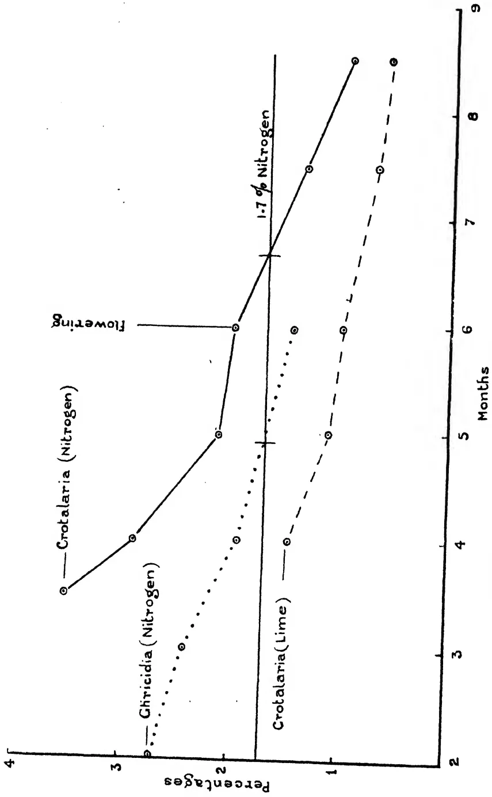
The graph illustrates the change in the percentage composition of Nitrogen and Lime in two types of green manures, Crotalaria and Ghicidia, over a period of 9 months. The Y-axis represents Percentages (0 to 4), and the X-axis represents Months (0 to 9). A vertical line is drawn at 1.7% Nitrogen, and a horizontal line marks the 'Flowering' stage at month 6.
| Month | Ghicidia (Nitrogen) (%) | Crotalaria (Nitrogen) (%) | Crotalaria (Lime) (%) |
|---|---|---|---|
| 0 | 2.8 | 3.5 | 1.0 |
| 1 | 2.5 | 3.2 | 1.1 |
| 2 | 2.2 | 2.8 | 1.2 |
| 3 | 2.0 | 2.5 | 1.3 |
| 4 | 1.8 | 2.2 | 1.4 |
| 5 | 1.6 | 2.0 | 1.5 |
| 6 | 1.5 | 1.8 | 1.6 |
| 7 | 1.4 | 1.6 | 1.7 |
| 8 | 1.3 | 1.4 | 1.8 |
| 9 | 1.2 | 1.2 | 1.9 |
Diagram showing change in composition of green manures with age
11material, containing the highest possible proportions of fertilising constituents. Two conditions must be satisfied: the material must be easily decomposable and the amounts of fertilising constituents supplied should be the maximum possible consistent with decomposability. As is well known, the rate and extent of the decomposition of plant materials in the soil will depend on their chemical composition, the presence of the necessary micro-organisms, and the soil temperature and moisture conditions. In regard to the analytical composition of the plant material itself, previous investigators have shown that an adequate quantity of nitrogen to supply the need of the micro-organisms for building up their bodies, and of available carbonaceous material both to meet their energy requirements and to build up their protoplasm, are essential for its decomposition.
Chemical tests for the 'decomposability' of organic materials have been worked out on different lines by Waksman (8), Rege (9) and Jensen (10). Waksman showed that when the nitrogen content of a material is 1.7 per cent., it is just sufficient to cover the requirements of the micro-organisms active in the decomposition of the plants within a period of four weeks. If the plant material contains more than 1.7 per cent. nitrogen, the excess is rapidly liberated in an available form; if less an additional source of nitrogen will be required before it can be completely decomposed. On this basis, a glance at Tables I and II and the diagram will show that the latest periods after which the loppings of Crotalaria and Tephrosia will decompose in the soil either very slowly or incompletely, are the sixth and eighth months respectively. These, it will be observed, coincide with the times of flowering of these plants. In the case of dadap and Gliricidia, the periods of the minimum nitrogen limit are the sixth and the fifth months respectively for the entire branches. If the stems alone are considered it will be seen that even at the early age of four months they will not readily decompose in the soil. The leaves, on the other hand, are easily decomposable at all ages.
Rege demonstrated that the decomposability of a material can be predicted from a knowledge of the pentosan/lignin ratio of a material. If this was greater than 1 the material would decompose rapidly, if between .5 and 1 slowly and if below .5 very slowly. The pentosan he called the 'energy factor' and the lignin the 'inhibitory factor'. Norman (11) showed subsequently, that the cellulose content of plant tissues should be taken into
12consideration when any ratio for predicting their decomposabilities was being worked out, as cellulose forms the chief source of carbonaceous material for the organisms decomposing the tissue. As Norman's work had not been published when this investigation was started, the cellulose contents were not taken into consideration. In Table V are shown the pentosan/lignin ratios of the stems, and the calculated pentosan/lignin ratios for the whole plant. This is based on an average pentosan and easily decomposable carbohydrate content of 35 per cent. and a lignin content of 10 per cent. in the leaves. An examination of the table will indicate that on the basis of Rege's test too, the bush plants should not be left uncut after the flowering period, and the tree plants after the fifth or sixth month.
Jensen's method of predicting the decomposability of organic materials is based on the carbon/nitrogen ratios of organic materials. He found that the maximum carbon/nitrogen ratio for the decomposition of these materials in alkaline and neutral soils was 26:1 and 13:1 in acid soils. The soils in this experiment being nearly neutral, 26:1 may be considered the limiting ratio for decomposition. Carbon was calculated on the basis that the organic matter of green manure materials contains about 45 per cent. of this element. This factor was arrived at from the figures of Jensen and Brown and Allison (12), and was confirmed by subsequent analysis in this laboratory. The carbon/nitrogen ratios shown in Table V are therefore only approximate. They are near enough, however, for the purposes of this test. An examination of the data will indicate that they confirm what has been found by the two previous decomposability tests.
It has therefore been established that, from the standpoint of decomposability, the time for cutting bush green manures should not be later than the time of flowering and for lopping the branches of tree green manures not later than the fifth or sixth month. If the stems only are considered, the time of cutting should be much earlier.
The question of determining the period at which the green manure crops should be cut to secure the maximum quantity of easily-decomposable material will next be discussed. The data of Tables I and III show that the loppings of the bush crops as a whole are fairly easily decomposable up to the time of flowering. At this stage the total nitrogen contents of the loppings are 11.7 and 13.3 gm in Crotalaria and Tephrosia as compared with 17.7 and 12.9 gm respectively at the final sampling. The
13increase in total nitrogen subsequent to flowering is mainly brought about by a rapid increase of the low nitrogen-containing and slowly-decomposable stem material. It is obvious therefore that there is no advantage in allowing the plants to pass this stage of growth. Cutting at a much earlier date than flowering would also be disadvantageous as the amounts of decomposable organic matter and nitrogen thus obtained would be much lower than those at the period recommended. Further, if these plants are lopped too young they will not produce a second crop of green material which would be obtained with most bush green manures if lopped when fully grown.
The tree crops too show a sudden rise of dry matter in whole branch after the minimum nitrogen limit is reached. The increases both of dry matter and nitrogen are again largely due to the low nitrogen-containing stem material. From the data in Table IV it would appear that under the conditions of the experiment the most suitable period to lop Gliricidia branches would be at six months and dadap branches at eight months, as the nitrogen contents of the leaves alone at these periods are as high, if not higher, than those contained in the entire branches at any previous period. As however in actual practice individual branches are not lopped and there is a fairly great variation in their sizes and leaf contents and as it would not be practicable in all cases to separate leaf material from the branches for turning into the soil, it would be unwise to conclude that the periods stated are those to be recommended for adoption. It was mainly to obtain more conclusive results that the second series of investigations with tree crops, designed to be in accord with agricultural practice, was begun. In considering the data of these trials, the question of the total return of decomposable material during a period of six months or a year will not be overlooked.
This series of experiments was started in May, 1931 in two areas different from the previous ones. As already stated, in this instance only trials with the two varieties of tree green manures viz. Erythrina (dadap) and Gliricidia were carried out. Eight trees of each variety were lopped on the same day and marked out. Two trees were entirely lopped at the end of each period of two, three, four and six months respectively and the leaf and stem material from each tree separately weighed. Representative samples of these were then taken for analysis. At the
14fourth and sixth monthly samplings, the two-monthly and three-monthly lopped trees were re-lopped and the loppings dealt with as previously. An estimate of the amounts of green material from trees lopped at different intervals during a period of six months was thus obtained. The analytical determinations were confined to moisture, ash and nitrogen, the previous investigations having demonstrated that a reliable index of decomposability was obtained from the nitrogen data. The tables show the means of duplicate results.
In Table VI are detailed the analytical composition of leaf and stem material and of the loppings at different times of sampling.
The data in the above table confirm what was found in the previous series that with advancing age the nitrogen and ash contents and leaf to stem ratios fall while the organic matter contents rise. Thus the nitrogen in Gliricidia loppings diminishes from 2.69 per cent. at two months to 1.46 per cent. at six months, while that of dadap correspondingly falls from 3.26 to 1.84 per cent. The percentages of nitrogen in this series are however appreciably higher in the case of both Gliricidia and dadap than in the previous investigations. The leaves again have a much higher nitrogen content than the stem material, which latter even at the early age of two months has a nitrogen content insufficient for complete decomposition without additional nitrogen. The periods at which the maximum nitrogen content consonant with decomposability is reached are about the fifth month with Gliricidia and the sixth month with dadap. This agrees with previous findings.
The table however shows that the secondary loppings from trees lopped more than once have invariably higher nitrogen and generally higher ash contents than the primary loppings. Thus in the case of Gliricidia the second and third loppings contain 3.00 and 2.98 per cent. of nitrogen respectively against 2.69 per cent. in the first lopping, while the corresponding figures for dadap are 3.38 and 3.81 per cent. against 3.26 per cent. On the other hand the total amounts of loppings fall considerably with each subsequent lopping. This is clearly seen from Table VII which shows the total amounts of constituents in the dry material.
15TABLE VI
PERCENTAGE CONSTITUENTS OF LEAF, STEM AND LOPPINGS
Tree Green Manures
| Plant | Sampling | Age in months | On green material | On dry material at 100°C | Nitrogen | |||||||||
|---|---|---|---|---|---|---|---|---|---|---|---|---|---|---|
| Moisture | Ash | |||||||||||||
| L | S | P | L | S | P | L | S | P | ||||||
| Gliricidia maculata | 1st | 2 | 80.8 | 82.3 | 81.4 | 89.9 | 91.5 | 90.3 | 10.1 | 8.5 | 9.5 | 3.46 | 1.47 | 2.69 |
| 2nd | 2 | 82.1 | 84.0 | 82.8 | 89.3 | 91.3 | 90.2 | 10.7 | 8.7 | 10.1 | 3.68 | 1.29 | 3.00 | |
| 3rd | 2 | 80.2 | 82.5 | 81.4 | 90.1 | 91.8 | 92.2 | 10.0 | 8.2 | 9.5 | 3.67 | 1.21 | 2.98 | |
| 2nd after 4 mths. | ||||||||||||||
| 1st | 2 | 80.1 | 83.6 | 81.5 | 89.6 | 91.8 | 90.7 | 10.4 | 8.2 | 9.7 | 3.71 | 1.25 | 2.89 | |
| 2nd | 3 | 78.8 | 77.5 | 78.3 | 90.6 | 93.3 | 91.7 | 9.4 | 6.7 | 8.2 | 3.36 | 1.36 | 2.51 | |
| 1st | 3 | 77.0 | 73.9 | 75.9 | 90.6 | 93.9 | 91.9 | 9.4 | 6.1 | 8.2 | 3.38 | 1.11 | 2.52 | |
| 1st | 4 | 77.6 | 73.5 | 75.6 | 91.0 | 94.9 | 93.1 | 9.0 | 5.2 | 6.9 | 3.30 | 0.78 | 1.96 | |
| 1st | 6 | 69.7 | 65.2 | 67.0 | 92.4 | 96.2 | 94.7 | 7.6 | 3.9 | 5.2 | 3.09 | 0.56 | 1.46 | |
| Erythrina lithosperma (Dadap) |
1st | 2 | 80.2 | 79.8 | 80.6 | 91.5 | 95.4 | 92.6 | 8.5 | 4.6 | 7.3 | 3.95 | 1.35 | 3.26 |
| 2nd | 2 | 81.7 | 78.5 | 82.3 | 91.3 | 94.9 | 92.2 | 8.7 | 5.0 | 7.2 | 4.29 | 1.56 | 3.38 | |
| 3rd | 2 | 81.7 | 84.5 | 82.2 | 91.4 | 94.8 | 92.1 | 8.6 | 5.2 | 7.8 | 4.29 | 1.89 | 3.81 | |
| 2nd after 4 mths. | ||||||||||||||
| 1st | 2 | 84.2 | 86.9 | 85.1 | 91.4 | 94.6 | 92.2 | 8.6 | 5.3 | 7.8 | 4.30 | 1.84 | 3.54 | |
| 2nd | 3 | 79.6 | 77.1 | 78.6 | 91.7 | 96.3 | 93.7 | 8.3 | 3.7 | 6.4 | 3.78 | 1.17 | 2.69 | |
| 1st | 3 | 79.4 | 81.1 | 79.9 | 91.7 | 96.0 | 92.9 | 8.3 | 4.0 | 6.9 | 3.85 | 1.32 | 3.13 | |
| 2nd | 4 | 78.5 | 75.1 | 76.9 | 92.8 | 96.5 | 94.7 | 7.2 | 3.5 | 5.3 | 3.72 | 0.98 | 2.30 | |
| 1st | 6 | 74.8 | 70.5 | 72.2 | 92.9 | 96.7 | 95.4 | 7.1 | 3.2 | 4.6 | 3.43 | 0.95 | 1.84 | |
16
TABLE VII
TOTAL CONSTITUENTS IN DRY MATTER IN GRAMS
Tree Green Manures
| Plant | Sampling | Age in months | Leaf | Stem | Loppings | Dry matter Ratio L/S | ||||||
|---|---|---|---|---|---|---|---|---|---|---|---|---|
| Organic matter | Ash | Nitrogen | Organic matter | Ash | Nitrogen | Organic matter | Ash | Nitrogen | ||||
| Gliricidia maculata | 1st | 2 | 467 | 52.6 | 18.2 | 295 | 27.2 | 4.5 | 762 | 79.8 | 22.7 | 1.6 |
| 2nd | 2 | 239 | 28.5 | 9.9 | 113 | 10.9 | 1.8 | 352 | 39.4 | 11.7 | 2.2 | |
| 3rd | 2 | 153 | 16.8 | 6.4 | 73.0 | 6.4 | 0.9 | 226.0 | 23.2 | 7.3 | 2.3 | |
| 2nd after 4 months | 2 | 388 | 44.9 | 15.9 | 183.8 | 16.3 | 2.3 | 572 | 61.2 | 18.2 | 2.2 | |
| 1st | 3 | 1220 | 126.6 | 45.4 | 953.0 | 69.0 | 14.1 | 2173 | 195.6 | 59.5 | 1.3 | |
| 2nd | 3 | 1039 | 108.0 | 39.0 | 667 | 43.5 | 7.7 | 1706 | 151.5 | 46.7 | 1.6 | |
| Erythrina lithosperma (Dadap) |
1st | 4 | 1896 | 187.3 | 69.0 | 222.3 | 120.7 | 18.1 | 4119 | 308.0 | 87.1 | .89 |
| 1st | 6 | 3488 | 286.3 | 116.6 | 6443 | 258.1 | 37.2 | 9931 | 544.4 | 153.8 | .56 | |
| 1st | 2 | 1043 | 95.3 | 44.9 | 386 | 18.1 | 5.4 | 1429 | 113.4 | 50.3 | 2.8 | |
| 2nd | 2 | 606 | 49.9 | 25.4 | 209 | 13.6 | 4.5 | 815 | 63.5 | 29.9 | 2.9 | |
| 3rd | 2 | 304 | 27.2 | 14.0 | 68 | 4.5 | 1.4 | 372 | 31.7 | 15.4 | 4.5 | |
| 2nd after 4 months | 2 | 522 | 49.9 | 24.5 | 222 | 13.7 | 4.1 | 744 | 63.6 | 28.6 | 2.4 | |
| 1st | 3 | 1869 | 167.8 | 76.6 | 1402 | 54.4 | 17.2 | 3271 | 222.2 | 93.8 | 1.4 | |
| 2nd | 3 | 1370 | 122.6 | 57.6 | 576 | 22.7 | 7.7 | 1946 | 145.3 | 65.3 | 2.5 | |
| 1st | 4 | 2355 | 181.4 | 94.4 | 2613 | 95.3 | 26.3 | 4968 | 276.7 | 120.7 | .94 | |
| 1st | 6 | 1547 | 118.0 | 57.2 | 2844 | 95.3 | 27.7 | 4391 | 213.3 | 84.9 | .57 | |
It will be observed that the total amounts of organic matter and nitrogen in the first two-monthly Gliricidia lopping were 762 and 22.7 gm respectively while the corresponding second and third loppings gave only 352 and 226 gm of organic matter and 11.7 and 7.3 gm of nitrogen—in each case less than half that of the first lopping. The same observations hold good with dadap, and with loppings made at other periods of growth. Thus in the case of dadap, the first three-monthly lopping gave 3,271 gm of organic matter and 93.8 gm of nitrogen while the second gave only about half these quantities viz. 1,946 gm of organic matter and 65.3 gm of nitrogen. These figures clearly demonstrate the disadvantage of too frequent lopping of tree green manures. On the whole smaller quantities of organic matter, nitrogen and even of ash will be secured thereby.
In Table VIII are set out the total amounts of fertilising constituents that were obtained by lopping the green manure trees at different times during a period of six months. If the data for Gliricidia are considered first, it will be noted that the six month old loppings contain 153.8 gm of nitrogen of which the easily decomposable leaf material contains no less than 116.6 gm, an amount higher than that found in the entire loppings of the two three-monthly lopped or the four and two-monthly lopped samples together. As entire loppings are less easily decomposed than leaf material alone since they contain a proportion of decomposing-resistant stem material, it is obvious that, under the conditions of this experiment, the best time to lop the Gliricidia to get the maximum benefit would be at six months after growth. As however a large amount of woody material would be obtained at the same time as the leaf material it would be necessary to cut off the latter from the main branches before it could be forked into the soil. If this cannot be done owing to cost, the trees would have to be lopped at an earlier age, say at four or five months. Early cutting may also be necessary with certain plantation crops where the heavy shade of the green manure trees may be harmful to the former. A further disadvantage of allowing tree crops to become too woody before lopping is that it entails the loss of the mineral fertilising constituents contained in the branches, when the latter are not returned to the soil.
Where there is a likelihood of the shedding of leaves after a certain stage of growth, generally after the nitrogen limit of 1.7 per cent. has been reached, the tree should be lopped earlier
18TABLE VIII
TOTAL CONSTITUENTS FOR PERIODS OF SIX MONTHS IN GRAMS
| Plant | Lopping intervals in months | Leaf | Stem | Loppings | ||||||
|---|---|---|---|---|---|---|---|---|---|---|
| Organic matter | Ash | Nitrogen | Organic matter | Ash | Nitrogen | Organic matter | Ash | Nitrogen | ||
| Gliricidia maculata | 2 | 859 | 97.9 | 34.5 | 480 | 44.5 | 7.2 | 1339 | 142.4 | 41.7 |
| 3 | 2259 | 234.6 | 84.0 | 1620 | 112.5 | 21.8 | 3879 | 369.2 | 106.2 | |
| 4 | 2283 | 232.2 | 84.9 | 2406 | 137.0 | 20.4 | 4690 | 347.1 | 105.3 | |
| 6 | 3488 | 286.3 | 116.6 | 6443 | 258.1 | 37.2 | 9931 | 544.4 | 153.8 | |
| Erythrina lithosperma (Dadap) |
2 | 1953 | 172.4 | 84.3 | 735 | 36.2 | 11.3 | 2688 | 208.6 | 95.7 |
| 3 | 3239 | 290.4 | 134.2 | 1978 | 77.1 | 24.9 | 5217 | 367.5 | 159.2 | |
| 4 | 2876 | 231.3 | 118.9 | 2835 | 109.0 | 30.4 | 5711 | 340.2 | 149.2 | |
| 6 | 1547 | 118.0 | 57.2 | 2844 | 95.3 | 27.7 | 4391 | 213.3 | 84.9 | |
than usual. In these trials the difficulty of leaf shedding was experienced with dadap after the fifth month. The data of Table VIII point to the value of four or even three-monthly loppings under the circumstances. But as too frequent lopping is disadvantageous, it may in general be concluded that an average lopping interval of four to five months would perhaps be best for most soil and climatic conditions.
Two series of investigations designed to study the changes in composition of typical bush and tree green manure crops with age and the optimum periods for cutting them indicate that:
(1) The percentages of nitrogen, ash constituents and pentosan decrease while those of dry matter and lignin increase with advancing age. The leaf material invariably contains higher percentages of the former constituents than the stem material. The absolute percentage constituents vary with different crop, soil and climatic conditions. The leaf to stem ratios of the crops also decrease with age.
(2) In the case of the tree types, where loppings are made every two or three months, the yields of dry matter and fertilising constituents decrease with each successive lopping, though the percentages of nitrogen and ash in them increase. Too frequent topping of these trees is therefore disadvantageous.
(3) The minimum nitrogen limit for decomposability of lopped material—1.73 per cent. as found by Waksman—is reached just about the time of flowering with bush crops and about the fifth or sixth month from lopping with tree crops. The stem material of even three month old loppings is not readily decomposable. Rege's pentosan, lignin and Jensen's carbon, nitrogen ratio tests for decomposability confirm these conclusions. Subsequent to the periods stated there is a marked increase of the low nitrogen-containing woody material in both types of plants.
(4) From the practical point of view the maximum benefit will be derived by cutting bush green manures at, or just prior to, flowering. With tree crops, the practice will depend on other factors like, e.g. subsequent treatment of loppings, amount of shade required by the major crop, period of leaf shedding, etc. These investigations point to the advantage of lopping at about the fifth or sixth month, but in general, a lopping interval of four to five months would be found best for most soil and climatic conditions.
20REFERENCES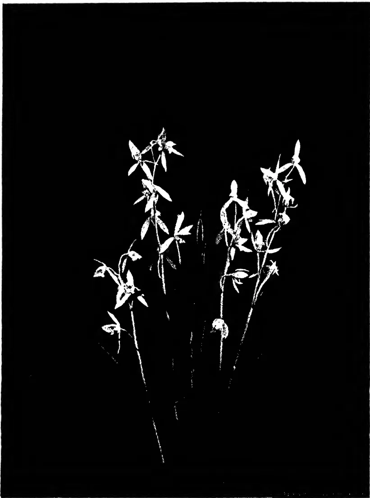
Cymbidium ensifolium var. haematodes Trim.
21CYMBIDIUM ENSIFOLIUM VAR.
HAEMATODES TRIM.
K. J. ALEX. SYLVA, F.R.H.S.,
CURATOR, HENERATGODA BOTANIC GARDENS, GAMPAHA
CYMBIDIUM is the name given by Swartz to a fairly large group of tropical orchids of the Vanda tribe consisting of both epiphytes and terrestrials. There are about fifty species of the genus, the majority of which are to be found growing in the warm parts of China, Japan, Australia and the Indo-Malayan regions.
Cymbidium ensifolium var. haematodes Trim. is a terrestrial, unlike its local relative, Cymbidium bicolor which is the commonest epiphyte on the wayside trees at mid and low elevations. It is confined to certain humid zones like Hantane, Galaha, Bogawantalawa and certain parts of Hewagam Korale. Even in these places the plant often escapes notice owing to its long, narrow grass-like leaves, of which it has a tuft which may reach three feet in length, each being half to three quarters of an inch in breadth and borne on a short stem.
The long, worm-like roots are of a creamy white colour. The dull citron-yellow flowers, with pink-veined sepals and petals and a lip beautifully mottled with a darker shade of the same colour, are about two to two and a half inches across and are borne on an erect stalk one and a half to two feet in height.
The plant is worthy of inclusion in any collection of orchids as it flowers three times a year, especially during the wet months, when most other orchids are out of bloom. This orchid responds readily to cultivation but resents too much root disturbance. When re-potting becomes necessary it must be done but provision should be made for the plant to remain undisturbed in its new receptacle for about two years.
Well decomposed leaf-mould should form two thirds of the compost, the remainder being cattle manure mixed with charcoal and a handful of finely crushed crocks. The drainage should be
22carefully adjusted as the plant requires copious supplies of water when in full growth. A few pieces of sun-baked cowdung of the size of marbles, sparsely placed over the drainage will be of benefit at a later stage when the roots come in contact with these: but this should not be overdone.
During active growth or when the plant is about to flower a little liquid manure (cowdung dissolved in water) once a week will enable the plant to produce better blooms. This application should cease as soon as the flowers open so as to enable them to remain for a longer period.
After potting, the plant may be placed in the shade until new shoots appear when it may be shifted into the open.
At low elevations it will thrive in a shady spot or in the verandah, but it prefers a warm, dry atmosphere.
23A fungus is a primitive type of organism that is included by scientists in the plant kingdom. Mushrooms and common moulds are well known fungi. Fungi live principally on other living plants, or on dead matter such as decaying parts of plants or plant products, and the soil. Some cause diseases in man; other attack plants, their feeding roots, or threads penetrating the stems, fruits and leaves, and in the majority of cases causing the death of the invaded portions.
The Frogeye fungus is a parasite on tobacco leaves. Its feeding threads kill small portions of the plant tissues, and after a few days the attacked areas turn brown and are visible as spots. The centres of the spots may become bleached, giving the typical Frogeye appearance. When favourable conditions occur, the fungus grows out from the surface of the spot and produces numerous spores which function like seeds when they come in contact with tobacco leaves, in that they are capable of growing and causing other spots.
The appearance of the spot varies with climate, and growth and variety of the plant, but is distinguished from those caused by other diseases by the presence of clusters of characteristic, dark threads bearing long, thin, light-coloured spores. The spores are of various lengths, approximately 300 of average size measuring one inch, presuming they are laid end to end.
The disease attacks plants at any stage of growth, especially when they are maturing in the field. Thousands of spores are produced on leaf-spots and on dead, diseased leaves. The diseased areas are at first a lighter shade of green than the healthy leaf tissue, and later appear as small, brown spots about the size of a pin-prick. As the disease extends, the colour of the affected area changes to brown, and the central portions usually appear bleached, the latter characteristic being more marked during dry periods. Under dry conditions, the spots tend to become relatively large, and to have a clearly defined margin.
The enlargement of spots is partially restricted by the large veins of the leaf, but small veins are readily attacked and killed. This is followed by yellowing of the leaf margins, and more especially the leaf tip, thus resulting in a prematurely ripened appearance. The midrib of the leaf and the large lateral veins are attacked on their upper or lower surface, and the leaf tissue beyond the attacked area turns yellow, later brown, and then dies. Spots often join together and kill large areas of leaf. Such badly spotted leaf is unsuitable for manufacture into smoking tobacco.
* By A. V. Hill, B. Agr. Sc., Plant Pathologist, Australian Tobacco Investigation
Extracted from Australian Tobacco Investigation Pamphlet, No. 2, Sept. 1933.
As the leaves mature from the base of the plant towards the top the disease spreads, until at last even the seed capsules may be attacked. Spores may be produced on both the upper and lower surfaces of the leaves. The fungus remains alive in dead diseased leaves, and continues to produce large numbers of spores (seeds) when climatic conditions are favourable.
The majority of plant diseases tend to be cumulative from year to year under favourable conditions, and this apparently holds true for Frogeye. The comparative freedom from disease of the early crops of 1921-32 was probably due to the limited occurrence of the causal organism at that time. Subsequent spread in the later crops resulted in wide distribution of diseased leaf material and spores throughout the district, with the result that seedlings and field crops were infected in their early stages of growth during the present season. The early and mid-season crops which were well grown and maturing during February were seriously diseased, whereas some of the later crops remained comparatively healthy.
The conditions favouring the disease may be briefly considered under the following headings:—
A.—Climatic conditions.
B.—Cultural practices.
Climate and weather conditions are important factors governing the distribution and economic cultivation of plants.
Climatic factors have an even more marked influence on plant diseases, as the organisms that cause them are usually more susceptible to extremes of temperature and moisture than the plants on which they live.
The occurrence and destructiveness of Frogeye is determined almost altogether by climatic conditions. Under favourable weather conditions the disease becomes epidemic, and, on the contrary, its spread is checked by unfavourable weather. The disease is most severe on well-grown crops during periods of wet weather. Once established in the field, rains or heavy dews provide conditions suitable for its wider spread.
1. Temperature.—Frogeye leafspot occurs in areas where high temperature prevails through the day and night during the growing season. The occurrence of such conditions, over a number of months, allows time for the organism to produce many generations of spores from a few spots on the lower leaves. The spores serve to spread the disease throughout the crop. When tobacco is grown under relatively high temperature conditions, as is the case in the Dutch East Indies, Rhodesia, Nyasaland, and
25Queensland, Frogeye is serious in some seasons. In contrast with this, it has not been reported from the relatively cooler and drier districts of New South Wales and Victoria, where tobacco has been grown for about 100 years.
2. Rainfall.—When the temperature is favourable, protracted periods of wet weather are conducive to the spread of the disease, for like seeds, the spores must be kept moist if they are to germinate and infect the leaf. The spores ordinarily germinate in two hours, consequently the leaves are readily infected if they remain moist for longer than that time. In addition, it must be borne in mind that heavy dews or protracted periods of rainy weather provide conditions suitable for the production of spores.
Rain is also an important agent in spreading the disease, because the spores are splashed for considerable distances by drops of water. One of the obvious effects of splashing can be readily seen by examining the under surface of the lower leaves of plants. They usually retain a considerable amount of soil, and, as a result, are called sand leaves.
An examination of the daily rainfall records for Mareeba over a number of years, shows that periods of showery weather may be expected in many seasons, and that such periods most commonly occur towards the latter end of January and during the early part of February. The occurrence of favourable climatic conditions at the most susceptible stage of growth, which is about the topping stage, will materially assist the spread of the disease. The simultaneous occurrence of high temperature and high humidity over a period of weeks provides optimal conditions for the development and spread of the disease.
When the plants are in the seedling stage, climatic factors may be modified to some extent by covering the seedbeds, and by adopting means to reduce temperature humidity and soil moisture. Such measures also assist in the control of downy mildew and damping-off fungi. It is sometimes difficult, under climatic conditions at Mareeba, to produce hardy, healthy seedlings. Furthermore, unfavourable conditions at transplanting time encourage the development of diseases which may be present in the seedlings or in the surrounding soil.
1. Seedbeds.—Poorly-drained seedbeds situated in low-lying localities are more subject to disease than well-drained and well-ventilated beds in a sunny position. Ventilation lowers the temperature and the atmospheric humidity, the latter being especially necessary and most difficult to accomplish during periods of wet weather. Once the disease is established in a seedbed, practically every plant becomes infected if the conditions are favourable. Seedlings should be carefully thinned out, that they may have ample room for normal growth. The soil should be provided with sufficient fertilizer to maintain good growth, and, if necessary, additional fertilizer may be dissolved in water and applied with the watering-can.
2. Spacing of Transplants.—More disease was noticed among well-grown plants closely spaced in the rows than in lower and more open crops. The more open and low-grown crops allow freer movement of air, and tend to lessen splashing of spores from plant to plant. The plants and soil also dry more quickly.
263. Soil Conditions.—Badly-drained fields are conducive to Frogeye and other diseases. Water-logged soils check plant growth, cause the leaves to die, and provide conditions that are favourable to an epidemic of leaf-spot. Natural surface drainage and ridging does not prevent seepage water from damaging and even killing the crop. Many crops grown on ridges with a good, natural slope were killed by seepage of water from higher areas. Adequate drainage, recommended during the past three years by experts, will be necessary wherever heavy rainfalls occur.
Lack of drainage of fields was partly responsible for poor crops in the Mareeba district during the 1933 season.
4. Delayed Ripening and Harvesting.—As Frogeye is associated with maturity of the leaf, any factor which checks growth or causes ripening, also encourages, to some extent, the spread of the disease. Thus, a check in growth caused by excessively wet conditions, or premature ripening of the leaf, which may be due to a number of unfavourable factors, increases the length of time during which infection may take place. Delay in harvesting the lower leaves allows many more spores to be produced on the spots, and the disease is therefore enabled to spread more rapidly. It follows that it is better to have a small area of tobacco well cared for, than a large area neglected from transplanting to harvest time.
5. Curing.—Growth of the fungus within the leaf tissue is favoured by the conditions of temperature and humidity during the early stages of the curing, but instead of the attacked areas becoming at first light brown and then white, as happens under field conditions, they are of a dull, dark-brown colour. This type is known as "Black Barn spot". The discoloration of bright tobacco leaf spoils its appearance, and reduces its value considerably. If the leaf is badly attacked, the spotted areas coalescing, the amount of dead tissue present may lead to the leaf being graded as scrap. Such leaf is very brittle, does not condition properly, and breaks into fragments during manufacture. Leaves spotted at harvest time are not likely to be of much value unless they possess good body and fair texture.
The amount of barn spot depends to some extent on the length of time taken to colour the leaves, those which colour quickly usually having the barn spot than others requiring several days. The results of several experiments show that barn spot infection does not normally occur during curing of the leaf, therefore diseased leaves do not infect healthy leaves in the barn. Experiments also demonstrate that the first signs of disease spots usually appear six or more days after the leaf is inoculated, and a definite brown spot develops in seven or more days. When leaves that are already infected in the field some days previous to harvesting are hung in the barn, the conditions during early curing merely accelerate fungus growth, and the diseased areas become dark in colour.
Since the disease is favoured by high humidity, the lowest humidity compatible with good curing practice will help to reduce the amount of barn spot.
27Plant diseases of all kinds have to provide some means of surviving from one season to another, or else they die out. If a disease becomes associated with the seed, e.g., bunt of wheat, it remains with its host and is ready to begin growing when the seed germinates.
Many important tobacco diseases first appear in the seedbed as a result of using contaminated seed, and therefore the provision of healthy seed is a pre-requisite for the raising of healthy seedlings. In a seedbed, diseases are confined to a few square yards, but diseased transplants are distributed over, and can infect, acres of land, and may, as a consequence, make the land unfit for profitable tobacco culture for some years.
The widespread occurrence of Frogeye in the seedbeds in the Mareeba district suggested that it was associated in some way with the seed. Outbreaks of the disease occurred in widely-separated farmers' seedbeds, and in many cases the only logical explanation was that the seed was the source of infection. This possibility received further support when tobacco capsules, bearing typical Frogeye spots, were found in a farmer's field in late February. From that time until the end of April, the disease was always readily observable on seedbeds maturing in the field. On numerous farms where seed capsules were being left for the next year's supply of seed, examination was made as opportunity offered, and in practically every case a large percentage of the capsules was diseased. In many cases, the leaflets present among the seed capsules showed typical Frogeye spots.
Diseased seed capsules were collected from four different farms, and were later used in very careful experiments, which showed that in each case a number of seedlings from such seeds were attacked by the disease at an early age, while seedlings from healthy seed were not diseased.
Microscopic examination showed that Frogeye spores were present in the seed samples, either unattacked, or on broken bits of capsules mixed with the seed. On many occasions a crop of spores was found on diseased capsules.
The disease may be carried over from season to season by diseased debris with the seed, and also in the soil. The length of life of the organism in the soil has not yet been determined, but it probably survives for some years.
Several diseased leaves forwarded to the research laboratories at Canberra in May, 1932, were dried, ground up some time afterwards, and placed on tobacco seedlings growing in the glasshouse during November. Frogeye leaf spots occurred on the plants two weeks later, thereby showing that the organism had survived for five months in association with the dried tobacco leaves.
Experimental work at Mareeba demonstrated that the fungus survived in soil in an area where diseased leaves had been strung on to sticks during the curing season, some nine or ten months previously. Other experiments showed that it was present in soil on which diseased seedlings
28had been grown, and when diseased dead leaves were added to the surface soil, a large percentage of plants grown on that soil became diseased. It is apparent from what has been said, that soil on which diseased plants have been previously grown, or soil which has diseased tobacco scraps present in it, or spores from diseased plants grown during the same or other seasons, is a source of seedbed infection.
An examination of diseased seedlings and plants in the field shows that the lower leaves bear large crops of spores which infect the surrounding soil, or remain associated with the diseased leaf.
The extent to which soils of diseased fields are a source of infection in the succeeding seasons is yet unknown, but experimental evidence shows that plants on soil on which tobacco was not previously grown remain free from disease much longer than plants in adjoining fields on which a crop of diseased plants was grown during the previous season.
Tobacco Scraps.—The organism survives in dead diseased tobacco leaves in the field and even in flue-cured diseased leaves. Flue curing of diseased leaves does not, in all cases, kill the organism causing Frogeye. Scraps of diseased tobacco leaves, whether previously flue-cured or not, may therefore cause the disease in nearby seedbeds and fields, or in areas to which they may accidentally be transported by implements, animals, wind or other agencies. Many fungal spores remain alive for long periods under dry conditions, and therefore the rainless winter months at Mareeba may favour the survival of the disease in the soil or in diseased leaves.
Although at Mareeba there is an almost complete absence of useful rain during the long, dry season, and the soil becomes very dry, some tobacco plants remain alive until the following wet season and then make new growth. Frogeye was present on a number of such plants examined in different areas, both the dead leaves and the new growth being infected. The dead, diseased areas on leaves of the previous season produced spores which were blown or splashed on to the new leaves, infection occurred, and Frogeye was in that way established for another season.
Overwintering plants and the continuous growth of tobacco throughout the year are a menace to the industry, because by these means, diseases and pests survive from season to season.
The "Diseases in Plants Acts" of Queensland provide, inter alia—
That every occupier or owner of land used in the growing of tobacco plants shall uproot, and when practicable, destroy plants by burning, within one month after the completion of the harvesting of the tobacco leaf. Every paddock shall be treated in the above manner, and where there have been plantings at separate intervals in different parts of one area, similar action must be taken after harvesting of the leaf from each separate planting.
This act is in the best interest of growers themselves. After harvesting, a vigorous effort should be made to destroy all volunteer plants throughout the district, thus assisting to reduce the incidence of diseases and pests. This objective will be materially assisted by eradication of all tobacco plants throughout the district, for some months each year.
29From many points of view, the practice of throwing the old stalks into river and creek beds is most objectionable. Seedbeds are usually situated along the banks of waterways, and therefore the organisms surviving on old stalks may cause outbreaks of disease wherever the material may happen to be transported by water or other agencies. Seeds, which may carry disease, are often present in the capsules on old stalks, and may become detached and distributed by water along the river banks, thus establishing wild tobacco plants carrying diseases and insect pests. Such plants may be seen growing along the rivers and creeks of the Mareeba district at certain times of the year.
A better means of disposal of old stalks is to pile them into heaps and burn them, but they should not be used as fuel for sterilizing the seedbed site, because the accumulation of stalks at one place results in the concentration of scraps of diseased leaf and spores in the area fringing the sterilized soil, and this material is readily carried or blown on to the seedlings.
As guaranteed clean seed is not always readily available to farmers, and as the use of diseased seed may result in diseased crops, some experiments involving seed sterilization were performed. A 1 per cent. solution of silver nitrate is a most effective disinfectant as it destroys bacteria and fungal spores, and does not harm the seed when used correctly.
Samples of diseased seed obtained from various farms, as well as other lots which were deliberately mixed with diseased parts of plants, were treated with silver nitrate solution. In every case the plants grown from the treated seed were free from disease, provided they were protected from chance infection from outside sources, such as infected soil and diseased plants.
As the disease is present on the outside of capsules in the field, these parts should not be mixed with seed. Contamination may be avoided, to a great extent, by breaking the tips from the dried capsules and allowing the seed to fall out, rather than by threshing in the usual manner. If home-grown seed is used, it is practically always necessary to disinfect it with silver nitrate. The following procedure should be followed:
(4) The seed should be spread out and dried at ordinary room temperature before sowing, taking care that it does not come in contact with diseased material during or after drying, as such contact would defeat the purpose of sterilization.
If clean seed is sown in soil free from disease, healthy seedlings will be produced if they are protected from other sources of infection. Sterilization of seedbed soil is necessary, under Mareeba conditions, for the control of the widespread damping-off diseases. This treatment also protects seedlings from Frogeye, because it destroys the organism if the latter is present in the soil. The seedbeds should be so situated that soil from fields on which diseased crops have been grown, or from the vicinity of barns and bulksheds, does not come in contact with the seedlings. It is wise practice not to replant the same fields to tobacco in successive years, because diseases tend to accumulate in the soil and, therefore, the plants become infected from that source. As most farmers have a large area of land suitable for tobacco, the use of new land is practicable. This would help to reduce the occurrence of the disease and also tend to improvement in the quality of the crop.
Bordeaux mixture has been recommended for many years as a control for diseases similar to Frogeye. During the 1932-33 season at Mareeba, four series of experiments involving a large number of seedbeds were used to test the efficacy of Bordeaux spray. Spraying was done during the wet season, when Frogeye was most serious in the seedbeds and field. Wherever Bordeaux was used, the disease was kept in check, and particularly was this so when spraying was begun before the disease made its appearance in the seedbeds. As previous experience showed that 4-4-40 Bordeaux mixture was likely to injure delicate seedlings, the strength was reduced to 2-2-40, and spraying was done every five days. The sprayed plots were practically free from disease, and the seedlings were more vigorous and healthy.
Directions for the preparation of 2-2-40 Bordeaux mixture—
Bordeaux mixture should be used immediately after it is made. Before using, it should be tested by holding a polished knife blade in the mixture for a few seconds. If no copper is deposited on it, the mixture is safe for use, otherwise more lime should be added and the test repeated.
Bordeaux mixture may be combined with lead arsenate or paris green to protect the seedlings against insects.
As the disease is commonly more serious on leaves approaching maturity, and as spores are produced in large numbers on mature, or dead, diseased leaves, the operation of priming, which involves the removal of such leaves, greatly reduces the number of spores present and the possibility of future infection in the field. Experiments show that early priming is essential, the aim being to eliminate the diseased, lower leaves before the valuable, middle leaves become infected. This operation must be carried out with discretion, because too severe priming will check growth, and too little will not control the disease sufficiently to make it worth while. The first priming should be done when the plants are only a few inches high. The plants may be primed two or three times before leaves of any commercial value are obtained. Later primings may be in the nature of preliminary harvestings. As many as six or seven may be necessary in some seasons, the discarded leaves being removed from the field and buried or burnt to prevent further spread of the disease by spores, which are produced on them if they are left on the ground or between the rows of tobacco plants.
The priming will not eliminate the disease altogether, but will check its progress in the field, and make possible the harvesting of saleable leaf.
Since the disease is associated with maturity of the leaf, every effort should be made to harvest the leaves as they ripen. The longer an infected leaf is left on a plant, the greater will be the production of Frogeye spores, which will in turn serve to spread the disease to previously healthy leaves. By attacking leaf veins and midribs, the disease may cause yellowing and death of the tissues beyond the attacked area, but such leaf is not mature, and will not cure satisfactorily.
In Mareeba, many leaves were observed in which the tips of margins were dead and the central portion yellowed, while the butt was green. In some cases this was due to the disease, but more generally to unfavourable seasonal and soil conditions which prevented normal ripening.
After harvesting is completed the plants should be eradicated and disposed of as directed in previous paragraphs.
Species of the plant kingdom, which cause disease in our crops, may be considered as being similar to weeds. The most practical method of controlling the spread of weeds is to eradicate them before they have an opportunity to seed. The old adage "one year's seeding, means many years' weeding", applies equally well to plant diseases, including Frogeye. This disease must be checked from the time of its first appearance in seedbeds and fields, or the spore production later in the season will be so great that control will be impracticable.
32RICE serves as the principal food for people of the Far Eastern countries. In the Philippines the diet of the masses consists largely of rice and is more or less deficient in fats, proteins, and vitamins. This investigation of Philippine rice-mill products, particularly rice bran, was undertaken with the idea of endeavouring to supply the present dietary deficiency.
In the Philippine process of milling rice the hull is first removed leaving the kernel which is somewhat colored and commonly called unpolished rice. The unpolished rice does not keep well because, when stored, the fats in it become rancid. Again the unpolished rice becomes infested with insects which destroy the outer mealy layer of the grain. To produce white polished rice, which can be handled without commercial hazard, the rice kernel is passed through a combined scraping and polishing process. This removes the outer portion of the kernel together with the embryo. That portion of the kernel removed during the polishing process is called rice bran or rice polishings.
Rice bran is the most nutritious part of the rice since it contains fats, proteins, and vitamins. The fats in rice bran are about the same as those in peanuts which are considered quite nutritious. The proteins are very similar to meat proteins since they contain in their make-up about the same important amino acids. Rice bran contains vitamin B1, which prevents beriberi, and vitamin A, which prevents eye afflictions and general ill-health. It also has the antisterility vitamin E.
At present rice bran is very cheap and is used for feeding cattle and poultry. Millers sometimes dilute the bran with rice hulls in order to dispose of the hulls with profit. Bran, which has been adulterated with rice hulls, is not suitable for use as an edible product because the hulls have an irritating effect when taken internally.
Bran flours are considered quite nutritious and are very popular in the United States and other countries. This would naturally suggest the use of rice bran for human consumption, especially since the bran is very much cheaper than flour. Several American teachers informed us recently that some years ago in the Philippine provinces they tried to make a bran flour by mixing rice bran with wheat flour. Although this mixture made very good bread and cakes they discontinued using it because they found it difficult to obtain a regular supply of high-grade bran. Sometimes the bran was fresh and at other times it was not.
* By Augustus P. West and Aurelio O. Cruz of the Bureau of Science, Manila, in The Philippine Journal of Science, Vol. 52, No. 1, Sept., 1933.
33The reason that rice bran has not become a popular human food is probably due to the fact that it contains a quantity of vegetable fatty oil (rice oil). When the rice bran is stored the oil becomes rancid and the bran acquires a disagreeable taste. Millers often pile fresh bran on top of stale bran. To be sure of getting fresh bran one should really go to the mill and take the bran as it comes fresh from the polisher.
The decomposition of the fatty oil in rice bran is due to the action of moisture in the presence of vegetable tissue which contains fat-splitting enzymes. We found that rancidity may be prevented by heating the fresh bran at a temperature of about 105°C., for three hours and storing it in moisture-proof containers which preserve the bran and prevent access of insects. Heating the bran removes moisture and stops the destructive action of enzymes. This prevents decomposition and subsequent rancidity of the fatty oil contained in the bran. The heating also destroys any mold spores, insects, or insect eggs which may be in the bran but does not affect the vitamins.
Bran treated in this manner is slightly darker in color than the fresh, raw bran but it has a pleasanter and sweeter odor and flavor than the raw bran. It does not become moldy or rancid; in fact, it may be kept in a fresh condition for a considerable length of time without any appreciable deterioration.
In preparing rice bran for storage it is advisable to use a specially constructed cooker containing a stirrer. Stirring the bran while heating facilitates the removal of moisture. In outlying districts where proper cooking facilities are not available the bran may be heated cautiously in a frying pan over a low fire. The bran should be stirred and the heating continued for perhaps an hour until it turns slightly darker in color. After heating, the bran should then be placed in a can or glass jar which may be closed tightly to prevent access of moisture. Bran, thus prepared, keeps for about a week or more.
Miss Maria Y. Orosa, of the Bureau of Science, has prepared excellent cakes, cookies, and bread from mixtures of wheat flour and rice bran. She used fresh bran and also bran which had been heated and stored for two months. The results were the same in each case. These bakery products were very satisfactory in texture and quite tasty.
For people who do not fancy the natural flavor of rice bran this may be toned down considerably by diluting the bran with wheat flour. A mixture of wheat flour (3 parts) and rice bran (1 part) makes a good combination for bakery products such as bread and cakes. When used alone rice bran, lacking gluten, does not make bread which will rise. The addition of wheat flour serves not only to dilute the bran but also to supply the gluten necessary for making bread.
The bran flavor may be still further neutralized or entirely disguised by using other characteristic flavors, such as ginger, cinnamon, or chocolate. Bran cookies made with these flavors are very tasty and since they contain vitamins they are quite nutritious.
In the Philippines beriberi is a very common and fatal disease among the poorer classes who live on a diet that consists principally of polished rice and is deficient in vitamin B1. For a number of years the Bureau of
34Science has been making a standard extract of rice bran (tikitiki extract) which contains vitamin . This extract is widely used for curing or preventing beriberi. It has been estimated that for adults approximately 30 grams of high-grade rice bran contain about enough of the antineuritic vitamin for their daily requirements as a preventative of beriberi. This is about equivalent to 11 level (not heaping) teaspoonfuls of bran or approximately 2 cubic centimeters of standard rice-bran extract. More than 111,000 tons of fine rice bran are produced annually, in the Philippines, as a rice-mill by-product. As a preventative of beriberi this amount is about sufficient for all the people who need the bran for its medicinal value and also for others who might benefit by using it.
In a very few localities in the Philippines the people have for years been used to eating a kind of cake made from a mixture containing some fresh rice bran. If this use of rice bran as a human food could be popularized and the people all over the Islands become accustomed to eating bakery products or other foods containing the rice bran then deaths from beriberi would be a rarity. It would not be necessary for the poorer classes to take extract of rice bran as a preventative or cure for beriberi.
Rice bran produced at present in the Philippines is not taken care of properly and much of it is allowed to spoil and is wasted. By utilizing this by-product of the rice mills as a food the health of the people would be generally improved. They would be getting not only vitamin , which prevents beriberi, but also vitamins A and E and proteins similar to meat proteins. The children would be healthy and vigorous and would not appear to be improperly nourished. Moreover, by using a domestic by-product the Filipinos would be developing the natural resources of their own country and the importation of rice and other foodstuffs from foreign countries would be greatly diminished.
There are many varieties of rice grown in the Philippines. According to habitat, method of cultivation, and general properties these numerous varieties are usually classified in terms such as upland and lowland rice, glutinous and non-glutinous. They are identified by certain trade names, such as Macan 1 (official No. 527), which are recorded as permanent numbers in the Philippine Bureau of Plant Industry. The different varieties are distinguished by their principal physical characteristics such as length, width, and thickness of the grain, the color of the hull and tips, flavor, and other properties. In general the late-maturing varieties give a larger yield per hectare than the early-maturing varieties.
Various methods are used for cultivating rice in the Philippines. One very common practice is to plant the rice in seed beds and later transplant the seedlings to the rice paddy (field). Chemical changes which occur during the ripening of rice grains have been studied by Tadokoro and Abe. In their report they refer to previous work along this line.
When the growing rice reaches maturity it is cut and stacked in the field in well-ventilated shocks and allowed to remain there about a month in order to cure the grain. Changes, not well understood, take place during the curing process. If the grain is not cured thoroughly, before threshing, it heats during storage and the moisture content increases. As a result it is likely to spoil.
35Rice straw is obtained as a by-product in threshing rice. In the Philippines rice straw is used as packing material, bedding for cattle, fuel in finishing pottery, for making mats, brooms, sandals, and for various other purposes. Rice straw serves as good bedding for the cultivation of edible mushrooms.
Experiments on the use of Philippine rice straw as a raw material for the manufacture of paper were carried out by Reyes and Cruz. They estimate that enough rice straw is produced in Bulacan Province alone to supply a 10-ton paper mill.
Philippine rice straw makes a very good tissue paper. Reyes and Cruz found that paper made from Philippine cogon grass is stronger than that made from rice straw. However, rice straw requires for digestion about one-third as much caustic soda as cogon and is easier to bleach. In the Philippines where chemicals are expensive this is a decided advantage. Again, since rice straw is a by-product in threshing rice no extra labor of cutting the straw is required as is necessary in the case of cogon grass.
There is quite a difference in the appearance and arrangement of machinery in the numerous Philippine rice mills. Some mills are more or less home-made, while others have very modern equipment. All of these mills, however, carry on the same operations and produce polished rice with rice hulls and rice bran as the principal by-products.
The milling of rice consists essentially in gradually breaking up the rice grain (paddy or unhulled rice) into products which are separated by a number of large shaking sieves.
In the Philippine process of milling rice the grain (paddy rice) is first passed through a cleaning sieve that removes trash and straw. The paddy rice is then carried to the rice huller. This breaks the hulls which inclose the rice kernel (unpolished rice). Some paddy rice grains usually pass through the rice huller without the hulls getting broken. The mixture (hulls, unpolished rice, and paddy rice) emerging from the rice huller is then sieved to remove tips, very finely broken grain, and small pieces of hulls. The mixture is then carried forward to the blower which is the next unit in the process. This is a special compartment. It contains a fan which blows the hulls out into an exit tube where the hulls are usually carried to the boiler to be used as fuel. The unpolished rice containing some paddy rice then drops to the separator sieve. This separates the unpolished rice from the paddy rice which is carried back to the rice huller.
The unpolished rice is next taken to the polisher. Some mills have two polishers. In passing through the polisher the surface of the grain is scraped with an abrasive thus removing the seed coat together with some of the outer portion of the rice kernel. The germ of the rice grain, which is rich in oil, is dislodged and also goes with the polishings (bran). In addition to the scraping procedure the grain is also polished with rubbers in passing through the polisher. At the bottom of the rice polisher there are two exit tubes. The white polished rice emerges from
36the polisher through one of these exit tubes and the rice bran through the other. The white polished rice is next sieved to remove the very small broken grain (binlid).
The milling of rice is really a very clean process. From the time the paddy rice enters the mill until the polished rice and rice bran emerge from the mill these rice-mill products are not handled by laborers. The whole process is carried on automatically by machinery.
For power many mills have a steam engine and use the rice hulls as fuel to heat the boiler. Recently, however, some mills have introduced oil-burning engines.
In addition to the power house the four other essential parts of a rice mill are the rice huller, the blower, the separator, and the polisher. The rice huller consists of two iron disks. One is placed just above the other and the two are separated by a very small space. Artificial stone covers the lower surface of the top disk and the upper surface of the bottom disk. The top disk remains stationary while the bottom disk revolves. The whole apparatus is arranged so that the distance between the two stone surfaces can be adjusted by means of hand wheels which raise or lower the bottom disk. The paddy rice is poured into the rice huller through a hole in the middle of the top disk and falls on the lower revolving disk which throws it away in all directions. The revolving disk then grinds the grain around and breaks the hulls. The distance between the two disks should be arranged very exactly as otherwise the rice kernel may be crushed or the hulls not well broken. The rice huller is one of the most important parts of a rice mill since upon it depends the quantity of rice obtained from a given amount of whole grain.
The rice polisher is a rather ingenious apparatus. It consists simply of an inverted frustum of a cone set inside of a wire screen. The cone and the screen are inclosed in a cylindrical iron container. Before taking the photograph a portion of the wire screen and a portion of the outside iron container were removed to show the abrasive cone inside. The top and side surface of the cone are covered with an abrasive prepared by mixing small pieces of emery with water glass (sodium silicate). Attached to the inner (cone) side of the wire screen and some distance apart are several vertical rubber strips. The cone, supported by a main shaft, is made to rotate rather rapidly. For a medium-sized cone the rate is about 300 to 400 revolutions per minute. A stream of unpolished rice is allowed to fall on the top of the cone. In descending through the polisher the grain (rice kernel) is whiried around in the space between the cone and the screen. The abrasive on the cone scrapes the surface of the grain, while the rubber strips, on the screen, polish the grain. The white grain, scraped and polished, emerges from the opening at the bottom of the apparatus, while the bulk of the scrappings (polishings or bran) passes through the wire screen. The bran which thus accumulates outside the screen is pushed, by a rotating slide, to an exit tube where it falls out.
A tube, placed at the side of the polisher, connects the space outside the screen with an exhaust fan. The fan draws a current of air through the screen. This air current prevents the polished rice from getting too hot and also removes most of the very fine bran dust that tends to adhere to the polished rice.
37The degree of scraping the grain depends upon the adjustment of the cone. By lowering the cone the space between the cone and screen is made smaller and the progress of the grain through the polisher is retarded. The grain thus gets a more thorough scraping. By means of adjustment screws the rubber strips on the wire screen may be projected inward toward the cone. This also retards the progress of the grain, giving it a more thorough polishing and scraping.
In removing hulls from the paddy rice (hulling process) some of the rice kernels are broken. These broken kernels are passed through the rice polisher with the whole kernels. When the polished rice is sieved the larger pieces of broken polished rice remain with the unbroken polished rice while the very small pieces (binlid) together with some bran are removed. Small pieces of grain are usually sold as chicken food or used for making starch. Millers usually do not keep an accurate account of this stock which is comparatively small. The small pieces of broken polished rice serve as a good material for fermentation and so this kind of rice (brewer's rice) may be used for making fermented beverages. In Japan the manufacture of saké from rice is an old established industry.
In the Philippines the rice sold in the markets, stores, and tiendas is usually a mixture of the whole and partly broken polished rice. The millers do not ordinarily separate this mixture.
In isolated districts in the Philippines miniature rice mills, commonly known in Tagalog as kiskisan, are sometimes used for milling small amounts of rice. In these mills the separation of bran and hulls is usually not very complete and consequently a low grade of bran, unsuitable for edible purposes, is obtained. In order to ascertain if the grain has been milled properly and the fresh bran is not diluted with hulls the bran should be tested as explained later.
Results in Philippine rice mills.—In milling rice the quantity and quality of the finished product depend upon the method of milling, the efficiency of the mill machinery, the variety of rice milled, and the condition of the rice before milling. During the process of milling some lots of rice break up to a much greater extent than others. The quantity and quality of the polished rice are therefore quite variable. In order to get a product of approximate average grade it is a very common practice in the Philippines to mix different varieties of rice before milling. However, one may occasionally visit a mill when they are running only one variety.
Although rice starch is not strictly a rice-mill product it may be well to mention it since it is an important commercial product made from polished rice. Rice contains about 78 per cent. of starch. This is a larger percentage than is contained in any other starchy material, such as wheat, maize, or potatoes. Various authorities give a very good description of the manufacture of starch from rice. According to Thorpe—
The demand for rice starch has grown chiefly because of its suitability for laundry use, and this in turn is due entirely to the fact that the rice starch granule is considerably smaller than that of any other commercial starch. When made with boiling water, too, the resulting mucilage is better adapted for "starching" than other starches.
38Rice starch is used commercially for various purposes such as laundering, preparing foods, making paste, and making medicinal tablets. It is also employed extensively in the cosmetic industry for making face powders. In addition to the perfume, the principal characteristics of a good face powder are color, texture, and perfect adherence to the skin. The latter qualities impart the appearance and finish. According to Poucher, the peachlike finish given to the skin by face powders is best obtained by the use of rice starch. Other starches, especially maize, are employed in cheaper powders. The particles of rice starch are much finer than those of any other cereal and consequently there is a distinct preference for rice powders. Parisian manufacturers of cosmetics rate these powders very highly and in comparing the qualities of rice powder with other powders they find the rice powder to be by far the least harmful to the skin and much smoother.
In milling rice the hulls are obtained as a by-product. They are light in weight, neutral in odor and have a slow combustibility. They are used for packing hygroscopic materials to prevent moisture absorption; filtering and percolating; for insulation, making insect powder, and various other purposes.
In the Philippines the rice hulls are generally used as fuel in the rice mills. They are also employed in hatching duck eggs and in burning wood for charcoal.
Since the ash consists principally of silica the hulls have a very low nutritive value. It is generally believed that the hulls have an irritating effect upon the stomach and intestines of animals.
On account of their very high silica content the ashes of rice hulls, when finely powdered, serve as a good polishing powder. They should also be useful for making polishing pastes and scouring soaps.
Rice hulls have been found to be useful for making an edible rice cellulose. Harding states:
A recent advance in food technology is the development of a process of recovery of an edible cellulose from the hulls of rice and other cereals. Cellulose is a natural constituent of practically all vegetable foods and is really an essential dietary constituent. By adding bulk and roughage to the intestinal contents normal elimination is promoted and constipation largely prevented.
In the development of a new ready-to-serve breakfast food milled rice was found to be the most desirable cereal base. Because of the low cellulose content of milled rice it was decided to reinforce the roughage content of the finished cereal by additions of a pure cellulose of suitable physical form. It was found that a satisfactory pure edible cellulose could be prepared from the hull of the rice, thus making the breakfast food an all-rice product. The cellulose of the hull is first isolated in a semifibrous form by a strong soda cook. A hydration treatment then reduces it to the proper physical form for use as an edible material.
A large plant for the production of this new form of pure cellulose has been in operation for some time. It is located at Lake Charles, Louisiana, adjacent to the largest rice mill in the world.
39Rice cellulose as prepared for food roughage is a light, somewhat fluffy, fine mealy material. It has a light cream color, but is easily bleached white if desired. It is odorless and tasteless. It has a mealy feel in the mouth, and although not intended to be eaten straight, when well moistened with saliva, can be swallowed without difficulty or irritation. Its ash content has been reduced to 1.0 per cent. or less, although the original raw material contains about 18 per cent. of ash that is largely insoluble silica. The washed product from the alkaline digestion may run as high as 99 per cent. alpha-cellulose. In the finished product a part of the original compound or normal celluloses has been converted to simpler hydrated celluloses; but the freedom from impurities of non-cellulosic character entitles it to be called a practically pure cellulose.
After passing the paddy (unhulled) rice through the rice huller to remove the hulls the unpolished (hulled) rice then goes through the polisher. There are several reasons for polishing rice. Polished rice has a very clean, white, and tasty appearance, whereas the unpolished rice is slightly colored and is not so attractive. Polished rice has much better keeping qualities than unpolished rice. The unpolished rice loses its flavour in a tropical climate because the fats in it become rancid. Again the unpolished rice has a tendency to get moldy and become infested with weevils and other insects, which destroy the outer mealy layer of the grain. This is the reason why the wholesale rice dealers are reluctant to handle unpolished rice. Polished rice can be handled without commercial hazard.
The unpolished rice, which still retains the seed coat and oily germ, contains somewhat more fat, protein, ash, and crude fiber than the polished rice. The polished rice, however, contains more starchy material (carbohydrates).
The effects of living on a diet composed largely of polished (highly milled) rice or unpolished (undermilled) rice are stated very clearly by Vedder and Feliciano:
Although medical authorities still differ with regard to a number of details concerning the etiology of beriberi, there is a very general consensus of opinion to the effect that beriberi is a deficiency disease, produced whenever, in the absence of an adequate mixed diet, highly milled rice is used as the main food staple, and that the disease can be prevented by the substitution of a sufficiently undermilled rice. The most striking illustration of this fact with which we are familiar is the case of the Philippine Scouts. For a number of years (1902-1909), while they were supplied with the best grade of highly milled rice, beriberi was the most important cause of admission to sick report for these native troops, the incidence often reaching as high as 10 per cent. of the entire number (5,000). In 1910 the substitution of undermilled rice was made. Beriberi at once declined as a cause of admission and at the end of a year, when the substitution had been made universally effective, beriberi was completely eradicated. Since that time undermilled rice only has been furnished, and during all these years beriberi has completely ceased to appear among these troops, although they were living in the midst of a population where beriberi is very common. Similar results have been obtained in a number of civil institutions in the Philippines as well as in other countries.
40The reason the unpolished rice is a preventative of beriberi is because it contains the antineuritic vitamin B, which prevents beriberi. During the polishing process, to produce white polished rice, most of the vitamins go with the rice bran which is removed from the grain as a by-product.
Vedder and Feliciano carried out an elaborate investigation to determine a standard for unpolished rice which would prevent beriberi. Samples of unpolished rice from many varieties were analyzed and also fed to pigeons to determine their actual beriberi-producing potentialities. Pigeons were selected because they are even more susceptible to polyneuritis than the human race is to beriberi. As a result of their investigation they suggested, as tentative standards, the following chemical indices for beriberi preventing rice:
Any rice having 1.77 per cent. of phosphorus pentoxide plus fat, but not less than 0.4 per cent. phosphorus pentoxide; or any rice having not less than 0.62 per cent. phosphorus pentoxide; or any rice having not less than 0.50 per cent. phosphorus pentoxide and with at least 75 per cent. of the external layers of the grain remaining.
Vedder and Feliciano also determined the effect of washing unpolished rice and found that for ten samples the average loss in phosphorus pentoxide was 0.25 per cent. Presumably the vitamin content of these rices was similarly reduced. They further state—
Previous writers, including Schüffner and Kuenen and McCarrison and Norris, have shown that prolonged washing or soaking of the rice, prior to cooking, extracts and removes a considerable portion of its vitamin, and that an originally beriberi-preventing rice may be thus converted into a beriberi-producing rice. This is what would be expected, in view of the fact that the antiberiberi vitamin is very freely soluble in water. It is to obviate such difficulties as much as possible that we have recommended such a high standard for a beriberi-preventing rice. A lower standard would undoubtedly suffice if it were not for such factors as excessive washing, pressure cooking, and other procedures that cannot be foreseen; but the standard recommended at least provides a considerable margin of safety.
According to Vedder and Feliciano the antineuritic vitamin B, the fat, and most of the phosphorus of the unpolished rice are undoubtedly contained chiefly in the embryo (germ) and the aleurone layer of the unpolished rice grain.
The aleurone layer is the outermost layer of the endosperm or that part of the rice kernel that lies just beneath the seed coat. The aleurone cells in this layer contain protein granules and oil droplets. These oil droplets as well as those in the embryo comprise the rice oil which may be extracted from the bran. Starch granules in the cells beneath the aleurone layer are recognized by the familiar blue color imparted by an iodine solution. No oil droplets are found in these starch cells beneath the aleurone layer though protein granules are observed near the cell walls. The oily embryo and the aleurone layer are really the most nutritious parts of the rice grain since they contain the vitamins, the fats and also proteins.
41During the polishing process the entire seed coat of the unpolished rice is removed. The embryo (germ) is also removed as well as most of the aleurone layer of cells. Polished rice usually contains small portions (remnants) of the oily aleurone layer. The fatty oil contained in these portions of the aleurone layer becomes rancid when the polished rice is stored for some time and as a consequence the polished rice tends to lose its fresh flavor.
The degree of polishing determines how much of the aleurone layer remains with the polished rice. A highly polished rice contains very little of the aleurone layer. As suggested by Vedder and Feliciano and shown by the diagrams of Santos the polishing process removes from the rice grain the most nutritious parts which go with the rice bran (polishings).
After the paddy rice is hulled the unpolished (hulled) rice, which remains, is passed through the polisher to get white polished rice. In the Philippines the rice polishings, removed during the polishing process, are commonly called rice bran, tikitiki, or darak. This rice bran (polishings) comprises the seed coat, germ, and most of the outer (aleurone) layer of the rice kernel together with some of the starchy material beneath the aleurone layer. The rice bran contains the most nutritious parts of the rice grain for it has vitamins, fats, proteins, and the phosphorus ingredient, as well as some starchy material (carbohydrate).
Bran with rice hulls.—In making rice-bran (tikitiki) extract we find that a bran which is moisture free and contains at least 20 per cent. fat gives an excellent product, so we have come to regard this kind of bran as one of standard quality.
In our inspection of Philippine rice mills we visited several where it was customary to mix ground rice hulls with the bran. As the hulls contain very little fat (less than 1 per cent.) this diluted bran would, of course, give a low fat content, less than 20 per cent.
The amount of ground hulls contained in diluted bran may be estimated approximately. Suppose a sample of diluted bran, when analyzed, gives only 15 per cent. fat calculated on a moisture-free basis. How much genuine bran is in the diluted mixture? A sample containing only bran of high quality (100 per cent. standard bran) has at least 20 per cent. fat. The hulls may be considered roughly as having no fat.
Santos has recently made a microscopic study of rice bran. He found that rice hulls, when contained in the bran, may be identified as they present a characteristic appearance under the microscope.
Rice bran suitable for use as an edible product should not contain any rice hulls. The hulls contain about 21 per cent. of ash which consists mostly of silica. As the silica has abrasive properties, quite likely the hulls have an irritating effect upon the stomach and intestines.
In milling rice bran intended for edible purposes the mill should have a very efficient blower which will remove practically all the rice hulls from the unpolished rice. In our investigation of Philippine rice mills we found that most of the mills had very good blowers.
42In purchasing bran from a rice mill it is advisable to inspect the unpolished rice before it goes through the polisher. If the grain before polishing contains no hulls then the bran removed from the grain during the polishing process will also be free of hulls unless the bran has been purposely adulterated. The bran should be taken as it comes fresh from the polisher because millers often pile fresh bran on top of stale bran so that bran lying in heaps about the mill is not likely to be very fresh.
Bran from the first polisher contains somewhat more fatty oil than bran from the second polisher. During the second polishing of the grain there is naturally a tendency to remove more of the interior starchy part of the grain beneath the outer oily (aleurone) layer. The fat content of the bran will, of course, vary somewhat according to the degree of polishing. Calculated on a moisture-free basis bran from the first polisher contains over 21 per cent. of fat. Where only one polisher is used the fat content of the bran is 20 per cent. or more.
Rice oil has a rather dark brown color with a greenish tinge. The color is somewhat undesirable because buyers of edible vegetable oils, such as coconut oil, usually prefer an oil which is very light in color.
Rice bran contains the water-soluble vitamin B, which is the anti-neuritic vitamin that prevents polyneuritis in pigeons and beriberi in humans. The rice oil (fats) in rice bran contains the fat soluble vitamins A and E. When irradiated, the rice oil also contains vitamin D.
Vitamin B1.—The effects of feeding rice bran to pigeons ill with polyneuritis are clearly shown. A pigeon was fed by Dr. A. J. Hermano, of the Bureau of Science, on a ration deficient in vitamin B1 until it developed polyneuritis. When given 0.5 gram of rice bran the pigeon recovered in one day and became normal.
Vitamin B1 appears to be quite resistant to heat. We heated rice bran at a temperature of 105°C. for three hours. Doctor Hermano found that this heated bran cured pigeons of polyneuritis just as easily and quickly as the fresh bran.
McCollum and Simmonds state that Jansen examined unhulled rice which had been stored for 100 years and found the rice had lost little or none of its antiberiberi property (vitamin B1). From this it appears that the hull serves as an excellent protection for the vitamins contained in the rice kernel. Moreover vitamin B1, under the proper conditions, has excellent keeping properties.
Kondo and Okamura kept unpolished rice in sealed tin cans for several years and found the rice was not attacked by insects and there was little change in the physical and chemical properties.
Concerning the vitamin B complex Dutcher says:
Considerable work has been done to show that the vitamin B complex may consist of five or more fractions. The existence of the antineuritic fractions, B1, has been established definitely, and vitamin B2 is recognised as a definite entity. These vitamins are also known, in this country, as B and G respectively. Eddy and co-workers contend that a third factor (B3) is necessary for growth in pigeons, while Miss Reader of London believes
43that there is a fourth fraction of the old B complex which is necessary for normal growth in the rat. Miss Chick, also of London, is of the opinion that she has obtained evidence that a fifth fraction exists which is necessary for rat growth and which differs from B4 in stability.
Windaus and co-workers have just announced the isolation of the antineuritic fraction (B or B1) in crystalline form. Using modifications of the methods used by Jansen and Donath, Siedell and Peters, two types of crystalline products were isolated, one as the hydrochloride and one as the picrolonate. He ascribes the tentative formula, C12H17N8OS to this highly potent crystalline product. This compound was active in daily doses of from 2 to 4 gamma (2/1000 to 4/1000 of milligram). The most potent preparations reported previously were those of Jansen and Donath, which were active in doses of from 7 to 9 gamma daily.
Rice-bran (tikitiki) extract.—For a number of years the Bureau of Science has been making an extract of rice bran (tikitiki extract) which contains vitamin B1 and is used extensively for the cure of infantile beriberi. During the year 1931, 50,974 bottles of tikitiki extract with a sales value of 35,681.80 pesos were prepared. Of this number 4,087 valued at 2,860.90 pesos were sold and 46,887 bottles with a sales value of 32,820.90 pesos were furnished to the Office of the Public Welfare Commissioner for free distribution.
The present method used by the Bureau of Science for making rice bran (tikitiki) extract is indicated by the following outline:
Vitamin B1 is very soluble in water. The alcohol which is added serves to prevent fermentation of the vegetable matter in the bran.
This preparation is the finished product which is now ready to be used as a medicine for beriberi.
Mr. F. M. Yenko, who has charge of the tikitiki-extract plant in the Bureau of Science, finds that the yield of tikitiki extract from rice bran varies considerably depending upon the quality of the bran used in making the extract. A sack (50 kilos) of very high-grade bran may yield as much as 75 bottles (50 cubic centimeters each) of standard extract. A sack of low-grade bran, which contains a considerable quantity of broken rice kernels and rice hulls, may give only about 45 bottles. By selecting from a shipment only those sacks which contain bran of good quality rather high average yields of extract may be obtained. During the year 1932 Mr. Yenko obtained an average monthly production of 69 bottles of extract from one sack of bran. At this rate of production the potency of 1 cubic centimeter of extract is about equivalent to that of 14.5 grams of high-grade rice bran.
The Bureau of Science sells a 50-cubic-centimeter bottle of extract for 70 centavos (Philippine currency) or 35 cents (U. S. currency). The mail or freight charges are extra.
Hermano standardized this extract and found that when 0.2 cubic centimeter is added daily to a basal ration deficient in vitamin B1, the ration then contains sufficient vitamin B1 to support a growing rat. Pigeons which had contracted polyneuritis were cured in one day when given an aqueous solution containing 0.0175 gram of the pure extract. In these experiments the pigeons were kept in cages which were covered with fine-mesh wire to prevent access of the flies known as Pseudolyncha maura. These flies transmit to pigeons a blood disease (Haemoproteus columbae) which may become so severe as to prove fatal.
Experiments were also made by Doctor Hermano to determine the relative potency of the standard tikitiki extract as compared with activated clay secured from the Bureau of Chemistry and soils in Washington. This activated clay serves as an international standard for vitamin B1. It has a concentration such that 10 milligrams are equivalent to one unit of vitamin B1. A unit is that amount of vitamin B1 which, when fed as a daily allowance, gives a weekly increase of 3 grams in the weight of an albino rat during an experimental period of four to eight weeks. Experiments in curing pigeons of polyneuritis showed that 10 milligrams of activated clay (1 unit) gave the same results as 17.5 milligrams of standard tikitiki extract.
Vitamin A (fat-soluble) in rice bran.—McCarrison found in unhulled rice vitamin A which prevents eye afflictions. Hermano fed albino rats on a ration deficient in vitamin A until they developed general ill-health and the eye disease known as xerophthalmia. The basal ration was then supplemented daily with 0.2 cubic centimeter of the fatty oil contained in rice bran. After one week the eye disease was cured and in one more week the rats had recovered their health and were again normal. The fatty oil used in these experiments was an ether extract of rice bran. The extract was heated in an air bath at a temperature of 105°C., for three hours to remove traces of ether. Evidently heating the fatty oil did not destroy the vitamin.
45Vitamin E (fat-soluble) in rice bran.—Hermano tested the fatty oil contained in rice bran and found it gave positive results for vitamin E (fat-soluble) which prevents sterility. Concerning his experiments he states :
Six pairs of healthy rats were mated in six different cages. They were fed with the basal ration deficient in vitamin E. Three pairs of the rats, 1, 2, 34, 35, 36, and 37, were fed with the basal ration deficient in vitamin E for about three to four months, and no litters were produced. After an interval of time the basal ration was supplemented daily with 0.2 cubic centimeter of the ether extract of crude tikitiki (rice bran). The results of the addition were significant in that these three pairs produced seventeen young. The other three pairs, rats, 3, 4, 25, 26, 27 and 28, continued to be fed with basal ration deficient in vitamin E; and, though they appeared to be healthy and mature, they produced no litters. The ether extract from crude rice bran possesses the anti-sterility property, vitamin E.
Vitamin D in irradiated rice oil.—In making Japanese saké wine and the saké cake that remains as a residue contains some rice oil. Takahashi and Lim extracted the rice oil from saké cake. The unsaponifiable matter in the rice oil was then removed and from this unsaponifiable matter they isolated a crystallized sterol which melted at 137°C. These sterol crystals were then exposed to ultraviolet light (irradiated). Takahashi and Lim found that these irradiated sterol crystals were antirachitic and, when fed to albino rats, could cure and prevent rickets. Evidently the sterol crystals, when irradiated, developed the antirachitic vitamin D.
Rice oil contains about 4 per cent. of unsaponifiable matter which is a comparatively large amount. Since unsaponifiable matter consists largely of sterols it would seem quite likely that vitamin D is either contained in rice oil or may be developed in the oil by irradiation.
Hermano tested rice oil for vitamin D and found it gave negative results. He then exposed the oil for fifteen minutes to ultraviolet light and tested the irradiated oil. Albino rats were fed for about a month on a basal ration deficient in vitamin D until the rats developed symptoms of rickets. The joints in the hind legs became somewhat swollen and the rats moved rather slowly. The basal ration was then supplemented daily with an olive oil solution containing 0.003 gram of irradiated rice oil. After three weeks the rats became quite lively, walked well and the leg swellings disappeared. The rats were then killed and the tibia bones in the hind legs cleaned, treated properly, and photographed. The photographs showed considerable calcification in the bones. Photographs of the tibia bones from rats fed on the same ration, except that cod-liver oil was used in place of rice oil, showed somewhat more calcification. Perhaps if the rice oil had been irradiated somewhat longer it would have given results as good as the cod-liver oil. For when the rice oil was irradiated for periods of only 5 and 10 minutes the results were not as good as when it was irradiated for 15 minutes.
Chicken perosis.—When used in a uniform diet for growing chickens, as pointed out in a note published recently, rice bran appears to be superior to wheat as preventative of perosis (deforming leg weakness) in chickens.
46In the fall of 1929 the animal husbandry division of the Bureau of Animal Industry and the departments of poultry and husbandry of several Southern and South western State agricultural experiment stations organized an informal co-operative project for the purpose of comparing, on a weight-for-weight basis, different feeding stuffs when included in a so-called "uniform" diet in growing chickens. During the spring and summer of 1930 the following experiment stations used the "uniform" diet in some of their feeding experiments with the growing chicks, Kansas, Louisiana, New Mexico, Missouri, Texas, the U.S. Poultry Experiment Station, Glendale, Arizona, and the U.S. Animal Husbandry Experiment Farm, Beltsville, Maryland.
Several of the stations reported that when the "uniform" diet was fed to chicks kept in confinement a high percentage of them became afflicted with perosis (deforming leg weakness). One of the writers (W.M.G.), observed, however, that when 10 and 20 per cent. of rice bran replaced equivalent amounts of wheat in the "uniform" diet, no cases of perosis occurred.
Perosis, or deforming leg weakness, in chickens is a condition of dietary origin, in which the legs become deformed in various ways.
The superiority of the rice bran as reported in these experiments is quite likely due to some vitamin contained in it.
Commercial importance of vitamins in rice oil.—Rice oil contains the fat-soluble vitamins A and E; and, when irradiated, vitamin D is developed in the oil. Should the vitamin D content of rice oil be increased, with sufficient irradiation, to that of cod-liver oil then the rice oil may become an important nutritive substance. Possibly it could be used as a substitute for cod-liver oil. Rice oil has a bland, fatty taste and in this respect the oil is certainly more agreeable to take than cod-liver oil.
In the United States the use of vegetable oils, particularly coconut oil, in making margarine has increased very considerably in recent years. According to Snodgrass:
Since the war the vegetable fats, and in particular coconut oil, have continued to grow in popularity in this country until now the ratio of animal to vegetable fats used in margarine is almost the reverse of what it was before the war. Approximately 60 per cent. of the ingredients are now of vegetable origin, and only 40 per cent. animal fats. Coconut oil is far and away the most important single ingredient. In 1925-26 more of it was used than of all the animal fats together and over a period of several years it has been more important than oleo oil and neutral lard combined. The only other vegetable fat used in appreciable quantities is cottonseed oil.
Coconut oil does not contain the fat-soluble vitamins A, D, and E. Since rice oil contains the fat-soluble vitamins A and E it might serve as an important product for use in the margarine industry as the rice oil would supply the vitamins which are not contained in the coconut oil. Mixtures of coconut and rice oils should make a margarine more like natural butter than when coconut oil alone is used.
47In producing rice oil for commercial purposes either bran fresh from the polisher may be used or, as explained later, bran which has been heated and properly preserved. The rice oil may be extracted from the bran by means of hot coconut oil. The rice oil may also be produced by expressing mixtures of rice bran and expeller copra cake or by expressing the rice bran alone.
Proteins are complex substances containing combinations of amino acids. Numerous researches have been carried out to determine the biological value of the proteins contained in various foods of animal or vegetable origin. Experiments in feeding animals, usually albino rats, have shown that some proteins (meat proteins) contain in their make-up certain amino acids which are necessary for the normal maintenance and growth of the animal body. The most important of these amino acids are generally believed to be histidine, lysine, tryptophane, and cystine. The biological value of a protein seems to depend, in general, upon the amount of these particular amino acids which are contained in the protein. Inferior proteins are deficient in these important amino acids necessary for maintenance and growth.
Osborne, Van Slyke, Leavenworth, and Vinograd investigated the hydrolytic products of the protein of the rice kernel. They summarized their results as follows:
The partition of nitrogen among the products of hydrolysis oryzenin, the chief protein of the endosperm of rice, was determined by the Van Slyke method. Compared with the endosperm proteins of wheat or maize, the protein of rice yields relatively much of each of the basic amino acids, arginine, and lysine, and comparatively little ammonia and non-amino nitrogen. In its general amino-acid make-up it more nearly resembles the majority of the proteins of animal tissues than do the proteins of maize or wheat. This may explain the extensive use of rice as an almost exclusive diet in spite of its low protein content.
In the process of polishing rice the embryo goes with the rice bran.
Rice bran contains not only the rice embryo but also some of the rice endosperm (white rice) that is, the interior part of the rice kernel. Jones and Gersdorff investigated the proteins in white (polished) rice and also the proteins in commercial rice bran. They found that the proteins in the white (polished) rice contain the amino acids, histidine, lysine, tryptophane, cystine, arginine, and tyrosine. The proteins in the rice bran were tested for the amino acids, tryptophane, cystine and tyrosine which were found to be present.
As a result of these various investigations it appears that the proteins in rice bran contain the important amino acids (histidine, lysine, tryptophane, and cystine) necessary for maintenance and growth.
Dr. J. Maranon, of the Bureau of Science, investigated the nitrogen distribution in Philippine rice bran by means of Hausmann's method as modified by Osborne. He found that the protein nitrogen is about 8 times the non-protein. Investigation of non-protein nitrogen showed that it contains mostly non-basic nitrogen. The protein nitrogen consists largely
48of non-basic nitrogen but also has a considerable amount of basic nitrogen. The data for the protein nitrogen distribution were calculated by the difference between the results of the nitrogen distribution after hydrolysis and the values of the hydrolytic non-protein products. These results agree, in general, with those obtained by Hamada for he found in the protein of the rice embryo more monoamino (non-basic) nitrogen than diamino (basic) nitrogen.
The comparative nutritive value of the proteins contained in rice bran and soy beans has been investigated by Mitchell and Villegas. They determined the actual digestible nitrogen of the protein rations fed. On a 10 per cent. protein ration the results seemed to show that there was no distinct difference between the protein of rice bran and soy beans. The protein of soy beans, unlike, that of other vegetables, is similar to both meat and milk protein and seems to fulfil all physiologic requirements. It would appear that the proteins in rice bran have a high biological value and, like soy bean protein, compare favourably with meat proteins.
Concerning gluten Thorpe states :
Wheaten flour differs from that of all other cereals in that after it has been made into a dough with a little water, it is possible to wash out the starch, leaving a sticky adhesive brown or greyish-brown residue which consists mainly of protein. This is crude gluten : on drying it in a water-oven, a hard, brittle horny mass, not unlike glue, results, which has lost its power of becoming plastic when wetted, and strongly adheres to the substance on which it rests. At a higher temperature, the wet gluten expands greatly until the expansive force ruptures its vesicles.
The flour of other cereals when washed in a similar way entirely disintegrates, leaving no protein residue. The physical properties of wheaten dough depend almost entirely on the gluten, which acts as a mechanical agency for binding the particles of starch and for entangling the carbon dioxide gas produced by the fermentation : in the oven, this gas expands, causing the dough to rise and the gluten to remain distended until the heat fixes it.
Tadokoro studied the chemical properties of glutinous and non-glutinous rice and found they were quite different in various respects.
Rice does not contain gluten. The so-called glutinous rices contain a kind of sticky substance instead of true gluten. When used alone rice bran, lacking gluten, does not make bread which will rise. However, when rice bran is mixed with wheat flour the combination makes a bread which rises nicely and has a good texture.
Kintner and Holt studied equine osteomalacia (bone weakening) in the Philippines and found that the prevention of this disease depends on the feeding of a ration properly balanced in the important mineral constituents calcium oxide and phosphorus pentoxide. The ration should be so balanced that the calcium oxide-phosphorus pentoxide intake ratio is between 1:1 and 1:1.8. Where there is deficiency in one of these mineral factors this balance may be attained by adding to the ration the required amount of the proper constituent.
49Rice bran has a rather high ash content, containing about 10 per cent. Analysis of the ash for calcium and phosphorus has been made by Mr. M. Tirona, formerly of the Bureau of Science. The following results were obtained:
| per cent. | |
|---|---|
| Phosphorus pentoxide () | 5.09 |
| Calcium oxide (CaO) | 0.06 |
As shown by these data the ratio between the calcium oxide and the phosphorus pentoxide is not well balanced as the percentage of phosphorus pentoxide is quite high in comparison with the percentage of lime, which is very low. The composition of the bran, in this respect, resembles that of polished rice which also contains a relatively high content of phosphorus as compared to lime. In feeding stock this unbalanced ratio could be corrected, in accordance with the suggestions of Kintner and Holt, by adding the proper amount of calcareous constituents to a rice-bran ration or to the drinking water.
According to Sherman 0.45 gram of calcium (0.63 gram CaO) and 0.88 gram phosphorus (2.02 grams ) fill the actual daily requirement for adult humans but this represents the minimum of actual need rather than the normal allowance. He considers that the normal allowance for phosphorus should be 50 per cent. above the average minimum while for calcium it should be even greater. He estimates the optimum allowance to be 0.70 gram calcium (1.0 gram CaO) and 1.32 grams phosphorus (3.0 grams ). The optimum calcium oxide:phosphorus pentoxide ratio is 1.0:3.0 according to these data.
Concerning the use of rice bran as an ingredient of human food this unbalanced calcium-phosphorus ratio is not a serious matter for people who live on a mixed diet. For this ratio could be balanced to a considerable extent by including suitable vegetables in the diet; that is, vegetables which have a high ash content and a relatively large amount of calcareous matter in the ash.
Maranon has recently investigated the mineral constituents of a considerable number of edible Philippine plants.
As shown by the data these vegetables contain considerably more calcareous matter than the phosphoric ingredient. This unbalanced mineral ratio is just the opposite of that in rice bran. The addition of these vegetables to a ration containing rice bran would tend to balance the calcium-phosphorus ratio in the bran.
Rice bran as a cattle food.—Rice bran should have a comparatively high food value since it contains vitamins, proteins, and fats. These are the most nutritious constituents of the rice grain.
In Louisiana, Texas, and elsewhere in the southern United States rice bran (polishings) has been used in feeding experiments with cattle. The results showed that fresh rice bran, which has a sweet odor, is somewhat better than corn or corn meal. However, if the bran becomes rancid, due to decomposition of the fat contained in it, the cattle do not like
50it. Cattle also do not care for rice bran that has been mixed with any considerable quantity of rice hulls. It is generally believed that bran which contains rice hulls is not suitable for use as an edible product.
Lush and Hale fed cows with a mixture consisting of fresh rice bran (90 per cent.) and cottonseed meal (10 per cent.) and found that the ration had no effect upon the flavour of milk given by the cows. They concluded that fresh, non-rancid rice bran is a desirable and economical dairy food.
In the Philippines rice bran has served as cattle food for a number of years. When bran that is not fresh is used for feeding horses an old local custom is to mix the bran with molasses to neutralize the stale taste.
Rice bran has a higher food value than ordinary hydraulic copra cake, which contains about 5 per cent. of coconut oil.
Copra cake is used considerably as cattle food and some buyers prefer a cake which has a somewhat higher fat content than is ordinarily contained in hydraulic copra cake. A mixture of hydraulic copra cake and rice bran in equal proportions gives a combination that has a higher food value than the copra cake alone, for it contains not only sufficient proteins and carbohydrates but more fat. Furthermore, the combination has the fat-soluble vitamins A and E, which are not contained in copra cake. For a cattle food this is a decided advantage since it tends to enrich the milk of the cattle in fat-soluble vitamins.
Rice bran has a much higher food value (calories) than either the wheat bran or the flours. This is due to the fact that the rice bran has a much higher fat content than the wheat bran or flours although the protein and carbohydrate contents are lower.
Recently the Bureau of Science has taken steps to popularise the use of rice bran as a human food. At the industrial exhibition held recently in Manila the Bureau gave an interesting display of bread, cakes, and other bakery products made from rice bran. Miss Orosa has published a popular bulletin on rice bran as a health food and how to cook it. This bulletin gives recipes for making rice-bran biscuits, fritters, croquettes, pudding cookies, and many other tasty foods.
Some people do not fancy the natural flavor of rice bran. For such people the flavor may be toned down considerably by diluting the bran with wheat flour. A mixture of wheat flour (3 parts) and rice bran (1 part) makes a good combination for bakery products such as bread and cakes. This combination has a food value higher than that of wheat flour.
Rice bran, when used alone, lacks gluten and does not make bread which will rise. The addition of wheat flour serves not only to dilute the bran but also to supply the gluten necessary for making bread.
The bran flavor may be still further neutralized or entirely disguised by using other characteristic flavors, such as ginger, cinnamon or chocolate. Bran cookies made with these flavors are very tasty and since they contain vitamins they are quite nutritious.
51Rice bran as a preventative of beriberi.—In the Philippines beriberi is a very common and fatal disease among the poorer classes who live on a diet that consists principally of polished rice and is deficient in vitamin . The standard extract of rice bran (tikitiki extract), made in the Bureau of Science, is widely used and has given excellent results as a preventative or cure for beriberi.
According to Van Veen, Jansen and Donath estimate that the amount of antineuritic vitamin contained in 30 grams of rice bran is probably more or less the quantity required for an adult per diem. This is just about equivalent to 11 level (not heaping) teaspoonfuls of bran or approximately 2 cubic centimeters of standard rice-bran extract (14.5 grams of high-grade bran make 1 cubic centimeter of extract).
In the Philippines more than 111,000 tons of fine rice bran are produced annually as a rice-mill by-product. Estimating the population of the Islands at 13,000,000, this is sufficient to supply each person daily with about 23.3 grams of fine rice bran. People who live on a mixed diet do not require the bran for its medicinal value so the annual production of rice bran is probably about sufficient for all the people who really need it and for others who would benefit by using it.
In a very few localities in the Philippines the people have for years been used to eating a kind of cake made from a mixture containing some fresh rice bran. If this use of rice bran as a human food could be popularized and people all over the Islands become accustomed to eating bakery products or other foods containing rice bran, then deaths from beriberi would be a rarity. It would not be necessary for the poorer classes to take extract of rice bran as a preventative or cure for beriberi.
Insect infestation.—When rice bran, fresh from the polisher, is allowed to stand for a day or so the bran become infested with insects. Unhulled rice grains frequently carry insect eggs that have been deposited upon the grain in the field before the grain is brought to the mill. Again, insects breed freely in rice bran which accumulates about the mill. There is a Philippine Ordinance which provides that rice mills shall be cleaned of all waste once a day but this regulation is not strictly enforced. We visited mills which were really very clean but there were others which presented quite a different appearance. In the Philippines, as in the United States and other countries, insect infestation is one of the important problems connected with the milling industry.
W. Schultze, formerly entomologist of the Bureau of Science, has identified the following insects which infest unpolished rice:
Rice weevil, Sitophilus oryzae Linn.
Rice moth, Corcyra cephalonica Staint.
Rust-red flour beetle, Tribolium ferrugineum Fabr.
Granary weevil, Sitophilus granarius Linn.
52Vedder and Feliciano found that when these insects infest unpolished rice they prefer to eat away the most nutritious part of the grain. This is the external layer or that portion removed during the polishing process. These insects thus convert an unpolished rice into a polished rice. Samples of unpolished rice which were infested with insects for one hundred days were analyzed before and after the period of infestation. The results showed a very decided decrease in the percentage of fat and phosphorus pentoxide. Unpolished rice, which before the infestation was beriberi-preventing, thus lost this medicinal property.
Heat for controlling insects in flour mills and grain elevators has been used considerably in the United States. Dean, who investigated this problem, found that a temperature of only 118° to 125°F., (48° to 51.5°C.), maintained for several hours to enable the heat to penetrate all infested parts, which kill all insects and insect eggs. The heat, obtained from steam pipes, does not injure the grain and is more efficient than fumigation.
We found, as stated later, that insect infestation in rice bran may also be prevented by heat.
Decomposition of rice oil.—The deterioration of rice bran is not only caused by the ravages of insects but also by the decomposition of the fatty oil contained in the bran. Pure vegetable fats, or fatty oils, usually consist almost entirely of a mixture of glycerides of fatty acids. Rice oil, for instance, consists principally of the glycerides of oleic, linolic, and palmitic acids. Under certain conditions, such as the action of moisture and enzymes, these glycerides are gradually decomposed (hydrolyzed) and converted into glycerol and a mixture of free fatty acids. The free acids may then undergo oxidation and the fats acquire an unpleasant odor and taste, and become rancid. However, a high acid number is no indication of a rancid fat for rancid fats may contain either small or very large amounts of free fatty acids. According to Lewkowitsch the initial phase of rancidity (hydrolysis) is accelerated by the action of enzymes. Fat-hydrolyzing enzymes occur in most, if not all, oleaginous seeds. The freshest vegetable oils and fats always contain at least minute quantities of free fatty acids. The formation of free fatty acids in vegetable oils is due to the action of moisture in the presence of enzymes (soluble ferments) which act as catalysts and accelerate the hydrolysis of the fats. Thus olein (), the fat which is the glyceride of oleic acid, when hydrolyzed yields glycerol, , and oleic acid, .
For convenience it is usually customary to calculate the amount of the free fatty acids in vegetable oils simply as oleic acid.
At ordinary temperatures moisture alone is not effective in decomposing vegetable free oils (glycerides). According to Lewkowitsch:
At temperatures up to about 150°C., water does not attack glycerides but if the temperature be raised to 200°C., or more, the triglycerides are finally decomposed (hydrolyzed) into their proximate components, glycerol and fatty acids. The hydrolysis thus produced at high temperatures is greatly accelerated if the action of the water is assisted by suitable chemical agents. If such agents are present, it is possible to reduce the
53temperature . . . the change may be brought about by water even at the ordinary temperature if naturally occurring ferments, such as lipase or steapsin, are intimately intermixed with the oils and fats.
Rice bran as it comes from the polisher has a fresh and somewhat sweet odor. If the bran is obtained from rice milled soon after the harvest the amount of free fatty acids in the fatty oil contained in the bran is usually very low. We found samples of bran that gave only 1.2 per cent. of free fatty acids in the rice oil. Perhaps if the mill had been thoroughly cleaned before milling the grain the percentage of free fatty acids would have been even smaller. Samples of bran from grain which had been stored for some months gave a much higher percentage of free fatty acids in the rice oil ranging from about 2 to 6.5 per cent. From our results it would seem that, due to the action of moisture in the presence of enzymes, the fatty oil in the unhulled rice grain gradually decomposes to some extent when the grain is stored. Perhaps this is the reason that polished rice from freshly harvested grain has a better flavor than rice milled from grain that has been stored a long time. During the polishing process not all of the outer aleurone layer containing fats is removed from the rice kernel, for the polished rice still contains over 1 per cent. of fat. If the fats which remain with the polished rice are acid they may have a flavor which is not so agreeable as that of the pure glyceride (fats). Compared with other foods rice has relatively little flavor and so the presence of even a small amount of acid fat may, perhaps, affect very appreciably the flavor of polished rice.
The fatty oil in rice bran, fresh from the polisher, may contain only a very small percentage of free fatty acids but when the bran is allowed to stand there is a very rapid increase in the amount of free fatty acids contained in the fatty oil with a corresponding decrease in the amount of pure fat.
According to Browne this rapid decomposition of rice oil is due to a fat-splitting enzyme (lipase). Excessive acidity has been observed in a few other vegetable oils, such as palm and olive, and has been found to be due to enzyme action.
Concerning the production of palm oil in Africa Lewkowitsch states:
In consequence of the very crude mode of producing palm oil, causing it to remain for a considerable time in contact with fermentable vegetable tissue, hydrolysis rapidly sets in, so that the oil on reaching the coast contains already a notable amount of free fatty acids. Palm oil when shipped from the coast has at least 10-12 per cent. of free fatty acids. The process of hydrolysis, once begun, continues in the barrels during the voyage, and in consequence thereof commercial palm oils, on arriving at their destination, contain frequently from 20 to 50 per cent., and even more, of free fatty acids. In such palm oils free glycerol is found. In old samples the hydrolysis may even reach completion, so that such palm oil practically consists of free fatty acids. The progress of hydrolysis can be observed even in oils kept in glass bottles. Thus a sample of Drewin oil, which had originally the acid value 41.8, showed after six (summer) months the acid value 70.1.
54In the case of rice oil we have a condition somewhat similar to that of commercial palm oil. Rice bran as it comes from the polisher contains fatty oil in contact with fermentable vegetable tissue. The rice oil in the bran contains free fatty acids showing that hydrolysis of the oil has already started before milling the grain. The longer the oil is allowed to remain in contact with the vegetable tissue the greater will be the production of free fatty acids unless something is done to stop the action of the enzyme and the decomposition of the oil.
Cattle frequently show a marked distaste for rice bran as a food. It has been found, in such cases, that the bran has a rancid taste. The oil in rancid bran usually has a high acid number indicating that the fats (glycerides) have decomposed and, to a considerable extent, have been converted into free fatty acids.
The greater the amount of free fatty acids contained in the oil of fresh bran the greater the amount of hydrolysis.
We determined the daily hydrolysis of the fatty oil when rice bran is stored for twenty-one days. In the first sample of bran tested the acid number of the oil in the fresh bran was 4.88 and in the second sample it was 8.89. These samples of bran were taken fresh from the polisher, placed in bags of cheesecloth, and stored in a wire screen box. They were thus exposed to atmospheric moisture but protected from insects.
Preliminary heating experiments.—According to Browne the activity of the fat-splitting enzyme contained in rice bran can be retarded very considerably by heating the bran to a temperature of 90°C. To prevent the formation of free fatty acids in rice oil and the resulting rancidity Browne suggested heating the bran, immediately after milling, to a dry heat sufficient to destroy the enzyme, such as is done in the kiln-drying of certain seeds.
Since a double wrapping of moisture-proof cellophane preserved the bran better than any other wrapper we used it would seem that preservation of the bran, after heating, depends principally on excluding moisture and insects.
Enzymes in rice bran.—The fact that we had to heat rice bran at a temperature of 100°C., for six hours to check the action of the fat-splitting enzymes would seem to indicate that the enzymes in rice bran, like certain enzymes from other sources, have a considerable tolerance for heat.
Heating the bran removes moisture and stops the destructive action of enzymes, as most of them are destroyed. This prevents decomposition and subsequent rancidity of the fatty oil contained in the bran. The heating does not affect the vitamins but destroys any mold spores, insects, or insect eggs which may be in the bran. When stored in moisture-proof containers, the heated bran does not become rancid, moldy, or infested with insects.
Bacteria in rice bran.—If the fatty oil in rice bran has the general properties of other vegetable fatty oils then the decomposition (hydrolysis) of rice oil in rice bran is due to moisture in the presence of fat-splitting enzymes contained in the tissues of the bran. The question might be raised that, possibly, bacteria as well as enzymes may, perhaps, be active in
55decomposing the fatty oil in rice bran. In order to settle this question we heated rice bran at a temperature of 120°C., for six hours. During the heating the bran was stirred continually. The heating destroyed the bacteria and also any mold spores or insect eggs that may have been in the bran. A portion of the hot bran was quickly placed in a sterilized bottle which was stoppered with sterilized cotton. Another portion of the heated bran was placed in an open vessel and thus exposed to bacteria in the air. This bran was stirred occasionally and allowed to stand in the air for four hours. It was then placed in a sterilized bottle which was stoppered with sterilized cotton. These two samples were covered with paper to keep out dust and allowed to stand in the air, under identical conditions, and absorb moisture through the cotton stoppers for 31 days.
The first sample quite likely contained only a very few bacteria while the second, which was allowed to stand in the air, certainly had considerably more than the first. For comparison we simply designated the first sample as "without bacteria" and the second as "with bacteria". The results of these experiments are recorded in table below.
Effect of bacteria on the decomposition of rice oil in rice bran.
(The bran was heated at 120°C., for six hours and stored for thirty-one days, exposed to moisture, in sterilized bottles.)
| Rice bran | Moisture | Acid number of oil in bran | ||
|---|---|---|---|---|
| Before storing | After storing | Before storing | After storing | |
| Without bacteria a | ... | 4.50 | 4.60 | 6.18 |
| With bacteria b | ... | 4.73 | c 4.60 | 6.45 |
a The bran, heated for six hours at 120°C., was placed immediately in a sterilized bottle which was stoppered with sterilized cotton.
b The bran, heated as above, was placed in an open vessel and exposed to the air, with occasional stirring, for four hours. The bran was then placed in a sterilized bottle which was stoppered with sterilized cotton.
c The acid number was determined after heating the bran and not after exposing it to the air for four hours.
If bacteria are active in hydrolyzing rice oil then, after storage, the rice oil in the bran with bacteria should have a much higher acid number than the rice oil in the bran without bacteria. As shown by the data both samples gave about the same results so evidently the decomposition of rice oil in rice bran is not due to bacteria.
The acid number of the rice oil in both samples of bran increase slightly during storage. This would seem to indicate that the enzymes in rice bran are not totally destroyed even after the bran is heated at a temperature of 120°C., for six hours. Apparently a very few still remain somewhat active.
The rice oil in the bran with bacteria gave a slightly greater increase in acidity, during storage, than the oil in the bran without bacteria. This was probably due to the fact that the bran with bacteria was stirred in
56the air for four hours before bottling and absorbed more moisture than the bran without bacteria. Both samples of bran were moisture free immediately after heating.
Sieving rice bran before heating.—Commercial rice bran usually contains some fragments of rice kernels or polished rice. It may also have some broken rice hulls or other foreign matter if the bran has not been milled properly. If the bran is to be used for making bakery products or other foods, it should be sieved as it is not desirable to have hard particles in the bran and moreover rice hulls are considered to be injurious for human consumption. In sieving the bran the hard particles are retained by the sieve. The question naturally arises as to how much of the nutritious constituents are removed from the bran by sieving it. We obtained two samples of fresh rice bran (200 grams each) and, by analysis, found the oil content of one to be 21.88 per cent. (calculated on a moisture-free basis) and the other to be 23.51 per cent. This showed that these samples of bran were not purposely adulterated with rice hulls. These samples were sieved through a large, 30-mesh, inclined sieve. Dr. A. J. Hermano tested the fine bran which passed through the sieve and also the coarse material retained by the sieve for the fat-soluble vitamin A and the water-soluble vitamin . Both the fine bran and the coarse material gave positive tests for these vitamins.
The coarse material consists largely of fragments broken off from the surface of the rice kernel. These fragments contain a considerable portion of the aleurone layer of the rice kernel and therefore they contain rice oil, fat-soluble vitamins and also the water-soluble vitamin .
Rice oil and vitamins (A and ) in sieved bran
| Sample | Bran retained by 30-mesh sieve | Bran passing through 30-mesh sieve | ||||
|---|---|---|---|---|---|---|
| Amount | Vitamins (A and ) | Oil content of bran | Amount | Vitamins (A and ) | Oil content of bran | |
| per cent. | per cent. | per cent. | per cent. | |||
| 1 | 13.00 | Positive | 24.81 | 87.00 | Positive | 21.59 |
| 2 | 15.50 | do | 24.25 | 8.50 | do | 23.19 |
| Average | 14.25 | ... | 24.53 | 85.75 | ... | 22.39 |
As shown by the data an average of 14.25 per cent. of coarse material was removed from the bran by sieving it. This is about 1 per cent. less than the average of the results recorded. Since this coarse material contained 24.53 per cent. fatty oil then the amount of fatty oil removed from the bran by sieving was about 3.5 per cent. (). The coarse material removed by sieving is very suitable for feeding chickens or for other purposes.
In sieving rice bran through a large, 30-mesh, inclined screen the bran does not sieve by mechanically shaking the screen because there are no oval solid particles, like rice grains, to roll down the screen. However, if the bran is spread over the screen in a thin layer and the screen is tapped frequently with a rod, so that the screen vibrates perpendicularly,
57then the fine bran will pass quickly through the screen while the coarse material is retained. The coarse material is then removed and a new portion of bran spread over the screen.
Rice-bran cooker.—The Bureau of Science has recently installed a rice-bran cooker. This cooker is a drumshaped apparatus which has an internal diameter of 100 centimeters and an internal height of 40 centimeters. The side and bottom are surrounded by a jacket through which steam may be admitted when the cooker is in operation. In the interior of the cooker and very near the bottom there is a stirrer with four iron paddles that serve to stir the bran when it is heated. Layers of asbestos wrapped around the outside of the cooker prevent loss of heat. This cooker heats the bran satisfactorily, in fact, the bran may be heated easily to temperature of 125°C.
Our method for preparing rice bran so that it will keep in storage is as follows: Bran fresh from the polisher is sieved through a large, 30-mesh screen by tapping the screen so that it will vibrate perpendicularly. The coarse material which does not pass through the screen, may be discarded and used for feeding chickens. If it does not contain rice hulls or other foreign matter it may be ground finely and returned to the bran. The sieved bran is then placed in the cooker and heated, with continual stirring, for three hours at a temperature of about 105°C. Stirring the bran facilitates the removal of moisture. The bran while still hot is then packed in moisture-proof containers or packages. When prepared in this manner it will keep in a fresh condition for a considerable length of time.
Although the heated bran is slightly darker in color than the fresh, raw bran it has a pleasanter and sweeter odor and flavor than the raw bran.
Heating bran in outlying districts.—In outlying districts it is often not feasible to procure bran which has been properly heated in a cooker and stored in moisture-proof containers. Bran which will keep in storage for a short time may be prepared in a rather crude manner at home. This is done by simply heating fresh bran in a frying pan over a low fire. The bran should be stirred continually and heated about an hour or so until it turns slightly darker than the fresh bran. Care should be taken not to burn the bran. After it is heated the bran should be placed in a can or glass jar and this closed tightly to prevent entrance of moisture. This crude method removes nearly all of the moisture from the bran and by storing it in containers which are fairly airtight the bran will keep in good condition for a week or more.
Rice bran is at present a very cheap substance and contains fats, proteins and vitamins that are the most nutritious constituents of the rice grain. Excellent bakery products and other foods may be made from rice bran. When it is not convenient to procure fresh bran the heated bran, preserved in proper containers, may be used. It is preferable to use the heated bran because it keeps better than raw bran.
58COWS require a supply of digestible protein, sugars, starches and fats from the feed sufficient to maintain the body in good health, and to provide the proteins, milk sugar and butterfat in the milk. In addition, they need small but definite amounts of calcium, phosphorus, common salt and other mineral elements to maintain themselves, and to provide the mineral matter in milk. A hundred pounds of milk contains nearly nine-tenths of a pound of mineral matter, or about 0.7 pound of ash. This amount of ash contains about 0.17 pound of calcium oxide (lime) and 0.22 pound of phosphorus pentoxide. Fortunately, cows do not change the amounts of calcium and phosphorus in milk to correspond with the levels in the feed.
In the natural feeds, calcium (lime) occurs mainly in the roughages. Legume hays usually contain from four to five times as much lime as do grasses grown on the same land. On acid, low-lime soils, even the grasses build less lime into the forage than on high lime soils. Grains and milking by-products, especially wheat bran and the oilseeds, contain a good proportion of phosphorus. If rations for dairy cows contain a fair proportion of legumes and grains, there seldom is need to consider the necessity of additional mineral matter. However, if these are not in good proportion, or if the soil upon which they were grown was deficient in these elements, then provision must be made to supply them.
Cows normally store calcium and phosphorus in the skeleton in times of surplus, and draw upon them when in heavy milk production, or when the feeds are deficient in either of these elements. If the feeds contain an inadequate supply of minerals the cows continue to draw upon the supply in the skeleton until the bones become extremely weak, and are easily broken. The milk yield then decreases in proportion to the minerals supplied by the feeds. After this condition is reached, even if the lacking mineral elements are supplied, the milk yield cannot be expected to return to normal until after the next calving.
A study of this condition has been made over a period of years at the Florida Experiment Station. The feeds given to the station dairy herd during the first part of the study included pasture grasses and corn, sorghum or cane silage as the roughages used with a mixture of ground corn, bran, cottonseed meal and other concentrates. The forages are grown on acid sandy soils. Rations containing them were calculated to provide only a part of the calcium needed, although the phosphorus content was adequate. While receiving these low-calcium rations, an unusual proportion of the dairy cows had broken hips and ribs. The leg bones from a
* By R. B. Becker, W. M. Neal and A. L. Shealy, Animal Husbandry Department, Florida Experiment Station, in Press Bulletin 457, June, 1938.
59cow with a newly-broken pelvis had an average breaking strength of only 335 pounds. Records were assembled of 12 Jersey cows receiving the low-calcium rations. These cows had 44 complete lactations which averaged 3,980 pounds of milk per lactation.
A change was made in the feed by adding two pounds of finely ground feeding bonemeal per 100 pounds of concentrates. While these same 12 Jersey cows were in good state of mineral storage, their milk records increased to 6,425 pounds per lactation (average of 22 lactations). These records were made by cows of different ages, but even when calculated to a uniform age basis, the 12 cows produced over 50 per cent. more milk on the supplemented rations than they did on the low-calcium rations. Tests made on the bones of eight of the same Jersey cows showed that the mineral matter had been restored to such an extent that the heavy leg bones had average strengths in excess of 3,000 pounds. This mineral matter could have been drawn upon for milk production.
When cows depend on pasture grasses and silages as the sole sources of roughage, it is desirable to supply added calcium in the form of bonemeal, up to 2 per cent. of the concentrates. Bonemeal is a practical and economical form of mineral matter for this purpose.
60Minutes of the nineteenth meeting of the Board of Management, held at 11 a.m. on Thursday, November 23, 1933, in Room No. 202, New Secretariat, Colombo.
Present.—Dr. W. Youngman (in the chair), Messrs. C. W. Bickmore, C.C.S., (Deputy Financial Secretary), I. L. Cameron, B. F. de Silva, C. E. A. Dias, J.P., H. R. Freeman, M.S.C., L. P. Gapp, F. H. Griffith, Col. T. G. Jayawardene, V.D., M.S.C., Messrs. J. L. Kotalawala, M.S.C., F. A. Obeyesekere, M.S.C., C. A. Pereira, E. C. Villiers, M.S.C., E. W. Whitelaw and Col. T. Y. Wright.
Mr. T. E. H. O'Brien, Director of Research, was present by invitation, and acted as Secretary.
Apology for absence was received from Mr. B. M. Selwyn.
Draft minutes which had been circulated to members were confirmed and signed by the Chairman.
The Chairman reported the resumption of membership by Col. T. Y. Wright on his return to Ceylon.
(a) Minutes of meetings of the Estate Committee held on October 23 and November 6, 1933, were considered under the following headings:—
Crown land for experiments.—In connection with the Committee's recommendation to apply for 100 acres of Crown land at Pinnagoda for experimental purposes the Chairman reported that it would be necessary to submit a detailed statement of the use to which the land would be put, before the matter could be considered by the Executive Committee for Agriculture and Lands. It was decided that a statement should be prepared.
Estimate for Dartonfield Estate 1933.—An estimate of expenditure for the period August-December, 1933, amounting to Rs. 5,312 was approved.
Estate Superintendent.—The Committee was authorized to proceed with the appointment of an Estate Superintendent on the terms advertised.
Experimental Factory.—The proposal to erect an experimental factory at Dartonfield was approved and the Committee was authorized to call for plans and estimates from local engineering firms.
61(b) Research on the utilisation of raw rubber.—The policy of the Research Scheme in relation to research on the utilisation of raw rubber was discussed in connection with a letter from the Hon'ble the Minister for Agriculture and Lands, drawing attention to the inadequacy of the results achieved in this direction up to the present. The Director of Research was instructed to prepare a memorandum giving particulars of progress in this branch of work to date and submitting proposals for future work.
(a) Estimates of Income and Expenditure for 1934.—Draft estimates of income and expenditure for 1934 were considered. After full discussion, during which it was decided to make provision for the appointment of a Secretary and to consider staff salary scales at a future meeting, the following estimates were adopted:—
| Income | ... | ... | ... | Rs. 147,830 |
| Expenditure | Recurrent | Rs. 114,962 | ||
| „ | Non-recurrent | „ 78,300 | „ | 193,262 |
(b) Statements of receipts and payments of the Board and of the London Advisory Committee for the quarter ended September 30, 1933, were adopted.
(c) Experiment Station accounts for September and October, 1933, and Dartonfield Estate accounts for August, September and October, 1933, were tabled.
The Chairman reported that 79 applications for the appointment had been received and had been considered by the Selection Committee. The Committee recommended 3 candidates in order of preference. The choice was approved by the Board and the Chairman was authorized to offer the appointment to the first candidate by cable, subject to a satisfactory medical certificate being submitted. It was decided that the officer should be asked to spend 2 weeks at the laboratories of the London Advisory Committee before proceeding to Ceylon.
The following reports were tabled, prior to publication:—
“Method of Preparing Raw Rubber in Crumb and Powder Form”.
—G. Martin.
“The Preparation of Soft Rubber with Sodium Nitrite”.—G. Martin
“Notes on Low Temperature Vulcanization”.—T. E. H. O'Brien.
62WE have been instructed by the Hon. the Minister for Agriculture to submit a scheme embodying proposals for the extension of animal husbandry in Ceylon.
We have had numerous meetings, considered various proposals and efforts, reviewed present activities of the Veterinary and Agricultural Departments, and visited and studied the situation on the spot at different centres. Mr. Crawford was especially active during the absence of the Director of Agriculture on short leave in preparing a "Survey of Livestock Breeding in Ceylon at the Present Time, with suggestions for Developments" which is published as an Appendix to this report. The present situation is well set out in this survey and it need not again be gone into here. The object herein will be to set forth our views as to methods and suggestions for improving the existing state of affairs.
After carefully reviewing the whole situation as indicated above we have come to the considered decision that the only chance of effecting any real and lasting improvement in the present neglected state of animal husbandry would be to concentrate effort on improvement in a limited area. More especially do these remarks apply to improvement of the Island's neat stock.
An intensive effort should be made in a limited area to introduce castration of inferior village bulls, to supply suitable stud bulls, to attack the admittedly difficult problem of pasture improvement under the adverse conditions of common pasturage, and to inculcate the growing and storage of fodder.
The choice of an area where such a campaign should be initiated has received our deliberation. We consider that for the measures we recommend to be successful the area chosen as the first one should receive as large a measure of approval as possible from the people themselves and their representatives on the Ministry of Agriculture and in the State Council. We therefore consider everything would be gained by leaving the choice to them. All we would here say is that the smaller the area in the first place the more likely the success. It should not by any means be so large as any Provincial territory. Success is more likely to be achieved by tackling one area and then when progress has been made there another contiguous region could be attacked. An effort such as we envisage involves the concentration of Veterinary and Agricultural staffs, propaganda to secure so far as possible the good-will and interest of the people and to educate them on the subject, and at the same time necessary support and co-operation from the Headmen.
* Sessional Paper XXVII—December, 1938.
63Castration and thus control of promiscuous breeding from worthless types of scrub bull is essential for cattle improvement.
An attempt to carry out castration over the whole country or as a piecemeal objective would never produce anything in the nature of an advance, it must be an intensive method of control worked at first in defined areas and continued for some years.
The only way, it occurs to us that this could be done would be to castrate all worthless bulls at the time of branding. This could only be worked in co-operation with the headmen and Village Committees. A measure of compulsion would have to be introduced. Village Committee rules on the subject and their enforcement must be introduced. Selection of the area would be a matter of considerable importance in securing the success of such a project.
Stud bulls.—The system of scattering stud bulls about the country is not likely to produce any results of value. A limited area must be decided upon. The type of stud bull would have to be chosen in accordance with the need and type of cattle in this area.
Pasture improvement is a very big problem, much more so than is usually realized by those so commonly advocating it.
The opportunity offered by coconut estates in Ceylon for cattle improvement is a very great one. They are the property of the lauded gentry class who should find congenial employ in cattle breeding, they are practically the only enclosed fenced paddocks where the animals are under control and their pasturage is or could be very well suited to the purpose. The drawback is that the breeder is not ensured of a ready market for his stock after he has bred it. The 500 bulls imported per annum for the Jaffna market could easily be reared on coconut estates. The possibilities of milk, or ghee manufacture, although not fully explored, are probably not sufficiently attractive at present in the absence of collecting and distributing centres in towns.
The improvement of common village pasturage is a notoriously difficult problem. Indeed so far as we have been able to explore the situation in other countries it may be said that cattle improvement has generally best, if not only, been effected by the disappearance of common pastures and their substitution by individual holdings. Common grazing grounds are generally saturated with common disease and what is co-operatively every man's duty to limit areas or seasons of grazing in order to give rest and effect improvement is generally no man's duty. Possibly the greatest hopes for improving village grazing areas would be by a system of rotational clearing of unwanted growth, resting and grazing of certain portions. This can only be achieved by associated agreement and action. Whether in the future Village Committees can introduce and maintain such a system must be seen.
Furthermore, we have been struck by the similarity of the elements in our pastures in most parts (Tamankaduwa is a noticeable exception) to those in the Southern Coastal Belt in New South Wales where grasses and plants have been shown to be greatly deficient in lime and phosphorus, resulting in small boned animals and progressive deterioration due to deficiency diseases. Improvement of such conditions by clearing away shrubs and
64bushes which generally intersperse if not largely cover our pasture areas, the amelioration of the intervening soil by fertilizers, and the introduction of other grasses which would grow in the altered soil such as have been utilized in Australia can hardly be hoped for in common pasturage unless the villager can be educated to a much higher order of things than at present. An attempt to introduce such education might be undertaken on an exemplary scale on at least some pasture grounds in a limited area selected for the intensive improvement campaign previously discussed. Co-operation from all, especially Revenue Officers, and funds, would be essential.
An investigation into the suitability for pasturage of indigenous and imported grasses has been started at Peradeniya. This work will have to be continued for some time before it can be applied. It is work of fundamental importance.
Fodder growing must be encouraged in the same area as the castration and stud bull experiment. It will be a big effort and from the nature of things quick results cannot be expected. A demonstration station may have to be opened which could also be the headquarters for housing the stud bulls.
The introduction of the use of fodder would mean also the introduction of stall feeding which would probably be one of the biggest agricultural advances in peasant agriculture in the Island, for it would lead on eventually to a system of mixed husbandry with conservation of cattle dung and with animals and plants both playing a full part in the scheme of agricultural economy. The preparation of silage and the feeding of concentrates would be the final stage.
With regard to the practice of ensilage, although we consider the immediate problem to be an increased quantity of food and even if the increased food is not ideal more food of some sort would be an advance, yet we doubt if a stage has been reached when general use of this process can be expected in the villages. The supplying of mineral supplements to the ration was considered by the Committee appointed in 1929 to report on the Improvement of Cattle Breeding in Ceylon to be a necessity. This is more so if silage is to be fed as such food is of high acidity. The preparation of silage demands much labour. To fill even a small silo requires a large number of people working at high pressure so that work may be done in a short time which is a factor of successful silage making. Further, in the wet zone there is no need for silos, growth of grass is continuous practically throughout the year. In some parts of the dry zone silos could possibly be of value but it is exactly in these areas that labour shortage is most acute.
Propaganda to disseminate knowledge of the value of milk in the dietary of the people.—In addition to the preceding environmental factors that must be tackled there are certain aspects of the problem that would give to those concerned greater encouragement to improve the neat stock. Firstly we consider considerable propaganda should be carried out to demonstrate the great value of milk and milk preparations in the diet of the people. Even in our villages where there might be abundance the comparatively little esteem in which fresh milk is held is amazing.
65The regulations in force in our municipalities to ensure that the vending of adulterated milk is prevented require in many cases stricter enforcement. The sale of watered milk is a very common and equally profitable occupation. It is known that contracts are put out by public institutions including hospitals at rates that make the supply of pure fresh milk unlikely.
It is considered that extensive propaganda by the Medical and Educational Departments to show the value of milk, ghee, and other milk products in the dietary of the people should be undertaken. An extended use of milk is much to be desired both from the point of view of the health of the people and the disposal of a useful village product. This would in the long run be a great stimulus to cattle improvement. The establishment of co-operative dairies under Municipal control should be introduced wherever possible.
The supply of fresh milk in towns is in most countries in the hands of private commercial enterprises which are able as a rule to make the undertaking a financial success. We see no reason why this should not eventually be possible in Ceylon provided (a) an awakening to the realization of the value of pure milk be stimulated in the people, and (b) legislation be enacted and enforced to prevent the purveyor of adulterated milk from depriving the honest vendor of reasonable trade and profits.
Ghee making.—With the object of providing a remunerative outlet for milk in areas where it is available the establishment of a ghee depôt might be tried. It is only if cattle breeding can by some means be made profitable that an improvement of the cattle can be expected.
As a result of a recent tour made by Mr. Crawford, he suggests as a suitable place for initial tests of the possibilities of a ghee depôt the village of Tambala, about 9 miles from Polonnaruwa.
Marketing facilities in respect of cattle want considerable encouragement. The establishment of periodical markets at short intervals at central places, or even annual cattle fairs in cattle breeding districts, should be encouraged.
Encouragement from Government for cattle improvement might well be given by a progressive annual restriction up to totality in a few years of the draught oxen now coming in through Kayts. These draught oxen are now required mostly in the North and some 500 head per annum would satisfy existing demand. If any progress be made in the permanent cultivation of dry land in the Island the demand for plough oxen should then proportionately increase. The absence of this type of agriculture where animal and arable husbandry both play their part in agricultural economy is one of the causes of the poor state of cattle in the country.
Apart from neat stock improvement there is also need for attention to be given to the encouragement of improvement and breeding of buffaloes. There is a short supply already of these animals in some provinces and if any conditions be instituted that would make an increase of paddy cultivation an economic possibility the provision of more buffaloes would be a primary necessity.
66(1) Identification and separation of various species of indigenous grasses and leguminous plants suitable for pasture and their testing under grazing conditions have been actively put in hand at Peradeniya.
(2) Similar work is in progress in connection with exotic species.
(3) Work on fodder grasses has been done at Peradeniya for a long time and there are many useful introduced varieties now grown on experiment stations and by enlightened cattle keepers in various parts of the Island. This work still continues and new fodders are continually under test. The Veterinary Department has in the past made a speciality of Napier grass and done much through its officers to introduce it to Ceylon. Almost all our fodder grasses are at present grown from cuttings. A good grass that can be grown from seed is wanted. Establishing a fodder area by planting cuttings is an expensive and laborious procedure. If supplies of seed of a suitable grass could be available considerably greater progress might be possible.
(4) Ensilage and its feeding under proper control with an additional supply of lime and phosphates are practised at Peradeniya. Whilst this is a valuable adjunct to enlightened cattle keepers where an all year supply of fresh fodder is not available it is not seen that its general application in the country side can at this stage be expected.
(5) Technical instruction in animal breeding, the care of a milking herd, the production and handling of clean milk and the manufacture of dairy products are now subjects of practical demonstration at the Farm School, Peradeniya, on a scale such as they have never been before. As the dairy herd extends these facilities should be extended and everything be done to expand and keep up to date the dairy instruction at Peradeniya. Eventually if sufficient interest developed short extension courses for those engaged in the dairy industry might be instituted.
The Government Dairy, Colombo, was started in 1893 and was attached to the old School of Agriculture under Mr. C. Drieberg. The object of the dairy was to supply milk to the various hospitals in Colombo and to serve as a demonstration of methods of dairying suitable for use in Colombo.
It started with 47 head of cattle, of which 21 were Sind cows. Importation of batches of Sind cows from Karachi were made at frequent intervals to maintain the stock.
The dairy was transferred to the charge of the Government Veterinary Department in 1901.
From its beginning until 1920 it was stationed in Colombo close to where the Royal College now stands and the cows grazed on the race-course. In 1920 it was removed to its present site at Narahenpita.
It has served its purpose of maintaining a supply of pure milk to the Colombo hospitals and has been able to do this at a profit. The stock for many years consisted largely of Sind cows.
67In 1925 Ayrshire bulls were imported and crossed with the Sind cows. The first cross cows have proved very suitable for Colombo conditions. Second and third crosses of Ayrshire blood have not been so satisfactory.
The present policy is to use both Ayrshire and Sind bulls with the object of maintaining a balance between the two. The policy gives a hardy profitable cow well suited for commercial dairying under Colombo conditions.
The average stock consists of 100 cows in milk, 50 dry cows and the usual calves and young stock, in all numbering about 300.
This farm was started in 1913 on a block of jungle land on the banks of the Maha-oya. The object was to provide a place where young heifers from the Government Dairy could be reared until ready to calve and join the dairy herd.
The cattle are reared largely on pasturage and fodder grasses, very little concentrates being used. The land is very favourable for growing fodder grasses. A pasture of local grasses has been formed by clearing jungle and weeding out unsuitable plants. This has been a slow and rather expensive process but a fairly satisfactory pasture has been produced.
Much damage was done by ticks. This has been greatly ameliorated by the building of a dipping tank in 1926. All cattle are now regularly dipped once a week.
Goats.—A small herd of local goats was introduced in 1931 with the object of studying the breeding, rearing, and diseases of these animals in the low-country. The development of the herd was checked by a severe outbreak of Pleuro-Pneumonia in 1932. These goats subsist entirely by grazing. No concentrates have ever been fed.
Results were not very satisfactory. A marked improvement in the condition of the flock has been observed in the past few months following the supply of a cheap mineral mixture. This is composed of equal parts of salt, slaked lime and bone meal. It is kept before the goats at all times in an open box and is eagerly taken by them. Following the use of this the prospects of successful development of the flock are much better than before.
Poultry.—These were introduced to the farm late in 1932 by the purchase of 4 pens of utility R. I. R. from Great Britain. So far results have been very satisfactory and the stock now numbers over 300 head.
Eggs are sold for hatching and cockerels are sold and also distributed free for the improvement of village poultry.
The Farm School herd of pedigree red Sind cattle is now one of the features of Peradeniya. Although at present small it is one of the finest herds of this Zebu breed in the world and has been visited and greatly admired by prominent European and Australian herdsmen. It was originated in 1923-24 when 1 bull and 8 cows were imported from India. A further 4 cows with calves and 1 bull were imported from Karachi in 1926. The
68herd now numbers 76 and contains 24 cows in milk, 7 bulls ready for service, and 45 young stock. The herd affords training in cattle management and dairy work to the students of the Farm School, it supplies a type of bull eminently suited to crossing with the small village cattle and throwing offspring of a not too large but stocky type that the villagers likes. It is in a larger part than European cattle resistant to many of the diseases prevalent in the Island.
The herd now contains cows of the third generation since establishment and their records and performance are complete and will in another two generations afford most valuable material for selection along milk production and other traits.
The herd should be continued on the present lines and dairy instruction at Peradeniya expanded and kept up to date as the herd expands.
In 1926-27 it was decided to establish a herd of Kangayam draught cattle at the Experiment Station, Peradeniya, and 1 bull and 12 cows were imported from India. A smaller herd was later imported for Wariyapola. The Peradeniya herd was dispersed in 1932 with the consent of the Hon. the Minister for Agriculture when the bulls were distributed to Government Farms for draught purposes and the cows were sold by auction. The herd had reached a size when owing to very limited grazing facilities at Peradeniya it could no longer be maintained there.
The Kangayam is the type of "Coast bull" much in favour for draught purposes in the north of the Island. The Wariyapola herd should not be dispersed until some definite decisions have been come to as to the future policy for animal husbandry and if breeding herds for draught animals be decided upon this might serve elsewhere as the nucleus for this breed. At present the small herd supplies the Agricultural Department with draught cattle.
One of the future problems will have to be the improvement of the black cattle in the Island unless the alternative of supplanting them by another type be embarked upon. Nothing so far as we are aware has ever been done to see to what extent they are susceptible of improvement. As a very preliminary step a few of these cattle have been got together at the Experiment Station, Peradeniya, to examine milk yields and to make selections of a bull and cows for further experiments. Such a preliminary would be valuable when it be decided to make any further experiments to improve the breed.
There exists on the Experiment Station, Labuduwa, a small herd (now some 12 in all) of Montgomery (Sahiwal) cattle. These might for the present be continued and multiplied there, they may at a future date be a valuable nucleus for introducing Zebu blood into a cross for milk production.
We have already indicated the methods that seem to us to be likely to secure a general improvement in the neat stock for the country side.
69There would seem still to remain two further problems requiring attention.
(a) To make some attempt to supply a large type of draught bullock than the present local animal, since in the north there is still the demand for such and the demand would become greater if the practice of dry land farming increases.
The present requirements are met by importation from South India through Kayts of animals of the Kangayam type. About 500 animals per annum is the present import.
Mr. Crawford has explained the position in his memorandum. (b) Something should be done to establish a selected breeding herd of buffaloes. There is a definite scarcity of these animals in some Provinces and nothing is being done at present to improve the type of buffalo in the Island. The Committee appointed to report on the Improvement of Cattle Breeding in Ceylon recommended in 1929 that there should be established on a large scale of about 5,000 acres in the Minneriya-Polonnaruwa district of the North-Central Province a farm for cattle breeding directed to making Ceylon ultimately independent of outside sources for the supply of livestock.
This idea was again reiterated by the Ministry of Agriculture in Sessional Paper VIII., 1932, in its comments on the work of the Veterinary Department. "Such a farm should be situated near the colonization areas in the dry zone—near Nachchaduwa, Minneriya and Tamankaduwa." An investigation of the matter was an instruction by the Hon. the Minister to us.
Mr. Crawford spent a week touring the district and studying conditions. We have had valuable assistance from the Revenue Officer, Mr. de Silva, at Polonnaruwa, and we all three have visited likely places and discussed the situation on the spot.
We are unanimous that the most suitable situation is to the South of the Polonnaruwa-Manampitiya road, some one mile beyond Polonnaruwa Railway Station. There is good grazing ground here, not susceptible to floods, and with proximity to water and a railway station. The area would be suitable for both neat stock and buffaloes.
A farm at this place would be in the area best suited for cattle breeding in Ceylon. Very little appears to have been done in the past to expand the possibilities of this area. A livestock farm would serve as a source of supply of better stock and a centre for dissemination of information and improved methods.
We would advise that such a farm be started, the initial stock to be as follows :
(c) Fifty cows purchased in Tamankaduwa of the local Sinhalese breed to be mated to Sind bulls with the object of producing a herd of grade Sind cattle suitable for the production of cheap milk. The object would be to develop a type of cow which could subsist largely on pasture and yet produce a reasonable quantity of milk.
(d) 100 female goats to be purchased locally and mated to male goats either of the best Indian type or of the improved English breeds.
(e) Four pens of poultry of one of the large egg breeds such as Minorcas or Welsummers.
A very rough estimate of the cost of establishing such a farm would be Rs. 150,000 made up as follows :
| — | Rs. cts. | |
|---|---|---|
| Manager's bungalow | ... | 5,000 00 |
| Well for Manager's use | ... | 1,000 00 |
| Milk room and ghee making room | ... | 3,000 00 |
| Cattle sheds and pens | ... | 50,000 00 |
| Dipping tank | ... | 3,000 00 |
| Fencing | ... | 50,000 00 |
| Store house | ... | 2,500 00 |
| Implement | ... | 5,000 00 |
| Labourers' quarters | ... | 5,000 00 |
124,500 00
Stock :—
| Rs. cts. | |
|---|---|
| (a) 50 buffalo cows | 5,000 00 |
| 2 buffalo bulls | 1,000 00 |
| (b) 50 Kangayam type cows | 2,500 00 |
| (c) 50 local breed cows and 2 Sind bulls | 2,500 00 |
| (d) 100 female goats and 2 male goats | 1,500 00 |
| (e) 4 pens poultry | 1,000 00 |
13,500 00
138,000 00
Contingencies ... 12,000 00
150,000 00
Very little income could be anticipated for some years as these would be occupied in building up the stock. Later revenue could be expected from sale of stock, e.g., cart bulls, cows and goats, sale of ghee, sale of eggs.
Problems connected with the improvement of poultry, sheep and goats, and pigs have been dealt with by Mr. Crawford in his survey.
71| Province, &c. | Disease | No. of Cases up to Date since Jan. 1st 1933 | Fresh Cases | Recoveries | Deaths | Balance III | No. Shot |
|---|---|---|---|---|---|---|---|
| Western | Rinderpest | ... | ... | ... | ... | ... | ... |
| Foot-and-mouth disease | 33 | 1 | 31 | 1 | 1 | ... | |
| Anthrax | ... | ... | ... | ... | ... | ... | |
| Rabies (Dogs) | 15 | 1 | ... | 10 | ... | 5 | |
| Piroplasmosis | ... | ... | ... | ... | ... | ... | |
| Colombo Municipality | Rinderpest | .. | ... | ... | ... | ... | ... |
| Foot-and-mouth disease | 28 | ... | 27 | 1 | ... | ... | |
| Anthrax | 12 | ... | ... | 12 | ... | ... | |
| Rabies (Dogs) | 30* | 1 | ... | ... | ... | 30 | |
| Haemorrhagic Septicaemia | ... | ... | ... | ... | ... | ... | |
| Black Quarter | ... | ... | ... | ... | ... | ... | |
| Cattle Quarantine Station | Bovine Tuberculosis | ... | ... | ... | ... | ... | ... |
| Rinderpest | .. | ... | ... | ... | ... | ... | |
| Foot-and-mouth disease (Sheep & Goats) | 122 | 1 | 114 | 8 | ... | ... | |
| Central | Anthrax (Sheep & Goats) | 175 | ... | ... | 175 | ... | ... |
| Rinderpest | 65 | ... | 11 | 52 | ... | 2 | |
| Foot-and-mouth disease | 3 | ... | 3 | ... | ... | ... | |
| Anthrax | 10 | ... | ... | 10 | ... | ... | |
| Bovine Tuberculosis | 37 | 0 | ... | ... | 27 | (destroyed 10) | |
| Rabies (Dogs) | ... | ... | ... | ... | ... | ... | |
| Southern | Rinderpest | ... | ... | ... | ... | ... | ... |
| Foot-and-mouth disease | 86 | 36 | 85 | ... | 1 | ... | |
| Anthrax | ... | ... | ... | ... | ... | ... | |
| Rabies (Dogs) | 1 | ... | ... | ... | ... | 1 | |
| Northern | Rinderpest | 1778 | 20 | 374 | 1348 | 4 | 52 |
| Foot-and-mouth disease | 4 | .. | 4 | ... | ... | ... | |
| Anthrax | ... | ... | ... | ... | ... | ... | |
| Black Quarter | ... | ... | ... | ... | ... | ... | |
| Rabies (Dogs) | ... | ... | ... | ... | ... | ... | |
| Eastern | Rinderpest | ... | ... | ... | ... | ... | ... |
| Foot-and-mouth disease | 52 | ... | 51 | 1 | .. | ... | |
| Anthrax | ... | ... | ... | ... | .. | ... | |
| North-Western | Rinderpest | ... | ... | ... | ... | ... | ... |
| Foot-and-mouth disease | 116 | ... | 110 | 6 | ... | ... | |
| Anthrax | ... | ... | .. | ... | ... | ... | |
| Pleuro-Pneumonia (Goats) | 48 | 45 | 7 | 29 | 10 | 2 | |
| Rabies (Dogs) | 2 | ... | ... | 1 | ... | 1 | |
| North-Central | Rinderpest | 1192 | ... | 227 | 912 | ... | 53 |
| Foot-and-mouth disease | ... | ... | ... | ... | ... | ... | |
| Anthrax | ... | ... | ... | ... | ... | ... | |
| Uva | Rinderpest | ... | ... | ... | ... | ... | ... |
| Foot-and-mouth disease | 1† | ... | 1 | ... | ... | ... | |
| Anthrax | ... | ... | ... | ... | ... | ... | |
| Bovine Tuberculosis | 9 | ... | ... | ... | 7 | 2 | |
| Sabaragamuwa | Rinderpest | ... | ... | ... | ... | ... | ... |
| Foot-and-mouth disease | 1388 | .. | 1324 | 64 | ... | ... | |
| Anthrax | ... | ... | ... | ... | ... | ... | |
| Piroplasmosis | 1 | ... | 1 | ... | ... | ... | |
| Haemorrhagic Septicaemia | 12 | ... | ... | 12 | ... | ... | |
| Rabies (Dogs) | 10 | 2 | .. | 1 | ... | 9 |
* 1 case occurred in a Goat at the Slaughter House.
† Occurred in November.
G. V. S. Office,
Colombo, 9th January, 1934.
M. CRAWFORD,
Government Veterinary Surgeon
| Station | Temperature | Humidity | Amount of Cloud | Rainfall | ||||||
|---|---|---|---|---|---|---|---|---|---|---|
| Mean Maximum | Difference from Average | Mean Minimum | Difference from Average | Day | Night (from Minimum) | Amount | No. of Rainy Days | Difference from Average | ||
| Inches | Inches | |||||||||
| Colombo | 84.8 | -0.8 | 71.7 | -0.6 | 70 | 90 | 5.0 | 1.16 | 5 | -4.49 |
| Puttalam | 84.6 | -0.2 | 70.2 | -1.1 | 72 | 90 | 4.9 | 3.04 | 11 | -3.14 |
| Mannar | 82.3 | -1.3 | 74.1 | -0.7 | 78 | 88 | 5.0 | 4.21 | 8 | -3.57 |
| Jaffna | 82.1 | -0.1 | 72.3 | -0.3 | 73 | 90 | 4.3 | 9.57 | 9 | -1.00 |
| Trincomalee | 80.5 | -0.8 | 74.7 | +0.3 | 79 | 86 | 5.8 | 10.06 | 12 | -3.63 |
| Batticaloa | 81.2 | -1.1 | 72.5 | -1.0 | 81 | 93 | 7.2 | 18.59 | 17 | +2.20 |
| Hambantota | 84.6 | +0.4 | 72.1 | -0.6 | 72 | 88 | 3.8 | 1.35 | 8 | -4.05 |
| Galle | 83.7 | -0.2 | 73.0 | -0.1 | 78 | 93 | 5.4 | 9.47 | 13 | +2.77 |
| Ratnapura | 88.2 | -0.1 | 71.5 | -0.1 | 74 | 95 | 5.4 | 6.26 | 14 | -2.69 |
| A'pura | 82.6 | -0.7 | 69.7 | -0.4 | 72 | 97 | 6.4 | 3.19 | 8 | -5.43 |
| Kurunegala | 85.2 | -1.1 | 68.8 | -1.7 | 72 | 95 | 6.2 | 6.67 | 11 | -0.22 |
| Kandy | 81.5 | -1.3 | 66.1 | -1.5 | 68 | 89 | 5.2 | 2.55 | 8 | -6.23 |
| Badulla | 75.8 | -1.2 | 62.3 | -2.3 | 79 | 94 | 5.8 | 3.78 | 16 | -8.39 |
| Diyatalawa | 71.1 | -1.1 | 56.4 | -2.0 | 76 | 94 | 6.7 | 2.91 | 12 | -5.02 |
| Hakgala | 67.0 | -1.2 | 51.0 | -2.1 | 77 | 84 | 6.6 | 4.14 | 17 | -9.17 |
| N'Eliva | 67.3 | -0.9 | 47.4 | -1.3 | 71 | 90 | 5.8 | 2.39 | 14 | -5.92 |
The rainfall of December was below normal nearly everywhere in Ceylon, excess being reported only from a few stations in or near the Jaffna Peninsula, some places to the north and north-east of Kurunegala, the western extremity of the Southern Province, and an occasional station elsewhere. Deficits were greatest on the north-eastern slopes of the hill country, where the rainfall at this season is usually heaviest, but were well-marked over the greater part of the Island. The greatest deficit, 22.53 inches, was reported from St. Martin's estate.
Only six falls of 5 or more inches in a day were reported, all within the first quarter of the month. The highest daily fall was 8.45 inches, at Talaimannar, on the 7-8th.
Until the 11th north-east monsoon conditions prevailed, with, in general moderate rain, which was heaviest and most widespread between the 6th and 9th. About the 12th a marked steepening of the barometric gradient suggested the possibility of a depression forming in the Bay of Bengal. This soon materialized, giving a steep westerly or south-westerly barometric gradient. The storm passed out of the Bay to the Indian coast well north of the Island, but caused some fairly heavy rain and strong winds in the north-east of Ceylon. By the 16th, it had ceased to affect the Island, and a period of fairly dry weather set in, which lasted till the end of the month. What little rain fell was usually the result of local thunderstorms.
Temperatures were nearly everywhere below normal, but not markedly so. Cloud was appreciably below normal, and humidity, on the whole, a little in deficit. As a result of the depression, barometric pressure and the usual northerly gradient were both below normal, while the depression was also probably the cause of the mean wind strength being above normal.
H. JAMESON,
Supdt., Observatory
VOL. LXXXII
PERADENIYA, FEBRUARY, 1934.
No. 2
| Page | |
|---|---|
| Editorial | 73 |
| Studies on the Coconut Palm—I. By W. V. D. Pieris, B.Sc. (Lond.), B.A., Dip. Agric. (Cantab.) | 75 |
| Notes on Orchids Cultivated in Ceylon. Spathoglottis aurea Vieillardi. By K. J. Alex. Sylva, F.R.H.S. | 98 |
| Kashmir Plants | 101 |
| Agricultural Progress in Nyasaland | 108 |
| Rothamsted Experimental Station. Annual Report, 1932 | 111 |
| Two Publications on Cacao | 112 |
| Minutes of Meeting of the Board of the Tea Research Institute of Ceylon held on December 2, 1933 | 114 |
| Minutes of Meeting of the Board of the Tea Research Institute of Ceylon held on January 13, 1934 | 118 |
| Report on Animal Husbandry in Ceylon.—Part II. | 121 |
| Animal Disease Return for the month ended January, 1934 | 136 |
| Meteorological Report for the month ended January, 1934 | 137 |
Of great interest to those engaged in the
cultivation of plantation crops.
Being a reprint of articles published in
The Tropical Agriculturist by the
Staff of the Department of
Agriculture, Ceylon.
34 Illustrations and Figures
Price Rs. 5/-
Obtainable from:
THE MANAGER, PUBLICATION DEPÔT,
PERADENIYA.
February, 1934
THERE is an interesting article in the last Annual Report of the Smithsonian Institute by Doctor Casey A. Wood, a naturalist who is not an infrequent visitor to Ceylon. The article is upon the flowers and trees of Kashmir but the author digresses into making comments upon tropical fruit trees and upon some of those found in Ceylon. He recommends to his American fellow-countrymen the great possibilities of such tropical fruit as the cherimoyer and the sapodilla and blames them for the little attention they have given to such fruits. We have frequently called attention in these columns to the great opportunities there are for organised fruit cultivation in Ceylon and the recent news that shipping companies are equipping their boats with small cold storage rooms which can be opened in Colombo to take out shipments of Australian fruit would at the same time afford opportunity for the export of Ceylon tropical fruits. It is very doubtful however if Ceylon is as yet in a position to take any great advantage of these facilities. Possibly the papaw and the mangosteen are produced in quantities sufficient for export but these two are both notoriously difficult of transportation, however, it is not suggested that the difficulty should be considered insurmountable. The horticultural work at Peradeniya has effected a great deal but it has been disappointing in so far that it has not been able to induce the growing of fruit trees on the plantation scale. The enormous number of grafted fruit trees annually distributed
74practically all find their way in small numbers into isolated gardens. This is all to the good and deserving of every encouragement. What is required further is the organised planting up of orchards on the acre scale. A few acres under oranges or grape fruit run by an enlightened orchardist with some capital not only could be a commercial success but would also be a tremendous impetus to further planting and it would even enable the promiscuous grower to learn the grading of his fruit, which is the great desideratum, and then to find a market for it perhaps with that of his larger neighbour. The recent necessity to compile accurate statistics of the tea crop in connection with the present Restriction Scheme has demonstrated this beneficial influence of the larger capitalistic grower upon the small-holder, there is far more small-holders' tea in the Island than was ever dreamed of. The small villager with agricultural proclivities is not so altogether loath to adopt new cultivation as is often made out. His economic situation compels him to be certain of his venture and this accounts for his slowness in embarking upon anything new. Born and bred in close association with nature he is pretty shrewd in his way in drawing observations from what he sees around him and when he finds the capitalistic planter growing a crop with success it is a sure incentive to copy him in his own smaller way. It is for this reason that it is greatly to be desired that organised fruit cultivation on the larger scale should be initiated. There are very few attempts at this, at present in the Island. It is not by any means suggested that there are not difficulties to be overcome, there undoubtedly are many. As Dr. Casey Wood points out there is much knowledge to be gained before such an industry can be on the surest footing. One of the wonders of Ceylon is its variety of environment and the suitable environment for any particular fruit must be decided upon with great aforethought. The variety of fruit comes next but there is already at Peradeniya some accumulated experience at disposal to help in this matter as there is also concerning the best stocks for local conditions upon which to put the budwood, for no one with any hope of success with most fruits must consider seedling trees. The proverbial grapes from thorns may perhaps be possible with grafting. There is still a great deal to be learnt about the proper methods of pruning and the proper season for such an operation. It does not do to be too rigidly guided by the methods and seasons followed in other lands,
75CONTRIBUTIONS FROM THE COCONUT
RESEARCH SCHEME (CEYLON)
STUDIES ON THE COCONUT PALM.—I
W. V. D. PIERIS, B.Sc. (LOND.),
B.A., DIP. AGRIC. (CANTAB.),
GENETICIST,
COCONUT RESEARCH SCHEME (CEYLON)
INTRODUCTION
THE need for scientific research on agricultural crops is now well recognised in all civilised countries. Owing to the keen competition that prevails in the world's markets, it is becoming more and more necessary for the producers of raw materials to carry out investigations on three main lines, viz.:
It is with certain aspects of the two former problems, so far as they concern the coconut industry of this Island, that this paper is concerned.
In this connection and in order to emphasise the necessity for scientific investigation on the coconut palm in this Island it will be interesting to review briefly certain statistical data concerning coconut cultivation.
In Volume II. (Coconut Palm Products) of the "Survey of Oil Seeds and Vegetable Oils" published by the Empire Marketing Board in 1932 the following figures are given for the world's acreages under coconuts.
76ESTIMATED AREA UNDER COCONUTS IN 1930| British Empire Countries | Acreage (in millions of acres) |
Percentage of total acreage |
|---|---|---|
| India (excluding certain Indian States) | 1.4 | 20 |
| Ceylon | 1.1 | 15 |
| British Malaya | 0.6 | 8 |
| ,, South Sea Islands (excluding Cook Islands and Native reserves in New Guinea) |
0.6 | 8 |
| ,, West Indies | 0.1 | 1 |
| British Borneo, Kenya and other British Countries |
0.1 | 1 |
| 3.9 | 53 | |
| Foreign Countries | ||
| Dutch East Indies, ca. ... | 1.5 | 21 |
| Philippine Islands ... | 1.4 | 20 |
| Foreign South Sea Islands, ca. ... | 0.3 | 4 |
| Siam ... | 0.1 | 1 |
| Mozambique, French Indo-China and other Foreign Countries ... |
0.1 | 1 |
| 3.4 | 47 | |
| Grand Total ... | 7.3 | 100 |
These figures show that in 1930 Ceylon possessed 15 per cent. of the world's acreage under coconuts and came third in the list, India and the Philippine Islands tying for the second place.
In the Census of Production for the years 1924 to 1929 issued by the Statistical Department it is stated that the total area under coconuts in the Island at that time was 1,076,220 acres, of which 162,842 acres were worked as estates over 30 acres in extent and 913,378 acres were in village holdings. Ferguson's Directory for 1929, however, gives somewhat different figures and the total area is given therein as 878,000 acres. This acreage is distributed among the various provinces as follows:
| Western Province | ... | 280,945 acres |
| Central | .. | 18,363 .. |
| Southern | .. | 108,468 .. |
| Northern | .. | 46,432 .. |
| Eastern | .. | 21,484 .. |
| North-Western | .. | 348,828 .. |
| Central | .. | 4,500 .. |
| Uva | .. | 1,050 .. |
| Sabaragamuwa | .. | 45,481 .. |
Ferguson's Directory for 1930 gives the total area as being a little more than 900,000 acres, of which areas over 5 acres (?) in extent together constitute 268,000 acres. For the year 1933 Ferguson gives the total area under coconuts as 1,000,000 acres of which perhaps 65 per cent. is in small-holdings.
As to the capital invested in coconuts, the not inconsiderable sum of Rs. 500,000,000 has been suggested as an underestimate.
In view of the foregoing facts and also the circumstance that a great many different kinds of fats and oils of both animal and vegetable origin are successfully competing with coconut oil in the world's markets, the bringing of scientific methods to bear on the cultivation of coconuts should be viewed with satisfaction.
The main coconut products that are of commercial importance are copra, oil, desiccated coconut and coir fibre. Coir fibre will not be dealt with in this paper, since its importance is only secondary as compared with the products of the kernel. In the three former substances the important constituent is oil, and so improvement in their quality will be concerned mainly with increasing the percentage of oil in the kernel. It is not yet known whether this increase could be brought about by the use of particular manures on established plantations. Even if it could, such improvement will only be confined to that particular generation which has been treated and will not be handed down to the offspring. There is little doubt, however, that from a genetical point of view it is possible to breed coconuts for increased production of oil. This can be done in one of two ways:
The combination of the two methods is also a possibility.
It will be seen, however, that of the two methods, that concerned with the increase of the actual weight of the kernel is the one to be aimed at since the present marketing practice is to sell copra by weight and appearance and not on oil content.
78So the problem can be simply stated that the most important aim on the part of those engaged on the genetical study of the coconut palm should be to increase the production of copra of the individual palm.
In breeding for the character of high yield, it is important to discover, if possible, any straight-forward, easily discernible characters of the palm which are associated with it. On examining an ordinary plantation it will be noted that there is great diversity among the palms. Marked differences between palms will be noticed in a great many characters, such as girth of trunk, height, distance between leaf scars, orientation of leaves on the crown, length of leaves, number of leaves produced per annum, number of bunches produced per annum, number of nuts per bunch, size, shape and colour of nuts, and so on.
Differences in girth of trunk are readily noticeable as between palms belonging to different varieties as well as between palms generally included in one single variety. It is well known, for instance, that palms belonging to the San Ramon variety are usually stouter and straighter in the trunk than the members of the local tall varieties, and also that some of the dwarf types have quite slender trunks as compared with the tall forms.
It is perhaps less well known that, as a rule, among local varieties stout, straight trunks are associated with short strong bunch stalks and full crowns.
As regards height, in Ceylon we grow only the tall varieties, but in Malaya the cultivation of the dwarf varieties is also carried out to some extent. In fact the dwarf varieties are often recommended in preference to tall varieties, since it is said that owing to the fact that shortness of trunk is associated with shorter leaves, 90 palms of the dwarf variety could be planted per acre, whereas only 50 to 55 palms of the tall variety can be grown on the same area. Furthermore, it is stated that an acre of dwarf palms is able to produce 20 per cent. more copra than an acre of tall palms.
Distance between leaf scars is another character in which great differences exist as between individual palms. Widely spaced leaf bases are always associated with a long drooping habit of the leaves, and, vice versa, closely spaced leaf bases are associated with short, strong, well-oriented leaves.
The number of leaves and consequently the number of bunches produced annually can also vary considerably. A range of 9 bunches per annum to 16 bunches per annum has been observed on Bandirippuwa Estate.
79The most noticeable variation, however, is in the number of nuts produced annually by a palm. Jack, working in Malaya, observed as a result of investigations carried on for nine years that the range of variation in this character was from 5 nuts to 115 nuts per palm per annum with a mean value of 59 nuts per palm and a coefficient of variation of 34 per cent. My own observations on 300 palms on Bandirippuwa Estate during two seasons of twelve months each show that for the first season the range of variation of yield was from 1 nut to 105 nuts per palm with a mean value of 54 nuts per palm, and for the second season from 3 nuts to 177 nuts per palm, with a mean value of 69.5 nuts per palm. The coefficient of variability for the first season was 40 per cent., and for the second season 39 per cent. It should be mentioned in passing, that Jack found during the period of his investigations that good yielders remained good and bad yielders continued to be bad.
Among the many characters in which palms differ from each other, the following have been picked out and studied in detail as being of importance in arriving at standards on which to select mother trees:—
This character is of much greater importance than is generally imagined. The length of the frond and the character to be considered next, the length of the petiole, are closely connected with the ability of the frond to support the bunch of nuts borne in its axil. The longer the frond, the weaker it seems to be and the
80less able to prop up the bunch of nuts. Length of frond is invariably associated with a drooping habit, as a result of which the bunch hangs down, instead of being held up. This is especially noticeable in palms that normally set a large number of nuts. As a result of the increase in weight during the process of ripening, the bunch slips over the frond stalk and hangs down, and quite often the bunch stalk kinks at a point, thereby cutting off the supply of nutrition and water from the ripening nuts. When this happens, the nuts fall prematurely.
On the other hand, short fronds are always better oriented on the crown and provide ample support to the bunches immediately above them. On short fronded palms kinking of bunch stalks is never observed.
On young plantations, when the palms are still short, bunches borne on weak fronded individuals are artificially supported with wooden props, and thus premature nut fall is prevented to a great extent. But on fully-grown plantations the height of the palms renders such artificial aid impracticable and so nut fall due to this cause cannot be checked.
Measurements carried out on 230 palms show that the length of the fully developed frond may vary from 362 cm. to 620 cm. with a mean value of 475 cm. and a coefficient of variation of 9 per cent.
With such wide variation in length of frond, it will be seen that in the selection of mother trees, other things being equal, only short fronded individuals should be selected.
The remarks made above concerning the length of frond hold good for the length of petiole also, since, in fact, it is the slightly concave upper side of the petiole towards its proximal end that acts as a rest to the bunch of nuts. The range of variation in length of 230 petioles was from 82.6 cm. to 161.3 cm. with a mean value of 113.2 cm. and a coefficient of variation of 10.7 per cent. It should be mentioned, in parenthesis, that the length of the petiole is a difficult measurement to obtain since there is a distinct flexure at its base near its attachment to the trunk. This flexure renders difficult a linear measurement of the petiole. Therefore, in the tables given below, the length of petiole is really the distance from the basal flexure to the first leaflet.
TABLE I
CORRELATION BETWEEN TOTAL LENGTH OF FROND AND LENGTH OF PETIOLE
Total Length of Frond cm.
| 361— | 376— | 391— | 406— | 421— | 436— | 451— | 466— | 481— | 496— | 511— | 526— | 541— | 556— | 571— | 586— | 601— | 616— | Tota | |
|---|---|---|---|---|---|---|---|---|---|---|---|---|---|---|---|---|---|---|---|
| 81— | 1 | 1 | |||||||||||||||||
| 86— | 1 | 1 | |||||||||||||||||
| 91— | 2 | 2 | 4 | 2 | 1 | 1 | 12 | ||||||||||||
| 96— | 1 | 4 | 3 | 3 | 3 | 2 | 1 | 18 | |||||||||||
| 101— | 1 | 6 | 5 | 10 | 5 | 4 | 1 | 1 | 33 | ||||||||||
| 106— | 3 | 2 | 4 | 13 | 8 | 5 | 1 | 1 | 1 | 38 | |||||||||
| 111— | 3 | 5 | 10 | 13 | 3 | 4 | 2 | 40 | |||||||||||
| 116— | 1 | 2 | 2 | 6 | 10 | 12 | 5 | 2 | 1 | 41 | |||||||||
| 121— | 1 | 1 | 2 | 3 | 8 | 5 | 20 | ||||||||||||
| 126— | 1 | 1 | 4 | 3 | 2 | 11 | |||||||||||||
| 131— | 1 | 1 | 1 | 2 | 2 | 6 | |||||||||||||
| 136— | 1 | 1 | 1 | 3 | |||||||||||||||
| 141— | 1 | 1 | |||||||||||||||||
| 146— | 1 | 1 | |||||||||||||||||
| 151— | 1 | 1 | 2 | ||||||||||||||||
| 156— | 1 | 1 | 1 | ||||||||||||||||
| 161— | 1 | 1 | |||||||||||||||||
| Total | 1 | 3 | 7 | 13 | 16 | 21 | 39 | 35 | 27 | 31 | 18 | 7 | 1 | 4 | 3 | 1 | 2 | 1 | 230 |
Length of Petiole cm.
81
82
TABLE II
CORRELATION BETWEEN LENGTH OF PETIOLE AND WIDTH OF PETIOLE AT A
DISTANCE OF 20 CM. FROM THE BASE
Length of Petiole cm.
| 87 | 91 | 95 | 99 | 103 | 107 | 111 | 115 | 119 | 123 | 127 | 131 | 135 | 139 | 143 | 147 | 151 | 155 | 159 | 163 | 167 | 171 | 175 | 179 | 183 | Total | |
|---|---|---|---|---|---|---|---|---|---|---|---|---|---|---|---|---|---|---|---|---|---|---|---|---|---|---|
| 9 | 1 | 1 | 2 | |||||||||||||||||||||||
| 10 | 3 | 1 | 3 | 1 | 1 | 2 | 14 | |||||||||||||||||||
| 11 | 4 | 5 | 11 | 19 | 9 | 6 | 4 | 2 | 1 | 1 | 81 | |||||||||||||||
| 12 | 2 | 1 | 10 | 21 | 14 | 23 | 17 | 10 | 12 | 6 | 3 | 4 | 123 | |||||||||||||
| 13 | 1 | — | 5 | 19 | 23 | 13 | 28 | 23 | 18 | 12 | 6 | 7 | 1 | 157 | ||||||||||||
| 14 | 1 | 1 | — | 2 | 6 | 13 | 10 | 18 | 17 | 15 | 13 | 7 | 4 | 1 | 3 | 1 | 1 | 1 | 114 | |||||||
| 15 | 1 | — | 2 | — | 4 | 7 | 10 | 4 | 7 | 5 | 4 | 3 | 4 | — | — | — | — | 1 | 1 | 53 | ||||||
| 16 | 1 | 3 | 5 | 3 | 3 | 3 | — | — | 1 | 1 | 2 | 1 | 1 | 1 | 27 | |||||||||||
| 17 | 2 | — | 2 | 2 | 2 | 1 | — | 1 | 1 | 1 | — | 3 | 2 | — | 1 | 18 | ||||||||||
| 18 | 1 | — | — | 1 | 1 | — | 2 | 1 | — | 3 | 3 | 3 | — | — | — | — | — | 16 | ||||||||
| 19 | 1 | 1 | 1 | 1 | — | — | — | 3 | 2 | 8 | ||||||||||||||||
| 20 | 1 | 1 | 1 | — | — | — | — | — | 4 | |||||||||||||||||
| 21 | 2 | |||||||||||||||||||||||||
| Total | 11 | 9 | 31 | 64 | 65 | 59 | 65 | 68 | 62 | 43 | 35 | 29 | 15 | 10 | 11 | 4 | 4 | 7 | 6 | 11 | 6 | — | 3 | — | 1 | 619 |
Width of Petiole 20 cm. from base cm.
83As would be expected, length of frond and length of petiole are positively correlated. The results given in Table I were obtained from observations made on 230 fully-grown fronds from an equal number of palms.
The correlation in this case is high, being . So that in selecting palms for shortness of frond, it may be safely assumed that the petioles on which the bunches actually rest will be correspondingly short.
On a casual study of palms on Bandirippuwa Estate it was thought that the support given to the bunch would be more efficient if with shortness of petiole was combined increased width. Measurements made on 619 palms show, however, that length of petiole is positively correlated with its width and not negatively as was hoped.
These measurements are summarised in Table II, from which it would be seen that the correlation coefficient comes out to . The mean width of petiole came out to 13.6 cm. and the coefficient of variation was 14.5 per cent.
Although it would be desirable to combine shortness of petiole with increased width, in practice it will not be easy, even if it were possible by nature, since in the development of the frond all parts seem to be affected in the same manner and in the same direction. Furthermore, it is a matter of observation that this character of width of petiole is of little importance when compared with its length, and in selecting for shortness of petiole the ideal arrived at is achieved, viz. the retention, as far as possible, of as many nuts as are set on the bunch by increasing the mechanical support offered to the bunch.
One of the most desirable characters of a mother palm and one not always observed in selection is the length of the inflorescence stalk. That there is considerable variation in this character is seen in its range, which is from 32.4 cm. to 70.5 cm. with a mean length of 47 cm. and a coefficient of variation of 14 per cent. approximately.
On an average adult plantation it will be readily noticed that the palms display very great diversity with regard to this character. Side by side with individuals possessing very short
84inflorescence stalks, so short that the nuts cluster closely in a circle round the crown, may be seen others whose inflorescence stalks are so long that they hang down right over the branches, so that in many instances the bunches rest on the trunk itself. Between these two extremes many intermediate types can be found.
To the practical planter the advantages of short stalks to the bunches are obvious. He knows that bunches borne on long stalks always call for artificial propping. This is especially so in dry districts and during periods of excessive drought. The branches themselves being long, provide no support, and when the bunches hang down the stalks kink almost invariably, as described earlier in this paper. When this happens, the nuts almost always drop at various stages of immaturity depending on the stage of ripeness of the bunch at which the stalk kinked. In exceptional instances the bunch may be torn right off due to its own weight.
With short bunch stalks, on the other hand, this kind of thing never happens.
During our studies it was noticed that there was a definite relation between the length of the inflorescence stalk and the length of the petiole. Measurements made on 234 palms showed that between these two characters there was a positive correlation of . A correlation of this sort is of great advantage for purposes of selection, since both shortness of bunch stalk and shortness of petiole, with their attendant strength of tissues and good orientation, are characters of the greatest importance.
The nature of this correlation is best seen on studying Table III given below.
The length of inflorescence stalk is positively correlated with the total length of the inflorescence, in this respect resembling, as one would expect, the relation between the total length of the frond and length of petiole. It was, therefore, a matter of doubt whether short inflorescences would contain fewer branchlets, fewer female flowers and fewer nuts than long inflorescences.
Table IV gives the correlation between the two characters, length of inflorescence and number of branchlets. It will be seen from the table that there is a positive correlation, which, however, is weak, being in fact .
85
TABLE III
CORRELATION BETWEEN LENGTH OF PETIOLE AND LENGTH OF BUNCH STALK
UP TO BASE OF FIRST BRANCHLET
Length of Petiole cm.
| 82- 85 | 88- 91 | 94- 97 | 100- 103 | 106- 109 | 112- 115 | 118- 121 | 124- 127 | 130- 133 | 136- 139 | 142- 145 | 148- 151 | 154- 157 | 160- Total | |||||||||||||
|---|---|---|---|---|---|---|---|---|---|---|---|---|---|---|---|---|---|---|---|---|---|---|---|---|---|---|
| 32- | 1 | 1 | 1 | 3 | ||||||||||||||||||||||
| 34- | 2 | 1 | 3 | |||||||||||||||||||||||
| 36- | 1 | 4 | 1 | 2 | - | 3 | 1 | 13 | ||||||||||||||||||
| 38- | 1 | - | 5 | 1 | 2 | 1 | - | 1 | 14 | |||||||||||||||||
| 40- | 2 | 1 | 4 | 3 | 1 | - | 1 | 12 | ||||||||||||||||||
| 42- | 1 | 2 | 3 | 1 | 6 | - | 5 | 9 | 4 | 2 | 2 | 1 | 36 | |||||||||||||
| 44- | 1 | - | 1 | 3 | 5 | 4 | 5 | 5 | 3 | 3 | 3 | 2 | 32 | |||||||||||||
| 46- | 1 | 4 | 7 | 5 | 6 | 1 | 3 | 1 | 3 | 1 | 3 | 32 | ||||||||||||||
| 48- | 1 | 2 | 2 | 3 | 1 | 3 | 1 | 4 | - | 2 | 2 | 19 | ||||||||||||||
| 50- | 1 | - | 1 | 2 | 3 | 8 | 3 | 2 | 3 | 2 | 1 | 27 | ||||||||||||||
| 52- | 1 | 1 | - | 1 | - | 3 | - | 2 | 1 | - | 10 | |||||||||||||||
| 54- | 1 | - | - | - | 3 | - | 2 | 1 | 1 | 1 | - | 10 | ||||||||||||||
| 56- | 1 | - | - | 2 | 2 | - | 1 | 1 | - | 1 | 11 | |||||||||||||||
| 58- | 1 | - | 3 | 2 | 1 | 7 | - | - | 1 | 4 | ||||||||||||||||
| 60- | 2 | 1 | 1 | - | 1 | - | - | 1 | 2 | |||||||||||||||||
| 62- | 1 | - | - | - | - | - | - | 1 | 1 | |||||||||||||||||
| 64- | 1 | - | - | 2 | ||||||||||||||||||||||
| 66- | 1 | - | - | - | - | 1 | - | - | 2 | |||||||||||||||||
| 68- | 1 | 1 | - | - | 2 | |||||||||||||||||||||
| 70- | 1 | |||||||||||||||||||||||||
| Total | 1 | - | 1 | 5 | 7 | 15 | 9 | 27 | 19 | 25 | 30 | 29 | 18 | 15 | 9 | 7 | 4 | 4 | 2 | 1 | - | 2 | - | 1 | 2 | 34 |
Length of Bunch Stalk
up to Base of First Branchlet cm.
86
TABLE IV
CORRELATION BETWEEN TOTAL LENGTH OF INFLORESCENCE AND NUMBER OF BRANCHLETS ON INFLORESCENCE
Length of Inflorescence cm.
| Number of Branchlets | Length of Inflorescence cm. | Total | |||||||||||||
|---|---|---|---|---|---|---|---|---|---|---|---|---|---|---|---|
| 53— | 57— | 61— | 65— | 69— | 73— | 77— | 81— | 85— | 89— | 93— | 97— | 101— | 105— | ||
| 22— | 1 | 1 | |||||||||||||
| 24— | 1 | 3 | 2 | 1 | 1 | 9 | |||||||||
| 26— | 1 | 2 | 4 | 3 | 2 | 1 | 1 | 2 | 1 | 19 | |||||
| 28— | 1 | 1 | 5 | 7 | 10 | 4 | 4 | 3 | 2 | 1 | 38 | ||||
| 30— | 1 | 3 | 4 | 5 | 10 | 7 | 3 | 6 | 2 | 1 | 1 | 43 | |||
| 32— | 1 | 2 | 8 | 6 | 9 | 7 | 4 | 1 | 1 | 1 | 1 | 41 | |||
| 34— | 9 | 6 | 4 | 6 | 2 | 3 | 1 | 31 | |||||||
| 36— | 2 | 4 | 4 | 5 | 3 | 1 | 1 | 1 | 2 | 23 | |||||
| 38— | 2 | 2 | 5 | 2 | 3 | 2 | 2 | 2 | 20 | ||||||
| 40— | 1 | 2 | 1 | 4 | |||||||||||
| 42— | 1 | 1 | 1 | 1 | 4 | ||||||||||
| 44— | 1 | 1 | |||||||||||||
| 46— | 1 | 1 | |||||||||||||
| 48— | 1 | 1 | |||||||||||||
| Total | 7 | 9 | 21 | 40 | 45 | 34 | 29 | 23 | 13 | 4 | 7 | 3 | 1 | 236 | |
The number of female flowers on the inflorescence is subject to great variation.
On the one hand, inflorescences without a single female flower are met with, and on the other, inflorescences with well over 300 female flowers are by no means rare. Counts made on 215 inflorescences showed a range of variation from 1 to 92 female flowers. A glance at Table V will show that the frequency distribution of female flowers is very asymmetrical and that more than 94 per cent. of the observations lie between the limits 0 and 44.
Table V gives the correlation between number of branchlets on the inflorescence and the number of female flowers borne on them. It will be readily noticed that the two characters are almost non-correlated, the coefficient of correlation being only . So that even if in the selection of short inflorescences the number of branchlets is decreased, there is little danger of having the number of female flowers reduced thereby.
Next to the absolute weight of kernel produced per palm, the most important character and indeed the one that is most easily discernible is the number of mature nuts produced.
In ordinary estate practice in this Island, over large areas, the average number of nuts per palm per annum varies from about 20 to 90, this latter figure being uncommon and obtained only on well-cultivated estates in exceptionally good districts. Although these are the estate averages, selected palms within our experience have yielded over a hundred and fifty fair-sized nuts a year, and there are varieties, such as the so-called Bodiri variety, which yield up to 300 small nuts per annum.
Since the number of female flowers on the inflorescence varied within very wide limits, it was thought profitable to ascertain whether the number of ripe nuts was correlated with it.
Table VI gives the relation between these two characters, from which it will be seen that there is a definite positive correlation between them, although not as high as one would expect. For fairly small numbers of female flowers, say below 50, the correlation is fairly close, but for larger numbers of female flowers the numbers of nuts are not always correspondingly high.
88
TABLE V
CORRELATION BETWEEN NUMBER OF FEMALE FLOWERS AND NUMBER OF
BRANCHLETS ON INFLORESCENCE
Number of Female Flowers
| 0 | 5 | 10 | 15 | 20 | 25 | 30 | 35 | 40 | 45 | 50 | 55 | 60 | 65 | 70 | 75 | 80 | 85 | 90 | Total | |
|---|---|---|---|---|---|---|---|---|---|---|---|---|---|---|---|---|---|---|---|---|
| 22 | 1 | 2 | 1 | 1 | ||||||||||||||||
| 24 | 3 | 3 | 9 | |||||||||||||||||
| 26 | 2 | 2 | 5 | 2 | 2 | 18 | ||||||||||||||
| 28 | 2 | 9 | 5 | 6 | 5 | 4 | 2 | 2 | 1 | 2 | 1 | 39 | ||||||||
| 30 | 6 | 13 | 8 | 7 | 1 | 2 | 1 | 2 | 1 | 1 | 1 | 43 | ||||||||
| 32 | 3 | 11 | 7 | 6 | 6 | 3 | 1 | 1 | 1 | 1 | 40 | |||||||||
| 34 | 4 | 8 | 4 | 2 | 7 | 4 | 1 | 1 | 31 | |||||||||||
| 36 | 1 | 2 | 4 | 6 | 2 | 1 | 2 | 3 | 1 | 1 | 23 | |||||||||
| 38 | 2 | 5 | 4 | 5 | 1 | 3 | 1 | 1 | 20 | |||||||||||
| 40 | 1 | 2 | 1 | 1 | 1 | 1 | 1 | 4 | ||||||||||||
| 42 | 1 | 1 | 1 | 1 | 1 | 1 | 1 | 1 | 1 | 3 | ||||||||||
| 44 | 1 | 1 | ||||||||||||||||||
| 46 | 1 | 1 | ||||||||||||||||||
| 48 | 1 | 1 | ||||||||||||||||||
| Total | 5 | 33 | 56 | 43 | 30 | 24 | 17 | 8 | 5 | 5 | 1 | 1 | 1 | 1 | 2 | 1 | 1 | 1 | 1 | 234 |
Female Flowers
" "
Branchlets approx.
" "
Since the coefficient of correlation in this case is as high as + 0.64, one might be led to conclude that it would be safest to select those palms whose upper immature inflorescences display the largest number of buttons. But in actual practice this would not be so profitable. Palms that carry inflorescences heavily-laden with female flowers are very seldom the best palms from other points of view. In fact, more often than not, they do not come up to the other standards that have been arrived at as criteria for selection. With a certain amount of practice, however, one soon comes to recognise the optimum number of female flowers that should be borne on an inflorescence if it were to set a large number of nuts.
In selecting a palm on the basis of high yield of nuts (full bunches) it is important to make sure at the time of selection that it is not merely the lower bunches that are laden with nuts, but that the upper bunches too are well furnished with fertilised flowers (immature nuts of various sizes). It is also important to make certain that the bunches are evenly set and form a complete ring round the crown without any gaps being left.
The final basis of selection should be on the weight of kernels produced by a palm in a year. It is commonly held that the weight of copra is not positively associated with the number of nuts. This is said to be due to the fact that as the number of nuts per bunch increases, their size diminishes and so the resultant amount of copra produced by them does not increase, but might in fact be less than that produced by a moderate number of nuts.
If it is assumed that the size of nut is positively correlated with its weight, a study of Table VII will show that for normal estate populations of tall palms there is only a mere tendency towards a negative correlation between number of nuts and size of nut (or weight of nut, or, as will be seen later, weight of copra produced). The correlation coefficient is - 0.25 with a standard error of 0.06.
It will be seen, therefore, that the generally accepted relation between numbers of nuts and size of nut is not so close. In a mixed population of tall palms it may be safely assumed that the slight decrease, if any, in the size of nut is amply compensated for by the increase in the number of nuts.
90
TABLE VI
CORRELATION BETWEEN NUMBER OF FEMALE FLOWERS ON INFLORESCENCE AND
NUMBER OF NUTS
No. of Female Flowers
| 0 | 4 | 8 | 12 | 16 | 20 | 24 | 28 | 32 | 36 | 40 | 44 | 48 | 52 | 60 | 72 | 76 | 80 | 92 | 116 | Total | |
|---|---|---|---|---|---|---|---|---|---|---|---|---|---|---|---|---|---|---|---|---|---|
| 0 | 1 | 1 | |||||||||||||||||||
| 1 | 2 | 1 | 2 | 7 | |||||||||||||||||
| 2 | 1 | 3 | 3 | 14 | |||||||||||||||||
| 3 | 2 | 2 | 2 | 1 | 1 | 2 | 1 | 2 | 1 | 1 | 1 | 14 | |||||||||
| 4 | 3 | 7 | 6 | 1 | 2 | 1 | 1 | 20 | |||||||||||||
| 5 | 4 | 7 | 9 | 3 | 2 | 1 | 1 | 2 | 2 | 2 | 30 | ||||||||||
| 6 | 4 | 1 | 8 | 3 | 3 | 3 | 2 | 1 | 1 | 1 | 29 | ||||||||||
| 7 | 1 | 6 | 7 | 5 | 2 | 1 | 4 | 3 | 1 | 1 | 31 | ||||||||||
| 8 | 5 | 7 | 6 | 3 | 5 | 1 | 1 | 1 | 1 | 3 | 32 | ||||||||||
| 9 | 2 | 4 | 2 | 3 | 1 | 1 | 1 | 1 | 14 | ||||||||||||
| 10 | 4 | 6 | 3 | 3 | 1 | 1 | 1 | 1 | 19 | ||||||||||||
| 11 | 1 | 2 | 2 | 1 | 1 | 1 | 3 | 1 | 1 | 9 | |||||||||||
| 12 | 1 | 1 | 1 | 1 | 1 | 4 | |||||||||||||||
| 13 | 1 | 1 | 1 | 4 | |||||||||||||||||
| 14 | 2 | 1 | 3 | ||||||||||||||||||
| 15 | 1 | 1 | 2 | ||||||||||||||||||
| 17 | 1 | 1 | |||||||||||||||||||
| 19 | 1 | 1 | 1 | ||||||||||||||||||
| 25 | 1 | 1 | |||||||||||||||||||
| Total | 5 | 19 | 34 | 49 | 31 | 27 | 21 | 15 | 10 | 6 | 4 | 4 | 1 | 1 | 2 | 1 | 2 | 1 | 1 | 1 | 236 |
91
TABLE VII
CORRELATION BETWEEN NUMBER OF NUTS AND WEIGHT PER HUSKED NUT
Number of Nuts
| Weight per Husked Nut — decagrammes | 3— | 6— | 9— | 12— | 15— | 18— | 21— | 24— | 27— | 30— | 33— | 36— | 39— | 42— | 45— | Total |
|---|---|---|---|---|---|---|---|---|---|---|---|---|---|---|---|---|
| 35— | 1 | 1 | ||||||||||||||
| 40— | 1 | 1 | 1 | 3 | ||||||||||||
| 45— | 1 | 1 | 1 | 1 | 1 | 5 | ||||||||||
| 50— | 1 | 1 | 2 | 1 | 3 | 1 | 3 | 12 | ||||||||
| 55— | 1 | 1 | 1 | 3 | 2 | 3 | 1 | 1 | 13 | |||||||
| 60— | 3 | 1 | 3 | 6 | 4 | 2 | 2 | 2 | 2 | 1 | 2 | 28 | ||||
| 65— | 2 | 6 | 2 | 5 | 4 | 7 | 3 | 1 | 1 | 1 | 32 | |||||
| 70— | 1 | 3 | 7 | 3 | 6 | 5 | 4 | 5 | 1 | 2 | 35 | |||||
| 75— | 2 | 5 | 7 | 9 | 5 | 5 | 3 | 1 | 2 | 1 | 40 | |||||
| 80— | 1 | 3 | 5 | 4 | 5 | 2 | 3 | 1 | 1 | 1 | 26 | |||||
| 85— | 1 | 3 | 3 | 7 | 3 | 3 | 2 | 22 | ||||||||
| 90— | 2 | 1 | 4 | 2 | 3 | 1 | 1 | 13 | ||||||||
| 95— | 1 | 4 | 3 | 4 | 1 | 13 | ||||||||||
| 100— | 1 | 3 | 3 | 1 | 1 | 1 | 10 | |||||||||
| 105— | 1 | 1 | ||||||||||||||
| 110— | 3 | 1 | 2 | 6 | ||||||||||||
| Total | 11 | 14 | 35 | 43 | 41 | 38 | 29 | 19 | 13 | 7 | 3 | 3 | 5 | 1 | 262 |
As stated already, there are certain types of palms which bear very small nuts in large numbers, a single bunch carrying as many as 70 nuts in some cases. It has not been found possible yet to study these types in detail, so that it may not be stated at this stage of our investigations whether the absolute weight of kernels produced by them is higher than that produced by the common forms which produce smaller numbers of medium and large sized nuts.
In order to arrive at some idea regarding the relation between weight of copra and number of nuts per palm in a mixed population, the nuts from a single pick from 263 palms were turned into copra separately and weighed. The results obtained are given in Table VIII.
It will be easily observed that contrary to general ideas, the correlation that holds between number of nuts and weight of copra for individual palms is very high, the coefficient of correlation being + 0.91. There is, therefore, little danger in using the number of nuts produced as one standard in the business of selecting desirable trees.
In order to bring in a further refinement to our methods, it was thought that a basis of selection even more reliable than the number of nuts produced annually would be the weight of nuts in the husks and better still the weight of husked nuts.
In Ceylon it is the normal practice on estates to leave the picked nuts in a heap on the field for a period of three weeks or a month, presumably for the purpose of attaining full maturity. During this period the husk loses its green colour, becoming dark-brown, and also dries out to a certain extent.
Accordingly, the nuts from the 263 trees aforementioned were left on the field for one month and at the end of that time they were weighed in the husk. They were then husked and the husked nuts were weighed. The nuts from the different palms were then cured separately in wire-netting bags—the same number of firings being given to every sample—and the copra weights were obtained. The results are given in the form of correlation Tables IX and X. Table IX gives the correlation between the weight of unhusked nuts per palm and weight of copra produced from these nuts. The correlation is very close, the coefficient being 0.91.
93
TABLE VIII
CORRELATION BETWEEN NUMBER OF NUTS AND WEIGHT OF COPRA
No. of Nuts
| Weight of Copra Kg. | No. of Nuts | Total | |||||||||||||||||||
|---|---|---|---|---|---|---|---|---|---|---|---|---|---|---|---|---|---|---|---|---|---|
| 3-5 | 5-7 | 7-9 | 9-11 | 11-13 | 13-15 | 15-17 | 17-19 | 19-21 | 21-23 | 23-25 | 25-27 | 27-29 | 29-31 | 31-33 | 33-35 | 35-37 | 37-39 | 39-45 | 45- | ||
| 0.5- | 2 | 2 | 4 | ||||||||||||||||||
| 1- | 3 | 7 | 1 | 1 | 15 | ||||||||||||||||
| 1.5- | 1 | 3 | 7 | 3 | 14 | ||||||||||||||||
| 2- | 1 | 1 | 4 | 10 | 3 | 2 | 1 | 23 | |||||||||||||
| 2.5- | 1 | 6 | 7 | 7 | 3 | 2 | 1 | 1 | 28 | ||||||||||||
| 3- | 2 | 6 | 8 | 4 | 1 | 2 | 1 | 1 | 26 | ||||||||||||
| 3.5- | 6 | 6 | 6 | 13 | 4 | 3 | 1 | 1 | 1 | 24 | |||||||||||
| 4- | 3 | 2 | 11 | 4 | 3 | 1 | 1 | 35 | |||||||||||||
| 4.5- | 1 | 1 | 1 | 2 | 4 | 3 | 24 | ||||||||||||||
| 5- | 2 | 4 | 3 | 1 | 16 | ||||||||||||||||
| 5.5- | 2 | 2 | 5 | 3 | 2 | 3 | 1 | 19 | |||||||||||||
| 6- | 1 | 1 | 1 | 2 | 1 | 2 | 1 | 8 | |||||||||||||
| 6.5- | 1 | 1 | 3 | 3 | 1 | 9 | |||||||||||||||
| 7- | 1 | 1 | 1 | 2 | 1 | 2 | 1 | 2 | 7 | ||||||||||||
| 7.5- | 1 | 1 | 1 | 1 | 1 | 1 | 2 | 1 | 3 | ||||||||||||
| 8- | 1 | 1 | 1 | 1 | 1 | 1 | 1 | 2 | |||||||||||||
| 8.5- | 2 | 1 | 1 | 1 | 1 | 3 | |||||||||||||||
| 9- | 1 | 1 | 1 | 2 | |||||||||||||||||
| 9.5- | 1 | 1 | 1 | 1 | |||||||||||||||||
| 10.5- | 1 | 1 | 1 | 1 | |||||||||||||||||
| Total | 5 | 11 | 9 | 20 | 32 | 27 | 30 | 25 | 25 | 17 | 19 | 11 | 8 | 9 | 3 | 3 | 2 | 1 | 5 | 1 | |
| 263 | |||||||||||||||||||||
Table X gives the correlation between weight of husked nuts and weight of copra. Here the correlation is remarkably high, the coefficient being .
The results given in the last three tables are of great value, since they afford a short cut in effecting a selection for high yield. They will also be of value to those engaged in manurial experiments, since it will not be necessary to convert the nuts from various blocks into copra in order to arrive at the relative merits of various manurial treatments.
High yield must ultimately mean high weight of kernel. But it is evident that the practical business of curing the nuts from individual palms at each pick for a number of years will be impossibly tedious and always open to error both from carelessness of handling and unequal drying. Therefore, it is matter for satisfaction that the three characters, number of nuts, weight of unhusked nuts, and weight of husked nuts, are all positively correlated to a high degree with the weight of copra.
Of the three characters, weight of husked nuts is the most reliable, since it displays the highest degree of correlation with the weight of copra. It is a safer standard than the number of nuts, since in this case a weight is more reliable than a count, and it has an advantage over the weight of the unhusked nut in that the weight of the husk might vary a good deal according to the humidity of the atmosphere and might take up large quantities of water during rainy weather. The shell is, on the other hand, well protected from the outside world and owing to the nature of its texture is much less liable to be influenced by changes in the degree of humidity of the atmosphere.
It is now possible to lay down certain definite standards which must be borne in mind in the selection of mother trees. A desirable mother tree could be described as having the following points:
95
TABLE IX
CORRELATION BETWEEN WEIGHT OF UNHUSKED NUTS AND WEIGHT OF COPRA
Weight of Unhusked Nuts
| 2.5— | 5— | 7.5— | 10— | 12.5— | 15— | 17.5— | 20— | 22.5— | 25— | 27.5— | 30— | 32.5— | 35— | 37.5— | 40— | 42.5— | 45— | 47.5— | 55— | 60— | Total | ||
|---|---|---|---|---|---|---|---|---|---|---|---|---|---|---|---|---|---|---|---|---|---|---|---|
| 0.5— | 1 | 3 | 4 | ||||||||||||||||||||
| 1— | 4 | 6 | 2 | 1 | 1 | 1 | 15 | ||||||||||||||||
| 1.5— | 1 | 2 | 8 | 1 | 2 | 14 | |||||||||||||||||
| 2— | 2 | 9 | 4 | 5 | 1 | 1 | 22 | ||||||||||||||||
| 2.5— | 1 | 2 | 8 | 5 | 10 | 3 | 29 | ||||||||||||||||
| 3— | 1 | 4 | 7 | 8 | 3 | 2 | 1 | 26 | |||||||||||||||
| 3.5— | 2 | 4 | 8 | 7 | — | 3 | 24 | ||||||||||||||||
| 4— | 1 | 5 | 8 | 11 | 5 | 3 | 1 | — | 2 | 36 | |||||||||||||
| 4.5— | 2 | 3 | 6 | 6 | 2 | 3 | — | 1 | 23 | ||||||||||||||
| 5— | 1 | 4 | 4 | 2 | 4 | — | — | — | — | — | 16 | ||||||||||||
| 5.5— | 3 | 3 | 6 | 4 | 2 | 1 | 19 | ||||||||||||||||
| 6— | 2 | 1 | 4 | 1 | 8 | ||||||||||||||||||
| 6.5— | 3 | 4 | 2 | 9 | |||||||||||||||||||
| 7— | 2 | — | 3 | 1 | — | — | — | 1 | 7 | ||||||||||||||
| 7.5— | 2 | — | — | — | — | 3 | |||||||||||||||||
| 8— | 1 | — | — | — | 2 | 3 | |||||||||||||||||
| 8.5— | 1 | 1 | 2 | ||||||||||||||||||||
| 9— | 1 | 1 | 1 | ||||||||||||||||||||
| 9.5— | 1 | 1 | 1 | ||||||||||||||||||||
| 10.5— | 1 | 1 | 1 | ||||||||||||||||||||
| Total | 1 | 7 | 7 | 7 | 21 | 20 | 25 | 34 | 25 | 23 | 21 | 21 | 17 | 12 | 8 | 3 | 3 | 1 | 3 | 3 | 1 | 263 |
Weight of Copra Kg.
96
TABLE X
CORRELATION BETWEEN WEIGHT OF HUSKED NUTS AND WEIGHT OF COPRA
Weight of Husked Nuts Kg.
| Weight of Copra Kg. | 1.5- | 3- | 4.5- | 6- | 7.5- | 9- | 10.5- | 12- | 13.5- | 15- | 16.5- | 18- | 19.5- | 21- | 22.5- | 24- | 25.5- | 27- | 30- | 33- | Total |
|---|---|---|---|---|---|---|---|---|---|---|---|---|---|---|---|---|---|---|---|---|---|
| 0.5- | 4 | 4 | |||||||||||||||||||
| 1- | 1 | 7 | 3 | 3 | 1 | 15 | |||||||||||||||
| 1.5- | 3 | 8 | 3 | 14 | |||||||||||||||||
| 2- | 10 | 6 | 5 | 1 | 22 | ||||||||||||||||
| 2.5- | 3 | 9 | 12 | 5 | 29 | ||||||||||||||||
| 3- | 2 | 12 | 9 | 2 | 1 | 26 | |||||||||||||||
| 3.5- | 3 | 12 | 9 | 9 | 5 | 24 | |||||||||||||||
| 4- | 1 | 1 | 7 | 11 | 10 | 9 | 1 | 35 | |||||||||||||
| 4.5- | 2 | 3 | 5 | 2 | 1 | 24 | |||||||||||||||
| 5- | 10 | 9 | 5 | 1 | 2 | 16 | |||||||||||||||
| 5.5- | 3 | 5 | 5 | 5 | 2 | 1 | 19 | ||||||||||||||
| 6- | 4 | 1 | 2 | 5 | 4 | 8 | |||||||||||||||
| 6.5- | 1 | 2 | 3 | 4 | 2 | 9 | |||||||||||||||
| 7- | 2 | 1 | 2 | 2 | 7 | ||||||||||||||||
| 7.5- | 1 | 2 | 3 | ||||||||||||||||||
| 8- | 1 | 2 | 3 | ||||||||||||||||||
| 8.5- | 2 | 2 | |||||||||||||||||||
| 9- | 1 | 1 | |||||||||||||||||||
| 9.5- | 1 | 1 | |||||||||||||||||||
| 10.5- | 1 | 1 | |||||||||||||||||||
| Total | 5 | 7 | 6 | 25 | 21 | 33 | 34 | 24 | 23 | 24 | 17 | 10 | 13 | 5 | 4 | 5 | 2 | 2 | 2 | 1 | 263 |
As regards the age at which a palm is best suited for the production of seed, there is no direct evidence; and the circumstantial evidence is somewhat conflicting. It is generally stated that immature palms before reaching maximum production capacity are unsuitable as seed bearers; and also that palms older than 50 years should not be selected for seed purposes. In both instances it is stated that the offspring of such palms would be weaklings and poor producers. These ideas are not based on direct observation, but are apparently connected with some analogy drawn from the reproductive performances of higher animals and the conditions of the offspring as related to the age of the parents. The prime of life of the coconut palm is variously fixed between 20 and 50 years, apparently on the same analogy. Scientific evidence on this matter is not available, and therefore it may be just as well to follow traditional methods until such evidence is forthcoming.
K. J. ALEX. SYLVA, F.R.H.S.,
CURATOR, HENERATGODA BOTANIC GARDENS, GAMPAHA
SPATHOGLOTTIS is a genus of orchids indigenous to certain warm regions of the world such as Malaya, Burma, Tropical Australia, New Caledonia and New Guinea. Orchids of the genus, as a rule, have beautiful flowers and therefore are often seen in Ceylon decorating the house verandah or out in the open enhancing the colour effects of the garden.
All species of Spathoglottis (popularly known as "Ground Orchids") are terrestrial and have a marked similarity to one another in their habits of growth. They are easy to grow.
This Spathoglottis is a garden hybrid of S. aurea Lindl. X S. Vieillardi Rchb. and is sometimes designated S x Veitchii. As it flowers abundantly it provides a very graceful decorative plant which is tended carefully in many homes today. The corm-like pseudo-bulbs are more or less globose or globosely conical: the leaves are dark shiny green and lanceolate, two to four inches broad, which narrow at the base into an elongated petiole.
The fleshy yellow flowers are borne on a long spike often four to five feet in height, the raceme looking very like a simple umbel. The individual flower is about two inches across; the petals and sepals are speckled with crimson, the former slightly broader and the lip shorter than in the sepals. The under side of the flower is also richly speckled with the same hue. The flowers are developed together and as they fade the rachis elongates and continues to bear new blooms for several weeks.
All species of the genus are easy to manage and bloom practically all the year round. It is no wonder that they have become both the popular decorative plant of the verandah and the favourite of the florist for cut flowers.
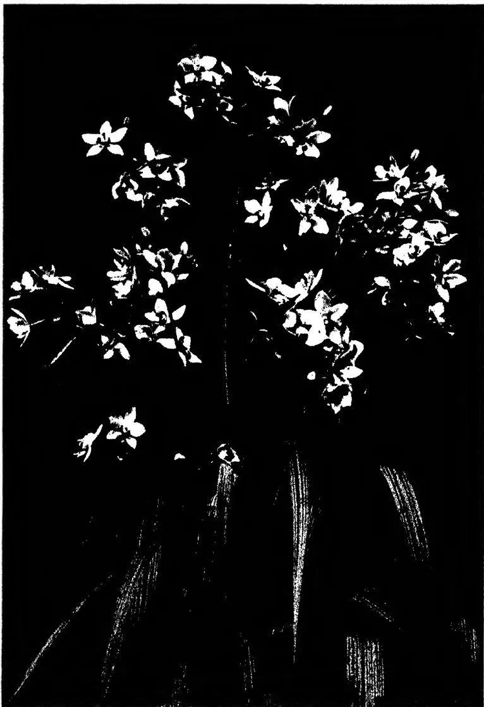
Spathoglottis aurea Vieillardi
This image is a blank white page. It contains several small, dark specks which appear to be scanning artifacts or dust particles. There is no text, handwriting, or printed content on the page. 99Culture.—All members of the genus Spathoglottis and its many hybrids now acclimatised in Ceylon, (S. plicata, S. Vieillardi, S. plicata var. alba, S. kewensis and our subject) need periodical re-potting if good heads of flowers are desired, although even uncared-for plants regularly produce blooms: these make a poor comparison however with those under proper cultivation.
Owing to its free flowering and the consequent drain on the plant an occasional top-dressing with rich porous soil acts as a great stimulus to the plant. A word of warning here will not be out of place with regard to this operation—never charge the pot with cowdung when top-dressing. A little decomposed cattle manure mixed with sand is all that is necessary. But the best mixture for both top-dressing and potting is made thus: mix one part of leafy soil, one part of turfy soil, two parts of well-decomposed cattle manure and one part of coarse sand together, finishing off with a surface dressing of charcoal and brick pieces. This top layer is of value, in allowing free access of air and keeping the compost warm and sweet, while also preventing soil wash when watered and during rainy weather.
Propagation can be effected either by sowing seed or dividing the pseudo-bulbs. If the latter method is employed the dormant pseudo-bulbs should be planted in separate pots to increase the stock while the young pseudo-bulbs with new growth are transferred into pots for pot culture. Cut off all dead leaves and roots with a knife, reduce the live roots to half their length and then insert the bulbs in the compost. It is not absolutely necessary to use perforated pots; but if special pots with perforations at the sides are available the plants will thrive better. The pots should be thoroughly washed and dried before use. Unclean and mossy pots are not only untidy in appearance but also arrest free aeration and retard growth. A thick layer of drainage material, such as crocks, over which a few dried leaves are placed, may be used to prevent clogging. The plants should be placed with roots completely buried and the pseudo-bulbs about half-an-inch below the rim of the pot. This allowance is to provide space for the dressing with charcoal and brick pieces.
The newly-potted plants will need stakes at least for some time to prevent them from being unduly disturbed by wind. All newly-potted plants should be placed in a shady spot until bush growth appears, after which they may be removed to the open.
100The majority of species of Spathoglottis thrive in the open with plenty of sun, but at the same time they require liberal supplies of water applied late in the afternoon.
If, however, propagation by seed is desired, seed capsules should be removed at the first sign of cracking when they will be quite soft to the touch. The capsules should be placed in a paper envelope for three or four days. During this time they will discharge the seed which must be carefully spread on a compost of broken bricks, coconut husk, wood and charcoal. No syringe or watering-can can be used as they will wash away or bury the seed too deeply in the compost. A fine spray may be employed four to five feet above the seed pan.
101SPEAKING of "introduced" species of plants and animals, it is by no means easy to say how long flora and fauna must live and propagate their kind in a new land before they can claim a place among the citizens of the country into which they come as migrants. It is a matter of opinion. For example, among the Indian flowering trees are the Browneas (already mentioned) that dispute the title with Amherstia as the most beautiful blossoming trees in the world, yet the members of the former genus were originally South American. The most attractive of them all and the one that I know best is B. grandiceps, the rose of Venezuela, that reaches a height of 40 feet. When in full bloom this tree is one blaze of glory from branches of bright red flowers borne in large, dense heads at the extremities of the branches. As in the case of Amherstia, the foliage is also very conspicuous. The young mottled leaves are grown as long flaccid bunches, giving the tree the appearance of bearing two dissimilar sets of flowers.
One of the most striking and showy of eastern silva is the so-called pride of India or queen's flower (Lagerstroemia flos-reginae), named after the East Indian botanist Magnus van Lagerstroem. It is found all over India, Ceylon, and Malaya and from April to October bears from the ends of its branches erect panicles of lovely bright pink or mauve blooms. With the exception of a short time during the rainless season these beautiful trees retain their green foliage. The margin of the pretty Kandy Lake in Ceylon is brightened by many flowering trees, but none more attractive than this magnificent species.
I have always been intrigued by a flowering tree whose acquaintance I first made in India, the Bauhinia purpurea, a species of that interesting genus whose name is derived from the related facts that its leaves are joined in twos at the base and that there lived and worked in the seventeenth century two Swiss brothers, scientific twins, members of a family celebrated as physicians and botanists. How appropriate that Caspar and Jean Bauhin should sponsor this interesting tree, now an adornment of many gardens all over the world. In addition to B. purpurea, probably the most widespread and best known of the genus, with its large, showy, orchidlike pink flowers merging into purple, we have B. triandra or mountain ebony, closely resembling purpurea; B. tomentosa with yellow flowers; B. krugii, native of Puerto Rico; and many others whose fruit is a long, flat, beanlike pod.
Planted and encouraged to grow near Buddhist temples is often found another of my favourites, the Naka or Ceylon ironwood (Mesua ferrea). It prefers the hot and moist areas of British India, where during April and May this moderate-sized, conical and handsome tree profusely
* Extracted from "Through Forest and Jungle in Kashmir and other Parts of North India" by Dr. Casey A. Wood in the Annual Report of the Board of Regents of The Smithsonian Institution for 1932.
102blossoms as large, scented, white flowers with a yellow centre of numerous stamens. New, deep crimson leaves appear twice a year, greatly adding to the beauty of an attractive species.
In the drier regions of India (one sees avenues of it on the road to Mount Abu) grows an erect 40-foot tree with large broad, tri-foliate leaves, the "flame of the forest" (Buteo frondosa). During the dusty, rainless months when nature calls for some attractive living thing to cheer the passer-by this remarkable tree puts forth a profusion of beautiful crimson or orange-scarlet flowers whose flaming blooms justify its English vernacular name. It has, of course, many native titles, among them the dhak, mentioned by Kipling as a meteorological forecaster. When the tree blooms early and soon withers, the dry season will be prolonged and disastrous. The tree also produces a useful resin called kino, and a valuable fibre. The young branches are a source of lacquer and the flowers are used in India for making orange and yellow dyes.
This partial catalogue of beautiful trees of north India would be incomplete without speaking of what is generally regarded as the most lovely of all the blossoming silva one meets with in the Far East. I refer to an originally Burmese tree, the Amherstia nobilis, named after Lady Amherst, the wife of a former British governor of Burma. H. F. Macmillan's description (Tropical Gardening, pp. 82, 83) of this silvan beauty as found in Ceylon gives a fine picture of the charming species, that combines in a wonderful way ornamental foliage with showy blossoms. The leaves, accompanied by large graceful sprays of vermilion and yellow flowers, drooping from every branch and interspersed with the handsome foliage, present an appearance of astonishing elegance and loveliness. It is in blossom for the greater part of the year, except during long periods of rainy weather, the chief flowering season in Ceylon being from November to April. The tree grows to a height of 50 to 60 feet, is usually round-topped, with many slender branches and dark-green pinnate leaves. A remarkable feature is the long, hanging, brownish-pink clusters in which the young leaves appear. This habit is also characteristic to some extent, of certain other tropical trees as Brownea grandiceps and Saraca indica and declinata. In the latter case the young leaves are mottled pale-gray or almost white.
The tree thrives in the moist low-country up to 1,600 feet, and requires deep, rich, and well-drained soil. It does not seem to flourish near the sea, and is rarely met with about Colombo. It produces seed very scantily anywhere, a pod or two (which are flat, brown, 6 to 8 inches long, containing one to three large flat seeds) occasionally being all that can be obtained.
The genus Cassia furnishes many a beautiful, flowery tree species more or less widely spread over India, to the delight of the visitor. It is impossible here to do more than describe (briefly and inadequately) a few of the more attractive varieties.
The most interesting is, perhaps, Cassia fistula, the Indian laburnum, but also known by several other English and native vernacular synonyms. This is a rather small, upright tree and one of the most beautiful objects in the north Indian forests, where it prefers a dry or well-drained soil,
103When in full bloom, it suggests its common name, bearing masses of yellow flowers in pendant racemes. The blooms are, with the frangipani, much used as temple offerings while the astringent bark is used in medicine and for tanning. Another remarkable character of this laburnumlike shrub is its fruit-black, cylindrical pods that grow to a length of 20 or 30 inches, the pulp of which is a well-known laxative.
Although originally a native of South America, Cassia grandis, or the horse cassia, is found in north India. It is a spreading tree that attains a height of 40 to 50 feet, bears a profusion of pale pink flowers during the dry months, February and March (when it is completely deciduous), and in June produces numerous thick, coarse-skinned curved pods with an offensive odor.
A more attractive example of cassias is C. multijuga—a slender, quick-growing tree—indigenous to South America. It is in full bloom during August and September and is practically smothered with immense branches of bright yellow flowers, suggesting, as Macmillan says, a glorified tree calceolaria. It grows everywhere fairly well, but prefers a dry soil and climate.
• Finally, during May and June a moderately sized, deciduous pink cassia (Cassia nodosa, so named because of its knotted stems) bears in great profusion lovely, bright-pink, rose-scented flower sprays. It is a native of Bengal and, like all the cassias, produces large pods—cylinders 12 to 15 inches long.
Trees that take kindly to all tropical and semi-tropical countries and to some temperate areas are several species of Jacaranda. I have seen many examples in both the New and Old World, including India, Ceylon, and California, although these trees are originally South American.
J. mimosafolia is a very beautiful species not only on account of its profusion of purplish-blue, bell-shaped flowers, but because of its elegant, mimosalike, bipinnate leaves. When the blooms are shed they form a thick blue carpet that characterizes this charming tree.
One of the most beautiful flowering trees of India (and of other tropical countries) is the iyavaki (Peltophorum ferrugineum), a large symmetrical tree of quick growth, indigenous to Malaya and Ceylon. It has a spreading top and fine feathery foliage. It blossoms irregularly twice a year, flowers and fruit often appearing at the same time. Its flowers, large, erect panicles, are scented and brownish yellow, and the tree when in full bloom presents a magnificent spectacle.
Of special interest to the traveller in India is the widespread appearance of the tree (or shrub) frangipani or pagoda tree (Plumeria acutifolia), a large, low, spreading shrub, quite bare of leaves, introduced from America. It is a familiar tree in almost every tropical country. In the Far East it is a well-known "temple tree," its strongly scented heads of white, yellow-centered flowers being a common offering at Buddhist altars. A scarlet variety (P. rubra) is very showy and remains in full bloom for several months.
A wonderful, beautiful and highly ornamental tree has spread by introduction into most tropical and semi-tropical countries. This is the famous Flamboyante, flame tree or golden mohur (of India). It originated in
104Madagascar and is now familiar to travellers because of its truly gorgeous flowers. It usually blooms in April and May, grows to a height of 40 to 50 feet, and with its spreading habit is well calculated to show a flaming top and handsome, long, feathery, bipinnate leaves. In many countries (British Guiana, Tahiti, India) I have seen avenues of these flame-colored tree tops whose glory must be seen to be fully appreciated. It is best known in America as the Royal Poinciana.
Art Indian tree that originally came from West Africa is especially conspicuous from a distance because of its tallness and erect growth. This is the so-called tulip tree (Spathodea campanulata). I have noticed most of these in and about Kandy, Ceylon, where they serve the double purpose of shade and ornament. The large, erect, bright scarlet-orange flowers that crown the topmost branches of this handsome species make it a conspicuous object in even the distant landscape. The unexpanded flowers always hold considerable water that, scattered by a passing breeze, may be unexpectedly showered on the pedestrian beneath. This circumstance has given it one of its common names, the fountain tree.
Stenocarpus sinuatus, the Queensland fire tree, has taken kindly to north India, where it is occasionally seen. It is an erect tree 40 to 50 feet high, whose peculiar and very showy clusters of scarlet flowers are noticeable objects wherever they grow. It flowers from May to July at elevations from 1,500 to 4,000 feet.
Another important Australian species is the flame tree (Sterculia acerifolia), of medium size, a species with large, glossy, angular leaves, preferring high altitudes, at least up to 5,500 feet. It blooms in May and June when bare of leaves, producing brilliant masses of bright red blossoms.
Tropical fruit trees little known in America.—As every observing traveller in the Near and Far East knows, only a few edible tropical fruits have been widely grown and improved by scientific cultivation in American and other temperate climates. And yet there is no reason why many others should not be domesticated in the United States. As Macmillan has pointed out, certain tropical fruits, unsurpassed for their lusciousness and food value, are still capable of considerable improvement and of adaptation to a change of environment by "selective or asexual propagation, by budding, grafting, layering, cuttings, etc., or by hybridization and high cultivation."
These problems have long been considered by our highly competent and active Department of Agriculture, and it seems a wonder that some of the most obviously valuable of the long list of desirable tropical and semi-tropical trees are not more extensively utilized by American fruit growers in such localities as are suitable for their profitable adoption. One of the errors to be avoided in this connection is a slavish imitation of fruit-growing methods in the Tropics themselves, where as a rule the lines of least resistance are followed; for example, the lazy methods of seed propagation instead of more laborious though generally more profitable schemes involving careful selection of stock and its budding, grafting, fertilizing, regular pruning, and replanting. There is, of course, room to speak of only a few of these attractive and desirable fruits but little known in North America.
105The sapodilla plum (Achras sapota)—in India sometimes improperly called mangosteen—or noseberry is a medium-sized (20 to 30 foot) tree with shiny, dark green leathery leaves, originally from tropical America but cultivated throughout India. An enthusiastic naturalist says of this russet apple-like fruit (made up when ripe of a mass of soft, brownish pulp holding a number of easily separated large black seeds), "a more luscious, cool, and agreeable fruit is not to be met with in any country in the world." The sapodilla thrives up to 3,000 feet and usually bears two crops a year.
The papaya, pawpaw, or tree melon (Carica papaya) is a small, fast-growing, branchless, herbaceous tree, from 15 to 20 feet high, widely cultivated throughout India. It bears a crown of long and large palmate leaves at whose base the delicious, juicy "melons" are produced. These green-coloured fruits are ovoid or round, 8 to 14 inches in length and 4 to 6 inches in diameter, and weigh from 5 to 10 pounds. One of the remarkable virtues of the tropical pawpaw is that it is in season the year round. Macmillan says of it:
The fruit has a central cavity, to the walls of which the olive-coloured seeds are attached, unusually in great abundance, but sometimes entirely absent. The succulent flesh is of the pinkish or orange tint, very refreshing and agreeable to the taste, especially on first acquaintance. It is generally estimated as a table fruit, and is considered an aid to digestion. Some people prefer to eat it with a little sugar and fresh lemon or lime juice. It may also be made into jam or sauce, and in the unripe state may be pickled, or boiled and used as a vegetable. The seeds have a flavor like that of water cress. Papaine, a digestive enzyme, valued in medicine and in the preparation of chewing gum, etc., is obtained from the white, thin latex or juice.
The mangosteen (Garcinia mangostana) originated in the Malay States, but is now generally cultivated in India and Ceylon. This is one of the most delicate fruits of the Tropics and I enthusiastically endorse the claim that it partakes of the combined flavor of the strawberry and the grape. The tree is of small size and slow growth; the leaves large and leathery. The globular, purple-brown, smooth fruit looks like a small apple whose white, melting pulp surrounds several large seeds, the whole contained in a thick, inedible covering. This fruit is rather expensive, is regarded as a great delicacy, and is generally in season from May to July. Its cultivation (usually by seed) ought to be attempted as a delicious novelty in semi-tropical America.
The sugar-apple or sweet-sop (Anona squamosa) deserves mention as a candidate for a domestic adoption in the warmer climate of North America. It originated in South America, where it is extensively cultivated, although little known north of the Mexican border. The tree, a small species, thrives in any ordinary, well-drained soil up to 3,500 feet
106and its fruit, maturing twice a year, generally in October and April, is the size and shape of a large apple whose yellowish-white, scaly or tubercular rind incloses a sweet, granular, custardlike pulp. There is also a purplish coloured variety found in the West Indies.
It is passing strange that with so many varieties found in all tropical countries and probably suitable for domestication in most temperate climates that the useful mango is not more generally cultivated. The commonest species in India, where it is indigenous, is Mangifera indica, a large, quick-growing and wide-spreading tree whose panicles of scented, greenish-white flowers appear in January to March, the fruit in April to June thereafter. Some trees bear two crops a year. The ovoid fruit, flattened, with a distinct beak or projection at the apex, may weigh two pounds or more, but the usual weight is about 6 or 7 ounces. It has a tough, yellowish-red or greenish rind inclosing the adherent flesh, which has a peculiar but pleasant aromatic taste. Inferior fruit may be tough, with a turpentine flavour. The single seed or "stone," to which the slippery pulp adheres very closely, is quite large. These characteristics make it a somewhat difficult task, until one has learned the art, to consume a ripe mango in public and at the same time preserve good table manners.
Macmillan remarks :
The mango is the fruit par excellence of India, where it has been cultivated from time immemorial. Here it may be considered an article of food as well as dessert, whilst it also enters largely in the preparation of chutneys and preserves. The tree thrives from sea level to about 3,000 feet or higher. A hot and rather dry climate, and a rich, deep, well-drained soil, suit it best. The ground should be irrigated during prolonged drought, especially if the trees are setting fruit, also manured once a year, and mulched in dry weather. Pruning consists in thinning out superfluous or sickly branches; root pruning is sometimes applied with advantage to trees which become unfruitful, owing to their running too much into wood and leaf, the operation being performed by making a deep trench around the tree at a few feet from the stem and cutting clean all roots met with. Shade is not necessary, except when the plants are young. Propagation is best by grafting on seedling stocks of a hardy vigorous variety, or by in-arching or layering.
The largest, best-flavored, and most desirable varieties for general consumption that I have seen in north India come from Bengal, but the Indian mango has as many variants in size, flavor, color, and other qualities as the apple. It might well form a valuable and welcome addition to our supply of edible fruits.
There are many other tropical fruits awaiting domestication in more temperate climates which this short essay must ignore; I shall drop the subject with a brief mention of two species, both belonging to the luscious Anonaceae.
107Number one, to be found in most tropical countries, I first tasted in British Guiana—the custard-apple, sometimes called bullock's heart (Anona reticulata). It is a small, bushy tree, found generally in low elevations, with a large brownish-red, round or heart-shaped fruit that contains several good-sized dark-brown seeds mixed with a sweet edible pulp. The latter resembles and taste much like an agreeable custard, although the Indian natives have a superstitious belief that continued indulgence in it causes leprosy.
Second, the cherimoyer (Anona cherimolia). This species is now quite common in India and the Far East, a small tree introduced from Peru. The fruit is large, oblong, cordate or round, from 3 to 5 inches in diameter, covered with small pits and weighing from 2 to 4 pounds. It stands transportation very well and seems especially fitted for cultivation in California, Florida and other semi-tropical States of the Union. Many authorities rank the cherimoyer with the pineapple and the mangosteen, and believe it to be far superior to its near relative, the Anona reticulata, which it most resembles. There are several cultivated races of this custard-apple, among them the quotemoyer and atemoyer, that differ from A. cherimolia chiefly in size and shape.
108Production and Export.—Increases in export occurred in 1932 in the cases of tobacco, tea, potatoes, cotton seed and rice. In the case of tea it can be recorded with satisfaction that, while the amount consigned to the United Kingdom showed an increase of over half a million pounds or nearly 27 per cent. the exports to South Africa, Southern and Northern Rhodesia have also increased. The market for Nyasaland tea was thus widened during 1932, and it included small but increased quantities for Germany and Portuguese East Africa.
Soil and Meteorological Investigations (by the Agricultural Chemist).—Soil and rainfall maps are desirable for the proper development of many areas, but the methods of analysis must aim firstly at a classification which can be of assistance to agriculturists and certain administrative officers. Naturally there is a large interest in tropical soil displayed by numerous scientific bodies and there is also the likelihood of co-operative work on climatic soil types which may occur not only in Nyasaland but also in similar climatic zones of Rhodesia, India and China.
It is also necessary to impress upon many of our agriculturists the extremely limited value of the results obtained by certain methods of analysis. There is still a strong belief that the estimation of the potash, phosphates and lime extracted by strong and dilute acids from a soil will indicate the need or otherwise of applications of certain fertilizers, even in areas where the distribution of important soil series and types is not known and on the soils of which no experiments of significance have been made, but this belief requires strong refutation.
The following notes will indicate the close relationship which surveys of climate and soil will have and silence the criticism that soil work should obtain results of immediate and great value to agriculturists in their crop and manurial problems without careful experimentation. Experiments must necessarily accompany work on soil series and types which cover large areas and their results should be of statistical significance. To clear up another matter which is often the subject of controversy, the following quotations are given to support the opinion of the writer. C. F. Marbut states, "The coincidence of soil belts and climate belts has caused soil students to conclude that climatic forces are the predominant soil-forming agencies of the world, obliterating or reducing to a subordinate position in relatively short time the influence of the parent rock material. In fact, in a study of the soils of a region, taking into consideration their broad
* Extracts from the last Annual Administration Report of the Director of Agriculture, Dr. W. Small.
109general characteristics only, the influence of the parent material may be mainly neglected. This may be done with less and less risk of error as the climatic forces become more and more powerful." The Russian worker, Professor C. D. Glinka, says, "Is it, for instance, a matter of importance whether the soil is derived from granite, diorite or diabase? No, for researches in the field have shown that, under similar external conditions, all the above-mentioned rocks give uniform soils, while on the other hand we know that, under the influence of dissimilar external factors, soils differing profoundly from one another may be produced from the same type of granite."
Soil.—Studies of the distribution of acidity in soil profiles were continued and samples of typical profiles of important soil series were forwarded to the Imperial Institute for certain examinations of mineral constituents and analysis of the clay fraction.
Sulphur Deficiency (by the Mycologist).—Now that certain Nyasaland soils are known to be deficient in available sulphur, there is a scope for investigation into the effect of the deficiency on local crops other than tea. Preliminary experiments have been made. It is evident from these that more elaborate experiments may yield some interesting results. Only one experiment is recorded here as the result is of considerable importance to native cultivation on soils which are prone to sulphur deficiency and where fertilizing is unlikely to be employed. Cowpea (vigna sp.). Workers in other parts of the world, notably the United States of America, have found that a deficiency of sulphur in the soil may inhibit the formation of nodules on the roots of leguminous plants. The experiment to be described was carried out in the first place to see whether the same result would be obtained on soil growing tea badly diseased with yellows. If this was proved to be so, it would give evidence in favour of the conclusion since reached, namely, that yellows disease is caused by a deficiency of sulphur.
Randomised blocks were treated with nitrophoska and with nitrophoska plus sodium sulphate. Nitrophoska contains nitrogen, potash and phosphorus and only a trace of sulphur. A good stand of plants was obtained in the duplicated blocks and the following results were obtained:
(a) No yellow mottling of the leaves (cf. tea) was produced in the plots receiving no sulphate but the leaves were slightly lighter green and had a dull appearance compared to the dark shiny green leaves of the sulphate-treated plants.
(b) The sulphate-treated plants had leaflets of greater dimensions than those receiving no sulphate. There was a greater number of leaves per plant in the sulphate-treated plots. All records were taken before the seed pods were formed. As the flowers are produced from the axils of the leaves, a greater number of leaves per plant would indicate a bigger yield of seed per plant.
(c) The ratio of "tops" to roots was the same with both treatments.
110(d) There was no difference in the mean size of nodules on the roots of plants receiving the two treatments.
(e) The number of nodules produced in the sulphate-treated plots was approximately ten times that produced in the no-sulphate plots.
The results show that musa bean plants grown on soil affected with tea yellows and not fertilized with sulphur produced very few nodules. The results indicate that the growing of leguminous green manures on some Nyasaland soils will not be beneficial to the soil unless the sulphur content is maintained, for the following reasons: (i) the amount of green material turned in will be small and (ii) the amount of nitrogen fixed by the plants will be small owing to the reduced number of nodules formed.
The native has methods of rotating his crops; he grows a considerable number of leguminous crops which should tend to keep up the nitrogen content of his soil. The deficiency of sulphur, however, which is likely to occur in his gardens will prevent beneficial results from being obtained by the use of leguminous crops. It is interesting to note that Dr. H. H. Mann in The Tea Soils of North East India and their Treatment states on page 74: "I have been informed that a dressing of the soil with sulphur has been found beneficial on these village sites in a few places, and this would favour the theory of infertility having a living origin such as the ceworm."
111ANNUAL REPORT FOR 1932 OF THE ROTHAMSTED EXPERIMENTAL STATION, 227 PAGES, PRICE 2/6. OBTAINABLE FROM THE SECRETARY
TO the question, why continue agricultural research at a time when many farmers cannot sell profitably what they do produce? the answer is to be found in the words of Sir John Russell in this Report: "Scientific investigations in agriculture are primarily for the purpose of obtaining information, and this will always be needed so long as farming continues. It is in times of difficulty that expert information about soils, crops and animals is most valuable to farmers, for it enables them rapidly to alter their methods in accordance with the rapidly changing economic conditions." The work described in the Report shows the type of information that is being gained in order to deal with changes in modern conditions.
The Farm has developed greatly, in buildings, in ordinary farming operations, and in numbers of experimental plots. Further, equipment is now complete for examining the application of recent technical developments to agriculture. Electric light and a wide variety of electric motors are installed; also rubber floors and road paving, and pneumatic tyres on farm carts and tractors. The merits of these in practice are being critically examined.
Improvements in field experiments through the further application of statistical methods are recorded and illustrated by the results obtained with a number of crops. The value of these methods is that they both reduce the error of the results and make an estimate of the accuracy of the experiment possible. Some of the results—for example, those obtained with sugar-beet—illustrate the need for still more information in every-day farming problems. Why is it that no amount of manuring has overcome the difference in yield between beet crops in adjacent fields, where one field may produce twice as much root as the other? In connection with the manuring of sugar-beet, the value of ordinary agricultural salt has proved unexpectedly high, being no less than that of potash.
Experiments with other crops—potato, fodder mixtures, kale, grassland, wheat and rotations—are described. The inoculation of lucerne, and now of clover, is being closely studied in field and laboratory. The extent to which insect and fungus diseases have infested the two farms, at Rothamsted and at Woburn, is described in detail, and there is a most interesting summary of farm operations for the year in the Farm Director's Report.
Barley receives especial attention in the 1932 Report, in a summary of the striking results of ten years' investigations conducted in the laboratory and in the field all over England, under the Research Scheme of the Institute of Brewing. The practical applications of the results are clearly set out in reference to methods of cultivation, manuring, and the effects of weather and season.
112In the laboratory section of the Report, the Soil Physics Department describes further progress in the comparison of rotary with other forms of cultivation, and in the interpretation of soil "tilth". The chemical properties of the soil are being studied by new methods, applied in particular to changes in soil organic matter as a result of different cropping or manual treatments. The biological decomposition of organic matter is still under investigation, new information being obtained about the rotting down of straw—a surplus material that may be troublesome to deal with under mechanised farming. The purification of the effluent of sugar-beet factories by biological oxidation in filters has been carried satisfactorily to the semi-commercial scale; the effluent of milk factories is now being studied.
The work on plant diseases well illustrates the range of problems to be tackled. In a bacterial disease of cotton from the Sudan unusual stages in the life-cycle of the bacteria were found; the genetics of a fungus were studied over many years, and related to the behaviour of natural infections; in virus diseases—those caused by agents too small to be seen under the microscope—further progress is reported. The actual way in which the virus influences the plant and travels about its tissues, and the manner of its carriage by insects, are being elucidated. Insect pests receive special study, notably in relation to the enormous fluctuations in numbers that occur, and an attempt to relate these to weather changes is in progress. Automatic recording or trapping devices play a part both in this investigation and in a study of the work and the daily life of the hive bee. Methods of insect control by the use of vegetable products as insecticides continue to be studied. Pyrethrum, a very potent agent which can be grown in this country, offers problems both in cultivation and in the preservation of the toxic principle; those intriguing tropical plants that are used by natives as fish poisons are often valuable insecticides, but it is important to be able to measure their toxicity readily, and methods for doing this are being compared.
(I) Second Annual Report on Cacao Research being conducted at the Imperial College of Tropical Agriculture, Trinidad. Price 5/- Government Printing Office, Port-of-Spain.
(II) Studies in West Indian Soils (VII).—The Cacao Soils of Trinidad: (A) Montserrat District by J. A. McDonald, F. Hardy and G. Rodriguez. Price 2/- Government Printing Office, Port-of-Spain.
(1) The results of the second year's investigations into the Cacao plant indicate a considerable advance into the fundamental preliminaries of the problem. After a brief statement of the programme of botanical work by Professor Cheesman the subjects of vegetative propagation, genetic constitution of the crop and physiological factors influencing fruiting are considered by the investigators to whom these sections are deputed. These fundamental studies have not at present reached a stage such that practical direction for the increase of yield can be derived from them but they show a gradual separation of the complexities of yield into components. The fact is well known to Ceylon cacao planters that the best bearing trees
113from the point of pods are by no means invariably the largest yielders of beans. The opinion that trunk pods are more productive than branch pods is verified and no doubt in further studies this will be investigated from the point of desirability in a tree. The expression "good yielding trees" in the chapter on the "The Genetic Constitution of the Cacao Crop" might be clearly defined, for, even if we anticipate the next chapter, there is nothing lost by accentuating that ultimately good yield is to be measured by bean quality. For purposes of convenient reference the chapters of the book might be numbered. The typographical arrangement of the chapter headings involves undue necessity for back reference to see where we are in the programme of work. Shy setting of the flowers and their shrivelling are two very important factors contributing to low yield and the suggestion is that the supply of nitrogen in the nutrition at a critical stage plays a part at least so far as the setting is concerned. The work is generally characterised by fulness of treatment and if completed on the present lines will form a valuable contribution to our knowledge of cacao plants.
(11) The Studies in West Indian Soils discuss the composition and merits of a dozen cacao soil types. Yield variability, we are told, is smaller in young plantations but after some 40 years, soil and other factors mask the effect of youthfulness. Yields of plantations increase rapidly up to 20 years, then more slowly up to 25 years when a rapid decline sets in up to 40 years after which it is less so. The investigation should be studied in conjunction with the publication above by those interested in cacao plantations.
114Minutes of the Meeting of the Board of the Tea Research Institute of Ceylon, held in the Victoria Commemoration Buildings, Kandy, on Saturday, the 2nd December, 1933 at 10.30 a.m.
Present.—Mr. R. G. Coombe (Chairman), the Hon'ble the Financial Secretary (Sir Wilfrid Woods, C.M.G.), Messrs. B. M. Selwyn, D. H. Kotalawala, M.S.C., John Horsfall, Jas. Forbes (Jnr.), I. L. Cameron, D. T. Richards, A. W. L. Turner (Secretary), R. R. Muras (Accountant), and by invitation Dr. Roland V. Norris (Director, T. R. I.), Mr. J. W. Ferguson (Visiting Agent), and Mr. Gordon Pyper.
Absent.—The Director of Agriculture, Messrs. C. E. Hawes, J. C. Kelly, and Col. T. G. Jayawardene, M.S.C.
1. Notice calling the Meeting was read.
The Late Governor Sir Graeme Thomson.—The Chairman said it was with feelings of sincere regret that he referred to the sad and sudden death of their late Governor, Sir Graeme Thomson.
By his untimely death the Empire had lost an able Administrator and this Colony a real and true friend in the truest sense.
He would ask them to signify their consent that the Tea Research Institute of Ceylon should join with the many who have already sent messages of sympathy to Lady Thomson in her great loss.
The vote of condolence was passed, all members standing.
2. (a) The Minutes of the Meeting of the Board of the Tea Research Institute of Ceylon, held on the 5th August, 1933, were confirmed.
(b) Board Meeting.—The Chairman apologised for having had to unavoidably postpone the Meeting from the 10th November, and hoped that members were not inconvenienced thereby.
(c) Members of the Board of the T. R. I.—The Chairman welcomed Mr. John Horsfall on his return from leave, and thanked Mr. Gordon Pyper for acting during that period. He also welcomed Dr. Norris, who had resumed duties as Director after 8½ months' leave.
The Chairman asked for confirmation of the action of the Trustees of the Junior Staff Provident Fund in having deposited funds with the Ceylon Savings Bank.
The Board confirmed the action of the Trustees.
115(a) Director, T. R. I.—The Chairman announced that Dr. Norris, the Director of the Institute, resumed his duties as from the 25th October, 1933.
(b) Mycologist—Dr. C. H. Gadd's Leave.—The Chairman said that he had sanctioned Dr. Gadd's leave subject to confirmation of the Board. He would proceed on leave as from the 13th December, 1933, to the 22nd October, 1934. Ten months eight days in all. Six months 23 days on full pay and three months 16 days on half pay.
His agreement expires on the 30th June, 1934, and he hoped that all members would agree to its renewal. Dr. Gadd had been very seriously ill and he was sure that they would all congratulate him heartily on his return to health and express their appreciation for the work he had put in whilst acting as Director.
He would also like to thank Mr. Eden and Mr. Tubbs for the work they put in during Dr. Gadd's illness and the return of Dr. Norris.
It was agreed to grant Dr. Gadd's leave and to renew his Agreement for a further period of five years as from the 1st July, 1934.
(c) Entomologist—Mr. C. B. R. King's Leave.—This Officer's application for months' leave as from the 4th April, 1934, was considered and sanctioned.
(d) Tea Technologist.—The Chairman said that the Director had under instructions inserted an advertisement in "Nature".
He asked the Director to explain the position.
The Director reported that in accordance with the instructions given him by the Board he had advertised the appointment and also approached various Universities and Chemical Institutes. Twenty three applications had been received and from these a short list of five candidates prepared. Four of these candidates had been interviewed by a Selection Committee consisting of Mr. Stockdale, Mr. Horsfall and himself, while he had subsequently interviewed the fifth candidate alone.
As a result of these interviews the appointment of Mr. J. Lamb, M.Sc., was recommended. He was a Biochemist, Honours Graduate of London, with a year's training at Cambridge and a Government Scholarship in Trinidad, where he went for further training. He has been favourably reported on and had been selected by the Colonial Office for a Colonial appointment. He was 24 years old and the impression was that he was a very suitable type. He had not had any special mechanical training but there seemed no doubt that he would prove to be a suitable man.
Mr. John Horsfall supported all that the Director had said.
It was decided that immediately the State Council agreed to the maintenance of the 14 cents cess for 1934, a cable should be sent to Mr. Lamb offering him the appointment.
116(a) Broken Mixed Teas.—The Chairman said that the Superintendent had written to say that this type of tea was accumulating in the factory and if not disposed of soon might result in a larger stock being stored in the factory than could be covered by the current insurance policy. He had consulted the Chairman of the Ceylon Estates Proprietary Association who recommended that the Superintendent should continue to sell as much of this type of Tea as possible to the labour force, at a price not below 22 cents. Whenever tea was sold to local caddies the receipt should be endorsed to the effect that the sale had been effected without coupons. Any Broken Mixed Teas not disposed of in this manner, he thought should be destroyed as it would not be wise for the Institute to sell at the door.
Messrs. Cameron, Richards and Ferguson all strongly deprecated the tea being sold locally except to the labour force.
Mr. Cameron suggested that as much of this grade be sold to the labour force at not less than 15 cents per lb. and the balance sold in Colombo as uncouponed tea.
This was agreed to by 4 votes to 3.
(b) Tea Samples.—The Chairman said that Mr. Cameron had suggested that although they could not agree to send samples of St. Coombs teas to individual estates or companies, samples of each invoice might be forwarded to the Ceylon Association in London, who would doubtless arrange for any persons interested at that end to see the teas. Mr. Richards said that he had mentioned in the Circular that a -lb. packet would be quite sufficient and should be sent to any well-known London Tea Broker who would he felt be only too pleased to let the Institute have a report and retain the samples in his office.
The Meeting agreed to this latter suggestion.
(c) Letter from the Agricultural Chemist re pruning Experiments.—The Director said that the Experimental Sub-Committee had approved suggestions made by the Agricultural Chemist for the temporary use of one of the factory withering lofts for drying and weighing prunings obtained from the manurial plots. Information would in this way be obtained as to the influence of treatment on wood production, etc. The Insurance Company had intimated in writing that they had no objection to the proposals.
The Board confirmed the recommendation of the Experimental Sub-Committee.
(e) Manuring Programme.—The Board also adopted the Experimental Sub-Committee's recommendation that the present manuring programme be continued for a further period of one year.
The Chairman said that a copy of a letter written in this connection by Sir Theodore Chambers to Mr. G. K. Stewart was sent to each member of the Board on the 27th October.
117It was decided to wait a further communication from the Ceylon Estates Proprietary Association before taking any action on the matter.
On the Chairman's recommendation the Board agreed that the lease of the caddy which expires on the 14th January, 1934, should be renewed for a further period of three years, to the present tenant.
The Chairman said that since the last Meeting the Secretary had been in communication with the Indian Tea Association who supplied the names of 26 Agency Houses, out of which only three wished to be registered to receive the publications. The Secretary of the United Planters' Association of Southern India too was approached on this matter and he very kindly inserted a special paragraph in the "Planters' Chronicle" drawing attention to the Institute's Publications.
The Chairman added that he had requested the Secretary to order sufficient copies of the Annual Report from Tocklai issued by the Indian Tea Association for distribution amongst the members of the Board.
Mr. Coombe said that he would ask them to accept his resignation as Chairman of the Board.
He had asked Mr. Jas. Forbes (Jnr.) if he would take up the duties and he was glad to say that he had agreed to do so. It would, he suggested be more convenient for Mr. Forbes to relieve him after the Special Board Meeting being held on the 13th January, 1934, to consider the Estimates.
He would therefore ask the Board to agree to his proposal that Mr. Forbes take the Chair after the General Meeting to be held on the 13th January. They were he considered extremely fortunate in that Mr. Forbes had consented to take up the duties of their Chairman.
Mr. Forbes thanked the Chairman and said that if they so wished he was ready to take up the work and hoped that he would have the Board's full co-operation.
This was agreed to unanimously.
The Director said that he would like to be given an opportunity of expressing the regret of both the Senior and the Junior Scientific Staffs of the Institute that Mr. Coombe was vacating the Chairmanship and to express their deep appreciation of the very sympathetic consideration they had received from Mr. Coombe throughout his period of office.
The Meeting terminated with a vote of thanks to the Chair.
A. W. L. TURNER,
Secretary.
Minutes of the Meeting of the Board of the Tea Research Institute of Ceylon, held in the Ceylon Chamber of Commerce Rooms, Colombo, on Saturday, the 13th January, 1934, at 10.30 a.m.
Present.—Mr. R. G. Coombe (Chairman), the Director of Agriculture, Col. T. G. Jayewardene, V.D., M.S.C., Messrs. B. M. Selwyn, C. E. Hawes, D. H. Kotalawala, M.S.C., Jas. Forbes (Jnr.), I. L. Cameron, J. C. Kelly, F. A. Bond and A. W. L. Turner (Secretary) and by invitation Dr. Roland V. Norris (Director) and Mr. J. W. Ferguson (Visiting Agent).
Absent.—The Hon'ble the Financial Secretary and Mr. A. G. Baynham.
1. Notice calling the Meeting was read.
2. The Minutes of the Meeting of the Board of the Tea Research Institute of Ceylon, held on the 2nd December, 1933, and of the Finance Sub-Committee Meeting held on the 22nd December, 1933, were confirmed.
The Statement of Accounts as at 30th November, 1933, which had been sent to each member of the Board on the 21st December, 1933, was adopted.
(a) Announced that the Planters' Association of Ceylon had re-elected Mr. Jas. Forbes (Jnr.) for a further period of three years as from the 3rd December, 1933.
(b) Announced that Mr. John Horsfall had tendered his resignation and the Planters' Association of Ceylon had elected Mr. A. G. Baynham to serve in his place. The Chairman in proposing a very hearty vote of thanks to Mr. Horsfall for the very great amount of work he had done on behalf of the Institute mentioned the fact that Mr. Horsfall had been a member of the Deputation which visited Tocklai before the Institute was inaugurated and had been closely connected with the Institute ever since and had acted as Chairman of the Board for a period. This vote of appreciation was cordially agreed to.
(c) The Chairman welcomed Mr. F. A. Bond who had been nominated by the Ceylon Estates Proprietary Association to act during the absence of Mr. D. T. Richards who had proceeded on three months' leave as from the 20th December, 1933.
(a) Experimental Sub-Committee.—Mr. R. G. Coombe, previously an ex-officio member as Chairman, was renominated to the Sub-Committee on vacating the Chair, Mr. John Horsfall who had resigned from the Board was also renominated.
(b) Finance Sub-Committee.—Mr. A. G. Baynham was elected vice Mr. John Horsfall.
119The following Sub-Committees were formed :—
(1) Buildings Sub-Committee.—The Chairman, T. R. I., the Director, and the Visiting Agent.
(2) Medical Sub-Committee.—The Chairman, T. R. I., the Director, T. R. I., and Mr. J. C. Kelly.
Tea Technologist.—Announced that Mr. J. Lamb, the newly-appointed Tea Technologist, was sailing from Liverpool on the 19th instant and will therefore be due in Ceylon early in February.
Mr. E. L. Keegal—Assistant to the Biochemist.—Announced that Mr. Keegal having been appointed to the Coconut Research Station had resigned his appointment with the Institute as from the 18th January, 1934.
Mr. J. W. Reith—Field Assistant.—Announced that Mr. Reith had been appointed Field Assistant, Grade II with effect from the 2nd January, 1934.
Mr. D. L. Nicol—Field Assistant.—Announced that Mr. Nicol having been appointed Superintendent of the Rubber Research Institute's Estate had resigned his appointment as from the 15th January, 1934, Mr. Reith had been appointed to take his place.
The Visiting Agent's Report.—The Report which was sent to each member of the Board under cover of Circular No. A. 1/34 of the 9th instant was adopted without any comments.
The Chairman said that a copy of this report had been sent to each member of the Board under cover of Circular No. A. 2/34 of the 9th instant. He said that it appeared to him from this Report that the Small-holders were looking after their estates and that Mr. Illankoon was doing very good work. He suggested that the Board should consider the appointment of an additional officer next year.
The Report was considered satisfactory.
The Director reported that he had received an offer from a Firm to supply free of cost for experimental purposes certain plant. Such a plant would enable further experiments to be carried out and he had informed the manufacturers that they would be glad to accept it.
The plant is to be returned when the experiments were concluded.
The Board confirmed the Director's action.
120Before vacating the Chair, Mr. R. G. Coombe expressed his thanks to the Board and to all Members of the Staffs at St. Coombs and Kandy for the assistance he had received during his term of office. He stated that now that the Board had agreed to erect the four Junior Staff Bungalows, that he had practically seen the building programme which he had originally suggested, completed.
Mr. Jas. Forbes (Jnr.) then took the Chair and thanked the Board for having elected him thereto.
Mr. Hawes proposed that a very sincere vote of thanks to Mr. R. G. Coombe should be recorded in the Minutes.
This was unanimously agreed to.
The Director expressed thanks to Mr. Coombe on behalf of the Scientific Staff.
Mr. Coombe having returned thanks, the Meeting terminated.
A. W. L. TURNER,
Secretary.
THERE is a tendency to consider that livestock plays a very small and unimportant part in the agricultural economy of Ceylon. It is therefore of value to endeavour to assess the annual income from livestock.
Livestock breeding is to a very large extent in the hands of the villagers and it is impossible to get anything like complete statistics.
The value of livestock in the country can be considered under the following heads :
(a) For cultivation of fields and carting of produce.—It is quite impossible to put a monetary value on this, but it is obvious that without cattle and buffaloes paddy cultivation would be impossible and the cultivation of every other crop including tea, rubber, and coconuts would be greatly handicapped. In spite of the great development of rail and motor transport, bullock transport still plays a very important part in all agricultural operations.
(b) As a source of manure.—Here again it is not possible to place a value. Cattle manure is but little used in paddy cultivation. In the coconut industry manuring by tying cattle round the palms is a general practice. It is little used on tea estates, although where it has been used, I believe, it is very satisfactory. It would appear to be a very suitable manure for soils which have lost their humus as a result of soil erosion. Goat manure is used to a fairly large extent in the Northern Province especially in tobacco cultivation.
(c) Cash value of exports of animal products.—Exports of animal products consist of hides and skins, tanned leather and meat. The value of these products as shown in the Customs returns are as follows :
| 1929 | 1930 | 1931 | |
|---|---|---|---|
| Rs. | Rs. | Rs. | |
| Hides and skins ... | 1,096,770 | 923,745 | 517,451 |
| Leather (tanned) ... | 676,579 | 470,460 | 125,465 |
| Meat ... | 103,408 | 128,242 | 115,082 |
| Total ... | 1,876,757 | 1,522,447 | 757,998 |
* Appendix to Sessional Paper XXVII—December 1933 by M. Crawford, Government Veterinary Surgeon, Ceylon.
122The falling off from 1929 to 1931 is due to the slump in prices but it will be seen that in 1929 the value of exports was close on two millions. A glance down the list of Ceylon exports will show that there are comparatively few exports, beyond the major crops, which exceed the figure. It is nearly equal to the value of plumbago exported and in 1929 exceeded such items as cardamoms, citronella oil, papain, timber, or tobacco. That is, animal products are one of the most important of Ceylon's minor exports.
(d) Cash value of animal and animal products produced and consumed locally.—It is possible to arrive at an approximate valuation of meat and mutton produced and consumed locally, but it is quite impossible to obtain any estimate of the value of such items as milk, ghee, curd, butter, table poultry, eggs, bacon, and leather.
The following estimates of value of cattle, buffaloes, sheep, and goats produced and consumed locally are of interest. Local animals slaughtered in the licensed slaughter-houses in 1932:
| Number | Estimated Value per Head Rs. c. |
Total Value Rs. |
||
|---|---|---|---|---|
| Sheep and goats | ... | 42,798 | 5 00 | 213,990 |
| Buffaloes | ... | 8,806 | 40 00 | 352,240 |
| Neat cattle | ... | 81,224 | 20 00 | 1,624,480 |
| Total ... | 2,190,710 | |||
That is, a sum of 2 million rupees most of which finds its way into pocket of villagers, a figure which makes the sale of cattle, etc., for meat one of the most important of the minor money-earning village industries.
The value of fresh milk produced and consumed locally probably exceeds this figure, while poultry and eggs must reach a very high total.
The above figures incomplete as they are suffice to show that the livestock industry is a more important source of income than is generally believed. It will be of value to consider the state of development of the livestock industry at present, taking each branch separately.
Cattle and Buffaloes may be considered under several sub-heads:—
(a) Meat supply.—The Island is largely self-supporting. Frozen, tinned and salted beef is imported, but the amount is not great and its use is largely confined to the wealthier classes. The total value of beef imported in 1931 was Rs. 148,779. The consumption of meat per head of population is low but is probably on the increase. The low level is accounted for by the fact that a large proportion of the population is Buddhist in religion. There would not appear to be much prospect of success in breeding cattle specially for the production of beef. The meat supply is largely obtained from the North-Western and the North-Central Provinces, especially from the Tamankaduwa area and to a smaller extent from the other Provinces.
123Both neat cattle and buffaloes are slaughtered for food, but it is only in Colombo that any considerable number of buffaloes is slaughtered. For example, in 1931 out of a total of 10,431 buffaloes slaughtered in the whole Island, no less than 9,271 were slaughtered in Colombo town and Colombo District. The remainder of the Island depends almost entirely on neat cattle.
Facilities for selling cattle for slaughter are not good. One hears constant complaints in the villages that very poor prices are obtained from the itinerant cattle dealers. Attempts were made in 1929 and 1930 to start cattle fairs at Kurunegala, Polonnaruwa, and other places. They were a failure largely because of the trouble involved in bringing the cattle from the villages to the fairs and because dealers formed a ring to keep down prices.
The existence of rinderpest in recent years in the North-Central and the North-Western Provinces with the consequent restrictions on movement has interfered with the supply. The North-Western Province is now free of rinderpest and it is hoped that the North-Central Province will soon be in the same state.
(b) Dairy supplies.—The Island is very far from self-supporting and tinned milk to the value of over Rs. 1,000,000, butter to the value of about Rs. 500,000, ghee to the value of about Rs. 150,000, and cheese to the value of Rs. 105,000 were imported in 1931.
The warm climate, the perishable nature of milk and butter, and the lack of suitable methods of transport are difficulties which hinder development and which favour the use of tinned products. The high price of locally produced milk acts as a deterrent on the increased use of milk. It is difficult to see how the price can be reduced so long as we depend on dairies situated in or close to towns. Milk is cheaper in the up-country planting districts, in Tamankaduwa and a few other areas such as near Hambantota, but there are no facilities for transporting this cheaper milk to the towns.
The up-country planting districts are the chief source of supply of milking cows for the dairies in Colombo and other towns. These cows are descendants of cattle imported in the past by planters from Europe and Australia. They are bred chiefly by planters, kanganies, and Tamil labourers on the estates and are a most valuable asset to the country. Without them the town dairymen would have great difficulty in stocking their dairies.
In the past ten years very few cattle have been imported from Europe or Australia, high freight charges and the difficulty of disposing of surplus milk have deterred planters. Already evidence of deterioration can be seen in these cattle and fresh importations are needed if they are to maintain their present standard.
Given some means of transporting milk to Colombo and the other large towns, so that a remunerative outlet could be obtained for surplus milk, there appears to be every possibility that the number of such cattle kept on tea estates would be considerably increased. This would lead to a decrease in the importation of artificial manures.
124In Colombo considerable quantities of buffalo milk are used and there are quite large dairies stocked with buffaloes. The buffaloes were formerly imported from India and were of a very high milk yielding breed. When importation of cattle from India was prohibited in 1930 the owners of these buffalo dairies found difficulty in maintaining their stocks and there was a tendency to replace the buffaloes by ordinary cows.
I understand that these dairymen have found that they can obtain buffalo cows of good milking capacity in the Tamankaduwa district. The Revenue Officer, Tamankaduwa, issues permits for the removal of such buffaloes by rail and he tells me that quite a regular trade has sprung up. The fact that buffaloes which give enough milk to make them suitable for the Colombo dairymen are to be found in Tamankaduwa is of the greatest interest and is an indication of the possibilities of this area.
Crossing of these good milking buffalo cows in the Tamankaduwa district with buffalo bulls of the high yielding Indian breeds should produce good results.
Ghee continues to be imported. In spite of this people who have made ghee locally experience great difficulty in disposing of it. Ghee is made in Tamankaduwa and other areas but the methods of manufacture are crude and wasteful and facilities for marketing it when prepared are practically non-existent.
The manufacture of butter is carried on to a very limited extent. Climate conditions are against it in most parts of the country but good butter can be made and is made to a small extent in the up-country districts.
(c) Cattle for carting purposes.—In most parts of the country the number of cart bulls available appears to be sufficient. The demand for the larger and heavier type of bull formerly imported from India has fallen very greatly with the increase in motor transport. These large heavy bulls were never popular with villagers for work on the smaller village roads. For such work bulls of the local type are preferred. A well-developed bull of the local breed by reason of his activity and gameness is very suitable for use on the village roads. In some parts of the country, as for example the Eastern Province, while cattle of the local breed are very numerous it is difficult to find among them sufficient animals well enough developed to make good cart bulls. This applies as a rule to all areas where paddy cultivation is extensive. In these areas the poor development of the cattle appears to be due to lack of sufficient food and the situation is often aggravated by over-stocking.
There would not appear to be any need to produce cattle of much larger size than the local breed for carting purposes, but there is need in most parts to provide sufficient food supply so that the cattle of the local breed may attain their best development. In many parts improvement would be produced could the numbers of useless cattle be reduced to a number more in keeping with the available food supplies. How this reduction is to be brought about is difficult to see. In Western countries useless animals would be disposed of to the butcher but the number which can be dealt with in this way in Ceylon is small, and religious prejudices
125interfere. The same problem arose in East Africa and an attempt is being made to deal with it by the establishment of a meat-canning factory for the preparation of corned meat and meat extract for export. This method, however, is not likely to commend itself for use in Ceylon.
The cultivators of the Northern Province find cattle of the Kangayam type imported from South India necessary for their work, and to meet their needs a Quarantine Station at Kayts is maintained and importation of cattle permitted, although it has been prohibited at Colombo.
The need for larger bulls in this area is probably due to the fact that very few buffaloes are found in the Jaffna District and ploughing is done by bulls unlike other parts of Ceylon where ploughing or mudding of fields is generally done by buffaloes.
This would indicate that should the practice of ploughing dry land, for which buffaloes would not be so suitable, ever become common in other parts of Ceylon, there will be need for larger cattle than the local breed.
As regards cart cattle, therefore, with the exception of Jaffna District the local breed supplies the demand. No complaints of lack of numbers are heard but the animals are often smaller and weaker than they might be.
The number of cart bulls imported for Jaffna District is not very great, about 500 per annum at present. The Jaffna cultivators say they cannot breed bulls of this type but it should be possible to breed them at Tamankaduwa. If they could be bred at Tamankaduwa it would do away with the necessity for keeping the Kayts Quarantine Station open with its consequent expense, trouble, and risk of importation of disease, a risk which will become much more important if our hopes of freeing the Island from rinderpest within a few years are realized.
Sheep and goats.—In Ceylon they are kept largely for mutton. Very little use is made of goat's milk save for weakly children or invalids in which cases it is prized. Sheep and goat skins are exported. Comparatively few sheep are kept save in Jaffna and Batticaloa Districts. The bulk of the mutton consumed is from goats. The Island is dependent on India for a considerable proportion of its supplies of sheep and goats.
There has been a very marked falling off in the total number of sheep and goats slaughtered in Ceylon since 1929 apparently due to the economic depression. The decrease has been almost entirely in respect of the imported animals. So great has been the falling of in importation that while in 1927 local animals formed only 25 per cent. of the total slaughtered, in 1932 they were 45 per cent. and this without any marked increase in slaughter of local animals. The figures are of considerable interest; they are as follows:
| Year | Total Number of Sheep and Goats slaughtered in licensed Slaughter- houses in Ceylon |
Percentage of local to the total slaughtered |
||
|---|---|---|---|---|
| Imported | Local | |||
| 1927 | 118,961 | 39,622 | 158,583 | 25 |
| 1928 | 124,276 | 39,024 | 163,300 | 24 |
| 1929 | 122,920 | 47,969 | 170,889 | 28 |
| 1930 | 90,471 | 57,304 | 147,775 | 38 |
| 1931 | 71,865 | 36,311 | 108,276 | 33 |
| 1932 | 51,044 | 42,798 | 93,842 | 45 |
Restrictions were imposed on the importation of sheep and goats in 1932 and a further decrease in the number imported may be expected in 1933. It is anticipated that the number of local animals slaughtered will show an increase in 1933.
The figures in the above table show only animals slaughtered in licensed slaughter-houses and do not include the large number of local animals slaughtered on private premises at the time of festivals etc.
It is in the drier parts of Ceylon that the largest numbers of sheep and goats are found. Neither sheep nor goats thrive in areas of heavy rainfall and no great increase in numbers can be anticipated in the wet zone.
In the Jaffna District goat manure is prized by tobacco cultivators who fold the animals on the fallow land at night time, the folds being moved from time to time until the whole area has been covered.
There does not appear to be any insuperable obstacle to prevent the total requirements of the Island being produced locally. It should be stressed, however, that goat breeding is essentially a side line. It is admirably suited for villagers in areas where grazing on scrub jungle is available.
Goat farming per se on a large scale is not likely to be a success and one would not be justified in advocating it. The restriction imposed on import has stimulated interest. This interest is being encouraged by the distribution of pamphlets and by demonstrations of castration by Veterinary officers.
The supply of good stud goats for breeding is not plentiful. Useful breeding animals are obtainable from time to time at the Colombo Quarantine Station and people interested have availed themselves of this source of supply.
Some of the larger landowners have flocks and it may be possible in the future to obtain breeding stock from these flocks. There is a small flock of goats at the Ambepussa Farm of the ordinary country breed which was started in 1931 with the object of obtaining knowledge of diseases and breeding problems. It is serving its purpose, but cannot be looked upon as yet as a source of good breeding stock. The climatic conditions at Ambepussa are not ideal and results up to the present have not been good. In the past month or two a considerable improvement is observable, which seems to have resulted from the use of a simple mineral mixture.
A corresponding flock kept under dry zone conditions should give valuable information.
A few goats of milking breeds are on order from England and it is proposed to try the effect of crossing these on the local type.
Marketing facilities are not good. The Colombo Municipal Council has recently provided a few enclosures at the Cattle Mart reserved for the purpose of exposing local goats for sale. Something more is needed. The most likely solution appears to be a Co-operative Society operating in the districts where sheep and goats are numerous and having its own mutton stall in Colombo which would be kept supplied by animals collected from the goat breeding areas. Such a stall could be hired in one of the Municipal markets.
127It would advertise that only Ceylon mutton was sold. It would cut out the middleman's profit and should result in the breeders of the goats getting a better price. It would not be a costly experiment and, if a success, could be extended by taking further stalls in the other Municipal markets. Possibly the Municipal Council could be induced to let a stall to such a society on favourable terms.
The fact that the Colombo Cattle Mart and slaughter-house is not situated on the railway is very unfortunate and handicaps both cattle and goats. It means additional cost and trouble to take the animals from the railway stations to the Mart.
It would be a great convenience and would do much to popularize the use of locally bred animals if they could be unloaded straight from the trucks into the market. There would not appear to be much prospect of achieving this at present. The Colombo slaughter-house will however sooner or later have to be re-built and modernized, and when it is it should be on the railway or have a railway siding running into it.
Goat manure is of considerable value. It is used by cultivators in the Northern Province. Investigations might be made as to its value for different crops and the best methods of utilization.
Hides and skins.—There is a fairly considerable export trade in hides and skins which in a normal year approaches Rs. 1,000,000 in value. Very little information regarding this trade is available. Damage to hides from excessive branding is common. In some of the African Colonies steps have been taken to improve methods of skinning, preparation, and the grading of hides.
I have suggested to the Director of Commercial Intelligence that investigation of this trade might be carried out and if necessary the Imperial Institute, London, consulted regarding steps for improving the quality of grading the hides so that better prices might be obtained on the London market.
Poultry and eggs.—No figures are available to show the value of these. Both poultry and eggs are popular articles of diet and the annual consumption of these articles would reach a large figure.
Supplies of poultry, with the exception of small quantities of more or less luxury grades imported by cold storage companies, are all produced locally. Prior to 1930 live poultry were imported from India but importation was prohibited on account of the introduction of disease. Since then local supplies have proved ample to meet the demand. Prices have not risen and indeed show a tendency to fall. I have heard breeders complain lately that prices obtainable are too low to allow a margin of profit.
The figures for imports of these articles are of interest. They show that in 1929 live poultry to the value of Rs. 316,351 were imported and now none are imported. That is local supplies have proved able to supply the market without any increase in price, an illustration of what can be done when supplies are cut off.
128Eggs still continue to be imported in large numbers. The numbers for 1931 show a decrease, but the value shows a much larger decrease probably due to the fall in prices of all foodstuffs. The figures taken from the Customs returns are as follows:
| Year | Number | Value Rs. |
Value per Egg Cents (approx) |
|
|---|---|---|---|---|
| 1928 | ... | 10,698,136 | 345,182 | |
| 1929 | ... | 15,143,881 | 502,301 | |
| 1930 | ... | 14,898,681 | 879,806 | 6 |
| 1931 | ... | 10,620,084 | 422,581 | 4 |
| 1932 | ... | 9,444,862 | 314,374 |
The number imported shows a tendency to decrease since 1929. A feature is the low value per egg each year except 1930. Values so low that it is difficult to see how they can be produced, collected, and shipped in Ceylon at a profit. It is difficult or impossible to produce eggs on poultry farms at a price which could compete. It may be possible for village producers to compete at these prices, provided they had an organization for putting their eggs on the market.
No doubt if importation were prohibited, as in the case of live poultry, the demand would be met from local sources without any marked increase in price. It is of course a question of policy whether such prohibition could be imposed or not. In the case of live poultry the reason for prohibition was to prevent introduction of disease, but no such reason could be advanced for prohibiting imports of eggs.
Pigs.—No accurate statistics are available to show either the number of pigs in the Island or the number slaughtered. The number in the Island is about 45,000. They occupy a comparatively unimportant place in Ceylon. They are only found in any considerable numbers in a few places, as for example along the sea coast from Negombo to Kalutara, that is, an area where a fairly large Roman Catholic population is found. In this area the pigs are of the small country type and are utilized as fresh pork. Many appear to be slaughtered privately on Sundays and at festivals and holiday times. On some up-country estates pigs of English breeds are kept and appear to thrive well.
The only figures which I have been able to obtain are from the Colombo slaughter-house where the average number slaughtered is nearly 10 per day, that is about 3,500 per year in an average year.
There is a certain amount of prejudice against the use of locally reared pork on account of the way in which the animals are kept and their scavenging habits.
Bacon and ham is not prepared in Ceylon, all supplies being imported. Some years ago on an estate in Matale District pigs were bred in fairly large numbers as a source of manure for the estate. Bacon, which I am told, was of quite good quality was prepared on this estate on a small scale. The experiment failed, as the company concerned had not sufficient capital to build and equip a suitable plant for the regular production of
129bacon on a large scale. The plant they had was small and of a make-shift nature. With it good bacon could be produced so long as they did not attempt to make more than a very small amount. When they attempted to increase production without increasing their equipment the quality of the bacon suffered greatly. I am also told that the manure produced gave excellent results on the estate which was planted in rubber and had suffered greatly from soil erosion. The imports of bacon, ham, and pork are as follows :
Imports of Bacon, Ham, and Pork
| Year | ... | ... | Amount Cwt. |
Value Rs. |
|---|---|---|---|---|
| 1928 | ... | ... | 4,070 | 445,748 |
| 1929 | ... | ... | 4,226 | 465,671 |
| 1930 | ... | ... | 3,263 | 341,748 |
| 1931 | ... | ... | 3,575 | 290,245 |
The market appears to be limited. The Matale experiment appears to indicate that good bacon and pork could be produced in Ceylon but the plant is expensive as refrigerating machinery is required for the cooling and hanging room, etc. Captain J. E. Barnes, M.R.C.V.S., now of the Turf Club, was in charge of the work at Matale and would be in a position to give further information.
POSSIBILITIES OF DEVELOPMENT AND METHODS OF
ASSISTING DEVELOPMENT
Beef cattle.—Beef consumption per head of population is very low and as the reason for this is religious there would not appear to be much possibility of any marked increase. As regards the small part of the population which have no objection on religious grounds to eating meat, e.g., the Christian and Muslim sections, increased consumption would probably result from improvement of the quality of the beef.
The type of cattle slaughtered is from the butchers' point of view definitely poor. After slaughter the usual practice, more or less necessitated by the warm climate, is for the meat to be eaten on the same day. There is no period of hanging to allow "ripening" to take place. Meat from the very highest quality butchers' cattle would be tough if used after this fashion. An adequate interval between killing and eating is regarded as of the greatest importance in such countries as England and America if the meat is to be at its best as regards tenderness, digestibility, and palatability.
Improvement in this respect could be brought about only by the provision of hanging rooms at the slaughter-houses which would require to be artificially cooled. Very low temperatures are not required and the development of cheap electrical power in the future may make such rooms a practical proposition. This is a matter which should be considered by the various local authorities in charge of slaughter-houses.
There would not appear to be much chance of success in regard to developing a type of cattle peculiarly suited for the butcher. The directions in which improvement are required are quicker maturity and better feeding..
130Beef cattle in Ceylon at present and, as far as one can see, for a long time in the future are simple by-products of other cattle breeding activities, such as breeding of cart and dairy cattle.
The great majority of the surplus village cattle found in many parts of Ceylon would furnish only the poorest quality of beef even if a demand sufficient to absorb them existed. The only method of utilization that I can see is slaughter for hides, preparation of meat extract, glue, and fertilizer. A method which would require capital for the erection of suitable plant and is extremely unlikely to be adopted on account of religious prejudices.
It is a problem which is likely to become more acute as time goes on if our hopes of eradicating rinderpest in the near future are realized. Periodical epizootics of rinderpest have served to keep numbers down and the removal of such a potent natural check on the increase of numbers is bound to give rise to new problems. An example of the effects of rinderpest can be seen from the returns for numbers of cattle in the Eastern Province. This is a Province which has had long periods of freedom from rinderpest.
In 1908 the returns show a total of 153,531 cattle and buffaloes in the Eastern Province. In 1909 rinderpest gained entrance to this Province and spread very rapidly during 1909, 1910, and 1911. By 1911 the numbers had been reduced to 75,721, that is, less than half. The disease decreased after 1911, but was not finally eradicated until 1915. In 1915 the number of cattle had increased to 94,029, since then the Province has been free from rinderpest and, with minor fluctuations, the number has steadily increased until the return for 1932 showed a total of 210,198, the highest total recorded in the returns available in this office dating back to 1907. That is, since rinderpest was eradicated from this Province in 1915 the numbers of cattle and buffaloes have more than doubled themselves without any coincident increase in food supplies. It is hardly to be wondered at that the cattle to be seen to-day in the Eastern Province are among the poorest in the Island. In such a Province it would be of little value to distribute stud bulls of larger and better types.
Cart cattle.—A diminishing rather than an increasing demand for cart cattle is to be expected in the future. Numbers are generally sufficient, in some places excessive, but an improvement in size and strength is desirable. The chief factor limiting size and strength appears to be food supply rather than the nature of the breed available. A well-fed and developed bull of the local breed is a very efficient cart bull and very different from the ill-fed undersized specimens too commonly seen.
The only place where a real demand exists for bulls of a larger size than the local breed is in the Northern Province and it is of interest to note that is the only Province in the Island where the number of cattle shows a definite tendency to decrease. The Northern Province has been free from rinderpest from 1914 until 1932. In 1914 the number of cattle and buffaloes was 205,958, and in 1931 171,891. This is the only Province in the Island where any definite tendency towards a decrease in numbers can be observed.
131In all other Provinces the numbers during the past 10 years show a tendency to increase. During a period of 10 years the total number of cattle and buffaloes in the Island has increased from 1,428,710 in 1922 to 1,678,684 in 1930, since when there has been a decrease to 1,615,920, largely accounted for by the epizootic of rinderpest in the North-Western, North-Central, and the Northern Provinces. The total in 1930 was the highest recorded since 1908, that is, the year when the last great epizootic of rinderpest started.
What is required, therefore, first of all is an increase in the food supply. This would automatically be brought about by a decrease in numbers. Failing such a decrease in numbers the only way appears to be to induce the cattle owners to take up a practice which is entirely foreign to their custom and ideas, that is, to grow fodder crops for the use of their cattle. Without this, to my mind, any attempts to improve cattle by introducing larger breeds are foredoomed to failure. This opinion is indeed borne out by the failure of attempts made from time to time during the past 30 years to put stud bulls in the villages for mating to village cows.
While this is true of the villagers examples are not wanting to prove that bigger and better cattle can be bred in Ceylon where steps are taken to feed and care for them, as can be seen on estates belonging to some of the larger landowners, especially in the North-Western Province.
Castration is sometimes advocated as a method of improving the breed. Efforts have been made for years past to popularize this and to train men to carry out the operation. The annual reports of the Veterinary Department show that very widespread demonstrations were given and a large number of men in the villages trained, for example, from 1905, 1908 demonstrations were given on 5,913 cattle, as a result of which 237 men were trained to carry out the operation and given certificates.
Demonstrations have been continued each year, of late years with the Burdizzo instrument in addition to the method of "tapping the cord" introduced by Mr. G. W. Sturgess. In spite of these efforts extending over 20 years castration has not become popular nor had any influence in improving the type of cattle.
A possible explanation of the failure of these attempts, both in respect of castration and in the case of stud bulls, is that efforts have been too scattered and made on too widespread a scale so that any effect produced quickly disappears. Probably more intensive efforts restricted to small selected areas and persistently followed up would have a greater chance of success. It is obvious that to attempt to improve the one-and-a-half million head of cattle and buffaloes in Ceylon by the distribution of stud bulls and castration of all other bulls unsuitable for breeding will require an enormous number of stud bulls and castrators. The limited funds available or likely to be available in the future would produce much better results if concentrated on fixed and definite areas, preferably such areas where natural conditions appear more favourable for the purpose.
Milk cattle.—As regards milk cattle the position is different. The diet of the great majority of people in Ceylon is largely composed of Cereals (rice) and vegetables. It has been shown definitely that milk forms a
132valuable adjunct to any diet, but particularly to a diet restricted largely to cereals and vegetables. This is on account of the high physiological value of its fats, proteins, minerals, and vitamins. Large scale experiments have clearly shown the benefits which follow the addition of milk to the diet of school-going children. There is no doubt that marked benefit both in respect of better physique and increased resistance to disease would follow a greatly extended use of milk and other dairy products by the people of Ceylon.
There is thus a potential demand for increasing quantities of milk, even the existing demand is not being met by the local supply and is being supplemented by considerable importations of tinned milk.
The problem of the milk supply is not the same in all parts of Ceylon and may conveniently be dealt with as (a) milk supply in rural areas, (b) milk supply in towns.
In the rural areas most of the families own cattle but the cows are not milked as a rule, probably because they give so little that is not thought worth while.
The solution in this area would be along the lines of each family keeping a cow or two sufficient for their own needs. The type of cow required is not a very heavy milking cow, in most cases a cow giving 5 or 6 bottles per day would meet the needs of a family. A cow of delicate breed requiring skilled care and heavy feeding is not suitable.
While it is true that the average cow of the local breed does not give more than half to one bottle of milk per day, yet there are some specimens which give more. I have seen cows of the local breed which gave 7 bottles. The fact that such cows do occur in the native breed indicates that there are possibilities and that the proportion of good cows could be increased by selective breeding and additional care and attention in the calf stages.
The question of crossing the local cow with a better milking breed would require careful consideration. Crossing with cattle of European breeds should not be encouraged. The furthest one would feel any confidence in going in this direction would be crossing with the Sind breed. Even that would only be justified in cases where there was some guarantee that the food supply would be adequate to support the larger cattle which would result from the cross.
The most permanent result would be from selective breeding from among the local breed, a slow process requiring considerable patience, but which is probably the only method likely to produce a cow suitable for the conditions as found in the average Ceylon village.
As regards the milk supply of towns, at present this is almost entirely from dairies actually in the towns or very close to them. Comparatively little milk is brought to towns from distances over 5 miles and practically none from distances over 20 miles.
These town dairies do not breed their own cows, they are dependent largely on cows bred on up-country estates. A few, following the example of the Government Dairy, breed crosses between the Sind and European
133breeds, the younger stock being reared on coconut estates in the low-country. The great majority prefer the up-country cows. These dairies fulfil a very useful function, the chief objection which can be raised to them is that they are expensive to run, and milk from them is bound to be high in price. They are also wasteful of cattle as very few indeed of the calves born in such dairies are reared to maturity.
They do not require any special encouragement. Their chief need is an ample supply of good milking cows at a reasonable price. These they have so far been able to obtain up-country, but as mentioned earlier the quality of the cows up-country show signs of falling off from lack of fresh blood.
Some of the town dairies are stocked with buffaloes. Formerly the buffaloes were obtained from India, but since 1930 they have had to depend on local sources and have had difficulty in obtaining buffalo cows giving enough milk to make them profitable. They are to some extent obtaining their requirements from Tamankaduwa. They would be helped by the provision of stud buffaloes of good milking strain for use in the Tamankaduwa area. No very great increase in the amount of milk produced by town dairies can be looked for and certainly no marked reduction in the price of milk. If increased consumption of milk in the towns is to be brought about, then the present prices of milk will have to be greatly reduced. So far as I can see this can only be effected by the provision of cheap transport from areas where milk is more plentiful and cheaper. The areas where milk is fairly plentiful are the up-country tea planting districts and such areas as Tamankaduwa. If milk is to be brought from these areas the following would be required:
Preliminary steps would include experiments as to feasibility of transport and the length of time the milk would keep good. In connection with the examination of milk I have frequently brought samples of milk drawn in the afternoon at such places as Badulla and Nuwara Eliya to Colombo by night train and have found them quite sweet and fresh on arrival in Colombo next morning. This without any special method beyond cooling the sample after drawing, by immersing the bottle for half to one hour in cold water.
To bring milk from such places as Tamankaduwa, which are much warmer than up-country and where a supply of water cold enough to be used for milk cooling would not be available, would be more difficult and would probably mean that a collecting centre or centres would require to be established to treat the milk either by cooling or pasteurizing before putting on the railway.
Considerable difficulty would probably be met in educating the producers in clean methods of milking and handling the milk, both of which are very important if the milk is to have good keeping qualities. For these reasons the possibilities of obtaining milk from Tamankaduwa would appear to be more remote than from the up-country areas.
134To my mind the Tamankaduwa and similar areas have distinct possibilities, but a beginning will have to be made on a very modest scale. A method which suggests itself is the establishment of a ghee making depôt. Nothing expensive in the way of buildings or equipment would be required. A clean shed with a cream separator, a churn and pans for heating the butter or cream would be sufficient. The milk would be brought to such a centre by cattle owners in the vicinity and converted into ghee and sold. Payment would be made to the milk producers either at a fixed rate per gallon of milk or on the actual sum realized by the sale of the ghee. The advantage of such a scheme would be—
Such small ghee depôts in cattle rearing districts have been operated successfully in East Africa.
Sheep and goats.—There is room for a considerable increase in goat breeding. The scheme for restriction of imports has not yet had its full effect, on account of the falling off in consumption of mutton caused by the financial situation. Any improvement in the financial situation will result in an increased demand for local sheep and goats, and if they are not available there will be agitation to increase the quota of imported animals.
So far as I can gather the factor more than any other which is hindering the development of goat breeding is the difficulty breeders experience in getting a fair price for their animals or indeed of knowing where to find a purchaser. The chief market is in the towns but a connecting link between the breeder in the rural areas, often at a considerable distance from a town, and the town butcher is lacking. The town butchers are not interested in the local animals so long as they can get their requirements more conveniently from the importers of Indian and Aden animals.
Regular livestock markets in the rural areas remedy the situation, but butchers will not patronize markets unless they are held regularly and the number of animals available is sufficient to make it worth the butchers' trouble attending them. So far attempts to establish markets have failed. A co-operative scheme as I have suggested earlier in this report would appear to be the best method.
Improvement of stock is also required, especially as regards the size. This can be brought about by avoiding breeding from immature females, early castration of males not required for stud, and the use of better stud goats.
135Poultry.—Development of poultry breeding in the past few years has been fairly rapid and has now reached a stage where signs are not wanting that production is catching up with the demand and complaints are heard from breeders that prices obtained are poor. The chief difficulties appear to be the high cost of feeding because most of the foods used are imported, and the small size of eggs.
Investigation of the value of local foodstuffs is required and it is hoped to carry this out at Ambepussa Farm. If an efficient diet can be developed using the cheaper foodstuffs available locally it will be very useful.
Small egg size is a general failing and the underlying reasons are not well known. Recent experiments in America appear to show that as atmospheric temperature rises the size of eggs decreases. Should these experiments be proved correct we are up against a difficult problem. This is a matter which is already forcing itself upon our attention at Ambepussa Farm and which requires study.
The possibilities of poultry breeding in Ceylon are not yet known. Coconut estates seem to provide very favourable conditions and poultry breeding under coconuts appears to have a very beneficial effect on the palms. This has been particularly well demonstrated at Wester Seaton estate in Negombo. The two activities seem to go very well together and should the example of Wester Seaton estate be followed in any considerable scale the stage would soon be reached when an export market would have to be found.
Of all Ceylon's livestock products eggs would appear to be the only one save hides and skins which has prospects of developing an export trade. The English market is being supplied with eggs from places as far away as China and Australia. Recently India has entered this market. This stage is not reached yet but should a surplus become available the English market offers possibilities.
Pigs.—The prospects of development are poor. The market for fresh pork is limited and the supply is apparently sufficient to meet it. Whether Ceylon could produce its own bacon and ham is problematic. It is a business which would require considerable capital for plant. In the absence of a visible supply of pigs of a type suitable for bacon manufacture it would be difficult to raise capital for this purpose.
To sum up it may be said that Ceylon's livestock problems are bound up with the following basic factors :
The solution is difficult. Without the urge of an adequate return it is difficult to stimulate interest,
136ANIMAL DISEASE RETURN FOR THE MONTH
ENDED 31 JANUARY, 1934
| Province, &c. | Disease | No. of Cases up to Date since Jan. 1st 1933 | Fresh Cases | Recoveries | Deaths | Bal- ance III |
No. Shot |
|---|---|---|---|---|---|---|---|
| Western | Rinderpest | ... | ... | ... | ... | ... | ... |
| Foot-and-mouth disease | 15 | 15 | 14 | ... | 1 | ... | |
| Anthrax | ... | ... | ... | ... | ... | ... | |
| Rabies (Dogs) | 4 | 4 | ... | ... | ... | 4 | |
| Piroplasmosis | ... | ... | ... | ... | ... | ... | |
| Colombo Municipality | Rinderpest | ... | ... | ... | ... | ... | ... |
| Foot-and-mouth disease | ... | ... | ... | ... | ... | ... | |
| Anthrax | ... | ... | ... | ... | ... | ... | |
| Rabies (Dogs) | 1 | 1 | ... | ... | ... | 1 | |
| Haemorrhagic Septicaemia | ... | ... | ... | ... | ... | ... | |
| Black Quarter | ... | ... | ... | ... | ... | ... | |
| Cattle Quarantine Station | Bovine Tuberculosis | ... | ... | ... | ... | ... | ... |
| Rinderpest | .. | ... | ... | ... | ... | ... | |
| Foot-and-mouth disease (Sheep & Goats) | ... | .. | ... | ... | ... | ... | |
| Anthrax (Sheep & Goats) | 1 | 1 | ... | 1 | ... | ... | |
| Central | Rinderpest | FREE | |||||
| Foot-and-mouth disease | |||||||
| Anthrax | |||||||
| Bovine Tuberculosis | |||||||
| Southern | Rabies (Dogs) | ||||||
| Rinderpest | |||||||
| Foot-and-mouth disease | |||||||
| Anthrax | |||||||
| Northern | Rabies (Dogs) | 27 | 27 | 3 | 24 | ... | ... |
| Rinderpest | |||||||
| Foot-and-mouth disease | |||||||
| Anthrax | |||||||
| Black Quarter | |||||||
| Eastern | Rabies (Dogs) | 22 | 22 | 18 | ... | 4 | ... |
| Rinderpest | |||||||
| Foot-and-mouth disease | |||||||
| North-Western | Anthrax | FREE | |||||
| Rinderpest | |||||||
| Foot-and-mouth disease | |||||||
| Pleuro-Pneumonia (Goats) | |||||||
| North-Central | Rabies (Dogs) | FREE | |||||
| Rinderpest | |||||||
| Foot-and-mouth disease | |||||||
| Uva | Anthrax | FREE | |||||
| Rinderpest | |||||||
| Foot-and-mouth disease | |||||||
| Bovine Tuberculosis | |||||||
| Sabaragamuwa | Rinderpest | ... | ... | ... | ... | ... | ... |
| Foot-and-mouth disease | |||||||
| Anthrax | |||||||
| Piroplasmosis | |||||||
| Haemorrhagic Septicaemia | |||||||
| Rabies (Dogs) |
G. V. S. Office.
Colombo, 6th February, 1934.
MARTIN WIJAYANAYAKA,
for Government Veterinary Surgeon.
| Station | Temperature | Humidity | Amount of Cloud | Rainfall | ||||||
|---|---|---|---|---|---|---|---|---|---|---|
| Mean Maximum | Difference from Average | Mean Minimum | Difference from Average | Day | Night (from Minimum) | Amount | No. of Rainy Days | Difference from Average | ||
| % | % | Inches | Inches | |||||||
| Colombo | 84.0 | -2.6 | 72.1 | +0.1 | 75 | 88 | 7.0 | 12.22 | 17 | + 8.46 |
| Puttalam | 83.7 | -1.6 | 70.9 | +0.7 | 79 | 93 | 7.1 | 9.67 | 15 | + 6.90 |
| Mannar | 81.9 | -2.1 | 74.2 | 0 | 81 | 90 | 7.7 | 11.95 | 16 | + 9.15 |
| Jaffna | 82.0 | -0.8 | 72.9 | +0.7 | 77 | 90 | 5.9 | 17.48 | 18 | + 14.57 |
| Trincomalee | 80.7 | +0.1 | 74.1 | -0.9 | 83 | 88 | 7.6 | 9.98 | 20 | + 3.16 |
| Batticaloa | 80.3 | -1.3 | 73.4 | -0.3 | 84 | 93 | 7.4 | 12.10 | 23 | + 1.85 |
| Hambantota | 83.2 | -1.9 | 72.4 | -0.4 | 78 | 90 | 5.7 | 5.84 | 17 | + 2.45 |
| Galle | 83.2 | -1.2 | 72.9 | +0.1 | 82 | 93 | 6.4 | 6.56 | 16 | + 2.39 |
| Ratnapura | 86.7 | -2.6 | 71.4 | +0.3 | 79 | 98 | 7.2 | 12.64 | 22 | + 7.12 |
| A'pura | 81.2 | -1.0 | 70.9 | +1.3 | 85 | 97 | 8.9 | 13.48 | 20 | + 9.51 |
| Kurunegala | 84.4 | -1.6 | 70.0 | -0.4 | 76 | 95 | 8.0 | 12.63 | 19 | + 8.85 |
| Kandy | 80.3 | -2.2 | 67.7 | +0.5 | 74 | 90 | 6.8 | 7.66 | 20 | + 2.36 |
| Badulla | 74.4 | -1.9 | 64.2 | +0.4 | 86 | 97 | 8.0 | 16.17 | 26 | + 6.69 |
| Diyatalawa | 69.9 | -2.0 | 59.1 | +1.5 | 84 | 94 | 8.3 | 16.67 | 24 | + 10.78 |
| Hakgala | 65.3 | +2.1 | 53.1 | -2.2 | 87 | 94 | 8.0 | 22.85 | 26 | + 12.74 |
| N'Elia | 65.5 | -1.7 | 50.6 | -4.1 | 80 | 93 | 7.8 | 11.00 | 21 | + 5.25 |
The rainfall of January was above normal over almost the whole of Ceylon, the only appreciable area showing deficit comprising the districts to the south and south-west of Batticaloa, while a few isolated stations, mainly in or near the hills, also recorded deficits.
The greatest excesses above average were somewhat irregularly distributed, occurring most consistently in the north of Ceylon, in the south and south-east of the hill-country, and along the west coast, from Colombo southwards. The rainfall distribution was less definitely orographical than usual, the comparatively heavy rainfall in the north of the Island suggesting incipient depressional activity.
The greatest monthly totals were 45.35 inches at Hendon, and 43.11 at St. Martin's while Udahena was over 24 inches above its average, and Lunugala, Meeriabedde, and Koslanda showed excesses of 16 to 17 inches.
There were 44 daily falls of 5 inches or more reported during the month, more than half of them for the rainfall day, 25-26th. The highest fall reported was 9.17 inches, at Ella, on the 25-26th.
The dry spell which had persisted over Ceylon during the latter part of December terminated just before the end of that month, and the New Year commenced with widespread rains over the Island. The weather remained unsettled over the greater part of January, and on several occasions it seemed likely that a depression was about to form. It was not until about the 23rd however, that a definite depression formed, to the east of Ceylon. Instead of taking the usual north-westerly course, this moved in a westerly direction, and its centre apparently passed over the south of the Island between the 24th and the 25th. It was not accompanied by unusually heavy winds, but after it had passed, and probably as a result of the south-easterly winds in its rear meeting the obstacle formed by the hill-country of Ceylon, there was heavy rain, between the 25th and the 26th, over a large part of the south of the Island. This was particularly heavy in the districts on or near the south-eastern slopes of the hills, where falls, for the 24 hours, up to 9 inches were recorded. As the depression moved away the weather improved, and from the 27th till the end of the month there were generally clear skies, with but little rain.
Day temperatures were generally below normal, and night temperatures about normal. Humidity and cloud were both above normal. Barometric pressure was below average, and the mean gradient north-westerly rather than northerly. The wind was generally north-easterly and on the whole about normal strength.
H. JAMESON,
Supdt., Observatory.
The
Tropical Agriculturist
Vol. LXXXII
PERADENIYA, MARCH, 1934.
No. 3.
| Page | |
|---|---|
| Editorial ... .. | 139 |
ORIGINAL ARTICLES
| Ceylon's Import Trade in Citrus Fruit. By J. C. Drieberg, Dip. Agric. (Poona) ... .. | 141 |
| Notes on Orchids Cultivated in Ceylon. Vanda spathulata Spreng. By K. J. Alex. Sylva, F.R.H.S. ... .. | 145 |
| Notes on Cross-pollination of Rubber (Hevea Brasiliensis) in Ceylon. By W. I. Pieris, B.A. (Cantab), Hortic. ... .. | 147 |
SELECTED ARTICLES
| The Clove Industry of Ceylon ... .. | 152 |
| Citrus Canker in California. ... .. | 159 |
| The Influence of Rootstocks on the texture and flavor of Orange Fruits ... .. | 163 |
| The Better Utilisation of Forests for Grazing ... .. | 168 |
| The Rice Crop in Burma ... .. | 174 |
| The House Fly ... .. | 182 |
| The Nutrition of Indian Cattle ... .. | 186 |
| Citrus Fruit Growing in Rhodesia ... .. | 191 |
RETURNS
| Animal Disease Return for the month ended February, 1934 | 199 |
| Meteorological Report for the month ended February, 1934 | 200 |
Of great interest to those engaged in the
cultivation of plantation crops.
Being a reprint of articles published in
The Tropical Agriculturist by the
Staff of the Department of
Agriculture, Ceylon.
34 Illustrations and Figures
Price Rs. 5/-
Obtainable from:
THE MANAGER, PUBLICATION DEPOT,
PERADENIYA.
March, 1934
THE Government of Zanzibar last year sent a mission to the spice producing countries of the East, including Ceylon, to investigate the position and possibilities of the clove industry. Zanzibar is in that most invidious agricultural position of being practically a one crop producing country. The danger of such a position is one to which we have before drawn attention and the wisdom of Ceylon peasant agriculture avoiding such a situation wants to be fully realised.
Ceylon's position in tropical agriculture was at one time almost that of a spice island and one is inclined to wonder whether she may not have abandoned that position somewhat too readily. She is endowed with some spices such as cinnamon, indigenous to her, and the likes of which can be produced nowhere else. Indeed nature has more than normally blessed Ceylon in the matter of her crops, the writers of the report express apprehension at the high grade quality of the cloves that Ceylon produces, the yield of the trees, and the profitability of the industry. In the clove industry Ceylon is almost self satisfying. The industry in Ceylon like that of most of our agricultural products shows that we are too complacent and too easily accept this matter of "self satisfaction" and that there is something more required as a stimulant to the trade of this Island beside the bounteous response of nature, indeed nature may possibly be too kind to us and not sufficiently harsh to force us into lines of commercial acumen other than mere production. Is it not possible for us to think more imperially to our own
140advantage? Could not our cinnamon industry be revived on somewhat the same lines as Mysore has developed her trade in sandalwood oil? Is it not possible by a control of prices for our paddy growers to produce more than the insufficiency for their own needs when the present unremunerative rates will never encourage them to produce for the town? And all the time as if in mockery the town cries "Eat your own rice" and purchases the imported article at the cheapest possible rate.
India imports annually some 71,000 cwt. of Zanzibar cloves and some 1,000 cwt. from elsewhere, including Ceylon, and among which is a potentially increasing quantity from Madagascar. Indian production of cloves is on an insignificant scale. Again we see Ceylon's position to be affected by a factor adverse to nature's kindness in production. The Clove Commission report South India provides a convenient market for our produce but of the present smallness of our trade they were "unable to establish whether this export trade had developed because the high-grade quality of the Ceylon product provides an excellent basis for adulteration or because the proximity of certain South Indian ports especially Tuticorin makes it cheaper for them to purchase from Colombo than from Bombay"—an astounding statement showing that adulteration and mere rolling by gravitation as it were are the factors in our state of complacency that are controlling our trade.
Our tea and rubber planters have at one time or another, at all events for a time saved the situation by limiting the production. Our coconut plantations are powerless to pursue this palliative for other countries present abundant other oil seeds ready to take their place. Is it not just possible that in these matters we are thinking too parochially and not sufficiently imperially? Certain it is that our friends in the tea industry have acted very wisely and seen to it that whilst production stands still for a time they have taxed themselves to carry on an intensive and wide propaganda to stimulate consumption. We import from abroad especially India enormous quantities of food materials. Are not coconuts, cinnamon, cloves, paddy and innumerable other things capable of exploitation if we only entered into an imperial and not parochial system of barter always of course remembering that charity begins at home?
An equitable import tax on paddy alone, which would hurt no one and greatly benefit our peasantry, could afford this country an enormous opportunity to barter.
141J. C. DRIEBERG, DIP. AGRIC. (POONA),
INSPECTOR, COLOMBO FUMIGATORIUM
AN article summarising the trade during the past five years appeared in "The Tropical Agriculturist", January, 1933. In the present paper is given an analysis of that of the past year.
The total quantity of Citrus fruit of all kinds imported into Ceylon in 1933 amounted to 6,694 cases which was 441 cases in excess of the average for the past five years and 329 cases over the previous year's total.
The distribution of consignments throughout the year was as follows:
| Number of Cases | |||
|---|---|---|---|
| 1933 | Mean of 5 years | ||
| January | ... | 1,107 | 896 |
| February | ... | 643 | 652 |
| March | ... | 596 | 620 |
| April | ... | 369 | 340 |
| May | ... | 530 | 222 |
| June | ... | 176 | 471 |
| July | ... | 209 | 650 |
| August | ... | 460 | 364 |
| September | ... | 409 | 258 |
| October | ... | 490 | 282 |
| November | ... | 621 | 427 |
| December | ... | 1,084 | 1,068 |
| Total | ... | 6,694 | 6,250 |
The deficits in June 295 cases and in July 441 cases were due to a drop in the consignments received from both California and Australia. The total for June is the smallest on record for the past six years. The figures for January, May, September and October 1933 are the highest recorded for the same period. The excess in January was due to larger consignments from Palestine and smaller late arrivals from Australia and Japan;
142in May it was due to a heavy late consignment from Palestine; in September to consignments from Australia; in October to an early consignment from South Africa and large consignments from California and Australia, and in November to the commencement of the trade in limes from South India.
The position of the exporting countries in 1933 stood as follows:
| 1933 | Comparison with other years | ||||
|---|---|---|---|---|---|
| Number of Cases | Percentage of total imports | 1928 | 1932 | 1933 | |
| Palestine | 3,136 | 46.8 | 100 | 416 | 365 |
| Australia | 1,200 | 18 | 100 | 229 | 221 |
| California | 1,026 | 15.2 | 100 | 24 | 35 |
| South Africa | 434 | 6.4 | 100 | 655 | 1,000 |
| Mediterranean ports | 433 | 6.4 | 100 | 66 | 95 |
| India | 405 | 6.2 | 100 | 344 | 645 |
| Other | 60 | .8 | — | — | — |
Palestine.—The imports as recorded for the year dropped by 51 cases from the total for the previous year, but in fact 334 cases of Jaffa fruit which arrived before the close of the year were not released from the warehouses till the 2nd and 3rd of January. The season appears to have been a good one as the imports to Ceylon over a period of 7 months from November, 1932 to May, 1933 totalled 3,397 cases. Hitherto the season of imports ended in April, but in 1932 and 1933 this was extended and in May of each year the imports totalled 175 cases and 429 cases respectively.
California.—There was an improvement in the imports in 1933 against those of the previous year, the figures being 1,026 cases this year against 714 cases in 1932. The percentage of the total annual imports accordingly rose from 11.2 per cent. to 15.2 per cent. As pointed out previously, consignments from California had been received throughout the year, and hitherto the total was divided about equally between the two half-yearly periods. In 1933, however, the figure for the second half-year alone was 844 cases.
Australia.—The imports this year were short of the previous year's total by 46 cases but the average for six years was better than that for the previous five years. The largest quantities received in a single month were 268 cases in September and 250 cases in December.
143South Africa.—The quantity received this year was 434 cases as against 282 cases in 1932, but this occurred in three months and comprised four consignments numbering 223 cases in August and two consignments of 100 cases each in October and November.
Mediterranean Ports.—The bulk of the consignments were received in January, 161 cases from Naples, and in December 240 cases from Cyprus.
India.—The imports comprised limes of which 179 bags of 1,500 fruit each were received in November and 155 bags in December.
Other.—In January a consignment of 60 cases of oranges was received from Japan.
Varieties of Produce.—As explained in the previous article there is difficulty in arriving at the exact number of cases of a particular variety owing to the adoption of a single term which covered a consignment of more than one variety. According to the records the following quantities were received:
| Oranges | ... | ... | 3,542 cases |
| Oranges and Grapefruit | ... | ... | 1,892 ,, |
| Oranges, Grapefruit & Lemons | ... | ... | 328 ,, |
| Grapefruit and Lemons | ... | ... | 37 ,, |
| Grapefruit | ... | ... | 485 ,, |
| Citrus | ... | ... | 57 ,, |
| Lemons | ... | ... | 18 ,, |
| Limes | ... | ... | 334 ,, |
An approximate estimate of the varieties separately is:
| Oranges | ... | ... | 5,044 cases |
| Grapefruit | ... | ... | 1,263 ,, |
| Lemons | ... | ... | 53 ,, |
| Limes | ... | ... | 334 ,, |
| Total | ... | ... | 6,694 ,, |
The several countries from which the different varieties were received is approximately as follows:
| Oranges—Palestine | ... | ... | 2,327 cases |
| Australia | ... | ... | 1,198 ,, |
| California | ... | ... | 611 ,, |
| South Africa | ... | ... | 389 ,, |
| Mediterranean Ports | ... | ... | 388 ,, |
| India | ... | ... | 71 ,, |
| Japan | ... | ... | 60 ,, |
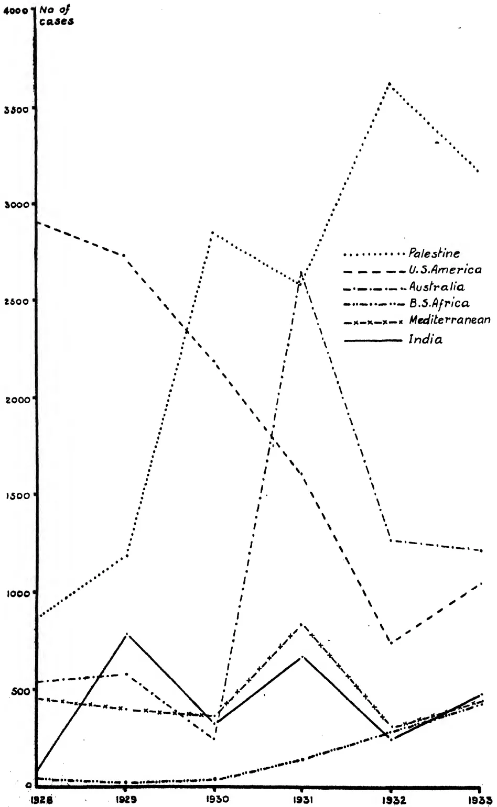
The graph illustrates the annual imports of citrus fruit into Ceylon from 1928 to 1935. The Y-axis represents the number of cases, ranging from 0 to 4000. The X-axis represents the years. The data series are as follows:
| Year | Palestine | U.S. America | Australia | B.S. Africa | Mediterranean | India |
|---|---|---|---|---|---|---|
| 1928 | 900 | 2900 | 550 | 450 | 450 | 100 |
| 1929 | 1200 | 2750 | 600 | 500 | 450 | 800 |
| 1930 | 2850 | 2200 | 300 | 350 | 350 | 350 |
| 1931 | 2600 | 1600 | 850 | 750 | 750 | 650 |
| 1932 | 3650 | 750 | 300 | 300 | 300 | 250 |
| 1933 | 3350 | 1200 | 400 | 400 | 400 | 400 |
| 1935 | 3150 | 1050 | 450 | 450 | 450 | 500 |
ANNUAL IMPORTS OF CITRUS FRUIT INTO CEYLON
144| Grapefruit—Palestine | ... | ... | 769 cases |
| California | ... | ... | 415 ,, |
| South Africa | ... | ... | 45 ,, |
| Mediterranean Ports | ... | ... | 32 ,, |
| Australia | ... | ... | 2 ,, |
| Lemons—Palestine | ... | ... | 40 ,, |
| Cyprus | ... | ... | 13 ,, |
| Limes—India | ... | ... | 334 ,, |
The duty on Citrus fruit which hitherto had been 10 per cent. and 15 per cent. ad valorem was raised as from February 1st to 15 per cent. and 25 per cent. respectively, the higher rate being charged on foreign consignments or on those not accompanied by a declaration of the country of origin.
Following is a statement of the value of fresh fruit and the estimated value of citrus imported in 1932 and 1933:
| 1932 | 1933 | |
|---|---|---|
| Rs. | Rs. | |
| Total value of all fresh fruit | 546,354 | 522,786 |
| Value of apples and grapes | not shown separately | 447,233 |
| Other fruit | 75,533 | |
| Estimated value of Citrus fruit | 63,000 | 60,000 |
The accompanying diagram shows the fluctuation of the import trade in Citrus fruit from different countries for the past six years.
145K. J. ALEX. SYLVA, F.R.H.S.,
CURATOR, HENERATGODA BOTANIC GARDENS, GAMPAHA
THIS orchard is an epiphyte and belongs to the magnificent genus Vanda, which counts more than twenty species, most of which attain a considerable size and are among the largest of tropical Asiatic Orchids.
Vanda spathulata Spreng. is indigenous to Ceylon and the South-Western region of India. In its wild state it grows on scrubby bushes and among rocks almost from sea level to an altitude of about 2,000 feet.
Its semi-straggling climbing habit makes the stem long, ten to fifteen feet being not unusual. Only the distal parts of the stem bear leaves.
The leaves are not of uniform size or colour even in plants growing side by side. It often happens that one has green leaves while those on another are speckled with pink or entirely reddish. A similar variation occurs in plants of different elevations. In the dry districts they are clothed with thicker and shorter leaves more closely set, than in a humid atmosphere.
The stem, which is more or less mottled with pink, cylindrical, and slightly thinner than a lead pencil, has the peculiar habit of throwing out roots upwards. These latter are fairly stout, fleshy and long.
The flower stalk, which is about twelve to eighteen inches high, rises from a node close on the terminal shoot, carrying a raceme of mildly scented bright yellow flowers.
The flower is about one and a half inches across. The sepals and petals are obovate-oblong, the tips being rounded and the lip longer than the sepals.
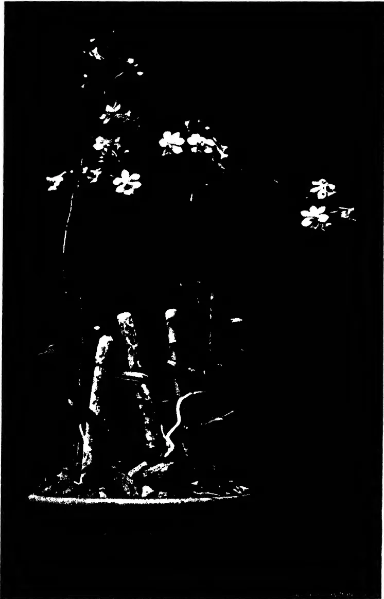
Vanda spathulata Spreng.
This image is a blank white page. It contains several small, dark specks which appear to be scanning artifacts or dust particles. There is no text, handwriting, or printed content on the page. 146Culture.—This is a sun-loving plant that does not respond readily to pot cultivation. The bare and rather “leggy” stems should be cut off at a point immediately below a good root so that when potted the leaves at the bottom of the stem may rest on the top of the compost. About half a dozen cuttings, each a foot high, may be planted in a ten-inch pot with about the same number of stout durable stakes for them to root on.
The compost may be made up of equal parts of bits of old wood, bark, and coconut husk with a few pieces of charcoal being added when potting to maintain aeration and sweetness of the mixture. A good soaking of water may be given on the day of potting but subsequent waterings should be done only on alternate days or on every third day.
The newly potted plants must be placed in a cool atmosphere for a month or more. When new roots appear, the plants may be transferred to a more open place, preferably under the shade of tall trees.
Cuttings placed in hedges or in closely set bushes have been found to do well and to flower freely.
147CONTRIBUTIONS FROM THE RUBBER RESEARCH
SCHEME (CEYLON)
NOTES ON CROSS-POLLINATION OF
RUBBER (HEVEA BRASILIENSIS)
IN CEYLON
W. I. PIERIS, B.A. (CANTAB.) HORTIC.
AGRICULTURAL ASSISTANT.
RUBBER RESEARCH SCHEME (CEYLON)
INTRODUCTION
AS there appears to have been little or no previous work done in Ceylon on the above subject it is hoped that the ensuing remarks based on work carried out by the writer at the Rubber Research Scheme Experiment Station, Nivitigalakele, during the past two years may be of interest. It will be known to those connected with the Rubber Plantation Industry that the yield of latex from individual trees varies very substantially. Extensive research has been carried out in Java, Sumatra and Malaya with a view to improving the yield of future plantations both by the asexual or vegetative method of budgrafting with material from selected high yielding trees and by the sexual method of cross-pollinating high yielding trees for the purpose of evolving improved seedling progeny. Work on the former lines has been undertaken in Ceylon at Nivitigalakele where budgrafts from a large number of local high yielding trees have been established but hitherto improvement by artificial cross-pollination of selected trees has not been attempted. The present notes refer mainly to cross-pollination of the flowers of budgrafts at Nivitigalakele which have reached an age at which flowering occurs.
MORPHOLOGY OF FLOWER
A preliminary need in embarking on work of this kind is to acquire a clear knowledge of the anatomy of the flower. The Hevea brasiliensis, being monoecious, has both its staminate (male) flowers and pistillate (female) flowers on the same tree (in fact on the same inflorescence—vide diagram I), and a close look soon reveals the external difference in form of the one from
This image is a blank white page. It contains several small, dark specks which appear to be scanning artifacts or dust particles. There is no text, handwriting, or printed content on the page.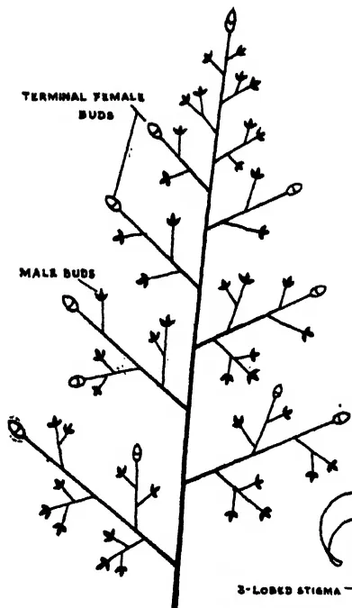
1. COMPOUND RACEMOSE INFLORESCENCE OR PANICLE.
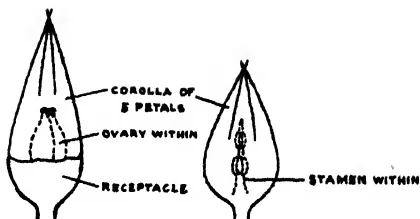
2. FEMALE FLOWER BUD. 3. MALE FLOWER BUD.
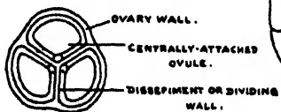
4. SECTION THROUGH OVARY.
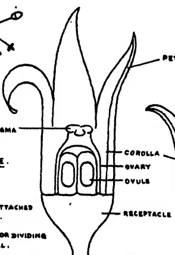
4. FEMALE FLOWER SHOWING INNER ORGANS.
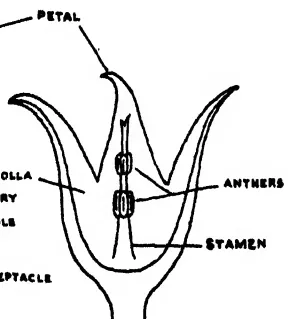
5. MALE FLOWER SHOWING INNER ORGANS.
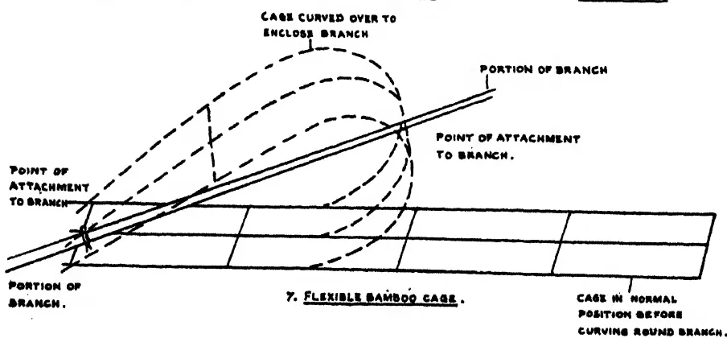
7. FLEXIBLE BAMBOO CASE.
Structure of the Inflorescence and Flowers of Hevea Brasiliensis. At the bottom is shown the method of making a bamboo cage around the inflorescence.
148the other. The female flowers are confined to the terminals of the main and stronger side axes of the inflorescence, which is a compound raceme or panicle, and are larger in size, fewer in number and of different formation to the male flowers. The former (diagram 2) in addition to the corolla of 5 yellow petals has a distinct light-green cup-shaped bottom half-receptacle—whereas the latter (diagram 3) is yellow throughout and has no green receptacle. Under the dissecting microscope the variation in structure is further marked. The “female” (diagram 4) consists of a syncarpous trilocular gynaecium (i.e. a 3-celled ovary) standing on the aforesaid light green receptacle and surrounded by the corolla of 5 yellow petals. The summit of the ovary tapers into a blunt three-lobed stigma. The male flower (diagram 5) which has no receptacle reveals, within its yellow corolla, a tiny white perpendicular monadelphous stamen (i.e. filaments of stamens united into one) carrying two whorls of 5 yellowish anthers each. Each anther contains 2 pollen sacs, which on dehiscing (generally shortly after the flower opens) sets free the sticky, dust-like, circular pollen grains inside it.
The method of cross-fertilisation adopted was to take a male flower from the required source, divest it of its petals with as little movement as possible and, getting hold of the bottom of the stamen (see diagram 5) by means of a pair of pointed forceps, to rub that portion of it bearing the now-ruptured pollen sacs gently over the receptive stigma (see diagram 4) of the particular female flower required to be fertilised. The operation is somewhat delicate and care has to be taken not to injure the surface of the stigma by careless or excessive rubbing. Provided the operation has been carried out at the correct stage of development of the flowers, and allowing for other natural causes of failure, the pollen grains so transferred to the sticky surface of the stigma germinate and fertilise the centrally-attached ovules (later seeds) that are inside the ovary. Directly the ovules are fertilised the ovary (seed pod) begins to enlarge and for the first time the success of one's labours may be ascertained. The mature rubber pod belongs to the category of syncarpous dry dehiscent fruit known botanically as a “capsule”.
Apart from the technique described above, in experimental work numerous precautionary and safety measures have to be adopted. All inflorescences whose female flowers are to be pollinated are enclosed in muslin or fine transparent cotton-cloth
149bags before the flowers open. This is best done at a stage not too early to stifle the flowers and not too late to allow natural fertilisation from unknown sources taking place. In view of the fact that in Ceylon the first male flowers on an inflorescence open 7-10 days before the first "females", a safe stage for bagging is when the first "males" are swelling to open. Careful watch is kept thereafter until the "females" open, upon which they are fertilised with pollen from the particular source selected. To prevent the muslin bag, especially when wet, from sagging against the flowers a bamboo cage (diagram 7) made of flexible strips of split "bata" (Ochlandra sp.) is sometimes used. The experience gained at Nivitigalakele however is that except in special instances its use is somewhat superfluous, not to say troublesome, in that the leaf fronds around an inflorescence usually quite successfully perform the same function.
The actual transference of pollen is done with the aid of a pair of pointed forceps about 5 in. long, which also serves to remove the petals of the male flower from the single column-like stamen bearing the pollen. A tall step-ladder and, at times, scaffolding round particular trees, are necessary. Immediate labelling of each inflorescence pollinated is strictly observed so that no mistakes may arise subsequently regarding the crosses made. The label, preferably a non-corrosive metal one, should primarily bear the name (number) of the male parent with which the particular inflorescence was fertilised and, if more than one inflorescence has been done on the same tree, the number of the inflorescence. Accurate records of dates of bagging, pollinating and unbagging, number of flowers pollinated and number of successes obtained are kept for each inflorescence. This is not as tedious as it sounds if entered in tabular form in an exercise book. In experimental work, flowers on a single inflorescence are never fertilised with more than one variety of pollen and an inflorescence is never unbagged until all its female flowers are safely past the stage when they can be further fertilised. This can easily be determined when the stigmas turn dry and change to a dark or brown colour. If speedy unbagging should be necessitated for any special reason, all unopened "females" should first be plucked before removing the bag.
Results of rubber pollination in other countries show that an average success of over 15 per cent. has seldom been obtained and that a figure below 10 per cent. is far more general. Work done at Nivitigalakele mainly among young budded clones gave,
150in 1932, 7 successes out of 103 (7 per cent.) and in 1933, 52 out of 822 (6.3 per cent.). It is however interesting to note that, among the pollinations carried out in 1933, whereas a successful percentage of 18 per cent. was obtained from crosses where both male and female parents were mature estate trees, and 9 per cent. where the female was a mature estate tree and the male a young budded tree, only 3 per cent. were successful where both parents were comparatively immature buddings flowering only for the first or second time. Similarly in 1932 mature estate tree crosses gave a success of 29 per cent. as against 2 per cent. from young buddings. Although these results may not be adequate to justify a definite conclusion in view of the fact that subsidiary factors have come into play, they tend to show that flowers of more mature trees incline to give a higher percentage of success than those of younger trees which have only flowered for a season or two; while the total average successes for the two years 1932 and 1933 support the view with limitations, that average successful percentages of over 15 per cent. are more the exception than the rule in work of this kind. The reason for the latter phenomenon has to be sought partly in nature where the rubber tree like most other prolific flowerers has to be controlled against over-production, and partly no doubt from defects in the technique adopted.
The outbreak of Oidium Heveae which often manifests itself on the inflorescences during the pollinating season is found, in Ceylon, to be a considerable handicap. Flowers so infected either drop wholesale or do not open, thus affecting both the scope for, and results of, pollination. The interference from this source has been sufficiently great to make it necessary to resolve to undertake sulphur-dusting of inflorescences prior to pollination in future years.
Although it seems reasonable to expect that bagging of inflorescences unduly early may retard or inhibit the proper development of the flowers and their subsequent opening, in actual practice it was found that inflorescences on which bags were put somewhat over-early, that is to say about 12 days before the first males started swelling to open, actually opened some days before ones left unbagged as controls on the same branch and of the same stage of maturity. Certain bags were left round inflorescences to ascertain whether natural self-fertilisation by wind would take place within the bag. In no case did this
151occur, tending to show that self-fertilisation of rubber in so far that females of an inflorescence are naturally wind-pollinated by males on the same inflorescence occurs rarely, if at all, although successful self-fertilisation by artificial methods has been recorded by workers in other countries.
Dry weather during the "set" was found to be an important necessity. Wet conditions generally meant that the pollen transferred to the stigmas got washed away before it had time to fertilise the ovules or that the moist conditions persisting inside the bag caused the flowers to rot.
The choice of the parent trees, especially the female, appears to require more attention than one at first is inclined to imagine. Pollinations on certain trees, whether estate seedlings or clonal buddings, give no successes despite the most careful technique and favourable conditions while others set seed much more freely. In this respect it is observed that the robustness and general healthy appearance of the tree in relation to size, colour of leaf, tendency to fruit in previous years, size and appearance of flowers, absence of manifestation of disease, play a not unimportant part and that due observance of these factors may considerably increase the season's successes.
In addition to the aspects of rubber pollination dealt with above several important lines of investigation particularly in relation to the viability and mode of transference of rubber pollen, the actual agents causing natural fertilisation, possibilities of self-fertilisation, etc. remain to be explored. It is hoped to pay due regard to these in the near future when the scope for investigation at Nivitigalakele is larger than at present and when the buddings have reached a more advanced stage of maturity.
152[Extract from the "Report of a Mission appointed to investigate the Clove Trade in India and Burma, Ceylon, British Malaya and the Dutch East Indies." By G. D. Kirsoop and C. A. Bartlett recently published on behalf of the Government of Zanzibar by the Crown Agents for the Colonies. The Commissioners visited Ceylon and made a study of the subject on the spot.]
General.—Cloves represent a very small item in the overseas trade of the Island of Ceylon and constitute a commodity of minor importance in its agricultural production. Inevitably the statistical data for measuring the extent of the trade and of local production are lacking in detail.
Imports.—Cloves imported into Ceylon are not shewn under a separate classification but are included under a general classification "other spices". An examination of the general classification referred to in relation to countries of origin and unit values makes it possible, however, to arrive at a rough estimate of the cloves imported into the Island. The figures of import thus estimated for the period 1922-31 are shewn in Table XVI. In addition to these imports a small quantity of exhausted clove stems reaches Ceylon either direct, or in transhipment from Bombay.
Table XVI.—Statement showing the approximate quantities of Clove Imports for the years 1922-31
| Year | British India | Country of Shipment Zanzibar |
France | Madagascar | Total |
|---|---|---|---|---|---|
| cwt. | cwt. | cwt. | cwt. | cwt. | |
| 1922 | 194 | — | 12 | — | 206 |
| 1923 | 18 | — | — | — | 18 |
| 1924 | 81 | — | — | — | 81 |
| 1925 | 36 | — | — | — | 36 |
| 1926 | 85 | — | 91 | 31 | 207 |
| 1927 | 20 | — | — | — | 20 |
| 1928 | 11 | 89 | 20 | — | 120 |
| 1929 | 235 | — | — | — | 235 |
| 1930 | 17 | — | — | — | 17 |
| 1931 | 125 | 105 | — | — | 230 |
It may be added that, in so far as Colombo serves as a transhipment port for Zanzibar cloves, no statistical information is available, particulars of the transhipment trade of the port not being recorded in detail.
153Exports.—With regard to the export trade, the returns include a separate classification which distinguishes between cloves of Ceylon production and re-exported cloves. Particulars of the clove exports and re-exports during the period 1922-31 are shewn in Table XVII.
Table XVII.—Statement showing the exports and re-exports of Cloves for the years 1922-31
Re-exports
| Year | Destination | Total | ||
|---|---|---|---|---|
| Maldives | British India | Other Countries | ||
| cwt. | cwt. | cwt. | cwt. | |
| 1922 | 27 | — | — | 27 |
| 1923 | 28 | 43 | — | 71 |
| 1924 | 33 | 160 | — | 193 |
| 1925 | 46 | 18 | — | 64 |
| 1926 | 44 | — | — | 44 |
| 1927 | 38 | — | — | 38 |
| 1928 | 42 | 75 | — | 117 |
| 1929 | 76 | — | — | 76 |
| 1930 | 74 | — | — | 74 |
| 1931 | 71 | — | — | 71 |
Exports
| Year | Destination | Total | ||
|---|---|---|---|---|
| Maldives | British India | Other Countries | ||
| cwt. | cwt. | cwt. | cwt. | |
| 1922 | 3 | 122 | — | 125 |
| 1923 | 5 | 30 | 10 | 45 |
| 1924 | — | 59 | 19 | 78 |
| 1925 | 7 | 19 | 23 | 49 |
| 1926 | — | 19 | 7 | 26 |
| 1927 | 7 | 52 | 25 | 84 |
| 1928 | — | 56 | 11 | 67 |
| 1929 | — | 515 | 2 | 517 |
| 1930 | — | 85 | — | 85 |
| 1931 | — | 106 | 4 | 110 |
EXCESS OF EXPORTS OVER IMPORTS
Table XVIII.—Summary of Exports and Re-exports of Cloves for the years 1922-31
| (a) Total Exports 1922-31 | ... | ... | 1,186 cwt. |
| (b) Total Re-exports 1922-31 | ... | ... | 775 cwt. |
| 1,961 cwt. | |||
| (c) Total Imports 1922-31 | ... | ... | 1,170 cwt. |
| 791 cwt. | |||
| Excess of Exports and Re-exports over, Imports | 791 cwt. | ||
| Annual average excess being 79.1 cwt. | |||
During the decennial period to which Table XVIII relates, the average annual surplus of local clove production in Ceylon as represented by the excess of exports and re-exports over imports amounted to some 80 cwt. as under :
| (i) Average annual exports of Ceylon produce | 119 cwt. |
| (ii) Average annual re-exports of Foreign produce | 78 ,, |
| Total of exports and re-exports | 197 ,, |
| (iii) Average annual imports | 117 ,, |
| Excess of total exports over imports | 80 ,, |
The foregoing figures indicate that a remarkably even balance has been maintained between the production and consumption of cloves in Ceylon. From the point of view of other producing centres the trade has for the time being little significance; and as an indication of the relative unimportance of this commodity in the general spice trade of Ceylon it may be noted that in the year 1930 the total imports and exports of spice of all classifications amounted to 486,660 cwt. valued at Rs. 102,50,000. In the consideration of this market it is the potentialities of Ceylon as a centre of clove production that invite particular attention.
Foreign Trade.—As the chief commercial centre of Ceylon, the port of Colombo handles the overseas trade as represented by imports and re-exports of foreign cloves and exports of local production. The cross-movement in the trade arises from the fact that Southern India provides a convenient market for the surplus production, exports to this market tending to exceed the actual extent of the surplus in response to any favourable price movement. We were unable to establish whether this export trade had developed because the high-grade quality of the Ceylon product provides an excellent basis for adulteration or because the proximity of certain Southern Indian ports especially Tuticorin, makes it cheaper for them to purchase from Colombo than from Bombay. Not improbably both factors have operated, but prices quoted in the different markets at the time of our investigation suggested that Colombo is in a very favourable position to supply closely adjacent Indian ports.
The clove trade in Colombo is in the hands of Indian spice dealers whose methods of business are similar to those operated in the bazaars of India. These spice dealers buy outright from Bombay or Zanzibar and sell the commodity, in an adulterated form, to retailers in Colombo and other centres removed from the clove producing areas. They also do a small re-export business to Indian importers in the Maldiv Islands.
It will be observed from Table XVI that occasional shipments of Madagascar cloves, represented by the total of France and Madagascar, have reached this market. Insignificant as these shipments may have been they are nevertheless indicative of the manner in which the Madagascar product is capable of gaining a foothold in the markets which formerly looked exclusively to Zanzibar and Bombay to meet import requirements. As between the clove produce of Zanzibar and Madagascar the material issue here, as in India, is one of price.
155Internal Trade.—The system of marketing the local clove crop is much in line with that prevailing in Zanzibar. The grower has the option of picking his own crop and selling it to the local produce dealer, to whom he may or may not be indebted, or of leasing it under an arrangement which usually secures for himself half the proceeds of the harvest. The local produce dealers, for the most part Moors, are the intermediaries who sell to the retailers in the district towns, or to the wholesale spice dealers in Colombo.
The locally produced article has the advantages in the home market which arise from the Customs duty of 15 per cent. ad valorem on imported cloves and from the price premium due to superiority of quality which, at the time of our enquiry, was represented by the difference between 42 cents per lb. for Ceylon and 40 cents per lb. for Zanzibar, standard quality. The local producer has also the advantage of cheap transport both by road and by rail to every part of the Island, including Colombo.
It follows that, despite the intervention of the middleman and the money-lender, the Ceylon producer is able to obtain a much more satisfactory price for his cloves than the producer in Zanzibar.
The import business operated in Colombo secures that local prices, subject to the adjustments due to import duty, freight and other charges, and the quality premium, are kept closely in line with quotations in the Zanzibar market. But the retail price, as in India, is much less susceptible to variation and as the chief method of retailing is by the pinch sold for 5 cents., or even 1 cent., retail profits are an indeterminate quantity.
In the districts served by the locally produced article there is almost an entire absence of adulteration, although dampness and stem admixture is occasionally met with. It is only in Colombo and in connection with the marketing of the imported article that deliberate sophistication is practised.
There is at present no legislation in Ceylon designed to control the adulteration of foodstuffs, and until such legislation is enacted the evil will certainly continue unchecked. At the present moment the restricted character of the trade does not give this feature of the Ceylon clove market any special significance, but should the export of Ceylon cloves develop as the result of an expansion of local production the position may alter. In the event of expanded production the fact that the better quality of the Ceylon article makes it an excellent basis for adulteration would be fully exploited both in Colombo and in India.
The uses to which cloves are put in Ceylon are similar to those which account for the bulk of consumption in India. It may be said, that with the exception of the European community all the races constituting the population of Ceylon are addicted to the regular use of spices for the flavouring of curries and other foodstuffs. It is true that there is a great variety in the dietary of the domiciled Ceylonese than in that of the peoples of India, and it may be assumed that spices, including cloves, are
156a less indispensable item of the household budget than is the case in the sub-continent. The general standard of living in Ceylon is however, higher than in India and even during periods when high prices are ruling cloves are rarely beyond the reach of the bulk of the population.
In the preparation of the betel-nut "pan" the clove plays the same rôle here as in India, and the habit of chewing has a similar prevalence.
The medicinal value of the clove is widely recognised throughout the Island and is in common use as a household remedy and as a stand-by of Ayurvedic medicine, Ayurvedic practitioners being among the largest purchasers of cloves from retail dealers.
Ceylon does not appear to offer any new outlet in the field of utilisation, and it may safely be assumed that any increase in consumption resulting from the exploitation of a new local market would tend to stimulate local production rather than benefit import business.
While the trade returns record the exports of Ceylon cloves to foreign countries, there are no statistical data regarding the local output or the areas planted under clove trees. The extent of local production cannot therefore be measured and indirect evidence on the subject is somewhat contradictory.
The facts regarding utilisation suggest that the domestic consumption of cloves in Ceylon, with its population of over five millions, must be considerable. Approaching the question from this angle, one authority who undertook enquiries on behalf of the mission estimated that about 1,000 cwt. of cloves are required annually to satisfy the local demand. This estimate reflects a per capita consumption corresponding very closely to that existing in India, and the general character of the trade and of consumption suggests that this figure must be fairly near the mark.
A local consumption of 1,000 cwt. added to a net surplus for export of 80 cwt., places Ceylon production at an average figure of 1,080 cwt. per annum. Such a production would imply that there are about 17,000 bearing clove trees throughout the Island.
The information in the hands of the Agricultural Department, inevitably based upon reports lacking in detail but obtained through Agricultural officers in close contact with the cultivators, did not appear to bear out the existence of so extensive a cultivation. And our enquiries regarding the stocks handled by the wholesale dealers also appear to establish that the arbitrary figure of 1,000 cwt. as representing local consumption is definitely on the high side.
Whether the actual extent of production required to meet local demand reaches 1,000 cwt. per annum or is represented by a somewhat smaller figure, the significant feature of the position is that any expansion of output will leave a larger surplus available for export to India or to other markets now dependent upon Zanzibar as a chief source of supply.
157In a note prepared for the mission, the Director of Agriculture, Ceylon, gives the following particulars regarding the history and cultivation of the clove tree:
"Cloves were introduced into Ceylon probably about 1830, a century ago. A small grove of about seven trees was established in the Royal Botanical Gardens about this time and another of twenty trees some years later. The Report of the Director, Royal Botanic Gardens for 1873 stated that the tree was bearing abundantly at Peradeniya. The first trees were then 43 years old. In 1883 it appears from a brief statement made by the Government Agent, Central Province that clove plants were distributed to headmen throughout the Kandy district and these had been established successfully in certain divisions. This would account for the presence of some 85 trees, about 48 years old, in the Harispattu division in which at the present time some three hundred trees in all have been enumerated. Cloves are also found around Gampola and to some extent in Dumbara.
"It would appear that a first consignment of cloves was forwarded to the London market in 1882. About this time it is probable that cloves were introduced into the Ratnapura district where 200 trees interplanted in tea are now to be seen on Allerton Estate, Rakwana.
"Cloves do not appear to have been planted systematically as a crop. Trees have been indiscriminately planted and are not found in compact groves."
In spite of the casual nature of existing cultivation there is, at any rate in the Kandy district, evidence of a growing interest in the clove tree among a number of the Sinhalese small-holders. This interest has been stimulated by the serious fall in the prices of other agricultural products and the comparative immunity hitherto enjoyed by clove prices. With produce prices at levels recently ruling the clove crop is one of the most profitable harvested from the peasant gardens in the district and an extension of planting is generally anticipated.
We were informed that in one area a block of 1,000 trees was in existence and in one of the small holdings which we visited between 100 and 200 young trees had been established. The trees had been obtained as seedlings at a cost, it was stated, of one rupee per plant. Although planted among a variety of other trees such as coconuts, mangosteens, rubber and cocoa, the clove trees appeared to be well-tended and in a healthy condition. This cultivator had shewn the enterprise to clear existing cultures in order to make room for his clove seedlings, and although he was no doubt an exceptionally progressive type of small-holder, we formed the impression that in the matter of energy and practical training in agriculture his class as a whole is very much in advance of the average Zanzibar producer.
158If the aptitude of the Sinhalese small-holder makes him potentially a formidable competitor to the Zanzibar clove grower, there would appear to be no impediment to extended cultivation on account of soil and other conditions affecting the growth of the clove tree. Reference has already been made to the excellent quality of the cloves produced. In size the flower-buds are rather smaller than those of Zanzibar, but in formation and colouration the Ceylon product is the better. The trees we inspected seldom showed signs of disease, and although more elongated than the usual Zanzibar type and characterised by an absence of lower branches—possibly removed to facilitate cultivation—their average yield appeared to approximate closely to that obtained in the Protectorate. It is of interest to record that one tree which we saw—obviously of a considerable age but in excellent condition—had, according to its owner, yielded as much as 1,000 lb. of green cloves in a season. The stems are small, closely resembling the stem of a cherry, and at present are never marketed except occasionally when the unstemmed clove is offered for sale.
It may be added that in the Kandy District the clove tree does well at an altitude of some 1,600 ft., and some fifty miles or so from the sea, proximity to which has been held to be essential to successful cultivation. These conditions may account for the slowness with which the trees reach the bearing stage, 12 to 15 years being the usual period required. Recent planting does not therefore entail a serious threat of early competition from an extension of the Ceylon output, and our general impression is that the interest now being shown in the crop will only be sustained by a persistence of the present price relationship of cloves and of the other products cultivated by the Ceylon peasantry.
159ALTHOUGH citrus canker has been described as one of the most destructive plant diseases known, the principal effects are not so much an actual killing of the tree as a disfiguration and spoilage of the fruit for market. Canker causes a development of brown, corky, scabby spots and areas on all parts of the tree above ground, especially on the fruit, leaves, and twigs when they are still fairly young and tender. The affected growth becomes disfigured and weakened and the fruit is ruined for market. Under favourable conditions the disease spreads rapidly and becomes very abundant, injuring a large percentage of the fruit.
Citrus canker is a bacterial disease, caused by Bacterium citri, which attacks all varieties and species of citrus to a greater or less extent. These bacteria live and multiply abundantly in the affected tissue and are easily carried from one tree to another.
Canker is considered the worst disease of citrus trees which has ever been introduced into this country and its eradication after it had become well established in Florida must be looked upon as an achievement of the greatest importance to the citrus industry.
Hosts.—Citrus canker varies in its seriousness in different species and varieties of citrus. Of the important citrus fruits in Florida the disease is most virulent on the grapefruit and next on the sweet orange. There is some difference in susceptibility between the different varieties. The Washington Navel orange is very susceptible. The lemon in Florida is somewhat less susceptible than the sweet orange, the Satsuma orange is less susceptible than the lemon, and the Mandarin orange is very resistant.
History and Geographic Distribution.—Canker is not widely distributed throughout the citrus-growing countries of the world but is very prevalent in the Orient. It is usually believed to be native to China but has been present in Japan and the Philippine Islands for a long time. Some recent evidence from old herbarium specimens indicates that it may have originated in India (Fawcett and Jenkins, Phytopathology, in press). The disease also spread to many parts of the Orient, the Hawaiian Islands, North Australia, and South Africa.
* Extracted from Bulletin No. 553, July, 1933, University of California College of Agriculture Agricultural Experiment Station, Berkeley, California.
160TABLESUMMARY OF QUARANTINES AGAINST CITRUS CANKER| Commodity affected | Degree of exclusion | Quarantine | Districts quarantined against |
|---|---|---|---|
| Citrus fruit | Total | Cal. Quar. Ord. No. 1, N. S. |
All of the United States, except Arizona |
| Total except oranges of the Mandarin class may enter under permit | Fed. Quar. No. 28 |
India, Siam, Indo-China, Malayan Archipelago, Philippine Islands, Oceania (excepting Australia, Tasmania, and New Zealand), Japan, including Formosa and islands adjacent to Japan, Union of South Africa. | |
| Citrus seed | May be imported under permit and treatment | Cal. Quar. Ord. No. 1, N. S. |
All of the United States, except Arizona. |
| Citrus trees, scions, etc. | Total | Cal. Quar. Ord. No. 1, N. S. |
All of the United States, except Arizona. |
| Total | Fed. Quar. No. 19 |
All foreign countries and localities. |
In the United States citrus canker was observed in a single case in Florida in 1912, and again in 1913. It was probably first introduced at some time between 1908 and 1911. The disease was not generally recognised as a serious menace until 1914, and its true course was not discovered until 1915. It seems therefore that canker did not attract attention as a serious citrus disease anywhere in the world until it had been introduced into Florida. The disease has been found in Texas, Mississippi, Alabama, Louisiana, and Florida. It has never been observed in California or Arizona nor in Cuba or Puerto Rico. After canker was discovered in Florida it spread rapidly and a vigorous campaign was started by state and federal authorities to eradicate the disease from Florida and the other Gulf states. As a result of this energetic campaign there has been no commercial damage to Florida citrus groves from this disease since 1922 and no infections have been found since 1927. It appears that canker has
161been completely eradicated from Florida, Alabama, Mississippi, and Texas and all except one non-commercial area in Louisiana. It also appears to have been eradicated from Northern Australia and South Africa.
Economic Importance.—In Japan the Satsuma and other types of citrus which are commonly grown are not very susceptible to canker and the disease is not considered serious. In fact, it had attracted very little attention there and was generally confused with scab before its outbreak in Florida. On sweet oranges in Japan, however, there is considerable loss from canker.
In Florida both climatic conditions and the types of citrus most commonly grown seem to be particularly favourable to the development of this disease. The grapefruit, which is of especial commercial importance in Florida, is very susceptible, and the sweet orange is also very readily attacked. Citrus canker is therefore of much greater concern to Florida than to any other part of the world where the disease has occurred. In view of the rapid development of canker which took place in Florida between the time of its first appearance and the commencement of the eradication program and the destructive effect which it showed during that period, there can be little question that the Florida citrus industry would have been very badly affected if the disease had been allowed to continue. Unless some method of control could have been found it seems reasonable to believe that a very large percentage of all the oranges and grapefruit would have become affected in a disastrous manner.
During the eradication campaign it is stated that between 1914 and 1931 more than $2,500,000 of state, federal, and private funds were spent in combating citrus canker in Florida alone and the total cost of this disease to the state was much greater than this, since in the eradication campaign 257,745 grove trees and 3,093,110 nursery trees were destroyed incidental to the eradication of this disease, which occurred in 515 properties scattered through 26 counties.
Possibility of Control.—Some control of citrus canker has been obtained in the Orient (and in South Africa before eradication) by spraying the trees. By this means it is possible to prevent the disfiguration of the fruit at least to a certain extent. The possibilities of such control are very limited, however, especially where conditions are favourable to the disease, so that in Florida and also in South Africa campaigns were undertaken to eradicate canker from the affected regions. This work was carried out by a systematic inspection of citrus groves and nurseries and immediate destruction by fire of all affected trees as soon as discovered. By this method, which was repeated as long as any case could be found, eradication was successfully accomplished in Florida and according to Doige (1929), in South Africa.
Adaptability to the California Environment.—The climatic conditions most favourable to citrus canker have been studied quite thoroughly by Peltier (1926) with the following conclusions :
Considering the temperature factor alone citrus canker could develop in all the citrus regions of the world some time during the growing season. The period over which it would be active depends on the number of months having a mean temperature of 68°F or above. The disease would be most severe at points having the greatest number of months with mean temperatures of 80°F or above. Temperature is in no case a limiting factor for the development of canker in any of the citrus regions of the world. Considering the moisture factor, a deficiency of precipitation during the growing season is the limiting factor in the development of citrus canker. Whenever the temperature and precipitation curves are ascending and rounding curves as they are for localities like the Gulf Coast states, China, and even South Africa, conditions essential for the development of canker
162are at hand, as these same conditions stimulate the rapid growth of the host plants and thus make them more susceptible. On the other hand, no canker has ever been found in those localities where, while the temperature curves are ascending and rounding ones, the precipitation curves are descending. In California when the highest monthly mean temperatures are reached the amount of precipitation is at its lowest point. If most of the annual rainfall occurred during the summer months rather than during the winter season, canker could develop to some extent as conditions would then be similar to those prevailing in South Africa and at Laredo, Texas, in 1916. The amount, frequency, and seasonal distribution of precipitation is a limiting factor. Apparently the seasonal distribution is the most important factor to consider, for on the seasonal distribution of rainfall depends to a large extent the development or inhibition of this disease in the citrus regions of the world. According to the observations and conclusion of Peltier it does not seem probable that citrus canker would thrive under California conditions, owing to the dry summers. It will be seen from Peltier's conclusions that for the development of this disease it is necessary to have a combination of wet weather and high temperature. In other words citrus canker is most active in regions with a warm, rainy summer, and least likely to develop in places where the summer is dry and rainfall occurs mainly in the cooler part of the year. This would suggest that citrus canker might not flourish in California, or that if it should become established it might be rather easily controlled and eradicated. If it should become established here, however, it might result in anti-California quarantines, even though it occurred in a very mild state.
Methods of Dispersal and Avenues of Entrance.—Canker is spread locally by wind, insects, pruning or other tools, and by any agency which might pass from one citrus tree to another. Over long distances the disease may be carried either on nursery stock or on citrus fruit, since both the tree and the fruit are attacked. In the case of the introduction of citrus canker into the Gulf states, and no doubt elsewhere into new countries, the disease has spread by means of infected nursery stock. In this country it appears to have been introduced first on seedling trees of trifoliolate orange shipped from Japan to Texas, Mississippi, Alabama, and Florida, where it spread to other varieties. It was also introduced on Satsuma orange trees shipped from Japan. In Florida, canker also developed in shipments of trifoliolate orange trees from Texas. There is no evidence that the disease has ever been spread over long distances on citrus fruit. The most probable method by which citrus canker might be introduced into California would be by the shipment of infected citrus nursery trees from the Orient. If such trees should be brought in and planted in this state the disease would presumably develop on them. After that it might either continue to develop and spread to other adjacent trees, if conditions were favourable, or otherwise it might die out and disappear. Next in importance would be the danger of the introduction of canker on affected citrus fruit, probably either sweet oranges or grapefruit. In this case the only way in which the disease could become established here would be for orange or grapefruit rinds having cankers that contained live germs of the disease to be thrown out and left in some place close to citrus trees. Even then the likelihood of the establishment of the disease in such trees is not very great. Since no case of canker has been found in Florida since 1927 there would seem to be very little danger of its introduction on citrus fruit from that state.
163IN the South Australian State Irrigated Experiment Orchard, at Berri, a trial of various citrus stocks was inaugurated in 1913. The stocks used consisted of seedlings of Sweet Orange, Rough Lemon—sometimes called Citronelle—Seville or Sour Orange, Pomelo, and Poncirus (Citrus) trifoliata—the deciduous orange tree of Japan.
Five plants of each of the above stocks were budded to Washington, Thompson's, Buckeye, Nugget, and Navelencia, as representing navel varieties. Mediterranean Sweet and Valencia Late were used to represent the seed-bearing sweet oranges, whilst Dancy's Tangierine was adopted as the Mandarin type in the trials.
No special attempt was made to secure seedlings from trees of particular merit for rootstocks, but only healthy well-grown seedlings of the various species were utilised in the nursery.
The budwood, however, was all taken from trees, the habits of growth and fruiting of which had been under observation for some years in the State Orchard, at Adelaide, where the work of propagating the trees was conducted. In each instance the same tree yielded the budwood which was used of that particular variety for working over its quota on each kind of stock.
The full range of varieties quoted above as having been worked on Sweet Orange and Rough Lemon stocks was planted out in 1913. Those on Seville and Pomelo rootstocks were set out in 1915, and the final lot, consisting of three trees only of each variety on the Trifoliolate orange, was planted out in 1922.
The plot of land devoted to these trials is composed of the very coarse reddish sandy pine ridge loam characteristic of the Murray Valley. It ranges between 2 ft. to 4 ft. in depth over a rubbly marl. The surface is slightly sloping towards the east, and on the whole it is well drained and admirably adapted for citricultural purposes.
At the time of making the juice tests outlined herein the trees on the Sweet Orange and Rough Lemon stocks had fruited over a period of 14 years, with the exception of the Valencia Late, which had borne for 12 years only.
The trees worked on Seville and Pomelo stocks had cropped from 10 to 12 seasons, whilst the whole series growing on the Trifoliolate stocks had seven years of cropping recorded to their credit.
* By George Quin, Chief Horticultural Instructor, Department of Agriculture of South Australia in Bulletin No. 276.
164These facts as to the origin and ages of the trees are briefly stated to indicate that at least some of the important factors which might make for varying qualities in the fruits had been much reduced, if not wholly eliminated. Such matters as the relative affinities displayed between the different rootstocks and scion varieties worked on them, or the comparative habits of growth and branch developments, or quantitative yields of oranges are not for the present under review, excepting to remark, in passing, that without exception the trees are normally healthy, thriving, and yielding well.
In planning the research conducted during the orange harvesting season of 1931, trees were selected from which fruits were gathered at fortnightly intervals extending from May 22nd to July 31st in the cases of the Washington and Thompson's Navel, from August 28th to October 23rd in that of the Mediterranean Sweet, and from August 28th, 1931, to February 26th, 1932, the Valencia Late fruits were harvested. The two rootstocks on which the Washington and Thompson's Navel fruits were produced were Sweet Orange and Rough Lemon, whilst those of Mediterranean Sweet and Valencia Late were taken from trees worked on Sweet Orange, Rough Lemon, Pomelo, and C. trifoliata respectively.
The procedure adopted consisted of gathering 12 oranges fortnightly from each selected tree. Six of these gauged from in. to in. in diameter, representing the smaller fruits, and the other half dozen gauged 3 in. to in. in diameter, thus placing them among the larger sizes. As the season advanced it became impossible to adhere exactly to these sizes in so far as the Mediterranean Sweet and Valencia Late sorts were concerned. Owing to the shortage of crop on the selected trees of Mediterranean Sweet worked on both C. trifoliata and Pomelo, slight variations and estimates had to be made, which can also be noted in lists containing the working data.
Each orange when cut from the tree had a label enclosed in its wrapper giving full particulars of its origin and grade. The whole series of sizes and varieties were then carefully packed and forwarded to the office of the Horticultural Branch Department, in Adelaide, for testing. The whole of the analytical work and calculations were conducted by Mr. E. W. Pritchard, Agricultural Botanist, who is a skilled analyst and associate of the Australian Chemical Institute. Each half dozen fruits was weighed, and each orange halved equatorially prior to the halves being rotated under hand pressure on a fluted conical glass lemon squeezer until no more juice could be released from the pulp. The juices of the six fruits were then blended and strained through a wire gauze sieve having 24 meshes to the inch, and weighed, thus giving the data for calculating the percentage of juice by weight to the total weight of the whole oranges. As the acids and sugars dissolved in the juicy pulp of an orange are the principal factors which make for a balanced and attractive flavor in the fruit, these alone were determined. The former by titrations with N/10 soda solution, and the latter estimated from readings of the scale on the Brix hydrometer. Using a few drops of phenolphthalein solution in the juice as an indicator of changing color, the number of cubic centimetres of the soda solution required to neutralize 10 c. cs. of the blended juices was determined. If the percentage of acidity as citric acid is desired, it may be ascertained by multiplying the number of c. cs. of the soda solution by .07.
165In addition to the above chemical and physical determinations the texture of the pulp of each lot was recorded by the use of the letters S, for "satisfactory," M. for "moderately raggy or fibrous," and R. for "very raggy or fibrous". A palate test was also used by setting up a scale of impressions indicated as under, V.S. very sour, S. sour, T. tart, T. Mod. moderately tart, Sw. sweet, and V.Sw. very sweet. Each sample of mixed juices was submitted to three or four persons at random for tasting, and the majority agreement recorded as to which term should apply.
The standard of maturity originally adopted in several Australian States was founded on the acidity thus determined from the mixed juices of five oranges selected at random. When not more than 23 c. cs. of N/10 soda solution were required to neutralize the acids in 10 c. cs. of the juice the fruits were deemed to be palatable and wholesome. It was found, however, that fruits containing greater acidity were often made palatable by the presence of a high percentage of sugar in the juice, and conversely oranges with low acidity could, owing to the paucity of sugars in their juices, appear very sour to the palate. Further, when acids and sugars are both very low in the juice the oranges usually become insipid to the taste. In the tests under review this feature was more particularly in evidence in the juices of Thompson's Navel fruits from trees grown on Rough Lemon rootstocks. There may be numerous other reasons for the occurrence of these variations in the proportions of the principal factors which make for palatability in an orange, but the data obtained thus far would seem to indicate that the kind of rootstock used may yet prove a not inconsiderable cause in securing both juiciness and good flavour.
One fact pointed out by other investigators is consistently emphasised by the figures presented in these studies—excepting in those relating to the Valencia Late—and that is, that quite irrespective of variety of orange or of the kind of rootstock used, under ordinary conditions the comparative sizes of the oranges on a tree afford an indication of their respective advances towards maturity. In other words, the juice of an average small orange—up till mid-harvest period at any rate—may be calculated to contain a higher percentage of acid than the large one picked from the same tree and at the same time.
The fruits of Thompson's Navel, when grown on the Sweet Orange rootstock, displayed appreciably greater acidity than those from trees worked on the Rough Lemon. In the small sized fruits it ranged from the equivalent of 15.6 c. cs. to 12 c. cs., with an average through the testing period of 13.71 c. cs. of the soda solution. In the large fruits a variation of from 16.5 c. cs. to 9.8 c. cs., with a season's average of 13.15 c. cs. was recorded. The fruits of this variety, when worked on the Rough Lemon stock, showed in the smaller sizes a range from 13.8 c. cs. to 9.6 c. cs., with an average of 11.28 c. cs., whilst the large oranges extended from 14.3 c. cs. to 8.9 c. cs., with an average of 11.21 c. cs.
In the case of the Washington Navel on Sweet Orange rootstock, the small fruits extended from 18.2 c. cs. to 12.0 c. cs., averaging 15.3 c. cs., with the large sized fruits showing from 18.7 c. cs. to 11.2 c. cs., or an average through the season of 14.5 c. cs. The fruits of this variety worked
166on Rough Lemon ranged in the smaller sizes from 15.3 c.cs. to 11.0 c.cs., averaging 13.18 c.cs., and in the larger sizes from 15.2 c.cs. to 10.4 c.cs., or an average of 13.01 c.cs.
When the data from the small and large fruits of Thompson's Navel worked on Sweet Orange are aggregated their average acidity is equal to 13.43 c.cs., and the oranges grown on trees of this variety worked on Rough Lemon rootstocks averaged 11.25 c.cs. Making similar aggregations of the fruits of Washington Navel grown on Sweet Orange rootstocks an average equal to 14.90 c.cs., and from fruits of this variety grown on Rough Lemon rootstocks the acidity stated in terms of c.cs. of N/10 soda solution is only 13.10. It would appear from the above that the acidity in the fruits from Thompson's Navel trees grown on Rough Lemon stocks is approximately 16.25 per cent. lower than that in fruits of the same variety when grown on Sweet Orange seedling stocks. In the case of Washington Navel the acidity in fruits produced on Rough Lemon rootstocks is calculated to be 12.08 per cent. less than in those grown on the Sweet Orange rootstocks. It will be noted that the first lot examined was not necessarily the most acid in the season's work, neither was the decline in acidity found to follow any regular graduations from fortnight to fortnight, excepting in Valencia Late fruits.
It will be noticed from the accompanying tables of figures that the total sugar contents of the Thompson and Washington Navel oranges varied only very slightly throughout the 10 weeks from May 22nd to July 31st, though they are consistently higher in fruits from trees of both varieties when worked on the Sweet Orange rootstocks. In all cases, irrespective of variety or stock, the smaller navel fruits consistently displayed a slightly higher percentage of sugar content than was found in the larger sizes.
The average percentage of sugar found in Thompson's Navel fruits of small and large sizes grown on Sweet Orange stocks was 12.24, and when taken from trees on Rough Lemon 11.14 per cent. Washington Navels of both sizes produced on Sweet Orange stocks an average percentage of 11.15, and from similar fruits grown on Rough Lemon stocks the average percentage was 10.85.
With one exception in each of the series the percentage of juice by weight to that of the whole fruits was slightly lower in the small sized oranges, but these differences were negligible. In each instance, however, fruits of both varieties carried more juice when grown on Sweet Orange stocks than on the Rough Lemon.
The Thompson's Navels on Sweet Orange stocks averaged 34.80 per cent. as against 33.23 per cent. from fruits produced on Rough Lemon stocks, whilst the Washington Navels displayed averages of 41.75 per cent. on Sweet Orange and 40.65 per cent. on Rough Lemon stocks.
Of the eight series of tests made with these two navel varieties the fruits in five of them, which were gathered on May 22nd, displayed the highest percentage of juice found throughout the series. Of the Thompson's Navel one each of these extra juicy lots was grown on Orange and Lemon stocks respectively, whilst in the case of the Washington Navel two were grown on trees worked on Orange and one on Lemon rootstock.
167The larger sized fruits of Thompson's Navel grown on trees on Sweet Orange stocks were classed as "sweet" on June 5th, but the smaller sizes did not reach this condition until the third picking on June 19th—a fortnight later.
On the Rough Lemon stocks fruits of this variety, both small and large, were classed as "sweet" on May 22nd.
The larger sized Washington Navels grown on Orange rootstocks were deemed to be "sweet" on June 19th, but the smaller sizes were not classed as "sweet" until a fortnight later, that is, on July 3rd. The smaller fruits grown on Rough Lemon rootstocks were declared "sweet" to the palate when tasted on May 22nd, but were more consistently so four weeks later, when the larger sized oranges were classed as "sweet" on June 19th. It will be seen, therefore, that Thompson's Navel oranges of various sizes taken from trees on Rough Lemon stocks are classed as "sweet" from two to four weeks earlier than when this sort was produced on Sweet Orange stocks.
The Washington Navel fruits from trees on Rough Lemon stocks could be declared consistently sweet on June 19th, and the larger sizes from trees on Sweet Orange stocks from June 19th also, but the smaller sized fruits did not reach this condition until July 3rd—a fortnight later.
The texture of the pulp is gauged from the comparative proportions and coarseness of the "raggy" fibrous tissues which envelop and separate the juice sacs. This ragginess appears to be frequently an evidence of "dryness", or lack of juice in the pulp. In the case of Thompson's Navel fruits—which have an unenviable reputation for developing ragginess—the orange rootstock would appear to exercise an appreciable influence towards the reduction of this undesirable quality in the pulp as compared with similar fruits from trees of the variety when growing on Rough Lemon rootstocks. The pulp of the fruits of Washington Navels, whether taken from trees worked on Sweet Orange or Rough Lemon, in none of these tests were classed other than as "satisfactory," which implies the absence of anything other than normal development of the essential fibrous tissues found in and around the edible pulp of the orange.
Taking the average throughout the season of the acidity, sugar and weight of juices found in the small and large fruits combined, the following table enables a comparison to be drawn between the effects of the two rootstocks on the principal constituents of the Washington Navel and Thompson's Navel oranges:
| Sweet Orange Stocks |
Rough Lemon Stocks |
|
|---|---|---|
| Acid— | c. cs. | c. cs. |
| Washington Navel | 14.90 | 13.09 |
| Thompson's Navel | 13.43 | 11.24 |
| Sugar— | per cent. | per cent. |
| Washington Navel | 11.15 | 10.85 |
| Thompson's Navel | 12.24 | 11.14 |
| Juice— | per cent. | per cent. |
| Washington Navel | 41.75 | 40.65 |
| Thompson's Navel | 34.80 | 33.23 |
FOR the Conference of the Animal Husbandry Wing of the Indian Council for Agricultural Research held in Delhi in February, it was originally intimated that the title of this article would form an item of the agenda, and steps were taken to have the Forest Department represented at the discussion, but unfortunately it was subsequently omitted and an excellent opportunity has thus been lost for demonstrating to those interested what is being done by the Forest Department in various parts of India to help the samindars and villagers in their grazing problems. The following notes have been collected with the object of summarising the present position :
Statistics of Forest Grazing.—Out of the total land in the charge of the Indian Forest Department (225,000 sq. miles) over half (124,000 sq. miles) lies in Burma, where the grazing question is of minor importance owing to the sparseness of the population. We are chiefly concerned with the remaining 100,000 sq. miles in India proper. Out of this total forest area, practically 80,000 sq. miles are open to grazing but the incidence of grazing varies enormously. The higher Himalayan forests are practically unused, and the great belt of forest along the foot of the Himalayas in Bengal and United Provinces is out of reach of the cultivators; in fact, out of 41 million head of cattle in U. F. only one million, or per cent., make any use of forest grazing areas. In the Punjab the foothills belt is much more densely populated and thus the forests are much more heavily grazed. In the Central Provinces, Bombay and Madras, also, the agricultural population makes greater use of the forests, which are here interspersed among cultivation. Even so, grazing is generally confined to the outer fringes of each forest block, so that figures of general incidence do not give any true indication of the tremendously heavy incidence which occurs in many localities. The value of grass and grazing obtained from forests free or at concession rates varies from over Rs. 20 lakhs in the Punjab for less than 7,000 sq. miles of forest, to less than Rs. 20,000 in Assam for 20,000 sq. miles.
Extent of Problem.—It must be remembered that the forest grazing problem is only one part of the much larger problem of Indian animal husbandry as a whole, and that the obvious remedies indicated by the Royal Commission on Agriculture for the general improvement of farm animals and the means of feeding them, apply equally to communities dwelling in or near forest tracts. There are, however, additional considerations applying to the interaction of grazing and forest management which make it all the more essential that the vast numbers of excess cattle maintained by most village communities living near forests should not become a drain upon forest resources.
* From the "Indian Forester," Volume LIX, No. 3, March, 1933.
169Most of the early forest settlements were so liberally framed that no check can be exercised under them upon the number of animals which can graze in a given forest area, and with the phenomenal growth of population and of live-stock under the protective influence of British rule, what was originally a reasonable privilege to graze a few head of cattle has now grown into an intolerable burden or over-grazing, which not only ruins any chance of improving the forest silviculturally, but in many cases is leading to active erosion and the eventual disappearance of any vestige of woodland or even of grassland.
Classification of Grasslands according to Rainfall.—The Agricultural Department has proved by practical demonstrations that while continuous, unlimited, and uncontrolled grazing creates definite deterioration, grazing in itself, when properly regulated, is not necessarily an evil even in intensively managed timber forests. Even intensive grazing, provided it is properly controlled and not continuous, will allow the vegetation to follow out its natural progress towards an ecologically higher type of plant community. But the actual amount of grazing which will not interfere with such progress depends largely upon the amount and distribution of the rainfall. We can thus classify all forest grazing grounds into one of two classes which are separated roughly by the 50 inches of rainfall mark.
In the heavy rainfall class with anything over 50 inches, the natural vegetative cover which tends to develop is some form of dense tree forest, in which grassland is sooner or later ousted by tree growth, and if grasses occur, they tend to be large perennials of coarse and fibrous texture. In such conditions any attempt to improve the grazing quality of open forest or scrub land must involve interfering with the natural tendencies of nature by delaying the advance of denser jungle. Timber production and grazing improvement are therefore incompatible in such areas.
In the areas of light or deficient rainfall, however, things are quite different. Here grasses rather than trees form the major part of all natural crops in all stages of development, and even the ideal or climax forest generally contains a large amount of grass. Moreover, the highest species of grass in an ecological sense are also the most valuable for feeding purposes, because leafy annual grasses are not, as a rule, ousted by the coarser perennial fibrous ones on such sites. In the dry zone the best fodder is, as a rule, found on the damper sites. Maltreatment by continuous overgrazing will inevitably throw such areas back to a less valuable fodder type as well as causing deterioration of the forest, while better utilisation of the fodder is synonymous with better forest management. It is in such areas of light or deficient rainfall that Dr. Burns' illuminating experiments on grazing in Bombay have been made, and it is obvious that it is in such areas that the Forest and Agricultural Departments can best co-operate in demonstrating better utilisation of forest grazing.
Findings of the Royal Commission on Agriculture in India.—The recommendations having a direct bearing upon the forest grazing problem were as follows (page 276 of Commission's Report):
Of these, Nos. 1 and 2 are largely dependent upon the wider question of the improvement of stock as a whole. The Forest Department cannot progress far in substituting grass cuttings for grazing unless and until the villagers have cattle for which it is worth cutting grass. Even partial stall-feeding is only worth while for picked animals and is out of the question for large herds of semi-starved animals. Similarly the grazing of inferior cattle in forests cannot be discouraged actively until the large problem of reducing the numbers of surplus cattle has been taken in hand.
No. 3 and 4 also seem to be rather superfluous until more practical steps have actually been taken to reduce the incidence of grazing where it is obviously excessive. There is little point either in knowing the proper intensity of grazing for any given site, or in segregating land for timber production, when the whole of a forest is in actual fact deteriorating rapidly through overgrazing.
Assam.—No large scale fodder operations have been undertaken, and taken as a whole, the grazing problem is not acute. Substitution of grass cutting for grazing is not possible, but the influx of grazers from outside the Province has rendered necessary the reservation of grazing grounds for local needs. Where there is local demand for fodder, arrangements have been made to set aside portions of Unclassed and Reserved Forests for grass cutting.
Bengal.—In Northern Bengal the combination of grazing with profitable forestry is impracticable owing to the denseness of the forest growth. A great advance in encouraging stall-feeding has been made by building bathans (cattle sheds) at Government expense and charging only a nominal rate for cut fodder. This was very unpopular at first but the graziers are now beginning to see that their cattle are improving, and are in places applying to be allowed to build their own bathans.
In Southern Bengal there is of course no grazing whatever in the Sundarbans. In the remaining forest divisions, available grazing grounds have been invaded by Eupatorium, whose shrub growth kills out the grass. Proposals for the transfer of certain khush mahal forests to the Forest Department are under consideration, but it would be preferable to run them as grazing grounds rather than attempt to exploit the scanty forest growth they contain. Villagers would have to undertake the cutting back of Eupatorium and the planting of "African grass" which have been favourably reported on by the Agricultural Department. In the Chittagong Hill Tracts all cultivation is shifting, and here again all abandoned cultivation is invaded by Eupatorium.
171Bihar and Orissa.—Government forests here are only 3 per cent. of the Province and are true forests with no natural grassland. Where grazing is allowed it is governed by rotational closures under the working plans.
Bombay.—Much work has been done by the Agricultural Department here in grass improvement, particularly in the dry tracts, proving clearly the need for fencing, limitation of head of cattle, prevention of grazing during early monsoon, provision of watering facilities, and tree planting for shade. The Forest Department as tenant of a large portion of the true grazing land has co-operated in this work and has already arranged for proper grazing rotations and facilities in several of their Working Plans, notably that for Jumner. Special areas for grass cutting are reserved for local users where this is necessary. The Grazing Rules provide for the limitation of head of cattle by the Collector, but this has never been made use of, and excessive grazing is almost universal, to the detriment of both the stock and the grazing grounds. The problem is particularly serious in Bombay Presidency's dry tracts.
Burma.—As explained in the introductory notes, the question of grazing improvement is a minor matter in Burma, and this province may be omitted altogether from the discussion.
Central Provinces.—Although there are large areas in the 19,000 square miles of Government forest which are not grazed at all, an immensely heavy incidence occurs in all fringes of forest adjoining cultivated areas. The cultivators in such places take no steps to reduce the size of their herds, which are only thinned out periodically by famine years. The cultivators who live beyond reach of any forest, on the other hand, keep only such cattle as they can keep properly fed. Unfortunately the chance of improving the local breed in non-forest areas is spoilt by the fact that all replacements are made from purchases of the cheap and underbred animals from the forest fringe herds.
The regulation of forest grazing is done under all working plans because approximately 80 per cent. of Government Forests and nearly all private ones are classed as pasture land in which, according to the Royal Commission on Agriculture, the preservation and improvement of pasture should be the primary object of management. Revisions of plans are scrutinised by a specially appointed revenue officer who tours the tract in the company of the forest working plans officer and discusses the draft prescriptions which are to affect the grazing with him. The officially accepted incidence is 3 acres per head, but this is often reduced, as the revenue officer frequently finds that there is not enough grazing for the existing cattle and therefore prescribes a higher incidence. If the working plan officer protests he is told that the forest is not classed as a tree forest. It is generally recognised that the incidence should be very much lighter on light sandy soils, but no figures are available in support of this. Many of the best fodder grasses are annual, and if heavily grazed, they are ousted by the coarser perennial grasses or shrubs such as Cassia tora, and heavily grazed areas can only be saved from deterioration by periodic closure, and by a drastic reduction in the useless herds of forest fringe grazers.
Experiments are in progress in several forest divisions to determine the best method and season in which to harvest the grass crop from various types of forest land, comparing fertile valleys with the higher waterless
172tracts, and also to determine the permissible grazing incidence for such types. From results to date it appears that very lengthy closures do not bring about any cumulative improvement in the grass crop after the third year of closure. Local experience also tends to show that at any rate on trap soil some grazing is indispensable in securing the natural regeneration of teak.
It can thus be seen that the whole silvicultural prospects of the Province are bound up in the successful reconciliation of the conflicting claims of pasture preservation and the production of the vast quantities of poles and fuel wood which are equally essential for the welfare of the C. P. agriculturists.
Madras.—The forest grazing problem in this Presidency is complicated by the fact that the heaviest incidence falls upon the panchayat forests which adjoin the villages more closely than the reserves do. The Forest Department has no data whatever for the panchayat forests, and absolutely no control over them as they are entirely separate from the forest administration. All we know is that there is almost universal deterioration owing to excessively heavy and unregulated grazing. This also applies to reserves, but to a lesser extent because in most working plans some attempt has been made to provide for closure at least for forest regeneration work. 12½ per cent. of forests under the Forest Department have some form of closure applied to them. The grazing incidence in reserves is nominally 5.5 acres per head, but in populous districts (e.g., Lower Godaveri) it falls to 2 acres for the district, which represents an enormously heavy incidence in the fringe of forest adjoining cultivation. The Chief Conservator of Forests recommended in 1920 that a reduction of grazing should be effected by the enhancement of grazing fees and that grazing in reserves should be controlled by forest blocks instead of by ranges—i.e., reducing the size of the control unit. This, however, was not accepted by the Government, and the result is that the damage and deterioration from over-grazing in the drier parts of the Presidency are becoming rapidly worse.
Punjab.—It has been fully realised for many years past by all forest officers in the Punjab that very rapid and widespread deterioration was taking place in almost all the foothill forests through over-grazing. Several papers and publications have emphasised this. The historic examples of the Hoshiarpur chos, and the denudation and erosion which are rapidly ruining the grazing value of the foothill grazing grounds, are undeniable facts which are only slowly penetrating to the notice of a wider public. Unfortunately very little can be done until public opinion has come in on the side of regulation and restriction of grazing, and legislators dependent upon popular vote will not risk a loss of popularity by taking up restrictive measures. We as forest officials know fully well what is required, but there is no possibility of carrying out what is necessary unless and until the grazing communities of the foothills can be persuaded to try restriction of grazing in their own interests. Meanwhile widespread deterioration goes on apace and gets obviously worse each year that proper management of the grazing grounds is delayed.
173United Provinces.—Out of 41 million head of cattle in the Province, only one million makes any use of forest grazing. In the U. P. forests, grazing forms only a small part of the larger problem, for there is far more need for grazing regulation in the 25,000 square miles of other waste lands than in the 5,000 square miles of reserved forest. The amount of denudation and erosion going on at present in many of the plains districts such as Etawah is appalling, and is very largely due to over-grazing on land which is peculiarly vulnerable to damage once the original mat of herb covering has been destroyed.
It has been definitely proved that a supply of good fodder grasses can be much improved in usar and ravine lands by simple closure to grazing and substituting grass cutting, or restricting the grazing to definite periods. Improvement of grazing in the reserved forests has been prescribed in several of the current working plans, e.g., cutting back thorny plants usurping grasslands and introducing better fodder grasses.
174NO records are available of the extent of paddy cultivation in Burma before the 19th century, but there is little doubt that the crop has provided the staple food of the inhabitants of Lower Burma at least from earliest times, as rice is considered to be indigenous to that part of south-eastern Asia in which Lower Burma is situated. It has also no doubt been cultivated in Upper Burma for many years, and the early irrigation systems there were started in the vicinity of the Burmese Courts.
Before the third decade of the 19th century and the British connection the crop was cultivated for home consumption only, and there was no export trade, except in small quantities from Arakan. The Arakan Division, Amherst, Tavoy and Mergui Districts of Tenasserim came under British rule in 1825, and the remainder of Lower Burma which includes the Pegu and Irrawaddy Divisions, and the Thaton, Salween, and Toungoo Districts in 1854-55. Upper Burma came under British control thirty years later in the year 1885.
At the different times the various tracts of Lower Burma came under British control, the extensive plains on which paddy is now cultivated were mainly swamps, covered with forest vegetation and sparsely populated, the inhabitants living in small scattered hamlets, and subsisting on fishing, salt boiling, and shifting paddy cultivation in clearings. There was little or no trade in rice except for barter in exchange for other commodities of life.
In 1830, the area under paddy was about 66,000 acres in Arakan, and about 40,000 acres in Amherst, Mergui and Tavoy Districts. In 1855 it had increased to 350,000 acres in the former and to 180,000 in the latter, and Akyab exported about 200,000 tons of paddy per annum.
In 1855 the area under paddy in the Pegu and Irrawaddy Divisions, and the Thaton, Salween, and Toungoo Districts was about 563,000 acres, giving a total for the whole of Lower Burma of 993,000 acres, or about one-tenth of the area now under cultivation there.
The great extension that has taken place since that date is due mainly to the establishment of a settled Government in the country, without which the capital that was necessary to develop the land and build up a rice trade could not have been obtained.
Land Policy.—The policy of Government was to make it as easy as possible for the people to take up land in Lower Burma, and immigration from Upper Burma and India was encouraged on account of the sparseness of the population in Lower Burma. Cultivators who took up land acquired Landholders' Rights over it after the continuous payment of Land Revenue
* By J. W. Grant, M.A., B.Sc., L.A.S., Deputy Director of Agriculture, Burma, in Agricultural Survey No. 17 of 1932.
175for a period of 12 years. Up till 1860 the number of immigrants was small, and they came mainly from Upper Burma, but after that date increasing numbers came from India. The majority of the Indian immigrants however were labourers, and although some of them settled on the land the numbers that have done so are comparatively small.
After the general rise in prices that took place about 1870, settlers began to pour in in large numbers from Upper Burma, while at the same time the Madras Chettyars began to arrive in increasing numbers as there was a demand for the capital they could supply, and the security they could obtain was good. The majority of the present day paddy cultivators of Lower Burma are therefore the descendants of the original inhabitants and of immigrants from Upper Burma, and a few descendants of Indian settlers.
A feature of the history of paddy cultivation in Lower Burma in contrast with that of the older rice-producing countries of the east is that almost the whole of the area has been brought under cultivation during the last 60 years by small cultivators producing for an export market, the work having been financed mainly by Madras Chettyars. In Upper Burma extension is due mainly to irrigation works carried out by Government.
Communications.—Before the British connection Burma was practically roadless and nothing more than jungle tracts existed. Communications were therefore mainly by waterways by means of slow-moving country craft. From 1860 onwards communications were steadily improved. In 1868 the Irrawaddy Flotilla Company started operations on the inland waterways of Lower Burma, and in the course of the next 10 years had built up a fleet of 29 steamers and 40 flats which has steadily increased till the total number of craft operated by the Company over all the main waterways in Burma is now about six hundred. Within recent years smaller companies have started operations and communications by all inland waterways are now good.
Roads and railways were constructed, the first railway line to be opened being the Rangoon-Prome line in 1877. The line to Toungoo was completed 8 years later, and this was followed by the line to Mandalay in 1894, and the Mu Valley Section in 1899.
Since that date road and railway construction has continued, the most important railway extensions so far as paddy cultivation is concerned being the Pegu-Moulmein Branch with its extension to Ye and the Letpadan-Bassein Line with its branches connecting the rice-growing districts of the Irrawaddy Division with Rangoon.
Between 1870 and 1900 the Twante Canal was improved, the Pegu-Sittang Canal and the Pegu-Kyaikto Canals were cut in order to provide inland waterways for country boats and small steamers.
Embankments and Canals.—In Lower Burma embankments are necessary in some tracts for the protection of crops against floods and canals are required either for communication or for drainage purposes. In Upper Burma canals are needed for irrigation only.
176In 1880-81 the Maubin Island Embankment protecting 140,000 acres was completed. In 1881-82 the Kyangin, Myanaung, and Henzada sections of the Irrawaddy embankments, protecting an area of 630,000 acres were completed, and this was followed by the completion in 1887-88 of the Sangyin-Sagaggi section, protecting 30,000 acres and the Thôngwa Island section protecting 40,000 acres, in 1896.
In 1883-84 the Sittang Embankment protecting 40,000 acres was completed and the work connected with the Pegu-Sittang Canal opened in 1887-88 incidentally protected an area of 30,000 acres. In 1922-23 the Thôngwa Island Embankment protecting 63,000 acres was completed and this was followed by the completion in 1925-26 of Tamatakaw Embankment in Pyapôn District protecting 14,000 acres from salt water inundation.
In Upper Burma, the Burmese irrigation systems were improved from 1890 onwards and major works were also undertaken. In 1902 the Mandalay Canal irrigating 90,000 acres was opened, and this was followed by the opening of the Shwebo Canal in 1906, and the Môn Canal in 1911, the areas irrigated by these two canals being 290,000 and 70,000 acres respectively. In 1918, the Ye-u Canal irrigating 90,000 acres was opened. In addition to the above major works, embankments and small canals of local importance have been made by cultivators, aided in most cases by loans under the Land Improvement Act.
These figures show that the extension of paddy cultivation has taken place mainly in Lower Burma and it is in Lower Burma that the paddy industry of the country has been built up, as the Upper Burma crop is all required for local consumption. From 1855 onwards the area increased rapidly, but it was about 1870 that the most rapid extension began. Between 1860 and 1870 the area increased by about 400,000 acres, and during each of the following two decades the area in Lower Burma extended by about 1,300,000 acres. From 1890 onwards the figures apply to the whole of Burma, and the increase during the next 10 years was over two million acres in Lower Burma and 600,000 acres in Upper Burma. Between 1900 and 1910, the rate of increase was less than during the previous two decades and although the best of the land had been taken up by this time million acres were brought under cultivation in Lower Burma during that period. From 1910-20 the area under paddy increased slightly, the total area under cultivation being about million acres. On account of the very high prices ruling for paddy after 1920 a further two million acres were brought under cultivation between that date and 1930. Much of the land that was brought under cultivation during this period consists of accretions on the sea coast, and low-lying areas that can only be cultivated with deep water paddy, and as the crops on many of these are liable to be destroyed wholly or partially by flooding they can only be cultivated profitably when paddy prices are high.
Prices.—In 1840 the price of paddy in Rangoon was Rs. 8/- per 100 baskets as there was no market for it at this time and it rose from Rs. 12/- in 1850 to Rs. 45/- in 1855. In 1860 the price was about Rs. 50/- per 100 baskets and it rose to about Rs. 70/- in 1870. In 1880 the price rose to about Rs. 100/- and it fluctuated round about Rs. 90/- and Rs. 95/- till 1900, although at various periods it rose much higher on
177account of scarcity in India, and it is recorded that the price was as high as Rs. 195/- at one period in 1877 on account of famine there. The bulk of the paddy land in Lower Burma was reclaimed during the period from 1870 to 1900 and the price ranged round about Rs. 95/- per 100 baskets. From that time onward till 1914 there was a general rise in prices to about Rs. 130/- but after a few years of fluctuating prices at the beginning of the war, prices rose to about Rs. 190/- or more in 1920, and remained about the same level for the seven following years when there was a general decline to Rs. 130/- in 1930. In 1931 due to world-wide trade depression the prices fell to about Rs. 75/- per 100 baskets, but at the time of writing (February 1932) they have risen slightly to Rs. 100/-. The most important external factor that influenced the rapid extension of paddy cultivation and prices was the general development that took place all over the east, as a result of the opening of the Suez Canal in 1870, the improvement of steam shipping about the same time, and the extension of banking.
At first the European market was the most important but there has been an increasing demand for Burma rice to feed labourers employed in plantations and employed in industry in the east, as well as in Africa and the West Indies, and at the present time the eastern market is by far the greatest. The rice-milling industry developed rapidly to supply the demand for rice, ships were available for transport, and capital was provided for the movement of the crop.
On this account the cultivator has for the last 80 years had a ready market for all the paddy he could produce, and as there has been a steady increase (apart from small fluctuations) in prices throughout the period the circumstances have been very favourable for the rapid expansion that has taken place. The best of the paddy land however has already been taken up, and increased production in the future will have to depend on better farming rather than extension of the area under cultivation, as the time appears to have arrived when extensive methods of cultivation can no longer be applied to increase production.
Configuration.—The greater part of Burma which extends from latitude 10°N. to 27°N. lies within the tropics. To the north there is a tangled mass of mountains from which three main ranges spread out towards the south. From the north towards the south-east the Sham range extending almost to the south of Tenasserim Division forms the eastern boundary of the country. From the north to the south-west there is the Arakan range cutting off the Arakan Division from the rest of Burma. Between these two, there is the smaller Pegu range dividing the country into two halves. The Irrawaddy River which is navigable for 900 miles from the sea, the Salween River, and the Sittang River, all of which flow more or less due south are the main drainage channels of the country. The low-lying delta lands and the coastal plains are intersected by innumerable tidal creeks many of which are navigable, and it is in these lands that the bulk of the paddy crop is produced.
178Climate.—Burma has essentially a monsoon climate and is entirely dependent on the south-west monsoon for its rainfall. The rainy season lasts from about the middle of May till the middle of October. The remainder of the year is almost rainless, and the few showers that fall during this period are of no agricultural value.
In the table below, is shown the monthly rainfalls recorded at typical Agricultural Stations in Lower Burma and in Upper Burma, Akyab and Mudong being typical of the tracts of heavy rainfall in Arakan and Tenasserim respectively, Hmawbi of the remainder of Lower Burma, and and Mandalay of the Upper Burma dry zone.
| Hmawbi | Mudong | Mandalay | Akyab | |
|---|---|---|---|---|
| (Inches) | (Inches) | (Inches) | (Inches) | |
| January | 0.06 | 0.04 | — | 0.12 |
| February | 0.01 | 0.01 | 0.15 | 0.02 |
| March | 0.22 | 0.71 | 0.11 | — |
| April | 1.92 | 6.50 | 1.45 | 2.32 |
| May | 8.23 | 21.60 | 3.89 | 14.64 |
| June | 18.66 | 41.68 | 4.63 | 48.57 |
| July | 23.69 | 60.69 | 2.91 | 74.78 |
| August | 19.46 | 37.70 | 3.07 | 56.68 |
| September | 14.34 | 1.33 | 5.90 | 21.68 |
| October | 6.85 | 4.08 | 6.75 | 17.45 |
| November | 1.05 | 1.05 | 3.10 | 3.67 |
| December | 0.10 | 0.01 | 0.23 | 1.16 |
| Total | 94.59 | 195.40 | 32.19 | 241.11 |
The country may be divided into three climatic zones.
Lower Burma Wet Zone.—In the south there is the Lower Burma wet zone covering roughly the Pegu, Irrawaddy, Tenasserim, and Arakan Divisions. This zone receives directly and almost without interruption the rains brought by the south-west monsoon from the middle of May till the middle of October. The annual rainfall which in this tract is fairly constant from year to year in any given locality varies from 70 to 100 inches in the Pegu and Irrawaddy Divisions. In the Arakan and Tenasserim Divisions (excluding Toungoo District) which are exposed to the full effects of the monsoon the rainfall is much higher, and varies from 180 to 200 inches per annum, although 300 inches have been recorded. During the monsoon period, the temperature ranges round about a mean maximum of 95°F. and a mean minimum of 75°F. During the dry season there is a short cool spell in December and January with a mean maximum of about 85°F. and a mean minimum of about 65°F. This is followed by a hotter period extending to the middle of May during which the mean maximum is about 98°F and the mean minimum 76°F.
Upper Burma Dry Zone.—To the north of this zone lies the dry zone of Upper Burma, comprising mainly the Magwe and Mandalay Divisions together, with Sagaing and Lower Chindwin Districts of the Sagaing
179Division where the rainfall varies from 30 to 40 inches per annum. During the rainy season from May till October the temperature ranges round about a mean maximum of 85°F. and a mean minimum of 75°F. During the dry season the mean maximum and minimum temperatures from the middle of November till the middle of February are about 80°F and 65°F. respectively but this comparatively cool spell is followed by a hot period till the middle of May during which the mean maximum is about 100°F. or more and the mean minimum 76°F.
Northern Wet Zone of Upper Burma.—Beyond the dry zone there is the small northern wet zone of Upper Burma situated in hilly country comprising mainly the Bhamo, Myitkyina, Katha and Upper Chindwin Districts of the Sagaing Division. Here the rainfall varies from 70 to 80 inches per annum. During the rainy season the temperature in the plains is much the same as in the Lower Burma wet zone, and during the dry season it approximates to that of the dry zone though considerably cooler on the whole.
Soil.—The paddy soils throughout the country are mainly alluvial. In Lower Burma they are almost entirely old alluvium, and they are situated in the low-lying plains of the delta and lower reaches of the Irrawaddy River and its tributaries, in the plains along the lower reaches of the Sittang and Salween Rivers and their tributaries, and in the alluvial coastal plains of Arakan and Tenasserim. The paddy soils in Lower Burma may be classed as fairly heavy clays or clay loams with a stiffer subsoil, overlying at greater depths slaty blue clay, sand and gravel. During the dry season they crack and bake so hard that cultivation is only possible at the break of the monsoon. They are rich in potash and generally deficient in nitrogen and available phosphate, but they are on the whole well suited for the cultivation of paddy under the conditions prevailing in that part of the country where the land is submerged for the greater part of the monsoon.
In Upper Burma, paddy is cultivated mainly in low-lying areas where the water collects in the rainy season, and on areas that can be irrigated. The bulk of the crop is cultivated on alluvial soils which though they show greater variation in texture than the Lower Burma soils may be classed as clays. These soils are difficult to work until they have been saturated with water and the heavier types are even more sticky than the Lower Burma soils, as they generally contain a higher percentage of clay and less silt. These soils are rich in potash and generally deficient in nitrogen and available phosphate, and differ mainly from the alluvial soils of Lower Burma in that they are alkaline, while those of Lower Burma are acid. In the table below are shown the analysis as carried out by the Agricultural Chemist, Burma, of soils from Agricultural Stations in Lower Burma and Upper Burma. These are fairly typical of the soils of the tracts in which they are situated.
180ANALYSIS OF SOILS FROM AGRICULTURAL STATIONS
CARRIED OUT BY AGRICULTURAL CHEMIST, BURMA
Mechanical Analysis
| Lower Burma (rained paddy) | Upper Burma (Paddy under irrigation) |
||||
|---|---|---|---|---|---|
| Annual rainfall 96 in.-100 in. |
Annual rainfall 200 in. |
Annual rainfall 30 in. |
|||
| Hmawbi Agricultural Station |
Myaungmya Agricultural Station |
Akyab Agricultural Station |
Mudon Agricultural Station |
Mandalay Agricultural Station |
|
| Gravel and Stones | — | — | 04 | — | — |
| Fine Gravel | — | — | 151 | — | 8.0 |
| Coarse Sand | 3.9 | 7.3 | 48.371 | 5.07 | 4.11 |
| Fine Sand | 2.9 | 10.0 | 16.15 | 17.90 | 18.17 |
| Silt | 33.1 | 24.0 | 12.87 | 21.40 | 12.75 |
| Fine Silt | 43.5 | 40.6 | 13.75 | 33.81 | 16.06 |
| Clay | 9.1 | 14.8 | 6.60 | 15.92 | 40.20 |
Chemical and Physical Analysis
| Lower Burma (rained paddy) | Upper Burma (Paddy under irrigation) |
||||
|---|---|---|---|---|---|
| Annual rainfall 96 in.-100 in. |
Annual rainfall 200 in. |
Annual rainfall 30 in. |
|||
| Hmawbi Agricultural Station |
Myaungmya Agricultural Station |
Akyab Agricultural Station |
Mudon Agricultural Station |
Mandalay Agricultural Station |
|
| Insoluble Residue | 63.87 | 72.19 | 90.74 | 80.42 | 69.79 |
| Soluble Silica | 15.26 | — | — | — | — |
| Ferric Oxide | 3.63 | 4.19 | 2.55 | 2.86 | 4.48 |
| Alumina | 10.07 | 9.74 | 2.14 | 6.88 | 10.45 |
| Lime | 0.29 | 0.12 | 0.13 | 0.12 | 1.38 |
| Magnesia | 2.29 | 0.46 | 0.43 | 0.26 | 1.00 |
| Potash | 0.57 | 0.27 | 0.07 | 0.35 | 0.71 |
| Soda | 0.36 | 0.17 | 0.16 | 0.13 | 0.28 |
| Sulphuric Acid | 0.08 | 0.12 | 0.10 | 0.04 | 0.02 |
| Phosphoric Acid | 0.03 | 0.03 | 0.03 | 0.06 | 0.05 |
| Carbon Dioxide | 0.02 | 0.11 | 0.05 | 0.05 | 0.52 |
| Organic matter and combined water |
5.53 | 8.07 | 2.53 | 6.38 | 5.82 |
| Manganese Oxide |
— | 0.06 | 0.06 | 0.01 | 0.02 |
| Organic Carbon | — | 2.234 | 0.064 | 1.866 | 0.42 |
| Organic Nitrogen | 0.72 | 0.171 | 0.07 | 1.1412 | 0.035 |
| Available | 0.0029 | 0.0024 | 0.0021 | 0.0091 | 0.0068 |
| Available Potash | 0.0147 | 0.0092 | 0.0098 | 0.0056 | 0.0192 |
| pH Value Acidity- alkalinity |
6.1 | 5.5 | (Acid) | 5.5 | 8.05 |
Rice-growing areas.—The main physical factors that have determined the distribution of paddy cultivation in Burma are rainfall and soil, as it is a crop that requires a large amount of water, and the soil, and sub-soil must be sufficiently close in texture to enable water to be kept on the fields to a depth of 3 to 6 inches throughout the growing season.
As shown from the Season and Crop report for Burma for the year ending June 1931 and the total area under paddy amounted in that year to 12,369,566 acres. Over 80 per cent. of the crop is produced on the stiff alluvial clay soils of Lower Burma where the crop is almost entirely rainfed, and it is from Lower Burma that the whole of the exportable surplus comes. In Upper Burma, about one-half of the total crop is grown under irrigation from Government canals and tanks. In the Mandalay, Kyauksè, Minbu, and Meiktila Districts the greater part of the crop is grown under canal irrigation. In Shewebo which is the most important paddy district in Upper Burma, and in the Yaméthin District, about half of the crop is grown under irrigation. In Pakôkku, Sagaing, Bhamo, Katha and Upper Chindwin Districts about two-thirds of the crop is rainfed. In the Thayetmyo, Lower Chindwin and Myitkyina Districts, the crop is almost entirely rainfed.
In addition, upland paddy (Taungya paddy) for which no records are available is cultivated in small patches here and there in the uplands throughout the greater part of the country, but this crop is comparatively unimportant, as it is used for local consumption only.
182THE house fly Musca domestica Linn., may be rated amongst the most common insect associates of man, but familiarity with this insect has been accompanied by a corresponding ignorance of and indifference to the dangers to health that are associated with its presence. However, there is now an awakening to this danger the reality of which is indicated by the fact that the names "disease carrier" and "typhoid fly" have been suggested as substitutes for the somewhat innocent-sounding name of "house fly". This article discusses briefly the life-history and habits of the house fly, and points out the various recognised measures which may be adopted for its control.
The house fly is widespread throughout the world; it is present in every continent, and has been found not only in the tropical and temperate zones, but even in subpolar regions such as Lapland and Finland. Not merely is the fly widespread, but, given suitable conditions, it is capable of breeding to enormous local populations.
The eggs are tiny white objects, somewhat banana-shaped and about one-twentieth of an inch in length.
The larva or maggot is slender, white, and shining, and is about one-twelfth of an inch long when it hatches. The body thickens from a narrow-pointed head to a blunt and rounded anal segment. When full grown the length has increased to almost half-an-inch, and the colour gradually changes to a creamy shade. During the growth period the larva moults twice.
The pupal stage of the insect is passed within the final larval skin, which envelopes the insect and contracts and hardens into a cylindrical-shaped puparium with rounded ends. The colour deepens to dark-brown. The puparium is approximately one quarter of an inch in length.
A detailed description of the adult fly is rendered needless. It is necessary to refer to only a few structures. The mouth-parts are wonderfully complex, with a proboscis capable of extrusion for the purpose of sucking liquid food. It is incapable of piercing or chewing, but solid food such as sugar is first dissolved by a flow of saliva and the resultant solution is then sucked up.
The tarsal joints of the legs constituting the feet are well adapted for walking either vertically or upside down on smooth surfaces. The terminal joint has, besides two claws, two sticky pads covered with very fine hairs and furnished with glandular openings from which there exudes a sticky fluid.
* By J. A. Weddel, Assistant Entomologist in Queensland Agricultural Journal, Vol. XLI, Part I, 1 January, 1934.
183The legs and body of the fly are clothed in fine hair-like spines which make the lodgment of contaminating particles almost inevitable.
The eggs are laid in batches of about 110 to 150 eggs, in fresh manure, garbage, faeces, and decaying vegetation. They hatch usually in from 8 to 24 hours, the time varying with the temperature.
The larvae or maggots may be found in squirming masses within a few inches of the surface of infested material, but if the material is soft and moist and not subject to excessive internal heating, the maggots may penetrate throughout. At the end of about five days in warm weather the maggots achieve full growth, and they move then to a suitable spot in which to pupate, the ideal site for pupation apparently being moderately damp soil giving easy penetration. Pupation may occur at depths varying from little more than 1 inch to 2 feet, the latter being recorded in sandy loam.
The pupal period lasts approximately three to five days in warm weather, but great variation in this period may occur according to the temperature conditions, development being slower with low temperatures.
This period constitutes the time during which the marked change from larva to adult is taking place, and it is terminated by the complete development and the emergence of the adult insect. The adult fly commences to feed soon after emergence, but egg-laying does not occur until after a lapse of ten days to a fortnight. It will be seen that a complete generation from egg-laying to egg-laying may occupy only a little over three weeks in warm weather.
In the matter of food, the house fly has most varied tastes; moist garbage and horse manure are just as attractive as man's most carefully refined food. Further, it is essential for the fly to visit putrefying material in order to lay its eggs. As has been pointed out, contaminating material will be caught in the hairs clothing the body, and on the claws and sticky pads of the feet, and on the extruded tongue. These, taken together, constitute only one section of the danger, however. It has been definitely proved that viable bacteria capable of causing human diseases, such as typhoid and tuberculosis, among many others, may be recovered from the alimentary canal of the house fly several days after infection. This means that the familiar fly specks are potentially infective material.
The fluctuations in the number of flies are largely due to variations in temperature. The high summer temperatures induce rapid breeding, and if they are accompanied by high humidities, then the breeding sites are kept suitably moist. Low temperatures increase the length of the developmental period, thus slowing up the rate of breeding, and at the same time rendering sluggish the adult flies that are present.
The house fly is subject to attack by parasitic organisms, the most notable being the fungus Empusa muscae Cohn. The spores of this organism give rise to a growth of white fungus which ramifies and distends
184the body of the insect. Swollen, sluggish, and dead house flies will probably often have been observed by householders. The effects of the fungus are most marked in the late summer and autumn months, when large numbers of the flies are killed in this manner.
Spiders, and various predatory insects such as mantids, robber flies, and wasps of various families, all take their toll of the adult house flies.
The eggs, larvae, and pupae are liable to attack from insects such as ants and ground beetles.
The artificial control of the house fly and the elimination of danger from it may be take a threefold from: (a) Exclusion; (b) elimination of breeding sites; (c) destruction of the adults.
Infants and patients should be protected from the attentions of flies by mosquito nets or other comparable means of exclusion. Foodstuffs and cooking utensils should be adequately covered and suitable gauze-screened cupboards should be provided for fresh foods. Infants' food, feeding bottles, milk, and so on should be most carefully protected. In cases of severe and more or less permanent infestation of buildings by flies serious consideration should be given to the complete screening of all doors and windows.
With the growth of motor transport, the number of stables in city areas tends to decrease, and in those that remain the breeding of flies is now less possible than formerly because stable owners must take suitable precautions to prevent accumulations of manure.
There are, however, instances where manure must be stored for short periods, and it has been found that heaps of manure, if closely packed, become so heated by the processes of fermentation and permeated by the resultant gases that fly-breeding is restricted to the outermost layer of an inch or so. The heaps should be formed into a compact, almost rectilinear shape, and carefully smoothed on the sides and top by blows with the back of a shovel. The use of a borax spray composed of 1 lb. of borax in 6 gallons of water will satisfactorily deal with the insects breeding in the outer layer. As excess borax in the soil is injurious to plant growth, it has been recommended that not more than three gallons of this spray should be applied to 10 cubic feet of infected manure, and not more than 15 tons of borax-treated manure per acre be distributed in the soil.
For mounted army forces and farms, the method of drying manure may be useful. The process simply consists of spreading the manure in a thin uniform layer so that it dries quickly in the sun, thus rendering it unsuitable to the fly for oviposition. An area of flat hard ground should be selected and a rotation of freshly-placed manure, dry manure, and bare ground could be kept up in order to deal with fresh accumulations. The drying manure should be raked over. When dried the manure could be stored safely for agricultural purposes. It will be understood, however, that manure dried in this manner would have a diminished fertilising value, and it would be useful mainly because of the humus it would provide.
185In city areas, the control of the house fly generally depends on the care taken in garbage disposal, and garbage should accordingly be placed in a fly-proof garbage tin. Regulations regarding the building and care of household conveniences are in force, and each householder should see that so far as he is concerned, the regulations are strictly obeyed.
The adult flies that gain access to a building may be dealt with in a variety of ways, as for example swatting, the use of sticky fly-papers, fly sprays, and trapping.
There are several brands of fly sprays on the market, and these generally consist of definite contact insecticides, which kill either on actually wetting the insect or as partial fumigants as a result of the fumes that are liberated when the fluid is sprayed in a fine mist.
A home-made spray may be somewhat inexpensively prepared by stable owners and farmers. The recipe is as follows: lb. of pyrethrum is stirred into 1 gallon of kerosene and the mixture is agitated at intervals for two hours. Settling is then allowed to take place and the resultant clear amber-coloured fluid is later decanted or syphoned off. This spray fluid, if prepared with water-white kerosene, may be safely sprayed in furnished rooms. Householders, however, will usually find it more convenient to purchase one of the ready-prepared sprays.
It is advisable to sweep up and burn the flies that fall as a result of spraying, as a number of them may merely be stupefied and, if left, may later recover.
Traps of a multiplicity of designs have been used for house fly control, the most commonly known type being the glass bottle trap with the entrance in the bottom and with an internal trough. The trough holds a fluid which serves both to lure the flies into the trap and also to drown them. Various fluids may be used for baiting this style of trap, including milk and stale beer.
Trapping should, however, be a somewhat needless procedure, or at least it is a method to be adopted only as a last resort. If flies are sufficiently numerous in a building to warrant the use of traps, then all efforts should be directed to the elimination of the source of the flies and, if necessary, to the adequate screening of the building.
186ANIMAL nutrition as a subject of research in the laboratory has received considerable attention in other countries for some time past, but the results which have been obtained have not been adequately discussed in relation to the conditions pertaining to cattle in India. This is no doubt due to the fact that we have not yet gathered sufficient knowledge about the dietary requirements of Indian cattle for various purposes, nor do we know much about the nutritional condition of our cattle in relation to their resistance to disease. The information which has been obtained so far is mostly contained in technical publications and as such is not readily available or intelligible to the ordinary farmer. For this reason it is thought desirable to present in a general way some of the known facts concerning the rôle of nutrition in relation to various cattle problems. In this article, which is the first one of a series, we shall deal with some of the nutritional factors which affect breeding operations.
The important cattle requirements in India are the heavy milking type and animals for draught purposes, and animal breeding for these dual requirements has received considerable attention. The production of beef cattle which is of great importance in Western countries, is not of so much importance in India owing to the religious beliefs and practices prevalent, but a great demand exists for better class hides and for bones and bone meal as fertilizers. Cattle manure is also an extremely valuable fertilizer, but unfortunately the dung is used more as a fuel than as a manure. According to an interesting report issued by Colonel A. Olver and Mr. M. Vaidyanathan of the Imperial Council of Agricultural Research, it is estimated that the total cash value of animal products in India amounts to about 2,000 crores of rupees and is appreciably higher than the cash value of the crops. The importance of the study of cattle-breeding from various standpoints is thus obvious.
It is now generally realised by nutritional workers that diet has a great effect on the condition of animals, and though in certain respects genetical considerations of breed, etc., prevail most, the nature of the diet may act as the limiting factor in the performance of these animals. Thus it is known that to keep up the efficiency of a draught animal or of the performance of a milch cow it is necessary to provide each with the type of ration best suited to its particular need. This has been the general experience of a large number of workers though we lack accurate knowledge about the dietary needs of a working bullock. It is also known that a good breed will deteriorate if kept for a long time on a defective ration, and it is probable that the observed degeneration of most of the indigenous cows in India is to a large extent dependent on the undernutrition and malnutrition suffered by them. The quality of the milk produced is also directly related to the quality of the ration supplied and the position of this problem may be briefly summed up as follows:
Bv K. C. Sen, D.Sc., Biochemist, Imperial Institute of Veterinary Research, Multesar, in "Agriculture and Live-Stock in India."—Vol. III Part VI. November, 1933.
187Since milk is a secretion designed primarily to keep the calves in vigour and make their normal growth possible during the early stages of life, it must contain all the substances essential for animal growth. Also, these important constituents of milk must come ultimately from the food supplied, as it is known that the mammalian body does not synthesize many of the things which are of most importance for animal growth. This means that in order to keep up the high dietetic value of milk, a proper and sufficient amount of nutrition must be supplied to the dam. A large amount of work has been done to show that if an animal is kept indoors, or stall-fed, usually on artificial foods of restricted nature, the milk may be lacking or be highly deficient in these important physiologically active substances and this will act very unfavourably on the condition of the calves. Also, the ration is likely to be deficient in proteins and minerals which means that the animal herself is going down in health and that, since minerals are important and essential constituents of milk, their deficiency may be a limiting factor in the milk production. This is one of the reasons why in many heavy milkers there is a sudden diminution of milk yield after a preliminary period of high milk production, and the stunted growth of farm animals in many parts of India is also probably connected with the same factors.
It will be interesting at this point to give an illustration of what can be done to improve the performance of dairy cattle by judicious feeding.
One of our dairy cows, Tili, IV, No. 113, bred at Muktesar is a half-bred, Holstein-Sindhi, born on 14th January, 1925. In her first lactation she gave 2,496 lb. of milk in the first 300 days and in her second lactation 2,438 lb. only. The ration consisted of the usual concentrates and grass or hay and grazing was allowed. This milk yield was considered to be low, and it was decided to give 4 oz. of bone flour per day from the dry period after the second lactation. At the same time some of the fields where these cows are grazed were well manured. In the third lactation the milk yield for the corresponding period was 4,064 lb., i.e., an increase of about 1,600 lb. The feeding of bone flour was continued throughout the third lactation period and the subsequent dry period and improved grazing was also provided. In her fourth lactation, she has already given 10,000 lb. of milk in 293 days, the average butter fat being 3.5 per cent., and the maximum daily yield of milk being 44 lb. We consider that this remarkable increase in milk production is to a large extent due to better dieting of the animal.
Milk supply is, however, only one of the various questions with which a farmer has to deal in his breeding operations. Obviously in this connection, he will endeavour to keep his animals free from infectious disease and keep up the fertility to the maximum. Thus he would expect a high birth rate in his herd, and the calves should be normal and healthy ones. Occasionally, however, he finds that some of his animals have aborted or that the calves are very weak and may either die or have to be destroyed soon after birth. The question of contagious bovine abortion is an important one when dealing with problems of cattle-breeding, but as yet it has not come under the domain of nutritional disorders and has to be left out of the present discussions. But it is known to many laboratory
188workers that we have often to deal with cases of abortion which are non-specific in origin. It has been known for some time past that malnutrition, especially deficiency of lime or phosphorus or both in the ration, may lead to either sterility or abortion in the female. Sometimes there may not be any abortion, but the calf is weak and may not survive long. Thus it was demonstrated about twenty years ago by some American workers that a lime-deficient diet produced abortion in cows or lead to the birth of weak calves. A deficiency of lime is very common amongst stall-fed animals because though they get a large amount of concentrates supplying a sufficient amount of protein and a comparatively large amount of phosphorus, there are no good sources of lime in the ration unless a large amount of rich pasture, such as lucerne or clover, or a good type of hay or silage is also added. Lime deficiency therefore usually occurs where no grazing can be obtained and better types of fodder are not available. One of the commonest symptoms of this lime deficiency in animals is their attempt to eat earth and mud in their pens, and it ought to be realised that all young animals have a great craving for minerals owing to their high requirement for bone construction.
Another important mineral which effects the fertility of domestic animals is phosphorus. It has been found that natural pasture in many parts of the world is highly deficient in this mineral, and as such many indigenous cattle develop a condition known as aphosphorosis due to lack of this mineral in their food. The animals become emaciated, get a depraved appetite such as chewing of bones, carcasses or refuse matters, are prone to infectious diseases and become partially or completely sterile. The addition of a phosphorous-rich substance in the diet, such as bone meal (which incidentally, contains a large amount of lime as well) improves their condition. A good deal of work has been carried out in America and in South Africa, and it has been found that phosphorus starvation in cattle leads to diminished fertility and diminished milk yield. Thus in one experiment it was found that the addition of bone meal to the ration raised the milk yield by 40 per cent. and increased the average number of calves born in a herd by 30 per cent. It is thus apparent that sterility can be produced by a phosphorus-deficient diet and this fact is of great importance in India because, it is known, the natural pastures in this country are highly deficient in phosphorus. In the case of well managed dairies this deficiency may not immediately lead to any untoward symptoms owing to their supplying a large amount of concentrates, but the importance of this deficiency may be easily perceived in the case of less well managed herds in the villages. Thus it is common knowledge that in many parts of the country, the cattle are emaciated, mortality is high and sterility is common. It is, of course, not possible to say how much of these defects are due to gross undernutrition and how much to malnutrition. Obviously, however, the intelligent farmer has to see that his animals are not kept on mineral deficient diets, because apart from the question of fertility, other disorders might be encountered which are directly or indirectly due to faulty rationing. Fortunately milk fever, which is a common cause of trouble in Western countries, rarely occurs in India, but anaemia, goitre, rickets, osteoporosis, unthriftiness and staring coat, emaciation and loss of condition, pica, etc., are all known to occur due to faulty mineral metabolism and in all these cases one has immediately to rectify the errors of dieting. Attempts have also been made to correlate the greater prevalence of tuberculosis and John's disease in heavy milking cows with a lime deficiency in the ration.
189There are some other minerals which seem also to have an effect in breeding operations. Thus it is believed that an excess of fluorine in the diet may cause sterility. This, of course, may occur in practice only in fluorine-rich areas, especially where flour-spar deposits occur. This substance is found in India in certain parts of the Central Provinces (Raipur District) and in some places in the Punjab and Madras Presidency. Another important mineral is iodine. It has been found that in iodine-deficient areas, endemic goitre tends to occur and breeding difficulties in domestic animals are experienced. In stall-fed animals also, there may be a relative deficiency of iodine in the food which adversely effects reproduction.
We have discussed the rôle of some minerals in relation to fertility. Some other factors, also of nutritional origin, may now be briefly mentioned. Attempts have been made to correlate vitamin deficiency with sterility. It is known now that the absence of vitamin E, present in many vegetables, notably lettuce, and in cereal embryos, specially wheat, and of vitamin A, present in cod liver oil, in milk and other substances, causes degeneration of the germinal epithelium and hence sterility. Vitamins B and D have also been studied in this connection, but no definite conclusions have been reached. It is realised, however, that many of the positive results obtained in this connection may not be true under field conditions. There is, however, a possibility that, under an intensive system of dairying with stall-fed animals, specially where green pasture is not available, there may be a deficiency of vitamins A and D, which will induce degeneration of the epithelial tissue on the one hand, and a metabolic derangement of lime and phosphorus on the other hand. These conditions may lead, in actual practice, to certain breeding difficulties, such as birth of blind calves or weaklings which are a source of constant trouble in some well-established dairy farms in North and North-Western India. A striking case of this nature is a calf which was born blind, the dam being a heavy milker. In addition to blindness, there was a teratomatous growth on the eye balls, and the nose bone was twisted. In other cases, twisted neck or other bony deformities occur with blindness, and the trouble seems to be very common in Sind and Baluchistan. Apart from these deficiencies, a hypo—or hyper-function of some of the endocrine organs, such as the thyroid and pituitary, may cause sterility, but these deranged endocrine functions are likely to be correlated with unbalanced rations supplied to the animals. These points as well as others related to some contagious diseases have been reviewed in a recent publication of the Imperial Bureau of Animal Nutrition which has been reprinted in the June, 1933 issue of the Indian Journal of Veterinary Science and Animal Husbandry, and may be read with profit.
In concluding this article, mention may be made of some attempts to improve the quality of the cattle in this country and some interesting observations that have been recorded. The most systematic and successful attempt to improve the cattle of a province has been made in the Punjab and there we are now in possession of three good breeds, viz.: Hariana as a dual function animal, Sahiwal as a milking breed and Dhanni as a draught animal. A very curious fact is that most of the good animals in India come from the tracts where rainfall is low and water is scarcely available. With the increase in the irrigated areas and consequent increase of crop production, grazing areas are getting fewer and animals coming
190from irrigated tracts are much inferior in condition so far as their performance is concerned, and, moreover, these animals are more susceptible to parasitic infections and disease in general. This observation is of the highest importance to agriculturists and animal-husbandmen alike, and attempts should be made to find out if this difference in disease susceptibility and in performance is due to climatic considerations, to nutritional differences or to any other causes. The Punjab experiments, however, have shown how much it is possible to improve the local breeds by selective breeding and judicious feeding, and experiments made in Pusa support the idea that good animals can be raised from almost any breed of animal available in India provided the degeneration has not proceeded too far.
Improvement in cattle breeding operations in this country therefore involves a number of considerations, such as better control of disease, provision of good pedigree bulls and castration of scrub animals, provision of more grazing by opening up suitable forest areas, conserving the excess pasture and fodder by ensilage, drying, etc., so as to be able to provide a suitable diet throughout the year. It will be obvious that in many of these considerations a knowledge of the nutritional requirements of his animals will be of great asset to the farmer, and many of the difficulties experienced by him, e.g., irregular breeding and questions connected with fertility in the herd, as well as many of the disorders of nutritional origin, may be overcome if attention is paid to proper dieting. As an industrial proposition, since cattle are of value both while living as well as when dead, it is essential that the cattle breeding question should be approached from the broadest standpoint and attempts to get the utmost return out of the animals while living, and also the best value for their hides, horns and bones when dead. It is not always realised after an animal is dead, that its hide, bones and horns are products of the nutritional and metabolic adjustments which took place throughout the years while the animal was living, and that their value will depend to a certain extent on these factors. It is likely also that the susceptibility of cattle to some parasitic infections, which diminish the value of their hides so enormously, may be modified to some extent by dietary modifications, but nothing definite on this subject can be stated at present. Considerable research will be necessary before we can correlate nutritional deficiencies with susceptibility of the animal body to the various types of parasitic infections and disease in general, but the tendencies in modern nutritional works indicate that a close relationship exists between the dietary supply to and the disease-resistance mechanism of the animal body.
191Introduction.—Five years ago an article bearing the above title appeared in this journal, but in bulletin form it has for some time been out of print. Since that date a considerable amount of experimental and investigational work has been conducted throughout the citrus-growing countries of the world, and as a direct result we are now more conversant with the requirements of citrus trees than we were then.
The time, therefore, seems appropriate for writing up this subject again, and in doing so it is proposed to deal with all the important phases of the industry to enable the beginner to establish and maintain his small or large planting in the best possible manner.
Rhodesia has vast tracts of country suitable for the growing of citrus fruits, and the writer has been agreeably surprised at the excellent results obtained under a very wide range of soil and climate conditions. Citrus fruit trees have been successfully established in Rhodesia at elevations up to 6,000 feet, and the soil chosen vary from light sands to heavy loams, and the advice here tendered is based upon personal observation within the Colony, supported and enhanced by successful practice in citriculture in other parts of the world.
There are ups and downs in all branches of farming, particularly when seasons and markets are unfavourable, but the average net profits derived from well tended citrus groves are usually sufficient to warrant the undertaking.
If a sound agricultural venture is contemplated it is advisable to adopt a system of mixed farming in preference to depending entirely on one branch of agriculture, and as there is an ever-increasing consumption of citrus fruits brought about by extensive advertising and propaganda work, the citrus industry should commend itself to those wishing to augment their income.
Climate.—Southern Rhodesia, with a few exceptions, possesses a desirable climate for the successful growing of most citrus fruits. There are, however, three factors that require careful consideration, namely:
Winds.
Temperatures.
Rains.
Wind.—There is little if any necessity to consider the wind factor during the greater portion of the year, as this Colony is singularly free from injurious wind storms during the months of November to July. In the remaining months of August to October the wind is fairly strong and consistent, and if adequate provision is not made to exclude these dry winds from citrus groves there is every reason to assume that the setting
* By G. W. Marshall, Horticulturist. Extracted from The Rhodesia Agricultural Journal, Vol. XXXI, No. 1. January, 1934.
192of the fruit that takes place at this season of the year will be adversely affected. What actually occurs in an unprotected citrus grove during this dry and windy period may be summarised briefly as follows :
When citrus trees are in active growth during dry and windy weather the transpiration of moisture (through the plant's breathing pores) exceeds the absorption of soil moisture by the tree's root system, and when this occurs an excessive wilting of the young growth and newly set fruit will be the result. This wilting becomes more pronounced as the summer temperature increases, and must be prevented, otherwise a heavy drop of immature fruit will be the result, due to the re-absorption of a portion of the moisture content from the fruit by the foliage.
In a citrus grove well protected by wind-breaks the transpiration of moisture is considerably reduced during dry and windy weather, and the evaporation of soil moisture is also restricted, thereby enabling the tree to function in a normal manner. If our atmospheric moisture were high at this season of the year the winds would not produce this excessive wilting and good crops of fruit could be expected even in unprotected groves. The humidity of the atmosphere along the eastern border is relatively high when compared with the rest of Rhodesia, and the further west we proceed from this area the greater becomes the necessity of providing suitable shelter for the groves.
Temperatures.—In the tropics this factor is generally of minor importance. Owing to our altitude, we experience a temperate to sub-tropical climate in most districts of the Colony, and these areas are ideal climatically for the production of citrus fruits on account chiefly of the absence of extremes in temperatures. In a few areas located at the lower elevations sun-scald is at times somewhat troublesome. This may be overcome to a marked degree by choosing a site for the citrus grove with a southern or eastern aspect, or when tall-growing trees are established on the western side of the grove.
Low temperatures must be considered occasionally, and citrus trees should not be planted at the highest elevations where severe frosts occur, nor along water courses or low-lying ground where the temperature may fall below 30°F. Many citrus varieties differ in their degree of resistance to low temperatures, and it would not be wise to establish some of them where the minimum temperatures fall below that stated. At or above this temperature there is little or no fear of injury occurring to the trees or fruit. It is undoubtedly an advantage to have slight frosts during the winter months. Low temperatures improve the colour of ripening fruit and retard the ravages of many insect pests, besides improving the physical condition of many soils.
Rainfall.—Rhodesia enjoys a summer rainfall ranging from an annual average of about 10 inches along the south-eastern border, 20 to 25 inches through the Midlands and western territory, 30 to 35 inches or more over the higher elevations of the north-eastern areas, and occasionally 100 inches or more along some of the mountainous regions of the eastern border.
Owing to the greater portion of the precipitation occurring during the comparatively short season (November-March) it is unwise to establish citrus groves where irrigation is not possible.
193Citrus growing countries experiencing a summer rainfall have many advantages over countries with a winter precipitation, the chief being the absence generally of any need to irrigate during the period of most active tree growth and fruit development. Further, a greater variety of suitable cover crops may be grown during the summer months, and the fruit also is harvested and marketed in the dry season and thus has better carrying and keeping qualities than fruit harvested during damp or wet weather.
Selection of the Site.—The most important factors to be considered when selecting a site for the establishment of a citrus grove are suitability in respect of :
If one or more of these factors are disregarded when selecting the site, poor and unprofitable crops of fruit may be the result.
Aspect.—The best site to select for the citrus grove is one with a gentle southern or eastern slope. Northern and western aspects are often undesirable.
The slope of the site should not be excessive if soil erosion is to be avoided during heavy rain storms or irrigation. The best slope for planting citrus trees will vary with the nature of the soil, but it should never, if possible, exceed one in a hundred.
Situation of site.—If severe frosts or hail storms have been experienced in the vicinity of the site favoured, careful enquiries should be made, and if there is any likelihood of severe damage occurring from these causes the locality should be avoided. Fortunately the greater portion of Southern Rhodesia suffers little from either of these troubles, and they seldom need to be considered.
The soil must be suitable for citrus trees and must be capable of being irrigated, preferably by gravitation. The site must also naturally be sheltered from winds or be capable of being sheltered artificially. Where possible it should be located near a good road or railway line.
Soils.—Citrus fruit trees are grown on a variety of soils throughout Southern Rhodesia, ranging from light sands to heavy loams. The yields, quality and keeping properties of the fruits produced on such a range of soils vary considerably, and if payable crops of high quality and good keeping properties are to be successfully produced, great care must be exercised in selecting the soil. Heavy soils are undesirable; they are difficult to work and the quality of the fruit they produce is often poor. The trees are also more susceptible to root diseases, particularly during wet seasons, when this class of soil is likely to become water-logged, though good quality fruit may be produced in such soils during dry seasons. The disadvantages of the heavy soils outweigh the few advantages they may
194possess, and they should be avoided if lighter soils are available. The best soil for the profitable production of citrus fruit is a light or medium sandy loam with good depth and drainage. Citrus trees will not tolerate wet and cold sub-soils.
Suitable soils as described above will furnish the trees with a large root-feeding area. The trees are capable of growing to a large size, living to a great age and producing large crops of good marketable fruit.
On shallow soils with impervious clay sub-soils or over-lying solid rock, young trees may thrive and flourish for a few years, but when the tap roots encounter the objectionable sub-soil the trees will rapidly decline or die and prove a great disappointment to the owner.
If sandy loams are unavailable in any given locality it would then become necessary to select a medium loam which may be either grey, chocolate or red in colour. Heavier soils than these recommended should be avoided if best quality fruit is desired.
A simple classification of Southern Rhodesian soils suited for citrus culture is :
The minimum depth of a good citrus soil must not be less than four feet, and it should be well drained naturally.
The root system of a citrus tree differs from that of many other trees, in that it develops both tap and lateral roots strongly. The tap root is well defined and strikes downward into the soil, whereas the lateral roots develop horizontally and they are frequently to be found within a few inches of the surface of the ground. These roots are often referred to as the drinking or feeding roots of the tree.
Early South African planters realised that their seedling orange trees would often only thrive up to a certain stage and then rapidly decline or die. Upon investigation it was usually discovered that the tap roots of the dead or unthrifty trees has encountered objectionable sub-soils. To overcome this trouble many of the subsequently planted trees were set in groves over a large flat stone, the idea being to deflect the tap roots and produce a secondary system of lateral roots. The object in view was defeated owing to the tap roots again striking downward immediately they came to the edge of the flat stones. This method of planting is still practised by a few of the older South African farmers.
During Dr. H. J. Webber's citrus survey of South Africa in 1925 he was particularly impressed with the layered citrus trees he had in the Cape and Transvaal Provinces of the Union of South Africa. Many of these trees were of great age and in most instances had out-lived the seedling trees planted at the same time. As the layered citrus trees are devoid of tap roots this would possibly account for their longevity. Layered trees are more suited to the shallower soils, on which they are likely to prove a greater commercial success than seedling or grafted trees.
195Shelter.—Many old and unprotected citrus groves are to be found at the present time in South Africa. If the owners of these groves were to realise what their annual crop losses were on account of lack of shelter they would be astounded. While dealing with this subject it may be well to refer to what actually occurred on a Western Transvaal estate. Nearly 20 years ago an unprotected and grossly neglected citrus grove was acquired by its present owner, who immediately established shelter belts of rapid-growing trees round the groves; he also adopted modern manurial and cultural methods, with the result that the annual crops of fruit increased in seven years from 400 cases to 25,000 cases. This increase in crop production was most pronounced when the citrus trees derived benefit from the rapidly growing shelter belts. The crops harvested were 11,000 cases in 1923, 17,000 in 1924 and 25,000 in 1925. The shelter belts protecting these groves were from 15 to 20 feet in height in 1923, and at the end of 1925 the same trees had attained a height of from 30 to 40 feet.
This instance of the increased crops of fruit harvested from the sheltered groves is an outstanding example of what may be done in the way of sheltering even old trees. These shelter belts were undoubtedly largely responsible for the greater portion of the increase in crop production, since on the few small sections where the citrus trees received inadequate shelter the crops were generally very poor, although all of the trees had received the same manurial and cultural treatment. One of the additional benefits derived from these shelter belts was the marked improvement in the outward appearance of the fruit, there being little or no mechanical injury throughout the adequately protected sections. Of all the fruit harvested, there was slightly under 3 per cent. of "culls"; most of this injury could be attributed to other causes than wind, the chief being thick-skinned and malformed fruits.
The citrus groves just referred to were inspected by Dr. W. J. Webber during his tour of investigation of the South African citrus industry. He was particularly well impressed with what he saw, and at the time stated that the trees were the best conditioned that he had so far seen in South Africa.
Reference has been made to the importance of providing suitable shelter for the groves where no natural protection is to be found. The following remarks will be confined to when, how and what to plant.
Having selected a suitable site for the grove, shelter belts, unless already existing naturally, should be established without delay. It is to the advantage of the citrus trees if shelter belts which are required to be established be planted a few years in advance of the grove they are to protect, as young citrus trees require protection from the time of first planting out if the best results are to be assured. This is not always feasible, however, particularly with new arrivals to the country who desire to establish groves without unnecessary delay. In instances such as this the shelter trees should not be planted later than the fruit trees they are to protect, and meanwhile rows of some of the more quick-growing temporary shelter plants such as dhal may be planted at close intervals around and through the grove to afford protection until the permanent shelter trees become effective.
196The best time of year to plant all shelter trees is during the months of December and January; by planting at this season, when rains are usually frequent, it should be possible to establish the trees well before the dry season commences.
The preparation of the land for the grove and shelter belts should be effected at the same time if both the fruit and shelter trees are to be planted in the same season. The soil should be deeply ploughed and brought to as fine a state of tilth as is possible. This preparation of the land is by far the most important factor in the successful establishment of a shelter belt. Many dismal failures in the establishment of shelter or other trees are often recorded, and upon investigation it is usually found that little attention had been devoted to preparation of the soil, very small holes perhaps having been dug or the trees planted in a careless manner. The few trees that survive such treatment are generally stunted or weakened to such an extent that they fall early victims to the ravages of white ants or some other pest.
After the soil has been brought into the best possible condition the shelter belt rows should be pegged with the inner row parallel with that of the intended first row of citrus trees, but 70 feet distant. This row should be pegged according to the distance apart it is intended to space the shelter trees, this being usually 8 feet. Each subsequent row should then be pegged in such a manner as to have the trees alternating or three trees forming equilateral triangles. Each side of the grove to be protected should be pegged in the same manner, and the process will be the same if it be two or more rows of shelter trees.
After the pegging process is completed the tree holes should be dug the same size and in the same manner as described under planting of the citrus trees.
All young shelter trees should be carefully lifted with a good ball of earth attached to the root system; if any bent or damaged root is visible it should be carefully cut out before planting. The small trees may then be set into their permanent positions at the same depth as they originally stood in the tins or nursery beds. After filling in the necessary soil the trees should be well firmed and watered if weather conditions render it advisable.
Cultivation should be given to the soil round each tree after each watering or during dry spells between the rains. This is extremely important, as it keeps down weed growth, conserves soil moisture and allows the trees to grow unhindered. If the necessary care and attention are paid to the young newly-planted tree it should be possible to secure an even stand of uniformly well-grown trees to furnish the required shelter.
Preparation of Land.—The ground should be deeply ploughed and brought into good tilth; this is possible if performed towards the end of the rainy season—about March. When the ground is prepared at this season most of the soil moisture will be conserved and the latter operation of digging the tree holes will be made easier.
It is also necessary to give the most careful attention to the problem of how to irrigate the proposed site of the grove. The advisability of grading the land before the trees are planted cannot be too strongly
197emphasised, as the efficiency of the irrigation scheme so much depends upon the proper grading of the situation. After grading, the whole area should be reploughed, cultivated and brought into the best possible condition, and if it can be arranged a trial irrigation should be given to ascertain which fall will be most suitable for planting the rows. The rows should preferably be short, with not more than 15 trees to each row. Such rows would be 120 yards in length and the fall should be about 6 inches per 100 feet, according to the nature of the soil, sandy soils requiring a greater fall than those of a medium or heavy character.
When trees are planted on an ungraded soil continuous trouble will confront the grower, and as it is neither easy nor economical to grade the slopes of an established grove, this work should be done prior to the planting. The additional cost of a properly graded site is more than justified on account of the ease with which all of the cultural and irrigation operations may be performed. On ungraded slopes the trees will receive irregular supplies of water, and this in turn will necessitate more frequent irrigation, while additional labour will be necessary to control the irrigation water. Depth of ploughing will also be uneven; silting will occur in the depressions, thereby endangering the health of many of the trees, and the texture or quality of the fruit may be adversely affected.
Laying out the Grove.—After preparing the chosen site in a thorough manner it should be carefully laid out with the rows of trees planted along the contours, allowance being made to permit of the irrigation water flowing evenly without displacement of the soil. The necessary appliances for the pegging out of the site are :
Planting wire to set nine tree pegs at a time (68 yards). For this purpose No. 16 galvanised plain wire could be used, and lumps of solder or rings of wire should be connected at the distances apart it is intended to space the trees. A 3-in. ring must be attached to each end of the wire 6 ft. from the end solder mark. This facilitates the adjusting of the wire to its exact position when the pegging operation is proceeding. Two -in. iron pins 24 ins. in length will be suitable to hold the wire in position while the marker pegs are being set. Sufficient white wooden pegs or Spanish reeds 12 ins. to 18 ins. in length and about 1 in. in diameter should be available to allow of using three pegs for each tree to be planted. A few 3-ft. pegs are also necessary for setting the corner and wire length main pegs.
The systems for the laying out of groves and orchards are :
Of these, the square or rectangular method is recommended for adoption in Rhodesia where land is inexpensive. This square system facilitates all cultural operations, chiefly on account of the wider middles (space between the rows of trees). It permits of ploughing and cultivation being carried out in four directions, and each tree has a greater root-finding area than that obtained in other systems of planting.
198The hexagonal or equilateral system of laying out a grove will allow of more trees being planted to the acre, 86 trees being necessary for the hexagonal as against 76 trees for the square system. The hexagonal system of planting has one great disadvantage as compared with the square system, in that ploughing and cultivation can only be done in three directions.
The quincunx system is only of use where temporary trees are to be planted among permanent ones. The lay-out of this system is the same as that of the square system, but with a fifth tree in the centre of each four permanent trees.
If a mixture of citrus and paw-paw trees is desired this system will be found ideal. Paw-paw trees being short-lived, they may be used as the temporary fifth tree and then rooted out when the citrus trees require additional space. The square system of planting being considered to be the most suitable for Rhodesian conditions, there is no necessity to deal further with the other systems referred to.
Distance Apart to Plant Citrus Trees.—Citrus trees should never be planted nearer than 24 ft. apart each way, and this distance applies to all varieties of citrus. If seedling orange trees are to be planted it would be advisable to space them 30 ft. apart owing to the large size to which they will grow. The spacing recommended will provide each tree with sufficient room to grow unhindered, and each tree will have a large root-feeding area. Green crops also will receive more sunlight, and ploughing, cultivation, spraying or fumigation will be made easier.
199ANIMAL DISEASE RETURN FOR THE MONTH
ENDED 28 FEBRUARY, 1934
| Province, &c. | Disease | No. of Cases up to Date since Jan. 1st 1933 | Fresh Cases | Recoveries | Deaths | Balance Ill | No. Shot |
|---|---|---|---|---|---|---|---|
| Western | Rinderpest | .. | ... | ... | ... | ... | ... |
| Foot-and-mouth disease | 23 | 8 | 23 | ... | ... | ... | |
| Anthrax | ... | ... | ... | ... | ... | ... | |
| Rabies (Dogs) | 4 | ... | ... | ... | ... | 4 | |
| Piroplasmosis | ... | ... | ... | ... | ... | ... | |
| Colombo Municipality | Rinderpest | .. | ... | ... | ... | ... | ... |
| Foot-and-mouth disease | ... | ... | ... | ... | ... | ... | |
| Anthrax | ... | ... | ... | ... | ... | ... | |
| Rabies (Dogs) | 2 | 1 | ... | ... | ... | 2 | |
| Haemorrhagic Septicaemia | ... | ... | ... | ... | ... | ... | |
| Black Quarter | ... | ... | ... | ... | ... | ... | |
| Cattle Quarantine Station | Bovine Tuberculosis | ... | ... | ... | ... | ... | ... |
| Rinderpest | .. | ... | ... | ... | ... | .. | |
| Foot-and-mouth disease (Sheep & Goats) | ... | ... | ... | ... | ... | ... | |
| Anthrax | 16 | 15 | ... | 16 | ... | ... | |
| Central | Rinderpest | FREE | |||||
| Foot-and-mouth disease | |||||||
| Anthrax | |||||||
| Bovine Tuberculosis | |||||||
| Southern | Rabies (Dogs) | ... | ... | ... | ... | ... | ... |
| Rinderpest | ... | ... | ... | ... | ... | ... | |
| Foot-and-mouth disease | 106 | 41 | 106 | ... | ... | ... | |
| Anthrax | ... | ... | ... | ... | ... | ... | |
| Northern | Rabies (Dogs) | ... | ... | ... | ... | ... | ... |
| Rinderpest | 80 | 53 | 11 | 61 | ... | 8 | |
| Foot-and-mouth disease | ... | ... | ... | ... | ... | ... | |
| Anthrax | ... | ... | ... | ... | ... | ... | |
| Black Quarter | ... | ... | ... | ... | ... | ... | |
| Eastern | Rabies (Dogs) | ... | ... | ... | ... | ... | ... |
| Rinderpest | ... | ... | ... | ... | ... | ... | |
| Foot-and-mouth disease | 22 | ... | 22 | ... | ... | ... | |
| North-Western | Anthrax | ... | ... | ... | ... | ... | ... |
| Rinderpest | FREE | ||||||
| Foot-and-mouth disease | |||||||
| Pleuro-Pneumonia (Goats) | |||||||
| Rabies (Dogs) | ... | ... | ... | ... | ... | ... | |
| North-Central | Rinderpest | FREE | |||||
| Foot-and-mouth disease | |||||||
| Anthrax | |||||||
| Uva | Rinderpest | FREE | |||||
| Foot-and-mouth disease | |||||||
| Anthrax | |||||||
| Bovine Tuberculosis | |||||||
| Sabaragamuwa | Rinderpest | .. | ... | ... | ... | ... | ... |
| Foot-and-mouth disease | 92 | 92 | .. | ... | 92 | ... | |
| Anthrax | ... | ... | ... | ... | ... | ... | |
| Piroplasmosis | ... | ... | ... | ... | ... | ... | |
| Haemorrhagic Septicaemia | ... | ... | ... | ... | ... | ... | |
| Rabies (Dogs) | 3 | 1 | ... | ... | ... | 3 |
G. V. S. Office,
Colombo, 8th March, 1934.
M. CRAWFORD,
Government Veterinary Surgeon.
| Station | Temperature | Humidity | Amount of Cloud | Rainfall | ||||||
|---|---|---|---|---|---|---|---|---|---|---|
| Mean Maximum | Difference from Average | Mean Minimum | Difference from Average | Day | Night (from Minimum) | Amount | No. of Rainy Days | Difference from Average | ||
| % | % | Inches | Inches | |||||||
| Colombo | 85.9 | -0.9 | 71.0 | -0.7 | 70 | 90 | 4.4 | 2.81 | 10 | + 0.62 |
| Puttalam | 85.5 | -2.8 | 68.7 | -1.1 | 70 | 90 | 3.9 | 3.70 | 5 | + 2.41 |
| Mannar | 84.8 | -2.2 | 73.8 | +0.4 | 72 | 86 | 3.6 | 0.21 | 1 | - 1.08 |
| Jaffna | 84.7 | -0.9 | 71.3 | -0.1 | 68 | 88 | 3.2 | 0.48 | 4 | - 0.77 |
| Trincomalee | 81.5 | -1.4 | 74.1 | -1.8 | 75 | 86 | 5.0 | 2.05 | 9 | - 0.11 |
| Batticaloa | 81.6 | -1.4 | 72.7 | -0.8 | 79 | 93 | 5.8 | 10.94 | 11 | + 7.41 |
| Hambantota | 84.9 | -1.3 | 71.6 | -1.1 | 74 | 88 | 3.5 | 3.66 | 8 | + 2.25 |
| Galle | 83.8 | -2.0 | 72.9 | -0.4 | 78 | 90 | 4.6 | 2.10 | 7 | - 0.81 |
| Ratnapura | 90.9 | -1.0 | 70.3 | -0.9 | 70 | 97 | 5.0 | 10.50 | 13 | + 5.89 |
| A'pura | 84.7 | -2.1 | 69.0 | -0.6 | 68 | 95 | 5.4 | 4.05 | 5 | + 2.47 |
| Kurunegala | 87.7 | -2.1 | 68.7 | -0.9 | 65 | 95 | 5.8 | 2.00 | 7 | + 0.19 |
| Kandy | 84.1 | -2.0 | 66.4 | -0.5 | 61 | 87 | 4.6 | 4.75 | 9 | + 2.45 |
| Badulla | 77.5 | -1.5 | 62.9 | +0.3 | 77 | 94 | 4.8 | 6.06 | 13 | + 3.10 |
| Diyatalawa | 73.0 | -2.2 | 57.1 | +1.5 | 74 | 91 | 6.1 | 4.47 | 10 | + 2.14 |
| Hakgala | 68.2 | -1.5 | 49.6 | -0.4 | 73 | 84 | 6.1 | 8.03 | 15 | + 4.63 |
| N'Eliya | 67.8 | -2.3 | 44.5 | +1.1 | 70 | 89 | 5.7 | 3.78 | 10 | + 1.74 |
February rainfall was, on the whole, above normal. All stations in the Northern Province, and a few near it, reported deficit, while in the low-country to the west of the hills, excess and deficit approximately balanced. Excess was greatest on the northern, eastern, and southern slopes of the hills, and in the low-country to the east and north-east of them.
There were 10 falls of 5 inches or over reported during the month, most of them on the rainfall day 6th-7th. The highest was 6.95 inches, at Wellawe, on the 22nd-23rd.
During the first few days of the month, there was very little rain. Precipitation increased on the 5th, and there was widespread rain, heavy at many places, between the 6th and 7th. The rainfall fell off again on the 8th, and the weather continued dry till the 15th, with low night temperatures, particularly up-country, the temperature at Nuwara Eliya on the 15th falling to 29.7°F. The weather then changed, night temperatures increased, and more rain fell, while thunder was frequently reported. This rain at first was fairly widespread, but during the last few days of the month was mainly concentrated in the south-west of the Island.
Mean temperatures during the month were below normal, particularly by day. Humidity and cloud were generally above normal. Barometric pressure was below normal, and wind strength, on the whole, above the average. Wind directions were generally north-easterly.
Hail was reported from Holmwood Estate on the 17th.
H. JAMESON,
Supdt., Observatory.
The
Tropical Agriculturist
VOL. LXXXII
PERADENIYA, APRIL, 1934,
No. 4
| Page | |
|---|---|
| Editorial ... ... ... ... | 202 |
ORIGINAL ARTICLES
| Pasture Trials at Peradeniya. By J. E. Senaratne, F.L.S. ... | 204 |
| Notes on Orchids Cultivated in Ceylon. Renanthera coccinea Lour. By K. J. Alex. Sylva, F.R.H.S. ... ... | 212 |
| Vernalization. By J. C. Haigh, Ph.D. ... ... | 214 |
SELECTED ARTICLES
| Paddy Manurial Experiments in Burma ... ... | 217 |
| Inheritance of Characters in Rice ... ... ... | 226 |
| Some Aspects of Soil Erosion ... ... ... | 238 |
| Bees and Beekeeping in South India ... ... ... | 242 |
MEETINGS, CONFERENCES, ETC.
| Imperial Institute Reports ... ... ... | 254 |
| Minutes of Meeting of the Board of Management of the Rubber Research Scheme (Ceylon) ... ... ... | 261 |
RETURNS
| Animal Disease Return for the month ended March, 1934 ... | 264 |
| Meteorological Report for the month ended March, 1934 ... | 265 |
Of great interest to those engaged in the
cultivation of plantation crops.
Being a reprint of articles published in
The Tropical Agriculturist by the
Staff of the Department of
Agriculture, Ceylon.
34 Illustrations and Figures
Price Rs. 5/-
— • • • —
Obtainable from:
THE MANAGER, PUBLICATION DEPOT,
PERADENIYA.
April, 1934
CEYLON is at present very far from being a pastoral country but given the right type of sheep and cattle it offers great opportunity for the rearing of such if only suitable pastures and fodders be provided. The rainfall of Ceylon is between extremes, not too great on the one hand nor too small on the other, to make the rearing of cattle an impossible proposition and such ranges of temperature according to altitude can be found as to bring this factor into a condition of suitability if indeed we do not say under control. What is wanted is greater facilities for grazing, and this implies not only an area of land available for the purpose as so many seem to think, but, an area bearing the necessary and suitable herbage. What has been done in the improvement of herbage in several great present day pastoral countries like Australia and South Africa makes us see opportunity for such work in Ceylon. Whilst we have not an area of very uniform rainfall which is the ideal of a pastoral country yet much of our Island experiences the effect of two monsoonal rains with an intervening period not too long to give it the disadvantage of a drought. It is only areas in the extreme north-east and south-west where the effects of only one monsoon are of importance, and even here the growth of fodder crops to tide over the dry period is not difficult of accomplishment. Compared to Australia, for instance, Ceylon is fortunate. One-third of that continent has an annual rainfall
203of less than ten inches, another third less than twenty, and the remaining area, around the coast, has anything up to one hundred and sixty inches. The average annual rainfall of tracts in Ceylon lies between fifty and one hundred inches.
The provision of pasturage in Australia has been and is, therefore, by no means an easier problem than in Ceylon. Yet what wonderful transformations have been effected thereby in that island continent. Paspalum dilatatum a grass introduced into Ceylon over thirty years ago is grown on Government Farms and on those of a very few private individuals, but, in Australia where it was introduced only a few years earlier it has covered areas in New South Wales and Queensland far greater than the size of Ceylon and made a thriving dairy industry possible.
When the Aryan race first sighted Australia it had no flocks and herds as we know them and little pasturage suitable for such. It was the land of the wombat, the wallaby, and the kangaroo; without cattle and sheep at a time when cattle had been in Ceylon for over fifteen hundred years. Today Ceylon imports Australian butter, beef, mutton and even fodder. Australian indigenous plants on careful study did not show the same promise for pasturage as did exotics. Whilst that was so in Australia it would be rash to come hastily to any such decision in Ceylon until all indigenous grasses here have received much more careful consideration. Strains of the same species want investigation to see if there be not some more suited than others to our environment. The possibility of finding leguminous plants suited to our non-calcareous soils is an investigation that must proceed side by side with the study of the grasses. There seems no legitimate reason to believe our pasturage is incapable of improvement.
204J. E. SENARATNE, F.L.S.,
SYSTEMATIC ASSISTANT, DIVISION OF ECONOMIC BOTANY
IN this Journal Vol. LXXXI, No. 5, November, 1933 pages 273-282 a general account was given of Ceylon grazing grounds and their improvement. In that article the utilization of indigenous strains for our requirements in Ceylon was strongly stressed. It is now intended to give a preliminary account of the pastures under trial at Peradeniya. They consist mostly of indigenous grasses, although a few exotics are also included.
These pastures were laid down on a six acre block of the old rubber area at the Bandarattenne end of the Experiment Station. The rubber trees except a few left for shade were cut down. The land was ploughed on 16th May, 1933, and cross ploughed on the 25th. It was disc-barrowed on the 31st and again on the 9th June, 1933. The six acre block was divided up into 1/10 acre plots and fenced. The various species of grass and legume were planted on these plots between the 17th June and 26th July, 1933. It will thus be seen that the experiment has been laid down but a very short time; it may however be of interest to follow its progress so far and again later, from time to time. Before laying down the experiment observations on many of the grasses in their wild state had been made and their seed collected.
For the grasses planting was done either by dibbling seed in holes one foot apart in rows so that when the plants came up they would be one foot by one foot apart, or by planting rooted cuttings one foot by one foot apart. In each plot laid down to grass, Desmodium triflorum DC. Hin-undupiyali (S.) was planted six inches apart in rows alternating with those of grass. The object of this was to see if it were possible to establish a grass and a leguminous plant together. It is intended in the future to try other leguminous plants. No manuring was done except in the case of the exotic kikuyu grass, (Pennisetum clandestinum), obtained from Australia.
2051. Alloteropsis cimicina Stapf is an indigenous grass growing abundantly in warm districts. It is also found in India, Burma, Malaya and China. It is a perennial (sometimes annual) tufted grass with erect or decumbent stems one to two feet high.
The grass was established by rooted cuttings. Its growth was poor at first but in about five months it improved and began to set seed. Seeding continued from December, 1933 to March, 1934.
The grass was eaten by cattle. The yield was small. So far it shows some promise as a pasture grass.
2. Amphilophis pertusa Stapf is an indigenous grass which is very common from the sea level up to an elevation of 3,000 feet. It is also found in all warm countries of the Old World extending westward to the Mediterranean region. It is an annual or perennial grass with creeping or ascending stems one to two feet long.
Rooted cuttings were planted. In July soon after planting their growth was poor but within three months they improved very much and continued to grow well with the Desmodium. By January, that is, six months after planting this grass had covered the whole ground and was flowering. The Desmodium interplanted was good but crowded out where the growth of grass was luxuriant. Seeding was very prolific and continued till the end of March, 1934. At this stage when grazing is done it has been noticed that in the wild grass there is a general tendency for the erect seed producing stems to break off readily from the creeping main stems. The plants do not die after seeding but soon after the rains commence the creeping stems close to the ground give out fresh shoots so that under Peradeniya conditions in the wild state this grass is perennial and is expected to be so in a cultivated pasture.
The grass gives a good yield. Cattle eat it readily at all stages of growth. Ferguson (1) considered it "an excellent fodder grass, green or dry". RangaAchariyar (2) remarks: "This is an excellent fodder grass and it grows quickly and stands cutting very well. Cattle eat this grass very well."
It is distinctly promising as a pasture grass.
3. Apluda mutica Linn. is an indigenous grass which is common from the sea level up to an elevation of 4,000 feet, growing on all kinds of soil. It is a common grass in India. It is a perennial with densely tufted, erect straggling stems one to six feet high.
206This grass was grown from rooted cuttings. At the start its growth was poor but it improved rapidly and in six months it had practically covered the whole ground with its dense tufts 3 to 4 feet high and was flowering. It kept on setting seed from January to March. As it practically covers the whole area the Desmodium was entirely killed out. Weeds too in its area were choked.
There is some difference of opinion concerning the value of this grass for pasture and fodder. According to Duthie (3) it is a "fairly good fodder when young" and Haines (4) says "Cattle do not eat it". Our observations here, however, are that it is eaten by the indigenous cattle, especially when it is young, while imported breeds such as Sind and Kangayam cattle also readily eat it. This grass gives a good yield and is of fair promise.
4. Axonopus compressus Beauv: "carpet grass" or pol-tana in Sinhalese is a native of Tropical America now naturalised in Ceylon and occurring in abundance from sea level to the highest elevations. It is a common grass in coconut plantations. It is a perennial creeping grass spreading quickly to form a dense covering and attaining a height of six inches to a foot. When it becomes established it kills out other grasses and forms a pure stand.
Rooted cuttings were planted which started well and in six months covered the entire plot with their thick growth killing out the Desmodium. Seed was set from January to March, 1934.
This grass is very readily eaten by cattle and the yield is good. It is a very useful pasture grass.
5. Brachiaria distachya Stapf is an indigenous grass common from sea level up to an elevation of 2,000 feet, especially in the hotter parts of Ceylon. It is also found in India, Malaya, China and Australia. It is a perennial long creeping grass with ascending stems up to two feet long.
It was grown from rooted cuttings. It started fairly well and went on increasing and improving to form a thick mat with dense growth in six months' time when it started flowering. It set seed from January to March. It seems however to suffer a little from drought. The Desmodium was generally killed out by the thick growth of the grass.
207It was readily eaten by cattle at all stages of its growth and it gave a very good yield. It is very promising as a pasture grass.
6. Cenchrus ciliaris Linn.—African Fox-tail. This grass has been introduced here from Tanganyika. It is found in the tropical and sub-tropical regions of both worlds. It is a perennial grass with the stems erect or ascending up to a height of 2 to 3 feet from a prostrate base.
Seed was sown on 5th July, 1933. Its growth was good from the start and in six months it had produced large clumps about 2 feet across and 3 feet high when it started flowering in January. It set seed from January to March. The growth of Desmodium was poor, occurring only in between the tufts of the grass.
It was very readily eaten by cattle and it gives a very good yield. It is a very promising grass. It has been cultivated at the Jaffna Experiment Station with success.
7. Cynodon Dactylon Pers. Arugam-pillu (T).—Bermuda grass, Doub grass, Hariali grass, is an indigenous grass common in the warmer parts of the Island, growing on very poor soils. It is distributed over all warm countries of the world. It is a perennial long' creeping grass sending up numerous erect stems up to a foot high.
It was grown from cuttings. It started well and in six months it had covered the whole area with a uniform dense growth up to six inches high. It set seed from January to March, 1934. The Desmodium was generally killed out.
Cattle eat it very readily but the yield is somewhat small. It appears to be a promising pasture grass.
8. Cynodon plectostachyum. Pilger, known as star grass in East Africa, is a native of Tropical East Africa. It is a perennial tufted and creeping grass up to 2 feet high and spreading quickly by means of stolons up to 12 feet long.
Seed of this was obtained from Tanganyika in 1933. The seed was of poor quality and only a few plants came up. These however grew vigorously and in six months had produced good growth and began to flower. The plants set seed from January to March, 1934. The Desmodium was killed out.
Cattle eat it readily and the yield is very good. It is very promising as a pasture grass.
2089. Dactyloctenium aegyptium Richt. is an indigenous grass common in the warmer parts of the Island. It belongs to the warmer regions of the Old World. It is an annual (sometimes perennial) tufted and somewhat spreading plant with decumbent stems 12 to 18 inches high or very short.
The grass was grown from rooted cuttings. It started well and in six months the original tufts had spread to form a more or less uniform mat sending up erect shoots. It started seeding in five months and kept on setting seed till March. Most of the Desmodium was killed out but there was some left.
Cattle eat it and the yield is fair. It may be promising as a pasture grass.
10. Danthonia semianularis R. Br. is a native of Australia, which has been introduced into Ceylon and successfully established at the Government Dairy Farm, Ambepussa. It is a tufted perennial grass up to 2 feet high and grows on poor soil. It stands drought well.
Seed was sown at Peradeniya on 19th June, 1933. About fifty plants were produced but these grew rapidly producing large tufts up to 3 feet high in six months. The plants set seed from January to March, 1934.
The grass was readily eaten by cattle and the yield was good. It is a promising pasture grass.
11. Digitaria longiflora Pers. is an indigenous grass common in the low-country and inland. It is fairly widely distributed in the tropical and sub-tropical regions of the Old World. It is a perennial creeping grass with stems 3 to 12 inches high.
Grown from cuttings it started badly but in seven months it produced a thick sward in places. It set seed from February to March, 1934. The Desmodium was generally choked out by the grass.
Cattle eat it readily but the yield is small. It shows little promise of being a good pasture grass.
12. Digitaria marginata Link is an indigenous grass which grows on all kinds of soil and is abundant from the sea level up to an elevation of 4,000 feet. It is known in Sinhalese as "gurval". It is widely distributed in the tropical and sub-tropical regions of both hemispheres. It is a perennial (sometimes annual) tufted grass with erect or creeping stems which reach a length up to three feet or more.
209Grown from cuttings its growth was good from the start and in six months it had produced large tussocks over 2 feet across and 2 feet high. It flowered and set seed from about 4 months after planting but more generally from January to March. The Desmodium was generally choked out or present in small quantity in between the tufts.
Cattle eat it very readily at all stages of growth and it gives a good yield. It is a promising grass.
13. Echinochloa colona Link is an indigenous grass common in the hotter parts of the Island, particularly in water-logged situations and generally also on rich soils. It is found in all warm countries of the world. It is an annual tufted grass with erect or decumbent stems up to 2 feet high.
Grown from cuttings it started fairly well but its later growth was poor and after six months there were only small tufts about 6 inches high with a spread of six inches when the plants began to flower. The plant set seed from January to March. The Desmodium was good in patches but most of the ground was bare. As a stand of pasture this grass has not so far been a success perhaps because the ground was too poor.
Cattle eat the grass readily.
14. Eleusine indica Gaertn. is an indigenous grass common especially along roadsides. It belongs to the tropics of the Old World from where it has been introduced to the New. It is an annual (sometimes perennial) tufted grass 1 to 2 feet high.
It grew well from cuttings and in six months it had formed clumps about 8 inches high and 8 inches spread above when the plants were setting seed. At this time in January, the older clumps began to dry up starting from the lowermost leaves. This was continuing slowly and even at present the clumps are alive with outermost leaves dried up. The Desmodium occurred sparsely in between the clumps. When young this is eaten by cattle but after seeding they do not care for it. Its yield here was small.
It is not a promising grass.
15. Eragrostis pilosa Beauv. is an indigenous grass common in the warmer parts of the Island from sea level up to an elevation of 6,000 feet, generally occurring gregariously in wet places. It is widely distributed in Southern Europe and in most warm countries. It is an annual densely tufted grass 6 to 24 inches high.
210Grown from cuttings growth was very poor throughout and in six months there were only small tufts. It set seed in four months in November, 1933 and continued to do so till March, 1934. The Desmodium was present only in little patches here and there.
Cattle eat this grass readily when young but after flowering they do not much like it. The yield was very small. This would seem to be of little use as a pasture grass.
16. Eragrostis tenella R. & S. is an indigenous grass common throughout the Island particularly in over-grazed areas. It is found in Tropical Asia and in Tropical and Southern Africa. It is a slender annual tufted grass with decumbent stems 6 to 18 inches high.
Seed was sown on 19th June, 1933. Growth was poor throughout and in 8 months there were but small tufts of the grass. It set seed from December, 1933 to March, 1934. The Desmodium showed fair growth between tufts of the grass.
It is eaten by cattle but the yield is very small so that it would seem of little use for pastures.
17. Ischaemum ciliare Retz. is an indigenous grass common throughout the Island. It is known in Sinhalese as Rat-tana. It is widely distributed in the plains and lower hills of India, in the Nicobar Islands, Malaya, China and Australia. It is a perennial creeping grass, spreading rapidly by its long creeping stems.
Seed was sown on 19th June, 1933. Only a few plants came up but these grew well and spread fairly widely. It set seed from January to March. The interplanted Desmodium was good and seems to grow well with this grass.
Cattle eat it readily and the yield is fairly good. It is a promising grass for pastures in Ceylon.
18. Ischaemum timoreense Kunth is an indigenous grass very common from sea level up to 2,000 feet, especially in moist and shady situations. It is known in Sinhalese as Rila-rat-tana. It is found in Bengal, Central India, Burma and Malaya. It is a perennial long creeping grass with ascending stems up to 18 inches high.
Grown from cuttings it started fairly well and went on improving to form a thick mat with ascending branches 1 to 2 feet high in six months' time when it began flowering. It set
211seed from January to March. Seeding was very prolific. Desmodium between the plants was generally killed out.
The grass is readily eaten by cattle at all stages of growth and gives a good yield. It is a promising grass.
19. Hemigymnia javanica Alst. is an indigenous grass common in the hotter parts of the Island. It is found also in Burma, Malaya and the Pacific and Mascarene Islands. It is an annual or perennial grass with creeping or ascending somewhat tufted stems six inches to two and half feet long.
Growth was good from the start, from cuttings, and in six months' time there was an uniformly thick dense growth. It set seed from January to March, 1934. The Desmodium was killed in places where the grass was thick but in other places it showed good growth.
Cattle eat this readily but not so readily as they eat "carpet grass" (Axonopus compressus). It gives a good yield and is a promising pasture grass.
20. Oplismenus compositus Beauv. is an indigenous grass common throughout the Island especially in jungles and other shady places. It is widely distributed in all warm countries except Australia. It is a perennial creeping grass with ascending stems up to three feet high.
Raised from cuttings its growth was poor throughout and in six months it had produced a sparse matted growth with numerous ascending branches. It set seed from January to March. The Desmodium showed poor growth even on the bare areas.
Cattle eat it but do not seem to care much for it. Its yield is small and it appears to be of little use for pastures in Ceylon except perhaps in jungles.
(To be continued.)
This image is a blank white page. It contains several small, dark specks which appear to be scanning artifacts or dust particles. There is no text, handwriting, or printed content on the page.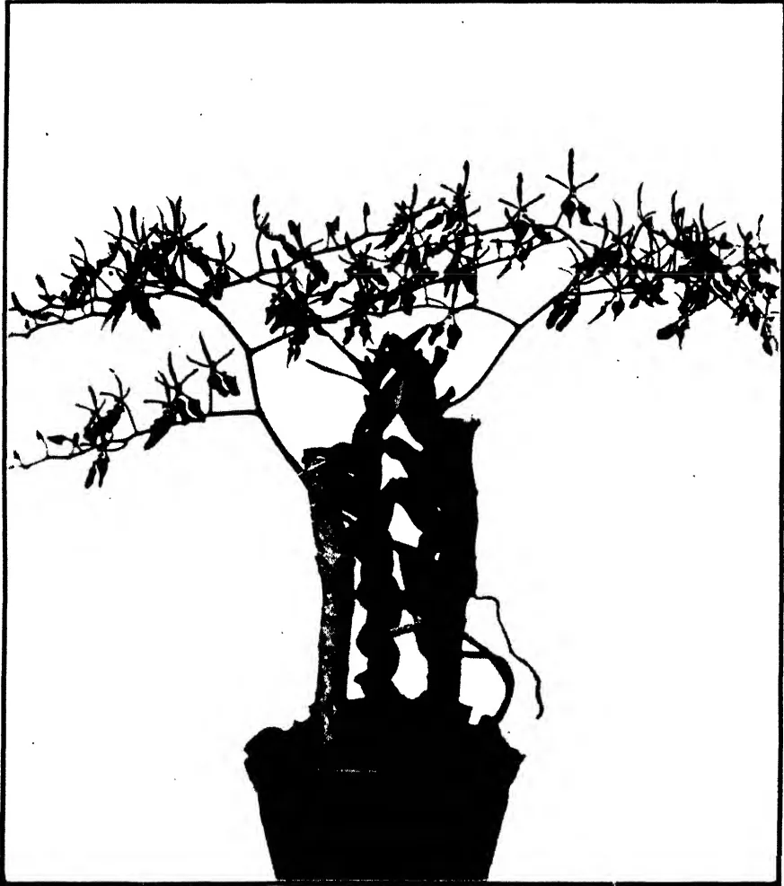
Renanthera Coccinea Lour
(Scarlet Scorpion Orchid)
K. J. ALEX. SYLVA, F.R.H.S.,
CURATOR, HENERATGODA BOTANIC GARDENS, GAMPAHA
THIS handsome orchid is a native of Cochin China and appears to have been introduced into Ceylon about the year 1884. Unlike the other members of the genus Renanthera, it is a very slow though hardy climber and rarely exceeds six feet in length. It is parasitic and thrives upon the trunks of trees in the woods of its native country. The plant sends out long, large, thick fleshy roots at the nodes at irregular intervals. The stem is straight, woody, yellowish green and as thick as the small finger. The leaves are some 3 to 4 inches long and about 1 to inches broad, thick, fleshy, emarginate at the apex and closely placed.
The flowers are borne on a long spreading scape arising from a node and bearing numerous scarlet pale-yellow mottled blooms on a many branched panicle. The flowers are about inches in diameter with obtuse lateral petals.
At the early stage of growth the plant requires a certain amount of care and attention for its successful cultivation. Small cuttings with a couple of roots may be placed in perforated pots in a compost of crocks, charcoal, decayed wood, chopped coconut husk and Sphagnum moss, and supported to pieces of thick cuttings of some tree with fleshy bark. When the plants have attained a height of 2 to 3 feet they may be transferred to fair-sized well-drained tubs or to the ground specially prepared for their reception. In the latter case the ground should be dug
213to a depth of about 18 inches and all soil removed. A six-inch layer of drainage material having been placed at the bottom, the remainder should be filled with the above mixture. Each plant should be given a couple of living supports planted on the sides, such as cuttings of Plumeria, Jacaranda, Peltophorum or any similar hardy plants that are likely to strike root in the compost. The cuttings of both orchid and their hosts need copious supplies of water at least till they show new growth. The buds of the host plant should occasionally be removed unless they are absolutely necessary to produce shade in a season of severe drought. Long-stemmed plants in flower, which have lost their basal leaves may be cut off at the leafy base and potted for decorative purposes. Removing cuttings from such plants will encourage the leafless stem to emit shoots at the nodes and these serve for further multiplication of the plant.
214J. C. HAIGH, PH. D.,
ECONOMIC BOTANIST,
THERE has appeared recently an account of work in Russia that is of considerable scientific interest and that may prove to be of great practical importance, if the Russian results can be substantiated and applied to agricultural practice. Briefly, the report announces the discovery of a method of pre-treatment of seed before sowing whereby the period subsequently taken by the plant to come to maturity is lessened without its yield being adversely affected. If it can be applied to agricultural practice it will have considerable results at least in the Temperate Zone, for it will mean that the advantages of early sowing will be attained under conditions where actual sowing in the field would be impossible owing to the presence of snow or to the low temperature, and will thus make possible, if not an extension of cultivation into higher latitudes, at least a more intensive cultivation in those regions where the present growing season is very short.
The Russians call the new process "Jarovizatzia", referred to in German publications as "Jarowisation", but in English the term is replaced by its Latinized equivalent "Vernalization". Its application is based on the distinction between the two phenomena of (1) the growth, or increase in weight and size of a plant, and (2) development, or the transition of the plant through successive phases, in its life history apart from mere vegetative growth. These phenomena are, or can be made to be, independent of one another.
"Under artificial conditions in a greenhouse it is possible arbitrarily to accelerate or retard reproduction by varying the conditions of light, darkness, temperature, humidity, etc. according to the specific requirements of each plant. Under ordinary field conditions this is not the case, and the vegetative period of a plant depends mainly upon the natural conditions of the regions in question. Hence in any particular area only those plants whose vegetative period is such that seed formation falls within the limits of the external factors characteristic for the region are suitable for cultivation. The essence of the method
215of vernalization is the elimination of the effect of natural geographical and climatic factors limiting the introduction into field cultivation of any desirable plant".
It is emphasized by the Russian workers "that the transition to the reproductive stage is not only independent of the size and age of the plant, but is not correlated in time with growth. The plant may change qualitatively in a required direction without continuing to grow and vice versa, the plant may grow and yet not effect the required qualitative change. The processes of vernalization are independent of growth but connected with the environment; if the external condition be favourable both for growth and qualitative change in the plant, the plant will grow and pass through the stages preparatory to reproduction. The fact that the process of preparation of a plant towards reproduction may occur in the embryo and may be separated in time from the growth of the plant makes possible the practical application of the method of vernalization".
The principles of vernalization have been applied to plants associated with tropical and sub-tropical regions as well as to plants of temperate climates. Tropical and sub-tropical, or "short-day" plants as they are called, require a combination of high temperature and short daily period of light for reproduction. It is stated that short-day plants require light for the processes of growth and darkness for reproduction, and that the influences are exerted by light and darkness themselves and not necessarily by an alternation of the two. If therefore the plant can at some stage of its development be given a concentrated dose of the darkness factor, it will require no further period of darkness to enable it to pass through the reproductive phase. This is done by forcing the seed to grow and then artificially stopping its growth, after which it is subjected to the influence of the appropriate external factor. "Thus the sowing material, represented by the pre-treated seed, may have the appearance agronomically of seed, but from this new point of view it should be regarded as seedlings". In actual practice, the seed is made to germinate by soaking in water, and is then subjected to darkness for a certain time at a certain temperature. The amount of water used, the time kept in darkness and the temperature are all adjusted so that germination is strictly controlled, and that the actual growth is as little as possible. It is necessary to determine by experiment the details for each crop but preliminary
216and soya bean and it has been found that plants raised from pre-treated seed have flowered appreciably before control plants. The technique for rice has not been worked out.
There are striking points of similarity in the above process and the methods used by the Sinhalese paddy cultivator and it is interesting to speculate whether the goiya has unconsciously anticipated the Russian scientists. Before sowing his fields, the paddy cultivator soaks his seed in water for 12 to 24 hours, then wraps it up in gunny bags or plantain leaves and leaves it for six to eight days to germinate after which it is sown. The reason given for germination is that seedlings are more quickly and easily anchored in the mud of the field and are not so likely to be washed away or concentrated in lowlying parts of the field as would be seed; and the reason for putting under pressure is that germination is thereby hastened and the resulting seedlings are more evenly germinated. There is no deliberate attempt to exclude light from the heap, yet it is almost inevitable that light should be excluded, and there are thus created all the conditions that are said to be necessary for vernalization. Is it not then possible that the villager's seed is being vernalized and that seed of the same variety sown dry at the same time would take appreciably longer to come into ear? Experiments are in hand to determine these points, and of them an account will be given in due course. It should be stated that the temperatures reached in a heap of paddy seed under pressure are much higher than any that have been hitherto determined for the vernalization of tropical crops, and that the amount of water used for soaking in the Russian experiments is much less than the amount the seed will absorb; nevertheless, the general methods are so similar that it would be surprising if similar results were not achieved.
On the other hand should further shortening of the vegetative period be possible by suitable treatment, it may be that a high yielding Maha strain of paddy may be made to mature, without loss of yield, in the space of a Yala season, or that a high yielding strain of whatever age may be introduced into a tract where it could not otherwise be grown on account of a slight difference in age. These questions remain to be investigated.
For information on the principles and methods of vernalization I am indebted to Bulletin No. 9 of the Imperial Bureau of Plant Genetics, from which I have quoted freely.
217[The following results with organic manures are extracted from the Department of Agriculture, Burma, Bulletin No. 29 which is a Report on Manurial Experiments carried out in Burma by the Agricultural Department complied by R. Watson, Deputy Director of Agriculture, Burma. To those further interested the full Bulletin is recommended for study.—Ed. T.A.]
A crop in Burma prior to 1912 a comprehensive experiment was designed to answer the following questions:—
The method of experiment adopted was to apply varying quantities of farmyard manure alone, farmyard manure in combination with minerals, and finally minerals alone. The plots were long and rectangular in shape and each treated plot had a corresponding control or untreated plot opposite to it.
Subsequent investigation has shown that this method of experiment, while good enough for observational purposes, is unsuitable for exact quantitative work. It however served a very useful purpose in throwing a good deal of light on the requirements of the rice plant and has enabled similar additional work to be considerably narrowed down. The experiment was laid down at Hmawbi farm in 1913-14 and carried on for five years, after which period residual effects were ascertained for a further period of five years.
This experiment was duplicated at the Mandalay farm where paddy is grown under irrigation.
* By R. Watson, N.D.A., I.A.S., Deputy Director of Agriculture, Burma.
218MANURIAL TRIALS AT HMAWBI FARMAverage yield over five years| Treatment rates per acre yearly (1) |
Yield per treated plot (lb.) | Control (lb.) | Average increase or decrease per cent. on Control (Grain) (6) |
||
|---|---|---|---|---|---|
| Grain (2) |
Straw (3) |
Grain (4) |
Straw (5) |
||
| 1. Cattle manure 30 lb. | 194 | 320 | 160 | 228 | + 21 |
| 2. Cattle manure 50 lb. | 215 | 363 | 165 | 270 | + 30 |
| 3. Cattle manure 70 lb. | 242 | 433 | 148 | 239 | + 63 |
| 4. Cotton cake 50 lb. | 218 | 413 | 154 | 270 | + 41 |
| 5. Cattle manure 30 lb. Superphosphate 20 lb. Sulphate of Potash 20 lb. |
216 | 416 | 143 | 227 | + 51 |
| 6. Cattle manure 30 lb. Superphosphate 20 lb. |
202 | 421 | 138 | 230 | + 46 |
| 7. Cattle manure 30 lb. Bone meal 20 lb. |
213 | 414 | 142 | 222 | + 50 |
| 8. Bone meal 20 lb. | 178 | 317 | 140 | 221 | + 27 |
| 9. Superphosphate 20 lb. | 190 | 353 | 134 | 211 | + 42 |
| 10. Potassium Sulphate 20 lb. |
148 | 275 | 129 | 216 | + 15 |
| 11. Nitrate of Soda 30 lb. | 116 | 207 | 124 | 209 | - 6 |
| 12. Nitrate of Soda 30 lb. (top dressing). |
147 | 251 | 124 | 200 | + 18 |
| 13. Nitrolim 30 lb. | 151 | 279 | 126 | 205 | + 20 |
| 14. Sulphate of Ammonia 30 lb. |
187 | 365 | 127 | 204 | + 47 |
| 15. Lime 2,000 lb. | 175 | 321 | 127 | 203 | + 37 |
| 16. Ammonium Sulphate 30 lb. Superphosphate 20 lb. Sulphate of Potash 20 lb. |
208 | 427 | 124 | 198 | + 68 |
The layout in this experiment does not admit of a true estimate of standard error, the chief difficulty being the want of replications. General conclusions may, however, be drawn from a study of the figures:
(1) Organic manures, especially farmyard manure, give a considerable increase and may be safely recommended.
(2) The greater the application of nitrogen the greater the yield of grain.
(3) Nitrogen in the ammoniacal form is the most effective. This is followed by organic nitrogen, while nitrogen applied as nitrate of soda gives poor results.
(4) Superphosphate shows a distinct increase in the yield.
219(5) Potash does not appear to be of any great importance as a paddy manure in Lower Burma.
The residual effects were ascertained for the five years 1918-19—1922-23; but as the figures are not complete for all the control plots results are not quite accurate and are therefore not recorded.
A general analysis of the figures, however, indicates that plots Nos. 11, 12, 13 and 14 which were treated with nitrate of soda, sulphate of ammonia and nitrolim, respectively, gave lower mean yields than their respective controls.
| Treatment rates per acre yearly (1) |
Yield per treated plot (lb.) | Control (lb.) | Average increase or decrease per cent. on Control (Grain) (6) |
||
|---|---|---|---|---|---|
| Grain (2) |
Straw (3) |
Grain (4) |
Straw (5) |
||
| 1. Cattle manure 30 lb. | 115.0 | 197.2 | 84.3 | 120.6 | + 35.7 |
| 2. Cattle manure 50 lbs. | 121.5 | 225.4 | 80.3 | 112.9 | + 51.3 |
| 3. Cattle manure 70 lb. | 135.3 | 259.1 | 82.8 | 127.4 | + 63.4 |
| 4. Cotton cake 50 lb. | 121.9 | 211.6 | 98.3 | 161.3 | + 24.0 |
| 5. Cattle manure 30 lb. Superphosphate 20 lb. Sulphate of potash 20 lb. |
132.4 | 236.2 | 103.8 | 190.6 | + 27.5 |
| 6. Cattle manure 30 lb. Superphosphate 20 lb. |
144.6 | 231.1 | 105.4 | 167.2 | + 37.2 |
| 7. Cattle manure 30 lb. Bonemeal 20 lb. |
129.8 | 214.1 | 77.0 | 118.0 | + 68.5 |
| 8. Bonemeal 20 lb. | 96.0 | 156.0 | 64.8 | 92.5 | + 48.1 |
| 9. Superphosphate 20 lb. |
103.7 | 155.8 | 41.9 | 59.8 | + 147.2 |
| 10. Sulphate of potash 20 lb. |
61.2 | 94.9 | 42.5 | 66.3 | + 44.0 |
| 11. Nitrate of Soda 30 lb. | 63.2 | 80.2 | 48.7 | 65.6 | + 29.8 |
| 12. Nitrate of Soda 30 lb. (top dressing) |
71.6 | 95.2 | 52.1 | 69.3 | + 56.6 |
| 13. Nitrolim 30 lb. | 97.8 | 143.6 | 63.6 | 84.0 | + 53.7 |
| 14. Sulphate of Ammonia 30 lb. |
75.4 | 98.1 | 52.6 | 69.6 | + 44.0 |
| 15. Lime 2,000 lb. | 53.5 | 71.4 | 47.1 | 63.4 | + 13.5 |
| 16. Ammonium Sulphate 30 lb. Superphosphate 20 lb. Sulphate of Potash 20 lb. |
116.0 | 176.0 | 45.1 | 58.5 | + 157.2 |
As in the Hmawbi experiment the want of replications does not admit of a true estimate of standard error.
A study of the figures however gives the following indications:
(1) Cattle manure alone gives appreciable increases in yields and can be recommended with safety.
(2) Among the nitrogenous manures sulphate of ammonia does not stand out clearly as in the Hmawbi experiment.
(3) Superphosphate alone and in combination with sulphate of ammonia and sulphate of potash gives high increases although when applied with cattle manure, the increased yield is not outstanding.
(4) Sulphate of potash gives indications of being more necessary than in Lower Burma.
Residual Effects.—These were studied for two or three years but the fluctuations from year to year, owing to insect attack, etc., rendered the results difficult of interpretation. The main indications were chemical manures leave little residue after the first year but that the heavier dressings of farmyard manure show up for two or three years.
In addition to the plots treated with indigenous manures in the Hmawbi and Mandalay permanent series, which have been discussed, a number of trials have been carried out on the newer paddy farms at Myaungmya, Mudon and Akyab. The results of these are given and may be compared with the Hmawbi and Mandalay ones.
Akyab.—The experiment was part of one in which lime and a complete dressing of artificial fertilizers were tested along with farmyard manure.
The trial was commenced in the year 1925-26, just after the opening of the farm, and continued for three years, in order to find the effect of farmyard manure on poor paddy soil. Figures for straw are not available as the straw was not harvested during the first two years and unexpected rain prevented proper weighing in the third year.
Rotation.—Normal, i.e., paddy yearly.
Plots.—5 acre. Rectangular in shape.
Replications.—Three.
Scatter.—No randomization. Plots arranged in regular order.
| Year | Treatment | Average yield of grain per acre (lb.) | Average increase per cent. on control | Standard error per cent. on control | Significance |
|---|---|---|---|---|---|
| (1) | (2) | (3) | (4) | (5) | (6) |
| 1925-26 | Control | 1253.6 | — | — | — |
| Farmyard manure 50 lb. N2 per acre |
1611.66 | + 28.5 | 5.38 | 5.3 | |
| 1926-27 | Control | 1464.84 | — | — | — |
| Farmyard manure 50 lb. N2 per acre |
1769.84 | + 20.8 | 5.16 | 4.0 | |
| 1927-28 | Control | 1083.4 | — | — | — |
| Farmyard manure 50 lb. N2 per acre. |
1244.6 | + 14.9 | 8.3 | 1.8 |
Conclusions.—The increases in yield although significant over the controls for the first two years amount to an average annual increase of some 21 per cent. only compared with 30 per cent. at Hmawbi for a similar dressing and 34.9 per cent. at Mandalay for a dressing of 40 lb. per acre. As no analysis of the manure was made it cannot be definitely concluded on the result of this trial, that farmyard manure has a less beneficial effect on paddy at Akyab than it has at Hmawbi or Mandalay.
Synthetic farmyard manure was manufactured at Hmawbi farm in 1924. After preparing for three months it was found to contain 592 per cent. of nitrogen. The experiment was designed as follows:—(i) synthetic farmyard manure at 50 lb. per acre, (ii) ordinary farmyard manure at 50 lb. per acre, (iii) straw in quantity per acre equivalent to that used in the manufacture of the synthetic farmyard manure, (iv) ammonium sulphate and calcium carbonate in quantities per acre equivalent to that used in the manufacture of the synthetic farmyard manure.
The total net increases in grain over the control for the different treatments are as follows:
Synthetic farmyard manure 34.67 per cent., ordinary farmyard manure 35.1 per cent., straw 18.9 per cent. 26.47 per cent. It would appear that for the paddy crop the increase in yield from synthetic farmyard manure is very similar to that from ordinary farmyard manure though from the economic point of view the additional cost of manufacturing the synthetic product places it at a distinct disadvantage.
Bats' guano is produced in the Province but is not easily obtainable except in the immediate localities of the deposits. Its scarcity and high cost render it of little importance as a manure for paddy, so only two trials are recorded.
The manure used showed an analysis 7.40 per cent. Nitrogen (), 3.41 per cent. and 1.02 per cent. Potash ().
It had been ascertained from previous observation trials that the manure is an extremely active one and caused a strong leafy growth and tendency to lodge late in the season.
| Year | Treatment | Average yield per acre. | Average increase or decrease per cent. on control (Grain) | Standard error per cent. on control | Significance | |
|---|---|---|---|---|---|---|
| Grain lb. | Straw lb. | |||||
| (1) | (2) | (3) | (4) | (5) | (6) | (7) |
| 1924-25 | Control | 1,874 | 4,236 | — | — | — |
| 30 lb. | 2,245 | 4,933 | + 20.0 | — | 3.8 | |
| 50 lb. | 2,326 | 5,450 | + 24.0 | — | 4.6 | |
| 70 lb. | 2,271 | 5,593 | + 21.0 | 5.23 | 4.0 | |
| 1925-26 | Control | 1,105 | 2,874 | — | — | — |
| 30 lb. | 1,197 | 2,762 | + 8.3 | — | 1.07 | |
| R.E. 50 lb. | 1,376 | 3,488 | + 25.0 | — | 3.22 | |
| 70 lb. | 1,197 | 2,960 | + 8.3 | 7.76 | 1.07 | |
Applications at a rate to give 30 lb. nitrogen per acre showed an increase of 20 per cent. of grain over the control and at a rate of 50 lb. of nitrogen per acre 24 per cent.
Bats' guano gives significant increases in yield but the high cost and small amounts available prevent its competing with other manures for the paddy crop.
Rice bran is produced in large amounts locally and if obtainable at a low price would be of considerable value as a manure.
The demand for this bye-product for other purposes is however too strong to allow of its being utilised as a manure.
In this experiment coarse rice bran was applied at the rate of 20 lb. nitrogen per acre in 1928 and the residual effect ascertained during 1929 and 1930. The nitrogen content was ascertained by the Agricultural Chemist to be 1.93 per cent.
The conclusions arrived at were that as a manure rice bran is of value but the price at which it is normally sold does not make its use an economic one.
Conclusions.—Significant increases on the controls are indicated at Hmawbi and Myaungmya. As a manure rice bran is therefore of value if obtainable at a much cheaper rate than that at which it is normally sold.
Fish manure is an indigenous manure made chiefly in Mergui, in the Tenasserim Division of Lower Burma.
It is a comparatively costly manure and not easily available except where produced. Chemical analysis showed a nitrogen content of 4.065 per cent. and a relatively high percentage of .
Two series of plots were manured in 1926 and the residual effect ascertained during the four succeeding years.
The manure was applied at 10, 20 and 30 lb. per acre.
Conclusions.—Fish manure appears to have a stimulating effect on the paddy crop in the year of application. A very considerable residual effect is also apparent though the yields shown in this experiment are somewhat irregular. The high cost of the manure prevents its general use as a fertilizer.
The water hyacinth has spread very rapidly in most of the waterways of Burma and an experiment was commenced at Myaungmya Farm in 1928-29 to ascertain the value of water hyacinth compost as a fertilizer for paddy.
The following method was adopted in the preparation of the compost. The hyacinth was collected in October and after sundrying for ten days an 18-inch layer was put into an enclosure measuring 15 ft. 12 ft. A similar
223layer of cowdung and earth, in the ratio of 6:3, was added and the whole thoroughly mixed. The process was repeated until a height of 5 feet had been reached. Thorough mixing was then done monthly until May when the compost was applied to the plots.
An analysis of the compost by the Agricultural Chemist showed:
| Total Nitrogen | ... | ... | 0.269 per cent. |
| P2O5 | ... | ... | 0.208 per cent. |
| K2O | ... | ... | 0.759 per cent. |
Compost was applied at the rate of ten tons per acre, equivalent to 59 lb. N2 in 1928-29, and the residual effect ascertained for the two succeeding years.
Rotation.—Normal, i.e., paddy yearly.
Plots.—165 feet × 10 feet. Rectangular in shape.
Replications.—5 = 10 plots.
Scatter.—Manured plot alternate with control.
| Year | Treatment | Average yield per acre. | Average increase or decrease per cent. on control Grain | Standard error per cent. on control | Significance | |
|---|---|---|---|---|---|---|
| Grain | Straw | |||||
| (lb.) (3) |
(lb.) (4) |
|||||
| (1) | (2) | (5) | (6) | (7) | ||
| 1928-29 | Control | 1,071 | 1,902 | — | — | — |
| Manured | 1,762 | 2,853 | + 59.0 | 5.1 | 11.6 | |
| 1929-30 | Control | 1,632 | 3,180 | — | — | — |
| K.E. Manured | 2,043 | 4,015 | + 25.2 | 2.48 | 10.16 | |
| 1930-31 | Control | 1,085 | 2,921 | — | — | — |
| R.E. Manured | 1,204 | 2,521 | + 11.0 | 10.11 | 1.1 | |
Remarks.—No abnormal tillering or incidence of pest or disease attack noted.
Conclusions.—The increase in yield recorded is significant over the controls for the first and second years and would indicate that where labour is cheap the manufacture of water hyacinth compost should be encouraged.
“Myetni” (Ischaemum Laxum) grows freely on the Hmawbi farm paddy area and the following experiment was designed to test its value as a green manure alone and in combination with superphosphate, on an area of heavy stiff clay where the crop was generally poor. The layout included
224controls, "Myetni" alone, superphosphate alone, and "Myetni" plus superphosphate. Superphosphate was applied at the rate of cwt. per acre.
Rotation.—Normal, i.e., paddy yearly.
Plots.—12 feet 165 feet = acre.
Replications.—4 = 16 plots.
Scatter.—No randomization, plots arranged in regular order.
| Year | Treatment | Average yield per acre | Average increase or decrease per cent. on control | Standard error per cent. on control | Significance. | |
|---|---|---|---|---|---|---|
| Grain (lb.) | Straw (lb.) | |||||
| (1) | (2) | (3) | (4) | (5) | (6) | (7) |
| 1925-26 | Control | 1,518 | 2,926 | — | — | — |
| Superphosphate | 1,738 | 3,212 | + 14.5 | — | 1.45 | |
| "Myetni" alone | + 5.9 | — | .59 | |||
| "Myetni" + Superphosphate | 1,826 | 3,696 | + 20.3 | 10.0 | 2.03 | |
| 1926-27 R.E. |
Control | 1,687 | 3,201 | — | — | — |
| Superphosphate | 1,949 | 3,471 | + 15.5 | — | 3.69 | |
| "Myetni" alone | 1,949 | 3,643 | + 15.5 | — | 3.69 | |
| "Myetni" + Superphosphate | 2,068 | 3,667 | + 27.6 | 4.2 | 6.57 | |
| 1927-28 R.E. |
Control | 1,566 | 2,744 | — | — | — |
| Superphosphate | 1,375 | 3,491 | - 12.2 | — | 1.4 | |
| "Myetni" alone | 1,643 | 2,542 | + 4.9 | — | 0.56 | |
| "Myetni" + Superphosphate | 1,696 | 4,092 | + 8.4 | 8.7 | 0.96 | |
General Conclusions.—The increases in yield due to treatments, though high, are not statistically significant.
Previous trials carried out in 1919 and 1924 in which lime had been applied at the rates of 2,000 lb. and 6,000 lb. per acre respectively indicated that such heavy dressings were not advisable or profitable.
Results noted below are for an experiment, commenced in 1927 and carried on till 1930, in which a dressing of 560 lb. per acre, of magnesium free lime was given in the first year and the residual effects studied in the following years:
Rotation.—Normal
Plots.—165 feet 16 feet = acre. Rectangular in shape.
Replications.—4 = 8 plots
Scatter.—Alternate control and treated.
225| Year | Treatment | Average yield per acre | Average increase or decrease per cent. on control | Standard error per cent. on control | Significance. | |
|---|---|---|---|---|---|---|
| Grain (lb.) (3) |
Straw (lb.) (4) |
|||||
| (1) | (2) | Grain (5) |
(6) | (7) | ||
| 1927 | Control | 803 | 1,224 | — | — | — |
| Limed | 843 | 1,259 | 4.9 | 15.5 | .32 | |
| 1928 | Control | 1,376 | 2,571 | — | — | — |
| R.E. Limed | 1,659 | 3,176 | 20.6 | 4.9 | 4.2 | |
| 1929 | Control | 1,408 | 2,448 | — | — | — |
| R.E. Limed | 1,465 | 2,656 | 3.4 | 8.37 | .4 | |
| 1930 | Control | 1,598 | 2,706 | — | — | — |
| R.E. Limed | 1,608 | 2,936 | .62 | 2.31 | .3 | |
Conclusions.—This trial was carried out on a "bad patch" of the farm and although a total gain of 29 per cent. in grain yield has resulted no definite conclusions can be drawn. Further experiments with different amounts of lime will be carried out.
To find the effect of lime when applied along with cattle manure on the paddy crop.
Lime was applied at varying rates from 5 cwt. to 60 cwt. per acre in conjunction with a non-varying application of farmyard manure equal to 50 lb. N2 per acre. The plots were treated in 1927-28 and residual effects studied over the next three years.
Conclusions.—Increases in yields in the first year are very considerable and would indicate that lime may be applied at rates of up to 40 cwt. per acre on soils of this type.
Residual effects show progressive increases up to treatments of 40 cwt. per acre for the second and third year while in the fourth year treatments above 10 cwt. per acre show a falling off in yield.
226THIS paper deals with studies on the inheritance of the following characters in rice: Length of glumes, absence of ligules, brittleness, shattering, dwarfness, awns, color of awns, color of glumes, color of apiculi, and earliness.
Most varieties of rice (Oryza sativa L.) have short (outer) glumes. The glumes usually vary in length from one-fifth to one-third of that of the lemma and palea. However, in some varieties the glumes are nearly as long, or quite as long, as the lemma and palea. These long-glumed varieties are reported to be resistant to lodging and shattering. They are not grown on a commercial scale in the United States.
Parnell et al. and Kato and Van der Stok, according to Ikeno, obtained in populations plants with short and long glumes in a ratio of 3:1. Chao, in a cross between a glutinous long-glumed variety and a common short-glumed variety, obtained in a ratio of 15 plants with short to 1 plant with long glumes. In this case short glumes were due to dominant duplicate genetic factors. Ramiah et al. in a cross between short and long-glumed varieties, obtained plants that had glumes intermediate in length between the parents. In the populations the parental and intermediate glume lengths were obtained. These investigators placed the plants with respect to glume length in three groups, namely short, intermediate, and long, and by this arbitrary grouping they obtained approximately a 1:2:1 ratio. However, there was much variation in the length of the glumes of plants classified as intermediate. In this group the glumes varied in length from almost as short as the short-glumed parent to nearly as long as the long-glumed parent. This indicates that the plants classed as intermediate for glume length were not genetically similar and suggests that the difference between the short-glumed and the long-glumed varieties probably was due to multiple factors.
In 1926 Yosemite, a normally short-glumed variety, was crossed with "Nimai Kawa Mochi" and "Weitin", long-glumed varieties. The parents and plants were grown in 1927. The spikelets of plants from both crosses had normal short glumes.
In the population of the cross Yosemite Nimai Kawa Mochi 1,116 plants were grown to maturity. Of these 831 plants had spikelets with short glumes and 285 plants had spikelets with long glumes. These numbers agree with a monohybrid 3:1 ratio, the deviation being only plants. Of the 1,047 Yosemite Weitin plants 785 had
* By Jenkin W. Jones, Senior Agronomist, Division of Cereal Crops and Diseases, Bureau of Plant Industry, United States Department of Agriculture in Journal of Agricultural Research, Vol. 47, No. 10, November 15, 1933.
227short glumes and 262 had long glumes the deviation from a 3:1 ratio being plants. In the total population of the two crosses there were 1,616 plants with short glumes and 547 with long glumes, the deviation from a monohybrid ratio being plants.
Fifteen random progenies from the cross Yosemite Nimai Kawa Mochi and 16 progenies from the cross Yosemite Weitin were grown in the . Of the 15 progenies, 7 segregated for short and long glumes, 3 bred true for short glumes, and 5 bred true for long glumes. Of the 16 progenies, 7 segregated for short and long glumes, 4 bred for short glumes, and 5 bred true for long glumes. The results for both groups are shown in table 1.
Table 1.—Breeding behaviour of progenies from the crosses Yosemite Nimai Kawa Mochi and Yosemite Weitin grown in at the Biggs Rice Field Station, Biggs, Calif., 1929.
| Cross | Number of progenies | Number of plants with glumes | Deviation from 3:1 ratio and probable error | |
|---|---|---|---|---|
| Short | Long | |||
| Yosemite Nimai Kawa Mochi | 3 | 605 | — | — |
| 7 | 904 | 297 | ||
| 5 | — | 837 | — | |
| Yosemite Weitin | 4 | 704 | — | — |
| 7 | 964 | 346 | ||
| 5 | — | 765 | — | |
| Total for 14 segregating progenies | 1,868 | 643 | ||
In the seven segregating progenies of each cross producing plants with short and long glumes the deviations from 3:1 ratio were less than twice the probable error in all progenies, except for one in each cross. The results show that short glumes are dominant to long glumes and that the long-glumed and short-glumed varieties used in this study differ by a single genetic factor for this character.
In commercial rice varieties the ligules at the juncture of the leaf blade and sheath are usually well developed. A liguleless variety, "Tsutsuito", the only one known to the writer, was obtained in Japan in 1925. Tsutsuito is late-maturing, liguleless, and awnless. It was crossed with "Kotake", also late-maturing, and partly awned.
The plants had normal ligules and were partly awned like the male parent Kotake. An population, consisting of 1,024 plants was grown in 1927. Of this number 796 plants had normal ligules and 228 were liguleless, the deviation from 3:1 ratio being plants.
Fifteen random progenies were grown in the in 1928, of which 6 consisting of 989 plants, bred true for normal ligules, 5 segregated and gave 655 plants with ligules to 195 without ligules and 4 consisting of 725 plants, bred true for the liguleless character.
228The five progenies that segregated in produced 655 plants with and 195 plants without ligules, the deviation from 3:1 ratio being plants. According to Ikeno, Kato found that normal ligules were dominant to the liguleless character in rice. He obtained in 3 plants with normal ligules to 1 without ligules.
The culms and leaves of commercial rice varieties vary in strength and toughness. Under normal conditions some varieties do not lodge, whereas others lodge badly. Between these two extremes there are various degrees of resistance to lodging. However, all the commercial varieties are normal in that the straw possesses a certain degree of toughness or tensile strength and is somewhat resistant to complete breaking by bending or twisting. In contrast to the normal toughness of the culms and leaves of the commercial varieties is the extreme brittleness of the culms, leaves and other parts of "Kama Irazu" a variety obtained in Japan. This variety does not lodge, although the stalks bend over under the weight of heavy panicles. However, in both the green and the mature stages the leaves and culms are so brittle that they break off at the slightest pressure. The writer was informed that the name Kama Irazu means "no need of a sickle in harvesting". This variety was so named because a standing plant gathered into the hand snaps off when given a slight twist. The panicles also are brittle and the spikelets fall off easily. In threshing, the lemma and palea often are removed and the kernel is easily broken.
In the cross Kama Irazu Colusa (C.I. 1600, a normal variety) the plants had normal (not brittle) stalks, leaves, and panicles. In the second generation there were 479 plants with normal stalks, leaves and panicles to 156 plants with these parts brittle. The deviation from a 3:1 ratio was plants. The segregation into normal and brittle plants was very distinct. The ordinary green rice leaf often can be folded up without breaking into separate parts, but the brittle leaf is easily snapped off when bent. Owing to this fact it was possible to classify the plants even before they headed.
Twenty-five random progenies were grown in the . Six of these, consisting of 292 plants, bred true for normal plants; 14 segregated, producing 453 normal plants to 142 brittle ones; and 5, consisting of 223 plants, bred true for the brittle character. The segregation of each of the 14 progenies agreed well with a ratio of 3 normal plants to 1 brittle plant, the deviation for the 14 progenies being plants.
Analyses were made of the straw and grain of Kama Irazu and of Colusa (C.I. 1600). The straw of Kama Irazu contained less ash, silica, and crude fiber than that of Colusa, but a higher percentage of lignin, nitrogen, and moisture. The chemical data do not show the cause of brittleness in Kama Irazu, but this character may be due to cell structure or arrangement.
Varieties differ greatly with respect to the tightness with which the grain is held on the panicle before and after maturity. In certain varieties the grain is held so tight that threshing is difficult. In others the grain shatters very easily, even when carefully handled. Between these two extremes there probably are varieties representing all degrees of tightness.
229In the United States commercially grown rice varieties are more or less resistant to shattering but do not hold the grain so firmly that they cannot be satisfactorily threshed with modern machinery. Varieties that shatter too easily are not suited for harvesting with grain binders. In countries where rice is harvested by hand and threshed by treading and flailing, varieties that shatter rather easily are grown in preference to those that shatter less readily.
Takenouchi reports that at the juncture of the rice grains and their supporting stalks there is a special tissue consisting of from 1 to 3 layers of lignified thin-walled cells. In rices that shatter easily these cells develop and dry up early, whereas in rices that shatter less easily they do not dry up so early.
According to Matsuura, Kato crossed a non-shattering rice with one that shattered easily. In the the plants were non-shattering and in the the ratio of non-shattering plants to those that shattered easily was 3:1.
The Caloro and Colusa varieties, which are extensively grown in California, do not shatter easily if properly handled. These were crossed with Chinese varieties that shattered easily. The crosses were C.I. 7075 Colusa, C.I. 7078 Caloro, and C.I. 7389 Caloro.
The plants of these crosses of these plants appeared to be intermediate. They did not shatter so readily as did the Chinese varieties, and yet they did not seem to hold the grain quite so firmly as did Colusa and Caloro.
Owing to various degrees of sterility in the plants of these crosses and to the failure of many individual plants to mature grain, only part of the population was suitable for a study of the inheritance of shattering.
On the basis of the ease or difficulty of stripping the grains from the mature panicles of plants standing in the field, it was not hard to determine relative resistance to shattering. Only a few trials were necessary to reduce this determination to a fair degree of accuracy. The plants from which it was easy to remove the seed were classed as easily shattered, whereas those from which it was rather difficult to remove the seed were classed as non-shattering.
In the population from the cross C.I. 7075 Colusa there were 29 non-shattering plants to 11 that shattered readily; from the cross C.I. 7078 Caloro there were 99 non-shattering plants and 46 that shattered readily; and from the cross C.I. 7389 Caloro there were 249 non-shattering plants and 109 that shattered readily. In each cross these numbers agree reasonably well with a 3:1 ratio. The deviations from this ratio in the order given were plants, plants, and plants. The results that in the varieties used in this study the non-shattering and shattering characters probably differ by a single genetic factor.
Dwarf varieties of rice often are grown at rice experiment stations. While they are of no economic importance, they are of interest to plant breeders. According to Ikeno a dwarf rice plant was described by Iwasaki in 1828.
230Parnell et. al first reported on studies of the inheritance of dwarfness in rice. They found that dwarfness is a simple recessive to normal. The average height of the normal parent used in their study was 49.7 inches and that of the dwarf parent 27.9 inches. The average height of the normal segregates in was 50.5 inches and of the dwarf segregates 31.2 inches.
Sugimoto states that dwarfness usually is a simple recessive to normal. He found a dwarf mutant in a true-breeding normal variety, Waseshinriki, which was a simple recessive to normal. Another dwarf appeared as a mutant in a true breeding strain isolated from a hybrid. This dwarf was dominant to normal and in the segregation produced 3 dwarf plants to 1 normal.
Akemine crossed the normal variety Akage with the dwarf varieties "Daikoku" and "Ebisu". In the segregation both crosses produced 5 normal plants to 1 dwarf. In a cross between the dwarf varieties Daikoku Ebisu the was normal and the segregation in gave 9 normal to 3 Daikoku to 3 Ebisu to 1 new very short dwarf type, Kodaikoku. Akemine assumed that the genetic constitution of normal was AABB, Ebisu AAbb, Daikoku aaBB, and Kodaikoku aabb.
Nagai reported a dwarf mutant that was recessive to normal. This mutant showed a peculiar mode of inheritance in that in successive generations mutant individuals gradually increased in proportion to normals.
The writer obtained in Japan seed of a dwarf variety known as "Daikokune". This variety was short, rather wide, erect leaves, short culms, and a short compact panicle that looks more like a spike of wheat than a panicle of rice. It is partly awned and the kernel is short and round and enclosed by a rather coarse hull. The cross Yosemite Daikokune was made in 1927. Yosemite is an early maturing, awnless variety of normal height.
The plants were intermediate in maturity, partly awned, normal in appearance, and somewhat taller than the normal parent. The average height of the normal parent was 38 inches, of the dwarf parent 14 inches, and of the plants 43 inches. The average length of 10 panicles of the normal variety was 4.7 inches, of the dwarf parent 2.3 inches, and of the plants 4.6 inches.
The population consisted of 677 plants that were grown to maturity of which 547 were normal and 130 were dwarf. Segregation into the two groups was very distinct. The deviation from 3:1 ratio was plants, or more than five times the probable error, whereas the deviation from 13:3 ratio was only plants. However the segregation of random progenies grown in shows that the 3:1 ratio is correct.
In the population the average height of 100 normal segregates was 37.4 inches and the average height of 100 dwarf segregates was 16.9 inches. The average height of 42 plants of the normal variety was 32.6 inches and the average height of 42 dwarf plants was 13.9 inches. The normal and dwarf segregates in exceeded the normal and dwarf parent varieties in average height. Of 25 random progenies grown in 1930, 7 consisting of 367 plants, bred true for normal stature, 15 segregated for normal and dwarf plants, and 3, consisting of 86 plants, bred true for
231dwarf plants. Each of the 15 segregating progenies produced normal and dwarf plants in numbers that agreed well with a 3:1 ratio. The total for the 15 progenies was 598 normal to 181 dwarf plants, the deviation from a 3:1 ratio being plants. In the varieties used in this study dwarf character was a simple recessive to normal.
Rice varieties may be classed as fully awned, partly awned, and awnless. In fully awned varieties all spikelets are awned but the awns often vary in length. In partly awned varieties, awned and awnless, spikelets are present on the same panicles. In true awnless varieties the awns are absent and do not develop under any conditions. In some varieties the main panicle may be awnless, whereas some of the spikelets on branch culms and later tillers may be partly awned. The extent of development of the awns in rice is controlled by climatic conditions and soil fertility as well as by genetic factors. In some crosses it is difficult to separate the awn types because climatic conditions and soil fertility have such a marked influence upon their development.
Chao, Hoshino, Jones, Mendiola, Nagai, Yamaguchi, and Kato and Van der Stok, according to Matsuura have reported that in awns are dominant or partially dominant to the awnless character in rice. A segregation in of 3 awned or partly awned plants to 1 awnless plant has been reported by Jones, Nagai, and Chao, and a ratio of 9 fully awned to 6 partly awned to 1 awnless plant by Jones. The awned group in the 15:1 ratio reported by Chao were designated as fully awned, mostly awned and rarely awned plants.
In the few crosses between fully awned and awnless varieties that have been studied by the writer, three groups of awned plants have been observed in the segregations. These are fully awned plants, partly awned plants with awns about the same length as in fully awned plants but present only on part of the spikelets on a panicle, and partly awned plants with short awns often confined to the spikelets near the tip of the panicles. The plants in this last group may be referred to as tip-awned. It appears that fully awned varieties often differ from awnless varieties by two independent genetic factors. If this is true the fully awned group from a cross between a fully awned and an awnless variety should differ from the partly awned and tip-awned groups by a single genetic factor, and the partly awned group should differ from the tip-awned group by two genetic factors. Data in support of this view are reported herein.
In the cross Colusa (awnless) Aikoku (fully awned) the plants were partly awned. In the segregation 607 plants were classed as fully awned, partly awned and tip-awned to 71 awnless plants. The deviation from a 15:1 ratio in this case is plants. This deviation is very large.
Twenty-five random progenies were grown in . Five progenies produced 225 fully, partly, and tip-awned plants to 13 awnless plants. These numbers agree in those expected in a 15:1 ratio, the deviation being plants. Six progenies, consisting of 309 plants, produced fully awned, partly awned, and tip-awned plants in what appeared to be a
232ratio of 3 fully awned to 1 partly awned, and 3 partly awned plants to 1 tip-awned. However, the awn types in this cross could not be separated with certainty. Ten progenies produced no fully awned plants, but 347 partly awned and tip-awned plants to 120 awnless plants, deviating from a 3:1 ratio by plants. One progeny, consisting of 46 plants, appeared to be fully awned, and three progenies, consisting of 119 plants appeared to produce only partly awned or tip-awned plants. The number of random progenies was too small to yield all the possible segregations and true breeding groups that were expected. However, the results, suggest that the fully awned variety Aikoku probably differs from the awnless variety Colusa by two main genetic factors for awns.
In the cross Caloro (partly awned) Butte (fully awned) the plants were fully awned. The segregation for awns was not studied in , but a study was made of the segregation of 11 random progenies grown in . Each of the 11 progenies and the total of the 11 progenies produced fully awned and partly awned plants in a ratio of 3:1. In the 11 progenies there were 353 fully awned to 99 partly awned plants, the deviation from a 3:1 ratio being plants. This deviation which is more than three times the probable error, was probably due to errors in classifying the plants resulting from the natural variability of awn development. In the individual progenies there were 3 small plus deviations, 7 minus deviations, and one progeny with no deviation from the 3:1 ratio.
Colusa, Chinese Originario, Maratelli, and Yosemite, awnless varieties, were used as female parents in crosses with Wataribune and Caloro, partly awned varieties. Yosemite, Chinese Originario and Colusa were crossed with Wataribune, Yosemite and Chinese Originario, and Maratelli was crossed with Caloro. In each of the six crosses the plants were partly awned.
Table 2.— segregation of crosses between awnless and partly awned rice varieties grown at the Biggs Rice Field Station, Biggs, Calif., 1929.
| Cross | Number of plants | Deviation from 3:1 ratio and probable error | |||
|---|---|---|---|---|---|
| Female awnless | Male partly awned | Partly awned | Awnless | Total | |
| Yosemite | Wataribune | 450 | 199 | 649 | |
| Chinese Originario | do | 421 | 121 | 542 | |
| Colusa | do | 251 | 94 | 345 | |
| Chinese Originario | Caloro | 473 | 161 | 634 | |
| Yosemite | do | 423 | 178 | 601 | |
| Maratelli | do | 484 | 184 | 668 | |
The segregation of the six crosses is shown in table 2. In all crosses the number of partly awned and awnless plants agrees well with a 3:1 ratio, except for the crosses Yosemite Wataribune and Yosemite Caloro. The deviations in these crosses are large and suggest the possibility of a modifying factor in the Yosemite variety.
25 random progenies from the crosses Yosemite Wataribune, Chinese Originario Wataribune, Colusa Wataribune and Chinese Originario Caloro were grown in . The breeding behaviour of these progenies is shown in table 3.
Table 3.—Breeding behaviour in of progenies from crosses between awnless and partly awned rice varieties grown at the Biggs Rice Field Station, Biggs, Calif., 1930.
| Cross | Number of progenies grown in | Number of plants | Deviation from 3:1 ratio and probable error | ||
|---|---|---|---|---|---|
| Female, awnless | Male, partly awned | Partly awned | Awnless | ||
| Yosemite | Wataribune | 3 | 142 | — | |
| 16 | 605 | 153 | |||
| 4 | — | 197 | |||
| Chinese Originario | do | 6 | 258 | — | |
| 13 | 494 | 136 | |||
| 4 | — | 170 | |||
| Colusa | do | 7 | 349 | — | |
| 11 | 446 | 168 | |||
| 7 | — | 360 | |||
| Chinese Originario | Caloro | 11 | 550 | — | |
| 11 | 429 | 121 | |||
| 2 | — | 100 | |||
In each cross three or more progenies bred true for partly awned plants and two or more bred true for awnless plants. Of the progenies that segregated in all produced partly awned and awnless plants in a ratio of 3:1, except one or two progenies in each cross. The failure of some segregating progenies to give the expected 3:1 ratio may have been due to errors in classification or possibly to natural crossing in as the plants were not bagged. The fact that nearly all the progenies gave the expected 3:1 ratio in indicates that the partly awned and awnless varieties used, with the possible exception of Yosemite, probably differ by a single genetic factor.
The data on the inheritance of awns in crosses between an awnless and fully awned variety, a partly awned and a fully awned variety, and awnless and partly awned varieties indicate that the fully awned varieties differ from Colusa, awnless, by two independent genetic factors. Butte, fully awned, appears to differ from Caloro partly awned by a single genetic factor and Caloro and Wataribune, partly awned, appear to differ from the awnless varieties by a single genetic factor.
234Aikoku has red awns, glumes, and apiculi, whereas Colusa is awnless and has green apiculi and glumes which are straw-coloured at maturity. In the cross Colusa Aikoku the plants had red awns, glumes and apiculi. In the population 454 plants had red awns and 153 plants had green awns. These numbers agree well with 3:1 ratio, the deviation being only plants.
Of 25 random progenies grown in , 4 consisting of 185 plants, bred true for red awns; 13 produced 392 plants with red awns to 126 plants with green awns; 3 progenies, consisting of 133 plants, bred true for green awns; and of 5 remaining progenies, 3 consisting of 141 plants, segregated for red awned and awnless plants with red glumes and apiculi, and 2, consisting of 97 plants, segregated for green-awned and awnless plants with green glumes and apiculi. Each of the 13 progenies that segregated for red and green awns did so in a ratio of 3:1. In the 13 progenies as a group the deviation from a 3:1 ratio was plants, which is a satisfactory fit.
Caloro is partly awned and has green awns and glumes. In the cross Caloro Aikoku the plants had red awns and glumes. In the population there were 402 plants with red awns to 261 plants with green awns. These numbers are in fair agreement with a 9:7 ratio. The deviation was plants. Of the population, 663 plants were classed as awned and 15 as awnless. One random progeny, which was classed as awnless in , was partly awned in . Therefore, it is probable that other plants classed as awnless in carried factors for awns but that owing to environmental conditions no awns were visible.
Of the random progenies grown in , 4 consisting of 202 plants, bred true for red awns, 5 produced 143 plants with red awns to 105 plants with green awns, 9 produced 269 plants with red awns to 90 plants with green awns; and 7, consisting of 301 plants, bred true for green awns. The deviation from a 9:7 ratio for 5 of the progenies was plants, which is a satisfactory fit. The deviation from a 3:1 ratio for 9 of the progenies was plants, or almost a perfect fit.
Butte is a fully awned variety with red awns. In the cross Caloro Butte the plants had red awns. In the segregation in 271 plants had red awns to 251 plants with green awns. In this case the deviation from a 9:7 ratio is plants. Twenty random progenies were grown in . Four consisting of 168 plants, bred true for red awns; 4 produced 91 plants with red awns to 63 plants with green awns, or in a ratio of 9:7; and 12 progenies consisting of 560 plants bred true for green awns.
In the cross Colusa Aikoku the difference in awn color apparently was due to a single genetic factor, whereas in the crosses Caloro Aikoku and Caloro Butte the difference appeared to be due to two complementary genetic factors. The results indicated that Colusa has one complementary
235genetic factor in common with Aikoku and Butte. However, Caloro appears to differ in awn color from Butte and Aikoku by two complementary genetic factors.
Aikoku has red glumes and Colusa has green glumes.
In the cross Colusa Aikoku the plants had red glumes. Segregation for color glumes in gave 504 plants with red glumes to 174 plants with green glumes. The deviation from a 3:1 ratio is plants.
Of the 25 random progenies grown in , 7 consisting of 326 plants bred true for red glumes; 13 produced 450 plants with red to 163 plants green glumes; and 5 consisting of 230 plants, bred true for green glumes. Each of the 13 progenies that segregated for glume color produced plants with red and green glumes in a ratio of 3:1. The deviation from this ratio for the 13 progenies was plants.
In the cross Caloro Aikoku, green by red glumes, the plants had red glumes. In the segregation for color of glumes gave 410 plants with red glumes to 268 with green glumes. The deviation in this cross from a 9:7 ratio was plants. In the crosses Colusa Aikoku and Caloro Aikoku the color of the apiculi was always the same as that of the glumes and appeared to be controlled by the same genetic factor or factors.
The red glumes of Aikoku differ from the green glumes of Colusa by a single genetic factor and from the green glumes of Caloro by two dominant complementary genetic factors. The same is true of the color of the apiculi of these varieties. In all hybrids studied the color of the apiculi of the lemma and palea was the same as that of the awns. However the writer knows of one variety with red apiculi, the awns of which are green at maturity.
The cross Yosemite Weitin, used in the study of glume length also presented an opportunity to study lemma and palea furrow color. In Weitin the lemma and palea furrows are yellowish brown, and in Yosemite they are straw colored at maturity. In plants of the cross Yosemite Weitin the furrows were yellowish brown. Of 1,047 plants 834 had yellowish-brown and 213 had straw-colored lemma and palea furrows. These numbers agree well with a 13:3 ratio, with yellowish brown dominant to straw color, the deviation from the 13:3 ratio being plants.
Segregating progenies were not classified for color of the lemma and palea furrows. It was observed, however, that the 7 progenies segregating for short and long glumes also segregated for color of lemma and palea furrows. Three of the 4 progenies that bred true for short glumes had yellowish-brown lemma and palea furrows, and the other family segregated for furrow color. One of the 5 progenies that bred true for long glumes had yellowish-brown lemma and palea furrows, one progeny segregated for furrow color, and three progenies bred true for long glumes with straw colored lemma and palea furrows.
236The factors for yellowish-brown color of the lemma and palea furrows and the factor for short glumes appear to be inherited independently, as shown in table 4.
Table 4.—Phenotypes observed and calculated number of plants in each group from the cross Yosemite Weitin, grown at the Biggs Rice Field Station, Biggs, Calif., 1928.
| Phenotype | Observed | Calculated | |
|---|---|---|---|
| Short glumes, yellowish-brown lemma and palea furrows. | 637 | 638.04 | 0 |
| Short glumes, straw-colored lemma and palea furrows | 148 | 147.24 | 0 |
| Long glumes, yellowish-brown lemma and palea furrows | 197 | 212.68 | 1.16 |
| Long glumes, straw colored lemma and palea furrows | 65 | 49.08 | 5.16 |
| 1,047 | 1,047.04 | — |
In the cross Colusa (an early variety) Wataribune (a late variety) the plants and Wataribune matured on October 4 and Colusa on September 19. In the population there appeared two quite distinct groups with respect to maturity, namely, early and late. On September 6 the early plants were fully headed and starting to mature whereas the late plants were just coming into full heading. On this date the plants were classified as early and late on the basis of stage of development. There were 264 late to 81 early plants, the deviation from a 3:1 ratio being plants.
Twenty-five random progenies were grown in . Six progenies, consisting of 232 plants, bred true for late maturity, 12 progenies that segregated for late and early plants produced 485 late to 186 early maturing plants, and 7 progenies, consisting of 341 plants bred true for early maturity. The deviation from a 3:1 ratio for the 12 segregating progenies was plants.
Other studies and observations on the inheritance of earliness in rice have indicated that multiple factors often are involved. It is of interest, therefore, to note the simple segregation in this case. The factorial situation for this as well as for other characters in rice varies with the varieties used.
The rice crosses used in these studies were grown for three generations except those used in a study of shattering.
In the varieties studied short glumes were dominant to long glumes. The characters normal ligule, normal culm strength, and non-shattering were found to be simple dominants to absence of ligules, brittleness of culm, and shattering of grain, respectively.
237The dwarf variety studied was recessive to the normal.
In the crosses awnless fully awned, partly awned fully awned, and partly awned awnless varieties, the data indicate that the fully awned varieties used differ from awnless varieties by two genetic factors, fully awned varieties differ from partly awned by a single genetic factor, and partly awned varieties differ from awnless varieties by a single dominant genetic factor.
In these studies red color in the awns, glumes, and apiculi was dominant to green (straw color). Ratios of 3:1 and 9:7 were obtained, which show that the color was due to a single genetic factor and to two complementary genetic factors.
In Weitin brownish-yellow lemma and palea furrows appeared to be inherited independently of long glumes. The brownish-yellow color of lemma and palea furrows was dominant to straw color and appeared to be due to two genetic factors resulting in a 13:3 ratio.
Plants from the cross Colusa Wataribune were obtained in the ratio of 3 late to 1 early.
238THE question of soil erosion has, during the last few months, figured fairly largely before the general public but it is no new problem.
Erosion and loss or wastage of soil have gone on in this country ever since human occupation or cultivation became at all fixed. In the early times the damage appeared small and the new land available almost endless, but with the increase of population and activity the available new areas soon became limited and the losses were forced on notice. There is no doubt that at the present time erosion and loss of soil have reached the stage of becoming a serious menace in the Union. It is a menace that the Government has decided to tackle seriously. A comprehensive scheme has been put forth for collecting information, education of the public, combating the evil by assisting land owners with loans for reclamation and finally, by assisting research in the fundamental aspects. It is not at all necessary to go into any details of this national scheme. The press has already contained accounts. It is enough to emphasise that the very existence of such activity on the part of the Government is evidence that the problem is a serious one.
The erosion of soil, except in exceptional cases, only occurs when the vegetation covering the surface is destroyed or interfered with. In uninhabited regions the surface is remarkably stable. Soil erosion is thus basically a botanical problem.
The soil is the source of water and food materials for plants and also their foothold. The plants which build up the vegetation form the basis on which ultimately the whole continuance of the human race depends.
The soil consists of broken rock material and is penetrated by roots. These roots keep the soil mass together and increase its mass by penetrating deeper, working into cracks, and so on. In the soil physical and chemical changes go on and organic matter derived mainly from plants, is added, till finally the surface layers become very different both in structure and content from the rocks or rock material from which the soil was originally formed. While the vegetation is untouched and active the formation of soil continues, sometimes rapidly, at others very slowly; but as soon as the plants are removed or destroyed the loose soil material is exposed to easy removal by wind, water or other agents.
In a country such as South Africa, where practically the whole is liable to extended periods of drought and where so much of the rain when it does come falls in heavy storms, erosion is especially liable to occur. The heavy rain falling on dry soil wets and loosens the surface and runs downhill. Unless the soil is held firmly by roots the sudden downhill movement of large quantities of water is liable to remove whole sheets from the surface. In other cases where the water runs off in channels, dongas, which
* By R. S. Adamson in The Journal of the Botanical Society of South Africa, Part XIX—1933.
239may attain considerable depth, are cut out. These dongas cause great wastage of soil and themselves are a source of drying out of surrounding soil that often results in the death of plants and hence further wastage.
It is not proposed in the present note to attempt any sort of general account of the position in regard to soil erosion in the country but rather to treat very shortly some of the special aspects present in the South-Western Cape region. This region differs in many ways from the remainder of the Union and in any scheme covering the whole country is apt to have its own problems treated as of minor importance in accordance with its proportion of area to the whole. For this reason these local problems are brought forward.
The South-Western Cape is characterised by the rainfall being wholly or in very large part confined to winter months and the summer dry. Correlated with this climate the vegetation is very characteristic, being typically bush, not very tall, and generally with hard evergreen leaves predominantly of small size. Grasses and any turf-forming plants are infrequent or absent and hence grazing is not carried on to any large extent. The main agricultural value of the region is in fruit growing and grain production. The country is mountainous and the land of agricultural value is confined to the lower slopes and valleys and the coastal plain. In this region the losses due to soil erosion are less obvious than in many other parts but are none the less severe.
Erosion is worst on the mountains and as these are of little agricultural value, the loss has, up to the present, been either totally neglected or treated as of no serious account. It is true that the mountain vegetation, which is composed of bushes and reeds, is of little value as food for animals, and the soils too steep, too shallow and often too poor to justify cultivation. In an attempt to create pasturage the practice of burning the vegetation has gone on for centuries. Burning was carried out even before the advent of the white man, who has continued the habit. Several reasons are brought forward in support of the practice. The untouched bush is thick and most of the plants hard and woody. Animals find little to feed on and in the old days were liable to attack from easily concealed leopards or natives. When the bush is burned a certain number of the plants sprout up from underground portions that survive and the young soft shoots are much more palatable than the old hard ones. The apparent improvement is, however, of short duration. After two to four years, depending on local conditions, a dry bush cover, generally of low stature, is established. Not at all infrequently this re-established bush is again burnt in the hope of getting further improvement. But such recurrent fires, especially when combined with grazing, soon eliminate all but tough resistant plants of no economic value at all.
Fire destruction has other effects as well, effects that may mean serious ultimate loss. Fires most commonly occur in summer and especially towards the end of the dry season when both bush and soil are dry. After the fire the soil, which may have been much heated, is exposed to the full drying effect of the sun and wind. This alone causes rapid alteration and often total disappearance of the organic matter in the soil which seriously reduces its nutritive value for plants and its capacity to
240hold water. The pale colour of the soils of recently burnt areas must be familiar. Under thick bush the surface layers of the soil are dark, often black, while after a fire the colour changes to white or very pale. This impoverishment of the soil by loss of organic matter renders the reappearance of the plants slower and more difficult.
The unprotected soil of a burnt area is exposed to erosion by wind or water. In the dry season winds remove the loose dry soil, especially in the upper portions of the mountains. When soil in large quantity becomes open to movement by wind action the establishment of plants may become very slow or even impossible.
Water in the form of rain is still more potent as an agent for erosion. The soil, no longer held by roots is washed down the slopes which may become so denuded that the solid rock alone remains; a condition too often seen on our mountains and especially in those with the heaviest rainfall.
After burning the vegetation is regenerated but the vigour of the new growth, its character, and the time taken for it to be formed, depend on the local conditions and the amount of erosion. Even under favourable conditions, when little soil removal occurs, the destruction has an adverse effect. One example must suffice, taken from an area that has been under observation for a number of years. This was on a granite soil on the slopes of Table Mountain. The angle of slope was not sufficient to allow of serious erosion. Before the fire the soil was covered by a dense growth of bushes beneath which were a number of shade tolerant species. Ninety-three different species were recorded of which fifty-one were woody plants. After the fire thirteen of these sprouted from still living underground portions; the remainder either restarted from seed or were totally destroyed. The area was kept under observation for seven years, during which time no further fire took place. At the end of the period the vegetation, as compared with the original, was lower and less dense. It contained a larger proportion of low growing woody plants with small leaves. The shade enduring plants, which have relatively large leaves, had mostly disappeared. The whole aspect was drier and less luxuriant: from the point of view of pasturage it was certainly less desirable.
This example was under favourable conditions. When these are less good the changes towards increased dryness are more pronounced and the time that elapses before regrowth is complete is extended. Very frequently fires occur before re-establishment and each fire has an increasingly deleterious effect, so that after very frequent fires the vegetation become sparse and largely made up of reeds, low bushes or bulbous plants which have no feeding value for animals and very little holding power on the soil and which produce very little soil improvement. The whole upper portions of many of our mountains are now in this condition though the general type of climate and moisture lead one to expect an especially vigorous vegetation. Fires followed by erosion by rain and wind have resulted in so great a removal of soil that only the most resistant plants which make little demand are able to survive.
People can and do say in this connection,—“Why bother about the mountains which are of no value as land; let us concentrate on the fertile low grounds.” This is a very short-sighted view. The condition on the
241mountains has a decided influence on the slopes and valleys at the base; an influence shown in more than one way. The most important is on the water supplies, especially on springs and streams. When the vegetation is undisturbed and the soil well penetrated by roots and containing organic matter, the rain water penetrates. In part it is held, in part it percolates down and escapes in springs and streams. The percolation is gradual and the soil protected from loss of evaporation and hence the streams continue to flow evenly. On the other hand, when the vegetation is destroyed by fire the rains either remove the unheld soil or compact it. In either case the water runs off at once and little or none is held. The streams come down in flood but continue flowing for a short time only. Floods are very liable to occur in the low lands and the rush of water from above in addition to the ordinary rainfall causes dongas or other forms of erosion. Also in the sparse vegetation following fire such water as is kept in the soil is liable to be lost by evaporation.
Destruction of the vegetation has another serious effect on water supplies. The mountains here are frequently covered by mists brought up by the South-East winds in summer. These clouds condense on the plants but only to a negligible extent on the soil itself or on rocks. The late Dr. Marloth demonstrated some years ago that the condensation by bushes and reeds might reach an amount corresponding to several inches of rain. In unburned vegetation this reaches the soil and helps to keep streams running. When the vegetation is burnt it is wholly lost. As the whole country is dependent on the mountains for its water supply it would seem obvious that a preservation of the vegetation on them is both urgent and essential.
242Introduction.—Among insects, in fact, among the numerous lower animals, the honey bee occupies a unique position. It has been man's associate practically from prehistoric days. In view of the honey it yields and in consideration of the various virtues displayed by the creature in its social life this creature was not only held by the ancients in high esteem but was even endowed with divine powers and became the centre of many myths and superstitions. It was probably due to such ideas that the bee was added as an insignia by great men; it is said to appear on the crowns of the Egyptian kings, on the arms of the Pope and on the imperial robes of Napoleon! Honey and wax were attributed divine properties and in Christian rituals honey was given to babies in baptism and the Church candles were to be of pure wax! In India, the existence of bees and the usefulness of the products we get from them are facts well known to almost every layman. But very few among us possess any clear and definite ideas regarding the natural history of bees or about the aetiology and purpose of the useful products man gets from them. There is of course, reference in different Indian literary and medical works to honey as Madhu and to the honey bee as Madhu makshika (literally honey fly) the exact term by which it is known in the vernaculars, though it is scientifically incorrect to call it a fly. The little that is known of them may be more or less summed up in these statements (1) that bees abound in forests, (2) they give us some very valuable and useful products, (3) they are a proverbially hard-working and industrious lot, and (4) that they sting. All the rest regarding them has been practically a sealed book to most of us. The honey bee is, therefore, one of our familiar creatures and yet one about which we really know very little!!!
The primary object of this paper is to present in a very compact and popular form a very brief account of the honey bees we have in South India and the native methods now in vogue in the different tracts in artificial beekeeping and honey gathering, and secondly, to give a very short summary of the attempts now being made by the Entomological section at the Coimbatore Agricultural Research Institute to carry on investigations in this line with a view to demonstrate and popularise the modern methods of beekeeping as is practised in many of the Western Countries. One important excuse for publishing this paper with all its inevitable imperfections is the fact that we have absolutely no previous records of a connected form relating to bees in South India and that there is a demand from many people nowadays for a publication of this kind.
II. General Facts Regarding Bees and Honey Bees.—Before we enter into the main theme of beekeeping it will be advantageous to get some clear ideas regarding the position of the honey bees in the animal
* Paper read before the Association of Economic Biologists, Coimbatore, on the 4th September, 1933. Reprinted from the Madras Agricultural Journal, February, 1934.
243kingdom, their nearest relatives and some general facts regarding their natural history. Though popularly the term 'Bee' has been understood to refer to the domesticated honey bee, because of its long and intimate association with man, the name can be applied without mistake to a number of other insects; in fact, over four thousand different insects are known which come under this designation and all of them including the honey bee being classified as a group called Apidae (Bee family). The various bees, numerous wasps and different kinds of ants constitute the three important sub-divisions of the well-known insect order Hymenoptera. Very familiar examples of bees other than the honey bee are the carpenter bees and the leaf cutting bees. A common example of the former is the stout bluish black insect (Xylocopa) found flying about houses and gardens with a strong buzzing noise and frequently seen boring into wood work (hence its name); the leaf cutter bees (Megachile) are generally smaller than the carpenter bees and these have the habit of cutting and removing away portions of leaves from rose and other garden plants. Most of the members of the bee family share some common features, the most important of them being the habit of visiting flowers to collect pollen and nectar (hence called anthophila), the possession of a long tongue which helps them in probing into flowers and the presence of plumose branched hairs on the body. In the matter of growth and development also they are similar—the pregnant female lays a number of single eggs; these hatch into helpless fleshy grubs which have to be fed by others until they pupate and from the pupa the adult bee emerges. Thus every bee passes through a complete metamorphosis during development as in beetles or butterflies. As against these similarities numerous differences are noted between different kinds of bees especially in their habits which enable us to classify them into such groups as underground nesting, surface nesting, tree nesting, parasitic, solitary and social bees. The honey bees come under the last group.
In India, we have over thirty genera included in the bee family (Apidae) including over two hundred known species of bees and the insects known as honey bees constitute but one of these genera (Apis) including three species. These three species which are the chief sources of honey in India and another minor insect the Melipona (Dammar or stingless bee) constitute the four genuine honey bees found all over the Indian region. All these bees are social insects and live in colonies. The three species of Apis and their fundamental features are (1) Apis dorsata, F., Rock Bee. This is the largest of the Indian honey bees and gathers plenty of honey; it builds long big open single combs which may often be four feet long on tall forest trees, along sides of precipitous cliffs and occasionally on the walls and other parts of buildings. The honey got from these hives in the forest forms the bulk of the material collected by hill people and sold in our bazaars. The irritable and ferocious temper of this bee and its confirmed nomadic habit of deserting its hives frequently have made it impossible to domesticate it: (2) Apis florea, F. This is the smallest of the three species and is known as the little bee. This also builds single combs which are, however, very small and often found hanging from bushes and corners of roofs, each comb usually gives but a few ounces of honey; (3) Apis indica, F. This is the common Indian honey bee, very commonly found both in the plains and the forests all over India. In size this is larger than florea and smaller than dorsata. This bee unlike the other two builds
244several parallel combs generally in hollows of trees, caverns in rocks, on the walls inside wells and similar protected spots. This is the typical Indian honey bee and the only one which has so far been found to be capable of domestication. In the different hill tracts of South India the common bee found is a dark race of this indica. The only other known species of Apis, besides these three Indian forms, is the European bee A. mellifica, L., which is the honey bee domesticated and extensively reared all over Europe and America and this species, except in a few minor features, is very closely similar to indica in structure, size and habits and hybridises freely. With regard to the affinities and phylogeny of these honey bees, though many entomologists like Linnaeus, Fries and Buttel-Reepen regard mellifica as the original species and the other three as its descendants, recent workers consider that the Indian form indica is the real ancestor. Professor Wheeler of Harvard, an eminent authority on social insects, in arguing out this point, adds the following very interesting and noteworthy remarks in favour of indica. "Had a Hindoo entomologist preceded Linnaeus, indica would be the type of the species, and the Hindoo, aware of the existence of two other species of Apis in his own and the neighbouring countries and nowhere else in the world, would properly regard the genus as of South Asiatic origin and the species indica as having spread to Europe and Africa and produced the dark race mellifica."
III. The Members of a Bee Colony.—As stated before the honey bees live in colonies. In an average thriving colony of the common Indian bee (indica) there is generally found a population of about forty to fifty thousand bees. This large number is, however, made up of three different kinds of individuals inhabiting the colony. These are the Workers, the Drones and the Queen—the workers making up the great bulk of the population (over 90 per cent.). The worker bee is an immature female smaller in size than the queen or the drone; on her devolve most of the important domestic duties of the colony such as gathering of honey and pollen, building of the combs, rearing the brood, defending the colony from enemies, attending on the queen and keeping the home sanitary and warm. To perform these duties satisfactorily the workers are also provided with the necessary structural adaptations. The tongue is comparatively long, the hind legs have basket-like hairy structures to collect pollen, the abdomen has glands to secrete wax which is the material used for house building, and they have a powerful sting for defence at the tail end of the body. The drone is the male bee and comparatively heavier built than the worker; its eyes are very large and meet at the middle of the head (this is the feature found in many male insects). It has no pollen basket, wax producing structures or a sting. The duty of the drone simply consists in acting as the husband of the virgin female bees. Very few drones are generally found in a healthy and vigorous colony, and at times there may be no drones in the colony at all. In every colony, usually any one healthy mother insect or queen is found. It is a mature female and is bigger and longer than the worker; she has no pollen baskets or wax plates but has a conspicuous combined sting and ovipositor, the latter to deposit eggs. The only function of the queen in a colony is to lay eggs and thereby add to the population of the colony and keep it strong. This egg laying machine is known to deposit two to three thousand eggs a day and under satisfactory conditions lives for two or three years.
245It is thus found that in a bee colony there are three kinds of individuals or castes with different functions which contribute to the welfare of the colony, and each one of these is specially adapted structurally also to attend to its respective duties. The workers as their name implies, attend to all the material needs of the colony and the queen and drone play the parts of wife and husband keeping up the strength of the colony. The following passage regarding the bee colony is therefore, quite apt "The bee colony is a wonderful republic with many kings and only one queen, the citizens do all the governing without voting; the kings are powerless and the queen works as hard as and longer than any of her subjects." A few words as to the way in which the three bee castes arise in the colony may be added. Starting with a young queen who has just emerged from a pupal cell, we find her one fine afternoon emerging out on her virgin flight. She very usually meets a drone and they mate. This nuptial ceremony which generally takes place outside a hive is unfortunately attended by a tragedy; in the act of union the queen carries with her the generative organs of the husband and he is killed; (it may be added by the way that among many lower organisms the husband shares this unfortunate fate as a result of mating). The pregnant queen returns to her hive very soon and as a result of this union she carries the spermatric fluid received from the male retained in her spermathecal bag. In a day or two after her return from the wedding trip she starts laying eggs, practically her only function for the rest of her life; in each empty cell of the hive she lays one egg and she is found capable of laying three to four thousand eggs per day. One very striking peculiarity with the queen bee is that she is able to lay either fertilised eggs which will produce workers or non-fertilised eggs which produce only drones. This is due to the peculiarity in her generative mechanism which gives a control to allow or not allow an egg which passes out through the oviduct, to get impregnated by allowing a particle of the sperm from the sperm sac. This is a very remarkable capacity in the queen and fortunately or unfortunately it is absent in the higher animals and man! There is no difference, however, in the nature of the egg that will produce a worker or a queen and it is only food and other conditions which determine the production of either. Generally the queen lays fertilised eggs out of which the numerous workers which are essential to the needs of the colony emerge after a development period of 21 days. When a queen has to be raised and not otherwise, the workers build a few large cells and feed the baby grubs in them with special food, and from among these grubs an adult queen emerges in about 16 days; this special food "royal jelly" and the provision of larger cells to the chosen grubs appear to make these otherwise worker grubs fully developed queens! The drone egg takes about 24 days to develop into an adult bee. The difference in the period to attain maturity in the three different individuals is apparently due to the quality of food supplied to each. Various and marvellous are the numerous activities of these individuals, especially of the workers which go to regulate and to maintain the multifarious normal and abnormal needs and the domestic economy of a colony. It is hardly possible in this short paper to deal with the numerous facts and theories connected with the sex relations, the development of the sexes and other allied phenomena connected with the multiplication and maintenance of the normal strength of a colony.
246IV. The Domestic Life and Activities of the Honey Bee—Beehive.—As stated at the beginning the common Indian honey bee in the natural haunts lives in what are called hives made of combs constructed by members of the colony in well protected places. Each hive is made up of a number of combs generally remaining parallel to each other. The combs which are made of wax, are divided up into thousands of hexagonal cells, each comb having a double set of them one on each surface; and these cells serve as receptacles for the storage of honey and pollen and as chambers for the developing brood. The beehive with its remarkable architectural and economic arrangement, is one of the wonders of the insect world. In the words of the great poet Maeterlinck "No living creature, not even man, has achieved in the centre of his sphere what the bee has achieved in her own; and were someone from another world to descend and ask of the earth the most perfect creation of the logic of life, we should needs have to offer the humble comb of honey." The mathematical accuracy with which the cells are arranged and the way in which the whole hive is constructed are features always evoking wonder and admiration. Adult bees of all the three different kinds, when at home simply remain clustering to and moving along the surface of the combs and do not have any special lodgings. Usually the cells in the upper part of the combs are made use of for the storage of the honey and the lower ones are utilised for brood rearing. While the worker cells when closed are capped flat, those of the drone and the queen have different shapes; the drone cells which are usually found along the edges have a convex capping and the queen cells stand out from the margin as elongated conical projection. Wax which is the material with which these combs are built is a secretion which exudes as a semi-fluid substance, through some of the ventral plates of the abdomen of the workers and which solidifies into the plastic wax so ideal a material for constructing the comb. The best stone mason or brick-layer will simply marvel at the way in which the bee removes the wax from its belly, kneads it with the help of its mouth parts and uses it for comb building. During the busy season when cells have to be built at a rapid rate workers gorge themselves with honey and this stimulates wax production. It is said that to get a pound of wax, bees have to consume about 10 to 15 lbs of honey; as such, comb building and brood rearing go on vigorously when there is plenty of honey available.
Food of the Bee.—The food of bees, as stated before consists usually of nectar and pollen, from flowers. The adult bees chiefly feed on honey while the young ones have to be fed mainly on pollen, although it is often mixed with honey and water forming a paste called 'bee bread'. The developing grub in each of the brood cells is unable to find its food and has, therefore, to be fed with these materials by the nursing workers of the colony until they are full grown and about to pupate. Since the food of bees in all stages consists of materials from flowers of different kinds they generally thrive well in jungles, flower gardens and orchards where flowers of various kinds form their pasturage for both nectar and pollen. Occasionally, however, bees have been noted lapping up the honey dew of some plant bugs and it is said that they seek sugar in other places than flowers.
247Honey.—Speaking of honey it may help us to have some clear ideas as to what it really is. The honey that we get from beehives is not the actual nectar which the insects collect from various flowers. This nectar collected by them from all sorts of flowers is swallowed by the creature and afterwards regurgitated into the honey cell. In the honey stomach of the bee in which the nectar remains before regurgitation, certain chemical changes take place and it is this changed stuff which is called honey. The bees knowing very well that pasturage may not be available during all the seasons in the year due to climatic variations, collect very briskly when there is plenty of pasturage and store quantities of honey which will serve them and the brood during the rainy or very chilly months when no pasturage is sufficiently available; during these months their outside activities are also very much curtailed. On the other hand during the spring and summer months when there is plenty of pasturage available the workers are found very industrious and busy, not only gathering stores of provisions but also actively engaged in comb building and brood rearing, the queen is also very active during this season of plenty and adds to the population of the hive by laying numerous eggs day after day. In view of the fact that the length of life of the worker bee is not more than three or four weeks and that many of them are liable to be killed in various ways, a proportionate increase in brood is thus quite necessary to keep up the normal strength of the colony. However, when due to very favourable conditions, the population of a colony increases enormously and there is a general feeling that there is not sufficient room or convenience for all the inmates, preparations for a family partition become evident. The reigning queen and a good number of workers from the hive fly out of the colony and start a fresh one in a new spot. This family partition is called Swarming and is often much more peaceful and harmonious in striking contrast to what often happens in human families. This appears to be a natural instinct on the part of all the members of the colony in helping the dispersal and distribution of the species. This habit is occasionally persistent in the bee; and has to be watched and proper precautions taken by the apiarist. There are numerous other points in the behaviour of bees which are the problems that will repay investigation.
Enemies of Bees.—Before we conclude this brief account of the remarkable family arrangement of the honey bee a few words may be added regarding some of the factors that often interrupt the machine like working and organisation of these remarkable insects. There are some enemies in the shape of diseases and pests. The Indian bee, unlike the European mellifica is so far free from the two notorious bee diseases—'the Isle of White disease' and 'foul brood'. In the shape of active enemies we have the bee eater among birds; but it is among insects we come across some of the dreadful enemies of the bees. A few years ago, the senior author discovered in the Bababuddin hills in Mysore a wasp which behaves as a typical bee hunter—attacking and carrying away bees. †Some of the common hornets also occasionally attack bees. The common hawk moth* attacks the hives and feeds on the stored honey. An inveterate pest of the hive is the wax caterpillart which often devours the wax combs
† Recently described as a new species—Philanthus ramakrishnae. T. * Acherontia styx. † Galleria melonella.
248and causes very serious damage especially in weak colonies. The other enemies of bees are miscellaneous animals of different kinds which rob them of their provisions; under this category, of course, comes man. The workers that defend the colony from such robbers and trespassers have, of course, their defensive organ in the sharp and poison inoculating sting. The writers believe that, but for the possession of a such protective weapon, man and other animals would have by now made the honey bee a creature of the past like the Dodo or the Mammoth!
V. Bees and Man.—We have so far gathered some information regarding the natural history of bees. Let us now come to the relations between bees and man. Man's association with the honey bees dates from time immemorial and the primary object of this relation has evidently been to take advantage of their labours and appropriate the honey from the bee colony for his use. We will just survey briefly how these products have been and are still being gathered by man in different parts of India and in what way these could be considerably improved with advantage. Since bees are more abundant in the jungles it is the people in the forest tracts that are more familiar with their activities and conversant with the methods adopted to procure these products. In spite of the fact that these honey mongers of the hills are very familiar with bees and their products, they have absolutely no knowledge of the elementary facts in the natural history of bees. All they know is that there are certain seasons when bee colonies increase in numbers and when beehives get filled with honey which they have to appropriate promptly. The methods adopted to get honey are crude, wasteful and barbarous and these apply to gathering of honey from both the rock bee (dorsata) and the common bee (indica). During night when the bees are inactive and generally remain clustered on the surface of the hive, burning torches are applied to the hive and in this process most of the bees are killed and may of them badly suffocated; in order to save himself from possible stings during the operation, the man covers his body with a thick sheeting and closes his face with a veil or smears it with ashes to make the sting ineffective. When the bees are thus killed or disabled, the combs are removed and the process of honey gathering starts. This consists in cutting the combs into pieces and then pressing and squeezing every bit of them with the hands and securing the juice thus obtained as honey. Any one with a smattering of insect lore can easily form some idea as to what the components of this liquid are and the degree of its purity. In addition to honey it contains, among other things, the body juices of the developing grubs in the brood cells, lumps of pollen and pieces of wax from the crushed combs. This stuff constitutes the great bulk of what we get from our bazaar grocers as pure honey, though there are worse substitutes often sold as honey. Gradually as half civilised man realised the value and good properties of honey, it occurred to some that, instead of searching and locating bees for honey in the different parts of the hills, the bees may be attracted into some trap chambers and made to build their combs and store honey in them. With this idea the crude pot hives, log hives, straw hives (skeps), beer casks and other improvised contrivances came into vogue to breed the bees and this was the beginning of what may be called beekeeping by man; but the methods of gathering the honey continued in the same old crude ways, sacrificing the bees and their combs. It was not until the middle of the last century that some beekeepers in the West realised the
249cruelty, the economic loss and the impurity caused by the inhuman methods of obtaining honey from the combs. Robbing the honey bee of their stores of honey, which is never intended for man's use, is never a commendable act, but by getting the stuff without smoking and crushing the bees is certainly more humane and the better evil of the two. As a result of the gradual realisation that the existing methods of honey gathering were more or less like killing the goose that lays the golden eggs, hives with movable frames were devised by the use of which the beekeeper could gather honey in a pure state and without sacrificing the bees. The introduction of the hive with movable frames is chiefly associated with the name of a clergyman Langstroth the inventor of the well-known standard hive known after him; and if only the bees could talk, they would with one voice express to him their external vocal gratitude for rescuing them from practical extinction. Since the introduction of different kinds of hives with movable frames the crude methods of honey gathering have almost disappeared in the Western countries. In South India, on the other hand, wherever anything like beekeeping has been existing, the primitive methods still prevail as in the hill districts of Coorg, Mysore and Wynad. Hollow logs or earthen pots smeared with wax are used as artificial hives and when these are colonised by the bees and sufficient honey becomes stored the bees are smoked out and the honey squeezed out in the same old way. Interesting accounts of such methods that have been in vogue in the different hill districts of India and samples of colossal ignorance displayed by revenue and forest officers regarding the natural history of bees could be found in a Government of India publication on the subject. Within the past two or three decades, however, attempts have been made here and there to rear Indian bees on modern scientific lines. The Jesuit fathers of Trichinopoly have done some very valuable pioneering work with indica and Father Newton's paper on this work contains some valuable information. The bulletin and another paper on beekeeping by Ghosh though mainly compilations from works dealing on the European bee mellifica also deal with the indica bee adding to our knowledge of this local species; the author does not, however, seem to encourage the keeping of the indigenous bees! A few enthusiasts here and there in recent years have tried importing colonies of the European bee mellifica, but the success so far attained by such attempts do not appear to be very encouraging. While on this subject of trials with the European bee, two or three important points have to be noted. In the first place it is not an easy task to transfer a species acclimatised to a temperate region to the plains of tropical India; of course, trials may be made on the hills. Secondly, the European bee is subject to two or three destructive bee diseases called 'foul brood' while our indica has been found susceptible to any such maladies. From this aspect it is not at all advisable to import the exotic bee and stand the chance of infection being carried to India. In the third place the cost of transferring a colony from a European country is prohibitive and can never be within the reach of the ordinary farmer. Who can say that the exotic bees, with all their original superiority, will not deteriorate like European univoltig silkworm, when introduced into the warm tropics; that they will is the opinion of Maeterlinck. In this connection it will not be inappropriate if I had the following unanimous resolution passed at an All-India Entomologists' meeting at Pusa in 1919 on this subject—'This meeting considers that there is considerable danger of the
250introduction into India of bee diseases by the unrestricted importation of bees, beeswax and honey from countries infected with such diseases and that such importation should therefore only be permitted under necessary restrictions". In the opinion of the writers, therefore, the best thing to do is to try the local indigenous bee indica and effect all possible improvements by research and experiments in various directions. This is quite in consonance with the views experienced by two apiarists who have each had a long experience of over two decades with indica, viz., Father Newton of Trichinopoly and Lieut. Cousins of the Punjab. The following remarks of the former are worth quoting:
"It would be regrettable if people in the plains of India where Apis mellifica does not thrive were to be for ever deprived of such a fascinating pursuit as beekeeping from a mistaken notion that the Indian bee is not worth cultivating. I firmly believe that, given a good locality where honey yielding trees and crops are to be found in sufficient quantity, with proper hives and modern methods, the Indian bee in spite of its small size might prove sufficiently productive to justify its cultivation." As early as 1926, the junior author, out of curiosity, was having a few hives of indica under observation for some time and had opportunities to gather some practical knowledge of the art and this little start has stood him in good stead since 1931 when agricultural work was started by the Entomologist, and he was put in charge of the work. Besides the work at Coimbatore, trials with the Indian bee are going on in different parts of South India, and the Y.M.C.A. authorities have encouraged this industry as a part of their rural reconstruction scheme and actual rearing work has been going on in their important centre, Ramanathapuram, near Coimbatore since the year 1926. Such trials are also carried out at present in the Mysore and Travancore States not to speak of many private educated parties who have taken to this hobby in different places in South India.
VI. Work at the Coimbatore Farm.—The more important ideas with which work on rearing the Indian bee (indica) was started at the Coimbatore College were, in the first place, to definitely ascertain by experiments and research in various ways as to whether the common bee of the Indian plains (A. indica) can be successfully domesticated, secondly to work out all possible means which would improve the quality of the bees and the yield of honey, thirdly to work out thoroughly the economic side of beekeeping and finally to recommend keeping of this bee and give the necessary instructions and advice to those who are interested in the industry and who intend starting beekeeping either as a hobby or as a cottage industry. With these basic objects, work was started in 1931 with 12 colonies hived from local wild swarms. In 1932 the hives increased in number to about 35 and now we have 25 hives in flourishing condition excluding a good many sold out. It is generally found that the general health and prosperity of the bees depend on a good many factors, the most important of which are (1) availability in the vicinity of sufficient pasturage for gathering honey and pollen, (2) the climatic conditions prevailing and (3) absence of enemies like the wax moth. We have hardly any previous records on these points with regard to South Indian conditions.
251Pasturage.—On the Coimbatore farm we found that, during the South-West monsoon months July to October, the pasturage becomes rather scanty and the activities of the bees become considerably minimised; on the other hand from January to June plenty of pasture becomes available and this period may be considered the 'honey season' in this area. Among pollen yielders in this locality, cholam and maize are found the best; next in the order of their value come cumbu, castor, garden Zinnia, Peltophorum and others. Regarding the nectar bearing plants, Cambodia cotton and tamarind have been found to be the best in the locality; the former appears to be a very good honey yielder and on a rough estimate an acre of this crop is found capable of giving nectar production of ten pounds honey during a season. Tamarind also appears to be almost as good as cotton. Further investigations are made in this line with regard to the suitability of other trees like nim, citrus, plantains and field crops like lucerne, coriander etc. Bees are found to use considerable degrees of discrimination in the selection of pasture and it appears that there are many factors which guide them besides smell, colour, shape etc., of flowers. Strobilanthus flowers are considered to be the best honey yielder in the sholas of the Nilgiris and it is intended to try these in due course. Investigations are being made and some data have also been collected as to the time of the day when the bees visit the different flowers and their preferences.
Honey.—As regards the quality of the honey gathered from the different main sources, cotton, tamarind and nim, each has its special taste, colour, aroma and degree of sweetness, and the apiarist after some experience is able to easily detect the special quality by its appearance and aroma. Nim honey, though not available in large quantities, is regarded to possess high medicinal properties. As to the yields of honey, our experience has shown that during an average year of normal seasonal conditions favouring good pasturage, and with sufficient care, one can get from a healthy hive from 10 to 12 pounds of good honey. It is not the honey value alone of these hives that one has to consider. Such a healthy hive gives out swarms periodically and if these latter are properly hived, these also begin to yield their quota in a few months. Thus a good deal of the success depends upon the practical skill of the apiarist in taking advantage of the proper opportunities in various ways. Some of the various items that are now engaging our attention in the matter of honey production are—studies on comparative food value of the different kinds of honey by analysis, fermenting and ripening of honey, the proper season for honey gathering, temporarily moving bees to better pasturage, swarming and various phenomena connected with them, artificial queen rearing, artificial partition of colonies, different methods of hiving wild colonies and various incidental details in connection with bees.
Applicances.—A few brief remarks may be added regarding the applicances we use in the work. The hives used by us are of the pattern advocated by Father Newton with one brood chamber and one or two supers, and we have been able to get it made locally at Rs. 4/- each and there
252has been a very good demand for these hives during the past two years. Regarding the honey extractor also it may be added that after some trials we have been able to devise a fairly cheap and efficient honey extractor costing about Rs. 6/-. Trials are also proceeding in the matter of reducing the cost of all such outfit so that we may bring it to the lowest possible minimum for suggestion to poor ryots. The proper use of these appliances and the careful handling of the bees in the combs will considerably add to the health and safety of the bees? Our work in Coimbatore has now spread into the districts and some of our men are carrying on trials in this work under our guidance in the mofussil research stations at Anakapalle, Samalkota, Taliparamba and Coonoor, and it is hoped that in course of time this industry will become very popular in South India.
VII. Economics of Beekeeping.—Before concluding, some definite data may be added on the economics of beekeeping as far as our experience has shown. During one year, from eleven healthy hives we got 118 lb. of honey which at Rs. 1/4/- per lb. comes to Rs. 148/-. As stated before, each of these hives gave out a swarm which, in turn yielded about Rs. 77/- worth of honey. Thus in a year out of eleven hives we were able to get Rs. 225/-. These 22 hives at Rs. 4/8/- each and the honey extractor costing Rs. 6/- come to Rs. 105/-. The initial cost of hiving the original eleven wild colonies comes to Rs. 22/-. Thus the outlay comes to Rs. 127/-. The interest on this outlay at 7½ per cent. comes to Rs. 9/12/-; the hives and the extractor are expected to be useful for at least 15 years and as such the depreciation on these will be about Rs. 7/-. The labour charges which are practically nothing, since the keeper is expected to attend to the work, may however be put down to Rs. 10/- for the year. The total annual expenditure therefore, comes to Rs. 307/- roughly and deducting this amount from the outturn the profit realised comes to Rs. 195/-, thus making an average net profit of nearly Rs. 20/- on each hive.
A farmer with some initial training and experience and particularly with the aptitude and enthusiasm really necessary for this kind of work, can easily manage about 20 hives provided pasturage and other conditions are satisfactory. But, for an amateur it is advisable to start with a few hives which would effect considerable saving in the initial outlay and from the experience and profits gained from these, he can expand his work. Further trials are being made in these various directions.
Other aspects of great importance in connection with the honey bees are their different relations to numerous plants and their economic importance in orchards, etc., as pollinators of different kinds of flowers. Observations and investigations in this direction on these habits of the bee have not been sufficiently made in India and as such would offer unexplored fields for study.
VIII.—Conclusion.—In concluding this necessarily brief account of this interesting subject we may add that, with some propaganda and advertisement, the demand for pure honey, as an article of daily consumption, is bound to increase. The Indian, with his proverbially spiritual
253mentality, and aversion to taking life, will surely appreciate the modern methods of honey gathering and as he gets sufficient and correct information regarding the natural history of the bees, beekeeping on modern scientific lines in South India is sure to have a bright future. But it must be mentioned here that keeping bees is certainly not a short cut to fortune; but as a cottage industry, coupled with other items such as poultry keeping, silkworm rearing, etc., it would go a long way to supplement the ryot's scanty income from agriculture.
Apart from the material benefits we can secure by keeping bees it is needless to add how educative and inspiring the life activities of the bees are in various ways. Their sense of duty and co-operation for the common good, their unceasing diligence and industry, their wonderful architectural and sanitary instincts and their marvellous sense of domestic economy and forethought, bordering on intelligence, are some of the many features which have, from time to time, been pointed out by poets and philosophers as worthy of imitation by many an erring and wayward man.
254THE samples which are the subject of this report were forwarded to the Imperial Institute by the Director of Agriculture. They were stated to represent hand-pressed and distilled lime oils prepared by the Agricultural Chemist, and it was desired to ascertain their quality and commercial value.
The oils weighed 4 oz. each, and were as follows:
(1) Distilled Oil.—This oil as received was very slightly opalescent owing to the presence of moisture. After filtration through paper it was clear and almost colourless, but showed a slight greenish tint.
(2) Hand-pressed Oil.—This sample as received contained about 0·8 per cent. of a solid white deposit apparently consisting of citraptene. After filtration the oil was clear, and of rather dark green colour.
The oils were found to have the following constants, which are shown in comparison with the range of corresponding figures for distilled and hand-pressed West Indian lime oils:—
| Present Samples | West Indian Lime Oil | |||
|---|---|---|---|---|
| Distilled | Hand-pressed | Distilled | Hand-pressed | |
| Specific Gravity at 15·5/15·5°C |
0·8647 | 0·8942 | 0·859 to 0·872 |
0·878 to 0·884 |
| Optical Rotation qD | + 40·0° at 19°C |
+ 34·02° at 18°C |
+ 33° to + 48° | + 30° to + 38° |
| Refractive Index nD 20°C |
1·4770 | 1·4897 | 1·470 to 1·475 |
1·4820 to 1·4860 |
| Aldehydes (expressed as citral) per cent. |
5·6* | 9·4* | 1 to 2 | 6 to 9 |
| Non-volatile matter per cent. |
3·3 | 13·0 | — | 10 to 18 |
| Solubility in 90 per cent. alcohol at 15·5°C |
Soluble in 4·8 vols. with very slight turbidity. |
Soluble in 4·5 vols. with slight turbidity. |
— | Soluble in 4 to 10 vols. with slight turbidity. |
* By the hydroxylamine method (Analyst, 1930, 55, 107).
255The oils were submitted to brokers in London, who regarded both products as of good commercial quality and of about the same value as the corresponding types of West Indian lime oils, which were then quoted as follows:
| Per lb. | |||
|---|---|---|---|
| Distilled oil | ... | ... | 30s |
| Hand-pressed oil | ... | ... | 45s |
The results of examination show that the distilled lime oil contained an unusually large amount of citral, and more resembled in this respect an expressed lime oil. This factor may account for the high refractive index. The oil possessed a very satisfactory odour.
The expressed oil, in comparison with commercial samples of hand-pressed West Indian lime oils, possessed an exceptionally high specific gravity, and its refractive index was higher than that usually observed. The amount of non-volatile matter present was however, not excessive. The sample possessed an agreeable odour, which however was not quite so strong as that of some of the commercial samples with which the oil was compared, notwithstanding the fact that the oil contained a high percentage of aldehydes.
THE samples which are the subject of this report were forwarded to the Imperial Institute by the Director of Agriculture.
The samples were stated to represent geranium oils (Pelargonium graveolens) prepared by the Agricultural Chemist, and it was desired to ascertain their quality and commercial value.
The samples weighed 4 oz. each, and were as follows:
(1) Green Stage.—This oil as received was turbid owing to the presence of moisture, but after filtration through paper it was clear and of a pale greenish-brown colour.
(2) Flowering Stage.—This was a clear, pale green oil.
The oils were found to have the following constants, which are shown in comparison with the ranges of corresponding figures for commercial Algerian and Bourbon geranium oils:
256| Present Samples | Commercial oils | geranium | |
|---|---|---|---|
| Green Stage | Flowering Stage | Algerian Bourbon | |
| Specific Gravity at 15.5/15.5°C | 0.9063 | 0.8992 | 0.892 to 0.904 0.888 to 0.896 |
| Optical Rotation at 17°C | -11.66 | -13.03° at 18°C | -6.5° to -12° -7.7° to -13.8° |
| Refractive Index | 1.4608 | 1.4610 | 1.464 to 1.472 1.461 to 1.468 |
| Acid Value | 94.6 | 82.0 | 1.5 to 9.5 1.5 to 12 |
| Ester Value equivalent to esters (expressed as geranyl tiglate), per cent. |
25.3 10.7 |
18.1 7.6 |
31 to 70 13 to 29.5 |
| Ester Value after acetylation equivalent to "total alcohols" (expressed as geraniol), per cent. |
197.3 63.7 |
210.0 68.5 |
203 to 234 66 to 78 |
| Solubility in 70 per cent. alcohol at 15.5°C | On adding about 2.5 vols. an appreciable amount of solid separated from the clear solution and did not dissolve on the addition of 10 vols. | Soluble in 1.9 vols. with slight turbidity; a little solid matter separated on diluting to 10 vols. or more. | 206 to 233 67 to 77.6 Soluble in 2 to 3 vols. |
| Solubility in 90 per cent. alcohol at 15.5°C | Soluble in 0.7 vols. becoming turbid on further dilution | Soluble in all proportions. Slight turbidity with more than 1 vol. | — — |
There are no very marked differences between the constants of the two samples, but it will be seen that, in comparison with the figures recorded for commercial geranium oils, both samples had low ester values and high acid values, and that the oil from the green plants contained a low percentage of "total alcohols". It would appear that some of the esters originally present in the oils had suffered hydrolysis. Further, the oils apparently contained a certain amount of stearoptene (solid hydrocarbons) which adversely affected their solubility.
257As regards odour, there was no very notable difference between the two oils; the oil from the flowering plants, which contained the higher percentage of alcohols, calculated as geraniol, had however a rather more pleasant odour than that from the green plants. Compared with commercial Algerian and Bourbon geranium oils the odour of both samples, although very pleasant, was not very intense, the odour of the commercial oils being stronger, more roselike and less volatile.
The samples were submitted to (a) and (b) essential oil distillers, and (c) a perfumery expert.
(a) The first firm of distillers furnished the following observations:
"These two samples have been examined with interest and we have to report that we find the odour of both very good. If bulk deliveries could be maintained we think the oil should find a ready market in this country. The analytical figures differ widely from normal Bourbon geranium oil; of the two, that produced from the "flowering stage" is, in our opinion, the better.
"There is always initial difficulty in putting a new oil on the market, and buyers have to be tempted with a low price in order to persuade them to make the trial. The price of Bourbon geranium oil today is about 20s per lb., and we should value the present oils from Ceylon at about 17s to 18s per lb."
Since the date of the above report the price of the Bourbon oil had advanced to about 23s per lb.
(b) The second firm of distillers regarded the oils less favourably and reported as follows:
"We confirm the characters observed in your Laboratory. The oils possess however a very low odour value without the sweetness and strength of Algerian and Bourbon Geranium oils. This may be due some extent to the low ester content. The oils would not replace the usual Geranium oils on the market. With regard to value we do not think it would be worth any more than 10s per lb."
(c) The perfumery expert, who has had much experience of geranium oils, expressed the following opinion, which agrees generally with that of the first firm of distillers:
"I have now had an opportunity of examining the samples of geranium oil from Ceylon and am of opinion that whilst they would not be classed as first grade oils they would certainly be marketable at a price little below that at which average oil is being sold.
"The oils are distinctly different in type, that from the flowering plants being the sweeter whilst the other is more persistent. Neither of these characteristics however is so marked as to make either of the oils of greater market value than the other, and the yield of oil should determine the best condition of the plants for cutting. As you say, however, the analytical figures of the oils are in certain respects abnormal and the experimental distillations should be repeated before definite conclusions are drawn."
258The constants of these geranium oils are unusual in certain respects, especially the high acid and low ester values. The odour of the oils is undoubtedly somewhat inferior to that of the Bourbon and Algerian oils of commerce, but it is difficult to account for the wide difference of opinion expressed by the two firms of distillers.
In any case it would be advisable to adopt the suggestion of the perfumery expert that further experimental distillation should be made and samples submitted for examination and report.
IN February 1932 a sample of Aleurites montana fruits, stated to have been obtained from China, was submitted to the Imperial Institute by the Director of Agriculture in Ceylon, and a report on the composition of the fruits and the characters of the oil was furnished by the Imperial Institute on the 24th August 1932.
The Director of Agriculture had requested that varnish-making trials might be made with the oil in comparison with that of A. Fordii, and these have been carried out by Dr. L. A. Jordan, Director of the Research Association of British Paint, Colour and Varnish Manufacturers and a member of the Imperial Institute Sub-Committee on Tung Oil. Dr. Jordan has now furnished the following report.
The test was carried out in fulfilment of a request from the Director Agriculture in Ceylon in whose region Aleurites montana flourishes better than the Fordii species. The two oils are of the same general character, but that of A. montana possesses constants indicative of a lower quality of material. These experiments were made upon oil expressed cold in the laboratory from seed obtained from China by the Director of Agriculture, Ceylon, and the characteristics of the oil so obtained have formed the subject of a previous report (August 1932).
The results of the present tests must be interpreted with due reserve, since though a varnish was made from each of the oils by a comparable procedure the very nature of the process of manufacture introduces inconsistencies from which it is impossible to conduct an exact repetition. The only sure guide would be the experience of some hundreds of preparations.
The materials used were:
The varnishes for test were made up in a stainless steel pot heated by gas, and the procedure resembled as nearly as possible that employed upon large scale work. The oil was heated to 240°C in 35 minutes and high grade W.W. rosin equal to 50 per cent. by weight of the oil was stirred in. The temperature was then held at 240°C for 90 minutes, and after cooling to 140° the varnish was thinned with white spirit and the driers added. The Fordii varnish bodied to a notably greater extent under this treatment, and required more thinner to yield a product of the same viscosity as that from montana oil.
Owing to the greater proportion of volatile thinner in the Fordii varnish, the films submitted to weathering tests would be of slightly less thickness than those of the montana varnish.
Both the resultant varnishes were pale and clear, brushed satisfactorily and dried in a normal manner.
Panels were prepared for test in the open and by artificial weathering. For the open air test, monel metal panels were brushed and exposed for nine months at 45° to the horizon facing south. For artificial weathering, panels were prepared on
They were submitted to a standard cycle of treatment made up as follows:
Monday-Saturday.
24 hrs.
Sundays.
24 hrs.
The artificial weathering was carried on to 3005 hours.
Results.—The natural weathering, during the period of nine months from September 1932, showed little difference between the two varnishes. The only breakdown consisted of elongated cracks through which the bare metal was distinguishable. The montana varnish showed rather fewer cracks per unit area of the panel, but these cracks were perceptibly wider than those on the panel coated with Fordii varnish.
260In the case of artificial weathering, cracking was again the only failure, and the following table gives the hours of exposure leading to breakdown in each case.:
| Chromed mild steel |
Monel metal |
Parkerised mild steel |
Bonderised mild steel |
|
|---|---|---|---|---|
| Montana | 2032 h | 1828 h | 1413 h | 1650 h |
| Fordii | 2010 h | 1690 h | 1482 h | 1413 h |
The better figure is italicised in each case. It will be seen that there is a slight bias in favour of the montana varnish on durability grounds, but this is offset by the less thinning it received in preparation; the differences observed throughout are within the limits of variation which might be observed in two varnishes made from the same materials.
261Minutes of the twentieth meeting of the Board of Management, held at 11 a.m. on Thursday, March 15, 1934, in Room No. 213, New Secretariat, Colombo.
Present:—Dr. W. Youngman (in the chair), Messrs. C. H. Collins, C.C.S., (Representing the Financial Secretary), I. L. Cameron, A. E. de Silva, C. E. A. Dias, J.P., H. R. Freeman, M.S.C., F. H. Griffith, Col. T. G. Jayewardene, V.D., M.S.C., Messrs. J. L. Kotalawala, M.S.C., P. R. May, F. A. Obeyesekere, M.S.C., C. A. Pereira, B. M. Selwyn, E. C. Villiers, M.S.C., Col. T. Y. Wright.
Mr. T. E. H. O'Brien, Director of Research, was present by invitation and acted as Secretary.
Apology for absence was received from Mr. L. P. Gapp and Mr. B. F. de Silva.
Draft minutes which had been circulated to members were confirmed and signed by the Chairman.
The Chairman welcomed to the Board Mr. C. H. Collins who had been appointed to represent the Financial Secretary in place of Mr. C. W. Bickmore, who was shortly leaving the island on retirement. He took the opportunity of expressing his personal indebtedness to Mr. Bickmore for his valuable assistance since the inception of the Board and thought that members would also wish to express their appreciation of his services. It was decided to record a vote of thanks to Mr. Bickmore for his services to the Board.
The Chairman also welcomed to the Board Mr. P. R. May who had been appointed to act from March 1st in place of Mr. E. W. Whitelaw who was shortly proceeding on leave. Mr. I. L. Cameron was also proceeding on leave but an acting appointment had not yet been made.
Appointment of Assistant Chemist.—The Chairman reported that Mr. M. W. Philpott had accepted appointment on the revised terms which Board members had approved by circulation of papers. It was expected that Mr. Philpott would arrive in Ceylon during April. Correspondence relating to the appointment was tabled.
(a) Expenditure in excess of estimates during 1933.—The Chairman reported that covering sanction was required for over-expenditure of certain individual votes during 1933. Total expenditure for the year was substantially below the estimate. The votes were approved.
262(b) Balance Sheet and Income and Expenditure Account for 1933.—The Chairman invited comments on the Auditor's report and accounts which had been circulated to members. After discussion, the accounts and Auditor-General's report were adopted.
(c) Fixed deposits made since last meeting were reported.
(d) Accounts of Nivitigalakelle and Dartonfield Estate for November and December, 1933 and January 1934 were tabled. It was reported that copies of the accounts were being circulated to the Estate Committee as from January, 1934.
(e) Statements of receipts and payments of the Board and of the London Advisory Committee for Rubber Research (Ceylon and Malaya) for the quarter ended December 31, 1933 were adopted without discussion.
The Chairman invited comments on the report of the work of the Rubber Research Board in 1933, which had been circulated to members. After discussion and minor alterations of wording, the report was adopted. It was decided that the report should be published in the same way as last year.
(a) Recommendations of the Estate Committee in regard to Buildings at Dartonfield.
After discussion it was decided to accept the specification and tender submitted by Messrs. Brown & Co., Ltd. for the construction and equipment of an experimental factory at Dartonfield Estate, subject to consideration by the Committee of various suggestions made during the discussion. A vote of Rs. 60,000 was approved to cover the cost of factory together with a further Rs. 25,000 for the purchase of vulcanizing and testing appliances.
It was decided to invite Messrs. Billimoria and De Silva to prepare plans of other buildings sanctioned in the estimates, for consideration by the Board at the next meeting. Consideration of the cost of the buildings was deferred until plans and estimates were available.
(b) Other recommendations of the Estate Committee.
The vote for extension of cart road was increased from Rs. 3,000 to Rs. 4,000.
The Chairman reported the appointment of Mr. D. L. Nicol as Estate Superintendent as from January 15th, 1934. Approval was given for a bungalow to be rented at Pimbura Estate and a motor cycle allowance to be paid to Mr. Nicol until quarters are available at Dartonfield.
263A vote of Rs. 250 for the purchase of a pneumatic tyred bullock cart was approved.
In the event of a rubber restriction scheme being introduced, the Chairman was authorized to apply to Government for Dartonfield to be exempted from restriction of crop.
After discussion it was decided to retain membership of the Planters' Association and the Ceylon Estates Proprietary Association in respect of Dartonfield Estate and to apply for membership of the Low-Country Products Association.
Consideration of other items on the agenda was postponed until next meeting.
Fourth Quarterly Circular for 1933 was tabled.
264ANIMAL DISEASE RETURN FOR THE MONTH
ENDED 31 MARCH, 1934
| Province, &c. | Disease | No. of Cases up to Date since Jan. 1st 1933 | Fresh Cases | Recoveries | Deaths | Balance Ill | No. Shot |
|---|---|---|---|---|---|---|---|
| Western | Rinderpest | .. | .. | .. | .. | .. | .. |
| Foot-and-mouth disease | 29 | 6 | 29 | .. | .. | .. | |
| Anthrax | .. | .. | .. | .. | .. | .. | |
| Rabies (Dogs) | 5 | 1 | .. | .. | .. | 5 | |
| Piroplasmosis | .. | .. | .. | .. | .. | .. | |
| Colombo Municipality | Rinderpest | .. | .. | .. | .. | .. | .. |
| Foot-and-mouth disease | 3 | 3 | 1 | .. | 2 | .. | |
| Anthrax | 2 | 2 | .. | 2 | .. | .. | |
| Rabies (Dogs) | 2 | .. | .. | .. | .. | 2 | |
| Haemorrhagic Septicaemia | .. | .. | .. | .. | .. | .. | |
| Black Quarter | .. | .. | .. | .. | .. | .. | |
| Cattle Quarantine Station | Bovine Tuberculosis | .. | .. | .. | .. | .. | .. |
| Rinderpest | .. | .. | .. | .. | .. | .. | |
| Foot-and-mouth disease | 11 | 11 | .. | .. | 11 | .. | |
| Anthrax (Sheep & Goats) | 37 | 21 | .. | 37 | .. | .. | |
| Central | Rinderpest | FREE | |||||
| Foot-and-mouth disease | |||||||
| Anthrax | |||||||
| Bovine Tuberculosis | |||||||
| Southern | Rabies (Dogs) | .. | .. | .. | .. | .. | .. |
| Rinderpest | 121 | 15 | 121 | .. | .. | .. | |
| Foot-and-mouth disease | .. | .. | .. | .. | .. | .. | |
| Anthrax | .. | .. | .. | .. | .. | .. | |
| Northern | Rabies (Dogs) | .. | .. | .. | .. | .. | .. |
| Rinderpest | 90 | 10 | 14 | 68 | .. | 8 | |
| Foot-and-mouth disease | .. | .. | .. | .. | .. | .. | |
| Anthrax | .. | .. | .. | .. | .. | .. | |
| Black Quarter | .. | .. | .. | .. | .. | .. | |
| Eastern | Rabies (Dogs) | .. | .. | .. | .. | .. | .. |
| Rinderpest | .. | .. | .. | .. | .. | .. | |
| Foot-and-mouth disease | 22 | .. | 22 | .. | .. | .. | |
| North-Western | Anthrax | .. | .. | .. | .. | .. | .. |
| Rinderpest | FREE | ||||||
| Foot-and-mouth disease | |||||||
| Anthrax | |||||||
| Pleuro-Pneumonia (Goats) | |||||||
| North-Central | Rabies (Dogs) | .. | .. | .. | .. | .. | .. |
| Rinderpest | 12 | 12 | 3 | 9 | .. | .. | |
| Foot-and-mouth disease | .. | .. | .. | .. | .. | .. | |
| Uva | Anthrax | .. | .. | .. | .. | .. | .. |
| Rinderpest | 132 | 132 | 39 | 1 | 92 | .. | |
| Foot-and-mouth disease | .. | .. | .. | .. | .. | .. | |
| Anthrax | .. | .. | .. | .. | .. | .. | |
| Sabaragamuwa | Bovine Tuberculosis | .. | .. | .. | .. | .. | .. |
| Rinderpest | .. | .. | .. | .. | .. | .. | |
| Foot-and-mouth disease | 196 | 104 | 158 | .. | 38 | .. | |
| Anthrax | .. | .. | .. | .. | .. | .. | |
| Piroplasmosis | .. | .. | .. | .. | .. | .. | |
| Haemorrhagic Septicaemia | 11 | 11 | .. | 11 | .. | .. | |
| Rabies (Dogs) | 3 | .. | .. | .. | .. | 3 |
G. V. S. Office,
Colombo, 14th April, 1934.
M. CRAWFORD,
Government Veterinary Surgeon.
| Station | Temperature | Humidity | Amount of Cloud | Rainfall | ||||||
|---|---|---|---|---|---|---|---|---|---|---|
| Mean Maximum | Difference from Average | Mean Minimum | Difference from Average | Day | Night (from Minimum) | Amount | No. of Rainy Days | Difference from Average | ||
| Inches | Inches | |||||||||
| Colombo | 85.2 | -3.0 | 72.5 | -1.4 | 74 | 93 | 6.2 | 7.57 | 18 | + 3.05 |
| Puttalam | 87.5 | -2.4 | 71.4 | -1.2 | 71 | 90 | 4.4 | 2.96 | 10 | - 0.01 |
| Mannar | 88.1 | -2.3 | 74.6 | -0.3 | 73 | 88 | 4.4 | 2.08 | 3 | + 0.64 |
| Jaffna | 84.7 | -3.7 | 75.4 | +0.7 | 70 | 86 | 4.5 | 0.69 | 3 | - 0.46 |
| Trincomalee | 84.2 | -1.0 | 75.4 | -1.3 | 76 | 88 | 4.7 | 5.63 | 6 | + 3.89 |
| Batticaloa | 84.4 | -0.9 | 74.3 | -0.7 | 78 | 93 | 5.5 | 3.96 | 9 | + 0.79 |
| Hambantota | 84.1 | -3.0 | 72.7 | -1.3 | 74 | 88 | 4.8 | 3.45 | 9 | + 0.89 |
| Galle | 84.6 | -2.3 | 73.8 | -1.1 | 78 | 90 | 5.8 | 12.28 | 18 | + 7.62 |
| Ratnapura | 89.4 | -2.8 | 71.0 | -1.6 | 74 | 95 | 6.6 | 7.82 | 23 | - 1.16 |
| A'pura | 88.3 | -2.7 | 71.3 | -0.3 | 67 | 95 | 6.9 | 3.25 | 9 | + 0.34 |
| Kurunegala | 89.0 | -3.8 | 70.0 | -2.2 | 68 | 95 | 6.4 | 10.46 | 12 | + 5.33 |
| Kandy | 84.3 | -3.3 | 67.5 | -1.3 | 73 | 87 | 5.0 | 7.97 | 16 | + 3.78 |
| Badulla | 86.1 | -2.1 | 63.1 | -1.2 | 74 | 97 | 5.2 | 5.83 | 14 | + 1.22 |
| Diyatalawa | 74.8 | -2.4 | 57.8 | +0.1 | 72 | 91 | 6.1 | 10.54 | 18 | + 6.22 |
| Hakgala | 70.2 | -2.2 | 51.3 | +0.3 | 72 | 88 | 5.9 | 7.09 | 20 | + 1.51 |
| N'Eliva | 68.4 | -2.5 | 46.1 | 0 | 74 | 96 | 6.8 | 4.07 | 14 | + 0.59 |
March rainfall was in excess over the greater part of the Island. Excess was fairly well marked in most of the districts adjacent to the main hill masses, and in the south-western low-country, while elsewhere excess and deficit were generally both slight, excess predominating, except in the extreme north. Only two stations reported excesses above average, in their monthly totals, of over 10 inches, Ambanpitiya (10.42) and Baddegama (10.34).
There were 10 daily falls of 5 inches or more reported, the highest being 8.44 inches, at Batapola, on the 10th-11th.
During the first week of the month there was comparatively little rain, most of which fell in the south-west of the Island as the result of local thunderstorms. For the remainder of the month local afternoon and evening thunderstorms were well developed, and generally gave extensive rain.
Temperatures were nearly everywhere below normal, especially by day. Relative humidity was above normal, particularly in the day-time, while cloud was also in excess. Barometric pressure was below normal, and wind strength about normal, while wind directions were variable.
Hail was reported from four places during the month. Blackwater Estate reported a little small hail on the 10th, another fall was reported on the 14th at Maho, while on the 30th hail was reported both from Diyatalawa and from the Kandy road, about 12 miles from Colombo.
H. JAMESON,
Supdt., Observatory.
VOL. LXXXII
PERADENIYA, MAY, 1934
No. 5
| Page | |
|---|---|
| Editorial ' ... .. | 266 |
| Pasture Trials at Peradeniya. By J. E. Senaratne, F.L.S. ... | 268 |
| Rubber: The Use of Improved Planting Material. By Dr. P. J. S. Cramer. ... .. | 278 |
| Clubroot and Root Knot Diseases and Control Methods ... | 281 |
| Descriptions of Types of Principal American Varieties of Tomatoes ... .. | 284 |
| Planned Economy and Agriculture ... .. | 290 |
| The Balance Sheet of Entomology ... .. | 312 |
| Pasture Requirements and Composition ... .. | 317 |
| The Vegetable Products of Ceylon ... .. | 321 |
| Nature Teaching based upon the General Principles of Agriculture for the Use of Schools ... .. | 321 |
| Minutes of Meeting of the Board of Management of the Coconut Research Scheme (Ceylon) ... .. | 323 |
| Anthracnose—A Fruit Disease of Chillies ... .. | 325 |
| Animal Disease Return for the month ended April, 1934 ... | 327 |
| Meteorological Report for the month ended April, 1934 ... | 328 |
Of great interest to those engaged in the
cultivation of plantation crops.
Being a reprint of articles published in
The Tropical Agriculturist by the
Staff of the Department of
Agriculture, Ceylon.
34 Illustrations and Figures
Price Rs. 5/-
— • • • —
Obtainable from:
THE MANAGER, PUBLICATION DEPÔT,
PERADENIYA.
May, 1934
WITH the opening of new land for cultivation in Ceylon more and more does one become acquainted with new problems that beset those attempting to grow crops thereon. Not by any means the least important of these problems is the presence of insect and other pests that have been living unregarded so long as the land was uncleared but which were in the jungle to pounce upon the cultivators' crop as an appreciated change of diet, or, a diet related to that to which they have been accustomed but been unable to obtain. No sooner was land brought under paddy at Minneriya than the paddy fly appeared in fields where no paddy had been grown before.
As our knowledge has been accumulated and the individual organisms preying upon various plants become better known we have to add to the list of animal and fungus pests those of the eelworm which is showing itself to be very common in our soil and attacking the roots of so many of our economic plants. Although it has not so far been demonstrated it is quite possible that certain virus diseases may in the future be found to be transmitted underground from plant to plant by this creature. Eelworm is a very common and serious pest in our tobacco fields. Its control is only to be effected by rotation and cultivation so as to provide it with no food upon which it can exist and so starve it out. A jungle cleared for tobacco shows the land, as soon as planted, to be infested with eelworms, a small nematode
267worm laying its eggs in the tobacco roots causing pill-like swellings thereon and the wilting and ultimate destruction of the plant. Or, it may be the presence of a host of minute aphides on our tobacco and bananas carrying elusive virus diseases from one infected plant to another until the whole field is stricken by a yield-reducing infectious disease of, perhaps, an obscure origin, and difficult to control.
The very disturbance of primeval jungle may be the upsetting of what is often called the "balance of nature" or that biological control that previously existed. The great evolutionary equation of the tendency for offspring to increase beyond the bounds of subsistence involving a struggle for existence and resulting in the survival of the fittest is for the moment upset and the bounds of subsistence being enlarged there comes intense attack.
The liability of our garden vegetables to insect attack is well known, and, troublesome though it may be, effective control of them is usually practised in a comparatively cheap and effective way. Virus diseases of plants transmitted from one to another by insects or by leaf contact are in a more difficult category.
Some insects have a complicated life-history, part of their existence being spent on one species of plant and part on another. It is only when the natural history has been thoroughly unravelled, all the phases of their life known, and the most vulnerable stage discovered that they can in any way become subjected to control. Insect and fungus control is now in advanced agricultural countries fast becoming as important an operation as cultivation itself, indeed many of the stages of cultivation perhaps unknowingly have themselves been highly important factors in effecting amelioration. Bold large stage campaigns are now often embarked upon against plant pests in many countries and the wisdom of such is obvious in the case of a dangerous enemy. There has been some little attention directed lately to the need for this in combating Oidium disease of our rubber.
Largely due to its variable climate with a season for many crops existing somewhere all the year round Ceylon might almost be regarded as the homeland of plant pests and diseases.
268J. E. SENARATNE, F.L.S.,
SYSTEMATIC ASSISTANT, DIVISION OF ECONOMIC BOTANY
IN the account of the individual species of grasses under trial at Peradeniya two of the most important genera from a pasture point of view are Panicum and Paspalum.
The genus Panicum is the largest genus of the grasses and comprises about 500 species out of the total of about 5,750 species constituting the grass family. These Panicums are distributed all over the world. They are mostly found in the tropical and sub-tropical regions. A few occur in the warmer temperate regions. They are found in very diverse habitats, on moist sandy soils chiefly, on the seashore, along river banks, in open spaces in jungles, on marshy places and even in water while some are desert species. Some of them are perennial and others are annual. They are of varied habit and size. Most of them are tufted grasses but some are creeping. The majority of them are soft and readily eaten by cattle and other herbivorous animals. Some of them are cultivated for their grain. Thus Panicum miliaceum Linn. which is known as Meneri in Sinhalese and Kadai Kannai in Tamil is much cultivated in the hotter parts of Ceylon. It is also known as 'Proso Millet', 'Broom-corn Millet', 'Hog Millet' and 'Indian Buffalo Grass'. It is largely cultivated in India. It is cultivated also as a fodder in warm temperate countries and elsewhere. Panicum miliare Lamk. which is known as Hin-Meneri in Sinhalese, Chamai in Tamil and as 'Little Millet' is another species cultivated for its grain in Ceylon, India, and elsewhere. Some of them are cultivated for fodder or pasture. Panicum maximum Jacq. which is generally known as Guinea grass is an excellent grass both for fodder and pasture. It grows on all kinds of soil and gives a very high yield. It is a native of Tropical Africa and it has been introduced into most warm countries. It is one of the best tropical fodder grasses. In Ceylon it is widely cultivated as a fodder and it occurs in a
269naturalised state from sea level up to an elevation of 4,000 feet. Of this grass Hooker (5) says "The well-known Guinea Grass was introduced from West Tropical Africa into Jamaica about 1774, by Mr. John Ellis, as food for some birds which he had imported. The birds died, and the seed, being thrown away as useless, yielded a magnificent grass greedily eaten by cattle and horses. It was introduced into India in 1802 by Sir John Sinclair and must have been rapidly disseminated, for I find a specimen in Rottler's Herbarium . . . received from Heyne, with the date June 3, 1808. There is no record of its introduction into Ceylon, but it is included in Moon's Catalogue, published in 1824."
There are also several other cultivated Panicums. In addition to the three introduced species mentioned above, there are eleven (and probably another) species which are indigenous in Ceylon. Of these Panicum repens Linn. is a good sand binder in addition to being a useful fodder and pasture species. The following two species of Panicum are under trial at Peradeniya.
21. Panicum repens Linn. is an indigenous grass very common throughout Ceylon especially on dry sandy or wet marshy soils. It is known as Etora in Sinhalese and as Couch grass in English. It is widely distributed in Southern Europe, Asia, Africa and America. It is a perennial, spreading, creeping and tufted grass one to three feet high. It is generally considered a weed on cultivated land and once established it is very difficult to eradicate.
Grown from cuttings it spreads and establishes itself very rapidly, in six months producing a dense growth of erect secondary stems about a foot high from the creeping horizontal stems. It began to flower at Peradeniya in four months and has kept on seeding since. The Desmodium was entirely killed by the dense growth of the grass.
Cattle eat it readily and the yield is high. Generally it is considered to be very exhaustive on the soil but from a pasture viewpoint it is a very promising grass.
22. Panicum trypheron Schult. is an indigenous grass common at low and medium elevations in Ceylon. It is also found in India, China and Borneo. It is an annual or perennial tufted grass one to three feet high.
At first its growth from the cuttings planted was poor but gradually it improved and in six months' time, by January 1934, it had produced large tufts with a spread of about three feet
270and up to two feet high when it started flowering. It continued to set seed from January to March. The Desmodium grew well between the tufts.
Its yield is good and it is readily eaten by cattle at all stages of growth. It is a promising pasture grass.
The genus Paspalidium was established by Stapf in 1917. It is closely allied to Paspalum Linn. and to Panicum Linn. sensu stricto and its species used to be regarded previously under Panicum Linn. sensu lato. It contains twelve species distributed in the tropics and sub-tropics of the Old World, six being confined to Australia and New Caledonia. Three species are indigenous in Ceylon. They are perennial or rarely annual grasses inhabiting diverse habitats ranging from dry sandy situations to moist and semi-aquatic places while some inhabit water. They are generally succulent grasses readily eaten by cattle. The 'Warrego Summer Grass' of Australia (Paspalidium flavidum A. Camus) has been found to be a distinctly promising grass for laying down cultivated pastures in New South Wales. This is one of our indigenous grasses which is very readily eaten by cattle. It has been cultivated in the present trials and is described below. Paspalidium geminatum Stapf, another indigenous grass found in wet places in the hotter parts of Ceylon, is also very palatable to stock. The other indigenous species Paspalidium punctatum A. Camus is a marshy species with floating stems. This species is also eaten by cattle. The following species is included in our trials.
23. Paspalidium flavidum A. Camus is an indigenous grass found abundantly in the warmer parts of the Island particularly in wet situations. It is known as Warrego Summer Grass. It is distributed also in Tropical Asia and Australia. It is a tufted perennial or annual grass with stems one to three feet high.
Seed was sown on 20th June, 1933. Growth was slow at the start but improved later and by January 1934 the plants were forming shortly spreading tufts some of which were up to two feet in spread and about a foot high. It set seed from January and continues to do so up to the present (April 1934). The Desmodium was good between the smaller tufts which did not entirely cover the ground.
It is very readily eaten by cattle. Its yield is good at Peradeniya but in the wild state in wet situations the yield is much higher.
271It is a distinctly promising pasture grass especially for wet situations.
The genus Paspalum comprises over 200 species distributed in the warmer regions of the world, chiefly in Tropical America. Most of them occur in wet situations while some grow in water. They are annuals or perennials and vary much in size and form. These grasses are readily eaten by cattle. Several are valuable fodder and pasture grasses.
'Water Couch Grass' (Paspalum vaginatum Sw.) is an excellent pasture grass for growing on coast swamps and on tidal mud. It is a perennial creeping grass found in the tropics generally. Of it Breakwell (6) says "Water Couch is known in America as Eternity grass, Knot grass, or Joint grass, and is there credited with being a particularly valuable fodder plant . . . . Under moist conditions the rapidity of its growth is remarkable . . . . Although common to moist situations, it is not wholly a water grass, as it will endure drought conditions very well. Dairymen on the Hunter, Manning and Macleay Rivers are quite content to devote whole paddocks to it during the summer and autumn months rather than lay down Paspalum dilatatum. It will stand a good deal of feeding off, and must be considered an excellent grass for fattening and producing milk."
It is an indigenous grass and it has been recorded so far from Negombo, Talaiyadi and Talaimannar.
Paspalum scrobulatum Linn. which is known as Amu in Sinhalese and Varagu in Tamil is cultivated in Ceylon and India for its grain. Paspalum dilatatum Poir. which is known as 'Paspalum grass', 'Prostrate Paspalum' or 'Dallis grass' is a very useful fodder grass. It is a native of South America and it is much cultivated in most warm countries. This grass was introduced into New South Wales from Brazil some forty years ago by Baron von Müller. Since then vast areas of the subtropical East coastal region of Australia has been put under this grass and is spoken of as "the Paspalum country". The New South Wales and Queensland Governments have removed the former forests, planted Paspalum dilatatum, and so made a huge dairying industry possible. The largest dairy factories in the world are now to be found here due solely to a bold policy in introducing this plant. Old seed, even two seasons old of this species germinates much better than new. (7)
272Paspalum Larranagai Arech., known as 'Upright Paspalum' or 'Vasey grass' is also much cultivated for the same purpose. The two latter species are cultivated in Ceylon for fodder. Paspalum conjugatum Berg. which is known as 'Sour grass' is an important pasture species in the tropics chiefly in Tropical America.
In Ceylon in addition to the last four species of which the first three are cultivated and the fourth is naturalised, there are four species of Paspalum which are native. They are 'Water Couch Grass' already mentioned (Paspalum vaginatum Sw.), Paspalum Metzii Steud., Paspalum Commersonii Lamk. and Paspalum longifolium Roxb.
Of this genus we have three representatives in our trials.
24. Paspalum conjugatum Berg. is an American grass naturalised and now common throughout Ceylon. It is known as the Sour Grass of Barbados. It is a perennial, long-creeping grass, sending up erect shoots at the nodes, up to a foot or more high.
Seed was sown on 15th June 1934. It started well and the plants spread rapidly from their centre. In six months it has produced a thick mat with a dense growth of erect branches about a foot high choking out most of the Desmodium. It set seed from January to March.
Cattle eat it readily but not to such a degree as 'carpet grass' (Axonopus compressus). Its yield is high. It is a promising pasture grass.
25. Paspalum dilatatum Poir. a native of South America and introduced here where it is cultivated for fodder from the sea level up to 6,000 feet. It is known as 'Paspalum grass,' 'Prostrate Paspalum' or 'Dallis grass'. It is also widely cultivated in Australia and America. It is a perennial tufted grass one and a half to three feet high.
From the start its growth from the cuttings planted was very good and in five months it had produced dense tufts with a spread of one and a half feet above and two to three feet high when it started flowering. It set seed from December to March. Having been planted one foot by one foot apart, in five months it covered the whole area. The Desmodium was entirely killed out.
273Cattle eat it very readily at all stages of growth and its yield is very high.
It is a very promising grass.
26. Paspalum Metzii Steud. is an indigenous grass common from the sea level up to 6,000 feet in the Island, occurring generally on wet situations. It is probably found also in India. It is a perennial grass with tufted or creeping stems.
Grown from cuttings, it started well and kept on growing to form tussocks with a spread of one and a half feet and a height of one foot in six months' time, when it began to flower. It set seed from January to March when the older stems began to die out. The Desmodium grew fairly well between the tufts of the grass.
Its yield was fair but it should do much better on a wetter place. Cattle eat it readily and it is a promising pasture grass.
27. Pennisetum clandestinum Hochst., a native of East Africa and now much cultivated in Africa and Australia, is a perennial long-creeping, fast-spreading grass. It is generally known as Kikuyu grass. It does not grow from seed. Rooted cuttings of this grass were obtained from Australia in November 1921 and planted at the Experiment Station, Peradeniya. Its import was not then understood for it was tried as a fodder grass.
Cuttings were again obtained from Australia in 1933 and planted two feet apart in rows on 19th November, 1933. This plot was manured with about 40 cwt. of cattle manure and 10 lb. of basic slag. The plants were watered till they were established and also during drought. In two months the plants were growing and spreading vigorously. In three and a half months the plants have spread very fast so as to form a thick mat of dense growth.
Cattle eat this very readily and the yield is very high. It is a most promising pasture grass.
28. Polytrias amaura O. Ktze. is a native of Java from where it was introduced here to the Experiment Station, Peradeniya, in 1931. It is a perennial creeping grass rooting abundantly at the nodes and growing to a height of one foot or more. It was introduced into our trial plots and from the time of planting cuttings the grass showed good growth, it kept on improving and in four and a half months it produced a thick growth covering the whole ground. The Desmodium grew fairly
274well with it but was crowded out where the growth of grass was thick. It flowered in January when six months old and kept on setting seed from January to March. There was an abundance of seed.
This grass gives a good yield and at all stages of growth it is readily eaten by cattle. It is promising as a pasture grass.
29. Rhynchelytrum roseum Stapf and Hubbard, a native of Natal, now naturalised at low, medium and high elevations in Ceylon, is a perennial (or annual) tufted grass up to two feet high. It is known as 'Natal grass' or 'Natal Red Top grass', the latter name being derived from the colour of its inflorescence.
Seed was sown on June 15th, 1933. It grew fast and well and in five months it had produced fairly large tufts about two feet high and was flowering. From that time it has continued to set seed. The Desmodium was growing fairly well in between tufts of the grass.
Cattle eat it readily and its yield is good. It is a promising pasture grass. It appears to grow on poor soils. It flowers early and keeps on flowering but if regularly grazed before flowering it should prove most valuable.
30. Setaria glauca Beauv. is an indigenous grass which is common all over the Island. It is known in Sinhalese as Kavalu. It is widely distributed in warm and temperate regions. It is a tufted annual with erect or decumbent stems one to two feet high.
Seed was sown on 19th June, 1933. Growth was fairly good at the start and it improved very much to produce dense tufts two feet high and with a spread of about two feet in six months when it started setting seed and has continued to do so up to the present (April 1934). The Desmodium which occurred between the tufts of the grass showed poor growth.
Cattle eat it at all stages of growth but more readily before flowering. Its yield is fairly high. It is a promising pasture grass.
31. Sporobolus diander Beauv. is an indigenous grass very common throughout the Island. It is widely distributed in Tropical Asia and Australia. It is an annual or perennial tufted grass with stems one to three feet high.
275Grown from divisions of the plant it started well and after five months it had formed tufts two to three inches in diameter and one to two feet high, from when it has been continuously setting seed up to April 1934. The Desmodium growth in between the tufts was poor.
It is readily eaten by cattle particularly when the leaves are young. Its yield, however, is rather small. It is a fairly useful pasture grass.
32. Stenotaphrum dimidiatum Brongn. is an indigenous grass common in the hotter parts of the Island, especially by roadsides and in the shade. It is known as Potu-tana in Sinhalese. It is widely distributed in South India, Siam, the Mascarene Islands, and East Africa. It is a perennial long-creeping grass forming a dense sward.
Its growth from the planted cuttings was good from the start and it kept on growing well to form a thick sward up to a foot high. It set seed from January to March 1934. It killed out the Desmodium.
Cattle eat it but not so readily as the more succulent grasses such as 'carpet grass' (Axonopus compressus Beauv.). It is a promising grass specially for somewhat dense shade.
33. Themeda tremula Hack. is an indigenous grass abundant throughout Ceylon. It is known in Sinhalese as Pinibaru-tana. It occurs also in India from the Central Provinces southwards. It is an annual or perennial tufted grass two to six feet high.
Seed was sown on 20th June, 1933. Only a few seeds germinated but these grew fast and well and in six months produced large tufts about three feet high and with a spread of two feet. It set seed from January to March. The Desmodium was poor.
It was readily eaten by cattle and the yield is good. It is a distinctly promising grass especially for poor soils and dry areas.
Of the indigenous grasses under trial described above Paspalidium flavidum A. Camus, Etora (S.) or 'Couch Grass' (Panicum repens Linn.), Pinibaru-tana (S.) (Themeda tremula Hack.) and Brachiaria distachya Stapf are very promising pasture species; Amphilophis pertusa Stapf, Guruval (S.)
276(Digitaria marginata Link.), Rat-tana (S.) (Ischaemum ciliare Retz.), Rila-rat-tana (S.) (Ischaemum timorensis Kunth), Hemigymnia javanica Alst., Panicum trypheron Schult., Potutana (S.) (Stenotaphrum dimidiatum Brongn.), Apluda mutica Linn. and Paspalum Metzii Steud. are all promising pasture grasses; Alloteropsis cimicina Stapf shows some promise so far; the common Arugam-pillu (T.) or 'Doub grass' (Cynodon Dactylon Pers.) does not give a sufficient yield to warrant its cultivation without manuring under Peradeniya conditions. A higher yielding strain of this species collected at Polonnaruwa in December, 1933, is being multiplied for trial here; Echinochloa colona Link. has not been a success on the trial plot perhaps owing to the poor soil but plants growing wild at Peradeniya show more vigorous growth and are much larger plants producing a greater quantity of leaf and stem; Bela-tana (S.) (Eleusine indica Gaertn.), Dactyloctenium aegyptium Richt., Sporobolus diander Beauv., Kavalu (S.) (Setaria glauca Beauv.) and Digitaria longiflora Pers. do not appear to be of much use for cultivated pastures; Eragrostis pilosa Beauv. and Eragrostis tenella R. and S. appear to be useless for cultivation as pasture grasses; Oplismenus compositus Beauv. too has been a failure here.
Of the naturalised grasses Pol-tana (S.) or 'Carpet grass' (Axonopus compressus Beauv.) chiefly and 'Sour grass' (Paspalum conjugatum Berg.) are two very important pasture grasses; 'Natal Red Top grass' (Rhynchosperma roseum Stapf et Hubbard) appears to be a useful pasture species.
Of the introduced grasses 'Kikuyu grass' (Pennisetum clandestinum Hochst.) is an excellent grass for pasture purposes; Kolukattai pillu (T.) or 'African Fox-tail' (Cenchrus ciliaris Linn.), 'Star grass' (Cynodon plectostachyum Pilger), 'Prostrate Paspalum' (Paspalum dilatatum Poir.) Danthonia semiannularis R. Br. and Polytrias amaura O. Ktze. are all promising pasture grasses.
In considering the brief notes on the individual species given above one may be led to think that an undue degree of optimism attaches to the opinions expressed on their suitability for pasture.
To remove any misapprehension it may be mentioned that these grasses have not been taken at random but that they have been selected as they showed some degree of promise in their wild state. Most of them have also been considered suitable for pasture or fodder by various observers. It has not been possible
277for various reasons to include all the species that one would have liked to try. Certain other grasses that have been tried have not been included in the trials so far.
It may also be mentioned that the land here is well drained and is flat in certain plots while in others it is sloping. The soil is sandy with much mica in it and is very poor in organic matter. It is an acid soil with a pH value of about 6.0 and in this respect it is like most Ceylon soils.
The rainfall figures for the period of the trial were: 1933, June 9.4 in.; July 9.9 in.; August 8.4 in.; September 8.9 in.; October 10.9 in.; November 10.7 in.; December 2.2 in.; 1934, January 5.6 in.; February 4.2 in.; and March 9.0 in. The plots are situated at an elevation of about 1,550 feet above sea level. The climate here is warm and moist with an average temperature of 76°F.
It is desired to emphasize that the opinions given on the suitability of the individual species for pasture are only preliminary ones based on the results of these trials so far as they can be seen at these early stages of the experiment and that they apply to the species as grown under these environmental conditions. It should also be remembered that different strains of the same species vary very greatly in their usefulness as pasture grasses. It will thus be seen that the opinions expressed may have to be revised as a result of further experiment. The chief reason for recording the trials at this stage is to show what is being done. It is hoped from time to time to indicate further observations and the progress of the experiment.
DR. P. J. S. CRAMER,
FORMERLY DIRECTOR OF THE GENERAL EXPERIMENT
STATION, BUITENZORG
SINCE the time when a few people first thought of the possibility of budgrafting rubber which we may consider to have happened about 1915—the practice of improving planting material by this method has found a widespread application. We have seen it going through the experimental stage and passing into common planting technique, where it has reached its own, and important, place since about 1927-28. The present situation of the rubber producing industry is such, that for a couple of years now practically no new land has been opened and planted under it, except perhaps a few extensions mainly meant for trying out new systems of improving the planting material on a commercial scale. The time therefore seems very appropriate to review the situation for a moment and see what the past few years have taught us. I may say that I am in a somewhat privileged position for doing this, coming out as I do every year for several months to the East to visit plantations as well as experiment stations engaged in rubber production and research work relating to it in the various principal rubber producing countries—Malaya, Sumatra, Java, Indo-China, and occasionally also Ceylon. I can follow the development of the technique, its consecutive items, and so to say, see every year the new annual ring, which experiment and research, practice and experience, have put on the tree of knowledge.
A few figures may at first give us an idea of the importance of budgrafting. From reliable sources we may estimate that the present area under budgrafted rubber is now in round figures
| Java | ... | ... | 50,000 acres |
| Sumatra | ... | ... | 300,000 ,, |
| Malaya | ... | ... | 200,000 ,, |
| Indo-China | ... | ... | 90,000 ,, |
| Various other countries | 5,000 ,, | ||
| 645,000 acres | |||
The oldest areas are probably in Sumatra and Java; and in those countries the practice of mixing clones, sometimes a large number of different clones, sometimes clones and improved seedlings, continued more especially up till 1931, and even up till now. In Malaya several large groups of estates embarked on monoclonal planting from the beginning of 1928 onwards. Indo-China, where the first budgrafting on a commercial scale (and still a small one) dates from 1929 and where only since 1930 large areas of budgrafts were established, has practically only applied the monoclonal system.
It is difficult to say, how this area will affect the future economies of the rubber market. The average yield per acre for adult budgrafts may be estimated at least twice the normal yield from common plantings, but for the best clones, planted by the best methods, one would think, that an average of much more may be expected and that an annual crop of three-quarters of a ton per acre or even more seems quite probable. We may expect to see a quantity of 300,000 to 450,000 tons coming to the market from the budded area when it will be in full bearing, with a cost of production much below the average for common plantings; in many cases probably only half of the last figure.
A common question in connection with the present area of budgrafted rubber is; what are the yields per acre for large extensions? Up till now very few figures have been published; one of the few exceptions being a couple of articles in "De Berg-cultures", a weekly agricultural review published in Java, and in the "Rubber Archief". The scarcity of data can be easily explained by the present situation of the industry. The main country from where the figures should come, Sumatra, is badly hit by the slump, the estates are understaffed and there is little tendency to figure out and publish results of new plantings. In Malaya a few fair sized areas have recently been put into tapping and it is hoped that from these the figures will be made available to the public. Where I have been able to see figures for larger areas they have always been equal to those reached by the yields of the small sets of trees used for the first experimental tapings. Also the fear that the yield would go back with age is contradicted by the experience, for instance, with buddings dating from the beginning of 1918, which are still keeping up or even increasing their yield figures.
280Yield is, of course, the primary character to study in a clone—among the sets of buddings of the same clone, which have now been under observation in the principal countries for 8-10 years, we find some, that give individual yields per tree of 30 lb. per annum. A couple of Java clones, for instance B.D.5. and several Malayan clones have reached this figure. Most of the popular Sumatra clones do not come up to that level, but, as clones of a medium productivity, give yields oscillating around 15 lb.
If it has been once decided to embark on budgrafting, this point, the careful choice of the clone, has often been treated too lightly. We can deduct that from the fact, that often clones were highly spoken of one year, which in the following years were going to a place in the second rank. Avros 50 for instance was at one time in 1928-1929 the favourite. Its popularity then may be explained by the fact that it has many good qualities especially for a place where budding is first embarked upon, buddings take easily, the growth in the first years is excellent, the budwood gives a high number of buds per yard, the healing of the union is soon perfect. When, however, it comes to yield, it is not equal to a clone like 152, which in the beginning gives trouble, requiring a lot of pruning, presenting a knotty stem, and giving more failures. The yield of 152 however, comes up to a much higher figure than with Avros 50. So, each clone knew more or less its year of popularity, after Avros 50 in Sumatra Avros 256 was very popular among planters. It suffers, however, from the same fault, for several years the yield remains at about the same level of 15 lb. per tree.
(To be continued.)
281CLUBROOT has been known for more than a century in Europe, where it is wide-spread and destructive to cabbage, cauliflower, rutabaga, and turnip. It is also known in other parts of the world, especially in the United States, where it is wide-spread. As a rule it is most troublesome in the market-gardening sections around large cities, but in recent years it has become of increasing significance in many larger cabbage-growing regions. The disease affects a large number of wild and cultivated crucifers.
The outstanding symptom of clubroot is the abnormal enlargement of the roots. These enlargements may occur on the very small roots, the secondary roots, the taproot, or the underground portion of the stem. The rootclubs are often thickest at the center, tapering spindlelike, toward either end. The normal processes of the roots are of course disturbed by this malformation. Moreover, as the enlargements are less protected against secondary soil organisms, clubbed roots commonly decay before the end of the season.
The effect of this root disturbance is eventually to stunt the plant. This stunting does not always occur promptly, however. A seed bed, for instance, may show no evidence of disease in the aboveground parts of the plants, but when the plants are pulled they may be found to have fair-sized rootclubs. Likewise, infection occurring in the main field may easily escape notice because the stunting of the plants is often very slow and gradual. Mildly affected plants may form fair-sized heads. If the environmental conditions favor rapid development of the disease the stunting may be sudden and pronounced, and the plants may wilt during the middle of bright days. Permanent wilting may accompany advance decay of the enlarged roots.
The direct cause of clubroot is a minute organism, one of the slime molds (Plasmodiophora brassicae Wor.), the spores of which remain in the soil for long periods of time. With favorable temperature and moisture some of the spores germinate, and each gives rise to a small motile body which penetrates the underground parts of the cabbage plant. Once within the host, it enlarges, probably divides, and progresses slowly through the tissue. The presence of the parasite stimulates abnormal growth of the affected parts, but the normal development of the water-and food-conducting vessels is inhibited. The clubbed roots therefore do not function properly, while their abnormal growth draws the sugar made in the leaves and diverts it from its normal storage place, such as the cabbage head. Later the clubroot organism divides into innumerable individual spores, which are so constituted as to be able to withstand long periods of unfavourable weather. They are returned to the soil when the cabbage roots rot.
* Extracted from the United States Department of Agriculture Farmer's Bulletin No. 1439.
282Clubroot is one of the most difficult diseases to control. The spores of the organism are so resistant to extremes of cold and drought and are so long-lived that soil once contaminated ordinarily remains infectious for many years. This makes the elimination of the disease by the ordinary procedure of crop rotation extremely difficult. For this reason the most important factor in its control is the avoidance of its introduction. If, unfortunately, it is introduced, it is important to confine it to a limited area. For this reason all that has been said above with regard to selection and sanitation of the seed bed applies especially to clubroot. So far as is known, the organism is not seed borne.
But if even a small amount of infection is found in the seed bed, it is dangerous to use any plants from such a bed for transplanting, since even though apparently clean plants are sorted out, infested soil is likely to be carried with such plants to the main field and thus infest otherwise clean soil. The spores are carried with surface drainage water, and therefore areas that are subject to drainage from an infested spot are also likely to be unavoidably contaminated. Thus, infested areas should be abandoned indefinitely for cabbage and other related crops.
The application of hydrated lime to infested soil sometimes reduces the severity of clubroot, and its use has been widely recommended as a remedial measure. Recent studies, however, indicate that successful control varies with climatic and soil conditions. The desirability of using hydrated lime should therefore be determined by a preliminary trial and its demonstrated effectiveness in the particular locality.
Certain varieties of turnip are rather resistant to clubroot. No varieties of cabbage are known to be resistant.
In trying to distinguish between root knot and clubroot some confusion is likely to result. Although the organisms causing the two diseases are quite different, the effects produced on the roots bear some points of resemblance. Root knot is generally characterized by smaller swellings than clubroot, and infection as a rule is more uniformly distributed on the lateral feeding roots. If, upon breaking open the swellings on the roots, pearly white bodies about the size of a pinhead are found, root knot is to be suspected. These white specks with the swelling are the enlarged egg-bearing female nematodes or eelworms, which cause the disease. The interior mass of clubroot is slightly pinkish or brick-colored. Root knot effects a great variety of unrelated plants, while clubroot, so far as is known, occurs only on crucifers.
Crop rotation has been found to be the most practicable means of controlling this disease, the object being to use crops immune or resistant to root knot for the purpose of starving out the eelworms. When this method of controlling disease is employed, a rotation of at least 3 years, accompanied by clean cultivation to keep down weeds, should be practised. There are more than 500 different species of plants already known to be susceptible to root knot, among which are many cultivated plants and numerous weeds.
283The following lists of the more important immune or highly resistant crops and of the crops and weeds known to be susceptible to root knot and therefore to be avoided on infested fields will be of assistance in planning rotations for the reduction of the trouble.
| Barley | Kafir |
| Beggarweed, Florida | Millets (nearly all) |
| Chufa | Milo |
| Corn | Oats, winter |
| Cowpea, Brabham | Peanut |
| Cowpea, Iron | Rye |
| Cowpea, Monetta | Sorghum |
| Cowpea, Victor | Soybean (Laredo variety only) |
| Crabgrass | Velvetbean |
| Grass, Bermuda | Wheat. |
| Grasses (nearly all) |
| Alfalfa | Okra |
| Asparagus | Pea, garden |
| Bean, lima | Peach |
| Bean, snap | Potato |
| Beet | Radish |
| Bur-clover | Salsify |
| Cabbage | Soybean (all varieties except Laredo) |
| Carrot | Spinach |
| Celery | Squash |
| Collard | Strawberry |
| Cotton | Sugarcane |
| Cowpea (all varieties except Iron, Brabham, Monetta and Victor) |
Sweetclover |
| Cucumber | Sweetpotato |
| Eggplant | Tobacco |
| Fig | Tomato |
| Lettuce | Vetch, common |
| Muskmelon (cantaloup) | Watermelon. |
| Balloonvine | Mayweed |
| Fennel, sweet | Papaya (melon papaw) |
| Maypop (passion flower) | Purslane |
| Mexican-clover |
On fields badly infested with root knot nematodes, only immune or highly resistant crops should be grown.
If the disease occurs in the seed bed or in the greenhouse, the soil should be sterilized by live steam.
284THE describing in this publication of the few dominant varieties of tomatoes must not be interpreted to mean that these varieties meet all possible requirements of the trade perfectly and that new and improved varieties are not needed. These definitions of the present most important varieties should in no way discourage the breeding of new and distinct sorts, so long as the new kinds are really different and really better than those now existing. There is no merit in a new variety merely by virtue of its being different from others; it must meet specific requirements that other varieties cannot meet, if it is to deserve consideration. Furthermore, an improvement in yielding capacity alone, or in yield and uniformity, of one of the present types is not justification for claiming it as a new variety. Differences should be qualitative (differences in kind, with reference to a character or characters) as well as quantitative (differences in degrees) and must be such that they can be clearly described and easily recognized.
It is hoped and generally believed that the publication of these descriptions will have several desirable results: (1) All stocks of seed of the varieties described can eventually be made to approach the established and generally recognized type, with the result that varieties can be ordered by name with confidence that the desired type will be obtained; (2) thorough familiarity with the important varieties for which types have been established and adequately described will facilitate detection of misnamed and renamed stocks; (3) familiarity of the buying public with the few really different and important varieties that are required to meet most general market and home-garden demands should eliminate from present seed lists hundreds of names of so-called varieties which often are not distinctly different and rarely are superior to good strains of established sorts. If growers learn the merits of the standard varieties and cease demanding the numerous things of minor importance it will be practicable for the seed grower to reduce the number of stocks that he must carry in order to meet buyers' demands. This in turn will simplify production and handling and will permit the seed grower to devote more attention to the chosen varieties, with a resultant improvement in commercial stocks.
It must be emphasized, however, that the attainment of these objectives is dependent upon the entirely voluntary action of all persons concerned. Growers and seedsmen have expressed their desire for such a definition of varieties as is here presented, in the belief that it would guide
* Extracted from the United States Department of Agriculture Miscellaneous Publication No. 160, October, 1933.
285them in their informal, voluntary co-operative efforts to accomplish the unquestionably desirable ends outlined above.
All descriptive terms and values presented here, unless otherwise stated, apply to the standard or type of the variety in question as it appears under most conditions where that variety is grown. The descriptions apply to plants grown without pruning. Extreme variations in a character which result from obviously unfavourable conditions were given little weight in establishing the limits of the standard type. Likewise, if a certain location or season produces unusually favourable results with reference to size, quality, yield, or other factor, with results that reasonably cannot be expected year after year or in other regions, those results are considered not typical and so were given little weight. However, extremes of behaviour were considered, and special mention is made of them when necessary to fulfil the objects of this work.
As the effects of temperature and moisture upon the rate of plant growth and development are generally recognized, it should be readily understood why, in describing the standard for a variety, rather wide limits are allowed for its time of development in different regions.
Under certain exceptional conditions of climate and methods of culture all the varieties described may bear the first ripe fruits at practically the same late date and reach their respective peak harvest within a week of one another. In parts of western Texas, for example, high temperatures and low humidity prevail for a considerable period, with the result that no fruit is set, but vegetative growth continues vigorously. With the arrival of weather that is cooler and otherwise more favourable, fruit setting begins with all varieties more or less simultaneously. The time required for the development and ripening of fruits after fruit setting does not vary markedly among varieties; and therefore both early and late varieties simultaneously may ripen. The varieties more resistant to these unfavorable conditions will of course bear the larger yields of early fruit.
Typical plants can be expected only on lands fertile enough to produce normally profitable yields of the crop in question and under conditions of management and weather that experience has shown usually produce favorable results. Good judgment and a spirit of fairness must be used in considering such factors before a stock is condemned as being off type or before a bad stock is defended on the ground of unfavorable environment.
In general, leaf characters of any variety are rather variable, and by themselves are of little or no value in identifying a variety. The appearance resulting from habit of growth of the plant is usually rather characteristic and is often a good basis for identification of certain varieties, but leaf characters alone must not be confused with the total effects of plant habit and color that give a variety a characteristic appearance.
286Size is probably the most variable character. Poor soil or drought obviously may result in sizes of entire plant and sizes of leaves that are below those indicated for the ideal type. Very often these conditions not only decrease the size of plants but also alter rather markedly the general appearance of the plant as a whole. Environment conducive to excessive vegetative growth may result in such rank leaf and stem development as to change characters other than size, making accurate identification very difficult. These conditions are usually accompanied by a greater number of branches than is typical for the variety in most regions. This effect is less commonly found than variations in size but must be taken into account whenever a stock appears to be off type. Under low-temperature or drought conditions leaf development tends to be sparse, resulting in exposure of the fruits to the sun. Dry weather and other factors conducive to poor growth also result in leaves being narrower in proportion to their length than under more favorable conditions. With an abundance of moisture, fertile soil and temperatures that result in excessively large vine growth, the plants generally tend to be more sprawling and therefore spread farther than usual in proportion to their height, but not always are the plants more sprawling under such conditions of soil and climate. In some regions, as in southern Texas, the plants are set rather closely in the row to afford mutual protection from the wind and to increase the shading of the fruits from the sun. When this is done, the plants are taller and more erect than is typical of most varieties. At the same time the maximum spread is also greater than usual. The foliage of such plants is usually extremely heavy, hiding the fruits from view early in the season. Such plants of some varieties are often unproductive because the factors causing excessive plant growth are also conducive to unfruitfulness. On the other hand, unfavorable weather conditions which destroy or prevent the set of fruits on the first few clusters may be followed by an excessive vine growth which is not characteristic of the variety.
As stated previously, actual size usually varies much more than do the proportions or shapes of the plant or individual parts of the plant. The effects of poor soil or climate upon size of fruits is too commonly observed to require discussion. Under conditions which prevent the attainment of desirable size of fruits and which retard plant growth, fruits are often deeper, that is, the polar diameter is greater in proportion to the equatorial diameter than usual. On the other hand, if there is excessively rank growth of plants the fruits often are of an abnormally large diameter in proportion to their depth, and therefore proportionally flatter than usual. Such flattened fruits are usually distinctly rougher in appearance, have deeper cavities and basins than is typical, and also very pronounced creases and ridges.
Although these differences in fruit shapes under different degrees of moisture, fertility, and temperature are pronounced in extreme cases, they are not so great under good tomato-growing conditions as to preclude the possibility of identifying the varieties listed. The fruits of most varieties tend to be slightly proportionally deeper in the Northern States than in the Southern and Pacific Coast States. This difference, however, does not appear to be so great as to make impossible the development of a
287single stock which will meet the description of the variety over a wide range of conditions. Tomatoes are grown in semiarid, hot south-western regions to which they are not well adapted and where excessive vine growth and low yields prevail. Under these conditions many varieties appeared very different from the same varieties in certain other parts of the United States and could hardly be identified by previously existing descriptions. Special consideration has been given to such instances. The allowable limits of variation set forth in the descriptions are designed to include the slight unavoidable differences that exist between different regions and under different conditions of soil fertility.
The figures given upon the number of fruits per cluster in the ensuing variety descriptions will appear abnormally low to persons accustomed to counting fruits on staked and pruned plants. It must be understood that these counts are based on plants allowed to grow freely on the ground without pruning or staking and are based upon counts made under a wide variety of conditions over a period of two years.
Marked plant-food deficiencies will result in poor color of foliage. In general, a lack of nitrogen causes lighter greens than are typical for the several varieties; on the other hand, a marked shortage of phosphorus or potassium often results in a darker green than usual. Excessively dry conditions will result also in a lighter color of foliage when plants are viewed from a distance, this effect being due chiefly to the curling of leaves and the showing of the lighter-coloured under surfaces. A slight bloom may also develop upon the leaf surfaces during a period of drought.
Typical colors of fruits have been recorded for the full-ripe stage rather than the stage ripe enough for picking for market, except for the varieties Globe and Gulf State Market. Both of these stages of ripeness are indicated for these varieties, tomatoes as ordinarily harvested are not fully ripe and so should not be compared with the color values given for fully ripe fruits.
It has been found that the red color in the tomato fruit does not always develop well at temperatures above 86°F. Under abnormally high temperatures or exposure of the fruits to the sun the characteristic rich color of the variety may not develop. Varieties that are of a rich, brilliant scarlet color in the middle and northern regions of the country often tend toward grenadine under the high summer temperatures of the South and South-west.
In addition to considering the points brought out under the heading Effects of Environment, it is necessary to observe certain precautions in making comparisons between varieties or between a variety in the field and the description of the standard in the following pages.
288Varieties to be compared must be grown under as nearly identical soil and cultural conditions as possible, especially if earliness and yield are important. Close comparisons should not be attempted between rows widely distant in the field unless duplicate or triplicate plantings are made.
All varieties must be planted at the same time and transplanted to the field on the same day if possible.
Plants for transplanting must be carefully grown so that all lots have an equal chance for making a strong, stocky growth. They should be transplanted when 4 to 6 inches tall and before any blossoms appear.
In general, the plants should be given sufficient space in the field so that the branches of adjacent plants will not meet in the row until after harvesting is well under way.
Plant habit can best be observed about the time the first fruit ripens. Later than that the weight of the fruits usually pulls most of the branches down to the ground, destroying the characteristic habit of growth of the variety. Disturbance of the plant in harvesting the fruit, advancing age, and the occurrence of pests, diseases, and unfavourable weather all tend to destroy certain characteristic features, thus making plant identification difficult or impossible late in the season.
The time of appearance of the first individual ripe fruit in a strain is not a good index of earliness. Earliness should be based on the time required for enough fruits in a strain to attain ripeness to yield at a rate comparable to one or more commercial harvests.
289OUTSTANDING CHARACTERISTICS OF THE PRINCIPAL VARIETIES OF TOMATO| Item | Earliana | Bonny Best | Gulf State Market | Globe | Marglobe | Early Detroit | Greater Baltimore | Stone | Santa Clara |
|---|---|---|---|---|---|---|---|---|---|
| Chief use | Home and market | Home and market | Market | Market | Market | Market | Canning | Canning | Canning |
| Season | First early | Second early | Early mid-season | Midseason | Midseason | Midseason | Late mid-season | Late | Late |
| Time from transplanting to harvest (days) | 55-65 | 68-73 | 66-76 | 70-80 | 70-80 | 70-80 | 73-83 | 75-90 | 85-100 |
| Plant size | Small | Medium | Medium | Large | Large | Medium | Large | Large | Large |
| Leaf size | do | do | „ large | do | do | „ large | Medium large | Very large | do |
| Leaf color (green) | do | do | Light | Light | Medium | Medium | Medium | Dark | Medium |
| Growth habit | Medium | Semierect spreading | Semierect spreading | Semierect spreading | Semierect | Semierect spreading | Semierect spreading | Erect | Sprawling |
| Foliage density | Open | Slight | Medium | Medium | Dense | Dense | Dense | Very dense | Dense |
| Immature fruit color | Green streaked | — | — | — | — | — | — | — | Green streaked |
| Fruit size ounces | 4½-5½ | 4½-5½ | 5-6 | 6-7 | 6-7 | 5½-6½ | 6-7 | 6½-7½ | 9-12 |
| Fruit shape | Deep oblate | Deep oblate | Globular | Globular | Globular | Flattened globular | Flattened | Deep flattened | Flattened |
| Corky ring | Inconspicuous | Inconspicuous | Conspicuous | Negligible | Conspicuous | Conspicuous | Conspicuous | Conspicuous | Conspicuous |
| Stylar scar | Medium | Mere dot | Small | Small | Small | Medium | Large | Medium | Very large |
| Outside color | Scarlet with yellow | Grenadine red | Scarlet red | Scarlet red | Scarlet with grenadine | Scarlet red | Scarlet | Scarlet | Scarlet |
| Inside color | Scarlet red with orange | Medium scarlet red | do | do | Scarlet red | do | Scarlet red | Scarlet red | Scarlet red |
| Cells number | 10-12 | 6-7 | 5-6 | 5-6 | 6-7 | 6-7 | 7-9 | 7-9 | 15-25 |
| Cell arrangement | Irregular | Regular | Regular | Regular | Regular | Regular | Irregular | Irregular | Regular and irregular |
SINCE the war, the world market has been rapidly breaking up owing to the development of particularist national policies aimed at economic self-sufficiency and independence. Even before the present depression began, the destructive effects of these policies upon production and trade made themselves painfully felt, and the means by which the situation in this respect could be improved occupied the attention of the World Economic Conference of 1927. The depression, which began in 1929, greatly accelerated this process of dissolution by forcing the Governments, even in countries traditionally bound to Free Trade, to adopt protectionist measures and, in face of falling prices, financial difficulties and growing unemployment, to extend the scope of Government control over economic activities.
Economic life practically everywhere became increasingly the concern of Governments, and the idea of planned economy, which, hitherto, had been mainly the subject of academic discussion, began rapidly to gain ground as a vital issue of practical politics.
In the course of the last few years the world has made great strides in the direction of planning and deliberate control of economic activities. In the general confusion into which the economic system was plunged, especially since the financial crisis of 1931, the growth of planned economy is a feature which stands out clearly, as a definite landmark. The world has turned to planning as a solution of its economic and social problems, and in the economic background of the present agricultural situation planned economy accordingly, occupies a prominent place. The advent of planned economy, though it is often expected to solve our present problems, tends, however, to create problems and difficulties of its own; and these problems and difficulties will have to be briefly outlined below.
As an element in the structural transformation of the economic and social system of the modern world, the growth of planned economy, which encroaches to an increasing extent upon the field of free competition, is a phenomenon of fundamental importance. The application of the principle of deliberate planning and control to an increasingly large sector of the economic system constitutes, in fact the negation of the very essentials of competitive economy, on which our current economic conceptions are based. The advent of planning, therefore, is nothing short of the beginning of a new economic era, in which equilibrium, hitherto the ideal goal of the competitive system, always striven for and never attained, becomes the solid corner-stone of an economic structure carefully planned and calculated in advance. Yet the transition to planned economy proceeds by a succession
* By George Pavlovsky in International Review of Agriculture, Year XXV, No. 1, January, 1934.
291of steps, so small, and so apparently lacking in co-ordination, that the nature of the change it involves is not always fully realised. Accordingly even in the course of important discussions, we are still liable to deal with economic problems in terms of competitive economy, which has largely ceased to function. A case in point, perhaps the most conspicuous of all, is the treatment of the question of return to the international gold standard, in which the utter incompatibility of an effective gold standard with an economic organisation in which prices are subject to deliberate control by all the means at the disposal of the modern State, seems to be entirely left out of account.
The actual situation, which became especially clear and pronounced in 1932-33, is that of a world in a state of transition. The old competitive order is rapidly crumbling away, while the system which would appear to be called upon to take its place is only just feeling its way and is being evolved empirically. Though indeed the general principles of planned economy are a fashionable subject of discussion, its practical implications are still very far from being fully realised.
In some countries, indeed, planned economy is being introduced not only as an empirical expedient dictated by circumstances, but as a deliberate scheme of economic and social reconstruction as well, but even there its actual putting into effect has largely the same tentative and empirical character. This applies even to so far-reaching and revolutionary a transformation as the Communist experiment in Russia, which has involved a succession of advances and retreats. The reconstruction programme of President Roosevelt, since its principal features were outlined by him in "Looking Forward", has been evolved empirically, in answer to situations which demanded action. Though the principle of planning and deliberate control of economic activities forms an integral part of the Fascist conception of the Corporative State in Italy and of the National Socialist programme in Germany, the actual progress to the goal in both cases is purely empirical. Most other countries in the course of the last few years, have introduced important elements of planning and control into their economic life, with the result that planned economy has deeply penetrated into the competitive system everywhere, and is rapidly accomplishing from within its work of disruption. Yet, it may be said that, with the only exception of Russia, in which planned economy originated from a complete political, social and economic revolution destroying the very foundations of the Capitalist system, planning is not so much being adopted with a view to giving effect to some deliberate scheme of reconstruction, as forced upon both Governments and producers by their critical situation.
Werner Sombart, the greatest living philosopher of Capitalism, sees in planned economy the natural and unavoidable completion of the historical process of evolution of the modern economic and social system. And indeed, when we consider the way in which planning gradually replaces competition as the motive power of that system, we have the impression not so much of the deliberate creation of a new order, as of a process of natural growth. Yet even if the substitution of planning for competition is a natural stage in the evolution of modern Capitalism, like many other natural processes it is not accomplished smoothly and painlessly; nor does it necessarily imply a change for the better, leading to larger national incomes and higher standards of life. It may even be said that,
292unless and until some of the problems created by the transition to planned economy find a satisfactory solution, the reverse is more likely, and the standards of life will generally be lowered as compared with those attained under the competitive system.
At the bottom of the diminution of national income which would appear to be unavoidable under a system of national planning as at present conceived by countries striving "to put their own house in order first," lie the particularist tendencies inseparable from such planning. Planned economy is defined by Sombart as being essentially national, and from what one is in a position to observe now, as to its origins and its nature, this definition would appear to be amply justified by facts. As a rule, in every country in which planning has been put into effect in the course of the last few years, the transition has been preceded and accompanied by the adoption of strict protectionist policies which more or less completely isolated the home markets of the countries concerned from outside influences. Technically, indeed, in order to obtain complete control over national economic activities, a country has to cut itself adrift from the world market, unless its relations with the outside world can be fitted into its system of planning. Under a system of national planning, therefore, international economic relations are necessarily restricted, the system of world economy being broken into a number of more or less effectively closed national units. The competitive organisation of the world market is being destroyed, without, so far, its being replaced by any other comprehensive scheme of international economic relations, which could ensure to the national economic units some at least of the advantages they enjoyed as parts of a world-wide economic whole.
Of the restriction of outlets involved in a transition to planned economy within closed national frontiers the world has lately been made very painfully aware, since the returns of national industries and the standards of well-being have been severely lowered everywhere.
In a closed national economy, however well managed, production ceases to be governed by considerations of relative costs and returns, as it is governed in a system of competitive world economy. If and when, as under present conditions, the purely economic criterion of relative costs is replaced by other considerations, such as the achievement of the self-sufficiency and of internal equilibrium within closed national frontiers, the income derived by the community from production is bound to suffer a diminution since labour and capital are necessarily diverted from occupations in which they could obtain the highest returns to less remunerative employments. The aggregate national income is thus reduced, and with the reduction of the national dividend the standards of life cannot possibly be maintained at their former level. If and when the all-round lowering of the standards of life is prevented, as it often happens, by the organised resistance of certain powerful groups of interests, a certain part of the productive equipment of the country and of its working population has to forego its share in the national dividend altogether, by being driven out of employment, or has to bear more than its due share of the sacrifice.
Apart from the diversion of productive forces to less remunerative employments, the efforts aimed at achieving an independent economic balance within a closed national economy brings into play another factor
293which also tends to reduce the national dividend. The whole trend of modern industrial development has been towards standardised mass production, and both the size and the output of industrial concerns have been increasing continually. The very existence of modern large-scale industry has come to depend upon world-wide outlets or at least upon vast facilities for foreign marketing. All the development of industrial technique has been proceeding in this direction, forcibly driving the producer towards new outlets. In a world broken up into a number of more or less isolated national economies, the industries which have grown up under conditions of world-wide competition, have to depend, in the main, upon the purchasing capacity of their respective home markets: a purchasing capacity which, moreover, has been reduced by the diversion of productive forces from the more remunerative occupations to employments dictated by national policies. Consequently, the paying capacity of industries in a closed national economy however efficiently this may be planned and run, cannot be maintained at their former level, and the possibilities of industrial expansion are bound to be severely restricted.
No branch of production, industrial or agricultural, can escape the direct and indirect effects of this policy of isolation. In agriculture they directly involve a reduction of returns due to the diversion of labour and equipment to less remunerative employments, in which production has usually to be subsidised at the expense of the community. Indirectly, agriculture feels the effects of the general reduction in the purchasing capacity of the consumers involved in the diminution of the national income. These effects, indeed, the farmers have been painfully feeling in the course of the last few years, especially in the fall of the prices of those of their products for which the demand is highly elastic.
Under such conditions, unless the country concerned is exceptionally fortunate in possessing resources which permit it to produce all it needs at low relative cost, if it attempts the substitution of planned national economy for participation in the competitive world market, it must be prepared to make sacrifices in exchange for the higher degree of economic stability it seeks to attain. In actual fact, no country, however large and abundantly supplied with natural resources, unless it lives in utterly primitive conditions of natural economy, is so placed as to be able to exist in complete isolation, under conditions of economic autarchy, without considerable sacrifices in well-being.
Such sacrifices, however, even if their necessity is recognised by those those responsible for the country's economic policies, are not readily accepted by the community. In every country there is a keen struggle going on between the various interests concerned in the distribution of the national dividend, for keeping their particular shares as far as possible unaffected by the reduction: and the more efficiently these groups of interests are organised, the greater is their chance of success in the struggle. For a time at least, highly organised combinations may often succeed in maintaining their earnings and their standards of life at the expense of the less organised groups. Cartellised industries and powerful trades unions fight for themselves, and when they succeed in maintaining their positions in spite of the diminution of the national dividend they tend to upset its distribution and to shift on to others more than their fair share in the
294sacrifice. Since agriculture, of all branches of production, is the most difficult to organise, it may be pointed out here that in this struggle the farmer is most likely to be worsted.
So long as this struggle goes on, internal equilibrium even at a lower level of general prosperity, cannot be achieved, and the economic mal-adjustments which cause depression and unemployment are bound to continue. In a period of transition from the competitive system to planned economy, therefore, the mastering of this abuse of their position and power by those combinations, which, hitherto, have been the pioneers of planning and control of production and distribution under the competitive system, is one of the most pressing and, at the same time, one of the most difficult problems of economic policy.
In order to bring the economic system under deliberate control, its scattered atoms must be organised into manageable units through combinations which if they do not exist must be created. If they exist, in the form of industrial combination or trades unions, they must be made to serve the purposes of the planning authority. Since these purposes are very different from those which the combinations concerned have been pursuing under the competitive system the enlistment of their co-operation in the work of re-organising the economic system sometimes presents great difficulties. As an example of these difficulties we may point to the opposition with which President Roosevelt's experiment in introducing the industrial codes has been meeting, and to the keen struggle which it provoked between the various interests concerned. In the Fascist conception of the Corporative State a solution of this problem is sought by placing the State as representative of the community of which all private interests are but servants in the position of arbiter whose authority, supported by all the power of organised Government, cannot be questioned. Elsewhere, though no constitutional solution of this problem has been found so far, the Governments have to intervene with all their power of compulsion, if and when the necessity of such intervention arises, owing to the inability of the parties concerned to come to terms or to their stubborn opposition to the schemes promoted by the planning authority. Indeed, under the National Industrial Recovery Act, the President is given the power to inflict heavy fines on those refusing to adopt the Industrial Code and, in extreme cases of resistance, even to withdraw the licences from recalcitrants. Yet, as the Ford case has proved, such sanctions are not always sufficient to bring powerful recalcitrants effectively to heel, even if, strictly speaking, they are not business combinations, but great individual concerns. A satisfactory solution of this problem has still to be found. It is, indeed, one of the most urgent and vital issues in the whole enormously complicated problem of transition from competitive to planned Capitalism, since on its solution hinges the basic question whether or not national planning and private interests can be combined within a workable economic system. Under the competitive systems, private interests was the motive power in any attempt of planning and control of economic activities; and since not all the important branches of production and trade were equally capable of organisation, business combinations as agencies of control of economic activities used to achieve whatever order was possible at the expense of the less organised industries. Planned economy, as the term is not applied, means deliberate control of economic activities for the benefit not of any particular group or groups of interests, but of the community as a whole;
295being essentially national, it must be in a position, whenever necessary to curb any attempt at upsetting economic equilibrium within the community in the interest of particular groups. The issue is clear, but, so far, the only positive attempt at finding a constitutional solution of this vital problem is that contained in the Italian conception of the Corporative State: a solution of which the ultimate success depends upon the State, as supreme arbiter, always remaining completely independent of the interests at play and sufficiently powerful to exact obedience to its orders.
Moreover, there is the difficulty, very often considerable, of determining the real resultant of the various economic forces and interests, along which national planning must be directed. This difficulty is generally the greater, the more highly developed economically the country is, and the more complicated, therefore, its economic organisation. In all countries there would be interests which would stand to gain from the immediate effects of the transition to closed national economy. Such would, as a rule, be the position, for instance, of industries working primarily for the home market, which would thus be effectively protected from foreign competition. Such industries may later be disappointed in their expectations, owing to the reduction in the purchasing capacity of the community which may eventually result from the damage done to other industries and trades by the closing of frontiers to foreign imports and the resulting diminution of exports. In the first instance, however, the industries dependent upon the national market would welcome increased protection. On the other hand, exporting industries and trades, shipping and transport in general, as well as all branches of international finance, would generally identify themselves with the opposition and would insist upon keeping competition on the world market as far as possible free. The balance of these opposing interests in the country is often so exactly adjusted that the choice of the right policy is made difficult. Moreover, any policy once adopted, will be sure to be strongly opposed, even if, as it is now, the adoption of a policy of national isolation and planning is due not so much to deliberate choice as to the pressure of circumstances.
This internal conflict of interests makes the real position, both within the different countries and internationally, very uncertain, since there are always powerful influences which seek to reverse the process of evolution. The groups most affected by the change, and the countries in which these groups are particularly important, though they may be forced to participate in the general movement, have a tendency to look upon the present stage of economic evolution as a temporary aberration, after which there must necessarily be a return to competitive world economy; and the sooner this happens, the more rapid and the more complete they expect the recovery to be.
This is the case generally of highly developed industrial countries, with world-wide commercial and financial connections. But they are not alone in this group, to which also belong those agricultural countries which, under the competitive system of world economy, used to be their natural counterpart. For these agricultural countries, of which the very growth has been mostly due to the development in the nineteenth and early twentieth century of large industrial capitalism, the extension in Europe of self-sufficient planned national economies is an extremely severe blow. The exporting agricultural countries of the New World, in America and
296Australia, with their one-sided development, both in production and in population, and their consequent lack of home marketing facilities for their products, have grown up, with the financial backing of industrial Europe, and later of the United States, under conditions which presupposed the indefinite continuance of competitive world economy, such as it was conceived in the last century. The adaptation to a new economic order, in which a large part of their production of foodstuffs and raw materials finds no market, is for them a problem of enormous difficulty, and its solution can only be achieved by exceedingly heavy sacrifices and at the price of a great lowering of the standards of life. This lowering is bound to be all the more painful, because, while the old economic order lasted, and industrial Europe absorbed increasing quantities of imported foodstuffs, the standards of life overseas have risen to a level considerably higher than that of the bulk of agricultural producers in Europe, and especially in the exporting agricultural countries of the Old World. The immigration policy adopted by certain at least of the overseas countries did not follow the example of the United States before the World War in promoting immigration and settlement as the best means of a rapid and balanced development of national resources, but aimed rather at maintaining an artificially high standard of life by limiting the supply of hands and thus creating a scarcity of labour. While production, under extensive conditions of cultivation and with the widespread use of labour-saving machinery, was thus developed, a very large output per man having been achieved, no solid foundation for a balanced economy and based upon a large internal market for all kinds of products, industrial and agricultural, has been created.
When, at the present time, the export facilities for surplus agricultural production were restricted, the whole economic structure of these countries was shattered, and the re-adjustments in it, which are necessary to meet the situation, are extremely difficult to make.
It may be said that, though the position of the exporting agricultural countries of the Old World is very difficult indeed, and though their sufferings due to the partial closing of their foreign outlets, are extreme, the position of the overseas countries is perhaps more critical still. When, indeed, it comes to going back to a large extent to primitive subsistence farming, as a measure of re-adaptation of the economic system to changed conditions and of achieving a temporary balance, an agricultural population of peasants can effect the transition much more easily than can a population accustomed to high standards of life based on an artificial limitation of labour supply and on highly commercialised production. Both these groups of agricultural exporting countries, however, are liable, as immediate effect, to lose from the closing of frontiers to their imports involved in the transformation of the world's economic organisation which is taking place. In the conflict between the principles of competitive world economy, on the one hand and of planned national economy on the other, they naturally identify themselves with the former, and we see them more or less firmly ranged with the supporters of the view that the sooner a return to competitive conditions is effected, the better.
Thus, while the process of transformation is going on everywhere and unavoidably bringing with it maladjustments and sufferings, there are powerful influences, national and international, which oppose it. Basing
297themselves, upon the proposition, perfectly true in itself, that a transition to planned national economy would be bound to involve a considerable lowering of the standards of life, which have only been achieved owing to the existence of a world market, certain countries and certain groups within most countries, insist that no national recovery is possible until world economy, in its competitive organisation, is restored. Though themselves involved in the general process of transformation, they consider that the sooner it is reversed, the better, and strive, by means of international action, to effect this reversion to the competitive system.
The advocates of planned economy, whose position is much strengthened by the fact that life itself would appear to be forcibly driving the world into the direction desired by them, insist, on the other hand, on the change being final and decisive. In the midst of instability, they would point to the advantages which would accrue to the countries adopting this system from the greater economic stability it would ensure. Even should the national income and the standards of life be lowered more or less considerably, at the lower level they would attain, they would be better secured against violent fluctuations and crises. Others would point to signs of economic recovery which would often follow upon the closing of national frontiers to outside influences, accompanied by a better internal adjustment of production and distribution.
It is perfectly true that, so long as by successive increases in the system of defences which protect the home market, the price level can be maintained and sometimes even raised, there may be an apparent revival of economic activities, and the unavoidable ultimate effects of isolation may be thus more or less effectively masked. This position, however, is purely artificial and essentially precarious, since it depends upon the continuous application of stimulants in the form of increases in the protection afforded the home market by tariffs and restrictions. If and when, as is bound to happen sooner or later, foreign imports are practically excluded as a result of the gradual raising of tariffs and of the imposition of fresh restrictions, any further development in this direction ceases to be possible, and the national price situation falls entirely under the influence of home supply and demand. When, as, say, in Germany since 1931 to take the most conspicuous case, the general duty on imported wheat reaches nearly three times its c.i.f. price in London or Liverpool, and a series of other measures excludes foreign wheat from the German market except in cases of technical necessity, the limit of import restriction is reached, and prices of wheat on the national market are determined only by the home crop and by internal demand. Whatever influence may be exercised over these prices, must come from an adjustment between supply and demand: an adjustment, which is, as a rule, more readily effected by limiting supply than by increasing demand, since demand ultimately depends upon the available purchasing capacity of the consumers, and this cannot be increased at will.
In a community of which the national income is falling, a diminution in the supply of a certain product, even if it is a necessary, such as wheat, cannot be sure to produce a rise in prices sufficient to make a reduction of supply a paying proposition for the producer. The reduction, indeed, would pay only if the rise in prices caused by it were proportionately greater than the diminution in supply. Then, the aggregate sum obtained by the
298producers for a diminished supply of wheat would be increased, as compared with the sum they could get before for a larger crop, and farmers would accordingly benefit by the restriction of output. In the case of a first necessary, such as wheat, an artificial scarcity may, indeed, have for immediate effect a rise in its price sufficient to maintain or even to increase the aggregate price of the particular crop affected by restriction, but this improvement is bound to be only temporary. The most likely effect of the rise in the prices of wheat during a general depression, which involves a fall in the purchasing capacity of the community, would be to diminish demand for some other less essential foodstuff by diverting the available cash resources from it to the wheat market. As a result, whatever agriculture may gain by artificially raising wheat prices, it would lose, say, on the prices of dairy products or other commodities less urgently needed than wheat. The national income of an economically isolated community is not increased by such adjustments, and any rise in prices achieved by an artificial limitation of supply of certain products, though it may benefit some particular groups of producers, can never have more than a precarious effect. Indeed, it would generally resolve itself in the end into the mere shifting of the burden of depression from one branch of production to another, and would often ultimately react upon the products of which the prices have originally been raised.
Thus, it would appear that planned economy within more or less effectively closed national frontiers, even if it constitutes an unavoidable stage in the process of evolution of our modern economic organisation, would be necessarily bound to bring about a severe diminution of prosperity. And in so far as, in the course of the last few years, there has been a pronounced tendency towards economic isolation and planned economy on strictly national lines, the effects of this tendency could be clearly observed in the universal decline of economic activities and in the all-round lowering of the standards of life.
It would appear that, apart from the other difficulties with which the reconstruction of the economic system on rational lines by the substitution of orderly planning for the chaos of competition, may have to contend, the consolidation of the new order will depend on its success in finding a solution to the problem of international economic co-operation, which alone can insure the wherewithal for the upkeep of our present standards of economic civilization. Present-day planned economy, confined within national boundaries, will not be in a position to maintain anything like the existing level of well-being and comfort, which was made possible by the existence of a world market, as an instrument of international economic co-operation. The future of planned economy will depend upon its capacity to devise and to put into effect a workable scheme of international economic co-operation between planned national economic units. Until this is achieved, the position of isolated planned national economies will remain very much like that of a private household in financial straits, in which careful planning is necessary to make both ends meet. Such planning may, indeed succeed in balancing the income and the outgoings, but not being able, without entering into business relations with the outside world, to increase the former, it will have to fall back upon the diminution of the latter.
299In the next chapter dealing with present-day developments and tendencies in the evolution of commercial policies, an attempt will be made to find out whether, and if so, in what direction, a solution of this vital problem is being sought.
The origins of present-day commercial policy can be traced to the war and to its direct and indirect consequences. Though certain nationalist tendencies could already be discerned in the evolution of commercial policy before the war, the war brought about so complete a change in the conditions of international trade and has created so many entirely new problems, that subsequent developments could not be looked upon as merely a continuation of trends already present in the structural development of international economic relations.
It is true that, after the relatively short-lived triumph of economic liberalism in the sixties and seventies of the last century, in the eighties began the steady development of protectionist policies. The increase in tariffs accompanied the growth of industrial Capitalism and its spread to new countries. Young national industries had to be protected against foreign competition, and in countries which were poor in capital, conditions had to be created which would make it possible to attract investment from abroad. Such were the basic reasons which led most countries possessing the natural resources required for industrial development to adopt protectionist policies. The economic doctrines of Friedrich List, which have helped the consolidation of Germany, now spread all over Europe and beyond it, with the only important exception of the United Kingdom which still feeling secure of its industrial and financial supremacy, was unshaken in its adherence to the principles of Free Trade. The United States, of which the industrial development required large importations of capital from abroad, had to create a sheltered position for foreign capital invested in American concerns. In Germany, Bismarck, after having created the Empire, sought to equip it with an economic machinery powerful enough to support the mighty structure of the State. Bismarck's tariff policy, followed by the contractual efforts of Caprivi, which provided a network of trade treaties favouring Germany's industrial expansion, completed the work of economic consolidation begun, half a century earlier by the Zollverein. France developed its protective system from the nineties onward. Russia, when, in the nineties, she entered upon a period of deliberate industrialization, under the leadership of Witte, by increasing its tariffs sought both to attract capital, which she lacked, from abroad, and to secure her young industries from foreign competition on the home market. With industrial expansion, began the growing struggle for colonial possessions, as sources of raw materials and as markets for manufactured goods. Political and economic nationalism began to make itself increasingly felt. Yet, this development of nationalism still proceeded within an expanding world market, and the system of world economy continue to function unimpeded. Tariffs, though they tended to increase, did not reach prohibitive heights. Trade treaties, although naturally inspired by national interests, served to extend the freedom of trade generally, since the most-favoured-nation clause usually found unconditional
300application in contractual arrangements. Though in certain basic branches of production business combinations have made their appearance, and some attempts at international agreements between such combinations have been made, international trade and the whole economic life of the civilized world still obeyed the laws of competition. Any intervention of Governments aimed at influencing the course of international trade took the form of modifications in the tariffs. The tariffs, moreover, even in the most strongly protectionist countries, were still relatively so moderate that, on the whole, production and international trade could be continued on the normal basis of relative costs.
As in every other domain, the war changed the situation in this respect completely. The world market broke up from the beginning of hostilities, and such commerce as could be restored later had to be carried under entirely abnormal conditions. The commercial régime, with its network of trade treaties, tariffs and other international arrangements, collapsed at least in so far as the belligerent countries were concerned. The supply of foodstuffs, raw materials and other products, some of them required for consumption in unheard of quantities, had to be assured at all costs. Both their purchase and their utilization had to be strictly supervised and controlled, and programmes of supply had to be drawn up in advance and carried out as best one could. Government planning and control extended over every branch of economic activity, so much so that one could hardly conceive of the world, after the war was over, returning to competitive conditions. The experience of planned and controlled production and trade in the war had left deep traces in post-war developments, the more so that, in order to pass from Government control to competition with the minimum of difficulty and losses, demobilised industries have often sought to preserve a certain unity of control by joining forces in business combinations.
International trade, during the period of post-war demobilization, had also remained subject to serious restrictions, due to a variety of causes. Though the war-time planning and direct control of foreign trade in most countries was discontinued, a commercial régime was introduced in which a return to the pre-war competitive basis of commerce was impossible. The foreign trade of all the belligerent countries, in Europe at least, was entirely subordinated to the immediate needs of economic and financial reconstruction. It became part of the programme of restoring production and consumption to their normal condition. Accordingly, the commercial policy of particular countries varied enormously, and all kinds of restrictions were applied to both imports and exports.
Imports were restricted mostly on financial and monetary grounds, which were enormously increased in importance by the fact that the financial burdens of the belligerent countries, due to the war, had reached impossible proportions, and that inflation had utterly disorganised the monetary system. Exports were not infrequently either prohibited or restricted, with a view to avoiding scarcity on the home market; in other cases, the heavy depreciation of the national currency made such restrictions imperative to prevent the drain which the premium on exchange was likely to cause in the wealth and the income of the nations concerned.
301Moreover, Europe issued from the War with new countries new national frontiers and fresh nationalisms which saw a guarantee of political sovereignty in the achievement of economic autarchy or independence. Commercial policy was, accordingly, made to serve the purposes of assuring to post-war States new and old, the essentials of economic self-sufficiency. Extreme nationalism, the utter subordination of foreign trade relations to the immediate needs of economic reconstruction and a severe disorganisation of all the mechanism of exchange were the outstanding characteristics of this period of post-war adjustment. During this period numerous commercial treaties and agreements were concluded, most of them for very short terms, with a view to establishing some provisional modus vivendi between the countries concerned pending the restoration of more normal conditions of international trade. Any consistent commercial policy, in the general state of disorganisation which prevailed, was impossible; trade languished and the sporadic revivals in it were mostly due to the freaks of inflation and the depreciation of currencies, which tended occasionally to favour the export trade of some country or other by enormous premia on exchange.
To revive international trade and to make possible the pursuit of any deliberate scheme of commercial policy, the mechanism of exchange had first to be restored.
This restoration took place during the period from 1923 to 1928, when, one after another, all the principal countries stabilized their currencies, thus removing the obstacles to international trade due to the absence of a stable monetary standard. As far as the monetary aspect of the problem of reviving international trade was concerned, the conditions of circulation of goods and of capital were much improved, and a powerful impetus to commerce was given. Indeed, for a time, even the extreme nationalism of the partisans of economic autarchy had apparently receded to the background, partly as a result of the difficulties already experienced in trying to put the idea of self-sufficiency into effect, partly because of the need urgently felt by all countries of extending their commercial relations with the rest of the world.
By the time when stabilization was completed, there was even a period during which it seemed as if, after years of aberration, the world would soon return once again to the orthodox canons of competitive economy, and that the world market would be restored. The World Economic Conference of 1927, which passed resolutions favouring the all-round lowering and the gradual removal of trade barriers and initiated a Convention to this effect, was an outward manifestation of the state of mind which prevailed then. For a time, indeed, the world seemed to enjoy a return to normal conditions of international trade, and there was even a certain lull in the imposition of new restrictions. But, with the exception of a few bilateral agreements providing for a reduction in tariffs on the basis of compensation, no actual lowering of trade barriers was effected; and the Convention for the abolition of prohibitions and restrictions on international trade, signed in 1928 by 29 countries, failed to secure the requisite number of ratifications and never became effective.
In fact, the apparent tendency towards the restoration of international trade relations on a competitive basis was largely superficial, and was mainly due to the impetus given to commerce by the stabilization of currencies and by the opening of large credits, as well as to the long-felt
302need of re-equipment. Beneath this superficial current, which never involved more than a temporary cessation of further increases in trade barriers, there was a strong undertow of forces working in the opposite direction.
One of these forces, which came into play soon after the stabilization was completed, originated in the process of the restoration of stable rates of exchange. As some currencies had been stabilized at a level considerably above their purchasing power parities, while other currencies were relatively undervalued, stabilisation caused in many cases a serious rupture between the external value of currencies, as measured by their rates of exchange, and their internal value, as expressed in the level of prices on their respective home markets. Under such conditions, the maintenance of the rates of exchange in countries with over-valued currencies necessitated a manipulation of the trade balance involving a restriction of imports by tariffs and other measures. This was all the more imperative because other countries, possessing under-valued currencies, provided what was virtually a premium on their exports which benefited by the difference in exchange. Accordingly, while the stabilization of currencies eliminated some of the principal obstacles to the development of international trade, it was carried out in a manner which eventually led to the raising of new trade barriers. As the increase in the tariffs of some countries was bound to provoke retaliations on the part of others, the situation contained the seeds of a real tariff war of which the first signs appeared about the close of the period of stabilisation in 1928.
Another force, working for increased protection, which exercised a powerful influence upon the evolution of commercial policy in Europe during this period, was the development of agricultural production. Since the war, which had greatly reduced the output of the agricultural industry in most European countries, everywhere great efforts have been made with a view to restoring or even increasing agricultural production. In all European countries, financial considerations combined with the nationalist striving for economic autarchy in promoting this movement, with the result that, by 1925, European production of the staple agricultural commodities had been practically restored to the pre-war level. The restoration of European agriculture, followed by several seasons during which world cereal crops happened to be above the average, tended to create conditions of competition unfavorable to the European farmer. In countries which had to supplement their home production by imports of agricultural produce this necessitated the adoption of protective measures. Particularly important events in this sense were the re-imposition of import duties on agricultural products by Germany in the tariff of 1925, and the re-introduction of duties on imported wheat by Italy in the course of the same year, followed by the comprehensive scheme of agricultural development known as the Wheat Campaign. Both these steps taken by countries playing an important part on the world agricultural markets, by which they started a movement of active protection and encouragement of national agriculture, could not fail to exercise a strong influence upon both their respective home markets and the world market. The tendency towards agricultural protection, which had distinguished European commercial policy since the end of the war, now became particularly pronounced.
303A characteristic feature of the commercial policy of the period of stabilization was the change which took place in the application of the most-favoured-nation clause.
In the development of the system of competitive world economy since the middle of the nineteenth century, the most-favoured-nation clause has played a particularly important part as an instrument of continuous expansion of international commerce. Although the principle of the most-favoured-nation treatment has been known and used since the close of the eighteenth century, when it came to displace the Mercantilist conception of pure reciprocity in international dealings, it was applied then in a conditional or limited form, known as the American most-favoured-nation clause. In this form, it constituted a limited extension of any preferences granted to third parties to the signatories of a commercial agreement on the conditions on which such advantages may be granted to their eventual beneficiaries. This stipulation, first embodied in the Franco-American Commercial Treaty of 1778, subsequently came into general use, until, in the sixties of the nineteenth century it was, in its turn, displaced by a device more consonant with the liberal tendencies of the time and better suited to the requirements of a world economy in the making. The unconditional most-favoured-nation clause was first introduced in the commercial treaty between the United Kingdom and France, negotiated by Cobden in 1860. By this, the contracting parties engaged themselves to extend to each other unconditionally any favour, preference or reduction in tariffs they would grant to a third party. This interpretation of the most-favoured-nation treatment was universally adopted in the late nineteenth and the early twentieth centuries and became an essential element in the system of competitive world economy. The United States alone had continued to use the so-called American or conditional most-favoured-nation clause, until in 1915, in a commercial treaty with the United Kingdom, she also adopted the unconditional form, to which she has since consistently kept in all subsequent dealings.
In spite of the growth of protectionist policies since the closing decades of the last century, the most-favoured-nation clause, in its unconditional form, still held the field firmly, exceptions to it being admitted in special cases only. Indeed, apart from certain standard cases of exemption, such as frontier traffic, customs unions or trade relations between a country and its colonies, such exceptions before the war were rare. The most important of these exceptions applying to trade between economically independent countries belonging to a political unit of super-national order, was the British Empire clause. This exception found application, before the war, to the preferential treatment accorded by Canada, New Zealand and Australia to the United Kingdom. The next step in the application of the exemption was made in 1919, when the United Kingdom granted preferences to the Dominions in respect of the MacKenna duties. Other examples of exceptions to the most-favoured-nation clause before the war referred to trade relations between the various South American Republics, to Central-American trade, to the trade between Cuba and the United States and to a few other local cases.
Since the war, and especially since the stabilization of currencies gave an impetus to international trade and produced increased activity in
304the domain of commercial policy, far more serious and far-reaching limitations have been imposed upon the unconditional application of the most-favoured-nation clause. These limitations were partly due to the necessity of adaptation to changes which have taken place in the political frontiers; partly they resulted from the new nationalist outlook and from the desire, when national autarchy was impossible to achieve, to attain at least some degree of economic independence by means of regional economic co-operation between countries more or less naturally connected.
Thus there appeared a whole series of new, and sometimes very important, exceptions to the most-favoured-nation clause.
The Nordic clause provided for an exception in respect of trade relations between the three Scandinavian countries. The Border States clause exempted all trade between Estonia, Latvia and Lithuania; between Estonia and Finland and between all the Border States and Russia. The Russian clause provided for the trade between the U.S.S.R. and all the former parts of the Russian Empire as well as for trade relations between Russia and her Asiatic neighbours. The Osmanic clause exempted the trade between Turkey and the territories which had belonged to her before the war. The Bulgarian clause provides for an exemption in the case of any preferences granted by Bulgaria to Rumania, Yugoslavia, Greece and Turkey. The Iberian exception, originally applying to trade relations between Spain and Portugal, was later extended to the former colonial possessions of these countries in South America. The Japanese clause exempts preferences and facilitations granted by Japan to the U.S.S.R. and to China with a view to improving trade conditions between these three countries in the Far East.
It may be seen from the above that, even before the present depression, the limitations imposed on the application of the unconditional most-favoured-nation clause tended increasingly to impinge upon the unity of the world market by creating a system of regional preferences and thus isolating certain trade areas from the sphere of general competition. In the general tendency towards economic particularism, which gradually undermines the very foundations of competitive world economy, this reaction against the most-favoured-nation clause, as one of the most powerful means by which the fusion of national economies into a single world economy was assisted, was characteristic of the new orientation of commercial policy. This new orientation, of which the early development was outlined above, found a definite expression in the evolution of commercial policy since the beginning of the present depression in 1929, and became particularly accentuated after the financial crisis of 1931.
With the setting in of the economic depression in 1929, protectionist policies have received a fresh impetus. As the depression deepened and spread, new factors were brought into play. On the one hand, the pressure of competition on the world market, especially in the case of agricultural products, increased continually, with the result that, in order to protect national production, tariffs had to be raised. On the other hand, apart from the influence of foreign competition, the maladjustments responsible for the crisis were more or less seriously felt in every country. The structural changes in the economic system, to which the crisis was ultimately due, and which involved every aspect of economic life, have
305affected all countries, though not all to the same extent. Accordingly, apart from the immediate task of setting up some system of defences to ward off the danger threatening the home market from without, serious attention had to be directed to the better organisation and co-ordination of economic activities within the country, with a view to restoring equilibrium. The two aspects of the problem could not be separated, since neither passive resistance to the pressure of foreign competition upon the home market by the setting-up of trade barriers could alone bring a satisfactory solution, without an elimination of the internal maladjustments in economic activities, nor was it possible to attempt a co-ordination of these activities without in some way isolating the national economic system from disturbing outside influences. Thus, the forces set in motion by the economic depression made for a combination of increased protection with national planning; and the commercial policy of the period since 1929 clearly reflected this tendency.
In the preceding chapter, dealing with the problems of planned economy, the difficulties involved in the transition to it from the competitive system were outlined, and it was pointed out that, both in theory and in practical application, it meets with strong opposition, and that in many quarters it is thought that the sooner this movement is reversed, and the competitive system restored, the better. As a result of the divergence of views on this subject, since the beginning of the depression there has always existed a characteristic struggle between those who sought, in the first instance, to restore the world market, as a condition of national prosperity and progress, and those who wanted, by national action, "to put their own house in order first", and only then to consider the restoration of international economic relations.
At the very beginning of the depression, in September 1929, the League of Nations, in face of growing trade barriers, initiated the movement for a two-or-three years' tariff truce, which should eventually become a permanent arrangement. The Conference, which met in February 1930 to discuss the possibilities of concerted action to this effect failed, however, to reach agreement. Other attempts to remove hindrances to international trade have similarly failed. Tariffs and trade restrictions increased continually, until in 1931 the outbreak of the financial crisis and the radical change in the commercial policy of the United Kingdom, following on the abandonment by it, as well as by numerous other countries, of the gold standard, have nearly completed the destruction of the competitive world market. The development of trade restrictions of all kinds—tariffs, import quotas, licensing systems, prohibitions, monopolies, control of dealings in foreign exchange etc.—which took place since, has been dealt with in our review of the agricultural situation for 1931-32 and there is no need to return to it here. Suffice it to say that, far from being reduced since then, the activity in devising and imposing fresh restrictions had actually increased, and the changes in the regulations governing the admission of imported goods to some countries were so frequent as to make adaptation to them on the part of importers nearly impossible. Particularly marked was this activity with regard to the trade in agricultural products, and owing to the inability of farming to adapt itself rapidly to changing market conditions, the uncertainty it caused was exceedingly injurious to the agricultural industry.
306When looking at the development of commercial policy since the beginning of the present depression, along with the extension of national planning, one is reminded of the following words of Werner Sombart: "The forms in which future international economic relations will be conceived will be neither Free Trade nor the most-favoured-nation clause, but commercial treaties, customs unions, preferences, import quotas, and so on."
From what has been said above concerning the recent developments in the application of the most-favoured-nation clause and from the general trend of restrictions on international trade, this diagnosis would appear justified. Certain features of the recent evolution of commercial policy and of international trade relations are interesting in this connection as they seem to point the direction in which the present changes are leading the world.
For three years, since the beginning of the depression, the trend of commercial policy has been towards greater economic isolation; and since the economic situation in spite of increased protection and of the deliberate intervention of Governments and other organisations in business, with a view to securing equilibrium within closed national frontiers, continued to deteriorate, there appeared some tendency for the views favouring a return to competitive world economy to be gaining ground.
In July 1932, the Conference of Lausanne settled the problem of reparations and thus eliminated one of the principal causes of economic and financial uncertainty and depression. As a further step towards economic recovery, the Conference decided upon the convocation of an international monetary and economic conference the terms of reference for which is outlined in its resolutions.
The proposed conference, according to these terms of reference, was to deal with monetary and credit policy, exchange difficulties, prices, capital movements and the improvement of conditions of production and trade, with particular reference to tariffs, prohibitions and restrictions and to producers' agreements. The Conference was thus called upon to eliminate or, at least, to mitigate, as far as possible, the impediments with which the particularist policies of most countries threatened finally to destroy the world markets.
Thus, from the closing of the Lausanne Conference in July 1932 to the meeting in London, in June and July of 1933, of the Monetary and Economic Conference, one could observe an interesting dualism of international and national action in economic matters, the former striving to reverse the particularist movement set on foot by the depression, and the latter persisting wholly unconcerned in piling up fresh barriers against foreign competition.
The purpose of the movement leading to the Monetary and Economic Conference was well formulated in the Introduction to the Annotated Agenda prepared by the Commission of Experts in January 1933: "In the movement towards economic reconciliation, the Armistice was signed at Lausanne; the London Conference must draft the Treaty of Peace. Failure in this critical undertaking threatens a worldwide adoption of ideals of
307national self-sufficiency, which cut unmistakably athwart the lines of economic development. Such a choice would shake the whole system of international finance to its foundations, standards of living would be lowered and the social system as we know it could hardly survive.
While the Lausanne Conference deliberated, the first practical step was attempted at achieving a reduction of trade barriers by an agreement with Belgium, the Netherlands and Luxemburg have negotiated at Ouchy for the gradual reduction of tariffs, and which was open to adhesion by other countries. But that Convention has so far failed to secure ratification owing to the strong opposition it met, mainly on the part of agricultural interests.
The general trend was rather towards national action, and since in no case entire national self-sufficiency could be achieved, there has definitely appeared a tendency towards the deliberate organisation of regional and other economic co-operation between countries more or less complementary to each other. It will be noted that, even before the present depression a tendency in this direction could be observed in the limitations which have been imposed in numerous cases upon the application of the most-favoured-nation clause. In the course of 1932-33 considerable progress was made in this direction: a progress which, if continued, may lead to the formation of new economic links and combinations between countries and to the restoration of international economic relations on a new basis.
The lead in this movement was taken by the United Kingdom in promoting, together with the other members of the British Commonwealth, the Ottawa Economic Conference which met in July and August of 1932.
The Conference, which resulted in the conclusion of twelve trade agreements either by the United Kingdom and one of the Dominions, or by some of the Dominions with each other, concerning the granting of mutual preferences, expressed its views of the scope and purpose of these agreements in the following resolution:
"The nations of the British Commonwealth having entered into certain Agreements with one another for the extension of mutual trade by means of reciprocal preferential tariffs, this Conference takes note of these Agreements and records its conviction:
"That by the lowering or removal of barriers among themselves provided for in these Agreements, the flow of trade between the various countries of the Empire will be facilitated, and that by the consequent increase of purchasing power of their peoples, the trade of the world will also be stimulated and increased;
"Further, that this Conference regards the conclusion of these Agreements as a step forward which should in the future lead to further progress in the same direction, and which will utilize protective duties to ensure that the resources and industries of the Empire are developed on sound economic lines."
The Ottawa Agreements, besides establishing preferences and involving in certain cases a raising of existing duties on goods imported from foreign countries, also resulted in the introduction into practice in the United Kingdom of the system of quantitative limitation of imports by means of fixed quotas. They led also to the necessity of revision of the
308existing bases of trade relations between various parts of the British Empire and certain other countries, the existing commercial agreements with which had to be brought into line with the policy adopted at Ottawa. Here, again, the most-favoured-nation clause had in certain cases to be waived, in so far as preferences granted by one member of the British Commonwealth to another in implementing the Ottawa Agreements were concerned.
Following the Ottawa Agreements, which tended to consolidate the economic bonds between the constituent parts of the British Empire, while surrounding it with a barrier of tariffs, the United Kingdom, in 1933, concluded several commercial agreements with countries with which it had important economic relations. Such agreements were signed with Denmark, Germany, Argentina, Sweden and Norway and Iceland, and their principal characteristic was that they were based on the principle of quantitative determination of the volume of trade between the countries concerned by the establishment of import quotas mostly fixed as percentages of the total importation of the products in question. While consolidating the trade relations between the United Kingdom and the other countries concerned, most of which have always been vitally dependent on the British Market, these agreements limit the application of the most-favoured-nation clause, in so far as they provide for the extension to third parties of the preferences granted by the United Kingdom to the other contracting parties only on condition of reciprocity in the treatment of British goods.
The Ottawa Agreements and the subsequent contractual arrangements with certain countries which, with the only exception of Germany, have always belonged to the British sphere of economic influence, constitute a very significant change in the trend of British commercial policy. The United Kingdom which, more than any other country, has been responsible for the creation, the development and the control of the system of competitive world economy, and of which the prosperity came vitality to depend upon the regular functioning of the world market, has now been forced to seek a way out of the depression in developing and consolidating imperial and regional economic relations.
In the evolution of modern commercial policy this is, undoubtedly, the most significant single event, the more so that it falls clearly into line with certain other trends which have already been noted above.
Indeed, while, since the war, world economy had never regained the strength and cohesion it possessed before, a tendency towards regional consolidation and co-operation has, for some time, been very pronounced. The more the cohesion of world economy is loosened, the stronger this movement towards the creation of closer contractual economic links between countries complementary to each other is bound to become.
The system, developed along these lines, need not necessarily be rigid and exclusive, in the sense that it should prevent the continuance or even the extension of trade between the countries bound by special agreements and the rest of the world. All it implies is that, as far as the national economies of the countries which are parties to such agreements are complementary to each other, there would be preferential arrangements which would place the essential complementary branches of trade between them in a more advantageous position than the one they would find on other markets.
309Whether or not this will prove to be the direction which the economic development of the future will actually take, it is too early to say. But the recent evolution of commercial policy would appear to point this way. Indeed though they have so far brought no positive results, the efforts of the countries of Central and Eastern Europe belonging to the so-called Agrarian Block, from the first beginnings of their economic co-operation in 1930, through the Stresa Conference to the recent proposals concerning their economic reconstruction and to the present attempts at an economic rapprochement between Czechoslovakia, Rumania and Yugoslavia, would appear to point in this direction. So do the preferential arrangements between Russia and her immediate neighbours in Europe and Asia, which are excluded from the operation of the most-favoured-nation clause; between Japan and Russia and China in the Far East; between the Scandinavian countries, and some others of lesser importance which either actually constitute steps in this direction, or provide for the possibility of such steps eventually being taken.
Modern commercial policy is in many respects characteristically different from the one more or less universally followed in the past, when world economy was in the process of expansion and consolidation. In many ways, it represents a reversion to mercantilism, which had prepared the ground for the eventual triumph of the modern competitive system. It would seem as if Mercantilism, which had nursed the early beginnings of competitive Capitalism, is again being called upon to nurse in its infancy the new system of planned economy.
As we have had occasion to point out elsewhere, modern commercial policy had been lent a distinctly Mercantilist colour by the financial legacy of the war, which had increased international debts out of all proportion and had placed the problem of the trade balance in the forefront of political pre-occupations. Moreover, the combination, especially since 1931, of high tariffs and trade restrictions with exchange control made triangular or indirect trade so difficult that it caused a reversion to the crudest form of Mercantilist doctrine which demanded a strict balance to be maintained in the trade relations of any two particular countries.
Particularly important, as part of the constructive efforts of modern commercial policy, is the return to favour of the old Mercantilist principle of strict reciprocity as basis of international trade relations.
In the scheme of international economic relations based on agreements between planned national economies complementary to each other the principle of reciprocity is, indeed, fundamental.
International trade must be fitted into the general scheme of planning and co-ordination of economic activities, and it cannot be so fitted unless the arrangements concerning the exchange of goods or services between the parties to an agreement are perfectly definite. This requirement is most effectively met by the adoption of quotas or other means of quantitative limitation, which have of late been coming into wide-spread use. Least satisfactory from this point of view is the unconditional most-favoured-nation clause, since, by opening widely the door to third parties, it precludes any possibility of effective co-ordination of imports with other economic activities, which is an essential part of planning. Accordingly,
310the unconditional most-favoured-nation clause would appear to be losing ground, and the conditional form, discarded since the middle of the last century, to be increasingly used. Trade agreements, instead of providing for more or less general facilitations of trade between the countries concerned, tend, as a rule, increasingly to resemble business contracts which stipulate the exchange of certain concrete advantages, often determined quantitatively by the fixing of definite quotas. Here, the old Mercantilist identification of a contracting State with a trading merchant appears with particular clearness.
Looking back at this brief survey of the recent evolution of commercial policy, one is led to the conclusion that the failure of all the recent efforts aimed at the restoration of the world market by an elimination of trade barriers has not been accidental, but had causes deeply rooted in the process of economic transformation which has already been in progress for some time.
The structural changes which have taken place in world economy in the course of the last two decades, and which have been enormously accelerated by the war, have produced serious maladjustments in the economic system and have been mainly responsible for the present depression. This depression which has been felt continuously since the war and which entered into a critical stage in 1929, forced all countries to set up complicated systems of defence of their national markets and, at the same time, to attempt the planning and co-ordination of economic activities within their own frontiers. The world market was, thus, severely disorganised and largely put out of action by the rapid growth of trade barriers. Moreover, the world market, as we knew it before the war when it was an essential part of the competitive system, was hardly compatible in its purely competitive form, with an economic system in which the element of deliberate planning and control was continually gaining ground. Since, however, no amount of planning, however perfect in itself, can solve the problem of keeping national income and standards of life on a level which would permit the future maintenance of modern civilization and comfort, without international economic co-operation, the need for such co-operation is constantly felt, and efforts are being made to restore it either by a return to the old competitive world market, or by building up a system of world economy on a new basis.
The first of these alternative solutions has been tried repeatedly, and has repeatedly failed. The World Economic Conference of 1927; the discussions on the "tariff truce" in 1929 and 1930; and finally, the Monetary and Economic Conference of 1933, have all proved unable to reverse the trend of evolution of modern commercial policy. Indeed, in the course of that evolution, while all countries have been trying to protect national producers and to mitigate the effects of the depression, too many vital interests and too important groups of population have become identified with the maintenance of the present measures of protection and of national planning to permit their removal. All countries, even though they may realise the extreme importance of restoring international economic co-operation, are naturally disinclined to sacrifice important groups of national producers. Throughout the Continent of Europe, the immediate effects of a removal of the measures of agricultural protection on the peasants alone is a strong enough reason for Governments to refuse any serious move in this direction.
311The result is that, though, at all international meetings, the necessity of restoring international economic co-operation is unanimously recognised, when it comes to the discussion of concrete measures to this effect, involving the abolition or reduction of trade barriers, agreement becomes impossible, and all attempts at restoring the world market invariably fail.
The second alternative, which implies the re-establishment of international economic relations and the re-integration of world economy on a new basis, would appear, on the other hand, to be imposed by the trend itself of modern economic development. In their struggle for the maintenance of their standards of economic civilization and general welfare, all countries are driven to seek ways and means of international co-operation, in forms which would suit the trend of evolution of their national economic policies. Sometimes by devious ways, without a return to the old machinery of a competitive world market, through a network of trade agreements between national economies complementary to each other, life itself is forcing the separate economic units to co-operate and to weld the world once again into a vast economic whole. In this new world economy, which would appear now to be in the making, the cohesion between the constituent planned national economies would be assured not by competition, but by fixed contractual arrangements, which would bind the various parts together no less closely and securely than they used to be bound in the past, under the old competitive system. The process of re-construction of world economy on this new basis, which is the only one suited to the conditions imposed by the development of national planning, is bound unavoidably to take time and to involve considerable friction; but unless we misread its symptoms, the present trend of evolution of commercial policy points to the re-integration of world economy on these lines.
(To be continued.)
312AS pointed out some years ago by a distinguished president of the American Association for the Advancement of Science, there must be, previous to the annual convention of every scientific society, one man who spends months worrying over the subject for an address and its mode of presentation—and this in spite of the fact that no one ever reads a presidential address except the man who prepares it. Not only is this true, but if any one ever did take the trouble to read through the presidential addresses given before any society that has existed as long as our own, he would find that everything had been said that could be said, or, at least everything that custom decrees as suitable for such occasions. Though differing in subject, treatment, and point of view, they resemble each other in expressing ideas with which we can all agree.
Every year we come together to exchange ideas, to record achievement and to rejoice in the progress we have made. In studying the addresses of my predecessors, there appears, however, to be one element that, at least, has not been over-emphasized, namely, the element of self criticism. Accordingly, the thought occurred to me that, in attempting an evaluation of the present status of entomological science, a little more stress might, with advantage, be placed upon our shortcomings and upon our failures to achieve what we might have accomplished, had the fullest use been made of the opportunities presented. The present speaker is well aware of his lack of qualifications to perform such a task, but hopes that the mere attempt may be of value in provoking thought and preferably some disagreement, from which constructive discussion may be expected to arise.
Looking back over the past twenty-five years, which is a most significant period in the history of our science, it is easier to observe the positive achievements than the failures. At the beginning of that time the first established branch of entomology, viz., taxonomy, was already old and had many splendid achievements to its credit, along with much work that had better not been done. When a few more able men with sound fundamental training in morphology, together with a few skilled biologists, geneticists and mathematicians escape into the rich field of taxonomy their methods may have a fertilizing effect upon the sometimes sterile science and perhaps a greater amount of concern may develop to ensure that species are biologically as well as bibliographically accurate. We hope it is not too much to expect, also, that a larger proportion of our taxonomists may pause in their compassing of land and water in order to discover new species, to prepare those careful revisions of a genus, family or order, preferably one of the members of which may conceivably have some economic importance, of which we have all too few.
*. By W. H. Brittain, Macdonald College, Quebec in Sixty-Third Annual Report of the Entomological Society of Ontario, Ontario Department of Agriculture, 1932.
313At the opening of the period indicated we already had a number of classical papers in the field of morphology that have scarcely been surpassed and, when we consider such excellent sustained contributions as those of Snodgrass and the fundamental studies of our own Dr. E. M. Walker, we can only hope that their tribe may increase faster than the new nomenclature that certain others delight to create.
In insect biology, in its widest sense, we owe a great debt to a generation of inimitable observers who have all but passed away. Modern workers, with a new viewpoint, new concepts, new apparatus and new discoveries in sister sciences to aid them, are fast accumulating a mass of accurate experimental data that, in many cases, is not only supplying new facts, but giving us a new and better conception of fundamental principles underlying our science. One has only to read the presidential address of the late Dr. C. Gordon Hewitt, which dealt with insect physiology, before the American Association of Economic Entomologists in 1918, to realise what progress has been made even in that brief period, and no one who has observed the present trend can doubt that work in this field will proceed with increasing acceleration. It is to be hoped, however, that in the modern pre-occupation with experiments, in reliance upon apparatus and upon mathematical methods, we do not lose entirely that element that gave to the work of the older generation of naturalists its peculiar value.
In no way can the progress in entomology be more clearly observed than in the numerous well arranged, well written and well illustrated bulletins, that make so many of those of former years appear crude and unfinished. This is true of all entomological literature, but particularly to that relating to the economic phase of the subject. No one will pretend, however, that there is no need for further improvement in matters of form as well as in subject matter. It is a great pity that we cannot have more technical publications of a monographic character. We know of workers spending years upon a study in which countless difficulties have been encountered and overcome, and at the end the results are published in a six-page pamphlet. The data on which conclusions are based and the technique used, so important from the standpoint of the worker in the field and so essential for the progress of the science, are not mentioned.
Those who have much bibliographical work to do, as all research workers must have, find the multiplicity of series into which publications are classified a continual source of trouble and annoyance. We have research bulletins, press bulletins, technical bulletins, special bulletins, popular bulletins, extension bulletins, old and new series, circulars, special circulars, miscellaneous circulars, pamphlets, leaflets and what not in endless confusion, causing a constant rock of offence to the bibliographer, the filing clerk and the librarian. Surely all these categories are unnecessary. The taxonomic distinction between a circular and a pamphlet for example is difficult to discern.
Twenty five years ago there were no separate departments of entomology in our colleges and universities and at only two institutions had it attained the dignity of a separate subject. Not more than ten years ago the Dean of a graduate school at a great Canadian University remarked
314to an applicant that surely he did not propose to spend his whole lifetime on such a trivial and narrow subject. A recent presidential address has outlined our progress in this field and further repetition is unnecessary.
Probably no one who is engaged in the teaching profession would look upon the present situation with any degree of complacency and all recognise the necessity of higher standards, sounder and longer training and improved equipment to keep pace with recent advances and discoveries. The present tendency is for a sounder background in the physical mathematical and biological sciences and for the postponement of specialised training. There is recognition of the fact that for professional requirements the university course is not sufficient and that there is no substitute for laboratory and field experience in a student's training.
The instructor today who encourages a student to enter entomology as a life-work is incurring a grave responsibility. We must have a more careful selection of the human material, a better trained product and a drastic cutting down in numbers. It may be that we should train more entomologists as some have contended. Those of us who have to do with students, however, know that during the last two years there have emerged from our universities a larger proportion of able young men incomparably better trained for their life-work than those entering the field a generation ago, and that many of these have been forced to take non-entomological positions or have joined the great army of the unemployed. It seems to the present speaker that, for a long time to come, we must endeavour to follow also the line indicated rather than to strive for mere numbers.
Employers, however, should not indulge in unreasonable requirements. To expect finished products of two or three year students or even of graduates is asking too much. We constantly see advertised positions demanding the most highly specialised training in a certain narrow field and we often hear public men complaining that they have had to go to some other country to get the man with the specialized experience necessary and perhaps blaming the universities for not providing such men. Does not this reveal a defect in our methods of securing men? Perhaps the position referred to is the only one of its kind in the country. It might be necessary to train a score of men in order to select one capable of performing the task. Would it not be better to select a man with the native ability and bent for that kind of work, together with the basic fundamental training upon which to base specialization in that particular field. Such a man should very soon succeed in outdistancing one of lesser ability chosen because he chanced to have the particular specialized experience desired. If we also had a more flexible system that would allow men to develop problems and then to create positions for them, we would be more closely approaching the ideal.
From the standpoint of organisation our progress has been so marked as to require little comment. The first official Provincial Entomologist was appointed in 1912 and a Dominion Entomologist only two years earlier. The highly developed organisation we have today carries with it certain dangers, the greatest of which is in over-departmentalization. The present trend is for grouping workers around a problem rather than around a subject. Fortunately there are signs that this idea is taking hold and it cannot be too strongly encouraged.
315At the beginning of the period to which I have referred, we had, in economic entomology, scarcely emerged from the salt, wood-ashes and "pull up and burn" era. The impressive developments in chemical control were only beginning, while the utilization of the biological control method, of bioclimatic data in connection with economic outbreaks and distribution, the application of knowledge based on sense reactions and the whole technique of experimentation, is still in a state of rapid evolution. With all our progress there is still need for greater use of the discoveries made in other sciences, for the more general adoption of refinements in experimental technique in the working out of new methods. One does not have to make a fetish of the methods of mathematical analysis to observe that many entomological papers are often positively infantile in their disregard of what constitutes scientific evidence. In this respect we have fallen far behind the workers in other fields upon whom we used to look down as from a great height.
The past decade has shown a great expansion of so-called "plant-quarantine" organizations often overshadowing other services. Some legislation of this character that has been passed by national or local legislatures may have been wise, more has been futile and some vicious. There is more than a suspicion in some cases that such legislation has been seized upon as a weapon in the war of economic nationalism that is now sweeping the world. Those who have fostered this sort of thing have much to answer for. Whether the vast sums that have been expended on many of these projects might not, in many cases, have been put to a use that might have resulted in discoveries of basic significance and permanent value, is a thought that we cannot escape.
Dr. L. O. Howard once said that all entomology is economic and the late Dr. S. A. Forbes remarked that the economic entomologist is an ecologist whether he realizes it or not, working in that border land where the ecology of man and the insect is coincident. Carrying this thought a step further we may say that any science that can be utilized in the control of insects is within the province of the economic entomologist.
Strange as it may seem, our most conspicuous success seems to have been in the field of extension work. Still regarded as a harmless nuisance a few years ago, the economic entomologist has now reached a place where he no longer has to apologize for his existence. Such organizations as "Spray Services" are known and valued by those who used them. It is doubtful if those departments who formerly regarded themselves as exclusively entitled to the adjective "practical" can show a like record.
I do not refer to the foregoing fact for purposes of congratulation, because I fear that our happy position in this field is jeopardized by much that is said and done in the name of "publicity", but which might better be termed propaganda. Publicity by the right sort may be allowable: it may even be necessary, but our own system of government does not practically force that sort of thing upon public servants as it does in certain other countries; neither is it necessary to indulge in gross exaggeration in order to scare the public into according the support for a needed appropriation. One constantly sees definite figures quoted of insect damage, based on the flimsiest of data and figures claiming enormous financial savings as a result of the efforts of certain individuals or organizations.
316It should be realised that this sort of thing undermines the scientific judgment and worse still the scientific integrity of those making such claims, so that, in the end, they come actually to believe the accuracy of their own "estimates". Since the great war it has become the diversion even of eminent scientists, together with a host of lesser imitators, to draw, in apocalyptic language, vivid pictures of what the poor old world is coming to as a result of the insect menace, in line with the motif employed with such telling effect by Maeterlinck in the famous passage in which he describes insects as our "rivals in these later hours and perhaps our successors." Aside from the aesthetic pleasure derived from such glowing periods, I confess that they effect me somewhat differently than they appear to do some other readers. Being perhaps of an essentially irreverent disposition, being sometimes "moved to unseemly merriment where wiser men are impressed", it only calls to my mind a nursery rhyme that I learned long ago about a certain "little orphan Annie" and the stories she told of "goblins that will git you if you don't watch out".
Even though it may be as the voice of one crying in the wilderness, it seems necessary to point out that this type of exaggeration is likely to lose us that measure of public confidence we now enjoy and to express the thought that it is better to say what is true rather than what is merely striking, to understate rather than overstate and to make no claims at all that cannot be justified on the basis of sure fact, weighed, tested and approved.
If, however, entomology has not registered its maximum potential achievement during the past quarter of a century, the fault cannot be laid in its entirety at the door of the entomologists. Much has been due to the failure of those in authority to realize the needs of the situation. No one has ever suggested, for example that the agronomists, the horticulturists, the animal husbandmen or geneticists should get along without living plants or animals to work with, and all the paraphernalia of caring for them. In a good many years experience with fruit and vegetable growers, I have never encountered any difficulty in securing all the land required for commercial tests. But is the same attitude shown by those in control of affairs at our experiment stations or agricultural colleges? It is not, and until the necessity of the entomologists and their colleagues the plant pathologists of having under their own control land, plants and equipment, without having metaphorically to go down on their knees for them is recognized, we can never hope to accomplish our greatest usefulness.
Those who ten years ago, thought that they saw entomological work assuming a dead level, have seen their fears proved groundless. Those who thought that they saw us coming to the end of the problems that confronted us have seen new fields of usefulness and new methods of research constantly opening up. Today there are countless problems vitally affecting the health, wealth and welfare of vast populations in all parts of the earth awaiting attention. The thought that I would like to emphasize in closing is that these problems can only be solved by those specially fitted by ability, temperament and training to do so.
317THE wealth of the Australian Commonwealth is largely derived from primary products, and particularly is this the case in the State of Queensland. These primary products are dependent on pasture growth; in fact it has been stated that more than three-quarters of the monetary value of Queensland's exports is derived from grasslands.
From this it will be seen how important it is that all information obtainable regarding pastures should be utilised in order that greater production of all primary products be attained, and that at the lowest cost.
That extensive research work is required in connection with the pastures of Queensland is well known, but mention should be made that information of economic value regarding some of these pastures has been obtained and widely published and that, although some have made use of such information in their pasture management many owners of similar pasture have not. This matter will be referred later.
That some attention was paid to pasture in early times will be seen from the following interesting extract taken from an article—"The History of Pasture Analysis", by William Davies.
"Worlidge in his "Systema Agriculturae: the Mystery Husbandry" (1687) considers at some length the management of pastures and refers to the sowing of ray grass (=perennial rye grass), St. Foyn (Sainfoin) and la lucerne (=lucerne) for the purpose of providing hay and fodder. He makes no reference whatever to specific examination of the resultant herbage crop. Similarly, Marshall (1788) refers to methods for improving grasslands, but makes no suggestion relative to herbage analysis. Sinclair (1824) provides valuable information regarding the leading grassland outlook of his day. His own work, together with that carried out in collaboration with Sir Humphry Davy, lays the foundation for combined agronomic and chemical studies on individual British grasses and clovers."
From this it is seen that pasture has been studied from early times, but from about the beginning of this century what may be termed a special detailed pasture investigational period has occurred, and that such pasture study has been world wide, covering humid to arid climatic conditions.
During the later period mentioned there have been, no doubt a number of reasons for the particular interest taken in grass study, but the main reasons, it is considered, have been the importance of making practical
* By E. H. Gurney, Agricultural Chemist in Queensland Agricultural Journal, Vol. XLI, Pt. 3, 1 March, 1884.
318use of the fact that great variation in composition of grass occurs at different stages of growth, and that when the feed-value of grass is being considered the amount and composition of its mineral content has also to be taken into very definite account.
Before describing the variation in composition of some of our grasses, brief mention may be made of the functions of some of the food ingredients e.g., proteins, fibre, and mineral matter contained in grasses and other feeding stuffs.
Proteins are complex nitrogenous bodies existing in grasses and foodstuffs, and are used by animals for building up the proteins contained in the muscle, flesh, and blood of their bodies. For the purpose of making flesh, etc., the young growing animal will require a relatively large amount of protein in its feed whilst the mature animal requires the protein for repairing waste in the body, and particularly is an extra supply of protein required by an animal producing milk.
Some quantity of fibre in foodstuffs is useful in giving bulk to the food and in aiding to a certain extent digestion. Different animals require different amounts of fibre in their rations. The digestion and evacuation of fibre necessitates the use of some energy by the animal; therefore the extent to which fibre in any foodstuff is digestible is of importance.
Mineral matter is required by the animal for bone formation in maintaining the normal condition of blood and other body fluids, and particularly in mineral matter required by animals producing milk.
The more recent work upon grass and grassland has shown that malnutrition of stock is caused, in many cases, by insufficient or improperly balanced mineral matter in the grass feed, and that even when distinct evidence of malnutrition is not apparent that low production or ill-health may be caused by some mineral deficiency.
| Water free Material | Remarks | ||||
|---|---|---|---|---|---|
| Crude Protein | Crude Fibre | Lime | Phosphoric Acid | ||
| Paspalum | 20.6 | 23.7 | .41 | .61 | Short young grass |
| Ditto | 5.7 | 35.2 | .54 | .33 | Old stemmy growth |
| Rhodes grass | 16.4 | 27.1 | 1.19 | .72 | Young leafy grass |
| Ditto | 5.8 | 33.3 | .58 | .60 | Old stemmy growth |
| Mitchell grass | 17.1 | 30.9 | 1.0 | .53 | Young |
| Ditto | 8.76 | 39.7 | .56 | .49 | Midgrowth |
| Ditto | 4.02 | 43.4 | .46 | .24 | Mature |
| White clover | 29.9 | 16.9 | 1.56 | 1.18 | Young leafy growth |
| Ditto | 18.1 | 22.1 | 2.07 | .52 | Old growth |
| Lucerne | 29.4 | 17.0 | 1.97 | 1.01 | Young pre-flowering growth |
| Ditto | 18.4 | 32.6 | 3.54 | .67 | Old mature growth |
| Phalaris tuberosa | 25.9 | 19.6 | .50 | .34 | Short young grass |
| Ditto | 10.8 | 27.7 | .81 | 1.13 | |
A few examples showing the difference in composition of plants at different stages of their growth are given above, but it must be understood distinctly that all the figures quoted are calculated upon the analyses of "water-free material" contained in the plants.
These figures are not the extreme limits of variation in composition that may occur in plant growth, for in the very young growth of a number of forage plants a protein content of 33 per cent. and more occurs, whereas, on the other hand, in old matured growth, such as grass roughage, the crude protein content may be about 1 per cent. together with less than one-tenth of 1 per cent. of phosphoric acid.
That young pasture growth has a very high feed value and is in a digestible condition has been stated in many publications, but it is considered that this fact has not had the practical recognition in Queensland that its value deserves.
In our climate, owing to most of the seasonal rain falling during the the warmer months of the year, a very prolific and rapid growth of grass occurs. A very large proportion of this flush growth in the younger and highly nutritious stage is not consumed by stock, but continues to grow to maturity and ultimately becomes roughage of more or less low feed value. Thus it is that a large amount of highly nutritious foodstuff is not made use of, and it is important that serious consideration should be given by all stock owners to methods for the economical use of such valuable foodstuff. Suitable methods for the utilisation of young paspalum growth have been established and put into practical use with success by at least some owners of dairy stock in Queensland.
It has been demonstrated that after mowing and removal of roughage followed by treatment with suitable "renovators" even old established paspalum pasture will give heavy yields of fresh young growth when fertilized with 1 cwt. of ammonium sulphate and 2 cwt. of superphosphate per acre. This young growth may be utilised by a system of "rotational grazing," or by repeated mowings harvested, and conserved as hay or ensilage.
The fertilising of grass and feeding-off in the young stages of growth is of particular value when the soil is deficient in phosphoric acid, and a large number of our coastal soils have a poor phosphoric acid content. The fertilizing of these pastures also induces increased clover growth which, as mentioned before when young has a very high lime and phosphoric acid content.
The best results from all grass varieties may not be obtained by a method of repeated mowings or intensive grazing. Experiments with Rhodes grass dealing with this matter are being conducted.
In the case of Mitchell and Flinders grass, the making of hay with these grasses, when not too matured, would appear to be the most suitable method for the conservation of a certain amount of flush growth. Very fine samples of sweet smelling Mitchell and Flinders grass hays have been analysed and found to contain relatively high amounts of protein and low fibre.
320From what has been said it is apparent that young grass growth is material of high feed value, and as it is produced upon the farm or holding it is cheaper than bought foodstuff of equal food value, and failure to make the most use of it means loss of profit.
Mention has not been made in connection with some different methods of pasture improvement, such as the introduction of the best grass strains and legumes into some of our grasslands, but it is generally recognised that such improvements would be of very great economic value.
Reference has mostly been made to the high food value of young grass growth, but it is considered that some stock owners place too much reliance upon the feeding of old matured grass. It should be fully recognised that this dependence upon old grass will result in lower production by all kinds of stock, particularly in the case of introduced high-grade stock, and in many cases through malnutrition will cause the stock to become liable to disease.
321"The Vegetable Products of Ceylon," (A Guide to Their Identification and Economic Uses) by Frederick Lewis, F. L. S.—The Associated Newspapers of Ceylon, Limited, 1934. Price Rs. 10.
THE title of this book is not quite so apt as it might be. It is a companion handbook to the Flora of Ceylon for the student interested more especially in the economic uses of our plants. It is a valuable book, a readable original volume, such as those who knew the author would expect from his vast accumulated store of knowledge gathered firsthand from the jungle itself. Its great beauty is its originality. Its source is nature but the author at the same time does not hesitate to quote the views of others whose works were his companions in compiling these notes. Notes on the useful flowering plants of Ceylon go to make up the book. Although the notes are arranged under the natural orders of plants the book does not profess to contain all the representative genera and species of each but chiefly those of economic import. The orders of plants are arranged as by Trimen in his Flora of Ceylon each being indicated by a Roman numeral, one would wish however in using the index that these had been indicated by the page rather than by this numeral. To be shown for instance in the index, Ebenaceae LXXX, is somewhat tantalising when we find that it is somewhere in the midst of twenty-six pages that lie between the preceding and following orders. The paging of the volume is for little purpose as the species are all indicated by their own number and not by the page.
The book is one that can be strongly recommended to the student of the economic botany of this Island as a companion volume to Trimen's Flora. It is well printed and altogether a well presented volume.
"Nature Teaching Based upon the General Principles of Agriculture for the Use of Schools" by Sir Francis Watts. Published on behalf of The Imperial College of Tropical Agriculture. The West India Committee, 14, Trinity Square, London E.C.3. Price 3/6 net.
The preface states the book should not be placed in the hands of any but older pupils who have already received oral instruction in the subjects dealt with and that it is primarily intended for the guidance and information of the elementary and secondary school teachers. This is a wise warning.
322Unless a would-be teacher is himself a naturalist with at least a first hand knowledge of the elements of the sciences governing plant and animal life it is doubtful if he can ever kindle much enthusiasm for nature in others. No book on this teaching will by itself enable it to be done.
Failure to recognise this principle in many subjects has at various times been a mistake in colonial educational systems.
A compendium of materials for use in nature teaching is valuable and so far as this book supplies this it serves a useful purpose. We have looked for the note on Mendelism, said in the preface to be present, but neither the table of contents nor the index afford any help to locate it.
The book is presumably primarily written for the use of West Indian Schools. It is neatly got up and well printed.
323Minutes of the twenty-third meeting of the Board of Management, Coconut Research Scheme, held in Room No. 202, New Secretariat, Colombo on March 16, 1934, at 11.15 a.m.
Present:—Dr. W. Youngman, Director of Agriculture, (in the Chair), Messrs. C. H. Collins, C.C.S., Treasury Representative, Austin Ekanayake, A. B. Gomes, E. F. Kannangara, J. L. Kotalawala, M.S.C., G. Panditsekera, J.P., U.P.M., A. W. Warburton-Gray, J.P., U.P.M. and Dr. R. Child, Chief Technical Officer, who acted as Secretary.
Apology for absence was received from Mr. F. A. Obeyesekere.
The minutes of the twenty-second meeting of the Board of Management held on October 20th, 1933, were confirmed.
The following changes in the Board of Management were reported by the Chairman:
Mr. Warburton-Gray on his return from leave resumed his place on the Board, relieving Mr. F. J. Holloway, J.P., U.P.M., who had been acting for him.
Mr. Fergusson had resigned his seat on the Board as he was not returning to Ceylon. Mr. A. Ekanayake had been nominated by the Planters' Association to serve on the Board from February 7, 1934. He thus relieved Mr. E. L. Spencer-Schrader who had been acting for Mr. Fergusson.
The Chairman welcomed Mr. Ekanayake to the Board and moved that the thanks of the Board to Mr. Fergusson for his services since 1929 be recorded; also to Mr. Holloway and Mr. Spencer-Schrader for their services whilst they acted on the Board. The Board approved the motion.
Financial Secretary's Representative.—The Chairman reported that Mr. C. W. Bickmore, C.C.S. was leaving the Island shortly and that Mr. C. H. Collins, C.C.S. would act on the Board as the representative of the Financial Secretary in terms of Section 3 (1) (a) of Ordinance No. 29 of 1928. He welcomed Mr. Collins to the Board and moved that the Board record their thanks to Mr. Bickmore for his services. This was approved.
324(a) The Annual Report of the Board of Management—in terms of Section 8 (2) of Ordinance No. 29 of 1928 had been circulated to members before submission to the State Council. The formal approval by the Board of this report was recorded.
(b) The Reports of the Technical Officers for 1933—were approved. It was resolved that the Annual Report should be published by the Scheme in full including the Technical Officers' Reports. In addition it was decided to publish a Quarterly Bulletin.
Visitors' Day at Bandirippurwa.—Arising out of the technical reports the proposal put forward by Mr. G. Panditsekere was discussed, that a definite Visitors' Day should be fixed when those interested could consult the technical officers. The Board decided to approve the principle of a monthly Visitors' Day and left it to the Chief Technical Officer to fix a suitable day in consultation with the Chilaw and Kurunegala Planters' Associations.
It was also decided to hold the next meeting of the Board at the Research Station.
(c) Report of the Auditor-General for 1933.—In connection with this report it was pointed out by the Chairman that against an apparently large cash reserve had to be set the Rs. 90,000 due on the Government Loan.
Passage Fund.—With regard to paragraph 11, page 2, of the Auditor's Report, it was decided to review the position regarding the Passage Fund, when the Estimates came up for discussion in October.
Cash Reserve for Depreciation.—The Board approved of the transfer of Rs. 13,870.36 to cash reserve for depreciation according to paragraph 14, page 3 of the Report.
The Report of the Auditor-General for 1933 was accepted.
Accumulators.—It was decided to fit accumulators to the main and secondary power houses.
325MALCOLM PARK, A.R.C.S.,
GOVERNMENT MYCOLOGIST
ANTHRACNOSE, a disease of chilli fruits, is of wide distribution, occurring almost everywhere chillies are grown commercially. It is recorded to be common in India, Burma and the United States of America, and has been found in all chilli-growing districts in Ceylon.
The symptoms of chilli anthracnose are best marked on the fruit. At any time after the latter is half grown, discoloured patches appear on one side or on the tip. At first, while the fruit is still green, the discoloured areas are brownish or olive green in colour and sudden in appearance and extend about half the length of the capsule along one side. There is often a premature reddening of the fruit round the discoloured area. Sometimes the discoloration extends to involve the whole capsule while at other times the disease is confined either to one side or to the tip. The discoloured tissue dries and assumes a light brown or grey colour and the skin becomes papery and wrinkled. When the spots are of limited size the diseased area is sunken below the level of the surrounding healthy tissue. The illustration shows fruits in different stages of the disease.
When the disease occurs near the stalk end, and when the whole fruit is affected, it may spread to the stalk which turns brown shrivels and the fruits thus attacked fall to the ground and rot. If the stalk is not involved, the fruits remain on the plant and become shrivelled and dry. Such chillies are useless for sale and the damage caused by the disease may result in considerable loss of crop.
All varieties of chillies are reported to be susceptible to the disease although, in one instance, a green vegetable variety was not affected whereas a curry variety grown on the same land at the same time suffered. This, however, may have been due to the early picking of the green variety.
On the dried-up diseased fruits there can be seen a large number of minute dark spots, at first brown in colour and becoming black with age. These small raised points are often arranged concentrically and are the fruiting bodies of the fungus which causes the disease. The fungus has been named Colletotrichum nigrum and is one of a common group of fungi which cause spotting of, among other things, beans, mangoes, pomegranates and citrus fruits. Each minute body contains a large number of spores or seeds of the fungus and each of these spores is capable of causing the disease on a healthy chilli. The spores escape in the presence of moisture, either rain or dew, and, since they are so minute and so light, may
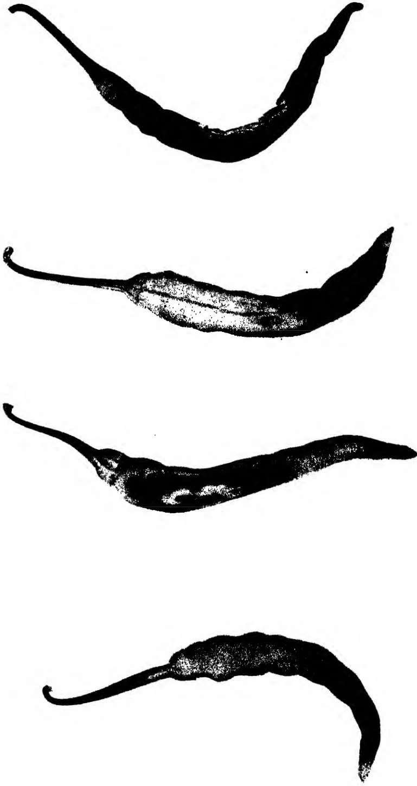
The image displays four chili fruits arranged horizontally, each illustrating a different stage of anthracnose disease. From left to right: the first fruit is a healthy, dark, and smooth chili; the second fruit shows a small, light-colored, sunken lesion near the stem; the third fruit has a larger, more extensive light-colored lesion along its side; and the fourth fruit is heavily infected, appearing dark and distorted with significant surface damage.Anthracnose of Chillies
Fruits in different stages of the disease
be scattered for considerable distances, chief amongst which is wind. The disease is most severe in wet weather since such weather favours the growth and rapid spread of the fungus.
It is stated above that the minute black points which appear on the dried up diseased fruits contain a very great number of spores which can be carried by the wind to cause the disease on other healthy chillies. That being so, it is obvious that when the disease appears, every endeavour should be made to prevent its spread by picking and destroying all diseased chillies, if possible while the disease is in its early stages and before the fungus gets a chance to produce its fruit bodies. The disease can be kept in check if the plants are carefully examined each day and every chilli showing signs of disease is picked and burned.
If the number of diseased chillies becomes great then it will be necessary to spray the plants. Spraying should be done once a week during wet weather when the disease is active.
The solution to be used is one containing some copper compound (that known as Bordeaux Mixture is suitable). For full information on this subject and help consult your nearest Agricultural Instructor.
There is a possibility that certain varieties of chillies may not be affected at all or only to a slight extent by this disease. So far, no truly resistant variety has been found anywhere in the world but the possibility should be borne in mind. If a grower finds that some of his chillies are resistant to the disease he should preserve the fruits of those plants for seed purposes.
Clean cultivation and regular rotation of crops will assist in keeping the disease in check.
Control measures may be summarised thus:—
| Province, &c. | Disease | No. of Cases up to Date since Jan. 1st 1933 | Fresh Cases | Recoveries | Deaths | Balance Ill | No. Shot |
|---|---|---|---|---|---|---|---|
| Western | Rinderpest | ... | ... | ... | ... | ... | ... |
| Foot-and-mouth disease | 44 | 15 | 30 | ... | 14 | ... | |
| Anthrax | ... | ... | ... | ... | ... | ... | |
| Rabies (Dogs) | 5 | ... | ... | ... | ... | 5 | |
| Piroplasmosis | ... | ... | ... | ... | ... | ... | |
| Colombo Municipality | Rinderpest | ... | ... | ... | ... | ... | ... |
| Foot-and-mouth disease | 294 | 291 | 111 | 6 | 177 | ... | |
| Anthrax | 3 | 1 | ... | 3 | ... | ... | |
| Rabies (Dogs) | 2 | ... | ... | ... | ... | 2 | |
| Haemorrhagic Septicaemia | ... | ... | ... | ... | ... | ... | |
| Black Quarter | ... | ... | ... | ... | ... | ... | |
| Cattle Quarantine Station | Bovine Tuberculosis | ... | ... | ... | ... | ... | ... |
| Rinderpest | .. | ... | ... | ... | ... | ... | |
| Foot-and-mouth disease | 11 | ... | 9 | 1 | 1 | ... | |
| Anthrax (Sheep & Goats) | 52 | 15 | ... | 52 | ... | ... | |
| Central | Rinderpest | ... | ... | ... | ... | ... | ... |
| Foot-and-mouth disease | ... | ... | ... | ... | ... | ... | |
| Anthrax | ... | ... | ... | ... | ... | ... | |
| Bovine Tuberculosis | 3 | 3 | .. | ... | 3 | ... | |
| Rabies (Dogs) | ... | ... | .. | ... | ... | ... | |
| Southern | Rinderpest | ... | ... | ... | ... | ... | ... |
| Foot-and-mouth disease | 141 | 20 | 141 | ... | ... | ... | |
| Anthrax | ... | ... | ... | ... | ... | ... | |
| Rabies (Dogs) | ... | ... | ... | ... | ... | ... | |
| Northern | Rinderpest | 140 | 90 | 34 | 91 | 7 | 8 |
| Foot-and-mouth disease | 28 | 28 | 28 | ... | ... | ... | |
| Anthrax | ... | ... | ... | ... | ... | ... | |
| Black Quarter | .. | ... | ... | ... | ... | ... | |
| Rabies (Dogs) | ... | ... | ... | ... | ... | ... | |
| Eastern | Rinderpest | ... | ... | ... | ... | ... | ... |
| Foot-and-mouth disease | 22 | ... | 22 | ... | ... | ... | |
| Anthrax | ... | ... | ... | ... | ... | ... | |
| North-Western | Rinderpest | } FREE | |||||
| Foot-and-mouth disease | |||||||
| Anthrax | |||||||
| Pleuro-Pneumonia (Goats) | |||||||
| North-Central | Rabies (Dogs) | ||||||
| Rinderpest | |||||||
| Foot-and-mouth disease | |||||||
| Uva | Anthrax | ||||||
| Rinderpest | |||||||
| Foot-and-mouth disease | |||||||
| Anthrax | |||||||
| Sabaragamuwa | Bovine Tuberculosis | ||||||
| Rinderpest | |||||||
| Foot-and-mouth disease | |||||||
| Anthrax | |||||||
| Piroplasmosis | |||||||
| Haemorrhagic Septicaemia | |||||||
| Rabies (Dogs) | 12 | 1 | ... | 12 | ... | ... | |
| 4 | 1 | ... | ... | ... | 4 |
G. V. S. Office.
Colombo, 12th May, 1934.
M. CRAWFORD,
Government Veterinary Surgeon
| Station | Temperature | Humidity | Amount of Cloud | Rainfall | ||||||
|---|---|---|---|---|---|---|---|---|---|---|
| Mean Maximum | Difference from Average | Mean Minimum | Difference from Average | Day | Night (from Minimum) | Amount | No. of Rainy Days | Difference from Average | ||
| Inches | Inches | |||||||||
| Colombo | 86.1 | -1.7 | 75.5 | -0.2 | 77 | 93 | 6.3 | 17.04 | 17 | + 8.05 |
| Puttalam | 87.0 | -2.1 | 76.1 | +0.3 | 72 | 89 | 5.2 | 1.71 | 9 | - 3.76 |
| Mannar | 89.3 | -2.3 | 78.1 | +0.5 | 76 | 89 | 4.8 | 3.07 | 9 | + 0.19 |
| Jaffna | 89.4 | +0.1 | 80.7 | +1.1 | 75 | 82 | 5.1 | 0.80 | 3 | - 1.28 |
| Trincomalee | 90.0 | +1.4 | 77.0 | -0.4 | 70 | 86 | 4.0 | 0.92 | 8 | - 1.18 |
| Batticaloa | 88.0 | +0.3 | 75.8 | -0.6 | 74 | 91 | 4.7 | 1.63 | 5 | - 0.29 |
| Hambantota | 87.3 | -0.1 | 76.0 | +0.2 | 72 | 88 | 4.3 | 1.50 | 7 | - 2.00 |
| Galle | 85.0 | -1.5 | 76.7 | +0.3 | 79 | 88 | 5.7 | 10.54 | 16 | + 0.83 |
| Ratnapura | 89.8 | -1.4 | 73.1 | -0.7 | 80 | 98 | 6.4 | 11.19 | 21 | - 1.18 |
| A'pura | 90.3 | -1.1 | 74.6 | -0.2 | 70 | 95 | 6.8 | 9.83 | 7 | + 2.96 |
| Kurunegala | 89.3 | -2.3 | 73.9 | -0.8 | 72 | 95 | 6.8 | 4.39 | 13 | - 5.63 |
| Kandy | 86.9 | -0.7 | 69.3 | -0.6 | 66 | 92 | 5.0 | 5.63 | 12 | - 1.18 |
| Badulla | 84.1 | +0.3 | 64.8 | -1.5 | 70 | 97 | 4.3 | 5.72 | 12 | - 1.75 |
| Diyatalawa | 78.2 | +0.7 | 59.5 | -0.7 | 68 | 89 | 6.0 | 7.02 | 17 | + 0.86 |
| Hakgala | 74.0 | +0.4 | 54.8 | +0.2 | 68 | 85 | 5.0 | 2.62 | 14 | - 4.65 |
| N'Eliva | 71.5 | +0.3 | 49.0 | -0.2 | 68 | 90 | 6.2 | 3.99 | 11 | - 1.68 |
The rainfall for April was appreciably in excess in the low-country in the south-west of the Island. Slight excess was shown along the northern and eastern flanks of the hills, and in the districts south of Batticaloa, but elsewhere nearly all stations showed deficit, which was most marked on the western slopes of the main hill country.
There were 19 daily falls of 5 inches or more reported, the majority being between the 26th and the 29th. The highest was 8.90 inches, at Labugama, on the 28th-29th.
Until the 16th the usual intermonsoon conditions, weak barometric gradients and local afternoon or evening thunderstorms, prevailed. About the 17th a moderate south-west gradient appeared, with winds that were generally south-westerly at sea level, and for several days the heavier rain was mainly confined to the south-west of the Island, and particularly to the coastal districts. The south-west gradient persisted till the end of the month, but the rain fell off markedly from the 22nd to the 26th, after which there was again heavy rain in the south-western low-country, especially near the coast.
Day temperatures were on the whole below normal, but not markedly so, while night temperatures showed no marked deviations from the average. Humidity and cloud were on the whole above normal in the low-country, and below normal in the hills. The barometric pressure was a little above normal in the south-west of the Island, and more appreciably below normal in the north-east. Wind strength was generally above normal, while the mean direction was on the whole south-west.
Hail was reported on the 9th from Lindula, and on the 16th from Diyatalawa.
H. JAMESON,
Supdt., Observatory.
VOL. LXXXII
PERADENIYA, JUNE, 1934.
No. 6
| Page | |
|---|---|
| Editorial ..... | 330 |
| Rubber: The Use of Improved Planting Material. (Contd.) By Dr. P. J. S. Cramer. .... | 332 |
| Notes on Orchids Cultivated in Ceylon. Dendrobium Pierardi. By K. J. Alex. Sylva, F.R.H.S. .... | 338 |
| Ginger Manurial and Cultural Experiments. By Dr. A. W. R. Joachim, Ph.D., Dip. Agric. (Cantab), and H. A. Pieris, B.A. (Cantab). .... | 340 |
| The Avocado Pear .... | 354 |
| The Grasshopper Campaign in Manitoba in 1932 .... | 362 |
| Planned Economy and Agriculture .... | 365 |
| The Coconut Industry of Travancore .... | 388 |
| Minutes of Meeting of the Board of the Tea Research Institute of Ceylon .... | 389 |
| Bacterial Leaf-Spot of Betel .... | 393 |
| Animal Disease Return for the month ended May, 1934 .... | 395 |
| Meteorological Report for the month ended May, 1934 .... | 396 |
Of great interest to those engaged in the
cultivation of plantation crops.
Being a reprint of articles published in
The Tropical Agriculturist by the
Staff of the Department of
Agriculture, Ceylon.
34 Illustrations and Figures
Price Rs. 5/-
— • • • —
Obtainable from:
THE MANAGER, PUBLICATION DEPÔT,
PERADENIYA.
June, 1934
THIS number contains the second of a series of short articles on some practical aspects of rubber planting by the doyen discoverer of the method of budgrafting.
These articles will be of especial interest at the present time when the second Scheme of Restriction of rubber has just been inaugurated by mutual arrangement between the various rubber producing countries, and which permits of a certain amount of replanting. The present Scheme has certainly several advantages over the first, the Stevenson Scheme. A great point is that it is the outcome of understanding between all the rubber producing countries of the East and thus is not a one-sided affair as was the former scheme, the only Eastern country not coming fully within the present restriction being French Indo-China. Further, the Scheme has come after a much more drastic stage of depression than was the case when the first scheme was instituted. Rubber has within the past few years reached a price far lower than at the time of the Stevenson Scheme, and at which it was then believed to be impossible to produce it. That Scheme came in with a bottom price that the growers would now almost regard as a handsome top one, the result was that whilst Ceylon and Malaya had not learnt the full economies of production, the
331Dutch East Indies probably had and were reaping handsome profit from their unrestricted plantations in comparison with their self-denying neighbours. In the present Scheme restriction has been effected by mutual agreement as to certain quota which represent comparative potential maximum exports for each producing country for the next five years. An International Rubber Regulation Committee will from time to time review the situation and determine the percentage of these allotted quota which may be exported. Further planting of rubber is prohibited except for experimental purposes and then only to a limited extent of one per cent. of the quatum allowed to any territory. The Scheme makes provision for funds for research work for the furtherance of new uses for rubber, and allows replanting to be done on individual estates to the extent of twenty per cent. of the existing area. It is hoped that full advantage will be taken of this replanting facility in Ceylon to substitute at least the poorest yielders of areas, if not entire poor yielding areas, with better yielding material up to the extent allowed. Planting material is prohibited from export from one country to another but Ceylon should now be able to supply from trees under experimentation budwood of varieties which would greatly increase the yield of many of our plantations. Our plantations have been backward in realising the great possibilities of budgrafting but the advantages of this and much useful advice to be considered in carrying it out are set forth in Dr. Cramer's articles.
332DR. P. J. S. CRAMER,
FORMERLY DIRECTOR OF THE GENERAL EXPERIMENT
STATION, BUTENZORG
WHEN considering what clones we should use the first point to study is, of course, the yield. The difficulty is that the yield figures are not entirely comparable. Most of the experimental tapping is done in the various places according to the prevailing local tapping system. In Sumatra we find generally monthly alternation, daily tapping during the tapping months; in Java, alternate day tapping; in the experimental fields of the Rubber Experimental Station trees are always rested on Sundays. In the Dutch East Indies most tapping is with spiral, in Malaya with spiral or circumference V cut. The figures are often spread over various publications and it requires generally some work to come to a conclusion on the clonal yields. In this respect we may cite an excellent publication, due to the Rubber Research Institute, Kuala Lumpur, giving a complete description of the principal clones and details about yields, tapping system and also growth and other secondary characters.—(The History and Description of Clones of Hevea Brasiliensis by C. E. T. Mann and C. C. T. Sharp).
Often the question is put to me: What do you consider the best clone? On such a question one has to answer with a question: for what conditions? for what purpose? There are clones better suited to a dry climate, BD 5 for instance, and other ones which are more wet-climate clones, like Avros 256.
Some of our highest yielding clones, like Sabrang 24, do not offer the same certainty as the medium producers, like Avros 49 and 152. Among the Prang Besar clones there are early high yielders and others taking some time before reaching a high figure. It is a matter of comparing what is wanted with what
333the various clones can offer, and this cannot be done too carefully as the future results mainly depend on the careful choice of the clones to use.
Of course a plantation should never plant only one or two clones, but try to divide the risk by using several clones. In its original form the system was to mix several clones in the same field. When it comes to thinning out these mixed plantings people realise that it would have been better to start from the very beginning with monoclonal planting. It is extremely difficult to remove one or two clones from such a mixture of eight or ten clones and if we only go by individual yields, we run the risk of taking out not the poorest yielders, but the clones coming later to a higher yield than others. In a pure monoclonal planting the thinning out is still easier, than in a seedling field. We can limit ourselves to taking out the poorly growing or yielding trees. The monoclonal planting has many other advantages: the tapping system can be exactly adapted to the clone and the tapper will always have the same quality of bark under his knife. As a last advantage we may say that the monoclonal blocks will give us practically pure monoclonal seeds which can be collected without any special attention given to the trees from which they come. The only condition for monoclonal planting is that we must very carefully consider the various clones, their advantages and disadvantages before we take our decision. Of course the whole of the problem has to be considered. A small estate starting with a few dozens of acres as a new extension under buddings will limit itself to some of the well studied Avros clones giving a good deal of certainty; a large company which has opened thousands of acres with budded rubber can afford to include in its programme a hundred acres of a new clone, more uncertain as yet, but offering the possibility of very high yields. There is now such a variety of clones on the market that one can find some for each case. Generally speaking a number of at least 4 or 5 will offer a good distribution of the risk, but every year the well established clones become more and more certain and may obtain therefore a larger place when the various areas and the clones to be used in them are planned. By allotting to the better Hevea clones a larger area by limiting the acreage under the more uncertain ones we can compensate more or less the pros and cons. After all our programme can only reflect the state of our knowledge as it was at the moment of deciding on our plan.
334In late years the production of new clones seems to have come to a standstill; in 1932-33 very few new ones have been added to the list; but for some younger ones, like the interesting Pilmoor clones in Malaya, the figures will become more convincing as we may perhaps see later. The experiment stations are again turning a good deal of their attention to seedling selection and the young extensions after 1920, which should furnish us now with mother trees for new clones have been relatively few. There is a sort of balancing action between the two systems of improvement; if we want to go on with the seedling improvement we will have to use clonal seeds and for improvement we will want new clones; for arriving at new clones we will have to select among seedlings and so we want to see new fields laid out with seedlings. "Restriction" will not stimulate the making of large extensions but it may not prevent the substitution of better material. We may expect that the improvement of planting material will come somewhat to a standstill for a time, when it will be taken up again, a new area of seedling planting may follow, but we shall probably see some budgratting going on also, were it only to arrive at better seeds and to help seedling selection to progress further.
In our former chapters we have already explained that the character of primary importance that should guide our choice of the clones to be planted is the average yield figure. If this is true we should not neglect the secondary characters, like resistance to adverse conditions and diseases, growth, bark renewal, and so on.
In studying yield figures we must think of the conditions for which they were found. A clone which occasionally in a dry season has gone back heavily in yield, like Tjirandji 1. will not be recommendable for a very dry climate, unless other advantages compensate for this weak point. When the 90,000 acres of buddings were established in Indo-China not a single budding had ever been tapped in the country, nor a local clone been developed up to the tapping age. In this case the planters had to choose the clones to be introduced from the outside, simply by analogy. It was logical that clones like BD 5 and Avros 49 known as showing in their country of origin a strong resistance against drought (not only in relation to growth, but also in relation to production) were given a larger place in the planting programme than clones like Tjirandji 1. and Avros 256. I agree that with all this material we ran a certain risk, but since
335the end of 1933 a few trees originally introduced as buddings from Java and planted on a few estates in Indo-China have been tapped experimentally, and the results confirm our views.
It seems probable that Tjirandji 1. will show under the extremely dry conditions of Indo-China (often five months without a drop of rain) a heavy fall in its yield, but the very high yield of this clone during the wet season may make up for this. But, it is clear that in general we will choose for a dry climate a clone which shows among its secondary characters a good resistance against drought. In a comparative test containing a series of Java, Sumatra and Malayan clones in Indo-China we find up till now that Tjirandji 3. is the most vigorous grower.
Another climatic factor is wind. When the trees begin to develop their dense crown, when they are 3 or 4 years old, they are particularly subject to wind damage. This is also true for common Hevea seedlings. Some curious figures about the resistance to breakage by wind have been published recently by the Avros Experiment Station in Sumatra. When I discussed them with the Director, Dr. d'Angremond, during a recent visit to the station in Sumatra he asked me: did you ever realise that Hevea is a tree very subject to breakage by wind and in connection with it he emphasised the fact that by a lucky chance among the first clones developed some have turned out afterwards to be extremely resistant against wind. Already in the early days of the Avros clones, Avros 36 was found to suffer heavily from wind and was discarded for that reason on many estates. From the observations by M. Schmole of the Avros Station storms do practically no harm to clones like Avros 49 and 50. Among the Java clones BD 5 is particularly resistant to wind; Tjirandji 1. on the other hand is well known to be very subject to it. I have seen cases where in young fields of Tjirandji 1. just put into tapping 30 per cent. had been severely damaged by wind.
In this connection another point may be mentioned, which is of importance for places where rubber is combined with other crops, the density of the crown. With clones like Avros 50 and BD 5 the crown of a tappable tree is still so open that plenty of light can come through. I have recently seen in Sumatra coffee fields interplanted 20 by 20 feet with Avros 50, 4 years old (girth about 15 in.) where the coffee did not yet suffer from too much shading by the rubber, while if the clone used had been
336Tjirandji 1. or Avros 152, the field would have been already too densely shaded.
The resistance of clones against diseases is another secondary character of great practical importance. In a country like Indo-China where pink disease (Corticium) is one of the most dangerous diseases, appearing in 3 to 5 year old fields and damaging them to such a degree, that if no effective treatment is given in proper time they never will recover from the attack, a clone like Avros 50, well known as particularly subject to pink disease has to be left out. Brown Bast is another disease which is a bad mark for a clone; if found in the mother tree the bud-dings made from it are already suspect. If however, the yield of the clone is very high, it may be that tapping with a shorter cut, exhausting the tree less, and so avoiding the brown bast, may still give yields of an outstanding high figure.
Wound recovery and bark renewal are other secondary characters of importance. In many clones renewed bark has now been tapped and in some cases the yields were so high that people were considering if it would not pay to tap very early to have early tappable renewed bark.
The time when the tree becomes tappable may differ also a good deal in various clones. Normally the tendency will be to prefer clones which may be brought into tapping at an early age. Here again we must not go too far, and a well-made selection of various clones for the planting programme may compensate, for besides early yielders also some clones might be included, which arrive at their high yields only at an older age. From figures on young trees we expect that Tjirandji 1. is an early yielder, like Prang Besar 25, while Tjirandji 16 and BID 5 are much slower in coming up to a high level.
The way the bud-dings grow has also to be considered. We have ourselves been induced to plant out clones, giving in the first years good yields, which, when we saw afterwards the adult mother trees, appeared so poor, with bent, hanging over stems, and poor wound recovery, that we recommended that the one year old bud-dings should be rebudded. In such cases one should not hesitate to go back on an opinion, when good evidence shows that one has made a wrong choice.
A last point to be mentioned in the question of secondary characters is the suitability for being budded; Waringiana 4. has a bud reputation in this respect. This factor may vary a good
337deal and so does the faculty to heal the union, which for instance will be much sooner perfect when buddings are made on three year old stocks, with clones like Avros 50 and 152 than with BD 5.
If a first rate clone presents difficulties with the budding, that should not be a reason to reject it, but only for paying special attention to the work. Generally there will be a tendency from the budders themselves up to the manager, to prefer easily budded clones, and we know of instances where it took quite a time to arrive at a complete stand of a difficult budder.
(To be continued).
This image is a blank white page. It contains several small, dark specks which appear to be scanning artifacts or dust particles. There is no text, handwriting, or printed content on the page.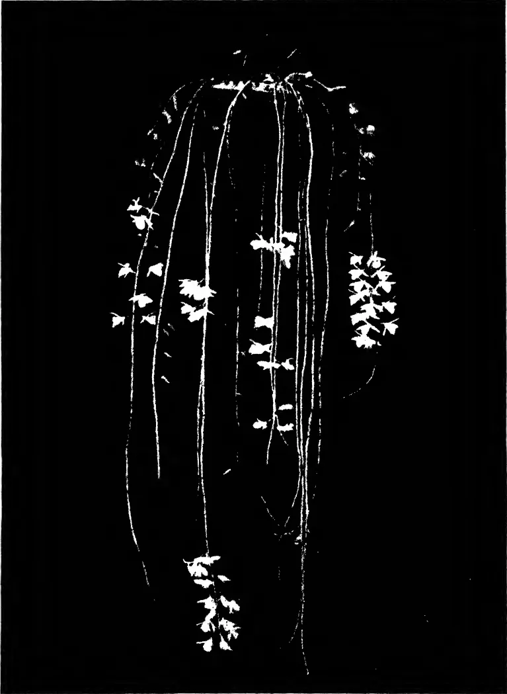
A black and white botanical illustration of a Dendrobium Pierardi orchid. The plant is shown as a long, slender, drooping stem with several clusters of small, light-colored flowers. The flowers are arranged in a somewhat regular pattern along the stem, with some clusters being more prominent than others. The background is solid black, making the white lines of the plant and flowers stand out.Dendrobium Pierardi Roxb.
338K. J. ALEX. SYLVA, F.R.H.S.,
CURATOR, HENERATGODA BOTANIC GARDENS, GAMPAHA
THIS is a free flowering and easily grown species and should find a place in any orchid collection. It is indigenous to the northern parts of India where it thrives on the trunks of trees; it became popular among decorative plants when it was first introduced to the Calcutta Botanic Gardens by M. Pierard whose name it perpetuates.
The long pendulous stems often extend to six feet and more. The young pseudo-bulbs bear well-set shining green, lance-shaped, succulent leaves, four or five inches long and about one and a half inches broad.
A profusion of long-lived flowers is borne singly or in clusters up to four, on the mature leafless pseudo-bulbs nearly every third month. Each individual flower is rarely more than two inches across. The petals and sepals are waxy and a pale mauve, delicately tinged with rose and the broad flat labellum is of a buff primrose shade, with a downy upper surface, the throat being streaked with purple.
Culture.—It is not an uncommon sight to find the plant in young growth clothed with tender leaves, mature and bare pseudo-bulbs and others in bud or with clusters of fully opened flowers, at one and the same time. It is, therefore, very necessary that the compost used for this particular species should be fairly rich and also of a moisture-conserving texture suited to these requirements.
It thrives best in a mixture made up of sterilised coconut husk, flaky leaves, bones and dried cakes of cowdung in equal parts, finished off with a top-dressing of moss.
It is advisable to examine well-grown specimens frequently. Those that are completing their growth should be placed where more light can reach them, so that slightly drier conditions may
339be maintained, although the plants should not suffer from dryness, as the roots will be very active, and any check received from a period of dryness will prevent them from completing their growth.
The plants are best cultivated in pans or wooden baskets and will display themselves to advantage when in bloom, if suspended from the roof.
After potting this orchid needs regular watering especially when young leafy shoots appear, but when the flower buds are developing on mature stems a gradual increase of heat and decrease of moisture will be needed to assist in the full development of flowers.
Owing to its free growing habit and subsequent drain on the compost, periodical top-dressings should be given and a complete overhauling made every second year.
Propagation of the stock can be effected by placing small balls of coir or moss near the young shoots that appear on the nude stems, and these may be removed when sufficiently rooted.
340A. W. R. JOACHIM, PH. D. (LOND.), F.I.C.,
DIP. AGRIC. (CANTAB.),
AGRICULTURAL CHEMIST,
AND
H. A. PIERIS, B.A. (CANTAB.),
A.I.C.T.A. (TRINIDAD),
DIVISIONAL AGRICULTURAL OFFICER, CENTRAL
IN the May 1933 issue of this Journal an account was given of preliminary manurial trials carried out with ginger at Siyambalagoda in the Kandy district. The results obtained were so encouraging that it was decided to continue these trials on a more extensive scale. In addition to manurial experiments, varietal trials and experiments to determine the optimum seed rate for ginger and the best method of planting the crop for curing purposes were included in the experimental programme. The new trials were carried out at Giragama about five miles from Peradeniya in the centre of a ginger growing area. The experimental area was a fairly steep hillside, undulating in parts, but typical of ginger growing land in the Province. Plates I and II will give some idea of the nature of the land under experiment.
The manurial experiments were designed to determine (1) which of two varieties (the local and the Nugegoda—a degenerated type of Cochin ginger) was the better yielding, (2) the effect of manuring on yields and the relative efficacies of artificial and cattle manure on each variety, (3) the effect of liming, (4) the effect of a mulch of straw, and (5) the interaction between the various factors concerned.
The randomised block method of field experimentation was adopted owing to the large number of treatments involved and the varying configuration of the land. Three blocks each containing 24 randomised plots, one for each treatment, were
341marked out so that, as far as possible, each plot ran down a slope of the hillside. This would be apparent from Plates I and II. The plots in a block were separated from each other by a drain one foot wide and four inches deep. Owing to the nature of the land the plots could not all have been of one shape, but they were all of the same size viz. 450 sq. ft. or one-ninety third of an acre approximately.
The area had been uncultivated for several years and was thick with weeds prior to cultivation. The analysis of a representative sample of soil from the area, seen in Table I below, shows that it is a silty loam, well supplied with nitrogen and organic matter, and acidic in reaction. Due to its high clay content, it should be well supplied with potash. Compared with local soils it is definitely fertile and the comparatively high yield obtained from the control plots is therefore not surprising.
TABLE I
| % | |
|---|---|
| Moisture | 2.73 |
| Coarse sand | 21.75 |
| Fine sand | 24.87 |
| Silt | 27.50 |
| Clay | 21.25 |
| Sesquioxides, etc. | .88 |
| Difference | 1.02 |
| 100.00 |
| Nitrogen | .137 |
| Loss on ignition | 11.56 |
| Reaction (PH) | 6.5 |
The number of treatments was 24, made up of combinations of the following:
| Varieties | 2—Nugegoda and local ginger |
| Manurial treatments | 3—{ No manure Cattle manure Artificial manure |
| Liming | 2—{ No liming Liming |
| Cultural treatments | 2—{ No mulch Straw mulch |
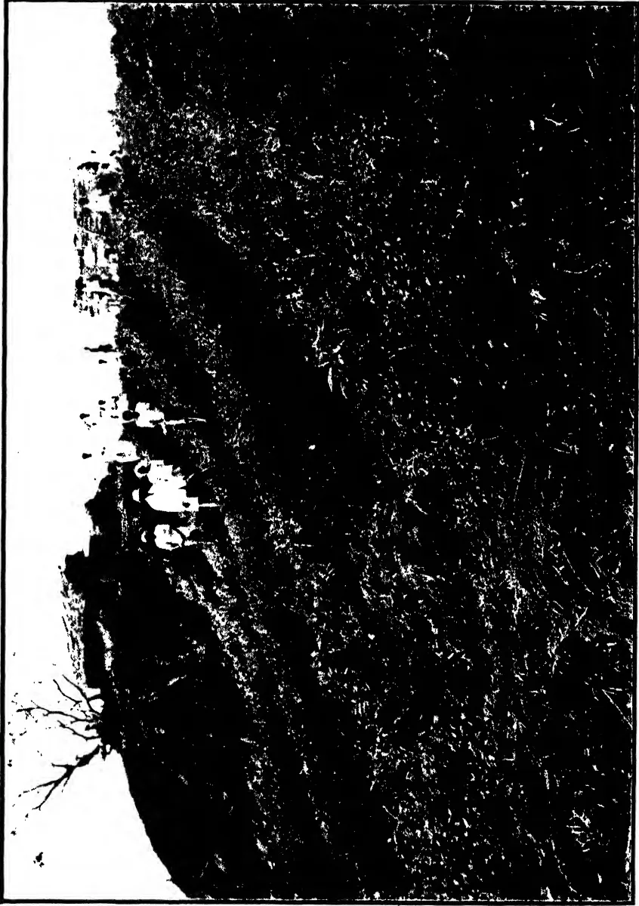
A black and white photograph showing a group of people standing in a field, likely conducting an experiment. The foreground is dominated by dense, dark vegetation, possibly tall grass or reeds. In the background, a line of trees and a body of water are visible under a bright sky.Photo.
Plate I. The nature of the land under experiment
L. S. Bertus
This image is a blank white page. It contains several small, dark specks which appear to be scanning artifacts or dust particles. There is no text, handwriting, or printed content on the page. 342Though there were only three replications of each treatment, the number of effective replications for comparisons of means of major treatments was considerably higher. Thus in the case of varieties the means of 36 plots are compared. So also with the comparison of liming against no liming and mulching against no mulch. Comparisons of the three manurial treatments are based on the means of 24 plots.
The complete set of treatments is shown in Table II below. In this and subsequent tables N will signify Nugegoda ginger, G local or Giragama ginger, S straw mulch, L lime, C cattle manure, and A artificial fertilisers.
TABLE IITreatments| Number | Designation | ||||
|---|---|---|---|---|---|
| 1 | Nugegoda | No manure | No lime | No straw | N |
| 2 | " | " | " | Straw | N S |
| 3 | " | " | Lime | No straw | N L |
| 4 | " | " | " | Straw | N L S |
| 5 | Local | " | No lime | No straw | G |
| 6 | " | " | " | Straw | G S |
| 7 | " | " | Lime | No straw | G L |
| 8 | " | " | " | Straw | G L S |
| 9 | Nugegoda | Cattle manure | No lime | No straw | N C |
| 10 | " | " | " | Straw | N S C |
| 11 | " | " | Lime | No straw | N L C |
| 12 | " | " | " | Straw | N L S C |
| 13 | Local | " | No lime | No straw | G C |
| 14 | " | " | " | Straw | G S C |
| 15 | " | " | Lime | No straw | G L C |
| 16 | " | " | " | Straw | G L S C |
| 17 | Nugegoda | Artificial manure | No lime | No straw | N A |
| 18 | Nugegoda | Artificial manure | No lime | Straw | N S A |
| 19 | " | " | Lime | No straw | N L A |
| 20 | " | " | " | Straw | G L S A |
| 21 | Local | " | No lime | No straw | G A |
| 22 | " | " | " | Straw | G S A |
| 23 | " | " | Lime | No straw | G L A |
| 24 | " | " | " | Straw | G L S A |
Lime was applied on the limed plots at the rate of 15 cwt. per acre three weeks before planting. Cattle manure was forked in at the rate of 2 cwt. per plot or 9.3 tons per acre, a day or two before planting. The artificial fertilizer consisting of a mixture of equal parts of sulphate of potash, sulphate of ammonia and superphosphate was applied at the rate of 6 lb. per plot or approximately 5 cwt. per acre, a day before planting. The seed ginger was divided into small sets and planted in holes 18 inches apart at the rate of 15 lb. per plot, there being 240 holes to a plot. The seed rate was therefore about 12.5 cwt. per acre. Paddy straw was used as a mulch at the rate of 15 bundles or about 40 lb. per plot, equivalent to 35 cwt. per acre.
The area had previous to blocking been mamoty-dug twice. Weeding was carried out periodically. The crop was planted between the 26th and 28th April, 1933 and harvested between the 8th and 12th January, 1934. Owing to the heavy rainfall conditions experienced throughout the growing period, a few of the sets were affected by a rot caused by Rhizoctonia solani and Pythium spp. These were taken in hand by the Mycologist in good time and no further trouble was experienced. The results shown in Table III are actual weights of ginger obtained per plot and are not corrected for losses due to disease. Each plot was separately harvested, care being taken that as few rhizomes as possible were left in the soil. The rhizomes were carefully washed without delay and weighed as soon as the wash water had drained off.
Table III shows the actual weights of green ginger in lb.
A glance at this table will show the great variation in yields due to the different treatments. The mean yield varies from 117.8 lb. in the Nugegoda untreated plots to 184.8 lb. in the local artificially manured and mulched plots, a variation of 44.7 per cent. on the average yield. The table also brings out clearly the variation in block yields. Block C which has the steepest gradient and hence the greatest erosion, registers the lowest yield, while block A which is most favourably situated shows the highest total yield, the yield variation between the two being nearly 33 per cent. of the general mean.
The statistical analysis of variance of the data indicates that the yield differences due to variety, manuring and mulching are definitely significant, while those due to lime and the interactions
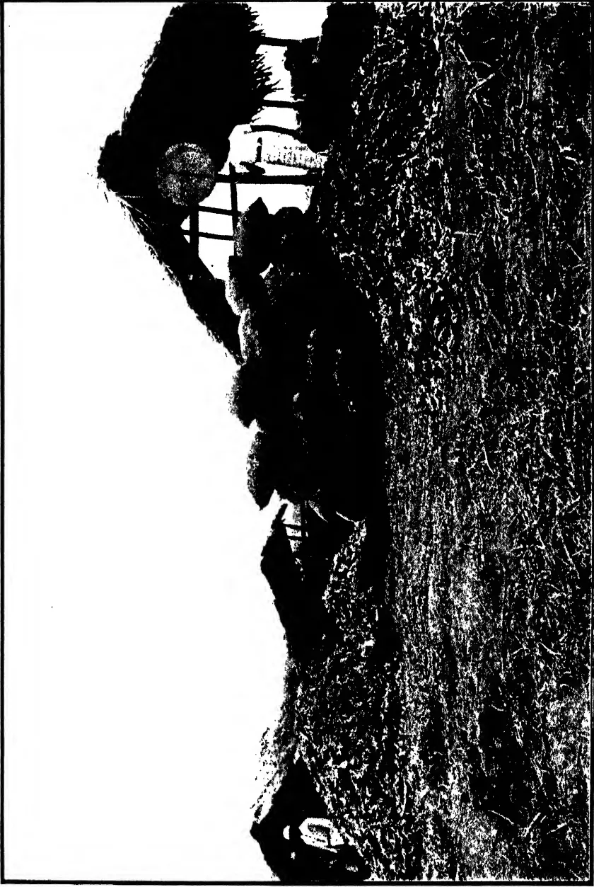
A high-contrast black and white photograph showing a field of harvested ginger plants. The plants are dark and dense, filling the foreground and middle ground. In the background, a wooden fence is visible, and beyond it, there are trees and a bright sky. The image is framed by a thick black border.Photo.
Plate II. The harvested ginger
L. S. Bertus
This image is a blank white page. It contains several small, dark specks which appear to be scanning artifacts or dust particles. There is no text, handwriting, or printed content on the page. 344TABLE IIIYields per plot in lb. of raw ginger| Treatments | Blocks | Total | Mean | ||
|---|---|---|---|---|---|
| A | B | C | |||
| 1. N | 150.5 | 120 | 83 | 353.5 | 117.8 |
| 2. N S | 151 | 123 | 118 | 392 | 130.7 |
| 3. N L | 142.5 | 100 | 111 | 353.5 | 117.8 |
| 4. N L S | 191.5 | 121 | 97.5 | 410 | 136.7 |
| 5. G | 142 | 166 | 106 | 414 | 138.0 |
| 6. G S | 167 | 170 | 132 | 469 | 156.3 |
| 7. G L | 142.5 | 142.5 | 106 | 391 | 130.3 |
| 8. G L S | 130.5 | 149.5 | 128 | 408 | 136.0 |
| 9. N C | 166.5 | 149 | 103 | 418.5 | 139.5 |
| 10. N S C | 195 | 144.5 | 117.5 | 457 | 152.3 |
| 11. N L C | 180 | 171 | 81.5 | 432.5 | 144.2 |
| 12. N L S C | 237.5 | 184.5 | 121 | 543 | 181.0 |
| 13. G C | 236 | 150.5 | 148 | 534.5 | 178.2 |
| 14. G S C | 182 | 163.5 | 154 | 499.5 | 166.5 |
| 15. G L C | 150.5 | 175.5 | 100 | 426.0 | 142.0 |
| 16. G L S C | 152.5 | 202.5 | 156.5 | 511.5 | 170.5 |
| 17. N A | 169 | 162.5 | 102.5 | 434 | 144.7 |
| 18. N S A | 182.5 | 163 | 121 | 466.5 | 155.5 |
| 19. N L A | 153.5 | 140 | 107 | 400.5 | 133.5 |
| 20. N L S A | 201 | 189.5 | 111 | 501.5 | 167.2 |
| 21. G A | 155 | 153.5 | 118 | 426.5 | 142.2 |
| 22. G S A | 178.5 | 206 | 170 | 554.5 | 184.8 |
| 23. G L A | 155.5 | 158 | 147.5 | 461.0 | 158.6 |
| 24. G L S A | 183 | 195 | 170 | 548 | 182.7 |
| Total | 4095.5 | 3800.5 | 2910 | Grand Total |
10.806 |
| General Mean |
150.085 | ||||
between the different factors concerned with yield, are not significant. The yield results for each of the different treatments are summarised in Tables IV to VIII below and are shown graphically in Plate III. The figures represent the amounts of green ginger.
TABLE IVEffect of Variety| lb. per plot |
cwt./acre | tons/acre | % of mean |
|
|---|---|---|---|---|
| Nugegoda (average of 36 plots) | 143.4 | 119.1 | 5.95 | 95.5 |
| Local (average of 36 plots) | 156.8 | 130.2 | 6.50 | 104.5 |
| Difference | 13.4 | 11.1 | 0.56 | 9.0 |
| Significant difference (P = .01) | 13.3 | 11.1 | 0.56 | 9.0 |
GINGER MANURIAL AND CULTURAL TRIALS
GIRAGAMA
1933-1934.
YIELDS IN TONS PER ACRE.
8
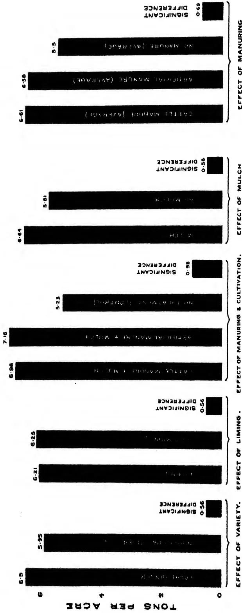
| Category | Treatment | Yield (Tons per Acre) | Significant Difference |
|---|---|---|---|
| EFFECT OF VARIETY | COLOMBO | 6.5 | |
| PERUMBA | 5.95 | 0.56 | |
| DIFFERENCE | SIGNIFICANT | ||
| EFFECT OF LIMING | CONTROL | 6.21 | |
| DOLOMITE | 6.26 | 0.05 | |
| DIFFERENCE | SIGNIFICANT | ||
| EFFECT OF MANURING & CULTIVATION | CATTLE MANURE + MULCH | 6.96 | |
| ARTIFICIAL MANURE + MULCH | 7.18 | ||
| NO CULTIVATION (CONTROL) | 5.23 | 0.98 | |
| EFFECT OF MULCH | MULCH | 6.64 | |
| NO MULCH | 5.61 | 0.56 | |
| DIFFERENCE | SIGNIFICANT | ||
| EFFECT OF MANURING | CATTLE MANURE (AVERAGE) | 6.61 | |
| ARTIFICIAL MANURE (AVERAGE) | 6.56 | ||
| NO MANURE (AVERAGE) | 5.5 | 0.69 | |
| DIFFERENCE | SIGNIFICANT |
Plate III. The effects of manurial and cultural treatments on yield of ginger
345Local ginger is therefore a significantly better yielder than Nugegoda ginger, the probability being 100 to 1 of this being so. An increase of over half a ton per acre or 9 per cent. is obtained under the conditions of the experiment, the general average yield being 6.23 tons per acre.
TABLE VEffect of Manuring| lb. per plot |
cwt./acre | tons/acre | % of mean |
|
|---|---|---|---|---|
| 1. No manure (average of 24 plots) | 133.0 | 110.4 | 5.50 | 88.6 |
| 2. Cattle manure (average of 24 plots) |
159.3 | 132.2 | 6.61 | 106.1 |
| 3. Artificial manure (average of 24 plots) |
158.0 | 131.2 | 6.56 | 105.5 |
| Difference between 2 & 1 | 26.3 | 21.8 | 1.09 | 17.5 |
| " " 3 & 1 | 25.0 | 20.8 | 1.04 | 16.7 |
| " " 2 & 3 | 1.3 | 1.0 | 0.05 | 0.8 |
| Significant difference (P = .01) | 12.4 | 13.9 | 0.69 | 11.2 |
The above table indicates that manuring with cattle manure and artificials at the rates stated produces definitely significant increased yields, the probability being over 100 to 1 that this is actually the result of the treatments. The increases in each case are just over a ton of green ginger per acre or about 17 per cent. of the mean yield. The difference between the average yields from the two types of manuring at the rates applied is wholly insignificant. This result is not unexpected as the cattle manure used at Giragama contained on the average .33 per cent. potash, equivalent to about 70 lb. per acre, while the artificial mixture contained about 89 lb. per acre of this constituent. On the other hand the organic matter of the cattle manure and its higher nitrogen content (.4 per cent or 83 lb. per acre against 37 lb. in the artificial mixture) would tend to counterbalance any increased yield differences which the higher potash content of the artificial mixture would give.
It would be interesting here to compare the above yield data with those obtained previously at Siyambalagoda. The control plots at Sivambalagoda gave an average yield of 4.53 tons per acre and the complete mixture plots 8.72 tons per acre, against yields of 5.50 and 6.56 tons respectively at Giragama. The higher yields obtained from the completely manured plots last year can almost entirely be attributed to the much larger quantity of fertiliser applied. The rate of application of the
346mixed fertiliser was then 15 cwt. per acre against 5 cwt. on this occasion. On the other hand the control plots gave a higher average yield this year. This is mainly due to the Giragama soil having been uncultivated for a long time and being much richer in fertilising constituents than the Siyambalagoda soil, and to a lesser extent to the fact that the control figure in Table V represents the average of all plots without manure including those which had been mulched. The importance of the soil factor in ginger yields is therefore apparent.
Another point of note is the relative accuracies of the two manurial trials. The standard error of the mean treatments at Siyambalagoda was 9.7 per cent. or .58 tons per acre and the significant difference for a 100 to 1 probability 41.8 per cent. or 2.5 tons. At Giragama for comparisons between manurial treatments the standard error was as low as 2.9 per cent. or .18 tons with a significant difference of 11.2 per cent. or .69 tons. The accuracy of this experiment is therefore seen to be nearly four times that of the previous one and can be attributed largely to the much greater number of replications involved.
TABLE VIEffect of Liming| lb. per plot |
cwt./acre | tons/acre | % of mean |
|
|---|---|---|---|---|
| Limed plots (average of 36) | 149.6 | 124.2 | 6.21 | 99.7 |
| Non-limed plots (average of 36) | 150.5 | 125.0 | 6.25 | 100.3 |
| Difference | 0.9 | 0.8 | 0.04 | 0.6 |
| Significant difference (P = .01) | 13.3 | 11.1 | 0.56 | 9.0 |
It will be noted from the above table that the differences due to lime are wholly insignificant. Liming would therefore appear to be unnecessary for ginger even when the crop is grown on acid soils. On examining the data of the limed plots in greater detail, it is noted that whilst the Nugegoda variety shows an increase of 5.5 cwt. per acre as a result of liming, the local variety registers a decrease of 7.1 cwt. These differences are not however significant.
TABLE VIIEffect of Mulching| lb. per plot |
cwt./acre | tons/acre | % of mean |
|
|---|---|---|---|---|
| Mulched plots (average of 36) | 160.0 | 132.8 | 6.64 | 106.6 |
| Non-mulched plots (average of 36) | 140.1 | 116.3 | 5.81 | 93.4 |
| Difference | 19.9 | 16.5 | 0.83 | 12.2 |
| Significant difference (P = .01) | 13.3 | 11.1 | 0.56 | 9.0 |
A mulch of straw is seen to be definitely beneficial for ginger, an increase of 16.5 cwt. per acre or 12.2 per cent. of the mean yield being obtained by this agricultural treatment. The reasons for the increase are twofold. There is in the first instance the physical effects of the mulch on moisture conservation and check to weed growth. The season having been a very wet one, the effect of the mulch on water conservation was of little importance. A more important reason for the increase is probably connected with the chemical and biological effects of decomposed straw. Owing to optimum moisture conditions for decomposition, the straw had broken down almost completely in the short period of about two months and the mulched plots had doubtless derived the fullest benefits therefrom. Paddy straw contains about 35 per cent. of organic matter and 1.5 per cent. of potash. At the rates applied, the amounts of organic matter contributed by the decomposed straw mulch would be approximately 1,370 lb. and of potash about 58.5 lb. per acre. This amount of potash alone would account for an appreciable increase in yield. An experiment to determine which of the two sets of factors concerned contributes more to increased yield has been laid out at the School Farm, Peradeniya this season.
In Table VIII below are shown the effects of manuring and cultivation. As liming has been found to have had no influence on yields, the yields of the limed plots are reckoned along with those of the non-treated or mulched plots as the case may be.
TABLE VIIIEffect of Manuring and Mulching| lb. per plot |
cwt./ acre |
tons/ acre |
% of mean |
|
|---|---|---|---|---|
| 1. No treatment (average of 12 plots) | 126.0 | 104.6 | 5.23 | 73.4 |
| 2. Cattle manure alone (average of 12 plots) |
151.0 | 125.5 | 6.28 | 100.0 |
| 3. Artificial manure alone (average of 12 plots) |
143.5 | 119.2 | 5.96 | 95.6 |
| 4. Cattle manure + mulch (average of 12 plots) |
167.6 | 139.2 | 6.96 | 111.7 |
| 5. Artificial manure + mulch (average of 12 plots) |
172.5 | 143.2 | 7.16 | 114.9 |
| Difference between 2 & 1 | 25.0 | 20.9 | 1.04 | 16.6 |
| ,, ,, 3 & 1 | 17.5 | 14.6 | 0.73 | 11.8 |
| ,, ,, 4 & 1 | 41.6 | 34.6 | 1.73 | 38.3 |
| ,, ,, 5 & 1 | 46.5 | 38.6 | 1.93 | 41.5 |
| ,, ,, 4 & 5 | 4.9 | 4.0 | 0.20 | 3.2 |
| Significant difference (P = .01) | 23.7 | 19.7 | 0.98 | 15.8 |
A glance at this table will show that by artificial manuring and mulching an increase of 38.6 cwt. or nearly 2 tons of green ginger per acre was obtained over non-manured and non-mulched ginger. Cattle manure and mulching at the rates applied gave an increase of about 34.6 cwt. The small difference between the two combined treatments is not at all significant. Cattle manure alone gave an increase of about 21 cwt. and artificials alone about 14.5 cwt. per acre.
Though it would appear from the table that the effect of mulching is greater with artificials than with cattle manure, the detailed statistical analysis indicates that there is no significant differential response of mulching to manurial treatments. The only correct conclusion that could be drawn from the data is that mulching and manuring, singly and conjointly produce significant increased yields. There would however appear to be some indication that when cattle manure is used for manuring ginger, mulching is not so necessary as when artificials alone are applied.
The data shown in Tables VII and VIII may be used to determine the relative economic returns from the various types of manuring and cultivation. In the balance sheet shown in tabular form below the cost of straw is reckoned at 50 cents a cwt., a low grade material being sufficient for the purpose. The cattle manure is valued at Rs. 2/- per cartload or Rs. 4/- per ton of two cartloads. The price of ginger is reckoned at Rs. 2/- per cwt.
It will be seen from the above table that the application of cattle manure and artificials along with straw will be productive of increased profits in the neighbourhood of Rs. 20/- per acre, if raw ginger is reckoned at Rs. 2/- per cwt. Where cattle or artificial manure alone is used, no increased profits are obtained at this price of ginger. The reverse appears to be the case. The nett returns shown in the table will however vary to some extent.
From the results of this experiment, and with ginger at a price of Rs. 2/- per cwt, it may be concluded that the manuring of ginger grown on virgin soils with artificials or cattle manure alone, will not be conducive to increased profits. Accompanied with mulching, however, increased profits can be secured even on these soils. On poor eroded soils, on the other hand, as at Sivambalagoda, manuring will appear to be definitely beneficial. Mulching alone has given an increased profit of about Rs. 20/- per acre even on fertile soil.
349TABLE IX| Increase over control: cwt. raw ginger per acre | Amount of manure or straw per acre | Cost of manure including freight | Cost of straw | Cost of application | Total cost of treatment | Value of ginger | Difference between last two columns | |
|---|---|---|---|---|---|---|---|---|
| 1. Cattle manure + mulch | 34.6 | 9.2 tons | Rs. 36.80 | Rs. 17.50 | Rs. 5.00 | Rs. 59.30 | Rs. 69.20 | + Rs. 19.90 |
| 2. Artificial manure + mulch | 38.6 | 5 cwt. | , 34.50 | , 17.50 | , 5.00 | , 57.00 | , 77.20 | + , 20.20 |
| 3. Cattle manure alone | 20.9 | 9.2 tons | , 36.80 | — | , 3.00 | , 39.80 | , 40.80 | + , 1.00 |
| 4. Artificial manure alone | 14.6 | 5 cwt. | , 34.50 | — | , 3.00 | , 37.50 | , 29.20 | — , 8.30 |
| 5. Mulching alone | 19.9 | 35 cwt. | — | , 17.50 | , 3.00 | , 20.50 | , 39.80 | + , 19.30 |
It is recommended therefore that in all areas where ginger is grown, straw mulching be established as a definite practice, as even at a price of Rs. 1/50 per cwt. of raw ginger an increased profit can be assured. When prices are about Rs. 2/- per cwt, mulching and manuring with artificials are recommended. A mixed fertiliser is advisable, but the application of about 200 lb. per acre of sulphate or muriate of potash alone will be beneficial if accompanied by mulching. When artificial manures are expensive the fullest use should be made of cattle manure if it is available.
In order to determine to what extent the seed rate affected yields of ginger, a simple experiment was laid out in the form of a Latin Square. The ginger was intended to be planted out at the rates of one ton, half ton and one-third ton per acre of seed ginger, the local variety being used for the purpose; but the actual quantities applied worked out at one ton, .56 tons and .33 tons respectively. The size of each plot was 80 square feet, the number of holes per plot being 50. The holes were heavily manured with cattle manure as in the local method of planting. The yields per plot are shown in the plan below to the nearest lb. of green ginger.
| Columns | Total | Mean | |||
|---|---|---|---|---|---|
| Rows | B 30 |
A 43 |
C 28 |
101 | 33.7 |
| C 27 |
B 34 |
A 47 |
108 | 36.0 | |
| A 45 |
C 26 |
B 31 |
102 | 34.0 | |
| Total | 102 | 103 | 106 | 311 | |
| Mean | 34.0 | 34.3 | 35.3 | General Mean | 34.6 |
The treatment totals and means are as follows:
| Seed rate | Total lb. | lb. per plot | |
|---|---|---|---|
| A | 1 ton/acre | 135 | 45.0 |
| B | .56 ,, | 95 | 31.7 |
| C | .33 ,, | 81 | 27.0 |
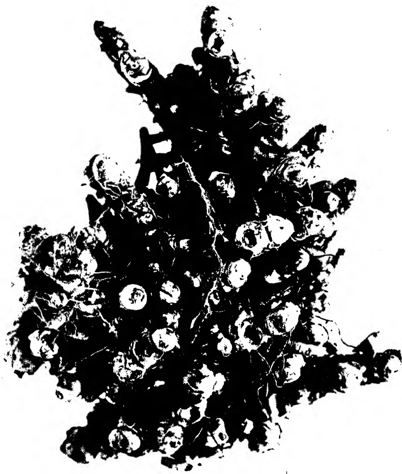
Photo. L. S. Bertus
Plate IV. Typical bunched ginger obtained in the local planting method
This image is a blank white page. It contains several small, dark specks which appear to be scanning artifacts or dust particles. There is no text, handwriting, or printed content on the page. 351The statistical analysis of the data shows that the effect of treatment is clearly significant. The results are expressed in cwt. per acre and as multiples of the seed rate in Table X.
TABLE X| Seed rate | lb. per plot | Cwt./acre | Tons/acre | Fold |
|---|---|---|---|---|
| 1 ton per acre | 45 | 219 | 10.95 | 10.9 |
| .56 ,, ,, | 31.7 | 154 | 7.7 | 13.8 |
| .33 ,, ,, | 27 | 131.3 | 6.56 | 19.7 |
It will be observed that the seed rate of one ton per acre has given the highest yield return and the seed rate of .33 tons the lowest yield. Expressed in terms of the seed rate the yields however show an increase with decreasing seed rate. Thus the yield return from one ton per acre is about 11 fold, while that from .33 tons per acre is nearly 20 fold. The nett returns are however greater with the higher seed rates and it would appear therefore that from the practical standpoint the higher seed rates are preferable. A further investigation is however necessary to confirm these observations and experiments to this end have been started this season. One further point about this seed rate trial needs mention. The yields obtained, compared with those of the manurial trials, are appreciably higher. The high yields can be attributed to the very favourable situation of the plots and their good soil condition and are yet another instance of the effect of soil conditions on yield of ginger.
Another simple experiment to determine whether the planting of seed ginger in large hands (approximately 3 inches by 5 inches) as practised locally, is preferable to planting in small pieces as in Jamaica, from the standpoint of both yield and type of rhizome, was carried out in four randomised blocks each containing a pair of plots. Selected local ginger was planted in holes manured with cattle manure at a distance apart of 15 in. by 15 in., there being 60 holes to each plot. The plots and blocks were separated from one another by narrow drains. The seed rate worked out at about 2,722 lb. per acre.
The results are shown in Table XI below and typical hands from the two sets of plots shown in Plates IV and V for comparison.
352TABLE XI| Blocks | Local Method lb. per plot |
Jamaica Method lb. per plot |
|---|---|---|
| 1. | 46.5 | 44.5 |
| 2. | 43.5 | 42.5 |
| 3. | 37.5 | 34.5 |
| 4 | 32.0 | 29.0 |
| Total | 159.5 | 150.5 |
| Mean | 39.9 | 37.6 |
| Difference | 2.3 | |
| Significant difference (P = .01) | 8.1 |
A statistical examination of the data shows that the average yield difference is definitely not significant for a probability of 100 to 1, though it amounts to about 10 cwt. per acre. The types of hands obtained appear however to be different. In the case of the Ceylon method of planting, the hands from a single set are small in size and, though numerous, bunched together. The 'fingers' too are very numerous. These characteristics are disadvantageous for curing. The hands from the small sets as in the Jamaica method appear on the other hand to be larger in size, are much less bunched together and separate quite easily. They are decidedly superior to the bunched hands for curing. It is likely however that even better ginger for curing purposes might be obtained by planting small sets with not more than two 'eyes' to a set, in holes at closer planting distances than those adopted in these trials. The point is being investigated by the Economic Botanist this season.
Manurial, varietal, and cultural trials carried out with ginger at Giragama, the centre of a ginger growing area, during 1933, have indicated that under the soil and climatic conditions of the district:
(1) The local variety is a significantly better yielder than the Nugegoda variety (a type of degenerated Cochin ginger mixed with Calicut ginger).
(2) Manuring with artificials at the rate of 5 cwt. per acre is equivalent to manuring with cattle manure at 9.2 tons per acre. Both types of manuring give significantly higher yields than non-manured ginger.
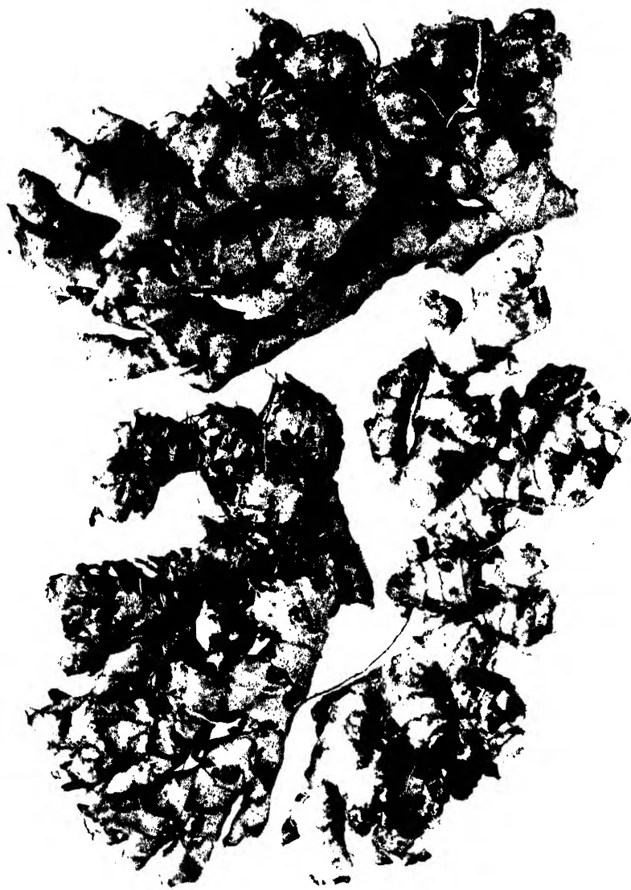
Photo.
L. S. Bertus
Plate V. Typical hands obtained by planting ginger in small sets
This image is a blank white page. It contains several small, dark specks which appear to be scanning artifacts or dust particles. There is no text, handwriting, or printed content on the page. 353(3) A straw mulch produces a significant increase in yield.
(4) Liming is no advantage from the standpoint of yield.
(5) With raw ginger at Rs. 2/- per cwt., an increased profit of about Rs. 20/- per acre can be obtained by manuring and mulching or by mulching alone.
(6) Average yields of ginger vary appreciably with the soil type.
(7) The optimum seed rate for ginger, so far as these trials show, is about a ton per acre. The proportional yield increase is however greater with decreasing seed rate.
(8) If ginger curing is the object in view, the planting of ginger in small sets would appear to be preferable to planting in large hands as is done locally.
Acknowledgment is made to Mr. W. Molegode, Senior Agricultural Instructor, Katugastota for the great care and attention with which he carried out the field work connected with these trials. Thanks are also due to Mr. L. S. Bertus for having taken the photographs accompanying the paper, to Mr. A. Geo. Alwis for having drawn Plate III, and to Mr. C. Canagaratnam, Agricultural Instructor, Headquarters for having assisted in the weighing of the ginger at harvesting.
354THE Avocado Pear is a comparatively recent introduction to horticulture although it has been cultivated in Mexico and Central America from very early times. In these countries the fruit is cultivated around dwellings, no large plantations exist and very little care has been taken with its cultivation. During the last thirty years or so, horticulturists in California and Florida have devoted attention to its cultivation and the vegetative propagation of superior varieties. In these two States the cultivation of the Avocado has become of commercial importance. It is also cultivated largely in the West Indies and Hawaii.
The commercial aspect of Avocado culture has been especially emphasised since 1910 when explorers from the United States of America were sent to Mexico and Guatemala to obtain the best varieties cultivated in those regions. The California Avocado Association, which was organised in 1915, has influenced the development of the industry and its committee has rendered valuable service by the registration and classification of varieties. The Year Book of this Association for 1931 contains a list of 400 varieties including names of Avocados published in the West Indies and Hawaii.
A co-operative marketing agency, founded by the Calavo growers of California, in 1924, assists with the marketing of the fruit, and a similar organisation exists in Hawaii, shipping the fruits to American Markets.
The Avocado is now cultivated in most tropical and sub-tropical countries although it has not yet become as popular elsewhere as it is in America.
The date of the introduction of the Avocado into Malaya is uncertain but Ridley mentions that trees were fruiting in Singapore in 1902. The Avocado was also being cultivated at the Government Experimental Plantation, Kuala Lumpur in 1908. A few of these trees fruited in 1913 and, early in 1914, the present writer advocated extending the cultivation of the fruit. Since that date the Avocado has been grown on a small scale in different parts of the Peninsula and has fruited well both in the plains and at the "Gap" 2,800 feet above sea level. During the last decade, seedlings have been distributed by the Department of Agriculture; in spite of this fact, the fruit is not as widely known, even among Europeans, as it deserves to be. This is probably due to the fact that a taste for the fruit has to be acquired, in consequence of which it is rarely seen in the local markets.
The Avocado Pear belongs to the Natural Order Lauraceae and is therefore related to the Cinnamon. The varieties under cultivation are of two species, viz. Persea gratissima, Guertn (syn. P. americana, Mill.) and P. drymifolia, Cham. and Schlecht (syn. P. americana var. drymifolia, Mez.) The former species include the West Indian and Guatemalan types or races and the latter the Mexican types.
* J. Lambourne in The Malayan Agricultural Journal, Vol. XXII, No. 3, March, 1934.
355It is a tree of medium size, attaining a height of 20 to 30 feet under cultivation, but in Central America it is recorded that old trees reach a height of 60 feet.
The tree may be either erect, compact, or spreading in habit. The bark of the trunk and older parts of the branches are grey in colour while the tips are smooth and green. The leaves are alternate, crowded near the ends of the branches and vary in shape from lanceolate to ovate or even obovate with blunt to acuminate tips. The blades of the leaves vary from 3 to 4 inches to as much as a foot in length, light to dark-green in colour, smooth and shining above and glaucous beneath. The flowers are small, yellowish-green in colour, complete with both stamens and pistils, and they are borne in racemes near the ends of the branches.
Stout's investigations on the Avocado have enabled him to classify varieties into two groups (1) those (Group A) in which the flowers function as pistillates or females in the forenoon and staminate in the afternoon and those (Group B) which function as males in the forenoon and females in the afternoon. The flowers open synchronously in sets and there are normally two periods of opening. In Group A the first period of opening takes place in the forenoon when the stigmas are receptive. These flowers close at about midday and open again for the shedding of pollen in the afternoon of the following day. In Group B the flowers open for the first or female phase in the afternoon, close in the evening, opening again for shedding pollen on the following morning or on the morning of the third day. There is a certain amount of overlapping as regards opening and closing of flowers, especially under unfavourable weather conditions when the first and second openings of the flowers are often delayed. Some varieties have been found to produce excellent crops of fruits in the absence of trees of another group, but despite these observed instances in which trees are not dependent upon cross-pollination, Stout considers that interplanting of reciprocating varieties is normally advisable to ensure that proper pollination takes place which is essential to the production of fruit.
The varieties of both species of Avocado are closely alike in many respects; the differences between the different races are briefly as follows:
The Mexican race is a native of the Mexican highlands and will therefore withstand cold conditions.
The West Indian race has been developed in the tropical lowlands of Guatemala, while the Guatemalan race is a product of the highlands, but there are intermediate forms.
356Other distinguishing characters are that the flower of P. drymifolia is more pubescent and the underside of the leaf more glabrous than that of P. gratissima. The fruits of both species vary in size but those of P. drymifolia are usually smaller than those of P. gratissima. They vary in size from a few ounces to three pounds; in shape from round to oval and pear-shaped, and in colour from green to purplish-black. The fruit is a drupe having a single large seed, often 2 inches in diameter, in the centre. The edible portion of the fruit is between the skin and the seed, and when ripe is of the consistency of butter, cream coloured to green near the skin, of a nutty flavour and contains a large percentage of fat.
The varieties cultivated in Malaya vary considerably in size, shape, and also colour of the fruit, but the majority belong to the West Indian race. The Mexican type is little known, but a few seedling trees are growing at the Central Experiment Station, Serdang, although they have not yet fruited. In Malaya, the West Indian varieties are suitable for cultivation from sea level up to an elevation of about 3,000 feet. The Guatemalan varieties are said to withstand both cold and heat, also a dry climate, while the Mexican varieties are said to withstand a few degrees of frost. These two races may thrive at higher elevations in this country.
In selecting varieties for cultivation, preference should be given to those with fruits of medium size, say 12 to 16 ounces. The fruit should be of good flavour, the skin tough, leathery and of moderate thickness, so that they will withstand transport for some distance. The seeds should be small and not loose in the cavity otherwise the flesh may be injured in transit.
Propagation locally has been by seed, but the disadvantage of this method is that the offspring cannot be relied upon to come true to the parent type; the Avocado is therefore usually propagated by budding or grafting.
Attempts have been made to propagate the Avocado by marcottage but so far without success, although it is reported that, after numerous failures, well-rooted plants have been obtained by this method in the Philippines.
By planting seedlings in beds and laying them down for propagation by the etiolated shoot method, rooted shoots have been obtained, but so far the difficulty in obtaining authentic planting material has made this method impracticable. A stock of budded material is, however, being raised by this Department and will be available in the near future when budded plants of known origin have been established by the etiolation method may prove useful for rapidly increasing supplies of reliable planting material.
The most common method of propagation is by budding and grafting, and the best stocks to use for this purpose in Malaya are seedlings of our local varieties. In California, the Guatemalan race has been budded on to stocks of the Mexican race with the object of giving hardiness to the former, but in the even climate of the plains of Malaya hardiness is a point of little if any importance.
357Raising Stocks.—The seeds should be planted as soon as possible after removal from the fruit. They should be planted pointed end upwards in loose sandy soil, in boxes or seed beds and after germination the seedlings should be transplanted into large bamboo pots or into nursery beds at about 18 inches apart. Germination takes place in a short time and seedlings are ready to bud in six to eight months, when the stems will be about one half inch in diameter. It is essential that seedlings to be used as stocks should be maintained in vigorous growth.
Budding Methods.—Several methods of budding Avocados are recommended and have been successful in other countries.
It should be borne in mind, however, that skill and patience are required, and above all a very sharp budding knife. For the benefit of those who do not understand the various methods of budding, they are described briefly as follows:
The 'inverted T' method is performed by making a 'J' shaped incision in the bark of the stock an inch or two from the ground with the blade of a sharp knife. Budwood is then procured from a shoot of recent growth not soft enough to snap when bent but beginning to mature. The buds should be plump but not bursting into growth. The knife should then be inserted about an inch below the bud and drawn upwards and inwards beneath the bud, bringing it out about the same distance above the bud. A shield-shaped piece of bark with a section of wood attached is then obtained. The section of wood should be carefully removed and the bud attached to the piece of bark inserted into the incision in the stock. The bud is then bound firmly in place with raffia or a thin strip of waxed cloth, taking care not to cover the bud completely. In about three weeks from the time of budding the tying material should be removed and if, on examination, the bud is found to be green it should be retied but not tightly, and at the same time the apex of the stock should be pinched out. The bud should be examined again at the end of six weeks and if it is still alive the wrapping may be removed. At the same time the stock may be cut back still further, but some leaves should be left. The stock should not be cut back completely until the bud shoot is about 2 feet in length. When cutting back the stock, a neat cut should be made close to the union between budshoot and scion and the wound should be covered with some protective material such as grafting wax.
Other methods of budding recommended differ only in the shape of the incision in the stock. The Forkert method, a modified form of rectangular patch budding, has been used successfully in Java with buds from non-petioled ripe budwood. The method consists in making three incisions in the stock, two parallel downwards and one across the top, forming three sides of a rectangle. The bark is then raised carefully, gripped between the blade of the knife and the thumb and stripped downwards. Three quarters of the flap of bark is then cut away. A piece of bark of the same size and shape as the incision in the stock containing a bud is then inserted and tied into place. The subsequent procedure is the same as for the inverted "T" method.
Grafting.—In Florida the Avocado has been propagated by grafting the tips of young shoots on to the shoots of young seedlings by a modified method of side-grafting. The operation is performed as follows: The
358seeds are germinated in boxes and, when the young shoots are 5 to 6 inches in length, the seedlings are taken from the box and laid on a bench. A cut one inch long is made in the side of the shoot just above the seed and a thin section is removed. The scion is taken from the tip of a small branchlet not fully mature and about one inch long with two axillary buds in addition to the terminal one. The scion is then tapered on one side to fit the cut on the stock and is bound into place. The plant is afterwards potted, placed under partial shade and carefully watered from day to day. After union is effected the top of the seedling is removed and the scion allowed to grow.
Cleft Grafting.—Cleft grafting is used on young stocks and in top working older trees. For grafting on to young stocks the scion should be a partially mature shoot, greenish to light brown in colour and about 4 to 5 inches long. This should be tapered at the lower end and inserted in a cleft in the top of a stock of the same colour and size as the scion.
Top Grafting.—This method is used in cases where a tree has proved to be unfruitful or is of an inferior variety. The trunk is cut back with a saw to within three feet of the ground. The trunk is then split, a saw being used to cut down for several inches when a soft wood wedge is inserted and driven in until the trunk commences to split; the edges of the cleft are then smoothed with a knife. Scions of mature growth are then cut and tapered to fit the cleft, one on each side of the trunk, so that the cambiums of both stock and scion are in contact. The wedge is then lifted sufficiently to allow enough pressure from the cleft in the stock to hold the scion in place, after which the wedge is cut off flush with the top of the stock. The cleft and sides of the stock are then covered with grafting wax to prevent the entrance of water. To prevent sun-scorch the top of the stock and the scion is covered with a tough paper bag, holes being made to allow new growth from the scion to elongate. Another method is to place a paper collar round the top of the stock and fill it with sand, holes being made in the base to allow drainage of rain water. The sand should be placed round the outside of the scion as well as at the top of the stock. These paper coverings should not be removed until the scion is large enough to provide shade. A certain number of shoots from the stock may be allowed to grow to maintain circulation of sap which assists healing. They should be eliminated as soon as the scion and stock have properly united.
Another method of top working old trees is to cut back a certain number of branches leaving one or two as "lungs" to maintain the circulation of sap. The young shoots which sprout from the cut branches, should be limited to two or three; when large enough, they are budded in the same manner as seedling stocks.
Soils.—The Avocado is said to thrive on a wide range of soils in South America. It grows excellently on both sandy soils in Florida and heavy clays in California, but it is essential that the soils should be well drained. In Malaya it has been grown successfully on both quartzite hill and quartzite valley soils, also in the granite soils of the hills.
359Planting.—The distance at which to plant will depend upon whether the soil is particularly fertile or rather poor, also on whether the tree is a seedling or has been propagated vegetatively by budding or grafting. Planting distances recommended are 20 ft. × 20 ft. which allows 108 trees per acre to 26 ft. × 26 ft. or 64 trees per acre. On light sandy soils or with budded plants 20 ft. × 20 ft. is usually sufficient, but seedlings on rich soil may be given the wider spacing.
When planting it is advisable to make large holes, and these should be filled with good top soil and cattle manure or garden refuse. Usually holes 2 ft. × 2 ft. × 2 ft. should be dug and when filling them the soil should be made quite firm.
The Avocado is rather sensitive to disturbance of the roots; plants should therefore be raised in bamboo pots, so that they can be transplanted with the roots intact. If raised in nursery beds the plants should be prepared for transplanting by balling a week or two before this operation takes place. Should the roots be at all disturbed the foliage should be reduced or evaporation will be too rapid and the plants will receive a severe check.
The best time to plant is during the rainy seasons of the year; even at this time a good watering should be given to settle the soil round the roots and the plants shaded until they are established.
After-cultivation consists in keeping the soil round the plants free from weeds and, as the trees develop, the area weeded should be extended. A mulch of weeds and cattle manure is beneficial to the growth of the plant. The Avocado requires good cultivation and manuring to give the best results. Cattle manure, if obtainable, is best for general purposes. The growing of leguminous green crops and turning them into soil periodically will help considerably towards keeping the soil fertile. In addition, fertilizers are recommended in the form of bonemeal, and cotton seed or groundnut cake at the rate of 4 or 5 lb. per tree added to the soil after the trees have borne fruit; and again after the fruit is set. Little is known about the manuring of the Avocado in Malaya, but in addition to cattle manure a mixture of basic slag, calcium cyanamide and sulphate of potash in the proportion by weight of 3:1:1 may be applied twice a year round the trees at the rate of from 1 to 4 lb. per tree according to age. If the trees appear to be growing vigorously, the calcium cyanamide may be omitted.
Pruning.—Very little pruning is necessary beyond that which is essential to keep the tree in shape, and the cutting out of dead or diseased branches.
In Malaya the Avocado Pear has so far been remarkably free from pests and diseases. In America, thrips, Heliothrips rubrocinctus and H. haemorrhoidalis have caused damage to the foliage, but spraying with nicotine solution has been an effective control. The red spider, Tetranychus mytilaspidis has also done damage but lime sulphur mixture has been used successfully in combating this pest. Attacks by scale insects are also reported from America.
360A root disease, Sphaerostulbi repens, has caused the death of several trees at the Central Experiment Station, Serdang, and a certain amount of dieback of branches has been noticed.
The Avocado tree, when raised from seed, commences to bear fruit in about the fifth or sixth year from planting, but budded trees are reported to bear fruit much earlier, in some cases, three years after planting. Seedlings planted at the Central Experiment Station, Serdang, in October, 1927 fruited in August and September, 1932. Others planted in April, 1928 fruited in August and September, 1933, while one tree planted in September, 1929 fruited in September, 1933.
Mature trees will bear from a few fruits up to several hundred. Large trees, in their country of origin, are said to bear from 1,000 to 3,000 fruits from 6 to 18 ounces each in weight. Trees bearing larger fruits bear less, the average, however, is said to be 200 to 300 fruits of 12 to 14 ounces each in weight.
Seedling trees vary considerably in their capacity for bearing fruit, they are also said to be irregular in bearing, for a tree bearing a good crop one year may not fruit the next. This is the case at the Central Experiment Station, Serdang, where only about 50 per cent. of the trees have borne fruit in 1933 and of these about half have borne an average crop, others a few fruits only. The fruits from different trees varied in size from 3 to 4 ounces up to 14 or 16 ounces; in colour from green to purple; the skins of the fruits of some trees were quite smooth while others were rough. None of the trees bore very large fruits compared with varieties under cultivation in the countries of origin, California and Florida, where it is reported that varieties bear fruits up to 3 lb. in weight.
The Avocado Pear at Serdang commences to flower about the middle of January and the fruits ripen in August and September. There is some difficulty in judging when some varieties are ripe, especially those with green skins. With the purple varieties there is not so much difficulty, for the fruits are green until they commence to ripen, when the colour gradually changes to a purple tinge. The fruits should be picked before they commence to soften, more especially if they are to be transported some distance to a market. Fruits picked when too under-ripe may shrivel slightly, but if picked when nearing maturity they may be stored until they soften.
In its country of origin the Avocado Pear forms an important article of diet to the population who use it daily throughout more than half the year. An Avocado and a few small corn cakes made from coarsely ground maize is considered, by the Indians of Guatemala, to constitute a good meal. The fruit is broken in half and the pulp, sprinkled with salt, is scooped out of the skin either with the fingers or a piece of corn cake. Among the Guatemalans of European blood, the pulp of the Avocado is usually added to meat soups at the time of serving and the flavour imparted is said to be exceedingly pleasant. Another usual practice is to serve a salad composed of thoroughly mashed Avocado pulp, vinegar, salt, pepper and finely chopped onions. This is said to be a popular and very tasty dish though not especially attractive in appearance.
361In the United States of America, where the fruit is increasing in popularity, the pulp is used as a salad either alone or mixed with lettuce leaves, onions or other vegetables. Sliced or mashed it can be made into sandwiches with bread or cracker biscuits. It is excellent as a salad, either with cold meat or with bread and butter, when mashed and mixed with pepper, salt, and vinegar. Mashed with onions and lime juice it constitutes a favourite dish in Cuba. In Brazil it is looked upon more as a dessert fruit and is also made into ice-cream. The pulp of the fruit, mixed with a little sugar and sherry, has a pleasant nutty flavour and in this way can be used as a dessert.
The flesh of the Avocado is a nourishing article of food containing a high percentage of mineral matter, protein and fat. Its chief value as a food is its high fat content, the digestibility of which has been found by experiment to be equal to that of butter fat or of beef fat.
The calorific energy producing value of 28 varieties of Avocado examined at the University of California represents 1,000 calories for one pound of flesh. The maximum and minimum were 1,325 and 597 respectively. The maximum corresponds to 75 per cent. of the calorific value of cereals and is nearly twice that of lean meat.
The following table from Popeno's Manual of Tropical and Sub-Tropical Fruits represents the work of Jaffa of the University of California on the food value of the Avocado:
| Variety | Water per cent. | Protein per cent. | Fat per cent. | Carbohydrates per cent. | Ash per cent. |
|---|---|---|---|---|---|
| Trap (West Indian) | 78.66 | 1.61 | 9.80 | 9.08 | 0.85 |
| Sharpless (Guatemalan) | 71.21 | 1.70 | 20.54 | 5.43 | 1.12 |
| Puebla (Mexican) | 63.32 | 1.80 | 26.68 | 6.64 | 1.56 |
| Fuerte (Hybrid) | 69.86 | 1.25 | 29.14 | 7.40 | 1.35 |
Recent investigations by Le Roy Weatherley and Eugene W. Waterman of the University of California using Albino rats as indicators, has demonstrated the presence of Vitamin "B" in the flesh of the fruit. The flesh or pulp was compared with Flesschmanns dry yeast standard and was found to have approximately one-twelfth the value of dried yeast. The authors comment as follows: "From these investigations it is apparent that the Avocado ranks high as a source of Vitamin "B". If what is known as Vitamin "B" is in reality two vitamin factors one antineuritic and one growth promoting, as recent investigations seem to indicate, it is evident that the Avocado contains both factors since it prevents paralytic symptoms".
DURING the summer of 1932 Manitoba experienced an extensive and severe outbreak of grasshoppers. This outbreak was not unexpected, since in 1931 grasshoppers had done considerable damage and had deposited many eggs throughout a wide territory. The last previous outbreak in this province occurred during the years 1919, 1920 and 1921 with smaller, minor, scattered infested areas appearing until 1924. The experience gained in this former period proved to be of great value during the outbreak of the summer of 1932.
Three species of grasshoppers occurred in outbreak form. In the eastern part of the infested area the clear-winged grasshopper (Camnula pellucida Scudd) was most abundant. Associated with this species was the two-striped grasshopper (Melanoplus bivittatus Say) which, although not so abundant, occurred in great numbers in places. In the western part of the infested area the lesser migratory grasshopper (Melanoplus mexicanus Saussure) was most destructive. All three species might be found in many fields throughout the territory involved.
Early in the year arrangements were made for the campaign. The provincial government was to supply the ingredients used in the bait. These were bran, sawdust, salt and some form of arsenic. The distribution of the supplies was placed in the hands of the Extension Service, Department of Agriculture, Winnipeg. Each municipality was a unit with the reeve and councillors in charge of local arrangements. Later, mixing stations were established at strategic points in the municipality or at the most central point in that area if one station was deemed sufficient. The local expenses such as the cost of the mixing machine, rentals, cost of hauling, labor etc., were borne by the municipality. Farmers obtained their poisoned bait ready mixed at a mixing station and scattered this bait where required on their farms.
The poisoned bait used commonly during the campaign consisted of the following:
| Bran | ... | ... | ... | 50 lb. |
| Sawdust, bulk equal to bran | (approx. 2½ bushels) | |||
| Liquid sodium arsenite | ... | ... | ... | 2 qts.* |
| Salt | ... | ... | ... | 2 lb. |
| Water | ... | ... | 10 to 12 gallons |
* The two quarts of liquid sodium arsenite contained a total of 2 lb. of .
* By Prof. A. V. Mitchener, Department of Entomology, University of Manitoba, Winnipeg, in Sixty-Third Annual Report of the Entomological Society of Ontario, Ontario Department of Agriculture, 1932.
363This bait gave excellent results. In future the liquid sodium arsenite will likely contain 8 lb. per gallon as the handling charges will be less per unit of poison. Some dry sodium arsenite and some Paris green were used effectively during the campaign but only under emergency conditions or where it was impracticable to forward the liquid sodium arsenite. Several car loads of malt sprouts were used to replace bran. They were cheaper and quite as good if not better than bran.
During the summer of 1931 and 1932 experimental work with various killing agents, with and without salt as an attractant, mixed with different carriers was undertaken with grasshoppers in the Department of Entomology. Without going into the detail of these poisoning experiments some of the results may be of interest. In all of these experiments treated Red River water from the taps at the Manitoba Agricultural College was used. The use of salt in the various baits appeared to be of relatively little value. No attractant appeared to be essential to obtain a good kill if the proper insecticide was used. Sodium fluosilicate gave an average kill of 78 per cent. and gave better results without salt than with it. In limited work with calcium arsenate and with sodium fluoride excellent results were obtained with a kill of over 90 per cent. in each case. Calcium fluosilicate appeared to have very little toxic effect upon grasshoppers. The carrier for the poison may be bran, bran and sawdust, malt sprouts and sawdust, brewer's grains or brewer's grains and sawdust to obtain good killing results. Liquid sodium arsenite as given in the bait above seemed in our experiments to be the most effective and economical poison used.
The mixing machines were all made locally and were similar to those largely used in the former outbreak. Each machine had a capacity of two hundred pounds of wet bait at a time. When in operation the drum remained stationary. Four sets of stirring rods extending the length of the drum thoroughly mixed the bait. The outside rod of each set was near the inside surface of the drum. Each mixing machine was run by a gasoline engine. Full details concerning the construction of the mixing machine are contained in Extension Bulletin No. 98, Manitoba Department of Agriculture, Winnipeg. Farmers came to the mixing station and took the required sacks of bait home where it was scattered by hand. No mechanical device has yet been demonstrated which will spread the bait as well as the human hand and arm. Broadcasting the bait thinly as one would scatter seeds gave best results. It is difficult to get the farmers to scatter the bait thinly enough. Heavy applications are wasteful, dangerous to stock and productive of poor results.
The grasshopper outbreak of 1932 was the most extensive ever experienced in Manitoba.
The first bait used was on May 13, but poisoning did not become general before the last week of May. The majority of the mixing stations closed down between July 4 and July 10, although an occasional station mixed bait until the first week of August. Applications of bait made early in the season were much preferred. Much more stress was placed upon timely application of the poisoned bait than ever before. We strongly urged that prepared baits be held on the farms until the proper weather conditions prevailed.
364Materials used in the campaign included approximately 4,651 tons of bran, 310 cars of sawdust (70 cu. yds. per car), 204 tons of salt, 76,235 gallons (each gallon containing 4 lb. ) liquid sodium arsenite and 14 tons dry sodium arsenite and Paris green. Approximately 16,660 tons of prepared bait were made during the season at a cost of approximately thirty-five cents per one hundred pounds of prepared bait for materials. An additional cost of approximately seventeen and one-half cents per one hundred pounds of prepared bait was incurred in the preparation of the bait. The total cost of the ingredients for the campaign approximated $115,770.25.
Many farmers, particularly, those in the very heavily infested areas, stated that had they not used the poisoned bait they believed that their crops would have been destroyed completely, by grasshoppers. Using the estimate of crop yields for the various crop reporting districts of Manitoba, published by the Manitoba Department of Agriculture for the year 1932 it is estimated that the control campaign undertaken by the provincial government saved the farmers of Manitoba approximately 11,000,000 bushels of wheat, 8,000,000 bushels of oats and 5,000,000 bushels of barley. By virtue of the use of poisoned bait greater yields of forage crops, wild hay, rye, flax, roots, etc. were obtained in the infested areas. Many gardens, including market gardens, were protected either in whole or in part by the use of the bait. In addition the campaign reduced the egg deposits available for hatching in 1933.
The writer wishes to acknowledge the aid of Mr. H. E. Wood, Assistant Director, Extension Service, Department of Agriculture, Winnipeg who was in charge of supplies, for providing the data relating to the cost and distribution of the bait used in the campaign.
Mr. Norman Criddle and Mr. R. H. Painter, Dominion Entomological Laboratory, Treesbank, Manitoba, rendered valuable assistance during the progress of the campaign.
365In 1932-33, having entered in the fourth year of the depression, agriculture continued to be in the focus of the trouble. The farmer's problems, all over the world, centred round the basic question of prices, which appeared to the agriculturist under several aspects, all of them equally serious and important.
In the first instance, in common with other producers, the farmer had to contend with the general tendency of prices to decline. The fall in the prices of the principal agricultural products had continued throughout the year 1932, and only in 1933 a slight recovery took place in some of them.
Expressed in percentages of the average prices of the year 1928, the prices of the principal products of farming have moved as follows:
| 1928 | 1933 | 1932 July- Dec. |
1933 Jan.- June |
|
|---|---|---|---|---|
| Wheat, Manitoba No. 3, Liverpool .... | 100 | 39.7 | 36.9 | 35.8 |
| Rye, Minneapolis No. 2, .... | 100 | 34.5 | 29.6 | 36.6 |
| Barley Canadian No. 3, Liverpool .... | 100 | 42.4 | 37.9 | 34.5 |
| Oats, La Plata, Liverpool .... | 100 | 38.3 | 36.4 | 30.2 |
| Maize, La Plata, Liverpool .... | 100 | 33.9 | 33.0 | 31.1 |
| Cotton, Amer. Middling, Liverpool .... | 100 | 34.5 | 34.9 | 35.2 |
| Flax, fibre, Riga ZK, London .... | 100 | 33.3 | 33.7 | 39.5 |
| Rubber, plant, sheet, New York .... | 100 | 15.3 | 15.3 | 16.3 |
| Beef, Argentine, chilled, London .... | 100 | 61.2 | 60.5 | 55.4 |
| Mutton, N. Zealand, frozen, London .... | 100 | 43.1 | 39.6 | 43.4 |
| Lamb, N. Zealand, frozen, London .... | 100 | 46.8 | 42.0 | 46.1 |
| Pork, Chicago .... | 100 | 40.0 | 39.6 | 37.7 |
| Bacon, Danish London, .... | 100 | 48.4 | 48.9 | 52.8 |
| Butter, Danish, London .... | 100 | 46.0 | 44.4 | 37.7 |
As a result of the fall in prices of certain of the most important products including wheat, which have not shared in the slight recovery of 1933, the total value of agricultural production diminished heavily in 1932-33. Thus in Germany, in spite of the market being highly protected, it was estimated that the gross value of agricultural production in 1932-33 was 9 milliards of RM., as compared with 14 milliards RM. in 1928-29. In Canada, the gross agricultural revenue was estimated to have declined from 1.3 milliards of dollars in 1930 to 0.8 milliards in 1931 and to 0.7 milliards in 1932. In the United States the gross farm income was estimated at the following figures, in milliards of dollars; 1923-29, 11 to 12; 1929, 11.92; 1930, 9.41; 1931, 6.91; 1932, 5.14 or under 50 per cent.
* By George Pavlovsky in International Review of Agriculture Year XXV, No. 1, January, 1934.
366of the amount reached before the depression. These few examples are sufficient to convey a rough idea of the enormous losses suffered by agriculture in the course of the present depression, owing to the fall in the prices of the products of farming.
The effects of the general fall in prices represent, however, only one of the several aspects of the price problem in agriculture.
Had prices declined all-round, in all industries as well as in agriculture, and in manufactured goods as well as in foodstuffs and primary commodities, the purchasing capacity and the whole economic position of the farmers would not have suffered to the extent to which it has actually suffered now. A fundamental aspect of the agricultural price problem, therefore, is that of the disparity between the movements of the prices of farm products, on the one hand, and of industrial products, on the other. The standing grievance of agriculture during the depression—and on many other occasions in the past as well—is that the decline in the prices of agricultural products has been considerably more pronounced than that in other prices, and that farmers, accordingly, have been victimised.
The discrepancy between the price trends has, indeed, been very marked. Unfortunately, the available statistics permit a comparison to be made only for a few countries; but the index numbers given in the table below tend clearly to demonstrate the position of inferiority occupied by agriculture in this respect.
| 1913 | 1931 | 1932 | 1933 | |
|---|---|---|---|---|
| Germany : | Jan.-June | |||
| Agricultural products | 100 | 103.8 | 91.3 | 82.8 |
| Agricultural implements | 100 | 130.7 | 116.1 | 111.4 |
| Finished manufactured goods | 100 | 140.1 | 117.5 | 110.2 |
| Wholesale prices, general | 100 | 110.9 | 96.5 | 91.4 |
| 1926 | 1931 | 1932 | 1933 | |
| Canada : | Jan.-June | |||
| Canadian farm products | 100 | 56.3 | 48.3 | 46.9 |
| Consumers' goods | 100 | 80.0 | 78.8 | 75.7 |
| Wholesale prices, general | 100 | 72.1 | 67.0 | 65.3 |
| 1926 | 1931 | 1932 | 1933 | |
| United States : | Jan.-June | |||
| Agricultural products | 100 | 64.8 | 48.2 | 45.7 |
| Non-agricultural commodities | 100 | 73.0 | 68.4 | 64.8 |
| Wholesale prices, general | 100 | 71.1 | 64.9 | 61.5 |
| 1917 | 1931 | 1932 | 1933 | |
| Poland : | Jan.-June | |||
| Agricultural products | 100 | 59.7 | 52.0 | 49.5 |
| Industrial products | 100 | 79.4 | 69.6 | 63.7 |
| Wholesale prices, general | 100 | 70.5 | 61.6 | 57.4 |
| 1926 | 1931 | 1932 | 1933 | |
| Yugoslavia : | Jan.-June | |||
| Vegetable products | 100 | 96.7 | 67.5 | 62.5 |
| Animal products | 100 | 97.7 | 56.6 | 57.4 |
| Industrial products | 100 | 80.2 | 66.2 | 72.7 |
| Wholesale prices, general | 100 | 88.8 | 65.2 | 66.8 |
This discrepancy between the rate of decline in the prices of agricultural products, which the farmer brings to market, on the one hand, and in the prices of commodities he buys, on the other, is very much to his disadvantage; but it is largely due to causes inherent in the nature of the agricultural industry.
Agriculture, indeed, is severely handicapped by its inherent inability rapidly to adapt its production to changes in the conditions of the market. Scattered and essentially individualistic in outlook, farmers cannot easily organise and combine with a view to achieving a certain unity of control over their productive and marketing activities. While in other industries, the keener the competition, the stronger is the tendency towards combination and the regulation of production and sales by organised producers with a view to maintaining the prices of their products, farmers are not in a position by organised effort to reduce and to control competition among themselves. When they possess, as they often do, a considerable political influence in their respective countries, owing to their powerful vote, they may succeed in obtaining from the legislature or the administration some measure or other aimed at relieving their immediate plight. But when, as it frequently happens, these measures are simply palliatives capable only of mitigating the impact of competition, without effectively dealing with the roots of the trouble, they are likely, in the long run, rather to make the position worse than to improve it. While the political organisation of the agricultural interests, though it may be effective in obtaining immediate relief, is seldom capable of solving the economic problems of farming, the difficulties of organising agriculture for business purposes are enormous.
One of the methods, cruel but never failing in its effect, by which, in other industries and trades, competition tends to restore the disturbed equilibrium of supply and demand, is the ruthless elimination of the marginal producers. In agriculture, no elimination of marginal producers, on a scale at all comparable to that which takes place in other industries, is possible. The great bulk of producers consists of small peasant farmers who will go on producing so long as their industry, which for them is not only an occupation, but a traditional mode of life, will supply them with the necessary minimum of food and of housing. Even when the mass of farmers goes actually bankrupt, no Government in a country with a large agricultural population would face their eviction. The Governments and the mortgage banks, in such an emergency, would make some arrangements which would permit the farmers to remain on their farms, either on the basis of some sort of moratorium of farm debts, as has recently been done in several countries of Eastern and Central Europe, or as tenants of their former properties, now legally forfeited to the banks, as in the United States. In both cases, the output even of the marginal producers would not be so completely eliminated as to improve the conditions of the market by reducing supplies: production will generally be continued on more or less its former scale.
The result of all this was that, while, when the depression set in, other industries have immediately started, by combined effort, to adapt supply to demand by reducing their output and exercising a strict control over their sales, agriculture went on producing as before, and in some cases
368has even attempted, by increasing production, to make good on the quantity of products brought to market the losses suffered by the fall in prices.
The difference in the development of industrial production on the one hand, and of the area sown to the five principal cereals, on the other, is shown in the table below, in which the index numbers of world industrial output are taken from the publications of the Institut fur Konjunkturforschung in Berlin.
| Years | Industrial | Area sown to principal cereals | |||
|---|---|---|---|---|---|
| Production | U.S.S.R. included | Exclusive of U.S.S.R. | |||
| 1928 | ... | ... | 100 | 100 | 100 |
| 1929 | ... | ... | 106.9 | 101.0 | 100.7 |
| 1930 | ... | ... | 93.6 | 103.8 | 102.4 |
| 1931 | ... | ... | 83.1 | 104.0 | 101.1 |
| 1932 | ... | ... | 73.3 | — | 100.0 |
The difference in the reaction to the depression of industry, on the one hand, and of agriculture, on the other, is indeed striking. It is due partly to the lack of unity of control in farming, as compared with the primary and the manufacturing industries, which have been able to combine not only nationally, but sometimes even on an international scale. Partly, it is accounted for by the fundamental importance attached in many countries to the keeping of the agricultural population on the land at any cost.
The enormous rôle played by business combinations in maintaining the prices of the products of organised industries may be judged from the table below, which shows the difference in the price movements of cartelised goods, on the one hand, and non-cartellised goods, on the other, in Germany, during the depression.
| January | Cartellised goods (1926 = 100) |
Non-cartellised goods (1926 = 100) |
||
|---|---|---|---|---|
| 1929 | ... | ... | 104.6 | 101.9 |
| 1930 | ... | ... | 105.0 | 90.4 |
| 1931 | ... | ... | 95.2 | 66.2 |
| 1932 | ... | ... | 84.3 | 51.2 |
| 1933 | ... | ... | 83.5 | 45.7 |
The inferiority of agriculture, as a non-organised branch of production, in its competition for shares in the diminishing national dividend against industries more easily organised and controlled, can clearly be inferred from these figures.
Among the manufacturing industries, the most highly organised are those engaged in the production of machinery and industrial equipment—the metallurgical, metal-working, engineering and electrical industries—and it is to this fact that the relative stability during the depression of the prices of producers' goods has been largely due.
At a time when the national dividend is diminishing under the influence of the depression, no branch of production can escape a proportional reduction in its particular share of the national income, except by using its
369power of organisation to encroach upon the shares of the less organised branches. Since agriculture belongs to the unorganised sector of production, it is, therefore, losing not only absolutely, but also relatively to the industries which use their higher power of organisation to shift to its shoulders a part of the burden they should have borne.
The farmer not only loses part of his income by the fall in the prices of his products but out of his diminished income he is called upon to pay relatively higher prices for the products of other industries which he buys for his farm and his household.
This brings in yet another aspect of the agricultural problem, namely the relations existing between the prices of agricultural products and their costs of production.
The relations between prices and costs of production in agriculture have been profoundly disturbed by the war and by its consequences. During the war practically all items of costs have increased considerably, but owing to the general rise in prices and to measures taken to encourage agricultural production the margin between costs and prices was maintained and even often increased, so that in many countries the war period had been a prosperous time for the farmers. This prosperity, wholly due to war-time conditions and to a series of artificial measures, such as guaranteed prices, etc., did not last long after the war. Since the deflation of 1920-21, the situation changed completely. The prices of agricultural products fell rapidly, while many of the most important items of cost have not been affected by the deflation. Fiscal charges, enormously increased by the war, were a heavy and absolutely fixed item. The progress of social legislation which was achieved during the war and in the course of the political and social upheavals of 1918 and 1919 have imposed upon all branches of production largely increased charges for social services. Agricultural wages, which increased considerably during the war and the period of inflation, and which represent generally the largest single item of costs in farming, could not be reduced to any marked extent, owing to the progress made in the organisation of agricultural labor, on the one hand, and to the existence in many cases, since the war, of wages boards and other statutory bodies which fixed the wages rates for the farmers to pay, on the other hand. Agricultural credit charges on mortgages and loans, largely based on transactions completed during the period of inflation, and accordingly on inflated land values, and at rates of interests reflecting wartime conditions, also weighed on the farmer very heavily, and represented fixed items of costs. Thus, a very large proportion of the aggregate costs was fixed, and only the minor items have, as a rule, been more or less reduced by the deflation.
Accordingly from 1920-21, agriculture, in spite of occasional improvements in the price situation, has been continually depressed, even when other industries had spells of prosperity. When the present depression set in, it found the farmer already struggling for years with the problem of adapting his costs of production to the price level, and it cannot be said that agriculture had generally succeeded in restoring the balance. The index numbers of the movement of prices of agricultural products, on the one hand, and of the principal means of production on the other, which are unfortunately available for a few countries only, tend to show
370that the necessary equilibrium was still far from being achieved on the eve of the present depression. Thus, in Switzerland, in 1928, the index number of prices of farm products (1914=100) was 151; that of costs of production 172. In Holland, in June 1929, the indices (1910-11 to 1913-14=100) were: agricultural products, 129; wages, 204; all costs, 163. In Sweden, in 1927-28, the index numbers (1909-13=100) were: 143 for agricultural products, 186 for wages and 152 for commodities bought by the farmers. In Germany, in 1928-29 all farm costs stood at 190.5 per cent. of the pre-war figure, while agricultural products reached only 132 per cent.
The fact that, even before the beginning in 1929 of the present crisis, farming was depressed by its inability to balance its costs of production with the prices of its products, is also borne out by the examination of the statistics based upon the results of farm accountancy in various countries. The statistical study of farm accountancy has been carried on by the International Institute of Agriculture for the last few years, and the first results analysed and published in 1931 refer to the agricultural year 1927-28. Thus the materials now available for 16 to 18 European countries, of which about 12 give results which can be accepted as sufficiently representative of the real conditions and tendencies of farming in their respective countries, cover two years immediately preceding the present depression, namely 1927-28 and 1928-29.
It will be seen from the table on page 371, in which figures for ten European countries, very different in every respect, are given, that on the eve of the present depression the average net returns of peasant farms per hectare were negative nearly in every case. As a rule, the average farmer had not been able to make both ends meet and had been working at a loss, which had to be met either by drawing on capital, or by borrowing, or, finally, by lowering the whole standard of life of the farmer and his family, neglecting replacements of stock, etc.
The development of the depression since 1929 made the position more precarious still, because the fall in agricultural prices, especially since 1930, became exceedingly rapid, while the further reduction of costs was very difficult. Both on the farm and in their private households the farmers have often reached the extreme limits of possible economies, and little more could be done in this direction. There remained the fixed charges and the wages bill to fall back upon. In wages, there has been a considerable reduction everywhere. In the United States, the index numbers of agricultural wages calculated by the Bureau of Agricultural Economics (1910-14=100) were as follows: 1929, 170; 1930, 152; 1931, 116; in July 1932 the index was 90. Taxes and interests on debts had often simply to be left unpaid, as a result of which the number of foreclosures and forced sales of farm property increased greatly. In his Letter on the Farm Debt Problem, presented to Congress in March 1933, the Secretary of Agriculture of the United States, after comparing the incomes of farmers with the amounts they have to pay in taxes and debt charges, says that "many farmers even among those who have no debt and therefore no interest to pay, are nevertheless unable to meet their taxes from this year's income, and can pay them, if at all, only by borrowing money for the purpose, or by drawing on other resources. Cases of this kind occur, of
371course, even in years when farm prices are favorable by reason of crop failures or other local disasters, but this year it will be true of many farmers even without any special disasters to crops and livestock." The same Letter contains statistical data concerning forced sales for debt and taxes, which, after having, in 1929, reached the lowest figure for some years, have more than doubled in 1932. Indeed, the total number of forced sales of farms in the United States per 1,000 farms were: in 1929, 19.5; in 1930, 20.8; in 1931, 26.1; and in 1932, 41.7.
In 1930-1931, the second year of the present depression, for which the International Institute of Agriculture could ascertain the relations of the prices of certain important agricultural products in a number of countries by means of calculations based on the farm accountancy data at its disposal, the prices in all these cases were below the cost of production. The following table shows the current market prices compared with those which, according to the calculations made, should approximately be sufficient just to meet the costs, without any margin of profit left over.
| Country | Years | Number of farms | Profits or losses on total farm assets (gold francs per hectare) |
|---|---|---|---|
| Denmark | 1927-28 | 573 | - 99.77 |
| 1928-29 | 599 | + 47.21 | |
| Switzerland | 1927-28 | 500 | - 233.45 |
| 1928-29 | 504 | - 162 | |
| Austria | 1927-28 | 397 | — |
| 1928-29 | 743 | - 34.13 | |
| Czechoslovakia | 1927-28 | 221 | — |
| 1928-29 | 228 | - 25.40 | |
| Poland | 1927-28 | 804 | + 8 |
| 1928-29 | 855 | - 48.67 | |
| Latvia | 1927-28 | 117 | - 16.31 |
| 1928-29 | 132 | - 38.34 | |
| Estonia | 1927-28 | 250 | - 20.27 |
| 1928-29 | 260 | - 21.38 | |
| Finland | 1927-28 | 414 | - 39.43 |
| 1928-29 | 474 | - 64.98 | |
| Norway | 1927-28 | 190 | - 186.93 |
| 1928-29 | 172 | - 171.11 | |
| Sweden | 1927-28 | 286 | - 65.67 |
| 1928-29 | 242 | - 66.89 |
Average prices required to meet the costs of production, compared with the average market prices current in 1930-31.
| Wheat | Potatoes | Beef | Pork | Butter | Cheese | Milk | |
|---|---|---|---|---|---|---|---|
| Switzerland : | Swiss francs per kg. | ||||||
| Prices required | 0.46 | 0.15 | 1.99 | 2.45 | 5.18 | 2.66 | 0.27 |
| Prices current | 0.42 | 0.14 | 1.83 | 2.25 | 4.75 | 2.44 | 0.25 |
| Sweden : | Swedish kronor per kg. | ||||||
| Prices required | 0.24 | 0.08 | 0.69 | 0.83 | 2.56 | 1.40 | 0.25 |
| Prices current | 0.20 | 0.07 | 0.58 | 0.70 | 2.15 | 1.18 | 0.21 |
| Finland : | Finnish marks per kg. | ||||||
| Prices required | 0.28 | — | 0.79 | 1.23 | 2.92 | 1.95 | 0.16 |
| Prices current | 0.22 | — | 0.63 | 0.98 | 2.32 | 1.55 | 0.13 |
| Denmark : | Danish kronor per kg. | ||||||
| Prices required | 0.14 | 0.09 | 0.71 | 1.13 | 2.61 | 0.75 | 0.13 |
| Prices current | 0.12 | 0.08 | 0.61 | 0.98 | 2.25 | 0.65 | 0.11 |
| Poland : | Polish zloty per kg. | ||||||
| Prices required | 0.48 | 0.08 | 0.57 | — | — | — | 0.42 |
| Prices current | 0.32 | 0.05 | 0.38 | — | — | — | 0.28 |
A similar calculation referring to the year 1932-33, was made by the Central Office of Farm Accountancy in Soissons and refers to the position of the farms in the Soissons district in France. Here the relations between the prices needed to meet the costs of production and those current on 1st December 1932 were as follows :
| Prices needed (French francs) |
Prices current | ||
|---|---|---|---|
| Wheat, per quintal | ... | 147.18 | 106 |
| Sugar beet, per ton | ... | 176.77 | 150 |
| Oats, per quintal | ... | 100 | 80 |
| Mixed corn, per quintal | ... | 108 | 80 |
| Straw, per ton | ... | 165 | 80 |
| Fodder, per ton | ... | 411 | 220 |
Though these data have no pretension to being more than fair approximations, they are sufficient to show that the present lack of balance between prices and costs in agriculture cannot continue without causing the utter ruin of the agricultural industry. Either prices have to be raised, or costs reduced. But a further reduction of costs, even if it could be carried to such a point as to bring costs down to the present level of prices, could hardly be expected to make farming once again a paying occupation. The drastic application to agriculture of the principles of mechanisation and rationalisation, which alone could perhaps, provide a solution of this problem, apart from the purely technical difficulties which would often make it impracticable, would create fresh social and economic problems. Technically, seeing that farming is so largely a peasant industry conducted on family lines, and that even in large farms labour-saving devices can only be applied to a very limited class of operations, rationalisation and mechanisation in agriculture are set very much narrower limits than in most other industries. From the social point of view, a further extension of the application of labour-saving expedients, including changes in farming
373systems which involve a reduction in the demand for labour, would be hardly desirable, in so far as it would be bound to increase agricultural unemployment and, in many cases, also to deprive the smaller peasantry of an important source of supplementary earnings, thus helping to undermine the economic position of the numerous class of semi-independent peasant farmers.
Accordingly, the price problem in agriculture, which has been outlined above in its principal aspects, would appear to be capable of satisfactory solution only by an increase in the prices of farm products, which would restore a normal relation between the prices and the costs of production.
Thus, practically all the measures taken by the Governments and the activities of farmers' organisation since the beginning of the present depression have been directed towards improving, as far as possible, the price situation on their respective markets. This they sought to achieve, in the first instance, by setting up systems of protection against foreign competition, by improving the organisation of agricultural marketing and, especially of late, by deliberately controlling production in such a way as to adjust the relations between supply and demand on their respective national markets or, in the case of some staple products, on the world market as well.
The history of the development of protection and other measures aimed at the control of the prices of farm products during the present depression has been told in our reviews of the agricultural situation and need not be recapitulated here. By the beginning of the agricultural year 1932-33, tariffs, often raised to prohibitive heights; milling quotas which imposed drastic restrictions upon the admission of imported grain in flour-milling; import quotas and licensing systems which involved direct quantitative restrictions upon the importation of agricultural products; prohibitions and monopolies; a complicated system of restriction of dealings in exchange, and, finally, such indirect but sometimes very effective expedients as measures of veterinary protection, constituted so efficient a system of barriers to international trade in agricultural products as to make the price movements of certain of the most important of these products on some national markets practically autonomous.
The prices of these products on markets so effectively isolated from foreign competition came thus to depend entirely on the relations between the home supplies and the internal demand, and the price level could be kept higher than in countries not so well protected. As an outstanding example of such price autonomy, one can point to the prices of wheat in Germany, France or Italy. In all these countries, and especially in Germany, the rates of general duties on wheat exceed more or less considerably the current prices of imported wheat in London and Liverpool, and other restrictions are also in force. In all these cases the wheat prices on the national market depend essentially on home supplies, and unless there is overproduction at home, they can be maintained at a level which makes wheat-growing remunerative. Yet it cannot be said that the policy of autonomous price formation has generally succeeded in solving the agricultural price problem on the markets in which it has been applied. Indeed, though the level of prices has been maintained on a higher basis than in
374other countries, its gradual decline could not be prevented, and farmers continue to suffer from falling prices. This general tendency of the prices of farm products to decline is the natural effect of the all-round diminution in the purchasing capacity of the masses of consumers caused by the general economic depression which is itself largely due to the disintegration of the world market into isolated national economies. Against this decline no system of defences can protect the prices of farm products until the problem of international economic co-operation finds once again a satisfactory solution and the effective demand for foodstuffs and raw materials of agricultural origin is restored. Thus, the autonomy of price formation on national markets does not of itself provide a solution of the price problem even within the national economies concerned. Even should a market so isolated from outside influences be abundantly supplied with cheap credit facilities, this standard remedy against depression would hardly succeed in reviving the lingering agricultural industry, owing to the adverse effect which falling prices are bound to exercise upon the revival of confidence.
Accordingly, along with the continuance and further extension of protectionism, as applied to agriculture, the need for other expedients aimed at the better organisation and co-ordination of production and marketing of farm products has been increasingly making itself felt. The agricultural year 1932-33 has been particularly remarkable for this tendency towards deliberate co-ordination and planning of production and marketing, which linked the agricultural developments of the period under review with the general trend towards planned economy.
Elements of planning and organisation have, indeed, been very much in evidence in the recent agricultural policy of all countries which sought to assist their farmers and to restore agricultural production on a remunerative basis. Marketing schemes; pooling arrangements; cheap credit; moratoria and other arrangements to relieve the burden of debts; subsidies in different forms—all these measures continually extended the sphere of deliberate intervention of Governments in the conduct of the agricultural industry; but it was left to the more recent period to make definite steps towards the adoption of comprehensive schemes of deliberate re-organisation of farming.
The problem of planning in agriculture differs from that with which one has to deal in other industries in certain important aspects.
In the first instance, owing to the scattered nature of the agricultural industry which precludes the development of spontaneous organisation aimed at the control of production and marketing in agriculture, the part played in promoting co-ordination in farming by Governments is far more important than in other branches of production.
While in industry the pioneering work in planning has been done by business combinations formed by private initiative and pursuing the private economic interests of their promoters, and the Governments had often found necessary to combat these efforts as tending to restrict the freedom of competition and leading to the spoliation of the public by monopolies, in agriculture the reverse is the case. The Government has to start the scheme and, unless the producers are directly interested in loyally following the plan
375by being paid for doing so, by no means save the intervention of public authority armed with sufficient sanctions can the observance of the scheme be enforced. Indeed, as the experience of the international schemes of control for rubber, coffee and tea has demonstrated, the attempt of control through producers' agreements are most likely to fail because, as soon as an initial rise in the prices of the product is achieved, an increase of production by outsiders encouraged by this improvement brings about a fresh collapse of the market. Such encouragement of production by outsiders, though it may take place in any other branch of production as well, in most industries is but a relatively remote contingency, because the existing concerns have interest in joining the scheme, while new concerns cannot be put in operation without considerable delay and the investment of large capital in a venture of which the success, in the eyes of the practised financier, would appear as more than problematical. In agriculture, in which unlike in industry, so large a part of the aggregate output of any commodity is contributed by small unorganised producers working with very little capital, interference with the scheme by actual or potential small producers outside the ring is a standing menace. When the scheme of control involves one of the great agricultural staples, largely produced in small peasant farms throughout the greater part of the globe, such as wheat, it has to be both initiated and carried out by the Governments, and its actual putting into effect presents difficulties almost insuperable, unless the Government finds a way of either making it a clearly profitable proposition for the farmer to obey, or otherwise penalises him directly for disobedience. The latter course, which involves such measures as super-taxation of all increases in cultivation, or some other form of deterrent of a financial nature, must necessarily be applied to the individual offender, and is therefore practicable only in the case of localised crops, where the changes in the cultivated area can easily be followed. In this way it has been possible, for instance, to check the excessive extension of vineyards by the imposition of heavy taxation on any increase in the cultivation of vines. But, while applicable to vine-growing such an expedient would be out of the question in the case of cereals or other crops cultivated on millions of farms all over the world. In the case of staple farm products, probably the only means by which the support of a scheme of reduction or limitation of crops by the mass of producers can be enlisted, is the creation of direct economic incentives for the growers to assist in its carrying out.
But planned economy, as at present conceived, does by no means necessarily imply a deliberate reduction of output either in agriculture or in any other branch of production.
When, in the past, the attempts at co-ordinating economic activities depended almost entirely on the initiative of private business combinations and had for their object the direct economic advantage of the industries so organised, the control of output with a view to maintaining a condition of relative scarcity on the market was the main purpose of planning, and planned economy was more or less identified with a systematic restriction of supply. Economic planning, as applied on a national scale by a Government, with a view to achieving greater stability in the economic system and to improving the economic and social conditions of the country generally, essentially implies a comprehensive scheme of co-ordination of economic activities. Such planning may involve a limitation of output in the
376over-grown industries, as well as an increase of production in industries which lag behind the rest and must be expanded, if the balance within the economic system is to be achieved. Indeed, since the ultimate purpose of planning should always be to increase, and by no means to reduce, the wealth and prosperity of the community, the immediate object of planning should be the balancing of the various branches of production by increasing, rather than by diminishing, production all round. Restriction ought to be considered only in extreme cases, with regard to branches of production which have so far out-grown the existing capacity of the market for their products as to need pruning. During an economic depression, when relative overproduction in certain industries may have to be eliminated at all costs, in order to restore some sort of working balance in the economic system, planning, may have in the first instance to consider a reduction of output in the branches of production which have not kept pace with the diminution of output in other industries. But such policy of restriction, in a well conceived system of planning, can only appear as a temporary expedient, necessary to put the various branches of production in a state of initial equilibrium, and an effort at an all-round expansion of economic activities must constitute the next step.
This applies to farming more than to any other industry, since agricultural production during the depression, as we have had occasion to point out before, has refused to follow the general movement towards a diminution of output, and, in some cases, has actually increased its production. Here, as a temporary emergency measure, a reduction of output may be necessary in order to permit a return of farming to a condition of equilibrium between prices and costs; but it would be a fatal error to assume that economic planning in agriculture in future will have for its object mainly to keep the output of farm products within definite limits, as a means for keeping up prices.
Under normal economic conditions, agricultural production largely constitutes the limiting factor of economic expansion generally; and to keep it down would mean putting obstacles in the way of general economic progress.
Accordingly, a policy aimed at a restoration and normal expansion of economic activities, as the basis of prosperity and civilization, must necessarily aim, after an initial equilibrium had been restored by a temporary restriction of agricultural production, at creating conditions which would allow a fresh development of farming on a remunerative basis. This can only be achieved by a thorough co-ordination of deliberate policies with regard to the various branches of production, industrial and agricultural, to money and credit and to international economic co-operation.
It must be admitted that, though economic planning in agriculture had been steadily gaining ground in the course of the last few years, there was little sign of the need for such co-ordination being fully recognised. In farming, as in all the other industries, planning was being adopted empirically and was introduced not as part of a comprehensive programme of economic reconstruction, but in answer to the pressing demands of the situation. Agriculture faced with an unprecedented depression had to be helped, and Governments intervened with measures
377of protection and assistance, sometimes far-reaching, but mostly designed ad hoc. Farming had to be protected from foreign competition, and this led to the gradual development of a vast system of tariffs, milling regulations, import quotas, licenses and so on, of which the original purpose was merely to ward off the pressure of imported agricultural products upon the home market. In countries exporting agricultural products, measures would be taken to organise and to improve the system of marketing, to reduce the production and the costs and, as far as possible, to regulate exports by international action with a view to supporting prices on the world market. Sometimes, both in the importing and the exporting countries it would be found necessary to relieve the plight of some particular branch of agricultural production by subsidies, guaranteed prices, export bonuses or other measures of financial assistance. Thus, agriculture would be more or less effectively helped out of its immediate difficulties, but these measures of assistance would not be welded together into a whole or co-ordinated with the other elements of the economic system. Yet, the network of various measures of assistance was bound, in the course of time, to develop into a system of which the functioning ceased to be automatic and governed by competition and demanded the continuance of Government intervention; and such intervention in the long run, could only be effective on condition that it was properly co-ordinated with the development of all other economic activities, both national and international. Agricultural policy, however, as a rule, was not co-ordinated with that pursued in respect of other branches of production; neither were the interrelations of the separate national economies brought into line with national economic policies to a sufficient extent.
Until the financial crisis of 1931 had largely done away with the fiction of the gold standard, there had existed a cleavage between the marked trend of economic and agricultural policy towards deliberate planning and control, and the nominal preservation of an international gold standard. This cleavage, though it may not have been generally acknowledged, was very painfully felt.
The essential purpose of planning being that of restoring and maintaining the balance in production, both between the different industries and between the prices and the costs in the particular industries, prices in planned economy are necessarily subject to the closest control. Yet price control is incompatible with the existence of an effective gold standard, since the proper functioning of the latter implies the automatic adjustment of prices to gold movements. In other words, planned economy necessarily involves a system of managed currency; and in fact the nominal gold standard which had existed since the stabilization had never been anything else than managed currency camouflaged as gold. The abandonment of the gold standard by many countries in 1931, followed by the depreciation of the dollar in 1933, and by measures which, in countries still keeping to gold, have made the gold standard technically and avowedly ineffective, opened the way to a more comprehensive policy of economic planning and permitted the movement towards planned economy to assume a more constructive aspect. The growing use of quantitative limitations of international trade, as well as the development of international contractual policy to which reference was made in the preceding chapter, along new lines, constituted further steps in the same direction, since in this way it was sought to bring international trade into line with national planning.
378In the course of the year 1932-33, this new trend in the evolution of planning and co-ordination in agriculture has been particularly pronounced in the agricultural policy of the United States, under the present Administration, and of Great Britain where, under the National Government, planned economy is taking strong roots in farming.
The comprehensive character of the programme of reconstruction envisaged in the Agricultural Adjustment Act, approved by the U.S. Congress on the 12th of May 1933, appears both from its opening passages and from its contents.
The Act begins with a Declaration of Emergency, which runs as follows: "That the present acute economic emergency being in part the consequence of a severe and increasing disparity between the prices of agricultural and other commodities, which disparity has largely destroyed the purchasing power of farmers for industrial products, has broken down the orderly exchange of commodities, and has seriously impaired the agricultural assets supporting the national credit structure, it is hereby declared that these conditions in the basic industry of agriculture have affected transactions in agricultural commodities with a national public interest, have burdened and obstructed the normal currents of commerce in such commodities, and render imperative the immediate enactment of Title 1 of this Act."
Then follows the Declaration of Policy: "It is hereby declared to be the policy of Congress:—
1. To establish and maintain such balance between the production and consumption of agricultural commodities and such marketing conditions therefor, as will re-establish prices to farmers at a level that will give agricultural commodities a purchasing power with respect to articles that farmers buy, equivalent to the purchasing power of agricultural commodities in the base period. The base period in the case of all agricultural commodities except tobacco shall be the pre-war period, August 1909 to July 1914. In the case of tobacco, the base period shall be the post-war period, August 1919 to July 1929.
2. To approach such equality of purchasing power by gradual corrections of the present inequalities therein at as rapid a rate as is deemed feasible in view of the current consumptive demand in domestic and foreign markets.
3. To protect the consumers' interest by re-adjusting farm production at such level as will not increase the percentage of the consumers' retail expenditures for agricultural commodities, or products derived therefrom, which is returned to the farmer, above the percentage which was returned to the farmer in the pre-war period, August 1909 to July 1914.
This declaration of policy pursued by the Agricultural Adjustment Act is interesting as showing both the wide scope of the reconstruction aimed at, which while assisting the farmer, has to consider at the same time the interests of the consumer, and the essential foundations of the method by which economic balance in agriculture should be restored. Here, indeed, one has not only a declaration of policy, but an exposition of the basic principles of planning, as conceived by the authors of the scheme.
379As in all planning, the object of the scheme is that of restoring and maintaining economic equilibrium, which, in the competitive system is an elusive condition of balance, which is never attained. Planning, if it is to achieve its purpose must get hold of this shadow and fix the terms of the equation which expresses it. When in devising a scheme of planning, one has to take some starting point, the only element of the equation one can get hold of, as a rule, is price, which, however, if it is to be used as the foundation of a system of planned economy, must be an equilibrium price. Since the state of equilibrium is a highly elusive condition, which price really represents it, it is exceedingly difficult to say. Accordingly, the Agricultural Adjustment Act adopts the expedient of referring to a normal "base period", which for all products except tobacco, is the period 1909-1914, during which price relations are considered as having been in a condition of equilibrium.
This is the way in which the Act seeks to solve one of the fundamental problems of planned economy, namely the definition a priori of the condition of equilibrium which it is essential to define with a fair degree of approximation in order to make planning effective. Without some fiction such as "normal periods" the problem can hardly be solved but such fictions have the unavoidable drawback of leaving out of account the changes in the relative positions of the various branches of production which may sometimes be so important as to make the present equilibrium prices quite different from those of the "normal" period. Thus, if within the intervening period the costs of production in various industries have not all been increased or lowered to the same extent, the margins of profit allowed under a scheme of equilibrium prices based on price relations of a "normal" period will differ very widely, and the balance will not be attained. This, undoubtedly, is a drawback inherent in the scheme adopted, in the Act, as well as in any other scheme of the same nature, which taken alone cannot be considered as an adequate theoretical basis for the determination of the equilibrium price relations.
The so-called Agricultural Adjustment Act contains three separate enactments, namely the Agricultural Act proper, the Emergency Farm Mortgage Act and the Act conferring upon the President extraordinary powers with regard to the issue of currency, the depreciation of the dollar to 50 per cent. of its gold parity and the coinage of silver dollars in a definite ratio to gold coins.
The Agricultural Adjustment Act provides for the reduction of the cultivation, in the first instance, of cotton, and then of any other agricultural products which the Secretary of Agriculture, may deem fit to include in the list, and of which wheat, maize, tobacco, rice, hogs and milk and dairy products are already provided for in the Act itself. In all cases, the farmers are induced to co-operate in the reduction of crops by the grant of direct financial benefits, which in the case of cotton consist in the option for the purchase of cotton at cost price from the Government stocks, offered to the growers who reduce their cultivation by 30 per cent. In the case of other crops, the farmers who agree to reduce their production in accordance with the Government scheme are given direct cash bonuses. The money necessary to defray the expenses of the scheme is collected by means of a processing tax imposed upon the industries engaged in the transformation of agricultural products.
380The Emergency Farm Mortgage Act provides for the relief of mortgage debts burdening agriculture, for the liquidation of joint stock mortgage banks and for direct financial assistance to farmers with a view to the conversion of their existing indebtedness, of the redemption of foreclosed farms and of the provision of the necessary working capital.
Finally, the characteristic fact of the inclusion in the same document of the Act conferring upon the President extraordinary powers with regard to monetary policy, points to the recognition of the existence of close interdependence between the carrying out of the plan of agricultural reconstruction and the adoption of a definite monetary policy, which would help the work of adjustment by giving greater flexibility to the monetary system.
Another enactment passed under the present Administration is the Farm Credit Act of 1933. This Act has for its purpose "to provide for organisations within the Farm Credit Administration to make loans for the production and marketing of agricultural products, to amend the Federal Farm Loan Act, to amend the Agricultural Marketing Act, to provide for the obligations of the United States, and for other purposes."
This Act, in the first instance, provides for the improvement of the financial organisation of agriculture by the creation of twelve Production Credit Corporations and of twelve Banks for Co-operatives, one Corporation and one Bank in each city having a Federal Land Bank. In order to avail themselves of credit facilities provided by the Production Credit Corporations, farmers must combine in Production Credit Associations, through the medium of which such credits are obtainable. The Act also provides for the creation of a Central Bank for Co-operatives for loans to co-operative associations. The exact delimitation of the respective spheres of activity of the Central Bank and of the twelve regional Banks the Act leaves to the discretion of the Governor of the Farm Credit Administration.
The Farm Credit Act, though, unlike the Agricultural Adjustment Act, it does not contain any special programme of reconstruction based on definite principles, forms an essential part of the scheme of reconstruction, as a whole, in so far as it provides for the creation of special credit facilities for its carrying out and modifies certain enactments of the preceding period, so as to bring them into line with the plans now put into execution.
Considered in connection with the enactments which deal with other aspects of economic activity, and contain schemes for their deliberate reconstruction upon new lines, such as the Emergency Banking Act, the Unemployed Relief Act, the National Industrial Recovery Act and the other enactments and measures of the present Administration, the programme of agricultural reconstruction inaugurated in the United States in 1933 constitutes, in spite of its somewhat fragmentary character, the most comprehensive scheme of economic planning hitherto put into effect, except that of the Soviet Government in Russia, which, however, rests upon principles so entirely different as to make it a thing quite apart from economic planning elsewhere.
Great Britain provides important examples of economic planning in agriculture in the Wheat Act of 1932, which came into actual operation in the course of the agricultural year 1932-33, and in the Agricultural Marketing Act of 1931, under which certain marketing schemes have been put into effect in the course of the two following years.
381The Wheat Act aimed at providing wheat-growers with a sufficient market for wheat and a remunerative price, without either paying a direct subsidy to the farmers or encouraging an excessive extension of wheat growing. A standard price of 45 shillings a quarter is fixed for home-grown wheat of millable quality and farmers are paid at the end of the year, on the wheat sold by them, so-called "deficiency payments," which represent the difference between the standard price of 45 shillings a quarter and the average price actually obtained by the grower on the market. Should the area under wheat be excessively increased, provision is made for the deficiency payments to be reduced in proportion to the increase in the quantity of wheat offered by growers over and above a norm which must not exceed 6 million quarters. The funds for defraying the payments to farmers are provided by the imposition of "quota payments" upon importers and millers of wheat. The scheme is operated by two bodies, the Wheat Commission, responsible for payments to farmers and for the administration of the scheme on the agricultural side, as well as for the control of the Wheat Fund consisting of the quotas paid by millers and importers, and the Flour Millers' Corporation. The latter body controls the Millers' Quota Fund, which is used for the purchase, at the end of the cereal year, whenever the Corporation is ordered to do so by the Minister of Agriculture, of the stocks of home grown wheat remaining unsold. This provision is designed to secure an assured market for the wheat-grower at home.
It may be seen, by comparing the scheme of the American Agricultural Adjustment Act of 1933, for the reduction of crops other than cotton with that on the British Wheat Act of 1932, that in both cases the payments made to farmers are made in a way which passes the charge to the ultimate consumer through the millers, importers or processors of the products in question without involving the Government in expense.
The development of deliberate planning and co-ordination in the production and marketing of agricultural commodities in Great Britain under the Agricultural Marketing Act of 1931 is another highly significant fact of the last two years or so.
The Agricultural Marketing Act provides for the organisation of producers of certain agricultural commodities for the purpose of securing control over the market. The initiative of proposing a marketing scheme must come from the producers themselves, who are also expected to submit a draft of the scheme for approval to the competent authorities. These are, for England and Wales, the Minister of Agriculture; for Scotland the Secretary of State for Scotland, and for schemes involving the whole of Great Britain, the two Ministers jointly. Should the producers not submit a draft scheme of their own, its drafting may be entrusted to a Marketing Re-organisation Committee specially appointed by the competent Minister. After examination by the Ministry, the scheme is referred back to the representatives of the producers, and it can only be proceeded with if all the modifications in it made by the Ministry are accepted by the majority of the producers' representatives. If and when the Scheme is accepted, it must be laid before Parliament. When passed, before it is actually put into effect, it is submitted to a poll of the producers affected by it, on the basis of registration, and the producers must poll two-thirds in favour of the scheme to enable it to come into operation, in which case it becomes compulsory for the minority.
382The scheme is administered by a Board of Directors elected by registered producers. This body may take one of the following three forms: trading board, actually undertaking the disposal of the products affected by the scheme; regulating board, which does not engage in trading operations but instructs the producers as to the marketing of their products, in accordance with a general plan, and, finally, combined trading and regulating board which undertakes both these kinds of operations. The Boards are given very wide powers in the regulation of marketing and the control of prices. The running expenses of the schemes are met by a levy on the sales of the regulated commodities.
The Act, while it aims at securing a better organisation of producers and an improvement in prices, provides also for the protection of the interests of the consumers of the regulated commodities. For this purpose Consumers' Committees are created, which must watch the operation of the schemes on behalf of the consumers and can report to the Minister of Agriculture or the Secretary of State for Scotland. Any legal questions which may arise out of the application of the schemes are investigated juridically by Committees of Investigation appointed by the competent Minister.
So far, among the marketing schemes put into operation under the Agricultural Marketing Act the two most important are the Pig Marketing Scheme and the Milk Marketing Scheme. The former is interesting in that, besides the regulation of marketing of pigs and pig products of internal production, it is combined with a quantitative limitation of the importation of these products from abroad by import quotas, in such a way as to permit the expanding output at home to find a remunerative market.
Thus we have seen planned economy gradually penetrating into agriculture both in Great Britain and in the United States, where the recent development of this tendency was perhaps the most pronounced, the more so that, hitherto these two countries were the two most conspicuous supporters of the principles of free competition. On the Continent of Europe, Government intervention and planning, at least in some countries, have long been part of the scheme of economic development: but, until relatively recently, these activities have, on the whole been more or less closely fitted into the framework of a system which was essentially competitive. Since the beginning of the present depression, however, the situation in this respect underwent a marked change, since Governments nearly everywhere intervened in economic life with the clear intention of diverting its evolution from the course it would take under the pressure of competition into such other channels as they thought best in the national interest. As a result, in agriculture conditions have been created which, though they may more or less effectively protect the farmers from the full impact of the depression, depend upon the continuance of certain deliberate policies of encouragement and protection. As compared with the economic structure of the world under the competitive system, its present structure, in which deliberate planning and control are gaining ground continually, seems, indeed, highly artificial: but the very fact that it is so largely built up and held together by artifice or design would appear to insure its continuance, if not its permanence. The whole system on which the organisation rests, with its trade barriers, restrictions, compulsory regulations, and so on, has
383become an integral part of the organisation of agriculture; and the buttresses which support this organisation cannot be removed without bringing ruin to whole populations.
In the organisation of agricultural production and marketing planned economy in order to be effective, must naturally extend beyond national frontiers, into the international field. The regulation of production and the control of the markets of the world's great agricultural staples, on which depends the well-being of whole countries, cannot be achieved without recourse to concerted international action.
In the international field, an outstanding example of economic planning is provided by the activities leading to the signing, in August 1933, of the Final Act of the Conference of Wheat Exporting and Importing Countries, commonly referred to as the Wheat Agreement.
The movement of which the Wheat Agreement was the outcome dated from the International Wheat Conference in Rome, in March 1931, at which the decision was taken by the wheat exporting countries to meet in London for the discussion of joint action aimed at the regulation of the wheat market. A special conference of wheat exporting countries was, accordingly, held in London in May 1931, but no agreement could be reached. For the next two years the problem remained unsolved, though the subject was broached again and again from different angles, until in May 1933, fresh exchanges of views were started by representatives of the four principal overseas exporting countries, namely the United States, Canada, Australia and the Argentine, in connection with the general preparations for the Monetary and Economic Conference. These negotiations, begun at Geneva, were later transferred to London, where they proceeded along with the meetings of the Economic Conference, though independently of the latter. During this stage of the discussions, the original initiators of the negotiations were joined, first, by the other exporting countries including the U. S. S. R. and then by representatives of the principal importing countries as well. The negotiations continued, with intermissions, until the 25th of August, when the Wheat Agreement was signed.
The Agreement provides for a reduction of exports of wheat by the exporting countries, applying to the crop years 1933-34 and 1934-35, while the importing countries agreed not to encourage the extension of their own wheat growing, to do everything in their power to increase the consumption of wheat and, when the prices of wheat have reached and maintained for a specified period a certain definite level considered as sufficient, to begin the lowering of tariffs and the removal of quantitative restrictions on wheat imports. A special Wheat Advisory Committee was also set up by the Agreement in order to watch its working and application.
In the building-up of the general framework of planned economy in its application to agriculture, far more important, however, than such multilateral agreements are the numerous bilateral commercial treaties between countries complementary to each other. By means of these bilateral agreements, more or less closely fitted into the national schemes of the countries concerned, the severed links between economic units belonging to different types, such as the industrial countries, on the one hand, and the mainly agricultural countries on the other, are being restored
384on a new basis. As we have endeavoured to show in the preceding chapter of this study, competitive world economy, with the advent of national planning, tends to disintegrate and to be replaced by contractual international economic co-operation on the basis of reciprocity. Such a substitution of contractual relations for free competition is a necessary corollary of planned economy, and as far as international trade in the great agricultural staples is concerned, it brings this trade into line with the general trend of evolution of economic and commercial policy.
Countries which formerly kept their markets more or less wide open to foreign agricultural products, which they paid for out of the proceeds of the sale of their own manufactures and of the investment of their surplus capital all over the world, are now seeking, in the face of shrinking demand and of an unprecedented aggravation of competition among sellers, to assure for themselves some secure outlets, which, though narrow, as compared with their former world-wide marketing facilities, would at least be safe from the intrusion of outsiders. Arulatis mutandis, the same applies to the countries which have built up their economic system and founded their former prosperity upon the export of agricultural products. Trade relations between the industrial countries, on the one hand, and the agricultural countries, on the other, lose the fluidity which distinguished them under the system of free competition, and, for the duration at least of the international agreements by which they are determined, become more or less rigidly fixed.
The tendency towards the fixation of the terms of international trade relations between agricultural and industrial countries by agreements, either multilateral or bilateral, became clearly evident since 1931. The most conspicuous attempt made with a view to achieving a multilateral agreement on these lines was the arrangement proposed at the Conference of Stresa in September 1932 for the preferential treatment of certain determined import quotas of cereals from the agricultural countries of Central and Eastern Europe. The draft convention prepared by the Conference provided, however, on the instance of Germany, for the substitution, whenever any of the importing countries so wished, of participation in the fund of revalorization of cereals, by the conclusion of special bilateral agreements with the exporting countries with a view to providing a market for their cereals. In fact, by that time, Germany had already signed two such bilateral treaties, namely, one, in June 1931, with Rumania, for a reduction of tariffs on Rumanian barley and maize, and the other, with Hungary, in July 1931, for reduced rates of duty on Hungarian wheat imports. The Stresa Conference failed in achieving any positive results by multilateral agreement, the draft Convention proposed by it having never materialised; and though the question of multilateral regional agreements between the countries of Central and Eastern Europe has been cropping up repeatedly since then, any practical progress that has been achieved has been due to bilateral trade agreements.
These bilateral trade agreements involving, on one side at least, the exchange of agricultural products, take different forms.
In the first instance, they may be concluded direct between the Governments of the countries concerned and either stipulate for certain reductions in tariffs with regard to specified importations, or provide definitely for the admission of certain quantities of the products of one of the contracting
385parties in exchange for the admission by the other party of a definite quantity of products of the other or of some specified concession or service. To the first of these two types belong the trade agreements signed in 1931, by Germany with Rumania and Hungary, the first providing for a reduction to 50 per cent. of the duties on barley and to 40 per cent. of the duties on maize imported from Rumania, and the second for a preferential duty of 75 per cent. of the general rate for wheat imported from Hungary. The second type is represented by some of the recent trade agreements concluded by the United Kingdom. Thus, the agreement of April 24th 1933 with Denmark provides for tariff concessions with regard to Danish bacon, butter, eggs, cream, and fresh and salt fish and contains a guarantee of certain minimum quantities in which, in case of the eventual introduction of import quotas for these products, they will still be admitted. In exchange, the United Kingdom obtained from Denmark tariff reduction in respect of certain of its products, as well as the undertaking that Denmark will meet 80 per cent. of its requirements of imported coal from British sources. In a protocol attached to the agreement, the contracting parties have engaged themselves, moreover, to take measures for increasing the sales in Denmark of British iron and steel. In the Agreement signed on the 1st of May 1933 between the United Kingdom and Argentina, the latter obtained guarantees of specified quotas for its importations of frozen and chilled meat to the former, as well as certain facilitations in connection with its frozen credits in the United Kingdom. In exchange, the United Kingdom is enabled to increase its coal exports to Argentina and to recover its frozen credits there, to the amount of nearly 10 million pounds sterling. The same principle of reciprocity is adhered to in the agreements concluded by the United Kingdom with Sweden, Norway and Iceland for the admission of the products of agriculture and fisheries exported by these countries.
In these agreements the more or less rigid determination of the quantities of the products exchanged and the strict reciprocity on which they are based are the two outstanding characteristics. They all would appear to constitute a half-grudging concession to the unavoidable necessity of international economic co-operation; and, with a view to enable the contracting parties to effect rapid re-adaptation of their foreign trade relations to the needs of national planning, they are, as a general rule, concluded for short periods or contain special provisions concerning the terms on which they may be denounced.
While the two types of agreement dealt with above, though they may introduce new principles into international trade relations, still leave the trade between the contracting parties to be carried on through the usual channels, the numerous barter agreements concluded since 1931 involve a complete departure from the traditions of the era of competitive world economy. In barter agreements we see a return to those conditions of direct exchange of commodities, in the form of barter or truck, which we have long been used to associate with the Robinson Crusoe parables of the classical textbooks of economics.
Unlike trade agreements in the proper sense, barter agreements have not all been concluded between Governments, though, as a general rule, they all have strong Government backing. Certain barter agreements have been concluded by the Governments with business organisations, either private
386or semi-official, belonging to another country. An example of such agreement is that between the Brazilian Government and the Grain Stabilization Corporation and the Bush Terminal Company in the United States for the exchange of Brazilian coffee against American wheat. Besides, numerous barter agreements are concluded between private or semi-official business organisations in the two countries concerned, in which case the agreement technically may be considered as a private contract; but since it usually involves in the case of important transactions, the approval of the Governments concerned, as well as either a certain amount of Government supervision over its execution, or the granting by the authorities of tariff preferences or other facilitations, it acquires the character of a quasi-Governmental transaction.
Essentially, barter agreements do not represent a class of international agreements by itself, and are only a consequence of the difficulties in which international trade relations have been involved since the financial crisis of 1931 and the development of the strict control over dealings in exchange. They must, accordingly, be considered only as a specialised form of bilateral trade agreements which is recurred to under existing conditions to a considerable extent.
Whatever form bilateral trade agreements, as a means of restoring international economic co-operation, may take, they represent a concession made to the pressing need for such co-operation, a minimum of which is absolutely essential to keep the national economic units going. Accordingly, in the present stage of the evolution of planned national economies these beginnings of economic re-integration of the world through bilateral agreements between countries complementary to each other must not be given exaggerated importance. They are, indeed, so far, not so much concrete achievements as signs pointing in the direction of future evolution. And, indeed, it would be difficult to imagine in what other way the reconstruction of the essential interdependence between the complementary economies of agricultural countries on the one hand, and of industrial countries on the other, could possibly be effected. The process of such reconstruction is bound to be long and, for a considerable time ahead, till a high degree of economic integration is eventually achieved, to involve a more or less severe lowering of national incomes and of standards of life; but that this process has started, in agriculture as well as in other branches of economic activity, would appear to be unmistakably true.
Summing up what has been said above concerning the evolution of planned economy in the course of the last few years, under the pressure of the economic depression one comes to the following conclusions.
1. The progressive dissolution of the competitive system and the gradual substitution for it of a system based on deliberate planning and control of economic activities within more or less effectively isolated national economies, unavoidably brings about a diminution of national incomes and a lowering of the standards of life.
2. The future of planned economy accordingly depends upon the possibility of restoring international economic co-operation between planned national economies in a way which will bring this co-operation into line with national planning. Only by means of such a reconciliation between
387national planning and international economic co-operation can a system be evolved which will permit the continuance of the existing standards of civilization and well-being.
3. The restoration of international economic co-operation can be conceived either as a return to competitive world economy by the abolition of the barriers which now impede international trade, or as the creation of a new system of international economic relations which would fall into line with the present trend of evolution of national economic policies. The first of these two alternatives has been repeatedly tried and has persistently failed because of the utter incompatibility of competitive world economy with the marked trend of national policies towards deliberate planning and co-ordination of economic activities. As, however, the pressing need for international economic co-operation between planned national economies makes itself increasingly felt, modern commercial policy tends gradually to forge new links between the now largely isolated national units by the development of contractual co-operation between countries economically complementary to each other. By bilateral agreements, by regional and other preferences and by the development of exceptions to the most-favoured-nation clause, involving a return to the principle of reciprocity in international economic relations, a new system of international economic co-operation is being evolved. This new system based upon contractual relations between complementary economies, will fit in with the system of national planning and may eventually bring about the re-integration of world economy on entirely new lines.
4. Agriculture is deeply involved in this general progress towards planned economy. The central problem with which it has to contend is that of the prices of agricultural products in its various aspects. It is accordingly, to the solution of this basic problem that the planning efforts are primarily directed.
5. Planned economy in agriculture presents certain peculiar aspects, which distinguish it from economic planning in other branches of production. It is often erroneously assumed that agricultural planning must necessarily aim at a reduction of output with a view to maintaining or raising prices, while, in fact, its essential purpose must be that of achieving economic balance between the various industries and between supply and demand on a level that will involve an all-round increase of prosperity. Incidentally, to attain a condition of initial equilibrium from which to start, economic planning in agriculture may involve a reduction of output in overgrown branches of production, but only as a temporary expedient, to be followed by a policy of co-ordinated expansion.
6. National planning in agriculture, as well as in other industries, has to be supplemented by international economic co-operation co-ordinated with national efforts. The most important development in the direction of restoring economic co-operation between agricultural countries, on the one hand, and industrial countries on the other, is the recent evolution, in this domain and elsewhere, of contractual economic relations between economic units complementary to each other. This development, now still in its early stages may eventually lead to the re-integration of world economy, which cannot be achieved until the relations between agriculture and industry are fully restored. Until this re-integration is well advanced the national incomes of both the industrial and the agricultural countries will be reduced and the standards of life will remain below their normal level.
388"The Coconut Industry of Travancore," by S. Raman Kutty Menon, B.A.,
Quilon S. R. V. Press 1933. Price Re. 1.
THIS is an economic study compiled by a Travancorean with a sympathy "for the thousands of poor women and children on the Travancore seaboard landscape . . . eking out an existence through one or other of the manifold blessings of the coconut palm." At the same time we are told that its contents are applicable to conditions in Cochin and British Malabar. The book should be of interest in Ceylon especially at the present time. The population of Travancore is shown in an analysis to be about the same as that of Ceylon but among the 5,095,973 inhabitants more than half are classed as people who do not earn anything ("non-workers") and only 1,478,652 as self-supporting individuals in the State. Of the population 67,423 are said to be engaged in the Coir Industry. Many of the tables and graphs in the book would be more valuable if the years to which the values in British rupees and other data applied were not often given in the Mysorean Era. In the absence of any comparative statement this is tantalising to those who would use the book.
The coir industry in Travancore is such that its annual value is about equivalent to that of the coconut kernel products whilst in Ceylon the other products are some two and a half times the value of the coir. The earning capacity of the Travancorean engaged in the coir industry is put at 4 annas (25 cents Ceylon money) a day for a woman beating husk and 6½ annas for a man engaged all day in making yarn. The economic condition of these people is in no way consoling, they are subject to the ill-effects of floods once a year as the result of being on a seaboard with a rigorous monsoon. Malaria is rife, tolerably good drinking water is absent and the revenue of the State is largely derived from exports. The export duty on coir yarn has, it is said, the tendency to divert some 40 per cent. of it through the matting factories of Alleppy whence it gets exported free in the manufactured form. The export duty on coir yarn brings in about Rs. 5 lakhs to the State. The booklet is an interesting study at the present time.
389Minutes of the Meeting of the Board of the Tea Research Institute of Ceylon, held in the Ceylon Chamber of Commerce Rooms, Colombo, on Thursday, the 12th April, 1934, at 10-30 a.m.
Present.—Mr. Jas. Forbes (Jnr.), (Chairman), the Director of Agriculture, (Dr. W. Youngman, D.Sc., Ph.D), Messrs. A. G. Baynham, R. G. Coombe, E. L. Fraser, C. E. Hawes, D. T. Richards, B. M. Selwyn, J. W. Thompson, R. R. Muras (Accountant), A. W. L. Turner (Secretary) and by invitation Dr. Roland V. Norris (Director, T. R. I.), and Mr. J. W. Ferguson (Visiting Agent).
Absent.—The Hon'ble the Financial Secretary, Col. T. G. Jayawardene, V.D., M.S.C., and Mr. D. H. Kotalawala, M.S.C.
Announced that Mr. D. T. Richards returned from leave on the 19th March, 1934, and relieved Mr. F. A. Bond, who had been acting for him.
It was decided to thank Mr. Bond for his services.
The Chairman welcomed Mr. Thompson and Mr. E. L. Fraser, who had been nominated by the Ceylon Estates Proprietary Association to act for Messrs J. C. Kelly and I. L. Cameron, who proceeded on furlough on the 28th February and 21st March, respectively.
He added that Mr. Thompson would proceed on furlough on the 2nd May, and as Mr. Kelly was returning to the Island shortly after that date, the Ceylon Estates Proprietary Association had re-nominated Mr. Kelly to act on the Board until Major Oldfield's return in August.
Finance Sub-Committee.—Announced that Mr. Thompson had acted for Mr. Kelly on this Sub-Committee, and the latter gentleman would be asked to resume his seat on his return to the Island.
(a) The Chairman stated that since the last Meeting the Accounts for December, 1933 and January and February, 1934, had been sent to each member of the Board.
(b) Audited Statements of Accounts for 1933.—The Accounts were considered satisfactory and approved.
390(c) Election of Auditors.—Messrs. Ford, Rhodes, Thornton & Co., were unanimously re-elected Auditors.
(d) Water Supply.—The Chairman was authorised to obtain details of a scheme for improving the Water Supply at St. Coombs. This appears to be an urgent matter owing to the amount of sickness which has been prevalent amongst those living on the Institute's property.
Mr. Coombe stressed the urgency of the matter and suggested that the proposed scheme should be drawn up as soon as possible and circulated to the Members of the Board for comment.
The Chairman suggested that it would be quicker if the Finance Sub-Committee were authorised to deal with it.
This was agreed to.
(e) Additional Votes. Kieldahl Room.—The Director reported that one of the fume cupboards was worn out and it was impossible for anyone to work in the room when certain experiments were in progress. As the fumes were very acid, a fan made of incorrodible metal was necessary. The cost thereof would be approximately Rs. 150/-, and the total cost of the necessary alterations would amount to about Rs. 500/-.
The expenditure was authorised.
(f) Rs. 300/- under Estate Item 34—Pests.—It was pointed out that there were a number of areas on the estate from which root disease was spreading. It was estimated that accurate mapping of these areas and treatment of the same would cost approximately Rs. 300/-.
The additional vote was granted.
The Chairman stated that the Planters' Association of Ceylon had already supported the suggestion that the Cess should be maintained at 14 cents, and he had written to the Ceylon Association in London, the Ceylon Estates Proprietary Association and the Low-Country Products Association asking for the support of these Associations.
He pointed out that at the moment one officer was in charge of the Entomological, Mycological and Plant Physiological Departments, and if the Board wished to retain a full staff of scientists including an Entomologist every effort must be made to maintain the Cess at 14 cents, because any reduction would necessitate a reduction of senior staff. He added that the Finance Sub-Committee had discussed the matter just prior to the Meeting of the Board and had unanimously decided to recommend that the Board should do its utmost to ensure that the Cess is maintained at 14 cents until 31st December, 1938.
The proposal was carried unanimously.
(a) Entomologist—Mr. C. B. R. King.—Announced that Mr. C. B. R. King proceeded on 8½ months' leave on the 4th April, 1934, prior to severing his connection with the Institute.
391(b) Plant Physiologist—Mr. F. R. Tubbs.—This Officer's application for leave as from the 31st October, 1934 to the 3rd August, 1935, in accordance with his agreement, was sanctioned.
It was further decided that Mr. Tubbs' agreement which expires on the 3rd March, 1935, should be renewed for a further period of 5 years.
(c) Tea Technologist—Mr. J. Lamb.—Announced that this Officer took up his duties on the 12th February, 1934.
Election of Trustee in place of Mr. Jas. Forbes (Jnr.).—The Rules of this Fund lay down that the Trustees shall be the Chairman of the Institute, one other member of the Board elected by the Board, the Director of the Institute, the Secretary of the Institute, and one member of the Junior Staff nominated by the Junior Staff.
Prior to Mr. R. G. Coombe retiring from the Chair, Mr. Jas. Forbes (Jnr.) was the Board's Nominee and as he had now assumed the Chair, there was a vacancy.
It was unanimously agreed that Mr. R. G. Coombe be elected a Trustee as the Board's Representative.
Announced that the Report of this Sub-Committee had been sent to each member of the Board on the 5th instant (Circular No. A. 9/34).
The Chairman stated that the Finance Sub-Committee had considered the Report just prior to the Board Meeting and had decided that as the suggestion had far-reaching ramifications it would recommend to the Board that the subject be postponed until the next Meeting.
This recommendation was adopted.
The Chairman stated that this Sub-Committee had met at St. Coombs on the 27th January. The Minutes of that Meeting had been sent to each Member of the Board.
In connection with Pruning Experiments, Dr. Youngman stated that he was quite willing to grant facilities for the continuation of pruning experiments at Peradeniya for a further period of two years.
(a) Superintendent.—Announced that Mr. Rogers is proceeding on 8½ months' furlough on the 18th April.
(b) Acting Superintendent.—Announced that Mr. E. J. K. Garthwaite who had been selected by the Sub-Committee appointed for this purpose, vide Cir. No. B. 4/34, had arrived on the estate on the 9th instant.
392(c) Tea Samples.—It was decided to write to Messrs. Wilson, Smithett & Co., Tea Brokers, to thank them officially for having complied with the Board's suggestion that quarter pound sample packets of St. Coombs teas should be sent to them for their report and retention of the samples for inspection by those interested in the Institute.
The Board confirmed its decision, which was taken by circulation of papers (Cir. No. B. 1/34) to the effect that copies of all Publications issued by the Institute could be sent free of charge as and when requested to Directors and Proprietors of Tea Estates.
Announced that a copy of the Secretary's portion of the Annual Report for 1933 was sent to each member of the Board on the 31st January, 1934. A copy of the Report was sent to the Minister for Agriculture and Lands on the 28th March, through the Director of Agriculture.
Under this heading the Secretary was instructed to write to Mr. G. H. Callender and thank him for allowing the Institute to use his private cart road during the time that the St. Coombs cart road bridge was closed for repairs in March.
The Meeting closed with a vote of thanks to the Chair.
A. W. L. TURNER,
Secretary.
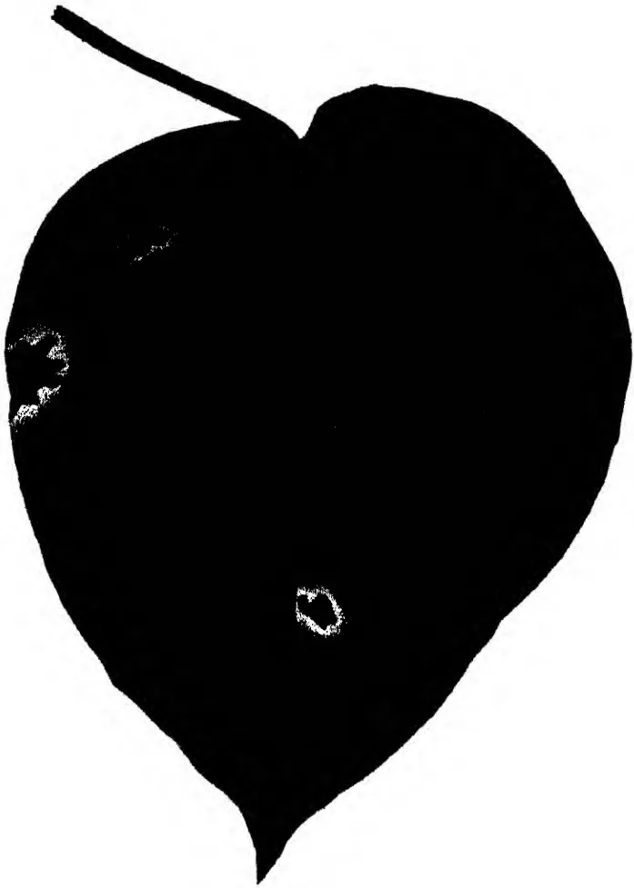
A high-contrast, black and white photograph of a young betel leaf. The leaf is dark, almost black, and has a heart-shaped or ovate shape with a pointed tip. A short, dark stem is visible at the top. Several small, bright, irregular spots are scattered across the leaf's surface, representing early stages of bacterial leaf-spot. These spots are most prominent on the left side and one is visible near the bottom center.Young Betel Leaf showing early stages of
Bacterial Leaf-Spot.
MALCOLM PARK, A.R.C.S.,
GOVERNMENT MYCOLOGIST
THIS disease was recorded in Ceylon as long ago as 1896. It has been found in most of the betel growing districts of the Island and is especially common in the wet low-country districts where it often causes considerable losses. In these districts it is known by the Sinhalese as Bulat rogaya or the betel disease and it is only by constant care and attention that the disease is kept in check.
The disease is commonest in wet weather. The first indication of the disease is the appearance of one or more small water-soaked spots between the veins on the under-side of the leaves. The spots become visible on the upper surface and then have a typical appearance which is well described by the term "oil-spot". Yellowish zones, in the form of a halo, develop round the spots, which with age become brown in colour and finally black and rotten.
Individual spots at an early stage of infection are about 1/5 inch in diameter but their size increases as they grow older. They are usually angular in shape, being bounded by the small veins of the leaves. As the disease progresses spots increase in size and two or more may coalesce to form large irregular dead areas. The central dead area may fall and so leave a hole in the leaf. When the disease occurs at the margin of the leaves a torn appearance may result. On badly diseased vines, spotted leaves turn yellow and fall off. The disease may attack the stems and cause the death of the vines.
The illustration shows a young leaf in the early stages of the disease.
In wet weather the under surface of the diseased leaves becomes slimy. This slime is composed of bacteria which have developed in and oozed out of the diseased tissue. The bacterium has been found in the very young spots, has been grown by itself in the laboratory and has been shown to be the cause of the disease. It has been named Bacterium betel. The bacterium enters healthy leaves through the breathing pores in the under-side of the leaf and kills and destroys the cells of the leaf so causing the typical spots.
The bacterium is carried from diseased to healthy leaves by contact, when the diseased leaf touches a healthy one; by splashes of rain, for the slimy mass of bacteria which oozes out of diseased leaves in wet weather
394provides a great source of danger to surrounding healthy leaves, the splashing of rain probably being the chief carrier; by insects which may walk on or feed on diseased leaves and then go on to healthy leaves; and by man, who might carry the organism in his hands or clothing.
Betel growers, in districts where the disease occurs, realise that once the disease is firmly established in a betel garden then that garden is doomed.
As soon as the first sign of the disease is seen on a leaf then that leaf must be picked and burned at once. So much do betel growers fear the disease that it is a common practice to uproot the whole vine where the disease appears on one leaf. This is thought to be unnecessary if diseased leaves are picked at once and care is taken not to allow the diseased leaves to come into contact with the rest of the vine. It should be realised that, in the early stages, the bacterium which causes the disease is confined to the spot and that, provided the spot is not touched, it is safe to handle the rest of the vine. The picking of diseased leaves should be undertaken separately from the picking of leaves for chewing or for sale and is best done when the sun is up and the vines are dry. The hands should be washed thoroughly after the collection and destruction of diseased leaves.
If the collection and burning of diseased leaves is undertaken regularly the disease can be kept in check without much loss of leaves and with only a little labour. The secret of success is the care and regularity with which the diseased leaves are picked and burned.
The improvement of the general condition of betel gardens will tend to lessen the amount of disease. The use of good stakes, the collection of all rubbish, the wider spacing of vines and sufficient room between beds for easy progress will all help in controlling the disease.
It is in the interest of all betel growers that the vines in badly diseased gardens be uprooted and destroyed by fire. The presence of such a garden is a menace to surrounding gardens and cultivators should endeavour to persuade their neighbours, when necessary, to take steps to check the disease.
It is suggested that betel should not be replanted in the same soil for at least one year.
395ANIMAL DISEASE RETURN FOR THE MONTH
ENDED 31 MAY, 1934
| Province, &c. | Disease | No. of Cases up to Date since Jan. 1st 1933 | Fresh Cases | Recoveries | Deaths | Balance III | No. Shot |
|---|---|---|---|---|---|---|---|
| Western | Rinderpest | ... | ... | ... | ... | ... | ... |
| Foot-and-mouth disease | 202 | 158 | 169 | ... | 33 | ... | |
| Anthrax | ... | ... | ... | ... | ... | ... | |
| Rabies (Dogs) | 9 | 4 | ... | ... | ... | 9 | |
| Piroplasmosis | ... | ... | ... | ... | ... | ... | |
| Colombo Municipality | Rinderpest | ... | ... | ... | ... | ... | ... |
| Foot-and-mouth disease | 479 | 185 | 349 | 20 | 110 | ... | |
| Anthrax | 3 | ... | ... | 3 | ... | ... | |
| Rabies (Dogs) | 2 | ... | ... | ... | ... | 2 | |
| Haemorrhagic Septicaemia | ... | ... | ... | ... | ... | ... | |
| Black Quarter | ... | ... | ... | ... | ... | ... | |
| Cattle Quarantine Station | Bovine Tuberculosis | ... | ... | ... | ... | ... | ... |
| Rinderpest | ... | ... | ... | ... | ... | ... | |
| Foot-and-mouth disease | 11 | ... | 10 | 1 | ... | ... | |
| Central | Anthrax (Sheep & Goats) | 85 | 33 | ... | 85 | ... | ... |
| Rinderpest | ... | ... | ... | ... | ... | ... | |
| Foot-and-mouth disease | 13 | 13 | 3 | ... | 10 | ... | |
| Anthrax | ... | ... | ... | ... | ... | ... | |
| Bovine Tuberculosis | 3 | ... | ... | ... | 3 | ... | |
| Southern | Rabies (Dogs) | ... | ... | ... | ... | ... | ... |
| Rinderpest | ... | ... | ... | ... | ... | ... | |
| Foot-and-mouth disease | 159 | 18 | 159 | ... | ... | ... | |
| Anthrax | ... | ... | ... | ... | ... | ... | |
| Northern | Rabies (Dogs) | ... | ... | ... | ... | ... | ... |
| Rinderpest | 144 | 4 | 43 | 93 | ... | 8 | |
| Foot-and-mouth disease | 28 | ... | 28 | ... | ... | ... | |
| Anthrax | ... | ... | ... | ... | ... | ... | |
| Black Quarter | ... | ... | ... | ... | ... | ... | |
| Eastern | Rabies (Dogs) | ... | ... | ... | ... | ... | ... |
| Rinderpest | ... | ... | ... | ... | ... | ... | |
| Foot-and-mouth disease | 22 | ... | 22 | ... | ... | ... | |
| North-Western | Anthrax | ... | ... | ... | ... | ... | ... |
| Rinderpest | ... | ... | ... | ... | ... | ... | |
| Foot-and-mouth disease | ... | ... | ... | ... | ... | ... | |
| Anthrax | ... | ... | ... | ... | ... | ... | |
| Rabies (Dogs) | 2 | 2 | ... | 2 | ... | ... | |
| North-Central | Piroplasmosis | 1 | 1 | ... | 1 | ... | ... |
| Rinderpest | 63 | 13 | 13 | 44 | ... | 6 | |
| Foot-and-mouth disease | ... | ... | ... | ... | ... | ... | |
| Uva | Anthrax | ... | ... | ... | ... | ... | ... |
| Rinderpest | ... | ... | ... | ... | ... | ... | |
| Foot-and-mouth disease | 213 | 81 | 207 | 6 | ... | ... | |
| Anthrax | ... | ... | ... | ... | ... | ... | |
| Sahagamuwa | Bovine Tuberculosis | ... | ... | ... | ... | ... | ... |
| Rinderpest | ... | ... | ... | ... | ... | ... | |
| Foot-and-mouth disease | 233 | ... | 233 | ... | ... | ... | |
| Anthrax | ... | ... | ... | ... | ... | ... | |
| Piroplasmosis | ... | ... | ... | ... | ... | ... | |
| Haemorrhagic Septicaemia | 12 | ... | ... | 12 | ... | ... | |
| Rabies (Dogs) | 4 | ... | ... | ... | ... | 4 |
G. V. S. Office,
Colombo. 11th June, 1934.
M. CRAWFORD,
Government Veterinary Surgeon
| Station | Temperature | Humidity | Amount of Cloud | Rainfall | ||||||
|---|---|---|---|---|---|---|---|---|---|---|
| Mean Maximum | Difference from Average | Mean Minimum | Difference from Average | Day | Night (from Minimum) | Amount | No. of Rainy Days | Difference from Average | ||
| Inches | Inches | |||||||||
| Colombo | 86.4 | -0.2 | 77.9 | +0.9 | 78 | 89 | 6.7 | 8.61 | 18 | -6.08 |
| Puttalam | 88.0 | +0.6 | 78.4 | +0.2 | 74 | 89 | 5.1 | 1.37 | 5 | -2.29 |
| Mannar | 89.7 | 0 | 80.8 | +0.7 | 74 | 82 | 4.2 | 0.10 | 2 | -2.01 |
| Jaffna | 88.3 | +0.8 | 81.9 | +1.0 | 78 | 83 | 3.5 | 0 | 0 | -1.83 |
| Trincomalee | 92.9 | +2.5 | 78.3 | +0.3 | 66 | 84 | 3.9 | 1.50 | 7 | -1.24 |
| Batticaloa | 89.4 | -0.4 | 77.1 | -0.1 | 74 | 91 | 3.8 | 0.20 | 4 | -1.63 |
| Hambantota | 85.9 | 0 | 77.2 | +0.7 | 79 | 89 | 3.9 | 2.14 | 13 | -1.19 |
| Galle | 84.9 | +0.3 | 77.8 | +0.7 | 83 | 89 | 6.1 | 12.34 | 20 | +0.84 |
| Ratnapura | 89.0 | +1.2 | 75.0 | +0.6 | 74 | 95 | 6.8 | 0.74 | 23 | -11.77 |
| A'pura | 91.6 | +2.9 | 76.1 | +0.3 | 60 | 93 | 6.2 | 1.78 | 3 | -1.79 |
| Kurunegala | 90.1 | +1.8 | 74.9 | -0.5 | 71 | 95 | 7.2 | 0.64 | 7 | -6.09 |
| Kandy | 88.1 | +2.7 | 70.7 | +0.1 | 68 | 90 | 4.2 | 3.72 | 9 | -2.13 |
| Badulla | 85.8 | +1.4 | 65.4 | -1.1 | 69 | 95 | 4.9 | 3.93 | 11 | -0.74 |
| Diyatalawa | 78.3 | +6.1 | 60.9 | -1.1 | 69 | 89 | 5.1 | 6.88 | 14 | +1.59 |
| Hakgala | 74.4 | +5.7 | 56.0 | -1.2 | 74 | 85 | 5.2 | 5.48 | 15 | -1.73 |
| N'Eliva | 71.7 | +2.4 | 50.7 | -2.7 | 77 | — | 6.8 | 4.07 | 12 | -2.96 |
The rainfall of May was nearly everywhere below normal, the only appreciable areas showing excess being the west coastal districts between Chilaw and Negombo, and between Panadura and Galle, and some districts on the south-eastern and north-eastern slopes of the main hill country. Deficits were most marked on the western slopes of the main hills and in the low-country adjoining the districts that usually have the heaviest May rainfall.
The highest monthly totals were near the coast, between Kalutara and Galle, where two stations reported totals of over 80 inches, Sirikandura, 34.82 inches, and Kanana, 31.12 inches. Nearly all the stations in the Jaffna Peninsula, and many stations in the north-west of the Island, reported no rain at all during the month.
22 daily falls of 5 inches or over were reported from 15 stations. These were all between the 1st and 4th, or between the 7th and 12th. The highest daily fall reported was 11.55 inches, at Sirikandura, on the 7th to 8th.
The distribution of rainfall, heaviest along the south-west coast, and falling off markedly inland, was a natural consequence of the prevalent type of wind during the month. The winds were mainly south-westerly, and, at the surface of rather more than average strength, but these south-westerly air-currents were of no great depth, and were unable to overcome the resistance offered by the greater surface friction at the coast, and hence could not carry their moisture inland to the hills.
The moderate south-westerly gradients that had persisted during the second half of April continued during May, with winds that were generally south-westerly at sea level. The rainfall during the first ten days of the month was mainly confined to the south-west of the Island, with some local thunderstorms in the lee of the hills. For the next few days, until the 15th, the gradient weakened, and the rains were much more wide-spread over the Island. The gradient then strengthened, and precipitation was again mainly confined to the south-west of the Island, and was generally light. During the last few days of the month, weather conditions at sea near the Island were distinctly more monsoonal, though the rainfall in the south-west of the Island continued light. The south-west monsoon appears to be markedly late in setting in this year.
Temperatures have generally been above normal, except up-country night temperatures. Humidity has, on the whole, been about normal, while cloudiness has been below average. The barometer has been appreciably above normal, while winds at the coast have been generally south-westerly, and above average.
Thunderstorms seem to have been unusually prevalent over the Island during the month. Hail was reported from Diyatalawa on the 25th and 31st. A feature of this year's weather has been the comparatively large number of reports of hailstorms received since March.
H. JAMESON,
Supdt., Observatory.
| Number | Month | Pages |
|---|---|---|
| 1 | July | 1-68 |
| 2 | August | 69-138 |
| 3 | September | 139-196 |
| 4 | October | 197-258 |
| 5 | November | 259-326 |
| 6 | December | 327-400 |
| A | Page | C | Page |
|---|---|---|---|
| Agricultural Research | - 25 | Crop Rotation, Soil Organic Matter and | - 297 |
| B | Cultivation of Tobacco with Particular Reference to Cigarette Tobacco and the Flue-Curing Process | 267, 348 | |
| Board of Agriculture, Minutes of Meeting of the Central | 30, 235, 377 | Curing of Ginger | - 212 |
| Board of Agriculture, Papers read at the Meeting of the | - 39 | D | |
| Bovine Tuberculosis in Ceylon | - 8 | Department of Agriculture, United States | - 17 |
| C | Departmental Notes | 64, 128, 188, 255, 256, 320, 322 | |
| Cacao Disease in the Dumbara Valley, 1933, Further Notes on | - 78 | Dhall, The Preparation of Tirupattur | - 222 |
| Chemical Studies on Compost Manure | - 297 | Disease of the Durian Tree | - 177 |
| Citrus Fruit Growing in Rhodesia (Citrus) Orange and Lemon Culture in India | - 97 | E | |
| Citrus, Two Caterpillar Pests of Coelogyne asperata (Orchid) | - 188 | Editorial | 1, 69, 139, 197, 259, 327 |
| Coconut and other Oil-Producing Industries, The Present Economic Condition of the | - 226 | Environment and Plant Life | - 224 |
| Coconut Palms, Some Notes on the Effects of Drought on the Yield of | - 141 | Ethylene, Borax, and Paraffin Treatment, Handling of Some Philippine Fruits with Special Reference to the | - 161 |
| Coconut Research Scheme (Ceylon), Minutes of Meeting of the Board of Management of the | 128, 317 | Extracts from Annual Reports for the Year 1933 | 304, 308, 311 |
| Coconut Research Scheme of Ceylon, Review of the Activities of the | - 56 | Extracts from the Annual Report of the Rubber Research Institute of Malaya | - 165 |
| Coffee Trees, Pruning of | - 302 | F | |
| Copper Emulsion | - 255 | Fertilizer Trials with Paddy in the Eastern Province | 71, 354 |
| Correction Note | - 256 | Finances of the Tea Research Institute of Ceylon | - 46 |
| Page | Page | ||
|---|---|---|---|
| F | N | ||
| Fordlandia | 168 | Notes on Cacao Disease in the Dumbara Valley, 1933, Further Notes on | 78 |
| Forests in Mountainous Countries, Importance of, with Special Reference to the Hill Forests of Cyprus. | 158 | Note on Flowering of Paddy, Vernalization and a | 329 |
| Frog-eye or Eye-spot Disease of Tobacco | 322 | Notes on Orchids Cultivated in Ceylon | 87, 294 |
| Fruit Cultivation in Java | 100 | Notes on Tea Manufacture | 376 |
| Fruit Growing in Rhodesia, Citrus | 97 | Notes on the Effects of Drought on the Yield of Coconut Palms, Some | 141 |
| G | Nyasaland Protectorate, Extract from Annual Report of the Department of Agriculture for the Year 1933 | 311 | |
| Ginger, Curing of | 212 | O | |
| Growing of Sweet Potatoes | 367 | Old Rubber Plantations, Rejuvenating | 172 |
| H | P | ||
| Handling of Some Philippine Fruits with Special Reference to the Ethylene, Borax, and Paraffin Treatment | 161 | Paddy Cultivation, Studies on | 151, 339 |
| I | Paddy, Fertilizer Trials in the Eastern Province | 71, 354 | |
| Introduction and Development of "Sudu-heenati" Pure-line Paddy into Matara District | 320 | Plant Life, Environment and | 224 |
| Imperial Institute | 180 | Preparation of Tirupattur Dhall | 222 |
| Imperial Institute Reports | 118, 181 | Present Economic Condition of the Coconut and Other Oil-Producing Industries | 226 |
| Importance of Forests in Mountainous Countries, with Special Reference to the Hill Forests of Cyprus | 158 | Propagation of Kapok by Budding and Grafting | 106 |
| J | Pruning of Coffee Trees | 302 | |
| Java, Fruit Cultivation in | 100 | R | |
| K | Rat Destruction | 365 | |
| Kapok, Propagation of, by Budding and Grafting | 106 | Rejuvenating Old Rubber Plantations | 172 |
| Kikuyu Grass | 217 | Reports, Imperial Institute | 118 |
| L | Reports, Meteorological | 68, 137, 195, 258, 326, 399 | |
| Lac Cultivation in Ceylon | 356 | Report on a Visit to Malta | 111 |
| M | Research, Agricultural | 25 | |
| Malta, Report on a Visit to | 111 | Returns, Animal Disease | 67, 136, 194, 257, 325, 398 |
| Mango Leaves, Two Weevil Pests of | 128 | Reviews | 235, 376 |
| Manure, Chemical Studies on Compost | 277 | Review of the Activities of the Coconut Research Scheme of Ceylon | 56 |
| Memorandum on the Policy and Work of the Rubber Research Scheme (Ceylon) | 49 | Review of the Activities of the Tea Research Institute of Ceylon | 39 |
| Meteorological Reports | 68, 137, 195, 258, 326, 399 | Rice Production and Trade in the East | 89 |
| Minutes of Meeting of the Board of Management of the Coconut Research Scheme (Ceylon) | 123, 317 | Rubber Latex, The Use of Sulphuric Acid as a Coagulant for | 301 |
| Minutes of Meeting of the Board of Management of the Rubber Research Scheme (Ceylon) | 28, 185, 318 | Rubber Research Institute of Malaya, Extracts from the Annual Report of the | 165 |
| Minutes of Meeting of the Board of the Tea Research Institute of Ceylon | 125, 253 | Rubber Research Scheme, (Ceylon) | 14 |
| Minutes of Meeting of the Central Board of Agriculture | 30, 235, 377 | Rubber Research Scheme (Ceylon), Memorandum on the Policy and Work of the | 49 |
2
| Page | Page | ||
|---|---|---|---|
| R | T | ||
| Rubber Research Scheme (Ceylon), Minutes of Meeting of the Board of Management of the |
28, 185, 318 | Tobacco, Frog-eye or Eye-spot Disease of |
- 322 |
| Rubber: The Use of Improved Plant- ing Material |
- 3 | Tobacco Stem-borer, Phthorimaea heliopa Lw. |
- 64 |
| Soil Organic Matter and Crop Rotation |
- 297 | Tobacco, The Cultivation of, with Particular Reference to Cigarette Tobacco and the Flue-Curing Process |
267, 348 |
| Storage of Sweet Potatoes | - 371 | Tuberculosis in Ceylon, Bovine | - 8 |
| S | Two Caterpillar Pests of Citrus | - 188 | |
| Straits Settlements and Federated Malay States, Extract from Annual Report of the Department of Agri- culture for the Year 1933 |
- 308 | Two Weevil Fests of Mango Leaves | - 128 |
| Studies on Paddy Cultivation | 151, 339 | U | |
| "Sudu-Heenati" Pure-line Paddy, The Introduction and Develop- ment of, into Matara District |
- 320 | Uganda Protectorate, Extract from Annual Report of the Department of Agriculture for the Year 1933 |
- 304 |
| Sweet Potatoes, Growing of | - 367 | United States Department of Agriculture |
- 17 |
| T | Use of Sulphuric Acid as a Coagu- lant for Rubber Latex |
- 301 | |
| Tea Manufacture, Notes on | - 376 | V | |
| Tea Plant, Vegetative Propagation of the |
199, 261, 362 | Vanda tessellata Hk. (Orchid) | - 294 |
| Tea Research Institute of Ceylon, Finances of the |
- 46 | Vegetative Propagation of the Tea Plant |
199, 261, 362 |
| Tea Research Institute of Ceylon, Minutes of Meeting of the Board of the |
125, 253 | Vernalization | - 221 |
| Tea Research Institute of Ceylon, Review of the Activities of the |
- 39 | Vernalization and a Note on Flowering of Paddy |
- 329 |
| W | |||
| Wood Preservation | - 312 | ||
| Facing page | Facing page |
|---|---|
| The Tobacco Stem-borer (Phthori- maea heliopa Lw.) (Coloured Plate) |
- 64 |
| Coelogyne asperata Lindl. (Orchid) | - 87 |
| The Mango Leaf-cutting Weevil (Deporaus marginatus Pasc.) (Coloured Plate) |
- 129 |
| The Mango Flea-Weevil (Rhyn- chaenus mangiferae Mshl.) (Coloured Plate) |
- 133 |
| The Citrus Leaf-miner (Phylloc- nistis citrella Stt.) (Coloured Plate) |
- 188 |
| The Citrus Leaf-roller ((Psorosticha sisyphi Stt.) (Coloured Plate) |
- 191 |
| Plate 1. Two years old bushes of different varieties, grown from three seeds planted in one hole: A. A poor variety with small leaves. B. A good variety with large leaves. - 200 |
|
| Plate 2. A hybrid with desirable characters of the Southern varieties but not frost-resistant (a character of importance in Northern tea regions). Every winter its branches fall off due to frost and every spring it produces new shoots. Back of Plate 1 |
|
| Plate 3. Two forms of frost- resistant hybrids: A. A productive form of high quality. B. An unproductive form of low quality. Plate 2 |
3
| Facing page | Facing page | ||
|---|---|---|---|
| Plate 4. Shoots of the same age: | a well-developed root system, but | ||
| A. A productive form. | fine deep-reaching roots were | ||
| B. An unproductive form. | - 201 | broken in digging. x. | Plate 13 |
| Plate 5. Simple mound layering. | - 202 | Plate 15. A straight shoot with | |
| Plate 6. Simple layering. Rooted | numerous roots at its base. This | ||
| layers at the moment of their | type of root system is obtained | ||
| separation from the parent plant. | by means of ringing, wiring or | ||
| In the background the parent | twisting the shoot. | - 209 | |
| plant with shoots laid for | Plate 1. Ginger Peeling Knife | - 214 | |
| propagation | Back of Plate 5 | Plate 11. The Peeling and Wash- | |
| Plate 7. Simple layering. A rooted | ing of Ginger | Back of Plate 1 | |
| shoot, separated from its parent | Plate III. The drying of Ginger | ||
| plant and ready for transplantation. | on Bamboo Barbecues | - 215 | |
| a. Young roots, which developed | Plate 16. A root cutting, which | ||
| along the underground part of | produced roots and shoots in field | ||
| the shoot | Plate 6 | conditions during two summer | |
| Plate 8. Mound layering with ring- | months (June-July) | - 261 | |
| ing. A rooted shoot separated | Plate 17. A rooted plucking shoot | ||
| from the parent plant and ready | with three leaves | - 262 | |
| for transplantation. | Plate 18. A rooted green cutting | ||
| a. Young roots concentrate at | with four eyes and entire | ||
| the base of the shoot above the | leaves | Back of Plate 17 | |
| wired place | - 203 | Plate 19. A rooted brown (ripened) | |
| Plate 9. Continuous layer. Young | cutting with four eyes and entire | ||
| shoots, produced by a single | leaves | Plate 18 | |
| layer. | - 204 | Plate 20. Rooted brown (ripened) | |
| Plate 10. Chinese layering: | single eye cuttings with leaves, | ||
| A. A rooted shoot. | half natural size | Back | |
| B. Bamboo tubes into which | of | ||
| the shoot is placed before being | Plate 21. Rooted brown (ripened) | Plate 19 | |
| covered with earth | - 206 | tea buds | |
| Plate 11. Common layering, carried | Plate 22. Tea cuttings with callus, | ||
| out in order to fill up the gaps in | but without roots | Plates 20, 21 | |
| a tea row and to obtain a con- | Plate 23. One year old tea bush, | ||
| tinuous espalier | - 207 | grown out of stem cuttings | - 263 |
| Plate 12. A two years old plant: | Plate 24. Rooted cuttings 4 months | ||
| the shoot was laid in 1931, | old. These cuttings with primary | ||
| separated from the parent plant | roots were planted in the open | ||
| and transplanted in June 1932, | ground on June 25, 1932 and dug | ||
| photographed in August, 1933. | out and washed on October 30, | ||
| (Poor soil: a Ricinus planted for | 1932 when this photograph was | ||
| shade developed but poorly). | - 208 | taken. The dotted line indicates | |
| Plate 13. The root system of a | the top of the cutting, above it is | ||
| two years old tea bush, grown | new growth. | - 264 | |
| out of a bow-shaped layer, sepa- | Plate 25. The root system of a two | ||
| rated from its parent plant and | years old tea bush, grown out of | ||
| transplanted in May 1932, dug | one year old ripened cutting with | ||
| out and photographed in May, | three eyes. | ||
| 1934. | x. The points at which the deep | ||
| x. Roots, first produced by | reaching roots have been | ||
| the layer. | broken | Back of Plate 24 | |
| xx. Roots, produced above the | Plate 26. Tea plants of the same | ||
| former after the shoot had been | age. | ||
| separated from the parent plant | (a) Grown out of seeds. | ||
| and transplanted into a deeper | (b) Grown out of buds. | ||
| hole | Back of Plate 12 | x. The point where the taproot | |
| Plate 14. The root system of a | was broken in digging. | Plate 25 | |
| two years old bush, grown out of | |||
| a wired layer separated from the | |||
| mother plant and transplanted in May, | |||
| 1932. Dug out and photographed | |||
| in May, 1934. It had possessed |
4
VOL. LXXXIII
PERADENIYA, JULY, 1934.
No. 1
| Page | |
|---|---|
| Editorial | 1 |
| Rubber: The Use of Improved Planting Material.—(Contd.) By Dr. P. J. S. Cramer. | 3 |
| Bovine Tuberculosis in Ceylon. By M. Crawford, M.R.C.V.S. | 8 |
| The Rubber Research Scheme (Ceylon). By G. W. Bruce Foote | 14 |
| The United States Department of Agriculture | 17 |
| Agricultural Research | 25 |
| Minutes of Meeting of the Board of Management of the Rubber Research Scheme (Ceylon). | 28 |
| Minutes of the Meeting of the Central Board of Agriculture | 30 |
| Papers read at the Meeting of the Central Board of Agriculture | 39 |
| The Tobacco Stem-borer (Phthorimaea heliopa Lw.) | 64 |
| Animal Disease Return for the month ended June, 1934 | 67 |
| Meteorological Report for the month ended June, 1934 | 68 |
Of great interest to those engaged in the
cultivation of plantation crops.
Being a reprint of articles published in
The Tropical Agriculturist by the
Staff of the Department of
Agriculture, Ceylon.
34 Illustrations and Figures
Price Rs. 5/-
Obtainable from:
THE MANAGER, PUBLICATION DEPÔT,
PERADENIYA.
July, 1934
ONE is only just beginning to realise what gaps there are in our knowledge of some of our most common everyday foods, and with no food is that more so than with milk. The subject of the bearing of the milk supply upon the health of the nation is one engaging the attention of many at the present moment in different countries. The great value of milk is its richness in different vitamins, the great danger in milk is its liability to be infected with the bacteria of bovine tuberculosis which is capable of conveying disease to man. One of the best foods for man is raw milk provided it can be obtained clean and free from harmful bacteria but whilst the medical profession realise this they insist generally that it should be heat treated which not only destroys the harmful germs but also many useful ones which are present in the raw material.
The physiological value of milk is related to the pasture upon which the cows graze, young pasture being a rich source of vitamins, and vitamins are related in some mysterious way to the quantity of the sunshine that falls upon the living substance in which they occur. With us in Ceylon the sunshine is comparatively always present but not so in more northern and southern latitudes. Possibly connected in some measure with our bountiful sunshine has been in the past the absence of tuberculosis from among our milch cattle. Bovine Tuberculosis has so far been a comparatively rare occurrence in Ceylon and its reported
2presence amongst a herd in the hill tracts cannot be considered other than as a misfortune. Modern veterinary science enables it to be ascertained whether a herd is free from the disease. An important Advisory Committee on Cattle Diseases has just reported in England that no milk should be sold that does not conform to a standard of cleanliness and that all milk sold should be designated as heat treated, (sterilised or pasteurised), or certified as derived from tubercle-free cows, or as uncertified but which is of the standard of cleanliness required. The Committee concludes that forty per cent. of the cows in England are infected with tuberculosis to such an extent as to react to the tuberculin test. We are very much better off than that in Ceylon and provided simple precautions be taken as to a clean source of supply, milk here should be generally a perfectly safe food.
3DR. P. J. S. CRAMER,
FORMERLY DIRECTOR OF THE GENERAL EXPERIMENT
STATION, BUITENZORG
In the foregoing pages we have already mentioned seedling selection where the work is started with seedlings from clonal seeds. For several years a good deal of attention has been paid to improvement of seedlings, and raising seedlings from artificially cross-fertilised or self-fecundated seeds. It struck me during my last trip to the East (end of 1933 to beginning of 1934) that the various experiment stations are now starting tapping experiments on plots of seedlings, obtained by artificial crosses. The results are so far promising and indicate that also in this direction great improvements can be reached.
I do not want to be misunderstood, whilst fully recognising the value of the work now in progress, and the possibilities it offers for further improvement. I do not think that at present we know enough of the seedlings and the methods to improve their yields; to yet recommend the giving up of the planting of clones. On the contrary, in my opinion the actual best and most certain planting materials are still buddings of the well-studied, highly productive clones on the market. But I would make it clear that it is quite possible that we shall come back in some years to seedling planting.
The yields of seedlings obtained by a controlled combination of mother and father, or by self-fecundation, indicate that we may reach averages of the level of clonal yields, but that generally speaking, the seedlings show a much wider variation, comprising always a certain percentage of plants without value, and on the other hand, also a certain percentage of plants surpassing the best clones in yield. Since Dr. Heusser in Sumatra started to work on seedlings his most valuable work has given us interesting data on this point. At the same time it showed that this work—castrating and isolating flowers and fecundating
4.them with pollen of another clone—is difficult and complicated, while it gives only a low percentage of success—if 5 per cent. of the flowers treated produce seeds this may be considered quite a high figure. While these experiments are valuable to teach us the worth of various clones (or mother trees) as seed or pollen parents, it seems improbable that we shall ever be able to produce such artificially pollinated seeds in commercial quantities for large field planting.
In the years before 1930 many fields had been laid out for the purpose of producing seeds. These were in isolated spots in the jungle or in the midst of coconut plantations. The object was generally to produce hybrid seeds combining desirable qualities from the parents, and to attain this the plantings consisted of mixed clones, the different clones often being planted in alternate rows. Now we find that most clones easily give seeds when planted in monoclonal blocks and are so limited to fecundation by their own kind that we think that this system loses its value. As we find now that by far the largest number of clones gives easily seeds when planted in monoclonal blocks and so limited to self-fecundation, we think this system loses its value. The difficulty with seeds from mixed clonal plantings is that one never knows which parents have furnished the pollen, and that the picking of the seeds if we want to use only seeds of a certain clone, becomes quite a task. If seeds from monoclonal plantings are used, no precautions are necessary to guarantee the purity of the seeds, except that the monoclonal planting should be inspected and, if rogues or impure clones occur, these should be cut out. But if this is done, we may simply collect all the seeds from the ground and have the certainty that they are all from the same origin, and that, if the seedlings raised from them show certain characters, they will always show these characters.
We have seen figures from fairly large plantings, where buddings and seedlings of a certain number of clones were compared, each set comprising several hundreds of trees, and we have been able to study the tapping results. The clones were the older Avros clones like 71, 163, and so on. Generally speaking the unselected seedlings gave a lower average than the unselected buddings, but, as might be expected, the range of variation for these last was much wider than for the seedlings. The result was that when we compared the average yield for the 25 per cent. best seedlings with the average for the best 25 per cent. buddings, the seedlings gave more.
5Is it possible to plant out seedlings and to retain only the 25 per cent. best ones? Theoretically—yes. On the ground of interesting experiments on density of planting we have seen in Sumatra and with common experience in Indo-China, we are now in favour of starting our planting with a high density, for instance about 300 trees per acre, 10 by 15 feet will give us 290 trees per acre and seems suitable. As soon as the seedlings are developing into true trees, let us say after 3 years, we would submit them to an experimental tapping. Mr. Mann of the R.R.I. in Kuala Lumpur has shown, that when we tap the trees ten days and measure the yield for the last five days, we have a true measure for their productivity. We can rest them again for half a year and apply then a second tapping test. According to these two tests the poorest yielders can at this stage be removed, say 20 to 25 per cent. of the total number of trees. Repeating continuously the selective thinning-out during our further commercial tapping we can arrive at a final stand for the old rubber of say 70 trees per acre—25 per cent. of the original stand. I admit, that in thinning out we cannot go by yield alone, too large open spaces must be avoided, and so we will never succeed in having only our very best 25 per cent. of the trees, but still it seems possible to arrive at a selection that the trees kept correspond, let us say, to the 30 per cent. highest classes of the seedlings and in this case the average yield should be above that of a clonal planting treated the same way. From these considerations, we feel convinced, that by planting clonal seeds, choosing a very dense original stand and applying a regular selective thinning out from the early stage on, we may arrive at higher yielding fields than budded fields would give, however, the actual proof of this system in practice and on a scale sufficient to consider the results as reliable, has not yet been given.
There is still another method of bringing the observations mentioned above into practical application. It is now generally accepted that a high yielding tree is born a high yielder. So, when we have before us a nursery, we have a mixture of plants, some predestined to become high yielders and others of medium or poor yield. The question is, how we can find out the future high yielders.
Many people will remember that some years ago this fact was pointed out by Mr. Ashplant and that he based a method of selection on it, using as a criterion the latex vessel bore. When
6I visited Southern India at the end of 1929 on various plantations fields had been laid out following Ashplant's system. They must be now tappable and it is to be hoped, that some figures on the tapping results will find their way into current literature. In my opinion Ashplant's system would have some effect, but it seemed difficult to apply it from the point of view of practical plantation practice, and he was handicapped with his experiments in another respect: he did not, so far as I know, use clonal seeds, which generally speaking present much greater possibilities than common seeds.
I have myself tried to devise a system of seedling selection based on the same fundamental observations, starting experiments on it in 1918-19. The idea was this—if a high yielding tree is born a high yielder and if so a seedling in the nursery is already predestined to become a high or a poor yielder, can we not find out which is which, by applying some system of tapping and retaining only the highest yielding seedlings? To arrive at a practical method we have to find at first a tapping system for these young plants. Our system consists in pressing into the bark a set of V shaped knives fixed on a strip of metal (British patent 309·90f) judging afterwards the yielding capacity of the seedling by the stream of latex coming out of the 4 super—posed V cuts. We generally classify the plants then into 5 classes and we use only the best class for planting out, which for some clones may be 5 per cent.
We can apply this system not only with plants in nurseries but also with direct planting. In the last case we lay out our fields with 9 seedlings per planting hole, or, with planting trenches instead of holes, say for instance, 15 feet apart. In the trench we plant germinated seeds in double rows, one foot apart between the two rows and in the rows. Of course, clonal seeds, but the place where we started these experiments in Malaya, Carey Island, Port Swettenham, F.M.S. produces already large quantities of seeds of many clones. After a little over a year the nursery test tapping is applied and repeated once or twice; then the poor yielders are removed and in the rows plants kept at a distance of 9, 10, 11, or 12 feet. If a very high yielder is found, which by its place would have to go, it can still be transplanted to a vacancy. We have then an original planting of 10 by 15 feet, allowing us still several thinnings out on the same
7principle, as described in the beginning. We have not yet definite results from plantings started in this way, but all indications are that they will be a success.
The system opens possibilities for other improvements. However we think instead of dwelling upon this we had better wait till we can mention some of the results, which we hope will be possible in a couple of years. An important point will be not only the system of improvement but also the choice of the clone from which the seeds are taken. Preliminary results indicate that the different clones may give quite different sets of seedlings in this respect. Another point is that from high yielding one year old plants we can make at once a few buddings and so progress also in the direction of vegetative multiplication with our planting material.
8M. CRAWFORD, M.R.C.V.S.,
GOVERNMENT VETERINARY SURGEON, CEYLON
THE occurrence of a number of cases of Tuberculosis among up-country cattle during the past year has brought the disease into prominence.
Ceylon is remarkably free from this disease which is such a scourge of cattle in Europe and it is necessary that everything possible should be done to preserve the freedom which has been enjoyed in the past. To attain this end the co-operation of all owners of cattle is necessary.
Up to the present cases have been confined to cattle of European or Australian breed and the infection has undoubtedly been introduced by cattle imported into Ceylon from either Europe or Australia.
No cases have been met with in cattle of the native breed. This does not mean that local cattle are immune or resistant to the disease. In the past the view has often been expressed that the freedom of native cattle in Tropical countries must be due to a natural immunity or resistance. Evidence which has accumulated in recent years from other Tropical countries throws grave doubt on the correctness of this view. For example recent reports from Siam show that 14 per cent. of the local cattle are infected, in Fiji the disease has been found to be just as prevalent among cattle of Indian breed as among cattle of European breeds, and reports from various parts of Africa indicate that it is present in herds of cattle of local African breeds.
The probable explanation of the rarity of the disease in local cattle in Tropical countries in the past is that infection was not present in these countries but has been introduced by cattle from Europe and is only now beginning to spread to the local cattle.
The following are the important points with regard to this disease:—
Cause.—The disease is due to infection with the Bovine type of the Bacillus tuberculosis. This organism is very similar to the Human type but is not identical with it. The most
9important difference between the two varieties of this bacillus is that the Human type is practically incapable of causing disease in cattle, on the other hand the Bovine type while of comparatively little importance as a cause of disease in adult human beings is a common cause of Tuberculosis affecting certain parts of the body in children in many parts of the world. The Bovine type of bacillus is responsible in Europe for a considerable proportion of cases of Tuberculosis in children, affecting bones and joints, the cervical lymphatic glands, the abdominal lymphatic glands and the meninges.
Tuberculosis of these organs in children in Ceylon is, I understand, of much less frequent occurrence than in Europe, a fact which is doubtless associated with the rarity of Bovine Tuberculosis among Ceylon cattle up to the present.
The Tubercle bacillus whether of the Bovine or Human type belongs to the class of acid-fast bacilli, a class of bacilli characterised by their comparatively high resistance, outside the animal body, to injurious agents such as heat, cold, desiccation, putrefaction and disinfectants. Direct sunlight however has a very destructive effect on them.
Method of infection.—The two common methods of infection are (a) through the respiratory tract by inhaling bacilli coughed up or otherwise discharged by an infected animal, (b) through the digestive tract by eating food contaminated with bacilli discharged by an infected animal.
Infection is therefore much more likely to take place when animals are housed especially when they are overcrowded and the cattle sheds are dark, ill-ventilated and dirty.
Many cattle sheds in up-country districts are badly lighted, badly ventilated, badly drained and often overcrowded. In many cases the cattle are confined to these sheds throughout their lives and are never permitted to take exercise in the open air. Should infection be introduced to such sheds the conditions are ideal for its rapid spread and there is every chance of all or a very high proportion of the cattle becoming infected within a short space of time. Apart from the fact that such sheds provide favourable conditions for the dissemination of the Tubercle bacilli, cattle kept under such conditions have their resistance to infection lowered and are less able to resist the invasion of their bodies by the bacilli. Fresh air and exposure to sunlight strengthen the natural defences of the body and enable an animal to throw off infection.
10Nature of the disease in cattle.—In most cases Tuberculosis is of a chronic nature and progresses very slowly. It may be present in a dormant form for a very long time without causing any outward symptoms which would attract the attention of the owner. In many cattle it may never progress beyond this stage and such cattle will continue to all outward appearances in good health for long periods. The progress of the disease beyond this stage is facilitated by unfavourable conditions such as housing in dark, stuffy, insanitary sheds, inadequate feeding, the strain imposed by heavy milking and frequent calvings, advancing age or the presence of other debilitating diseases such as heavy worm infection, etc.
It is only in fairly advanced cases that outward symptoms are shown and these vary with the part of the body which is affected. Almost any organ of the body may be affected but the parts in which the disease is most frequently seen are as follows:
The lungs and other parts of the respiratory system. In such cases the commonest symptom is a chronic cough. The cough may not be very frequent or very loud but it is persistent and shows no tendency to clear up. The typical Tuberculosis cough is a short, dry, harsh cough which gives the impression that the cow is attempting to suppress it. It must not be confused with the longer, louder, softer cough commonly heard in healthy cattle from time to time especially when they have finished a heavy feed and their stomachs are distended.
If a cow suffering from a tuberculous cough is kept tied facing a clean wall, careful examination of the wall may show that small pieces of sputum are expelled during coughing and may be found adhering to the wall. Such pieces of sputum are yellowish in colour. They are not always present as most cows swallow the sputum which is brought up during coughing. Where present, however, they are a valuable help to diagnosis. As the disease progresses in the lungs there is usually loss of condition and finally emaciation.
Intestines.—When the intestines are affected there are no very obvious symptoms except in advanced cases when there is a persistent diarrhoea.
Lymphatic glands.—When any organ is affected the corresponding lymphatic glands become enlarged. The superficial lymphatic glands in some cases are enlarged and can be observed as swellings under the skin, such swellings are hard, painless
11and tend to enlarge very slowly. They are most commonly seen near the throat at the angle of the jaw, in front of the shoulder, in front of the breast bone at the entrance to the chest, and in the flank. They vary in size usually not bigger than an orange but occasionally much bigger up to the size of half a coconut.
The Udder.—Tuberculosis of the udder is a very important condition from the point of view of human health as when the udder is affected the milk contains Tubercle bacilli in varying numbers. In the initial stages no marked change is produced and the milk is not altered in appearance. Later there is a gradual diffuse enlargement of the affected quarter, there is no acute painful swelling as occurs in ordinary Mastitis. One or more quarters of the udder may be affected, the right hind quarter being more commonly affected than the others. This condition is not very common, the percentage of cases in which the udder is affected being comparatively small.
Diagnosis.—This, save in advanced cases, is often difficult. Microscopical examination of specimens of such material as sputum, milk, discharge from the vagina, pus from enlarged glands, etc. will often enable a diagnosis to be made.
Fortunately in the Tuberculin test we have a very reliable method of determining whether the disease is present or not. The test, in competent hands, has a very high degree of accuracy and is free from danger to the cattle tested. It is in daily use throughout the world and has proved of the greatest service in campaigns directed towards the eradication of this disease. A slight drawback to the test is that it does not give any indication as to the extent of the disease or to what stage it has advanced. A cow affected to only a slight degree will react just as well as one extensively affected.
The test can be applied in various ways and is based on the fact that when Tuberculin, which may be defined as a sterile extract from a culture of the Tubercle bacillus, is injected into an animal, such animal if affected with Tuberculosis will react either by a rise of temperature or by a local swelling at the place where the Tuberculin is injected while a healthy animal will not react in any way. The test can only be applied by a Veterinary Surgeon, it cannot be done by the owner himself.
12Danger to human health from milk of Tuberculous cattle.—Speaking generally it may be said that as a rule the milk does not contain Tubercle bacilli unless the udder is affected with Tuberculosis. Tubercle bacilli are however sometimes found in the milk of cows even when the udder is not affected. In such cases the cow is extensively diseased in other parts of the body and is eliminating bacilli in the sputum, dung, urine or discharge from the uterus. The outside of the udder becomes contaminated with these infected discharges and small quantities fall into the milk at the time of milking. It is therefore essential that such cows, that is cows affected with Tuberculosis of the udder or advanced Tuberculosis in other parts of the body should be removed at once from any dairy herd.
Excluding these cows there is the cow which is to all appearances in good health, showing no symptoms of disease, but which reacts to the Tuberculin test. Tubercle bacilli are not as a rule eliminated in the milk of such cows and they do not constitute a danger to human health. It is necessary, however, that both the cows themselves and the milk be examined at regular intervals so that any cows in which the disease has advanced may be detected at once and removed from the dairy.
Where any suspicion attaches to the milk the danger can be obviated by raising the milk to the boiling point before using it. This destroys the bacilli. Mere heating of the milk will not suffice. It must be brought to the boiling point.
Danger to human health from eating meat from Tuberculous cattle.—The danger from this source is not so great as from milk on account of the high temperature to which meat is raised during cooking.
Competent veterinary inspection in slaughter houses of all carcasses is an efficient safeguard. The practice in European countries which is approved by all public health authorities is to condemn as unfit for human food the whole carcase of any animal which shows evidence of advanced Tuberculosis. Where the disease is not advanced but localised to one part, the affected and surrounding parts only are destroyed, the remainder of the carcase being passed as fit for human consumption.
13STEPS TO BE TAKEN BY CATTLE OWNERSG. W. BRUCE FOOTE,
MANAGER, ELSTON ESTATE
[The following note was prepared by Mr. Bruce Foote for the meeting of the Central Board of Agriculture, but time not admitting its presentation is given here.]
I was for many years a member of the Executive Committee of the Old Research Scheme before the Reconstitution in 1930 and I have visited the Laboratories and Experiment Station at Nivitigalakele on many occasions, so, I think, it may be admitted that I know something about the Scheme in general.
There can be few, if any, in these enlightened days who are blind to the need and use of Scientific Research for Rubber or any other form of Agriculture, but there are probably some who consider that the Rubber Research Scheme has not advanced with sufficient rapidity, and, at times, I myself have been among these. But I realise that the Research Scheme, both during the ante and post Reconstitution periods, has worked under difficulties and disabilities, for which it was not alone to blame. Mr. O'Brien has dealt with the Slump and all its devastating and paralysing effects, so I do not intend to touch on that, but would delve into more ancient history.
Before the War there were two Schemes, of sorts, both of which were, if I remember correctly, private and voluntary, and both fell into abeyance during the War. Shortly after the War they were revived and amalgamated, and, with a substantial grant from Government, constituted a new Scheme. Under this Scheme the Laboratories were built and the Experiment Station at Nivitigalakele opened, but after a few years it became apparent that the Scheme needed further reconstitution and that an Ordinance would have to be passed in the Legislative Council: for a time this hung over the Scheme like the Sword of Damocles with somewhat paralysing effects; more so, I consider, than should have been permitted; even so it was realised that Nivitigalakele was not sufficiently large as an Experiment Station, and efforts were made to obtain a further grant of land, but difficulties arose and we were balked on every
15occasion, I mention this especially as I shall refer to it again later. But for these facts the reconstituted Scheme would have taken over a larger inheritance.
This brings us to 1930 and the birth of the New Scheme coincident with the Rubber Slump.
To turn now to a few of the achievements of the Scheme:
First and foremost we have the Experiment Station at Nivitigalakele where Ceylon clones are being tested for purposes of budding.
Those of us who have visited the Station and Laboratories and examined the records of these clones realise the immense amount of work being done: they are most elaborate and kept with the minutest detail. This is a work that does not come before the public and for which the Research Scheme seldom if ever gets any credit. Those who have studied the subject of Budded Rubber realise that there is yet a great deal to learn and prove as to the behaviour of the so-called proved clones of the F. M. S. and Dutch East Indies at any rate in Ceylon and what applies to these, applies with greater force to the unproved clones of Ceylon.
Secondly, Mr. O'Brien has produced a most useful book on Rubber Manufacture, a book that should be in the hands of every Rubber Planter, be he V.A., P.D., or S.D.
Finally, we have Mr. Murray's work on Oidium. It is quite within the bounds of reason to imagine that this disease, if left untackled, may prove to be as serious a menace to the Rubber Industry in Ceylon, as did Coffee leaf disease to the Coffee Industry. Mr. Murray has shown that it can be controlled and controlled successfully, at no outrageous cost. If this was the one and only achievement of the Rubber Research Scheme, I consider it would have justified its existence.
Before concluding there is a point I would like to impress on all critics of Scientific Research Schemes:
That is, that scientific results are not produced overnight. It is aptly said that "the mills of God grind slowly, yet they grind exceedingly small" I think it would be as apt to substitute the word Science for the word God.
The long talked of, and long sought Rubber Restriction Agreement has come upon us during the last few days. Let us hope it is the dawn of an era of prosperity and that funds will,
16before long, be available to permit the Rubber Research Scheme to go ahead as it should; though, if the position justifies it, it may be necessary to consider a small temporary increase in the Export Duty to counteract the decreased exports under Restriction. The Scheme possesses an estate, Dartonfield, where field experiments can be carried out: it has its Factory, and Laboratories, its Experiment Station for proving clones; and, in this connection, I see Government is being asked for a further grant of 100 acres of land; it is to be sincerely hoped that the same difficulties will not be experienced over this as in the past, to which I have already alluded. And, what is more important, it has in its four scientific officers a very sound and able nucleus around which to build up a larger and more elaborate Scheme. Given funds, and sympathetic consideration from the powers-that-be, I feel sure that within a few years we should have a Research Scheme of which Ceylon might be justly proud.
17IN the first half century of our national life the Federal Government gave little practical aid to agriculture. John Adams as early as 1776 introduced in the Continental Congress two resolutions relating to agriculture. The first proposed the encouragement of the production of certain agricultural commodities, and the second recommended that the Colonies take early measures for erecting and establishing in every Colony a society for the improvement of agriculture. George Washington proposed Government aid to agriculture in his first annual message to Congress; but at that time he simply suggested that it should be encouraged in a general way along with commerce and manufactures. He had progressed far beyond that point by 1796, when, in his last annual message to Congress, he remarked that as nations advance in population the cultivation of the soil becomes more and more an object of public patronage. "Institutions for promoting it (agriculture) grow up, supported by the public purse; and to what object can it be dedicated with greater propriety?" Nothing came of these proposals.
The Act creating the Department was signed by President Lincoln on May 15, 1862, and in that year $64,000 was appropriated for agricultural purposes.
The Act creating the Department of Agriculture directed it to acquire and diffuse useful information on subjects connected with agriculture in the most general and comprehensive sense.
The United States Department of Agriculture is one of the 10 major executive departments of the Federal Government. Its affairs as a whole are supervised and controlled by the Secretary of Agriculture. He formulates and establishes its general policies. His extra-departmental functions include contacts with Congress, to secure necessary appropriations and to advise regarding pending agricultural legislation; contacts with other executive departments, to co-ordinate inter-departmental activities and to avoid duplication in work; and membership on numerous boards and commissions, such as the Executive Council, the Forest Reservation Commission, and the Migratory Bird Conservation Commission.
In his task of supervising the work of the Department, the Secretary is assisted by a general administrative staff, including an Assistant Secretary, four Directors of principal types of work and a Solicitor. The
* Extracted from United States Department of Agriculture Miscellaneous Publication No. 88, December 15, 1933.
18Assistant Secretary aids in the general supervision of the Department and acts for the Secretary in his absence. In the absence of both the Secretary and Assistant Secretary, the Chief of the Weather Bureau becomes the Acting Secretary of Agriculture.
Each of the four Directors supervises the work of the Department pertaining to his special sphere, and reports directly to the Secretary. There are Director of Scientific Work, the Director of Extension Work, the Director of Personnel and Business Administration, and the Director of Information. In many cases the responsibilities of the Directors are connected with many of the Department's bureaus and sometimes with them all. Their function, consequently, consists largely in co-ordinating the various activities so as to avoid duplications, to save time and money, and to forward a sound agricultural program. In addition to this general function, each of the directors has an organization under his immediate control. Thus the Chief of the Office of Experiment Stations reports to the Director of Scientific Work. The Director of Extension Work has under him the Office of Co-operative Extension Work, the Office of Motion Pictures and the Office of Exhibits. The Director of Personnel and Business Administration is in charge of the offices dealing with finance, personnel, salary classification, department organization, and general business operations. The Director of Information has immediate charge of the Office of Information, comprising the Division of Publications, the Press Service, and the Radio Service. The Solicitor, who is legal adviser to the Secretary, has a large staff of assistants.
All the Department's ordinary activities — i.e., not including emergency adjustment work — may be divided roughly into six general classes: (1) research; (2) extension and information; (3) eradication or control of plant and animal diseases and pests; (4) service activities, such as weather and crop reporting, and forest and wild life refuge administration; (5) the administration of regulatory laws; and (6) road construction. These functions are closely inter-related and interdependent. Research, for example, is not complete in itself. Knowledge gained must be communicated to the public, used in eradicating plant and animal pests, and incorporated in regulatory-law administration. It is as essential a duty of the Department to promote the application of science as it is to increase scientific knowledge. These manifold duties though not the result of a preconceived plan, did not come about fortuitously. They developed from small beginnings in directions determined by agricultural and national wants and by the growth of science. The Department is not a mechanical creation but a living institution evolving structurally and functionally in a changing world.
Research, of course, is fundamental in the Department's work. All interests today recognize that the Federal Government should promote agricultural science. It is a public, rather than a private, function because agricultural research does not ordinarily attract private enterprise. Individuals and corporations seldom have the public spirit, the scientific interest, or the financial resources to conduct agricultural research efficiently.
19We may distinguish between research for more or less well-defined practical objects, and fundamental research for the discovery of basic facts and principles. The first type may be undertaken to throw up a hurried defence against diseases and pests, to develop plant varieties or strains of livestock suited to particular conditions, or to find new uses for crop byproducts. Fundamental research is not always directed toward any clearly defined practical goal. It explores physical or biological phenomena, primarily to increase the sum of knowledge rather than to attain any specified tangible advantage. This does not mean that fundamental research is not practical. It is practical in the highest and most permanent sense. Time and again fundamental research has developed facts or principles of revolutionary practical importance.
Service functions grow out of the Department's research. Knowledge gained by the study of animal diseases and parasites is the basis of control measures. Diagnosis of foot-and-mouth disease on its rare appearances in this country has led to its prompt and complete eradication. The same is true of the infectious poultry malady, European fowl pest, which appeared in the United States in 1924 and was eradicated in 1925. It made a second appearance in June 1929, but prompt diagnosis led to its speedy suppression. Research helps to eradicate or prevent bovine tuberculosis, tick fever, hog cholera, sheep and cattle scabies, diseases of animals on fur farms, and various other maladies. Several years ago the Department proved that anaplasmosis, a disease of cattle, exists in this country, and the knowledge led to experimental methods of control and treatment. A study of the so-called mosaic diseases of tobacco, tomatoes, cucumbers, potatoes, sugar beets, corn, wheat, sugarcane, and many other cultivated crops, including fruits, resulted in the development of resistant varieties and the establishment of these varieties in threatened areas.
The cotton bollweevil, one of the worst insect pests, has been brought under a large degree of control by thorough dusting of the cotton plants at appropriate times with powdered calcium arsenate. The discovery of the susceptibility of the insect to certain arsenical poisons gave cotton growers a means of decreasing its injury to the cotton crop even during the worst bollweevil years. The result is a net benefit averaging $15 an acre.
Curly top, a serious malady of the sugar beet, is attributed to a small leafhopper. This pest normally migrates from the desert into beet fields, carrying with it a virus which produces the malady of sugar beets. An entomologist trained also in ecology discovered the influences which result in the migration of the insect and the conditions under which migration is likely to take place. Hence the Department can inform growers, in time for the information to have a bearing on their sugar beet planting, whether an abundant or a light infestation of the pest that causes curly top is likely to occur during the coming season. Recently Department scientists developed a variety of sugar beet which is resistant to the curly top disease.
20That plants, like animals, are subject to disease has been known from the beginning of history. The Bible frequently refers to "blights and mildews" of plants and Aristotle, B.C. 300, speaks of the rust of wheat. It is only within the last hundred years that the fundamental discovery was made of the relation of fungi, bacteria, and other microscopic organisms to plant diseases. Pear-blight was the first bacterial disease of plants to be so recognized. Why the disease often developed almost at once on the whole bloom of the tree, however, was still a mystery. One morning, in the Department's grounds at Washington, a member of the Department saw a bee dive into a pear blossom. He caught the insect, removed certain adhering substances from its head and body, and looked at these substances through a microscope. He found the pear-blight organism. Thus was established the important fact that a bacterial plant disease can be carried from one plant to another through the agency of an insect, and the simultaneous development of pear-blight on many blossoms was explained.
This discovery was followed 2 years later by the discovery that splenic or tick fever is transmitted by the cattle tick. The joint responsibility of bacteria and parasites in the causation of certain mysterious plant and animal diseases was revealed and a basis laid for effective control of such diseases. Through quarantine action in the Southern States cattle ticks were eradicated from large areas and cattle freed from a disease that had formerly caused heavy losses. Out 985 counties that were quarantined when systematic tick eradication began in 1906, only 89 still had to be kept in quarantine at the end of 1933. This is one of the most outstanding successes of regulatory action based on scientific discovery in the Department.
Benefits derived from the revelation that plant diseases may be transmitted by insects and other invertebrates have not been confined to agriculture. In the tick-fever investigation it was demonstrated that the actual cause of the disease is a micro-organism found in the blood of infected cattle, and that the cattle tick is the only means whereby the disease can be transmitted. This proof that a protozoan disease may be transmitted exclusively by an intermediate host or carrier led to the knowledge that yellow fever, malaria, typhus fever, African sleeping sickness, Rocky Mountain fever, nagana, and other diseases are similarly communicated. It made possible the control of yellow fever in the Panama Canal Zone. Many plant diseases, including sugarcane mosaic and sugar-beet curly top, are transmitted by insects.
Another branch of study in the Department that has had important practical consequences, including the enactment and enforcement of certain regulatory laws, is plant breeding. In the strict sense, plant breeding is a comparatively new development, though plant improvement has been going on since man first became interested in plants. Methodical plant breeding was unknown before the discovery that plants are male and female.
This fact, though previously suspected, was not definitely established until less than 2 centuries ago. The greatest progress in plant breeding
21is a development of the last 20 or 30 years. Plant breeding in the Department of Agriculture has developed plant varieties that thrive where the varieties previously known could not, and has improved the quality, the yield, the disease resistance, and the climatic adaptability of many crops.
Among early triumphs in this field was the discovery of important facts about cotton wilt and about the nematode diseases of cowpeas and other leguminous crops. Through plant breeding the potato industry has been protected and the sugar industry of Puerto Rico and Louisiana re-established. Plant breeding has pushed up the northern boundary of spring wheat and promises to do the same for winter wheat. The discovery that resistance to disease and to climatic conditions is a genetic character which may be bred into or bred out of plants constitutes the justification for such legislation as the Federal Seed Act. This law requires that all seed of alfalfa and red clover imported into the United States shall be artificially colored, so that the purchaser may know whether he is buying seed of domestic or foreign production.
Research and service activities are combined in the introduction of foreign plants, which has been a major function of the Department ever since it was created. As already noted, plant introduction long antedates the creation of the Department. It was practised by the early settlers, and was promoted after 1839 through the Patent Office. All our field crops, except tobacco and corn and a few lesser crops have been introduced from foreign countries. The original home of the potato is below our southern boundary. In the last 30 years or so plant-introduction work in the Department has been systematized and scientifically controlled, and its value much increased. Citrus fruits, durum wheat, alfalfa and Sudan grass, acala cotton, numerous important varieties of soybeans, Japanese plums, vinifera grapes, Persian walnuts, figs, and many other valuable crops have been introduced.
Highly trained plant explorers seek valuable new plants in all parts of the world. These plants, when received into the United States, are tested and cultivated to determine their importance to American Agriculture. Entomologists and pathologists carefully inspect each shipment for pests and signs of disease. All imported seeds are fumigated regardless of their origin, and many bulbs are treated with hot water to kill nematodes. Specimens from countries where especially dangerous pests or diseases occur are given additional treatment. Quarantine houses are maintained where the imported plants may be grown under observation, to disclose any condition not apparent on their arrival. In short, botanical and pathological studies go hand in hand with the propagation and establishment of the new varieties. Some idea of the scope of the Department's plant-introduction work is evident from the fact that the serial numbers given to the imported specimens now run above 100,000. The numbering system was started about 25 years ago.
The stream of research accomplishments continues to flow. In a single year (1932) the Department reported dozens of achievements important as contributions to the country's economic welfare, as well as to the growth of science. It may be useful to mention just a few of these.
22Investigators discovered that endemic typhus fever, a debilitating disease of man which had been increasing in the eastern and southern parts of the country, is transmitted by a mite that attacks the tropical rat. They found also that a small gnat caused pink eye or conjunctivitis, a serious scourge in many parts of the United States, especially among school children. The Department developed a curly top resistant variety of sugar beets which under curly top conditions produced on the average tons more beets per acre than did the commercial strains used locally. Sugarcane investigations indicated means of decreasing the deterioration of mill cane, of decreasing losses in the recovery of sugar, and of extending the length of the season during which cane may be milled in Louisiana.
In co-operative experiments at the California Experiment Station, early maturing hybrid selections of rice produced better yields than the principal early-maturing varieties, Colusa and Onsen, now grown commercially. The Department developed a new early wilt-resistant tomato named "Pritchard" that appears to rank with Marglobe in excellence and probable future importance. In recent years in the United States the annual injury to beans from seed-borne diseases has run as high as $4,000,000. In 1931 the Department demonstrated that the use in the Eastern States of seed from the Western States will greatly reduce seed-borne diseases. Strains of sweet corn resistant to bacterial wilt, a disease that caused severe damage in 1931, were produced in co-operative experiments with the Indiana State Experiment Station.
Two pedigree varieties of fiber flax, developed by years of selection, proved superior when tried out in field tests in eastern Michigan in comparison with other fiber flax grown for seed and upholstering tow. A sudden and severe outbreak of downy mildew on hops in Oregon and Washington required the aid of Department scientists. Bordeaux mixture proved an effective control agent. Strains of tobacco resistant to black root rot were developed by the Department in co-operation with State Agencies.
The Department demonstrated that there is a marked difference in the vitamin content of hays. Cows fed for long periods on inferior roughage decline in general health, reproductive ability, and milk production. Investigators found that dairy barn temperatures affect milk yields; temperatures maintained between and . gave the best results under northern winter conditions. Animal parasite studies conducted with the Oklahoma Station disclosed for the first time that three species of ticks can transmit anaplasmosis, an infectious febrile disease of cattle, from infected to susceptible animals. Investigations revealed that a species of round worm probably causes certain lesions in the livers of swine. Such lesions result in the condemnation of the livers at federally inspected slaughtering establishments.
Asparagine, a rare and expensive amino acid formerly obtainable only from Europe, can now be produced in this country as a result of biological investigations in this Department. Asparagine is valuable in investigations of bovine tuberculosis, the organisms of which make exceedingly good growth on culture media containing asparagine.
Discoveries by this Department have helped to place the United States well on the road to independence in fertilizer materials. So far as nitrogen is concerned, the monopoly is over; research in the Department fostered
23the production in the United States of cheap nitrogen from the air by a synthetic ammonia process. Though this country continues to import most of its potash, it has a substantial and growing potash industry, and American production promises shortly to be the controlling factor in domestic prices.
A new process has been developed and successfully tested whereby with the use of ammonia and carbon dioxide, potash and ammonium sulphate can be easily manufactured from polyhalite, the potash mineral recently found in large subterranean deposits in western Texas. If the results of the potash work of this Department were applied to the 1930 bill of $22,000,000 for fertilizer potash, this would represent a saving of $13,574,000.
Two new insecticides, deguelin and tephrosin, may prove valuable additions to the list of organic insecticides that can be used freely on vegetation without injuring it. Chemists discovered these insecticides in several tropical plants, derris root, cube root, and certain species of Tephrosia. Rotenone occurs in derris root, and in the cube plant. This valuable new insecticide was further developed by the Department's chemists. It is more toxic than pyrethrum to many insects. Various mechanical appliances developed by the Department's agricultural engineers helped to reduce farm costs of production. To combat the European corn borer, engineers devised a simple stalk shaver for cutting cornstalks flush with the ground. They developed experimental machines for applying fertilizers accurately at predetermined rates and in various positions with respect to the seed. Chemical and plant research had demonstrated the importance of this.
Two new fumigants for insects infesting grain and other agricultural products in storage were developed by the Bureau of Entomology and the Bureau of Chemistry and Soils. These fumigants are now widely used throughout the country for treating a great variety of products, including clothing and house furnishings. These new fumigants are the ethylene dichloride-carbon tetrachloride mixture and the ethylene oxide-carbon dioxide mixture. They are efficient, non-explosive and involve little or no risk to the operator.
Light plays an important rôle in the development of rancidity in foods. This was recently demonstrated by the Department in experiments that led to the granting of a public service patent to make the discovery available to the American public. The experiments showed that the portion of the spectrum lying between 4,900 and 5,600 Angstrom units, which imparts the color approximately chlorophyll green, prevents or delays rancidity. Temporary storage of some fruits and vegetables in atmosphere relatively high in carbon dioxide is an effective substitute for precooling, scientists discovered. This treatment holds rot organisms in check and delays the ripening process somewhat.
The Department showed how waste and costs may be reduced in handling and transporting fruits and vegetables. In orange shipments from California to eastern markets a new method permits safe shipment with only one reicing in transit instead of the 10 or 12 reicings required
24under the standard refrigeration previously used. With dilute nitric acid as the pulping agent, the Department developed a process for making high-grade cellulose from bagasse, the waste from sugarcane after the sugar has been extracted.
Work on lignin, a component of all agricultural wastes showed that several synthetic resins can be produced from it, as can eugenol, the essential constituent of oil of cloves, and vanillin, the flavoring constituent of vanilla. By processes developed in this Department, industrial chemists produced from agricultural wastes in 1932, more than 1,000,000 pounds of furfural. Some 5,000,000 pounds of oat hulls, which would otherwise have been wasted, were thus utilized.
Inulin, the principal constituent of chicory root, is thought to be the most suitable carbohydrate available for the diet of persons suffering from diabetes. Recently the Department devised a method of producing extremely pure inulin by a simple and cheap process, the most suitable source being chicory, now grown in limited quantities in the United States as a coffee substitute. Experiments at the Department's laboratory of fruit and vegetable chemistry at Los Angeles developed a new fruit product, frozen fruit pulp, which promises to afford a new and profitable outlet for fruit heretofore graded low and sold at a low price.
By a process recently developed in the Department, milk sugar can be removed from skim milk without affecting the casein. This process is particularly valuable to the icecream industry. Investigations developed means of preventing the crystallization of sugar from cane sirup and of controlling the flavour and color of cane sirup by the use of decolorizing carbon. This was an important step toward the more uniform production of high quality sirup.
25SUCCESS or failure in agriculture, as in every other art or industry, depends on "comparative efficiency." The farmer succeeds or fails in proportion as he produces the better article, and produces it more economically than his competitor producing a similar article.
The better quality product, produced in greater quantity to the acre beats the inferior and less "economic" product off the market. And, as in industrial production, the race is never won. It is continuous and everlasting. Every day the research worker is breeding more efficient plants, is breeding and feeding a more economic domestic animal—success is to those in the vanguard of this perpetual progress: failure to those that lag behind. We cannot afford to resist this law of change or disregard the ever-expanding discoveries of the scientific worker.
Organised agricultural research has usually begun as defence against plant and animal disease. Some pest or fungus attacks a crop and we seek the help of the bug hunters (entomologists) and mould fighters (mycologists) to protect our crops from these attacks, just as we go to a doctor when we are ill. Now, just as "preventive medicine", sanitation, etc., is seen to be more important than the cure of pathological conditions, so, in agricultural research, the best protection of plants and animals against disease is a robust constitution, and disease-resistant factors, which can be bred or maintained by special feeding.
The bulk of the higher modern agricultural research work in the world has developed into three main types of scientific effort — the work of the geneticist or breeder, the work of the physiologist, and the work of the nutritionist or feeder. Perhaps I ought to add the "ecologist" the man who studies the environment of a plant or animal and seeks to establish what are its optimum conditions of climate, soil (in the widest sense), light supply, etc. Of course, the process of "seed selection," cross-breeding of animals, manuring of plants and special feeding of domestic stock, have always gone on in agriculture. But, nowadays, these often chancy or empirical advances of the past have been superseded by the more scientific, fundamental and long-range research of the geneticist and the nutritionist.
The agricultural research stations which seem to be making the most remarkable advances in new discovery to be leading in the race for agricultural efficiency are those "one crop" stations, where a team of specialist workers concentrate on the improvement of the economic efficiency of one crop. In them with the geneticist leading the plant physiologist, the biochemist, the ecologist, the entomologist, the mycologist, set out to solve problem after problem with a view to producing new types and new varieties of greater economic efficiency than the existing ones, and of controlling or supplying the (often obscure) environmental conditions under which that efficiency can best be realised.
* By the Rt. Hon. W. Ormsby-Gore, M.P. in the Journal of the African Society, January, 1934.
26The scale and range of some of these stations is enormous, including as they do, not merely the creation of new varieties, but all the problems of manuring, irrigation, and improved technical handling of the crop. Probably the largest and in many ways the most remarkable, are the new sugar beet and potato research stations in Soviet Russia. In the tropics, the research stations in Java, and especially the great sugarcane research station at Passaruan, are the most up to date and successful.
What both Governments and farmers frequently fail to realise is that we have now reached a stage of knowledge and experience in these matters where the making of further advances, as regards many of the world's staple crops, involves the organised team work of many specialists over a series of years. The demand of the layman is for quick results for expenditure in research. This demand is often quite impracticable, and its mere existence has often diverted the team of workers from what they know to be the better, and ultimately more useful, but longer, piece of work, in favour of something shorter in time, but less important in result. For there must be no misunderstanding that the most important advances are nearly all the result of uninterrupted work on a problem, for anything from five to ten years.
Research is necessarily expensive.* Not only is the whole apparatus of the agricultural research worker a fairly expensive business, but the worker himself has nowadays to go through a long period of university and post-graduate training, and, in order to keep up to date, has to be fed with literature and translations from contributions by other workers in the field in many different languages. And, above all, the supply of the really qualified men is pretty limited. There is somewhat of a vicious circle at present in this last matter. There are few men because there are few jobs offering. On account of the world-wide commodity slump, at this moment there are more men capable of good research work than there are jobs at any rate in the British Empire overseas, a strange contrast to conditions obtaining a few years ago.
It is not easy to bring home to the average citizen of the British Empire, with his general and most universal tradition of literary and classical education, the significance of modern science. Even where he has included in his education some smatterings of modern science, his knowledge in the main is linked to physics and chemistry. For most British people biology is either a closed book or limited to a little botany or zoology. Some decimal of one per cent. may have heard of Pasteur, a smaller decimal of the Abbe Mendel. Genetics—even plant genetics—is still something under taboo as a school subject. Consequently the politician and the administrator, the treasury controller and the general public don't begin to know what the agricultural research worker thinks about. They don't begin to comprehend his language, still less to understand the character of his work. This ignorance is a serious danger to the whole economic future of those parts of the Empire that are dependent on agriculture, and particularly on the export of agricultural products in competition with world markets. We are skilled in handling legal, transport and industrial problems, but tiros at modern biology. Our research institutions in the
27Colonial Empire are few, small and short of money and personnel. The few we have are good, especially the College and the Cotton Research Station in Trinidad. Trinidad in a few short years has already made a real difference: but we are behind the vanguard in the race and we cannot henceforth afford to leave it to the Dutch, the Russians and the Americans to lead us. We are already suffering in competition from a want of knowledge and a want of intelligent imagination in this whole subject. Our whole educational curricula have been based on an old stable civilisation and on conditions that are fast changing. The most serious gulf to be bridged is the intellectual gulf between the actual research worker and the people with power who alone can provide him with the support and opportunities, without which the research worker cannot help them.
28Minutes of the twenty-first meeting of the Board of Management held at 11 a.m. on Thursday, May 17, 1934, in Room No. 213, New Secretariat, Colombo.
Present.—Dr. W. Youngman (in the chair), Messrs. C. H. Collins (Deputy Financial Secretary), L. B. de Mel, J.P., U.P.M., H. R. Freeman, M.S.C., L. P. Gapp, F. H. Griffith, M.S.C., Col. T. G. Jayewardene, V.D., M.S.C., Messrs. J. L. Kotalawala, M.S.C., F. H. Layard, P. R. May, F. A. Obeyesekere, M.S.C., C. A. Pereira, B. M. Selwyn, E. C. Villiers, M.S.C., and Col. T. Y. Wright.
Mr. T. E. H. O'Brien, Director of Research, was present by invitation and acted as Secretary.
Apology for absence was received from Mr. C. E. A. Dias, J.P., and from Mr. B. F. de Silva.
The Chairman reported the following changes in membership of the Board:—
(a) Nomination of Mr. L. B. de Mel, J.P., U.P.M., in place of Mr. A. E. de Silva who had resigned.
(b) Renomination of Mr. I. L. Cameron for a further period of 3 years from April 25, 1934.
(c) Nomination of Mr. F. H. Layard to act for Mr. I. L. Cameron during his absence on leave, with effect from May 8th.
(d) Nomination of Mr. C. H. Z. Fernando to take the place of Mr. F. A. Obeyesekere on completion of the latter's 3-year period of office on May 29, 1934.
The Chairman welcomed new members to the Board and took the opportunity of thanking those who were retiring for their services.
Consideration was given to proposals for future experimental work on Oidium, which provided for (a) a sulphur dusting experiment over an area of 100 acres in the Kalutara District (b) co-operation with estates in trials of different brands of sulphur, maximum effective quantity per acre and optimum interval between successive applications (c) lectures and demonstrations to District Planters' Associations (d) the issue of a leaflet giving practical information to assist estates undertaking sulphur
29dusting (e) preliminary enquiries regarding the possibilities of dusting from aeroplanes. The proposals were adopted and funds voted for the necessary expenditure in the current year.
(a) The Chairman reported that Mr. M. W. Philpott had arrived in Ceylon on May 7th and that his agreement would date from April 13, 1934, the date of embarkation for Ceylon.
(b) The appointment of Mr. C. D. de Fonseca as Secretary to the Director of Research from April 3, 1934, was reported.
(a) Experimental Factory.—A recommendation of the Estate Committee to provide 3 additional bays in the experimental factory at an extra cost of Rs. 6,000/-, was approved. The Director of Research reported that he expected to have the factory site and approach road ready by June 15th.
(b) Chemist's Laboratory.—Proposals were considered for the erection of a laboratory and equipment with power connections and batteries, petrol gas plant, water supply, benches etc., at an estimated cost of Rs. 23,882/-. An inclusive vote of Rs. 25,000/- was approved and the Estate Committee was authorized to make decisions regarding the acceptance of tenders and to proceed with the work.
30THE inaugural meeting of the reconstituted Central Board of Agriculture was held in the Board-room of the Department of Agriculture, Peradeniya, at 2.30 p.m. on Thursday, May 10th, 1934.
His Excellency the Governor presided, and the following members were present: the Director of Agriculture, Sir H. Marcus Fernando, the Hon. Mr. C. W. W. Kannangara, Messrs. F. A. Obeyesekere, M.S.C., E. C. Villiers, M.S.C., G. Robert de Zoysa, M.S.C., D. H. Kotalawala, M.S.C., P. B. Ranaraja, M.S.C., C. V. Brayne (Commissioner of Lands), W. K. H. Campbell (Registrar of Co-operative Societies), B. G. Meaden (Director of Irrigation), A. B. Lushington (Conservator of Forests), C. L. Wickremesinghe (Government Agent, N.C.P.), M. Crawford (Government Veterinary Surgeon), J. Light (Assistant Government Agent, Kalutara), B. M. Selwyn (Chairman, Planters' Association of Ceylon), R. Sri Pathmanathan (Chairman, Low-country Products Association), James Forbes (Jnr.) (Chairman, Tea Research Board), Dr. R. V. Norris (Tea Research Institute), Mr. T. E. H. O'Brien (Rubber Research Scheme), Dr. R. Child (Coconut Research Scheme), Dr. J. C. Hutson, Mr. F. P. Jepson, Mr. M. Park, Dr. A. W. R. Joachim, Dr. J. C. Haigh, Mudaliyars S. Muttutamby and N. Wickremaratne, Mr. S. M. K. B. Madukande, Dissawa, and Messrs. S. Armstrong, C. Arulanbalam, P. B. Bulankulama, L. G. Byatt, A. Canagasingham, F. C. Charnaud, R. G. Coombe, Wace de Niese, Leslie de Saram, L. W. A. de Soysa, C. E. A. Dias, H. D. Ditmas, G. B. Foote, R. P. Gaddum, D. C. Gordon-Duff, Col. H. D. H. Gwynn, Messrs. John Horsfall, Montague Jayawickreme, E. E. Megget, Graham Pandittesekere, U. B. Unamboowe, Rev. Father L. W. Wickremesinghe, Mr. C. Huntley-Wilkinson and Mr. W. C. Lester-Smith (Secretary) and the following visitors: the Hon'ble Minister for Agriculture, Captain G. M. Oliver, Mr. (now Sir) S. Pochkhanawala (Chairman, Ceylon Banking Commission), and Messrs. A. G. Baynham, S. J. F. Dias, J. W. Ferguson, H. D. Garrick, G. K. Newton, H. A. Pieris, and R. Sabaratnam.
Letters or telegrams were received from the following members regretting their inability to attend: Gate Mudaliyar A. E. Rajapakse, M.S.C., and Messrs. Gordon Pyper, G. C. Slater (Chairman, Tea Propaganda Board) and Rolf Smerdon.
The Chairman, Dr. W. Youngman (Director of Agriculture) in welcoming His Excellency the Governor said:
"I am sure that I am voicing the feeling of all present here today when I thank Your Excellency for so kindly consenting to come and preside over this first meeting of the newly-constituted
31Board of Agriculture. Since the old Board in its old form ceased to be, when the period of office of its Committees was not again renewed more than one auspicious event has happened in this Island. Firstly, there has been the arrival of Your Excellency to guide its destinies, coincident with which came returning prosperity to the tea industry and more recently to the rubber planter, and we have reason to hope as a result of Your Excellency's suggestion and thought our friends whose interest is in the coconut will be able to devise ways and means that shortly will bring them some measure of relief from the depression that has overtaken them. We cannot therefore but regard Your Excellency's presence among us other than as a particularly good omen.
"The old Board of Agriculture, several of whose members we are glad to see here today as members of the new Board, and of the some who are not members, we shall always be pleased to welcome as visitors, was constituted by Ordinance No. 37 in 1921.
"The objects of that Board were to advise Government on all matters and questions in connection with the agricultural industries and to make recommendations in connection with such questions. That Board was divided into three standing Committees, an Executive Committee, an Estate Products Committee and a Food Products Committee.
"As an Advisory Board a Sub-Committee in 1927 formulated useful proposals for the further extension of the work of the Agricultural Department. The Executive Committee of the Board however, did not function. The Food Products Committee was difficult to get together in sufficient numbers to form a quorum and subjects of importance to village agriculture did not receive adequate attention.
"The most valuable outcome of its work was the comprehensive survey, Province by Province, of the Paddy Industry of this Island, which led to the recommendation by the Board that a Paddy Commission should be formed. This action was taken on the eve of the change in the constitution when an Executive Committee of the State Council itself shortly afterwards became responsible for paddy production amongst other phases of agriculture and the Commission was dissolved, being redundant.
"The Estate Products Committee fully justified its existence and its bi-monthly meetings at Peradeniya were valuable and spirited discussions, rarely lacking a very full agenda and a full attendance. That Committee can certainly claim many things of value to its credit. The discussions alone allowed many members of the tea, rubber and coconut plantation industries to learn much from their fellow-planters and to hear the opinions of the Peradeniya Scientific Staff and later of our Research Institutes. The practices of green manuring and cover cropping were introduced on estates largely as the result of these Peradeniya discussions and attention was focussed on the danger of soil erosion which did lead to some measure of amelioration, if not yet to so full an extent as could be wished. The meetings, also, in large measure directed attention to the pests and diseases inflicting damage on our crops and played a large part in devising measures for their control.
32"There could be little wonder that those interested in village agriculture should look at the success of the Estate Products Committee and seek to engraft on to it in some way an equal enthusiasm for peasant crops. It was, I believe, largely that idea that decided the Hon'ble Minister for Agriculture in his intention to revise the constitution of the Board of Agriculture.
"The Board as now organised consists of a Divisional Association of local members in each Chief Headman's Division, the Headman being the Chairman, which makes representations and sends representatives to the District Committee. Each District Committee is, together with organisations and selected gentlemen taking a special interest on agriculture, represented on this Central Board. In addition we welcome to this Board as visitors, who may take part in its discussions, any who are interested in the agricultural welfare of this Island.
"The success of the new Board will, I believe, largely depend upon the amount of enthusiasm and self-help that can be inspired through its trinity of Associations, Committees and Central Board into the agriculturalists of the countryside. Self-help must always be the greatest factor in the success of an agricultural community. Thrift, co-operation, industry, improvement in the village, all depend upon this factor of self-help. The duty of a State Department of Agriculture is very largely to inculcate and encourage this element in the rural districts. I believe I may with the best of good intentions emphasise my belief that the greatest good will be achieved by those bodies that can to the greatest extent organise a spirit of mutual assistance amongst themselves rather than merely drift into discussion of Utopian ideals which rarely materialise. Recommendations by Village Committees and authorities that the Agricultural Department should present to someone fifty orange trees, a pedigree cockerel, or a stud bull are common, but the resources of a State Agricultural Department are limited. Where the Agricultural Department sees genuine attempts at organisation and self-help it will not be slow in giving assistance to the utmost of its resources and encouraging enthusiasm that has been or can be kindled. The opportunity of this new Board lies, I believe, in the village, in kindling this spark of self-help and affording every encouragement to estate agriculture where it does already exist, by the consideration as in the past of those agricultural problems of importance to our planting industries."
His Excellency the Governor then addressed the meeting and said: "Dr. Youngman and gentlemen, we have a fairly long programme before us, so that I think you will not expect me to waste your time in making speeches to you, especially after what Dr. Youngman hinted in his address as to the desirability of doing things rather than discussing abstract matters."
"I am very glad to have the opportunity of presiding at this first meeting of the Central Board of Agriculture, and I am very glad to see that it has been revised on what appear, as far as one can see at present, to be very practical lines. I think the Board is going to be more important in the future than it could have been in the past."
33"We have had rather serious warnings lately of the danger of putting too much trust in one or two industries. Tea seems to have overcome its difficulties for the moment, but I take it that we cannot hope that any system of restriction can be made permanent and the time will come when the tea industry will have to exert its utmost energies to see that it does not lose the ground which it is able to recover.
"Rubber is still in the experimental stage so far as marketing goes, and nobody except the Minister for Agriculture, knows what the future is going to bring forth.
"Coconuts appear to be in as bad a condition as they have been in the memory of man—all of which, I think, leads up to the fact that in this essentially agricultural community we must do our utmost to see that all the agricultural forces of the Island are properly mobilised. I am not going to suggest, as an eminent statesman recently suggested, that it is the duty of all good Ceylonese to take to drinking arrack and toddy, but I do think the Board should devote a considerable amount of its attention to the possibility of increasing the use in this Island of coconut products. I would specially suggest that the question of industrial alcohol should be taken up in this connection. I know when we discussed the matter some twenty years ago, the difficulty was that the raw material was too expensive, and therefore you could not produce alcohol at a price which could compete with petrol. Now that the price of coconuts has gone down to about a tenth part of what it was then, I think it is time to reconsider that question.
"There are other minor agricultural products which I hope to see worked up. It is a matter of great regret to me to see that large imports of citrus fruits into this country, which I should imagine could be supplied locally. There are also other minor products in a similar situation.
"I have read with great pleasure a most interesting report by Mr. Crawford on the position of animal husbandry in this Island, which subject it is quite possible we shall not reach in the course of discussion if I waste any more of your time. I want to commend that report by Mr. Crawford to your most earnest attention."
The agenda items were then proceeded with:
The names of the following members of the Central Board were proposed and seconded to serve on the Executive Committee: Messrs. James Forbes, (Jnr.), R. G. Coombe, D. H. Kotalawala, Sir Marcus Fernando, Gate Mudaliyar A. E. Rajapakse, Messrs. B. M. Selwyn, C. E. A. Dias, Rolf Smerdon, K. Balasingham and G. Robert de Zoysa.
The names of these ten were put to the meeting and their election was unanimously carried.
The following rules for the Board were adopted:
Dr. R. V. Norris (Director, Tea Research Institute) then read his address, giving a brief review of some of the activities of the Tea Research Institute from its inception in 1925 up to the present time. He pointed out that no staff was recruited till 1927 and that it was only in the middle of that year that temporary laboratory accommodation was acquired at Nuwara Eliya.
It was made clear that the work of the Institute comprised two well defined stages; from 1927 to 1930, with headquarters at Nuwara Eliya, and from 1930 to the present time when the Institute had acquired its own estate and headquarters at St. Coombs, Talawakelle. The present organisation of the Institute followed a brief outline of the preliminary work, and major part of the present work was classified under the three headings: Laboratory investigations for the collection of fundamental data, which are designed to make clear the theoretical basis of the different factors involved in the cultivation and manufacture of tea. Field and factory experiments, designed to test out theories based upon the above work and to render these capable of practical application. Lastly, advisory work to estates, based on the results obtained. After touching on pruning and manurial experiments on tea, Dr. Norris referred to the work being done on tea diseases, insect pests, tea manufacture, and advisory work among small-holders. He concluded by drawing attention to the annual report of the Institute for 1933 in which details of the other activities of the Institute were to be found.
Mr. James Forbes, (Jur.) (Chairman, Tea Research Board) then addressed the meeting and dealt with the various financial aspects of the work
35of the Institute. He pointed out that the Institute is dependent for its revenue upon its estate and an export tax on tea fixed by Ordinance No. 12 of 1925 at ten cents per 100 pounds of tea exported.
This Ordinance also provided for the establishment of the Tea Research Institute, and by an amending Ordinance in 1930 the export tax was raised, at the request of those bodies representing the tea industry, for three years, from January 1931 to December 1933 to 14 cents per 100 pounds of tea exported. It was pointed out that during 1933 a control of exports of tea came into force and restricted the normal export by 15 per cent., in view of which the revenue of the Institute was appreciably affected and the State Council agreed to the maintenance of the export tax at 14 cents per 100 pounds of tea exported for 1934 only, and the matter is to again come up for revision shortly. The financial policy of the Tea Research Board was defined as being:
After commenting on the last two items it was indicated that the Tea Research Board had estimated for the export cess to be maintained at 14 cents per 100 pounds of tea exported until the end of 1938, and that this had been unanimously agreed with by the Planters' Association of Ceylon, the Ceylon Estates Proprietary Association, and the Ceylon Association in London. In conclusion, Mr. James Forbes (Jnr.) applied for the approval of the meeting for his application to the State Council that the cess be maintained at 14 cents per 100 pounds of tea exported until the end of 1938, after which the matter could come up for further revision.
His Excellency the Governor pointed out that it was necessary for someone to move a resolution that the Central Board of Agriculture supported the application that the cess be maintained at 14 cents per 100 pounds of tea exported.
Mr. E. E. Mcgget then proposed a resolution on the lines suggested by Mr. James Forbes, (Jnr.), and referred to the way in which the American citrus industry had successfully met the citrus canker problem. He also referred to the value of the work of the Tea Research Institute in connection with dieback. Mr. F. A. Obeyesekere, M.S.C., then suggested that the matter be left in the hands of the Executive Committee of the Central Board which had just been appointed. Mr. Huntley-Wilkinson put forward the view that this Board should give its opinion to the Executive Committee. His Excellency the Governor then pointed out that the Executive Committee was no more confined to the tea industry than the present Board, so that he held the view that it was well within the function of this Board to express an opinion, and that if members of the Board who specifically represent the tea industry saw an objection to the
36cess being maintained at the rate mentioned, no doubt the Board would not accept the motion. Mr. C. E. A. Dias seconded the resolution which was carried unanimously.
Mr. T. E. H. O'Brien (Director of Research, Rubber Research Scheme) in his opening remarks indicated that the Rubber Research Scheme was established by Ordinance No. 10 of 1930. The Board of Management consisting of representatives of the Treasury, the State Council, the Planters' Association of Ceylon, the Ceylon Estates Proprietary Association, the Low-Country Products Association, the Rubber Growers' Association, and Small-holders, under the Chairmanship of the Director of Agriculture. The years during which the Rubber Research Scheme, as at present constituted, has been in existence, it was pointed out, has coincided with the slump in world trade and the even greater depression in the rubber producing industry. The income of the Scheme is derived from a cess of cent per pound of rubber exported, and, when the Ordinance was drafted it was anticipated that the exports would be in the neighbourhood of 75,000 tons per annum, representing an income of some two lakhs of rupees. There had been occasions during the past two years when the level of production fell to almost half this figure and, in view of the uncertain income, the Board of Management when considering development proposals refrained from any rapid scheme of development. The steady improvement in conditions during the past year has enabled a modest scheme of development to be undertaken, but the recently introduced restriction scheme would again have the effect of curtailing the income of the Rubber Research Scheme. It was pointed out that at the time of the establishment of the present Research Scheme, there was a body of the same name in existence, financed partly by voluntary subscription and partly by a pro rata contribution from Government, which handed over to the new Board of Management the staff, buildings and other assets belonging to the old Research Scheme. No account of the accomplishments of the old Scheme, Mr. O'Brien indicated, is included in this report. The present Research Scheme took over as technical staff a Chemist, a Mycologist and an Agricultural Assistant, as well as the laboratories and living quarters at Culloden Estate, Neboda, and an Experiment Station of 70 acres at Matugama. The lines of work of the Scheme are laid down in the Ordinance and it has been realised that with limited funds it is essential to concentrate on problems of special local importance while keeping in touch with work or problems of more general application in more important rubber producing countries. In view of the fact that such countries were ahead of Ceylon especially as regards the improvement of planting material by budgrafting and selection it has been the policy of the Research Scheme to maintain a balance between agricultural or "production" research and "consumption" research or work on promoting the utilisation of rubber. The work and proposals of the Research Scheme were then briefly detailed under the following sub-divisions: Agricultural problems; pests and diseases; the manufacture and utilisation of rubber; and advisory services. In connection with the last but one of these it was
37stated that the scope of "consumption" research had just been extended by the appointment of an additional chemist. In conclusion, it was pointed out that the question of making information and advice available to the small-holder had not been overlooked and that proposals in regard to catering for their needs would be receiving attention in the near future.
Mr. G. Robert de Zoysa suggested that the results of experiments carried out by the Scheme should be published in the vernaculars so that small-holders might receive the full benefit of them. The Chairman (Dr. Youngman) indicated that this suggestion could readily be acceded to and that it was a sound proposal which Mr. C. E. A. Dias had had in mind for some time. There was no doubt whatever that the Scheme would carry it out.
Mr. G. Robert de Zoysa then enquired what steps were being taken by the Scheme to keep in touch with developments in regard to the processes for powdered rubber, especially in view of the strides in this connection made in the Dutch East Indies. He feared that if nothing were done to keep abreast of the subject Ceylon would be left behind; one of the advantages in this connection was that transport charges would be reduced.
Mr. O'Brien, in reply, stated that he had been in touch with both the Companies in Europe which were handling the processes for powdered rubber, one Company called the Rubber Powder Company and the other the Latex Rubber Powder Company. He understood that there was a possibility of a machine being used in Ceylon. From correspondence he had had he thought that commercial interests in Ceylon were very much alive to the possibilities of these processes and that Ceylon would not be left behind when commercial interests begin to see that there are commercial possibilities in the processes.
Dr. R. Child (Chief Technical Officer, Coconut Research Scheme) in reviewing the activities of the Coconut Research Scheme indicated that this Scheme was the youngest and smallest of those devoted to the three major crops of Ceylon. Though the Ordinance establishing the Scheme was passed in December, 1928, and the final selection of its headquarters on Bandirippuwa Estate was made in 1930 there were unfortunate delays over its purchase and they did not obtain possession until January, 1931. Building operations were commenced in November of that year and terminated with the laboratory block which was completed in March, 1933. Up till this time, as laboratory facilities were lacking, field work and estate visiting, especially in connection with the genetical side of the work was the main line of progress. The most urgent problems that need investigation were indicated as being accurate field experiments on manuring and cultivation. The preliminary work in this connection has been completed in a two-year statistical analysis of yield records which show that a twenty-tree plot is the most desirable. After touching on the lines of research of which this uniformity trial was the forerunner, Dr. Child passed on to the chemical studies on the utilization of coconut husk, coir fibre dust and coconut water, the manufacture of soap from coconut oil,
38and the production of sugar from sweet toddy. He pointed out that in connection with the last point he had estimated from average yield figures that an acre of coconuts would yield tons of crude sugar, which is considerably less than the quantity produced by an acre of sugarcane. Coconut charcoal was indicated to be the one product of the coconut the demand for which at the present time exceeded the supply; various by-products from the production of coconut charcoal were indicated as lines of enquiry as to whether larger scale experiments were desirable. In conclusion, it was indicated that the Coconut Industry as practised on estates stops short at copra, and in some cases fibre; some factory problems were now being referred to the Scheme which might necessitate the transference of some problems from a laboratory to a works scale.
Mr. G. Robert de Zoya intimated that his suggestion as regards rubber work, that the results of experiments should be published in the vernacular, applied with even greater force to coconuts and he hoped that the Scheme would consider the possibility of giving early effect to the proposal because a large percentage of the indigenous population was dependent on coconuts. Restriction, he considered, was not possible in the case of coconuts and they had to turn their attention therefore to the substitution of the products of the coconut for commodities which the Island now imported such as sugar and soap. The Scheme might also enquire into the possibility of devising a burner for coconut oil.
His Excellency the Governor in closing the meeting indicated his regret that on account of time they would have to forego the pleasure of hearing the papers of Mr. Crawford and Dr. Youngman. The meeting would also be deprived of the pleasure of listening to the observations of Mr. Bruce Foote in connection with rubber and Mr. Panditsekere on coconuts. He hoped that their observations would be published in a manner that would enable members to see them. His Excellency stated that he would like on behalf of all present to thank those gentlemen whose papers they had had the time and privilege to listen to for their very interesting addresses.
W. C. LESTER-SMITH,
Secretary,
Central Board of Agriculture.
ROLAND V. NORRIS, D. SC., M. SC., F.I.C.
MY object this afternoon is to present to you a brief review of some of the activities of the Tea Research Institute. I am sure you will appreciate that in the short time at my disposal I can only cover a very small portion of the ground, and that I shall, therefore, have to omit altogether reference to a great many problems which we are investigating, confining my attention to a few of major importance and of more immediate practical interest.
It is not within my province to speak on the financial requirements necessary for the successful continuation and development of our work as this matter will be dealt with by the Chairman of the Board who is to follow me. In this connection I only wish to stress with all possible emphasis that it is impossible for a systematic and well-arranged programme of work to be arranged unless our probable financial resources for at least three or four years ahead can be foreseen. Continuity is an essential factor in research, particularly in agricultural research in which experiments in the field play a conspicuous part, and it is useless to arrange and lay down such experiments unless reasonably certain that funds will permit of these being carried on continuously for a reasonable number of years and that adequate staff will be available for their conduct and control. As examples of the disorganisation resulting from financial uncertainty, I need only point out that last year the appointment of a successor to Dr. Evans, our former Biochemist, was held up for six months and that we are now again placed in a similar position in regard to an Entomologist. I am sure this point will be appreciated by those here today and I feel confident that this meeting will give its full support to the proposals which the Chairman of the Board has to make.
Though the Institute was set up in 1925 no staff was recruited till 1926 and it was only in the middle of that year that a temporary laboratory was acquired in Nuwara Eliya. It is fair to say that it was not till the beginning of 1927 that work really started. The staff then comprised beside the Director, a Mycologist, an Entomologist and a Biochemist. An Agricultural Chemist was recruited in October 1927 and a section of Plant Physiology was formed in 1930. It was not, however, until the end of 1930 that the laboratories at St. Coombs were available.
The work of the Institute thus falls into two well-defined stages, the first from 1927-1930 with headquarters at Nuwara Eliya, when the staff were without any facilities for permanent field investigations and with very limited facilities even for laboratory work, and the second from 1931
40onwards when the Institute had acquired its own estate at St. Coombs and had generally speaking adequate means for both laboratory and field work as well as a tea factory available for manufacturing experiments.
It is necessary to remind you of this because during this first period it was inevitable that work had to be of a preparatory nature and largely confined to the collection of fundamental data and to the more theoretical aspects of tea research. This was naturally of less immediate practical interest to the planter but was a necessary foundation for later work at St. Coombs.
To illustrate what I mean by preparatory work I will give one example. The final test of any cultural treatment must always be made in the field. A survey of the literature dealing with field experiments in tea in Ceylon and elsewhere at once showed, however, that but little was known of the errors inherent in such experiments and that little attention had been paid to field technique with the result that much of the previous work was of limited value owing to the fact that adequate precaution had not been taken to ensure that the accuracy of the experiment was great enough to distinguish between differences due to the treatment applied and those due to other variable factors.
It was essential, therefore, that before permanent field experiments were laid down, the technique of such work should be exhaustively studied. Actually this involved nearly two years' work. It may have appeared to many planters that this was of little practical interest. Actually it was of paramount importance as the results obtained enabled us, when land was available at St. Coombs, to lay down immediately field experiments which it may fairly be claimed have an accuracy considerably in excess of any similar work carried on elsewhere. The errors associated with such experiments can now be accurately assessed and, in consequence, the conclusions drawn from the results obtained can be accepted with a confidence that would otherwise have been wanting.
I do not, however, propose to go into further details of such preliminary work but shall pass on to describe our present organisation and indicate some of the results which have been obtained.
The work of the Institute may be roughly classified under three major headings:
The policy behind all laboratory and field experiments is essentially the principle of team work, any problem being attacked simultaneously from as many angles as possible. Take, for example, a manurial experiment designed in the first place to examine the effect of different amounts of nitrogenous manures. This would be primarily the responsibility of the Agricultural Chemist. But the treatment given may effect the quality
41of the made tea and this aspect of the case would be investigated by the Biochemist. Similarly the treatment may influence the susceptibility of the bush to insect and fungus attacks, necessitating the intervention of the Entomologist and the Mycologist. The fullest co-operation between the different divisions is, therefore, essential and this is ensured by the fact that all major experiments are most fully discussed and criticised, both before the experiment is begun and throughout its progress, by an Experimental Committee. This ensures, not only that the experiment is designed on the best lines possible, but also that secondary issues are not lost sight of. In other words the experiment is organised to yield the maximum amount of information with the least expenditure of time, labour and material.
Field experiments again are not confined to St Coombs. It was from the first realised that in view of the very varying conditions of elevation and climate under which tea is grown in Ceylon, work on many problems would have to be repeated at different centres. This will eventually lead, when finances permit, to the starting of small sub-stations at two or three centres. While no permanent sub-stations have yet been formed, thanks to facilities placed at our disposal, work has been continuously in progress during the past two years in the Ratnapura District, at Peradeniya and in Passara, in addition to work on small-holdings in the Gampola area. We have in fact four officers continuously engaged away from St. Coombs.
Of the many problems which awaited our investigation one of the most pressing was that of pruning, particularly pruning in the low-country. As you are aware very severe losses are incurred in the low-country due to the failure of bushes to recover from pruning. It was formerly considered that these deaths were due to a fungus disease of the roots commonly known as Diplodia root disease. In 1927, however, it was noticed by Dr. Gadd, the Institute's Mycologist, that such failure to recover from pruning was closely associated with a lack of food reserves in the bush at the time of pruning. The tentative suggestion was made, therefore, that the problem was possibly a physiological one and that the presence of the fungus was accidental or at any rate only secondary. On this basis tighter forms of pruning were advocated. Subsequent work lent further support to the above theory and hence when in 1930 a Plant Physiologist was added to our Staff, an investigation of pruning was immediately taken up as a major line of investigation.
These investigations have consisted in the comparison of three different types of pruning, a clean pruning, a cut-across and a rim-lung pruning, and have been carried out at three different elevations, viz. St. Coombs, Peradeniya and at Galatura in the low-country. At St. Coombs the effect of time of pruning is also under investigation.
Amongst many points of interest which have arisen from these particular experiments, the most striking is the very clear proof obtained of the great advantages resulting from the use of rim-lung pruning at low elevations in place of severer types of pruning. The essential feature of rim-lung pruning is that a considerable number of leaves, say two to three hundred, is left on the bush at pruning. The bush is thereby enabled to
42continue its manufacture of food supplies and recovery is not solely dependent on the food reserves which, as is well known, are often quite inadequate in the low-country. The results obtained at Galatura show that rim-lung pruning, when compared against a clean prune, has reduced the number of deaths after pruning by no less than eighty-seven per cent. and the saving on this head alone amounted to more than Rs. 70/- per acre. But this is only part of the story. Not only is the number of actual deaths reduced but in the case of surviving bushes, the amount of pre-tipping dieback is reduced by nearly fifty per cent. This is reflected in larger bushes and a considerable increase in yield.
A cut-across also represents a lighter form of pruning but this not infrequently leaves much less leaf on the bush than might be expected and for this reason is less efficacious than a rim-lung prune. The latter has, moreover, one further great advantage in that the centre of the bush can be properly cleaned out and snags and unhealthy wood removed.
Any method which can reduce the amount of die-back after pruning is likely to have further results of major importance, for the snags thus formed afford ideal conditions for the entrance to tea bushes of Calotermes and foci from which wood rotting organisms can work. The results obtained by Mr. Tubbs are therefore of first class interest, not only in their immediate application but also in view of their ultimate bearing on the health of low-country tea.
I must pass on now to another type of work — manurial experiments.
The necessity for economy in estate work imposed by the conditions of the last two years has been reflected in the number of enquiries which have been received in regard to manurial practice. In the Annual Report for 1932 the view was expressed that but little risk attached to the use of the cheaper inorganic nitrogenous manures in place of organics, provided these were used in reasonable quantities and combined with a liberal use of green manures. This view was based on the results of the manurial trials laid down at St. Coombs which had then been in progress for two years. The third year of this experiment, completing the first pruning cycle, has confirmed in every way the findings already recorded. Once more no significant difference in yield has resulted when comparing the effect of Blood Meal, Ammonium Sulphate and Cyanamide, nor has any difference in quality been noticeable between the teas treated with organic and inorganic nitrogen respectively. As in the two previous years no effect has been produced by the addition of potash.
The experiment is being continued but the results already obtained, extending as they do over three years, give a very clear answer to enquiries as to the relative effects of organic and inorganic nitrogen and have undoubtedly been of great service to estates and enabled very large economies to be effected by the substitution of cheaper and less complicated manures for the mixtures formerly in use.
There is little evidence, in short, that manures, when applied in reasonable quantities, have any effect on quality and this applies just as much to inorganic manures as to organics.
43On the other hand, there is no reason to doubt that unduly high nitrogenous manuring of any type, resulting in a sudden forcing of growth, is detrimental to quality; in other words the decisive factor is the amount of nitrogen applied and not its kind.
The manurial experiment at St. Coombs has been confined to the question of nitrogen and potash. Recently a similar experiment has been started in the Passara area. Here, however, the effect of phosphoric acid will also be studied as well as the influence of the time of application of the "pruning mixture".
Soil fertility is closely connected with the physical conditions of the soil. The Institute has continually stressed the importance of this question and advocated a greater use of green manures and cover crops. Apart from actual fertility such practice has of course an important bearing on soil erosion. Experiments on the establishment and treatment of bush green manures and cover crops are, therefore, being conducted. The chief difficulty is to find a suitable cover for up-country conditions. A promising species at present being investigated is Trifolium subterraneum, the subterranean clover. This has a moderate root system, is drought resistant and has successfully survived a severe south-west monsoon.
Amongst high shade, Calpurnea aurea, a South American species, seems particularly promising, while Hakea saligna may be useful in wind belts. The latter has been used in South India to supplement Grevillea.
Passing on to diseases and pests of tea, the Mycologist, in addition to advisory work generally in regard to fungus diseases and their prevention, has been particularly concerned with the disease known as Witches Broom which in the opinion of many persons is becoming much more prevalent. In this connection, however, there is probably a certain amount of confusion. Accumulated evidence points more and more to the conclusion that the term "Witches Broom" is applied to a variety of symptoms which may arise from very different causes. The term is analogous to the medical term "fever" which describes the condition of the patient but which is by no means of a specific character. Many specimens sent in to the laboratory as Witches Broom cases are not really so and it is, therefore, likely that the increase in incidence is not really as great as sometimes supposed. In spite of such a reservation it must be admitted, however, that on certain estates the "disease" is spreading and is of considerable importance. As has been already pointed out in The Tea Quarterly there is a considerable resemblance in many respects between the symptoms of Witches Broom and those of the disease known as Tea Yellows in Nyasaland. Investigation of the latter disease has shown quite clearly that it is produced by a deficiency of sulphur in the soil and can be cured by remedying this condition.
Experiments have, therefore, been carried out by the Mycologist during the past year to see whether Witches Broom is due to a similar cause. It need only be said here that the results obtained indicate that the two diseases are evidently not identical in so much as sulphur treatment has had no beneficial effect on Witches Broom. The specific cause therefore remains obscure. It seems probable, however, that similar symptoms may sometimes arise from such diverse causes as severe wood rot, the very slow attack of a root disease, or the presence of slab rock in the soil or even
44from adverse climatic conditions as was seen in the Kandapola district. In the latter case the conditions cleared up quickly when normal weather was experienced.
The main problems facing the Entomologist have been Tortrix and Nettle Grub. In regard to Tortrix attention has been focussed chiefly on biological methods of control, chiefly through the egg parasite Trichogramma. The breeding of this parasite on the large scale has presented many difficulties. Most of these have been overcome except the question of cost. Unfortunately this last factor seems likely to be decisive, more particularly as field trials with the parasite have shown that under the conditions so far experienced its efficiency is extremely low. Work which has been proceeding simultaneously in other countries with this parasite has in most cases led to a similar conclusion and it therefore appears probable that other methods will have to be tried.
Work on Nettle Grub has been carried out at the temporary sub-station in Passara. Wilt is probably the main natural controlling factor, while under artificial measures soap spraying is the most convenient. Success depends on the attacks being dealt with before large areas are concerned. Spraying under these conditions combined with the regular collection of cocoons has greatly reduced both the area attacked and the intensity of such attacks. The pest has thus been checked but by no means eliminated.
As in the case of Tortrix a search is being made for parasites capable of dealing with Nettle Grub. In this connection I may remind you that in 1930 an application was made to the Empire Marketing Board for a grant to finance a comprehensive survey of insect pests and their parasites in Ceylon. Negotiations for such work were well advanced when the closing down of the Board's activities unfortunately prevented such assistance from being forthcoming.
The future of our Entomological work is causing much concern. The agreement of our present officer expires in December and it is clear that this cannot be renewed unless the finances of the Institute are placed on a more permanent basis. No one can contemplate without anxiety, however, any relaxation of entomological research. Not only do the pests to which I have referred require further investigation but there are at least two other problems of outstanding importance to be considered — I refer to Termites and Shot-Hole Borer.
We are fortunate in having in the Department of Agriculture an officer who has made a special study of termites and when the Institute was started it was arranged, and it was in my opinion a most satisfactory arrangement, that work on termites in tea should still be dealt with by Mr. Jepson. I should like to take this opportunity to express on behalf both of the Tea Research Institute and of tea planters in general our appreciation of the extremely successful work which Mr. Jepson has carried out on our behalf. Unfortunately other problems now occupy a good deal of Mr. Jepson's time and it may well be that the Institute will be called upon to take over a portion of this work. Be this as it may shot-hole borer at any rate remains as a problem which in itself calls for the retention of our full Entomological Staff and I sincerely trust this meeting will endorse the view that this should be done.
45I now come to the question of tea manufacture. The subject is so wide it is quite impossible for me now to review the work we have carried out.
Detailed investigations have been made and are continuing on every aspect of manufacture. Such work naturally includes a study of the composition of the leaf and the influence on this of season, climate and cultural treatments. Similarly close attention has been given to the conditions of withering, rolling, fermentation and firing and the effect of modifications in these processes on the made tea.
Much of the data thus collected has already been published and valuable recommendations in regard to manufacture were summarised in Bulletin No. 9 of the Tea Research Institute which has I think received wide recognition from the Industry.
I should like to say a word however about future development in manufacturing experiments.
In addition to examining existing processes, it is most desirable that the Institute should be in a position to test out new inventions and processes in tea manufacture. Work in this direction has been hampered by lack of funds as considerable expense on plant and equipment would have to be incurred.
It is hoped however that arrangements will shortly be completed enabling us to commence an investigation of electrical withering. There can be no doubt that withering is one of the least satisfactory controlled parts of tea manufacture and any arrangement that can offer an improvement in this direction at reasonable cost deserves close attention.
The research activities of the Institute lead up to and form the basis of our advisory work. The average number of enquiries received during the year is nearly 2,000 while about 150 visits are annually paid to estates by members of the staff.
In addition, the Institute maintains a special officer for advisory work amongst small-holders. During the past year this officer visited 108 small-holdings and carried out demonstrations on 53 of these. Repeated visits were paid to each village and every effort made to see that methods recommended were actually adopted and tried out. In addition to demonstrations, meetings of small-holders have been held when tea cultivation in all its aspects has been discussed. In view of the success of this work it is intended to appoint next year a second officer to work in another area.
The Annual Report of the Institute for 1933 has just been published and to this I must refer you for details of our other activities.
I believe that the results already obtained are of great value and I am confident that if the Institute is not unduly hampered by lack of funds or other restrictions, the work it can do will be of lasting benefit to the Industry.
46JAMES FORBES, (JNR.)
CHAIRMAN OF THE BOARD OF MANAGEMENT (T. R. I.)
THE Tea Research Institute of Ceylon is dependent for its revenue from its estate and from an export tax on tea, and the latter is, of course, the most important source of income. This export tax is fixed at 10 cents per 100 pounds of tea exported by Ordinance No. 12 of 1925, which is the Ordinance which provided for the establishment of a Tea Research Institute.
At the request of those bodies which represent the tea industry this export tax was increased from 10 cents per 100 pounds to 14 cents per 100 pounds tea exported for three years, from January, 1931 until December, 1933, by an amending Ordinance passed towards the close of 1930, and the reason for this request was that the then income was insufficient to meet the essential extensions of the research organisation, and for their proper functioning.
During 1933 a control of exports of tea came into force and for that year curtailed the export of tea from the Island by 15 per cent. of its ordinary normal production, and this, you will appreciate affected the revenue of the Institute considerably. In point of fact the loss of income in 1933 due to restriction for nine months was some Rs. 47,000/-. The Board therefore approached the State Council (having received the assent of the bodies concerned) with a view to having the export tax maintained at 14 cents per 100 pounds for the present restriction period, but this was agreed to by the Council for 1934 only, and the matter is to come up for revision again shortly.
Before approaching the State Council or the Associations interested the Board, realising that the control of exports and its concomitant reduced Cess would seriously affect its revenue, appointed a Sub-Committee to go into the question of finance and re-organisation, and that Committee's report formed the basis of the request for the maintenance of the Cess at the 14 cents rate when application was made to the State Council in December, 1933.
The Planters' Association of Ceylon, the Ceylon Estates Proprietary Association and the Ceylon Association in London, together with the Small-holders' representative on the Board, approved of the report of this Sub-Committee, but the Low-Country Products Association suggested certain amendments which the Board was unable to accept at that time.
Subsequent events have, however, enabled the Board to meet almost in their entirety, all the then criticisms of the L. C. P. A. and I trust that we shall therefore be enabled to meet the present situation with a united front.
47Before going into a detailed statement of the finances of the Institute I must explain that for the purposes of the necessary capital expenditure and purchase of an estate, the Board borrowed a sum of one million rupees from Government in 1925, and this is to be repaid in 25 annual instalments for both capital and interest repayment by a fixed annual sum of Rs. 78,227/-. This is a first charge on the revenue of the Institute and is placed on fixed deposit monthly immediately revenue is remitted by the Treasury. We have been criticised in certain quarters for showing a reserve for redemption purposes in our balance sheet, but this criticism arises from an improper appreciation of the facts. The only reason why any kind of redemption reserve appears in our balance sheet is that the Government financial year ends in September (when our annual payment is made), whereas our financial year ends at the end of December, and hence three months' deposits towards the next loan payment have accumulated.
The Board's financial policy is, (1) to maintain the Institute and Staff at such a level as to enable the work to be carried out with full efficiency and with the maximum benefit to the Industry, including the small-holder; (2) to set aside annually a reasonable sum to cover depreciation of plant, buildings etc., and (3) from revenue to set aside and accumulate a sufficient liquid general reserve to meet future capital expenditure.
No. 1 requires no explanation from me, but I may be permitted to say a few words on the two reserves.
Taking the depreciation reserve first, whilst the Institute was in its infancy it was only possible to make book entries for depreciation, but I think you will agree that successful researches in tea manufacture are almost certain to result in improved factory design and in improved machinery, and it will be necessary for the Institute to lead the way in applying the results to commercial practice. Although the factory and machinery and equipment is of modern design, alterations, additions and reconstructions will be necessary to test out the practical value of discoveries made by research, and for this reason the Board's aim at creating a cash reserve for this purpose must be considered sound finance, and the actual rates of depreciation which have been allowed are, in my opinion, on the low side.
Turning to the General Reserve, the object of this is to provide means for all new capital requirements, and it will be appreciated that the usual channels available to ordinary estate companies for such purposes are not open to the Institute. There are on St. Coombs approximately 65 acres of patna land suitable for opening in tea and capital will be required in 1938, when the existing restriction on opening land in tea are removed, for that purpose. One loft of the factory still requires tats and other requirements will arise though difficult to foresee. It seems probable that it will be necessary as research work progresses, to obtain and experiment with, new types of machines and equipment, and it appears essential that the application to commercial practice of results emanating from research should not be held up for lack of funds for the purpose. An efficient General Reserve is therefore required not only to provide means to supply visible capital requirements, but for purposes which cannot at present be foreseen accurately, and I think you will agree here also that the policy of the Board in this direction is sound.
48Turning to the future and our forecasts therefor, we have estimated for the Cess to be maintained at 14 cents per 100 pounds tea exported until the end of 1938 and I am glad to be able to state that the Planters' Association of Ceylon, the Ceylon Estates Proprietary Association and the Ceylon Association in London have all unanimously agreed at recent meetings to the Board's proposal in this connection. We have estimated that the burden of restriction will be gradually lifted, and have taken the figures as 10 per cent. for 1935, per cent. for 1936, 5 per cent. for 1937 with full crop from April 1st., 1938. Profit from the estate has been placed as at Rs. 20,000/- for 1935 and Rs. 25,000/- for 1936 to 1938. And lastly provision has been made for the retention of the Scientific Staff on existing lines, except that provision has been made for an additional Small-holdings Officer from 1935. The latter expansion was strongly supported in the debate which took place in the State Council last December when the Cess was passed for this year.
With regard to the Senior Scientific Staff, when the 1933 forecast was made it appeared that even with a 14 cents cess it would be impossible to retain the services of an Entomologist, but things have improved, profit from the estate has increased and the probable incidence of restriction lightened, so, although we are without an officer in this department at the moment through the State Council having allowed us the 14 cents Cess for one year only, we have been able to include him in the 1934 forecast without making any additional application for funds to the Industry.
The matter of the retention of an Entomologist has recently received the close attention of the Board, as, by not employing an officer in this department it could carry out a restricted programme of work on a 13 cents Cess from 1935 to 1938, although this would mean a reduction of revenue of some Rs. 94,000/- for the period. Many important pests of tea await investigations, of which shot-hole borer may be mentioned, and after weighing up all the considerations the Board decided that it would be taking an undue risk and lacking in its duty to the Industry if it did not recommend to the bodies concerned the retention of this important link in the administration, and its decision has been unanimously upheld by the main Associations concerned.
Taking the estimates of revenue as accurate as can be framed at the present juncture and maintaining the efficiency of the Institute on economical and sound lines, it is foreshadowed that by the end of 1938 there will be a sum of Rs. 121,000/- available under the heading General Reserve. Of this sum an amount of Rs. 88,000/- for capital expenditure on opening up the estate etc. will be required immediately, leaving a balance of only Rs. 33,000/- for future unforeseen capital expenditure, which cannot be regarded as excessive.
Recently I had the pleasure of escorting the Minister for Agriculture and Lands round the Institute and in course of conversation upon the subject of its finances he asked me for an assurance that in the event of our estimates of revenue not being fulfilled, we would not come to the State Council with a further request, and I was readily able to give him that assurance for two reasons. Firstly, my estimates have been framed with very great care, and secondly, I could not do so without the backing of the Industry, which I would not get.
49But on the present occasion I submit that I have outlined to you a policy which is based on very sound financial proposals and which have the unanimous backing of the whole Tea Industry of this Island behind them, and for these reasons I apply for your approval of my application to the State Council that the cess be retained at 14 cents per 100 pounds of tea exported until the end of 1938, whereafter the matter can come up for further revision. In doing so I feel that it is needless for me to stress to a body such as this the absolute necessity of having this matter settled for long periods ahead.
T. E. H. O'BRIEN, M.Sc., F.I.C., F.I.R.I..
DIRECTOR OF RESEARCH,
RUBBER RESEARCH SCHEME (CEYLON)
I am very glad to have an opportunity of submitting to this very representative meeting of agriculturists a short account of the policy and work of the Rubber Research Scheme.
The Research Scheme as at present constituted was established by Ordinance No. 10 of 1930. The Board of Management comprising representatives of the Treasury, State Council, Planters' Association of Ceylon, Ceylon Estates Proprietary Association, Low-Country Products Association, Rubber Growers' Association and Small-holders, under the Chairmanship of the Director of Agriculture, met for the first time in December, 1930, so the Scheme has been in active being for 3½ years.
It may be well to remind the meeting that this period has coincided with the unprecedented slump in world trade and the comparatively even greater depression in the rubber producing industry. When the Ordinance was drafted it was anticipated that the income of the Scheme, derived from an export cess of ¼ cent per lb. of rubber, would be based on exports of the order of 75,000 tons per annum, representing an income of some two lakhs. As members will be aware there have been times during the past 2 years when the level of production has fallen to barely half this figure and there were fears of even greater curtailment. Thus when the Board of Management came to consider proposals for the development of research it was faced with complete uncertainty regarding the future level of income and wisely refrained from becoming involved in a rapid scheme of development, for which funds might prove to be insufficient. The steady improvement in conditions during the past 12 months has enabled the Board to undertake a modest scheme of development but the recently introduced restriction scheme will again have the effect of curtailing our income.
At the time of the establishment of the present Research Scheme there was a body of the same name in existence, financed partly by voluntary subscription and partly by a pro rata contribution from Government, which had carried on research for a number of years. This paper does not include
50carried on research for a number of years. This paper does not include any account of the accomplishments of the old Research Scheme. As was intended by those responsible for framing the Ordinance, the old Research Scheme handed over its staff, buildings and other assets to the new Board of Management. The technical staff thus taken over consisted of myself as Chemist, Mr. R. K. S. Murray as Mycologist, and Mr. W. I. Pieris as Agricultural Assistant. These officers have constituted the Staff of the Rubber Research Scheme until this week when it has been augmented by the arrival of an additional Chemist, Mr. M. W. Philpott. The buildings and other assets handed over comprised laboratories and living quarters at Culloden Estate, Neboda and an experiment station of 70 acres at Matugama.
The lines of work which the Research Scheme is intended to deal with are laid down in the Ordinance as follows: " . . . . . in particular the growth and cultivation of Rubber plants, the prevention and cure of diseases blights and pests, the processes for the treatment of rubber latex and the conversion of such latex into marketable rubber and the utilisation, marketing and disposal of rubber and in general of all products derived from rubber plants.
Another relevant paragraph states that "the Board shall, by the provision and publication of information as well as by advice and demonstration and the inspection of plantations, give practical assistance to persons engaged in the rubber industry."
Before discussing the policy of the Research Board in furthering these objects and the progress which has been made up to the present I should like to point out that a small rubber producing industry such as that of Ceylon is faced by as many problems as a major producing country such as Malaya but it is obvious that the funds available for research will be proportionately smaller. It is therefore essential that a small organisation such as ours should concentrate mainly on problems which are of special local importance, while keeping in close touch with work or problems of more general application carried out in larger centres.
It has been necessary for the Board to consider the orientation of research in relation to this principle and also in relation to the economic position of the industry in general and to decide on the extent to which attention should be given to the branches of research usually known as "Production" and "Consumption" research respectively. Realising that Ceylon is behind other producing countries in agricultural work, more especially in regard to the improvement of planting material by budgrafting and selection, it was considered essential that this type of work should be continued and it has therefore been the policy of the Research Scheme to maintain a balance between agricultural research and work on promoting the utilisation of rubber.
The work and proposals of the Research Scheme may now be considered under the following headings:
It has been recognised that there is little scope in Ceylon for the extension of the area under rubber by new planting and that attention must mainly be centred on the maintenance and improvement of existing areas and the possibilities of replanting with improved material. The importance of work on budgrafting and selection lies in its relation to replanting.
The Research Scheme has recently purchased Dartonfield Estate, a property consisting of 170 acres of mature rubber near Agalawatte, where it is proposed to carry out field trials on tapping systems, manuring, soil conservation and replanting. All field trials will be laid out on modern lines, which enable the results to be examined mathematically and their accuracy to be assessed. A replanting experiment, covering an area of 7 acres, has been undertaken this year for the purpose of investigating the effect of different methods of clearing the land on the growth of the new stand of trees and the incidence of disease, and the effect of different species of cover crops and methods of control on growth. The area is being planted with budgrafts of 3 proved imported clones.
The Experiment Station at Nivitigalakele, Matugama, (about 5 miles by road from Dartonfield) which was taken over from the old Research Scheme, comprises an area of 70 acres and has mainly been utilised for testing the value of high yielding Ceylon trees as "mother trees" for the supply of budwood; or in other words as a testing station for Ceylon "clones". The procedure adopted is to establish in the field, buddings from high yielding estate trees, which are selected on the basis of yield records supplied by the estate concerned, in conjunction with bark examination and inspection of the trees by a research officer. It is well known that only a small proportion of trees transmit their high yielding capacity to their budded offspring. It is therefore necessary to wait until the buddings reach tappable size and to assess the value of the clone by test-tapping conducted over a period of several years, together with observations of growth and other characteristics. The first buddings at Nivitigalakele were made in 1927 and some 500 trees are at present under test-tapping. Budwood from an additional 200 mother trees of which about 100 are considered to be of outstanding promise, is established in the budwood nursery, awaiting trial in the field as soon as land is available for the purpose. Application has been made to Government for 100 acres of forest land adjacent to the Experiment Station for this purpose and to accommodate plants derived from pedigree seed.
Experiments on plant breeding by artificial cross-pollination of trees of different clones are being undertaken as the trees become sufficiently mature to produce flowers. Up to the present only a few pedigree seedlings have been obtained from local material owing to the immaturity of the trees and interference with flowering by Oidium. Experiments have also been undertaken at Nivitigalakele on the technique of budding and the after-treatment of the budded plants, and provision is made for giving instruction in budding to estate employees.
A nursery was established in 1932 to provide material for the distribution of budded plants of proved clones to peasant proprietors at a nominal price. The nursery is at present being budded and several thousand plants will be available for distribution, either this year as dormant
52stumps or next year as grown stumps. The position regarding issue of the plants will be somewhat complicated by the provisions of the Restriction Scheme. It is also proposed to cater for the supply of material to small capitalists when facilities are available for planting more extensive nurseries.
During the past 2 years considerable interest has been taken in tapping systems and a number of estates have adopted various modifications of a system under which 2 half-spiral cuts are made on opposite sides of the tree. In the absence of facilities up to the present for starting our own field trials of the systems the Research Scheme has kept in touch with the subject by means of observations on and reports from estates. A questionnaire was issued last year and resulted in valuable information being received from 82 estates. A report on the subject was published in the Scheme's 3rd Quarterly Circular for 1933 and a further questionnaire has just been issued. The Research Scheme is collaborating in two estate experiments designed to compare one of the systems with alternate daily tapping and it is hoped to initiate a comprehensive tapping experiment at Dartonfield within the next few months. It should be mentioned that it will take a number of years to make a final assessment of the merits of different systems.
The subject which has received most attention under this heading since the inauguration of the Research Scheme is the leaf-fall caused by Oidium Heveae. This disease, which was first reported in Ceylon in 1925, has caused comparatively little damage in low-country districts until the present wintering season but at mid-country elevations, where climatic conditions are favourable to the fungus, it has caused widespread damage on a steadily increasing scale.
The Research Scheme collected information on the distribution and effects of Oidium by means of questionnaires in 1928 and 1929. In the latter year an experiment was undertaken in the Matale district to ascertain the effects of manuring in preventing the disease. Two heavy applications of nitrogenous and potassic fertilisers were given to the experimental areas but the results in preventing leaf-fall were entirely negative. A trial was also made of liquid spraying with a soluble sulphur mixture but this treatment was replaced in the following year by dusting with fine sulphur powder by means of a portable motor dusting machine. Trials have now been made in 5 successive seasons and the conclusion reached that most of the defoliation can be prevented by sulphur dusting. The treatment is reasonably inexpensive and is considered to be suitable for adoption on an estate scale, in spite of certain practical difficulties.
Future work on Oidium is to be discussed at the next meeting of the Research Board but in the meantime it may be said that the main requirement at the present time appears to be to familiarize producers with the recognised method of control, by means of demonstrations in different districts. Improvements in the technique of the dusting operation can best be studied in collaboration with estates undertaking routine dusting operations.
Other subjects which have received the attention of the Mycologist relate to the incidence of Fomes in replanted areas, the occurrence of a disease caused by a Phytophthora on young budgrafts, the disinfection of
53imported planting material, sun-scorch of budgrafts, the prevention and treatment of disease at the point of union of buddings etc.
I will not take up much time in dealing with the position in regard to normal methods of rubber manufacture. As a result of work carried out by the old Research Scheme and in other countries I think we are in a position to supply any information required by estates relating to ordinary methods of manufacture. About the time the present Scheme was established the subject of smokehouse design was investigated and proposals made which enabled considerable reductions to be made in the amount of firewood used for smoking. There have been numerous enquiries on this subject during the past year and a series of smokehouse plans, suitable for dealing with varying outputs, is at present being drawn up. Trials of a similar type of building for drying crepe with warm air have been made in view of the serious trouble with mould which occurs in many factories where the crepe is airdried. The experimental factory which is to be erected at Dartonfield will include a model smokehouse and crepe drying house and will enable sound methods of manufacture to be demonstrated to producers.
The most important problem facing rubber producers at the present time is to increase the consumption of rubber to bridge the gap between present world requirements and potential production. I have explained in a previous section that there are reasons in connection with the Ceylon industry for the continuation of agricultural research but having made provision for this it is essential that the resources of the Research Scheme should be directed to work tending to promote the increased utilisation of rubber. I have used the words "promoting the utilisation of rubber" in preference to the more popular expression "finding new uses" because they have a definitely wider significance. Research on the utilisation of rubber can be divided into two distinct branches.
This type of research must usually be carried out by those in close touch with the requirements of the industries in which it is proposed to extend the use of rubber, and it is therefore necessary, generally speaking, that such work should be done in the manufacturing centres of the world. This type of team-work research on new uses is being carried out on a large scale under the aegis of the New Uses Committee of the Rubber Growers' Association by Rubber Technologists working in conjunction with the Research Associations and individual manufacturers of the industries concerned, in relation to rubber roadways, rubber in paint, rubber in automobiles, rubber in the electrical, engineering and chemical trades, rubber in the printing trade, rubber resins, deodorisation of rubber etc. Information copies of reports on the investigations are received by the members of the Rubber Research Board.
2. The other branch of research on the utilisation of rubber relates to improvement of the properties of raw rubber with a view to providing a more suitable material for existing and new uses. The R.G.A. New Uses Committee has recognised that this is equally as important and profitable as direct "new uses" research in stimulating consumption.
54One of the aims of this class of work is to provide a material which can be more easily manipulated by the Manufacturer and thus encourage the use of raw rubber in place of "reclaim" and other raw materials. The preparation of raw rubber in alternative forms such as ammoniated and concentrated latex, crumb and powdered rubber etc. is also within the scope of this branch of research.
While it has been made clear that research on "New Uses" can most profitably carried on in manufacturing centres, it is equally clear that work on the improvement of raw rubber and the provision of suitable grades for new uses must be dealt with by Research Associations in rubber producing countries, working in collaboration with those who know the requirements of users and can assess the suitability of new types of raw rubber for different purposes. The London Advisory Committee for Rubber Research (Ceylon and Malaya) has carried out research on the properties of raw rubber for some years and the R.G.A. New Uses Committee, in developing its campaign, has relied on the Advisory Committee to continue this work in conjunction with the Research Institutes in Ceylon and Malaya. The London Advisory Committee may be regarded as providing the necessary liaison between the two branches of research on the utilisation of rubber.
The general policy of the Research Scheme up to the present in promoting the utilisation of rubber has been to contribute (equally with the Rubber Research Institute of Malaya) to the expenditure of the London Advisory Committee and to co-operate in its work by providing samples of raw rubber prepared under conditions likely to result in improved properties, for trial at the Committee's laboratories at the Imperial Institute, London. The main lines of work carried out by the Committee relate to improvement of plasticity, the preparation of rubber in crumb form both by mechanical and chemical means, critical investigation of the claims made for "reclaim" as an alternative to raw rubber, concentration of latex by creaming and by evaporation etc. A number of patents arising from the work have been taken out in conjunction with the Rubber Producers' Research Association, in order to protect the processes concerned for the free use of the industry.
While research on the utilisation of rubber can be separated into the two branches referred to, these are not to be regarded as watertight compartments. For example the London Advisory Committee, while adhering to its general policy, has incidentally developed a relatively inexpensive type of rubber flooring and is trying to interest manufacturing firms in the product. There are also certain directions in which direct research on new uses can profitably be carried out in rubber producing countries. An example which is of special interest to Ceylon is the possibility of coir residues and other fibrous materials being successfully bonded with latex to form materials for flooring and other purposes. Other examples, on which work has already been carried out by the Research Scheme, are the preparation of self-vulcanizing crepe rubber by the addition of suitable chemicals to latex, and the treatment of jute hessian with vulcanized latex to provide an improved packing material for raw wool. In the latter case however, it is feared that the treatment would not prove profitable at the present price of rubber.
55The Rubber Research Board decided last year to extend the scope of its "consumption" research by the appointment of an additional Chemist. Mr. M. W. Philpott, who has had valuable experience of similar work in England, was selected for the post and arrived in Ceylon in May. It is proposed that the Director of Research will continue to work on the improvement of raw rubber by modifications in methods of preparation and that Mr. Philpott will give his attention to such new applications of rubber as can suitably be investigated locally and to investigation of the scope for local manufacture of vulcanized goods, especially such as can be made direct from latex or are associated with the use of other local raw materials. He will be provided with a Laboratory at Dartonfield Estate, and space and equipment will be available in the experimental factory for large-scale trials of the processes concerned.
Advisory work forms an important feature of the Research Scheme's activities and, as I indicated in an earlier paragraph, is specially provided for in the Ordinance. Correspondence with estates and agencies during the past 2 years has averaged 60-70 letters per month and it is encouraging to note that Ceylonese Proprietors are making increasing use of the services of the Research Scheme in this direction. Advisory visits to estates are also made when required. Although this work occupies a material part of the technical staff's time it is a direct service to Producers which appears to be appreciated and enables close touch to be kept with the requirements and views of the industry.
Publicity is given to the work of the Research Scheme by means of an Annual Report and Quarterly Circulars, which are issued without charge to the Proprietors, Superintendents and Agents of local estates who apply for their names to be registered, such registration being renewable annually. At the present time approximately 300 estates are on our publications list, a figure which indicates that there are still many local Producers who do not receive the information made available by the Research Scheme.
There is one type of local Producer who is not in a position to benefit by the publications of the Research Scheme, namely the Small-holder or Peasant Proprietor. Broadly speaking it is correct to say that the small-holder will benefit equally in the long run with other classes of Producer from any improvement in the industry as a result of scientific research but it is desirable that measures should be taken to make information and advice available to the small-holder in a suitable form. This matter has not been overlooked by the Research Board but it has been necessary to postpone consideration until the lines of policy in other directions had been settled. I am authorized by the Chairman to say that proposals in regard to catering for the needs of the small-holder will be submitted to the Board for consideration in the near future.
In summarizing this paper I would say that the policy of the Research Scheme as at present defined is to maintain a balance between "production" and "consumption" research and that the requirements of the work are being catered for at Dartonfield Estate to the extent of the funds available.
56R. CHILD, F.I.C., B.SC., PH.D. (LOND.)
TECHNOLOGICAL CHEMIST AND CHIEF TECHNICAL OFFICER,
COCONUT RESEARCH SCHEME (CEYLON)
THE Coconut Research Scheme is the youngest and smallest of the three Institutes devoted to the three major crops of Ceylon; the Ordinance establishing the Scheme was passed in December 1928, and the Board of Management held its first meeting on April 17th, 1929. During this year the Estate Selection Sub-Committee inspected a large number of estates and made a preliminary selection. The final selection of Bandirippuwa, the location of our station, was made in 1930. During 1930 also staff appointments were made of a Director, Geneticist and Technological Chemist, the latter undertaking a study course in England.
Unfortunate delays beset the Scheme over the purchase of Bandirippuwa Estate and the Board did not take possession until January 7th, 1931. The Director resigned in May, 1931 and the Geneticist took charge of the Estate and was the sole officer of the Scheme until my arrival in October 1931. I assumed charge as Chief Technical Officer on January 1st, 1932, which arrangement is still in force.
Building operations on the Staff bungalows were commenced in November, 1931 and these were finished by the end of 1932. The Laboratory block was not finished until March 1933 when it was opened by the Hon. the Chief Secretary.
Until October, 1932 the clerical and accounting work of the Scheme was carried out at Peradeniya by a Secretary who was shared by the Rubber and Coconut Research Schemes. This arrangement was terminated in October 1932, when the Secretary left the service of the Schemes, and the office was transferred to Bandirippuwa, where the work is carried on under the supervision of the Chief Technical Officer.
Other Staff.—The Soil Chemist was appointed on July 1, 1933. Technical Assistants to each of the three officers were appointed at the end of 1933.
It is clear then that up to March of last year little but preliminary work could be expected of the Scheme, as the Geneticist and myself were the sole officers of the Scheme and had no laboratory facilities. During this time, however, much useful field work was commenced by the Geneticist and we were able to do a good deal of Estate visiting. I am aware that criticism has been expressed in some quarters that the Scheme's Staff do not now visit estates with sufficient frequency. This is, I am afraid unavoidable. Besides the administration of the Scheme I am responsible
57for the Technological Chemistry Section, and find it necessary to spend as much time as possible in the laboratory, to do a little to meet the demand "Try to find new uses!" "Something practical". The Soil Chemist, too, is well occupied with laboratory work and field work on Bandirippuwa Estate and lacking a car, is unable to do as much visiting as he would like. The Geneticist, therefore, does the bulk of visits to Estates and always has a full programme.
In reviewing the work of the Scheme to date it will be as well to consider first some results of genetical work, since, as has been mentioned, we were able to commence these fairly early.
Summary of Work done by Geneticist's Department.—The work of the Genetical Section of the Coconut Research Scheme is concerned with the improvement of the Coconut palm as an agricultural crop with a view to cutting down the costs of production and obtaining the highest returns in the way of increased yields.
There are two accepted methods of plant improvement adopted by geneticists. Firstly, the method of isolating types for particular, desirable characters and seeking to combine these characters by the process of hybridisation, and secondly, the method of selecting and propagating desirable types already in existence in plant populations. The two methods could be combined in various degrees.
The former method, that of seeking to effect new combinations of desirable characters by hybridisation, is resorted to in the breeding of annual plants with great success. Here, a large number of generations could be raised in a few years and the results of artificial crossing could be tested in a comparatively short space of time. But when it comes to the breeding of perennials like tea, rubber and coconuts, the method of hybridisation as a means of plant improvement is very slow and uncertain. And with such crop plants the best results are obtained in the shortest space of time by the second method, that of selection and propagation of selected types.
With such a crop plant as the coconut palm, the method of selection is full of promise. In Ceylon the coconut palm is said to be cross-pollinated and more or less self-sterile. Whether this is so or not, it is well known that a population of coconut palms is composed of a number of widely different types. Differences are observed in such characters as earliness, height, length of leaves and bunch stalks, shape, size and colour of nuts, number and weight of nuts, resistance to disease and climatic changes, and so on. As regards earliness, some varieties of palms come to maturity in three years, whereas other varieties may take as much as ten years. Height may vary from five to ten feet in the case of dwarf to 45 feet in twenty years in the case of tall palms. The length of the fronds may vary from 142 inches to 244 inches. Similarly the length of bunch stalks may vary between 13 inches and 28 inches. The shape of the nuts too varies enormously. The number of nuts may vary from three or four nuts per annum up to 300 nuts per annum. And in the same manner, the size and weight of nuts may vary between such limits as correspond with 750 nuts per candy of copra and 1,600 nuts per candy.
Thus it will be seen that there is a wealth of material for which desirable types could be isolated.
58And so the work of the Geneticist up to the present has been concerned mainly with the isolation and study of desirable high-yielding strains, selected according to traditional methods adopted in such work. Such selection has been carried out at Bandirippuwa (as mentioned above, some of the first work to be initiated) and on a number of estates situated in the North-Western and Western Provinces, the main coconut growing regions of the Island, and it is proposed to extend the work further as opportunity arises.
The results of the investigations carried out to date are very promising. It has been possible to isolate types yielding up to 7 candies of copra per acre, which compares very favourably with the usual output of 2 or 3 candies on average estates.
The next problem is to ascertain to what extent these characters of high yield are inherited in future generations. This can only be done with the co-operation of landowners who have spare jungle adjoining their estates. One estate owner has very kindly volunteered to place at the disposal of the Scheme a small block of jungle land on which would be tested the second generation of palms obtained from mother trees selected and studied nearly three years on one of his estates.
Similarly, another planter has agreed to plant up twenty acres of land with seed nuts from selected mother palms which will be studied closely both for yield performance and other characters, so that when the daughter palms come into bearing they could be compared with the mothers. Such studies as these, carried out under ordinary conditions of estate management, will help in no small measure to unravel the mysteries connected with the inheritance of that most elusive character—Yield.
In this connection it must be mentioned that the most reliable work of this nature could only be carried out on land belonging to the Scheme and under the absolute control of the Scheme. Private landowners cannot be expected to undertake experiments from which they may or may not obtain favourable financial results, and they can in no case be expected to surrender to the Scheme any rights that they may possess over their land. And so it is of the utmost importance that the Scheme be allowed to purchase a portion of good jungle preferably in the North-Western Province, situated not more than 30 miles from the estate belonging to the Scheme. This land will be devoted mainly to the propagation of desirable strains and genetical studies concerned therewith, and will in time become a Central Seed Farm able to supply guaranteed seed nuts for new plantations or for the replenishing of old estates.
There are some extensive areas of very good jungle situated near Madampe viz. Panirandawa and Elapahalakelle, and it is hoped that the Scheme will be able to purchase a small block from either of these places.
Varieties of Coconuts.—In Ceylon, as far as one is aware, the large majority of plantations are stocked with only a few varieties. In general it may be said that the tall forms predominate and in most cases are almost exclusively grown. These tall forms perhaps correspond to the comprehensive Laguna type of coconut grown in the Philippine Islands.
A few estates have commenced the cultivation of other (usually imported) varieties on a small scale. Thus the landowner has a small field on one of his estates where he is growing 6 supposedly different varieties of
59coconuts imported originally from the Philippine Islands. And again, another estate is known to us where they have a fair number of green dwarf palms, which too must have come from the Philippine Islands or the Malay States.
It is conjectured that there are about 35 distinct varieties of coconuts, some of which are of great economic importance. Of these varieties, besides the tall forms, the most extensively cultivated types are the green, yellow and brown dwarfs. And it is said that the dwarf forms are not only earlier maturing than the taller, but also give 20 per cent. more copra per acre.
Thus it is seen that a good deal of attention will have to be paid to the study of the different varieties of coconuts in relation to their economic importance.
A start has been already made in this direction on the estate above-mentioned, but it is obvious that for a detailed systematic investigation on these lines representatives of the different varieties will have to be grown in fair numbers on land belonging to the Scheme. Here again the need for a piece of jungle land is great.
Biometrical Studies.—In addition to the work of isolation of desirable strains, briefly mentioned above, a fairly extensive biometrical study of the coconut palm has been made in connection with the relation of the measurable characteristics of the coconut palm with yield. Some results of these studies have been published by the Geneticist in the form of a paper entitled "Studies of the Coconut Palm I" which appeared in the second number of Vol. 82 of The Tropical Agriculturist (February, 1934). A number of very interesting correlations have been worked out in that paper, and some useful hints are given therein regarding the selection of good mother palms. Special mention should be made of the very high correlation between the weight of husked nuts and weight of copra obtained from these nuts, which come out to +0.96. Further a simple mathematical relation seems to hold between the weight of husked nuts and corresponding weight of copra, in that the latter is equal to approximately of the former. With over-dried copra this relation will naturally be slightly different.
Studies on Germination of Coconuts.—A number of investigations have been carried out in order to test the traditional ideas held by planters on the selection of seed nuts and general nursery technique. The results obtained so far can briefly be summarised as follows:
If quicker rate of germination and sturdier seedlings could be taken as standards of superiority, then
Further experiments are being carried out to ascertain the best position in which the seed nuts should be placed in the nursery.
60Since nursery management is of the utmost importance in laying down plantations, these experiments and others on similar lines have an important bearing on agricultural practice.
Passing on to the Department of the Soil Chemist, although this officer was only appointed in July last year, his work is already developing. Like other investigations it falls under the following heads: (1) Immediate Research, (2) Long range Research and (3) Advisory Work.
Immediate Research.—This represents urgent problems that need immediate investigation, and demand a prior claim on the Soil Chemist's programme of work. The most important of these consists of accurate field experiments on manuring and cultivation.
Accurate field experiments on statistical lines have not been carried out with coconuts.
Fortunately he has been able to draw much useful information upon careful individual tree records initiated in 1931. In this connection I must refer to the invaluable advice of the Agricultural Chemist of the Tea Research Institute. Dr. Norris has already mentioned how in the early days of their Institute they had to devote much attention to studying the technique of field experiments—much of their experience has been of great use to us. The yield records of two years of 300 trees on our estate have been statistically analysed as a uniformity trial and results obtained show that a 20 tree plot is the most desirable. The information could have been obtained in no other way. We are now in a position to lay out experimental blocks.
The special points that need examination are (1) the effect of nitrogen, potash and phosphate in the form of artificial manures, alone and in various combinations (2) organic versus inorganic manures, regarding which there seem to prevail much controversy (3) the comparative effects of various cultivation operations such as ploughing, disc-harrowing, mulching with coconut husks: but considering the labour involved in accurate field experiments a beginning can only be made with the first.
As cattle are not kept on the Scheme's Estate, it is proposed to make arrangements with a neighbouring estate to carry out a co-operative field experiment on cattle manuring. Such an arrangement is further necessary, as it is felt that the presence of cattle may interfere with the control of experiments on artificial manures. It must be remarked that there are considerable difficulties in the design of statistically sound experiments where the individual variation of the animals have to be considered in addition to the already accumulated errors of soil heterogeneity and plant variation.
Yield Basis.—The yields of manurial experiments must be referred to copra, and at the outset of our experiments it will probably be decided to weigh copra from the different blocks. We consider it likely however that the high correlation referred to between weight of husked nut and weight of copra will enable us to shorten the operations pretty considerably.
A chemical study of the value of cattle and buffalo manure will be presently commenced, as also an investigation into the changes that occur in the usual practice of manuring with cattle in trenches round trees.
61The Scheme has been criticised in some planting circles for lack of attention to the problems presented by green manure and covers. We have never hesitated to recommend suitable crops for these purposes, but do not lose sight of the fact that exact information particularly concerning fertility as apart from improvement of soil texture, is not available for coconuts. No data appear to be available in the literature showing the relation of green manuring to crop yields, and in view of the diversity of controversial points about various aspects of green manuring, a comprehensive study can only be made by co-operative experiments in various districts under different climatic conditions. Later on it will be possible to carry out a green manure survey, first with the aid of a questionnaire, and subsequently study local problems on establishment, dieback, drought resistance, nitrogen fixation, nodulation and methods of disposal in relation to soil and climatic types. With the limited assistance available it will be too ambitious to commence such a comprehensive investigation, but with the co-operation of planters it will be possible to help a lot towards a general understanding of these problems.
Among other urgent problems the following are kept in view, and will be taken up as exigencies permit: (i) A critical study of cattle keeping on coconut estates, particularly in the chemical and manurial aspects. (ii) Pasture and fodder problems of coconut estates, especially the possibility of cultivating fodder crops such as Trifolium subterraneum, Lucerne, Sweet Clover, Berseem, and other exotics, as also the exploitation of indigenous fodders such as Desmodiums. Already demonstration plots of two varieties of Desmodiums have been grown. (iii) The manurial and soil fertility aspects of catch crops, which will be studied in co-operation with the Geneticist when the jungle block is available. The growing of catch crops have been an acknowledged system in opening up coconut lands, but how far it affects ultimate yields when viewed at a long range have to be critically studied.
A chemical study on the utilisation of coconut husk, coir dust, and coconut water as manures on the estate has already been commenced. In view of the fact that it is a practice among some estates to burn the husk and use the ash as a potash manure, several samples of such ash sent by estates have been analysed, and a study of the potash content of the husks burnt under controlled conditions have been made. Experiments will be made on the composting of husks, and the chemical changes which occur when husks are buried in trenches.
Fibre Dust.—A fairly comprehensive examination of fibre dust the most noticeable of all the by-products of the industry has been made in both the Soil Chemist's and Technological Chemist's Laboratories. From theoretical considerations based upon complete analysis for lignin, pentosans, cellulose, moisture and ash, it seems that this material is likely to be highly resistant to decomposition for the preparation of compost. Laboratory experiments to prepare a compost with the addition of such materials as Adco, Ammonium sulphate, etc., confirm this and it may prove necessary to abandon this line of investigation.
While on the subject of coir fibre dust it might be mentioned that one possible application is in combination with rubber and some interesting
62preliminary work has been carried out in collaboration with the Rubber Research Scheme. The chief problems are :
Long Range Research.—There are several problems on which a long view has to be taken, the conclusive results of which will not be immediately available. These relate specially to fundamental problems, but it is in their elucidation that practical problems have to be solved. These are briefly summarised merely to serve as an indication of the possible and necessary lines of development for the future: (a) Correlation between chemical analyses and manurial trials, based on analytical data that will accumulate as time permits during the progress of the field experiments. (b) Soil Survey and classification. It is impossible to organise a comprehensive soil survey immediately, however, desirable this may be, but samples during the course of advisory work will serve as the basis for a preliminary soil survey. (c) Physiology and Nutrition of the coconut palm. Material has been collected for the chemical study of the development of the husk, shell, kernel and water of the coconut up to maturity in collaboration with the Technological Chemist. (d) Microbiology of green manures, compost, etc. This may even be classified as an urgent problem, but at present, however, important it may be, there is no likelihood of the work being commenced. (e) Study of the root system of the coconut palm in collaboration with the Geneticist. (f) The irrigation of coconut land under semi-arid conditions.
Advisory Work.—Considerable time is at present taken up in advisory work which has involved analysis of samples of manurial value. While advisory work of a consultative nature on manuring and related problems would fall within the legitimate duties of the Soil Chemist, there is the possibility that such routine analysis which take up considerable time, will seriously interfere, with the main work, which involves research into problems of general interest to the coconut industry, and it may be necessary for us to define clearly the conditions under which we will agree to examine samples.
I may conclude with a few remarks on some of the more important chemical investigations done and proposed.
Chemical Work.—Of the local uses for coconut oil most susceptible of early development, the manufacture of soap seems to be the most promising. The Registrar-General's Department in response to a request by the writer circularized local manufacturers of soap and has furnished the Scheme with particulars of the extent of manufacture of local soaps and with samples of most of them. The analysis of these samples is nearly complete and it is hoped shortly to issue a bulletin containing them and some recommendations on local soap manufacture.
The low price of nuts has again brought up the question of the production of sugar from sweet toddy. Sweet toddy compares favourably with sugarcane and beet sugar juices in sugar content and is superior to the latter in that it contains less foreign matter in proportion to the sugar. I have estimated from average yield figures that an acre of coconuts would
63yield tons of crude sugar, which is of course considerably less than that given by an acre of sugarcane. The point that needs most consideration is cost of collection; the actual cost of tapping and collecting would determine the possibility of economically producing sugar from the coconut palm and these are certainly prohibitive under present circumstances. On Bandirippuwa we have commenced tapping and have a license for twenty trees. Facilities are not available however for more than analytical work.
Coconut Charcoal by-products.—Coconut charcoal is one product of the coconut, the demand for which seems to exceed the supply. 100 lb. of shell (about 470 halves) give about 30 lb. of charcoal. Results obtained here by condensing as much as possible of volatile matter lost in charcoal burning are very similar to those obtained by other research institutes in India, Malaya and the Philippines. 100 pounds of undried shells gave thirty pounds of charcoal, 38.9 lb. of pyroligneous liquor, and 4.6 lb. of settled tar. From the tar were isolated carbolic acid and creosote. The residue from the tar even after distilling 80 per cent. of volatile products remains a viscid liquid and is apparently unsuitable for roads, etc. Acetic acid and methyl alcohol are recoverable from the liquor and it might be worth further inquiry whether larger scale experiments are desirable.
Conclusion.—The coconut industry as practised on the estates stops short at copra and, in some cases, fibre. Some factory problems, however are being referred to us and should these increase and should the laboratory experiments such as those on soap and on coir fibre products (of which I have left myself no time to speak) become promising, it will become necessary in the future to consider the provision of accommodation at least for semi-works scale plant, since the transference of problems from a laboratory to a works scale is always a difficult problem in industry.
The Scheme can be of increasing use to the Industry as it gets into its stride and I trust that this address will enable you to give a partial answer to the rhetorical question, recently asked at a public meeting: "What use has the Scheme been to you?"
64J. C. HUTSON, B.A., PH.D.,
GOVERNMENT ENTOMOLOGIST
AND
E. DE ALWIS,
ASSISTANT IN ENTOMOLOGY
THE stem-borer is probably the most important insect pest of tobacco in Ceylon and occurs wherever this crop is grown in the Island. This insect has also been recorded as a pest of tobacco in many other countries, including Greece, Turkey, Palestine, Southern India, Burma, Malaya, Dutch East Indies, Philippines, Fiji, Australia, East and South Africa. Apparently it is not known to occur in North and South America and the West Indies, its place being taken by a related species (Phthorimaea operculella), the tobacco leaf-miner or split-worm, otherwise known as the potato tuber-worm, which is found in some of the other countries along with the stem-borer.
Moth.—The insect which does the damage is the caterpillar (fig. 4) of a small brownish moth (figs. 1 and 2). The moths hide during the daytime and occasionally fly out when disturbed; they are active at night when the eggs are laid. In captivity the female moths, after mating, begin egg-laying within 3 to 8 days after emergence, and the oviposition period lasts from about 1 to 2 weeks in the case of normally healthy moths. Such moths, kept in breeding cages, laid between about 50 and about 150 eggs, and it was found that they usually laid the great majority of their eggs during two consecutive nights about the middle of the oviposition period. It is not unlikely that they may lay a larger number of eggs under natural conditions in the field.
Egg.—The small long-oval, soft, pale-green to whitish eggs (fig. 8a) are laid on either side of the leaves of young seedlings, but more often on the upper surface, and may be seen as minute shiny spots. In the case of older plants some of the eggs may be laid on the stem. The eggs turn yellowish before hatching in about 4 to 6 days. A single egg, much enlarged, is shown in figure 3.
Larva.—The newly emerged larva usually wanders about for a short time on the leaf surface before entering the leaf tissues and feeding as a leaf-miner for a day or two. On reaching a side vein the larva burrows
![A composite plate of eight black and white illustrations of the Tobacco Stem-borer (Phthorimaea heliopa). Figure 1 shows the moth with wings spread, with a cross-shaped scale bar below it. Figure 2 shows the moth in a resting position with a vertical scale bar to its right. Figure 3 is a small, oval egg. Figure 4 is a full-grown larva with a vertical scale bar to its right. Figure 5 is a dark, elongated pupa with a vertical scale bar to its right. Figure 6 is a close-up of a leaf section showing a larva in a tunnel, with a vertical scale bar to its right. Figure 7 is a close-up of a stem section showing two pupae in a tunnel. Figure 8 is a larger illustration of an infested tobacco plant with labels 'a' and 'b' pointing to specific features. The signature 'Geo. L. de Silva' is at the bottom right.](4b8e21d4c05c4e2f951526c2615c1f15_1_img.webp)
The Tobacco Stem-borer (Phthorimaea heliopa Lw.)
1. Moth, wings spread. 2. Moth, resting position. 3. Egg . 4. Full-grown larva. 5. Pupa, removed from tunnel. 6. Portion of tobacco leaf with section of midrib exposed to show larva in its tunnel. 7. Portion of tobacco stem with emergence hole (see 8b) cut away to expose parts of two pupae in tunnel. 8. Infested tobacco plant showing eggs on leaf at a and swollen stem with emergence hole at b.
Figures 6, 7 and 8 natural size; the lines near other figures indicate natural size.
This image is a blank white page. It contains several small, dark specks which appear to be scanning artifacts or dust particles. There is no text, handwriting, or printed content on the page. 65into this and makes its way gradually towards the midrib which it enters. If the egg is laid near the midrib the larva usually bores directly into this. In any case, within about 1 week after hatching, the larva has passed along inside the midrib and leaf-stalk down into the main stem, leaving a trail of excreta behind it in the gallery. If an egg is laid on a stem the larva usually bores straight into the stem. Often the first indication of an attack in a young plant is the bunching together of the central leaves to form a "rosette"; then the stem gradually becomes swollen and stunted (fig. 8), unless the plants are making a vigorous growth. The more heavily infested plants fail to develop normally and may become subject to various diseases. Plants which escape attack in the seed beds may become infested soon after transplanting and before they have recovered from the shock of removal; in such cases the weaker plants usually fail to survive. In older plants with well-developed leaves some larvae may pass through their whole development in the leaves, mostly in the fleshy midribs (fig. 6). Older plants of the hardier varieties may grow vigorously and produce a more or less normal crop in spite of a heavy infestation consisting of several larvae in the main stem and one or more larvae in every leaf.
The caterpillar is full-grown (fig. 4) in about 24 to 30 days, but some larvae may take a few days longer to complete their development.
Pupa.—The full-grown larva changes into the pupal stage inside its tunnel either in the stem or in the midrib of a leaf, sometimes enlarging a portion of the gallery to form a small chamber. The larva, before pupating, prepares an exit for the emergence of the moth, leaving only the epidermis as a thin, semi-transparent, pale circular spot, at which the emerging moth can break through. Occasionally, the larva makes a hole to the outside, perhaps accidentally, and closes this with a few threads. Under Ceylon conditions no definite cocoon has been observed, as mentioned by investigators in some other countries, but sometimes the pupal chamber, if constructed, may be lined with a few loosely woven threads. The larva then changes into the small brownish pupa (fig. 5), which can often be found by carefully slicing away the emergence spot on the stem (fig. 7b), or on the midrib of a leaf. The pupal period occupies about 10 to 11 days in the breeding cages.
The life-cycle from egg to moth lasts from about to about weeks under insectary conditions at Peradeniya, but may be shorter under natural conditions in the field.
In districts where tobacco is grown regularly and where uncultivated tobacco plants are available at other times, it is not unlikely that the stem-borer can breed all the year round with overlapping generations. The fact that the moths are almost invariably in evidence at the beginning of a tobacco season seems to suggest also the possibility of alternate host plants, such as other cultivated Solanaceae or related weeds, but so far none has been found.
These fall under two main headings, preventive and remedial:
Preventive Measures.—The only preventive measure tried so far is the covering of the seed beds with cloth screens which can be protected from the damaging effect of heavy rains by the ordinary shade canopy of plaited
66coconut leaves or "cadjans". The cloth covers should be opened up at the sides during the day and fastened down again before dusk so as to keep out egg-laying moths. The use of these screens has definitely reduced the infestation of stem-borer in the nurseries.
Apart from this mechanical method of control, there are certain insecticidal measures which are worthy of extended trial, with the object either of preventing infestation or of checking an attack in its early stages. For instance, by exposing a suitable liquid poison bait around the seed beds, it might be possible to attract and kill the moths before they lay their eggs. Such a bait would have to be put out at the time of sowing the seed so as to try and attract the moths which come along as soon as the seedlings germinate. If this method proved effective, it should help to reduce the severity of early infestation. Another possible way of minimising the initial attack would be the application of an insecticide to the seedlings with the object of killing both the eggs and any emerging caterpillars which usually wander about on the leaves before entering the leaf tissues. Spraying should be started as soon as possible after the plants appear above ground and be repeated at frequent intervals during the early stages of growth until transplanting. Preliminary experiments on seedlings with a combined oil emulsion and stomach poison have given promising results. Incidentally, the spraying of the seed beds would help to control any early attacks of such leaf-eating pests as Prodenia litura and small grasshoppers.
Remedial Measures.—The tobacco stem-borer can be controlled to a great extent by a combination of various cultural and mechanical operations, among which may be mentioned the following: (1) the growing of vigorous seedlings by careful preparation and management of the seed beds; (2) the weeding out and burning of borer-infested seedlings; the careful transplanting of borer-free plants into suitable soil well-manured so as to encourage a vigorous growth from the start; (3) the periodical removal of any sickly plants and the substitution of vigorous supplies; (4) the cutting back of older borer-infested plants to collar level with the object of getting these plants to produce one vigorous new shoot each; (5) slitting the swollen stems with a sharp, slender knife and killing the larvae and pupae inside; (6) the growing of the crop in regular rotation with other suitable crops; and (7) the removal and burning of the crop refuse as soon as possible after harvest. Measure No. 5 has been employed in India with satisfactory results and is worthy of trial locally.
If all the above suggested remedial measures were to be carried out, where necessary, in conjunction with any approved preventive measures as routine practices on tobacco stations and in village areas, the tobacco stem-borer would be reduced to a negligible quantity. In any given district only one crop of tobacco should be grown annually, and if all the plants, including any wild tobacco, are destroyed at the end of the main harvest, there would be a definite close season during which the pest would be deprived of any really satisfactory breeding places and would find it difficult to carry on from one season to another, as it is able to do in some districts at present. In the event of the discovery of any alternate host plants of this pest, measures would have to be taken to eliminate these as far as possible from the district concerned.
67ANIMAL DISEASE RETURN FOR THE MONTH
ENDED 30 JUNE, 1934
| Province, &c. | Disease | No. of Cases up to Date since Jan. 1st 1933 | Fresh Cases | Recoveries | Deaths | Balance Ill | No. Shot |
|---|---|---|---|---|---|---|---|
| Western | Rinderpest | ... | ... | ... | ... | ... | ... |
| Foot-and-mouth disease | 399 | 197 | 321 | ... | 78 | ... | |
| Anthrax | ... | ... | ... | ... | ... | ... | |
| Rabies (Dogs) | 11 | 2 | ... | ... | ... | 11 | |
| Piroplasmosis | ... | ... | ... | ... | ... | ... | |
| Colombo Municipality | Rinderpest | ... | ... | ... | ... | ... | ... |
| Foot-and-mouth disease | 551 | 72 | 513 | 20 | 18 | ... | |
| Anthrax | 3 | ... | ... | 3 | ... | ... | |
| Rabies (Dogs) | 2 | ... | ... | ... | ... | 2 | |
| Haemorrhagic Septicaemia | ... | ... | ... | ... | ... | ... | |
| Black Quarter | ... | ... | ... | ... | ... | ... | |
| Bovine Tuberculosis | ... | ... | ... | ... | ... | ... | |
| Cattle Quarantine Station | Rinderpest | ... | ... | ... | ... | ... | ... |
| Foot-and-mouth disease | 11 | ... | 10 | 1 | ... | ... | |
| Anthrax (Sheep & Goats) | 115 | 30 | ... | 115 | ... | ... | |
| Central | Rinderpest | ... | ... | ... | ... | ... | ... |
| Foot-and-mouth disease | 15 | 2 | 15 | ... | ... | ... | |
| Anthrax | ... | ... | ... | ... | ... | ... | |
| Bovine Tuberculosis | 3 | ... | ... | ... | 3 | ... | |
| Rabies (Dogs) | ... | ... | ... | ... | ... | ... | |
| Southern | Rinderpest | ... | ... | ... | ... | ... | ... |
| Foot-and-mouth disease | 159 | ... | 159 | ... | ... | ... | |
| Anthrax | ... | ... | ... | ... | ... | ... | |
| Rabies (Dogs) | ... | ... | ... | ... | ... | ... | |
| Northern | Rinderpest | 144 | ... | 43 | 93 | ... | 8 |
| Foot-and-mouth disease | 28 | ... | 28 | ... | ... | ... | |
| Anthrax | ... | ... | ... | ... | ... | ... | |
| Black Quarter | ... | ... | ... | ... | ... | ... | |
| Rabies (Dogs) | ... | ... | ... | ... | ... | ... | |
| Eastern | Rinderpest | ... | ... | ... | ... | ... | ... |
| Foot-and-mouth disease | 114* | 8 | 102 | ... | 12 | ... | |
| Anthrax | ... | ... | ... | ... | ... | ... | |
| North-Western | Rinderpest | ... | ... | ... | ... | ... | ... |
| Foot-and-mouth disease | ... | ... | ... | ... | ... | ... | |
| Anthrax | ... | ... | ... | ... | ... | ... | |
| Rabies (Dogs) | 9 | 7† | ... | 7 | ... | 2 | |
| Piroplasmosis | 1 | ... | ... | 1 | ... | ... | |
| North-Central | Rinderpest | 63 | ... | 13 | 44 | ... | 6 |
| Foot-and-mouth disease | ... | ... | ... | ... | ... | ... | |
| Anthrax | ... | ... | ... | ... | ... | ... | |
| Uva | Rinderpest | ... | ... | ... | ... | ... | ... |
| Foot-and-mouth disease | 213 | ... | 207 | 6 | ... | ... | |
| Anthrax | ... | ... | ... | ... | ... | ... | |
| Sabaragamuwa | Bovine Tuberculosis | ... | ... | ... | ... | ... | ... |
| Rinderpest | ... | ... | ... | ... | ... | ... | |
| Foot-and-mouth disease | 233 | ... | 233 | ... | ... | ... | |
| Anthrax | ... | ... | ... | ... | ... | ... | |
| Piroplasmosis | ... | ... | ... | ... | ... | ... | |
| Haemorrhagic Septicaemia | 14 | 2 | ... | 14 | ... | ... | |
| Rabies (Dogs) | 4 | ... | ... | ... | ... | 4 |
* 84 cases occurred during May, 1934. † 1 case, a Calf.
G. V. S. Office.
Colombo, 10th July, 1934.
M. CRAWFORD,
Government Veterinary Surgeon
| Station | Temperature | Humidity | Amount of Cloud | Rainfall | ||||||
|---|---|---|---|---|---|---|---|---|---|---|
| Mean Maximum | Difference from Average | Mean Minimum | Difference from Average | Day | Night (from Minimum) | Amount | No. of Rainy Days | Difference from Average | ||
| Inches | Inches | |||||||||
| Colombo | 84.5 | -0.8 | 76.4 | -0.8 | 82 | 88 | 8.6 | 18.22 | 21 | + 9.84 |
| Puttalam | 86.4 | +0.6 | 79.0 | -0.2 | 76 | 85 | 7.0 | 1.21 | 7 | - 0.43 |
| Mannar | 88.1 | -0.7 | 80.4 | -0.1 | 75 | 82 | 6.8 | 0.59 | 3 | + 0.08 |
| Jaffna | 86.8 | +0.5 | 80.9 | +0.3 | 79 | 80 | 5.3 | 0.99 | 3 | + 0.38 |
| Trincomalee | 91.4 | +0.1 | 78.3 | -0.3 | 64 | 80 | 6.8 | 0.71 | 3 | - 0.48 |
| Batticaloa | 91.7 | -0.5 | 77.5 | +0.5 | 62 | 82 | 7.5 | 0.71 | 4 | - 0.24 |
| Hambantota | 87.1 | +1.1 | 76.6 | -0.1 | 72 | 86 | 5.8 | 1.67 | 11 | - 0.70 |
| Galle | 82.9 | -0.9 | 76.1 | -0.8 | 86 | 91 | 6.8 | 17.17 | 25 | + 8.87 |
| Ratnapura | 85.9 | -0.4 | 73.8 | -0.7 | 80 | 95 | 8.2 | 29.42 | 24 | + 9.64 |
| A'pura | 90.1 | +1.6 | 76.1 | -0.1 | 67 | 91 | 8.4 | 0.70 | 3 | - 0.52 |
| Kurunegala | 86.8 | +0.4 | 75.2 | -0.3 | 74 | 88 | 8.7 | 7.61 | 19 | - 0.11 |
| Kandy | 83.4 | +0.7 | 70.8 | -0.2 | 76 | 87 | 8.2 | 9.86 | 21 | + 0.50 |
| Badulla | 84.2 | -1.0 | 65.9 | +0.6 | 68 | 95 | 6.6 | 1.73 | 7 | - 0.42 |
| Diyatalawa | 76.6 | -1.4 | 63.9 | +1.1 | 66 | 79 | 7.6 | 4.74 | 11 | + 2.84 |
| Hakgala | 69.0 | +0.4 | 57.8 | +0.1 | 81 | 83 | 7.1 | 8.17 | 22 | + 0.52 |
| N'Eliva | 66.6 | +0.7 | 55.0 | -0.4 | 85 | 91 | 8.8 | 12.65 | 24 | + 0.16 |
The rainfall of June was appreciably above normal in the south-western low-country, on the whole a little above normal in the hills, and elsewhere below normal. Several stations, particularly in the districts north of Anuradhapura, reported no rain at all during the month. As was the case last month, excess was most marked in the districts along and near the south-west coast.
The highest monthly total was 45.08 inches, at Kenilworth estate, while other stations reporting over 40 inches were Blackwater estate, Watawala, Norton Bridge estate, and Geekiyanakanda estate.
28 daily falls of 5 inches or over were reported during the month, from 22 stations. These were mainly on the 2nd, 6th, and 7th. The highest daily falls reported were 10.75 inches, at Geekiyanakanda, on the 7th, and 10.30 inches, at Maggona, on the 6th.
The monsoon, which appeared towards the end of May, weakened during the first few days of June. From the 6th to the 14th, there was fairly heavy monsoonal rain in the south-west of the Island. In the second half of the month, the monsoonal rainfall was generally light, with the exception of two short spells of moderately heavy rain, from the 17th to the 20th, and from the 24th to the 27th.
Temperatures showed no marked deviations from normal. Humidity was, on the whole, a little above normal, while cloud was also above normal.
Barometric pressure was above normal, while the wind, which was generally S.W. or W.S.W., was below normal strength at most stations.
A hailstorm was reported on the 6th, from both Diyatalawa and Bandarawela.
H. JAMESON,
Supdt. Observatory
VOL. LXXXIII
PERADENIYA, AUGUST, 1934.
No. 2
| Page | |
|---|---|
| Editorial ... ... ... ... | 69 |
| Fertilizer Trials with Paddy in the Eastern Province— . | |
| Part I. By L. Lord, M.A. (Oxon.) ... .. | 71 |
| Further Notes on Cacao Disease in the Dumbara Valley, 1933. | |
| By M. Park, A.R.C.S. ... ... ... | 78 |
| Notes on Orchids Cultivated in Ceylon. Coelogyne asperata | |
| Lindl. By K. J. Alex. Sylva, F.R.H.S. ... .. | 87 |
| Rice Production and Trade in the East ... .. | 89 |
| Citrus Fruit Growing in Rhodesia .. ... ... | 97 |
| Fruit Cultivation in Java ... ... ... | 100 |
| Propagation of Kapok by Budding and Grafting . .. | 106 |
| Report on a Visit to Malta ... ... ... | 111 |
| Imperial Institute Reports ... ... ... | 118 |
| Minutes of Meeting of the Board of Management of the Coconut Research Scheme (Ceylon). ... .. |
123 |
| Minutes of Meeting of the Board of the Tea Research Institute of Ceylon ... ... ... |
125 |
| Two Weevil Pests of Mango Leaves ... ... .. | 128 |
| Animal Disease Return for the month ended July, 1934 ... .. | 136 |
| Meteorological Report for the month ended July, 1934 ... .. | 137 |
Of great interest to those engaged in the
cultivation of plantation crops.
Being a reprint of articles published in
The Tropical Agriculturist by the
Staff of the Department of
Agriculture, Ceylon.
34 Illustrations and Figures
Price Rs. 5/-
Obtainable from:
THE MANAGER, PUBLICATION DEPOT,
PERADENIYA.
August, 1934
AN investigation into the agriculture of Malta reveals many facts from which we can glean information that should be of interest to those engaged in dry land farming in Ceylon. Malta has industries in her capital town but the chief occupation of her people is in the raising of minor crops for she has nothing comparable to our plantation agriculture. Her rainfall is such that even our dry zone cultivators are fortunate in comparison, she has little or no irrigable land such as our paddy fields. Wheat is her cereal crop. The market garden industry of Malta is highly developed not only for the supply of her town population but she also exports quantities of excellent potatoes some of which find their way to Ceylon. We cannot covet Malta these imports for the one to two thousand tons of potatoes is but a fraction of our annual requirements and the yield of these tubers in our own soil is not sufficiently encouraging.
Maltese cumin seed the report suggests is an article that might find its way to Ceylon, we can raise no objection for our climate is too wet for the satisfactory production of the article here. Maltese onions on the other hand we might perhaps avoid by raising our own although we are at present far from satisfying our own requirements.
70The great lesson that Ceylon can learn from Malta is to make the most of her opportunities for naturally her advantages are no less than those of Malta. The recently enhanced duties on such articles as eggs, ghee, vegetables, ginger and betel leaves afford additional incentive to their production in Ceylon, that is all they are intended to be, and in no sense are they to be regarded as retaliatory. The poultry industry in Malta would appear to be very much in the undeveloped condition that it is in Ceylon, but here the duty of three cents per egg now imposed should quickly improve matters. Marketing of produce in Malta too seems very little better developed than in Ceylon and even the potatoes are said to suffer from the absence of grading. Finance as in Ceylon is in an undeveloped condition although a law limiting interest rates to six per cent. is an advance of no mean economic importance. The provision of easy credit by an Agricultural Bank is not advised, the Maltese presumably being no less keen borrowers than others.
71L. LORD, M.A., (OXON.),
DIVISIONAL AGRICULTURAL OFFICER.
A considerable body of experimental evidence of the effects of fertilizers on the yield of paddy in Ceylon has now been accumulated, but nothing so far published refers to the Eastern Province. This somewhat remote province on the East coast of the Island which contains large areas of undeveloped jungle, scrub jungle, and savannah, contains in addition extensive and compact blocks of irrigated paddy land. The Pattipolai-aru Irrigation Scheme, the largest, extends to 26,000 acres, and the total area of irrigable land under major or village works is over 100,000 acres.
The effect of fertilizers on the yield of paddy and the economic considerations involved have now been investigated in three widely separated areas in the Province and the results obtained are described in these papers.
A preliminary trial was carried out at the Illupadichchenai Paddy Seed Station during the munmari season of 1931-32 to ascertain the effect of phosphoric acid alone and with different amounts of nitrogen. The fertilizers and amounts per acre used were Ammophos (13/46) 73 lb., Nicifos (22/18) 102 lb. and concentrated superphosphate (42% ) 120 lb. At the time of laying down the trial these quantities were each valued at Rs. 7.00 f.o.r. Colombo, and a simple standard of comparison for the village cultivator was desirable. The experiment was in the form of a 4 × 4 Latin square with 1/80 acre plots of which an inner area of 1/100 acre was harvested. Small earth bunds surrounded each plot. In this locality ungerminated seed is sown on a dry seed bed and irrigation water is given only after the ensuing heavy rains have stopped. The paddy used was the pure line perillanel which matures in 4 months.
72The results were as follows:—
Illupadichchenai, 1931-32
(4 × 4 Latin Square)
Yields in lb. per 1/100 acre plot.
| Replication | Ammophos 13/46 |
Nicifos 22/18 |
Con. Super- phosphate |
Control (no manure) |
|---|---|---|---|---|
| A | 21.0 | 29.9 | 23.7 | 27.2 |
| B | 30.1 | 30.9 | 20.8 | 21.4 |
| C | 26.1 | 26.2 | 26.6 | 19.9 |
| D | 29.1 | 30.1 | 24.8 | 27.1 |
| Total | 106.3 | 117.1 | 95.9 | 95.6 |
| Mean | 26.57 | 29.27 | 23.97 | 23.9 |
| Control = 100 | 111 | 122.5 | 100 | 100 |
| Yield per acre lb. |
2657 | 2927 | 2397 | 2390 |
| Yield bushel of 46 lb. |
57.7 | 63.6 | 52.1 | 51.9 |
Unfortunately the experiment does not satisfy the requirements of the Z test (with ) due, probably, to the peculiar behaviour of the Ammophos plot in replication A. The increases due to Nicifos, however, are sufficiently consistent to remove any doubt of their being due merely to chance. In view of previous experiments elsewhere the lack of response to phosphoric acid alone is noteworthy.
The increase due to Nicifos is 11.7 bushels of paddy. The cost of Nicifos is (April 1934) Rs. 8.00 per cwt. f.o.r. Colombo. The cost of rail transport to Batticaloa is Rs. 1.11 per cwt. and transport to the field and cost of application will probably not exceed cts. 39, making the total cost of the fertilizer Rs. 9.50 per cwt. With paddy selling at Re. 1.00 per bushel the application of the fertilizer has given a small but inadequate profit. This subject will be referred to again later.
It was stated above that the failure of the experiment to satisfy the requirements of the Z test was due probably to the comparatively low yield of the Ammophos plot in replication A. This low yield is ascribed to rain water standing on the plot soon after sowing. The plot was found to be slightly lower than the other plots in the experiment although this was not obvious before the rain. As the plot was lower than the adjoining land
73the water could not be drained away. The low level of the plot was due partly to the natural level of the field and partly to taking from inside the plot soil with which the surrounding small bund was constructed. In fact this removal of the soil affected the level of all plots and made drainage into the rest of the field slow and sometimes impossible. Normally the first rains soak into the soil and standing water is not experienced until the plants are three or four inches high — at which time, of course, standing water is beneficial. As a similar experiment at the Sengapadi Paddy Seed Station was completely spoiled by the same trouble and as funds were not available for raising the level of the experimental plots above the level of the rest of the field it was decided to lay down experiments in which the individual plots were separated not by bunds but by a 2-ft. space in the middle of which a shallow drain was scooped out. It was assumed that in the early days of the experiments any fertilizer washed from a plot would remain in the drain and that by the time the fields contained standing water all the fertilizer would be held by the soil of the appropriate plots.
For the munmari (maha or autumn) season of 1933-34 an experiment was laid down in this manner at Illupadichchenai and the results (which follow) appear to indicate that the fertilizers have largely or entirely remained on their own plots, judged by the magnitude of the response to Nicifos. The experiment was again designed to ascertain the effects of phosphoric acid alone and in conjunction with different amounts of nitrogen and the following fertilizers were applied at the rate of 1 cwt. of the normal fertilizer per acre: concentrated superphosphate (42% ), Nicifos 22/18, and Ammophos 13/46. As in all the experiments discussed on this paper 1/80 acre plots were used of which (to eliminate any border effect) an inner area of 1/100 acre was harvested. The paddy was the four months, pure line perillanel.
74Illupadichchenai, 1933-34(4 × 4 Latin Square)
Yields in lb. per 1/100 acre plot.
| Replication | Ammophos 13/46 |
Nicifos 22/18 |
Con. Super- phosphate |
Control (no manure) |
|---|---|---|---|---|
| A | 18.1 | 18.4 | 13.1 | 12.1 |
| B | 14.1 | 18.1 | 12.1 | 12.2 |
| C | 15.1 | 16.7 | 12.8 | 12.1 |
| D | 18.2 | 17.5 | 11.9 | 13.4 |
| Total | 65.5 | 70.7 | 49.9 | 49.8 |
| Mean | 16.37 | 17.67 | 12.47 | 12.45 |
| Control = 100 | 131 | 142 | 100 | 100 |
| Yields per acre lb. |
1637 | 1767 | 1247 | 1245 |
| Bushels of 46 lb. |
35.6 | 38.4 | 27.1 | 27.1 |
| Variance | Degree of Freedom |
Sum of Squares | Mean Square | S.D. | Log E S.D. |
|---|---|---|---|---|---|
| Columns | 3 | 5.7069 | |||
| Rows | 3 | 4.0369 | |||
| Treatments | 3 | 86.6469 | 28.8823 | 5.369 | 1.6806 |
| Error | 6 | 7.2283 | 1.2047 | 1.098 | 0.0929 |
| Total | 15 | 103.6190 | diff. | 1.5877 |
The standard deviation is 7.45%, the standard deviation of the difference between means .776 lb. and the significant difference 1.65 lb. The experiment is highly significant and both Ammophos and Nicifos have given significant increases of yield. The increase for 1 cwt. of Nicifos is 11.3 bushels per acre. Again phosphoric acid alone has given no response.
In comparison with the former experiment at this station and with previous yields generally the yields in this experiment are low, due mainly to more than normal weed growth.
An identical experiment (except that the paddy used was pure line pachchaiperumal which matures in from 86 to 90 days and that germinated seed was sown on a puddled seed bed) was
75carried out on the Sengapadi Paddy Seed Station during the pinmari (yala or spring) season of 1934. The results were as follows:
Sengapadi, 1934
Manurial Trial (4 × 4 Latin Square)
Yields in lb. per 1/100 acre plot.
| Replication | Ammophos 13/46 |
Nicifos 22/18 |
Con. Super- phosphate |
Control (no manure) |
|---|---|---|---|---|
| A | 24.5 | 27.4 | 18.9 | 20.1 |
| B | 24.9 | 25.7 | 23.1 | 21.9 |
| C | 23.4 | 24.1 | 19.2 | 22.0 |
| D | 27.4 | 24.0 | 23.1 | 20.1 |
| Total | 100.2 | 101.2 | 84.3 | 84.1 |
| Mean | 25.05 | 25.3 | 21.07 | 21.02 |
| Control = 100 | 119 | 120 | 100 | 100 |
| Yields per acre lb. |
2505 | 2530 | 2107 | 2102 |
| Yields bushels of 46 lb. |
54.4 | 55 | 45.8 | 45.7 |
Analysis of Variance
| Variance | Degree of Freedom |
Sum of Squares | Mean Square | S.D. | Log E S.D. |
|---|---|---|---|---|---|
| Columns | 3 | 7.75 | |||
| Rows | 3 | 8.26 | |||
| Treatments | 3 | 68.19 | 22.730 | 4.760 | 1.5602 |
| Error | 6 | 20.13 | 3.355 | 1.833 | 0.6059 |
| Total | 15 | 104.33 | diff. | 0.9543 |
For ,
5% point is 0.7798
The standard deviation is 7.9%, the standard deviation of the difference between means 1.29 lb., and the significant difference 2.75 lb. The experiment satisfies the requirements of the Z test and the increased yields due to Ammophos and Nicifos are significant.
As at Illupadichchenai there has been no response to phosphoric acid alone. Nicifos has given an increase of 9.3 bushels per acre compared with 11.3 bushels at Illupadichchenai
76in 1933-34. The smaller increase at Sengapadi may be due to the shorter-aged paddy used for the experiment. Ammophos has given almost the same increased yield as Nicifos.
The experiments described are simple ad hoc experiments designed to ascertain, at small cost, which fertilizers can profitably be applied to paddy in the Eastern Province. Both the Illupadichchenai and Sengapadi Paddy Seed Stations are situated in the Batticaloa District of the Province and the conclusions drawn here refer only to this District. The experiment at the Tamblagam Paddy Seed Station in the Trincomalee District will be described in Part II of this paper. The experiments clearly show (a) non-response to phosphoric acid alone, and, (b) definite response to Nicifos and Ammophos with some slight indication that the narrow- is more effective than the wide-ratio ammonium phosphate. The increase obtained from a one cwt. dressing of Nicifos is about 11 bushels per acre with a four-month paddy and 9 bushels per acre with a 3-month paddy. With the fertilizer costing Rs. 9.50 applied on the land there is either no, or, inadequate profit when paddy is selling, as it does now in most places in the Batticaloa District, at Re. 1.00 to Rs. 1.20 per bushel. With a paddy price of Rs. 1.50 the profit will tempt growers to use the fertilizer and with a price of Rs. 2/- per bushel wide-spread use of the fertilizer may be expected.
In view of experiments in other parts of Ceylon the non-response to phosphoric acid alone is unexpected and it would appear that ammoniacal nitrogen alone will be effective on these soils. It is proposed next season to repeat the experiments substituting sulphate of ammonia for Ammophos in order to get evidence on this point. In the meantime a one-cwt. application of narrow-ratio Nicifos or Ammophos is recommended for the Batticaloa District when the price of paddy is not less than Rs. 1/50 per bushel.
LORD, L.—Manurial Experiments with Rice, Part I.—The Tropical Agriculturist LXXIII, August, 1929.
LORD, L.—Manurial Experiments with Rice, Part II.—Ibid LXXIII, November, 1929.
LORD, L.—Manurial Experiments with Rice, Part III.—Ibid LXXVI, February, 1931.
HAIGH, J. C. and Joachim, A. W. R.—Studies on Paddy Cultivation I. The Paddy Crop in relation to manurial treatment, a general discussion.—Ibid LXXXI, July, 1933.
78MALCOLM PARK, A.R.C.S.,
GOVERNMENT MYCOLOGIST
IN October 1933 a preliminary note on cacao disease in the Dumbara Valley, 1933, was published in The Tropical Agriculturist. In that note attention was drawn to the marked increase in the number of sudden deaths of cacao trees which had occurred during the unusually wet weather which prevailed from January to August, 1933.
It was pointed out that, while claret-coloured canker was more severe than usual owing to the very wet season, the majority of the deaths of trees that occurred appeared to be due to a form of disease which caused the trees to wilt and die suddenly.
Subsequent to the writing of the above-mentioned note further field observations were made. It was found that there was some confusion regarding the disease referred to. Dieback is common in cacao estates and gardens and this dieback is always more active in wet weather. In 1933, during the prolonged spell of wet weather, deaths from dieback were unusually numerous. By the term "dieback" is meant the progressive dying back which is the result of canker on the stems and branches, caused by Phytophthora palmivora, or, as was seen by observation to be more common, of wood-rot starting from a wound or from an unprotected pruning cut. The decay starts from such a wound and progresses in the wood downwards towards the roots. The progressive wood-rot is usually confined to the heart wood but may spread into the sap wood and the water supply of large branches or even of whole trees may be cut off with the inevitable result that the trees dieback. The rate at which the external symptoms of dieback, i.e., defoliation and deaths of branches occur, varies with the nature of the wood-rot. In some instances the external symptoms follow one another in rapid succession, the symptoms being very similar to those displayed by those other trees, in which death could not be attributed to any of the well-known diseases.
79The proportion of casualties which was due to the action of canker or wood-rot was greater than was indicated in the preliminary note referred to above. It was found that rot starting at wood-surfaces exposed in pruning was the cause of death of a great number of trees, particularly in village gardens and in small estates. The need of more careful pruning and the protection of pruning cuts by tar or by some other protective material is evident. The humid conditions which prevail under the dense canopy of foliage of cacao favour to a marked degree the growth of wood-rotting organisms and it is not sufficiently well realized that the wood-surface exposed when a large branch is removed in pruning is very liable to decay unless it is adequately protected by a coating of tar or some similar substance.
In addition to the trees in which death could be attributed to wood-rot or to canker there were, however, very many trees which died suddenly from another cause. The symptoms displayed by such trees were described fully in the preliminary note and consist of rapid wilting and death. The first outward sign of the disease is a slight change of colour of the foliage from the normal green to an unhealthy pale-green colour. This change is followed shortly by a wilting of all the leaves, which eventually dry and turn brown but remain attached to the branches. Preceding and accompanying these outward symptoms certain changes occur in the cortex of the stems of affected trees. The cortex is first seen to be slightly discoloured and has a fermented smell, which is attractive to shot-hole borers (Xyleborus sp.). Subsequently the cortex undergoes rapid changes and finally turns brown and dries up. The cortex of the large roots does not appear to be affected in the early stages, but subsequently this also becomes affected and dies. The small feeding rootlets were found to be dead and dried by the time the early symptoms of wilting appeared.
Field observations indicated that old trees were particularly susceptible to this disease. On one estate, it was seen that a large number of trees which were over fifty years of age died in the manner described above and it has been suggested that such trees suffer from lack of vitality since it has been observed that they appear to suffer more than younger trees from the ill-effects of prolonged wet weather or of drought. Similar observations were made elsewhere.
80Trees which were affected occurred usually as isolated cases although groups of trees died in areas where flooding occurred. In no place was the disease observed to spread from one tree to another, nor was it entirely confined to any particular type of soil. More deaths, however, were observed on heavy clay soils than on gravelly soils. Dead and dying trees were seen on hillsides as well as on flat land.
In the preliminary note referred to above it was recorded that, in the early stages of the disease, no sign of fungus infection was observed in the cortex of the stems or roots of diseased trees. Further observations confirmed this. Fungi were not found until after the cortex turned brown. At this relatively late stage it was found possible to isolate two fungi from the dead cortex. These fungi, the occurrence of which has already been recorded were Nectria striatospora and another which occurred as strands of mycelium, black externally and white internally, within the tissues of the cortex. Isolations of these were made but it was not possible to identify the fungus-forming strands in the cortex as it did not produce spores. Examination of the cortex of dead cacao branches from otherwise healthy trees showed that both these fungi occur commonly and in conditions which indicate that they are saprophytic. Nevertheless, two series on inoculations were carried out with pure cultures of these two fungi on healthy branches of cacao trees. The branches were wounded and inoculated with the fungi and the points of inoculation covered with damp cotton and bound with waxed tape to induce conditions most favourable for infection. In the two series six trees were inoculated with each fungus. No infection occurred. It would appear therefore that these two fungi gain entry into the diseased trees when they are moribund or dead and that they are saprophytic. The nature of the disease as it occurs in the field tends to confirm the results detailed above. The disease is sporadic in its appearance, attacks isolated trees and does not obviously spread from one tree to another.
If, then, the disease is not caused by the attack of an organism, to what can it be attributed? It has been stated above that the prolonged spell of wet weather which occurred in the early months of 1933 was thought to be an important factor in the incidence of the disease. By courtesy of the superintendent, records have been obtained of the rainfall and the number of diseased trees uprooted during the last five years on a large
This image is a blank white page. It contains several small, dark specks which appear to be scanning artifacts or dust particles. There is no text, handwriting, or printed content on the page.![Line graph showing the relationship between quarterly rainfall and the number of dead cacao trees cut out from 1929 to 1934. The graph features two lines: a solid line for 'Quarterly rainfall (% average)' and a dashed line for 'No. of dead trees cut out.' The x-axis represents quarters (1-4) for each year. The left y-axis shows 'No of trees Rain cut out. % average' with values 3000, 2000, 1000, 0, 50, 100, 110, 130, 150, 170, 190. The right y-axis shows 'Quarters' with values 1, 2, 3, 4 for each year (1930, 1931, 1932, 1933, 1934).](224fa35e6b0ba20bbce6977281d9b5c9_1_img.webp)
— Quarterly rainfall (% average)
- - - No. of dead trees cut out.
| Year | Quarter | Quarterly rainfall (% average) | No. of dead trees cut out |
|---|---|---|---|
| 1930 | 1 | 110 | 110 |
| 2 | 110 | 110 | |
| 3 | 110 | 110 | |
| 4 | 110 | 110 | |
| 1931 | 1 | 110 | 110 |
| 2 | 110 | 110 | |
| 3 | 110 | 110 | |
| 4 | 110 | 110 | |
| 1932 | 1 | 110 | 110 |
| 2 | 110 | 110 | |
| 3 | 110 | 110 | |
| 4 | 110 | 110 | |
| 1933 | 1 | 110 | 110 |
| 2 | 110 | 110 | |
| 3 | 110 | 110 | |
| 4 | 110 | 110 | |
| 1934 | 1 | 110 | 110 |
| 2 | 110 | 110 | |
| 3 | 110 | 110 | |
| 4 | 110 | 110 |
Graph showing relation between rainfall and number of dead cacao trees cut out.
81cacao estate in the Dumbara Valley. It is realized that the number of trees given includes those which have died from various causes and cannot be taken as an accurate guide to the incidence of any one disease. There is unfortunately no record available of the number of trees killed by the different diseases affecting the cacao but certain diseases, e.g., root diseases, are common throughout and their incidence does not vary greatly from year to year. The figures are reproduced in Table I. It will be seen that, generally speaking, an increase in rainfall in any one month is succeeded in the one or two subsequent months by an increase in the number of dead trees cut out. To make this more clear the graph reproduced has been prepared. The curves represent the quarterly rainfall expressed as a percentage of the average rainfall for that quarter and the number of trees cut out each quarter. In the graph peaks in the rainfall curve are succeeded by peaks in the curve showing the number of trees cut out, and vice versa. There would appear, therefore, to be some correlation between rainfall and the number of cacao trees that die.
Another significant point brought out well by the rainfall curve is the relatively low rainfall in the year 1932. The rainfall of the four quarters of that year was approximately 34, 81, 75 and 80 per cent. of the average for the five years for which figures are available. This period of low rainfall was succeeded by the relatively very wet months at the beginning of 1933. In the first three quarters of that year the rainfall was approximately 150, 137 and 180 per cent. respectively of the average for those quarters. Accompanying this heavy rainfall was a very marked increase in the number of trees which died. It was this sudden increase in the number of deaths of cacao trees which led to the investigation under discussion and to the discovery of the form of disease in which trees died suddenly without any apparent cause.
An abstract of a paper by Kaden (1933) the original paper is unfortunately not available indicates that this disease is not confined to Ceylon. It is reported that in St. Thomas Island in the Gulf of Guinea outbreaks of a cacao disease have occurred since 1921. The disease is reported to vary in intensity from
82TABLE I
Showing rainfall and number of trees cut out
| 1929 | 1930 | 1931 | 1932 | 1933 | 1934 | |||||||
|---|---|---|---|---|---|---|---|---|---|---|---|---|
| Rainfall | trees cut out |
Rainfall | trees cut out |
Rainfall | trees cut out |
Rainfall | trees cut out |
Rainfall | trees cut out |
Rainfall | trees cut out |
|
| January | 12.84 | 7 | 10.62 | 599 | .51 | 680 | 18.08 | 226 | 8.34 | 133 | ||
| February | 2.03 | 86 | .95 | 255 | 4.72 | 282 | 3.40 | 263 | 5.95 | 95 | ||
| March | 8.10 | 25 | 4.90 | 202 | 1.49 | 333 | 8.28 | 143 | 7.98 | 150 | ||
| April | 10.64 | — | 6.07 | 80 | 6.45 | 143 | 6.96 | 287 | 2.17 | 159 | ||
| May | 4.04 | — | 10.74 | 65 | 2.18 | 64 | 6.98 | 99 | 21.92 | 34 | ||
| June | 6.78 | 261 | 6.64 | 261 | 4.68 | 109 | 2.75 | 58 | 4.10 | 2744 | ||
| July | 4.87 | 133 | .28 | 260 | 2.02 | 158 | 3.72 | 236 | 9.85 | 1183 | ||
| August | .65 | 163 | 2.18 | 193 | 9.13 | 103 | 3.47 | 174 | 6.55 | 817 | ||
| September | 3.12 | 283 | 2.93 | 246 | 3.56 | 92 | 1.59 | 88 | 4.59 | 430 | ||
| October | 4.13 | 164 | 15.87 | 81 | 7.79 | 36 | 8.05 | 117 | 6.14 | 160 | ||
| November | 8.80 | 79 | 8.71 | — | 13.65 | 4 | 9.04 | — | 9.64 | 247 | ||
| December | 7.87 | 51 | 1.99 | 326 | 16.39 | — | 2.52 | 131 | 1.92 | 277 | ||
| Total | 78.38 | 1630 | 82.32 | 1765 | 51.80 | 2485 | 96.64 | 6683 | ||||
year to year but extensive losses have occurred and two plantations are reported to have lost 55,000 and 70,000 trees respectively in the last three years.
The disease is known as 'morte subita' (sudden death) or 'plethora' disease. The symptoms described are as follows:
"The leaves of apparently vigorous trees suddenly assume a limp, glassy appearance, turn yellow within a few hours, and generally die in two or three days. A temporary recovery may occasionally be affected by drastic pruning to stimulate new growth, supplemented by the application to the soil of 5 per cent. iron sulphate. The withered leaves emit an odour of ripe apples on crumbling in the hand. No trace of parasitic agency has been detected, though the finer absorbing roots of affected trees are desiccated. The disease is most prevalent in the yellow Brazilian Amelonado (St. Thomas Criolla) plantings of eight years old and upwards, the red Central American varieties and their hybrids being relatively resistant. 'Morte subita' is confined to the compact soils (mostly red loam) of the interior and south of the Island, reaching its climax at the beginning of the dry season (June to August)."
These symptoms correspond closely to those displayed by trees affected by the disease in Ceylon. The withered leaves of diseased trees were not examined in Ceylon so that it is not possible to state whether they possess the odour of ripe apples described above. The fermented odour which is noticeable in the cortex of diseased trees may be of a similar character.
The causes of the disease are discussed in the following quotation from the abstract of Kaden's paper:
"Discussing the etiology of 'morte subita' the writer draws attention to the gradual modification of the insular climate, largely under the influence of the excessive deforestation and drainage of swamps to meet planting requirements. Formerly enjoying a temperate moist warmth throughout the year, the Island is now subject to sharply fluctuating extremes of temperature and humidity to which cacao is naturally sensitive. The importance of this factor in the causation of 'morte subita' is suggested by its complete absence from Prince's Island until 1929, when large forest areas were cleared and the climatic conditions underwent the changes described above; at this time the first cases of the disease were recorded. Another underlying cause of the apparently 'sudden' death of the trees is aluminium poisoning resulting from the poverty of the soils in exchangeable lime".
Briefly, it is suggested that the disease is caused by sudden fluctuations in temperatures and humidity and by a soil condition resulting from the lack of exchangeable lime in the soil. It has been pointed out above that the incidence of the disease in Ceylon
84appears to be correlated with rainfall and the greatest number of casualties occurred in a period of very wet weather which followed immediately after a year in which the rainfall was markedly below average. No temperature records are available for the area from which the figures quoted above were obtained so that it is not possible to state whether there was any fluctuation in temperature. The range of temperatures to which the cacao is subjected is, however, unlikely to be great. It would appear, therefore, that the Ceylon disease is similar to that described from the African Islands, St. Thomas and Prince's Islands, in that it is an accompaniment of marked fluctuations in rainfall and consequently in humidity. No investigations have been carried out to date in Ceylon regarding the soil condition which is also said to be in part responsible for the disease. In Ceylon, however, most of the soils are deficient in exchangeable lime and it is probable that the disease here is similar to the one investigated by Kaden in this particular also. Both diseases are most common in heavy soils.
There is no information regarding varying susceptibility to the disease of different varieties of cacao in Ceylon but observations will be made to determine if the disease in Ceylon is similar in this respect to the disease in the Gulf of Guinea.
To summarise, the similarity of symptoms displayed by diseased trees, the association of the disease with marked fluctuations in rainfall and consequently in humidity and the similarity of soil conditions indicate that the disease known as 'morte subita' in St. Thomas and Prince's Islands, Gulf of Guinea, and the disease observed in the Dumbara Valley, Ceylon, in 1933 are identical. The disease is non-parasitic and is due to unfavourable environmental conditions. It is suggested that 'sudden death', the English equivalent of 'morte subita', is an appropriate name for the disease in Ceylon.
It has been suggested above that 'sudden death' disease is caused by marked fluctuations in weather conditions and by soil factors. It is obvious that no steps can be taken to control rainfall. It is, however, unlikely that the climatic conditions which prevailed in the Dumbara Valley during 1932 and 1933, i.e. an
85unusually dry year followed immediately by one of heavy rainfall, will occur very often so that it may be presumed that casualties on the scale of 1933 will occur again rarely, if at all.
Nevertheless, the effects of extremes of rainfall and consequently of humidity can be to some extent moderated by taking steps to ensure that even in dry weather the humidity in the cacao is not allowed to fall too low. The provision of adequate high shade is important in this respect in that its shading effect tends to increase the humidity in the cacao and to protect the cacao from the direct effect of hot sunshine. If a suitable cover crop could be found, the provision of a ground cover would also assist in maintaining a high degree of humidity in the cacao.
It is possible to improve soil conditions so that the danger of aluminium poisoning resulting from the poverty of the soil in exchangeable lime is reduced to a minimum. The use of cattle and green manures and the application of lime will tend to improve the condition of the soil in which the trees are grown. The improvement of the tilth of the soil and the increase of humus makes the soil less liable to extreme desiccation and this again will tend to increase the humidity of the air above the soil in dry weather.
Further observations are necessary before any recommendations can be made regarding the varieties of cacao which should be planted in areas subject to 'sudden death' disease. It has been suggested by Kaden that the Venezuelan varieties are resistant to the disease.
The article contains further observations on the disease of cacao, now designated 'sudden death' disease, which was common on the Dumbara Valley, Ceylon in 1933. The symptoms displayed by diseased trees are a rapid wilting and death. In a preliminary note on the disease previously published it was suggested that fungi found in the cortex of the stems of dead trees might be in part responsible. Further observations and inoculation experiments have proved this to be incorrect.
The disease is caused by marked fluctuations in rainfall and consequently in humidity and is a non-parasitic disease. It is possible that aluminium poisoning resulting from the poverty of the soils in exchangeable lime may be a contributory factor.
86Suggestions are made for combating the disease.
In addition to 'sudden death' disease, attention is drawn to the number of casualties which occur as the result of wood-rot starting from wounds and unprotected pruning cuts. The need for care and pruning and the protection of pruning cuts by tar or some other cover is stressed.
KADEN, O. F., 1933.—Untersuchungsergebnisse über nichtparasitäre Kakaokrankheiten in San Tomé und Principe. (Results of investigations on non-parasitic cacao diseases in St. Thomas and Prince's Islands).—Der Tropenpflanze, XXXVI, 8, pp. 321-340.
PARK, M., 1933. A Preliminary Note on Cacao Disease in the Dumbara Valley, 1933.—The Tropical Agriculturist LXXXI, 4. p. 207.
This image is a blank white page. It contains several small, dark specks which appear to be scanning artifacts or dust particles. There is no text, handwriting, or printed content on the page.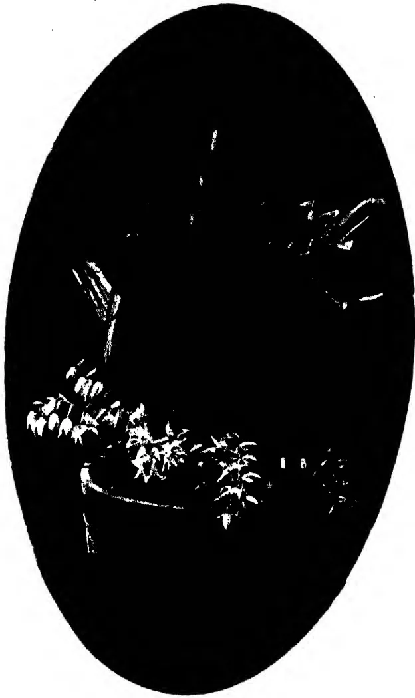
Coelogyne asperata Lindl.
87K. J. ALEX. SYLVA, F.R.H.S.,
CURATOR, HENERATGODA BOTANIC GARDENS, GAMPAHA
THE Coelogynes constitute a genus of epiphytic orchids confined to the tropical and sub-tropical regions of Asia. Lindley gave the generic name, Coelogyne, to the genus in 1825 in reference to the hollowed pistil and the first to be described was Coelogyne cristata, a very popular plant in collections.
The majority of the Coelogynes are conspicuous by their coloured membranous flowers having converging and shyly expanding sepals and petals, a hood-like lip, usually with fringed veins and a broad column.
There are over sixty named species most of which are well known to orchid growers. Some have tough but graceful-looking leaves and loose pendulous or erect racemes of flowers; while others, in form like alpine plants throw out flowers from an underground stem in the absence of any leaves. These latter, named Pleione are of annual duration and are found in the Himalayas between the two and ten thousand foot elevations. Coelogyne asperata Lindl. is a native of Malaya and Borneo, and was first introduced to Ceylon in 1891. The plant is well adapted to cultivation and attains a height of two or three feet. The dull green stiff papery leaves are about two and a half feet long and about five inches broad. They are strongly ribbed and are produced on the apex of the large oblong and grooved pseudo-bulbs which are between four to six inches high.
The short stout semi-drooping or arched raceme of flowers is produced through the centre of a scale-leaved new growth that later develops into a new pseudo-bulb.
When the flowers are faded the raceme readily comes off. The individual flower is about three inches in diameter. The
88petals and sepals are of a creamy colour as is also the background of the lip, which is streaked yellow and blotched with chocolate, the margin being wavy and frilled. The flower has a fragrant perfume but lasts only a week.
Culture.—Unlike some other members of the genus, Coelogyne asperata is a strong-growing species which needs plenty of rooting space and light for successful cultivation. On account of the short semi-pendulous nature of the flower-raceme, the plant is best grown in pots or wooden tubs. Plants grown on blocks of wood or hanging wooden baskets are liable to dwindle away from lack of the moisture-retaining power of these media. Though the plant is an epiphyte, it can be cultivated to perfection in a mixture composed of a fair percentage of leafy soil or flaky leaves. A good rooting medium may be made up of equal parts of boiled or weathered bits of coconut husk, half decayed strong wood, bits of bones, and knobs of charcoal mixed up with leaf mould or half-decayed leaves, and finished off with a top-dressing of moss.
It flowers twice a year, in December-January and June-July. When new young shoots appear, which carry flowers, the plants may be given slightly drier conditions but the application of moisture at the roots should not be altogether withheld. After the flowering is over the pots may be top-dressed as may be deemed necessary.
Repotting should not be undertaken unless the clump has overgrown its pot or it has too many leafless bulbs. All such nude bulbs should be carefully severed with a knife from the woody rhizome and placed singly in the same mixture in six inch pots for propagation. These bulbs should not be buried in the compost more than an inch on a slight mound raised over the pot; place these in a dry shady spot, giving a little water to hasten the sprouting of young shoots.
Well-established plants will stand our tropical sun very well if gradually brought into the open and hardened.
To retain flowers in a fresh state the plants should be shifted to shelter when in bloom. Special attention and care should be exercised in watering the plants that are throwing out new growths, as any water which collects in the new shoots is liable to cause their decay.
89WORLD rice production, excluding that of China, for which no reliable data exist, rose to a maximum in 1930-31 and underwent successive declines in the two following seasons. In 1933-34, however, there appears to have been a recovery to about the level of 1931-32.
(Million pounds).
| 1933-34 (very approximate) | ... | ... | ... | 194,000 |
| 1932-33 | ... | ... | ... | 193,100 |
| 1931-32 | ... | ... | ... | 194,670 |
| 1930-31 | ... | ... | ... | 199,960 |
| 1929-30 | ... | ... | ... | 188,827 |
| 1924-25/1928-29 | ... | ... | ... | 186,424 |
(1) Not including that of China, the U.S.S.R., Persia and certain other countries of smaller production for which statistics are very incomplete or are entirely lacking.
A record crop was harvested in Burma, the world's greatest exporter of rice, and possibly also in French Indo-China, while Siam also had a large crop. Of the Japanese territories both Japan proper and Chosen had larger crops than in 1932-33, the former country attaining a record. India proper, on the other hand, had a crop even smaller than in the previous season.
These countries, together with China, the Netherlands East Indies, the Philippines, British Malaya and Ceylon are responsible for all but a relatively insignificant part of the production of monsoon Asia and therefore for the bulk of world production. Owing to the lack of reliable statistics the production of China remains a very doubtful quantity. The more recent estimates lie between 90,000 and 120,000 million pounds of rough rice. The Netherlands East Indies, though until last year they have had large imports, have a production exceeding that of either French Indo-China or Siam, both in the first rank as exporters. The Philippines with a production of about 4,500 million pounds of rough rice, also import, though generally only relatively small quantities. British Malaya and Ceylon, with much smaller production, follow India and China as importers.
From the point of view of their influence on the rice market the countries of monsoon Asia may accordingly be divided into three groups. In the first place, those producing a surplus that must find an outlet
* By C. J. Robertson in the International Review of Agriculture, May, 1934.
90largely in competitive markets: Burma, French Indo-China and Siam. Secondly, those producing a surplus that is normally absorbed by a preferential market: Chosen and Taiwan, which find such an outlet in Japan. Thirdly, deficit countries: India, China, Japan, British Malaya, Ceylon, the Netherlands East Indies and the Philippines.
In Burma the 1933 monsoon was fairly strong in June and the rains were widespread, enabling ploughing to be completed under good conditions. Meanwhile the firmer condition of the market in consequence of the strong demand from India, where the 1932-33 crop had been small, had led to prices being considerably above the level of the corresponding period in 1932. The price of Big Mills Specials at Rangoon, which had been rising since March, when the steady decline that had begun in March 1932 was checked, continued to move upward in May and June, when the land was being prepared. Thus both weather and market conditions were relatively favourable. At the same time the prices of goods bought by the cultivators had also fallen and costs of production were further reduced by the wider adoption of broadcasting in place of transplanting. The area actually planted rose to 12,851,000 acres, so continuing the recovery from the low figure to which it had fallen in 1931-32 but still remaining under the 1929-30 level. Though the area destroyed was larger than in 1932-33, consequent on excessive middle rains in some parts of Lower Burma, most of it was resown or retransplanted and the area actually matured remained larger than in the previous year. The course of the season continued over most of the area to be favourable. In the result production attained the record level of 12,828 million pounds rice and rice products.
(Million pounds rice and rice derivatives).
| Production | Net export | ||||||
|---|---|---|---|---|---|---|---|
| Year | Burma | French Indo-China | Siam | Year | Burma* | French Indo-China | Siam† |
| To Foreign Countries | To Indian Ports | ||||||
| 1933-34 | 12,828‡ | 8,574 | 8,278 | 1934 | — | — | — |
| 1932-33 | 12,155 | 9,428 | 8,460 | 1933 | 3665 | 3302 | 2698 |
| 1931-32 | 10,351 | 9,034 | 6,727 | 1932 | 4219 | 2107 | 2624 |
| 1930-31 | 12,724 | 9,624 | 7,980 | 1931 | 4323 | 3177 | 2101 |
| 1929-30 | 12,335 | 9,557 | 6,407 | 1930 | 5187 | 2015 | 2465 |
| 1928-29 | 12,108 | 9,314 | 6,419 | 1929 | 3930 | 2269 | 3229 |
| 1927-28 | 12,088 | 10,333 | 7,547 | 1928 | 3379 | 2856 | 3904 |
| 1926-27 | 12,647 | 9,561 | 8,641 | 1927 | 4383 | 2414 | 3630 |
| 1925-26 | 11,734 | 9,440 | 6,933 | 1926 | 4621 | 1457 | 3506 |
| 1924-25 | 12,536 | 9,241 | 8,171 | 1925 | 4805 | 2754 | 3277 |
| 2947 | |||||||
* The official data are for rice both in the husk and not in the husk but as practically all the rice exported is milled, they have been taken to represent milled rice and derivatives.—† Exports from Bangkok, which make up 98 per cent. of the value of the total rice exports from Siam. Data refer to the season from 1 December to 30 November.—‡ not including Cambodia.
91The bulk of the export from French Indo-China originates in Cochinchina. While there was a decrease of 3.6 per cent. in the area under rice, consequent on the difficult economic conditions in the western provinces, the favourable monsoon resulted in a crop larger than the poor one of 1932-33 and practically equivalent to the average of the five years ending 1931-32. The production of Cambodia, which also has a surplus for export, is not known at this date.
In the Union as a whole, even if the crop in Cambodia proves to have been little larger than the very small one of 1931-32, production will be at least as high as in 1932-33.
(Million pounds rice and derivatives.)
| Year | Cochin-China | Cambodia | Tonkin | Annam | Laos |
|---|---|---|---|---|---|
| 1933-34 | 3,465 | — | 2,836 | 1,690 | 583 |
| 1932-33 | 3,108 | 1,225 | 2,890 | 1,642 | 563 |
| 1931-32 | 3,636 | 781 | 2,903 | 1,183 | 531 |
| 1930-31 | 2,985 | 1,446 | 3,220 | 1,442 | 531 |
| 1929-30 | 3,484 | 1,047 | 2,996 | 1,505 | 531 |
| 1928-29 | 3,405 | 976 | 2,913 | 1,473 | 547 |
| 1927-28 | 3,876 | 1,273 | 3,013 | 1,543 | 628 |
| 1926-27 | 3,405 | 1,448 | 2,211 | 1,918 | 579 |
| 1925-26 | 3,240 | 1,179 | 2,923 | 1,535 | 563 |
| 1924-25 | 3,565 | 902 | 2,521 | 1,770 | 483 |
In Siam the area sown to rice increased but that harvested showed a decline. Production, though smaller than that of the previous season, was, however, one of the largest of recent years.
For the second year in succession India proper (that is, excluding Burma) had a small crop, production in 1933-34 being estimated at only 62,217 million pounds of rice and rice products against 64,761 million in 1932-33 and the maximum production of 71,262 million pounds in 1931-32. In the majority of provinces there was a decline in the rice area. In Bengal, the largest single rice producing province, the decline was especially marked in the case of the winter crop. In various provinces the rains were scanty or badly distributed, while in some insects caused severe damage.
The crop in China, which is of a size comparable with that of India proper but for which statistical information is as usual lacking, is confirmed to have been a large one. According to the Central Agricultural Experimental Station production in eighteen provinces amounted to 117,800 million pounds of rough rice. The large crop, together with the considerable carryover from the very large crop of 1932-33, ensures that China's requirements of rice from outside countries will be relatively small. The Government in Canton is expected to introduce measures for the encouragement of increased production in the South. Given the large crops reported, the improvement in the price of silver is not likely to be reflected in any increase in rice imports.
92Amongst the importing countries of the second rank the Netherlands East Indies have until recently taken the lead. Production in Java has, however, tended fairly steadily upward in recent years, due partly, no doubt to the depressed situation of plantation crops, with the liberation of considerable areas for rice growing and simultaneously of much labour formerly employed on the plantations in Java or in the Outer Provinces. The Government has during the past year introduced a series of ordinances to regulate the trade in rice between Java and the Outer Provinces, which as a whole require to import, since the natives of these areas normally give priority of attention to export crops; not only has the import into Java and Madura been restricted, there having been little import since April, 1933, but it has been sought to encourage the movement of the large surpluses existing in Java and in certain parts of the Outer Provinces to those parts of the latter that have a deficit.
Production and net export to foreign countries of
India (excluding Burma)
(Million pounds rice and derivatives).
| Year | Production | Year | Net export to foreign countries All-India excluding Burma† |
|||
|---|---|---|---|---|---|---|
| All India excluding Burma* |
Bengal | Bihar and Orissa |
Madras | |||
| 1933-34 | 62,217 | 21,391 | 10,619 | 12,593 | 1934 | — |
| 1932-33 | 64,761 | 23,167 | 10,394 | 13,375 | 1933 | 387 |
| 1931-32 | 71,262 | 23,483 | 14,198 | 13,322 | 1932 | 512 |
| 1930-31 | 66,935 | 22,775 | 13,890 | 13,300 | 1931 | 479 |
| 1929-30 | 64,686 | 20,292 | 14,872 | 13,001 | 1930 | 626 |
| 1928-29 | 67,420 | 23,958 | 13,825 | 12,857 | 1929 | 601 |
| 1927-28 | 57,764 | 16,064 | 10,832 | 12,576 | 1928 | 272 |
| 1926-27 | 60,782 | 18,196 | 11,846 | 11,732 | 1927 | 581 |
| 1925-26 | 64,311 | 20,331 | 12,095 | 13,167 | 1926 | 629 |
| 1924-25 | 64,337 | 19,078 | 14,902 | 12,143 | 1925 | 725 |
* The All-India statistics exclude the production of the Punjab, the North-West Frontier Province, Ajmer-Marwara, Manpur Pargana and certain other Indian States, which together produced 2,553 million pounds on the average of the five years ending 1931-32; they also exclude the production of the Feudatory States of Bihar and Orissa, for which no reliable data are available. In 1933-34 the production of Bhopal was included for the first time.—† Telquel; only a relatively small part consists of rough rice.
With this end in view an increasing number of districts have been closed to the import of foreign rice; a premium was also offered to Java rice to strengthen its competitive power in the Sumatra East Coast. In Java and Madura west monsoon plantings were completed early, the rains having been favourable. In February earliest-planted crops had already
93been brought in and had given an outturn above the normal. At the end of February the condition of the standing crops was generally normal to good but in view of the persistent rains they were expected to be rather late.
In British Malaya good crops appear to have been obtained in most parts of the peninsula, only the flood damage in Kelantan and Johore and the delay in harvesting in parts of Perak having seriously affected the crop. The encouragement to rice-growing, through both the general economic depression and the steps taken by the Government to develop local food production by distributing improved varieties of rice and by other measures, is having its effect in reducing import requirements.
Net imports into the principal Asiatic countries of deficit other than India proper and Japan
(Million pounds rice and derivatives.)
| Year | China | Netherlands East Indies |
British Malaya |
Ceylon |
|---|---|---|---|---|
| 1933 | 2,841 | 752 | 982 | 1,003 |
| 1932 | 2,992 | 890 | 921 | 1,024 |
| 1931 | 1,427 | 1,304 | 1,156 | 1,006 |
| 1930 | 2,647 | 1,357 | 1,329 | 1,064 |
| 1929 | 1,439 | 1,592 | 1,256 | 1,102 |
| 1928 | 1,683 | 1,258 | 1,177 | 1,093 |
| 1927 | 2,799 | 1,003 | 1,228 | 1,053 |
| 1926 | 2,489 | 1,293 | 1,068 | 1,033 |
| 1925 | 1,679 | 1,110 | 907 | 972 |
| 1924 | 1,759 | 907 | 880 | 884 |
Similar considerations are responsible for the decrease in imports into Ceylon, after rising steadily to a maximum in 1929, imports into that country have since shown a downward tendency. In both these countries, however, the recent improvement in the prices of their plantation crops may have a certain countervailing action on the market for rice.
In the Philippines, though local production, principally in Luzon, is increasing, the costs of transport between the islands enable foreign rice to compete in the large consuming area of Negroes.
Although the imports of Japan are normally on the same scale as those of India they have since 1927 been derived to only a relatively limited extent from foreign countries. Production in Chosen and Taiwan, while showing considerable fluctuations, has been on the upgrade and these countries have to an increasing extent met the deficit in the metropolitan market. Chosen had a record crop in 1933-34, exceeding that of last year by 11 per cent. and the average of the five years ending 1931-32 by 14 per cent. thanks mainly to the ideal weather throughout the season, the successive operations having been carried out in very good time and growth having been favoured by high temperatures and plentiful moisture. In Taiwan on the other hand, both the first and second crops were smaller than the large
94ones of 1932-33, though they remained above the average and the production of Japanese varieties was high. Given the very large crop in Japan itself, however, added to the large stocks remaining in that country from previous years, the increasing production in the dependencies has become an embarrassment. The Government finds itself forced to make large appropriations to the Department of Agriculture for the purchase of rice from the growers and its segregation, to control the imports from Chosen and Taiwan and to endeavour to find an outlet on foreign markets for some of the surplus. Imports from foreign countries are admitted only by special licence.
(Million pounds rice and derivatives.)
| Year | Production | Year | Net import of Japan | ||||
|---|---|---|---|---|---|---|---|
| Japan | Chosen | Taiwan | From Foreign Countries | From Chosen | From Taiwan | ||
| 1933-34 | 20,902 | 5,353 | 2,468 | 1934 | — | — | — |
| 1932-33 | 17,816 | 4,822 | 2,640 | 1933 | 279 | 2,295 | — |
| 1931-32 | 16,290 | 4,683 | 2,207 | 1932 | 235 | 2,181 | — |
| 1930-31 | 19,730 | 5,659 | 2,174 | 1931 | *137 | 2,659 | 738 |
| 1929-30 | 17,571 | 4,042 | 1,912 | 1930 | 273 | 1,470 | 514 |
| 1928-29 | 17,791 | 3,986 | 2,005 | 1929 | 395 | 1,632 | 554 |
| 1927-28 | 18,322 | 5,104 | 2,035 | 1928 | 496 | 2,050 | 595 |
| 1926-27 | 16,401 | 4,514 | 1,833 | 1927 | 1,278 | 1,643 | 664 |
| 1925-26 | 17,614 | 4,358 | 1,901 | 1926 | 748 | 1,661 | 607 |
| 1924-25 | 16,867 | 3,900 | 1,793 | 1925 | 1,671 | 1,148 | 576 |
* Net export.
Production in the three major exporting countries depending on the competitive market, that is, in Burma, French Indo-China and Siam, amounted in 1933-34 to 29,680 million pounds of rice and derivatives against 28,818 million in 1932-33, Cambodia being excluded in both cases as its estimate is not available at this date. Fortunately, owing to the poor crop in India proper, Burma, which is responsible for the increase, has found itself in a position to move its surplus, estimated at 7,205 million pounds, relatively easily to that country. Its exports to Indian ports up to 28th April, 1934 from Rangoon and up to 21st April for the other ports amounted to 1,832 million pounds against 1,038 million up to the corresponding date in 1933. Under the stimulus of these conditions movement of the crop from internal positions to Rangoon has been exceptionally rapid this year. Though the more difficult conditions in other markets have led to imports from Japan (in the first months of the season) and to a more considerable extent, from Siam and French Indo-China, the Indian market remains essentially (by proximity alone) a market for Burma, Burma's total exports to other countries up to the same dates amounted to 854 million pounds against 1,192 million in the corresponding period of 1933.
95Total exports from French Indo-China in the period January-April were almost the same this year as last. The total exports of Siam in the first five months of the season, from December to April, amounted to 1,570 million pounds against 1,626 million in the corresponding period of last season.
Ceylon which may be said to fall into the same market group as India takes roughly two-thirds of its rice imports from Burma; in the first four months of 1934 its takings from that country were about the same as in the corresponding period of 1933 while Saigon rice had gained some ground.
In the Straits there was a general decrease in takings in the first four months of 1934 as compared with those in the corresponding period of last year. Siam and Burma supply this market, to a certain extent on a non-competitive basis owing to the different tastes of the Chinese and Indian immigrant populations, the former preferring Siam, of which the "field" types takes the lead in the total imports, and the latter the so-called Straits Quality. As in the previous season, the decline has been more marked in the case of Burma rice than in that of Siam rice, a phenomenon probably due to the large repatriation of Indian labourers that has taken place owing to the crisis on the plantations.
Burma, which has been the chief source of imports into the Netherlands East Indies, is seriously affected by the falling off in that market but Siam has also felt the repercussions of the new rice policy in the Netherlands possessions in the decline of its exports in that direction up to the end of April to a relatively insignificant figure.
In the Far Eastern markets, French Indo-China and Siam are in general the leading sources of supply. The importance of the Hongkong and China markets to Burma varies inversely with the demand from the Indian market. With rather large crops in both French Indo-China and Siam and an apparently bumper crop in China, competition between the two former countries in the Far East is intensified and prices were depressed by heavy shipments from both sources as the main bulk of the crop became available for export in February and March. Imports into China in the first months of the year show that French Indo-China has suffered from the decline much more than Siam, a result that may be partly due to exchange factors. Burma's exports to this market were also much smaller than in 1933. Unfortunately for French Indo-China, too, there has been a decline in the takings of France, which next to Hongkong is its principal market; the great increase in the production of Madagascar may also have repercussions on the marketing of Indo-China rice in certain countries. The fact that Japan has superabundant supplies from its own territories aggravates the situation of Siam, which has in recent years, owing to treaty obligations been the only one of the major foreign exporters to retain any considerable position in that market; in the first two months of 1934 Japan's imports from Siam were nil.
96World production in 1933-34 appears to have been larger than in the previous year. The most outstanding features of the season are the attainment of a record crop in Burma, the leading exporter and the very small crop in India, the leading importer. These two features may be regarded as neutralizing each other. Thanks to the Indian demand, the Rangoon market remained on the whole firm to mid-May. With the rapid movement of supplies to India in the first months of the season, the major part of the import requirements of that country has probably been met. Japan has also had a record crop and this, together with its large stocks and the abundant supplies available in its overseas dependencies, may lead to a considerable overflow from the territories of this group, which for some years recently could be regarded as somewhat detached from the general currents of world trade in rice. Outside these areas the most significant phenomenon is the reported large supplies in China. Along with the continued growth of production in the importing countries of the second rank, in part through Government encouragement by means of technical assistance and restriction of imports, this makes for acute competition in the marketing of the surpluses of French Indo-China and Siam and of that part of the Burma surplus that must be marketed outside India. The more difficult position of the former two countries seems likely to lead to reduction in prices in the Far Eastern markets and to greater pressure from these countries on the Middle Eastern markets — in the Straits, Ceylon and even in India — where Burma rice normally takes the predominant place. This situation will probably negative any possibility that the larger deficit in India might result in prices reaching any considerably higher level.
97How to Apply Manures.—Manures and fertilisers may be applied by —
With mature groves the broadcast method is almost exclusively adopted, for if the manure or fertiliser is evenly distributed over the whole grove and is well turned under, all of the spreading roots can draw upon it and so nourish the growing trees. But when manuring a young orchard it is generally best to spread the manure only over a slightly larger area than the zone actually occupied by the roots of the trees; if spread too distant from the root zone, a large amount of the manure may be lost.
Trench or Furrow Method.—It is claimed that this method has an advantage over the others, in that the manure will be placed directly in the root zone area and that it will induce deeper rooting. The latter claim is possibly correct, but on the other hand the tree's root system is encouraged over a more limited feeding area than is the case when the broadcasting method is adopted. It is true that with the broadcasting method there is some danger, especially where deep furrow irrigation is practised, of causing soluble plant foods to rise above the root system of the trees midway between the irrigation furrows. This objection may, however, be overcome by shallow furrow or basin irrigation to drive the plant foods down within reach of the roots.
If the trench method is adopted it should be commenced when the trees are still small. The first trench is then made fairly near the tree and is about one-quarter filled with manure and then closed. The next year, the trench is made on the opposite side of the tree, but at slightly greater distance away than the first, and the manure is similarly filled in and covered. Presuming that during the first two years these trenches have been made on the north and south sides of the trees, in the third year the trench may be placed on the east side and in the fourth year on the west side. Thus every year one side of the tree is manured. The trenches each season are made at an increased distance from the tree until the centre between the tree rows has been reached, when the manuring may be continued down the centres of the rows for the rest of the applications.
Mulching.—When citrus trees are very closely planted and the soil over the roots is of no great depth, mulching with vegetable matter and manure will often be found advantageous.
* By G. W. Marshall, Horticulturist. Extracted from the Rhodesia Agricultural Journal, Vol. XXXI., No. 6, June, 1934. The first part of this article was reproduced in this Journal for March, 1934.
98Cover Crops.—It should be the aim of every citrus grower to put in annually a leguminous summer cover crop between his trees to supply the soil with the necessary humus and nitrogen. Previous mention has been made of when to plant and plough under the cover crop, and there is no necessity to repeat this here.
Clean cultivation throughout the whole year is objectionable, and under such treatment poor results may be expected as compared with groves regularly cover-cropped.
There are many legumes which may be used for the purpose — sunn-hemp, kaffir, velvet, dolichos and other beans, also peas, etc. Bush varieties of beans are preferable to climbers, and care must be exercised that the crop planted is not subject to the attack of insect pests, which may later turn their attention to the fruit trees.
Pruning.—While the orange tree requires less pruning when once established than most other fruit trees, it is yet necessary to attend to this constantly in the early stages of its life in the grove. Young trees growing isolated as they do, with free access to light on all sides, should shape themselves perfectly in accordance with their own demands. If the prunings of young trees is correctly performed, the work will be limited to the removal of all sprouts that appear on the tree trunk and to the cutting out of cross, broken or diseased branches. The fact must not be overlooked that the leaves are the part of the plant that manufacture the carbohydrates necessary in the growth of all parts of the tree; thus when the trees are heavily pruned a setback will occur and the normal growth will be adversely affected.
On the trees reaching bearing age, pruning should be confined to the cutting out of the dead, damaged and diseased or decadent limbs and to the removal of branches likely to touch the ground. This permits of implements working slightly under the trees. All water shoots must be cut off when they appear on the trunk or other part of the tree.
The lopping off of the bottom branches should not be excessive, the aim being merely to prevent the fruit carried on such branches from rubbing on the ground. When large limbs are to be removed, owing to disease or some other cause, the limbs should be cut off well against the remaining wood without leaving a stub. These stubs cause endless water shoot growths, or they may die back and so impair the general health of the tree. Wounds of one-half inch in diameter and over should be neatly trimmed with a sharp knife and then painted with an oil paint similar in colour to that of the bark of the tree; huge white or red blotches on the tree are unsightly and should be avoided.
The best period within which to prune orange trees is from the time harvesting is completed up to the first signs of spring growth; if this practice is followed, little or no damage will occur to the fruit crop.
The foregoing remarks regarding the pruning of orange trees apply equally to grape fruit and naartje trees; lemons may be pruned more heavily.
99Spraying and Fumigating.—It should be clearly understood that spraying and fumigation are just as much an essential part of the curriculum of citrus grove work as any of the cultural operations. Some growers are under the impression that there are more pests to contend with in this country than elsewhere, but this is not so, and provided reasonable attention is given, it is no more difficult to control attacks here than in other parts of the world. In all countries where fruit growing is carried on commercially, spraying or fumigation of the trees is recognised as part of the regular grove routine and is considered a form of insurance against loss. If trees are neglected through want of cleansing from either insect or fungus troubles, it cannot be expected that returns from the grove will be satisfactory.
Of recent years considerable improvements have been effected in regard to appliances and remedies necessary for spraying, and it is now possible to procure effective pumps for small or large groves, as well as the spray mixtures, with full directions on their containers for mixing, etc.
When purchasing a spray pump to be worked either by hand or power the outfit should be capable of thoroughly atomising the spray mixtures, failing which efficient results will not be obtained. High pressure pumps give the best results and should be equipped with good quality high pressure hose pipes with suitable rods and nozzles.
When once a spray pump is purchased it must be well cared for; leaky joints must be remedied, for they not only waste material, but may injure the operator. The pumps must be regularly washed out with clean water after use, and they should then be placed under suitable cover. The hose pipe should be kept in a dark place when not in use and should never be allowed to lie about in the hot sun during breaks when spraying is in progress.
The aims and objects of spraying are to destroy, prevent or control the injurious pests and diseases that may be troublesome in any given locality. If a pest is found to be increasing in the citrus grove and the natural enemies are unable to deal with it, and if it is possible to effectively destroy or control it by spraying, the spray outfit must at once be brought into action, weather permitting. The necessary spray material should always be kept in readiness, and the mixing and application should be thoroughly done under competent supervision.
Mix the spray as directed on the container, then before spraying, thoroughly agitate it by placing the nozzle in the mixture tank and pump for a few minutes; this prevents the mixtures that settle quickly from being sprayed on the trees at varying strengths.
When applying spray mixtures which destroy the insects by poisoning their food or kill them by suffocation or absorption, the trees must first be sprayed in such a way as first to cover the under side of the foliage and subsequently the upper surface of the leaves. If sufficient pressure is used and the spray rods are well handled, the tree may be completely covered with a thin film of spray material without unnecessary loss by dripping from the foliage.
100OWING to differences in climate and soil, Java is well suited for the production of almost all tropical fruits. A large indigenous population, mainly composed of small landowners, has resulted in extensive areas of fruit being planted, and in many districts fruit cultivation is an important item of native agriculture.
The soil is rather poor, but by its physical condition well suited to the cultivation of all fruit trees, excluding mangoes and bananas. Rubber is not planted. A system exists whereby almost every landowner undertakes to rear a heifer or young bull for dairymen living near the large towns, in return for the manure obtained. A small cash payment is, in some cases, made to the landowner when the animal is returned to its owner. Ponies and goats are also kept on many holdings. The animals are staled in small bamboo shelters with atap roofs and fed almost solely with grass clippings, collected from adjacent open spaces. Working ponies receive a small daily ration of rice bran. The pen manure thus obtained is utilized in manuring the fruit trees in the various holdings. The advantage of consistent manuring especially of pomeloes, appears to be fully realized, and large crops of fruit are obtained as a result of this practice.
The bureau is administered by the Head of the Agricultural and Fishery Service with a Horticultural Adviser and two technical assistants. These officers are stationed at headquarters in Batavia. Some twelve European officers are engaged on fruit work in Java and Sumatra. Three research experiment stations are controlled by the bureau; Ragoenan near Batavia; Bedali near Malang, and Pasoeroean, both in East Java. Ragoenan is the main experiment station and is dealt with in detail in this article. The experiment station known as Bedali, is situated 1,575 feet above sea-level and is concerned with the experimental cultivation, and propagation for distribution of oranges, mandarins and lemons. The average yearly rainfall is 74 inches. This station, comprising 22 acres, was opened in 1928 in order to encourage the cultivation of citrus in East Java.
Mangocs thrive exceedingly well on the plains in East Java and receive particular attention at an experiment station, (area 30 acres) known as Pohdjentrek, near Pasoeroean. This station opened in 1919, is situated on the plains and has an average yearly rainfall of 52 inches. Trial plots and experiment stations number about thirty, and are distributed throughout the main fruit-growing districts of the country. Several are situated
* By J. N. Milsum, Assistant Agriculturist. Extracted from The Malayan Agricultural Journal, Vol. XXII, No. 7, July, 1934.
101in the hills with the object of assisting settlers, including Europeans, in the production of hill fruits such as oranges, grape fruits, avocado pears, and persimmons.
The main lines of work undertaken by the Horticultural Bureau are as follows :
Investigations concerning diseases and pests are conducted at the Institute for Plant Diseases, Buitenzorg.
This experiment station, opened in 1921, is situated some 12 miles south of Batavia. Three estates make up the station and comprise 500 acres, of which about 320 acres are under cultivation. The station is concerned solely with research in connexion with fruit cultivation, and since it is in the centre of a large fruit-growing district is, particularly well suited for the purpose.
Soil.—The soil at the station is similar to that in the Batavia district and thence to the foot of the mountains. It consists of an ancient andesite tuff laterite of very great depth. The surface soil is deep red in colour with an almost complete absence of sand. Although described as a clay the soil is very porous and crumbles readily when dry. It contains about 4 per cent. of organic matter and 0·1 per cent. of lime. A remarkable feature is the small amount of potassium present (0·005 per cent. soluble in 2 per cent. citric acid solution). Plant growth shows ready response to phosphates and nitrogenous manures when applied to this soil. During wet weather the soil is particularly sticky and difficult to work but it soon dries out. Artificial irrigation is necessary during the dry monsoon and a comprehensive system of irrigating channels has been installed.
Climate.—The average rainfall at Pasar Minggoe is 90 inches per annum. The main precipitation is from November to April, known as the West Monsoon. During the East Monsoon i.e. May to October, the rainfall is considerably less with some rather dry periods. Temperatures appear to be very similar to those obtaining in Malaya.
Ragoenan Experiment Station was selected originally as a suitable site to conduct investigations in fruit culture, since it is in the centre of the most important fruit-growing district in Java. Material of the major fruits has thus been collected without much difficulty. With regard to the
102indigenous fruits such as pomelo, rambutan, and duku, and others of less importance, the opportunity has been taken of attending all exhibitions and tracing the trees that have produced fruit of superior quality. Periodical inspections are made during the fruiting season in all small-holdings, and trees of superior quality marked and numbered. Since all fruits are propagated asexually, it has been found possible to gather together a representative collection of the finest fruits occurring in Java. In the course of these trials many selected trees have been discarded, and so far as possible only those varieties of superior quality and practical value are retained and propagated for distribution. Exotic fruits, such as citrus, avocado pear and mango, have been imported. Considerable research has been necessary to ascertain suitable stocks for these importations, especially for the commercial varieties of citrus.
The standard method at Ragoenan of propagating almost all tropical fruits is by budding, mainly on to seedling stocks. Since the future behaviour of the fruit tree depends to a great extent upon a well-grown stock, it is of paramount importance that this branch of nursery work be given proper attention. The question of suitable stocks for different fruits is dealt with under a subsequent heading. It is proposed to record here how stocks should be raised.
The site of the seed bed should be on good soil that is well drained and capable of producing strong seedlings. It should be situated as near as possible to a water supply as watering during dry weather is often necessary. At Ragoenan Experiment Station, where dry weather is experienced during the East Monsoon, artificial irrigation is undertaken. On present information it is doubtful whether this is essential in Malaya, although probably advantageous. The beds should be 4 feet wide, of convenient length, with paths 18 inches to 2 feet between each bed. The size of the seedling beds at Ragoenan is 50 feet by 4 feet, and this size is taken as a standard throughout this report.
The cultural treatment will naturally depend upon the tilth and fertility of the soil. Assuming that the land has been under cultivation previously, the soil should be rested before use and planted with a suitable cover crop, e.g., Calopogonium mucunoides. When required for use the beds should be deeply trenched and the green matter dug into the soil. Well-rotted cattle manure is then placed on the land at the rate of about 1,000 lb. per bed. This is incorporated into the soil by a second digging. The amount of cattle manure applied to the land each time it is required for raising seedling stocks appears extraordinarily heavy, but experience has proved that to obtain satisfactory results, this is necessary. A dressing of artificial fertilizers is then applied to the beds and raked in. The usual dressing is a mixture of basic slag (4 lb. per bed) and sulphate of potash (2 lb. per bed). The bed is then in a suitable condition for sowing the seeds.
103A light high shade is considered an advantage and Sesbania grandiflora, a light-leaved leguminous tree, may be used for this purpose. A few trees per acre of nursery only should be planted, since it is necessary to prevent root competition with the fruit seedlings.
In seed-sowing the procedure adopted varies according to the kind of fruit stock it is desired to raise. Fruits, such as the rambutan, durian, jak fruit, guava, duku, and avocado pear are sown in three rows one foot apart, the seeds being spaced one foot apart in the rows. A light shade of rough ataps placed on a bamboo structure two feet above the soil, is necessary, since the shade assists the seedlings during the early stages of growth. Regular watering and weeding is essential after sowing, and at all times the soil should be kept stirred in order to provide a surface mulch. The attacks of injurious insects must be guarded against. When the seedlings are about six months old, the taproot is cut back several inches by means of a long knife inserted beneath the soil. This operation should be carried out during wet weather. When the seedlings reach the atap roof of the shelter, shade is gradually removed in order to harden the seedlings preparatory to budding. Under suitable conditions the seedlings are ready for budding one year after sowing. Should growth be slow during the seedling stage, one or more applications of a nitrogenous fertilizer e.g., sulphate of ammonia, at the rate of one lb. per bed, may be applied to the soil between the plants and raked in.
Citrus stocks require rather different treatment from that outlined above. As is generally known, citrus plants are very liable to insect attack, and to secure clean growth during the seedling stage the beds are enclosed in a covering of light cambric. This is a necessary precaution against the leaf miner, Phyllocnistis citrella. The seedlings are transplanted before being used for budding.
The seeds are sown with the pointed end downwards to secure straight taproots. The distance of planting is about inches apart either way. After sowing, the entire bed is covered with white cambric, placed over a bamboo structure two feet from ground level.
Germination of most stocks takes place within 3 to 4 weeks. Under average conditions, the citrus seedlings are fit to be transplanted when six months old. They are carefully lifted from a moist seed bed and the taproot cut back a few inches, and planted in similar beds in three rows, each seedling being spaced one foot apart. A cambric covering is used for a further month to encourage the seedlings to become established. Budding may be undertaken one year after sowing the seeds.
Several other factors require mention with regard to the two principal citrus stocks used in Java; namely, propagation from cuttings and selection of seedling stocks. Both the rough lemon and Japanese citron may readily be raised from cuttings and serve equally well for stocks as seedlings. Cuttings about one foot long of hardened wood are selected and planted deeply in prepared beds under cambric covering. The exposed cut surface is coated with a mixture of paraffin wax (92 per cent.) and carbolineum (8 per cent.) in order to guard against fungus attack. Cuttings so treated
104produce roots in 4 weeks and may be transplanted a month later. Budding may be undertaken when the cuttings are six months old, and these are ready for transplanting at least six months earlier than seedlings. In citrus the growth of the scion is considerably influenced by the stock. The seedlings of most stocks are partly of vegetative and partly of generative type. It is necessary to discard the latter, since only vegetative seedlings should be used for budding. Weak seedlings and those with deformed taproots should be rigorously excluded. This subject has been dealt with by Dr. H. T. Toxopeus, in Landbouw VII, No. 10. In practice, it is found that only 30 per cent. of Japanese citron seedlings and 70 per cent. of rough lemon seedlings are suitable for use. Should the seedlings begin to form side branches at any time the branches should be removed, as a single stem is required for budding.
It will be seen from the preceding remarks that the amount of work in connexion with raising budded fruit trees is considerable. The actual cost, including supervision, of producing budded trees at Ragoenan Experiment Station made it necessary to charge 35 and 75 guilder cents per plant, to Asiatic and European, respectively.
Several diseases cause severe damage in the citrus orchards. Gum disease, Phytophthora parasitica, attacks the bark at ground level and may cause the death of the tree. Treatment consists of excising the diseased bark, after which the wound is smeared with a mixture of paraffin wax and carbolineum, in the proportion of 92 to 8. The sweet orange is particularly liable to this disease in Java. Recent investigations have proved that inarching seedlings of rough lemons or Japanese citron at the base of severely diseased trees saves many affected trees. Diplodia gum disease, Diplodia natalensis, attacks the bark of the trunk and the main branches. The treatment is similar to that outlined above. Canker, Pseudomonas Citri, and scab, Sphaeloma farcettii, attack the leaves, young growth, and fruits of most citrus and cause a corky excrescence. The infection takes place when the leaves and fruits are young. Both diseases may be effectively controlled by fortnightly spraying with Bordeaux mixture shortly before the young leaves appear and after the fruits have formed. A dry Diplodia (Diplodia sp.) attacks the smaller branches. It can be controlled in the early stages by spraying with Bordeaux mixture.
Insect pests are numerous. Mites, which damage the leaves and fruit, are kept in check by sulphur dusting. The larvae of a fruit fly and Citrus moth, Citripestis sagatiferella, frequently cause great damage to pomeloes and grape fruit. The only practical method to be employed in combating these pests is to enclose individual fruits in paper or cambric bags, four weeks after setting. Several scale insects are troublesome and, unless attended to, may render the fruit unsaleable. Scales are kept
105in check by fortnightly spraying with kerosene and soap emulsions. Ants are responsible for the presence of certain scales, and the former are excluded from the trees by attaching a band of wire gauze covered with glue to the base of the tree. Mealy bugs and aphids are controlled by spraying with kerosene and soap, or 2 per cent. alcohol and soap emulsions.
Particular mention is made of the more important diseases and pests occurring at Ragoenan, since, without adequate control measures, the cultivation of citrus would undoubtedly be a complete failure.
106THE kapok plant which is known botanically as Ceiba pentandra (L.) Gaertn, is grown for its fiber. In the Philippines, kapok culture is only a minor industry, but as kapok fiber is gradually replacing other materials for stuffing mattresses, cushions, life-saving appliances, etc. the demand will increase and the Philippine kapok industry become more important.
Kapok is a perennial plant and is propagated either by seed or by cuttings. But these methods of propagation offer some serious disadvantages, especially to those who desire to grow this crop on a commercial scale. Kapok plants propagated by seed generally grow very tall, hence offer difficulties in harvesting. Also, they produce variable yields of fiber of variable quality. The plants grown from cuttings have weak root systems and do not stand up well against heavy winds. Also, to propagate by cuttings is a rather slow process.
Realizing these drawbacks a study of two other methods of asexual propagation, budding and grafting was made.
The writer failed to find any reports, published or in manuscript, on the propagation of kapok by budding or grafting in the Philippines, or in any other country. When Doctor Mendiola, Head of the Department of Agronomy in this College, returned from his second visit to Java in 1927, he reported verbally to the Plant Breeding Staff of this department that the Central Agricultural Experiment Station of Java had been experimenting on the propagation of kapok by budding, using as one of the stocks the Surinam kapok, Ceiba pentandra variety Caribaea. Doctor Mendiola suggested then to the writer that a similar experiment be carried out here. He had brought with him four living plants of the Surinam kapok which he planted near Cottage No. 5 on Faculty Hill for possible use in the future for budding. Following his suggestion, this work was undertaken using patch budding or cleft grafting, and the present paper was prepared embodying the results. The work was carried for two years and four months in the College of Agriculture at Los Banos, Laguna.
In this experiment 168 kapok seedlings generously given to the College of Agriculture by the School of Forestry at Los Banos were used and budded. The seedlings were transplanted in the Plant Breeding Garden plots until ready for budding. The seedlings used as stocks varied in diameter from 1.5 to 2.5 cm. at a point 30 cm. above the ground.
* By Toribio Mercado of the Department of Agronomy in The Philippine Agriculturist, Vol. XXIII., No. 2, July, 1934.
107The bud sticks from upright and horizontal branches and having a diameter of from 2.5 to 3.0 cm. were taken from an old kapok tree of reputed high yielding ability growing on the College of Agriculture Campus. Buds or scions available for budding or grafting were counted. The buds found from a bud stick a meter long were used for patch budding, and two scions from each small branch were used for cleft grafting.
The patch budding method was employed in this experiment. The process may be described as follows: On each stock, at a point about 30 cm. above the ground, a piece of bark was separated cutting downward. The separated bark was about 1.5 cm. wide and 3 to 4 cm. long. From the bud stick a piece of bark containing a dormant bud was removed including a part of the woody portion. The woody portion was then carefully removed from the bark. This bark containing the bud was made rectangular in shape and a little smaller in size than the wound. The scion was attached immediately at normal position to the woody portion exposed. This scion was then held in place by the bark and tied tightly with a piece of budding tape. The whole wound was kept covered with the budding tape to prevent water from getting into it.
Small branches of the mother plant were also tried for cleft grafting, the method followed was: The scion was cut wedge-shaped and the length of the cut varied from 3 to 4 cm. The length of the scion varied from 10 to 15 cm., with all the leaves removed. About 25 cm. above the ground, the stock was cut with a sharp knife at a right angle to its axis. With the blade of the knife the cut was opened downward about the length of the wedge; the prepared scion was inserted, placing it very carefully so that the two cambium layers, that of the stock and that of the scion, came in contact. The wound was first tied with twine then wrapped with grafting tape. Wrapping was started at the lower end, proceeding upward until the whole wound was protected.
About two weeks after budding or grafting, the tape covering the scions was removed and the condition of the scions noted. At this time the inserted buds were considered successful if they were green. The budded or grafted seedlings were examined often and protected from any possible injury. When the patch was greenish and it seemed sure that the bud would develop, the main stem of the stock was cut 5 cm. above the budded portion. When the bud was about 3 cm. in height, the remaining stem was pruned just above the growing bud. The wound was coated with tar. The treated trees were transplanted later, and thereafter observations were made on the growth of the buds, branching habits and height of the budded trees as compared with the unbudded ones. The fruiting of the treated and untreated trees was also noted.
Results of this experiment are found in tables 1, 2, and 3.
108Table 1 gives the number of scions available for budding and grafting from a branch of kapok plant having a diameter of from 2.5 to 3 cm. at its base.
Table 2 gives the percentages of developing buds.
Table 3 gives the height of the developing buds at the age of one and one-half to two months.
As shown in table 1, a meter of bud stick of kapok produced from 29 to 50 buds which were available for patch budding. On an average about 40 buds could be used for this purpose. At the same time, from the same kind of bud stick as many as 22 smaller branches could be utilised for grafting, the average was around 13 scions.
It may be seen from table 2 that the kapok plant responded to patch budding more readily than to cleft grafting. 89 per cent. or 124 of the 138 buds used were successful. With cleft grafting, only 70 per cent. or 21 of the 30 scions used developed. The success of developing buds by patch budding was 19.13 per cent. greater than that by grafting.
The above data seem to show that by patch budding the propagating power of the kapok plant could be increased around 40 times and by cleft grafting 13 times the ordinary method of propagation by cuttings. By using patch budding and grafting methods of propagation together, a branch of kapok could be propagated about 50 times.
It may be seen in table 3 that at the age of about two months, the growing buds varied in height. At this age some of the inserted buds remained green but did not develop, while others grew from 3.5 to 60 cm. tall. Some of the buds at the age of one and one-half months grew faster than some that had been inserted two months.
These data seem to show that, although the buds remained green, not all developed to young plants. The rate of growth of the buds varied considerably and seemed to depend not only upon the age of the scions inserted but also upon other factors not investigated in this study.
It is interesting to note that scions from an upright branch developed into upright trees, while those from a horizontal branch generally produced drooping branches. The budded or grafted trees from scions of upright branches were taller than those from the drooping ones.
The budded and grafted trees attained a height of over a meter and a half at the age of one year and produced many branches. They started to produce well developed pods after a year and continued to fruit yearly. The budded trees were much shorter and the branches produced were closely
109arranged and less stout than those grown from seed. These characteristics are highly desirable as the harvesting of the ripe pods is more convenient and the trees are less exposed to heavy winds than when tall.
The kapok plant responded to patch budding and grafting readily, the rate of asexual propagation of this plant can be increased about 40 times by patch budding alone and many more times if all the small branches are utilised for grafting. The budded trees started to produce pods when the scion reached the age of about one year and continued to fruit yearly. The budded trees, being comparatively low, are less subject to injury by heavy winds. Scions from the upright branches produced upright growths. Patch budding or cleft grafting, or both may be recommended for propagating the desirable kapok trees or varieties.
TABLE 1
Number of scions available for budding and grafting from a branch of kapok plant*
| Number of branches studied | Buds or Scions available for | |
|---|---|---|
| budding | grafting | |
| 1 ..... | 50 | 22 |
| 2 ..... | 65 | 17 |
| 3 ..... | 31 | 9 |
| 4 ..... | 33 | 9 |
| 5 ..... | 32 | 14 |
| 6 ..... | 29 | 8 |
| Average ..... | 40 | 13 |
* The diameter of the branches used in counting the available buds or scions was from 2.5 to 3 cm.
TABLE 2
Showing the percentage of developing buds
| Characters noted | budding | grafting |
|---|---|---|
| Number of inserted scions ... | 138 | 30 |
| Number of green or developing buds ... | 124 | 21 |
| Developing buds, per cent. ... | 89 | 70 |
Height of the inserted buds at the age of one
and one-half to two months
| Stock No. | Age Days |
Height of Bud cm. |
Stock No. | Age Days |
Height of Bud cm. |
|---|---|---|---|---|---|
| 59 | 41 | 14.5 | 45 | 54 | 60.5 |
| 140 | 44 | 27.0 | 19 | 57 | 30.5 |
| 141 | 44 | 25.5 | 20 | 57 | 28.0 |
| 106 | 46 | 34.5 | 125 | 62 | 7.5 |
| 107 | 46 | 23.0 | 129 | 62 | 15.9 |
| 122 | 46 | 19.5 | 134 | 62 | 22.5 |
| 128 | 46 | 18.8 | 78 | 64 | 17.0 |
| 136 | 46 | 40.0 | 83 | 64 | 16.3 |
| 137 | 46 | 28.5 | 85 | 64 | 12.5 |
| 56 | 49 | 26.0 | 87 | 64 | 11.0 |
| 57 | 49 | 32.0 | 55 | 65 | 17.0 |
| 62 | 49 | 30.0 | 58 | 65 | 22.5 |
| 63 | 49 | 30.5 | 60 | 65 | 12.0 |
| 66 | 49 | 26.5 | 61 | 65 | 19.5 |
| 21 | 49 | 26.5 | 64 | 65 | 23.5 |
| 22 | 49 | 34.3 | 65 | 65 | 18.0 |
| 24 | 49 | 16.0 | 23 | 66 | 24.5 |
| 25 | 49 | 29.8 | 32 | 66 | 3.5 |
| 26 | 49 | 29.8 | 33 | — | 40.5 |
| 31 | 49 | 30.7 | 34 | — | 25.2 |
| 46 | 51 | 27.7 | 35 | — | 59.0 |
| 47 | 51 | 23.0 | 36 | — | 19.5 |
| 41 | 54 | 47.5 | 37 | — | 35.5 |
| 42 | 54 | 33.0 | 39 | — | 54.0 |
| 43 | 54 | 28.0 | 38 | — | 19.0 |
THE Maltese group of islands consists of Malta and Gozo, and the two small islands of Comino and Cominotto, which are situated in the channel between the two main islands. Malta is nearly four times the size of Gozo, and the total area of the group is 114 square miles. The islands consists of coralline limestone, and five definite geological strata are recognized. At first sight there would not appear to be an extensive agriculture, but in the valleys considerable tracts of fertile soil are to be found and behind the numerous stone walls, which have been erected to free the land of rock, to prevent soil erosion and to provide shelter for the crops from strong winds, there have been created—often by the transport of soil—small farms of enclosed and terraced fields, which total a considerable acreage.
The majority of the farms are small, averaging between 3 to 4 acres in extent, and farms of 30 and 40 acres are classed as large. The division of properties is general by the prevailing laws of inheritance, and today few farms form composite blocks of land. The area under cultivation is 43,000 acres and the holdings number 11,000. The smaller farms are run by the farmer and his family, and except during the time of sowing the spring crop of potatoes, paid outside help is rarely secured.
The rainfall in the islands averages 20 inches per annum, and half of this falls in the months of November, December and January, and the other half during the months of February, March, April, September and October. The months of May, June, July and August are practically rainless. The highest temperatures occur in July and August, when the monthly average in the shade is between 85° and 90°F. During this period all vegetation becomes parched, and except in the areas where irrigation water is available, there is little or no green produce except the Cactus (Opuntia ficus indica) which at this time of the year provides the green fodder for all classes of animals. Irrigation water is secured from wells by means of Persian Wheels or Noria, and pumps driven by windmills or oil engines.
In Malta also non-irrigable land which is not suitable for annual crops is planted with vines. There has been some increased planting in recent years, but not in the same ratio to the total cultivated area as in Gozo. For the annual crops grown in Malta the rotational systems are much more complicated than in Gozo, and depend upon whether the land is irrigable or not, and upon the demand for potatoes for export and for vegetables. Wheat is the chief cereal crop grown for grain with barley as a subsidiary. Barley (cut green) and salla are the chief forage crops, potatoes and vegetables the main money crops, and, on non-irrigated lands, cumin, pumpkins
* Extracted from "Report on the Present Condition of Agriculture in the Maltese Islands" by F. A. Stockdale, C.M.G., C.B.E., 23rd April, 1934,
112and melons the chief summer crops. Broad beans, vetches and the ochra pea are also commonly grown, but the broad bean, contrary to the custom in Italy and parts of Sicily, is not usually grown for the dried bean. Crops of broad beans are usually picked green and utilized as vegetables. Onions constitute another important crop, being sown in December and January and transplanted in March, and harvested from July-September. Three crops of potatoes are grown — the winter crop sown from locally saved seed in September-October and harvested in December-January; the spring crop sown in December-January and harvested in April, May and June; and a small summer crop grown under irrigation for local consumption. On the medium-quality lands, cumin usually follows the spring crop of potatoes or barley cut for forage.
The quality of the Maltese oranges is excellent, but the area devoted to their cultivation is relatively small, being made up of areas in enclosed gardens rather than of orchard cultivations. It is difficult to see how the cultivation of oranges could be economically extended to any material extent. Owing to the variation in types and the limited extent of the cultivation, either individual or collective, it would be difficult to build up any material export trade in competition with the well-organized industries of such countries as Palestine or Spain. There is a considerable local demand for oranges and at times an actual shortage. In fact there are at times imports from Sicily and other countries. Several attempts have been made to ship to English markets, but the results have not been favourable. This has been due in part to the methods of packing but to a greater degree to the mixture of types and lack of grading. It is not impossible that a small luxury trade might be built up if very strict attention were given to grading and packing, but, owing to the mixture of types in the cultivations and the relatively small quantities of the supplies available, it would be excessively difficult to meet the requirements of importing countries which demand high standards of uniformity of packing and grading, especially when these markets are being supplied with increasing quantities from countries with extensive and well-organized industries. Endeavours might, however, be directed towards finding a means of carrying over stocks from the height of the season to those periods during which there is a shortage in the local market. Only selected fruits could, however, be so utilized, as the Mediterranean fruit fly causes considerable damage to the crop and no affected fruit can be kept.
Animal husbandry forms a most important feature of Maltese agriculture. This is not at first apparent, as few animals are to be seen in the fields. It is only after visits to farms that the importance of this branch of agriculture can be fully realised. The animals are stall-fed, and cattle, for example are rarely allowed out of their abodes or stalls. The only animals to be seen outside during the season when crops are growing are horses, mules and donkeys used for transport, goats which provide the milk supply of the population, and some sheep. Each homestead, however, has its cow, cattle being fattened, pigs being bred and fattened, turkeys, poultry and some rabbits. In Gozo the animal industry plays a relatively
114neither the freshness nor appearance of new potatoes known as "scrapers". There is also a small summer crop on irrigated lands, but no part of this is exported. The exports of the past six years have averaged 11,000 tons, with an export in 1929 of 13,483 tons. The chief importing countries, in order of importance, on the averages of the past five years are Holland, Ceylon, Germany, the United Kingdom, Tunis, and Italy. The average export to Holland has been about 7,000 tons per annum, and this market has absorbed slightly over 60 per cent. of the total exports. The German market during the past two years has shown a marked decline, as also has the market in Italy. The Ceylon market has been developed recently, and is of importance. It absorbed 1,799 tons in 1930 and 1,048 tons in 1933, and could probably be developed further as the annual import of potatoes into Ceylon from all sources was 10,736 tons in 1932. A market in Bombay could also be developed, as considerable quantities of potatoes from East Africa find ready acceptance in this market. The United Kingdom market took considerably larger quantities in 1932 than in the previous years. In that year it absorbed 14 per cent. of the crop exported, but there was a decline in 1933. More exacting import regulations have been made by the Netherlands in regard to grading. Limitation of sizes has been imposed and this will result in the largesized tubers being non-acceptable in this market. It was also proposed that a crisis tax of 1.25 guilders per 100 kilos should be imposed. The trade with the Netherlands markets will in consequence be restricted.
Grading of early potatoes consists chiefly of picking out the undersized, damaged and "green tubers. It is, however, expected that some standardization of sizes will shortly be adopted. Bermuda has, in fact, adopted standardization for the Canadian market with considerable success during the past three years. In Bermuda there are very stringent regulations controlling the import of seed for sowing, the limitation of varieties of seed allowed to be imported, and the grading of exports. These are packed to a considerable extent under Government supervision in a Government Packing House, and exports so packed have commanded an increasingly favourable reception in Canadian markets. Potatoes for export from Bermuda are graded according to sizes into four grades having a minimum of inches in diameter for the lowest grade, inches for the next grade, inches for the next higher grade and inches for the highest grade. In Italy also the national market system has been established, and all potatoes exported between specified dates — varying according to the growing district but in general extending from the middle of April to the middle of July — have to be graded. Official standards have been laid down. These prescribe standards of quality, uniformity of type minimum weight of tubers and methods of packing and marking. The minimum weight of tubers allowed varies from seven-tenths of an ounce to one ounce according to the time of season and district. Tolerances are allowed for undersized and damaged tubers, and for earth and other foreign matters. The containers may be sacks of 25, 30 and 50 kilos gross weight, or baskets of approved form. They must be marked with the type of potato — long yellow, round
113more important part than in Malta. This is because there has been little development of the market-garden industry, whereas in Malta it has been highly developed. In the latter island, market garden crops constitute the main money crops of the farmer, whilst in Gozo fattened animals, poultry and eggs at the present time form the chief sale products of the farms. Locally bred bulls are fattened for sale in Gozo, but in Malta the animals being fattened are usually imported. Cows' or sheep's milk is made into cheese, and poultry and eggs are shipped from Gozo to Malta for sale in large numbers. Some butter is also made but only very small quantities.
Poultry, turkeys and guinea fowls are kept on the farms, much in the way poultry were kept in the farmyards of England some forty or fifty years ago. They find their food from the refuse of the home and of the fields. Specialized poultry farming has not yet started, although there is a large local demand for both poultry and eggs. During the past five years there has been an average import of 375,000 dozen eggs and the imports have shown yearly increases. In 1929, the import was 148,000 dozen valued at £7,957, whereas in 1933 the imports amounted to 659,762 dozen valued at £18,645. The fowls are a mixed lot, and generally very undersized. Private individuals have imported stock from Australia, England and other countries, and eggs and birds have been sold from such importations. In the farmyards, occasional signs of such importations can be seen, but the general effects have not as yet been large. There is room for very considerable improvement, and with concentration and organization under experienced guidance, there is no reason why the poultry industry of the islands should not occupy a place of very considerable importance. The whole industry, if it may be so called is at present unorganized and years behind the times. Private individuals point to the laudable efforts which they have made in this direction, but their experience has unfortunately not been widely disseminated, and it is only by State action that progressive development and organization will be achieved and the dissemination of knowledge amongst the farmers accomplished. Those officially charged with the work of developing a poultry industry should, however, make every endeavour to profit by the valuable experiences already gained by private importers of pedigree stock, in respect of breeds which have proved suitable to the climatic conditions, and of feeding and housing. Imported White Leghorns and Rhode Island Reds have given good results in Malta, whilst Light Sussex, in view of their success elsewhere under tropical conditions, would also warrant serious trial.
Potatoes now constitute the main export from these islands. These exports are derived almost entirely from production in the Island of Malta, as the cultivation of potatoes in Gozo is limited to local requirements. Exports are chiefly from the spring crop which is grown from imported seed, but exports of the winter crop grown from locally-saved seed occur to a small extent. The spring crop begins in the early part of April and extends to the middle or end of June, whilst the winter crop becomes available in December-January. Some of these potatoes may be held over for export even to the end of March, but they naturally have
115yellow, long white, round white or mixed, — and, when the national mark is used, with the name and address of the exporter. The National Export Institute may inspect consignments at all or any of certain points between the farm and the port, and there is thus complete control of export of early potatoes from Italy. During the past few years there has been a most marked change in the quality of the exports from Italy. Vegetable products received from Italy some years ago in the United Kingdom were inferior in quality and ungraded, whereas now they are amongst the best which are received. A determined effort has been made to ensure that the produce exported from Italy shall be worthy of the country, and the change that has taken place in the past few years has been a remarkable achievement.
The chief market for onions is in Holland, with Italy second, Tunis third, and the United Kingdom fourth. The dark skinned varieties are mainly grown and the volume of export and prices depend largely upon the production in Egypt and Spain. Ceylon should be explored as a market for Malta's onions as the imports of onions into Ceylon in 1932 amounted to 25,169 tons. The United Kingdom also imports onions to an annual average value of about £2,000,000. Onions from Empire sources enjoy a preference of 10 per cent. and if straw-coloured onions of the "up-to-date" type could be grown at competitive prices, there should be an ample market available provided that suitable grading and packing were regularised.
Cumin seed is another important agricultural export from these islands, but I was surprised to find that exports of this commodity were not finding their way to Eastern markets. Ceylon, for instance, imported in 1932 a total of 12,491 cwt. of cumin seed. There should be a market here for produce from Malta.
At the present time there is no system of market intelligence, and neither exporters, middlemen, nor farmers have any clear idea of the values ruling for produce, for either the export market or for the more important home market. It is clear that the methods of marketing in Malta should be modernized, and brought into line with the systems in practice elsewhere. A definite system of market intelligence should be established whereby the ruling prices at defined centres may be made available to producers either by notification at the Police Stations or Central Markets. Such a system should lead in due course to the development of organized produce exchanges which arrange for full publicity as to the quantity and quality and prices of goods sold by private treaty.
This leads to the consideration of the lack of associations of growers for dealing direct with exporters, markets, etc. Some move in this direction has been made recently, but as far as could be gathered from the promoters the proposed co-operative movement has no clearly defined objective. The promoters clearly contemplated far too much at the initial stages. Financial resources were also lacking and their proposed operations were to cover too large a field.
116Co-operative organizations must have from the outset well defined and limited objectives and large trading operations should only be attempted after experience has been gained. Such organizations require guidance at the outset from persons experienced in co-operative work, and to make attempts unguided is certain to result in disappointment and probably in failure. A study of the experiences of producers of co-operative associations, of which there are many examples in the Empire, would be commended to those interested in the establishment of producers' co-operative societies in Malta.
The establishment of an Agricultural Bank has also been advocated, but there has been considerable confusion as to the operations such a Bank should undertake and between long term credit for land purchase or for permanent improvements and short term credit on crop privileges for every day working expenses. The small farmers rarely have banking accounts and carry on financial operations through the wholesalers to whom they supply their produce for sale on commission or direct sale and from whom they secure domestic and agricultural supplies. Many of the transactions are on credit, and accounts are rarely rendered or closed. There is little doubt that such a system requires to be modernized and that wholesalers should be required by law to keep accounts and submit regular statements to their clients.
Finance for short term credit should be provided through co-operative credit societies, but the existing law limiting interest rates to 6 per cent. would make any rapid advance in this direction impossible except by means of the collective savings of the farmer members themselves. Such societies should be permitted, however, only if formed under statutory registration and subject to Government inspection and audit. Without proper supervision and guidance from a Government Officer specially charged with such supervision, sound progress could not be made, and even with it progress would have to be slow and built up step by step on solid foundations.
In certain countries, Agricultural Produce Legislation has been established which prescribes that every person carrying on the trade or business of buying or selling (including middlemen), or of buying or exporting agricultural produce, shall be required to take out licences. Such licences are annual, and have to be published for general information. The licensing authority may withhold the issue of licences, and the applicant is given a certificate in writing of such refusal. Every licensed produce dealer is required to affix a notice board to his premises with the words "Licensed to deal in Agricultural Produce", his name in full, and the number and class of his licence. Such produce dealers have to keep books in the prescribed form, giving the date of each purchase, its description, weight, quantity purchased, and the price paid for the same. Power is also given to appoint inspectors of produce and to define their duties and to appoint store houses or places where the work of inspection, classification, grading and marketing of specified agricultural products intended for export may be performed.
117As far as the export trade of Malta is concerned, it would seem desirable at present to concentrate on improving the existing system so as to confine export to licensed exporters, to provide that grading shall be done or supervised by licensed graders or packers, that all packages shall be marked with identification marks of the packers, and that if the produce falls below grade, the merchant should have a legal claim against the packer.
In brief, I would recommend that legislation should provide for the following :
THE samples of ginger which are the subject of this report were forwarded to the Imperial Institute by the Director of Agriculture.
The materials had been prepared without the use of sulphur or lime, in accordance with a suggestion made by the Imperial Institute, and it was desired to ascertain their quality and market value. It was indicated that a small lot of the ginger was available for immediate shipment and that eventually larger quantities could be supplied.
Rather uneven hands up to inches long, together with many smaller pieces of an average length of 2 inches. On the whole the hands were fairly well scraped. The ginger was unbleached, and of uniform buff colour. A few of the hands were fairly bold and plump, but many of the smaller pieces were thin and lacking in plumpness. On the whole the ginger was rather hard. The fracture was generally fibrous, and internally of pale straw colour. The aroma, pungency and flavour were good. The material was very similar in appearance to the sample "No. 1 (Whole: sulphur cured)" dealt with in Imperial Institute report of the 15th August 1933, which however had been prepared with sulphur dioxide and was therefore unmarketable.
This sample contained a few hands of ginger measuring up to 3 inches in length, but consisted mostly of pieces 1 to inches long. On the whole it was fairly well scraped, but of somewhat poor appearance, lacking in boldness, and hard. The ginger was unbleached, and of uniform buff colour. The fracture was generally fibrous, and varied in colour from cream to straw. The aroma, flavour and pungency were good.
Apart from the smaller size of the pieces the ginger was generally similar in appearance to the above sample of Grade 1.
The samples were submitted to a firm of ginger brokers in London, who stated that Grade 1 was almost equal in value to the best Nigerian ginger now coming into the market, and should be currently worth about 55s to 60s per cwt., whilst Grade 2 would probably command about 45s to 50s per cwt. (spot, London).
119The firm stated that in their opinion the two samples had been prepared on the right lines, and that the next step would be to introduce the material to users of ginger in the United Kingdom, as Ceylon ginger is practically unknown on the market. They expressed their willingness to receive an immediate shipment, as prices are likely to remain firm for the next few months, and stated that even if the quantity at present available only amounts to ton they would have no difficulty in obtaining a suitable price for it, if equal in quality to the present samples.
In view of the good quality of these samples and the opinions expressed by the firm of brokers to whom they were submitted, it is suggested that the ginger now on hand should be immediately shipped to London for sale. Information should be furnished to the Imperial Institute as to the quantities which might be expected to become available annually if a remunerative price is obtainable.
THE samples of Canna flour which are the subject of this report were forwarded to the Imperial Institute by the Director of Agriculture.
Class A.—Weight 3 lb.
Fine powder and granules, of poor white colour.
Class B.—Weight lb.
A buff-coloured, fine powder.
The samples were examined with the following results, which are shown in comparison with those obtained for a commercial sample of No. 1 grade of St. Vincent arrowroot:
| Present samples of Canna flour |
St. Vincent arrowroot (No. 1 grade) |
|||
|---|---|---|---|---|
| Class A. | Class B. | |||
| per cent. | per cent. | per cent. | ||
| Moisture | ... | 17.0 | 14.1 | 15.9 |
| Crude Proteins | ... | 0.4 | 1.9 | 0.1 |
| Fat | ... | 0.1 | 0.2 | 0.2 |
| Starch (by acid hydrolysis) | 75.1 | 67.9 | 78.7 | |
| Other Carbohydrates etc. (by difference) |
... | 7.1 | 12.2 | 4.9 |
| Crude Fibre | ... | 0.1 | 1.2 | 0.1 |
| Ash | .. | 0.2 | 2.5 | 0.1 |
On boiling 10 grams of the Class A flour with 100 c.c. of water, a jelly was obtained of appreciably firmer consistence than that yielded by the St. Vincent arrowroot, although inferior to the latter in colour. The Class B flour under the same conditions yielded a light brown gelatinous mass, lacking in firmness and quite distinct in character from the jellies produced by arrowroot and other starches of good quality.
The foregoing results show that the Class A flour represents a product of fair quality containing a good percentage of starch, but the amount of crude protein present is rather high. More thorough washing in the course of preparation should yield a product of more satisfactory colour and with a lower protein content.
The Class B flour was of very low quality and would not be of commercial interest in the United Kingdom.
The material (Class A) was submitted to a firm of merchants in London, who after consulting several manufacturers regarding its possibilities reported that these firms are well suited with their present supplies of starches and showed little interest in anything new. Canna flour was at one time marketed in the United Kingdom under the name "Queensland arrowroot", but the merchants stated that there is at present no demand for it as an arrowroot and in their opinion the product would have to compete with tapioca flour, cornflour, etc., the current prices of which in London are as follows:
| per cwt. c.i.f. | ||||
|---|---|---|---|---|
| Tapioca flour. | Best | ... | ... | 13s |
| Medium | ... | ... | 11s | |
| Low | ... | ... | 6s | |
| Cornflour. | Best | ... | ... | 8s |
| Good | ... | ... | 7s 6d | |
THE samples of banana flour which are the subject of this report were forwarded to the Imperial Institute by the Director of Agriculture.
Class A.—Weight 3½ lb.
A buff-coloured, fine powder.
Class B.—Weight 3½ lb.
A light-brown, fine powder.
121The samples were examined with the following results:
| Class A | Class B | |
|---|---|---|
| per cent. | per cent. | |
| Moisture | 13.6 | 13.7 |
| Crude Proteins | 3.4 | 3.4 |
| Fat | 0.4 | 0.1 |
| Starch (by acid hydrolysis) | 59.2 | 62.5 |
| Other carbohydrates etc. (by difference) | 20.9 | 16.9 |
| Crude Fibre | 0.8 | 1.3 |
| Ash | 1.7 | 2.1 |
| Nutrient Ratio | 1:23.8 | 1:23.4 |
| Food Units | 90 | 88 |
These results show that both samples are of normal composition.
The flours were submitted to a firm of brokers in London, who reported as follows:
"At one time, we had an enquiry for banana flour from the larger chocolate manufacturers in this country, and they were doing all they could to obtain some of this product. We therefore wrote to them when we received your first letter, and have just received replies from them saying they no longer use this, but they are sending the samples to their analyst and if at any later date they have any proposal to put before us, they will communicate with us.
"We are now working in other directions and will write you again if we can give you any encouragement, but we fear that we shall not be able to advise the authorities in Ceylon to produce this article."
It will be seen from the report quoted above that the brokers are making further enquiries regarding the possibility of marketing banana flour in London, but it is doubtful whether the preparation of the product in Ceylon for shipment to the United Kingdom can be recommended. There is only a limited demand for banana flour in this country and users generally prefer to have it prepared here according to their own requirements from imported dried chips, as flour can thus be made of any degree of fineness; moreover it reaches the consumer in a fresher condition and retains its flavour in a more satisfactory manner.
Dried banana chips of good quality are therefore more marketable than the imported flour, but a firm of importers who were consulted regarding the current price of the chips reported that at present no business is being done in the material. The nominal value in London is now about £25 per ton, but the price is subject to wide fluctuations and is often very much lower.
The prospects of marketing banana chips in London at present are thus not very promising, but if it be desired to follow the matter up a representative sample of 14 lb. of chips might be sent to the Imperial Institute for submission to importers with a view to obtaining a trial order.
122Banana chips must be of first-class quality; inferior and weevilly material can only be sold at a very low price for cattle feeding. They are prepared in the following manner:
Fully grown unripe (or "three-quarter ripe") fruit is peeled, and then thoroughly dried by heat, usually after being cut lengthwise into slices. The dried product should contain not more than 10 per cent. of moisture, if it contains an appreciably greater proportion its keeping properties will be less satisfactory.
The peeling of green bananas presents a little difficulty, but it is facilitated if the fruit is first immersed in very hot (not boiling) water. Ordinary steel knives must not be used for peeling, as these cause discolouration of the product. Nickel knives can be used, and it is stated that stainless steel can safely be employed; whilst knives made of bamboo are quite satisfactory.
The dried chips can be shipped satisfactorily in jute sacks. Weevils apparently do not get into the product in the course of transit, and good chips when stored in the United Kingdom do not develop weevils.
AS to the uses of banana flour, it may possibly be utilized in textile and glue manufacture. A flour yielding a viscous starch is then required. Laboratory tests of viscosity, however, as well as a practical test in the factory, have shown that banana flour does not answer the requirements and that it is in this respect decidedly inferior to good cassava flour, used for purposes of comparison.
The food value of banana flour has also been tested. Since fresh bananas are rich in vitamin A and also contain vitamin C, the flour might be expected to contain the same food values. This is indeed the case, but the flour contains a much smaller quantity of vitamins than the fresh fruit. The content is more or less the same as a good wheat flour; it is greater than oat flour, but less than maize flour. Too much stress must not accordingly be laid on this point.
The food value of banana flour lies in the fact that it is easily digested, and for that reason it is used in certain infant and invalid foods.
The writer investigated the consumption of banana flour in various countries, but the results were not encouraging. Banana flour is used in prepared foods only in Germany, France, and Czechoslovakia, and there only by a very few factories.
The quantity of foodstuffs in which this flour is used is too small to absorb imports of any size. There is accordingly no point in encouraging an industry which would probably find no market.
* Extracted from The International Review of Agriculture, No. 5, May, 1934.
123Minutes of the Twenty-fourth Meeting of the Board of Management, Coconut Research Scheme, held at Bandirippuwa Estate, Lunuwila on June 1, 1934, at 11 a.m.
Present.—Dr. W. Youngman, Director of Agriculture, (in the Chair), Messrs. C. H. Collins, C.C.S., Treasury Representative, Austin Ekanayake, J. L. Kotalawala, M.S.C., F. A. Obeyesekere, M.S.C., G. Panditesekere, J.P., U.P.M., Gate-Mudaliyar A. E. Rajapakse, M.S.C. and Dr. R. Child, Chief Technical Officer, who acted as Secretary.
Apology for absence was received from Mr. A. W. Warburton-Gray.
The Minutes of the Twenty-third Meeting of the Board of Management held on March 16, 1934, were confirmed.
The Board's decision arrived at by circulation of papers to sanction the cost of printing the rules of the Provident Fund in the Government Gazette, was reported for record in these Minutes.
The Chairman reported that Mr. A. W. Warburton-Gray had been re-nominated by the Planters' Association of Ceylon to serve on the Board for a further period of three years from April 8, 1934.
The Board decided as a special concession to allow Mr. Pieris the Geneticist study leave to proceed to England for an approved course.
The Board approved of the following appointments :
Technical Assistant to Geneticist : Mr. C. L. de Zylva, from December 1, 1933.
Technical Assistant to Technological Chemist : Mr. S. Ramanathan, B.Sc. from February 16, 1934.
Technical Assistant to Soil Chemist : Mr. E. Chinnarasa, from March 4, 1934.
The Estate Progress Reports from May 1933 to April 1934 were all approved by the Board.
124The Chairman read a letter addressed to the Board from a Ceylonese Firm in Kobe, Japan, in which the writer put forward the view that there was scope for propaganda of coconuts and coconut products in Japan. The Chief Technical Officer was instructed to forward a copy to the Registrar-General and Director of Commercial Intelligence, and to the Chilaw and Kurunegala Planters' Associations and to intimate that the Board had no objection to the fullest publicity being given to the letter.
Correspondence with the Registrar-General concerning publicity for the Scheme in the forthcoming "Annual General Report for 1933 on the Economic, Social and General Conditions of the Island", was discussed.
The Chief Technical Officer reported that according to the decision of the Board at the last meeting he had, in consultation with the Chilaw and Kurunegala Planters' Associations fixed the third Wednesday in each month as Visitors' Day. The Board approved and decided that an advertisement to that effect might appear in the local Press.
125Minutes of the Meeting of the Board of the Tea Research Institute of Ceylon, held in the Ceylon Chamber of Commerce Rooms, Colombo, on Saturday, the 14th July, 1934, at 10.30 a.m.
Present.—Mr. James Forbes (Jnr.), (Chairman), Col. T. G. Jayewardene, V.D., M.S.C., Messrs. B. M. Selwyn, C. E. Hawes, D. H. Kotalawala, M.S.C., D. T. Richards, J. C. Kelly, E. L. Fraser, J. D. Hoare, A. W. L. Turner (Secretary) and by invitation Dr. Roland V. Norris (Director, Tea Research Institute) and Mr. J. W. Ferguson (Visiting Agent).
Absent.—The Hon'ble the Financial Secretary, the Director of Agriculture and Mr. R. G. Coombe, M.S.C.
Notice calling the Meeting was read.
The Minutes of the Meeting of the Board of the Tea Research Institute of Ceylon, held on the 12th April, 1934, were confirmed.
The Chairman welcomed Mr. J. C. Kelly who had recently returned from leave. He thanked Mr. J. W. Thompson for the services he had rendered while acting for Mr. Kelly.
Announced that Mr. A. G. Baynham had resigned from the Board because he was shortly retiring from Ceylon. The Planters' Association of Ceylon had elected Mr. J. D. Hoare to fill the vacancy. He added that Mr. Hoare had only been elected the previous day, and he had given proof of his great interest in the Institute by attending this Meeting in response to a telegram sent him the previous day.
A vote of thanks was accorded to Mr. Baynham for his services.
Mr. J. D. Hoare was elected to this Committee vice Mr. A. G. Baynham resigned.
Cess.—The Chairman announced that the Amending Ordinance provided for a Cess of 14 cents per 100 lb. of exported tea until the 31st December, 1938. It had been passed by the State Council on the 27th June, 1934.
(a) Director's Privilege Leave.—Announced that the Director's application for leave out of Ceylon on urgent personal affairs from the 22nd August to 7th October, 1934, i.e. 6½ weeks was circulated to the Board on the 22nd June, and all Members were in favour of this leave being granted.
126This finding was confirmed.
(b) Entomologist.—The Chairman stated that as the Board was now certain of the 14 cents Cess until the end of 1938, the appointment of an Entomologist might be reconsidered. He pointed out that Mr. Redman-King's Agreement did not expire until the 9th December, 1934, and perhaps the Board would consider his re-appointment.
Mr. King's re-appointment was agreed to unanimously.
(c) Plant Physiologist — Mr. F. R. Tubbs.—The Chairman explained that the Finance Sub-Committee recommended that when Mr. Tubbs proceeds on leave on the 31st October, 1934, his work should be divided between Dr. Gadd and Mr. Eden.
This was agreed to.
(d) Acting Entomologist.—The Chairman explained that Mr. Tubbs had been acting as Entomologist in addition to his own duties as Plant Physiologist and that when he proceeded on leave, there would be a short interregnum between his departure and the arrival of the Entomologist. The Finance Sub-Committee recommended that Mr. Austin should carry on the routine work of this department during the interregnum.
This was agreed to.
(e) Biochemical Work.—A vote of thanks was recorded to Mr. T. Eden for having acted as Biochemist before the arrival of Mr. J. Lamb, the Tea Technologist.
The Director reported that the walls of three Junior Staff Bungalows were now about 5 feet high and the site for the fourth Bungalow had been cut. He added that the new quarters near the Factory had progressed satisfactorily and the work of fixing the roof was in hand.
The affixing of the Institute's seal to the plans and specifications of the new bungalows was confirmed. The seal was affixed on the 12th May, 1934.
The Visiting Agent's Reports, dated the 11th April, 1934, and 29th June, 1934, copies of which had been sent to each Member of the Board were considered separately.
The Director stated that another Conference had been held in Colombo on the 31st May, 1934, when the following matters had been discussed:
(a) Tea Tasters' Terms.—A glossary of the terms used by various tasters had been drawn up and later circulated to members of the Tea Traders' Association for comment. Many replies had been received and a review of these would shortly be published in "The Tea Quarterly".
127(b) Tasting of Experimental Teas.—Methods had been discussed for obtaining greater precision in reports on experimental teas and arrangements made for tasters to meet at regular intervals and examine such teas collectively.
The Chairman suggested that the Biennial Conference of the Institute should be held at St. Coombs Estate in February, 1935.
This was agreed to.
The Chairman also expressed the hope that Members of the Board and others would send in suggestions with a view to make the Conference as interesting as possible.
The Chairman stated that Mr. Illankoon, the Small-Holdings Officer had suggested that prizes should be offered to the Small-Holders in the Uda-Palata Division in order to encourage them to further efforts. He pointed out that no extra vote would be required because such prizes could be given out of the Small-Holdings vote.
It was agreed that Rs. 250/- could be set aside for this purpose.
The Meeting terminated with a vote of thanks to the Chair.
A. W. L. TURNER,
Secretary.
J. C. HUTSON, B.A., PH. D.,
GOVERNMENT ENTOMOLOGIST
AND
E. DE ALWIS
ASSISTANT IN ENTOMOLOGY
MANGO trees of various ages ranging from young grafted plants in nurseries to older trees in full-bearing have been attacked recently in different parts of the Island by two small leaf-eating weevils. These insects have hitherto been regarded only as minor pests of mango leaves in Ceylon, but within the last year or so they have rapidly become sufficiently numerous to cause appreciable damage to young leaves and the growth of young plants has been severely checked. Both these weevils were recorded by Fletcher (1914) as being occasional pests of mango leaves in India and brief notes were given of their habits, but in view of their rather sudden increase in Ceylon, due perhaps to the temporary absence of their natural enemies, it has been found necessary to make a preliminary study of their habits with a view to suggesting control measures.
The following notes are given at this stage of the investigation for the guidance of those interested in mango cultivation, and coloured plates illustrating the various stages and type of damage are included so that these pests may be recognised and prompt measures be taken to control them whenever they are noticed. Their small size and great activity in the weevil stage often makes it difficult to connect them with the damage caused, but recent observations in various parts of the Island have indicated that both of these species are far more widely distributed than is generally realised. The leaf-cutting weevil has been prevalent at Peradeniya during the past year or so and has been recorded in a few other localities in the wet zone. The flea-weevil has been very numerous recently in some mango plantations in the northern dry zone and has occurred as a minor pest at Peradeniya and other wet districts.
They have rarely been found attacking the same trees simultaneously, but in cases where they do so, they seem to keep strictly apart, at any rate for the purpose of egg-laying. These two insects, although both belong to the large group of weevils, bear but little superficial resemblance to each other; they have, however, somewhat similar habits of feeding, both in the adult and larval stages.
A completely blank white page with no visible content, text, or markings.![A composite plate of scientific illustrations of the Mango Leaf-cutting Weevil (Deporaus marginatus Pasc.). Figure 1 shows a dorsal view of the adult weevil. Figure 2 is a diagram of a fully developed egg. Figure 3 is a diagram of a young larva. Figure 4 is a lateral view of a full-grown larva. Figure 5 is a lateral view of a pupa. Figure 6 shows a mango shoot with damage, with sub-figures 6a, 6b, and 6c illustrating feeding damage, a weevil cutting a leaf, and a diagrammatic view of blotches. Figure 7 is an enlarged view of a leaf portion showing an egg-spot at 'a' and a midrib removed to expose an egg in situ at 'b'.](1286804019b9506bf131b55b594db77e_1_img.webp)
Geo. L. de Silva
The Mango Leaf-cutting Weevil (Deporaus marginatus Pasc.)
Fig. 1. Weevil, . Fig. 2. Fully developed egg . Fig. 3. Young larva, . Fig. 4. Full-grown larva, . Fig. 5. Pupa, lateral view, . Fig. 6. Mango shoot, showing damage. Fig. 6a. Feeding damage, two weevils on leaf. Fig. 6b. Weevil cutting leaf. Diagrammatic view of blotches starting from egg spots. Fig. 6c. Mutilated leaf; others at top of shoot. Fig. 7a. Small portion of leaf enlarged, showing egg-spot at a, and part of midrib removed to expose egg in situ at b.
129(Deporaus marginatus Pasc.)
Reports have been received from time to time over a period of several years that portions of the young leaves of mango trees were being cut off in the very characteristic manner described elsewhere and it was suspected that this weevil might be responsible for the damage but, in the absence of any specimens or of any definite observations, no investigation could be undertaken. During 1933, however, it was noticed that the young shoots of some young mango trees at Peradeniya were being badly spotted by small weevils which seemed to be identical with the Indian species Eugnamptus marginatus. This provisional identification was subsequently confirmed by the Imperial Institute of Entomology under the more recent name Deporaus marginatus.
About the same time that the young trees were being attacked it was observed that the ground in the grafted mango nurseries was being strewn with portions of cut leaves. Here and there weevils were actually seen at work and a few were captured and confined in a breeding cage with a young shoot or head of mango leaves. Within three hours every leaf on the shoot had been cut off and a fresh shoot put in with the weevils overnight was similarly mutilated by next morning. In every case a few eggs were found to have been laid in each leaf before it was cut off, as will be indicated below.
Fletcher (1917, p. 219) records this weevil as occurring throughout India, and the same author (1919, p. 197) records the adults as defoliating Butea frondosa at Dehra Dun. In Ceylon this weevil has been recorded only from mango leaves.
Weevils.—These small slender weevils (Figs. 1 and 6a) feed on the young foliage by eating away small portions of the epidermis and leaf tissues, the injured areas drying up and turning brown, so that the leaves sometimes become badly spotted and then curled up or distorted (Fig. 6a). When the weevils are numerous they seem to concentrate on certain leaves for feeding, so that these leaves eventually shrivel up, and the females go to fresh young leaves for egg-laying. After feeding in this way for about a week after emergence, the weevils mate and the females start laying eggs.
Tender but well-developed uninjured leaves are selected by an egg-laying weevil, which first of all cuts a small semi-circular slit with her proboscis almost invariably close to either side of the midrib (fig. 7a). She then excavates a small pit extending under the midrib and then turns round and inserts an egg into the pit, the egg usually lying inside the fleshy part of the midrib with its long axis parallel with the midrib (fig. 7b); the small upper flap of leaf tissue then shrinks up slightly and seals the mouth of the pit. The egg is thus well protected inside the midrib, and the sealing of the pit prevents it drying up during the subsequent withering of the cut leaf. These egg punctures may be seen as minute dark spots on either side of the midrib (fig. 6b), and are usually to be found on the upper surface of a leaf. Examinations of 500 egg-spots have indicated that only
130about 11 per cent. are made on the under surface. Figure 7a shows an egg-spot much enlarged, and figure 7b shows a portion of the midrib cut away to expose the egg in situ.
It has been observed that if the mango shoot bears small to medium-size leaves, about 5 to 6 inches long, the weevil usually deposits about 5 or 6 eggs, in the manner indicated above, in the outer three-quarters of a leaf, but not usually in the last inch or so where the leaf gradually tapers to a point. The female after completing her oviposition in the first leaf, then cuts the leaf straight across with her mandibles, usually working in from the edges toward the midrib, which is then cut through so that the outer portion of the leaf falls to the ground, leaving about a quarter of the leaf blade attached to the stalk (Fig. 6b).
In the case of varieties of mango bearing large broad leaves about 10 inches long, the weevil may either lay up to about 12 eggs in the outer portion and then cut off most of the leaf, or she may lay 5 or 6 eggs in the outer 3 or 4 inches and then cut off this portion. Then the same weevil, or possibly another one, finding that there is still more than half of a large and tender leaf still available for oviposition, proceeds to lay a few more eggs in the outer part of the mutilated leaf and cut off another section, leaving 2 or 3 inches attached to the stalk. Occasionally a leaf is found with the sides cut through and hanging by the midrib, as shown in figure 6b.
Observations made on 100 cut portions of leaves indicate that the weevils usually lay nearly 2 eggs for every inch of midrib length, the eggs being generally spaced fairly well apart so as to give the larvae room to develop without interfering with each other. Sometimes two egg-spots may be quite close together on opposite sides of the midrib, but since each leaf-mining larva keeps to its own side of the midrib there is no invasion of each other's "blotch" or feeding area. Figure 6 shows the type of damage done by this weevil. The feeding damage is shown on the left at 6a, while at 6b the leaf is being cut through. The galleries of young larvae and blotches of older ones are shown in a diagrammatic form, as though the leaf had not been cut through. Ordinarily however the cut leaf falls to the ground with the eggs in it and the subsequent development takes place away from the tree, as explained below. A cut leaf is shown at 6c and other cut leaves are shown at the top of the shoot.
Records of only three separate pairs of weevils are available so far, and these indicate the three males lived for about 12, 13 and 7 weeks respectively while the three females lived for about 12½, 12 and 12 weeks, during which periods they laid 218, 74 and 109 eggs respectively. These weevils were kept supplied with fresh young and tender leaves at frequent intervals and the females laid a few eggs almost daily throughout the greater part of their lives. No feeding or egg-laying has been observed on old mature and hard leaves.
Eggs.—These are very small, whitish, somewhat cylindrical and rounded at both ends when freshly laid (Fig. 7b). They turn pale-yellow just before hatching and the body divisions of the grub can be seen through the egg-shell (Fig. 2). The eggs hatch in about 2½ to 3 days.
131Larvae.—The newly-hatched larvae (Fig. 3) are very small, whitish, somewhat flattened and apparently legless, with small heads and jaws especially adapted for their mining habits. On hatching they bore into the leaf tissues on either side of, and away, from the midrib, mining between the two leaf surfaces. The mines start as short whitish galleries (Fig. 6b), but soon widen out to form irregular blotches (Fig. 6b) on the withering leaves which gradually become shrivelled up, partly owing to the natural withering after severance from the plant and partly as a result of the larval feeding.
The full-grown larvae are about 5 m.m. long, pale-yellow and slightly flattened (Fig. 4), and are fully developed in about 7 or 8 days. They then bore their way out of the withered leaves and burrow into the soil, where they construct small earthen cells just under the surface. They moult for the last time and change into the pupal stage within their cells in about another 3 or 4 days. The total larval period is about 10 to 12 days, including the pre-pupal period. It has not been possible to ascertain at present how many times the larvae moult during their development.
The larvae seem to be able to complete their development in leaves which are quite shrivelled up, provided that there is sufficient moisture available. In this connexion it may be of interest to note that so far this weevil has been found on mango leaves only in the wetter districts where there is sufficient moisture for most of the year to prevent the cut leaves drying up too rapidly. It seems doubtful, in view of the normal development of the larvae in withering leaves, whether this weevil will ever become established in the dry zone owing to the lack of adequate moisture during long droughts, unless it modifies its habit of cutting off egg-infested portions of the leaves, thus enabling the larvae to develop in growing leaves on the trees, as do the larvae of the flea-weevil mentioned elsewhere. Leefmans (1930 and 1931) records on tea in Sumatra a related species (Eugnampus hirsutus) which does not cut off the leaves and the larvae are able to develop on the plants.
Pupae.—The newly-formed pupae are shining white, but gradually turn pale-yellow. After about a week the pupa undergoes a further change in colour, and the eyes, proboscis, antennae, legs and wings gradually darken until, just before the emergence of the weevil, they are all blackish, with the remainder of the body pale-yellow, as shown in Figure 5. The pupal stage occupies about 11 to 12 days and the newly-emerged weevils soon attain their normal colour (Fig. 1), and start feeding soon after emergence.
Fletcher (1917 p. 79) records that the larvae of Eugnampus marginatus rest in the soil from September to March and April, and the same author (1918, p. 99) mentions that these larvae sometimes remain underground in a resting state for more than a year. This habit has not been observed so far under Ceylon conditions.
This ranges from to 27 days with an average of about days for 22 individuals in captivity. It is not known at present whether this weevil can breed continuously throughout the year in Ceylon, but it is apparently
132able to breed rapidly during the periods of leaf production, and then the weevils of the last generation may be able to tide over the interval until a sufficient supply of young leaves is available, since they have been found to live for at least 3 months in breeding cages when kept supplied with fresh leaves.
The trees, especially the young foliage, should be sprayed as soon as the first sign of leaf-spotting or cutting of leaves is noticed. For this purpose, lead arsenate at the rate of 1 oz. to 2 gallons of water can be used, the spray being applied mainly to the younger leaves so as to wet them thoroughly. All cut leaves should be collected daily from the ground under the trees and burnt immediately to prevent further development of the immature stages.
FLETCHER, T. B. 1914.—Some South Indian Insects, pp. 329-331, ff. 186, 187,
1917. Report of the Imperial Entomologist.—Scientific Repts. Agric. Res. Inst., Pusa, for 1916-17, Calcutta, 1917, p. 79.
1917. Proc. Second Entl. Meeting, Pusa, p. 219.
1918. Report of the Imperial Entomologist.—Scientific Repts. Agric. Res. Inst., Pusa, for 1917-18, Calcutta, 1918, p. 99, pl. XVI, f.1
1919. Proc. Third Entl. Meeting, Pusa, p. 197.
LEEFMANS, S. 1930.—Een Rhynchites-larf as mineur in theebladeren (A larva of Rhynchites mining in the Leaves of Tea) — Arch. Thee-Cult. Ned-Ind., 1930, No. 3, pp. 143-151, 8 figs. Buitenzorg. (With a summary in English).
LEEFMANS, S. 1931.—De Snuitkeverlarf in theebladeren (Eugnamptus hirsutus, Voss.). (The Weevil Larva in Tea Leaves) — Arch. Thee-Cult. Ned-Ind., 1931, No. 1, pp. 5-7, Buitenzorg. (With a summary in English).
This image is a blank white page. It contains several small, dark specks which appear to be scanning artifacts or dust particles. There is no text, handwriting, or printed content on the page.![A composite plate of scientific illustrations of the Mango Flea-Weevil (Rhynchaenus mangiferae Mshl.). The plate includes: Fig. 1, a dorsal view of the adult weevil; Fig. 2, a side-view outline of the weevil showing the hind leg; Fig. 3, an egg in leaf tissue; Fig. 3a, an outline of the egg; Fig. 4, a full-grown larva; Fig. 5, a ventral view of the pupa; Fig. 6, a mango shoot with weevils feeding at 'a', eggs in leaf at 'b', and a pupal cell in a blotch at 'c'; Fig. 7, an older leaf showing a withered tip at 'a', an old blotch with a pupal cell at 'b', and younger blotches at the leaf edges.](774ba5f1da355997cbe3720afe058097_1_img.webp)
The Mango Flea-Weevil (Rhynchaenus mangiferae Mshl.)
Fig. 1. Weevil, . Fig. 2. Weevil, side view in outline, showing hind leg. Fig. 3. Egg in leaf tissue, . Fig. 3a. Outline of egg . Fig. 4. Full-grown larva, . Fig. 5. Pupa, ventral view, . Fig. 6. Young mango shoot, showing weevils feeding at a, eggs in leaf at b and pupal cell in blotch at c. Fig. 7. Older leaf, showing withered tip at a, old blotch with pupal cell at b. Younger blotches are shown at edges of leaf.
G. O. de Silva
133(Rhynchaenus mangiferae Mshl.)
THIS is a smaller insect than the leaf-cutting weevil (Deporaus marginatus) mentioned previously, but when numerous it is able to cause considerable damage, both in the adult and larval stages, to the young leaves of mango trees. It was first recorded in India by Fletcher (1914, p. 334) as the "Mango leaf-boring weevil", and was subsequently described by Marshall (1915) as a new species, Rhynchaenus (Orchestes) mangiferae. It is said to be widely-distributed in South India where it is sometimes a bad pest of mango leaves, but is less common farther north. It was first reported as a pest in Ceylon in March, 1930, when specimens were received from the Jaffna district of the Northern Province, as damaging the blossoms and young leaves of mango. Recent observations by the senior author during the early part of 1934 have indicated that this weevil is well established in various localities in the northern and north-central dry zones and at Peradeniya among the wetter districts; it will probably be found to be widely distributed in the Island.
Related species of Rhynchaenus (Orchestes) are sometimes pests of various trees in Europe and America (Needham, Frost and Tothill, 1928), where they are known as "flea-weevils", from their habit of jumping like "flea-beetles", and it is proposed to call Rhynchaenus mangiferae the "Mango Flea-weevil" to distinguish it from the mango leaf-cutting weevil.
Weevils (figs. 1, 2 and 6a).—About 2 m.m. long by about 1 m.m. broad. These small weevils are pale reddish-brown to yellowish, usually with darker brown elytra or wing covers (fig. 1), rather short snouts and well-developed hind legs (fig. 2). When occurring only in small numbers they can be seen here and there on the young leaves as small dark spots, but at the slightest disturbance they jump away and sometimes fall to the ground. They feed on the young leaves doing somewhat similar injury to that caused by Deporaus, but the spots are rather smaller and are usually concentrated mainly near to the tips of the young leaves (fig. 6a). The damaged areas gradually turn brown and shrivel up by the time that the leaves have matured (fig. 7a).
During a serious outbreak, however, the weevils may be seen clustering thickly on the tender leaves, some 30 to 40 on every leaf on certain shoots, but when disturbed they disappear rapidly in all directions, and one can hear them pattering on the leaves as they leap away to escape capture. They usually start feeding at the tip of a leaf and gradually work up towards the stalk, sometimes depriving the leaves entirely of all green tissue until these resemble parchment. The weevils feed for several days after emergence and then the females, after mating, begin egg-laying.
134The female excavates with her proboscis a small longitudinal pocket in the leaf tissues and into this she inserts an egg, usually covering the mouth of the cavity with excrement (Fig. 3). The eggs are laid singly and generally inserted from the underside of a leaf, and, when the weevils are numerous, may be dotted about all over the leaf, but not usually close to the midrib. When the attack is slight, there may be only one or two eggs in a leaf usually near the edge (Fig. 6b).
Such details as the length of the adult life, the number of eggs laid by individual weevils, the number of generations a year, etc., have not been worked out so far, but are under investigation.
Eggs (Figs. 3, 3a).—About 5 m.m. long by about 25 m.m. broad, whitish, elliptical and rounded at both ends. They turn pale-yellow before hatching in about 3 days.
Larvae.—The young larvae are pale yellowish-green, with small brown heads and slightly flattened shining bodies, broadest behind the head and tapering rather suddenly to a blunt point at the under end. These larvae start mining between the leaf surfaces, at first making narrow irregularly twisted galleries which widen later in blotches. In an ordinary small outbreak there may be only one or two reddish brown blotches on a leaf, usually near the edge (Fig. 6c), but during a heavy infestation the leaves are almost entirely covered with blotches, a medium size leaf sometimes accommodating up to 20 or 30 larvae and large leaves even more. In such cases the whole leaf turns brown and eventually shrivels up.
The full-grown larva (Fig. 4) hollows a portion of the blotch to form a small oval pupal cell lining it with a delicate, loosely woven brownish cocoon. Pupal cells are shown in figures 6c and 7b. The larval stage, including a pre-pupal period, occupies about 3 to 4 days.
Pupae.—The small pupae are shining white at first, but certain parts of the body turn brownish before the weevils emerge (Fig. 5). When a leaf is held up to the light, the pupae can be seen wriggling about inside their cells. The pupal stage lasts about to 3 days and the weevils after emerging inside their cocoons, bore their way out and start feeding within a short time.
The rather tough, closely woven whitish cocoons sometimes found in the pupal cells of Rhynchaenus are those of small parasitic wasps, the larvae of which feed on the weevil larvae.
It will be seen that under favourable conditions the mango flea-weevil has a short life-cycle, lasting only about 9 to 10 days under insectary conditions at Peradeniya. Fletcher (1914, p. 334) gives the total life-cycle as 12 days in India.
We are indebted to Mr. M. F. D. Pinto, Assistant in Entomology, for his help with the life-history observations.
135As soon as the first indications of an attack are noticed, the young leaves should be sprayed with lead arsenate at the rate of 1 oz. to 2 gallons of water, as for Deporaus. In the drier districts where these weevils are known to be serious pests it is advisable to spray as soon as the young leaves and blossoms appear, that is mainly during the early months of the year, so as to prevent an increase of the pest. If the attack has already developed, all badly mined leaves should be removed and burnt, so as to kill the larvae and pupae, and then the trees can be sprayed to prevent any further attacks.
FLETCHER, T. B. 1914.—Some South Indian Insects, p. 334, fig. 192.
1917. Proc. Second Entl. Meeting, Pusa, p. 220.
1919. Proc. Third Entl. Meeting, Pusa, p. 202.
MARSHALL, G. A. K. 1915.—Bull. Ent. Res., V, pp. 378-379.
NEEDHAM, J. G., Frost, S. W., and Tothill, Beatrice H. 1928. Leaf-mining Insects, pp. 207-209.
136ANIMAL DISEASE RETURN FOR THE MONTH
ENDED 31 JULY, 1934
| Province, &c. | Disease | No. of Cases up to Date since Jan. 1st 1933 | Fresh Cases | Recoveries | Deaths | Balance III | No. Shot |
|---|---|---|---|---|---|---|---|
| Western | Rinderpest | ... | ... | ... | ... | ... | ... |
| Foot-and-mouth disease | 523 | 124 | 488 | ... | 35 | ... | |
| Anthrax | ... | ... | ... | ... | ... | ... | |
| Rabies (Dogs) | 11 | ... | ... | ... | ... | 11 | |
| Piroplasmosis | ... | ... | ... | ... | ... | ... | |
| Colombo Municipality | Rinderpest | ... | ... | ... | ... | ... | ... |
| Foot-and-mouth disease | 654 | 103 | 628 | 22 | 4 | ... | |
| Anthrax | 4 | 1 | ... | 4 | ... | ... | |
| Rabies (Dogs) | 3 | 1 | ... | ... | ... | 3 | |
| Haemorrhagic Septicaemia | ... | ... | ... | ... | ... | ... | |
| Black Quarter | ... | ... | ... | ... | ... | ... | |
| Cattle Quarantine Station | Bovine Tuberculosis | ... | ... | ... | ... | ... | ... |
| Rinderpest | ... | ... | ... | ... | ... | ... | |
| Foot-and-mouth disease | 11 | ... | 10 | 1 | ... | ... | |
| Anthrax (Sheep & Goats) | 159 | 44 | ... | 159 | ... | ... | |
| Central | Rinderpest | ... | ... | ... | ... | ... | ... |
| Foot-and-mouth disease | 23 | 8 | 15 | ... | 8 | ... | |
| Anthrax | ... | ... | ... | ... | ... | ... | |
| Bovine Tuberculosis | 3 | ... | ... | ... | 3 | ... | |
| Rabies (Dogs) | ... | ... | ... | ... | ... | ... | |
| Southern | Rinderpest | ... | ... | ... | ... | ... | ... |
| Foot-and-mouth disease | 159 | ... | 159 | ... | ... | ... | |
| Anthrax | ... | ... | ... | ... | ... | ... | |
| Rabies (Dogs) | ... | ... | ... | ... | ... | ... | |
| Northern | Rinderpest | 144 | ... | 43 | 93 | ... | 8 |
| Foot-and-mouth disease | 28 | ... | 28 | ... | ... | ... | |
| Anthrax | ... | ... | ... | ... | ... | ... | |
| Black Quarter | ... | ... | ... | ... | ... | ... | |
| Rabies (Dogs) | ... | ... | ... | ... | ... | ... | |
| Eastern | Rinderpest | ... | ... | ... | ... | ... | ... |
| Foot-and-mouth disease | 114 | ... | 114 | ... | ... | ... | |
| Anthrax | ... | ... | ... | ... | ... | ... | |
| North-Western | Rinderpest | ... | ... | ... | ... | ... | ... |
| Foot-and-mouth disease | 52 | 52 | 34 | ... | 18 | ... | |
| Anthrax | ... | ... | ... | ... | ... | ... | |
| Rabies (Dogs) | 21* | 12 | ... | 10 | 3 | 8 | |
| Piroplasmosis | 1 | ... | ... | 1 | ... | ... | |
| North-Central | Rinderpest | 63 | ... | 13 | 44 | ... | 6 |
| Foot-and-mouth disease | ... | ... | ... | ... | ... | ... | |
| Anthrax | ... | ... | ... | ... | ... | ... | |
| Uva | Rinderpest | ... | ... | ... | ... | ... | ... |
| Foot-and-mouth disease | 286 | 73 | 243 | 6 | 37 | ... | |
| Anthrax | ... | ... | ... | ... | ... | ... | |
| Bovine Tuberculosis | 1 | 1 | ... | 1 | ... | ... | |
| Sabaragamuwa | Rinderpest | ... | ... | ... | ... | ... | ... |
| Foot-and-mouth disease | 233 | ... | 233 | ... | ... | ... | |
| Anthrax | ... | ... | ... | ... | ... | ... | |
| Piroplasmosis | ... | ... | ... | ... | ... | ... | |
| Haemorrhagic Septicaemia | 14 | ... | ... | 14 | ... | ... | |
| Rabies (Dogs) | 5 | 1 | ... | ... | ... | 5 |
* Includes 2 cows and 3 jackals.
G. V. S. Office.
Colombo. 10th August, 1934.
M. CRAWFORD,
Government Veterinary Surgeon
| Station | Temperature | Humidity | Amount of Cloud | Rainfall | ||||||
|---|---|---|---|---|---|---|---|---|---|---|
| Mean Maximum | Difference from Average | Mean Minimum | Difference from Average | Day | Night (from Minimum) | Amount | No. of Rainy Days | Difference from Average | ||
| Inches | Inches | |||||||||
| Colombo | 84.5 | -0.2 | 77.4 | +0.3 | 78 | 86 | 7.3 | 0.85 | 11 | -5.27 |
| Puttalam | 86.7 | +1.4 | 78.5 | +0.3 | 74 | 84 | 6.1 | 0 | 0 | -0.78 |
| Mannar | 87.2 | -1.1 | 79.3 | +0.2 | 77 | 85 | 6.0 | 0 | 0 | -0.37 |
| Jaffna | 86.0 | +0.1 | 79.8 | +0.5 | 80 | 87 | 5.3 | 0 | 0 | -0.84 |
| Trincomalee | 92.9 | +1.5 | 77.5 | +0.1 | 60 | 80 | 6.0 | 1.40 | 4 | -0.66 |
| Batticaloa | 91.3 | -1.3 | 76.5 | 0 | 63 | 82 | 6.8 | 1.42 | 3 | +0.24 |
| Hambantota | 88.2 | +0.3 | 76.5 | +0.4 | 70 | 86 | 4.0 | 0.36 | 2 | -1.37 |
| Galle | 82.7 | -0.4 | 77.4 | +0.5 | 84 | 89 | 5.6 | 2.50 | 16 | -3.52 |
| Ratnapura | 87.2 | +0.8 | 74.4 | 0 | 74 | 93 | 7.8 | 5.98 | 22 | -6.63 |
| A'pura | 91.4 | +1.3 | 75.9 | +0.2 | 67 | 88 | 7.7 | 1.40 | 2 | +0.15 |
| Kurunegala | 87.1 | +0.8 | 75.2 | +0.1 | 72 | 91 | 7.2 | 1.38 | 12 | -2.63 |
| Kandy | 83.0 | +0.7 | 70.6 | -0.1 | 73 | 87 | 6.4 | 3.81 | 17 | -3.57 |
| Badulla | 86.8 | +1.0 | 63.6 | 0 | 56 | 91 | 4.8 | 0.46 | 3 | -1.51 |
| Diyatalawa | 78.8 | +0.6 | 62.6 | +0.4 | 58 | 76 | 6.1 | 0.35 | 4 | -1.53 |
| Hakgala | 69.2 | +2.4 | 57.4 | +0.3 | 79 | 92 | 5.0 | 3.23 | 19 | -3.42 |
| N'Eliya | 66.2 | +0.7 | 55.0 | +0.4 | 80 | 88 | 8.2 | 5.70 | 21 | -5.99 |
The rainfall for July was below normal over practically the whole Island, the only excesses being slight ones at occasional stations in the north and east, where July averages are small. Deficits were greatest in the south-west of the Island. In the south-western low-country the rain was generally 5 to 10 inches below normal, while on the western slopes of the hills deficits were, on the whole, rather smaller. An appreciable number of stations, particularly in the districts north of Badulla, and in the north of the Island, reported no rain at all during the month.
The highest monthly total recorded was 27.70 inches, at Norton Bridge, while several other stations in or near the Ginigathena Pass reported totals of over 20 inches.
There were no daily falls of 5 inches or over reported during the month.
Weather conditions during July included the usual south-westerly barometric gradients and winds, while the rainfall was mainly confined to the south-west of the Island, except during the last few days of the month, when occasional local thunderstorms were reported in the north and east. From the 8th to the 15th was a particularly dry spell, while another dry spell commenced about the 29th, and lasted into August.
Temperatures were generally above average, particularly during the day. Humidity and cloud were below normal up-country and elsewhere, on the whole, about normal. Barometric pressure was below normal, while wind strength showed no marked deviation in either direction. Wind directions were generally south-westerly.
H. JAMESON,
Supdt., Observatory
VOL. LXXXIII
PERADENIYA, SEPTEMBER, 1934
No. 3
| Page | |
|---|---|
| Editorial ... .. | 139 |
| Some Notes on the Effects of Drought on the Yield of Coconut Palms. By M. Park, A.R.C.S. ... .. | 141 |
| Studies on Paddy Cultivation III. By J. C. Haigh, Ph.D., and A. W. R. Joachim, Ph.D. ... .. | 151 |
| The Importance of Forests in Mountainous Countries, with Special Reference to the Hill Forests of Cyprus ... .. | 158 |
| The Handling of Some Philippine Fruits with Special Reference to the Ethylene, Borax, and Paraffin Treatment ... .. | 161 |
| Extracts from the Annual Report of the Rubber Research Institute of Malaya ... .. | 165 |
| Fordlandia ... .. | 168 |
| Rejuvenating Old Rubber Plantations ... .. | 172 |
| A Disease of the Durian Tree ... .. | 177 |
| The Imperial Institute ... .. | 180 |
| Imperial Institute Reports ... .. | 181 |
| Minutes of Meeting of the Management of the Rubber Research Scheme (Ceylon). ... .. | 185 |
| Two Caterpillar Pests of Citrus ... .. | 188 |
| Animal Disease Return for the month ended August, 1934 ... .. | 194 |
| Meteorological Report for the month ended August, 1934 ... .. | 195 |
Of great interest to those engaged in the
cultivation of plantation crops.
Being a reprint of articles published in
The Tropical Agriculturist by the
Staff of the Department of
Agriculture, Ceylon.
34 Illustrations and Figures
Price Rs. 5/-
— • • • —
Obtainable from:
THE MANAGER, PUBLICATION DEPOT,
PERADENIYA.
September, 1934
THE great duty entrusted to the Imperial Institute is the development of the resources of the Empire. It knows no race, creed, nor politics as such, its motto is essentially progress for all living under our Flag. The three divisions of its work, educational, investigational, and intelligence are open to be availed of by all the colonies and the Annual Report of the Director shows to what a large extent they are utilised. The educational work embraces a permanent exhibition of the products of the colonies and their preparation, and frequent lectures explain the industries of the various countries and their place in Empire supply, manufacture and trade. To us in Ceylon especially useful are the investigational and intelligence branches. The large number of samples sent during the last year from this country to the Institute, not only for mere examination but for help in their utilisation or marketing is perhaps not so fully realised as it might be. Clay for pottery purposes, we find from the Director's report, went and explanation was given as to washing whereby it might be made suitable for the manufacture of terra-cotta and white ware. Assistance was given in tracing the cause of the decline in prices of cinnamon quills and chips, and it was shown that the fall was due to the world-wide slump in prices in general and not to any other
140factor. Tobacco, ginger, fennel, dill, cummin, artemesia, geranium and lime oils, tung and leprosy oil seeds (Hydnocarpus) from Ceylon, were all examined and reported upon as to their economic possibilities. The value of work such as this is great. It is not of the nature that can be done in the country of production for in many cases what is required is the value of the material under consideration to the manufacturers of other countries.
Steps are now being taken for the colonies, including Ceylon, to make even closer touch with the Imperial Institute. That is as it should be, for all the colonies may feel that the Institute is their own particular interest and there should be a brotherhood in such an organisation. An unfortunate aspect of the Imperial Institute is that its very nature deprives it of the adequate finance that it requires and deserves. What is every man's duty is no man's duty, and as a result of there being no Imperial exchequer money grants are not forthcoming as they should be. It is surprising that the funds by which the Institute has been run have in the past been derived in large measure from the contributions of private individuals. Surely the time has come when all the colonies using the Institute should see that its valuable work in the past is continued by an adequate fund contributed by those making use of its services.
141MALCOLM PARK, A.R.C.S.,
GOVERNMENT MYCOLOGIST
COCONUTS growing in the North-Western Province, particularly in the neighbourhood of Puttalam, were subjected in 1931 to a severe drought. The immediate effect of the drought was reported in a note published in January, 1932. In that note, it was stated that a number of trees had died as the direct result of drought and that all coconut palms in the area in question showed symptoms of wilting to a greater or lesser extent. The rainfall figures, as recorded by Jameson (1932), of four meteorological stations in the Puttalam district for the period January to September, 1931, are given in Table 1.
Taking the average of four stations it is seen that the rainfall for the five months May to September was 3.22 inches, falling on 21 days, as against the average of 8.83 inches, falling on 22.5 days. The lowest rainfall was in August when two stations registered no rain at all and 0.07 inch was recorded at each of the other two stations.
In the report (1932) from which the above figures were taken there is also a table showing the incidence of drought at selected stations. It is stated that:
"Drought is a meteorological factor that cannot be precisely defined, and for statistical purposes it is necessary to use arbitrary conventions. Such conventions should be standardized, however, as far as possible, for use in comparative climatology. The definitions adopted in this table are those used in "British Rainfall", the rainfall annual of the British Meteorological Office. They are as follows:
Absolute Drought.—Any period of 15 days or more in which no rain is recorded.
Partial Drought.—Any period of 29 days or more over which the mean daily rainfall does not exceed .01 inch per day, e.g. a total fall of 0.37 inch or less in 37 days would qualify that period as a partial drought.
142TABLE 1
Rainfall figures for the period 1st January to 30th September,
1931 of four meteorological stations in Puttalam District
| Station | Year | Jan. | Feb. | March | April | May | June | July | August | Sept. | |||||||||
|---|---|---|---|---|---|---|---|---|---|---|---|---|---|---|---|---|---|---|---|
| Inches | Days | Inches | Days | Inches | Days | Inches | Days | Inches | Days | Inches | Days | Inches | Days | Inches | Days | Inches | Days | ||
| Kachcheri | 1931 | 4.44 | 11 | 0.27 | 3 | 3.56 | 4 | 5.17 | 9 | 1.33 | 12 | 0.72 | 8 | 0.82 | 4 | 0.07 | 4 | 0.43 | 3 |
| means during 63 years |
2.80 | 7 | 1.26 | 3 | 2.98 | 5 | 5.49 | 9 | 3.59 | 7 | 1.66 | 6 | 0.80 | 2 | 0.68 | 2 | 1.21 | 4 | |
| Eastern Saltern | 1931 | 2.61 | 9 | 0.28 | 2 | 1.39 | 3 | 2.96 | 8 | 1.18 | 6 | 0.46 | 4 | 0.63 | 3 | 0.00 | 0 | 0.59 | 1 |
| means during 15 years |
4.24 | 10 | 1.24 | 3 | 3.64 | 7 | 5.24 | 10 | 4.12 | 8 | 1.02 | 5 | 1.50 | 3 | 0.25 | 1 | 2.07 | 6 | |
| Southern Saltern | 1931 | 4.11 | 7 | 0.15 | 1 | 1.75 | 3 | 3.40 | 7 | 1.13 | 6 | 0.09 | 1 | 0.69 | 2 | 0.00 | 0 | 0.28 | 3 |
| means during 14 years |
3.98 | 10 | 0.79 | 3 | 2.60 | 6 | 5.50 | 10 | 4.29 | 8 | 1.18 | 5 | 1.19 | 3 | 0.20 | 1 | 2.02 | 6 | |
| Western Saltern | 1931 | 4.94 | 11 | 0.49 | 4 | 2.39 | 5 | 4.62 | 7 | 1.65 | 9 | 0.87 | 9 | 0.74 | 2 | 0.07 | 2 | 1.13 | 3 |
| means during 15 years |
4.18 | 10 | 1.30 | 3 | 3.38 | 7 | 5.46 | 9 | 4.35 | 8 | 1.10 | 5 | 1.56 | 3 | 0.27 | 1 | 2.24 | 6 | |
Dry Spell.—Any period of 15 days or more in which the rainfall on no day exceeds '03 inch.
In practice it will generally be found that most of the days of a dry spell are rainless days . . . . In addition, a day of drought has been defined as any day included in either, or both, a dry spell and a partial drought, and the total number of days of drought comprised within the tabulated droughts has also been tabulated, as an index of the droughtiness of the year at the station concerned".
Table 2 gives the figures for the incidence of drought at the main meteorological station at Puttalam, i.e. the Kachcheri. From the rainfall figures given above, it will be seen that at this station the rainfall for the period May to September was greater than that at the Eastern and Southern Salterns but somewhat less than at the Western Saltern.
The figures in this table are illuminating and indicate that, broadly speaking, Puttalam was subjected in 1931 to two long periods of drought, from the middle of January until early April and again from the beginning of July until the middle of October. The intervening period from early April until early July was, as can be seen from the rainfall records given in Table 1, one with less than average rainfall and, although conditions were such that they do not fall into the classes of drought defined above, the rainfall during this period was not great.
The coconuts grown in the Puttalam district were subjected to these unfavourable weather conditions and it is not surprising that they suffered severely in consequence. The palms, as was noted in the article referred to above, showed marked symptoms of drought injury and some were so severely affected as to die.
By courtesy of the manager of a group of coconut estates in the Puttalam district the yields since 1927 of seven estates, ranging in size from 20 to 100 acres, have been obtained. It is customary in Ceylon for coconuts to be collected every two months and the yields for each of the six 'picks' of every year since 1927 are recorded in Table 3. The first pick is for the months December-January.
It is unfortunate that owing to a hiatus before a change in management, the yield figures for the last three picks of 1930 are not available. The absence of these figures is not, however, of great importance to the subject under discussion.
144TABLE 2
Incidence of drought at Puttalam, 1931
| Station | Absolute droughts | Days | Partial droughts | Days | Dry Spells | Days | Days of drought |
|---|---|---|---|---|---|---|---|
| Period | Period | ||||||
| The Kachcheri, | Feb. 13 to Mar. 5 | 21 | Jan. 18 to Mar. 10 | 52 | Feb. 3 to Mar. 10 | 36 | 183 |
| Puttalam. | Mar. 14 to Apr. 4 | 22 | July 4 to Oct. 20 | 109 | Mar. 14 to Apr. 4 | 22 | |
| July 11 to Aug. 8 | 29 | July 9 to Sept. 9 | 63 | ||||
| Aug. 10 to 24 | 15 | Sept. 12 to Oct. 19 | 38 | ||||
| Sept. 12 to Oct. 19 | 38 |
| 1st pick | 2nd | 3rd | 4th | 5th | 6th | Total | |
|---|---|---|---|---|---|---|---|
| 1927 | 18406 | 17663 | 13018 | 14798 | 12784 | 13300 | 89969 |
| 1928 | 12300 | 19178 | 15373 | 14912 | 18636 | 17862 | 98261 |
| 1929 | 16778 | 17357 | 19741 | 18810 | 17200 | 17182 | 107068 |
| 1930 | 15965 | 16744 | 18163 | — | — | — | 50872 |
| 1931 | 7760 | 11629 | 11100 | 13512 | 12512 | 15820 | 72333 |
| 1932 | 10730 | 9635 | 12300 | 9790 | 8120 | 7640 | 58215 |
| 1933 | 6072 | 6410 | 9168 | 9791 | 11936 | 11350 | 54727 |
| 1934 | 9208 | 11835 | — | — | — | — | 21043 |
| 1927 | 6256 | 5422 | 5377 | 5600 | 6374 | 5378 | 34407 |
| 1928 | 5374 | 6520 | 9726 | 8920 | 9340 | 8341 | 48221 |
| 1929 | 9382 | 12620 | 14700 | 10710 | 9875 | 9805 | 67092 |
| 1930 | 9655 | 10074 | 14263 | — | — | — | 33992 |
| 1931 | 6014 | 4952 | 6000 | 13152 | 9860 | 11044 | 51022 |
| 1932 | 5860 | 7600 | 9370 | 10870 | 7230 | 5535 | 46465 |
| 1933 | 6330 | 5536 | 11254 | 11028 | 9010 | 8744 | 51902 |
| 1934 | 8904 | 9006 | — | — | — | — | 17910 |
| 1927 | 21022 | 26809 | 21864 | 19867 | 20750 | 22205 | 132517 |
| 1928 | 20755 | 27452 | 24410 | 26843 | 31850 | 33860 | 165170 |
| 1929 | 28796 | 28391 | 31116 | 31185 | 29964 | 29053 | 178505 |
| 1930 | 24210 | 25019 | 30195 | — | — | — | 79424 |
| 1931 | 16904 | 31679 | 36034 | 44409 | 32000 | 44400 | 205426 |
| 1932 | 24763 | 17256 | 19410 | 14042 | 7764 | 7797 | 91032 |
| 1933 | 6292 | 5326 | 9084 | 12464 | 21630 | 23964 | 78760 |
| 1934 | 22527 | 32360 | — | — | — | — | 54887 |
| 1927 | 12210 | 16525 | 22384 | 21809 | 19207 | 14906 | 107041 |
| 1928 | 14429 | 19610 | 29299 | 30340 | 22469 | 20147 | 136294 |
| 1929 | 22075 | 24400 | 34500 | 30100 | 24243 | 18442 | 153760 |
| 1930 | 20950 | 28600 | 34284 | — | — | — | 83834 |
| 1931 | 15851 | 17603 | 31936 | 46000 | 35464 | 32000 | 178854 |
| 1932 | 13856 | 16730 | 17904 | 15342 | 6836 | 7210 | 77878 |
| 1933 | 10100 | 16104 | 29051 | 25082 | 27412 | 27429 | 135178 |
| 1934 | 26680 | 31281 | — | — | — | — | 57961 |
| 1927 | 18567 | 23840 | 30270 | 22076 | 15986 | 28970 | 139709 |
| 1928 | 17620 | 23403 | 32509 | 38508 | 23602 | 20583 | 156225 |
| 1929 | 18417 | 19325 | 22820 | 24540 | 30480 | 25091 | 140673 |
| 1930 | 16330 | 22546 | 28325 | — | — | — | 67201 |
| 1931 | 10286 | 16123 | 17000 | 32400 | 36008 | 24658 | 136475 |
| 1932 | 6900 | 7800 | 9870 | 9170 | 4436 | 3280 | 41456 |
| 1933 | 6221 | 6815 | 12626 | 17054 | 21492 | 21729 | 85937 |
| 1934 | 20682 | 21696 | — | — | — | — | 42378 |
GRAPH SHOWING YIELDS OF COCONUTS AS PERCENTAGE
OF AVERAGE PER PICK
SHOWING EFFECT OF DROUGHT (FEBRUARY-OCTOBER 1931)
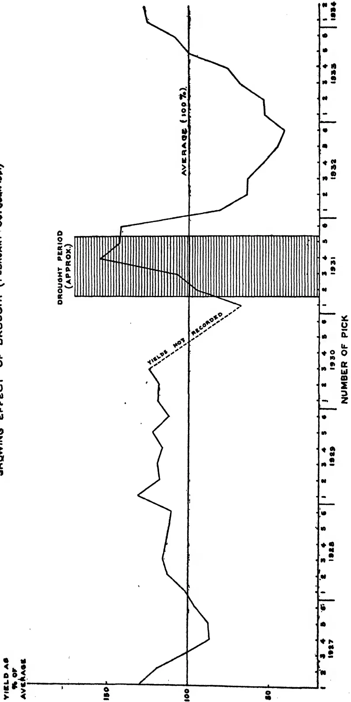
The graph illustrates the annual coconut yields relative to a 1931 average. The y-axis represents the yield as a percentage of the average, ranging from 50% to 150%. The x-axis shows the number of picks (1-6) for each year from 1927 to 1934. A horizontal line at 100% marks the average yield. A shaded region from 1931 (picks 1-6) indicates the drought period. A dashed line for 1930 and 1931 indicates that yields were not recorded during that period.
| Year | Pick | Yield (% of Average) |
|---|---|---|
| 1927 | 1 | 100 |
| 1927 | 2 | 110 |
| 1927 | 3 | 115 |
| 1927 | 4 | 120 |
| 1927 | 5 | 125 |
| 1927 | 6 | 130 |
| 1928 | 1 | 110 |
| 1928 | 2 | 115 |
| 1928 | 3 | 120 |
| 1928 | 4 | 125 |
| 1928 | 5 | 130 |
| 1928 | 6 | 135 |
| 1929 | 1 | 110 |
| 1929 | 2 | 115 |
| 1929 | 3 | 120 |
| 1929 | 4 | 125 |
| 1929 | 5 | 130 |
| 1929 | 6 | 135 |
| 1930 | 1 | Not Recorded |
| 1930 | 2 | Not Recorded |
| 1930 | 3 | Not Recorded |
| 1930 | 4 | Not Recorded |
| 1930 | 5 | Not Recorded |
| 1930 | 6 | Not Recorded |
| 1931 | 1 | Not Recorded |
| 1931 | 2 | Not Recorded |
| 1931 | 3 | Not Recorded |
| 1931 | 4 | Not Recorded |
| 1931 | 5 | Not Recorded |
| 1931 | 6 | Not Recorded |
| 1932 | 1 | 110 |
| 1932 | 2 | 115 |
| 1932 | 3 | 120 |
| 1932 | 4 | 125 |
| 1932 | 5 | 130 |
| 1932 | 6 | 135 |
| 1933 | 1 | 110 |
| 1933 | 2 | 115 |
| 1933 | 3 | 120 |
| 1933 | 4 | 125 |
| 1933 | 5 | 130 |
| 1933 | 6 | 135 |
| 1934 | 1 | 110 |
| 1934 | 2 | 115 |
| 1934 | 3 | 120 |
| 1934 | 4 | 125 |
| 1934 | 5 | 130 |
| 1934 | 6 | 135 |
| 1st pick | 2nd | 3rd | 4th | 5th | 6th | Total | |
|---|---|---|---|---|---|---|---|
| 1927 | 65045 | 63417 | 55662 | 45424 | 42904 | 38721 | 311173 |
| 1928 | 40671 | 49229 | 58735 | 51590 | 43996 | 42174 | 286395 |
| 1929 | 47607 | 49596 | 52264 | 59567 | 51230 | 45022 | 305286 |
| 1930 | 43102 | 49973 | 56969 | — | — | — | 150044 |
| 1931 | 17250 | 40224 | 55264 | 82600 | 64724 | 55100 | 315162 |
| 1932 | 26215 | 23780 | 24600 | 22016 | 12790 | 9500 | 118901 |
| 1933 | 13000 | 17019 | 29139 | 39190 | 42794 | 47088 | 188230 |
| 1934 | 49014 | 58253 | — | — | — | — | 107267 |
Total acreage = 370 acres (approx.)
It has been pointed out by many observers that the yield of coconut palms varies with the time of the year. In comparing yields it was considered advisable to endeavour to eliminate this seasonal variation by expressing the yield at each pick as a percentage of the average for that pick during the period for which figures are available. In the Plate therefore, the curve represents the total yields of the seven estates for the period 1927 to 1934 expressed as a percentage of the average for each pick. The average (100%) is represented by the straight line.
The yield curve is interesting. From the beginning of 1927 until the end of 1929 the fluctuations are not great. The drop in the yield which reached its minimum at the fourth pick of 1927 may have been the result of adverse weather conditions prevailing in 1926, but was not so great as to exceed the variations to be expected from year to year. After the beginning of 1931 the changes in yield are much greater. The yield for the first pick in 1931 was only 70 per cent. of the average but this low figure is inexplicable owing to the absence of figures for the three previous picks. It may, however, be a reflection of administrative factors. After this, the yield rose sharply until at the fourth pick of 1931 (i.e. for June-July) the yield was more than 150 per cent. of the average for that pick. The yield dropped slightly until the end of the year. The first pick in 1932 showed a sharp drop in yield and this drop continued, becoming less marked at each pick, until the sixth pick (October-November) of 1932 when the yield was only 30 per cent. of the average. Subsequently the yield rose, at first slowly but later more rapidly, reaching the normal yield at the end of 1933.
147The size of nuts collected in coconut estates is reflected in the number of nuts which are required to make one candy (560 lb.) of copra. It is unfortunate that figures of out-turn of copra are not available for the group of estates under discussion prior to 1931. The figures of the number of nuts required to make one candy of copra for the period 1931 to 1933 are given in Table 4 below:
TABLE 4
Number of nuts per candy of copra
| 1931 | 1932 | 1933 | |
|---|---|---|---|
| 1st Crop (Dec.-Jan.) | 1120 | 1417 | 1228 |
| 2nd ,, (Feb.-Mar.) | 1095 | 1720 | 1203 |
| 3rd ,, (Apr.-May) | 1198 | 1646 | 1186 |
| 4th ,, (Jun.-Jul.) | 1201 | 1375 | 1118 |
| 5th ,, (Aug.-Sept.) | 1186 | 1149 | 1121 |
| 6th ,, (Oct.-Nov.) | 1276 | 1221 | 1154 |
In Plate II the figures have been plotted as a curve and, in order to express the relative sizes of nuts, the reciprocals of the figures have also been plotted. The curves indicate that from the fifth pick in 1931 (August-September) the size of nuts decreased progressively until it reached a minimum at the second pick (February-March) of 1932. Thereafter the size increased until it regained the normal at the fifth pick (August-September) of 1932.
The yield curve for the period from the end of 1931 until the end of 1933 assumes the form of a parabola the lowest point of which is at the last pick (October-November) of 1933. If it can be assumed — and the assumption appears to be justified — that this regular falling-off in yield and the subsequent recovery were due to the prolonged drought experienced in 1931, the curve indicates with unusual clarity the effect of drought on the yield of coconuts.
Following the incidence of the drought, there was a sharp rise in the yield of nuts. The size of the nuts did not change greatly until the drought was nearing its completion when a marked decrease set in. The cause of the initial rise in yield is
148not altogether clear since the figures for the previous crops are not available. The yield for the first pick in 1931 was low and the subsequent rise may have been in part due to administrative changes, as has been suggested above. It is unlikely, however, that this factor was responsible for the whole of the increase shown and it is probable that the drought was in part, at least, responsible. A noticeable feature of the effects of severe drought as observed at the time was the number of nuts which fell from the trees. Some of these nuts were mature but there were many in different stages of immaturity. All nuts which were sufficiently mature were used for copra manufacture and it is suggested that the increased yield during the drought may have been in part due to the inclusion of such immature nuts. On the other hand, however, the figures for the out-turn of copra indicate that the amount of copra per nut did not decrease markedly until the end of the period of drought. The figures are not sufficiently complete for the cause of the rise during the drought period to be completely elucidated.
The period of drought terminated in October, 1931. The pick completed in November was still above average (142 per cent. of the average for that pick) although the out-turn of copra was poorer and indicated that the amount of flesh per nut had decreased. Subsequently the yield fell progressively until at the pick in November, 1932 the yield was only 30 per cent. of the average for that pick. The maximum effect of the drought as expressed in yield of nuts was therefore realized thirteen months after the conclusion of the drought. The length of this period is significant. Sampson (1923) states that "the nut takes a full year to ripen from the time the flowering branch opens" (p. 38) and Copeland (1921) states that "the nuts are ready to harvest when thirteen months old," which, from the context, appears to mean from the time of the opening of the spathe (pp. 19-20). That the minimum yield occurred thirteen months after the conclusion of the drought indicates that the spathes which opened when the drought was at its height, just before the weather changed, were affected more by drought conditions than the flowering and fruiting branches in other stages of development. The opening spathes were observed to be wilted at the time of the drought and it appears that many of the wilted spathes did not recover sufficiently in the subsequent wet weather to produce nuts. Moreover, the direct effect of
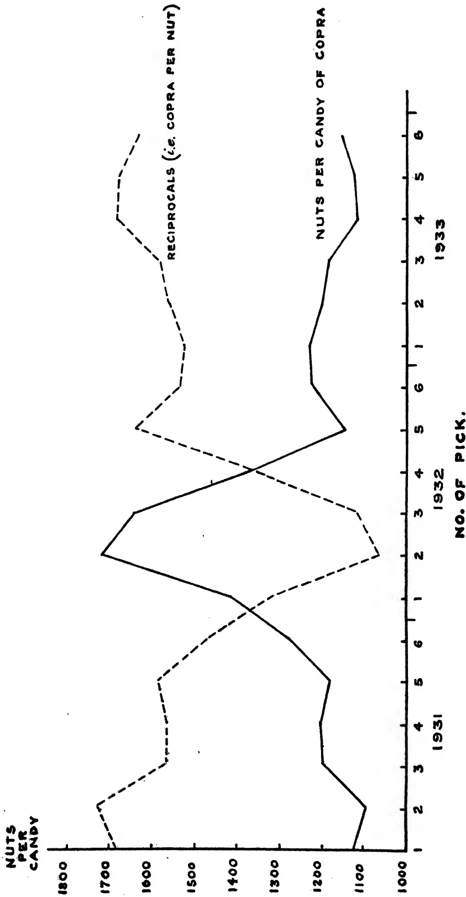
Y-axis: NUTS PER CANDY (1000 to 1800)
X-axis: NO. OF PICK. (1 to 6) for the years 1931, 1932, and 1933.
Legend:
| Year | Pick | Nuts per Candy of Copra (Solid) | Reciprocals (Dashed) |
|---|---|---|---|
| 1931 | 2 | 1100 | 1700 |
| 3 | 1150 | 1600 | |
| 4 | 1200 | 1550 | |
| 5 | 1250 | 1500 | |
| 6 | 1300 | 1450 | |
| 1 | 1350 | 1400 | |
| 1932 | 2 | 1400 | 1300 |
| 3 | 1450 | 1250 | |
| 4 | 1500 | 1200 | |
| 5 | 1550 | 1150 | |
| 6 | 1600 | 1100 | |
| 1 | 1650 | 1050 | |
| 1933 | 2 | 1700 | 1000 |
| 3 | 1750 | 950 | |
| 4 | 1800 | 900 | |
| 5 | 1850 | 850 | |
| 6 | 1900 | 800 | |
| 1 | 1950 | 750 |
Effect of Drought on Out-turn of Copra
149drought on the palms and the shortage of water would be felt most severely by the flowering branches in that stage of development.
The relatively rapid recovery of yield after the minimum had been reached shows that the flowering branches or spathes were progressively less affected in the earlier stages of development. The full crop was not again produced until two years after the conclusion of the drought. This period is greater than is generally assumed but the extreme severity of the drought in this instance effected a setback to the growth and development of the palms of a much greater extent than would be caused in normal weather fluctuations. The effect of more normal fluctuations in rainfall has been determined by Joachim (1929) who showed that there is a close correlation between the total rainfall in one year and the crop in the next. It is obvious from the figures given above that when the fluctuation is extreme, at least when the palms are subjected to drought as severe as the drought of 1931, the effect may be more prolonged.
Although the yield of nuts was affected for two years by the drought, the size of nut as indicated by the out-turn of copra was not affected for nearly so long. The effect of the drought on the out-turn of copra is indicated in the Plate. The number of nuts required to make one candy of copra rose sharply in November, 1931 and continued to rise until the second pick (February-March) in 1932. It subsequently fell again and reached the normal by September 1932, the total period of variation from the normal being about one year, with a maximum effect about six months after the end of the drought. At the period of maximum effect the number of nuts required to make one candy of copra was about 50 per cent. more than the normal, so that the production of copra per nut was only two-thirds of the normal. The cause of this would appear to be the setback to the metabolic processes of the tree caused by the drought, in the loss of leaves through wilting and the death of roots.
From the above discussion, it is seen that the severe drought experienced in Puttalam in 1931 affected the yield of nuts for a period of about two years with a maximum effect at about thirteen months after the conclusion of the drought. The yield at this time was only about 30 per cent. of the average yield for seven
150years. During the drought itself there was a sharp rise in the yield which is thought to be partly due to the physiological shedding of nuts approaching maturity, such nuts increasing the crop collected. The effect on the amount of copra produced per nut was of shorter duration than the effect on the yield of nuts. The copra-per-nut production was decreased for a period of one year with a maximum effect approximately six months after the drought.
The writer wishes to express his gratitude to H. Ruegg, Esquire, for his courtesy in providing the figures on which these notes are based.
COPÉLAND, E. B. (1921)—The Coconut.—Macmillan & Co., Ltd.
SAMPSON, H. C. (1923)—The Coconut Palm.—John Bale, Sons & Danielsson Ltd., London.
JOACHIM, A. W. R. (1929)—Chilaw Coconut Trials.—The Tropical Agriculturist, Vol. LXXIII, p. 222.
JAMESON, H. (1932)—Report on the Colombo Observatory for 1931.—Ceylon Government Press.
PARK, MALCOLM (1932)—The effects of drought on coconuts at Puttalam.—The Tropical Agriculturist, Vol. LXXVIII, p. 11.
151J. C. HAIGH, PH. D.,
(ECONOMIC BOTANIST)
AND
A. W. R. JOACHIM, PH. D.,
(AGRICULTURAL CHEMIST)
DEPARTMENT OF AGRICULTURE, CEYLON
IN the first paper of this series (1) it was stated (p. 4) that the experiment about to be described was started during Maha 1932-33 and continued during Yala 1933. Unfortunately in May 1933 there was a major flood of the Mahaweliganga which completely flooded the paddy area for seven days, and the Yala crop was totally destroyed. There will therefore be no record of residual effects, but the immediate effects are of sufficient interest to warrant publication.
The experiment was carried out as stated. The treatments were transplanting, broadcasting and thinning, and broadcasting in each case with and without the application of a dressing of ammonium phosphate at the rate of cwt. per acre. The manure was applied immediately before transplanting to the transplanted plots and immediately before sowing to the remaining plots. The trials were carried out in 1/100 acre plots with borders, (over-all area 1/80 acre) randomised and replicated five times. There were thus fifteen effective replications of manuring versus no manuring, and ten of the various systems of planting. Crop and soil samples were taken as in the previous experiment.
The results of the experiment are found in Table I. They show that transplanting plus manuring is significantly better than either of the other systems of planting, with or without manure and that transplanting alone is superior to the other two systems. The addition of manure to the broadcast and thinned plots has produced a significant increase in yield, but the increase just fails to be significant in the transplanted and broadcast plots (the increases are 22.1 lb. and 23.3 lb. respectively, whereas an increase of 25.5 lb. is necessary for significance).
152In Table II the significant increases due to treatment have been split up so as to indicate the parts played by each constituent treatment, and the interaction between them. The lower half of the table indicates clearly the almost entire absence of interaction, and shows that transplanting and manuring produce totally independent results in increasing yield; we can therefore say that the effect produced by either of these treatments may be expected whether the other is practised or not. The upper half of Table II shows that both treatments give significant results; the increase consequent upon the application of manure is definitely significant, and transplanting is superior to either of the other two treatments, but thinning a broadcast plot does not produce a significant increase.
Costs have been kept of all cultural operations, and indicate relative costs of 151 per cent. for transplanting and 115.7 per cent. for broadcasting and thinning against the 100 per cent. of broadcasting. The yields from the treatments are respectively 155.3 per cent., 112 per cent., and 100 per cent., and it has been calculated that at present wage rates and with paddy at Rs. 1.50 a bushel, the increased cost of the cultural operations has been recovered in paddy at harvest. It should be remembered however, that we are dealing with very small plots, on which all costs are proportionately magnified, and further that the degree of magnification is directly proportional to the amount of work done. Thus, the transplanted plots receive the most attention, and the cost of transplanting is therefore most highly exaggerated. Some idea of the amount of exaggeration will be realised from a comparison of the cost figures quoted in the Annual Report of the Economic Botanist for 1932 (2) with the figures obtained in this experiment. In the report it is calculated that at Peradeniya the cultivation of one acre (in one block) of a six month crop of broadcast paddy cost Rs. 61.06, men being paid at 60 cents per day and women at 40 cents. In the present experiment the cultivation of one acre (in plots of 1/100 acre each) is estimated at Rs. 74.17, men being paid at 40 cents and women at 35 cents or at Rs. 89.67 if the former rates of pay are used in the calculations. Thus the splitting up of one acre into 1/100 acre plots has increased the cost of cultivation by nearly 47 per cent. It is obvious that the greater part of this increase is used in the actual sub-division of the plots by bunds, and that only a small part is a result of the fact that small scale operations
153are more expensive than large scale ones. Nevertheless, in the experiment under discussion, the transplanted plots have no more bunds than the broadcast ones, and the increased cost is due solely to the cost of those operations connected with transplanting. It may be asserted with confidence, therefore, that since in the present experiment the increase obtained as a result of transplanting has covered the cost of the operations, the increase to be obtained on larger plots will be economically significant. This assertion is borne out by the results of Lord's experiments (8).
The chemical data are presented in detail in Paper IV of this series and it will be sufficient here to indicate the general conclusions to be drawn from a simultaneous study of those data and of the yield figures. The most significant conclusion is provided by the rate of absorption of the fertilising constituents. The higher the final yield, the lower is the percentage of nitrogen and phosphoric acid that has been absorbed at flowering time. Thus the transplanted crop, which gave the highest yield, have absorbed at flowering only about 50 per cent. of the nitrogen and phosphoric acid found in the crops at harvest. The corresponding figures for the unmanured broadcast plots, which gave the lowest yield, are approximately 88 per cent. in each case, whilst the other treatments show intermediate figures which correspond in reverse ratio to their place in the yield table. It would appear that the unmanured broadcast and thinned crops cease to absorb fertilisers shortly after flowering whereas the transplanted crops continue to absorb steadily till harvest. The application of manure appears however to enable a broadcast crop to lengthen its essential fertiliser absorption period, and consequently to produce higher yields. Thus the unmanured thinned crop shows at flowering absorption percentages of 74 and 84 for nitrogen and phosphoric acid respectively, while the corresponding figures for the manured crop are 56 and 54. A further point of interest observed is that manuring hastens the flowering and maturity of the broadcast crops. The immediate conclusion is that root development is so affected by transplanting and manuring that it becomes a limiting factor of yield, and the next stage in the enquiry will be an investigation into the root development of the paddy plant at intervals during the growth of a crop subjected to the treatments used in this experiment.
154It will be noted that the figure of 50 per cent. for the transplanted crops agrees with that obtained in the previous investigation (see Paper I of the series) when all plots were transplanted; further, that whereas our figures agree with those of some other workers, they do not agree with all. The divergences are mainly due to other workers' plots being sometimes broadcast and sometimes transplanted.
The percentage absorption figures for potash and lime are higher than in the previous investigation, but similar differences in rates of absorption are noted.
The relative amounts of constituents present in different parts of the crop at harvest are similar to those found previously and do not vary appreciably with treatment. The grain from the transplanted and the thinned and manured crops has a slightly larger proportion of the total phosphoric acid than that from the broadcast and the thinned plots.
The amounts of total constituents removed in the differently treated crops are given below:
| Lb. per acre | ||||||||||||
|---|---|---|---|---|---|---|---|---|---|---|---|---|
| Unmanured | Manured | Average | ||||||||||
| Nitrogen | Phosphoric acid | Potash | Lime | Nitrogen | Phosphoric acid | Potash | Lime | Nitrogen | Phosphoric acid | Potash | Lime | |
| Broadcast | 20.7 | 8.5 | 29.6 | 11.1 | 25.4 | 11.3 | 30.0 | 12.3 | 23.0 | 9.8 | 29.8 | 11.7 |
| Broadcast and thinned | 22.6 | 10.6 | 42.8 | 14.8 | 27.9 | 14.1 | 34.4 | 14.7 | 25.2 | 12.3 | 38.6 | 14.8 |
| Transplanted | 28.3 | 13.8 | 34.8 | 13.0 | 34.8 | 17.9 | 36.9 | 14.5 | 31.6 | 15.9 | 35.9 | 13.7 |
| Average | 23.9 | 11.0 | 35.7 | 13.0 | 29.3 | 14.4 | 33.8 | 13.8 | ||||
The table bears out the relative efficacies of the treatments in relation to fertiliser intake and crop yield. The amounts of fertiliser removed do not vary appreciably with those of the last Maha crop.
The figures for percentage absorption of manurial constituents applied are rather lower than in the previous investigation, but the trend is the same. The transplanted crop has assimilated about 70 per cent. of the added nitrogen and only 11 per cent. of the phosphoric acid; the corresponding figures for the broadcast crop are 50 per cent. and 8 per cent.
155The soil data indicate that the addition of fertiliser increases appreciably the reserve of available ammonia in the soil and that this increase is generally maintained during the whole period of growth. There does not appear to be any relationship between the decrease in available soil ammonia and the intake of nitrogen by the crop.
TABLE I
PERADENIYA PADDY STATION
Season Maha 1932-33
Yields in pounds per plot of acre and bushels per acre
| Treatment | Replications | Treatment Totals | Mean | Per cent. of mean | Bushels per acre | ||||
|---|---|---|---|---|---|---|---|---|---|
| a | b | c | d | e | |||||
| Transplanted and manured | 33.3 | 23.0 | 19.5 | 30.0 | 22.2 | 127.9 | 25.6 | 139.0 | 56.9 |
| Transplanted | 25.9 | 19.9 | 17.2 | 21.7 | 21.1 | 105.8 | 21.2 | 115.1 | 47.1 |
| Broadcast & thinned & manured | 25.7 | 18.0 | 18.5 | 17.5 | 18.6 | 98.3 | 19.7 | 107.0 | 43.8 |
| Broadcast and manured | 14.5 | 19.5 | 17.5 | 17.9 | 17.5 | 86.9 | 17.4 | 94.5 | 38.7 |
| Broadcast and thinned | 15.5 | 15.3 | 14.3 | 16.6 | 8.6 | 70.3 | 14.1 | 76.6 | 31.3 |
| Broadcast | 8.2 | 10.7 | 12.0 | 13.0 | 19.7 | 63.6 | 12.7 | 69.0 | 24.9 |
| Block Totals | 123.1 | 106.4 | 99.0 | 116.7 | 107.7 | 552.8 | 18.4 | ||
Standard Deviation of 5 plots = 8.5 lb.
Analysis of Variance
| Due to | Degrees of Freedom | Sum of Squares | Mean Square | Standard Deviation | loge Standard Deviation | Standard Error of the Difference of Means |
|---|---|---|---|---|---|---|
| Blocks | 4 | 58.5953 | ||||
| Treatments | 5 | 564.4586 | 112.8917 | 10.62 | 2.3628 | |
| Experimental Error | 20 | 287.3046 | 14.365 | 3.79 | 1.3324 | 13% |
| Total | 29 | 910.3585 |
1% point , , ; is significant
157TABLE II
ANALYSIS OF EFFECT OF TREATMENT
| Manured | Unmanured | Total | |
|---|---|---|---|
| Transplanted | 127.9 | 105.8 | 233.7 |
| Broadcast and thinned | 98.3 | 70.3 | 168.6 |
| Broadcast | 86.9 | 63.6 | 150.5 |
| Total | 313.1 | 239.7 | 552.8 |
Standard Deviation of 10 plots = 11.99 lb.; of 15 plots = 14.68 lb.
| Effect due to | Degrees of Freedom | Sum of Squares | Mean Square | Standard Deviation | Standard Deviation | |
|---|---|---|---|---|---|---|
| System | 2 | 382.9286 | 191.4643 | 13.84 | 2.6277 | |
| Manure | 1 | 179.5853 | 179.5853 | 13.40 | 2.5953 | |
| Interaction | 2 | 1.9446 | 0.9723 | |||
| Error | 20 | 287.3046 | 14.365 | 3.791 | 1.3324 |
1% point ; ;
both treatments significant
ALTHOUGH in recent years many people in this Island have come to realize the value of the forests in Cyprus, yet it is possible that many may be interested to learn further details as to the extent and the directions in which the beneficial influence of forests is exerted. A knowledge of the scientific reasons controlling these influences, over and above the generalities of popular belief is essential if the value and importance of forests, especially in the dry countries of the Mediterranean region, are to be thoroughly appreciated. That forests can influence both climate and water supply is generally recognized; few, however, are aware of the reasons governing this relationship.
For many years foresters and scientists have given these questions exhaustive study, and results from several countries have been correlated. The work of Ebermaier in Germany and Mathieu in France has brought conclusive evidence of the effect of forests on air temperatures for instance. They have demonstrated that yearly mean temperatures are lower in forested areas than in similar areas in agricultural regions, and that month by month this difference is much more marked in summer than in winter. Further experiments in France with the aid of observation balloons have extended the field of research to elevations reaching 5,000 feet above ground level, and have shown that the influence of forests in lowering the temperature, and at the same time in increasing the humidity of the air, is reflected even at these considerable heights.
The differences of temperature are limited to a few degrees only, but it is on air humidity that the reduction of temperature, even though so slight, has its most important effect. That warm air is capable of carrying more moisture than cold is one of the elementary teachings of physical chemistry, and from this we may deduce that the cooling effects of forests tend to reduce the moisture capacity of the air. Consider for example the case of a warm wind passing over bare open country to a region of forests; the natural effect is that the air becomes cooled and is compelled to yield up some of its moisture, with the result that the lower air stratas become damper with conglomerating particles of moisture; clouds may form on even rainfall, depending on the degree of saturation of the incoming air. The action is analogous to the condensation of human breath on the cold surface of a mirror. Mountains, of course, exercise the same effect to a much more marked degree, as can be seen here in Cyprus. The general
* By G. W. Chapman, Assistant Conservator of Forests in The Cyprus Agricultural Journal, Vol. XXIX, Part 2, June, 1934.
159effect, however, of forests on climate through air temperatures is not so much as a direct factor, but rather as a contributory influence on the circumstances leading to atmospheric precipitation.
While, therefore, we cannot admit that forests directly "create" rain, in hilly regions they certainly assist in increasing precipitation by the purely physical action of the branches and leaves in retarding the passage of clouds and by exposing much greater surfaces for condensation of cloud moisture. Statistics, collected by Dr. Faber in Germany, have demonstrated that the tree-clad mountain attracts more rain than another devoid of forest growth. Moreover in seasons where rainfall is naturally scanty the shade afforded by the forest canopy and by the leaf litter on the ground beneath shields the soil from the direct rays of the sun, thereby reducing radiation and evaporation, and the consequent drying out of the soil.
The forest cover may be likened to a blanket, for just as a blanket soaked in water can hold in its tissues far more than other thinner materials, so does the forest absorb and retain more moisture than any other form of vegetation. This brings us to the consideration of forests in their relation to water supply, a consideration of great practical importance in a dry country such as Cyprus, where water is a controlling factor in the development of its agriculture.
In mountainous and hilly countries the supply of water in streams and rivers is derived partly from springs and partly from surface drainage after rain. Of the two sources, the latter is less beneficial from the point of view of an agricultural community than the former, since the supply is of a temporary nature dependent entirely on the rainfall. If this should be seasonal such as is the case in Cyprus, the natural result is that the rivers themselves become seasonal, unless the supply can be maintained by spring flow. By checking surface "run off" and increasing the water retaining capacity of the soil, forests tend to raise the volume of spring flow at the expense of surface drainage, for the leafy canopy first breaks the fall of the rain, which is then absorbed by the spongy organic substances in the leaf litter and in the soil. Thence by a process of gradual seepage and underground drainage this soil water gathers in volume and emerges eventually as a spring. Direct proof of the influence of forests on spring flow are forthcoming from many parts of the world, though the classical example is the Bhopa mountain in Burma, an isolated peak rising from the central plain, and at one time densely covered in forest. All the forests were cleared and then it was discovered that the springs were beginning to dry out; their flow was only restored after the mountain had been reafforested.
Surface drainage water is not only less useful for general agricultural purposes, but often causes real harm by flooding, eroding gullies and washing away the soil. In Cyprus we have evidence on all side of the erosive action of such winter torrents. That forests do provide a safeguard against this form of destruction has been demonstrated scientifically in various countries, but the work of Dr. Engler in Switzerland is probably the most widely known. This famous forester selected two
160neighbouring and closely similar valleys in the Immenthal district, one of which was densely forested and the other but lightly wooded. In these he kept careful meteorological records and measurements of stream flow over a period of nearly twenty years. The general results of his observations established definitely that the streams in the well-wooded valley had a greater and more constant flow during summer, while the "run off" after rain was 50 per cent. less than in the other valley. The degree of erosion determined by examination of the material carried down by the streams in each of the two valleys, was shown to be much greater in the poorly-wooded valley. Another instance nearer to hand is the fire which burned a considerable area of Troödos Forest, near Kakopetria, in the summer of 1932. The stream which has its source in the burned area was previously insignificant, but in the following winter, the rain water being no longer held back by the forest caused this small stream to descend in a powerful torrent flooding the fields and vineyards adjacent to the forest, strewing them with boulders and debris and causing considerable damage. This is but a small example of the processes at work regularly elsewhere, where former forests have been destroyed leaving the hills naked except for a few bushes and scattered shrubs powerless either to check the force of surface drainage or to retain sufficient water in the soil for the maintenance of the springs.
The forest has been likened to a blanket and the simile can be extended to embrace the action of forests in their relation to water supply. Let us for example compare the case of a well-wooded hill and a bare hill to two small rocks, the one covered by a blanket and the other left bare. If a pail of water be thrown over each, what is likely to be the result? From the bare rock the water will cascade off rapidly and after a short time in the sunshine no trace of the water will remain. But on the other rock, most of the water is absorbed by the blanket (which represents the forest), from which it issues slowly in small trickles, this rock remaining moist long after the other has become dry.
In Cyprus the blanket of our forests has become sadly frayed and worn, following centuries of abuse and wasteful handling. Time, money and scientific management are required for their recovery, but above all protection must be secured against the agencies which are even yet most active in their destruction. A wide-spread interest in, and appreciation of, the value of forests to Cyprus by all classes of the people, together with an understanding of the difficulties and the problem involved, must be the first and greatest achievement in the task of restoration.
161THE use of ethylene gas () as a means of forcing the development of color in citrus fruits was patented by Dr. F. E. Denny, of the United States Department of Agriculture, in 1923. Several gases that will bring about artificial coloring were known at that time, but ethylene is the safest and most practical of those discovered. Denny and his co-workers have preferred not to use the term "ripening" in describing the effects produced.
Studies on the effect of ethylene on various fruits and vegetables at the Minnesota Agricultural Experiment Station in 1924 gave positive results, especially with celery and tomatoes. The application of ethylene in the blanching of celery was a commercial success. By taste and by chemical analysis ethylene treated celery was found to be higher in sugar than the untreated celery. It was also found that tomatoes treated with ethylene were sweeter than the untreated ones.
Subsequent investigators of the U.S. Bureau of Chemistry and Soils reported that there is no decided change in the composition of the edible portion of citrus brought about by the ethylene method of coloring. The sugar and acid contents of the fruits were practically the same. No pronounced difference was noticed between the treated and untreated oranges except in colour. With some fruits, however, like persimmons, they concluded that the color was enhanced and the astringency lessened or destroyed.
Experiments on the use of ethylene on other fruits were equally successful. Pears for canning are picked when hard and green and stored in cellars or in cold storage. The fruit softens and colors unevenly, and it becomes necessary to sort it several times in order to obtain materials suitable for canning. The ethylene treatment of pears showed that the fruits were softened considerably after four days. Untreated pears required from ten to fourteen days to soften and 18.2 lb. pressure to puncture the flesh of the pears, while the treated fruit required 5.5 lb. The treatment of apricots and peaches did not seem to give satisfactory results. These fruits soften quickly after harvesting and contain no starch which could be converted into sugar.
Ethylene is a colorless gas of faint, pleasant odor with a boiling point of - 103°C., and specific gravity 0.97. The gas accelerates the only coloring
* By F. T. Adriano, A. Valenzuela, E. C. Yonzon, and C. G. Ramos of the Bureau of Plant Industry, Manila. Extracted from The Philippine Journal of Agriculture, Vol. 5, No. 2, Second Quarter, 1934.
162and ripening processes of fruits and vegetables. Its use not only shortens the time of ripening but also lowers the acidity of early apples, plums, and pineapples. It also eliminates packing house and shipping losses due to rot, fungus growths and uneven ripening.
Ethylene can be procured in cylinders under a pressure of 1,200 lb. per square inch. It is inflammable and forms explosive mixtures with air when mixed with it in the proportions between 3 and 20 per cent. There is, however, little danger of inflammability when the maximum concentration used for coloring is not over 1 part of the gas in 1,000 parts of air. The gas has no effect on animal life at this dilution. The cylinders should be handled with care, and should not be exposed to unusually high degrees of heat. No light or fire should be allowed in the room where the containing cylinder and measuring apparatus are kept, especially during the treating process. Measuring gauges accompany a cylinder of the gas in order to measure the dosage of the injected gas, when delivered under such high pressure. In the absence of compressed gas, ethylene can be prepared in the laboratory by heating alcohol with concentrated sulphuric acid to 170°C. and passing the gas through concentrated sulphuric acid and sodium hydroxide to remove impurities such as sulphur dioxide, alcohol, and ether.
It is the purpose of these experiments to find out the effect and utility of ethylene treatment on Philippine fruits. Native oranges, principally the Batangas mandarin, are usually still green in colour when picked and sold in the markets. No treatment is given the fruits except the grading for size and curing by storage in underground cellars. Although they are sweet after curing the fruits remain green in color. If the green color of the native oranges can be transformed into a uniform bright yellow by ethylene treatment, the attractiveness and the market cost will be increased. There are other fruits besides the citrus, such as mangoes, avocados, lanzones, etc., that may commercially be treated to advantage with ethylene. In addition to ethylene treatment, other processes of handling fruits such as the borax and paraffin treatments which are as yet unknown here but which are regular commercial operations in fruit districts of many foreign lands which if properly studied and applied to our fruits may produce profitable results. A 4 to 5 per cent. borax solution is used in commercial packing houses for dipping the fruits to prevent mold wastage. The fruits are then dried and polished with paraffin with the aid of mechanical brushes.
The fruits studied include the following :
Practically all fruits studied were harvested from the Bureau of Plant Industry's experimental and propagation farms.
163Cylinder of ethylene gas at 1,200 lb. pressure.
Measuring gauge.
Pyrex distilling flask.
Air pump.
Wash bottles.
Burners.
Ethylene chambers.
(a) One of 101 cubic feet capacity
(b) One of 5 cubic feet capacity.
(c) Tanauan ethylene chamber of 537 cubic feet capacity.
Alcohol, 95 per cent.
Sulphuric acid.
Sodium hydroxide.
Borax.
Paraffin wax.
The fruits are arranged carefully in racks inside the ethylene chamber, the door shut tight, and ethylene injected into the chamber in concentrations of 1:1000 and 1:5000. The injection of the gas is done once every 24 hours. Every day thereafter until the treatment is completed, the chamber is aerated for about two hours before the gas is injected again. The ethylene treatment is continued until the fruits are fully colored and soft.
Ethylene is obtained from a cylindrical tank under 2,000 pounds pressure, and measured by passing through a gauge calibrated in cubic feet per minute. The time of injecting the gas into the larger box is not over one minute as its capacity is only 101 cubic feet. For the smaller chamber the period of injection is correspondingly decreased.
In other experiments, ethylene is generated by heating the calculated amounts of ethyl alcohol and concentrated sulphuric acid in a distilling flask at 170°C. The gas is purified by passing it through concentrated sulphuric acid and sodium hydroxide solutions. To drive all the gas generated into the chamber an ordinary foot blower connected to the distilling flask is used.
At the Tanauan Citrus Experiment Station, Tanauan, Batangas, the handling of citrus fruits on a bigger scale was started January 18, 1933. The volume of the ethylene chamber built for the ethylene treatment of citrus fruits was 537 cubic feet. It was 151 inches long, 88 inches high, and 75 inches by 65 inches wide on opposite sides. Batangas mandarin and Szinkom oranges were picked on the same day and loaded into the ethylene chamber.
164The first charge of ethylene gas was applied at 4.30 p.m. January 18 by heating a calculated mixture of 7.5 cc. of 95 per cent. alcohol and 7cc. of concentrated sulphuric acid enough to produce ethylene gas in the proportion of 1 part of gas to 5,000 parts of air. The gas was passed for thirty minutes into the chamber that has been shut tight to prevent leaks.
The next day, January 19, the chamber was opened at 7.30 a.m. and aerated for two hours by blowing cold air into it by means of a blower connected to a small gasoline engine. Gas was applied at 9.30 a.m. and continued until 10.30 a.m. Gas was injected at 4.30 to 5.00 p.m. on the afternoon of the same day.
The chamber was opened at 7.40 a.m. January 20. A pronounced change in color of the fruits from green to yellow was noticed on the second day of treatment. After aerating for two hours the chamber was closed and gas admitted again for one hour. The chamber was not opened again until the next day, January 21, at 7.40 a.m. On the third day, 90 per cent. of both varieties of oranges were fully colored. The flavor of the Szinkom oranges was somewhat sweeter after the treatment. The fully colored fruits were removed from the chamber and soaked in a 3 per cent. borax solution at about 40°C. for two to three minutes, and allowed to dry on a table at room temperature.
The remaining fruits which were still greenish were treated again with ethylene gas on the afternoon of January 21. The next day, January 22, some of the Szinkom oranges showed signs of burn from the effects of the ethylene gas.
After removing the citrus fruits from the ethylene chamber, the fruits were soaked in a 4 to 5 per cent. borax solution at 46° to 49°C. for several minutes. This temperature aids materially in cleansing the fruit and at the same time helps in preventing rots such as pythiacystis or brown rots. The fruits are then dried in a heated chamber for a short time. A hot-air heated chamber is best for the purpose. After drying, the fruits are treated with a solution of paraffin in a white, odorless, and tasteless mineral oil solvent. The paraffin reduces moisture loss and probably slows the rate of respiration. The fruits are then packed carefully in boxes or crates and pre-cooled in cold storage at 35°F.
165THE interest in forestry methods continues to increase as the ideas involved become better appreciated. Sound and conservative ideas of soil management come to the fore while hopes of sudden and phenomenal results recede. Plant specimens continually come in for identification and advice and, although there is often scant information to make this serviceable, in some cases it proves very useful in calling attention to special features. Thus we have received specimens of Eupatorium odoratum, which appears to have entered the country from Siam and to be spreading steadily. The most southerly point from which we have received it is central Perak. This plant appears attractive at first, its early growth being sappy but its later development is so vigorous that it becomes a dangerous pest in sufficiently open conditions.
The idea that special plants are to be feared because of their individual effects on the soil often crops up in advisory work, but seldom appears to be supported by the evidence. Thus soil samples were sent in by a manager who had become convinced from experience with Mikania scandens that it was making his soil more acid. Measurements showed that the soil from under Mikania was actually a little less acid than under Centrosema. Such slight differences in acidity as we have yet observed cannot be regarded as of importance under Malayan conditions.
Although interest in manuring for mature rubber naturally remains in the background for economic reasons, it is encouraging that some of the older experiments are still kept under observation. It is important to realise that results are far-reaching and take a long while to work themselves out. Thus we have the following figures for girth increase in an experiment over six years old, which has received no manure for three years; control plots 0.5 inch increase in five years, manured plots 3.1 inches. The bark renewal, as might be expected, showed much better on the manured plots. The advantage to be expected in future tapping history is very plain. What better expression of stagnation could be required than the fact that increase in girth on control plots was under one-hundredth of an inch per month.
In strong contrast with the slow results of manuring on mature rubber, most of the results with young rubber (where soil deficiencies exist) show very marked and quick response. In this connection it is important to note
* Extracted from the Annual Report, 1933, of the Rubber Research Institute, Malaya.
166how easily a cover crop can take away the fertiliser intended for the rubber. Thus in one case at the Experiment Station where an organic fertiliser was mixed with the soil in the planting holes, the increase in growth under clean-weeding conditions was 17 per cent. but under a well established cover this benefit was reduced to 4 per cent. by competition, in spite of the usual ring-weeding round the trees.
One of the chief causes of variation in growth and yield of the trees within a single clone is the nature of the stocks used in budding. The stocks are normal seedlings of mixed parentage and therefore exhibit the wide range in characters, in particular vigour of growth, characteristic of a normal seedling population. The vigour of the seedling root system is an important factor in determining the size of the scion and indirectly, the yield of the scion. Clonal stocks are used in fruit cultivation to overcome this difficulty and to ensure uniformity in growth and performance of the trees. Experiments have therefore been initiated with seedlings and buddings of a large number of different clones to explore the possibilities of producing stocks of a common origin which may be suitable for budding work. Layering and pollarding followed by earthing up to encourage root formation by bleaching (etiolation) has been carried out. Negative results have been obtained so far but the experiments are being continued.
In order to reach a proper understanding of the complex physiological processes concerned in the formation of latex it is essential to obtain a detailed knowledge of the structure of the tissues in which the latex is produced. Early studies of the structure of the latex vessels and their distribution only take us a part of the way; a more intimate knowledge is required not only of the latex vessels themselves but of the other important tissues with which the latex vessels are associated and from which they obtain the supplies of raw materials for the synthesis of latex. The studies described in this section are directed towards this end.
The sieve tube system constitutes the main channel for the transportation of elaborated food materials. It is in intimate anatomical contact with the latex vessel system in the bark and with the water-conducting vessels of the wood through the agency of innumerable radially disposed plates of tissue known as the medullary rays. It is desirable to appreciate the essential unity of this conducting system in relation to the problem of latex synthesis.
The sieve tubes were first studied in young bark of clonal material and were there observed to form a distinctive band or zone, encircling the wood and separated from it only by the thin line of the cambium. The radial width of the zone measured from 0.75 to 1.5 mm. The individual cells or tubes were of relatively enormous size closely aggregated between the medullary rays. Here then, was a highly developed translocatory
167system associated with high yield and the question at once arose whether the character was constant for all high-yielding trees, and absent or poorly developed in low yielders.
To obtain further light on the problem, the bark of budded trees of thirty established clones were examined and found to be in general agreement for this character although the intensity of development varied from clone to clone. The investigation was then extended to a block of five years old seedlings which had been test-tapped and recorded over a period of two years. Samples of bark were collected from 40 trees of consistently low-yielding record and 40 from the highest yielders. Here again the sieve tube structure of high yielders agreed in all respects with the clonal material, whereas in the low yielders, the sieve tubes were poorly developed throughout the whole series and in some cases could not be clearly identified. A survey of all available test-tapped material has been commenced and corroborative biochemical data will be sought for by direct physiological experiment. It would be premature to attempt to formulate any definite conclusion at the present stage of the investigation.
168THE Rio Tapajoz, a large affluent of the right bank of the Amazon, was ascended some 120 miles to Boa Vista or Fordlandia, the settlement on the Ford rubber concession, permission to visit which had been obtained from the General Manager in Para.
The concession, not yet properly surveyed, consists of approximately 4,000 square miles, still mostly under virgin forest with a considerable quantity of wild rubber (Hevea brasiliensis). The settlement was begun only five years ago, and the first year was practically wasted, the labour difficulties proving almost insuperable and the first manager unsuitable. 4,500 acres are now cleared of forest and planted in thriving rubber trees. This does not include the nurseries, which contain two and a half million seedlings. A leaf disease has been troublesome in some of the nurseries, but insect pests have given little trouble. Locusts are periodically a nuisance and locally leaf-cutting (coushie) ants defoliate a few trees. They are controlled by blowing Cyanogas into the nests. Occasionally two or even three applications are necessary.
The management was at first advised, by planters from the East, that shade would be necessary for the young plants. They thought also to plant something which would bring in revenue while the young rubber was growing. They therefore planted pigeon-peas, but found that the rubber in the shade of these bushes was spindling and retarded compared with that in the open. It was therefore decided to dispense entirely with shade and to give up also the hope of a catch-crop. The notion of planting Calceopogonium as a cover crop, to lessen the cost of weeding, was derived from Eastern practice. It succeeded beyond all hopes, and at present the whole area, save for a small circle round each tree, is covered with a dense, thick blanket of this legume.
Clearing of the forest was accomplished in the beginning by directly employed Brazilian labour, paid not by results but by time, a commodity not usually regarded as valuable in Brazil. This method proved altogether too expensive, and at present all clearing is done by contracts let to American and Brazilian Concessionaires. At the time of our first visit (1932) the company was buying all the lumber from these contractors, delivered at rail head by caterpillar tractors lent by the Company. The
* By J. G. Myers, D.Sc., F.E.S., F.Z.S., Imperial Institute of Entomology, and Imperial College of Tropical Agriculture. Extracted from The Agricultural Journal of British Guiana, Vol. V, No. 2, June, 1934, from an article on "Observations on a Journey from the Mouth of the Amazon to Mt. Roraima and down the Cattletrail to Georgetown."
169logs were carried to the settlement by the Company's railways and used for fuel and for timber. They were handled by the largest and most up-to-date saw-mill in South America. Great logs, four feet in diameter, were rolled off a railside pile, grappled into a conveyor, subjected to a furious stream of water to remove grit which might injure the saws, raised to the second floor of the mill, and thrown bodily but with careful adjustment, into the shrieking path of a great bandsaw, which cut them with astonishing speed, into large thick planks. These passed through a succession of other saws, all operated by previously untrained Brazilians, which finally reduced them to usable and standard sizes. The capacity of the mill was 25,000 board feet (1 sq. ft., 1 in. thick) per 8-hour day. There was provision, if necessary, for two shifts, to run 16 hours.
The kind of timber received at the mill varied with the area from which forest was being cleared. For the first six months of 1932 the chief timbers handled were as follows:
| Andiroba (Carapa Guyanensis) | ... | 12.44 | per cent. |
| (This is identical with Demerara "crabwood") | |||
| Para-para (Jacaranda capaea) | ... .. | 11.08 | , , |
| Castanheira (Bertholletia excelsa) | ... | 10.52 | , , |
| (This is the wood of the Brazil nut tree) | |||
| Muiracoatiara (Astronium Lecointei) | ... | 8.29 | , , |
| Cedro (Cedrela odorata) | |||
| (They have probably misdetermined this botanically | |||
| — It is more likely C. mexicana | ... | 7.42 | , , |
| Marupa (Simaruba amara) | ... .. | 7.35 | , , |
| Massaranduba (Mimusops Huberi) | ... | 7.06 | , , |
| (This is the common Amazonian representative of British Guiana balata). | |||
| Cumaru (Dipteryx odorata) (Tonka bean) | ... | 2.63 | , , |
| Guariuba (not yet identified) | ... .. | 2.53 | , , |
And many others in small quantities, making a total of 86 distinct species of timber trees received at the mill. In addition all those which had proved susceptible to borer of any kind were left in the forest to be burned or used as fuel in the settlement (the power house burns only wood).
Some of the timbers were seasoned in the open or under tarpaulins. Others went to the great kilns, the only ones in South America, where individual treatment, arrived at by considerable experimental work, was given to each. These kilns had a capacity of 100,000 to 125,000 board feet. Heat and humidity were very rigidly controlled and recorded by elaborate instruments, with dials arranged along a tunnel corridor beneath the whole series of kilns. 165,000 board feet of timber, cut to standard sizes, had up to that time been exported (in one experimental cargo) to find a market for the newer and less familiar kinds in the north. The bulk
170of the output was, however, so far used in the building of the model settlement. On my second visit in 1933 — a year later — I found lumbering operations had ceased, and the great mill closed down. The trial shipment had not travelled well, the timber had arrived in poor condition, and this combined with another factor — namely, the increasing distance of the clearings from headquarters, rendering the railway more and more expensive — had led to the abandonment of the whole timber enterprise.
This is an ultra-modern town set in the midst of the wilderness, and is the feature of the enterprise which has seized most of the Brazilian imagination. Thus, the only published account which seems to be available is sub-titled (in Portuguese) "Description of the marvellous city which Henry Ford is building in the interior of the State of Para."
The dwellings are all of a model type, all closely mosquito-screened. The community was using 300,000 gallons of water per day. This is pumped up from the River Tapajoz — a clear water, with practically no settlement above Fordlandia — is treated with a solution of salts to coagulate all impurities, then filtered through a series of sand-beds, treated with chlorine and finally pumped to a high tank for distribution. To avoid the need for two pipe-systems, all the water, including that for the labourers' shower baths is thus sterilised.
The chemical laboratory, with three highly qualified organic chemists, is apart from testing rubber, also investigating a large range of local fibres and oils. A machine had been elaborated for pressing out the very attractively-tasting oil (solid at ordinary temperatures) of a palm (Astrocaryum tucuma). Among paper-making plants some had shown themselves promising, but none could be got in commercial quantities.
Restaurants and every kind of shop have been built by the Company and let out to Concessionaires. The Company maintains an excellent school.
The hospital, in the charge of young northern doctors, is extremely modern, spacious and well-equipped.
Much of the food of the community is grown locally. A cattle ranch has been established, the cleared forest being planted with Wynne grass (Melinis minutiflora), and let to a contractor. The fruit farm is, however, still administered directly by the Company. It consists of some 66 acres, under a great variety of fruit trees, some, especially most of the citrus kinds, badly attacked by insect pests, undoubtedly introduced into this virgin area with the original plants a few years ago. A little biological advice — which seems to have been entirely absent from this purely biological experiment from the beginning — would have avoided completely this troublesome infestation, which can now only be endured, at least palliated by an expensive spraying programme. To digress slightly, it was most striking, in contrast, to see the thriving citrus plantation of Mr. B. L. Hart, in the Rupununi District of British Guiana, as far as I could see, entirely free from the common citrus pests — this not because he had been any wiser
171in seeking biological advice but because, owing presumably to transport difficulties, he had established this plantation entirely from seeds, and these do not carry scale-insects.
The difficulties of settlement at Fordlandia were greatly augmented by the hilly terrain. Here a low tongue of the great Brazilian plateau pushes northward between the River Tapajoz and Xingu. In spite of this some 30 miles of road, on which it is possible to drive a car, have been laid down, and steam-shovels were at work removing bodily hills which were causing too much detour.
The personnel consists of 94 cent. of Brazilians. The higher employees are of very varied nationality. The wages and salary bill was in the region of £10,000 per month. The personnel and the scale of operations, however, were a year later greatly reduced.
172THE replanting of old plantations by budded trees is described in detail by May in The Tropical Agriculturist of September, 1933. He gives a short survey of the most important clones and the yields obtained, mostly by experimental tapping.
The budding operations and the system of planting are discussed, also the operations of holing, dynamiting, filling holes, uprooting, cutting of platforms, terracing, planting and slaughter tapping. As to the last-mentioned operation the experience of the author is that the systems of two cuts half-spiral tapped daily or alternate days, the cuts being superimposed or on opposite sides, are all unsatisfactory, as the rubber content is so far diminished that over any considerable period more rubber is obtained by the ordinary one cut half-spiral alternate day system. The only satisfactory method of slaughter tapping is considered to be the tapping both sides of the tree every third day. Under this system the rubber content of the latex remained more or less constant at about 3 lb. 6 oz. per gallon (36 per cent.), while under the other systems it fell from 3 lb. 6 oz. per gallon to under 2 lb. (20 per cent.). During the last two months before uprooting only it becomes possible to tap on this system on alternate days.
An estimate is added of the cost of the rejuvenating, which amounts to Rs. 155 per acre; for upkeep for the first year a sum of Rs. 47.50 is allowed.
(1) Technique of Budding.—Budding in the field of one to four-year old rubber trees has been done successfully on several plantations. A case of successful budding of 3 and 4 years old trees is reported by Ruyter from an estate in South Sumatra. From experiments on a rather small scale it was considered probable that successful budding of 5 to 8-year old trees would also be possible in plantation practice. The first case was published by Vollema from an estate in Java. A difficulty, but not an important one, is that the bark of these old trees is much thicker than the bark of the bud, so that the bud is not pressed sufficiently on the cambium of the stock when the ordinary tape is used. This difficulty was surmounted by applying a small piece of rubber (from an old rubber tire) on the bud under the tape.
The growth of the buds on the old stock is generally very vigorous and the buddings may be tapped much earlier — generally 1½ year earlier
* By C. J. J. van Hall. Extracted from The International Review of Agriculture No. 7, July 1934.
173— than buddings on young stock. The drawback of these quick grown buddings is their liability to Phytophthora disease, but this may be prevented by spraying with Bordeaux mixture. The yield is as satisfactory as that of buddings on young stock.
Another report also dealing with buddings on old stock was published by Bolhuis, who recorded the growth and the production of different clones on stems 6, 8 and 10 years old. The percentage of successful budding on the 10-year old stems was very low; on the 6 and 8-year old stems it was much better. Here also the budgrafts on the old stems grew well and could be tapped earlier than the ordinary budgrafts, thus giving a somewhat higher yield; after a few years the yield from the buddings on young stock was the higher.
(2) Yield and Other Characters of the Clones.—In comparing the yield of different clones the influence of the stock could not up till now be eliminated, the ordinary method being to use for these investigations a certain number of budgrafts, budded on seedlings of unknown origin.
Tengwall proposed a new method of investigating the production of clones. It consists in placing two buds on each stock, one of which is always of the same clone doing duty as material of comparison. In this way the ratio of production of the clone under investigation as compared with a well-known one is found and the influence of the stock on the yield figures is eliminated.
In the first experimental field of this kind Tengwall used the clone BD 5 as material of comparison and he budded on each stock a bud of clone BD 5 with a bud of another clone. This was done in December, 1931 and January, 1932 and the budgrafts were planted in March, 1932. After a few years the first yield figures of these experiments will be obtained.
The general opinion of budgrafts is that, taken as a whole, they have proved to show none of the symptoms of weakness which many planters expected and they are generally considered as being in every respect quite as strong as seedlings. Rarely an opposite view is met with. Such a view, however, was expressed by van Wamel in a paper read before the Rubber Planters' Association in Java. He is of opinion that budgrafts are weaker and develop a thinner bark than seedlings. He therefore prefers selected seedlings. Figures to bear out his view are not to be found in his paper and accordingly his statement fails to convince.
From the discussion which followed the reading of this paper it was apparent that his views were not accepted by the majority of the planters.
During the year under review, 1933, four general surveys have been published of the results gained hitherto with clones; Vollema made an extensive survey and Murray a briefer one of the Java and Sumatra clones. Vollema also reports a survey of the Malaya clones and Murray one of the Ceylon clones.
Vollema discussed the general characters of budded rubber plants and summarised the data so far collected in regard to the yield of rubber clones. He recalled the fact that at first many planters feared that the
174budded trees would show the weaknesses of a more or less artificial product; the point of junction of stock and scion might remain a weak point, the budgrafts might prove to be more liable to diseases, the bark renewal might be slower than in seedlings, the yield of the renewed bark might be unsatisfactory. But all these apprehensions have proved to be erroneous and it is now evident that budded rubber trees taken as a whole are in no respect weaker than seedlings.
As to the yield, Vollema gave a survey of the yield figures of the best known Java and Sumatra clones (AV 49, 50, 71, 152 and 256 — BD 5 and 10 — Tjir. I and XVI, and War. I and 4) and of a number of other very promising ones (AV 150, 185 and 214 — BD 16 and 17 — BR 1 — Djas. 1 — G.T. 1 — Lamp. 1 and 2 — Plt. 2 and 3 — Tjir. VIII, and War. 3 and 8).
It is interesting to compare the yield obtained from these clones in Java and Sumatra, with the yield obtained in Malaya from the most popular Malayan clones as reported by Vollema and Murray, viz., the clones S.R. (Sungei Reko) 9 — P.B. (Prang Besar) 23, 25, 86, 180, 183 and 186 — Gls (Genshiel) 1 — the Pilmoor clones A 44, B 58, B 84, B 16, B 61 and D 65 — Sab (Sabrang) 3, 6 and 24, and Rub. (Rubana) 393.
The great superiority in yield shown by the selected clones in comparison to seedlings is striking and confirms the estimate made by the experiment Stations viz., in the 15th year a yield may be expected 4 times as large as that of the seedlings.
The yield of the Malayan clones seems higher, but it must not be forgotten that in Malaya the tapping system was in the past years in general more drastic than the tapping system in Java and Sumatra, viz. over circumference every other day against over . Besides the conditions of soil and climate seem to be in Malaya still more favourable for the Hevea than in Sumatra and in Java, an opinion confirmed by Blommendaal and Schmole who wrote in a report of an instructional tour through Malaya, that in Malaya the yield of the AV clones is in general at least 40 per cent. higher than the yield obtained in Sumatra. It is therefore probable that the Malayan clones planted in Java or Sumatra would not give the high yield obtained in Malaya. After a few years this point will be cleared up, several Malayan clones having been imported into Java in 1930 and planted out in the Experimental Garden at Tjimas.
The yield figures of Java and Sumatra clones in the above list were obtained in experimental fields. The few figures obtained from estates in Java and Sumatra where clones were planted on a large scale agree very well.
Murray gave information on the Ceylon clones G (Govinna) 771 — Lav. (Lavant) 28 — HC (Hilcroft) 28 and 34 — M (Milleniya) 191 — W (Wawulugala) 120, 259 and 320 — and Heneratgoda 2. The yield of the whole year could not be given, because the number of tappings was relatively small. It is therefore not yet possible to compare the yield of the Ceylon clones with the yield of Java, Sumatra and Malaya clones.
175In Netherlands Indies as well as in Malaya it has been felt very desirable to study the morphological characters of the different clones. This investigation seems especially necessary in order to enable the planter and the scientist to identify with certainty the clone with which he is operating and has been carried out by Mann and Sharp in Malaya and by Frey-Wyssling, Heusser and Ostendorf in Java and Sumatra. The last-mentioned three scientists published in 1932 an article (see the discussion in the Bulletin of Agricultural Science and Practice 1933 No. 7, p. 300) in which the morphological characters of young buddings of Hevea were subjected to an extensive investigation. In his new publication, Frey-Wyssling describes the morphological characters of tappable buddings.
In his description in general the writer employs the same characteristics as previously. The habit of the trees, however, is not so easy to distinguish in older trees and is therefore not so valuable here as for the diagnosis of young, not yet tappable trees; the ramification is however a very important characteristic. Three main types of branching are to be distinguished; (a) the branches grow more or less straight upward (b) the branches are curved upward (c) the branches are curved a little downward. The latter type cannot persist when the plantation is closing, because the branches are then forced to grow upwards towards the light, frequently acquiring an S-shape.
It is noticeable that clones especially liable to damage by wind (AV. 36 and 163) show the type of branching mentioned under (a) giving a stiff appearance. Type (c) is often accompanied by a more or less crooked stem (AV 35 and 49).
A still more important character, which provides a means of more exact discrimination, is provided by the four-year old bark, which may be smooth, or warty, or with fissures, etc.
Frey-Wyssling included in his description the clones AV 33, 35, 36, 49, 50, 71, 80, 152, 163, 185, 214 and 256.
Mann and Sharp give descriptions and very instructive illustrations of each of the following clones: AV 49, 50, 56, 152 and 256 — BD 5 and 10 — Tjir. 1 and 16 — Sungei Reko 9 — Prang Besar 23, 24, 25, 86, 123, 180, 183, and 186 — Glenshiel 1 — Rubana 393 and Sabrang 24. Their system of description is in general the same as that used by Frey-Wyssling.
An extensive study of the growth of young buddings was made by Ostendorf. His observations included (a) the sprouting of the buddings and (b) the elongation and leaf formation.
The space of time between the date of cutting off the part of the stock above the bud (coinciding with the date of transplantation) and the date of sprouting was found to be different in different clones and is greatly dependent upon the specific properties of the clone, but it was found not to be influenced by the girth of the stock.
The direction the young shoot takes immediately after sprouting is not the same with different clones; in most clones the young shoot begins to grow almost vertically upwards, but in clones AV 71 and BD 5 it
176grows out at a wide angle and only gradually takes the upright direction, while in clone TMS 519 the shoot assumes a quite vertical position and remains closely pressed against the snag.
The growth of the young Hevea stem is characterised by its periodicity, resulting in the formation of so-called "payongs" or leaf-storeys. Characteristic differences between clones exist with regard to the relative length of the longest internode (expressed in the length of the average internode) and to the relative length of the leafless part of the storey (expressed as a percentage of the total length). The total length of the leaf shows a periodicity corresponding to that of the internode lengths.
The number of leaves and the leaf size were studied in different clones. Both characters are typical for each clone.
The growth of the shoot was found to be dependent on the stock: a greater girth of the stock gives an increase in the length of the storeys and a shortening of the resting periods of the young stem.
We may confine ourselves to this selection of conclusions and refer the reader for other points discussed by Ostendorf, to the original paper. The author made an attempt to explain the principal results from a physiological standpoint. The periodical growth and formation of leaves, which is so characteristic and so conspicuous in the Hevea stem is considered to be caused by the fact that one or more growth factors fall periodically below a certain minimum. As the most important factor is regarded the water content of the tissues in the vegetation tip, though the influence of mineral and organic nutrition of the growing tissues may play a rôle.
(3) Marcots.—Heusser reported an experiment in which marcots were made of seedlings (crosses of 1920) and the yield of marcots and seedlings was compared.
The marcots were made in the ordinary way; the trees were ringed at a height of 3 feet, bark and cambium were carefully removed from the ring which was cm broad and two handfuls of garden mould were applied round the ring and wrapped in coconut fibre.
The seedlings were one year old when marcotting was done and only one marcot was obtained from each tree. Root formation took place in from 1 to 3 months; the percentage of successes was 94.
The development of the marcots was quite satisfactory.
The yield of the marcots was in the tapping year 37.13 gram per tapping which is 75 per cent. of the yield of the seedlings (49.36 gram).
(4) Generative Selection.—Hamaker gave yield figures of an estate in Java planted in 1918 with illegitimate seedlings of high yielding mother trees. A strong selective thinning out was effected and of the original 200 trees per bahu (about 290 per hectare) only 90 per bahu (about 130 per hectare) were present in 1931; open spaces had been replanted and the number of trees tapped was in 1931 about 100 per bahu (about 140 per hectare.)
177THE durian tree (Durio zibethinus) which is indigenous to the Malay Peninsula and Netherlands India is looked upon as one of the most valuable and desirable trees in the somewhat mixed collection of fruit trees grown in the Malay small-holdings, since the fruit, which has a unique flavour, is always readily saleable in the local markets and in addition, is valued for its tonic food value. •
There are no former records of any serious diseases of the durian tree in Malaya, probably due to the fact that the cultivation of the tree is confined mainly to the small-holdings from which deaths are not readily reported.
Recently, however, a disease which has been identified as claret-coloured bark canker (or patch canker), has appeared on an estate in Penang where there is a comparatively large area devoted to the cultivation of this fruit.
The disease resembles claret-coloured bark canker of the rubber tree in that there is, at first, no external indication of the presence of a fungus in the tissues of the bark until a dark liquid begins to exude from one or more spots on the trunk, sometimes near or at the collar. Boring beetles soon attack the bark at these spots and bore into the stem. Healthy cortical tissue of the durian tree is pinkish in colour but, when it is attacked by the disease, areas of a darker, dull-red colour, bounded by an irregular margin, are formed and these extend in as far as the wood of the stem.
The disease was reported in May 1934, and has not yet been studied in detail, but from information received from the grower of the affected trees, it appears probable that the disease does not kill a tree quickly, but that the canker spots in the bark gradually increase in size and may coalesce until a considerable portion of the bark is killed and becomes riddled with boring beetles. Finally, the branches die back owing to dislocation of the food supplies and the tree dies. A tree may not die until more than a year after infection has occurred.
The disease appears to have been present in this locality during the past ten years and has annually killed a number of trees. In the area examined, a fair number of trees were found to be infected.
The fungus Phytophthora palmivora Butl. was isolated from the cortex of a diseased tree and when inoculated into a healthy tree, reproduced the
* By A. Thompson, Government Mycologist, in The Malayan Agricultural Journal, Vol. XXII, No. 8, August, 1934.
178first symptoms of the disease within seven days. The fungus was again isolated from the inoculated bark, thus establishing that this fungus is the cause of the disease.
The fungus has already been recorded as a cause of a similar disease of the rubber tree; other species of the same genus and a species of Pythium (P. complectens), have been found to attack rubber trees in Malaya.
Pythium complectens has recently been observed to attack the collar of rubber trees which have been affected by lightning, but in the case of the disease of the durian tree there was no indication of lightning injury and the fungus Phytophthora palmivora is undoubtedly a primary parasite, capable of directly attacking this tree.
Phytophthora spp. are only virulent in wet or damp weather, since they only produce the active motile spores — known as zoospores — in the presence of water. These zoospores are the principal agents in the spread of infection. During dry weather, the mycelium of the fungus in the bark of affected trees may cease to extend in the tissues and if dry weather continues for a prolonged period, the diseased bark may scale off, leaving a canker on the stem.
It is probable that rapid extension of the disease in the cortex occurs mainly during wet weather and that, during intervening spells of dry weather, the growth of the mycelium is slight, so that the disease does not kill a tree quickly under normal weather conditions. When the disease is situated at the collar, or if it extends to the collar, the probability of its more rapid extension is greater owing to the moister environment at soil level.
The presence of an infectious and fatal disease in a perennial crop is a matter for concern, particularly in the case of valuable trees which take some years to reach maturity.
Phytophthora palmivora is, furthermore, likely to spread from a diseased tree to other economic crops in the vicinity. A strain of the fungus is the cause of coconut bud-rot in India and certain other countries, but so far, this disease has not been recorded on the coconut palm in Malaya. Black stripe and patch canker are, however, two diseases which may appear in rubber trees growing near infected durian trees, and it is also probable that durian trees may become infected if these diseases are present in neighbouring rubber trees.
The only feasible method of treating this disease is excision of the diseased bark. It is recommended that the bark should be scraped until the extent of the diseased patch is determined. The affected bark should then be isolated by cuts extending to the wood; the diseased bark should be removed and burnt and the wound painted with a weak solution of a disinfectant such as 2 per cent. Izal, finally covered with tar, or with a mixture of melted asphalt (60 parts) and kerosene oil, or solar oil (40 parts).
179Treatment is difficult if the disease is in an advanced stage; consequently, growers are advised to inspect the trees periodically, particularly if any of the durian trees in the neighbourhood have died from a disease showing the symptoms described above.
I believe the services rendered under the three heads of our activities — (1) Intelligence; (2) Investigations; and (3) Education — to be of immense importance and essential to the economic development of the Empire. That these services have been carried out efficiently and have proved of value to those Government servants and business men and other individuals, both at home and overseas, who are cognisant of the help we can render is proved by the best test of all — that of coming back for more. Unfortunately, those who might and should avail themselves of our services are more numerous than our actual clients. The Imperial Institute, like many other valuable institutions, is not sufficiently known. It has been left, overmuch, to carry on as best it can. It has never been financed adequately and systematically as an acknowledged and necessary department entrusted with responsible duties for each and every part of the Empire. From time to time an outside Committee is appointed to investigate the Institute and to make recommendations. The occasion, more often than not, is due to threatened bankruptcy. Its own resources, drawn from its original endowment and from chance lettings of rooms, amount to less than £10,000 per annum: the income really needed is more like four or five times that figure. As its services are largely Imperial rather than National and as there is no single Imperial Exchequer or Parliament to vote the necessary additional funds, constitutional questions, have, no doubt, presented special difficulties. The fact remains that whereas for all other Government services, both at home and overseas, it is recognised that adequate maintenance grants must be voted from year to year, this is not the case with the Imperial Institute. As the Board of Governors is well aware, the Institute has only been kept alive for the past ten years by munificent gifts from private individuals.
* From the Annual Report, 1933 of the Imperial Institute by the Director, Lieut.-Gen. Sir William Furse, K.C.B., D.S.O.
181THE two samples of geranium oil which are the subject of this report were forwarded to the Imperial Institute.
The oils were submitted for examination in continuation of the investigation of previous samples, distilled from Pelargonium graveolens plants in the green and flowering stage, which had been found to have rather unusual constants and to be somewhat inferior in odour to commercial geranium oils (see The Tropical Agriculturist for April 1934.)
"A. Prepared in the Chemical Laboratory, Department of Agriculture.—This sample consisted of 125 cc. of a clear, bright green oil, with an odour similar to that of the samples examined in 1933.
"B. Obtained by re-distilling oil similar to A owing to slight colouration.—This sample consisted of 73 cc. of a clear, pale yellowish-green oil, with an odour slightly superior to that of Sample A.
The oils were found to have the following constants, which are shown in comparison with those obtained with the previous samples from Ceylon examined in 1933 and the ranges of corresponding figures recorded for commercial Algerian and Bourbon geranium oils:
| Present Samples | Previous Samples | Commercial geranium oil | ||||
|---|---|---|---|---|---|---|
| (A) | (B) | Green Stage | Flowering Stage | Algerian | Bourbon | |
| Specific Gravity at 15.5/15.5 C | 0.9014 | 0.8914 | 0.9063 | 0.8992 | 0.892 to 0.904 | 0.888 to 0.896 |
| Optical Rotation αD | -13.84° at 20°C | -20.72° at 19°C | -11.66° at 17°C | -13.03° at 18°C | -6.5° to -12° | -7.7° to -13.8° |
| Refractive Index nD20° C | 1.4600 | 1.4595 | 1.4608 | 1.4610 | 1.464 to 1.472 | 1.461 to 1.468 |
| Acid Value | 89.5 | 37.6 | 94.6 | 82.0 | 1.5 to 9.5 | 1.5 to 12 |
| Ester Value | 18.1 | 10.5 | 25.3 | 18.1 | 31 to 70 | 50 to 78 |
| equivalent to esters (expressed as geranyl tiglate), per cent. | 7.6 | 4.4 | 10.7 | 7.6 | 13 to 29.5 | 21 to 33 |
| Ester Value after acetylation equivalent to "total alcohols" (expressed as geraniol), per cent. | 224.5 | 208.8 | 197.3 | 210.0 | 203 to 234 | 206 to 233 |
| Solubility in 70 per cent. alcohol at 15.5°C. | 74.2 Soluble in 1.9 vols. except for a little solid. No turbidity on further dilution. |
68.1 Soluble in 1.8 vols. No turbidity on further dilution. |
63.7 On adding about 2.5 vols. an appreciable amount of solid separated from the clear solution and did not dissolve on the addition of 10 vols. |
68.5 Soluble in 1.9 vols. with slight turbidity a little solid matter separated on diluting to 10 vols. or more. |
66 to 78 Soluble in 2 to 3 vols. |
67 to 77.6 Soluble in 2 to 3 vols. |
The foregoing results show that the constants of the present oils are generally similar to those of the two previous samples of geranium oil from Ceylon examined at the Imperial Institute, and like these, they differ from the commercial oils in possessing low ester values and exceptionally high acid values. Sample B. (the re-distilled sample) had, moreover, an unusually high negative optical rotation and the amounts of esters and total alcohols in this sample were much lower than in A.
(1) The oils were submitted to the perfumery expert who reported on the previous samples dealt with in Imperial Institute report of 11th September, 1933. He reported on them as follows:
"I have carefully examined the two samples of geranium oil from Ceylon and am quite satisfied that they are better oils than those which I have already reported on. They are nevertheless not yet equal in quality to good trade oils of either Bourbon or Algerian origin. They approximate most closely to the Bourbon oils in character but there is associated with their odour a distinct "herby" smell, and although this is dissipated somewhat on exposure it detracts from their value as marketable articles. The constituent to which this odour is due is apparently readily volatile, and it is probable that if say 5 per cent. of the oil were slowly distilled off in high vacuum that the residue would be free from this taint.
"If the constituent does come off in this way, then it might be possible to manipulate the distilling practice at the source in such a way that before substantial quantities of oil are coming over the objectionable constituent is removed and the main oil thereby improved. Geranium oils from Kenya have suffered from a like difficulty to these Ceylon oils, but in a much greater degree.
"Of the two samples I prefer B, and I also think that it would be marketable here, but certainly not at the prices of Bourbon oil, whilst it is in its present condition. A special user might be found even as it is, but obviously the general market could not be easily opened up for it unless it is improved."
In accordance with the foregoing suggestions, a portion of Sample A was distilled at the Imperial Institute under a pressure of approximately 5 mm. Distillation commenced at about 50°C, and by the time the temperature had reached 60°C a quantity of distillate amounting to about 5 per cent. of the original oil had been collected. This distillate had an odour resembling that of menthol and camphor, whilst the odour of the residual oil was considerably better than that of the original sample.
No further distillation trials could be carried out with Sample B, as the amount still available was insufficient for the purpose.
A portion of Sample A was also washed with sodium carbonate solution in order to remove the free acids. It then had an odour which, though rather weak, was more rose-like than that of the original oil.
183The expert was supplied with samples of the products obtained in these further experiments, and reported on them as follows:
"There is no question that the distillation of 5 per cent. from the original oil has greatly improved the odour of the residue. This is now practically free from the unsatisfactory herby odour that characterised the original oil, and brings it much more closely into line, as regards odour, with a standard Bourbon oil. The odour is now fuller and rounder, and remains so on exposure until the smell has quite disappeared. The odour at first appears to be less strong than that of the original oil, but this is entirely due to the presence in the latter of the assertive unpleasant constituent occurring in the more volatile portion, which is so plainly discernible in the 5 per cent. fraction you have removed. This constituent is more or less fixed by the higher-boiling constituents when the oil is exposed, and taints it for a long way through its odorous life.
"The sample of oil washed with sodium carbonate solution is also improved in odour, but the improvement is nothing like so good as that obtained by distillation and there is still a marked herby odour in the product.
"Both of the experiments are full of suggestion for future work in Ceylon, where I think it is now necessary to transfer any development of either of the processes.
"The sodium carbonate treatment has the advantage of being cheaper than distillation, for obvious reasons, but I am sure that the product would not be so readily marketable or command so good a price. Further, it may be possible to combine the distillation procedure you have carried out with the manufacturing process and so avoid a second operation with accompanying loss of oil.
(2) The oils were also submitted to a firm of merchants in London, who furnished the following observations regarding them.
"We have carefully examined these samples, which we find very interesting. Both samples are lacking in the strength of the standard Bourbon oil of commerce, but B is slightly stronger than A. Unfortunately both samples are rather peppery in odour, which is a character not liked by perfumers, but it might be found that this disappears in the course of manufacture.
"With regard to the analyses, both oils have remarkably low ester values, though the alcohols are about normal in comparison with the Bourbon and Algerian oils.
"Without larger samples it is not possible to put a value on these two oils. They appear to be of sufficiently good quality to be saleable on the London and New York markets at about 12s to 15s per lb., as compared with Bourbon geranium oil at its present price of 21s 6d per lb.
"We should much like to have a working sample of a pound or two of A to submit to consumers for practical tests. Although B has slightly greater strength than A, we do not consider that the difference between the two justifies the cost and trouble of re-distillation."
184A portion of the oil prepared from Sample A by distilling off 5 per cent. in vacuo was also submitted to this firm, who were asked whether they considered that the oil had been improved by the treatment. They replied as follows:—
"In our opinion this oil is certainly an improvement on the original sample you sent us, and is a quality which the distillers in Ceylon should aim at producing."
The present samples show the same abnormalities in their constants as did those examined in 1933 and also closely resemble them in odour. Sample B (prepared by re-distilling Sample A) was rather superior in odour to A.
The removal of some of the more volatile constituents from Sample A, at the suggestion of the expert who was consulted regarding the oils, effected an improvement in quality, but the resulting product did not reach the standard of the French commercial oils.
Although consignments of oil similar in quality to the present samples might be saleable in the United Kingdom at lower prices than the Algerian and Bourbon oils, it would be desirable to carry out further research in Ceylon with a view to improving the quality of the oil before undertaking its preparation on a commercial scale.
In this connection it may be mentioned that the perfumery expert whose report has been quoted, has pointed out that in Reunion the leaves after being gathered are left for 24 hours (during which a slight fermentation takes place) before distillation and that this treatment is said to improve the quality of the oil. He suggests that it might be worth while to carry out experiments in Ceylon, to ascertain whether the changes produced by drying or short storage have a beneficial effect, particularly as regards the "herby" odour.
He also considers that it would be worth while to ascertain whether the earliest portion of oil to come over from the still has a more pronounced "herby" odour than the later portions, as if such is the case the removal of the constituent responsible for this odour might be effected at this stage.
The expert further suggests that if it should be found that the best results are obtained by removing 5 per cent. of the oil by distillation, such fractions might be collected and re-distilled, either with or without treatment with sodium carbonate, in order to obtain a further quantity of satisfactory oil which might be sold separately or perhaps be good enough to mix with the bulk.
Another point which he raises, and which may perhaps be regarded as of academic rather than practical interest, has reference to the location in the plant of the constituent causing the "herby" odour, i.e. whether it occurs in the leaf or the stalk of the plant or in both, and if the latter whether it is present in both to the same extent.
Finally he suggests that possibly an improvement might be effected merely by driving live steam through the oil.
The Imperial Institute will be glad to receive for examination any samples which may be prepared by the Department of Agriculture in the course of further experiments.
185Minutes of the twenty-second meeting of the Board of Management, held in Room No. 211, New Secretariat, Colombo, at 10 a.m. on Thursday, July 19, 1934.
Present.—Dr. W. Youngman (in the chair), Messrs. C. H. Collins, C.C.S., (Deputy Financial Secretary), Leo B. de Mel, J.P., U.P.M., George E. de Silva, M.S.C., C. H. Z. Fernando, M.M.C., L. P. Gapp, F. H. Griffith, M.S.C., Col. T. G. Jayewardene, V.D., M.S.C., Messrs. J. L. Kotalawala, M.S.C., F. H. Layard, P. R. May, F. A. Obeyesekere, M.S.C., H. F. Parfitt, M.S.C., C. A. Pereira, B. M. Selwyn and Col. T. Y. Wright.
Mr. T. E. H. O'Brien, Director of Research, was also present by invitation.
Draft minutes which had been circulated to members were confirmed after insertion of apology for absence received from Mr. B. F. de Silva and signed by the Chairman.
The Chairman reported the following changes in membership since the last meeting:
The Chairman welcomed new members to the Board and took the opportunity of thanking those who were retiring for their services.
(a) Oidium Leaf Disease.—The Chairman reported that a memorandum on Oidium, prepared by the Mycologist, had been circulated to members and approved for publication. It was decided to publish the report in the Quarterly Circular together with a paper on the practical aspects of sulphur dusting and to have a large number of reprints prepared in pamphlet form in English and Sinhalese.
186The Director of Research was instructed to prepare a memorandum, for consideration at the next meeting, submitting proposals for further work with special reference to the assistance of small-holders and the adequacy of the technical staff.
It was reported that the Tea Research Institute had arranged to carry out a series of trials in connection with the possibility of tea taints arising from sulphur dusting.
(b) The Chairman reported the appointment of the Director of Research to the Board of Assessors for budded Rubber and said that Mr. O'Brien had been given discretion to say if the work interfered unduly with his other duties.
(c) The Chairman explained that the report of the London Advisory Committee for 1933 had not been received when the Scheme's report was adopted. It had now been circulated to members and printed with the Scheme's report for 1933.
(a) Statements of receipts and payments of the Board and of the London Advisory Committee for Rubber Research (Ceylon and Malaya) for the 1st quarter 1934 were adopted without comment.
(b) Accounts of Nivitigalakele and Dartonfield estate for April and May, 1934, were tabled.
The Chairman reported that the contribution to the cost of the Committee's work, which had been agreed to jointly with the Rubber Research Institute of Malaya, for a period of 3 years, would terminate at the end of 1934. The Committee had asked for the contribution to be extended for one year pending the consideration of a new scheme. He considered that the Board had had very useful service from the Committee and that a continuation of the grant would be of considerable advantage to the Scheme. He had ascertained by cable that the Rubber Research Institute of Malaya had decided to contribute for 1935.
After discussion it was decided that a vote of £1,400 be passed provisionally as contribution for 1935 and that full information be asked for regarding the proposed new scheme.
(a) Estate Committees.—Minutes of meetings of the Estate Committee held on June 14th and 19th were considered. It was reported that the cart road to the factory site was opened for traffic on June 24th. The laboratory was to be completed by September 30th and the factory by October 27th. The minutes were adopted.
(b) Contracts.—It was reported that contracts for the factory and laboratory had been entered into with Messrs. Brown & Co., Ltd. and Messrs. Fonseca & Co. respectively. The documents were tabled for inspection.
187(c) Staff Bungalows.—After discussion, the Estate Committee was authorised to proceed with the construction of a Superintendent's bungalow at a cost of Rs. 8,500/- and 4 Junior Staff bungalows at a cost of Rs. 4,000/- each, inclusive of water supply. The necessary additional votes were approved. It was also decided to provide a bungalow for the Assistant Chemist at a cost of Rs. 10,000/-.
(d) Programme of Field Experiments.—It was decided to defer consideration until the next meeting. The Director of Research reported that at present experimental work at Dartonfield was limited to the 7 acre replanting experiment.
The Chairman reported that the leases of building sites at Culloden would lapse at the end of 1934 but the Board had the option of renewal for a further 7 years. Renewal of the leases was approved.
(a) A Committee consisting of Mr. C. H. Collins (Chairman), Mr. F. H. Layard and Mr. F. A. Obeyesekere with Mr. T. E. H. O'Brien as Secretary was appointed to consider the salaries, terms of service and future method of appointment of the junior officers of the Scheme.
(b) Three months' special leave of absence was granted to Mr. W. I. Pieris, Agricultural Assistant.
188J. C. HUTSON, B.A., PH.D.,
GOVERNMENT ENTOMOLOGIST.
AND
M. P. D. PINTO,
ASSISTANT IN ENTOMOLOGY.
THE normal growth of citrus plants in Ceylon is sometimes seriously crippled by the combined attacks of two small caterpillar pests, the leaf-miner and the leaf-roller, and both these insects are essentially pests of young plants. The leaf-miner is probably the more widely distributed of the two, but the leaf-roller, when it does occur, can do considerable damage to young plants.
(Phyllocnistis citrella Stt.)
This insect has been recorded as attacking citrus in most Eastern countries, including India, Burma, Ceylon, Malaya, China, Japan, the Philippine Islands, and the Dutch East Indies. It has also been recorded from the Northern Territory of Australia and from South Africa, but does not appear to be present in North and South America and the West Indies, so far as is known. In Ceylon it probably occurs wherever citrus is grown in the Island, but the better imported varieties seem to be particularly susceptible to attack.
Moths.—These are very small silvery white insects, with pale-yellow markings and a black spot at the tip of each forewing. Figure 1 shows a moth much enlarged. If noticed at all, they are usually taken for small "flies." The females lay their eggs singly on either surface of the younger leaves, but usually on the underside and often near the midrib. Rarely more than two or three eggs are laid on one leaf, but during the height of an outbreak it frequently happens that every leaf on a young shoot is attacked as soon as the leaves are opening. It is not known how many eggs a moth can lay.
Eggs.—These can be seen under a high-powered lens as very small, broadly oval, slightly convex, pale-yellowish objects, somewhat resembling scale insects. The eggs are very soft and each is covered with a shiny film; they can be seen on the leaves without a lens as minute shiny spots (fig. 2a). An egg hatches in about 3 days.
189Larvae.—The larvae on hatching enter the leaf tissues without coming to the surface, and feed as leaf-miners during most of their development. So far as could be ascertained, the larva passes through only four instars. During the first three of these the larva is quite flat, pale greenish-yellow and of a shining, glassy appearance when removed from its gallery; the body segments are distinctly marked off from each other and extended laterally (fig 3). The larva apparently has no legs, but moves about inside the gallery by slight undulations of the body. It has a rather large, flat, triangular head with a pair of small antennae terminating in two rounded lobes, the outer one being the larger; the antennal lobes are visible only under a high magnification. Between the antennae projects a flat oblong plate with its front edge somewhat rounded. This is considered by previous investigators to be the modified labrum, or upper lip, covering the flat, disc-shaped mandibles which are specially modified in this sap-feeding type of larva. As the larva advances in its gallery the front edge of this flat plate is pushed forward to raise the epidermis, while the mandibles, with their saw-like edges, can be seen moving rapidly to and fro in a horizontal plane, cutting through the cell tissues. As the sap flows from the lacerated cells it is continuously sucked in and swallowed by the larva.
The larvae of citrella seem to have undergone the special modifications of head capsule and mouth parts peculiar to sap-feeding larvae of the genus Phyllocnistis, as outlined by Needham, Frost and Tothill (1928).
Towards the end of the third instar the larva gradually makes its way to the edge of the leaf. It then moults, discarding its rather large head capsule and the cell-cutting apparatus along with the moulted skin. The fourth stage larva is quite cylindrical and of a dull yellow colour with a small head (fig. 4). The mouth parts are rudimentary with the exception of the spinnacles which are apparently developed at this stage for the formation of the cocoon. The larva does no more feeding, but settles down in an enlargement of the gallery at the edge of the leaf, a small portion of which is gradually folded over as the larva spins its cocoon (fig. 7a). The whole larval stage lasts about 5 or 6 days.
Pupae.—The pale-yellow pupae are formed inside the cocoons, usually at the edges of the leaves. The pupal stage lasts about 6 days and the moth emerges through one end of the cocoon, sometimes leaving the empty pupal skin partially protruding. Figure 5 shows a pupa, much enlarged.
The citrus leaf-miner attacks only the young and tender leaves, causing them to become distorted and curled up. The typical injury at this stage is seen as irregularly twisted galleries, the epidermis appearing as a silvery film (fig 6). As the larva feeds and moves about it leaves behind it along the middle of the gallery a narrow line of semi-liquid excrement, whitish at first (fig. 6), but turning brownish with age (fig. 7b). In no case has it been observed that the leaves are vitally injured by the attacks of this pest alone, nor do they dry up and drop off, but the infestation of successive growths of young leaves, as soon as these appear, tends to retard the normal vigorous growth which is so important for young plants during the early years before they come into bearing. After the leaves have become
190old and hard they are no longer liable to attack, but the old empty galleries of the pest, sometimes with the epidermis rubbed off, may often be seen on such leaves as brownish patches (fig 7b). These old leaf-miner scars frequently serve as foci of infection for citrus canker which develops rapidly in such patches on older leaves. This seems to be the most serious after-effect of leaf-miner attacks in districts where canker is prevalent, and makes the control of leaf-miner in such districts most essential. Occasionally the succulent stems of the young shoots, especially those of imported varieties of orange and grape fruit, may show the galleries of Phyllocnistis, but more rarely this type of damage may also be caused by the maggot of a small fly, somewhat resembling the tea leaf-miner. Phyllocnistis citrella is sometimes parasitised by a small wasp, (Eurytoma sp.), two pupae of which are shown in figure 7 at c, c.
The citrus leaf-miner can be effectively controlled by regular spraying with either (1) a concentrated ready-made oil emulsion containing a small percentage of nicotine used at the rate of 4 oz. in every 4 gallons of water, or (2) concentrated nicotine sulphate solution used at the rate of 2 oz. in every 4 gallons of water. In either case, 4 oz. of a good brand of hard or soft soap should be dissolved in every 4 gallons of water before adding the other ingredient.
The addition of 4 oz. of a ready-made concentrated colloidal sulphur solution to every 4 gallons of either of the above mixtures forms an effective combination insecticide and fungicide for the control of most insect pests and disease of young citrus trees.
It should be mentioned that the locally made tobacco wash made by boiling tobacco refuse is of little value in controlling leaf-miner and other pests owing to the great variation and poor quality of its nicotine content. It is, therefore, preferable to use the ready-made concentrated nicotine, which, although more expensive, is more satisfactory in every way.
It is essential that the spray mixture should be applied once a week during the periods when the young citrus plants are putting out new shoots of young foliage, and at least once every ten days or two weeks at other times. The spraying of good varieties of imported grafted citrus should be started as soon as the plants are put out and should be kept up regularly as a routine measure throughout each year until the trees are in full bearing, since it is mainly during the early years of their growth in Ceylon that such trees are subject to the frequent crippling attacks of various pests and diseases. The routine spraying of young citrus is, therefore, recommended mainly as a preventive measure and satisfactory results from spraying can be expected only, if this is applied regularly and thoroughly to the young foliage. There is definite evidence, obtained as the result of regular spraying of young citrus plants at Peradeniya, that sprayed plants can not only be kept reasonably free of most pests and diseases, but that their growth and general health is far superior to unsprayed control plants of the same age and grown under the same conditions.
This image is a blank white page. It contains several small, dark specks which appear to be scanning artifacts or dust particles. There is no text, handwriting, or printed content on the page.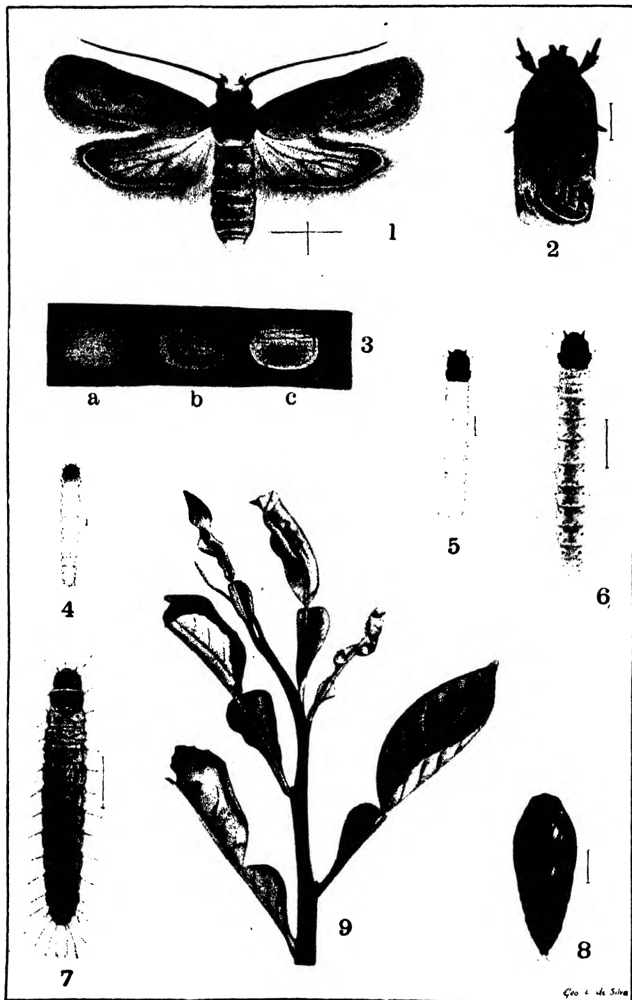
The image is a composite plate containing nine numbered figures. Figure 1 is a large illustration of an adult moth with its wings spread, showing a dark body and patterned wings. Figure 2 is a smaller illustration of the moth in a resting position, viewed from above. Figure 3 is a horizontal bar containing three small, oval-shaped eggs labeled 'a', 'b', and 'c'. Figure 4 is a small, newly hatched larva. Figure 5 is a half-grown larva. Figure 6 is a full-grown larva. Figure 7 is a larva nearing pupation. Figure 8 is a mature pupa. Figure 9 is a central illustration of a citrus shoot with several leaves, some of which are curled and damaged by the larvae. The figures are arranged around the central shoot. There are scale bars next to several figures (1, 2, 3, 4, 5, 6, 7, 8, 9). The signature 'Cro & de Silva' is in the bottom right corner.
The Citrus Leaf-roller (Psorosticha zizyphi Stt.)
Fig. 1. Moth, wings spread, . Fig. 2. Moth, resting position, . Fig. 3. Eggs in various stages of development , a newly laid, b, one day old, c ready to hatch. Fig. 4. Newly hatched larva, . Fig. 5. Half-grown larva, . Fig. 6. full-grown larva, . Fig. 7. Larva nearing pupation, . Fig. 8. Mature pupa, . Fig. 9. Citrus shoot showing damaged leaves; unattacked leaf on right.
191REFERENCESFLETCHER, T. B. 1914.—Some South Indian Insects, pp. 465-466, fig. 1917.—Proc. Second. Entl. Meeting, Pusa, pp. 210, 216. 1919.—Proc. Third Entl. Meeting, Pusa, p. 164. 1920.—Life-histories of Indian Insects. Microlepidoptera. Mem. Dept. Agric. India, Ent. Ser. VI, pp. 171, 172, 214.
NEEDHAM, J. G., FROST, S. W., and TOTHILL, BEATRICE H. 1928.—Leaf-mining Insects, pp. 53-59, 104-106.
RUTHERFORD, A. 1914.—Leaf-miner of Citrus (Phyllocnistis citrella Stainton). The Tropical Agriculturist, Peradeniya, XLIII, No. 1, July, 1914, pp. 49-50.
2. THE CITRUS LEAF-ROLLER(Psorosticha sisyphi Stt.)
THIS caterpillar can sometimes be a considerable nuisance in citrus nurseries and in young plantations, mainly because it so often escapes notice owing to its small size and somewhat inconspicuous habits of feeding, and no steps are taken to control it. The ragged appearance of many young citrus plants is often due mainly to the persistent activities of this pest. A study of its life-history indicates that the moths are fairly prolific egg-layers, but there must be a fairly high mortality among the younger larvae, since comparatively few of them come to maturity under natural conditions. Owing to their habits of wandering about, webbing leaves together or rolling them up and feeding here and there, it does not take many larvae to spoil the appearance of a young plant.
DISTRIBUTIONThis insect seems to be the same as that mentioned by Fletcher (1914, p. 459, and 1920, p. 108) under the name Tonica sisyphi* as being widely distributed throughout India on Citrus spp. and Murraya koenigii. It has not been found to feed in India on Zizyphus jujuba from which it was originally described. In Ceylon it probably occurs wherever Citrus is grown, but rarely as a serious pest. It has not been found on any other host plants so far.
LIFE-HISTORY AND HABITSMoths.—This leaf-roller is the caterpillar of a small greyish-brown moth with black spots on the front wings (figs. 1 and 2). The moths hide in the folds of leaves and other sheltered places during the day, resting with the wings folded, as shown in figure 2, but are active at night, when the eggs are laid. Complete records have been kept of the oviposition of 7 individual pairs of moths. The females, after mating, start egg-laying within about 3 days after emergence, on the average. The 7 females laid totals ranging from 185 to 352 eggs, with an average of 301 eggs per moth. The females, kept in captivity and fed with sweetened water, lived for periods ranging from about 3 to about 6 weeks, or about weeks on the average, while the life of the males under the same conditions varied
* Mr. G. M. Henry, Colombo Museum has kindly confirmed the identity of Tonica sisyphi with Psorosticha sisyphi.
192from about 2 to about weeks, averaging nearly 5 weeks. The great majority of the eggs are laid daily within the first 2 weeks after oviposition begins, but the moths continue to lay eggs almost daily until within two or three days of their death; one moth, however, lived for about 2 weeks after the last egg was laid.
Eggs.—These are usually deposited singly on either side of the younger leaves and sometimes on leaf-stalks and on the stems of tender shoots. They are frequently placed in a row at irregular intervals alongside the midrib of a leaf, but may be laid along minor veins or sometimes along old galleries of the leaf-miner or any other depression on the leaf surface. An egg much enlarged is shown in figure 3a. The eggs are about .75 m.m. long by about .5 m.m. broad, narrowly oval, somewhat flattened, scale-like and when freshly laid they are difficult to detect, as they are dull pale yellowish-green and almost the same colour as a young leaf. After about a day or so a pinkish figure of 8 pattern appears (fig. 3b) and then, shortly before hatching, the black head of the developing caterpillar can be seen through the egg-shell (fig. 3c). The eggs hatch in about 3 to 4 days.
Larvae.—The newly emerged larvae (fig. 4) crawl about very actively, but soon settle down on a young leaf or a leaf-bud. Each larva then spins on either surface of the leaf, usually alongside the midrib, a thin silken gallery within which it lives, nibbling away small portions of the epidermis.
The second stage larvae sometimes extend their shelters, eating away small patches of tissue, or they may migrate to other leaves, making fresh shelters, either by rolling up young leaves lengthwise to form tubes or webbing two or more leaves together. During the next two stages the larvae live within young rolled-up leaves, coming out to feed on other tender leaves and shoots.
Towards the end of the fifth stage (fig. 6) the larvae stop feeding and pinkish lines appear on their backs, giving their bodies a pinkish tinge (fig. 7). The five stages, or instars, of the larval development vary in duration from about 2 to about days each, the larvae becoming full grown within about 9 to about 17 days.
Pupae.—The full-grown larvae spin their silken cocoons inside their tubes and, after moulting for the last time, change into the pupa or resting stage. The pupal period occupies about 1 week on the average, and the moths begin egg-laying as before within about 3 days after emergence. A mature pupa is shown in figure 8.
Records have been kept of the development of 34 individuals from egg to moth and of these 19 were males and 15 became females. The larval period of the potential male moths was about days on the average, with a range of about 9 to about 16 days, as compared with the average of about 14 days taken by the potential female moths, with a range of about 10 to about 17 days. On the other hand the pupal period of the males was slightly longer than that of the females, being about days as compared with 7 days on the average. The total average life-cycle of the males is, therefore, about days as compared with 24 days for the females.
193The feeding of even a few larvae on a young plant makes it look very ragged, all the younger leaves being bitten off or rolled up as they appear (fig. 9). If the attack continues the plants are unable to produce any normal shoots and become stunted. If such plants are attacked by leaf-miner as well, they are quite crippled and are readily exposed to infection by citrus canker or by citrus mildew and sometimes die off.
The regular routine spraying recommended previously for leaf-miner will usually not only prevent attacks of leaf-roller and other small caterpillar pests of citrus, such as young Papilio larvae, but will gradually control any infestation which has already started. If, however, the attack persists in spite of regular spraying with a contact insecticide, then a stomach poison, such as lead arsenate, at the rate of 1 oz. to every 2 gallons of water should be applied two or three times at short intervals to get rid of leaf-roller and any other leaf-eating pests.
FLETCHER, T. B. 1914.—Some South Indian Insects, p. 459.
1920.—Life-histories of Indian Insects. Microlepidoptera.
Mem. Dept. Agric. India Ent. Ser. VI, pp. 108, 109.
| Province, &c. | Disease | No. of Cases up to Date since Jan. 1st 1933 | Fresh Cases | Recoveries | Deaths | Balances III | No. Shot |
|---|---|---|---|---|---|---|---|
| Western | Rinderpest | ... | ... | ... | ... | ... | ... |
| Foot-and-mouth disease | 548 | 25 | 528 | ... | 20 | ... | |
| Anthrax | ... | ... | ... | ... | ... | ... | |
| Rabies (Dogs) | 12 | 1 | ... | ... | ... | 12 | |
| Piroplasmosis | ... | ... | ... | ... | ... | ... | |
| Colombo Municipality | Rinderpest | ... | ... | ... | ... | ... | ... |
| Foot-and-mouth disease | 657 | 3 | 633 | 22 | 2 | ... | |
| Anthrax | 6 | 2 | ... | 6 | ... | ... | |
| Rabies (Dogs) | 4 | 1 | ... | ... | ... | 4 | |
| Haemorrhagic Septicaemia | ... | ... | ... | ... | ... | ... | |
| Black Quarter | ... | ... | ... | ... | ... | ... | |
| Cattle Quarantine Station | Bovine Tuberculosis | ... | ... | ... | ... | ... | ... |
| Rinderpest | ... | ... | ... | ... | ... | ... | |
| Foot-and-mouth disease | 11 | ... | 10 | 1 | ... | ... | |
| Anthrax (Sheep & Goats) | 222 | 63 | ... | 222 | ... | ... | |
| Central | Rinderpest | ... | ... | ... | ... | ... | ... |
| Foot-and-mouth disease | 54 | 31 | 45 | ... | 9 | ... | |
| Anthrax | ... | ... | ... | ... | ... | ... | |
| Bovine Tuberculosis | 6 | 3 | ... | ... | 5 | (1 | |
| Rabies (Dogs) | ... | ... | ... | ... | slaughtered) | ... | |
| Southern | Rinderpest | ... | ... | ... | ... | ... | ... |
| Foot-and-mouth disease | 159 | ... | 159 | ... | ... | ... | |
| Anthrax | ... | ... | ... | ... | ... | ... | |
| Rabies (Dogs) | 1 | 1 | ... | ... | ... | 1 | |
| Northern | Rinderpest | 144 | ... | 43 | 93 | ... | 8 |
| Foot-and-mouth disease | 28 | ... | 28 | ... | ... | ... | |
| Anthrax | ... | ... | ... | ... | ... | ... | |
| Black Quarter | ... | ... | ... | ... | ... | ... | |
| Rabies (Dogs) | ... | ... | ... | ... | ... | ... | |
| Eastern | Rinderpest | ... | ... | ... | ... | ... | ... |
| Foot-and-mouth disease | 114 | ... | 114 | ... | ... | ... | |
| Anthrax | ... | ... | ... | ... | ... | ... | |
| North-Western | Rinderpest | ... | ... | ... | ... | ... | ... |
| Foot-and-mouth disease | 95 | 43 | 76 | 1 | 18 | ... | |
| Anthrax | ... | ... | ... | ... | ... | ... | |
| Rabies (Dogs) | 29* | 8 | ... | 11 | 3 | 15 | |
| Piroplasmosis | 1 | ... | ... | 1 | ... | ... | |
| North-Central | Rinderpest | 63 | ... | 13 | 44 | ... | 6 |
| Foot-and-mouth disease | ... | ... | ... | ... | ... | ... | |
| Anthrax | ... | ... | ... | ... | ... | ... | |
| Uva | Rinderpest | ... | ... | ... | ... | ... | ... |
| Foot-and-mouth disease | 289 | 3 | 282 | 7 | ... | ... | |
| Anthrax | ... | ... | ... | ... | ... | ... | |
| Bovine Tuberculosis | 1 | ... | ... | 1 | ... | ... | |
| Sabaragamuwa | Rinderpest | ... | ... | ... | ... | ... | ... |
| Foot-and-mouth disease | 233 | ... | 233 | ... | ... | ... | |
| Anthrax | ... | ... | ... | ... | ... | ... | |
| Piroplasmosis | ... | ... | ... | ... | ... | ... | |
| Haemorrhagic Septicaemia | 16 | 2 | ... | 16 | ... | ... | |
| Rabies (Dogs) | 6 | 1 | ... | ... | ... | 6 |
* Includes 2 cows and 4 jackals.
G. V. S. Office.
Colombo, 10th September, 1934.
M. CRAWFORD,
Government Veterinary Surgeon.
| Station | Temperature | Humidity | Amount of Cloud | Rainfall | ||||||
|---|---|---|---|---|---|---|---|---|---|---|
| Mean Maximum | Difference from Average | Mean Minimum | Difference from Average | Day | Night (from Minimum) | Amount | No. of Rainy Days | Difference from Average | ||
| Inches | Inches | |||||||||
| Colombo | 84.9 | +0.2 | 77.0 | +0.8 | 77 | 88 | 7.0 | 1.46 | 15 | - 2.21 |
| Puttalam | 86.5 | +0.6 | 78.3 | +0.8 | 72 | 84 | 5.7 | 0 | 0 | - 0.74 |
| Mannar | 86.8 | - 1.2 | 78.9 | +0.6 | 77 | 84 | 5.4 | 0.03 | 1 | - 0.62 |
| Jaffna | 84.8 | - 0.7 | 79.4 | +1.0 | 83 | 87 | 4.6 | 0.75 | 2 | - 0.72 |
| Trincomalee | 93.8 | +3.0 | 78.0 | +1.6 | 58 | 76 | 5.5 | 3.00 | 5 | - 1.09 |
| Batticaloa | 90.3 | 0 | 77.0 | +1.0 | 64 | 80 | 5.8 | 0.10 | 1 | - 2.16 |
| Hambantota | 84.5 | - 1.9 | 75.7 | +0.2 | 76 | 88 | 4.5 | 1.38 | 10 | + 0.05 |
| Galle | 82.9 | +0.5 | 77.0 | +1.2 | 86 | 91 | 5.2 | 3.31 | 11 | - 2.47 |
| Ratnapura | 88.0 | +1.1 | 74.3 | +0.4 | 71 | 93 | 6.6 | 5.65 | 24 | - 6.50 |
| A'pura | 92.3 | +1.4 | 76.0 | +0.9 | 59 | 86 | 6.9 | 0.02 | 1 | - 1.72 |
| Kurunegala | 89.1 | +2.0 | 75.2 | +0.7 | 64 | 86 | 7.0 | 0.52 | 10 | - 3.09 |
| Kandy | 84.6 | +2.2 | 70.6 | +0.7 | 68 | 85 | 6.5 | 1.06 | 10 | - 4.72 |
| Badulla | 88.6 | +2.9 | 63.4 | - 1.1 | 52 | 91 | 4.0 | 0.60 | 3 | - 2.66 |
| Diyatalawa | 79.1 | +1.1 | 61.5 | - 0.1 | 57 | 78 | 5.6 | 1.36 | 4 | - 1.93 |
| Hakgala | 71.1 | +1.7 | 57.0 | - 0.4 | 74 | 86 | 4.8 | 0.95 | 8 | - 3.89 |
| N'Eliva | 67.9 | +1.4 | 53.5 | - 0.7 | 74 | 85 | 7.6 | 1.63 | 15 | - 6.45 |
The rainfall of August was below normal over practically the whole Island. Deficits were greatest on the western slopes of the hill-country, where the average August rainfall is heaviest, and reached over 15 inches at stations in the Ginigathena Pass. The greatest deficit reported was 19.90 inches, Padupola. A large number of stations in the north and east reported no rain during the month.
Weather conditions at the beginning of August were particularly dry. From the 8th to the 16th there was fairly wide-spread rain in the south-western districts, generally, however, only light or moderate in amount. From the 16th to the 22nd conditions were again very dry, while from the 22nd to the end of the month the liability to light or moderate rain in the south-west of the Island increased. Towards the end of the month local thunderstorms became more frequent in the north and east of Ceylon.
Temperatures were generally above normal. Up-country night temperatures, however, were slightly below average. Inland and up-country humidities were appreciably in deficit, while at the coast humidity was, on the whole, slightly above normal. Cloud was generally in deficit.
Barometric pressure was in excess, while the gradient was a little steeper than usual. Wind strength was below normal in the south and west, and above normal in the north and east. Its direction was generally S.W. to W.S.W.
H. JAMESON,
Supdt., Observatory.
VOL. LXXXIII
PERADENIYA, OCTOBER, 1934.
No. 4
| Page | |
|---|---|
| Editorial ... .. | 197 |
| Vegetative Propagation of the Tea Plant. By Prof. T. K. Kvarazkhelia ... .. | 199 |
| The Curing of Ginger. By A. W. R. Joachim, Ph.D. ... .. | 212 |
| Kikuyu Grass ... .. | 217 |
| Vernalization ... .. | 221 |
| The Preparation of Tirupattur Dhall ... .. | 222 |
| Environment and Plant Life ... .. | 224 |
| The Present Economic Condition of the Coconut and other Oil-Producing Industries. ... .. | 226 |
| (Citrus) Orange and Lemon Culture in India ... .. | 233 |
| Minutes of Meeting of the Central Board of Agriculture ... .. | 235 |
| Minutes of Meeting of the Board of the Tea Research Institute of Ceylon ... .. | 253 |
| Copper Emulsion ... .. | 255 |
| Correction Note ... .. | 256 |
| Animal Disease Return for the month ended September, 1934 ... .. | 257 |
| Meteorological Report for the month ended September, 1934 ... .. | 258 |
Of great interest to those engaged in the
cultivation of plantation crops.
Being a reprint of articles published in
The Tropical Agriculturist by the
Staff of the Department of
Agriculture, Ceylon.
34 Illustrations and Figures
Price Rs. 5/-
— • • • —
Obtainable from:
THE MANAGER, PUBLICATION DEPÔT,
PERADENIYA.
October, 1934
THE multiplication of plants other than by means of seeds plays an important part in many crops and in recent years there has been a great advance made in tropical agriculture especially by pursuing this method. Indeed there are now many economic plants in which the necessity for seed production has disappeared and in which other methods are recognized as a requirement for the improvement of the race. Not only do such old familiar crops as potatoes, yams, bananas, ginger, and sugar cane give us examples, but the value of vegetative reproduction as the sole means of attaining uniformity of desirable characters in fruit trees is universally recognized. Plants multiplied in this latter simple way can maintain a fit and virile offspring by care being taken that the future crop is from a desirable parent, in the case of reproduction from seed on the other hand two elements are concerned in the production of this body and they do not always come from the same parent. There may be increased virility as a result, but on the other hand this will not be uniformly maintained in the following generations. The faithful reproduction of a desirable parent type is thus best secured either by directly growing pieces of the parent plant or by transferring such pieces on to stocks of other individuals in order to give the
198former a start in life. This latter way is of course familiar to us in budding and grafting and as the method more advocated than practised in this Island it is that involved in the budgrafting of rubber.
One of the most important conceptions in plant improvement is the realization of the character of the individual constituting a desirable unit plant. Having been correct in our choice of this most desirable individual then the crop can be improved by its multiplication. There is no cultivated crop if not already worked at along these lines that is not susceptible of improvement by such means and the surest method of multiplication is by vegetative reproduction rather than by seed.
It is remarkable what little attention has so far been given toward effecting improvement in the tea plant by means of selection. Beyond recognizing that seed from a good type of "jat" was desirable little or nothing further has been done, although to a trained eye the presence of many varieties in almost every tea field is obvious. The tea plant readily cross fertilises and that is the explanation of this heterogeneous assembly. The working out of methods for the ready multiplication of the plant without invoking the aid of seed presents an easy method of securing a uniform crop of desirable character. We are able in this number to publish the first instalment of what has been done by an authoritative investigator who has made a successful study of the subject.
199PROF. T. K. KVARAZKHELIA,
THE TEA RESEARCH INSTITUTE OF THE USSR.
OZURGETI-ANASENLI, GEORGIA, USSR.
THE tea plant in natural conditions propagates by means of cross-pollination which is possible between all species and varieties of the tea plant, cross-pollination between the tea plant and some species of camelia even is not excluded. This supposition occurred to me after the investigation of tea gardens grown from seeds, obtained from the highland region of North-East India. A most intensive cross-pollination is going on in tea gardens between the southern, or Assam, and the northern, or Chinese, species of the tea plant and their hybrids. Our tea gardens are therefore extremely heterogeneous: there may be met with all kinds of variations of the above-mentioned species, varieties and hybrids. In this respect all our plantations are similar to each other independently of the origin of the seed. (Darjeeling, Manipuri and others). Towards the northern limits of tea culture the percentage of hybrids with characters peculiar to southern (Assam) forms decreases and that of hybrids with characters of the northern (Chinese) forms, increases, and vice versa: towards the tropics the percentage of hybrids with characters of southern forms increases.
A great many variations are met with among the chief species of the tea plant. They vary as to the colour of their leaves (from light-green to dark-metallic violet), the size and shape of the blade (narrow, flat, etc.), the form of its surface (smooth, rough, etc.), the colour of young shoots, the length of internodes, the ratio of the green to the brown part of a shoot, the duration of the growing period (some forms begin their growth very early in spring and stop it late in autumn, and other forms begin it late and stop early), the immunity to diseases and injurious insects, the frost-resistance, the tendency to produce bhanji shoots, the rate at which shoots grow hard, etc.
200These variations influence the quality and productivity of tea gardens. Of course it is desirable to have productive bushes of high quality, immune to diseases and injurious insects. Frost-resistance should be added to the above characters in case of northern or mountain districts.
It has already been mentioned, that our gardens are extremely heterogeneous; besides a great number of bushes with bad characteristics very good bushes are met with though the number of the former may reach 50-98 per cent.
In propagation by seeds it often happens that two plants, the one with good and the other with bad characters grow out of one hole in which 3 seeds have been planted (Plate 1, A and B). Some bushes are frost-resistant and others, when grown in northern or mountain districts, are every year killed by frosts (Plate 2). Besides the above-mentioned kinds of the tea plant, there exist frost-resistant hybrids with characters of the southern (Assam) species (Plate 3A) and those with characters of the northern Chinese species. (Plate 3B).
In order to establish the degree of productivity of these hybrids, we plucked shoots with 3 leaves from 5 year old bushes of different sorts grown under identical conditions. One thousand shoots of each sort were weighed separately, first green and then dry. The results are given in the following table:
TABLE 1| Forms of the hybrids | Number of shoots | Green weight | Dry weight | ||
|---|---|---|---|---|---|
| gm. | % | gm. | % | ||
| Northern with small leaves | 1000 | 768 | 100 | 192 | 100 |
| Southern with large leaves | 1000 | 1776 | 232 | 427 | 222 |
In another case 1,000 shoots with 3 leaves of a northern hybrid of a Chinese variety weighed 390 gm. and those with 2 leaves weighed 300 gm. while 1,000 shoots with 3 leaves of a Darjeeling form weighed 824 gm. and those with 2 leaves weighed 520 gm. Investigations have shown that large leaved hybrids give 2.5 — 3 times larger crops than small-leaved ones.
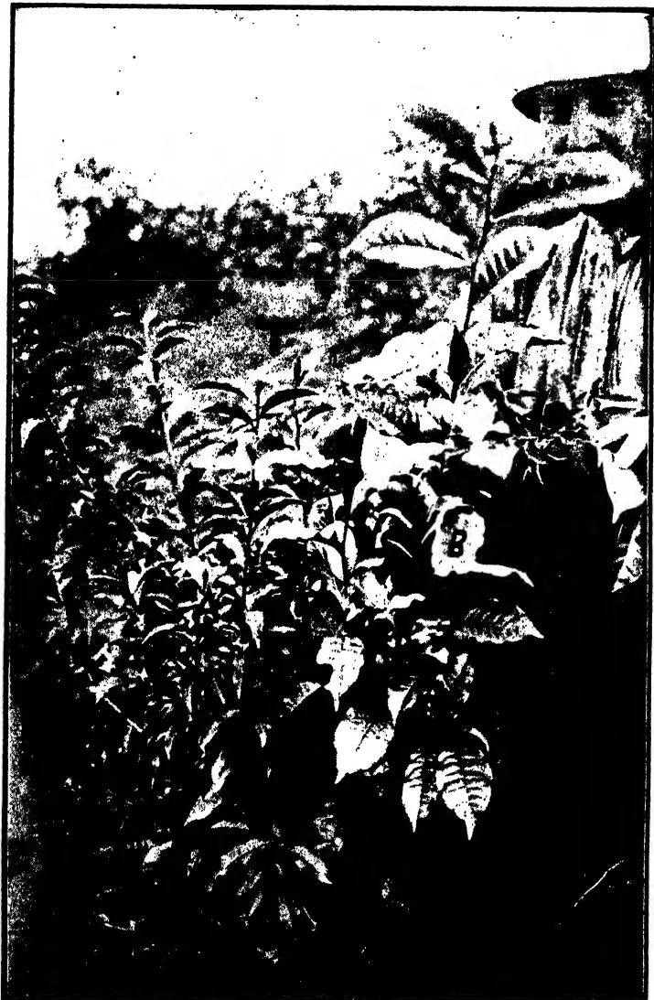
A black and white photograph showing two bushes of different varieties growing from three seeds planted in one hole. The bush on the left (labeled A) has small leaves, while the bush on the right (labeled B) has large leaves.Plate 1.
Two years old bushes of different varieties, grown from three seeds planted in one hole :
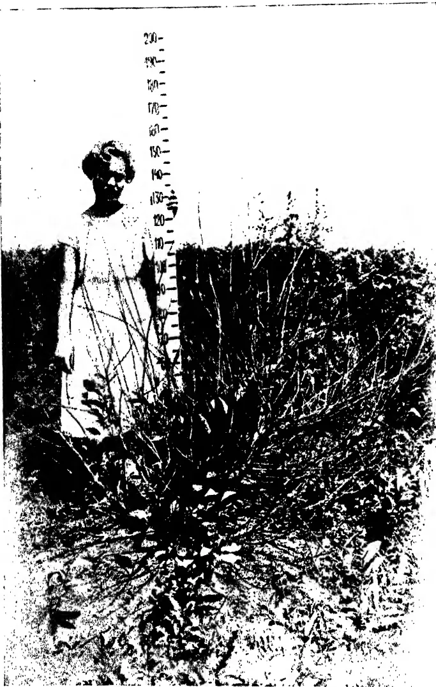
A black and white photograph showing a person standing next to a tall, bushy plant, likely a tea plant. The person is wearing a light-colored, sleeveless dress and is positioned to the left of the plant. A vertical height scale is visible in the background, marked from 10 to 200 in increments of 10. The plant is very tall and dense, reaching above the 200 mark on the scale. The ground is covered with low-lying vegetation.Plate 2.
A hybrid with desirable characters of the Southern varieties but not frost-resistant (a character of importance in Northern tea regions). Every winter its branches fall off due to frost and every spring it produces new shoots.
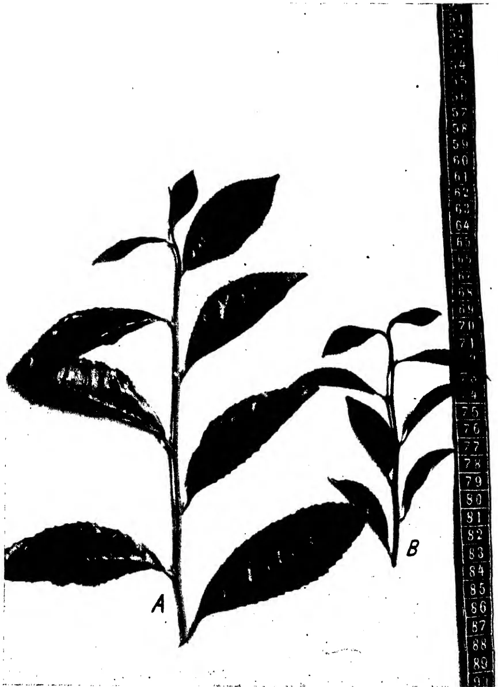
Plate 3.
Two forms of frost-resistant hybrids :
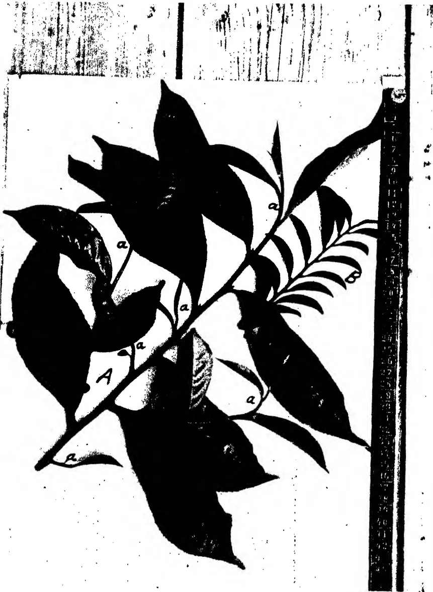
Plate 4.
Shoots of the same age :
The percentage of bushes of low quality in the tea gardens of Georgia is very high, therefore even a partial improvement of the poorest bushes by means of grafting may increase the yields by 160 per cent. approximately.
This increase varies in dependence with the percentage of poorly yielding hybrids in a tea garden. Some kinds of southern large leaved hybrids are remarkable for their growth rate, their productivity and the length of their growing period. Tea gardens which consist of such large-leaved hybrids may produce still larger crops. Plate 4 represents shoots of two hybrids of the same age, 4A — a southern sort with numerous plucking shoots and 4B — a northern Chinese sort of a low productivity. The shoot B has only one point of growth, while the shoot A during the same period of time has formed 6 points of growth (at A, a) owing to its high vegetative power. Obviously yields of the bush A are several times larger than those of the bush B.
Tea growers have to create homogeneous gardens consisting of productive bushes of high quality immune to diseases and injurious insects. It is impossible with the present method of propagation by seeds. Tea plants, like many other cross-pollinating trees and bushes, segregate when propagated by seeds and produce very varied forms; all kinds of combinations between the characters of the parent plants.
Many of these forms (often 50-98 per cent.) possess undesirable characters. The fixation of desirable characters and creation of constant forms by means of usually adopted methods of selection and propagation by seeds takes about 30-60 years. We therefore must try to find other methods of solving the problem, though of course we ought not to suspend our work on breeding constant sorts by means of propagation by seeds. The method of vegetative propagation has been known for a very long time and used in propagating trees and even some annual plants. A great number of first-rate fruit and ornamental plants have been obtained by this method of propagation. Its importance for commercial tea growing is obvious. It helps to increase the productivity of the plantation and the quality of the leaf, to select sorts immune to diseases and injurious insects and to graft tea on stocks resistant to root diseases. This method is matchless for the scientific investigatory work, which requires all factors, but the one under investigation, to be absolutely identical.
202In field conditions we have at least two unknown factors: (1) the factor under investigation, and (2) the heterogeneity of the tea bushes. The difference between the yields of the experimental and the control plots may be due both to the factor under investigation (manuring, mulching, cultivation, pruning, etc.) and to the occasional combinations of high-yielding or low-yielding bushes.
Even in our laboratory experiments with plants grown in pots we have to work with extremely heterogeneous tea plants.
Vegetative propagation supplies absolutely homogeneous plants, both for field and laboratory experiments. This method may also be used for growing seed-gardens of the best varieties, and it excludes the possibility of crossings between the good and the bad sorts of the tea plant. Vegetative propagation is of great value in the work of selection for it helps the fixation of the best sorts in a shorter time than is possible from seeds.
The question of vegetative propagation of the tea plant has not been sufficiently elucidated in literature. Most authors believe it impossible.
In order to decide the question I first carried out a small number of experiments at Sukhum in 1928, 1929 and 1930. Beginning with 1931 I have been carrying out experiments on a larger scale at Ozurgeti-Anasenli, the greatest part of the work having been carried out in 1933-34, when the technical executant of my orders was the gardener Sh. Oragveliodze. All the methods of vegetative propagation were tested, viz.
All of the above methods proved to be applicable to the tea plant, simple layering being the simplest and cheapest method of obtaining plants with their own roots, while the best methods of grafting are summer budding in field conditions and winter bench grafting in hot-house conditions.
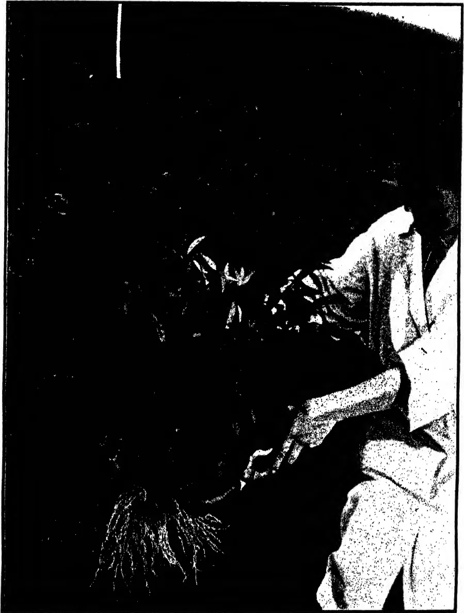
A high-contrast black and white photograph showing a person's hands and arms working on a mound of earth. The person is wearing a light-colored shirt and trousers. The mound appears to be composed of layered soil or organic matter, with some roots visible at the bottom. The background is dark and indistinct.Plate 5.
Simple mound layering.
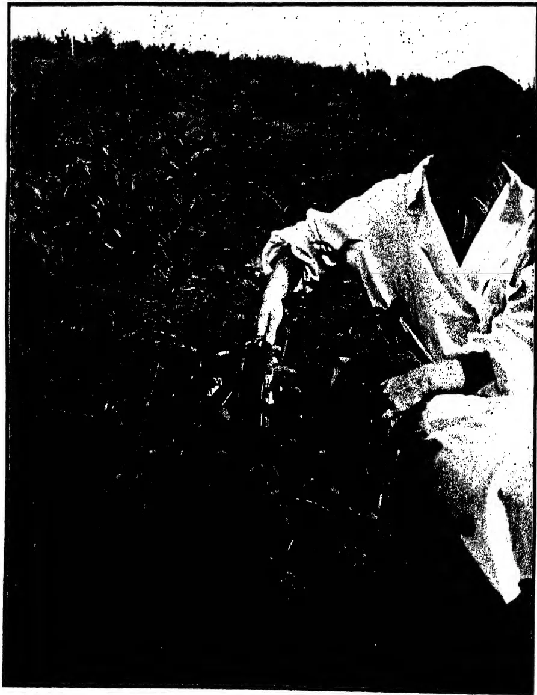
A high-contrast black and white photograph showing a person in a light-colored shirt and dark hat working in a field. The person is bent over, handling plants. In the background, a dense row of plants is visible, likely the parent plant mentioned in the caption.Plate 6.
Simple layering. Rooted layers at the moment of their separation from the parent plant. In the background the parent plant with shoots laid for propagation.
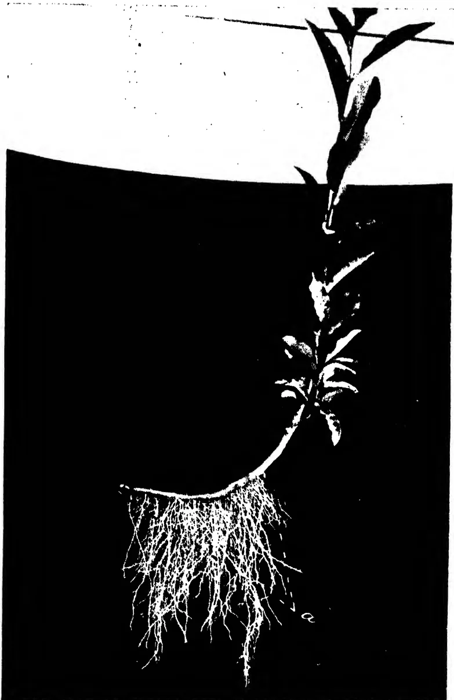
A black and white photograph of a rooted shoot, likely a young plant, showing its underground root system and above-ground leaves. The shoot is positioned vertically, with the roots extending downwards and the leaves upwards. The background is dark, highlighting the plant's structure. The image is labeled with a small 'a' near the base of the shoot.Plate 7.
Simple layering. A rooted shoot, separated from its parent plant and ready for transplantation.
a. Young roots, which developed along the underground part of the shoot.
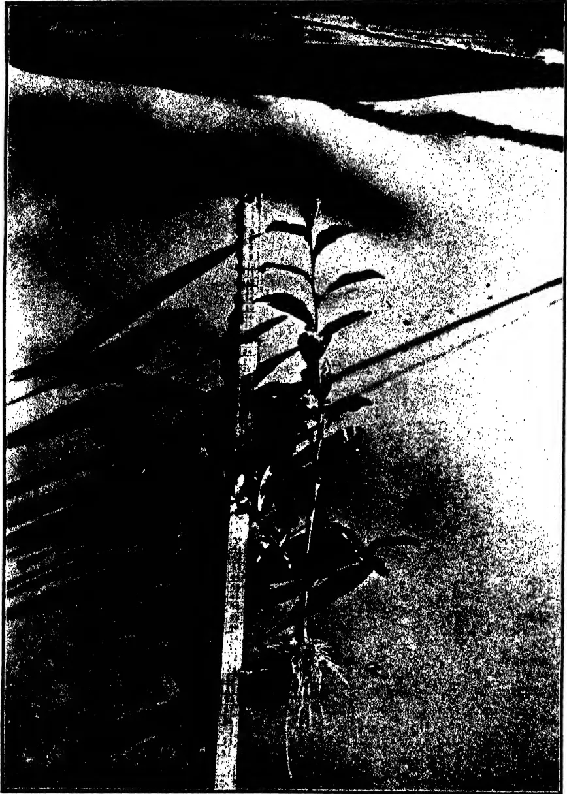
Plate 8.
Mound layering with ringing. A rooted shoot separated from the parent plant and ready for transplantation.
a. Young roots concentrate at the base of the shoot above the wired place.
203The following types of layering were tested:
(a) Simple mound layering (Plate 5). The leaves on the lower part of the shoot were removed and the earth mounded round the bush in the usual way i.e., in the same way as in the case of the potato. This method gave satisfactory results (87 to 88 per cent.).
This is the most simple and rapid and the least troublesome method of propagation. Further experiments proved the removal of leaves unnecessary: it does not influence the percentage of rooted plants. Rooting of 2-3 year old bushes took place in 2-3 months after mounding. Plate 5 represents rooted shoots with a great number of young roots. Such shoots may be separated from the parent bush and transplanted into the field. They may be safely used for new plantings.
(b) Simple layering (Plate 6). Branches were bent downwards, placed into small trenches 10-15 cm. long, pegged down in several places and covered with a layer of earth 20-25 cm. thick. The upper free ends of the shoots were fastened to vertical pegs. This method gave also good results (80 per cent. to 90 per cent. rooted plants). Plate 6 represents rooted shoots. Such shoots may be separated from the parent bush and transplanted into the field.
In the background there may be seen parent plants with laid shoots. Plate 7 represents a shoot with young roots ready to be transplanted.
(c) Mound layering with ringing. The shoots are ringed at their base (a ring of bark 2-3 cm. wide is removed) and the earth round the bush is mounded to the height of 25-30 cm. Instead of being ringed the shoots may be wired, i.e., surrounded at their base by several turns of wire.
This method also gave a great percentage of rooted shoots. (81-92 per cent.) Plate 8 represents one of the rooted shoots. Such a shoot is ready to be transplanted into the field
(d) Continuous Layering.—This method consists in pegging down the whole shoot, placed into a trench about 10 cm. deep and 7 cm. wide. The internodes of the shoot are covered with earth and the nodes remain uncovered, as well as the end of the shoot with 3-5 leaves. The young shoots, which grow from the
204nodes (Plate 9) produce roots and at the end of the season are ready for transplantation. This method gave 95-100 per cent. of rooted plants. The percentage of rooting is estimated in relation to the number of layers, not to that of the resulting shoots (the latter is much greater). Plate 9 represents young rooted shoots produced by one layer.
(e) Simple Layering with Wounding.—This method is similar to that, described in paragraph (d) above, the only difference being a wound made at the base of the layer, at the place where the layer is covered with earth: either an oblique cut is made with a knife and a small piece of wood inserted into the wound, a piece of wood and bark cut off, or the layer is slightly fractured. The percentage of rooted plants attains 94-100 per cent.
(f) Layering with Wounding and Application of Potassium Permanganate.—This is similar to that described in paragraph (e) above with the addition of a small dose of potassium permanganate applied as a stimulant. The percentage of rooted shoots, ready for transplantation is 80-86 per cent.
(g) The Dahlem Method of Layering.—The bush is cut down at the ground level, the young shoots, which grow out of the bush are wired at the base, when they are 20-25 cm. high and covered with earth, the mound being first made 10-15 cm. high, then heightened when the shoots grow longer, up to the final height of 25-30 cm. This method gave 85-90 per cent. of rooted plants. Table 2 represents the results of our investigations:
TABLE 2| Method of layering | Percentage of rooted plants |
|---|---|
| 1. Simple mound layering | 87-88 |
| 2. Simple layering | 80-90 |
| 3. Mound layering with ringing | 81-92 |
| 4. Continuous layering | 95-100 |
| 5. Simple layering with wounding | 94-100 |
| 6. Layering with wounding and application of potassium permanganate | 80-86 |
| 7. Dahlem method of layering | 85-90 |
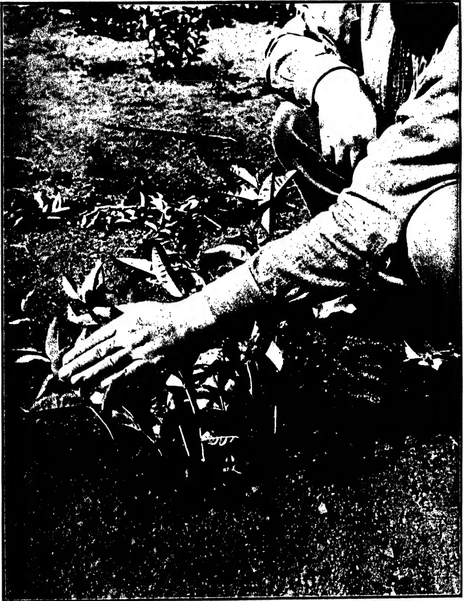
Plate 9.
Continuous layer. Young shoots, produced by a single layer.
This image is a blank white page. It contains several small, dark specks which appear to be scanning artifacts or dust particles. There is no text, handwriting, or printed content on the page. 205All methods of layering give a high percentage of rooted plants and every shoot produces a great number of roots, independently of the method used. Special stimulation of root growth (wounding, ringing, wiring, application of chemicals, etc.) is unnecessary. Simple mound layering, the most simple method of layering, can give as high a percentage of rooted plants (up to 100 per cent.) as other methods do. In our experiments it was prevented by unfavourable soil conditions. At the beginning of our experiments we had to carry them out on dry eroded plots where soil conditions hampered the normal development of roots. Later on we continued them on soils with a higher water holding capacity and obtained a far higher percentage of rooting, though the plantation was situated on a slope and heavy rainfalls washed away a part of the earth which covered the layers, leaving some of them quite bare and some covered with a very thin layer of earth; its drying up checked the formation of roots.
In such places, where the soil layer was thick enough (20 to 25 cm.) and contained a sufficient amount of moisture we obtained 100 per cent. of rooted plants independently of the method of layering used. Tea shoots strike root easily.
Bushes round which the earth has been mounded, or which have been covered with eroded soil above their collar produce a number of adventitious roots at any point of a shoot or a branch.
These seven years' observations of the author have shown that the percentage of rooted plants depends upon the age of the shoots and the amount of moisture in the soil which surrounds them. The best results are obtained with one and two years' old shoots (up to 100 per cent.) The soil should always be moist, but the amount of moisture should not exceed a certain optimum, otherwise the want of aeration checks rooting.
No less than 200 bushes were used in each variant of the experiment and each bush was individually characterised. We tried to use similar bushes as far as it was possible with our heterogeneous populations of the tea bush. In general we tried to follow the fundamental rule of experimental work: "all conditions equal, except the one under investigation," though it was not always possible because of the heterogeneity of our tea plantations and an unequal distribution of moisture throughout the soil, due to erosion. We began our experiments in May.
206The results of the first year's experiments were summed up in September, those of the following years in April before transplantation, i.e., at the end of one growing cycle. On each bush there were counted shoots, reserved for layering and the percentage of rooted shoots was calculated relatively to their number. Rooting took place in 2 or 3 months after layering, but rooted shoots were not separated from the parent plant before autumn or spring, i.e., before the season of planting.
Besides the above-mentioned, there was tested the Chinese method of layering. Two year old shoots were chosen and placed in vessels (bamboo tubes, broken pots, tins etc.) filled with earth (Plate 10). In autumn the vessels were removed and rooted shoots cut off and planted into the field. Whilst the most troublesome this method gives but 50-70 per cent. rooting because the soil in the vessel dries up without artificial watering.
It is a well known fact that in favourable conditions tea roots produce shoots. In order to obtain as many shoots as possible we uncovered the roots of some tea bushes to the depth of 10 to 15 cm. The same summer they produced shoots. In autumn, or early spring, shoots with pieces of roots were separated from the parent plant and transplanted into the field. This method gives a great number of young plants, but weakens too much the parent plant and is more troublesome than simple mound layering.
At the suggestion of one of my collaborators D.Sh. Eristavi, the method of simple or common layering was used to improve our tea gardens. Up to 1929 tea bushes were usually planted at the distance of 1m x 1m, or 1.25m x 1.25m from each other. Beginning with the year 1929 they have been planted in contour rows or espaliers to prevent erosion. In order to adapt old gardens to these new requirements it was the custom to plant seeds between the old bushes at the distance of 30 cm. from each other with the purpose of obtaining in future continuous espaliers by means of pruning new bushes to a certain form. Plants grown from seeds, as to their development, were far behind the original bushes, while seedlings, transplanted from nurseries, took root but poorly. The method of simple layering gave very good results in obtaining continuous espaliers and is at
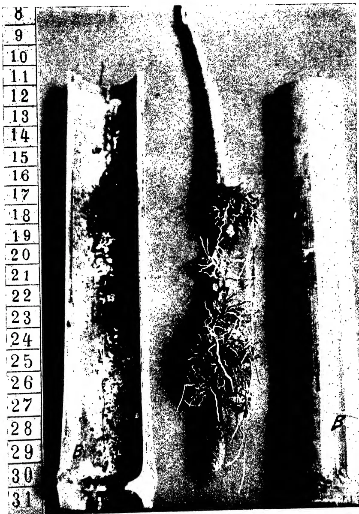
Plate 10.
Chinese layering :
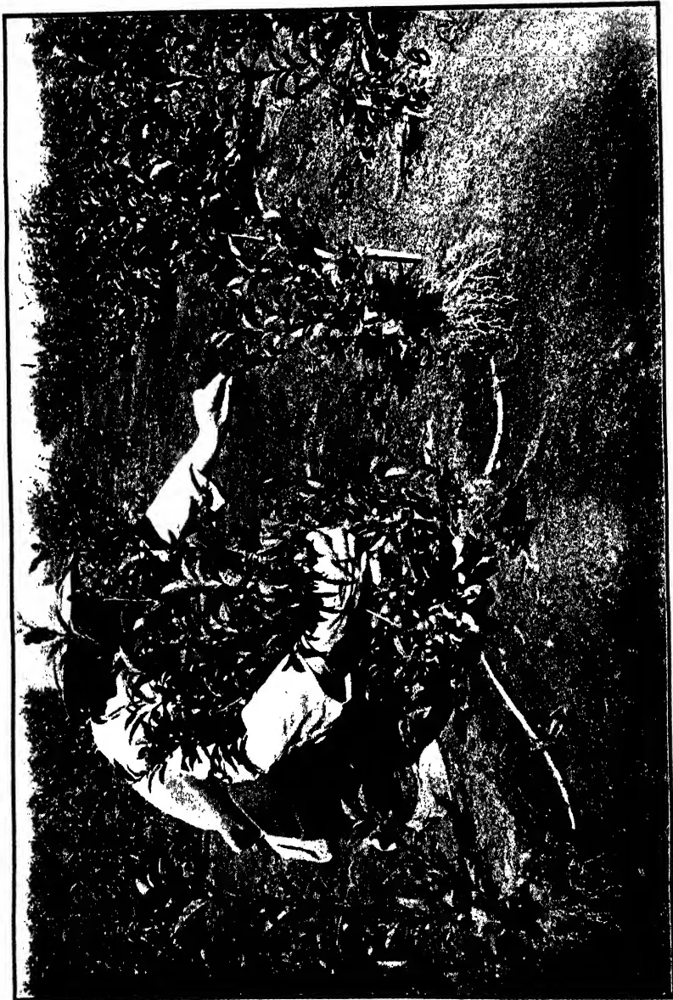
A high-contrast, black and white photograph of a person in a tea plantation. The person is wearing a light-colored shirt and dark trousers, and is bent over, working on the ground. They appear to be using a tool to fill gaps in a row of tea plants. The tea plants are dense and leafy, and the ground is covered with soil and some fallen leaves. The background shows more tea plants and a hint of a hillside.Plate II.
Common layering, carried out in order to fill up the gaps in a tea row and to obtain a continuous espalier.
207present adopted in our tea industry. Plate 11 represents this method of obtaining continous rows. A — is the parent plant, B — the young bushes obtained by means of simple layering (laid in May, photographed in September). At present the bushes have fully developed and formed a continuous espalier.
The examination of Table No. 2 shows, that continuous layering gives the best (95-100 per cent.) results, then comes simple layering with wounding (94-100 per cent.) It should be remembered that other methods could be as successful, but were applied in unfavourable conditions due to erosion: the soil, which covered the layers was partly washed away and the rest became subject to drying up.
Bushes, used for our experiments, were 3-5 years old and no difference was noticed in the rooting of their layers. The best results were obtained with 1 and 2 year old shoots, 1, 2 and 3 year old shoots having been used for our experiments. Tea shoots produce roots both in their nodes and along their internodes in contrast with those of some other trees and bushes, which produce roots in their nodes only. A young tea plant (either a seedling or a plant obtained by means of vegetative propagation) usually produces roots below its collar, but in case the collar is covered with earth, a great number of roots are produced above it. Thus the rule, adopted in horticulture, never to plant a tree so deep as to have its collar covered, is not applicable in case of a tea bush.
Beginning with the spring 1932 we have observed the growth of tea bushes, propagated by layers. They were planted on April 17, 1932 in the usual way, the planting distance being 1m × 1m. They did not receive any manuring and were watered but once — at the time of planting. The young plants took root and continued their growth. The percentage of plants, which took root and gave a good growth was as follows: in the case of (1) Simple mound layering 72 per cent, (2) Mound layering and ringing — 79 per cent, (3) Simple layering 60 per cent, (4) Continuous layering 72 per cent, (5) Layering with wounding 66 per cent, (6) Layering with wounding and application of potassium permanganate 68 per cent. It seems natural that all plants, grown out of a layer, once having taken roots and transplanted, should continue their growth independently of the method of layering. The control experiments, carried out the next year — 1933 showed that all rooted shoots, independently of the method of layering, take root well and continue their growth (about 94 per cent, with the exception of a few bushes (about 6 per cent)).
208The difference between the methods of layering, observed in 1932 was due to soil conditions: the soil, externally absolutely uniform proved to be extremely varied as to its moisture content and fertility. The next year we repaired this mistake and obtained with each method of layering 94 per cent. of vigorously growing bushes.
Seedlings transplanted at the same time from nurseries gave a much lower percentage of rooted plants (30-50 per cent). It is probably due to their producing one taproot and a few lateral roots with an insignificant number of small rootlets, while plants, grown from layers have a great number of small roots and consequently a far larger root surface in contact with the soil.
We also observed the rate of growth of tea bushes grown from layers.
The first (1932) year's figures are as follows:
There is no marked difference between the check (seedlings) and the experimental bushes, there is perhaps a slight difference in favour of the latter, the average for seedlings being 8.9 cm. and for bushes, obtained by certain methods of layering it is 9.8, 10.7 and 12.3. It is again due to their root system being richer than that of seedlings. It may be said, that both kinds of plant stand transplantation equally well.
A year later (1933) the rate of growth of plants, obtained by means of layering, increased and they soon equalled plants, grown out of seeds, planted in 1931.
Plate 12 represents such a plant, grown in a poor soil. The soil was so poor, that Ricinus communis, planted for shade in the spring, attained the height of 5-40 cm. only, while on other soils it grows 150-180 cm. high.
Many specialists in tea growing did not believe vegetative propagation of the tea plant possible.
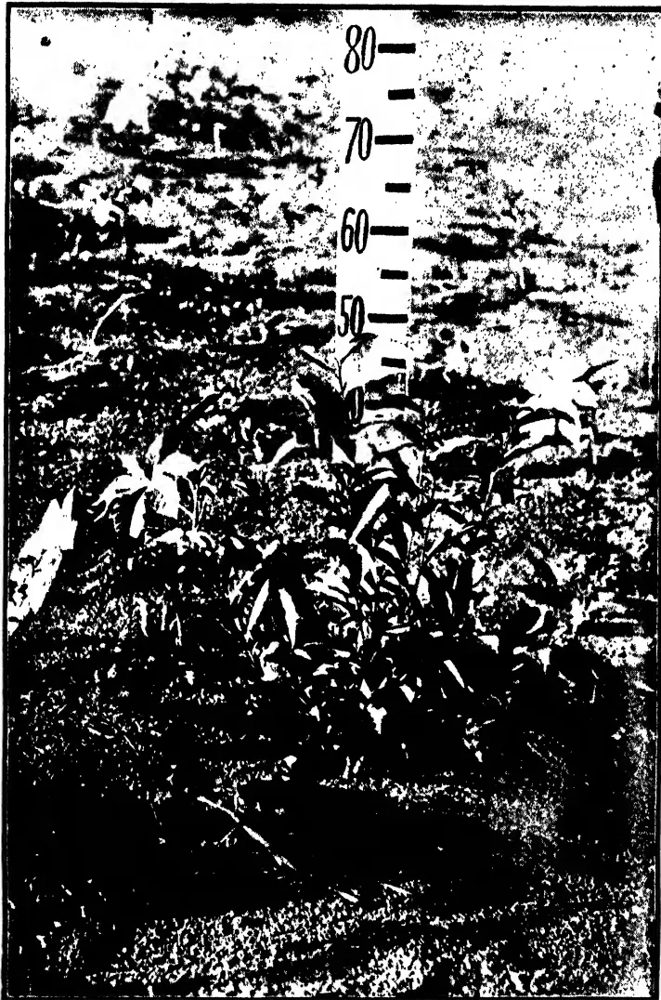
A black and white photograph of a Ricinus plant (castor oil plant) growing in a field. A vertical scale is placed next to the plant, showing markings from 50 to 80. The plant has large, broad leaves and is surrounded by other vegetation. The soil appears poor and the plant's growth is limited.Plate 12.
A two years old plant : the shoot was laid in 1931, separated from the parent plant and transplanted in June 1932, photographed in August, 1933. (Poor soil : a Ricinus planted for shade developed but poorly).
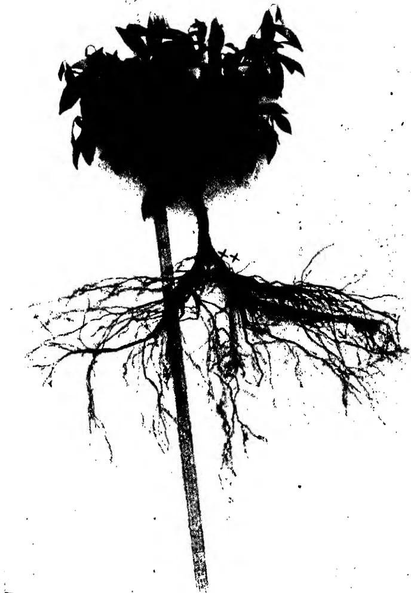
Plate 13.
The root system of a two years old tea bush, grown out of a bow-shaped layer, separated from its parent plant and transplanted in May 1932, dug out and photographed in May 1934.
x. Roots, first produced by the layer.
xx. Roots, produced above the former after the shoot had been separated from the parent plant and transplanted into a deeper hole.
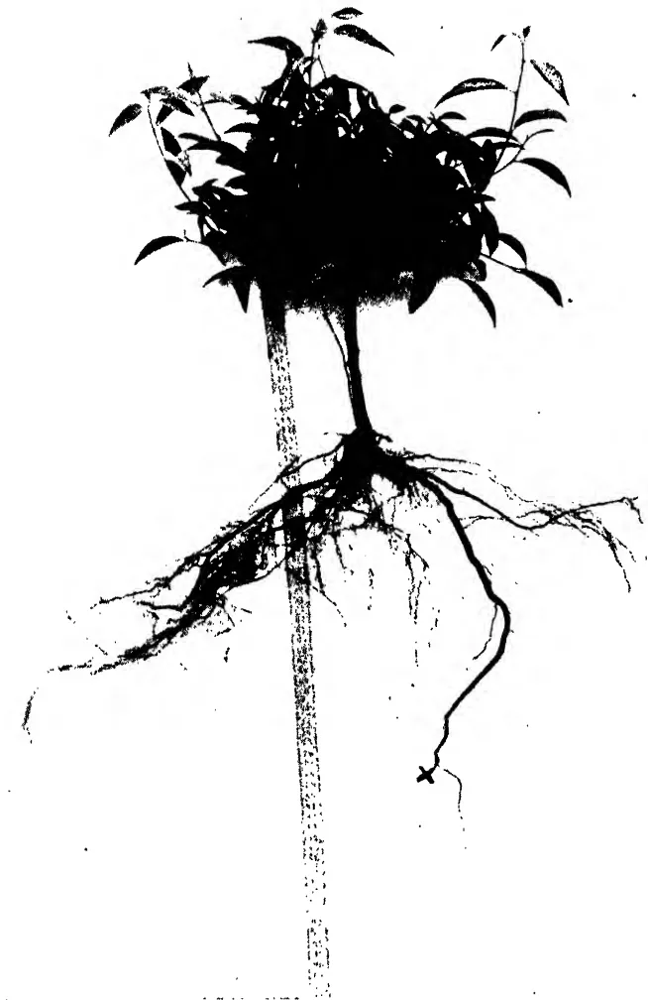
Plate 14.
The root system of a two years old bush, grown out of a wired layer separated from the mother plant and transplanted in May 1932, dug out and photographed in May, 1934. It had possessed a well-developed root system, but fine deep-reaching roots were broken in digging. x.
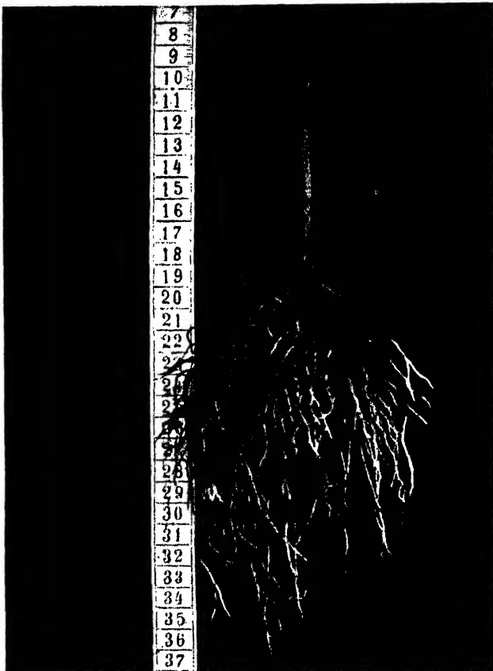
Plate 15.
A straight shoot with numerous roots at its base. This type of root system is obtained by means of ringing, wiring or twisting the shoot.
209As to the high percentage of rooted plants they thought these figures to be unreliable because they did not believe this kind of roots to be lasting and thought that later on both the roots and then the plant would die, especially when separated from the parent plant and transplanted into the field. They used to say: "The second stage of the development of a layer or a cutting, the formation of a constant root, is the critical moment of the work; as yet nobody succeeded in obtaining practical results with the only exception of Formosa."
Both plant physiology and practical horticulture show that obtaining primary roots, which absorb water and the nutritive substances it contains, guarantees the development of roots in case the plant is properly cared for. The cause of the failure of other investigators to obtain a permanent root system is the want of proper care and of favourable soil conditions.
We investigated the development of the root system of vegetatively propagated tea plants in field conditions: our observations showed that primary roots may dry up and die off if the bush is planted into a roughly cultivated soil: between single clods of earth, there remain large spaces, where the air may circulate freely and dry up the soil. In such a soil young tender primary roots die of want of moisture.
Before planting young bushes with such tender roots the soil should be thoroughly prepared, especially that part of the soil which will be in contact with the roots; the soil particles must adhere closely to the roots, therefore the soil should be reduced to powder, then pressed round the roots of the plant and immediately watered. The water washes the soil particles down and makes them adhere to the surface of the roots. In case it cannot be done in the field, the young bushes should be transplanted for one year into nurseries. They may be transplanted into the field only after the formation of a developed root system.
Transplantation is carried out in the same way as in the case of seedlings.
Plates 13 and 14 represent the development of the root system of two years old plants obtained by means of layering. After having been separated from the parent plant, in May, 1932 the one year old shoots were immediately transplanted into the field. In May, 1934 the plants were dug out and photographed.
210(1). Tea may be propagated by every method of layering: (a) Simple mound layering (87-88 per cent.), (b) Simple layering (80-90 per cent.), (c) Mound layering with ringing (81-92 per cent.), (d) Continuous layering (95-100 per cent.), (e) Simple layering with wounding (94-100 per cent.), (f) Layering with wounding and application of potassium permanganate (80-86 per cent.), (g) Dahlem method of layering (85-90 per cent.), (h) Chinese layering (50-70 per cent.), and, (i) Growing shoots out of roots.
(2). Both the northern (Chinese) and the southern (Assam) varieties as well as intermediate forms and hybrids are equally easily propagated either by layer or by shoots, grown out of roots. The age of the laid shoot influences the per cent. of rooting. One year old shoots are best for layering.
(3). The water content of the soil influences the rooting of layers. The nearer it is to the optimum, the higher is the per cent. of rooting and vice versa.
(4). Tea bushes obtained by different methods of layering stand transplantation well and take root easily (94 per cent.)
(5). They are not backward in their growth in comparison with seedlings.
(6). Layering is the cheapest and simplest method of vegetative propagation (in comparison with other methods which are propagated by cuttings and grafting).
(7). Layering may be recommended for obtaining: (a) uniform commercial plantations of best high yielding bushes, (b) plantations of bushes used for further propagation and of seed gardens consisting of definite good varieties, (c) heterogeneous bushes for experimental field or laboratory work.
(1). It may be recommended to use straight shoots with roots at their base (Plate 15) rather than curved shoots with roots along their underground part (Plate 7). Shoots of the first type show a better power of orientation in the soil conditions and develop their roots in the proper direction, while those of the second type waste their energy in producing a great quantity of roots all along the underground part of the shoot.
211Shoots of the first type may be obtained by every method of layering in case they are placed vertically from the base, (the ringed or twisted place), of the underground part (25-30 cm.) up to the tip of the shoot.
(2). One year old shoots for layering should be preferred to older ones.
(3). Of all methods of layering simple mound layering is the cheapest and simplest one.
(4). Ringing, wiring or twisting the shoot stimulates the production of roots and increases the percentage of rooting.
(5). The best bushes, reserved for propagation are pruned in winter or early in spring, before the beginning of the growing period, to the height of 5-10 cm. above the surface of the ground. The same year or the next year in spring the earth is mounded round the newly-produced shoots. In the first case it may be done when the shoots are 20-25 cm. high so as to leave 2-3 leaves above the mound for further growth, later on a second mounding is carried out in order to make the mound 25 cm. high (or the underground part of the shoot 25 cm. long). In autumn or in spring such shoots have produced roots and are ready for transplantation. In the second case the shoots are left without mounding till next spring, when the weak shoots are removed and the earth is mounded round the bush up to the height of 25 cm. from the base of the shoot. Next autumn or spring the shoots may be separated from the parent plant and transplanted into the field. In the second case the whole process takes two years and the best way to obtain planting material for each year is to divide the original bushes into two parts and to prune them alternately; first the one half, and the next year the other. Thus half the bushes produce roots, while the other produce shoots, for the next year's mounding.
A continuous removal of shoots weakens the parent plant, especially when it is done every year, and an intensive manuring, (mineral or organic), is indispensable; especial attention should be paid to nitrogen nutrition of the plants.
(6). In large tea gardens there should be formed plots of best plants reserved for further propagation, which could give material for commercial plantings.
(7). Only shoots with well-developed roots should be transplanted into the field, weaker shoots should be first transplanted into nurseries and later on, after they have developed strong roots, they may be transplanted into the field.
(To be continued)
212A. W. R. JOACHIM, PH.D.,
AGRICULTURAL CHEMIST
DURING the last two years the Department has devoted a good deal of attention to ginger cultivation and curing with a view to making the Island self-supporting in respect of green and dry ginger, and if possible, to creating a small export trade in the latter commodity. This article is therefore written with the object of supplying potential producers with practical information on the processes of ginger curing.
There are two well-known methods of curing ginger: (1) sulphur curing (2) ordinary curing. Sulphur curing has a number of advantages over ordinary curing. The product obtained is much lighter in colour, more plump, and of better keeping quality and fracture than ordinary cured ginger. But with the introduction of legislation in most of the purchasing countries preventing the sale of ginger containing sulphur dioxide, this method is now of very limited application. Last year a thorough investigation of the process was made by the Chemical Division, and a full account given in The Tropical Agriculturist of May, 1933. Samples of sulphured ginger sent to the Imperial Institute for valuation were reported on favourably with regard to appearance, aroma, flavour and pungency, but owing to the prohibition of the sale of sulphured ginger in Great Britain, none of the samples were saleable. It was recommended however, that attempts be made to prepare dried ginger without the use of sulphur, as the variety of ginger grown in Ceylon appeared suitable for the purpose.
Large scale trials were accordingly made this season with the curing of no less than four tons of green ginger by the ordinary process. For curing purposes two varieties of ginger are available in Ceylon. — 'local' ginger which appears to be a degenerated type of Calicut ginger and a variety grown in the
213neighbourhood of Nugegoda and hence spoken of as "Nugegoda ginger", which is a mixture of a Cochin variety and the local type. There is in addition a small quantity of China ginger which is only suitable for preserves or for use as green ginger. The local variety occurs in hands of comparatively small thickness, unlike typical Calicut ginger which has large, plump hands. It has generally numerous fingers which necessitate breaking the ginger into small pieces before curing and make peeling a difficult and expensive item. It is very fibrous, like Calicut ginger, and when peeled is of a pale-cream colour. The typical Cochin ginger has fewer fingers, is much less fibrous and is generally plumper, and when peeled is of a bright canary yellow colour. The Cochin variety from Nugegoda ginger if cured in the proper way gives a plump, light buff-coloured product, of good aroma, flavour and fracture. The local ginger on the other hand gives a thin, much darker coloured and more fibrous product, but otherwise is not different to Cochin ginger. Every attempt should therefore be made, if ginger is to be cured for the foreign market, to grow the former variety, small-scale selections from which are being multiplied by the Agricultural Department.
For ordinary curing it is absolutely essential to have a continuous spell of at least ten days of good sunshine and a plentiful supply of clean water. Normally 7 to 8 days of good weather will be sufficient. Should rain fall on the material in the interval, especially during the first four days, the product becomes quite dark in colour and mildewed and gives a musty odour and flavour. No amount of subsequent washing and drying will improve its appearance and flavour. Ginger curing will therefore be possible only during a very limited period. Generally, the crop planted in March-April is ready for harvesting the following January, and curing should be begun as soon as possible after that when a spell of dry weather is assured. In most ginger growing districts February-March will be found to be a suitable period for the purpose. If a light coloured product is desired, curing should be started as soon as the crop is harvested. It is advisable to harvest only the quantity required for a day's peeling. If for any reason it becomes necessary to harvest the whole crop, the rhizomes should be placed in a well-aired room in small heaps, dry soil being spread over successive layers of ginger. The rhizomes to be cured are put into a tank of water
214and thoroughly cleansed of adhering earth. The water is drained off and the ginger allowed to soak overnight in a fresh supply of clean water. This operation is especially necessary for clean peeled ginger. Next morning the ginger is peeled. A special knife has been devised for the purpose, and is shown in Plate I. It consists of a thin iron blade about half inch broad at the base and tapering to about a tenth of an inch at the tip. In length it is about 4 inches. One face of the blade is flat, while the other has a bevelled edge. The knife as designed scrapes but does not cut the peel, the essential oil which appears to be concentrated just below the skin being thus retained. It has also the advantage of both clockwise and anti-clockwise working.
Peeling may be either rough or clean. Rough peeling consists in the removal of the peel from the broad faces of the rhizome and sometimes from the side face as well. No peeling is done between the fingers. For the local market, rough peeling is all that is necessary. For the English market however, clean peeling is essential. This is a much more difficult and slow task and more expensive. Care should be taken to minimise as much as possible the breaking of the hands when peeling between the fingers. Unless the prices obtained for clean peeled ginger exceed Rs. 35.00 per cwt. it is very doubtful if it will pay to produce such ginger. A woman can ordinarily rough peel about 28 lb. of raw ginger a day. Individuals may peel up to 40 lb. at 30 cts. a day, rough peeling will cost Rs. 7.20 for 6 cwt. of green ginger, the equivalent of 1 cwt. of dry ginger. Good clean peeling, is much more expensive, and it is our experience that not more than 10 lb. per day can be expected from an average peeler. Up to 14 lb. can however be cleaned by expert peelers. The cost of clean peeling a cwt. of dry ginger would work out to about Rs. 20.00.
Immediately the rhizomes are peeled they are put into water and the gummy exudation removed by washing. This is very essential if a light coloured product is to be obtained. The ginger is then transferred to a tank where it is washed in successive changes of clean water and then allowed to soak in water overnight. Washing is one of the most important operations in ginger curing.
Next morning the ginger is again washed in clean water and transferred to bamboo or cement barbecues to sun dry as soon as the mist has lifted. Wherever possible, drying on a slab
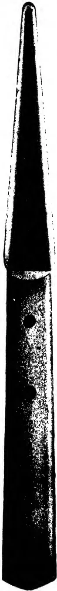
CROSS SECTION
OF THE BLADE
Photo.
L. S. Bertus
Plate I. Ginger Peeling Knife
This image is a blank white page. It contains several small, dark specks which appear to be scanning artifacts or dust particles. There is no text, handwriting, or printed content on the page.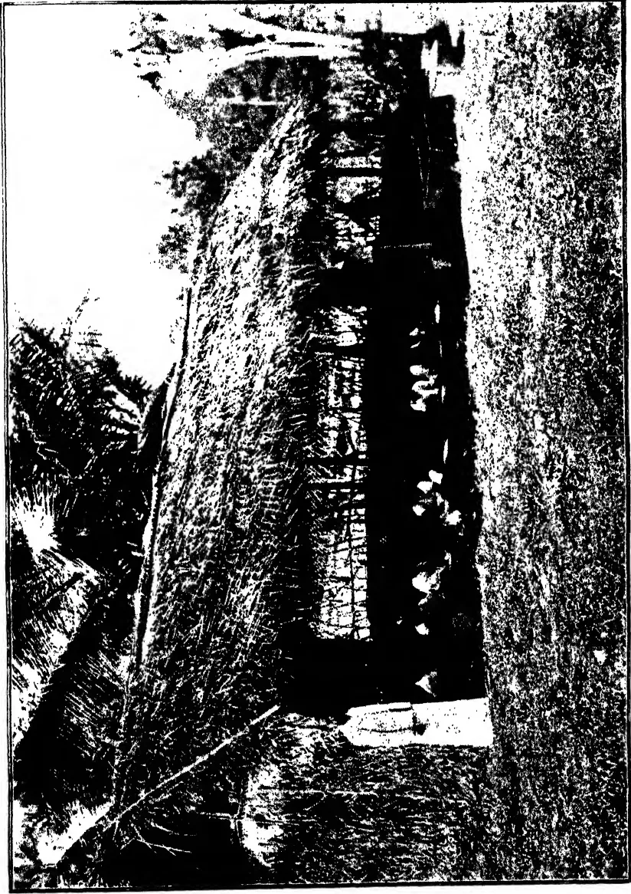
A high-contrast, black and white photograph showing a group of people working in a field, likely peeling and washing ginger. The scene is set outdoors with a fence or structure in the background and trees visible in the distance. The image is oriented horizontally on the page.Photo.
Plate II. The Peeling and Washing of Ginger
L. S. Bertus
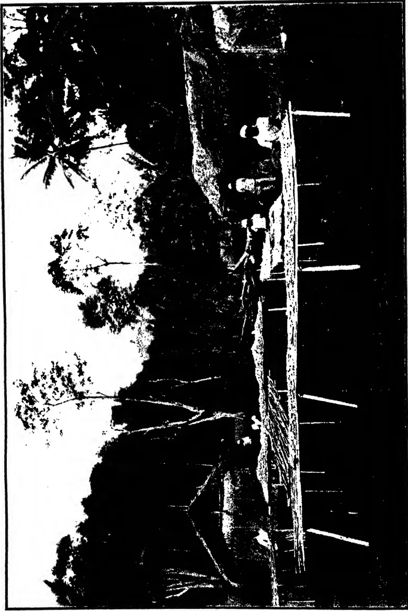
Photo.
Plate III The Drying of Ginger on Bamboo Barbecues
L. S. Bertus
215of rock is advised. An important task in ginger drying is turning. Especially on the first day, every hand must be turned over. A good practice would be to start turning the hands at mid-day. On subsequent days they should be turned twice or thrice, but care should be taken that in handling the ginger is not broken. Drying should proceed for 5 to 6 days accompanied by regular turning, after which time, if the weather has been favourable the rhizomes should be quite dry to the feel. On the sixth or seventh day, the ginger is again well washed in clean water. The second washing improves the colour appreciably and is only required when preparing clean peeled ginger for the foreign market. Drying is continued for 3 or 4 days after the second washing, when the ginger should be ready for bagging. On no condition should bagging be done if the ginger is not thoroughly dry. Good dried ginger will not appear damp to the touch, and would give a sort of ring when lifted and dropped. Even after bagging, it is advisable to expose the ginger periodically to the sun. Unless ginger is thoroughly dried it is very liable to mould attack in storage. The different processes of ginger curing are shown in Plates II and III.
It will be observed that crude peeled dry ginger from India sold in the local markets, has often the appearance of being earth soiled. On enquiries made it is learnt that such ginger is prepared with a definite object viz. prevention from mould attack. It is reported to be prepared by soaking peeled ginger, for an hour or so in a mixture of red earth and water of the consistency of whitewash and then drying. The earth used is understood to be white ant nest earth or a special red clay. The object of this treatment is apparently to give the rhizomes a coating of an adhesive substance which will act as a preventive against mould attack. Clays have the property of adhesiveness and termite nest earth has in addition a quantity of gummy material secreted by these insects. Experiments carried out locally have indicated that termite nest earth is very suitable for the purpose. It has been found that the best stage to soak the ginger in the clay mud is soon after peeling. Such ginger takes a longer time in drying, but it gives a dry, hard final product which does not become damp to the touch even after a spell of rainy weather. This method of curing ginger is, in a way, cheaper than that described, and if it has the advantage claimed
216for it of keeping better, it is one to be advised. But it will not be suitable if the ginger is required for grinding purposes. Ordinary dried ginger has also been soaked in a mud wash and re-dried, but the product is not so satisfactory, the clay coating not being retained to the same extent. From the practical standpoint there would be little advantage in this process, but if by so doing a stock of dry ginger can be prevented from being attacked by mildew, there would be some value in its adoption.
Another modification of the processes of ginger curing is in regard to peeling. In certain parts of India instead of peeling by hand the ginger is treading under foot in tanks after it has been well soaked in water. This entirely eliminates peeling costs, but only the outermost layer of the peel is removed and hence the drying is very slow. It takes from 12 to 15 days to dry ginger locally under these conditions. Further, the rhizomes get broken into small pieces and their marketable value is thus lowered. The practice is not to be recommended for local usage, especially where weather conditions are variable.
Many thanks are due to Mr. H. W. Wegodapola for having carried out the work detailed above under my supervision. To him is due the credit of having devised the peeling knife described in this paper.
217THE finer types of European Grasses may be called a failure in South Africa. There may be just one or two districts such as our Natal "Mist belt," or the moist extreme Eastern Transvaal where such grasses as Italian Ryegrass will succeed well; but these are exceptional districts of comparatively small area, which do not much affect the general result. For the most part they are found quite unsuitable to our climatic conditions.
The chief cause of their failure is the long winter's drought, which very few grasses, other than native species can live through. And even our native grasses become quite dry and useless during the greater part of the winter. The search for suitable grasses has given us Napier fodder, which is not unlike Uba cane, and the two Paspalums, but the greatest discovery of all is Kikuyu, a native of British East Africa. It has been grown in Natal for about 20 years, and has made a great reputation.
In appearance it may be said to resemble the old coast running grass — the broad-leaved type — but it is many times larger and grows to a height of two feet six inches. A field of it is just a mass of soft-leaved, soft-stemmed, succulent food, close and heavy, in which cattle revel. It does not seed, but propagates itself by means of stem-roots, which form at any node on a stem wherever it touches the soil. Some increase occurs also just under the ground from the base of the plant, but these root-suckers (as they may be called, come straight up, and do not ramify underground like Couch Grass. The root system, therefore, will not become weedy or a nuisance.
A Government Botanist has given his opinion that Kikuyu Grass is by far the richest and best of any grasses we have in South Africa, and has been good enough to furnish us with the following comparative analysis of "Kikuyu" and "Lucerne". Comment is needless:
| Moisture | ... | 8.29 | Fat (Ether Extract) | 1.7 | |
| Protein | ... | 12.36 | Crude Fibre | ... | 33.08 |
| Carbohydrates | 35.06 | Ash | ... | 8.42 |
| Moisture | ... | 8.0 | Fat (Ether Extract) | 2.4 | |
| Protein | ... | 15.5 | Crude Fibre | 34.8 | |
| Carbohydrates | 30.06 | Ash | ... | 8.9 |
* From the South African Sugar Journal, Vol. 18, No. 7, July 31, 1934.
218Italian Ryegrass Hay.
| Moisture | ... | 8.5 | Fat (Ether Extract) | 1.7 | |
| Protein | ... | 7.5 | Crude Fibre | ... | 30.5 |
| Carbohydrates | . | 45.0 | Ash | ... | 6.9 |
It is evident therefore, that in Kikuyu Grass we have a first-grade food, yielding a large quantity per acre, and well relished by all stock.
It is easy to cut for hay for there are no hard seed stems, and it cures well.
It has been known to withstand nearly 8 degrees of frost, and is as hardy as Paspalum. Where it is gradually acclimatized on the higher veld it will no doubt stand more than this.
As far as drought-resistance is concerned a writer's experience speaks volumes. A block planted on the day following the last rain, about April 6th, rooted well, and, although there was no rain after that date until early in September, it remained green all the time, and continued to grow. Just at the end of the period it began to look wilted — and no wonder, after five months without water.
Propagation is by means of root division. The life of the plant is so tenacious that every bit grows. In one block of 10,000 plants every bit was grown from pieces of running stem, unrooted. This block was well watered — planted out in early August. When a quantity is available for field culture it may be divided into small roots, and these planted very speedily after the plough. If a three-furrow plough is used it would be planted in each third furrow. If roots are planted three or four feet apart they will easily fill the whole space within three months, during the summer weather.
A boy should follow the planting boy to firm down the soil round the plants with his feet. In this way the planting would be as quick as the ploughing, and three acres per day could be put in with the plough team and two extra boys. The season for planting would naturally be from October until about the end of January — not later than that.
For grazing purposes on coast lands, particularly where the land is of a sandy nature, nothing could be better than this grass.
In their book "Field Crops in South Africa", Messrs. Leppan & Bosman say:
Although Kikuyu under very favourable conditions will occasionally make a sufficiently heavy and upright growth to warrant its being cut for hay, it is essentially a pasture grass.
Description.—It is a perennial grass, making its chief growth in summer. The plant is normally decumbent and has numerous thick rhizomes and runners, by means of which it soon establishes itself in the surrounding soil. On rich soil well supplied with moisture, an upright
219growth of 3 to 4 feet will sometimes be made. If required for hay, this should be cut before lodging, which takes place very readily. Although it apparently does not set seed in the Union — the growing season being insufficiently long it frequently reaches the flowering stage.
It is best suited to parts having a warm growing season and a summer rainfall, and has been unfavourably reported on in parts having less than 10 inches of rainfall and in colder parts of high altitude. Nevertheless, it is probably the most drought resistant of the grasses commonly cultivated in South Africa. It remains green until severe frosts occur, and commences to grow earlier in the spring than the veld grasses. In the Eastern Province and in Zululand it is said to remain green throughout the year, and in parts of Natal it seems to become naturalised.
Soils.—Kikuyu will do well on moist soils. At the Dryland Station at Pretoria it has given a growth, on a poor sandy soil, of three feet in height. While it gives very good results on a poor sandy soil, and in some parts often having less than 20 inches of rainfall, the optimum conditions for its growth are found on rich moist soils. On poor soils it responds readily to kraal manure, and doubtless to phosphates where the latter are deficient.
While recent analyses show a variable protein content, in the absence of digestion trials it must be looked upon as very much more nutritious than teff or Boer manna and nearly equal to lucerne. Judging from its chemical analysis, it is outstandingly the most nutritious of grasses grown in South Africa. The experience of farmers who have grown Kikuyu on a large scale bears out this opinion as well.
It is apparently very palatable, as it is eagerly eaten by all classes of stock and is pastured in preference to green barley or rye. It is naturally adapted to grazing, as it is not injured by close grazing and stands tramping well.
It is propagated vegetatively by planting cuttings of culms or rhizomes, which are characteristic for the long time — from four to six weeks — during which they remain capable of growing after having been cut or dug up. Good soil preparation is necessary. One of the most successful methods of planting is to throw the cuttings or rhizomes into every third furrow opened by a single-furrow plough, and then cover lightly with the subsequent furrow. This should be done during the rainy season. If planted in November or December the ground will often be entirely covered by winter. It is quick spreading and very aggressive, more so than quick, when grown in competition with other grasses. It forms a heavy matted growth in a few months.
As its growth is very vigorous, it usually becomes "sodbound" about the fourth year after planting. To remedy this condition it is necessary to plough it over every four years, after which it soon re-establishes itself. No further cultivation is necessary.
220Because of its heavy growth, it is exhaustive on soils, and where economically possible should be fertilized with phosphates and with available kraal or stable manure. From 10 to 20 bags of cuttings or rhizomes are required to plant an acre.
General.—Because of the longevity of the rhizomes or runners when ploughed or dug up, it is likely to prove a troublesome weed, and for that reason should not be planted on land required subsequently for other crops.
It is fast becoming the most popular lawn grass in South Africa, because it remains green longer than Germiston or Bermuda grasses, and because of the better colour. However, it soon invades flower beds, and should not be used in close proximity to these.
In rich soil having plenty of moisture it is valuable as a summer soiling crop.
It has proved useful as a soil binder on dam walls, and also on loose sandy soil, and in preventing erosion in dongas. Further, it can be recommended as a grass for planting in poultry runs; fowls seem very fond of the leaves. Owing to its aggressive nature, it can withstand the ravages of the fowls scratching, etc.
Diseases and Pests.—No serious diseases or pests have so far been reported.
221A few years ago, Russian workers under the leadership of Lyssenko reported that by certain pre-treatment of the seed of crop plants they were able to obtain markedly increased earliness. The method, known as vernalization, was reputed to be economic on a commercial scale, and great claims were made for it. It meant that certain varieties of crops could be grown to maturity in short-season areas in which, under old methods, it was impossible.
If similar results could be obtained under Australian conditions, they would be of great value. For example, certain of the better varieties of maize could be grown in the short-season districts, where under normal conditions they do not mature, and increased yields could be obtained; tomatoes and potatoes could be marketed earlier; and so forth. For breeding work, especially with wheat, it would facilitate crossing of varieties of different maturity.
In view of this, it was decided to try the method at Canberra and the following crops were used: Wheat — varieties, "Early Bird," "Waratah", "Cleveland"; maize, tomato, soybeans, field peas, Sudan grass, and Japanese millet.
In all cases, the methods outlined by Whyte and Hudson were followed. In addition to the standard treatment, others were carried out as follows: wheat was treated with the same quantity of water as for vernalization, incubated at 12.5°C for 24 hours, and sown immediately with the vernalized and untreated seed. With the remaining crops an additional treatment was provided by doubling the period of vernalization. In the case of tomatoes, the seed was placed on blotting paper under conditions favourable to germination for 5 days, and then vernalized at 25°C for 12 and 24 days.
After pre-treatment was completed, the seed was sown under comparable field conditions to determine the results.
In all crops except one, there was no significant difference between the untreated and the treated (vernalized for short or long period or "germinated for 24 hours") for either maturity or yield. The only significant difference was in the case of wheat in the variety "Early Bird". In this case, the "germinated for 24 hours" was significantly greater than the untreated and the vernalized for yield. The difference was demonstrated as being due to a greater ear number per plot. The result is not important, however, since the experiment was not sown until 4th July, which is very late. "Early Bird" is a very early variety and the differences can be attributed to the fact that the plants "germinated for 24 hours" had a good start, and those under the other treatments were not able to catch up. With "Waratah" and "Cleveland," both later than "Early Bird", the differences were not significant.
From these experiments, it is therefore concluded that, under Canberra conditions, vernalization according to the methods outlined does not give any significant difference over the untreated.
* Contributed by J. R. A. McMillan, C. S. Christian, and K. Loftus Hills in the Journal of the Council for Scientific and Industrial Research, Volume 7, Number 3, August, 1934.
222DHALL is largely consumed by vegetarians in different forms either as such or in combination with vegetables etc. Red gram (Cajanus indicus) from which dhall is prepared occupied 28, 88, 98 acres in this Presidency according to season and crop report for 1932-33. Out of this, North Arcot district had 21,958 acres, of which Tirupattur taluk, alone had 6996 acres. Other important districts where red gram is cultivated on a large extent, are in order of rank, Trichinopoly, Bellary, Anantapur, Kurnool, Vizagapatam, Guntur, Ganjam, Salem and Coimbatore. North Arcot district comes fifth in the above list based on acreage. Commercially, Tirupattur produce has a good reputation for its quality. It is therefore proposed to give a short account of how it is prepared for the market.
Red gram is grown in this taluk purely as a rain-fed crop, in red loamy soils mixed either with cumbu or groundnut. Sowing alone with cumbu is the common practice and this mixture occupies 90 per cent. of the total area in the taluk. When raised along with cumbu it is dibbled behind a country plough in lines 3 to 6 feet apart; while with groundnut the distance between the lines varies from 10 to 25 feet, the reason being that the groundnut crop should be free from the shade of this crop.
By way of after-cultivation nothing is done to the crop, but when grown along with groundnut, the soil is dug for harvesting groundnut and this serves as a sort of after-cultivation. In some places where it is sown with cumbu, the land is reploughed and horse gram sown in September. The ploughing up of the field serves as a sort of after-cultivation.
Red gram sown during July-August will be ready for harvest in January. The crop is harvested by cutting the stalks close to the ground; the stalks are then gathered and left in the field for a day or two till they are quite dry and then removed to the threshing floor in the early hours of the morning, to prevent shedding of pods. Threshing is done by beating stalks with pods against bamboo thatties. The gram fallen on the ground is winnowed and cleaned. The immature pods that still stick to the stalks are beaten with sticks and gram collected. In a good year with a fair average rainfall, well distributed, an acre of red gram raised along with cumbu will give about 200 Madras measures of gram.
* By Md. Abbas, B.Sc. Ag., Agricultural Demonstrator, Tirupattur, in The Madras Agricultural Journal, Vol. XXII, No. 7, July 1934.
223Generally merchants purchase gram and prepare dhall, but in a very few cases dhall is prepared by ryots themselves, either for the consumption or for sale. There are two methods of preparing dhall from gram;
(a) Large scale or commercial method. (b) Small scale or ordinary method.
(a) The Commercial Method.—Red gram is put in vats constructed of brick and mortar or tubs and allowed to soak in water for about 6 hours. It is then removed and well mixed with wet red earth in the proportion of 20:1, i.e., 20 parts of gram to one part of earth. The mixture is heaped and allowed to remain overnight. In the morning the heap is disturbed and the stuff evenly spread on the ground for thorough drying. If a single drying is not sufficient it is dried again. When it is completely dried it is again mixed with a thin solution of red earth, heaped up and left overnight. In the morning it is dried completely. The gram is then cleaned of stones, dirt etc., by sieving and winnowing and broken in stone mills generally of 18 inches in diameter and 4 inches thick. The husk is winnowed, broken pieces separated and marketable dhall is obtained.
(b) Ordinary Method.—This method is slightly different, usually adopted by ryots for preparing dhall for their home consumption. This process involves much labour and time and the dhall obtained is of better quality and tastes well compared with the stuff prepared by the previous method. Red earth is made into a thin paste and poured over the heaped up red gram in small quantities at intervals of 45 minutes to one hour for a full day, mixed well with the gram and allowed to remain overnight. The heap is disturbed next morning and the gram well dried. Further process is the same as detailed in the commercial method.
In the commercial method more water soaks into the gram, makes it bulge, and when dried, the gram shrinks, becomes light and assumes a boat shape with a depression in the middle. In the ordinary method just the required quantity of water is given and therefore the dhall does not shrink but weighs more.
In both the cases the process can be termed as a kind of malting. Red gram is allowed to absorb water, germination is encouraged and then suddenly cut off by drying the stuff. Though the method of preparation is the same in all the villages of the taluk yet the produce from Pallavalli, Elagiri, and Vellakuttai villages is preferred in spite of the fact that there is only one variety of gram that is grown all over the tract. That it gives different tastes if grown in different places shows that variations in soil conditions have a lot to do in determining the quality of dhall.
224ONE of the outstanding developments in Agriculture during the past few years has been the study of plants in relation to their environment from new angles. The old definition of the word environment — "the conditions influencing development or growth" — apply precisely to these recent studies, and the results of the investigations have necessitated the coining of several new words. Perhaps the best-known of these are "photoperiodism" and "vernalization." In order to appreciate what these words imply some explanation may be necessary.
Green plants owe their characteristic colour to the chlorophyll they contain. With the aid of this substance, the leaves and other green parts of plants, by utilising sunlight, are able to elaborate starch, sugar and other organic substances from the minute quantity of carbon dioxide contained in the air. It is hardly impossible to over-estimate the importance of this process, for without it all forms of life would cease to exist.
During the countless generations which have gone before, plants have definitely accustomed themselves to the light and climatic conditions under which they normally grow, and the length of day is one of the most important factors to which plants have to become accustomed. During night-time, the elaboration of carbohydrates continues, and under normal conditions there is a definite balance between the day and night functions of the plant which regulates not only the growth of the plant but also its reproductive function. Recent investigations have shown that the majority of plants fall readily into one or three groups:
The word "photoperiodism" is, therefore, a term applied to the length of day requirements which are found to be normally necessary for the optimum growth conditions of a plant. The importance of this discovery is best illustrated by attempting to introduce a crop which normally grows under different conditions from those which prevail in the country in which it is proposed to grow it. We are all well acquainted with the statement that in regard to such crops it is necessary to import fresh seed every third or fourth season, otherwise the crop deteriorates. The results of recent experiments would indicate, however, that this is not the correct interpretation, but that an attempt should be made to secure a strain which is indifferent to, or has definitely adapted itself to the new conditions. It is obvious that this could not be anticipated in one or two seasons, but would probably require a number of years before it was sufficiently acclimatised to enable suitable strains to be selected.
* Extracted from The Rhodesia Agricultural Journal, Vol. XXXI, No. 4, April, 1934.
225It has been found that in addition to the requirements of a definite length of day, climatic conditions also play a most important part, and it has been found possible, by applying artificial conditions during part of the life of a plant, to affect the ultimate growth in a most remarkable manner. The most important work in regard to this question was carried out at the Odessa Plant Breeding Station by Lyssenko in 1931, and it was from these experiments that the word "vernalization" arose. In this case the original experiments aimed at shortening the time necessary for the plant to pass through all the stages of its life-cycle to produce flowers and seed. It was found that if the necessary adjusting conditions were applied during the young seedling stage, while the plant is living on the food stored in the seed, the plants obtained from such seed could then be grown under the new conditions exactly as if the conditions applied to the germinating seed were being continued. The process of vernalization is therefore the pre-treatment of seed to expose it to the conditions necessary for transition to the reproductive stage.
In the case of tropical and sub-tropical plants, where short days are necessary for normal seed-production to take place, it was found that by subjecting germinating seed to suitable conditions of humidity, temperature, aeration and darkness, such seed would then produce plants which would flower and set fruit even when grown under conditions of continuous illumination. It should be realised, therefore, that the process of vernalization may have a most important bearing on the future production of crops, and that this process, coupled with suitably controlled growing conditions, may make it possible to grow any variety of plant under what would have appeared previously to be abnormal conditions.
226THE present disastrous fall in prices is the result of a combination of factors affecting a number of related industries; these factors cover a wide range of geographical and climatic conditions. The products concerned comprise not only coconut, palm and palm kernel oils, but also whale oil, soya bean oil, cotton seed oil, groundnut oil, olive oil and tallow, together with a number of other oils of lesser importance; the production of dairy butter and lard also has an important bearing on the situation.
All these oils are extensively used in the manufacture of margarine, lard substitutes, and cooking and edible oils; they are also employed in the manufacture of soap and toilet preparations, and on the condition of these industries the market for them depends. Moreover, margarine and lard substitutes enter into competition with butter and lard, so that any marked increase of production and corresponding decrease of price in the case of the latter will lead to decreased consumption of the substitute products, because domestic consumers prefer the genuine article provided it is within their means.
Owing to scientific advances it is now frequently possible to substitute one oil for another in manufacturing processes. Consequently, manufacturers have a wide range of choice in their raw materials and are able to take advantage of marked lowering in price of any of the more important vegetable or animal oils and fats by changing their formulae and their purchases to suit market conditions. It is seen, therefore, that the raw materials are closely inter-connected, and over-production of any one may seriously affect consumption in any other, or all of the others.
There has been greatly increased production in practically all of these raw materials, and in several there is serious over-production. It seems not improbable that the total surplus may approximate to about one year's normal consumption.
* The following is a portion of an Abstract of the Report of the Vegetable Oil Committee appointed by H. E. the Governor of the Straits Settlements and High Commissioner for the Malay States on 21st April, 1934, and under the Chairmanship of Dr. H. A. Tempany, C.B.E., Director of Agriculture, Federated Malay States and Straits Settlements. The terms of reference were: "To investigate and report on the present economic condition of the coconut and other vegetable oil-producing industries and to make recommendations." From The Malayan Agricultural Journal, Vol. XXII, No. 9, September, 1934.
227Over-production dates back to the years succeeding the War, when prices for vegetable oils and fats rose to unprecedented figures. Consequently, all branches of the edible oil industry apparently offered attractive openings for capital and great expansion of the areas planted under oil crops therefore followed. Concurrently, increased capital was introduced into certain industries, notably the whaling and the soya bean industries, resulting in greatly increased supplies of these oils being placed on the world's markets.
On the other hand, there has been a steady decline in the consumption of margarine and probably, to a less extent, of soap. This has been accompanied by a steady increase in the production of butter which is now coming on to the world market in large quantities at prices which compete with margarine.
A further factor which has profoundly influenced the situation is general instability coupled with lessened purchasing power.
The present world-wide move towards economic nationalism has also considerably affected the position. As a result of the latter, Governments all over the world are vying with one another in fostering the production of such oils and fats as can be produced within their own boundaries. As a part of the campaign, higher and higher tariff barriers are being erected against foreign produce, quota systems are being introduced and in some cases, complete prohibition of the entry of certain fats has also been effected.
In the British Empire, under the Ottawa agreements and the British Import Duties Act of 1932, coconut, palm oil and kernels obtain a preference varying in different countries, which in the Report are set forth in some detail.
In France, vegetable oil imports are subject to a quota restriction; in Germany the importation of oils and fats is a Government monopoly and the imports allowed were nominally reduced in 1933 to 50 per cent. of imports in 1932. Quota restrictions on the importations of certain vegetable oils, including coconut oil, are also in force in Italy, Spain, Switzerland, Denmark, Czechoslovakia and Austria.
The position in the United States is the most disturbing of all, inasmuch as from 11th May, 1934, a processing tax has been imposed which has the effect of raising the duty by 3 cents a pound on imported foreign coconut and palm oils, the total duty becoming 5 cents per lb. on coconut oil and 3 cents per lb. on palm oil, i.e., £22.4.0. per ton on coconut oil and £13.9.0 per ton on palm oil (copra being taxed proportionately to its oil content).
The immediate outlook for the oil-producing industries is likely to be extremely difficult for some time to come; there appears to be little likelihood of an early recovery in prices, although in a situation so complex, the possibility of recovery and of expansion in the consumption of certain by-products must not be overlooked. So far as can be seen, however, recovery is more likely to take place by the elimination or reduction of certain sources of supply; it is also possible that the position may become worse before improvement sets in.
228The remedy of artificial restriction of production is obviously inapplicable to the relief of the coconut and palm oil industries. Apart altogether from special difficulties in relation to these industries which would be formidable, if not insuperable, owing to the large proportion of native producers and the geographical distribution of these crops, it would also be necessary for effective control to regulate the output of all related oils and fats. Unless this could be achieved, limitation of production in the case of one or two products would merely lead to increased production of others.
It is conceivable, however, that some degree of regulation of further planting might be feasible, combined with some system of Imperial and International agreement for the admission on a quota basis of various oils and fats into consuming countries. In any event, it seems probable that only the most efficient and the cheapest producers are likely to survive under present conditions.
Coconut oil and palm kernel oil are principally used for the manufacture of margarine and soap, while glycerine is an important by-product. In the United States, prior to the imposition of the new processing tax, from 55 to 60 per cent. of the total consumption of these oils entered into soap, 25 to 30 per cent. into margarine and from 10 to 15 per cent. into other food.
Palm oil is used mainly in soap making, but an important addition is its use as a flux in the manufacture of tin plate, for which purpose nearly 7,000 tons were consumed annually in the United States. It is also used to a minor degree in margarine making.
Coconut oil is used in the margarine industry as a principal ingredient of vegetable oil margarine and no other oil which has been tried on a commercial scale has proved as satisfactory in making this type of margarine. In the United States, vegetable oil margarine is practically exclusively manufactured; elsewhere than in the United States, however, vegetable oils used in margarine manufacture have suffered from the severe competition of whale oil since, in Europe, hardened and refined whale oil is a major constituent of margarine.
Whale oil production is now in the region of 350,000 tons per annum. The increase is due primarily to the exploitation of the Antarctic waters and to modern methods of whale catching. Norway produces about half the world supply of whale oil, and Great Britain and British Possessions produce the next largest quantity.
The production of soya bean oil has also greatly increased of recent years and it has become a serious competitor with coconut oil in margarine making in Europe. The chief supplies are derived from Manchuria.
Before the art of refining, deodorising and hardening oils was as well understood as at present, some difficulty was experienced in utilising whale and soya bean oils, but now, taste and smell can be completely removed and a hard fat can be obtained.
229The world acreage under coconuts is not accurately known, but a fairly reliable estimate in 1930 placed the area at about million acres, as compared with million acres in 1921. British Empire countries account for slightly more than half the world acreage. Some part of the new acreage has not yet come into bearing, while other areas are not yet in full bearing, hence the supply of coconut products should tend to increase for some years to come. The bulk of the production is in the hands of small-holders; large coconut estates probably do not account for more than 10 per cent. of the total. The world production of coconuts, in terms of copra, may be estimated at about 3 million tons in 1929, the peak year, aggregate exports from producing areas in terms of copra amounted to only 1.7 million tons or under 60 per cent. of the estimated total production. It therefore appears that over 40 per cent. of the total production is consumed in the countries of origin.
The principal products of the industry are copra, coconut oil, fresh nuts, shredded and desiccated coconut together with coconut cake and meal, coir, arrack, toddy and shell by-products. Of these products, copra is, by far, the most important, although in recent years the manufacture of coconut oil in countries of production has increased considerably.
The net exports of copra from the principal producing countries in 1930 were 1,033,000 tons, of which over 401,000 tons were from the British Empire. The net exports of coconut oil in 1933 are estimated at 230,000 tons, of which 70,000 tons were derived from the British Empire.
Of the total world supply of copra in 1930, 35.7 per cent. was from Netherlands India, 15.1 per cent. from the British Southsea Islands, 16.5 per cent. from the Philippine Islands, 9.8 per cent. from Malaya, 8.7 per cent. from Ceylon, and 14.2 per cent. from various other sources. Of coconut oil exports, 73.6 per cent. was from the Philippine Islands, 21.8 per cent. from Ceylon and 4.5 per cent. from Malaya.
Although half the total area of coconuts is in the British Empire, Empire produce only comprises about one-third of the total exports from producing countries. This is due to the fact that India, which possesses the largest area under the crop, now exports no coconut products, and since 1914 has been an importing country.
The principal copra importing countries in 1933 were: United States of America 295,032 tons, France 196,644 tons, Germany 121,181 tons, United Kingdom 102,095 tons.
Before the war, Germany was the principal importer of copra with France, second. Since the war, however, the United States has been, by far, the largest importer, while the United Kingdom has also largely increased its imports of copra in recent years. In addition to imports
230of copra for crushing, a number of countries import coconut oil both from copra-producing areas and also from copra-crushing countries outside these areas.
The price of copra both before the War and in the earlier years of the War was subject to substantial fluctuation; between January, 1911 and July, 1914, the average monthly price c.i.f. London for fair merchantable sundried Singapore copra lay between £21.2.6. and £31.2.9. During the War, prices rose to £45.15.0. in November, 1917. No further change occurred until after the war, as prices of oil seeds were regulated until March, 1919, when the control was removed and the price fell to £33.10.0. Thereafter, the price again rapidly rose, the peak being reached in February, 1920, with an average of £69.10.0 per ton. Thereafter, the price sagged, until at the present time the lowest level recorded has been reached at £9.10.0 per ton. Prices for coconut oil have followed a somewhat similar course.
The quality of copra varies considerably according to the degree of care exercised in its preparation. Well-prepared copra is white, of low moisture content and hard; it should be free from dirt, moulds and smoke and should contain from 4 to 6 per cent. of moisture and not less than 65 per cent. of oil. Well-prepared copra is less liable to mould attack and insect attack than low grade copra; the presence of excessive moisture conduces to the growth of mould which, in turn, favours the attack of insects, both leading to material loss in weight in transit, not attributable to moisture loss alone.
Generally, copra is classified according to its country of origin and is graded into two qualities. The higher quality is known as f.m.s. (fair merchantable sundried) although the term "sundried" does not necessarily describe the method of preparation — and is used as a trade description — and f.m. (fair merchantable).
The recognised order of merit of copra produced by various countries is shewn in a table. The first ten places are for the f.m.s. grade from Malabar (f.m.g.w.s.)* Ceylon, Seychelles, Mauritius, West Indies, West Africa, Java, Straits, Dutch Indies, Samoa (Plantation). Ceylon f.m.s. commands a premium of 5 per cent. over Straits; Straits f.m.s. 15 per cent. over Southseas f.m.s., and 17 per cent. over Philippine f.m.s.; Straits Sundried commands .21 per cent. premium over Straits Mixed.
Copra is employed exclusively for the manufacture of coconut oil, the quality of which depends on the quality of the copra crushed. Good copra produces an oil with a minimum amount of free fatty acid, suitable, when refined, for edible purposes, whereas oil expressed from lower grade copra is mostly used for soap making.
* "Fair merchantable good white sundried." The term "sundried" and "kiln-dried" are terms of quality and do not necessarily indicate the method of manufacture.
231The highest grade of copra was formerly that coming from the Malabar coast of India, but this is now consumed in the country of origin. The second place is held by Ceylon copra, but this is also coming on the markets in decreasing quantities, largely owing to the fact that India appears to be taking more and more of the Ceylon supplies.
Straits f.m.s. copra formerly ranked above copra from Netherlands India, but during the past two years the position has become reversed and f.m.s. Java copra is now graded higher than Straits copra. Southsea Islands copra, which is one of the largest sources of supply, is definitely of low grade.
The general indications are that, in the existing depressed condition of the market, the demand for high grade copra is increasing.
Owing to the price grouping of copra according to the country of origin, it is difficult for any improvements in market quality effected by producers to meet with an immediate response of an enhanced price; this is said to be due to the fact that little interest is taken by buyers in individual consignments, although cases exist where estates, which have established a reputation for turning out high quality copra, can command a steady premium for their produce. On the other hand, a general upgrading of the quality of copra shipped from any country seems likely, in the long run, to meet with a better market demand.
Concerning the future outlook of the market, it seems problematic whether, at prevailing low prices, shippers can possibly maintain the present high rate of exports. Many estates unfavourably situated as regards cost of transport can only work at a loss and it is therefore doubtful whether they will continue to collect the nuts under present circumstances.
For the time being, it may be expected that the Philippine producers will continue to compete for the European business, but the possibility is not excluded that the present record crop may be followed by a smaller production next season.
As will be observed, there is unfortunately no improvement in sight in the price of copra. As for other oilseeds, visible supplies are plentiful, and with the existing low price of butter, the value of edible fats can hardly improve to any considerable extent. Therefore, it will only be a general improvement in world trade conditions, or an automatic drop in copra shipments, which can lead to higher prices for this article.
The principal markets have hitherto been on the Continent of Europe and in the United States of America. Restrictions on imports in the former area and the heavy processing tax recently introduced in America, hamper and restrict trade in copra. The American legislation may divert a large part of the enormous Philippine supplies to European and other markets.
232Of the total world exports, about 40 per cent. is derived from the British Empire. In view of this fact, it is suggested that representations be made asking for preference and protection of Empire copra and coconut oil against the three serious competitors of coconut oil, which are wholly or in considerable part produced from foreign sources of supply, namely: soya beans, whale oil and cotton seed, which are at present admitted to the United Kingdom duty free.
It is suggested that the Imperial Government might consider the possibility of requiring that a fixed minimum percentage of coconut oil must be included in margarine produced and/or sold in the United Kingdom. Further, it is suggested that the Imperial Government should be invited to negotiate for the inclusion of British Empire coconut oil in the quotas for importation of vegetable oils and fats which have been established in various countries.
233"(Citrus) Orange and Lemon Culture in India", by D. E. Lowrie —
Bombay: Times of India Press, 1934. Price Rs. 1 As. 12.
IN this short treatise on Orange and Lemon culture in India the author brings to the fore many useful points of utility to the grower.
The great future of the fruit growing industry of India is stressed as is the demand for better and more scientific attention than has hitherto been applied to this branch of agriculture.
The Nagpur Santara orange (Mandarin) is considered the best of the present varieties grown in India, the fruits varying from inches, to inches, a golden orange in colour, loose skinned and having two crops a year, the main crop from November to February, and a smaller crop in March to April. The second crop forms a tighter skin and is better commercially, as such fruits travel better and can be despatched over considerable distances. This variety with a flowering season in September-October and fruiting season in March-April should coincide very suitably with Ceylon conditions in the semi-dry areas.
The Sylhet is recommended as best at some elevations and attains a deep orange colour, and sweet acid flavour.
The Washington Navel and similar tight skinned varieties of orange as the Valencia and Jaffa are grown in various parts of India and as is the case in Ceylon these do best in the cooler elevations and prefer cooler conditions than the Nagpur Mandarins and Limes.
Grapefruit appears to be receiving attention by growers in the Punjab but little information as to the extent of the cultivation of this valuable fruit is given.
Localities with a rich loam, or any good soil with plenty of humus is recommended, combined with good drainage, good windbreaks and a good and serviceable water supply. Soils of black alkali or carbonate of soda are prejudicial to good cultivation and should be avoided and the establishment of orchards where means of communication and transport are good is another point strongly stressed.
Budding on the T principle is recommended for oranges and layering for limes. In Ceylon with its heavier rainfall the inverted T has been found the best method, the position of the cut tending to throw off any water liable to penetrate the bandage. The Jamberee (a very near relative of our local Nataran and rough skinned lemon) with the sweet lime are in India recommended as the best rootstocks on which to bud. The sweet lime seems best suited to the Nagpur orange whilst the Jamberee stock is preferred for the tight skinned oranges such as Washington Navel.
234No reference is made to the Pumelo as a stock nor to the Sour or Seville orange on which 75 per cent. of the world's orange trees are budded.
In orchard planting the thorough preparation of the ground is advocated before planting, with the incorporation of 20 loads of manure per acre. The various systems of planting and the numbers required per acre are also dealt with. In planting out, the spreading out of the roots is particularly stressed, a point often neglected by the grower. Holes of ample size are recommended with planting distances of 20 feet apart for the Nagpur and other oranges and 15 feet apart for limes and lemons.
Particular attention is directed to the care of the orchard during the first few years and dressings of well-decayed stable manure with regular watering as required, by irrigation or otherwise. A main stem of 2 to feet with an occasional light pruning of the head to form good shapes, and catch crops between the rows for the first three years are other principles advocated.
Useful notes on packing, transport, the common diseases and pests, and Citrus bi-products afford much interest in the treatise.—T. H. P.
235THE second meeting of the Central Board of Agriculture was held in the Board-room of the Department of Agriculture, Peradeniya, at 2.30 p.m. on Thursday, September 13th, 1934.
Dr. W. Youngman (Director of Agriculture) presided, and the following members were present:
Gate Mudaliyar A. E. Rajapakse, M.S.C., Messrs. C. Harrison-Jones (Government Agent, N.W.P.), B. G. Meaden (Director of Irrigation), A. B. Lushington (Conservator of Forests), M. Crawford (Government Veterinary Surgeon); B. M. Selwyn (Chairman, Planters' Association of Ceylon), R. Sri Pathmanathan (Chairman, Low-Country Products Association), James Forbes (Jnr.) (Chairman, Tea Research Board), T. Eden (Tea Research Institute), T. E. H. O'Brien (Rubber Research Scheme), F. P. Jepson (Controller of Plant Pests), M. Park (Mycologist), Dr. A. W. R. Joachim (Agricultural Chemist), Dr. J. C. Haigh (Economic Botanist); Mudaliyars S. Muttutamby and N. Wickremaratne, Mr. S. M. K. Madukande, Dissawa, and Messrs. C. Arulambalam, L. G. Byatt, F. C. Charnaud, Wace de Niese, L. W. A. de Soysa, G. Bruce Foote, R. P. Gaddum, H. D. Garrick, John Horsfall, M. Jayawickreme, E. E. Megget, Graham Pandittesekere, Gordon Pyper, Rolf Smerdon, C. Huntley Wilkinson, and W. C. Lester-Smith (Secretary).
The following visitors were also present:
Messrs. S. J. F. Dias, James W. Ferguson, A. R. T. Gibbon, and Festus de S. Wijeratne.
Intimation of their inability to attend the meeting was received from the following:
The Hon'ble Mr. C. W. W. Kannangara, M.S.C., Mr. F. A. Obeyesekere, M.S.C., Mr. G. Robert de Zoysa, M.S.C., Mr. D. H. Kotalawala, M.S.C., Mr. F. H. Griffith, M.S.C., Mr. W. K. H. Campbell (Registrar, Co-operative Societies), Mr. G. C. Slater (Chairman, Tea Propaganda Board), the Rev. Father L. W. Wickremasinghe, Dr. R. Child (Coconut Research Scheme), Messrs. S. Armstrong, R. G. Coombe, Leslie de Saram and C. E. A. Dias.
In opening the meeting the Chairman pointed out that the name of Mr. C. Harrison-Jones had been inadvertently omitted from the minutes of the previous meeting. He asked whether with this one addition to the
236minutes they may otherwise be taken as correct. This was carried unanimously. The Chairman then briefly outlined the machinery of the Central Board and its method of working; he appealed to members of the Central Board who were also members of the various District Agricultural Committees to assist the Central Board in this connection.
The Chairman then stated that at the request of the Hon'ble the Minister for Agriculture and Lands he had been requested to put before the Central Board at this meeting the question as to the disposal of the assets of the old Board of Agriculture. These assets were derived from the fixed deposit of a profit of Rs. 9,000/-, resulting from the 1912 All-Ceylon Exhibition, which had been handed over to the old Board of Agriculture and had not since been drawn upon. The fixed deposit note was in the custody of the Financial Secretary and the present-day value of this fund amounted on February 20th, 1934 to Rs. 14,279.17. The Minister for Agriculture had asked him to include in the agenda the question of placing at the disposal of the Executive Committee for Agriculture and Lands this balance of the All-Ceylon Exhibition Fund. In connection with this the Minister had intimated that the old Board of Agriculture functioned only in an advisory capacity and that the present Central Board of Agriculture acted now in a similar way but could not have control over this money, it was for the Central Board to decide whether it should be handed over to the Executive Committee of Agriculture and Lands. The Chairman invited comments on the subject.
Mr. Wace de Niese said, that it appeared to him that the Minister for Agriculture was trying to correct one error by asking them to commit another. What was the object of this reference? It could be understood if a concrete suggestion had been made to allocate the sum to the languishing coconut industry or to hand it over to the Coconut Research Scheme to find new uses for coconut products. It was not the correct thing to fall in with the suggestion. Mr. Rolf Smerdon enquired if the Board had no right to allocate the money in any way or to suggest any way of expending it. Was the Board simply to hand it over to the Executive Committee for Agriculture and Lands and leave it at that? He proposed that the money be handed over to the Department of Agriculture for distribution to exhibitions to be held in various parts of the country as it had been earned in an exhibition. Mudaliyar N. Wickremaratne seconded this. Mr. R. P. Gaddum said that the matter had been in abeyance for twenty years and even now was not on the agenda dated September 4th. He suggested postponing consideration for another four months until the next meeting of the Board to allow of the legal position and other implications being cleared up. Mr. Wace de Niese seconded this. Mr. Huntley Wilkinson supported this and Mr. Bruce Foote wanted the exact legal position to be ascertained. It was eventually agreed that consideration of the matter be deferred until the next meeting when all aspects of the case should be placed before the Board. The resolution of Mr. Rolf Smerdon to remain over until then.
237The Chairman invited Mr. R. P. Gaddum to address the meeting on the subject of Soil Erosion which had been placed on the agenda at his request.
Mr. Gaddum stated he felt that no apology was due for his directing the attention of the Central Board to the question of soil erosion in Ceylon, especially as regards the erosion which takes place on tea estates and particularly on small-holdings of tea. He pointed out that at the last meeting of this Board there were two interesting and instructive speeches by the Chairman and the Director of the Tea Research Institute, and that though the latter briefly outlined what the Institute was doing in this connection, he did not consider the whole problem was receiving the attention it merited. The evils to which he referred and the effects of erosion on tea could be seen by driving from Gampola to Kadugannawa via Peradeniya. The appearance of much of the tea in the vicinity of the road was perfectly appalling and though it was a tribute to the tea plant, it was no matter of congratulation for the country's agriculturalists that the state of affairs should exist and be allowed to continue unchecked. He stated that he was not for a minute deprecating the work of the Tea Research Institute, a body which had proved itself of immense assistance to those who had availed themselves of the facilities offered. He maintained that more attention and intensive work should be focussed on soil erosion in tea, and that the best advice on manuring and tea manufacture was not going to possess its greatest value when proprietors were losing their capital in the shape of soil. He referred to page 54 of the Report of the Committee on Soil Erosion where from the figures given, he calculated that for every pound of tea which leaves the Island, the Mahaweliganga exports from 4 to 5 pounds of Ceylon's most fertile soil. He stated that he did not wish to labour the point or to overstate his case, but he deplored the fact that the matter should be allowed to fall into abeyance. The Soil Erosion Committee did an immense amount of hard work, their report commanded a great deal of interest and, at a joint meeting of the Estate Products and Food Products Committees (held on July 7th, 1932), the following resolution was passed:
"That this Committee desires to place on record its great appreciation of the report of the Committee on Soil Erosion and recommends that the findings embodied in Chapter V should receive the earnest consideration of the Minister for Agriculture and Lands, particularly with regard to checking erosion on small-holdings of tea."
Mr. Gaddum then indicated that all would appreciate the fact that the Minister for Agriculture was a very busy man, but he had an Executive Committee of this Board to assist him. Mr. Gaddum then submitted the following resolution for the consideration of the members present:
"That the Central Board of Agriculture is of the opinion that its Executive Committee should consider ways and means of implementing partly or wholly the recommendations contained in Chapter V of the Report of the Committee appointed to investigate the problem of soil erosion."
238Mr. James Forbes (Jnr.) formally seconded the resolution.
Mr. Bruce Foote, in supporting the resolution, said he would like to state his views briefly on that aspect of the problem which concerned rubber estates. In its report the Committee of which he was a member, remarked that the effects of soil denudation in mature rubber were perhaps not so apparent as they were in tea. Speaking for himself, he said that if he were to re-write that report he would not include that statement. Five years of depression and the almost complete eradication of cover crops in rubber estates in the Low-country had brought many rubber estates to a most serious condition, and it behoved them to try to see if they could not do something in the way of growing natural covers. He would like to suggest, he said, that the Board should recommend to the Department of Agriculture that all agricultural officers, and more especially those whose duties brought them into contact with the small-holder, should try to inculcate in him the advantages of growing natural covers. Mr. Bruce Foote went on to indicate that there were in Ceylon 138 species belonging to the family Kubiaceae; in his opinion one of these, Schizostigma hirsuta, was a most valuable ground cover which would grow in shade that was too heavy for any species of the Leguminosae: there were also other species belonging to the Kubiaceae which, he considered, ought to be encouraged. He hoped that the Department would agree to his suggestion that the use of natural covers should be impressed upon small-holders. During the depression he had noticed a number of small-holdings well protected with a natural cover, but now that times were improving he was grieved to see them returning to the cursed habit of clean weeding.
Mr. T. Eden (Tea Research Institute) stated that he would like to take this opportunity of assuring Mr. Gaddum and the Board that the Tea Research Institute had no intention of taking umbrage at the remarks of Mr. Gaddum. He wished to explain, as this could not be done at length at the last meeting of the Board, exactly what the Tea Research Institute was doing with regard to small-holdings. When the question of what policy the Institute should pursue with regard to small-holdings was being discussed, it was felt by everybody on the staff that what should be done was the preservation of the soil and the conservation of its nutrient values. In all the work that their small-holdings officer did, this question of soil preservation came first. They had tried to introduce, with some success, systems of reverse slope draining, which should prevent the enormous waste that went on when either drains were not dug, or dug in wrong and wasteful pattern. Recently they had instituted among small-holders a competition, giving them points for the various work on their holdings; these included the growing of green covers and the correct utilisation of drains. Any measure which the Board adopted to secure that soil erosion should not go on, with particular reference to the education of the small-holder, would receive he assured the Board, nothing but the whole-hearted support of the Tea Research Institute.
The Chairman then mentioned that he had recently received a letter from Dr. Cramer, one of the leading authorities on tropical agriculture, who had come to the conclusion that the future of rubber in Indo-China
239and in Africa is very largely bound up with the fact that there it was planted on level land. He thought that the rubber planted on slopes in Ceylon from that aspect alone, and leaving aside the aspect of bud-grafting, would not be able to hold its own with rubber planted on level lands, especially in Indo-China. These, the Chairman said, were serious statements coming from an authority like Dr. Cramer. It shows the view that such a man holds of the part that soil erosion plays, and it is a warning of the great importance of taking all possible precautions that we can to control soil erosion.
The Chairman further expressed agreement with Mr. Gaddum that the aspect presented between Gampola and Kadugannawa was a very sad one indeed. He commented on the difficulty presented by the "sugar cone" type of hills found towards Gampola, where the soil readily moves down the sides of the cone and was exposed to the force of the elements from every quarter. It afforded a very serious warning of the soil erosion that was going on in the Island.
Mr. Montague Jayawickreme then enquired whether the Land Commissioner could be advised to provide for due measures against soil denudation before the alienation of any land.
Mr. Huntley Wilkinson thereupon pointed out that on page 40 of the Report of the Committee on Soil Erosion relative to small-holdings, it was stated that the Forest Committee had adopted the recommendations of the Estate Products Committee of the Board of Agriculture regarding the alienation of land with a steep slope and fixed the maximum slope at 45 degrees. The Committee noted that the 45 degree rule had been included in the amended regulations relating to sales and leases of Crown lands.
Mr. John Horsfall expressed agreement with Mr. Gaddum and since the question of alienation had been raised drew attention to the small-holdings in his side of the country (Uva) where there were a very large number of more recent age than those in Gampola or Kadugannawa. He indicated that in a general way the latter had virtually lost all their soil and that something should be done to see that new holdings were secured against denudation by making provision in new leases to save what soil already existed rather than concentrating efforts on trying to save what had gone.
Mr. Huntley Wilkinson enquired what notice had been taken of the recommendation of the Committee that observations should be made of the passage of silt in the Mahaweliganga at Gannoruwa.
Dr. A. W. R. Joachim, in reply, stated that these investigations had been discontinued after a period of two years. The records had been productive of definite maximum and minimum figures and as the continuance of the investigations was not productive of more information the matter was not pursued.
Mr. Bruce Foote asked whether officers of the Agricultural Department were specially deputed to advise and suggest measures of soil conservation to small-holders, in the same way as the Tea Research Institute were doing.
240The Chairman replied that every Agricultural Instructor working in a tea growing district had instructions in this respect. The problem was not as easy of solution as at first sight it might appear. The tendency of many small-holders to leave more grass than was good for the tea was one of the aspects of the problem. In such cases the small-holder had to be advised to effect some measure of clearing, but it was very difficult to lay down any hard and fast rule. The Agricultural Instructors, however, could be relied upon to give useful advice.
Mr. Bruce Foote intimated that his question concerned rubber rather than tea; grass, he said, did not grow under rubber, but there were certain natural covers which ought to be encouraged. Since the resumption of tapping and cultivation in the Low-country, the small-holder had shown the most active interest in denuding his soil of the valuable ground covers which conserved it, and he considered that some steps should be taken to persuade small-holders to desist from this practice.
Mr. Huntley Wilkinson then observed that grass cover in tea would not be so harmful if only the cultivator could be persuaded to adopt a system of deep forking.
The Chairman then indicated that the practice of denuding rubber land of valuable ground cover was not confined to small-holdings and that serious clearing also took place on large rubber estates.
At this stage the motion proposed by Mr. Gaddum and seconded by Mr. James Forbes (Jnr.) was put to the meeting and was carried unanimously.
Mr. E. E. Megget then advised the Board that District Agricultural Committees should be informed of the discussion and the resolution and that they be invited to help the Central Board in achieving the end in view.
Mr. Wace de Niese raised the question as to whether it was outside the scope of the Board to suggest the introduction of an ordinance which would make it impossible for anyone to open new areas without first acting on the advice of an expert of the Agricultural Department. He conceded that one objection might be the possibility of its being a burden on the small-holder, but if it was conducted on the right lines the objection more or less disappeared.
Mr. Gordon Pyper stated that he considered that the suggestion by Mr. Wace de Niese was one that might be left to the Executive Committee of the Central Board.
The Chairman considered this would meet the case. With regard to the advice of Mr. Megget, he reminded the Board that it included a member of every District Agricultural Committee, who as a member of the Central Board, would receive a copy of the minutes. In addition he proposed to send a copy of the minutes to the Chairman of each District Agricultural Committee who would naturally see that the attention of the members was drawn to this point. Mr. Megget agreed to this.
241Mr. John Horsfall suggested that a copy of the minutes should also be forwarded to all officers of the Agricultural Department; they had an agricultural officer on their District Committee, but if copies of minutes were specially sent to them the recommendations of the Board would carry greater weight.
The Chairman expressed his willingness to adopt this suggestion and added that he was always mindful of things of this sort. Every Divisional Agricultural Officer received from him notes on such matters to which they were asked to give special attention.
Mr. Huntley Wilkinson referring to the point raised by Mr. Wace de Niese directed attention to the recommendation of the Soil Erosion Committee that legislation should be introduced only after educative and advisory methods were still found to be unsatisfactory.
The Chairman in introducing the subject, stated that the matter arose out of a meeting of the Divisional Agricultural Staff at which Mr. Crawford (Government Veterinary Surgeon) was present, and that it was really at the request of the Staff of the Department that the subject was brought before the Central Board. The Agricultural Staff, both the Instructors as well as the Divisional Officers, were very keenly interested in all problems of the countryside, and he did not think that he need assure the Board, as head of the Department, that he and his staff were only too pleased to receive from anyone, suggestions of value which would tend to the agricultural welfare of the Island. The points that were being brought up by Mr. Crawford had already been the concern of the Agricultural Department and were such that they really required serious consideration.
Mr. Crawford indicated that this agenda item really dealt with two separate subjects, namely branding and licensing; they were no doubt related and the law concerning each of them was contained in one ordinance, namely, the Cattle Ordinance of 1898. It would simplify matters, he thought, if the two subjects were considered separately to begin with and he would first take up the question of branding.
There are, he said, three distinct classes of branding practised in Ceylon, namely, the branding of the communal or village number as required by law, the branding of private or caste marks by the owner, and the branding by Vederalas and others to record treatment for diseases. All three classes involve the burning of marks on the skin usually by a red hot iron, although in some cases chemicals are employed. It is obvious, therefore, he said that branding causes pain and suffering to the animals and damage to the hides. Pain is caused at the actual moment of branding and during the subsequent healing of the wounds. The degree of pain varies with the size of the brand and the length of time the hot branding iron is held in contact with the skin. The suffering is often increased by the wounds being attacked by maggots and crows during the process of healing. This, of course, is much more likely to happen
242when the brands are extensive and deep. There can be no doubt whatever that branding is objectionable both on grounds of humanity and in view of the economic loss caused by damage to a valuable article of commerce, namely, cattle hides. If it is at all possible it should be abolished.
Branding of cattle, said Mr. Crawford, is probably more prevalent in Ceylon than in any other country in the world and for many years past the question of abolishing it has been raised from time to time. In spite of this the practice still continues, being held to be justified on the following grounds:
The Police maintain that without the village brand, cattle thefts would be much more numerous and convictions much more difficult to obtain. They state that cattle theft often leads to more serious crime such as assault and murder.
The cattle owner claims that it is necessary that he brands some mark on his cattle so that he may be able to identify his property.
The Vederala claims that the grotesque patterns which he burns all over the unfortunate animal's body are beneficial in that they bring about the cure of disease and invigorate worn out animals.
To take the police point of view, it is not claimed that the branding of the village number has completely succeeded in stopping cattle theft. Indeed he said I understand that recently such thefts have increased.
The village number does not make it possible to identify any individual head of cattle; it only makes it possible to know the district from which it came originally. The Police authorities state that the village brand prevents systematic theft of cattle which is said to have been common at one time; cattle being driven from one Province or District to another for sale.
A question which suggests itself is why is it necessary to have special laws and regulations for preventing theft of cattle? Why is the ordinary law for prevention of theft of any article of property insufficient? To his mind, he said the answer to this question was to be found in the way in which cattle, especially village cattle, are commonly kept in Ceylon. They are not cared for or tended in any way. Turned loosed to find their own food they wander far away from their owner's premises. The owner may not see them for days on end. In many cases he never houses or feeds them. Indeed, particularly in the North-Central Province, etc., he felt sure that the only time some owners ever handle their animals is when they are captured to have the brands affixed. In other words he neglects his animal and exposes them to risk of theft, risks to which he would not expose his other possessions.
Goats are not branded yet one seldom hears of the theft of goats, the reason being that goats are more carefully watched. They are herded during the day and driven into pens or houses at night.
Again the law exempts from branding cattle of imported breeds or those descended from imported cattle. Thefts of such cattle seldom occur again because they are cared for by their owners.
243To his mind, he continued, branding of cattle encourages the owners to neglect them. Surely it is reasonable to expect the owner to take some care to protect his own property? On account of the owner's neglect a large proportion of village cattle are practically useless. They are so wild they cannot be handled, to catch them is almost as difficult as catching wild animals. When caught they are so obstreperous that they cannot be trained for work without preliminary starvation and ill-treatment. If sold the purchaser has an extremely difficult task in removing them and they lose condition markedly during their journey.
If any improvement of cattle in Ceylon is to be obtained the owners will have to abandon their system of neglect. A method which might force them to pay more attention to their animals and take greater care of them would be to abolish branding and let them understand that if cattle are lost as a direct result of the owner's neglect they need not expect much help from the police.
Of the three classes of branding, which he had mentioned, the branding of the village number was the least objectionable, both on humane and economic grounds. The size of the brand is limited by law so that the area of the skin damaged is restricted.
Branding of private or caste marks is done in Sinhalese or Tamil characters. These characters are intricate and to make them legible they are traced as large as possible, as a rule, covering the greater part of the right side of the animal's body.
They are not ideal for branding and are often very difficult to decipher. They cannot be done by means of branding stamps but are traced free hand with a piece of bent iron rod. One character can easily be altered into another. It had frequently been his experience when it was necessary to check these brand marks, to find great diversity of opinion as to what the characters actually were. They are therefore by no means an infallible method of identification.
As regards branding for curative purposes, it can be stated with confidence that the branding of complicated patterns on various parts of the body as a cure of systematic disease is useless. In the case of certain local conditions particularly affecting bones or joints branding of the actual affected part may be of some value. For opening chronic abscesses or cauterising sinuses or unhealthy sores, the use of the hot iron can be justified as an efficient method and one productive of good result.
In his opinion the use of the hot iron should be confined to such local conditions and the branding of elaborate patterns covering a large area of the body prohibited.
In summarising the question of branding Mr. Crawford stated that branding is painful and damages the hide. So common is damage from branding in Ceylon hides, that complaints have been received from manufacturers of leather in England who ask if something cannot be done to prevent this damage.
244Branding of the village number is compulsory under the present law for all cattle and buffaloes of pure Ceylon breed. Other breeds are exempt. This type of branding probably does help to prevent theft, particularly wholesale cattle lifting. The necessity for it arises largely from the way in which cattle are neglected by their owners.
Identification of individual cattle by branding owner's initials, etc., in Sinhalese and Tamil characters is not an efficient method and causes great suffering and much damage by reason of the large areas of skin involved. Branding for cure of disease is justified only in a very restricted type of disease, namely, local chronic inflammatory conditions affecting bones and joints and as a means of opening abscesses or cauterising sinuses and unhealthy wounds.
Passing on to the question of licensing, Mr. Crawford gave details of the elaborate system by which no cattle could be sold or removed from a district unless the owner had a voucher. These cattle vouchers are issued by the Headman and a fee has to be paid. In brief the system is as follows :
Certain Headmen are authorised to issue vouchers. They are supplied with books of printed and numbered vouchers and counterfoils. The voucher is quite an elaborate document. The regulations state that the Headmen can issue a voucher only when the vendor and vendee or donor and donee with witnesses produce before him the animal which is to be sold or gifted.
On the voucher he must enter a description of the animal, namely, colour, age, kind, sex, peculiarities and brand marks.
Name and residence of seller or donor.
Name and residence of person receiving.
Whether animal was born in the fold of seller or if not how acquired.
Description of previous vouchers if any.
Village where the animal was kept before transfer.
The place to which it is to be removed.
Date of voucher and place executed.
Signature of seller or donor.
Signature of person receiving.
Signature and name of attesting Headman.
Names and signatures of the witnesses.
The fee payable to the Headman is, according to law, fifty cents, but it is usual to pay Re. 1/.
The Headman shall not execute a voucher in any case.
(a) In which the animal is not produced before him.
(b) In which the vendor or vendee is not before him.
(c) In which the owner is a minor or person of unsound mind (in which cases the persons are referred to the Chief Headman of the District.).
245Other regulations state that if an animal dies, is lost or disappears, the voucher must be returned to the Kachcheri.
It is an offence to be in possession of a voucher for which one has not the corresponding animal.
Even before a sale is completed if an owner wishes to remove his animal in order to sell it at some place beyond the jurisdiction of the officer appointed to issue vouchers he must obtain a voucher. This is the case of an animal born in the owner's possession or acquired by inheritance. When the animal is acquired by purchase it cannot be removed out of the district without a permit for removal from the Headman for which a fee of 25 cents is charged.
Enough has been said, Mr. Crawford continued to show that the regulations are elaborate and the business of selling or removing an animal for sale is of some complexity. Indeed in his opinion they are so elaborate that they constitute a real hindrance to trade in cattle. The cattle owner is very much in the hands of the Headman. The Headman appointed to issue vouchers may live some miles away, yet to comply with the regulation the owner, the purchaser and two witnesses must take the animal to the Headman. At the end of their journey they may find the Headman is not at home or is occupied with some other matter.
Should the parties by ill-chance happen to be out of favour with the Headman he can raise many obstacles and delay the issue of a voucher indefinitely. This system on the face of it is very likely to lead to bribery. The counterfoils or duplicates of the vouchers are returned to the Kachcheri by the Headman when he has finished a complete book but there is no systematic check at the Kachcheri.
One would think that an advantage of this system would be that in case of necessity, as for instance, when investigating the incidence of disease, it would be possible by means of the vouchers to trace an animal back through its various owners to its place of origin. But this is not so as he had found in several cases. The voucher does not contain a record of the various owners' hands through whose hands an animal has passed. Each transaction involves the execution of a fresh voucher and by the time an animal has passed through two or three owners' hands it is quite impossible to get any record of its previous movements. When discussing branding, he had mentioned that imported or crossbred cattle
246were exempted from branding with the communal number. In spite of this, one finds more often than not cattle of these breeds, especially those bred by kanganies and labourers on Up-country estates are branded with the village numbers. He was informed that they are so branded because the Headman would refuse to issue a voucher for sale unless the brand be affixed. In this way the voucher system renders of no avail the exemption expressly stated in the branding regulations. Such a cumbersome, and indeed, one might almost say vexatious, system does not as far as I know exist in any other country in the world. It cannot fail to have the effect of discouraging interest in cattle breeding.
Many efforts have been made in the past to develop cattle markets and fairs but they have all failed. One of the reasons which has been assigned for their failure is opposition by Headmen. When all the sales take place at one centre all the fees for vouchers go to one Headman instead of being distributed among several. It is easy to raise objections to these regulations and difficult to see what real benefit they are to the community at large.
In conclusion, both branding and licensing regulations have a restricting effect on cattle dealing in Ceylon and branding is objectionable on humane and economic grounds. If they can both be abolished so much the better. If it is felt that they cannot be abolished, can they be modified in any way?
Possible courses which suggests themselves are :
Mr. Bruce Foote said that he was very ignorant of the subject of cattle, but he should have thought that it would be possible to brand cattle on the hoof and the horn.
Mr. Crawford replied that the objection to this was that it was not permanent, as the brand mark wore out after a time. Mr. Wace de Niese asked whether there were not a system of tattooing which was practised in Japan.
Mr. Crawford said that tattooing was largely used on pedigree stock in England. In fact, they used it themselves in Colombo, but it did not serve its purpose in the case of country people, because before an animal was identified it had to be caught and its tattoo mark on the ear examined. The need to catch an animal before it could be identified militated against the general use of tattooing as an identification measure.
Mr. Rolf Smerdon said that Captain Sturgess had introduced some fluid which on being painted on the animal, permanently destroyed the hair and was an effective identification. He read recently in the press
247that some chemical, which smelt like creosote had been found which only burnt off the hair and destroyed the outer cuticle of the hide. He enquired whether Captain Sturgess' method was still in use. Mr. Crawford indicated that this was a very ingenious method and one that was still practised, it was an excellent method in competent hands but if badly handled it would cause just as much damage as direct branding. Mr. Wace de Niese then stated that the Low-Country Products Association had some time ago at the instance of Sir Marcus Fernando brought up this question of the abolition of branding, and a resolution had been passed to the effect that Government Agents should be asked if they could not issue instructions that the branding of cattle should be conducted with as little severity as possible. Sir Marcus had been of the opinion, he said, that excessive branding caused not only disfigurement of the hide but that it endangered the life of cows in calf. Many of the Government Agents replied to the effect that branding was absolutely necessary, but from Mr. Crawford's paper it seemed to be clear that this view was inspired by the Headmen of the country, to whom the branding and the issue of cattle licences were a source of income.
A little time back, continued Mr. Wace de Niese, a London leather firm wrote to the S.P.C.A. forwarding at the same time a horrid sample of disfigured hide. The firm said that this sort of hide only came from Ceylon. He did not know whether the Board or its Executive Committee would be in order to move that the Ordinance be so amended as to make it possible that every owner of cattle should keep a stock book and enter therein the number of head of cattle he owned. When he wished to sell any, he could go to the Headman and for a small fee — say ten cents — get the necessary voucher. This of course would mean that the cattle would have to be more closely looked after, and that pasture lands should be provided. He was almost sure from the trend of things that such facilities were imminent. He claimed that his suggestion, if carried out, would be an effective check against offences with regard to cattle.
Madukande Dissawa feared that the abolition of branding was not feasible in districts like the Wanni, where cattle were let loose to graze at will. It would need considerable reorganization of village life and conditions, involving a change in the very habits of the villagers themselves, if branding of cattle were to be abolished — and the change could not be effected under a period of years.
The Chairman then read a letter he had received from the Honorary Secretary of the Dumb Friends' League wishing it to be brought to the notice of the meeting that the present method of identification was cruel and unnecessary. He also pointed out that the Agricultural Department had considered the subject of cattle breeding and cattle licenses and it was the consensus of opinion among the staff that nothing but improvement would be effected to the cattle of the Island if all forms of licensing and branding were abolished. It would make more people take more care of their cattle and not let them roam about. If the cattle of the country were to be improved they had to be stall fed and not be allowed to pick up a precarious diet. If cattle were stall fed and not allowed to roam
248about there would be an immediate improvement for those that were not worth keeping would not be fed and might be allowed to roam at large; they would eventually in the process of evolution disappear.
Continuing, the Chairman said that as regards branding, some guidance was required from a humane point of view; it might certainly be restricted. The method of tattooing was practised on the Farm School in Peradeniya, on calves. This was a very useful method on animals that were well cared for and could be caught, but as Mr. Crawford had pointed out it was a difficult means of distinction or identification in the case of the wild or semi-wild village cattle where one of the difficulties of the problem was that it was sometimes necessary to recognise an animal in the field from a distance. Similarly, branding of the hoofs and the horns of animals was only applicable to those well tended because the owner was able to see when the mark was wearing out and required to be renewed. From a humane point of view some substitute for branding was necessary and from an economic point of view a change was certainly desirable since it would result in a great improvement in the value of the hides and in an almost immediate improvement in the condition of the cattle.
With regard to licensing he regretted that Mr. Harrison-Jones or some other Government Agent had not expressed their views; no defence had been put up for the system practised by the Headmen. Mr. Harrison-Jones said he feared he could not say very much on the subject, because he had not gone fully into it until the Government Agents had definite instructions from the Veterinary and Agricultural Departments. "He could say with regard to licensing and the efforts that are being made to facilitate the transfer of cattle, that a start had just been made in the North-Western Province by the institution of two cattle fairs. One of these should have been working in January, but possibly owing to the influence of Headmen it did not come into effect until July. He had no doubt that the Headmen were opposed to any progress in this matter, and that they wished to keep to the old system. It may be that they are conservative but probably it is because they make a small legitimate profit out of it. He thought that from the trouble they take over those vouchers they feel justified in not being satisfied with fifty cents. It is not a thing that can be done in a few minutes, and the Headman naturally wants something more. Of course if ever they are discovered taking more they were severely dealt with. There were large numbers of very inferior cattle he felt, which had to be reduced before attempting any improvement in the breed." Mr. Harrison-Jones was understood to say that in order to facilitate the transfer of cattle from the North-Western Province they had actually to transgress the regulations. In his view the regulations, as at present, ought to be abolished or certainly altered. In point of fact he himself had made a suggestion to this effect in June last when reporting on the question of cattle branding to the complaints of leather merchants in England that the system practised in Ceylon spoiled the hides for the market. He, too, felt that villagers would take more care of their cattle if they did away with the present regulations affecting transfer and removal. So far, he had not been able to get things going,
249but there was now a Veterinary Station at Nikaweratiya and when this was in full swing one ought to be able to say if the big change contemplated could be effected. It was also a question whether the change should be confined to some districts or whether it ought to be of general application in the Island.
Mr. J. W. Ferguson then spoke. He said he came from a district where practically every acre of land was cultivated and the cattle were not allowed to wander about for grazing but were stall fed. On the estate in his charge there were some eighty head of cattle, a large proportion of which were sent up to Talawakelle, from dairy farms in Colombo, when they ran dry. The position of the office of the Aratchi of the district was on one of the most dangerous bends in the road to Nuwara Eliya. There was no place whatsoever for an animal to be housed and he had seen cows and their calves tied by the roadside for as long as twenty-four hours at a time waiting for the Aratchi, while he was away on some other business. Mr. Ferguson himself had been approached by a number of residents in the district to see if something could not be done to alter this state of affairs but even the Aratchi could not help. The cattle were brought to his office for vouchers, from the Agras and Pundaluoya way, distances of 14 and 17 miles. These hardships, he said, must continue so long as the regulations remain unaltered. He then proposed that in the opinion of this Board all branding and licensing of cattle should be abolished. This proposal was seconded by Mr. Wace de Niese.
Further comments were then made by Mr. Rolf Smerdon and Mr. E. E. Megget, the latter indicating that so far as the province of Sabaragamuwa was concerned the resolution was not applicable to conditions as they existed at present and permits for removal were still considered necessary. He doubted whether the village areas were at present in a condition for such a drastic change as the one suggested.
Mr. J. W. Ferguson then apologised for having moved the above resolution and intimated that he had been a member of the Board of Agriculture for so long and he had forgotten he was there that day as a visitor.
Mr. Bruce Foote stated that he would like to propose the resolution suggested by Mr. Ferguson with the amendment that branding be confined to horn and hoof.
Mr. Wace de Niese then proposed Mr. Ferguson's resolution as originally drafted, whereupon Mr. Ferguson suggested that if carried the proposal might be restricted to those areas where there was no pasture land and no need for branding as a means of identification.
On the suggestion of Mr. Wace de Niese, the Board unanimously decided to forward for nomination the name of Mr. J. W. Ferguson in place of Mr. C. E. A. Dias, who was away from the Island.
Mr. E. E. Megget, reverting to the question of cattle branding and licensing, advised that in adopting the resolution, the Board should recommend that for a start its operation should be definitely confined to those areas where they knew for certain it could be worked with success.
250Mr. Rolf Smerdon seconded the resolution proposed by Mr. Wace de Niese on the Chairman pointing out that this had not yet been done.
Mr. Huntley Wilkinson suggested a compromise, namely, that branding should be optional.
Mr. S. M. K. Madukande, Dissawa proposed that branding should be abolished only in those areas where local usage and conditions permitted its abolition.
The Chairman enquired who was to decide.
Gate Mudaliyar A. E. Rajapakse declared that it was necessary to differentiate between the conditions in the Low-country and those Up-country. He said that from his twelve years' experience in the Negombo Urban District Council he realized what an important factor branding was in the identification of cattle. If there were any disparity between the description given and the marks on the animal the Medical Officer of Health refused to pass it for slaughter.
Mr. Wace de Niese observed that the resolution might be adopted and left in the capable hands of the Ministry.
Mr. Sri Pathmanathan agreed with Mr. S. M. K. Madukande, Dissawa, particularly in its application to the Wanni District of the North-Central Province, where the villager would not be capable of understanding the stall feeding of their cattle and the other changes in the situation.
Mr. Arulambalam considered that it would not succeed in Jaffna.
Mr. E. E. Megget suggested the postponement of a decision until the Government Agents had expressed an opinion and the District Agricultural Committees had met and indicated their views on which the Board could base their recommendations and conclude the matter at the next meeting.
The Chairman considered that the situation could best be met by qualifying the resolution by Mr. Wace de Niese, which would permit of its operation being regulated as conditions permitted. That the Board should express an opinion and leave the matter of putting it into practice to the Executive Committee of Agriculture and Lands. In reply to a further query the Chairman indicated that, if it were passed, the resolution would be forwarded direct to the Ministry.
Mr. C. Arulambalam proposed an amendment, which was seconded by Mr. S. M. K. Madukande, Dissawe, that the Board should refer the question to all the District Agricultural Committees in the Island before coming to a decision.
This amendment was put to the meeting and was lost.
The qualified original motion proposed by Mr. Wace de Niese and seconded by Mr. Rolf Smerdon — "That in the opinion of this Board steps should be taken that all branding and licensing of cattle should be abolished" — was put to the meeting and carried.
251The Chairman called upon Mr. Montague Jayawickreme to open the discussion on this item on the agenda.
Mr. Jayawickreme proposed that in view of the fact that practically no research has been done in the manufacture and production of Citronella oil in Ceylon, this Board is of opinion that the Department of Agriculture should establish an Experimental Station purely for citronella research in the Southern Province.
He pointed out that Ceylon exported some 1,400,000 lb. of Citronella oil, the greater part of which came from the Matara District and that they had no experiment station which dealt with this crop in the Southern Division. He suggested that an Experimental Station be established in that division for carrying out research work on the following lines: Seed plants as against ratoons; the use of green manures; the question of low and high shade; cropping periods; the selection of high geraniol yielding strains; replanting periods; the introduction of more up to date stills; the use of coke burners as against spent grass fuel; the optimum pressure for distillation; and the thickness and breadth of condensing tubes. Mr. Jayawickreme indicated that he did not mean that all these items should be dealt with at once but that they should receive attention as this was possible. He asked the Agricultural Department to modify its policy in this connection and to start an experiment station for research on a crop that was a chief industry in the Matara District and a minor agricultural industry of the Island. The prevention of adulteration, he said, had no great significance to-day as the market had so adapted itself to it that the Schimmel test definitely allowed a certain percentage of adulteration in some oils, depending solely on the nature of the oil. Most buyers paid no premium on unadulterated oil and would rather have oil up to the Schimmel's test. Of late certain foreign buyers had favoured the purchase of oil according to the geraniol percentage and he was convinced that the popularising of high geraniol strains was a step in the right direction. Most buyers, he said, were of the opinion that Java oil fetched higher prices because they had higher geraniol yielding strains. The "Java mahapengiri" oil had a higher geraniol content and fetched six cents more per pound, while the "lena-batu" variety gets ten cents below the market price.
Mr. Sri Pathmanathan, in seconding the resolution, said that the Agricultural Department was in an excellent position to help the industry, which in the past had brought a great deal of prosperity to the Southern Province. It had now fallen on evil days and the price which last year was about Rs. 1.60 per pound had now fallen to 65 cents resulting in the peasant cultivators being in a sad plight. He had occasion to visit in Southern Europe, particularly Southern France, the factories of merchants who bought citronella oil from Java and Ceylon. Java was Ceylon's most serious competitor; in fact, on the Continental market they had a very poor opinion of the Ceylon product because of its low geraniol content, which was about 68 per cent. as compared with the 80 per cent. for Java oil. The Dutch in this, as in many other instances, had superior methods of
252cultivation. They had an excellent Agricultural Department, their laboratory experiments and scientific research were far superior to ours. Further, they had a keener selection of the grass, which was distributed to the peasants and by their superior methods of cultivation, they had come to occupy a prominent position in the Continental market.
The Agricultural Department had always, and quite rightly, taken a great deal of interest in the major products, — but it was now incumbent on them to take an interest in the minor products, so that they might bring prosperity to the peasant.
Mr. Wace de Niese said that when the L.C.P.A. took the matter up they found that Ceylon Citronella suffered badly by comparison with that of Java owing to its being so heavily adulterated with kerosene, and it was difficult to prove adulteration even by the Schimmel's test. He suggested improvement of the strain by the introduction of selected grasses from Java.
The Chairman said he could assure Mr. Jayawickreme and Mr. Pathmanathan that the need for doing something for the Citronella industry had been the concern of the Director and the Officers of the Department for a long time. The problem was very much more difficult than at first sight it appeared to be. Time was limited and he could not at the present meeting go fully into the question, but Dr. Joachim, the Agricultural Chemist, could tell the members much about it — this would have to be postponed for the next meeting. With regard however, to the suggestion that the improvement of local strains could be effected by the introduction of superior Java grasses, it was his view that it would cause more ruin than anything else to the industry. The grasses were of two different species and there was a demand for the oil separately, but the demand for a mixed oil would not exist at all. He would like to add that the Department welcomed discussion and was only too delighted to hear what could be done to improve the industry.
Mr. Huntley Wilkinson suggested, as there were several agenda items which they had not dealt with, that a further meeting be held in two months' time; this suggestion being supported by Mr. Rolf Smerdon, the Chairman promised to give consideration to that fact and see what could be done in the matter, but he directed attention to the rules that had been passed at the last meeting.
In reply to several further queries, the Chairman promised that all agenda items that were not completed should be included in the agenda for the next meeting, which might be considered as an adjournment of this meeting. The meeting was then adjourned sine die.
W. C. LESTER-SMITH,
Secretary,
Central Board of Agriculture.
Minutes of the Meeting of the Board of the Tea Research Institute of Ceylon, held in the Victoria Commemoration Buildings, Kandy on Friday, the 14th September, 1934, at 3 p.m.
Present.—Mr. Jas. Forbes (Jnr.), (Chairman), the Director of Agriculture, Messrs. R. G. Coombe, M.S.C., D. H. Kotalawala, M.S.C., B. M. Selwyn, C. E. Hawes, D. T. Richards, J. D. Hoare, R. A. Sharrocks, A. W. L. Turner (Secretary), S. C. Bisset (Accountant) and by invitation the Acting Director, T.R.I. (Mr. T. Eden) and the Visiting Agent (Mr. J.W. Ferguson).
Absent.—The Hon'ble the Financial Secretary, Col. T. G. Jayewardene, V.D., M.S.C., and Mr. J. C. Kelly.
1. Notice calling the Meeting was read.
2. The Minutes of the Meeting of the Board of the Tea Research Institute of Ceylon, held on the 14th July, 1934, were confirmed, with the following alteration: 16 Experimental Sub-Committee, item (c) by substituting the word "breaking" for "bearing".
Announced that Mr. E. L. Fraser having resigned from the Board on the 10th August, the Ceylon Estates Proprietary Association had nominated Mr. R. A. Sharrocks to fill the vacancy.
The Chairman welcomed Mr. Sharrocks to the Meeting and said that he would like to thank Mr. Fraser for having served on the Board.
(a) Director, T.R.I.—Dr. Roland V. Norris.—The Chairman reported that the Director preceeded on 6½ weeks' leave and Mr. T. Eden took up duties as Director until his return on the 7th October.
(b) Entomologist — Mr. C. B. R. King.—The Chairman stated that as mentioned in Circular No. A. 15/34, dated the 31st July, Mr. Redman King had accepted the post of Entomologist. He was due to return on the 18th December but had applied for an extension until the 3rd February, 1935. This extension of leave was required to enable him to carry out some tests with improved forms of spraying apparatus, which he is endeavouring to have made for use in Nettle Grub experiments. No additional cost would be incurred.
This application had been circulated to the Board and approved.
This was confirmed.
254(c) Plant Physiologist — Mr. F. R. Tubbs.—The Chairman said that this Officer was proceeding on leave on the 31st October, 1934, and was due to return on the 3rd August, 1935. His leave would actually expire on the 6th August, but owing to the ship arriving three days later he had applied for three days extra leave.
This was agreed to.
The Chairman announced that copies of this Report had been sent to each member of the Board on the 24th August, 1934.
Mr. Hoare suggested that as the Field Assistant at Galatura was not full occupied every day of the week he might visit the small-holdings in the adjoining areas.
The Chairman said that they were going to extend the small-holdings work and he thought that this might be left over till the Director's return.
The Acting Director agreed that the field experiments at Galatura did not now occupy the full time of an Assistant, and he thought that it would be a good idea to go into the matter with Mr. Tubbs when Dr. Norris returned and see how they could fit in this very excellent suggestion of Mr. Hoare.
The Chairman's proposal was agreed to.
The Meeting terminated with a vote of thanks to the Chair.
A. W. L. TURNER,
Secretary.
COPPER emulsion has been found to be a satisfactory spray solution and is claimed to have certain advantages over Bordeaux Mixture. The copper in the emulsion is in a much finer state of division than in Bordeaux Mixture and consequently remains in suspension for a considerable length of time. Unlike Bordeaux Mixture the emulsion spreads well and leaves no unsightly deposit. Satisfactory Bordeaux Mixture is not easy to prepare in Ceylon owing to the difficulty of obtaining good lime and copper emulsion is a cheap and efficient substitute.
Great care should be taken to weigh accurately the copper sulphate (bluestone) and soft soap used in the preparation of this emulsion. An excess of copper sulphate results in the formation of a sticky green precipitate which destroys the emulsion and too much soap will cause spray injury to the plants. It is essential also to use only soft water (water which lathers easily with soap) in the preparation of copper emulsion.
The following method is suggested for preparing 4 gallons of spray solution which can conveniently be prepared in a clean kerosene tin.
Solution A.—Soft soap 13 ozs., water 2 gallons.
Solution B.—Powdered bluestone (copper sulphate) ozs., water 2 gallons.
Solution A.—Weigh out accurately 13 ozs. of soft soap into a convenient receptacle (the cover of a biscuit tin is excellent) and place this with the soap in the kerosene tin. Do not try to scrape off the soap into the tin as part of the soap will be lost owing to its sticky nature. Soft soap does not dissolve very readily in cold water and the process can be hastened by dissolving the soap first in a pint or two of boiling water. When the soap has dissolved make up to 2 gallons with clean cold water. In order to be sure that the soap has dissolved completely it is best to dissolve it as well as possible the day before it is required and to leave it overnight so that it is thoroughly dissolved before the copper sulphate is added. Remove the tin on which the soap was weighed when the soap is dissolved.
Solution B.—Bluestone (copper sulphate) is usually sold in large crystals or lumps and should be finely powdered before use. Weigh accurately ozs. of the powdered bluestone and dissolve it in a bucket
256containing 2 gallons of water. This solution must not be left for long in the bucket or chemical reaction will set in and both the bucket and the solution will be spoiled. If available, a wooden tub or an earthenware jar is preferable to a galvanized bucket for the copper sulphate solution.
Pour the copper sulphate solution (B) slowly into the kerosene tin containing the soap solution (A) at the same time stirring the latter constantly. It is very important to pour the copper sulphate solution into the soap solution and not vice versa — otherwise the sticky green precipitate will form and spoil the solution.
Soap solution will keep indefinitely as will copper sulphate solution if it is in a copper, glass or earthenware container. If, therefore, regular spraying is contemplated, concentrated solutions of soft soap and copper sulphate may conveniently be kept and diluted before use. Care should be observed in estimating quantities to be used.
Copper emulsion if properly prepared should be a thin, even, opaque liquid of a pale turquoise blue.
In the paper on "Further notes on Cacao disease in the Dumbara Valley, 1933" published in the August number of The Tropical Agriculturist pp. 78-86, the abstract of Kaden's paper to which reference was made and from which quotations were cited was published in the Review of Applied Mycology, XIII, p. 221, 1934. The author regrets that he omitted to mention this in his paper.
257| Province, &c. | Disease | No. of Cases up to Date since Jan. 1st 1933 | Fresh Cases | Recoveries | Deaths | Balance III | No. Shot |
|---|---|---|---|---|---|---|---|
| Western | Rinderpest | ... | ... | ... | ... | ... | ... |
| Foot-and-mouth disease | 653* | 26 | 650 | 2 | 1 | ... | |
| Anthrax | ... | ... | ... | ... | ... | ... | |
| Rabies (Dogs) | 12 | ... | ... | ... | ... | 12 | |
| Piroplasmosis | ... | ... | ... | ... | ... | ... | |
| Colombo Municipality | Rinderpest | ... | ... | ... | ... | ... | ... |
| Foot-and-mouth disease | 664 | 7 | 642 | 22 | ... | ... | |
| Anthrax | 9 | 3 | ... | 9 | ... | ... | |
| Rabies (Dogs) | 4 | ... | ... | ... | ... | 4 | |
| Haemorrhagic Septicaemia | ... | ... | ... | ... | ... | ... | |
| Black Quarter | ... | ... | ... | ... | ... | ... | |
| Cattle Quarantine Station | Bovine Tuberculosis | ... | ... | ... | ... | ... | ... |
| Rinderpest | ... | ... | ... | ... | ... | ... | |
| Foot-and-mouth disease | 11 | ... | 10 | 1 | ... | ... | |
| Anthrax (Sheep & Goats) | 245 | 23 | ... | 245 | ... | ... | |
| Central | Rinderpest | ... | ... | ... | ... | ... | ... |
| Foot-and-mouth disease | 71 | 17 | 71 | ... | ... | ... | |
| Anthrax | ... | ... | ... | ... | ... | ... | |
| Bovine Tuberculosis | 10 | 4† | ... | 1 | 7 | 2‡ | |
| Rabies (Dogs) | ... | ... | ... | ... | ... | ... | |
| Southern | Rinderpest | ... | ... | ... | ... | ... | ... |
| Foot-and-mouth disease | 159 | ... | 159 | ... | ... | ... | |
| Anthrax | ... | ... | ... | ... | ... | ... | |
| Rabies (Dogs) | 2|| | 1 | ... | 1 | ... | 1 | |
| Northern | Rinderpest | 144 | ... | 43 | 93 | ... | 8 |
| Foot-and-mouth disease | 28 | ... | 28 | ... | ... | ... | |
| Anthrax | ... | ... | ... | ... | ... | ... | |
| Black Quarter | ... | ... | ... | ... | ... | ... | |
| Rabies (Dogs) | ... | ... | ... | ... | ... | ... | |
| Eastern | Rinderpest | ... | ... | ... | ... | ... | ... |
| Foot-and-mouth disease | 134 | 20 | 114 | 2 | 18 | ... | |
| Anthrax | ... | ... | ... | ... | ... | ... | |
| North-Western | Rinderpest | ... | ... | ... | ... | ... | ... |
| Foot-and-mouth disease | 95 | ... | 94 | 1 | ... | ... | |
| Anthrax | ... | ... | ... | ... | ... | ... | |
| Rabies (Dogs) | 36§ | 7 | ... | 15 | ... | 21 | |
| Piroplasmosis | ... | ... | ... | 1 | ... | ... | |
| North-Central | Rinderpest | 63 | ... | 13 | 44 | ... | 6 |
| Foot-and-mouth disease | ... | ... | ... | ... | ... | ... | |
| Anthrax | ... | ... | ... | ... | ... | ... | |
| Uva | Rinderpest | ... | ... | ... | ... | ... | ... |
| Foot-and-mouth disease | 289 | ... | 282 | 7 | ... | ... | |
| Anthrax | ... | ... | ... | ... | ... | ... | |
| Bovine Tuberculosis | 1 | ... | ... | 1 | ... | ... | |
| Sabaragamuwa | Rinderpest | ... | ... | ... | ... | ... | ... |
| Foot-and-mouth disease | 256 | 23 | 256 | ... | ... | ... | |
| Anthrax | ... | ... | ... | ... | ... | ... | |
| Piroplasmosis | ... | ... | ... | ... | ... | ... | |
| Haemorrhagic Septicaemia | 23 | 7 | 3 | 20 | ... | ... | |
| Rabies (Dogs) | 8 | 2 | ... | ... | ... | 8 |
* 104 fresh cases occurred during August, not 25. † 1 case in a dog. ‡ Includes 1 slaughtered at Kandy Slaughter House. || 1 case, a cow. § Includes 2 cows and 6 jackals.
G. V. S. Office.
Colombo, 13th October, 1934.
M. CRAWFORD,
Government Veterinary Surgeon.
| Station | Temperature | Humidity | Amount of Cloud | Rainfall | ||||||
|---|---|---|---|---|---|---|---|---|---|---|
| Mean Maximum | Difference from Average | Mean Minimum | Difference from Average | Day | Night (from Minimum) | Amount | No. of Rainy Days | Difference from Average | ||
| ° | ° | ° | ° | % | % | Inches | Inches | |||
| Colombo | 85.6 | +0.6 | 76.8 | +0.1 | 74 | 88 | 6.9 | 2.23 | 10 | -4.22 |
| Puttalam | 87.4 | +1.6 | 78.0 | +0.5 | 68 | 82 | 4.5 | 0 | 0 | -1.20 |
| Mannar | 87.1 | -1.1 | 78.6 | 0 | 75 | 82 | 3.2 | 0 | 0 | -1.10 |
| Jaffna | 85.8 | +0.4 | 79.3 | +0.8 | 80 | 87 | 3.6 | 0 | 0 | -2.79 |
| Trincomalee | 93.9 | +2.8 | 77.1 | +0.5 | 61 | 78 | 4.8 | 1.28 | 7 | -3.06 |
| Batticaloa | 89.5 | -0.2 | 76.4 | +0.8 | 65 | 82 | 5.0 | 1.66 | 5 | -1.03 |
| Hambantota | 86.8 | +0.9 | 76.4 | +0.9 | 72 | 86 | 3.9 | 0.27 | 4 | -2.32 |
| Galle | 83.4 | +0.8 | 77.6 | +1.2 | 80 | 86 | 4.8 | 2.94 | 12 | -5.27 |
| Ratnapura | 88.5 | +1.8 | 73.3 | -0.3 | 70 | 95 | 6.6 | 4.12 | 15 | -10.85 |
| A'pura | 94.5 | +4.9 | 75.9 | +1.4 | 54 | 86 | 6.2 | 0 | 0 | -3.11 |
| Kurunegala | 91.8 | +5.4 | 75.2 | +1.2 | 57 | 82 | 6.1 | 0.09 | 2 | -5.27 |
| Kandy | 86.8 | +3.8 | 69.5 | +0.2 | 62 | 85 | 5.0 | 0.58 | 6 | -5.43 |
| Badulla | 88.6 | +3.4 | 63.0 | -0.9 | 54 | 94 | 4.2 | 0.55 | 4 | -2.95 |
| Diyatalawa | 79.9 | +2.1 | 59.8 | -1.2 | 54 | 80 | 5.0 | 1.96 | 5 | -2.05 |
| Hakgala | 72.3 | +4.9 | 57.0 | +0.3 | 68 | 83 | 4.6 | 0.64 | 12 | -5.54 |
| N'Eliya | 69.2 | +2.6 | 52.7 | -0.7 | 74 | 88 | 6.6 | 1.16 | 17 | -7.26 |
The rainfall during September has again been in deficit over almost the whole Island, only an occasional station in the east reporting slight excess. Deficits were most marked on the south-western slopes of the hills, and in the adjoining low-country, where September totals are usually heaviest. The only appreciable areas reporting monthly totals of over 5 inches were the Ginigathena Pass and districts to the south of Ratnapura, while only one station, Gonapenigala, with 12.02 inches, reported a monthly total of over 10 inches. No rain was reported from a majority of stations in the northern half of the Island.
The usual south-westerly barometric gradients and monsoon winds continued during the month. Rainfall in the south-west of the Island was fairly wide-spread, though not generally heavy, from the 4th to the 8th, the 14th to the 16th, and the 20th to the 25th, while thunderstorm activity was somewhat in evidence in the east, particularly during the first half of the month.
Temperatures were generally above average, particularly inland day temperatures, while humidity and cloud were in deficit at most stations, in many cases markedly so. Barometric pressure was above normal in the west and below normal in the east, giving a stronger south-westerly gradient than usual. Wind strength was generally above normal, and south-westerly in direction.
A hailstorm was reported from Diyatalawa on the 24th.
H. JAMESON,
Supdt., Observatory
VOL. LXXXIII
PERADENIYA, NOVEMBER, 1934
No. 5
| , Page | |
|---|---|
| Editorial ... .. | 259 |
| Vegetative Propagation of the Tea Plant.—(Contd.). By Prof. T. K. Kvarazkhelia ... .. | 261 |
| The Cultivation of Tobacco with Particular Reference to Cigarette Tobacco and the Flue-Curing Process. By S. J. F. Dias, Dip. Agric. (Wye), A.I.C.T.A. (Trinidad) ... .. | 267 |
| Chemical Studies on Compost Manure. By A. W. R. Joachim, Ph.D., and S. Kandiali, Dip. Agric. (Poona) ... .. | 277 |
| Notes on Orchids Cultivated in Ceylon. Vanda tessellata Hk. By K. J. Alex. Sylva, F.R.H.S. ... .. | 294 |
| Soil Organic Matter and Crop Rotation ... .. | 297 |
| The Use of Sulphuric Acid as a Coagulant for Rubber Latex ... .. | 301 |
| Pruning of Coffee Trees ... .. | 302 |
| Extracts from Annual Reports for the Year 1933 :— | |
| (1) Department of Agriculture, Uganda Protectorate ... .. | 304 |
| (2) Department of Agriculture, Straits Settlements and Federated Malay States ... .. | 308 |
| (3) Department of Agriculture, Nyasaland Protectorate ... .. | 311 |
| Wood Preservation ... .. | 312 |
| Minutes of the Meeting of the Board of Management of the Coconut Research Scheme (Ceylon) ... .. | 317 |
| Minutes of the Meeting of the Board of Management of the Rubber Research Scheme (Ceylon) ... .. | 318 |
| The Introduction and Development of "Suduheenati" Pure-line Paddy into Matara District ... .. | 320 |
| Frog-eye or Eye-spot Disease of Tobacco ... .. | 322 |
| Animal Disease Return for the month ended October, 1934 ... .. | 325 |
| Meteorological Report for the month ended October, 1934 ... .. | 326 |
Of great interest to those engaged in the
cultivation of plantation crops.
Being a reprint of articles published in
The Tropical Agriculturist by the
Staff of the Department of
Agriculture, Ceylon.
34 Illustrations and Figures
Price Rs. 5/-
Obtainable from:
THE MANAGER, PUBLICATION DEPOT,
PERADENIYA.
November, 1934
IT is an unfortunate thing that the collation and compilation of the results of experiments relating to the crops of a country are a task of such magnitude to the compiler and printer that the annual agricultural reports of most countries, including our own, are not often available before the autumn of the following year. Such reports are now coming to hand. All seem to record one thing in common, a period of depression for the commodities of their countries. Whilst agriculture in the more highly developed countries may be largely concerned with a straining for an increased yield of an ultimate extra few bushels or pounds as a possible attainment from their crops, the perfection of mechanism for carrying out more economically the tillage of the soil and the improvement of the livestock have of necessity to be simpler attainments for others. This is so often overlooked by those with but a cursory acquaintance with agricultural problems.
The comparison of accomplishment in countries where labour is highly efficient and correspondingly costly, where capital is available and where horses and mechanical power prevail with conditions existing in a land with a lower paid peasantry, and, often therefore of a less capable man-power,
260aided only by mamoty and buffalo or ox drawn implements is not of much value because the standards used for measurement are not of the same order.
One country has developed and the other is developing with regard to certain lines, but even then the condition is rarely entirely such that either country cannot show the other something it has not attained. We find to-day some problems common to both categories. There is an intensive application of vegetative methods of propagation in horticulture, and a great consideration paid to the problems of soil types and their influence upon the nutrition of man, beast and plant. There is a quickening in the use of manures and the evolving of economical systems of manuring. The value of quality as opposed to quantity has been forced to the fore by competition in the world's market even if not necessarily so by a curtailment of production. In a land like our own where agriculture has proceeded along but few lines attention must be given to what may often appear simple things, the cheap or even free supply of pure seed and planting material, extensive and laborious testing of possibly suitable crops from which it can never be expected that more than the odd one will emerge in the end, and the inculcation of the necessity to keep animal and plant pests under control by a people indifferent owing largely to a lack of knowledge. We are struck at times in the great increases of crops that are, or could be, largely produced by ourselves and we may be correspondingly depressed by the smallness of achievement of our own efforts. We eagerly look to see if any clue can be found to a new product that might suit our own environment and be a possible addition to what we already have.
This image is a blank white page. It contains two small, isolated black dots or specks. One speck is located in the upper right quadrant, and the other is located in the middle right area, slightly below the first one. The rest of the page is completely empty and white.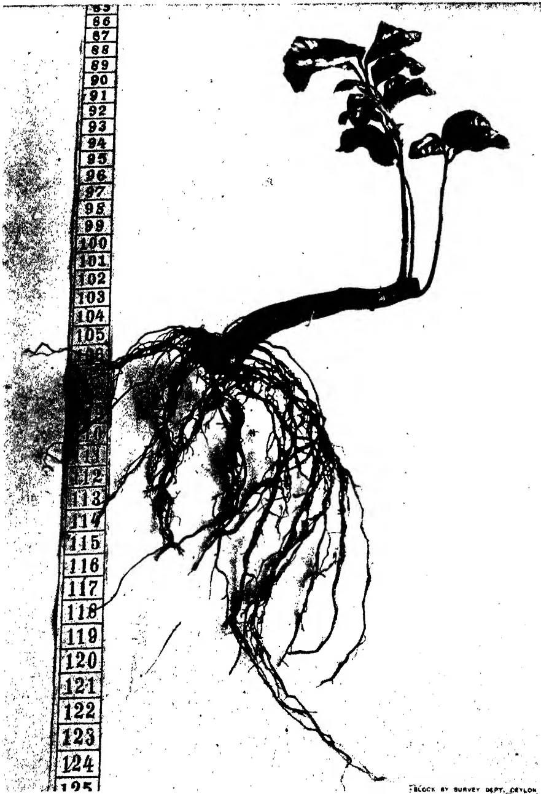
A black and white photograph of a root cutting specimen. The specimen consists of a thick, dark, horizontal root segment that has produced a dense network of fine, branching roots extending downwards and outwards. From the top of this root segment, a single, relatively short shoot emerges, bearing several large, dark, ovate leaves. To the left of the specimen is a vertical ruler with a scale from 85 to 125, marked in increments of 1. The ruler is oriented vertically, with the top of the specimen aligned with the 85 mark. The background is a light, textured surface. In the bottom right corner of the image, there is a small, faint text label: "BLOCK BY SURVEY DEPT. OREGON."Plate 16.
A root cutting, which produced roots and shoots in field conditions during two summer months (June-July).
261PROF. T. K. KVARAZKHELIA,
THE TEA RESEARCH INSTITUTE OF THE USSR.
OZURGETI-ANASENI, GEORGIA, USSR.
Experiments on propagating tea by cuttings were begun in 1928. There were tested both stem and root cuttings.
Root cuttings were tested in the open, being obtained either by means of uncovering a part of the roots of a tea bush and separating them from the parent plant or by means of digging out a tea bush and cutting its roots into pieces 7-10 cm. long. Further experiments showed that with a well prepared soil and optimal moisture content there may be used root cuttings but 1 cm. long. A tea bush in dependence with its age and vigour may yield 20-160 root cuttings 10 cm. long.
The 7-10 cm. long cuttings were then sorted according to their diameter into thick (diameter 2 cm. and more), middle-sized (diameter—1 cm.) and thin (diameter less than 1 cm.). 200 cuttings of each group were tested in every variant of the experiment. They were planted at the distance of 20 cm. from each other, the soil being prepared in the usual way. They were not watered. In summer the soil was hoed and weeds removed in the usual way. We used to plant them between May 10 and June 20 and always obtained good rootage in or 2 months after planting (Plate 16).
Thick cuttings gave the best results, namely 52-73 per cent. of rooted plants while thin cuttings gave but 9.5-18 per cent., and middle-sized cuttings gave 37-45 per cent. of rooted plants. In 2-6 months after rooting either in autumn or in spring young bushes were transplanted into the field. Every year some bushes were dug out and their roots examined. It was observed that the development of their root system depended upon the way in which they had been planted — horizontally or vertically. In the first case the roots spread near the surface of the earth, in the second they developed to a greater depth. In both cases
262after two or three years (in dependence from the soil conditions) some horizontal roots changed their direction, which became more or less vertical, and penetrated deeper into the soil.
Experiments on propagation by stem cuttings were carried out in hot-houses and solar propagators. There have been tested four, three, two and single eye cuttings and buds, such as are used in summer budding under the bark into a T shaped incision. All of them produced roots. There were tested cuttings of different ages, of one and two years old shoots, of shoots of the current year, hardwood, semi-hardwood and green cuttings, as well as cuttings of different types: with leaves, with one half of a leaf, without leaves, mallet cuttings, heel cuttings, split cuttings. (Experiments showed a feeble rootage of cuttings without leaves and therefore in further experiments this type of cuttings was excluded). Each variant of the experiment was carried out with 200 cuttings.
Plucking shoots with 3 leaves (Plate 17) gave but 6-10 per cent. of rooted plants in comparison with semi-ripened and ripened cuttings and were excluded after having been tested 3 times.
Green or semi-mature cuttings rooted as follows:
Brown mature cuttings of shoots of the current season, not older than one growing season, rooted as follows:
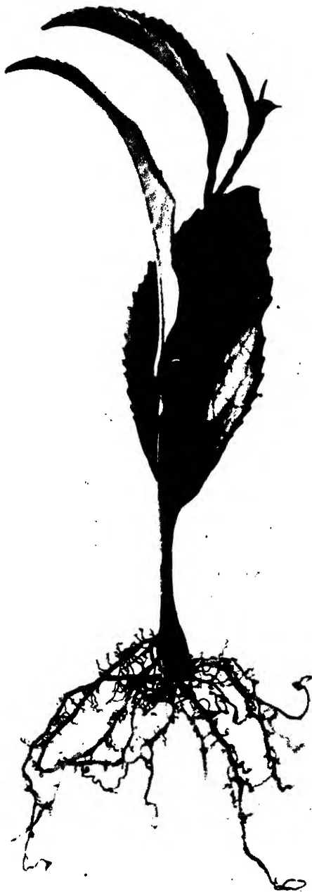
A detailed black and white botanical illustration of a plant shoot. The shoot has a central, thick, vertical stem. At the top, three long, narrow, lanceolate leaves are shown, with the two outer ones being more prominent and curved. The leaves have serrated margins. At the base of the stem, a complex network of roots is visible, showing fine, fibrous root hairs and several thicker, curved roots extending downwards and outwards. The illustration is rendered in a high-contrast, stippled style, typical of scientific botanical drawings.REPRODUCED BY SURVEY DEPT., CEYLON.
Plate 17.
A rooted plucking shoot with three leaves.
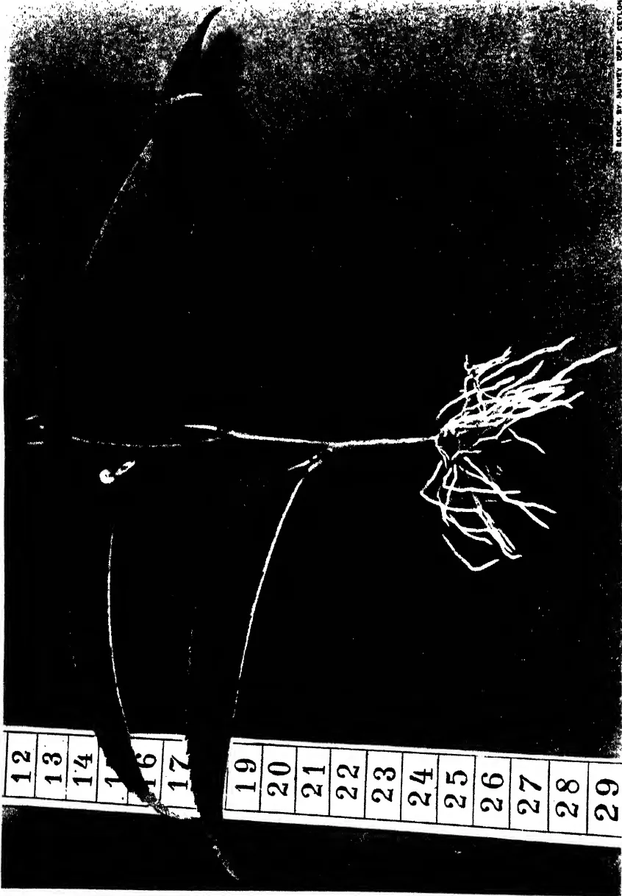
A black and white photograph of a rooted green cutting, likely a plant specimen. The cutting is positioned horizontally, with its root system on the right and its leaves extending to the left. The leaves are long and narrow, with four distinct 'eyes' (nodes) visible along the stem. The root system is a dense network of fine roots. The cutting is placed on a ruler for scale, which is marked from 12 to 29. The ruler is oriented vertically, with the numbers increasing from top to bottom. The background is dark and textured. In the bottom right corner of the image, there is a small vertical text: 'BLOCK BY MARVEL, DEPT. CRYOLON'.Plate 18.
A rooted green cutting with four eyes and entire leaves.
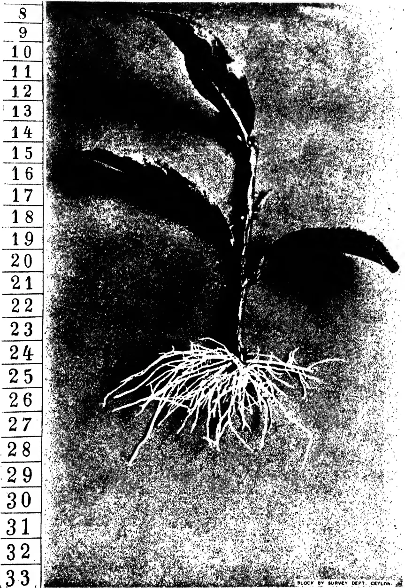
8
9
10
11
12
13
14
15
16
17
18
19
20
21
22
23
24
25
26
27
28
29
30
31
32
33
BLOCK BY SURVEY DEPT. CEYLON.
Plate 19.
A rooted brown (ripened) cutting with four eyes and entire leaves.
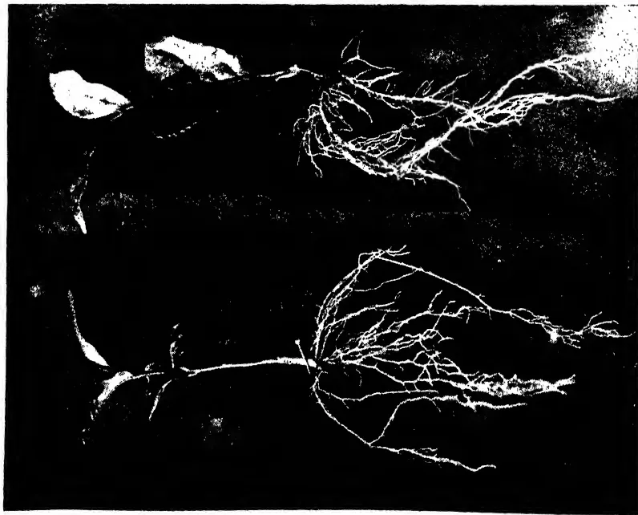
A black and white photograph showing two rooted brown (ripened) single eye cuttings with leaves, half natural size. The cuttings are positioned horizontally, with their roots extending downwards. The background is dark, making the lighter-colored roots and leaves stand out.Plate 20.
Rooted brown (ripened) single eye cuttings with leaves,
half natural size.
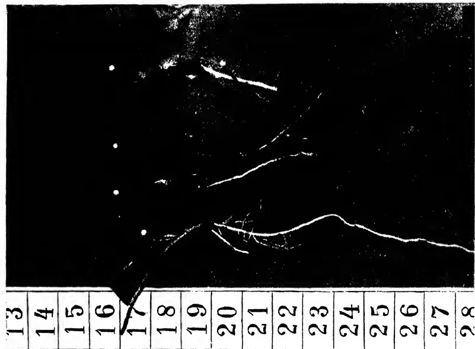
A black and white photograph showing a single rooted brown (ripened) tea bud. The bud is positioned vertically, with its roots extending downwards. The background is dark, making the lighter-colored bud stand out. Below the bud is a ruler with markings from 13 to 28.Plate 21.
Rooted brown (ripened) tea buds.
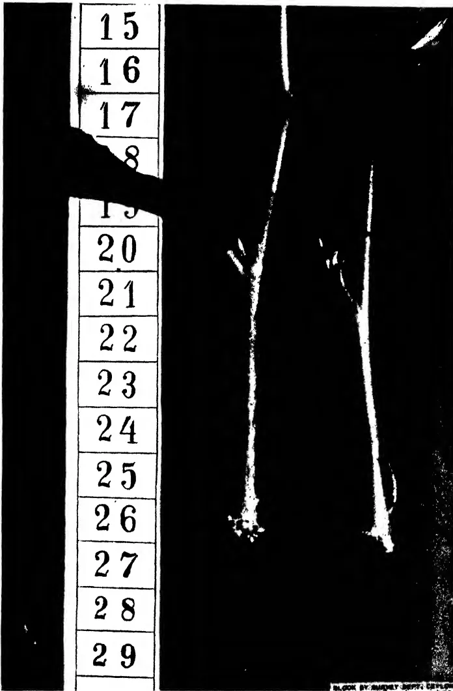
15
16
17
18
19
20
21
22
23
24
25
26
27
28
29
BLOCK BY RANDOLPH BROWN & CO. LTD.
Plate 22.
Tea cuttings with callus, but without roots.
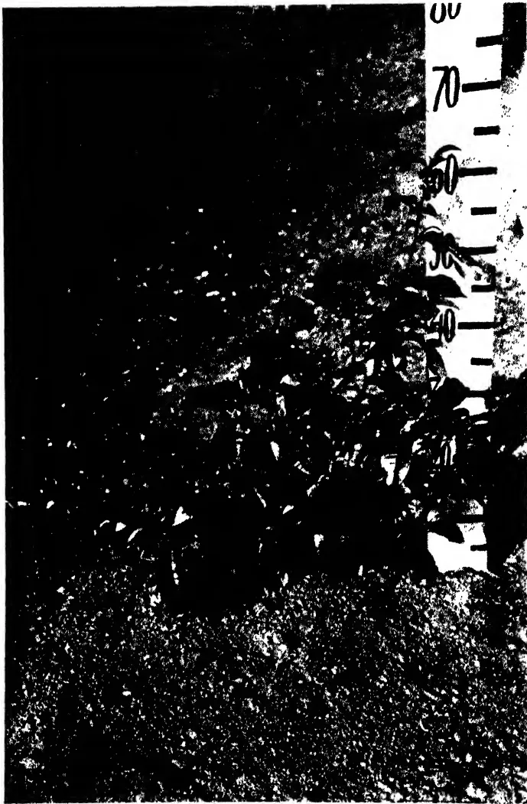
A high-contrast black and white photograph of a dense, bushy plant, identified as a one-year-old tea bush. The plant is positioned in front of a vertical scale on the right side. The scale is marked with numbers 00, 70, 50, 30, 10, and 0, with horizontal tick marks between them. The plant's foliage is dark and textured, filling most of the frame. The background is a solid dark color.Plate 23.
One year old tea bush, grown cut of stem cuttings.
Cuttings made of older shoots do not root as well, the per cent. of rooted plants being the lower, the older are the shoots. Mature brown cuttings of the current year's growth gave the highest per cent. of rooted plants; semi-mature (green) cuttings gave a lower per cent. of rooted plants. The percentage of rooted plants was the lower, the younger were the shoots of the current year's growth. The plucking shoots with three leaves gave the lowest per cent. of rooted plants. Buds of green shoots, (the same as are used in budding), gave a higher per cent. of rooted plants (58.5 per cent.) than buds of hard-wood shoots (33.5 per cent.). Two years old mallet-cuttings with leaves gave a higher per cent. of rooted plants (19.27 per cent.) than cuttings of the same age with leaves but without mallet. Heel cuttings with leaves gave a higher per cent. of rooted plants (23.5-32 per cent.) than those with leaves, but without heel. There were tested mallet and heel cuttings of 2 and 3 years old shoots, those of younger shoots not having been tested. Later on testings of mallet and heel cuttings were excluded from the programme of experiments as having no practical importance.
Experiments on propagation by cuttings were carried out in hot-houses and propagators of unsatisfactory types, where both the moisture and the temperature of the air underwent considerable fluctuations. The sand for the experiments, though taken from the seaside, was not sufficiently washed and purified of organic admixtures, thus the medium in which the cuttings were grown was not a sterile one. The technical workers were inexperienced and they often changed. The author of the present paper was engaged in other works and could not pay sufficient attention to the work on the vegetative propagation of the tea bush. Due to these unfavourable conditions the per cent. of rooted cuttings belonging to the same type underwent considerable fluctuations: 16-80 per cent. Nevertheless a great number of experiments (about 100,000 cuttings) brought to notice a certain tendency of one year old cuttings to root better than older cuttings. Among one year old cuttings the ripened (the brown) cuttings root better than the green ones. On the contrary, buds of green shoots root better than those of brown ones. In dependence on favourable or unfavourable conditions for rootage, a tea cutting, after having produced a callus (Plate 22) may remain
264alive for a very long time (3, 5 & 6 months) without drying or withering if the sand is sufficiently moist and the temperature does not fall below a certain minimum. With optimal moisture and temperature such cuttings produce roots.
Young plants, grown out of cuttings were transplanted into the field. Those, transplanted directly from pots gave 70-80 per cent. rootage; when first transplanted into a nursery and later on into the field they gave 90-100 per cent. of rooted plants; young cuttings, with tender roots, transplanted directly into the field gave 40-67 per cent. of rooted plants. Rooted cuttings, transplanted into the field gave a vegetative season's growth as follows: (1) with stable manure: 14-16 cm. the number of lateral shoots, 4-30 cm. long, being 4-6, (Plate 23). (2) without manure: 15-30 cm. the number of lateral shoots, 2-12 cm. long, being 3-8.
Cuttings with primary roots, transplanted into the field on June 25, 1932, produced a normal root system and normal shoots by October 30, 1932, i.e., in four months' time (Plate 24). Two years later, by June 25, 1934 their root system was still stronger, the roots were thicker and penetrated deeper into the soil. It did not differ from the root system of tea bushes grown out of seeds. Plate 25 shows the development of the root system of a 2 years old tea bush grown out of a one year old ripened (brown) cutting with 3 eyes. The small active rootlets and the deep reaching roots (marked with a cross) were torn off in digging out the bush.
We planted tea seeds at the same time as buds in order to compare the rate of their growth. Tea plants grown out of cuttings and even those, grown out of buds, do not fall in their development behind plants grown out of seeds. Plate 26 represents tea seedlings (26a) and tea plants grown out of buds (26b) planted in spring and dug out and photographed the same year in summer.
On June 25, 1932 we planted some rooted cuttings and buds into pots filled with earth, which consisted of an upper humus layer and sand. Four months later, on October 30 the roots of the plants were washed and showed a vigorous development of small active rootlets. Plate 27 shows such a plant grown out of a one year old cutting with three eyes. The roots of plants, grown in pots continued to increase both
Plate 24.
Rooted cuttings 4 months old. These cuttings with primary roots were planted in the open ground on June 25, 1932 and dug out and washed on October 30, 1932 when this photograph was taken. The dotted line indicates the top of the cutting, above it is new growth.
Plate 25.
The root system of a two years old tea bush, grown out of one year old ripened cutting with three eyes.
x. The points at which the deep reaching roots have been broken.
![A black and white photograph of three tea plants of the same age, arranged vertically. A vertical ruler on the left side of the image is marked from 14 to 49. The plants are shown with their roots exposed, revealing a taproot system. The leftmost plant is labeled 'x' at its base, indicating the point where the taproot was broken in digging. The middle plant is labeled '5' on its stem. The rightmost plant is labeled '3' on its stem. The plants are labeled (a) 'Grown out of seeds' and (b) 'Grown out of buds' in the caption below.](7ac42b0ca338fcb25b1b466db045277c_1_img.webp)
Plate 26.
Tea plants of the same age.
(a) Grown out of seeds
(b) Grown out of buds.
x. The point where the taproot was broken in digging.
Plate 27.
The root system of a one year old cutting with three eyes, transplanted into a pot with a good soil. The rooted cutting was transplanted on June 25, 1932 and the roots washed on October 30, 1932 when this photograph was taken.
A black and white photograph showing the root system of a tea bush plant. The plant is growing out of a dark, rectangular container. The roots are visible, showing a dense network of fine roots and a few thicker, fibrous roots. The plant has several leaves and a small flowering or fruiting structure at the top.Plate 28.
The root system of a one year old tea bush grown out of a one year old cutting with three eyes. Rooted cuttings were transplanted on June 25, 1932 and the plant dug out and the roots washed on June 25, 1933.
Plate 29.
One year old tea bush, grown out of a rooted bud in a pot with good soil.
in their total mass and in their length and thickness, they stopped their growth only in winter, during the resting period of the tea plant. A year later on June 25, 1933 another set of plants were washed and proved to possess roots as shown in Plate 28.
Rooted buds (Plates 21 and 26b) in pots with the above described soil, possessed at the end of the year a root system as represented in Plate 32. The same development of roots is obtained when rooted cuttings are planted in a nursery, where the soil is rich in humus. When transplanted into the field 100 per cent. of plants, possessing such roots take root, while one year old insufficiently branched roots give a high per cent. of failures.
Our experiments lead to the following conclusions:
(1) All sorts and varieties of the tea plant may be propagated by root and stem cuttings.
(2) In the open ground propagation by root cuttings gives the best results. Thick cuttings (2-3 cm. thick) 7-10 cm. long, root better than thinner ones. The thinner and shorter are the cuttings, the lower is the per cent. of rooted plants.
(3) Stem cuttings and buds (parts of a shoot) root best in sterilized and well aerated soil (sand) with optimal moisture content of both the soil and the air (up to 100 per cent.) and optimal temperature (25-30°C). The observance of the above conditions in the open air is difficult, therefore in the open ground we obtain a lower per cent. of rooted cuttings than under cover.
(4) Ordinary hot-beds like those used for seedlings of vegetables are quite sufficient for a good rootage of tea cuttings.
(5) The age of the cutting influences its producing roots. The highest per cent. of rooted cuttings is obtained with cuttings of shoots of the current season's growth. The older are the cuttings (2, 3 and more years old), the lower is the per cent of rooted ones. Hardwood (brown) cuttings root better than semi-hardwood (green) ones. Plucking shoots give the lowest per cent. of rooted plants. Buds of green shoots root better than those of hardwood (brown) shoots.
266(6) The removal of half the blade of the leaf diminishes its transpiration and favours rootage. Both the removal of the whole blade (stoppage of assimilation) and keeping it intact (strong transpiration) diminish the per cent. of rooted cuttings.
(7) The greater are the fluctuations in the surrounding conditions (temperature, moisture, aeration), the slower is the process of rootage; the nearer they are to the optimum, the more rapid is this process. Cuttings with a callus but without roots may live a very long time, rooting slowly in dependence of the fluctuations in the condition of the surrounding medium. For instance in 2.5 months after planting 38 per cent. of cuttings are rooted; in 4 months — 52.5 per cent. (in relation to the original number of cuttings); in 5.5 months — 76 per cent., in 6 months — 80 per cent.
(8) The per cent of rooted tea cuttings corresponds to that of many other trees and bushes, which are propagated by cuttings, and is quite acceptable from the practical point of view.
(9) Propagation by cuttings and buds may be recommended for the purpose of selection of the high-yielding populations of best varieties, for obtaining homogeneous planting material and creating homogeneous tea plantations. Absolutely homogeneous material, obtained from a single parent plant may be planted on experimental plots, and the heterogeneity of experimental plots, and even of plants grown in pots, may be thus avoided.
(To be continued).
267S. J. F. DIAS, DIP. AGRIC. (WYE.),
A.I.C.T.A. (TRINIDAD),
ACTING PROPAGANDA OFFICER,
DEPARTMENT OF AGRICULTURE, CEYLON
THE following is an outline of the more important points in the cultivation of Tobacco in general but with special reference to Cigarette Tobacco and the Flue-Curing process.
Tobacco may be classified into three main classes:
The cigar and manufacturing types of tobacco come under the species Nicotiana tabacum, whereas the third group belonging to the species Nicotiana rustica constitutes another class which is mainly grown for the production of nicotine and includes the Turkish tobaccos.
The following types are all bright leaf cigarette tobaccos suitable for flue-curing and have been recommended for trial in Ceylon:
The latter type has been tried in Ceylon and proved fairly satisfactory in the Kurunegala District during the 1933-34 season.
Tobacco is a crop that is very sensitive to environment (soil and atmosphere) which plays an important part in determining the type of tobacco to be grown, and the crop can only be grown in certain districts. Nearness to the sea is often a great drawback owing to the large amount of sodium chloride present which is reflected in the burning qualities and quantity of ash.
Generally speaking a light sandy loam with a clay sub-soil is considered ideal for bright cigarette tobaccos, and the heavier types of soil for the dark and heavy bodied pipe and cigar tobaccos. Sandy soils with a clay sub-soil will retain fertility better than a sandy soil with a non-clay sub-soil. A clay sub-soil is considered essential for the successful cultivation of tobacco in the United States, and a good sub-soil is said to improve the tobacco both as regards quality as well as colour. In all cases it is essential that the soil should be well drained.
Tobacco requires a moderate rainfall which should be fairly well distributed throughout the growing period and rather light during the maturing and harvesting periods.
Excessive rainfall, especially at harvest time, seriously affects the quality of the leaf, making it thin and deficient in gums, tends to make the midribs coarse, and also renders the crop more liable to spotting disease.
Planting out should be done in a season when the growing period could be completed in 5 to 6 weeks; and in tropical countries where two monsoons are experienced, the growing of tobacco should be restricted to the shortest monsoon period, say a season of 3 months' rainfall. Where no such season is present the planting may be done to catch the late rains, thus allowing the crop to mature into the dry season.
Where tobacco is cultivated in rotation with other crops it would be well to remember that it should not follow a leguminous crop, as excessive nitrogen does not produce good cigarette tobacco, nor should tobacco follow another Solanaceous crop in the rotation. Tobacco may follow a cereal crop, especially if the land is subject to eelworm infestation, as nearly all cereals are immune to this pest; or tobacco may follow cotton.
269The proper treatment of seed-bearers is essential where a farmer intends to carry out his own seed selection for subsequent crops. When the plants in the field are ready for topping (i.e., at the flowering stage) plants suitable for seed-bearers should be carefully selected and marked out. All side shoots with flowers are then removed with the exception of three flower clusters at the top giving a crow's foot appearance. Finally all the leaves below the crow's foot should be removed to a distance of eighteen inches to two feet if the whole plant is allowed to go into seed the seed is apt to deteriorate. Where more than one variety of tobacco is being grown it is necessary to prevent cross fertilisation, and the selected seedheads should be bagged before the flowers open; and as the flower-stalks elongate it will be necessary to raise the bag. (Any strong paper bag will answer this purpose). The seed pods should be harvested as soon as they turn brown and be allowed to dry in a cool dry room. After this the plump pods should be selected and the seed shaken out by nipping off the tips. The seed is then dried in the cool, and stored in bottles until required. If imported seed is to be used, such seed should preferably be grown in seed plots in the first instance, and the seed thus procured from the first generation should be used for planting out the fields in the next season.
Nurseries should be established according to local conditions and should be well sheltered, well drained and accessible to water. As regards size of seed-bed required: a 100 square yards seed-bed will plant 5 acres of tobacco. Three beds each yards wide and 27 yards long will provide the necessary requirements. The soil should be well stirred and then sterilized by burning some brushwood on the soil surface. The ash should be well incorporated into the soil. The seed-beds should not exceed 5 inches in height, and drains 18 inches wide 6 inches deep should be provided between the beds.
Tobacco seed is exceedingly small, some 300,000 to 400,000 seed going to an ounce, and when sowing, the seed should be mixed with some dry sand or ash so as to insure even distribution. As regards the quantity of seed required, heaped tablespoons of seed will be sufficient for sowing 100 square yards of seed-bed. All the seed-beds should not be sown at the same time, and it is
270best to sow at intervals of two weeks or so and to make 2-3 such sowings. The seed should be lightly broadcast and pressed down with a smoothing board and then watered. A watering can with a fine rose should be used. Covering or shading the seed-beds is not absolutely necessary, and in humid countries too much shading induces "damping off" disease and makes the seedlings leggy. The seed-beds should however be sheltered from wind and heavy rain, and in the early stages the young seedlings may be shaded with cadjan thatch over a bamboo framework; and this shade should be gradually reduced as the seedlings get larger and stronger. The seed should germinate in from a week to ten days.
Two pounds of nitrate of soda well dissolved in 50 gallons of water make an excellent tonic for growing tobacco plants in the seed-bed. Sulphate of ammonia may be used in the same proportion, and is possibly the more preferable of the two as there will be less danger of scorching the leaves; and sulphate of ammonia does not leech so quickly from the soil as nitrate of soda. The latter is also apt to force the plants too much. If superphosphate is used, it should be applied before the sowing of the seed.
After the preliminary tillage operations such as thorough ploughing and harrowing have been completed and a good tilth obtained, the land should be ridged, the usual distance between the ridges being about 3 feet.
Crops too highly manured with nitrogen do not produce good cigarette tobacco; and for this reason, as stated earlier, leguminous crops in a rotation should never be followed by tobacco.
A complete mixture containing:
has been found satisfactory for tobacco. The fertilizer should be applied in the furrows 3-4 days before transplanting; the ridges are then split and the land left alone for 3-4 days. The last operation will produce a new set of ridges with the fertilizer below them.
271Transplanting should be done when the plants are 6-9 weeks old and not later than 9 weeks as by then the stems are usually too hard, and such plants fail to form a good root system. A good test to ascertain whether the plants in the nursery beds are suitable for transplanting is to take up a plant which is about 6 inches high, and to bend the root inch from the tip. If the root snaps, the plant is of a suitable age for transplanting, but if on the other hand the root just bends, the plant is considered too old and unsuitable.
Short stocky plants are better for transplanting than leggy ones. Transplanting is best done on a cloudy day if possible. If the nursery beds are dry at the time of transplanting, they should be thoroughly watered before the plants are removed.
At the time of transplanting the marker should be set at the correct distance of planting (i.e., distance between the plants in the row) and driven across the ridged land. When planting out, a depression is first made on the ridge where the marker has intersected it by pressing down the soil. The hole for inserting the plant is made in the depression, and the plant is then carefully inserted and watered immediately. Finally the hole is closed up. It is desirable in planting to have the fertilizer about 4 inches below the plant, and by planting out in a depression made on the ridge as indicated above the roots of the plant are brought within the required distance from the fertilizer. It is a sound practice when planting to bend over one of the leaves of the plant so as to cover the bud and to place a clod of earth on it to retain it in position. This will prevent the bud from drying off during the first few days after transplanting.
High quality leaf requires close planting between plants and rather wider spacing between the rows. Some common distances of planting tobacco are:—
Surface cultivation between the rows after each rain is ideal. In practice, however, several surface cultivations should be given during the growing period so long as this operation could be safely carried out without causing injury to the plants, and should cease when the plants are ready for topping.
When the plants are about 18 inches to 2 feet high it is usual to go round and remove the sand leaves and some of the bottom leaves up to a height of about 6 inches from the ground. These leaves are of little value, and usually harbour the spores of Frog Spot Disease of tobacco. Priming therefore reduces spotting by the removal of disease affected leaves, and also promotes aeration of the plant. All primed leaves should be collected and burnt.
The plants are said to be ready for topping when they have reached the flowering stage, and possess at least 8-10 good leaves. It is difficult to lay down a hard and fast rule with regard to topping, but generally speaking vigorously and healthily growing plants should not be topped at all; but if topped, however, the suckers which grow from the leaf axils should be allowed to remain. Plants selected for seed-bearers are never topped. All poorly growing plants should be topped, usually at a height where the leaves are 5 inches broad. In the latter case all suckers should be systematically removed. The leaves are ready for harvesting from about 4-6 weeks after topping.
Tobacco is subject to a number of pests and diseases, but only a few of the troubles commonly met with in Ceylon are mentioned in this article. The control measures and spray formulae suggested under diseases are those recommended by the Mycological section of the Department of Agriculture, Ceylon.
The presence of stem-borer in the field could be often detected by the poor growth of the plants, and in advanced cases by a wrinkled appearance of the leaf bases. On splitting open the stem the borer could be seen tunnelling within. Where the pest is bad measures to check its attack should be taken in hand
273from a very young age, and consist of the cutting off of all apparently affected low leaves, leaving one or more of the sound suckers to shoot out and produce a fresh plant. All infected material thus cut should be collected, removed from the field, and burnt. In the case of severe infestations it would be a sound farming practice to remove and burn all tobacco stubble after harvest instead of ploughing such material into the land.
(Cercospora nicotianae)
This is a fungus disease causing the spotting of the leaves. The disease is not so important in the case of chewing tobacco as it is on cigar and cigarette tobaccos. The disease occurs on the oldest leaves. Infection is brought about by spores of the fungus falling on the leaves. The spores can germinate in 2 hours and infect the leaf. A week or so later the spots begin to appear, and 1-2 weeks after that, depending on the weather, spores are formed, and in this way the disease can spread throughout the entire crop. As regards control, overcrowding and excessive moisture should be avoided; the early priming of the sand leaves and lower leaves up to a height of about 6 inches from the ground when the plants are young and about 18 inches to 2 feet high will diminish infection considerably. The removal and burning of all infected stubble after harvest is recommended, as this is likely to form a source of new infection.
This disease can be recognised in the field by the wilted appearance of the plant, and by the discolouration of the vascular tissue visible when the stem is split open. The disease is due to bacterial infection from the soil, and the bacteria responsible can only enter the plant through broken or wounded roots. As regards control measures avoid damaging the roots as much as possible in transplanting and by careless intercultivation. The control of Stem-borer and Eelworm will help in controlling wilt disease, as healthy plants are less liable to attack. Liming should not be done when this disease occurs as alkaline conditions are said to favour the disease; on the other hand manures that tend to make the soil acid are said to check the disease. All diseased plants should be uprooted and burnt as soon as they are discovered.
274This disaese is classified as a virus disease, and may be identified in the field by the mottled appearance of the leaves and the darkening of the veins when the leaf is held up to the sun. The sap of the diseased plant is highly infectious. "Frenching" is the name given to a type of Mosaic where the leaves become long and thin. In the case of young plants immediate control measures are necessary, as the disease can be carried by hand as well as by insects. All infected plants should be pulled up and burnt as soon as detected.
Eelworm attack very often depends on the previous crop grown on the land. Nearly all cereals are found to be immune to eelworm, and therefore where land is subject to eelworm tobacco should always follow a cereal in the rotation. The practice of a bare fallow turned over periodically is also recommended as a control measure.
The spores of the Frog-eye Disease of tobacco often adhere to the seed capsules and ultimately get mixed with the seed — hence seed treatment becomes necessary which consists of putting the seed in a muslin bag and soaking it in a solution of silver nitrate of the following strength: 9 grains silver nitrate to 1 pint of water. The seed should be soaked in this solution for 15 minutes, and then taken out and washed in six changes of running water. The treatment here recommended will kill all spores mixed up with the seed.
The selection and preparation of the seed-bed is very important from the point of view of disease control. The same seed-bed should not be used over and over again. The seed-bed should be sterilized by the burning of dry vegetable trash on the soil surface, and this will kill out such troubles as eelworm and Rhizoctonia solani (Damping off disease). The seed-beds should be raised so as to afford adequate drainage.
Nursery plants 2-3 weeks old should be sprayed every week or 10 days as a measure of control against Frog-eye Disease.
275The spraying should be started before any signs of the disease appear.
The following sprays are recommended:
(A) BORDEAUX MIXTURE
{ 2 lb. Copper Sulphate
{ 2 lb. Lime
{ 40 gallons water.
(B) BOUISOL
oz. to 1 oz. Bouisol (fluid) to 1 gallon of water. 1 oz. of soft soap should be added to every 2 gallons of the spray as a sticker. The latter spray will also help in checking damping off disease of seedlings. Where the disease is severe it appears in patches in the nursery and in such cases every affected plant should be removed, and the patch freely watered with a solution of Jeyes' Fluid — 1 oz. of the fluid to 1 gallon of water.
4. TRANSPLANTED PLANTS
Spraying is not practicable in the field, and all plants showing any signs of disease should be uprooted and burnt.
5. HARVESTING
The crop is ready for harvesting 60-70 days after transplanting, and when the leaves gradually turn from deep green to a yellowish green shade similar to the colour of a lemon when it is ready for picking. The whole plant may be harvested or single leaves picked as they mature. The latter system is preferable in the case of flue-cured tobaccos. Picking is done by hand and should be carried out every 5-6 days or once a week depending on the barn arrangements. A single picking over a 5-acre field will fill a 16 ft. by 16 ft. barn.
Leaves must if possible be harvested before any spotting appears, and badly spotted leaves should not be harvested. Green leaves or leaves showing vigorous growth such as appear on plants growing on ant hills, or leaves of plants too highly manured with nitrogen, should not be harvested for flue-curing as they will not produce a good cigarette tobacco. The presence of gum on the leaves at harvest is essential, and it is therefore inadvisable to commence harvesting immediately after rain or on a day following heavy rain. Harvesting should be done in
276the morning when the dew is still on the leaves. The harvested leaves should be removed to the barns as soon as possible, and should never be allowed to remain exposed to the hot sun for any length of time. If it becomes necessary to allow the leaves to remain in the field for some time, it is advisable to harvest with a small piece of stem attached which will help in preventing the leaves from wilting too much. Bruising or in any way damaging the leaves during harvest and subsequent handling should be avoided. Some sort of long basket might be used in the field for collecting and transporting the harvested leaves to the barn.
(To be continued).
277A. W. R. JOACHIM, PH.D., DIP. AGRIC.
(CANTAB.),
AGRICULTURAL CHEMIST,
AND
S. KANDIAH, DIP. AGRIC. (POONA),
ASSISTANT IN AGRICULTURAL CHEMISTRY
DURING the past eighteen months several samples of compost manure prepared under the direction of the officers of the Medical Department from street refuse and night soil have been analysed in the Chemical Laboratory of the Department of Agriculture. A number of samples of compost prepared at various Departmental Experiment Stations or on private farms by the ordinary pit, (1) Indore (2) and pen (3) methods have also been examined from time to time. In view of the general interest taken in the question of compost manure and the interesting results obtained from investigations undertaken in co-operation with the Medical Department on the night soil—refuse composting process, it is considered that the publication of the chemical data obtained would be of value. Of the process itself but little will be said, as the full details both in regard to its practical and public health aspects will be published by the Medical Department in due course. Suffice it to state that the process consists of the periodical treatment of the heaped refuse with a proportion of night soil diluted with water and the regular turning of the heap, especially in the early stages of the process. Decomposition takes place as a result of biological and chemical changes in the heap with the production of heat and the suppression of foul odours. If carried out under suitable conditions, the high temperatures generated — up to about 50°C — should suffice to destroy the putrefactive and pathogenic organisms and harmful insects, and render the final product safe for use as a manure. It need hardly be pointed out that the process is one which cannot conveniently be adopted by the individual; but civic
278corporations should find it a satisfactory means of disposal of municipal waste and a source of substantial profit from the resultant manure.
The manufacture of compost from road refuse and night soil has been carried out systematically in various parts of India for some years — at Bangalore, Nasik and Cawnpore, in Mysore, Indore etc, — and a great deal of useful work on the subject has been done by Fowler and his assistants (4), Jackson and Wad (5), Coleman, Rao and Subrahmanyam (6) and others. But the process of composting is not new and has been practised in China for forty centuries (7) and is widely adopted in Japan, as well as in other places.
In this paper, the results of analysis of samples of street refuse and of compost received from various parts of the Island, where the process has been experimented with, will first be detailed. The manurial values of compost prepared by other methods will then be shown for comparison. The conclusions obtained from the investigations undertaken in co-operation with the Sanitary Engineer and the Medical Officer of Health, Kegalle will finally be discussed.
The method of examination of the samples was as follows: A note was made of the nature and quality of the sample and a moisture determination on it carried out. It was then air-dried and sieved through a 3 mm. mesh sieve. Any organic material left on the sieve was picked out and ground down till it all passed through the sieve. The inorganic material — stones, pieces of glass, nails, etc., was weighed out and its percentage calculated. The sieved material was then analysed for moisture, organic matter, ash, nitrogen, and in some cases nitrates, phosphoric acid and potash. The results are calculated (1) on material as received, (2) on air-dry material and (3) occasionally for purposes of strict comparison, on a moisture-free basis. To the intending purchaser either of the two former sets of analytical figures will be useful, as he may choose to buy the compost in a moist or air-dry condition.
Table I shows the analyses of samples of refuse and Table II those of typical night soil-refuse compost samples taken from approximately three-month old heaps.
279TABLE I
ANALYSES OF REFUSE MATERIAL*
| No. | Origin | Percentages on original sample | Percentages on air-dry sample | Phos. Acid | Remarks | ||||||||||
|---|---|---|---|---|---|---|---|---|---|---|---|---|---|---|---|
| Organic matter | Ash | Stones etc. Nitrogen | Potash | Organic matter | Ash | Stones etc. Nitrogen | Potash | ||||||||
| 1 | Kadugannawa | 56.5 | 10.4 | 27.8 | 5.3 | .20 | — | 5.2 | 22.7 | 60.7 | 11.4 | .52 | — | A fairly high proportion of arecanut husk | |
| 2 | Kegalle | 49.8 | 15.7 | 30.5 | 4.0 | .26 | — | 10.5 | 28.1 | 54.3 | 7.1 | .46 | — | A high proportion of arecanut husk | |
| 3 | Kurunegala | 29.1 | 15.9 | 47.0 | 8.0 | .47 | .38 | .25 | 3.4 | 21.6 | 64.0 | 11.0 | .53 | .34 | Material put through a pulverizer; sample drier than usual |
| 4 | Nawala | 43.4 | 11.2 | 31.7 | 13.7 | .43 | — | 5.1 | 18.7 | 53.2 | 23.0 | .73 | — | — | Composted for 8 months without night soil |
| 5 | " | 43.1 | 13.3 | 34.7 | 8.9 | .45 | — | 4.3 | 26.2 | 58.4 | 14.8 | .76 | — | — | Composted for 1 month |
| 6 | " | 52.5 | 9.8 | 29.3 | 8.4 | .30 | .21 | .23 | 4.8 | 19.6 | 58.8 | 16.8 | .61 | .46 | Composted for 10 weeks |
| Average | 45.7 | 12.7 | 33.5 | 8.0 | .35 | .30 | .24 | 5.6 | 22.8 | 58.2 | 14.0 | .62 | .47 | .40 | |
TABLE II
ANALYSES OF ROAD REFUSE-NIGHT SOIL COMPOST
| No. | Origin | Percentages on original sample | Percentages on air-dry sample | Phos. Acid | Phos. Potash | Remarks | ||||||||||
|---|---|---|---|---|---|---|---|---|---|---|---|---|---|---|---|---|
| Moisture | Organic matter | Ash | Stones etc. Nitrogen | Moisture | Organic matter | Ash | Stones etc. Nitrogen | |||||||||
| 1 | Anuradhapura | 27.6 | 14.8 | 52.9 | 4.7 | .61 | .53 | .61 | 8.5 | 18.7 | 66.8 | 6.0 | .77 | .67 | .76 | Well decomposed |
| 2 | " | — | — | — | — | — | — | — | 5.5 | 12.1 | 69.6 | 13.8 | .52 | — | — | Well decomposed sieved sample received air-dry |
| 3 | Jaffna | 40.0 | 23.4 | 36.6 | — | .84 | — | — | 8.6 | 35.6 | 55.8 | — | 1.28 | — | — | Well broken down |
| 4 | Kadugannawa | 46.1 | 11.4 | 35.7 | 6.8 | .41 | .33 | .32 | 3.9 | 20.2 | 63.6 | 12.3 | .74 | .71 | .70 | Fairly well decomposed; sieved |
| 5 | Kalutara | 39.9 | 10.5 | 49.6 | — | .48 | — | .34 | 8.3 | 16.0 | 75.7 | — | .73 | — | .52 | Partially decomposed; high proportion of arecanut husk |
| 6 | Kegalle | 50.3 | 14.1 | 27.1 | 8.5 | .26 | — | — | 8.8 | 25.9 | 49.7 | 15.6 | .48 | — | — | Well decomposed and sieved |
| 7 | Kurunegala | 40.1 | 11.5 | 41.0 | 7.4 | .43 | .43 | .41 | 7.4 | 17.7 | 63.8 | 11.1 | .67 | .66 | .64 | Fairly well decomposed |
| 8 | " | 40.7 | 8.5 | 43.6 | 7.2 | .40 | .47 | .49 | 8.2 | 13.0 | 67.4 | 11.4 | .62 | .73 | .75 | Well decomposed and sieved |
| 9 | " | 38.7 | 12.3 | 49.0 | — | .44 | .33 | .16 | 6.5 | 18.8 | 74.7 | — | .67 | .50 | .24 | Fairly well decomposed |
| 10 | Nawala | 46.4 | 11.1 | 32.1 | 10.4 | .46 | — | — | 3.6 | 19.9 | 57.6 | 18.8 | .82 | — | — | Nitrates .054% on original material |
| 11 | " | 46.2 | 14.8 | 31.0 | 8.0 | .52 | — | — | 4.4 | 26.2 | 55.0 | 14.4 | .93 | — | — | Nitrates .048% |
| 12 | " | 45.6 | 12.0 | 38.2 | 4.2 | .47 | — | — | 4.1 | 21.1 | 67.2 | 7.6 | .82 | — | — | Nitrates .050% |
| 13 | " | 34.3 | 15.2 | 38.7 | 11.8 | .65 | — | — | 4.5 | 22.1 | 56.1 | 17.3 | .95 | — | — | Nitrates .005% |
| 14 | " | 47.0 | 14.3 | 29.5 | 9.2 | .51 | — | — | 5.8 | 25.3 | 49.6 | 19.3 | 1.01 | — | — | Well decomposed |
| 15 | Panadura | 41.7 | 15.9 | 35.1 | 7.3 | .70 | .35 | .52 | 8.4 | 25.0 | 55.1 | 11.6 | 1.09 | .56 | .82 | |
| 16 | Average | 41.8 | 13.5 | 37.8 | 7.8 | .51 | .41 | .41 | 6.4 | 21.2 | 61.0 | 12.2 | .81 | .64 | .63 | |
An examination of Table I will indicate that the original road refuse material has an average moisture content of about 45 per cent. an organic matter content of about 13 per cent., and about .35, .3, and .2 per cent. respectively of nitrogen, potash and phosphoric acid. The stone content is about 8 per cent. The percentage constituents in air-dry material are approximately twice these figures. The greatest variation occurs with the stones and foreign material. The other constituents do not show any very wide variation.
Tabulated above are the analyses of typical night soil—refuse composts examined. The average moisture content of the original compost as received in the laboratory is about 42 per cent., a figure similar to that of the refuse material. The average organic matter and stone contents are also about the same as those of the latter viz: about 13 and 8 per cent. respectively, but the nitrogen, potash and phosphoric acid contents are distinctly higher with averages of about .5, .4 and .4 per cent. respectively on material as received or .8, .6, and .6 per cent. on an air-dry basis. These higher percentages of fertilising constituents are obviously the result of the partial decomposition of the organic matter and the amounts of these constituents added in the night soil. The composition of different samples of compost varies fairly appreciably in regard to nitrogen and phosphoric acid. Thus the nitrogen content of moist samples varies from .26 to .84 per cent. and phosphoric acid from .16 to .61 per cent. The potash content is much less variable. The stone content of the unsieved samples shows a fairly wide variation, but not as great as might be expected, the range being from 4.7 to 11.8 per cent. on material as received. With regard to the composition of the sample and its degree of decomposition it has been noted that the better decomposed the sample, the higher is its nitrogen content generally. The nitrate contents of the compost samples in no case exceed a tenth of the total nitrogen. The results of analyses of local compost samples compare favourably with those obtained in Mysore (8) and Bangalore (9).
In Table III are set out the results of analyses of samples of compost prepared by the Indore process at the Government Market Gardens, Nawala from road refuse as the main basic material; in Table IV of samples of pit compost from various Experiment Stations and in Table V of a few samples of pen manure.
282TABLE III
ANALYSES OF INDORE COMPOST
| No. | Nature of compost | Origin | Age in months | Percentages on original sample | Percentages on air-dry sample | Nature of original materials, etc. | ||||||||||||
|---|---|---|---|---|---|---|---|---|---|---|---|---|---|---|---|---|---|---|
| Mois- ture |
Organic matter |
Ash | Stones | Nitro- gen |
Phos- phoric acid |
Mois- ture |
Organic matter |
Ash | Stones | Nitro- gen |
Phos- phoric acid |
|||||||
| 1 | Indore method unscreened |
Nawala | 3 | 45.0 | 11.3 | 37.2 | 6.5 | .51 | .24 | .41 | 14.1 | 17.6 | 58.0 | 10.3 | .80 | .38 | .65 | Fairly well broken down, high proportion of coconut husk and fibre |
| 2 | Unscreened | " | 3 | 45.0 | 13.4 | 35.7 | 5.9 | .53 | .29 | .42 | 16.5 | 20.3 | 54.2 | 9.0 | .80 | .44 | .64 | |
| 3 | " | " | 3 | 28.9 | 12.5 | 53.7 | 4.9 | .43 | .15 | .20 | 3.9 | 16.9 | 72.5 | 5.5 | .58 | .20 | .27 | Well decomposed |
| 4 | " | " | 1 | 57.9 | 11.7 | 24.9 | 5.5 | .41 | — | — | 5.5 | 26.3 | 55.9 | 9.4 | .91 | — | — | Fairly well decomposed |
| Average | 44.2 | 12.2 | 37.9 | 5.7 | .47 | .23 | .34 | 10.0 | 20.3 | 60.1 | 8.5 | .77 | .34 | .52 | ||||
TABLE IV
ANALYSES OF PIT COMPOST
| No. | Nature of compost | Origin | Age in months | Percentages on original sample | Percentages on air-dry sample | Nature of original materials, etc. | ||||||||||||
|---|---|---|---|---|---|---|---|---|---|---|---|---|---|---|---|---|---|---|
| Moisture | Organic matter | Ash | Stones | Nitrogen | Phos. Potash | Moisture | Organic matter | Ash | Stones | Nitrogen | Phos. Potash | Acid | ||||||
| 1 | Pit manure | Dambulla | 4 | — | — | — | — | — | — | 4.7 | 10.2 | 80.0 | 5.1 | .39 | — | — | — | Cattle manure, weeds, road sweepings etc. |
| 2 | " | Gampola | 3½ | 59.1 | 7.5 | 32.5 | 0.9 | .23 | .31 | .21 | 4.8 | 17.6 | 75.6 | 2.0 | .58 | .72 | .48 | Ash, leaves, house sweepings, well decomposed |
| 3 | " | Hanguraketa | 6 | 32.7 | 8.6 | 56.6 | 2.1 | .36 | .37 | .38 | 4.4 | 12.3 | 80.4 | 2.9 | .51 | .52 | .53 | Well decomposed |
| 4 | " | Kegalle | 2½ | 27.3 | 10.6 | 62.1 | — | .40 | — | — | 5.3 | 13.8 | 80.9 | — | .52 | — | — | Cow and goat manure, ashes vegetable refuse, leaves, etc. |
| 5 | " | Labuduwa A | 3 | 39.6 | 25.5 | 31.4 | 3.5 | .25 | .44 | .22 | 4.1 | 40.5 | 49.8 | 5.6 | .40 | .70 | .34 | Leaves, ashes, house refuse |
| 6 | " | Labuduwa B | 4 | 40.5 | 12.8 | 42.4 | 4.3 | .28 | .70 | .28 | 4.3 | 20.6 | 68.1 | 7.0 | .46 | 1.13 | .46 | Weeds, house refuse straw |
| 7 | " | Matale | 3 | 30.6 | 15.6 | 53.8 | — | .55 | 1.58 | .55 | 6.3 | 21.1 | 72.6 | — | .74 | 2.13 | .74 | Goat dung, house sweepings, etc. |
| 8 | " | Matugama | 3 | 41.0 | 10.5 | 48.5 | — | .20 | — | — | 4.8 | 16.9 | 78.3 | — | .32 | — | — | Weeds, Old cadjans, etc. |
| 9 | " | Peradeniya | 3 | 34.0 | 10.4 | 55.6 | — | .41 | — | — | 5.4 | 14.9 | 79.7 | — | .59 | — | — | Cowdung, ash and leaves |
| 10 | " | Weeraketiya | 3 | 23.7 | 11.8 | 62.1 | 2.4 | .39 | 1.03 | .52 | 5.2 | 14.7 | 77.3 | 2.8 | .49 | 1.27 | .65 | Citronella leaf, ash and cattle manure |
| Average | 36.5 | 12.6 | 49.4 | 2.6 | .34 | .74 | .36 | 4.9 | 18.3 | 74.3 | 4.2 | .50 | 1.08 | .53 | ||||
TABLE V
ANALYSES OF PEN MANURE
| No. | Nature of compost | Origin | Age in months | Percentages on original sample | Percentages on air-dry sample | Nature of original materials, etc. | ||||||||||||
|---|---|---|---|---|---|---|---|---|---|---|---|---|---|---|---|---|---|---|
| Moisture | Organic matter | Ash | Stones | Nitrogen | Phos. Potash | Acid | Moisture | Organic matter | Ash | Stones | Nitrogen | Phos. Potash | Acid | |||||
| 1 | Pen manure | Kochchikade | 2½ | 57.1 | 19.4 | 23.5 | — | .52 | .67 | .19 | 5.8 | 42.6 | 51.6 | — | 1.14 | 1.47 | .42 | Green manure, etc., used as bedding for cattle: not fully decomposed |
| 2 | " | Maho | 3 | — | — | — | — | — | — | — | 5.1 | 37.4 | 57.5 | — | .92 | 1.19 | .48 | Sweepings from cattle shed straw, gliricidia loppings |
| 3 | " | Puttalam | 2 | 57.5 | 14.3 | 28.2 | — | .48 | .42 | .23 | 6.1 | 31.6 | 62.3 | — | 1.06 | .93 | .51 | Cover crops material etc., partially decomposed |
| Average | 57.3 | 16.9 | 25.3 | — | .50 | .54 | .21 | 5.6 | 37.2 | 57.1 | — | 1.04 | 1.10 | .47 | ||||
The Indore compost samples show about the same organic matter, nitrogen and stone contents, but, as may be expected, lower potash and to a lesser extent phosphoric acid contents than night soil compost samples. The average nitrogen, potash and phosphoric acid contents are, on original material, .47, .23 and .35 per cent. respectively or approximately .8, .3 and .5 per cent. respectively on air-dry material.
The samples of pit manure will be noted from Table IV to contain, on the average, lower percentages of organic matter and more so of nitrogen but higher percentages of potash than those of night soil—street refuse compost. Individual samples do however show comparatively high organic matter and fertilising constituents. This result is only to be expected considering that the materials used in pit composting—straw, weeds and grasses, cattle and goat manure, house refuse etc., —are rich in potash. Organic matter and phosphoric acid are about the same in both types of compost. The average composition of samples of pit compost as received is: organic matter 12.6 per cent., nitrogen .34 per cent., potash .74 per cent. and phosphoric acid .36 per cent. while on air-dry material these constituents are respectively 18.3, .50, 1.08 and .53 per cent.
The analyses of the three samples of pen manure, so termed because they were prepared in a cattle pen, showed them to be decidedly richer than other composts in all fertilising constituents except phosphoric acid, in regard to which they appear to be inferior. The average composition of the samples as received was as follows: organic matter 16.9 per cent., nitrogen .50 per cent., potash .54 per cent. and phosphoric acid .21 per cent. or 37.2, 1.04, 1.19, and .47 per cent. respectively on air-dry material.
In Table VI are indicated, for purposes of comparison, the average composition of different types of compost and of local cattle manure. The results are expressed on original material and on a moisture free basis. It will be seen that pen manure is very similar in composition to average cattle manure obtainable locally. This similarity is only to be expected, for they have the same origin. Next in manurial value is night soil—refuse compost with about two-thirds the organic matter and
286TABLE VICOMPARATIVE MANURIAL VALUE OF COMPOST MANURES AND CATTLE MANURE| Nature of compost | Percentages on original sample | Percentages on moisture-free basis | Phos. Acid | ||||||||||
|---|---|---|---|---|---|---|---|---|---|---|---|---|---|
| Moisture | Organic matter | Ash | Stones | Nitrogen | Potash | Phos. Acid | Organic matter | Ash | |||||
| Street Refuse | 45.7 | 12.7 | 38.5 | 8.0 | .35 | .30 | .24 | 23.5 | 61.8 | 14.7 | .64 | .55 | .44 |
| Refuse Night Soil Compost | 41.8 | 13.5 | 37.8 | 7.8 | .51 | .41 | .41 | 23.2 | 65.0 | 13.4 | .88 | .70 | .70 |
| Indore Compost | 44.2 | 12.2 | 37.9 | 5.7 | .47 | .23 | .34 | 21.9 | 67.9 | 10.2 | .84 | .41 | .61 |
| Pit Manure | 36.5 | 12.6 | 49.4 | 2.6 | .34 | .74 | .36 | 19.9 | 77.7 | 4.1 | .54 | 1.16 | .57 |
| Pen Compost | 57.3 | 16.9 | 25.8 | — | .50 | .54 | .21 | 39.6 | 60.4 | — | 1.17 | 1.27 | .49 |
| Cattle Manure (Average) | 56.0 | 16.0 | 28.0 | — | .53 | .33 | .25 | 36.3 | 63.6 | — | 1.20 | .75 | .57 |
nitrogen content of cattle manure. In other plant food constituents the differences are not appreciable. The average nitrogen contents when calculated on material as received are however, about the same, while night soil compost has a somewhat higher phosphoric acid content. The general conclusion to be drawn is that a moist, sieved sample of night soil—refuse compost is of slightly lower manurial value than ordinary cattle manure, and on this basis, is worth about the price of the latter. The compost prepared from street refuse by the Indore method at Nawala appears to be of rather lower manurial value than night soil compost, but not to that degree as to warrant any marked difference in price between the two types. The pit compost samples are poor in nitrogen but rich in potash when compared with other composts. Their sand contents are generally high. On the basis of these analyses, the manurial value of pit compost may be reckoned at about two-thirds that of cattle manure. Untreated street refuse is also quite useful as an organic manure, but its percentages of fertilising constituents are generally lower than those of treated composts.
A number of investigations were carried out in co-operation with the Sanitary Engineer, Colombo and the Medical Officer of Health, Kegalle to determine the optimum conditions for composting street refuse and night soil.
The Effect of Liming.—The effect of the addition of lime to the heaps with a view to speeding up decomposition was first studied at Nawala. The results obtained are tabulated below.
TABLE VII
Percentages on sieved material at 100°C.
| Organic matter | Ash | Nitrogen | |
|---|---|---|---|
| Unlimed sample | 26.9 | 73.1 | .91 |
| Limed ,, | 4.7 | 95.3 | .99 |
It will be seen that a very appreciable loss of organic matter and a smaller loss of nitrogen occur as a result of liming. This operation is therefore wasteful and unnecessary.
288The Rate of Decomposition of Compost.—With the co-operation of the Medical Officer of Health, an experiment to determine the rate of loss of organic matter as a result of composting was undertaken at Kegalle. From a heap of road refuse which was treated with night soil in the usual manner, representative samples of material were taken periodically and their organic matter, ash and nitrogen contents determined. The percentage of organic matter decomposed was calculated by the method of Rao and Subrahmanyam (6) on the basis that the total ash constituents of a heap remain unaltered during decomposition. The percentage of decomposition is thus: where is the ash percentage at any time of sampling and the ash percentage of the initial sample. The results are shown in Table VIII below.
TABLE VIII| Sampling | Age in months | Stones on | Original | On dry matter at 100°C | Organic matter | ||
|---|---|---|---|---|---|---|---|
| air-dry material | moisture | Nitrogen | Organic matter | Ash | decomposed | ||
| % | % | % | % | % | % | ||
| Initial | — | 7.1 | 49.8 | .562 | 33.8 | 66.2 | — |
| 2nd | 2 | 8.9 | 49.7 | .771 | 28.9 | 71.1 | 6.9 |
| 3rd | 2½ | 11.7 | 34.4 | .821 | 24.4 | 75.6 | 12.4 |
| 4th | 3 | 15.8 | 37.3 | .998 | 27.0 | 73.0 | 9.3 |
| 5th | 5 | 15.5 | 39.7 | .846 | 22.7 | 77.3 | 14.4 |
It will be noted that the percentage of organic matter decomposed increases with advancing age of heap. The three month old sample is the exception, but the low result obtained in this case can be attributed to sampling error. The highest percentage of organic matter decomposed is 14.4 at the end of five months, but as the two and half months old sample shows a percentage of 12.4, it may be concluded that there is no advantage, from the chemical standpoint, in retaining the heaps for longer than three months. The decomposition figure obtained in this experiment is appreciably lower than that found by Rao and Subrahmanyam (6) at Bangalore, viz: about 20 per cent. This can largely be attributed to the nature of the refuse material. At Kegalle the refuse contained a fairly high proportion of arecanut husk which is very resistant to decomposition. The fact that the heap was under cover and not therefore subject
289to the ideal conditions for decomposition viz: the alternation of wet and dry conditions, is another factor contributing to the low percentage decomposition figure.
An experiment of a different nature, illustrating the importance of turning for a satisfactory breakdown of the product, was carried out at Nawala. One refuse heap was treated in the usual manner with successive weekly charges of diluted night soil in the proportions of 5 per cent., per cent., per cent., per cent., the pile being turned over at each charging. Decomposition was normal. In another heap per cent. night soil was introduced between layers of refuse. At the end of eight weeks it was found that neither the night soil nor the refuse had decomposed at all. The subsequent regular turning of this heap resulted in a fairly satisfactory decomposition.
The Effect of Time of Composting on the Manurial Value of the Product.—The effect of time of composting on the manurial value of the product was studied simultaneously. Table VIII will indicate that the nitrogen content rises with increasing age of sample up to about the third month after which there is no appreciable rise. This data confirms the conclusion already drawn as to the period of composting.
In Table IX are embodied the results of analysis of compost samples of varying ages from different heaps.
It will be observed that unlike in the case of samples taken at different ages from the same heap (see Table VIII), the composition is dependent to a greater extent on the nature of the original refuse material than on the age of the composted material. Thus the nitrogen and organic matter contents of a six week sample are higher than those of a five month old sample. The average composition of the nine samples is however much the same as that of samples of about the same age from various places. This is apparent from a comparison of Tables II and IX.
Further experiments in co-operation with the Medical Officer of Health, Kadugannawa, are in progress to determine the effect on manurial value of retaining a three month old sample of compost for a further period of two months (a) under exposed conditions (b) dried and under cover.
The Effect of Varying the Proportion of Night Soil on the Manurial Value of the Compost.—At Nawala experiments were carried out to determine the effect of varying the proportion of
290TABLE IX| No. | Age of sample in months | Percentages on original sample | Percentages on air-dry sample | Remarks | ||||||||||
|---|---|---|---|---|---|---|---|---|---|---|---|---|---|---|
| Organic Moisture matter | Ash | Stones etc. | Nitrogen Potas | Phos. Acid | Organic Moisture matter | Ash | Stones etc. | Nitrogen Potash | Phos. Acid | |||||
| 1 | 1 | 40.4 | 14.9 | 44.7 | .48 | .34 | .35 | 4.7 | 23.8 | 71.5 | .77 | .54 | .56 | Decomposition incomplete |
| 2 | 2 | 40.8 | 11.0 | 40.6 | .34 | — | — | 4.6 | 17.7 | 65.5 | .55 | — | — | A high proportion of arecanut fibre; sample only partially decomposed |
| 3 | 2 | 46.6 | 12.1 | 25.8 | .49 | .31 | .33 | 4.8 | 21.6 | 46.1 | .88 | .56 | .59 | Decomposition incomplete |
| 4 | 3 | 41.7 | 11.4 | 35.4 | .52 | — | — | 3.7 | 18.8 | 58.8 | .86 | — | — | Fairly well decomposed |
| 5 | 3 | 49.4 | 10.8 | 26.0 | .41 | — | — | 9.1 | 19.3 | 46.8 | .73 | — | — | Sample "treated" with undiluted night soil between layers with out turning; turned later |
| 6 | 4 | 45.9 | 10.3 | 35.8 | .41 | — | — | 4.3 | 18.2 | 63.3 | .73 | — | — | Partially decomposed |
| 7 | 4 | 28.2 | 18.2 | 38.7 | .77 | — | — | 4.2 | 24.3 | 51.6 | 1.03 | — | — | Sample well decomposed |
| 8 | 5 | 46.9 | 9.9 | 32.5 | .41 | — | — | 9.0 | 16.9 | 55.8 | .71 | — | — | Sample well decomposed |
| 9 | 6 | 44.5 | 12.4 | 33.6 | .45 | — | — | 5.2 | 21.2 | 57.4 | .95 | — | — | " |
| Average | 42.7 | 12.3 | 33.5 | .51 | .33 | .34 | 5.5 | 20.2 | 55.8 | .80 | .55 | .57 | " | |
night soil to street refuse on the manurial value of the final composted material. The samples were between three and four months old. The table below shows the data obtained.
TABLE X| Sample | On sieved material at 100°C. | |||
|---|---|---|---|---|
| Moisture on | ||||
| Night soil | original material | Organic matter | Nitrogen | |
| % | % | % | % | |
| 1 | 8.3 | 46.4 | 25.5 | 87 |
| 2 | 13.5 | 45.1 | 21.7 | 91 |
| 3 | 14.3 | 46.4 | 25.6 | 1.07 |
| 4 | 17.5 | 45.6 | 23.9 | 95 |
| 5 | 17.5 | 47.0 | 32.9 | 1.10 |
| 6 | 20.0 | 46.2 | 32.2 | 1.17 |
| 7 | 20.0 | 28.2 | 32.0 | 1.33 |
| 8 | 20.0 | 34.3 | 28.2 | 1.21 |
| 9 | 20.0 | 41.7 | 24.3 | 1.12 |
It will be noted that the nitrogen content on sieved material at 100°C is generally the higher, the larger the proportion of night soil added up to 20 per cent., the maximum experimented with. The composition of the original refuse does however appear to affect that of the compost to some extent. From observations made on the degree of decomposition of the samples, the indications are that a 14.5 per cent. charge of night soil is sufficient for satisfactory decomposition in a period of three months, if the refuse material is suitable.
Compost as an 'Activator' for Fresh Refuse Material.—An experiment to ascertain whether the process of breaking down can be shortened by the addition of decomposed compost as an 'activator' was made by the Medical Officer of Health, Kegalle. Three heaps were set up in the following proportions: 1 of refuse to 1 of activator, 2 of refuse to 1 of activator and 4 of refuse to 1 of activator and samples taken after a period of two months. The analytical data were given in Table XI below.
TABLE XI| Treatment | Moisture Stones | Total Nitrogen | Nitrogen/ | ||||
|---|---|---|---|---|---|---|---|
| on original material | on air-dry material | Organic matter | Ash | Nitrate nitrogen | Organic matter | ||
| % | % | % | % | % | % | ||
| 1 refuse : 1 activator | 35.3 | 11.7 | 20.5 | 79.5 | .765 | .083 | 3.32 |
| 2 refuse : 1 activator | 35.7 | 9.5 | 20.1 | 79.9 | .753 | .081 | 3.34 |
| 4 refuse : 1 activator | 40.8 | 12.2 | 21.3 | 78.7 | .763 | .108 | 3.07 |
The samples were all well decomposed but the sample containing 1 of activator to 4 of refuse to a comparatively lower degree than the other two. This is also indicated from the nitrogen/organic matter ratio, which is lowest for this sample. The three samples have about the same nitrogen and organic matter contents. These results do therefore indicate that a proportion of 1 of old compost as an activator to 4 of fresh refuse material is sufficient for satisfactory composting during a period of two months.
The results of numerous analyses of compost manure samples prepared in various parts of Ceylon by different methods and of the chemical investigations on the street refuse-night soil composting process adopted by the Medical Department, have indicated the following conclusions:
(1) Compost manures are generally similar in composition to average cattle manure obtained locally. Cattle manure is however of somewhat higher manurial value than the former, with the exception of pen manure. The latter, as is to be expected, is equal, if not slightly superior, to cattle manure.
(2) Night soil-street-refuse compost has the highest and pit compost the lowest manurial value of the other three types examined.
(3) Untreated street-refuse, whether composted or not, is a useful organic manure, but of poorer manurial value than treated refuse.
(4) Liming is of no advantage in the composting process.
(5) There is no chemical advantage in retaining compost heaps under exposed conditions for longer than three months, as any further decomposition of organic matter is not appreciable. Under the conditions of an experiment at Kegalle, the organic matter decomposed during a period of five months was found to be only 14.4 per cent.
(6) The manurial value of compost increases with the time of composting up to about three months after which there is no appreciable change. The analytical composition of the final product is however dependent on that of the original refuse material.
293(7) The manurial value of compost generally increases with the higher percentages of night soil added. A charge of about 15 per cent. night soil is sufficient for the production of a decomposed product of good manurial value.
(8) A proportion of 1 of activator (decomposed compost) to 4 of refuse is sufficient to ensure satisfactory decomposition in a period of two months.
Grateful acknowledgment is made to the Senior Medical Officer of Health, Colombo, the Sanitary Engineer and the Medical Officers of Health, Kegalle and Kadugannawa, for all the assistance rendered in connection with these investigations. Thanks are also due to those private individuals, Divisional Agricultural Officers and their Staffs, and Medical Officers of Health who supplied the samples for examination.
K. J. ALEX. SYLVA, F.R.H.S.,
CURATOR, HENERATGODA BOTANIC GARDENS, GAMPAHA
THE Vandas constitute a magnificent genus of purely epiphytal orchids, mostly confined to Asiatic countries; there are over a score of species, most of which attain a considerable size and are among the largest found in the Old World.
The majority of Vandas are stately in habit, handsome in bloom and easy to cultivate.
Practically all the species are evergreen. Their leaves are frequently strap-shaped, occasionally oblong and in a few species cylindrical, the apices being either bifid or irregularly jagged.
A good many species of the genus produce many flowered racemes which rise in the axil of a leaf or on the opposite side of the stem.
Vanda tessellata Hk. popularly known by its synonym Vanda Roxburghii Br. grows on the forest trees and among rocks and boulders in decaying humus in the dry regions of Ceylon. It is also indigenous to India and Burma.
It is interesting to recall how it came by more than one name. This orchid was first called Epidendrum tessellatum by Roxburgh and later Robert Brown gave it the name Vanda Roxburghii; Hooker renamed it Vanda tessellata for taxonomic reasons, and this name should now be used.
The plant is usually one to two feet high but under favourable conditions much larger specimens have been found. The stout woody stem is closely set with leaves that arch to almost a semi-circle. The leaf is fleshy and narrow, about six to eight inches long, with a jagged apex.
A high-contrast black and white photograph of a Vanda tessellata orchid. The plant is shown in a shallow, shallow pot filled with dark, rounded stones or gravel. The orchid has several long, slender, arching leaves that curve upwards and outwards. At the tips of these leaves are clusters of small, light-colored flowers. The background is a solid, deep black, which makes the white flowers and the lighter tones of the leaves stand out sharply. The lighting is dramatic, creating strong highlights and deep shadows.Vanda tessellata Hk.
This image is a blank white page. It contains several small, dark specks which appear to be scanning artifacts or dust particles. There is no text, handwriting, or printed content on the page. 295A peculiarity of this species is that flowers of different shades of colour occur in different plants. In Ceylon the following varieties have been found:
(1) Vanda tessellata Hk.—Petals and sepals mottled pale-yellow on a dull brownish ground, undersides and margins white; column spotted with rosy pink, labellum violet-blue with dots of a darker shade of the same hue.
(2) Vanda tessellata Hk. var. Forma rufescens Alst.—Petals and sepals of pale-buff with brown lines, undersides and margins white; column mottled with pink and labellum purple. This flower is very conspicuous and is perhaps the prettiest and least common.
(3) Vanda tessellata Hk. var. Forma lutescens Alst.—Petals and sepals dull-yellow greenish brown, undersides and margins white; column mottled with violet-purple, labellum blue.
The flowers are fragrant and about two inches across, borne on an erect spike six to twelve inches long.
The flowering season is from March to August but it is not unusual to see plants in bloom during other months in dry spells. The flowers last a long time, often over six weeks.
Culture.—Vanda tessellata Hk., is not well adapted to pot culture, but we can arrive at a compromise, whereby a certain amount of success can be achieved, by closely following nature. But where the climatic conditions are similar to those of its habitat, as for instance in the wet low-country, all the attention it needs is to tie the plant on to the trunk of a tree and syringe occasionally. The plant will look after itself and flower regularly.
To revert to pot culture, it should be borne in mind that this orchid dislikes its roots being confined in a close, compact manner. Often, roots make their way out of the pot in search of air and warmth. These should not be disturbed or turned back into the pot.
Newly collected specimens should be cleansed of all injured portions and dead roots, placed among the branches of a low spreading shrub or in some similar airy and cool place, and syringed regularly. In the course of a few weeks new roots will begin to emerge from old ones or from the stem itself; this is the time to pot the plant.
296It is best to select only the medium-sized ones for this purpose; and pots with large perforations or wooden baskets are the best receptacles. Holding the plant erect in the receptacle, fill the latter with a compost made of half decayed wood and weathered bits of coconut husk, with a few pieces of charcoal and bits of bone to open the compost.
The small plants can be tied on to small sections of wood with a little coir or moss at the roots to conserve moisture and prevent injury to them when tying the plant with string. The large plants are best tied on to the trunks of trees.
When potting or tying plants against trees aerial roots pointing outwards should not be brought back into the pot or to the tree but allowed to wander at will. Until it has established itself, it is not so much actual watering that is required as a humid atmosphere and this is easily afforded by wetting the surroundings.
297THE obvious importance of local factors — weeds, pests, diseases, labour costs and crop values — always tends to mask the more fundamental question of crop nutrition. Problems of soil fertility and crop rotations are inevitably complex, but it is suggested that in the tropics, and especially for cotton, they are not merely more directly important than in Western Europe, but also more amenable to experimental study.
The cotton crop provides abundant opportunity for loss of nutrient, for it needs cultivation at temperatures and moisture conditions under which soil organic matter is rapidly oxidised away. It provides no fodder or litter for stock and thus leads to unbalanced farming and soil exhaustion. In some of the older cotton areas the inevitable drain on the soil is met by heavy manuring by fertilisers, as in the Eastern cotton States of U.S.A., or through the residues of large cultivated crops, such as Egyptian berseem. Neither of these methods is practicable at present in most of the newer areas and some substitute must be found if stable systems of husbandry are to be attained. The soils start with very little organic matter, the oxidation processes in the soil are extremely rapid and the alternative rotation crops are so few that the agricultural problems can be clearly defined.
Cotton is grown successfully on such a variety of soils that it is unlikely that shortage of phosphate or potash will often prove to be a limiting factor, except in those areas, e.g., South Africa, where almost all crops need phosphatic fertilisers. Attention may, however, be directed to one possible effect of rotation crops, especially leguminous ones, which is sometimes overlooked. In poor, light soils in countries of high rainfall, calcium and other bases are particularly liable to loss by leaching. It happens that in many soils of East and West Africa the surface soil is less acid, i.e., richer in bases, than the deep sub-soil. Presumably the vegetation extracts basic material from the rapidly weathering rock and restores it to the surface during the decay of roots, fallen leaves and branches. Deeply rooting cultivated crops, especially leguminous ones, may be expected to have similar effects, for they are often rich in lime and phosphoric acid. Further, some leguminous crops, (e.g., lupins) can utilise insoluble compounds, such as apatites of mineral phosphates, which are almost useless to cereals and many other plants.
One soil scientist — Professor Williams of Moscow — has even gone so far as to consider the most important contribution of the leguminous plants of leys and grasslands to the maintenance of fertility to be the
* By E. M. Crowther (Rothamsted Experimental Station). Extracted from the Report and Summary of Proceedings of the Empire Cotton Growing Corporation, Second Conference on Cotton Growing Problems, July, 1934.
298restoration of calcium to the surface horizon of the soil. This may be an exaggeration, but it would be unwise to neglect the mineral elements in considering the effects of crop residues.
All soils contain organic matter in all stages of decomposition from living plant and microbial tissues to amorphous colloidal humic materials. Unfortunately there are no satisfactory methods for fractionating or analysing this complex mixture of materials. Even the determination of the total amount of organic matter presents difficulties, for its carbon and nitrogen contents are not constant. In general, the ratio of carbon to nitrogen in the soil organic matter tends to fluctuate around 10:1. Some soils contain notable amounts of such inert materials as charcoal and coal. The total amounts of carbon and nitrogen tend to increase in grassland and forest soils, even in the absence of leguminous plants. Under cultivation they fall at rates which depend on moisture, temperature, and aeration. One-third of the total carbon and nitrogen of the soil was lost in fifty years of continuous cropping with wheat or barley on the light sandy loam of the Woburn Experiment Station. In the tropics the losses are naturally much more rapid. Except where the total amounts of organic matter are small and rates of change extremely rapid, it is almost impossible to follow by chemical analyses the annual changes in the total carbon or nitrogen of field soils. It must, however, be remembered that such processes as nitrogen fixation, denitrification and losses of nitrogen by leaching or as gas cannot be demonstrated in field soils without these difficult analyses. The presence of micro-organisms capable of affecting any of these changes is no evidence that they are in fact playing any considerable part in the production or loss of potential plant food; most of them may be found in any reasonably fertile soil.
It is now well known that green leaves, roots and other materials which are relatively rich in protein, decompose in the soil extremely rapidly with the liberation of much ammonia or nitrate. Such materials supply available nitrogen almost as rapidly as the usual nitrogenous fertilisers and should be treated with similar caution in soils liable to extensive leaching. We have argued that the failure of vetches as a preparation for winter wheat at Woburn is to be explained in part by rapid nitrification and loss during the lengthy periods when the soil is bare or carrying only a small crop. It may be that the apparent unimportance of the organic matter in the tops of leguminous plants in some of the Nigerian experiments results from similarly rapid losses when the tops are buried in the soil.
Cellulosic materials decompose very rapidly provided that sufficient nitrogen is forthcoming from other sources to meet the needs of the micro-organisms concerned. Straw and woody materials decompose more slowly and continue for considerable periods to use up the available nitrogen of the soil.
The effects of crop residues on the production of available nitrogen in the soil may generally be interpreted in terms of the composition of the materials added, the weather conditions, and the aptitude of the soil to
299store water and soluble nutrients. The most vital factor of all is the timing of the operations and this can be studied satisfactorily only in specific field experiments. It must never be forgotten that, in soil capable of rapid oxidation and liable to leaching, all cultivations in preparation for a new crop or in burying the residues of an old one greatly accelerate the decomposition and the risk of loss. Poor green manure crops can rarely be useful, for the inevitable losses may easily exceed any benefit from the material added.
Although nitrates occupy a unique position in the nitrogen economy of the soil, it would appear that undue attention is often given to the nitrate content of the surface soil. There are many reasons why the amount of surface nitrate cannot be regarded as a good measure of available nitrogen. Nitrate owes its unique position to the fact that it is the only stable compound of nitrogen which is not absorbed by the colloids. It is free to move up and down with the soil water and it is readily leached out. When rapid evaporation follows heavy rainfall or irrigation, the capillary rise of water from the saturated sub-soil carries nitrate to the rapidly drying surface where it may remain out of the root range of the crop. Thus, the ridges of the Sudan Gezira cotton soils often have high nitrate contents when the crop is obviously suffering from nitrogen shortage. In Queensland it has been found that in six to eight years cotton soils lose much organic matter and become markedly less permeable to water; the nitrate contents of the surface soil are actually higher than in the more fertile new soils. Here also, it appears possible that the surface soil remains sufficiently wet after heavy rains to allow capillary rise of soil water and surface concentration of nitrate.
In open soils nitrates are obviously liable to be leached away beyond the range of plant roots and it is generally recognized that fallowing or frequent cultivations may be very wasteful. In heavier soils with good soil structure, i.e., with abundance of drainage channels and cracks, the gentle seepage of soil water allows nitrate and other soluble materials to diffuse into the lumps of sub-soil. Heavy rains drain away chiefly through the main channels and extract the accumulated salts only slowly.
Even without leaching or surface concentration the amount of nitrate in a soil is merely a balance between production and removal by plants and micro-organisms. Soils with large reserves of plant residues may contain little more nitrate than less rich soils, but they will continue to produce ammonia or nitrate for much longer periods.
Under almost all conditions of soil and climate it has been observed that soils with large amounts of plant roots, organic manure, or humus absorb and retain water better than those which have lost much of their organic matter by frequent cultivation. The opposite extreme of impermeable and eroding soils is only too well known in many parts of the tropics where clean weeding has been practised. From experience and current teachings in countries with temperate climates, some tropical workers are
300inclined to assign the beneficial effects of cover crops, root residues and manures to the humus they provide. But most cultivated tropical soils contain so little humus and need such frequent additions of fresh organic matter to maintain this modest amount, that it seems more profitable to neglect the hypothetical effects of the humic material and to focus attention on the growing plants, the added materials, and their immediate decomposition products, when considering the physical effects as well as the more purely chemical ones.
It seems important to ascertain whether added organic manures are as effective as the roots of growing plants in draining and aerating the soil and opening up the sub-soil.
In attempting to apply the results of experiments to other soils, either in the same district or more generally, it is essential to obtain some specification of the soil conditions. Too often it is assumed that this must require elaborate physical and chemical analyses. It may encourage agronomists and other cotton workers, who are unable to obtain the collaboration of a soil chemist, to know that the experience of soil surveyors and pedologists in all parts of the world has shown that the first and essential step in soil characterisation is to secure accurate description of the visible characters of soil profile down to and somewhat beyond the root range. Many cotton workers have occasion to explore the roots of plants or have the facilities of cheap labour for digging special pits. They should never miss suitable opportunities for describing, in great detail, the colour, texture, structure and thickness or depth of the successive horizons of the soil profile, as seen in a section. They need not worry about trying to fit their observations into any of the current schemes of soil classification, for all of these are purely tentative and deal with soils of temperate climates, where little cotton is grown. The descriptive soil data obtained in the cotton areas will be useful in extending methods of classifying tropical soils, but they will be even more immediately useful in interpreting the results of rotation experiments in terms of the nature of the soil and sub-soil, the depth of root range, and the water penetration and retention.
301[Summary and conclusions of an investigation carried out in the laboratories of the London Advisory Committee for Rubber Research (Ceylon and Malaya) by G. Martin and W. S. Davey.]
THE results of tests carried out in the laboratories of the London Advisory Committee show that when sheet rubber is prepared by coagulation of latex with sulphuric acid:
The use of correct proportions of sulphuric acid as a coagulant is not harmful to the intrinsic properties of the rubber. On the other hand the economy due to its use is not large (0.14d. per lb. rubber) and there is a possibility of harm arising in two directions, viz.
(1) As long as it is used by only a proportion of estates it will increase slightly the variability of rubber and so tend to prejudice all manufacturers against first-grade rubber in favour of lower grades in which a high degree of uniformity cannot reasonably be expected. There is no doubt that some manufacturers view with apprehension the possibility of an increase, however slight, in the variability of first-grade rubber. In addition, manufacturers of high grade special articles would be unwilling to use on a large scale rubber which they knew had been coagulated with sulphuric acid unless they first had an opportunity of making prolonged and thorough tests with their own products.
(2) The accidental use of excess of sulphuric acid, in addition to causing difficulty on an estate, is known to have a definitely harmful effect on the rubber. The use of excess of acetic or formic acid has no serious effect on the properties of the rubber.
It is not anticipated that the plantation industry would suffer serious disadvantage from the general use of sulphuric acid as a coagulant, but the economy does not appear to be sufficient to justify the risk, especially in view of the objections raised by manufacturers.
362MR. George E. Sladden, who discusses the pruning of coffee trees in the Bulletin Agricole du Congo Belge (Bruxelles 1933, Vol. XXIV, No. 4, p. 400-417, 29 fig.), is a specialist who has the great advantage of having studied coffee growing on the spot in the three regions where the shrub is cultivated under different conditions and in three different ways: Columbia, Java and the Belgian Congo. It is probable that, in writing this article, he intended only to show the planters of the Congo the different possible ways of pruning the coffee tree without wishing to define a scientific method. This would have been premature, as it is only now that comparative pruning tests are being made at the Selection and Experiment Station of Yangambi (Belgian Congo). According to the author the results obtained will still have only a relative value; certain factors must be taken into account: species cultivated; soil and climate. Every planter should strive to adapt to the particular conditions of his plantation the method of pruning which has proved to be the best in the course of these tests and does not raise technical problems too delicate to be solved by local workers. We must be permitted to add two observations to the author's general recommendations:
(1) In our opinion, a clear distinction must be made between the pruning of arabica and that of robusta coffee (see our article in the Revue de Botanique appliquée et d'Agriculture tropicale, Paris 1932, Vol. XII, No. 132, 16 p.).
(2) Among the factors influencing the pruning method, spacing of coffee trees and shading must not be forgotten. The pruning known as "centering" may be necessary in too dense plantations, but a well conducted clearing has the same result: the giving of light and space to the coffee trees. It is not only soil, climatic and economic factors which influence the pruning of the trees, pruning operations must also be adapted to the spacing of the coffee trees and to the shade trees.
The author has given an almost complete description of the systems of pruning followed in the different coffee-growing countries. The figures accompanying the text are very instructive and could even be used for explaining to native workers the desires of the planters. The author deals first with the ramification of the coffee tree, then with topping, an operation which seems simple at first sight, but in which it is well to follow the advice of the author. Sladden prefers topping by degrees to a single topping to a definite height; in our opinion this method, excellent for the arabica, presents disadvantages if adapted to the robusta.
* Extracted from the International Review of Agriculture, No. 8, August, 1934.
303Pruning for production can consist of a simple removal of gourmandisers. When the trees have reached a certain age, centering becomes necessary. The author has given a complete description. It is with reason that he is against the "heavy pruning" and "parrot sticking" of the Kenya planters (see the Monograph: Coffee in 1931 and 1932, Chapter IV).
The manner of treating the coffee tree with several stems is known, with different variations, as "agobiada" or arch pruning of Guatemala, substitution pruning of Costa Rica. The description of the author corresponds more or less to that of B. R. Yglesias (see Coffee in 1931 and 1932, Chap. IV).
If Sladden states that substitution pruning does not give rise to such delicate technical problems as centering, we must be permitted to express doubts on the matter. We have studied in Java, with a planter of great experience, a system of substitution pruning of which we have given too brief a description in the article quoted above, when speaking of a system of "continued stumping". The results of this system, carefully registered during several years, were excellent, but the work is far from being simple and needs constant supervision.
The last chapter, which treats of partial and total stumping, is very complete and easy to understand.
304DEPARTMENT OF AGRICULTURE,
UGANDA PROTECTORATE
ROBUSTA Coffee, rather than Arabica coffee, is not now cultivated on a large scale in the vicinity of Kampala. The term "Robusta coffee" is used to include all the types in that group: these coffees, even when wild, show great variation, and to different forms have been applied many different names, sometimes conferred by botanists who have never seen a coffee tree. It has become customary in Uganda to distinguish two main groups: (1) "Robusta" or erect trees, and (2) "Nganda" or spreading trees; the first class corresponds roughly with the progeny of seed from Java, and the second with native coffee trees. But there are exceptions — some Java trees are spreading and some native trees are erect in habit: and in any case most of the original "Robusta" coffee of Java must have come from Uganda or the Congo.
In the past, selection has been based largely on the size of the bean as this was regarded as a very important character. But the premium received for a very bold type of Robusta coffee is relatively small, and it would seem most important to discover types which are outstanding for vigour and heavy bearing, providing that the bean is of good marketable size.
Observations were continued on the selections labelled three or four years ago, and it has been found that very few trees of the erect type have continued to flourish in native coffee plots near Kampala beyond an age of about six or eight years; in the Masaka district, where the standard of cultivation usually is higher, the trees may last longer. It has been found that there are a number of old spreading trees, aged from ten to over thirty years, which have flourished under native cultivation, and which in spite of their large size and heavy bearing, yield beans whose size is above the average for Uganda.
The survival of these old "Nganda" trees appears to be due entirely to their spreading habit, which has two very beneficial effects — firstly, that the shade greatly reduces the temperature of the soil around the tree, and this is beneficial to root growth; and secondly that it greatly reduces the growth of weeds and especially of grasses. There are few plants that can compete with grasses for a supply of nitrates from the soil, and apparently it is by nitrogen starvation, consequent on the presence of
305grasses in quantity, that much erect Robusta coffee is killed, for the appearance of coffee bushes in neglected plots — the erect stems, crowned with a few short primaries, the pale leaves and the shrivelled berries — closely resemble the symptoms produced when coffee is grown in an artificial medium which is deficient in nitrogen. While the large trees are especially suited to native cultivation, they are worthy of trial on estates; it is not suggested that such trees will give a bigger crop per acre than will erect Robusta trees — the yields of some Uganda estates compare very favourably with those in any other part of the world — but it is probable that, by reducing cultivation, there will be secured a greater return per unit of labour, and that is a more important consideration.
A short study of the effects of selection of Robusta coffee seed was made. In one plot there are adjacent rows of coffee, one row raised from ordinary mixed seed, and one row the progeny of a tree with large cherries; from 20 trees in each row a sample of 20 berries was taken (a total of 400 of each type). The berries were weighed individually when fresh, and classified. The berries were then pulped and fermented, the beans washed, dried, freed from parchment and weighed individually and classified. The results appear to have considerable interest in that they demonstrate:
(a) The increase in size of berry and of bean that may be obtained by sowing the seed from a large berried tree instead of unselected seed — and this in spite of the fact that the male parent or parents were unknown.
(b) The great reduction in variability in the sample which may result from sowing the seed of one tree only; this is a feature of considerable commercial importance when it is remembered that the very small beans are often blackened and shrivelled.
The only decisive test of the value of any coffee selection is by the quality of its progeny, and therefore a small amount of seed of all the more outstanding selections was sown in beds to provide plants for progeny rows when sufficient ground is available.
Several attempts at self-fertilisation of Robusta coffee were made during the year, but met with no success. The small grafted trees were used for this work, as they could easily be enclosed in cages of mosquito netting; when the flowers opened, they were self-pollinated, using camel-hair brushes, but no fruit developed, and the study of this problem is being continued in the current year.
There were obtained from the Belgian Congo small amounts of seed from self-pollinated trees of Java selected clones. These seed were sown in the greenhouse and there were potted up.
Recent work in Java has shown that the cultivation of grafted coffee has not been so successful as was anticipated, for the yields have been much lower than those of trees raised from seed. Therefore no grafting was done during the year, but observations were made on the grafted clones planted out in 1952. Owing to the different ages of the plants it is not possible
306to state which type of stock — C. robusta, C. excelsa or C. liberica — has produced the most vigorous trees, nor is it to be expected that definite results could easily be obtained, as work in other countries has shown that the problems of incompatibility between stock and scion in coffee grafting are very complex. The growth of the grafted trees at Kampala has been quite satisfactory — the average height of the different Robusta clones ranges from about 70 cm. to 140 cm., but it was observed that in April, when Leaf Disease (Hemeleia vastatrix) became noticeable at Kampala, the grafted trees were more badly attacked than were the other trees on the plantation. The grafted Arabica coffee trees also have grown well, and have an average height of about 120 cm., but two trees, which appeared to be quite vigorous, have suddenly died.
If cuttings of coffee could be successfully rooted there would be a method of vegetative propagation which avoided the problems of incompatibility of stock and scion. Batches of cuttings of young shoots of both C. arabica and C. robusta were inserted in the solar propagator at the beginning of the year, but were unsuccessful, with the exception of two cuttings of C. robusta, and further trials are being made.
The Agricultural Chemist is investigating the soil differences, the botanical section is undertaking fortnightly measurements of leaf and shoot growth and observations on root growth, together with daily records of soil temperatures. One definite observation has been made — that during the dry season active root growth on all plots ceased, with the exception of the plot under mulch, where there were always some white roots. The soil on this plot appeared never to become so dry as did that of the other plots, and on some hot afternoons, the temperature (at a depth of two inches) under the mulch was as much as 10°C. lower than that of clean weeded soil nearby: while the maximum soil temperatures of the plot of coffee under shade (clean weeded) were lower than those of the clean weeded plot in the open. It is probable that these facts are of considerable significance, for it has been shown that an excessive soil temperature is often the limiting factor to plant growth in the tropics.
Another experiment on the habit and rate of growth of seedlings of Robusta, "Nganda" and Arabica coffee, was started in October and it is hoped that differences observed between these types will throw some light on their different reactions to the conditions under which they may be grown.
The phenomenon of "dud-budding" is one of the great difficulties of the cultivation of Arabica coffee in Uganda, and it has been suggested that it may be due to the meteorological conditions in some areas.
In order to investigate this point further, it has been arranged that daily records of the evaporating power of the air, as measured by a Piche tube, shall be kept in plots of coffee. Preliminary trials with Piche tube have shown that there are only relatively small differences between the records obtained from the tubes suspended at heights of two feet, four feet and six feet above the soil in any one place; and that the rate of evaporation among coffee under shade is always slightly below that among unshaded coffee.
307At the beginning of the year a collection of samples of Nganda and Robusta coffee, prepared by different methods was forwarded to a firm in Mombasa for liquoring tests, these samples were sent under letters in order that there might be no bias, and the report stated that the Nganda coffee, sun-dried in the cherry, was of better roast and cup quality than the Plantation Robusta coffee, which had been pulped and fermented in the usual manner. At the end of the year another collection of samples was prepared and was submitted to brokers in Nairobi, who placed the plantation Robusta first. In the first report, Robusta fermented for 36 hours was rated above that fermented for 24 hours — and this order, too, was reversed in the second report.
Two samples of Nganda coffee from Sese, dried in the cherry and hulled, were despatched to the Imperial Institute for report. Sample A was a mixture from several trees, Sample B was from one tree, which produces a large proportion of peaberry. The merchants' report was :
"A. Fair average quality — even brownish Robusta.
"B. Rather bolder, but uneven size, light brownish, mixed pales. Both these coffees are worth about Shs. 45 to Shs. 47 per cwt., in London (in March, 1933). The presence of peaberrys in Sample B has no material effect on the value. The coffees would find a fairly ready market here in the ordinary way, and it would be advisable to send a trial shipment at an early date."
Several species of coffee grow wild in Uganda, including Coffea excelsa, C. liberica, C. robusta, C. eugenioides — the last two being the most widely-spread, for they are to be found in the forests of many parts of the country — Buganda, Bunyoro and Toro. C. eugenioides (Nandi coffee) appears to be of no commercial value : it forms straggling bushes up to ten feet in height, and bears few fruits which contain very small beans. The wild C. robusta, on the other hand, is gathered in many places, for in certain areas it grows so abundantly as to be the dominant plant in the undergrowth. Wild trees have been inspected in the forests near Kampala, and visits were made to the forests in Toro to see whether the wild coffee showed promise of being valuable for breeding purposes. There is great variability in the wild forms, for example, the coffee in the Itwara Forest, Toro, is of an erect type, with long primaries, broad leaves, and relatively few fruits ; while that in the Kibale Forest is of a more spreading type, with narrower leaves and larger clusters of fruits ; in both cases the beans are of good size, being larger than those of most of the wild coffees seen near Kampala. Seed of the wild types has been sown in order that their value under cultivation may be tested. It was of great interest to observe that the wild robusta coffees were often growing in soils with a pH value of 5.5-6, and which appeared to be relatively infertile clays or coarse sands ; and that the wild trees did not have a strongly marked taproot, but did possess strong spreading lateral roots arising near the level of the soil surface.
308Areas.—The total area planted with tea in Malaya at the end of 1933 was 2,787 acres of which 684 acres was upland tea, grown at an elevation of over 4,000 feet at Cameron Highlands, and the remainder 2,103 acres of lowland tea.
There were four estates in the lowlands of which two were producing black tea for local consumption. On the Chinese-owned small-holdings, a green tea of low quality was made which sold at prices varying from 40 to 60 cents per lb. The local price for black tea was 55 to 60 cents per lb. Samples of upland tea from the Tanah Rata Experiment Station, Cameron Highlands, were sent at regular intervals to London for reports and valuations. These showed that the tea was of satisfactory quality and could be classed with medium Ceylon teas. Samples of lowland tea from the Central Experiment Station, Serdang, were sent in July and proved to be of only slightly less value, ranking with common Ceylon teas. A commercial consignment of upland tea consisting of 111 half chests of tea of all the five grades made at the Tanah Rata Experiment Station was sent to London and sold on the open market in the last quarter of the year. The price realised averaged 1s. 1½d. per lb. and confirmed the previous valuations. The consignment was well received and obtained a favourable report.
At both the Government experiment stations experiments are in progress on pruning and manuring of tea.
Pests and Diseases.—Two root diseases of tea have been recorded fairly generally. Insect pests have included white ants, mosquito blight and purple mite. None of these have, however, attained serious proportions.
Prices.—Prices ranged between 24 and 30.50 per pikul for dried roots in Singapore, the evaluation depending on ether extract results.
Areas.—The planted area in Malaya is as follows:
| Federated Malay States | ... .. | 1,369 acres |
| Straits Settlements | ... .. | 565 ,, |
| Unfederated Malay States | ... .. | 1,566 ,, |
There appears to be an increasing interest being taken in the commercial utilization of this product, and it is possible that there may be still further developments in this direction as the value of tuba root becomes more widely recognised. At the end of the year a greater demand for the root occasioned a well-marked rise in price.
309The year marks a further period of advance towards the recognition of the fact that in the broadening of the agricultural basis of the country, the lessening of its dependence on imported food and in the improvement of the quality of the produce lie the chief hope of achieving a greater measure of stability in the future.
The agricultural development of Malaya has been phenomenally rapid and it is hardly surprising that in many respects it has been to an extent uneven.
The world depression has brought into prominence the defects of the existing state of affairs and led to apprehension of the need for modification if the alternative of periods of lush prosperity and acute depression, which have so far been the lot of the country, are to be avoided in the future.
It has now become realised that in particular far greater attention is needed to the improvement of peasant agriculture and that in the condition of the raiat the prosperity of the country as a whole is to a considerable extent involved.
Periodic inspection with the object of maintaining a desirable standard of disease control on small-holdings continues to be concerned mainly with the two important permanent crops, rubber and coconuts.
In consequence of prolonged experience of the diseases and pests of these two crops, there had during recent years been a growing tendency to modify in the Federated Malay States and Straits Settlements the general policy on which the inspection work has in the past been based.
At all the stations the planting of the fruit areas is being done gradually as reliable material becomes available, young plants reproduced by vegetative methods being obtained. The orange, lemon and grape fruit plants imported from South Africa have done well at all stations to which they were distributed.
Young tea at several stations received its first pruning when one year old and was given a dressing of complete fertiliser in addition to the organic matter supplied by the leaves of the prunings and in some cases by the green dressing crops grown between the rows. Fertilisers were also applied with beneficial results to permanent crops at certain stations, such as Kuala, Kangsar, Selama and Rembau where the soil is of low fertility.
As was pointed out last year, the problem of maintaining the fertility of the soil on plots used for the cultivation of semi-permanent or annual crops has engaged the attention of the Research Branch. As a result an experiment in the combined use of green dressings and fertilisers has been designed and has been, or is about to be, laid down at several stations. This problem is of particular importance in Malaya owing to the need for finding a cheap and economical system of manuring in a country in which adequate supplies of farmyard manure are unobtainable.
310Tobacco was grown on small plots at most of the stations with varying success, but on the whole fair crops were obtained. The leaf was either sun-dried and sold to local dealers for preparation as cut tobacco, or fermented for use in cheroots.
Tea making was continued throughout the year. Samples were sent to London regularly for valuation and the reports received indicated that the tea was equivalent to medium Ceylon grades.
Tuba.—Investigation showed that carbon tetrachloride was a better solvent for use in the estimation of rotenone than ether and the former is now substituted for ether in this work.
Nine samples of "tuba" were analysed before despatch to Rothamsted for use in a joint investigation with the East Malling Research Station on the correlation of solvent extract and rotenone content with insecticidal action.
No material differences were found in the plant nutrients contents of the various species of "derris" except that D. elliptica — creeping Sarawak — showed a low calcium content and a high potash content in comparison with other types. The cause of the variation in ether extract and rotenone content of the same variety of "derris" grown in different localities remains undetermined and the problem is being further investigated.
Chemical investigations of the other toxic compounds in "tuba" have confirmed the presence of deguelin and toxicarol, the latter in minute amounts; while it is suspected that repeated crystallisations tend to change the various toxic substances found in the root.
An aqueous extract of the root gives a stable colloidal solution, its stability being apparently due to the presence of a glucoside which has not yet been isolated.
Research indicates that rotenone exists in the root in a free state and the extent to which it can be extracted by maceration with water is being examined.
A system of grading copra by marks was evolved during the year and by means of it accurate comparisons of samples of copra can now be made. The system has been found to facilitate tracing faults in manufacture, while it was employed successfully in judging copra samples at the Malayan Agricultural Exhibition.
Examination of baled copra showed that it does not lead to greater deterioration either in quality or in oil content than copra shipped in bags.
A computation of the actual loss in weight sustained by (apart from moisture loss) copra on storage and shipment indicated that fully dry white copra suffered no material loss; on the other hand losses up to 2 per cent. were recorded from copra of ordinary estate quality, while in the case of low grade copra the losses exceed 2 per cent. Copra on which a premium has been paid in London was found to be superior in no way to improved estate copra such as is now being produced on a number of estates locally.
311The following table, the figures of which have been taken from the Annual Report on the External Trade of the Protectorate of Nyasaland for 1933, gives the amounts and values of agricultural produce and raw materials exported during the last three years :
| 1931 | 1932 | 1933 | ||||
|---|---|---|---|---|---|---|
| Quantity | Value | Quantity | Value | Quantity | Value | |
| £ | £ | £ | ||||
| Capsicums & chillies | 1,098 lb. | 14 | 239 lb. | 3 | 16,633 lb. | 208 |
| Coffee | 834 cwt. | 1,988 | 789 cwt. | 1,840 | 357 cwt. | 833 |
| Maize & maize flour | 311,452 lb. | 558 | 5,400 lb. | 9 | 39,454 lb. | 44 |
| Potatoes | 34,150 lb. | 182 | 97,136 lb. | 511 | 125,397 lb. | 671 |
| Tobacco | 10,690,581 lb. | 400,897 | 15,082,035 lb. | 565,576 | 10,394,498 lb. | 389,794 |
| Tea | 1,963,452 lb. | 49,129 | 2,573,871 lb. | 42,898 | 3,276,477 lb. | 59,656 |
| Beeswax | 195 cwt. | 1,092 | 170 cwt. | 953 | 240 cwt. | 1,348 |
| Cotton (lint) | 1,011 tons | 37,729 | 935 tons | 34,916 | 1,082 tons | 50,014 |
| Cotton seed | 628 tons | 1,257 | 1,138 tons | 2,276 | 616 tons | 1,232 |
| Fibre (all kinds) | 242 tons | 2,661 | 940 lb. | 3 | 20 tons | 162 |
| Groundnuts | 1,100 lb. | 6 | — | — | 253 tons | 1,519 |
| Rubber | — | — | — | — | 71,955 lb. | 300 |
| Strophanthus | 10,581 lb. | 1,587 | 7,601 lb. | 1,140 | 17,521 lb. | 2,628 |
| Rice | 2,176 lb. | 10 | 6,201 lb. | 28 | 2,438 lb. | 11 |
| Sesame seed | — | — | — | — | 7,184 lb. | 30 |
Increases are recorded in the case of tea, cotton, capsicums and chillies, maize and maize flour, potatoes, beeswax and strophanthus. Groundnuts and sesame seed appear for the first time, at least for a number of years, and it is hoped that the 1933 amounts are the beginnings of a large export. Small quantities of fibre and rubber were exported, but unfortunately they do not point to a renewal of activity in these industries. Cotton seed exports declined as a direct result of low home prices, while tobacco exports declined as a result of lack of interest in one direction and a voluntary restriction in another.
312THIS is a subject which has been receiving considerable attention recently, in view of the threatening timber famine. Very little has been done in Cyprus to encourage the preservation of wood; this is all the more remarkable when one considers the lack of trees in the Near East. The object of this article is to enumerate briefly some of the methods used to render timber more durable, under many varying conditions.
The chief enemies of timber are fungi and insects and these can damage timber under favourable conditions only, such as temperature, moisture, etc. Since man cannot control the elements, it is necessary for him to devise some method or methods for making timber immune to deterioration. Timber which has been well seasoned and is used for interior building construction, furniture, fittings, etc., and where the changes in temperature and relative humidity are not considerable, need not receive any preservative treatment, if precautionary measures have been taken to prevent insect or fungi attack during felling, sawing, seasoning, and manufacture also. Nearly all modern interior work is treated with polish, paints, varnishes, etc., which are in themselves antiseptics.
Decay is the greatest bugbear in all forms of converted timber, and yet at the same time it may be considered as one of the greatest assets to the forester. This may sound paradoxical, but if we did not have decay in the forest we should have to go to considerable expense in clearing up rotten trees, branches, bark, and all the waste from felled trees. This decomposed material goes to form what is generally known as humus. Insects, fungi and certain forms of bacteria are responsible for the decomposition.
The wood substance, or tissue, is the food supply of these insects and deleterious fungi. Prevention of attack means that some method must be adopted which will render the wood unpalatable to insects and fungi. Hence, to put it briefly, wood preservatives are insect and fungal poisons.
It has been said that certain types of oil preservatives render wood inflammable, but such preservatives are usually used for marine and outdoor work, and even should it be necessary to use such material for house construction, there are several methods whereby the wood can be rendered non-inflammable.
I propose to discuss several methods of wood preservation which might be of use in Cyprus. In each case I have considered the question of economy in cost of preservative and apparatus or equipment, for carrying
* By F. S. Danko, Assistant Conservator of Forests, Utilisation Officer. Extracted from The Cyprus Agricultural Journal, Vol. XXIX, Part 3, September, 1934.
313out the treatment. I do not propose to refer to any of the more advanced methods of pressure and vacuum impregnation treatment, where the machinery is much too complicated for any Cypriot engineer. Technicalities have been avoided, wherever possible.
This is probably the oldest method of protecting timber from decay. It is still commonly used in Cyprus. It is very probable that the primitive man knew of it when he hardened the point of his wooden spear in the fire. Certainly Lake Dwellers knew the preservative value of charring wood. Briefly the process consists in holding the wood to be treated over a fire until the outer fibres are charred. This means that the outer layers of the wood are charcoal which is not attacked by fungi or insects. The depth of charring is usually inch. to inch. The inner layers are thus protected from any injury.
The result of rapid charring with unseasoned timber is that case-hardening occurs. Contraction of the outer layers and the increased pressure of steam and moisture in the inner layers brings about a state of considerable tension between the outer and inner layers, with the obvious result that the charred part splits and cracks so badly, that it is generally known as "starring" professionally. The writer has seen Eucalyptus telephone poles treated in this way, which have split in half for a distance of more than 2 feet up from the butt. It is fairly obvious that the area thus exposed to attack is considerably increased. Unfortunately the charring process in Cyprus is carried out much too rapidly and with unseasoned wood.
There is a secondary reaction caused by the charring of the outer layers. Destructive distillation is set up where the heat is sufficiently high, i.e., in the neighbourhood of the charred areas. This pyroliqueous acid so formed is in itself a fairly powerful preservative agent and is extremely toxic to fungi.
The process of charring is not to be recommended unless as a last desperate resource, and even then it should only be used on thoroughly seasoned timber, and the process should be carried out slowly
This form of treatment is probably used more extensively than any other superficial method. As the name suggests, it consists in merely applying the preservative to the surface of the wood by means of a brush. As is always the case in superficial treatment, the best results can only be obtained when the wood is thoroughly seasoned. Preservatives have always better powers of penetration into dry woods. When using "oil" preservatives it is definitely advantageous to heat certain of them to say to F., e.g., Creosote. Even under favourable circumstances it will be found that the preservative rarely penetrates more than of an inch.
It is very essential that special care be taken in working the preservative into all checks, cracks, joints, etc., as thoroughly as possible. Paints, varnishes, enamels, etc., can all be considered as preservatives under brush treatment, either for indoor or outdoor wood work.
314The Cyprus Railways use sleepers, imported from abroad which have been subjected to pressure treatment with creosote as the usual preservative. Even then the General Manager, Railway, finds it profitable to recondition certain of these sleepers in order to prolong their utility. The General Manager, Railway, has kindly granted me permission to quote the following figures :
1 40-gal. Barrel of Bitumen Solution costs 30s.
This amount of solution is sufficient to paint between 850-900 sleepers.
1 labourer on a salary of 15 cp. per day can paint 50-55 sleepers per day.
Cost of brush is 1s. 4½ cp.
Size of sleepers, 5 feet × 6 inches × 4 inches.
Costs work out as follows :
| £ | s. | cp. | |
|---|---|---|---|
| Bitumen solution ... ... ... | 1 | 10 | 0 |
| Brush ... ... ... | 0 | 1 | 4 |
| Labour (17 men @15cp. per day) 850 sleepers | 1 | 8 | 3 |
| £ 2 | 19 | 7½ |
Allow £3 for treating 850 sleepers. Then actual cost per sleeper works out at 26 paras.
There is always a certain amount (in some cases a considerable amount) of difficulty in working the preservative into checks, cracks, etc., and so one finds that dipping is more effective than the brush method. In dipping it is necessary to have some tank or container large enough to hold the preservative and allow the material selected for treatment to be submerged. In many instances it is not necessary to submerge the whole piece of timber, e.g., fencing posts, gate posts, telephone poles, etc. In such instances it is only necessary to treat that part which comes into intimate contact with the ground.
Dipping is safer and surer than brush treatment and in general yields much better results. Dipping is a non-pressure process and relies on the absorptive properties of the wood to secure successful penetration; no doubt atmospheric pressure helps to some extent in forcing the preservative into the wood. The apparatus may consist of any open vessel, such as a vat, barrel, tank, cylindrical metal retort, etc.
There are many different methods and processes which may come under the heading of dipping for the purposes of this brief article, although they are not considered as such from a technical point of view. I propose to enumerate a few of the more important in common usage in various countries. Some of them are eminently suitable for Cyprus conditions. It may even be found that two methods may be employed together.
Kyanizing Process.—The timber is steeped in a solution of perchloride of mercury (mercuric chloride or corrosive sublimate) at atmospheric temperature and pressure. The wood is built up in the tank much
315in the same way as is done in seasoning, i.e., stickers or lathes are placed between each layer of timber, and a space is left between each piece in the layer. The reason for this is to allow of a free circulation of the solution. The strength of the solution is usually 1 per cent.
The length of time the timber must be kept submerged is variable as it principally depends on the thickness of the material to be treated. A rough estimate would be to allow one day for every inch of thickness, plus an extra day, e.g., a 2-inch plank would steep for 2 days plus the day extra, making 3 days in all.
Needless to say, corrosive sublimate is an extremely dangerous poison, therefore it is imperative that it be handled with the utmost caution. It is always advisable to have a container near the tank from which the solution can be pumped into the tank, and at the completion of the treatment it can be withdrawn and pumped back into the container.
Open Tank Process.—The plan or apparatus consists of a tank or container of any size convenient to the dimensions and quantity of timber to be treated at any one time. The container or tank must be so constructed that it may be heated directly by a fire under the tank or preferably by steam coils passing through the liquid at the bottom of the tank. A suitable storage tank should be adjacent, fitted with a pump so that the preservative may be pumped into or out of the tank.
The timber is placed in the tank and arranged as previously described. The creosote (or other preservative) is then admitted until it covers the timber to a depth of say 4 inches to 6 inches (allowance must always be made for the expansion of oils). The steam coils are then heated until the temperature of the creosote reaches 200°F. in the tank. This temperature is maintained for one hour and then allowed to cool down; care must be taken to keep the timber well covered. Although the usual time allowed to cool down is about 24 hours, this need not be adhered to very strictly, but may vary with the needs or requirements of the operator. The lower the temperature to which the preservative is allowed to cool, the greater will be the absorption.
If the wood is seasoned (as it should be) it contains minute air spaces; thus when the wood is heated the air expands and a certain amount is driven out as air bubbles which, with certain timbers, cause a thick froth on the surface of the creosote. On cooling, a partial vacuum is set up owing to the contraction of the air left in the timber and so the preservative is drawn into the tissues of the timber. This process works very well with sleepers, fencing posts, telegraph poles, and for general farm work.
Powellizing.—In this process the apparatus is similar to the "Open Tank Process".
The preservative in this case is a saccharine solution, frequently containing an admixture of arsenic. Time taken depends on size and species of timber, and may vary from a few days to 3 or 4 weeks. The
316saccharine solution coils at a slightly higher temperature than water, therefore the water in the wood escapes as steam. Owing to the slight difference in temperature, the action of converting the wood moisture into steam is not so violent as it would be with creosote at 200°F. The wood fibres are not badly ruptured as would be the case with creosote, and so green wood can be treated by this process as soon as cut.
The material should be left in the solution until quite cold. This insures a very thorough absorption.
Burnettizing.—The solution is made up in the proportion of 1 lb. of zinc chloride to 5 gallons of water. Time of immersion varies from 10 to 21 days (nearly always done by pressure treatment in modern, up to date practice, as the time is reduced to 5-6 hours). Apparatus may be barrels, tanks, etc., etc.
Margayizing.—A copper sulphate solution is used in the proportion of 1 lb. of the salt to 4 gallons of water. Time of immersion is approximately 2 days for every inch of thickness of the material.
I think that enough has been said about wood preservation to form a suitable introduction to a further series of brief articles on this subject.
There is one more process I might mention, which may be of interest to Cypriots. It is used largely by the American farmers for preserving fencing posts. The posts are allowed to stand in a strong solution of lime water until required. They are then removed and dried. When thoroughly dry they are painted over with a dilute solution of sulphuric acid (). This sets up a form of case-hardening where the acid was applied. It should only be used on dry soils.
The two chief types of preservatives are oils and salts, or a mixture of the two in definite proportions. Generally speaking the oils give better results under all conditions, whereas the majority of the salts are soluble in water and therefore cannot be used in damp soils as the salts leak out very rapidly. On the other hand salts are much cheaper and where the conditions are dry or on well drained land they have proved just as efficacious as the oils.
The vast majority of people to-day are under the impression that preservatives are of rather a drab and monotonous colour. There are many proprietary preservatives on the market to-day which can be obtained in a wide range of pleasing colours; oak, mahogany, ebony, greens, reds, browns, and varying in price from 1s. 8cp. to 5s. per gallon. These are known generally as the decorative preservatives, and when used on timber with a distinctive grain the effect is often very pleasing.
317Minutes of the Twenty-Fifth Meeting of the Board of Management, Coconut Research Scheme, held in Room No. 202, New Secretariat, on October 5, 1934.
Present.—Mr. C. H. Collins, C.C.S., (Treasury Representative), Mr. Austin Ekanayake, Sir H. Marcus Fernando, Messrs. F. A. Obeyesekere, M.S.C., G. Panditsekere, J.P., U.P.M., R. Sri Pathmanathan, A. W. Warburton-Gray, J.P., U.P.M. and Dr. R. Child, Chief Technical Officer, who acted as Secretary.
The Director of Agriculture (ex-officio Chairman of the Board) regretted his inability to attend, and Mr. C. H. Collins was unanimously elected Chairman of the meeting.
1. Minutes.—The minutes of the twenty-fourth meeting of the Board of Management held on June 1, 1934, were confirmed.
The Board expressed the opinion that it was desirable to hold more frequent meetings, at least once in two months if possible.
2. Board of Management.—The Chairman reported that Mr. Sri Pathmanathan had succeeded Mr. A. B. Gomes as Chairman of the Low-Country Products Association and as an ex-officio member of the Board; he welcomed Mr. Sri Pathmanathan to the Board.
3. Staff.—The Chairman reported that the Chief Technical Officer had consented to serve as a member of the Standing Committee on Industrial Research and Development and also of a Committee recently appointed to consider the co-ordination of Research in Ceylon. The Board approved.
The Geneticist's new agreement was tabled and was approved by the Board.
4. Finance.—The Draft Estimates for the year 1935 were considered in detail. Under Capital Expenditure provision was made for the purchase of a jungle area, and a sum of Rs. 4,500 for Laboratory Equipment.
Provision of Rs. 14,000 in 1935 was made for repayment of the third instalment of the Government Loan.
The Statements of Receipts and Payments for the quarters ending March 31, and June 30, 1934 respectively were approved.
5. Accumulators.—The Chief Technical Officer reported that the installation of accumulators had been completed and that the latter had been in operation since August 31, 1934. The necessary financial provision was sanctioned by the Board.
The Board discussed the question of periodical inspection of the electrical equipment at Bandirippuwa.
6. Estate.—The monthly Progress Reports of Bandirippuwa Estate for May, June, July and August, 1934 were all approved by the Board.
7. The Board sanctioned a supplementary estimate for meeting the cost of publishing the Chief Technical Officer's report on the Local Soap Industry.
318Minutes of the Twenty-third Meeting of the Board of Management, held in the Committee Room of the Chamber of Commerce, Colombo, at 10 a.m. on Thursday, October 18, 1934.
Present.—Dr. W. Youngman (in the chair), Messrs. C. H. Collins, C.C.S., (Deputy Financial Secretary,) Leo B. de Mel, J.P., U.P.M., George E. de Silva, M.S.C., W. P. H. Dias, J.P., C. H. Z. Fernando, M.M.C., F. H. Griffith, M.S.C., F. H. Layard, P. R. May, F. A. Obeyesekere, M.S.C., H. F. Parfitt, M.S.C., C. A. Pereira, B. M. Selwyn and Col. T. Y. Wright.
Mr. T. E. H. O'Brien, Director of Research, was also present by invitation.
Apologies for absence were received from Col. T. G. Jayewardene, V.D., M.S.C., and Mr. L. P. Gapp.
Draft minutes which had been circulated to members were confirmed and signed by the Chairman.
The Chairman welcomed to the Board Mr. W. P. H. Dias, J.P., who had been nominated to act for Mr. C. E. A. Dias, J.P., during his absence from the Island.
(a) Nursery at Dartonfield Estate.—The Chairman reported that the Board had approved of application being made to the Rubber Controller for permission to plant the nursery. Permission had been obtained under Clause 44 (2) of the Restriction Ordinance and the nursery had been planted.
(b) Visit of Chemist to Calcutta.—The Chairman reported that the Board had decided in favour of Mr. M. W. Philpott making a short visit to Calcutta in connection with the treatment of jute woolpacks with latex, as requested by the Rubber Growers' Association. The date of his departure had not been settled.
Draft estimates of income and expenditure for 1935, which had previously been circulated to members were considered. After discussion and minor alterations the following estimates were adopted :
| Income | ... | ... | ... | Rs. 163,600 |
| Expenditure | recurrent | Rs. 139,792 | ||
| " | non-recurrent | 27,011 | " 166,803 |
After consideration of the present position in regard to the incidence of Oidium leaf disease on local rubber plantations the following resolution was adopted : "That the Hon'ble the Minister for Agriculture be approached to allow a part of the old Restriction Fund to be utilised for the purpose of providing for the expense of dusting rubber areas affected by Oidium by means of dusting machines or aeroplane should one become available". It was further decided to request that a Committee be appointed by Government to investigate the position and to work out a definite scheme for the control of the disease.
Arising from a memorandum by the Director of Research on future experimental work on Oidium it was decided that Mr. R. K. S. Murray, Mycologist and Botanist, should continue to conduct this work and that an Assistant Botanist with a good knowledge of field experimentation should be appointed to take charge of agricultural research at Dartonfield.
It was further decided that a small-holdings officer should be appointed and that Mr. W. I. Pieris, Agricultural Assistant, should be transferred to this post.
The Director of Research was authorized to purchase one sulphur dusting machine of each well known make up to a total of six for purposes of demonstration and comparison.
The meeting then adjourned and it was decided to arrange for the adjourned meeting to be held at Dartonfield Estate.
320G. HARBORD. DIP. AGRIC. (WYE)
DIVISIONAL AGRICULTURAL OFFICER SOUTHERN, GALLE.
The following notes on the introduction of pure-line paddy into the Matara District may be of interest.
Suduheenati (Hf9) (age 100-106 days).
1. This pure-line paddy was first introduced in October, 1932, when one bushel of seed paddy from Tissa Paddy Station was supplied to the Mudaliyar, Wellaboda Pattu for trial for the Maha season.
Result — 50 bushels per acre
i.e., 25 fold.
102 bushels of seed paddy from Tissa was provided to growers who paid for it in cash — Government bearing the cost of transport.
Result — The crop was much damaged by floods in April just before the harvest, but nevertheless the growth of the crop amply demonstrated the suitability of the 'pure-line' for the District, and the cultivators were not slow to appreciate that fact.
Note.—In spite of the damage, many fields gave yields of 20 fold, and approximately 400 bushels of seed paddy was distributed from a number of farmers for the next sowing season.
180 bushels of seed paddy from Tissa was provided to growers who paid for it in cash (transport free).
Note.—Three approved Private Seed Farmers were established. The estimated total acreage had risen to 835 acres.
108 bushels of seed paddy from Ambalantota was supplied to growers who paid for it in cash (transport free).
Also a large amount of seed paddy was issued from the three Private Seed Farmers.
321Note.—The estimated total acreage had increased to 2,325 acres, and the cultivation of the pure-line had spread from Wellaboda Pattu (Babarenda South), etc., into Gangaboda and Kandaboda Pattus, and also into Four Gravets.
5. (i) A Paddy Winnowing Machine was issued in July, 1934, on loan to the Paddy Growers of Babarenda South, who had so enthusiastically taken to the cultivation of the pure-line Suduheenati paddy.
(ii) The machine has been given to the care of the Police Officer, Babarenda South, who is himself one of the Private Seed Farmers.
(iii) About three-fourth of the Suduheenati crop harvested for Yala, 1934, i.e., an approximate quantity of 20,000 bushels of paddy, was winnowed by this machine — and it is reported that the cultivators are very satisfied with the work done, and are anxious that the machine will be retained at Babarenda South for their future use.
322MALCOLM PARK, A.R.C.S.,
GOVERNMENT MYCOLOGIST
THIS disease has been reported from the most tobacco-growing countries but it has been found to cause serious damage only in Australia, Sumatra and Rhodesia. It has hitherto been considered to be of little importance in India and Ceylon where tobacco has in the past been largely grown for chewing purposes. Now that cured tobacco of good quality and of high grade is being produced in Ceylon, the spotting caused by the disease is likely to affect considerably the prices obtained and the disease, in consequence, will assume more importance.
The disease attacks plants at any stage of growth but is most common on the lower leaves of plants as they are maturing in the field. The spots are found irregularly scattered over the leaf. They are roughly circular in shape with, usually, a well-defined narrow dark brown or purple brown margin and an ashy white or pale-brown centre. The spots may be small, as in the illustration, but under favourable conditions they increase in size and may be up to -inch in diameter. The shape of large spots varies since the progress of the disease is stopped by the larger veins of the leaf and the larger spots are often angular in shape with veins acting as boundaries.
Another form of frog-eye even more serious than that appearing on plants in the field, frequently develops on apparently clean leaf which is being flue-cured at a temperature of about 120°F. This type of spotting is known in different parts of the world as Black Barn Spot or Pole Burn. It is caused by infections which, when the leaf is picked, do not show as they are the very early stage of the disease. Such leaves appear to be perfectly healthy when they are selected for curing but, when they are placed in the curing shed, the cells of the leaf which are attacked turn black and give rise, on the cured leaf, to numerous small black spots and in some cases black patches which reduce very considerably the market value of the leaf.
Frog-eye is caused by the fungus Cercospora nicotianae. If a diseased leaf is closely examined with the aid of a lens, a faint, black, powdery growth may be observed on the white centres of many of the spots. This growth consists largely of the spores or 'seeds' of the fungus which causes the disease. A very large number of spores may be produced on each spot and
A high-contrast, black and white photograph of a tobacco leaf. The leaf is oriented vertically, with its apex at the top and its base at the bottom. The entire leaf is rendered in solid black, except for numerous small, bright white circular spots scattered across its surface. These spots are the characteristic 'eye-spots' of the disease. The leaf has a serrated margin and a prominent central vein. The background is a plain, light color.Frog-Eye or Eye-Spot Disease of Tobacco
This image is a blank white page. It contains several small, dark specks which appear to be scanning artifacts or dust particles. There is no text, handwriting, or printed content on the page. 323each spore is capable of being blown by the wind or being carried by rain splashes to alight on a healthy leaf, there to give rise to a new infection which about a week afterwards appears as a brown spot. A short time later this spot in its turn produces spores and the process is repeated. The only requirements of the fungus are warmth and moisture. In tobacco-growing districts of Ceylon the former condition is always fulfilled, the temperature being at all times favourable for the growth of the fungus. Wet weather is favourable for the spread of the disease. If the leaves remain wet for two hours any spores on them can start to grow and consequently heavy dews may provide sufficient moisture for infection to take place. While it is impossible to attempt to control the moisture or temperature of tobacco grown in the field, it is possible to some extent to adopt measures in the seed-beds which render conditions less favourable for the spread of the disease.
Prevention is better than cure. It is easier to take steps from the very beginning to prevent the disease from appearing than to endeavour to check its ravages once it has gained a foothold on the plants. The steps to be taken in the various stages of the crop to prevent unnecessary infection and to minimise the ravages of the disease are given below:
1. Seed.—The fungus not only attacks the leaves but may also occur on the capsules or fruits of tobacco plants. When the seed is collected small pieces of the capsules are often found mixed with the seed and on these spores of the fungus may be present. There is therefore the danger of introducing the disease into the nursery with the seed. To prevent this, the sterilization of the seed is recommended. The seeds should be placed in a bag of muslin or cheese cloth and allowed to soak for 15 minutes in a 1:1000 solution of silver nitrate in distilled or freshly gathered rain water (9 grains silver nitrate in 1 pint water). Silver nitrate does not keep well and a freshly prepared solution from fresh crystals should always be used. The bag containing the seed should be well shaken in the solution so that the seed is thoroughly wetted. After soaking for 15 minutes the bag and seed should be washed for 10 minutes in running water or in several changes of clean water. The seed should be spread out to dry in the shade before planting.
2. Treatment of seed-beds.—Having obtained clean seed it is necessary that the nursery-beds should also be clean. The best site for nursery beds is in freshly cleared virgin soil as far removed from old tobacco land as possible. This soil is not always available and it is best to attempt to sterilize the soil of the nursery. Heap a layer of vegetable trash such as straw or weeds from the jungle to the depth of at least one foot all over the nursery and burn it thoroughly. Tobacco stalks and tobacco rubbish should not be used for this purpose. The burning will tend to kill off other harmful organisms besides the spores of the fungus causing frog-eye. To ensure adequate drainage the beds should be well raised.
3243. Spraying.—Even when great care is taken to use clean seed and to sterilize the soil of the nursery beds, there is always the possibility of the spores of the fungus causing frog-eye being brought by the wind and affecting nursery plants. The nursery plants should be sprayed once a week with Bordeaux Mixture (2-2-40) or some other efficient copper spray. Spraying is much more effective if it is started before the disease appears. To spray the tobacco plants in the field is too expensive to be practicable. Spraying tends to make plants more vigorous and healthy.
4. Priming.—Judicious priming, i.e., the removal of lower and diseased leaves, is valuable in reducing the infection of leaves after the plants have been transferred to the field. Priming should be started as soon as diseased leaves are seen but should not be carried out to excess otherwise the growth of the plants will be checked. Once the plants are well grown the primed leaves may be cured separately and sold with the 'sand leaves'.
5. Harvesting.—Mature leaves are very subject to infection and harvesting should not be delayed. Every effort should be made to harvest leaves as soon as they ripen. When possible, clean leaves should be cured in a different shed from spotted ones.
6. After Harvesting.—Every grower of tobacco should uproot and, if possible burn, the stalk and trash remaining from the tobacco crop within one month after the completion of the harvest. This action is most important if the gradual increase in the incidence of disease is to be checked. So important is it that in some parts of the world it is enforced by law. Tobacco trash left on the land carries over diseases from one season to the next and is often largely responsible for the severe attack of diseases.
325| Province, &c. | Disease | No. of Cases up to Date since Jan. 1st 1933 | Fresh Cases | Recoveries | Deaths | Balance III | No. Shot |
|---|---|---|---|---|---|---|---|
| Western | Rinderpest | ... | ... | ... | ... | ... | ... |
| Foot-and-mouth disease | 660 | 7 | 658 | 2 | ... | ... | |
| Anthrax | ... | ... | ... | ... | ... | ... | |
| Rabies (Dogs) | 12 | ... | ... | ... | ... | 12 | |
| Piroplasmosis | ... | ... | ... | ... | ... | ... | |
| Colombo Municipality | Rinderpest | ... | ... | ... | ... | ... | ... |
| Foot-and-mouth disease | 664 | ... | 642 | 22 | ... | ... | |
| Anthrax | 9 | ... | ... | 9 | ... | ... | |
| Rabies (Dogs) | 4 | ... | ... | ... | ... | 4 | |
| Haemorrhagic Septicaemia | ... | ... | ... | ... | ... | ... | |
| Black Quarter | ... | ... | ... | ... | ... | ... | |
| Cattle Quarantine Station | Bovine Tuberculosis | ... | ... | ... | ... | ... | ... |
| Rinderpest | ... | ... | ... | ... | ... | ... | |
| Foot-and-mouth disease | 11 | ... | 10 | 1 | ... | ... | |
| Anthrax (Sheep & Goats) | 281 | 36 | ... | 281 | ... | ... | |
| Central | Rinderpest | ... | ... | ... | ... | ... | ... |
| Foot-and-mouth disease | 73 | 2 | 73 | ... | ... | ... | |
| Anthrax | ... | ... | ... | ... | ... | ... | |
| Bovine Tuberculosis | 11* | 1 | ... | 1 | 5 | 5† | |
| Rabies (Dogs) | ... | ... | ... | ... | ... | ... | |
| Southern | Rinderpest | ... | ... | ... | ... | ... | ... |
| Foot-and-mouth disease | 159 | ... | 159 | ... | ... | ... | |
| Anthrax | ... | ... | ... | ... | ... | ... | |
| Rabies (Dogs) | 2‡ | ... | ... | 1 | ... | 1 | |
| Northern | Rinderpest | 144 | ... | 43 | 93 | ... | 8 |
| Foot-and-mouth disease | 28 | ... | 28 | ... | ... | ... | |
| Anthrax | ... | ... | ... | ... | ... | ... | |
| Black Quarter | ... | ... | ... | ... | ... | ... | |
| Rabies (Dogs) | ... | ... | ... | ... | ... | ... | |
| Eastern | Rinderpest | ... | ... | ... | ... | ... | ... |
| Foot-and-mouth disease | 345 | 211 | 327 | 3 | 15 | ... | |
| Anthrax | ... | ... | ... | ... | ... | ... | |
| North-Western | Rinderpest | ... | ... | ... | ... | ... | ... |
| Foot-and-mouth disease | 440 | 345 | 439 | 1 | ... | ... | |
| Anthrax | ... | ... | ... | ... | ... | ... | |
| Rabies (Dogs) | 44|| | 8 | ... | 16 | ... | 28 | |
| Piroplasmosis | 1 | ... | ... | 1 | ... | ... | |
| North-Central | Rinderpest | 63 | ... | 13 | 44 | ... | 6 |
| Foot-and-mouth disease | ... | ... | ... | ... | ... | ... | |
| Anthrax | ... | ... | ... | ... | ... | ... | |
| Uva | Rinderpest | ... | ... | ... | ... | ... | ... |
| Foot-and-mouth disease | 289 | ... | 282 | 7 | ... | ... | |
| Anthrax | ... | ... | ... | ... | ... | ... | |
| Bovine Tuberculosis | 1 | ... | ... | 1 | ... | ... | |
| Sabaragamuwa | Rinderpest | ... | ... | ... | ... | ... | ... |
| Foot-and-mouth disease | 256 | ... | 256 | ... | ... | ... | |
| Anthrax | ... | ... | ... | ... | ... | ... | |
| Piroplasmosis | ... | ... | ... | ... | ... | ... | |
| Haemorrhagic Septicaemia | 23 | ... | 3 | 20 | ... | ... | |
| Rabies (Dogs) | 9 | 1 | ... | ... | ... | 9 |
* 1 case, a dog. † Includes 1 slaughtered at Kandy Slaughter House. ‡ 1 case, a cow.
|| Includes 2 cows and 6 jackals.
G. V. S. Office,
Colombo, 14th November, 1934.
M. CRAWFORD,
Government Veterinary Surgeon.
| Station | Temperature | Humidity | Amount of Cloud | Rainfall | ||||||
|---|---|---|---|---|---|---|---|---|---|---|
| Mean Maximum | Difference from Average | Mean Minimum | Difference from Average | Day | Night (from Minimum) | Amount | No. of Rainy Days | Difference from Average | ||
| ° | ° | ° | ° | % | % | Inches | Inches | |||
| Colombo | 84.5 | 0 | 73.9 | -1.2 | 78 | 93 | 7.4 | 21.10 | 25 | + 6.73 |
| Puttalam | 86.3 | +0.8 | 75.2 | -0.3 | 75 | 91 | 6.5 | 8.81 | 18 | - 0.02 |
| Mannar | 87.5 | +0.3 | 77.9 | +0.8 | 76 | 84 | 6.5 | 8.23 | 13 | + 0.36 |
| Jaffna | 85.7 | +0.9 | 77.4 | +0.4 | 80 | 91 | 6.1 | 10.80 | 18 | + 1.37 |
| Trincomalee | 87.4 | -0.2 | 75.8 | +0.6 | 72 | 86 | 5.9 | 13.64 | 19 | + 5.17 |
| Batticaloa | 85.9 | -0.9 | 75.4 | +0.6 | 74 | 91 | 6.8 | 7.47 | 16 | + 0.81 |
| Hambantota | 83.6 | -2.4 | 74.8 | -0.1 | 80 | 88 | 5.9 | 12.82 | 20 | + 8.18 |
| Galle | 82.9 | 0 | 74.3 | -1.1 | 84 | 93 | 6.4 | 34.69 | 23 | + 21.80 |
| Ratnapura | 87.1 | +0.4 | 72.2 | -0.4 | 80 | 98 | 7.5 | 19.75 | 26 | + 1.21 |
| A'pura | 89.8 | +2.0 | 73.8 | +0.4 | 68 | 95 | 8.1 | 7.41 | 15 | - 2.31 |
| Kurunegala | 89.4 | +3.0 | 75.4 | +2.1 | 68 | 82 | 7.3 | 11.33 | 21 | - 4.34 |
| Kandy | 85.3 | +2.3 | 68.8 | +0.3 | 70 | 90 | 7.0 | 10.71 | 22 | - 0.90 |
| Badulla | 84.2 | +1.7 | 65.9 | +0.6 | 70 | 95 | 6.6 | 9.97 | 21 | + 0.35 |
| Diyatalawa | 75.8 | -0.6 | 60.7 | +0.3 | 72 | 89 | 6.6 | 6.50 | 20 | - 3.42 |
| Hakgala | 70.7 | +2.7 | 56.0 | -0.2 | 81 | 91 | 6.1 | 9.68 | 22 | - 2.48 |
| N'Eliva | 68.4 | +1.3 | 51.8 | -0.8 | 78 | 91 | 8.2 | 10.84 | 28 | - 0.12 |
The rainfall this month was above normal over the greater part of the south-western low-country, Galle and some neighbouring stations reporting over 20 inches above normal. Elsewhere, excesses and deficits were irregularly distributed, but, on the whole, deficits were rather more numerous than excesses.
The highest monthly totals were 46.52 inches, at St. Leonard's, and 45.21 inches, at Kokkawita, while totals of over 40 inches were reported from Batapola, Baddegama, and Labuduwa.
The only station with a monthly total of less than 2 inches was Yala, 1.69 inches, while a few stations, mainly near Anuradhapura and along the east coast south of Batticaloa, had totals of less than 5 inches.
The rainfall of this month ended the drought, which had persisted in the north and east for some five or six months, and in the south-west since July.
57 reports of daily falls of at least 5 inches were received, from 44 stations. Of these, 12 occurred on the 7th-8th, and 30 on the 8th-9th. The highest daily fall reported was 15.10 inches, on the 7th-8th, at St. Leonard's Estate, Elpitiya, and nine more falls of at least 10 inches were also recorded. The total rainfall for the two days 7th-9th was above 20 inches at St. Leonard's (25.30 inches) and Batapola (20.29 inches), and above 15 inches at Baddegama, Hiya, Labuduwa, Moratuwa, Matara, Bandaragama, Kanana, and Beau Séjour.
At the beginning of the month, rainfall was light, and confined to the south-western districts. From the 3rd local thunderstorms gave some rain in the north and east, while the rainfall in the south-west increased from the 4th, and was particularly heavy from the 7th to the 9th. About the 12th the local thunderstorms in the north and east ceased, while the rains in the south-west decreased, but after the middle of the month weak barometric gradients were experienced, and local afternoon or evening thunderstorms were reported from all over the Island. The resulting rains, however, were usually heaviest in the south-west. About the 26th, an area of low pressure in the Bay of Bengal began to affect Ceylon, and the character and distribution of the rainfall changed. Thunder was less often reported, and heavy rain was recorded from the north, as well as from the south-west. By the end of the month, the trough of low pressure had moved away, and the rainfall moderated.
Temperature, humidity, and cloud show, on the whole, no marked deviations from normal. Barometric pressure was about normal, while the wind was above normal in the north and east, and below normal elsewhere. Its direction was generally south-west or west-south-west, except along the east coast.
H. JAMESON,
Supdt., Observatory
VOL. LXXXIII.
PERADENIYA, DECEMBER, 1934.
No. 6
| Page | |
|---|---|
| Editorial ... .. | 327 |
| Vernalization and a Note on Flowering of Paddy. By J. C. Haigh, Ph. D. ... .. | 329 |
| Studies on Paddy Cultivation—IV. By A. W. R. Joachim, Ph. D. ... | 339 |
| The Cultivation of Tobacco with Particular Reference to Cigarette Tobacco and the Flue-Curing Process.—II. By S. J. F. Dias, Dip. Agric. (Wye), A.I.C.T.A. (Trinidad) ... .. | 348 |
| Fertilizer Trials with Paddy. By L. Lord, M.A. (Oxon.) ... | 354 |
| Lac Cultivation in Ceylon. By F. P. Jepson, M.A. (Cantab.) ... | 356 |
| Vegetative Propagation of the Tea Plant.—(Contd.) By Prof. T. K. Kvarazkhelia ... .. | 362 |
| Rat Destruction ... .. | 365 |
| The Growing of Sweet Potatoes ... .. | 367 |
| Storage of Sweet Potatoes ... .. | 371 |
| Notes on Tea Manufacture ... .. | 376 |
| Minutes of Meeting of the Central Board of Agriculture ... | 377 |
| Animal Disease Return for the month ended November, 1934 ... | 398 |
| Meteorological Report for the month ended November, 1934 ... | 399 |
"The Finest Drink in the World"
![Advertisement for PIMM'S No 1 Cup. The central text reads 'PIMM'S' in a bold serif font, followed by 'No 1' in a large, stylized font with a small '0' inside the '1', and 'CUP' in a bold serif font. To the left of the text is a black arrow pointing towards the 'No 1'. Below the text is a bottle of PIMM'S No 1 Cup, tilted diagonally. The bottle label features a crown and the text 'PIMM'S No 1 Cup'. To the left of the bottle, the text 'SOLE PROPRIETORS: H.D. DAVIES & CO. LTD. 5, PHILPOT LANE E.C.S.' is printed. The entire advertisement is enclosed in a double-line border.](3584b14dc90c6fcb69fde7dd8f65496f_2_img.webp)
Rs. 80-00 per Case
Rs. 6-75 ,, bottle
Special rates quoted for Clubs, Messes and Hotels.
Delivered Colombo, or Free on Rail.
Single bottles or quantities are
available from the
Agents:
DELMEGE, FORSYTH & Co., Ltd.
P. O. Box 45, COLOMBO.
December, 1934
OUR articles on the vegetative propagation of the tea plant have brought to notice certain interesting points. One of these relates to the number of bushes in a tea field that effectively contribute to make the yield of the field as high or as low as it is. The divergence in yield in the plants on many estates appears to be so considerable as to make the matter especially worthy of consideration at the present time when there is a limit to the production allowed from an estate. There is now an excellent opportunity for experiment to see if the quantity required could not be produced from a much smaller acreage than it is at present. A material increase of the yield per acre on the part of the plant itself should effect a corresponding reduction in the cost of production. That indeed would open a way to an advantageous restriction. The method obviously shows advantages analogous to the bud-grafting of rubber — the multiplication of high-yielding plants by vegetative methods and the substitution of these for the low-yielding ones at present in the field. Preliminary observation upon existing bushes to determine the low average yielders is of course a necessary initial step. Coupled with the results of recent experiments on the methods of pruning tea an increased knowledge of horticultural operations now puts us in possession of valuable ways and means to improve yield without in any way deteriorating quality. These operations in fact place us
328in a position to improve quality at the same time. It seems certain that in the near future much greater attention will be paid to the tea bush along these lines especially by the newcomers in the field of the tea plantation industry. The genetics of the tea plant have in the past been largely neglected because it was too readily accepted that there was nothing to learn therefrom. The importance of "jat" or the variety of the plant grown has long been recognised but the method of propagation by seeds as ordinarily grown has not in most cases so rigorously preserved purity of type as to secure the greatest advantage. Further if purity of type were preserved the individual eccentricities of the various plants are perpetuated by this method of propagation from seeds.
An interesting article recently published by the late Director of the Tea Experiment Station at Buitenzorg indicates with what care and modern knowledge the French tea plantations and the tea industry in Indo-China are being inaugurated. It certainly seems that if the French are going to develop a taste for tea drinking they are at the same time going to take care that they drink the tea of their own colonies. Tea from Indo-China has been known on the market for some time, especially so for its evil quality, this was produced by the inhabitants from promiscuous bushes and under conditions of manufacture which were anything but modern. This is now being entirely altered by the establishment of a uniform type of Assam tea plant obtained from Java and Sumatra on plantations which are well organised and equipped. At present the number of large plantations is only six, four of which are already working most up-to-date factories, whilst on two others, factories are in course of construction. The areas of the estates are from some 500 acres to 1,250 acres. One of the plantations is at a low altitude. The others are situated at heights between 2,000 and 6,000 feet. The climate of the tea districts is said to resemble that of Uva and in certain cases the tea produced to have the bouquet of that of Darjeeling. There is judged to be a possibility for development sufficient to meet expanding French needs.
329J. C. HAIGH, PH. D.
ECONOMIC BOTANIST
THERE appeared in a recent number of this Journal (Vol. LXXXII, No. 4, April 1934), a brief account of the principles of vernalization, or the pre-treatment of seed, and the possibilities of adapting the process to agricultural practice. It is now possible to give an account of preliminary trials with two Ceylon crops.
Maize.—Specific recommendations are made by the Russian workers for the pre-treatment of maize seed. The seed should be soaked for 24 hours in water in the proportion of 30 gm. water to 100 gm. seed, then kept in the darkness at a temperature of 20-30°C. for a period of 10-15 days. In the present experiment the seed was soaked as recommended and thereafter kept in darkness for 11 days at the laboratory temperature of 25°C. It was then sown in pots at the same time as control pots were sown with dry, untreated seed. The treated seed had been surface-sterilised with mercuric chloride before soaking, but nevertheless moulds developed during treatment. Many seeds were destroyed, and in all those that had started to develop, the radicle died back. It was succeeded by adventitious roots and by the extrusion of the plumule. Such seeds were considered still to be suitable for the purposes of the experiment.
Readings were taken when the first male flowers opened and also when the first silks were protruded from the sheath surrounding the female inflorescence.
Five varieties were used and the figures given below are averages:
330TABLE I
MAIZE IN POTS
| Variety | Treatment | Mean number of days from sowing to |
|
|---|---|---|---|
| Opening of male flowers |
Appearance of silks |
||
| 1. | Vernalized | 66.3 | 74.6 |
| Untreated | 66.5 | 76.3 | |
| 2. | Vernalized | 64.5 | 70.0 |
| Untreated | 67.0 | 68.0 | |
| 3. | Vernalized | 64.6 | 67.0 |
| Untreated | 58.0 | 62.0 | |
| 4. | Vernalized | 61.2 | 70.3 |
| Untreated | 61.0 | 70.5 | |
| 5. | Vernalized | 63.0 | 78.3 |
| Untreated | 64.0 | 69.0 | |
| Means | 63.9 | 72.1 | |
| 63.3 | 69.2 | ||
Pre-treatment has obviously had no shortening effect in this experiment.
Rice.—The technique for the treatment of rice seed has not been published, so that it was necessary to attempt to discover not only whether rice would respond to pre-treatment, but also what period of vernalization would produce the best results. In the details already given for tropical and sub-tropical, or "short-day", plants, the period of treatment varies from 5-15 days and the temperature from 20-30°C. and these data were used as a guide. Seed was vernalized for 6, 10 and 15 days at a temperature of 25°C. being the mean temperature of the laboratory. The control was seed treated by the normal or village method of sowing, which was described in the previous article. As however this method appears likely to be in itself a form of vernalization, further controls were added of seed sown dry and also of seed germinated in an open porous dish, with no attempt to control temperature, light or pressure. Two varieties of paddy were used and the seedlings were sown in pots, 50 plants to a pot. All treatments were started on the
FLOWERING CURVE FOR PADDY
MEAN 11.74 0.1 DAYS
STANDARD DEVIATION 6.5 0.1 DAYS.
NUMBER OF PLANTS FLOWERING PER DAY
NUMBER OF DAYS FROM APPEARANCE OF FIRST FLOWER
| NUMBER OF DAYS FROM APPEARANCE OF FIRST FLOWER | NUMBER OF PLANTS FLOWERING PER DAY |
|---|---|
| 1 | 10 |
| 2 | 25 |
| 3 | 35 |
| 4 | 45 |
| 5 | 55 |
| 6 | 65 |
| 7 | 75 |
| 8 | 85 |
| 9 | 100 |
| 10 | 110 |
| 11 | 120 |
| 12 | 110 |
| 13 | 100 |
| 14 | 110 |
| 15 | 120 |
| 16 | 130 |
| 17 | 140 |
| 18 | 150 |
| 19 | 140 |
| 20 | 130 |
| 21 | 120 |
| 22 | 110 |
| 23 | 100 |
| 24 | 90 |
| 25 | 80 |
| 26 | 70 |
| 27 | 60 |
| 28 | 50 |
| 29 | 40 |
| 30 | 30 |
| 31 | 25 |
| 32 | 20 |
| 33 | 15 |
| 34 | 10 |
same day, which was later discovered to be a mistake; it meant that extra controls were required and it had other results which will be apparent when the figures are examined. The treatments were then
A. Seed sown dry in pots.
B. Seed soaked for 24 hours, then germinated in an open porous dish: sown after 6 days.
C. Seed soaked for 24 hours, then vernalized for 6 days at 25°C.
D. Seed soaked for 24 hours, then put under pressure (village method) for 6 days — control of C.
E. Seed soaked for 24 hours, then vernalized for 10 days at 25°C.
F. Seed soaked for 24 hours, then put under pressure for 6 days — control of E.
G. Seed soaked for 24 hours, then vernalized for 15 days at 25°C.
H. Seed soaked for 24 hours, then put under pressure for 6 days — control of G.
Treatments A, B, C, D, E and G were laid down all at the same time, and treatments F and H were started at such times that they were sown on the same day as treatments E and G of which they were respectively the controls.
Readings were taken as each plant flowered, and the figures in Table II are the means of the plants in a pot.
From a comparison of the results of treatments D, F and H, which were identical except for date of sowing, it is apparent that the period from sowing to flowering is affected by the date of sowing, and that the later the sowing the shorter the time required to come into ear. Lord and de Silva (The Tropical Agriculturist Vol. LXXVI, No. 6, June 1931) found, by means of monthly sowings, that the age of a variety differed if sown at different times of year, and it would appear from the above figures that the change is progressive. It is therefore impossible to draw any comparisons with treatments A and B, and we can only compare treatments C and D, E and F, G and H in pairs. With the variety Kurulutuduwi these pairs show significant differences, in favour of vernalization when the treatment is
TABLE IIVERNALIZATION IN POTS MAHA 1933-34| Treatment | Sown | Mawi B-11 | Kuruhutuduri b-13 | |||
|---|---|---|---|---|---|---|
| Flowered | Days | Sown | Flowered | Days | ||
| A Sown dry | 28-8-33 | 25-1-34—19-2-34 | 161.4 1 | 28-8-33 | 15-1-34—6-2-34 | 152.7 0.7 152.7 |
| B Germinated | 3-9-33 | 4-2-34—23-2-34 | 164.9 1 170.9 |
3-9-33 | 23-1-34—19-2-34 | 154.3 0.6 160.3 |
| C Vernalized 6 days | 4-9-33 | 20-1-34—12-2-34 | 152.8 0.6 159.8 |
4-9-33 | 26-1-34—13-2-34 | 155.0 0.4 162.0 |
| D Under pressure 6 days | 4-9-33 | 22-1-34—12-2-34 | 153.2 0.8 160.2 |
4-9-33 | 2-2-34—24-2-34 | 159.4 0.8 166.4 |
| E Vernalized 10 days | 8-9-33 | 16-1-34—7-2-34 | 142.4 0.9 153.4 |
8-9-33 | 22-1-34—7-2-34 | 146.6 0.4 157.6 |
| F Under pressure 6 days | 8-9-33 | 16-1-34—10-2-34 | 143.6 0.9 150.6 |
8-9-33 | 13-1-34—7-2-34 | 139.3 0.6 146.3 |
| G Vernalized 15 days | 13-9-33 | 13-1-34—7-2-34 | 137.3 0.9 153.3 |
13-9-33 | 15-1-34—5-2-34 | 136.0 0.8 152.0 |
| H Under pressure 6 days | 13-9-33 | 19-1-34—5-2-34 | 138.6 0.6 145.6 |
13-9-33 | 12-1-34—2-2-34 | 131.5 0.9 138.5 |
Figures in heavy type represent number of days from soaking to flowering.
The flowering period of a pure-line paddy is approximately 28 days.
333 333given for 6 days, but in favour of the village method when the period of vernalization is longer. In view of the fact, however, that the corresponding pairs for Mawi are almost identical the results must be regarded as inconclusive.
The experiment was repeated in Yala 1934 with various modifications. In the first place all treatments were sown on the same day, so as to eliminate the effect of sowing date on age. Incidentally this meant that only one control of the village method was necessary. Secondly, less water was used in soaking. In the original experiment the seed was soaked in an unlimited quantity of water for 24 hours. It was discovered subsequently that 100 gm. maize seed will absorb 40 gm. water in 24 hours, whereas the technique recommends the addition of only 30 gm. water per 100 gm. seed. Accordingly the quantity of water used for soaking the paddy seed was reduced in the same proportion. Lastly, the experiment was carried out in the field instead of in pots. Fifty seedlings are too many for one pot, and growth was undoubtedly affected; it cannot be said whether development was similarly affected, but the risk was considered unjustifiable. The seedlings were accordingly sown in plots of 144 plants in rows, spaced 6 inches apart both ways. The plots were replicated 6 times and randomised, and all 36 plots were in the same banded field. This complexity of treatment is justified by the fact that a pure-line crop, growing under ordinary conditions, requires a period of 3-4 weeks to complete its flowering, and some of the differences between plants may be caused by differences of environment. Hence the necessity to grow a large number of plants in order to get a reliable mean figure for the period from sowing to flowering. A plant was considered to have flowered when the peduncular ring at the base of the panicle was clear of the flag leaf.
The treatments were as before except that there was only one treatment by the village method. We therefore have
E. Seed soaked for 24 hours, then vernalized for 10 days at 25°C.
F. Seed soaked for 24 hours, then vernalized for 15 days at 25°C.
All treatments were sown on the 20th April, 1934 and Table III gives the mean number of days from sowing to flowering for each plot. Table IV gives the analysis of variance, from which it is found that the differences between treatments, though small, are significant. The standard error of the mean of 6 plots is 0.74 days, so that differences between means of more than 2.22 days are significant. On this basis, and taking the seed sown dry as the control, a significant shortening of the period between sowing and flowering has been obtained with the seed germinated in an open dish and with that vernalized for 6 days: if however we take the normal village method (treatment C.) as control, the only significant difference is obtained with the seed germinated in an open dish. There is no significant difference between the village method and the seed vernalized for 6 or 10 days, but 15 days pre-treatment has an adverse effect.
Although the differences found above are mathematically significant, yet from a practical point of view they are of no importance. The greatest difference is only days, and this difference can be obtained by a slight variation in sowing date.
It therefore appears that, under the conditions of the experiment, vernalization is of no practical significance. The villager, for reasons of convenience, has evolved a method of pre-treatment which corresponds closely to vernalization, and the period of that pre-treatment coincides with the optimum period of vernalization; there is little doubt, however, that the duration of the village treatment, which must have been determined by trial, has been chosen as the shortest time necessary to obtain maximum germination, and has not been influenced by questions of subsequent ear formation. The practice of pre-treatment of rice seed is now common in Ceylon except in the very dry areas where the supply of water is limited or unreliable; there the seed is sown dry. In such areas all water courses and wells are probably dry for several weeks before the monsoon breaks, and it would be impossible to judge with accuracy when the pre-treatment should start.
335It does not follow from the results of these experiments that there are no conditions of pre-treatment that would not produce an appreciable shortening of the period from sowing to flowering. The Russian experiments were carried out at Odessa latitude mins. N. and the temperature of the treatment must have been considerably above that of the atmosphere. It may be that an appreciable temperature difference would produce similar changes here. At the same time, it seems unlikely that vernalization would ever be of practical importance in a climate such as that of Ceylon except during abnormal seasons where drought had prevented sowing at the normal time. In such circumstances the villager sows, say, a five-month variety instead of his usual six-month one, or replaces a four-month crop by one which matures in three. The result is generally a lower yield, and if, as is claimed, plants can be made to mature in a shorter period without loss of yield, as a result of pre-treatment, then the method may have practical application. It would be necessary however, for the diminution to be of the order of a month or more. Taking all the factors into consideration, it appears that the practical application of vernalization is likely to be of value mainly in temperate regions, where it may permit the introduction of crops which could not otherwise be matured in a normal season.
1. The technique of vernalization has been applied to seed of maize and rice.
2. On maize seed it has had no effect. On rice it has produced a small, but significant, shortening of the period between sowing and flowering; the shortening, however, is too small to be of practical value. It is possible that a modification of the treatment may have a greater effect.
3. On general grounds it is considered that vernalization is not likely to be of practical value in tropical regions.
It was mentioned in the above article that a pure-line crop of rice, growing under normal conditions, requires a period of 3-4 weeks to complete its flowering. This fact has been established by general observation, as has also the conclusion that a crop is "50 per cent. flowered" approximately 10 days after the
336TABLE III
VERNALIZATION IN FIELD—YALA 1934
| Treatment | Mean No. of days from sowing to flowering Replication. |
Total | Mean | |||||
|---|---|---|---|---|---|---|---|---|
| a | b | c | d | e | f | |||
| A | 112.9 | 111.3 | 111.0 | 110.3 | 109.8 | 110.4 | 665.7 | 110.9 |
| B | 105.1 | 105.1 | 106.8 | 109.6 | 108.9 | 106.2 | 641.7 | 106.9 |
| C | 111.8 | 107.5 | 110.7 | 109.2 | 111.2 | 108.0 | 658.4 | 109.7 |
| D | 108.3 | 107.7 | 109.3 | 108.4 | 107.9 | 109.8 | 651.4 | 108.4 |
| E | 106.1 | 110.0 | 105.8 | 109.9 | 111.8 | 112.2 | 655.8 | 109.3 |
| F | 109.2 | 112.6 | 111.9 | 110.1 | 112.7 | 111.6 | 668.1 | 111.3 |
| Totals | 653.4 | 654.2 | 655.5 | 657.5 | 662.3 | 658.2 | 3941.1 | 109.5 |
TABLE IV
ANALYSIS OF VARIANCE
| Degrees of freedom | Sum of squares | Mean square | Standard Deviation | loge Standard Deviation | |
|---|---|---|---|---|---|
| Blocks | 5 | 8.78 | |||
| Treatment | 5 | 77.94 | 15.59 | 3.948 | 1.3732 |
| Error | 25 | 82.37 | 3.295 | 1.815 | 0.5960 |
| Total | 35 | 169.09 |
Standard error of a single plot is 1.815 days, of a group of 6 plots 4.446 days.
1% point is 0.6747 : is significant
337appearance of the first flower. Opportunity was taken during the vernalization experiment of collecting data to prove these conclusions.
As is stated in the paper, the second experiment with paddy was arranged in 36 plots, 6 of each treatment, randomised and replicated within one banded field. Each plot consisted of 144 plants in rows 6 inches apart each way. As each plant flowered it was pulled out. Unfortunately all the plants did not attain maturity, but readings were taken on nearly 2,000 plants.
It was further stated that some of the differences between the flowering dates of different plants may be due to differences of environment. If this statement is correct, we may hope to find significant differences in the plot distributed over the field.
Since it has been found that the mean number of days from sowing to flowering has been affected by the previous treatment of the seed, we cannot use the different treatments for testing the effect of environment, but we can compare the replications of each treatment among themselves.
It will be seen from Table III of the article that there is variation in the means of any one treatment. We may compare these means with the position of the plots in the field, taking each treatment separately and numbering the replications within it from 1 to 6 according to the mean number of days taken to come into flower. Thus, in any treatment, the plot numbered 1 had the lowest mean number of days from sowing to flowering and that numbered 6 had the highest mean. If now we superimpose these values on the plots as arranged in the field, we have the following pattern:
| 2 | 3 | 1 | 6 | 6 | 2 |
| 4 | 1 | 5 | 1 | 1 | 5 |
| 4 | 5 | 4 | 4 | 4 | 1 |
| 2 | 3 | 6 | 4 | 2 | 3 |
| 2 | 6 | 5 | 1 | 5 | 5 |
| 3 | 2 | 3 | 6 | 6 | 3 |
There is no obvious grouping of high or low figures in any part of the pattern, although there is a suggestion of a greater density of higher numbers (or later flowering) in the centre.
338We may examine the question in another way. Taking any one treatment, we may obtain a frequency array by tabulating the number of plants flowering on each day, commencing with the first plant of that treatment to come into flower. We may also obtain a frequency array by taking each replication separately, and adding together the arrays thus obtained, so that we have assumed that all replications commenced flowering together. Now if the position of the plot in the field affects the flowering date, so that the plots flowered at different times, we would expect the dispersion of the frequency array to be decreased by adopting the second of the above arrangements, for we have eliminated differences due to position, and made all the plots commence flowering together. Below are given the standard deviations of the frequency arrays obtained by these methods, for each treatment.
| Treatment | S.D. of ordinary frequency array | S.D. of composite frequency array |
|---|---|---|
| A | ||
| B | ||
| C | ||
| D | ||
| E | ||
| F |
In no treatment do the pairs show significant differences, and it would appear that the position of the plot in the field has had no effect on the date of flowering.
We may now with safety add together the frequency arrays obtained from the various treatments to obtain a flowering curve, which is reproduced in the figure. The distribution is moderately asymmetrical, the mode being 8 days, the median 10.25 days and the mean 11.74 days; the figure of 10 days hitherto used as the period to "50 per cent. flowering" is seen to be very approximate. Further, 92 per cent. of the plants have flowered in 3 weeks and 97 per cent. in 4 weeks.
It is intended to test the effect of selection within a pure-line by bagging plants from the beginning, middle and end of a frequency array such as this and growing the seed thus obtained.
339A. W. R. JOACHIM, PH. D.,
(AGRICULTURAL CHEMIST)
AND
S. KANDIAH, DIP. AGRIC. (POONA) AND
D. G. PANDITTESEKERE, DIP. AGRIC. (POONA)
(ASSISTANTS IN AGRICULTURAL CHEMISTRY)
IN the preceding paper of this number of The Tropical Agriculturist (1) are given the details of experiments carried out to determine the effect of different systems of cultivation on the yield of paddy and the general conclusions drawn from a simultaneous study of the chemical data and the yield figures. The present paper deals with the results of analyses of crop and soil carried out with the object of ascertaining what light these would throw on the yield differences observed. The methods of procedure for crop and soil sampling and analysis were the same as those adopted previously. Certain analytical determinations were however omitted as the trials were carried out on the same soil area and earlier work had shown that they were of little or no value from the standpoint of these investigations. It was also not found necessary to sample frequently and samplings were therefore made only at important stages of crop growth. The results are unfortunately not as complete as they might have been but for the destruction of the Yala crop by floods. They do however give a clear insight into the relationship between the intake of plant food material as governed by system of cultivation and manuring on the one hand and yield of crop on the other. In this respect they constitute a definite advance of our knowledge of the science of paddy cultivation.
340The analytical composition of the above-ground portion of the crop and its various parts from the differently treated plots is given in two tables. The results of the crop analyses are expressed as percentages on dry matter at 100°C. Table I shows the percentage composition of the whole plant, and Table II that of the constituent parts.
The data of Table I confirm what has been previously observed (2) in regard to the variation in crop constituents with advancing age, irrespective of the system of cultivation. The crop at harvest from differently treated plots does not show any appreciable variation in composition except in regard to phosphoric acid and to a lesser extent, nitrogen. The transplanted crops have higher percentages of these constituents than the unmanured and manured broadcast plots. The manured crops generally contain higher percentages than the corresponding unmanured crops.
The composition of the various parts of the crop is similar to that found in the previous investigation. Nitrogen and phosphoric acid are concentrated in the grain while potash and to a lesser extent, lime in the straw. No appreciable differences are observed in the composition at harvest of various parts of the differently treated crops, though here again the percentages of phosphoric acid in the grain of the unmanured broadcast crops are lower than those of the corresponding manured and the transplanted crops.
In Table III are set out the percentage rates of absorption of fertilising constituents by the whole plant and parts of plant at different stages of growth, calculated on the amounts found at harvest. The table showing the actual amounts of fertilising constituents in grams per ten culms, from which Table III was constructed, is not published owing to its unwieldiness and as all the information it furnishes is contained in this table.
An examination of the table will indicate that:
(1). At flowering the transplanted crops, both manured and unmanured, have absorbed nitrogen and phosphoric acid to the extent of only about 50 per cent. of the amounts at harvest.
TABLE I
PERCENTAGE CONSTITUENTS IN WHOLE PLANT
MAHA 1932
| Treatment | SEEDLING | FLOWERING | HARVESTING | |||||||||||||||
|---|---|---|---|---|---|---|---|---|---|---|---|---|---|---|---|---|---|---|
| Dry Matter | Ash | Nitrogen | Phos. Acid | Potash | Lime | Dry Matter | Ash | Nitrogen | Phos. Acid | Potash | Lime | Dry Matter | Ash | Nitrogen | Phos. Acid | Potash | Lime | |
| Broadcasting | 24.8 | 12.1 | .73 | .31 | 1.13 | .46 | 42.2 | 12.2 | .61 | .24 | .93 | .36 | ||||||
| Broadcasting and manuring | 23.1 | 11.4 | .72 | .35 | 1.24 | .42 | 44.9 | 11.5 | .68 | .29 | .82 | .34 | ||||||
| Broadcasting and thinning | 33.2 | 11.9 | .62 | .30 | 1.29 | .42 | 46.1 | 12.0 | .61 | .28 | 1.0 | .38 | ||||||
| Broadcasting, thinning and manuring | 29.0 | 11.3 | .64 | .33 | 1.22 | .47 | 47.9 | 11.1 | .71 | .31 | .86 | .38 | ||||||
| Transplanting | 26.1 | 11.3 | .66 | .32 | 1.45 | .51 | 40.2 | 10.8 | .72 | .33 | .92 | .33 | ||||||
| Transplanting and manuring | 21.6 | 16.4 | 1.50 | 506 | 2.68 | .76 | 25.9 | 11.4 | .67 | .33 | 1.51 | .50 | 41.1 | 11.3 | .75 | .37 | .88 | .34 |
341
342Similar figures were obtained in the previous investigation for the Maha crop. Those for the broadcast and broadcast and thinned plots (for the sake of brevity designated the thinned plots) are much higher, being approximately 88 and 84 per cent. respectively. These observations confirm those of Sahasrabudhe (3) who worked with transplanted paddy and Sen (4) who made his studies with a crop which was not transplanted. They differ however from those of Kelly (3). This divergence may be attributed to differences in age and variety of paddy, methods of cultivation, soil factors, and, what appears most likely, differences in identity of the stage of flowering in the two investigations. Manuring lowers the rates of absorption of the essential fertiliser constituents by both crops especially the thinned crop. Thus with the thinned and manured crop the percentages of nitrogen and phosphoric acid absorbed are respectively 56 and 54 and for the corresponding broadcast crop 74 and 83. The data do therefore indicate that while transplanted crops continue to absorb the essential fertiliser constituents steadily till harvest, the unmanured broadcast and thinned crops cease to do so a short time after flowering. The manuring of a broadcast crop does appear, however, to produce the same effect as transplanting of lengthening the period of essential fertiliser absorption by the crop. It would seem reasonable to assume that, other conditions being equal, the longer the period over which a crop can take up plant food constituents, the better would be its growth and the higher its yield. The chemical data just discussed, when considered along with the yield figures, would appear to justify this assumption, at least in the case of paddy grown under local conditions. A point of interest to note here is that, in the case of the broadcast crops, manuring definitely hastens flowering and crop maturity.
(2). The percentages of potash and lime absorbed by the crop at flowering are invariably higher than those found in the previous investigation. Here again higher absorption rates are noted with the broadcast and thinned crops than with the transplanted crops. Potash appears to have been completely assimilated by the broadcast crops by flowering time. This has occasionally been observed by other workers too, with paddy (5, 6) and other crops (7). The definite losses of potash at harvest recorded in these cases have been traced to the transference of this constituent from the plant back to the soil. Manuring appears to
A completely blank white page with no visible content, text, or markings.TABLE II
PERCENTAGE CONSTITUENTS IN PARTS OF PLANT
MAHA 1932
| Treatment | FLOWERING | HARVESTING | ||||||||||||||||||||||||||||
|---|---|---|---|---|---|---|---|---|---|---|---|---|---|---|---|---|---|---|---|---|---|---|---|---|---|---|---|---|---|---|
| Leaf & Stem | Panicle | Straw | Grain | Chaff | ||||||||||||||||||||||||||
| Dry Matter | ||||||||||||||||||||||||||||||
| Ash | ||||||||||||||||||||||||||||||
| Nitrogen | ||||||||||||||||||||||||||||||
| Phos. Acid | ||||||||||||||||||||||||||||||
| Potash | ||||||||||||||||||||||||||||||
| Lime | ||||||||||||||||||||||||||||||
| Dry Matter | ||||||||||||||||||||||||||||||
| Ash | ||||||||||||||||||||||||||||||
| Nitrogen | ||||||||||||||||||||||||||||||
| Phos. Acid | ||||||||||||||||||||||||||||||
| Potash | ||||||||||||||||||||||||||||||
| Lime | ||||||||||||||||||||||||||||||
| Dry Matter | ||||||||||||||||||||||||||||||
| Ash | ||||||||||||||||||||||||||||||
| Nitrogen | ||||||||||||||||||||||||||||||
| Phos. Acid | ||||||||||||||||||||||||||||||
| Potash | ||||||||||||||||||||||||||||||
| Lime | ||||||||||||||||||||||||||||||
| Broadcasting | 22.7 | 12.1 | .68 | .29 | 1.27 | .49 | 47.0 | 11.8 | .98 | .40 | .39 | .33 | 33.8 | 14.3 | .35 | .09 | 1.25 | .42 | 84.8 | 6.25 | 1.19 | .58 | .29 | .21 | 77.0 | |||||
| Broadcasting & manuring | 21.8 | 11.3 | .68 | .34 | 1.38 | .45 | 34.5 | 12.0 | .91 | .59 | .44 | .34 | 33.8 | 14.1 | .38 | .09 | 1.22 | .43 | 81.7 | 6.40 | 1.13 | .60 | .28 | .22 | 73.4 | |||||
| Broadcasting & thinning | 21.1 | 12.0 | .56 | .28 | 1.44 | .46 | 54.6 | 12.1 | .99 | .39 | .45 | .34 | 36.2 | 14.3 | .32 | .09 | 1.46 | .46 | 83.8 | 6.37 | 1.12 | .65 | .30 | .20 | 70.9 | |||||
| Broadcasting, thinning & manuring | 27.8 | 11.3 | .60 | .32 | 1.32 | .50 | 41.2 | 11.6 | .93 | .38 | .51 | .33 | 37.9 | 14.2 | .37 | .10 | 1.25 | .48 | 82.9 | 6.16 | 1.11 | .68 | .28 | .19 | 65.9 | 23.1 | .60 | .29 | .52 | .22 |
| Transplanting | 24.4 | 11.2 | .60 | .30 | 1.62 | .54 | 42.5 | 11.5 | 1.00 | .39 | .46 | .29 | 26.3 | 14.9 | .37 | .10 | 1.43 | .47 | 81.6 | 5.94 | 1.10 | .64 | .29 | .17 | 69.1 | |||||
| Transplanting & manuring | 24.4 | 11.4 | .62 | .31 | 1.66 | .51 | 40.2 | 11.7 | .97 | .42 | .52 | .32 | 28.4 | 14.9 | .46 | .10 | 1.39 | .47 | 84.3 | 6.01 | 1.10 | .70 | .23 | .18 | 69.2 | |||||
TABLE III
PERCENTAGE RATES OF ABSORPTION BY WHOLE PLANT AND PARTS OF PLANT
MAHA 1932
| SEEDING | FLOWERING | HARVESTING | |||||||||||||||||||||||||||||||||||
|---|---|---|---|---|---|---|---|---|---|---|---|---|---|---|---|---|---|---|---|---|---|---|---|---|---|---|---|---|---|---|---|---|---|---|---|---|---|
| Leaf Area | Pedic | Whole Plant | Stem | Leaf | Whole Plant | ||||||||||||||||||||||||||||||||
| Broadcasting | 83.4 | 83.9 | 77.7 | 78.4 | 94.0 | 89.0 | 88.6 | 86.1 | 82.0 | 80.7 | 6.0 | 11.0 | 7.0 | 7.0 | 7.0 | 87.2 | 86.7 | 100.0 | 95.2 | 92.2 | 75.4 | 80.0 | 80.7 | 85.7 | 76.2 | 35.0 | 35.4 | 63.5 | 75.3 | 12.0 | 34.1 | 38.7 | 72.3 | 37.4 | 40.5 | 4.7 | 100.0 |
| Broadcasting and manuring | 84.9 | 84.0 | 80.6 | 83.4 | 94.0 | 94.7 | 95.1 | 95.7 | 94.4 | 96.6 | 5.7 | 9.9 | 8.7 | 8.8 | 7.0 | 87.5 | 82.6 | 100.0 | 96.4 | 87.5 | 70.2 | 80.2 | 87.0 | 85.4 | 72.6 | 38.4 | 35.0 | 63.6 | 5.7 | 10.1 | 37.8 | 41.8 | 81.3 | 38.3 | 36.1 | 5.6 | 100.0 |
| Broadcasting and thinning | 85.1 | 85.4 | 78.6 | 81.4 | 95.0 | 88.0 | 84.9 | 84.0 | 82.5 | 89.7 | 4.7 | 11.7 | 8.6 | 7.8 | 8.2 | 84.7 | 100.0 | 94.9 | 81.7 | 78.0 | 83.1 | 10.6 | 86.7 | 75.3 | 30.2 | 10.7 | 12.0 | 76.2 | 9.8 | 17.6 | 51.9 | 40.4 | 4.7 | 4.2 | 7.5 | 7.1 | 100.0 |
| Broadcasting, manuring and manuring | 86.9 | 86.5 | 80.9 | 83.1 | 94.6 | 92.0 | 101.0 | 103.5 | 101.0 | 15.7 | 5.4 | 7.7 | 8.0 | 10.6 | 15.9 | 54.2 | 90.4 | 78.9 | 58.4 | 49.2 | 38.5 | 14.7 | 82.7 | 71.0 | 33.0 | 33.0 | 48.9 | 81.4 | 11.9 | 21.7 | 2.9 | 6.5 | 2.4 | 1.9 | 5.4 | 6.0 | 100.0 |
| Transplanting | 84.8 | 84.0 | 78.8 | 80.0 | 94.9 | 88.9 | 95.2 | 96.0 | 10.2 | 10.0 | 5.1 | 10.1 | 5.3 | 8.0 | 9.7 | 47.9 | 84.7 | 86.4 | 49.0 | 47.0 | 31.8 | 10.5 | 82.5 | 48.5 | 36.8 | 64.4 | 81.4 | 16.8 | 31.4 | 2.5 | 5.4 | 2.9 | 2.1 | 1.3 | 5.7 | 100.0 | |
| Transplanting and manuring | 85.1 | 85.1 | 78.7 | 79.2 | 93.7 | 95.7 | 10.9 | 10.9 | 10.8 | 6.9 | 12.0 | 8.4 | 8.1 | 4.8 | 4.7 | 89.4 | 78.4 | 88.0 | 70.0 | 82.7 | 14.4 | 80.9 | 75.4 | 44.0 | 29.0 | 84.8 | 81.8 | 11.0 | 25.4 | 3.0 | 6.5 | 2.5 | 2.8 | 2.1 | 4.0 | 100.0 | |
lower the rate of absorption of these constituents as well, but the differences are not so appreciable as with nitrogen and phosphoric acid.
(3). The relative amounts of constituents present in different parts of the crop at harvest are similar to those found previously and do not generally vary to any appreciable extent with the treatment. The grain from the transplanted and the thinned and manured crops has slightly larger proportions of total phosphoric acid than that from the broadcast and the thinned plots.
In Table IV are shown the total quantities of fertilising constituents removed per acre in the above-ground crop and parts of the crop. The figures in brackets denote the corresponding percentages in parts of the crop.
TABLE IV
TOTAL CONSTITUENTS IN CROP IN LB. PER ACRE
MAHA 1932
| Treatment | Part of crop | Nitrogen | Phos. Acid | Potash | Lime | ||||
|---|---|---|---|---|---|---|---|---|---|
| Broadcasting | Grain | 12.8 | (61.8) | 6.3 | (74.2) | 3.2 | (10.8) | 2.3 | (20.7) |
| Straw | 7.2 | (34.8) | 1.9 | (22.3) | 25.8 | (87.2) | 8.6 | (77.5) | |
| Chaff | .7 | ( 3.4) | .3 | ( 3.5) | .6 | ( 2.0) | .2 | ( .8) | |
| Total | 20.7 | (100.0) | 8.5 | (100.0) | 29.6 | (100.0) | 11.1 | (100.0) | |
| Broadcasting & manuring |
Grain | 16.9 | (66.6) | 9.0 | (79.9) | 4.2 | (14.0) | 3.2 | (26.0) |
| Straw | 7.8 | (30.7) | 1.9 | (16.8) | 25.2 | (84.0) | 8.9 | (72.4) | |
| Chaff | .7 | ( 2.7) | .4 | ( 3.3) | .6 | ( 2.0) | .2 | ( 1.6) | |
| Total | 25.4 | (100.0) | 11.3 | (100.0) | 30.0 | (100.0) | 12.3 | (100.0) | |
| Broadcasting & thinning |
Grain | 13.5 | (59.8) | 7.9 | (74.5) | 3.6 | ( 8.4) | 2.4 | (16.2) |
| Straw | 8.4 | (37.3) | 2.4 | (22.6) | 38.6 | (90.2) | 12.2 | (82.5) | |
| Chaff | .7 | ( 2.9) | .3 | ( 2.9) | .6 | ( 1.4) | .2 | ( 1.3) | |
| Total | 22.6 | (100.0) | 10.6 | (100.0) | 42.8 | (100.0) | 14.8 | (100.0) | |
| Broadcasting, thinning & manuring |
Grain | 18.8 | (67.4) | 11.5 | (81.6) | 4.8 | (13.9) | 3.2 | (21.7) |
| Straw | 8.6 | (30.8) | 2.4 | (17.1) | 29.1 | (84.6) | 11.3 | (76.9) | |
| Chaff | .5 | ( 1.8) | .2 | ( 1.3) | .5 | ( 1.5) | .2 | ( 1.4) | |
| Total | 27.9 | (100.0) | 14.1 | (100.0) | 34.4 | (100.0) | 14.7 | (100.0) | |
| Transplanting | Grain | 20.3 | (71.7) | 11.6 | (84.1) | 5.3 | (15.2) | 3.1 | (23.8) |
| Straw | 7.4 | (26.1) | 2.0 | (14.5) | 29.0 | (83.3) | 9.6 | (72.9) | |
| Chaff | .6 | ( 2.2) | .2 | ( 1.4) | .5 | ( 1.5) | .3 | ( 3.3) | |
| Total | 28.3 | (100.0) | 13.8 | (100.0) | 34.8 | (100.0) | 13.0 | (100.0) | |
| Transplanting & manuring |
Grain | 24.2 | (69.5) | 15.5 | (86.6) | 6.1 | (16.5) | 4.0 | (27.6) |
| Straw | 10.1 | (29.0) | 2.2 | (12.3) | 30.3 | (82.1) | 10.3 | (71.0) | |
| Chaff | .5 | ( 1.5) | .2 | ( 1.1) | .5 | ( 1.4) | .2 | ( 1.4) | |
| Total | 34.8 | (100.0) | 17.9 | (100.0) | 36.9 | (100.0) | 14.5 | (100.4) | |
| Total average | 26.8 | 12.7 | 34.7 | 13.4 | |||||
It will be seen that: (1) The amounts of nitrogen and phosphoric acid removed are invariably higher from the manured than from the unmanured plots and from the transplanted than from the broadcast or thinned plots. They are greater the
344higher the yield of crop and vary from 20.7 lb. nitrogen and 8.5 lb. phosphoric acid in the case of the unmanured broadcast crop to 34.8 lb. nitrogen and 17.9 lb. phosphoric acid in the case of the manured transplanted crop. The average amounts of fertilising constituents removed in the transplanted crops, viz: 31.5 lb. nitrogen, 15.8 lb. phosphoric acid, 35.8 lb. potash and 137 lb. lime are generally similar to those found last Maha except in regard to phosphoric acid which is appreciably higher this year.
(2). As previously observed, the grain contains highest proportions of nitrogen and phosphoric acid, and the straw, potash and lime. The grain from the transplanted crops has proportionately higher quantities of nitrogen and phosphoric acid and, to a lesser extent, potash and lime than that from the broadcast crops. The reverse appears to be the case with potash and lime in the straw. The effect of manuring the broadcast crops is similar to that of transplanting. These observations coupled with the fact that the percentages of nitrogen and phosphoric acid in the grain do not vary greatly with the different treatments would appear to indicate that transplanting and manuring, in varying degrees, influence the assimilation of the essential fertiliser constituents by the crop largely in the direction of grain formation.
TABLE V
AMOUNTS AND PERCENTAGES OF CONSTITUENTS
REMOVED BY CROP—MAHA 1932
| Treatment | Total amounts of fertilizing constituents added in lb. per acre | Total constituents in crop in lb. per acre | Percentages of fertilizing constituents absorbed | |||||
|---|---|---|---|---|---|---|---|---|
| Nitrogen | Phos. Acid | Nitrogen | Phos. Acid | Potash | Lime | Nitrogen | Phos. Acid | |
| Broadcasting | — | — | 20.7 | 8.5 | 29.6 | 11.1 | — | — |
| Broadcasting & manuring | 9.3 | 36.5 | 25.4 | 11.3 | 30.0 | 12.3 | 50.5 | 7.7 |
| Broadcasting & thinning | — | — | 22.6 | 10.6 | 42.8 | 14.8 | — | — |
| Broadcasting, thinning and manuring | 9.3 | 36.5 | 27.9 | 14.1 | 34.4 | 14.7 | 57.0 | 9.6 |
| Transplanting | — | — | 28.8 | 13.8 | 34.8 | 13.0 | — | — |
| Transplanting & manuring | 9.3 | 36.5 | 34.8 | 17.9 | 36.9 | 14.5 | 69.9 | 11.3 |
In Table V above, are presented data in regard to the assimilation of the fertilising constituents applied to the crop under different systems of cultivation.
345It will be observed that the transplanted crop has absorbed about 70 per cent. of the nitrogen added in the fertiliser while only about 50 per cent. has been assimilated by the broadcast crop. The former figure is lower than what was found in the previous investigation. The same observations apply with regard to phosphoric acid. The transplanted crop absorbs only 11 per cent. of added phosphoric acid while the broadcast crop absorbs even less, viz: 8 per cent. The thinned crop is intermediate between the two in regard to both nitrogen and phosphoric acid absorption. The lower absorption data observed this season with the transplanted crops can be traced to the much lower yield of the control plot in the previous investigation. Thus in Maha 1932 the average yield of the control was only 16 lb. per 1, 100 acre plot, against an yield of 21.2 lb. in Maha 1932. The fact again emerges from the consideration of the absorption data that transplanting enables the paddy plant to function more efficiently as an assimilator of essential plant food.
The soil analytical determinations made in these investigations were confined to those of exchangeable ammonia only for reasons already stated. The data are shown in Table VI below.
TABLE VI
MGMS. AMMONIA IN 100 GMS. DRY SOIL
MAHA 1932
| Treatment | After bunding | After application of manure | Flowering | Harvesting |
|---|---|---|---|---|
| Broadcasting | 1.95 | — | 1.48 | 1.43 |
| Broadcasting & manuring | 2.06 | 2.93 | 1.83 | 1.47 |
| Broadcasting & thinning | 2.01 | — | 1.34 | 1.32 |
| Broadcasting, thinning and manuring | 1.91 | 2.92 | 1.90 | 1.39 |
| Transplanting | 1.98 | — | 1.55 | 1.27 |
| Transplanting & manuring | 1.86 | 2.65 | 1.47 | 1.39 |
The table indicates that the contents of replaceable ammonia are appreciably higher in the manured than in the unmanured plots, the increases being general throughout crop growth, though of decreasing magnitude with advancing age of crop
346There does not appear to be any proportionality between the decrease in replaceable soil ammonia between transplanting and harvesting and nitrogen intake by the crop and yield. Other factors like availability of phosphoric acid and relative efficiencies of plant food absorption, as governed by system of cultivation, appear to influence crop yield to a more appreciable extent.
The results of analyses of crop and soil samples from plots of paddy grown during Maha 1932 under different systems of cultivation, with and without manuring, made with the object of ascertaining what light these would throw on yield differences indicate that:
(1) The crop at harvest from differently treated plots does not show any appreciable variation in composition except in regard to phosphoric acid and to a lesser extent, nitrogen. The transplanted crops have higher percentages of these constituents than the broadcast and the thinned crops, and the manured crops of the latter higher percentages than the corresponding unmanured crops.
(2) The percentage composition of the crops and of its various parts is generally similar to that found in the previous investigation.
(3) At flowering the transplanted crop show much lower percentages of nitrogen and phosphoric acid absorption than do the unmanured broadcast and thinned crops. Manuring likewise lowers the rate of absorption of these fertilising constituents by the latter and lengthens their essential fertiliser absorption period. The percentage absorption figures for potash and lime are higher than those found previously, but the same observations as with nitrogen and phosphoric acid are found to obtain for the different treatments.
(4) The amounts of total constituents removed in the above-ground portion of the crop are greater with the transplanted crops than with either of the other two. The manured crops also show higher figures than the corresponding unmanured crops. The grain contains the greater proportion of the nitrogen and phosphoric acid and the straw the potash and lime of the crop. The grain from the transplanted plots contains higher proportions of the former constituents than that from the broadcast crops. Manuring the latter produces similar results in this respect.
347(5) The percentages of added nitrogen and phosphoric acid assimilated are highest with the transplanted crop and lowest with the broadcast crop. The lower absorption percentages obtained in this investigation with the transplanted crop as compared with that previously found are due to the comparatively higher average yield of the unmanured plots.
(6) The soil data show that the fertiliser increases the reserves of replaceable ammonia in the soil appreciably, and that this increase is generally maintained during the whole period of crop growth.
S. J. F. DIAS, DIP. AGRIC. (WYE.),
A.I.C.T.A. (TRINIDAD),
ACTING PROPAGANDA OFFICER,
DEPARTMENT OF AGRICULTURE, CEYLON
SPECIAL curing facilities such as flue-barns are required in the production of high quality bright leaf cigarette tobacco.
A popular size of flue-barn suitable for the flue-curing of tobacco has the following dimensions: 16 feet long, 16 feet broad and 19 feet high with a single furnace. Other favoured barn sizes are 12 feet by 16 feet with single furnace; 16 feet by 20 feet or 20 feet by 20 feet or 20 feet by 24 feet with double furnaces. The material used for constructing the walls and roof of the barn may be mud and wattle, mud and poles, mud and coconut or arecanut logs or asbestos sheeting. A double roof is not essential. It is not intended to go into the detailed structure of a suitable barn here. This is a subject by itself upon which help can be obtained from the Agricultural Department. The essentials are the room or barn, with a furnace for heating the same.
Tiers of poles are arranged within the barn for holding the sticks on which the tobacco leaves are strung. Vertically the first tier should be 7 feet above the ground level and each successive tier 2 feet above the last; and horizontally the tiers should be 4 feet apart. A space of 2 feet 6 inches should be left between the topmost tiers and the roof of the barn. The sticks for stringing the leaves are 4 feet 6 inches long and are arranged 8 inches apart on the tiers.
349In harvesting tobacco for flue-curing it should be remembered that the bottom leaves are the easiest to cure from a cigarette point of view; the leaves higher up the plant have more body and are therefore more difficult to cure, and the tip leaves are most difficult to flue-cure. As soon as the harvested leaves have been transported to the barn, they are carefully strung up on sticks 4 feet 6 inches long. The leaves are tied on in bunches of three alternately on either side of the stick. The leaves should be arranged so as to have the backs of their midribs touching one another. The leaves when held in the bunch should present a triangular appearance. There should be 28-30 bunches of leaves per stick, (i.e., 14-15 bunches on each side). During this operation, any leaves unsuitable for flue-curing should be discarded. As each stick is completed it should be packed into the barn and arranged on the tiers, the distance between the sticks being 8 inches. A golden rule in flue-curing is to take particular care to see that the barn is completely filled before commencing to cure. When the barn is filled then the curing process is started by raising the temperature inside by means of the furnace.
When the leaves are well ripe, the yellowing stage of the leaf takes 18-24 hours to be reached; if green, this stage may take as much as from 30-40 hours. There is no harm if the temperature rises to 100°F., but it is best maintained at 90°F. until the yellowing is complete. The leaves should not be allowed to get too yellow before commencing to "fix the colour". It is better to err on the green side, and any such green colour will disappear during the later stages of curing. Yellowing at 90°F. should be continued until as much of the leaves as possible have attained the right colour. During the yellowing stage all ventilators should be kept closed.
As soon as the leaves have become sufficiently yellow, the next stage of fixing the colour should be commenced. Allow the temperature to rise gradually from 90°F.-100°F. and then half open the top ventilator. Then the temperature is raised at the rate of 2½° per hour until 110°F. is reached when the fixing period ends. At 102½°F the bottom ventilators should be
350opened a couple of inches or so; at 105°F the top ventilators should be fully opened and the bottom ventilators half open; and at 107½°F. the bottom ventilators should be fully opened.
(C) DRYING THE WEB OF THE LEAF (110°F.-140°F)
The most critical period in flue-curing is from 110°F. to 120°F. The temperature should be raised from 110°F. to 125°F. in stages of 2½° per hour. During this stage the temperature on no account should be allowed to fall else the tobacco will "sponge" badly. (Sponging is due to the failure to get rid of the moisture on the leaf as quickly as possible). In order to get the leaf accustomed to high temperatures, it is a sound flue-curing practice to maintain the temperature at 125°F. for 2-3 hours and then proceed to 130°F. when no further rise in temperature should be made until the web of the leaf is two-third dry. Then proceed to increase the temperature in stages of 3°-5° per hour until 140°F. is reached and complete the drying of the web of the leaf at this temperature. The top and bottom ventilators are fully open during this stage of curing.
(D) DRYING OF MIDRIB (140°F.-165°F)
When the web of the leaf is dry the temperature should be raised by 5° stages. At 145°F. the bottom ventilators should be partly closed, and at 155°F. all ventilators should be fully closed. In new barns a decidedly foul smell of the tobacco may be noticed at the first curing due to moisture in the walls of the barn; if this be the case, the top ventilator should be opened for an hour or so to allow the foul air to pass out. The temperature on reaching 165°F. should be maintained at that until the leaf and midrib are dry. The fire is then drawn or allowed to die down. All ventilators and doors should be opened and the barn allowed to cool down. At 165°F. the leaves are very brittle and the aroma inside the barn resembles a biscuit factory.
(IV) SHINGLING
When a good cure results the leaves should be yellow and the midribs should snap with a crack when bent, but the leaves however should not split. The leaves should be slightly flaccid before they are removed from the barn but not too much. After the barn has cooled down sufficiently, and when the leaves could be handled without damaging, the sticks are carefully removed with the leaves still attached and arranged on the floor on newspaper in a dry room. The sticks should be so placed that one stick will overlap one-third the leaves of the previous stick.
351In this manner the tobacco is piled up into a neat heap which is covered over with some hessian or mats and left for some days, particularly if the weather conditions happen to be too humid and rainy. If the leaves are removed from the sticks under such humid conditions they are apt to become moist and will be difficult to dry again. The colour will also be affected. The process of removal of the leaves from the barn and storing as described above is known as "shingling". Under favourable weather conditions the leaves could be detached from the sticks even on the day following the shingling.
The leaf should be sufficiently damp so as to be pliable and not break in handling. On the other hand the leaf should never be wet or too soft. If the leaf should become too soft, it should be dried out by hanging in the shade exposed to the air until sufficient moisture has gone out of the leaf so as to leave it in proper condition for grading and bulking. If a number of leaves is gathered together in the hand by grasping the butts of the leaves and these are then shaken out and held upright, and if the leaves remain more or less erect it is a rough indication that the tobacco is in a safe keeping condition; if on the other hand the leaves droop like the leaves of a palm, it is unsafe to handle the tobacco. Again if the tobacco is in proper condition the midrib will easily break when held between the thumb and forefinger. If the midrib is soft and pliant, usually the leaf is in an unsafe keeping condition.
In case the tobacco has to be transported prior to grading, the leaves should be carefully removed from the sticks and packed into a baling press of the following dimensions:
24 inches wide
34 inches long
18 inches deep
The leaves must not be packed too tightly. The bale should weigh about 150 lb. and not more. A baling box 36 inches high with the other internal dimensions stated above will give a bale of tobacco weighing approximately 150 lb. provided the box is loosely filled. The bale should be wrapped in hessian or dry matting to prevent undue drying and damage by handling.
352Grading performs two important functions:
In the case of cigarette tobacco, colour is the sole criterion or guide upon which to grade. After grading according to colour, it is usual, from the point of view of quality to make different grades of the same colour.
A greenish tinge (i.e., a yellow leaf with a greenish tinge near the veins) to bright cigarette tobacco is desirable for the following reasons: viz. it is often necessary to keep the cured leaf 5-8 weeks before it can be marketed; and during this time should the leaf become too moist, a loss of colour will result. When a greenish tinge is present this loss of colour is less, and the change that takes place will be a loss of the greenish tinge in the leaf resulting in a brighter leaf than would be the case had the tobacco been cured without the greenish tinge.
Flue-cured tobacco is usually graded as follows:
Grade I.—Bright lemon coloured leaf.
Grade II.—Bright orange coloured leaf but not so clear as Grade I. This grade will include slightly sponged or blotched leaves but should show good colour.
Grade III.—Leaves with a fair amount of colour but not good enough for inclusion in Grades I or II. These leaves could carry a trace of green.
Grade IV.—Carries the bright green leaves which should be free of serious sponging. These leaves if kept in proper condition will after a few weeks improve in colour considerably and can then be regarded into Grades I and II.
353Grade V.—Consists of all leaves that cannot be included in the above 4 grades. The leaves in this grade will show very little colour and will carry sponged and dark leaf. The leaves should have all dead and perished leaves discarded (i.e., leaves with no stretch).
Grade VI.—Into this grade will be put all dark brown and deep green leaves which are unsaleable from a cigarette point of view. If the picking and curing have been properly done, there will be no need for this grade.
After grading, the leaves in each grade are made into small nands of 18-30 leaves depending on the size of the leaves. One of the leaves should be used for tying together the leaves of a hand. The various grades are kept separately in a single bulk, the division between the grades being maintained by pieces of string.
The buyer usually redries the tobacco either by special machinery or in specially constructed rooms with steam coils. When the leaf is quite dry it is reconditioned by the manufacturer by putting back a certain amount of moisture, varying in amount from 10 per cent. to about 13 per cent., to suit the special requirements of the various grades.
The tobacco is finally kept by the manufacturer and allowed to mature for a period of 2-2½ years when it is ready for the manufacturers' purposes.
1 acre of tobacco should yield about 750 lb. of cured leaf.
The writer wishes to acknowledge the great help rendered by Mr. F. H. Cooper in the compilation of these notes.
354L. LORD, M.A., (OXON.),
DIVISIONAL AGRICULTURAL OFFICER.
PART I of this paper* described the results of simple fertilizer trials carried out at Illupadichchenai and Sengapadi in the Batticaloa district of the Eastern Province. A similar experiment was also carried out at Tamblagam in the Trincomalee district of the Province during the pinmari (yala or spring) season of 1934. The treatments were the same as at Sengapadi and as at Illupadichchenai in 1933-34 but owing to the small size of the banded fields a Latin square could not be laid down complete within one field. Randomized blocks were, therefore, used. The experiment, it may be repeated, was designed to ascertain the effects of phosphoric acid alone and in conjunction with different amounts of nitrogen and the following fertilizers were applied at the rate of 1 cwt. of the normal fertilizer per acre: Concentrated superphosphate (42 per cent. ), Nicifos 22/18 and Ammophos 13/46. As in the previous experiments 1/80 acre plots were used, without bunds, of which an inner area of 1/100 acre was harvested. The paddy was the three months, pure-line pachaiperalum. The results of the experiment follow.
(Randomized Blocks)
Yields in lb. per 1/100 acre plot
| Replication | Ammophos 13-46 |
Nicifos 22-18 |
Con. super- phosphate |
Control (no manure) |
|---|---|---|---|---|
| A | 30.7 | 28.7 | 29.5 | 27.7 |
| B | 27.2 | 35.7 | 30.3 | 26.3 |
| C | 30.9 | 32.7 | 31.8 | 30.4 |
| D | 35.9 | 36.4 | 33.4 | 29.1 |
| Total | 124.7 | 133.5 | 125.0 | 113.5 |
| Mean | 31.17 | 33.37 | 31.25 | 28.37 |
| Control = 100 | 110 | 118 | 110 | 100 |
| Yields per acre lb. | 3117 | 3337 | 3125 | 2837 |
| Bushels of 46 lb. | 67.7 | 72.5 | 67.9 | 61.7 |
* The Tropical Agriculturist, Vol. LXXXIII, 2, August 1934, pp. 71-77
355Analysis of Variance| Variance | Degrees of Freedom | Sum of squares | Mean square | S.D. | Log E S.D. |
|---|---|---|---|---|---|
| Blocks | 3 | 48.69 | |||
| Treatments | 3 | 50.46 | 16.82 | 4.101 | 1.4112 |
| Error | 9 | 44.89 | 4.988 | 2.233 | 0.8033 |
| Total | 15 | 144.04 | diff. | .6079 |
The experiment just fails to satisfy the test. Rain fell immediately after sowing and water stood for several hours on some of the plots causing irregular germination. The standard deviation of one plot is 7.2 per cent. and the significant difference between means 3.36 lb. The experiment as a whole is not accurate enough, but only just so, to state with confidence that the wider differences between treatments are due to the fertilizer and not due to chance. The high yields of all the plots are noteworthy and this general high yield has probably masked the effects of the fertilizers. For a three months broadcasted paddy a yield (for the untreated plots) of 61.7 bushels per acre is excellent. On a field scale and including bunds the yield of pachchaiperumal adjoining the trial plots was 53.7 bushels per acre. The mean yield of the plots treated with Nicifos is 10.8 bushels more than the mean yield of the control plots. Although the experiment is insufficiently accurate to prove that this increase is due to the fertilizer, it nevertheless does indicate that the fertilizer has at Tamblagam an effect very similar to that which it has at Illupadichchenai and Sengapadi.
It is unfortunate that the experiment is statistically unreliable. It will be repeated next year both here and at the other two centres with sulphate of ammonia in place of ammophos. It may be added that nothing in the results of this experiment affect the manurial recommendation for paddy given in Part I of this paper, i.e., a one cwt. application of narrow ratio Nicifos or ammophos when the price of paddy is not less than Rs. 1.50 per bushel.
The writer wishes to thank Messrs. V. Ramanathan, R. D. Kadramer and C. A. Vaithilingam for assistance with the field work of the experiments described in these papers.
356F. P. JEPSON, M.A., (CANTAB.)
ACTING GOVERNMENT ENTOMOLOGIST
THE following note is not intended to deal with the subject of lac cultivation in Ceylon in detail but merely to indicate the recent steps which have been taken by the Department of Agriculture to investigate the possibilities of establishing this new industry in the Island. It is hoped to publish fuller information on the subject at a later date.
Although the product of indigenous species of lac producing insects has been utilized in Ceylon for various purposes from ancient times there is generally little knowledge as to what lac is and the uses to which the article is put.
Lac is the resinous incrustation formed by certain species of scale insects of the genus Laccifer. This incrustation is formed around the body of the insect which takes up a permanent position upon its host plant and feeds by the insertion of its proboscis into the tissues of its host. In the course of time the female insects give rise to young which swarm from the mother cells and seek suitable grounds upon which they, in turn, may settle and feed. The females then die and the resinous incrustation which has been their protection during their lives is the lac which is made use of in commerce. In nature, the young insects swarm to portions of their host plants where the younger and more succulent branches are to be found. When lac is cultivated the emergence of the young insects is anticipated and the lac-bearing branches are removed, cut into suitable lengths and attached to the young branches of selected trees. When the swarm has migrated to the desired situation the brood sticks are removed from the inoculated trees, the incrustation is scraped off and is converted into shellac for which there is a very large demand in a variety of trades.
The most important use of shellac at the present time is in the manufacture of gramophone disc records, half of the lac produced annually in the world being utilized in this industry alone. Next in importance are the varnish, paint and electrical industries which make use of about 35 per cent. of the annual
357output, the balance of the annual consumption being shared by a number of industries among which may be mentioned the following: Sealing wax and felt and hard hat manufacture; leather, rubber, paper, and tinfoil finishing and photographic and medicinal uses. Minor requirements are for the manufacture of fireworks and to impart the desired bloom to chocolates and coffee beans. Further uses in certain Eastern countries in which lac is produced are for lacquer work and toy and bracelet manufacture, but a very insignificant proportion of the lac produced annually is absorbed in these essentially local industries.
Various new uses for lac are in contemplation and are under investigation.
The chief lac producing countries are India, Burma, Siam and Indo-China and the chief lac importing countries America (50 per cent.), United Kingdom (25 per cent.) and various other countries, the chief of which is Germany, absorb the balance of the world's output.
The value of the commodity exported from India in 1933 was Rs. 15,972,647. The average quantity of lac, including shellac, button, seed, stick and other forms of lac, exported from India per annum during the years 1930-32 was approximately 497 276 cwt. It will be seen from these figures that the trade in lac products is a considerable one. There has been a marked fall in the market value of lac during recent years, the decline being attributed partly to the world trade depression during these years and partly to the increasing employment of synthetic resins which provide a standard article at a standard price. The future prosperity of the lac industry demands the production of a pure article at a low price. There appears to be room for improvement in the present manufacture of shellac from the raw material in exporting countries and adulterants and impurities need to be rigidly excluded if natural lac is to compete with synthetic resins for employment in the trades concerned.
There are three indigenous species of lac producing insects in Ceylon, Laccifer albizziae, L. conchiferata and L. minuta. Although the lac produced on forest trees by the first mentioned species, and to a lesser extent the second, has been employed by local lacquer workers from very early times, the quantity and quality of the incrustations formed are inferior to those produced by the Indian species Laccifer lacca. Several attempts to
358introduce this species from India and to establish it in Ceylon have been made during the past 20 years. Early attempts proved the suitability of the species to local conditions but the project was not persevered with. Later attempts, for various reasons, have not, until recently, been successful.
In February of the present year a quantity of brood material suited to establishment upon the Kôn tree (Schleichera trijuga) was obtained from the Indian Lac Research Institute at Ranchi, Bihar and Orissa, and inoculated upon 18 trees in the Katugastota district near Kandy. Swarming commenced immediately after inoculation and the settlement of the young insects was satisfactory. The next generation commenced to swarm on July 9th and most of the brood material was transferred to the Dambulla area where Kôn trees abound and where heavy rains are not to be anticipated during the two swarming periods of this variety of the insect, viz: January-February and June-July. The quality of lac produced at Katugastota was good as will be seen from Plate I. The quantity of brood material ordered from India was 211 lb. but the consignment was not weighed on arrival and consequently the net weight of the brood material on receipt is not known. Owing to the drying of the sticks in transit this would be considerably less than at the time of despatch. The weight of the trimmed crop harvested was 605 lb. which must be considered a satisfactory increase. Portion of this crop was given to the lacquer workers of Idamagama, near Katugastota, for the inoculation of the several Kôn trees owned by them and it is probable that these workers are now independent of outside sources for their future requirements in the matter of lac. A further quantity was given to a manufacturer of sealing-wax near Kandy who has inoculated a number of trees over which he has control. He operates on a fairly large-scale and has recently tendered for the supply of 30 cwt. of sealing-wax monthly. He will be unable to meet his requirements entirely from the produce of his own trees but he would be a ready purchaser of lac produced in the district by interested peasants possessing one or more Kôn trees. A further small supply was sent to the North-Western Province for inoculation upon Kôn trees at Maho.
The next crop of Kôn lac is expected to be harvested in January-February 1935. The exceptionally severe drought experienced in the Dambulla district has not been favourable to the development of the insects and some damage was caused by
![A black and white photograph of several branches of a tree, likely a Kón tree, showing numerous small, white, oval-shaped lacciferous glands (lac) attached to the bark. A ruler is placed vertically on the left side of the branches for scale, showing markings from 1 to 25 centimeters. The branches are dark and woody, with the lacciferous glands appearing as light-colored, rounded protrusions. The ruler is marked in centimeters, with numbers 1 through 25 visible. The branches are arranged in a fan-like pattern, radiating from a common base at the bottom left. The lacciferous glands are distributed along the length of the branches, with some clusters appearing more densely packed than others. The overall appearance is that of a botanical specimen prepared for study or identification.](4e19bad656c79decda749a73465973ac_1_img.webp)
BLOCK BY SURVEY DEPT. Ceylon.
Plate I.
Lac-bearing Branches of the Kón Tree from Katugastota.
A high-contrast, black and white photograph of a plant specimen, likely a branch or stem, showing a rough, textured surface. The specimen is oriented vertically, with a horizontal branch extending from the upper part. The image is framed by a thin black border.Plate II.
Masan Lac produced at Hambantota.
the removal of the brood sticks from inoculated trees, prior to swarming, by monkeys, a form of interference which was not anticipated. In spite of these adverse circumstances it is hoped to harvest a good crop in the early part of next year when the inoculation of specially pruned trees north of Dambulla at Inamaluwa will be undertaken if the growth of young wood, subsequent to pruning, is considered to be suitable. Otherwise the younger branches of old trees will need to be utilized.
In July last, a consignment of the same insect suited to cultivation upon the Masan tree (Zizyphus jujuba) was obtained from the Ranchi Institute. The consignment arrived on the morning of June 3rd and weighed 129 lb. on receipt. Most of the material was immediately despatched to the Hambantota District reaching Tissamaharama the same evening. The material was inoculated upon Masan trees at Tissamaharama, Hambantota, Ambalantota and Bata-ata. Three small Rain trees, Enterolobium saman, were also inoculated at Ambalantota.
Swarming commenced on October 17th, ten days before the date forecasted at Peradeniya. The crop gathered weighed 84 lb. and was reinoculated upon Masan and Rain trees at Tissamaharama and Ambalantota, one Masan tree at Bata-ata also being used. The crop was much smaller than anticipated. This was due partly to the unfortunate destruction of a number of heavily inoculated Masan trees in a private compound at Ambalantota during the absence of the owner who had kindly placed them at the disposal of the Department and, partly, to extensive injury caused by an unknown agency which is believed to be a species of lizard. The entire incrustation was eaten away. Samples of the damaged incrustations were submitted to the Director of the Indian Lac Research Institute for an expression of opinion as to the nature of the destructive agent and the reply received suggested birds, squirrels or rats. Lizards have been observed frequently upon the lac-bearing branches and are able to make their way through the thorny growth of this tree in a way which would not be possible for birds, rats or squirrels. On pruned trees this might be possible but the Masan trees utilized at Tissamaharama, where the damage was most pronounced, had not been pruned and carried a tangled mass of thorny growth. The fact that healthy incrustations may be expected in the Hambantota District is evident from the photograph of lac-bearing branches of Masan from Hambantota which forms Plate II.
360A small quantity of the July importation of Masan lac was sent to Kurunegala for use on these trees in that district, a further small quantity being retained at Peradeniya and Kandy for convenience of periodical inspection in order to forecast probable swarming dates. The total crop harvested from the July inoculations amounted to 185 lb. which is far less than should have been obtained. This figure would have been appreciably higher but for the damage caused to the Tissamaharama crop and the unauthorized destruction of the inoculated trees at Ambalantota. It must also be mentioned that the drought experienced in the Hambantota District during the growth of this crop was the most severe known for over 30 years. The total rainfall at Tissamaharama during the months of July, August and September amounted to .04 inches which fell on one day only.
Fresh inoculations from this crop have been made on Masan trees at Kurunegala, Kandy and Peradeniya and on Rain trees at the last mentioned place, in addition to those carried out in the Southern Province.
It should be mentioned that the imported insect, Laccifer lacca, follows a different life-cycle on different host trees. On Kôn there are two generations in the year, the female insects attaining maturity and giving rise to swarms of the young in January-February and June-July. On Masan two generations are also produced annually but swarming takes place in October-November and June-July. Fine weather conditions are necessary at swarming time from which it follows that the cultivation of Kôn lac is suited to districts of the Island where, normally, moderately fine weather might be expected in the January-February and June-July seasons. Such districts are situated, roughly, north and east of a line drawn from Puttalam-Mahonanda-Alutnuwara-Wellawayya-Tangalle or, in other words, the area of the Island which escapes the S. W. monsoon. Kôn is abundant throughout most of this large area and, where present, may be safely utilized for the cultivation of Kôn lac.
Masan lac, on the other hand, demands for its successful cultivation moderately fine weather conditions during June-July and October-November and the only area of the Island where such conditions may be expected at these seasons is the Hambantota District where, incidentally, Masan is extremely abundant,
361particularly in the scrub jungle in the northern portion of the district.
The immediate aim of the Department of Agriculture at the present time is to raise brood material of these two forms of lac in the centres suited to their cultivation, in order that supplies should be made available to those who are already interested in lac culture and those whom it is hoped to interest in the near future. The enterprise certainly shows promise of acceptance by the peasant population to whom the possession of a few trees, suitably inoculated and cropped, should insure a regular income.
In concluding this note special reference should be made to the invaluable assistance which has been rendered to the Ceylon Department of Agriculture by the Director of the Indian Lac Research Institute at Ranchi. Advice given has earned the best thanks of the Department of Agriculture and, in particular, those of the writer.
362PROF. T. K. KVARAZKHELIA,
THE TEA RESEARCH INSTITUTE OF THE USSR.
OZURGETI-ANASENLI, GEORGIA, USSR.
Grafting was tried both in field conditions (summer grafting) and in hot-house conditions (winter grafting). Stock material was not prepared beforehand, therefore we had to use stocks of different age and quality, which influenced the percentage of grafts that took well.
In field conditions we obtained the following results, (in percentage of grafts which had taken and continued their growth):
Plate 30.
English bench grafting (winter grafting in hot-house conditions).
Plate 31.
The blooming of a one year old Assam hybrid,* grafted on a Chinese stock.
Plate 32.
Bushes of a poor Chinese variety improved by means of budding. The graft was an Assam hybrid.
363It is to be mentioned that good stocks were lacking, scions were weak and the bark of the stock was difficult to separate from the wood. No wax was applied in places of union, they were only bound with raphia.
In hot-house conditions we obtained the following results:
Grafting in hot-house conditions was carried out on stocks transplanted from the field into the sand. Wax was applied at the places of union and the grafted stocks planted again into sand. In spring successfully grafted stocks were transplanted into the field. The winter grafting of tea is carried out in the same way as that of citrus.
In field conditions keeping one-third of the leaf of the graft favours grafting, while in hot-house conditions a complete removal of the leaf blade gives better results.
In hot-house conditions (winter grafting) the best results are obtained with English bench grafting and bench grafting saddle-shaped with tongue (Plate 30); in favourable conditions and with well chosen stock and scion it may give 80 to 94 per cent. of successful graftings.
In field conditions the best results are obtained with budding into a T-shapel incision in the same way as is usual for all kinds of fruit trees and especially for citrus. With good stocks, in which the bark and the wood are easily separated, and well developed buds, taken from well developed summer shoots it may give 70-90 per cent. of successful grafting. The first year's growth of scions is more vigorous with budding (Plate 32) than with bench grafting.
In field conditions budding may be carried out at any moment of the growing period as long as the bark will peel. In Georgia such a period lasts from July to the middle of September. The
364best stocks are vigorous shoots 8-10 mm. thick. The bark of older and thicker shoots is difficult to separate from the wood. In our practice, stocks older than 3 years gave a low percentage of successful grafting.
There may be mentioned a fact, interesting to those, who work on breeding varieties for northern and mountain districts, where some of the Assam hybrids do not bloom. When such hybrids are grafted on northern varieties they begin to bloom earlier (Plate 31), which is very important in obtaining frost-resistant sorts with good characteristics of the southern (Assam) forms by means of hybridisation and selection in northern districts, where the winter is relatively cold, as in Georgia, Japan, etc.
365AS is well known rats may become a very serious pest on coconut plantations, particularly on small islands where there is very little other food and practically no water. On large land masses damage to coconuts by rats is usually less frequent, and when it does occur is more often than not due to drought.
Various methods of destroying rats are in vogue in different parts of the world, the main ones being trapping and poisoning, but Indians are very partial to hunting with dogs.
Fuch's steel rat traps are a very satisfactory type and are fairly economical in use. In some countries the natives are skilled in the construction of traps of the deadfall type and the use of these is encouraged.
Baits for traps require to be carefully chosen and frequently changed, if one kind does not prove attractive another should be tried. Rats are intelligent animals and soon learn to associate danger with certain smells. On estates pieces of coconut, either alone or dipped in coconut oil, unhusked grain and fish refuse have been found satisfactory baits. It is also recorded that small pieces of tapioca root or of sweet potato are attractive.
The baits should be handled as little as possible, and traps in which rats have been killed should be cleaned before further use. It is believed by some people that traps dipped in coconut oil before use will catch more rats than traps which have not been dipped. In any case it is advisable to touch traps as little as possible and to take precautions such as rubbing the hands in earth before setting the traps.
South (1931) in an article on rat destruction suggests that estates should be divided into areas of workable size and traps set in two or three areas on one night and in different areas on the next night, the work being so arranged that traps are set in each area once in seven to ten days.
The commonest poisons used are probably sodium arsenite and barium carbonate, but compounds of phosphorus are also used.
An arsenical poison, which the writer has seen used with very satisfactory results, was composed as follows:
| Sodium arsenite | ... | ... | 1 part by volume |
| Rice polishings | ... | ... | 4 parts ,, ,, |
| Dried fish or prawn | ... | ... | 1 part ,, ,, |
Sufficient coconut oil is added to form a stiff paste, and if desired a little water can also be added.
* By H. T. Pagden, Senior Entomologist, the British Solomon Islands Protectorate. Agricultural Gazette, Vol. 2, No. 3, July, 1934.
366The whole is thoroughly mixed and rolled into small balls, using wooden "hands" to avoid imparting human smell to the poison bait. Sometimes the hands are rubbed with aniseed oil before preparing the bait. This oil adds to the attractiveness of the bait.
An equally effective poison can be made with barium carbonate, which has the advantage that it is less dangerous to human beings. The formula is as follows:
| Barium carbonate | ... | ... | 2 parts by volume |
| Rice polishings | ... | ... | 4 ,, ,, ,, |
| Dried fish or prawn | ... | ... | 1 part ,, ,, |
Coconut oil is added as with the bait given above. Sometimes palm oil is substituted for coconut oil.
Poison baits made with barium carbonate should be used at once as this salt does not act as a preservative whereas sodium arsenite does.
Barium carbonate causes the rats to become thirsty so that the dead ones are usually found near water.
It has been found experimentally in the field that poison made with a trace of aniseed oil is considerably more attractive than poison without this ingredient.
Bacterial cultures, sold under the name of "Virus" are not generally suitable for use in the tropics as they are affected by the temperature and must be kept in cool storage. These viruses are stated to be harmless to man but they are not always as innocuous as supposed, furthermore not all the rats which eat a bait containing these substances are killed and those which escape may become immune and give rise to immune offspring.
Any measures against rats must be sustained; sporadic efforts are useless. The writer has seen dire results in cases where the rats have been so reduced in numbers that it has been decided to curtail operations, the rat population rapidly returning to its previous figure. Locally it is impossible to say what may happen on small more or less isolated islands of only a few acres area, it is conceivable that it may be possible completely to clear these of rats and to keep them clear at small expense.
367GROWING to perfection in almost all parts of the State, it is pleasing to note that the sweet potato is finding a place in the home gardens of many people, besides an ever-increasing area in the market gardens. This crop might easily play an important rôle in the further development of the diversified agricultural industries of the State, more especially since it affords large returns in money from small areas.
The sweet potato belongs to the morning glory family (Convolvulaceæ), and is known botanically as Ipomoea batatas. It is a drought-resistant plant and produces a crop of roots with very little moisture.
A sandy loam, in a warm moist climate, is the ideal location in which to grow sweet potatoes, but like almost all crops, they will adapt themselves to many other classes of climate and of land, always, providing they receive proper attention. Given then, a well-drained, moderately fertile, loose sandy soil, maximum yields should result.
Being a deep-rooted crop, they do well on land that has grown lucerne, clover, peas, etc. Where this is not available, the site selected should be well trenched for garden culture, or sub-soiled for field crops, but, in either case, after cultivation and in addition to fertilisation, it will be wise to compress the lower soil, as this will cause the tubers to grow round or cone-shaped, whereas if the lower soil is left loose they will grow ill-shaped and long.
The sweet potato is a great feeder, and being a heavy yielder requires liberal manuring.
As it does best in lighter soils, the organic matter in these should be built up and maintained by previous growths of leguminous crops, or by heavy dressings of stable manure. When this practice has been followed and the ground is rich in organic matter in order to supply the nitrogen required by the crop, this plant food constituent need not be included in the fertiliser applied. In such cases the fertiliser recommended is a mixture of
Superphosphate — 4 parts
Sulphate of potash — 1 part,
applied at the rate of 3 to 5 cwt. per acre.
* By W. E. Collins in the Journal of the Department of Agriculture, Western Australia, Vol. 11, No. 8, September, 1934.
368When the soil is not well supplied with organic matter, and a dressing of stable manure has not been applied, a complete fertiliser is recommended. Potato manure "H" (No. 8), containing nitrogen 4.00, phosphoric acid 12.70, potash 9.00, is a suitable fertiliser. Apply at the rate of 8 to 12 cwt. per acre.
The fertiliser should be sown when the plants are being set out, but owing to the caustic properties of potash and the presence of such in the above mixtures, care should be exercised that the plants do not come into immediate contact with this agent, as it is likely to burn them. After distributing the fertiliser it should be well incorporated with the soil prior to planting.
Sweet potatoes are propagated either from vine cuttings or from slips, resulting from the sprouting of shoots from the root. Sets of sweet potato seedlings may be procured from most of the local seedsmen, but when it is desired by the grower to raise the plants himself, it is comparatively easy to do so. Medium-sized, well-shaped tubers are to be preferred, and are obtainable from any vegetable market. One bushel (56 lb.) of tubers should produce about 3,000 plants, or enough for about one-third of an acre.
Place them in a bed of well-rotted stable manure, or leaf mould, mixed with equal quantities of soil — sandy soil for preference — in a warm sheltered position, spacing the roots so that they do not touch one another. After the roots are in place they should be covered with from two to three inches of clean sand.
The bed should be kept moderately moist, and with proper management, vines or slips from four to five inches in height will be ready for the transplanting process in about five or six weeks after placing the roots in the bed. When pulling the slips, place one hand firmly about the soil, so preventing the dislodging of the parent tuber. After removing the first lot of slips, the bed should be well watered; this will induce the tubers to grow a second crop of plants for further transplantings.
In some instances, the slips are allowed to grow to the vine stage, and cuttings are then taken from them. If cuttings are selected, leave about three joints on each, with, if possible, a leaf at one end, and when planting leave one leaf and one joint above ground. If desired the cuttings may be looped, and both ends placed in the soil. Whichever system is followed, the cuttings or slips will soon strike roots and start into leaf.
Some growers put in areas of this crop and propagate direct from small tubers, but this practice is not advised. To strike the plants from slips or cuttings is much more favoured. Plant in rows 2 feet 6 inches apart, and, say, 1 foot 6 inches between the plants.
There are two general types of sweet potatoes grown in the State — (1) the dry mealy-fleshed varieties of the Jersey group, both yellow and red; and (2) the moist-fleshed sweet potatoes represented by the yam groups.
369The dry mealy-fleshed sweet potatoes are the varieties most favoured for culinary purposes, and they keep somewhat better. Unfortunately, but very little attention has been given to improve the strains we have, and much might be done to popularise this very excellent vegetable by the introduction of other varieties.
In many parts of the State it is possible to plant the sweet potato from early September till well on in December, and again it may be sown late in February. In the mild districts where frosts are practically unknown, it may be planted in autumn, and left in the ground throughout the winter.
This latter planting would give excellent terminal cuttings for the September crop. Cuttings should be selected from the plants that carry the largest number of roots of good size and uniform shape.
It will soon become apparent to a grower residing in any locality as to when is the correct season of the year in which to put in this crop, and as any hard and fast rule cannot be laid down for the whole State, or as a matter of fact for any one district, local conditions must govern as to when is the best time to plant.
Keep the soil well worked as long as it is possible to do so, and should the vines appear to be making vigorous growth, lift them occasionally to prevent roots striking into the ground from their outer branches. A few applications of liquid manure may be given, but it should be used moderately. Fowl manure, or blood manure, is a good stimulant for this crop, but if not at hand, nitrate of soda or sulphate of ammonia may be used.
Sweet potatoes may be dug fit for use in about ninety days after planting out, but as a general rule it is best to wait until the vines are brown and discoloured. On account of its excellent keeping qualities, the crop may be left in the ground for weeks unharvested, without likelihood of its decaying. A number of sweet potato growers in the Osborne Park district make it a practice to harvest at one time, just enough to supply the current needs of the markets. In this they show an appreciation of the quality and flavour of the freshly-dug root, and a knowledge of how to eliminate the problem of storage.
The small gardener would do well to adopt their practice, and never harvest more than the actual quantity of roots needed to supply the household for the day.
Should the ground be required for other crops, dig the roots carefully and allow to dry for a few days in an airy store room or shed, after which place separately in boxes or crates and cover with dry sand.
370The yield of sweet potatoes depends largely upon the locality and soil in which the crop is grown, the kind and amount of fertiliser used, the culture given, and finally upon the variety itself. A yield of 10 tons per acre can be secured from a crop that is grown under favourable conditions. If estimated on a small garden plot basis, 100 plants, spaced four by two feet apart, should produce at least 150 lb. of merchantable and 50 lb. of cull roots.
Again, the yield may be increased by the selection, through several seasons, of individual plants producing heavy crops of desirable and well-shaped roots. The most opportune time to select for improvement is when the crop is being harvested. Vine cuttings should be taken from the plants which contain the largest number of roots of good size and uniform shape.
Many plants should be selected for foundation work, because some of them will fail to transmit their prolific characteristics. Within a period of four or five years the grower will be able to establish a desirable strain of fine quality, which he is entitled to call his own, and to give a special name of its characters are sufficiently distinct.
It has been found that this crop grows remarkably free from fungus diseases, and if good clean tubers are used to produce cuttings or slips, there is not much trouble from this source. It is, however, wise to spray occasionally with Bordeaux or Burgundy Mixture as a preventive.
Slugs are sometimes troublesome in this crop, but dusting from time to time with slaked lime and tobacco dust will keep them in check. Should cut-worms or other insects make an appearance, the usual methods of dealing with them must be resorted to, always exercising great care not to apply arsenical or other poisonous substances to the foliage for several weeks prior to using it as stock food, for which purpose it is excellent.
371STORAGE of sweetpotatoes is a practice of great benefit to both the producer and the consumer, since it extends throughout the year that the product is available. Before satisfactory storage methods were developed, sweetpotatoes had to be marketed soon after the harvest, thus causing market gluts and ruinously low prices. In the more northerly markets, particularly, the product was generally available for only a few months of the year.
Seven very important points must be observed if the most satisfactory results are to be obtained in the storing of sweetpotatoes: (1) The storage house must be clean and sanitary; (2) the crop must be harvested before it is injured by low temperature in the fall; (3) particular care must be taken to avoid cutting, bruising, or otherwise injuring the sweetpotatoes during digging, picking up, grading, placing in containers, and moving to the storage house; (4) injured roots or roots showing evidence of disease must be carefully excluded from storage; (5) the sweetpotatoes must be thoroughly cured immediately after being put into the house; (6) the proper storage temperature must be maintained after curing; and (7) the hazards of spreading disease in the house must be avoided by leaving the sweetpotatoes undisturbed until they are removed from the house and by insuring as far as possible that the house is rat and mouse proof.
A clear understanding of certain fundamental facts concerning the behavior of the sweetpotato will show why these seven points are of such importance, and will greatly assist the individual grower and handler of sweetpotatoes in solving his storage problems. If it is understood why a certain recommendation is made, what natural processes must be controlled, and exactly how various practices or conditions affect the behavior of the sweetpotato, the importance of proper management is more likely to be realised, and greater care will be exercised. It is for these reasons that certain facts and storage requirements are discussed here in considerable detail.
Before any sweetpotatoes are placed in the house, it should be cleared of all old or decayed sweetpotatoes or other debris and swept clean. Then it should be disinfected by one of several methods, any one of which will be satisfactory if properly carried out. It is essential that the cleaning and disinfection be done thoroughly if they are to be effective in helping to control storage losses. Among the several methods of disinfection are the following:
* Extracted from the U. S. Department of Agriculture Farmers' Bulletin No. 1442, August, 1934.
372Spray the entire interior of the house with a solution of copper sulphate (bluestone), made in the proportions of 2 pounds of copper sulphate to 50 gallons of water. All bins or other containers previously used should be treated also.
Apply, thoroughly, a coat of ordinary whitewash to the entire interior.
The most effective method is to fumigate the house with formaldehyde gas. Formaldehyde is an irritating and poisonous substance, and must not be breathed nor allowed to get into the eyes. It is thus necessary to get out of the house quickly after the gas is released. Where formaldehyde is to be used, the following directions should be noted:
Each 1,000 cubic feet of space to be fumigated requires 3 pints of commercial formalin (a 40 per cent. solution of formaldehyde in water) and 23 ounces of potassium permanganate. The potassium permanganate should be placed in a deep container such as a 1 or 2-gallon stone jar and the required amount of formalin poured upon it. A sufficiently large container for the formalin should be used, so that the required amount can be poured into the jar without the necessity of measuring successive portions. Speed in handling is essential for safety. If a large house is to be fumigated, several receptacles should be used, distributing them uniformly over the house. If several are used, the required amount of permanganate should be measured into each beforehand and the jars properly distributed over the house. All doors and windows should be tightly closed except one convenient door. The formalin should be first poured into the container farthest from the open door, and the operator should work rapidly toward it, getting out of the house promptly. The house should be kept tightly closed for at least 24 hours.
The sweetpotato root is covered by a thin, delicate skin that is very easily broken. Striking the roots with harvesting implements or throwing them from row to row or into containers injures this delicate skin. Cuts and bruises may also be produced if the sweetpotatoes are placed in crates or other containers that have sharp edges or rough places on the interior or if the packages are roughly hauled or handled. Some of these injuries may appear to be insignificant, but the great importance of keeping their occurrence down to the lowest possible minimum can hardly be over-emphasized.
It is generally known that any break in the skin in man or animal or in the outermost layers of cells of a plant offers a place for infectious organisms to enter; which may result in serious consequences, in some cases even death. It is also generally understood that a cut or other wound that exposes delicate interior cells or tissues in man or animals may become infected at any time before it has actually healed by the formation of new cells that effectively prevent the entrance of bacteria. A wound is not healed just as soon as blood ceases to flow from it. These relationships in man and animals are not entirely different from those existing in plants. It is commonly observed that if a sweetpotato is cut or bruised during harvest or handling, a heavy, sticky, milky juice exudes from the freshly
373exposed surfaces of the injured cells. This juice dries down in a few hours, and may appear to have closed the wound, but as a matter of fact considerable time is required for the growth of new cells that effectively protect the interior cells from infection by rot organisms. The dried juice on the surface of a wound on a sweetpotato is in itself no appreciable protection against the entrance of rots, and its presence must not mislead one into believing that such a root is safe from storage diseases.
Several years ago the Department of Agriculture made tests for 4 years in storage houses in the South, to determine the effect of careful handling on the amount of decay and shrinkage losses as compared with ordinary handling. In the carefully handled lots the lots from decay varied from 0.4 to 5.6 per cent. in different tests, whereas the comparable lots handled without special care lost 1.0 to 15.6 per cent. On an average, the carefully handled lots lost only one-sixth as much from decay as the others. Furthermore careful handling resulted in slightly less loss from shrinkage, 5.0 to 9.4 per cent. as compared with 7.4 to 20.4 per cent. in the ordinary handling. On an average the total shrinkage and decay losses of the carefully handled lots were less than two-thirds of the losses that occurred in the material handled with the ordinary lack of care.
Certain diseases of sweetpotatoes cannot be controlled by storage-house management. These diseases, as well as many that can be controlled by storage-house management, occur first in the field, from which they may be carried to the storage house. Thus, the first step to be taken in successfully storing sweetpotatoes is to control diseases in the field so that they will not be carried into the storage house later. Complete freedom from any trace of disease in the field can hardly be expected, therefore the roots should be noted carefully as they are picked up, and all those that show disease should be kept out of the storage or market containers. This is especially important with reference to sweetpotatoes that are to be stored or held for any appreciable length of time.
Tests have been made to determine just what happens to injured roots in storage. Sweetpotatoes were carefully sorted immediately after harvest and the injured and uninjured ones placed in separate containers. Results were obtained on three varieties for two seasons. After being stored for 5½ months, the uninjured lots on an average had lost 13.8 per cent. by shrinkage and less than 1 per cent. from rots, whereas the injured roots had lost 28.1 per cent. by shrinkage (over twice as much) and 13.8 per cent. (15 times as much) from decay. During the curing period alone (19 days) the injured sweetpotatoes lost 14.8 per cent. by shrinkage while the sound lots lost only 7.2 per cent. These simple tests show in a concrete way that the most careful handling and the exclusion of unsound material greatly reduce storage losses and are worth the little extra trouble. Only the sound, disease-free sweetpotatoes are fit to be stored.
374Even though the greatest possible care is used in harvesting and handling, it is known that there are of necessity at least two small wounds on almost every sweetpotato — on the ends, broken in harvesting. Any break in the skin affords a place for disease to get started and the mere drying of the white juice in a cut or wound does not effectively close that wound against disease.
Most sweetpotato-rot organisms rarely infect sweetpotatoes through the sound, unbroken skin. A cut or broken place will actually heal under proper conditions by the formation of new cells that are much like the cells of the skin in their ability to prevent infection. These new cells form a layer just beneath the wound, and because of the corky nature of this layer it is commonly called wound cork. Workers in this Department have proved by severe test that this wound-cork layer greatly retards infection and to a large degree actually prevents it. The wound-cork layer cannot be seen by the naked eye. It is formed beneath the dried and hardened surface that soon develops over a wound, but it is formed only under certain favourable conditions that will be described later. The mere presence of a dried and hardened surface over a wound is no indication that it has been healed by a layer of wound cork beneath. The dry hardened surface of a wound may offer slight resistance to infection, but is too little protection to afford safety. How then can it be known that injuries have been healed by wound cork and that the sweetpotatoes are relatively safe from infection? The surest way is to provide for the newly harvested potatoes the most favourable conditions for a rapid formation of wound cork.
Numerous investigations have been made to determine the exact conditions most favourable for this healing process. The most significant fact found in these studies is that wound-cork formation or healing proceeds most rapidly at approximately the temperature that has been recommended for years for properly curing sweetpotatoes. At 89°F. and a relative humidity of 92 per cent., wound cork starts to form in 2 days and is well developed in about 5 or 6 days. At lower or higher temperatures or at lower humidity it develops less rapidly. However, at a temperature of 84° to 85° and a relative humidity of about 85 per cent., healing is started by the third day and proceeds rapidly. Even though the temperature is high enough, no healing will take place promptly if the air immediately surrounding the sweetpotato is as dry as 66 per cent. relative humidity.
These few points explain why it is important to have the storage house warmed up to 85°F. at the time the first sweetpotatoes are put into it and also why the roots should be placed in the house promptly after they are dug. It is permissible to leave them exposed to the sun, and wind for an hour or so immediately after digging, so that adhering soil will dry out and be more easily removed. It is clear, however, that no actual healing of cuts occurs on surfaces exposed to drying winds. If healing is to be started promptly so as to build up protection against infection as soon as possible, the material must be placed in crates, baskets,
375or bins in the house at the prescribed temperature within a few hours of digging. In no case should harvested material be allowed to remain outside the storage house overnight.
Sweetpotatoes should be graded in the field, in order to reduce the cost of handling to a minimum. A good plan is to go over the rows and pick up the sound, marketable roots in one basket, then gather all the seed stock in another basket or box and put the injured ones in still another. These boxes or baskets should be loaded on a wagon with springs and hauled direct to the storage house. If the roots are to be stored in baskets, boxes, or crates, the different grades should be put by themselves, and when stored in bulk they should be placed in separate bins. If this method is followed it will not be necessary to grade the roots at the storage house when putting them in. This will effect a saving of time, reduce the loss by decay, and save the cost of extra handling. The roots should be emptied into the bins as carefully as possible, to prevent bruising. Sweetpotatoes can be stored in boxes, hampers, baskets, or bins with satisfactory results. The preference of the individual grower will determine the method to be employed.
376"Notes on Tea Manufacture" by C. G. B. de Mowbray.—Times of Ceylon Co., Ltd., 1934. Price Rs. 6'00 plus postage.
MR. de Mowbray, the author of the newly-published book entitled "Notes on Tea Manufacture" has added a useful contribution towards the search after improved methods of tea making which is absorbing the attention of the Tea Research Institute, and the industry in general.
The art of good tea making is confronted with factors which vary in an extraordinary number of ways on every estate, and are concerned with elevation, climate, atmospheric conditions, position of factory, jâts of leaf, types of machinery, and last but not least the superintendent's own theories on how teas should be made.
There can be no hard and fast rule for every factory, and if all planters could put their personal experiences and observations on paper as Mr. de Mowbray has done the secrets of tea making would come to light more speedily, and the industry be greatly benefited in consequence.
Mr. de Mowbray has been a keen student of his subject and his views are interesting and should stimulate others to further efforts. His careful studies in this country will be of immense value to East Africa where he is assuming charge of important tea interests.
377THE continuation of the second meeting of the Central Board of Agriculture was held in the Board-room of the Department of Agriculture, Peradeniya, at 2 p.m. on Thursday, November 8th, 1934.
Dr. W. Youngman (Director of Agriculture) presided and the following members were present:
Messrs. C. Harrison-Jones (Government Agent, N. W. P.), A. B. Lushington (Conservator of Forests), L. L. Hunter (Government Agent, N.C.P.), M. Crawford (Government Veterinary Surgeon), B. M. Selwyn (Chairman, Planters' Association of Ceylon), R. Sri Pathmanathan (Chairman, Low-Country Products Association), James Forbes (Jnr.) (Chairman, Tea Research Board), Dr. R. V. Norris (Director, Tea Research Institute), Mr. T. E. H. O'Brien (Director of Research, Rubber Research Scheme), Dr. R. Child (Director of Research, Coconut Research Scheme), Messrs. F. P. Jepson (Controller of Plant Pests), M. Park (Mycologist), Dr. A. W. R. Joachim (Agricultural Chemist), Dr. J. C. Haigh (Economic Botanist), Mudaliyars S. Muttutamby and N. Wickremaratne, Messrs. S. Armstrong, C. Arulambalam, P. B. Bulankulama, A. Canagasingham, Wace de Niese, J. W. Ferguson, R. P. Gaddum, D. C. Gordon Duff, John Horsfall, Montague Jayawickreme, E. E. Megget, Graham Pandittesekere, Wilmot A. Perera, Gordon Pyper, Rolf Smerdon; Rev. Father L. W. Wickremasinghe, Messrs. C. Huntley Wilkinson and W. C. Lester-Smith (Secretary).
The following visitors were also present: Messrs. A. G. D. Bagot, A. V. Coombs, S. J. F. Dias, T. Eden, R. Gregor, A. Ramanathan, and G. V. Wickremasekera.
Intimations of their inability to attend the meeting were received from the Hon'ble Mr. C. W. W. Kannangara, M. S. C., Mr. F. A. Obeyesekere, M.S.C., Mr. D. H. Kotalawala, M.S.C., Gate Mudaliyar, A. E. Rajapakse, M.S.C., Mr. G. Robert de Zoysa, M.S.C., Mr. R. G. Coombe, M.S.C., Mr. B. G. Meaden (Director of Irrigation), Mr. E. H. Lucette (Registrar, Co-operative Societies), Mr. G. C. Slater (Chairman, Tea Propaganda Board), Mr. L. G. Byatt (Ceylon Estates Proprietary Association), Mr. S. M. K. B. Madukande, Dissawe, and Messrs. F. C. Charnaud, C. Bruce Foote and L. W. A. de Soysa.
The Chairman indicated that as the present meeting constituted an adjournment of the meeting of September 13th, there were no minutes to be read or confirmed; according to custom the minutes of this meeting would be
378included with the minutes of the last meeting and brought up for confirmation in the usual way. The members would see the minutes of the first portion of the meeting in The Tropical Agriculturist (for October), but copies of the entire minutes would be circulated to all members of the Board at a later date.
The Chairman pointed out that the last meeting terminated before the completion of a very interesting discussion on citronella and the consideration of the necessity for research and experimentation in connection with this crop. The discussion which had to be adjourned had been opened by Mr. Montague Jayawickreme and the Chairman requested him to briefly review the subject.
Mr. Montague Jayawickreme indicated that at the last meeting of the Board he had moved that the Agricultural Department should establish an experimental station purely for citronella research in the Southern Province. He considered the matter should be taken up as the industry was in a sad plight; the total acreage under citronella grass in the Southern Province was approximately 40,000 acres, based upon about 4,000 plants per acre, and the cost of production was about forty cents per bottle. He considered that to popularise the industry, research on citronella should be pursued. He realised from the remarks of the Director of Agriculture at the last meeting that the matter had not been lost sight of, but he would urge the Department to carry out research work on the points he had suggested. He contrasted the specific gravity of imported strains with that of the local strains and referred to the results of the analytical examination of some samples; he would like to hear what Dr. Joachim had to say on this subject and place certain facts before the Board after the latter had made his comments.
Dr. A. W. R. Joachim (Agricultural Chemist) began by pointing out certain facts regarding the trade in citronella oil, namely, that the oil sold on the market was of two types, Java and Ceylon citronella oil. The Java oil had a much finer odour and a much higher total geraniol content than the Ceylon oil, the latter having about 58 per cent. compared with about 85 per cent. in the Java oils. He pointed out that because of this the two oils find different uses, the Java oil being utilised for the manufacture of high class perfumery and the Ceylon oil mainly in the soap and cosmetic industry. Naturally the Java oils fetched higher market prices, but the differences were not as great as their relative qualities warranted. Both types of oil were obtained from the same species of grass — Cymbopogon nardus, but the Java grass was a different variety from the common Ceylon citronella grass, known as "lena batu" and resembled the species known in Ceylon as Winter's grass or "maha pangiri". The latter grass gave a higher yield of oil of a superior quality to that obtained from the "lena batu" variety. On an average, the "maha pangiri" grass yielded 0.6 per cent. of an oil containing at times as much as 80 per cent. of total geraniol, while the "lena batu" grass yielded about 0.45 per cent. of oil with a total geraniol content of between 55 and 62 per cent. Yield figures,
379however, vary very considerably. Comparative chemical and physical characteristics and present market prices of Ceylon and Java citronella oils were:
| Ceylon Oil | Java Oil | |
|---|---|---|
| Specific Gravity | 0.898 to 0.920 | 0.882 to 0.898 |
| Optical Rotation | -7° to -18° | -2° to -3° |
| Refractive Index | 1.4785 to 1.4900 | 1.4640 to 1.4725 |
| Total Geraniol % | 55 to 62 | 80 to 94 |
| Geraniol % | 25 to 40 | 35 to 45 |
| Citronellal % | 25 to 35 | 35 to 50 |
| Price (Shipment) per lb. | 1s. 0d. | 1s. 2d. |
With regard to experimental work, Dr. Joachim pointed out that a number of experiments on the yield and the quality of local citronella oils had been carried out by Messrs. Bamber, Jowitt & Bruce. In 1923 an experimental station for citronella and other grass oils was established at Borala in the Southern Province, but this station was closed a few years later on account of the poor nature of the soil and because experimentation on citronella at that time was of less importance than the abolition of the gross adulteration of the oil with kerosene and spirits which was then the practice. More recently the Chemical Division had investigated the suitability of Schimmel's test (a solubility test of the oil in 80 per cent. alcohol at 20°C) which was the one chiefly in use for sale purposes, the conclusions being that this test was not a reliable means of gauging either the quality or the purity of the oils. Pure oils containing high geraniol contents failed to pass Schimmel's test, while some adulterated oils passed this test. The Essential Oil Sub-Committee of the Society of Public Analysts in Great Britain, who carried out tests on adulterated citronella oils from Ceylon, came to a similar conclusion. They stated: "While therefore Schimmel's test is valuable as a rough and ready means of detecting gross adulteration with petroleum, it is of little use where this adulterant is present in small quantities only." Dr. Joachim then went on to intimate that the results of their investigations indicated that, if practicable, perhaps the only satisfactory basis for the sale of citronella oil was on its total geraniol content in conjunction with Schimmel's test. The sale of citronella oil on a geraniol basis was a difficult matter in practice. Firstly, there was the difficulty connected with the nature of the trade in citronella oil; Ceylon oils were sold in two qualities, ordinary market or f.a.q. oils, and estate oils. The former were not claimed to be pure oils but they had to pass Schimmel's test. Most of the Ceylon citronella oil was sold as market oil which was used for definite purposes in the soap, cosmetic and cheap perfumery industries. It had been reported that the trade could absorb any quantities of these oils, and that if oils of a higher geraniol content were shipped, they would be adulterated down to the standard of Ceylon f.a.q. oils. Only small quantities of estate oils, which are sold on a geraniol basis with a minimum of 60 per cent., were shipped from Ceylon and the demand for them was small. As the trade was at present there would appear to be little or no incentive for the production of oils of higher geraniol content. Further, even if Ceylon oils were made to
380approximate Java oils by selection, etc., competition might prove so serious that it was doubtful whether the improved quality oils would fetch higher prices than would ordinary Ceylon oils. This might result in the present market being lost and opportunity being given to likely competitors, it being understood that certain other tropical countries were taking up the cultivation of citronella grass. Dr. Joachim then went on to say that if buyers would agree to the purchase of local oils on a geraniol basis, within specified limits, then efforts to improve quality would appear to be desirable. All shipments would then have to be sold on a system of certification by a Public Analyst; there would, however, be many difficulties in evolving such a system which might seriously handicap shipments on urgent orders. The only feasible way of establishing this system would be to make the trade a State monopoly, but this might not be desirable. He considered that some improvement in the industry could be expected by attention to cultivation, from which increased yields of grass and oil and higher economic returns could be secured.
The Chairman in inviting further comments and discussion on this question pointed out that under present and possible future trade conditions it would appear doubtful whether research alone would solve the difficulties of this industry. The question, however, was one for the authorities to decide on the views expressed by this Board.
Mr. R. Sri Pathmanathan then spoke. Referring to Dr. Joachim's reference to the danger of Ceylon losing the market for its citronella oil if the Java variety were introduced, he indicated that he had heard reports that were to the contrary, particularly from a soap merchant in Fiume, Northern Italy. The latter had told him that at the time they completely neglected Ceylon citronella oil, one reason for which was that it had a very coarse odour. It was not considered suitable for use in perfumery while Java oil had an excellent sale and was bought, especially by the continental market, on the basis of its geraniol content which was superior, and on its greater fragrance than the Ceylon oil. Ceylon citronella oil, he said, was used more or less as a deodoriser to hide odours in cheap laundry soap, in varnishes and boot polishes. At the present time the Ceylon cultivator had hardly any margin of profit. Unless the variety and the cultivation of citronella in Ceylon was improved, the industry would lag and there would be no future market for it on the continent. As the soap manufacturer in Fiume had told him, there are synthetic products used now as deodorisers and Ceylon citronella oil would hardly be used at all; he pointed out that as a matter of fact the demand for it was now on the decline. He did not know whether the introduction of the Java variety into Ceylon would be harmful from a scientific point of view, as regards cross pollination for example, would it produce a hybrid that would be of little use to Ceylon? That was a point upon which the Department of Agriculture would have to advise them. He considered that in every way it would be desirable that the Ceylon grass should be selected, and that generally great care should be taken if the industry was to thrive and prosper. At the present moment, he said, the industry was on the wane and it was up to the Department to take the necessary steps to revive it and improve the type so that it
381might have the same market as it had formerly. They were at present losing the market on the continent as the Java oil was ousting Ceylon oil on every particular point.
Mr. Montague Jayawickreme pointed out that though Dr. Joachim had indicated that the introduction of Java grass would not be of practical value to the Ceylon industry, he had said nothing with regard to investigations as to improved cultivation or experimentation with a view to establishing the industry on up to date lines. He was glad to say that the Matara District Agricultural Committee had unanimously supported the motion he had proposed, and that they had definitely endorsed the view that the establishment of a research station would be of immense practical value to the industry. He had himself received encouraging enquiries from the trade, including a cablegram from a buyer in San Francisco asking if he could supply citronella oil with a geraniol content of 68 per cent. The industry in Ceylon, he said, greatly needed improvements and investigations conducted as to the advantages of green manuring, low and high shade, etc. So far nothing had been done for the industry in this direction. He considered it would be well to anticipate the establishment in Ceylon of such industries as soap manufacture and the preparation of perfumes, in which case it was possible that if they could produce an oil with a higher geraniol content than at present, local industries would absorb all that the Island could produce.
The Chairman then intimated, as he had done at the previous meeting, that the improvement of citronella oil and the citronella crop had received the serious consideration of the Department for a long time, and though they might be accused of not having done anything further, there was a reason for the attitude they had been compelled to adopt. He pointed out that Mr. Sri Pathmanathan had referred to the coarse odour of Ceylon citronella oil, which was perfectly correct, but were they aware that this was due to adulteration with kerosene. This was the reason that Ceylon citronella oil found a use in the manufacture of laundry soap. Adulteration was the great problem that the Department had been concerned with for a number of years. It might be possible to do something agriculturally to improve the yield of Ceylon oil, but unless the problem of adulteration was dealt with the results would almost certainly be nullified. This practice of adulterating the oil with kerosene or spirits was almost universal in connection with the Ceylon product. With regard to the products of Java, it was not realised by people outside the Dutch East Indies that many of their products are controlled by the Government in a way that few other countries would tolerate; that by this means a definite crop, a definite crop rotation, and a definite standard of purity was obtained in all the Java products which it was probably impossible to obtain in products grown elsewhere. He further indicated that he had discussed this subject in India with people acquainted with conditions in Java and that they had admitted to him that such a state of affairs would be impossible in India, and that the peasantry and the growers would refuse to accept such conditions. The Java oil was distinct from the Ceylon oil and came from a different variety of plant, which though it existed in Ceylon was not the predominant variety. With regard to the question as to whether Ceylon
382could produce oil such as is produced in Java, he thought that Ceylon should keep to the oil for which it already had a reputation, but that, if possible, something should be done to abolish the practice of adulterating the oil with kerosene. The grower, he considered, was not to be blamed for he had no doubt that with the present market if the growers did not practice adulteration the buyers would; for that reason it was a very difficult problem. Agriculturally, something might be done, possibly by selecting strains of the varieties of the grass now grown in Ceylon. In this way increased yields might be obtained but the problem of adulteration was so great that it was feared it would outweigh the value of any other achievements. This was the problem as the Department of Agriculture had seen it for many years past. Research work had often been contemplated but they were restrained by practices that were extremely difficult to overcome. The only possibility he could suggest was to make it a State monopoly, as Dr. Joachim had mentioned. He believed that a very similar state of affairs had existed in Mysore in connection with the sandalwood oil industry and that the problem had been solved by the creation of a State monopoly. The Department of Agriculture, he said, was perfectly willing to embark upon experiments for improving the yield of citronella oil, but he was very doubtful himself whether that action alone would solve this problem for Ceylon.
Mr. Wace de Niese then suggested, as Ordinances were so plentiful in these days, that the State Council be asked to introduce an Ordinance to save this industry from the evils of adulteration so that a pure product could be shipped from Ceylon. If Mr. Jayawickreme would agree, he was prepared to propose this as a rider to his resolution.
Mr. Sri Pathmanathan asked if the Java oil were not adulterated with kerosene before shipment.
The Chairman replied that it might be, but not to the extent that the Ceylon oil was adulterated.
Mr. Sri Pathmanathan said he asked because with regard to the question of odour he thought it was an intrinsic characteristic of the grass which gave it its odour and not the kerosene with which it was adulterated.
Mr. Montague Jayawickreme then stated that the pure oil did not pass the Schimmel's test, but the adulterated oil did; probably only after experimentation by technical officers would they be able to find a test that was fool-proof.
The Chairman confirmed Dr. Joachim's statement that the Schimmel's test was not altogether satisfactory; oil which was known to be absolutely unadulterated would sometimes fail to pass the Schimmel's test, but with the use of kerosene it could be made to pass this test quite nicely. He desired to say that the Department was very sympathetic in connection with the citronella problem and he proposed embarking upon some experiments; he thought the best thing to do first was to make a study of the different varieties of grasses to ascertain the higher-yielding types. If that were done they could then turn their attention to the proposal of Mr. Wace de Niese which was the only way he could see of keeping the product pure.
383Mr. Montague Jayawickreme seconded the proposal of Mr. Wace de Niese that the matter should be referred to the Ministry with a view to considering the advisability of introducing an Ordinance to control the citronella oil industry.
The motion of Mr. Montague Jayawickreme which had been seconded by Mr. Sri Pathmanathan :
"That this Board is of the opinion that the Department of Agriculture should establish an Experimental Station, purely for Citronella research, in the Southern Province"
together with the rider proposed by Mr. Wace de Niese, and seconded by Mr. Jayawickreme :
"That the Ministry of Agriculture and Lands be asked to consider the advisability of introducing an Ordinance to control the Citronella oil industry,"
were put to the meeting and were carried unanimously.
The Chairman called upon Mudaliyar N. Wickremaratne to address the meeting on the motion standing in his name, namely : "that further facilities should be given to growers of cotton for the disposal of their produce at a remunerative price."
Mudaliyar N. Wickremaratne then addressed the meeting at some length, stressing the necessity for the resuscitation of the cotton industry. He indicated that those who were acquainted with the cultivation and sale of cotton would admit that its sale at five or even ten rupees per hundredweight was neither an encouragement to the grower nor a return that would bring him much of an income. Taking 3 cwt. of seed cotton as an average yield per acre and at an average price of Rs. 8/- per cwt., the total income would be Rs. 24/- per acre. It was for them to consider, he suggested, whether this Rs. 24/- was a sufficient return to compensate the grower for his labour on the cultivation. While this small income in money was a considerable addition to his purse, as most of his crops were not money crops, one could hardly expect an industry to thrive at such prices. He, therefore, desired to bring this subject to the notice of the Board and to appeal to their good sense to give it their serious consideration in order to make recommendations to Government that would render cotton growing a lucrative and permanent local industry. In this connection, he said, he was not unmindful of the work that had been done by the Department of Agriculture, and other institutions such as the Ceylon Agricultural Society, the Royal Botanic Gardens, and also the old Agricultural School under the devoted exponent of village agriculture, Mr. C. Driemberg, for the resuscitation of cotton as a village crop in Ceylon. Quoting from the Mahawansa and other historical records, Mudaliyar Wickremaratne then pointed out that cotton had been grown in the Island and that a weaving industry had existed even in ancient times. In his ramblings in various parts of the country he had found numbers of hand gins, spinning wheels and hand looms, but in disrepair and disuse as
384the cotton grown then was not the same as the better and superior kinds now grown. In the olden days, he indicated, it could be assumed that the cotton grown was for local use; but the existing enterprise had been started with a different object, that of export. This effort could be traced to the Ceylon Agricultural Society established by Sir Henry Blake, who was Governor at that time. The British Cotton Growing Association was interested in the industry and a local agency was established, which in a short time ceased to exist and the Ceylon Agricultural Society eventually succeeded in getting a German firm, the late Messrs. Freudenberg & Co., to be local agents in Ceylon. The latter did all they could to encourage the growing and sale of cotton in this country and one of the first cotton crops, grown in Hambantota, was sold through this firm at Rs. 33/- per cwt. of seed cotton for use in Lancashire. With the world war this firm ceased to exist and the export trade was lost. It was indicated that there was now a growing demand for hand looms in Ceylon, to feed which there was also a growing demand for a sufficient quantity of yarn which was at present supplied by its importation from India and other countries. It was considered, by himself and a large number of other people, that the importation of foreign yarn should not be encouraged, but that early steps should be taken to develop the local spinning of yarn to meet the growing demand. In the matter of spinning, there were two schools of thought, one which was shared by the All-Ceylon Spinners' Association, being of the opinion that hand spun yarn should always be used, while the other held that yarn made in the Island from locally grown cotton should be used whether hand spun or machine made. While appreciating the ideal of the former, he held with the latter view on account of its practicability and soundness. It was necessary to make arrangements to facilitate the supply of yarn to those who were working hand looms at reasonable rates, but the question was how the large demand for yarn could be met. A commercial firm, such as the Wellawatte Spinning and Weaving Mills, could not undertake to supply yarn made locally from Ceylon grown cotton at a sufficient margin of profit, and he was of the opinion that facilities should be given for the establishment of small spinning power looms under Government management. The yarn so produced could then be supplied to the local hand loom weaver who would be in a position to buy locally made yarn at cheaper rates, and the hand spinner could carry on his business and use his yarn in his own loom if he choose to do so. Mudaliyar Wickremaratne considered that the aim of Ceylon in this matter should be to grow cotton for local use and make the spinning and weaving more of a cottage industry. He then referred to the aspects of this subject in India and drew attention to the fact that Mysore State was doing all it could to develop hand spinning and hand loom weaving to relieve unemployment. The consideration should not be how much a family or woman could earn, but that they were enabled to obtain their essential requirements of clothing at a small cost. The villager, he pointed out, had not the means of cleaning, packing and transporting the cotton he grew; he had no means of ginning or baling it for quicker and easier transport, so that the cottager or the small leased-loom weaver found it difficult to obtain the cotton he required as easily and as cheaply as was desired. There
385were difficulties in their way and facilities were needed to ease the situation. The Agricultural and the Education Departments, he contended, should work in the closest co-operation in this matter, the former as regards the growing, ginning and baling of cotton and the latter at the spinning and weaving. He urged that effect be given to the following suggestions in order to improve the price of cotton: To facilitate the growing of cotton on a larger scale as a village crop; to facilitate the cleaning, ginning, grading and baling of cotton in the areas of production; to establish a few power looms in small factories; and, to establish centres for the supply of yarn to hand loom weavers at reasonable rates. He considered that the adoption of these suggestions would enable the villager to obtain a reasonable price for his cotton, and the hand loom weaver to obtain the necessary yarn for his trade at reasonable rates.
Mr. Wilmot A. Perera pointed out that there was a great deal of sentiment in Ceylon in connection with this subject, and he asked whether they were going to consider the matter from that point of view or from a purely economic view-point. With regard to the economic side of the subject he had been dabbling in it for the past three years and every month it had been a loss because their patriotism generally ended on platforms. They made the cloth, he said, but people would not buy it; they would not spend ten cents more to buy the Swadeshi material. Unless that consciousness were created he failed to see how they could make it a paying industry. Mudaliyar Wickremaratne had stated that the State Council had voted a large sum of money for fostering hand spinning and weaving, but he considered that before any big scheme was embarked upon it had to be examined very carefully. Even if cotton were produced at an economic figure, it had to be hand spun and what would happen to the coarse yarn with which spinning was started; it could not be made into wearable cloth unless people were prepared to buy and wear it. That was why he said their spirit of patriotism did not extend so far. If it were going to work otherwise, the only way to tackle the problem was to grow cotton, buy it at a fixed rate, spin it on small power looms and distribute it to weavers. He considered that was the only way an industry of this kind could be developed in Ceylon, because he had experience of working in two or three centres. They had made sarees for ladies at Rs. 3/30, using a certain amount of imported yarn; these sarees were coarse and unless people were prepared to buy them they would not be able to sell them: the whole problem hinged on that.
Mr. Sri Pathmanathan asked Mudaliyar Wickremaratne whether his resolution included the Kapok or tree cotton, to which the latter replied in the negative.
Mr. C. Arulambalam referred to the fact that, in the Jaffna Peninsula, Point Pedro was called the cotton port in ancient times. He agreed with Mr. Wilmot Perera that on economic grounds one could not compete with the large-scale production in India. Weaving was carried out by a section of the people in Jaffna some years ago but it died out because it could not compete with large-scale production. He considered that unless some
386form of protection was introduced to prevent competition and the importation of foreign yarn neither the cultivation of cotton nor its weaving would be a success.
The Chairman then stated that the question of the production and manufacture of cotton was a very large one and had seriously engaged the attention of the Agricultural Department, as many of them knew. When they had first introduced cotton the price was extremely high; since 1918, or even since 1912, the price had fallen very considerably. At one time the cultivators in the Hambantota district used to get Rs. 25/- per cwt. for seed cotton, whereas now they received the world's economic price of Rs. 10/-. At the present time the production of cotton was very small, less than it was a few years ago; but it was very difficult to say what could be done to improve matters. One of the greatest impediments was transport; it cost about the same to bring cotton from Hambantota to Colombo as it did to bring it from Bombay. This was a very serious problem and any solution involved the problem of transport. If cotton could be hand ginned and spun in the villages where it was produced it would be useful, but it would not be an economic proposition; this, as far as he could see, was the only way of overcoming the transport difficulty and using more cotton by making it a cottage industry. The problem was a very difficult one, however, as a cottage industry, using all the cotton that could be grown in Ceylon, would never produce more than would clothe a negligible proportion of the population. It might be that local mills were the only solution to the problem; they would utilize the cotton, produced in the country as well as imported cotton, and manufacture their own yarn. But the problem involved many difficulties, some of them very great difficulties. He intimated that he had listened with great interest to hear if there were any fresh points that would offer a solution, but he had not heard anything new that would help to solve the problem.
After some further discussion, during which comments were made by Mudaliyar Wickremaratne, Mr. Wace de Niese and Mr. John Horsfall, the Chairman stated that he thought the sentiment of the meeting must be that they would all welcome more spinning and weaving in the villages as a cottage industry. He did not quite follow what Mudaliyar Wickremaratne desired them to do with the motion but he considered it would be an expression of the feeling of the meeting to say that they would like to see spinning and weaving encouraged as a cottage industry. Mudaliyar Wickremaratne agreed, and the Board being in sympathy with the suggestion, a motion to that effect was proposed by Mudaliyar N. Wickremaratne and seconded by Mr. Sri Pathmanathan.
Mr. Wilmot A. Perera suggested the appointment of a small Committee to thrash out the matter once and for all; there was, he said, a lot of loose thinking over this question and it was time that it was very thoroughly investigated. The All-Ceylon Spinners' Association had collected a lot of data as to the number of looms working, etc. As this subject was one that came up fairly frequently he thought a Sub-Committee might usefully enquire into the whole subject.
Mr. C. A. Arulambalam seconded this suggestion.
387The Chairman then put the first motion, which was standing in the name of Mudaliyar N. Wickremaratne and seconded by Mr. R. Sri Pathmanathan, to the meeting :
"That this Board welcomes anything that may increase the use of cotton for home spinning and weaving as a cottage industry."
This was carried unanimously.
The second motion, standing in the name of Mr. Wilmot A. Perera and seconded by Mudaliyar N. Wickremaratne:
"That a small Committee be formed to enquire into the subject of increasing the spinning and weaving of cotton in Ceylon."
was then put to the meeting and carried unanimously.
The Chairman then enquired whether this Committee could not be formed at once and asked if any names could be put forward in this connection.
The following members of the Board were then appointed to form the Committee: Messrs. K. Balasingham, P. B. Bulankulama, R.M., John Horsfall, R. Sri Pathmanathan, Wilmot A. Perera, the Reverend Father L. W. Wickremasinghe, and Mudaliyar N. Wickremaratne who was appointed Secretary and Convener.
The Chairman informed the meeting that this agenda item which was a motion standing in the name of Mr. S. M. K. B. Madukande, Dissawe, was withdrawn as he had received a letter from the Dissawe requesting him that it might be withdrawn.
The Chairman in calling upon Mr. C. Arulambalam to speak on the subject of a drainage and flood protection scheme for the Jaffna Peninsula intimated that the motion had been slightly amended since the receipt of the original proposal.
Mr. C. Arulambalam proposed the following motion:
"That with a view to prevent the serious losses to agriculturists in the Jaffna Peninsula caused by the recurrence of floods, this Board is of the opinion that a suitable drainage and flood outlet scheme should be formulated and carried into operation in the Jaffna Peninsula, the scheme formulated to be of such a type as to provide for the utilisation of surplus flood water for irrigation purposes by agriculturists during the dry months of the year by storing the water in reservoirs or tanks located in suitable areas. Further, while recommending to the Executive Committee of Agriculture and Lands the consideration of this question, it urges that Committee to move the proper authorities to take the necessary action without delay."
388Speaking on the motion Mr. Arulambalam indicated that this question had been brought up by one of the members of the Jaffna Agricultural Society at a special meeting held on October 24th to meet the Minister of Agriculture, at which the Chairman had been present. It was a long standing question, he said, which had engaged the attention of Government for some time, but so far no effective measure had been taken to deal with it. In Jaffna, it was pointed out, the rainfall is confined to two months of the year, November and December; and during these months in most years there were great floods, particularly in 1918, 1920, and 1932. In 1918 they had a rainfall of 20 inches in 24 hours and immediately after the flood statistics were taken of the losses incurred by agriculturists. In one of the headmen's divisions the number of cattle destroyed was 2,615, and of goats and sheep 2,980; in another the number of cattle drowned was 2,634 and of goats and sheep 4,535. In those years in which flood statistics were taken by Government, tremendous losses had been incurred by agriculturists. Most of the cattle were employed in villages in Jaffna for the cultivation of tobacco and other market produce, and it would be self-evident that this loss of cattle was very serious. What was proposed was that a suitable drainage scheme should be formulated; Jaffna being a very low-lying country, scarcely above sea level, there were no natural drainage courses. During Dutch times there was an elaborate system of drains connected to tanks which stored the flood water; those drainage channels had been obliterated for want of proper inspection. What was suggested was that a contour survey of the Peninsula should be made and irrigation engineers detailed to study the question and devise a suitable scheme. This was a question which Government had considered often but with regard to which there was a controversy between two departments, the Public Works and the Irrigation Departments, as to which of them should be in charge of the work. He considered it was the Irrigation Department which should take charge because Irrigation Engineers have special knowledge of drainage and would be better able to formulate a suitable scheme. He quoted the opinion of the Government Agent of Jaffna that the State should meet the situation by a scheme spread over about twenty years to control the whole Peninsula, and he proposed that the Board should recommend to the Executive Committee of Agriculture and Lands that a suitable scheme be formulated to deal with this problem. Referring to the second part of his motion he said that the surplus flood water should be used for irrigation purposes by agriculturists during the dry months of the year. It was the policy of the ancient Sinhalese kings to construct tanks to utilise as much rain water as possible; he believed that in other countries also, efforts were being made to make use of flood water. After quoting from Widsoe's book on Dry Farming and referring to the distribution of the rainfall, he indicated that if the Irrigation Department would prepare a scheme to lead flood water into tanks, this water would be available for irrigation during the dry months. Mr. Arulambalam then referred to the unequal distribution of the rainfall in countries where there had been denudation of the forests and instanced the cases of St. Helena and Mauritius. Some thirty or forty years ago, he said, there was a wider distribution of rain in Jaffna
389during the year, even during the dry months; but the forests were felled for the sake of their timber and no efforts made to replace them, with the result that now, as in the case of Mauritius, droughts were followed by floods. He hoped that the experts would give consideration to this question also, though it was not included in his motion. The Jaffna cultivator, he declared, was not well-to-do; he carried on a scanty livelihood by the cultivation of tobacco and vegetables. It had been stated by the Government Agent when enquiring into the damage caused by floods, that the people who had been affected were desirous of having compensation and being saved from a repetition of the calamity. It was thus a very important matter which affected the whole agricultural community of Jaffna.
The Chairman stated that the Director of Irrigation had written to him regretting that he was unable to attend the meeting but he had furnished the following notes in connection with this motion: A scheme for the exclusion of sea water and the discharge of floods from Vadamarachchi lagoon had already received some attention from the Irrigation Department, and a system of bridge-opening planking was being maintained and manipulated as required. The results to date justified the consideration of a comprehensive and permanent scheme for Vadamarachchi lagoon district and of other low-lying areas in Jaffna Peninsula. Drainage improvements to certain areas were being undertaken by the Public Works Department. The Chairman considered if anyone were willing to second the motion they could forward it to the Minister.
Mr. S. Armstrong, in seconding the motion, said that paddy cultivation in Jaffna did not depend on irrigation but on the control of flood water; channels were intended, not to supply water to the fields, but to drain off surplus water. A study of the maps at the Kachcheri would show that almost every tract of paddy field had drainage channels; there might be channels for the distribution of water, but these subsidiary channels were invariably kept clean by the cultivator. The grievance of the cultivator at present was that the drainage channels had been so long neglected and so obliterated that after rains the surplus water did not flow out; the result of this was that the paddy fields were submerged for long periods and the crops ruined. If the drainage channels were kept clear there would be an increase in the extent of paddy land cultivated and in the yield of the fields. He indicated that he had been associated with the matter from 1919 to 1925, having been Engineer-in-charge of flood discharge channels under the Public Works Department. He found that 70 per cent. of the drainage scheme benefited agricultural pursuits and 30 per cent. sanitation. Most of the ancient channels constructed by the Dutch were maintained for some time until, owing to certain financial difficulties, Government was obliged to cease doing so. It was not possible to find out what works were given up but there was evidence that the work was carried on by the Public Works Department with a sum of about £800, granted by Government. After the flood of 1918 the matter was reported to Government by the Government Agent and the Public Works Department took on the investigation of the channels. The western portion of the Jaffna Peninsula had
390already been mapped, a survey plan made and a scheme had been designed which was in the hands of the Government Agent. The eastern portion of the Peninsula still remained to be mapped; it was a wider area and the Public Works Department was not in a position to spare more officers for the work. When he left the district in 1925 this work had come to a standstill and nothing had been done since. The schemes were four in number, he stated. In this scheme the area was divided into three; the northern part of the Peninsula drained into the Bay of Bengal; the southern portion drained into the Jaffna lagoon and the Thandavarnam lagoon. As regards Vadamarachchi lagoon, it was a scheme intended to convert the lagoon water into fresh water, at the instance of Mr. Balasingham when he was in the Council. Investigations went on for several years; he did not know the result of them but it seemed to him that by damming up the place and introducing sluice gates for retaining the lake water at the mouth of the lagoon, the area flooded would be increased. He considered it very necessary that a contour survey should be made and it might be necessary to introduce legislation to work the flood drainage schemes. The area was a thickly populated one and the old channels had been obliterated for miles; in some places houses had been erected on the site of the channels and many culverts and old Dutch roads had disappeared. It was important, therefore, that a contour survey should be made and this work came within the province of the Irrigation Department. In conclusion, he pointed out that the Jaffna cultivator believed in the rotation of crops which the Department of Agriculture had advocated. This being the case, they merited a certain amount of encouragement which could take no better form than protection from the frequent floods in the Peninsula.
Mr. R. Sri Pathmanathan said he had great pleasure in supporting the motion of Mr. Arulambalam. This matter had been under consideration for a long time and had been urged by Government Agents in the North but with very little assistance from the Central Government. He was very glad that the Irrigation Department had intimated their desire to proceed with this work and hoped it was not merely a pious desire on their part. All the Government Agents with whom he had been associated in the past had expressed their complete helplessness in the matter in contrast to Government Agents in Colombo who appeared to obtain their requirements without any difficulty. Fortunately they were now under a new dispensation and he hoped that the Minister of Agriculture would be sympathetic to the needs of the Jaffna people. He hoped that the necessity for expediting this matter would be urged upon the Minister of Agriculture so that the poor northern cultivators might obtain a living by the protection of their industry and their rotation of crops.
Mudaliyar N. Wickremaratne also supported the motion. He said that when he went to Jaffna after the flood in 1918 he saw the damage that had been done and it was pathetic to see the cultivators who took such a great interest in their work, suffering so much.
391The Chairman, in reply to a question by Mr. Rolf Smerdon, said that the Board would be in order in submitting the motion to the Minister for Agriculture and Lands.
The motion proposed by Mr. C. A. Arulambalam and seconded by Mr. S. Armstrong was then put to the meeting and carried unanimously.
The Chairman said that the question of composting had been put on the agenda at the request of Mr. Huntley Wilkinson who had not proposed any definite motion in this connection but had suggested that the views of the Board might be obtained on the Indore Process of Composting. He called upon Mr. Huntley Wilkinson to open the discussion on this subject.
Mr. C. Huntley Wilkinson said that members of the Board would be aware that this subject had recently received the attention of Ceylon interests in London who had referred the matter to them. He indicated that his object in asking for its inclusion on the agenda was to provide an opportunity for the Tea Research Institute to express its views on this subject, the investigation of which they had taken up about a year ago.
Mr. T. Eden (Agricultural Chemist, Tea Research Institute) then read a paper on the Indore Process of Composting. He indicated that during the past months, considerable interest had been taken in Ceylon in what was generally known as the Indore Process of composting waste materials for use as manure on estates. The Tea Research Institute some months ago had arranged with a tea estate to start an experiment in manufacturing this material. He intimated that normally they would have awaited the results of that experiment before making any pronouncement on the subject, but in view of the large number of enquiries they had received from estates and in view of the publicity the process had received in the Press and in the State Council, they had decided that the time was opportune to discuss the practical aspects of the process. He pointed out that there were actually two processes, a farm compost process and a night soil process, which had to be considered separately. In Ceylon confusion had arisen as these two processes had been regarded as one. The farm process, he said, made use of cattle dung, urine-impregnated earth and litter from cattle sheds, and a large range of waste materials from agricultural crops. These mixed in definite proportions were fermented in shallow pits, given an adequate supply of water and turned three times during the process of manufacture; the final result being an organic compost of great value. The system had been worked out in detail at Indore under a system of mixed farming mainly comprising annual crops, and the cost of production, according to the latest information, was fifty cents per ton. With regard to its application to estates there was a great difference between conditions under systems of general farming and those under one crop such as tea. Mixed farming produced a variety of waste materials which had to be dealt with whether they were used for composting or not and their cost was therefore not a charge in the making of compost. On tea estates, however, circumstances were different, and the high cost of transporting materials for composting would be a charge
392on the making of compost. Further, it was doubtful whether a sufficient quantity of material for composting could be obtained without growing it specially for this purpose and the cost of cutting it would be an additional charge on the process. With regard to the value of this compost as a manure for tea, it still remained to be proved whether increased crops of better quality tea would be obtained through its use. They had been informed that from 750 to 1,000 tons of compost had to be produced annually to make the process an economic success, but in view of the fact that 1,000 tons represented the compostable produce obtainable from 1,300 acres of pruned tea, it remained to be seen what was practicable on the average estate. Mr. Eden indicated that his estimate for the manufacture and transport of the material to the field was about Rs. 8/- per ton but he hoped to be able to reduce this in practice.
The night soil process consisted of composting night soil and domestic rubbish in shallow trenches with the object of producing a manure free from any fly nuisance. The Medical Department had informed them that they anticipated no difficulty as regards the spread of hookworm (ankylostomiasis) through this process. To put this process into operation under estate conditions, it necessitated an equal quantity of domestic rubbish to that of night soil, the availability of which was doubtful, and the transport of night soil might prove too costly. Further the killing of the hookworm organism would be entirely dependent on this compost being efficiently made in order to attain the high temperature of 52°C. that was necessary.
It was pointed out that the economics of both the processes would depend on their cost and that the conditions for their production in Ceylon would not be identical with those obtaining in India.
Mr. C. Arulambalam indicated that he had put into practice the making of a form of compost, the material being put into cemented pits and water put in to assist fermentation. The materials used were cattle dung, dry leaves and straw, and he had found the resulting compost to be an effective manure for paddy cultivation.
Mr. Huntley Wilkinson then enquired from Mr. Eden what proportion of green material he would recommend be added to 250 tons of cattle manure in bulk distributed at ten tons per acre over a block of twenty-five acres.
Mr. Eden replied that so far as he understood the conditions under which the Indore Process was designed, no attempt was made to utilise for composting all the cattle dung available; a portion only was used in order that the remainder would be available for fuel as was usual. The advantage of compost over pure cattle dung appeared to him to be that it enabled any useful waste vegetable material to be rotted down and brought into a suitable condition before application, thus preventing losses of soil nitrogen or nitrogen starvation. On tea estates or places where green material was grown in bulk, the nitrogen content of the loppings was sufficiently high for them to be applied directly, if properly done; so that there should be relatively little danger, under the ordinary estate practice of green manuring, of locking up soil nitrogen immediately
303after the application of green manure. The proportion of dung to green material in the Indore Process was a difficult question as the literature was very vague on this point; so far as he had worked it out, he thought that the quantity of dung should not be more than 20 per cent. As far as the agricultural value of the two was concerned, there was little to choose between them. The advantage of the Indore Process was that it could be carried out free of the fly nuisance.
Mr. E. E. Megget instanced the fact that one of the best cultivated and highest yielding estates in his district had suffered more than any other during the recent drought. The superintendent thought that this might have been due to the open conditions of the soil resulting from the inclusion of large quantities of organic material which had not had time to rot down before the drought.
Mr. Eden, in reply, pointed out that the presence of organic material in the soil should make for an increased moisture content if the organic matter had had time to rot down into something approaching humus. If green manures or other waste material were forked into the soil immediately preceding or during a drought, the results might conceivably be disastrous. The value of that material, from the point of view of the retention of soil moisture, depended entirely upon its having time to be incorporated into the soil to form eventually the natural humus which was of undoubted value. The case mentioned by Mr. Megget was not one against the use of green manures but against the unsuitable time for their application.
Mr. Wilmot A. Perera enquired what effect calcium cyanamide had on breaking down the ingredients of a compost or counteracting its nitrogen value.
Mr. Eden replied that any nitrogenous manure used in conjunction with waste material suitable for forming compost had a certain value. The whole idea of composting was to provide this nitrogen and the interesting thing about compost manufacture was that when nitrogen was added to this waste material, it preserved the original nitrogen content as well as the nitrogen that was added. Thus the addition of calcium cyanamide to waste material for the making of compost was excellent, provided it was not overdone. Mr. Wilmot A. Perera said he had just begun manuring a fifteen-acre block with night soil compost and 300 lbs. of cyanamide, and in reply to a query by Mr. Eden as to whether the cyanamide was being added to the compost, he said the compost was forked in and received a dressing of cyanamide at that time. Mr. Eden indicated that this procedure was quite all right.
Mr. Wilmot A. Perera stated that night soil compost was sold at Rs. 6/- per ton, but it appeared to him that as this material had no protective covering, it was rendered liable to wash, particularly under conditions where a fall of 30 or 40 inches of rain was usual.
Mr. T. Eden, in reply, said that this depended entirely upon at what stage in the process there was rain, an adequate supply of moisture in the form of rain and an adequate air supply being absolutely essential for the manufacture of any sort of compost. For this reason it was necessary
394that the compost should be turned from time to time during its manufacture; it should never be compacted. Once the compost was formed, if it were left unprotected or if it were immediately distributed on the land, then under the aerobic conditions which would have been excellent from the point of view of manufacture, a great deal of the nitrogen, which one had been at such pains to store, would be lost. He had recently encountered cases where compost had been made and allowed to stand about for a much longer time than was necessary so that a large proportion of the nitrogen had been lost. No rule could be laid down but some sort of counsel of perfection had to be followed; if the compost could not be applied when it was prepared, he would recommend the adoption of protective measures such as keeping it under cover or compacting and covering it with a blanket of manna grass or straw and a further cover of soil. One had to distinguish between rain that provided the necessary moisture during the process of manufacture and rain that fell after its preparation.
Mr. Huntley Wilkinson said that he understood that the percentage of nitrogen in compost was proportionately small. He would like to know how much compost Mr. Eden would recommend to give an adequate amount of nitrogen, phosphoric acid and potash per acre; also whether the manurial value of a compost should be determined by the quantity of nitrogen it contained; and further, what were the advantages of compost over forking-in green legumes direct. In reply Mr. Eden said he was unable to answer the first part of the question exactly; the ordinary analysis of Indore Compost showed it to contain 1 per cent. of nitrogen, but how much of this was in a readily available form, or in what period it would become available, he, was unable to say. Any nitrogenous manure that contained less than 2 per cent. of nitrogen was made available very, very slowly. With regard to the second part of the question, the answer was provided by what he had just said; the nitrogen was there already but it was perfectly certain that only a part of it was readily available. Thus in comparing compost with a manure which normally contained 3 per cent. of nitrogen, the difference, though marked, was not merely 2 per cent. In reply to the last part of the question, Mr. Eden said he did not know that compost had any advantages over forking-in green manures under an adequate rainfall, and under systems of estate agriculture with a perennial crop, if the material that was being grown for the purpose of making the compost were the same as that which was being grown amongst the crop. On the other hand, if one were considering the treatment of special areas, it was often not an economic proposition to transport one's green material from ravines and waste places. By making green material into compost, one was, so to speak, putting the available nitrogen into cold storage, to be dealt with at the optimum time and at an optimum rate.
Mr. M. Crawford (Government Veterinary Surgeon) said that during the past twelve months he had been watching with great interest the use of compost on two coconut estates and it appeared to him that many of the objections which Mr. Eden had pointed out existed on tea estates, did not prevail on coconut plantations. He felt that there was a future for compost in coconut cultivation. One estate made the compost on
395the lines of the Indore Process but modified in so far as urine-impregnated earth was not used because this was not possible under dairy conditions in the way that it would be with draught cattle. The urine was collected in tins. The superintendent of the estate was very satisfied with the results obtained up to date. On a coconut estate there were always large quantities of fallen leaves, and more weeds and grasses than on a tea estate, for the making of compost; further the climatic conditions on coconut estates approximated more closely those of Indore than the climate usually associated with the growing of tea. The other estate also used compost but not manufactured on the Indore system. The pen system was used, a large, shallow concrete pit with a cadjan roof being first constructed. Two labourers were employed during the day to collect all the green material they could find and this was placed in a layer at the bottom of the pit. For the night, ordinary village cattle were driven into the covered pit, being packed in fairly closely, and in the morning they were turned out and a fresh layer of green material was added. This process was repeated for several days and the end product was a very satisfactory manure. He said he was not competent to speak about the manurial value of this material, but as cattle were involved in the preparation of compost, he was intensely interested in the matter. He considered that the wider use of compost on coconut estates and in village areas was indicated by the success that appeared to have attended these attempts to make use of the system. Apart from the Jaffna Peninsula, it was the exception rather than the rule to see any use made of cattle manure. The Indore Process might be too complicated for the ordinary villager but the pen system he had referred to was extremely simple and might be encouraged with advantage among the village population.
Mr. Eden stated that he was very glad to hear of Mr. Crawford's experiences on coconut estates and he thought he had covered himself by indicating previously that under systems of cultivation other than tea there might be some definite advantage to be gained by the adoption of the process. As Mr. Crawford had pointed out, the conditions under which coconuts were grown were very much better for the process than those relating to tea. The problem of transport was simplified by the easier contour of land under coconuts and there was also the husk of the nut which could be used in suitable proportions in the Indore Process. He desired to stress the point that the problem should be considered separately in each individual case.
Dr. A. W. R. Joachim (Agricultural Chemist) informed the Board that during the last 18 months a considerable amount of work on the subject of compost manures had been done in the Chemical Laboratory of the Department which would shortly form the subject of an article in The Tropical Agriculturist. Some forty or fifty samples of various types of compost from various parts of the Island had been examined as to their manurial value, and investigations were carried out in co-operation with the Medical Department on a night soil — road refuse composting process. From a study of the analyses, it appeared that night soil and refuse compost had a similar manurial value to that of local cattle manure. The average of a number of samples of this compost showed it to have a nitrogen
396content of 0.5 per cent., and phosphoric acid and potash contents of about 0.3 per cent. Air-dried compost contained about twice this amount, and from the point of view of the purchaser, it was advisable to obtain air-dried compost as there would be a saving on transport charges. If cattle manure were worth Rs. 10/- per ton, then night soil and refuse compost was definitely worth Rs. 5/- per ton. A number of analyses had also been carried out on composts prepared by various departmental experiment stations on the pit process, and the manurial value of these was only slightly lower than that of cattle manure and of night soil compost. On the whole the manurial value of all these composts was approximately the same. As regards investigations made into the night soil composting process, the results would be published in due course. It was sufficient to say, at present, that the process was one that could not be adopted safely and conveniently by the individual, but municipal corporations should find it a source of revenue, whereas previously the disposal of municipal waste was a source of expenditure. One reason why the process was not suitable for adoption by individuals was the danger, indicated by Mr. Eden, of hookworm larvae not being destroyed if the necessary temperature of 52°C. was not attained in the composting process. The Department had advocated for use in villages the pit composting process but it had to be pointed out that these might constitute sources of danger as potential breeding grounds for the black beetle of coconuts.
Mr. F. P. Jepson (Controller of Plant Pests) stated that the possibility of compost pits providing breeding grounds for the Rhinoceros beetle should not be lost sight of; this beetle was a proclaimed pest and certain measures were prescribed for its control. It bred in decomposing organic matter and consequently the control of such material went a long way towards the control of the pest. Whether the beetle could breed in compost he was unable to say, but the sponsors of the Indore Process claimed that the heat generated was too great to allow flies to breed and it was, therefore, quite possible that it would have the same effect on the Rhinoceros beetle. Another point to be borne in mind was that the manufacture of compost occupied ninety days and that the period during which the Rhinoceros beetle underwent its development was 150 days. In the prescribed regulations there was special provision for the existence of manure heaps, which were allowed as long as they did not remain for more than four months. As long as the compost was utilised within this period, there was little danger of it being a breeding ground, but the possibility of the pits being a breeding place for the beetle should not be overlooked.
Dr. R. V. Norris, (Director, Tea Research Institute), said that in order that there might be no possible misunderstanding as to the attitude of the Tea Research Institute towards this process, he would like to emphasise that the Institute had consistently stressed the importance of maintaining and increasing the amounts of humus and organic matter in the soil, and therefore any method, such as the Indore Process, which aimed at the utilisation of waste material would be very sympathetically considered by them. They had no criticism to make as regards this process as carried out under Indore conditions; on the contrary, it was an exceedingly valuable process and under their conditions was likely to prove very successful.
397All they had done was to criticise those results as applied to conditions on tea estates. It had been suggested, or at least implied, that it should be possible to carry out this process at costs which were comparable to those at Indore, but so far as they could see this was not likely to be possible. As Mr. Eden had informed them, they were carrying out experiments on a different scale, but on what they considered was as large a scale as was practicable under ordinary estate conditions and they hoped to get accurate details of costs under those conditions. If those costs worked out lower than they now anticipated, the information obtained would be published; but it was essential that they should obtain accurate costs, not only in tea but under varying conditions of cultivation, before advocating the use of this process.
Dr. R. Child, (Director of Research, Coconut Research Scheme), stated that careful examination was necessary to see whether composting on coconut estates would be more beneficial than the rough and ready system of tying cattle round the trees and burying the dung in trenches after covering it with green materials and soil. With regard to the waste material available on coconut estates, such as fibre refuse, the Coconut Research Scheme had done a large amount of purely chemical work on the lignin pentosan ratios of coconut fibre and had come to the conclusion that this material was too ligneous for satisfactory decomposition. To regard the waste material on coconut estates as a primary source of material for composting was expecting too much, he feared. They had laid out an elaborate system of experiments and were awaiting the results with a view to ascertaining the rate of decomposition of coconut husks in the soil. Dr. Child expressed his thanks to Mr. Jepson for his remarks with regard to the coconut beetle; if what was claimed for the Indore Process were true, there did not appear to be much danger, but it depended on the process being carefully and systematically carried out.
Mr. Eden said he was in no doubt with regard to the unsatisfactory nature of coconut husk as the source of material for the manufacture of compost, but the presence of material which was fairly highly lignified was not necessarily a disadvantage when mixed with other material, from the point of view of physical rather than chemical properties. With regard to the mixing of lignified material with material of high nitrogen content, this had been investigated some ten years ago when it was found that there was no use whatsoever in mixing lignified material with highly nitrogenous material in the hope that the two would break down to a common level. The addition of fibre to a compost was an advantage in that it assisted the aeration of the heap.
Further comments were made by Messrs. Rolf Smerdon, Wilmot A. Perera, and C. Huntley Wilkinson, the last-named stating that he considered there was room for further discussion on this subject.
The Chairman agreed that this was a matter that should be followed up and considered that it might be placed on the agenda from time to time, as in any case it was of some value in drawing attention to the important question of manuring.
In closing the meeting, the Chairman expressed thanks on behalf of the Board to Mr. Eden for his very interesting paper.
W. C. LESTER-SMITH,
Secretary,
Central Board of Agriculture.
| Province, &c. | Disease | No. of Cases up to Date since Jan. 1st 1933 | Fresh Cases | Recoveries | Deaths | Bal- ance III |
No. Shot |
|---|---|---|---|---|---|---|---|
| Western | Rinderpest | ... | ... | ... | ... | ... | ... |
| Foot-and-mouth disease | 660 | ... | 658 | 2 | ... | ... | |
| Anthrax | ... | ... | ... | ... | ... | ... | |
| Rabies (Dogs) | 14 | 2 | ... | ... | ... | 14 | |
| Piroplasmosis | ... | ... | ... | ... | ... | ... | |
| Colombo Municipality | Rinderpest | ... | ... | ... | ... | ... | ... |
| Foot-and-mouth disease | 669 | 5 | 644 | 22 | 3 | ... | |
| Anthrax | 9 | ... | ... | 9 | ... | ... | |
| Rabies (Dogs) | 4 | ... | ... | ... | ... | 4 | |
| Haemorrhagic Septicaemia | ... | ... | ... | ... | ... | ... | |
| Black Quarter | ... | ... | ... | ... | ... | ... | |
| Cattle Quarantine Station | Rinderpest | ... | ... | ... | ... | ... | ... |
| Foot-and-mouth disease | 11 | ... | 10 | 1 | ... | ... | |
| Anthrax | ... | ... | ... | ... | ... | ... | |
| (Sheep & Goats) | 290 | 9 | ... | 290 | ... | ... | |
| Central | Rinderpest | ... | ... | ... | ... | ... | ... |
| Foot-and-mouth disease | 73 | ... | 73 | ... | ... | ... | |
| Anthrax | ... | ... | ... | ... | ... | ... | |
| Bovine Tuberculosis | 11 | ... | ... | 1* | 5 | 5† | |
| Rabies (Dogs) | ... | ... | ... | ... | ... | ... | |
| Southern | Rinderpest | ... | ... | ... | ... | ... | ... |
| Foot-and-mouth disease | 159 | ... | 159 | ... | ... | ... | |
| Anthrax | ... | ... | ... | ... | ... | ... | |
| Rabies (Dogs) | 3‡ | 1 | ... | 2 | ... | 1 | |
| Northern | Rinderpest | 144 | ... | 43 | 93 | ... | 8 |
| Foot-and-mouth disease | 28 | ... | 28 | ... | ... | ... | |
| Anthrax | ... | ... | ... | ... | ... | ... | |
| Black Quarter | ... | ... | ... | ... | ... | ... | |
| Rabies (Dogs) | ... | ... | ... | ... | ... | ... | |
| Eastern | Rinderpest | ... | ... | ... | ... | ... | ... |
| Foot-and-mouth disease | 410 | 65 | 363 | 3 | 44 | ... | |
| Anthrax | ... | ... | ... | ... | ... | ... | |
| North-Western | Rinderpest | ... | ... | ... | ... | ... | ... |
| Foot-and-mouth disease | 588 | 148 | 505 | 1 | 82 | ... | |
| Anthrax | ... | ... | ... | ... | ... | ... | |
| Rabies (Dogs) | 49|| | 5 | ... | 16 | ... | 33 | |
| Piroplasmosis | 1 | ... | ... | 1 | ... | ... | |
| North-Central | Rinderpest | 63 | ... | 13 | 44 | ... | 6 |
| Foot-and-mouth disease | ... | ... | ... | ... | ... | ... | |
| Anthrax | ... | ... | ... | ... | ... | ... | |
| Uva | Rinderpest | ... | ... | ... | ... | ... | ... |
| Foot-and-mouth disease | 289 | ... | 282 | 7 | ... | ... | |
| Anthrax | ... | ... | ... | ... | ... | ... | |
| Bovine Tuberculosis | 1 | ... | ... | 1 | ... | ... | |
| Sabaragamuwa | Rinderpest | ... | ... | ... | ... | ... | ... |
| Foot-and-mouth disease | 256 | ... | 256 | ... | ... | ... | |
| Anthrax | ... | ... | ... | ... | ... | ... | |
| Piroplasmosis | ... | ... | ... | ... | ... | ... | |
| Haemorrhagic Septicaemia | 23 | ... | 3 | 20 | ... | ... | |
| Rabies (Dogs) | 9 | ... | ... | ... | ... | 9 |
* 1 case, a dog. † Includes 1 slaughtered. ‡ 2 cases, cows. || Includes 2 cows and 7 jackals.
G. V. S. O.
Colombo, 8th December, 1934.
M. CRAWFORD,
Government Veterinary Surgeon.
399| Station | Temperature | Humidity | Amount of Cloud | Rainfall | ||||||
|---|---|---|---|---|---|---|---|---|---|---|
| Mean Maximum | Difference from Average | Mean Minimum | Difference from Average | Day | Night (from Minimum) | Amount | No. of Rainy Days | Difference from Average | ||
| % | % | |||||||||
| ° | ° | ° | ° | % | % | Inches | Inches | |||
| Colombo | 83.7 | -1.3 | 72.7 | -0.9 | 76 | 93 | 6.0 | 20.61 | + 8.74 | |
| Puttalam | 84.5 | -0.6 | 72.2 | -1.2 | 74 | 90 | 5.5 | 6.98 | - 3.13 | |
| Mannar | 83.6 | -1.4 | 74.7 | -0.9 | 76 | 86 | 5.8 | 7.14 | - 3.02 | |
| Jaffna | 83.4 | -0.1 | 73.8 | -1.0 | 76 | 88 | 5.6 | 18.31 | + 3.37 | |
| Trincomalee | 82.6 | -0.8 | 74.8 | 0 | 77 | 86 | 6.4 | 3.19 | - 10.92 | |
| Batticaloa | 83.5 | -0.7 | 73.6 | -0.8 | 76 | 90 | 6.4 | 6.89 | - 6.53 | |
| Hambantota | 85.0 | 0 | 73.8 | +0.1 | 72 | 88 | 4.7 | 2.84 | - 4.15 | |
| Galle | 82.7 | -0.6 | 73.7 | -0.3 | 78 | 93 | 5.8 | 13.35 | + 1.84 | |
| Ratnapura | 87.6 | 0 | 71.7 | -0.6 | 77 | 98 | 6.3 | 10.21 | - 4.17 | |
| A'pura | 85.8 | +0.4 | 60.6 | -2.6 | 74 | 95 | 7.2 | 3.21 | - 7.49 | |
| Kurunegala | 86.7 | -0.2 | 71.1 | -1.0 | 70 | 95 | 6.8 | 7.71 | - 3.91 | |
| Kandy | 83.8 | +0.7 | 67.7 | -0.6 | 68 | 92 | 5.6 | 5.10 | - 5.44 | |
| Badulla | 78.9 | -0.1 | 65.4 | -0.2 | 78 | 97 | 6.1 | 5.55 | - 5.25 | |
| Diyatalawa | 74.1 | +0.2 | 58.9 | -1.4 | 78 | 94 | 6.8 | 7.53 | - 2.61 | |
| Hakgala | 69.2 | +1.7 | 53.3 | +0.2 | 84 | 91 | 6.6 | 4.04 | - 8.02 | |
| N'Eliya | 68.6 | +0.4 | 49.6 | -2.1 | 72 | 87 | 7.0 | 3.60 | - 5.53 | |
The rainfall for November was below normal, except in the south-western low-country and the extreme north of the Island, where heavy falls on a few days brought the monthly totals above average. A few stations showed excesses over 10 inches, mainly in the south-west, the highest excess reported being 17.67 inches at Bandaragama. The highest monthly totals reported was 39.09 inches, at Kottawa A. V. M. School, while totals over 30 inches were also reported from St. Mary's College—Negombo, Hanwella Group, Bandaragama, Angoda Lunatic Asylum, Kalutara, and Hunumulla.
73 daily falls of over 5 inches were reported, from 49 rainfall stations. Of these falls, 6 were over 10 inches, the highest being 13.50 inches, on the 5th-6th, at Hunumulla. These heavy falls were mainly between the 4th and 8th, in the south-western low-country; between the 14th and 16th, in the north; on the 23rd-24th, in the south-western low-country; and on the 26th-27th, in the north.
At the beginning of the month the barometric gradient was weak and south-westerly, and there was moderate rainfall, fairly widespread. From the 5th the gradient became westerly, rather than south-westerly, as the result of the sudden appearance of a depression in the Bay of Bengal. The rain continued widespread, and during the next few days was extremely heavy in the south-western low-country. For the 4 days November 4th-8th Kottawa recorded a total of 32.79 inches, Angoda 29.27 inches, and a private gauge in Negombo, 28.12 inches, while several other stations recorded over 20 inches. By the 10th the storm had crossed the Indian coast, and weather conditions improved. Until the 14th there was very little rain, with a north-westerly gradient and light northerly winds. The weather then became unsettled again, and for the next two days heavy falls were reported in the north, with generally lighter rain in the south and south-west. On the 16th there was heavy rain on the hills and south-west, as the result of local thunderstorms, and the weather then settled down for a few days to the seasonal local afternoon or evening thunderstorms. After the 21st conditions appeared rather less settled, and on the 23rd-24th there was exceptionally heavy rain in the south-west, while on the 25th a storm was reported as forming in the Bay of Bengal. This moved rapidly north-west to the Indian coast, but caused heavy rain in the north from the 26th to 28th, after which the weather cleared again.
Temperatures were on the whole a little below normal. The minimum at Anuradhapura on the night of the 12th-13th, 57.3°F, was the lowest temperatures recorded there since February, 1918, and was abnormally low for November. Humidity and cloud were also generally below normal. Barometric pressure was generally above normal, and winds were generally northerly to north-westerly.
H. JAMESON,
Supdt., Observatory.
[Faint page: no legible print of its own could be verified; text withheld (stage 4 review list)]